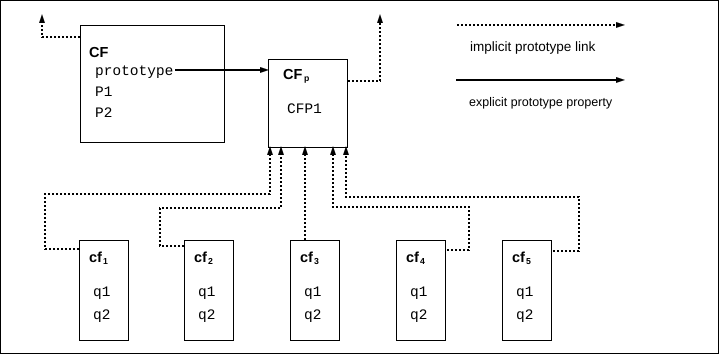
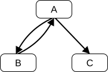
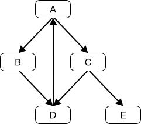

이 Ecma 표준은 ECMAScript 2027 언어를 정의합니다.
이것은 ECMAScript 언어 명세의 열여덟 번째 판입니다.
ECMAScript는 여러 기원 기술을 바탕으로 하였으며,
가장 잘 알려진 것은 JavaScript(넷스케이프)와 JScript(마이크로소프트)
입니다. 이 언어는 Brendan Eich가 넷스케이프에서 만들었으며,
넷스케이프의 Navigator 2.0 브라우저에 처음 나타났습니다.
웹 브라우저에 포함된 언어로 가장 널리 알려져 있지만,
브라우저 이외 서버 및 내장 응용프로그램 분야에서도 많이 사용되어,
세계에서 가장 널리 쓰이는 범용 프로그래밍 언어 중 하나로 성장했습니다.
ECMAScript 언어 명세의 개발은 1996년 11월에 시작되었으며,
이 Ecma 표준의 첫 번째 판은 1997년 6월 Ecma 총회에서 채택되었습니다.
해당 Ecma 표준은 패스트 트랙 절차를 거쳐
ISO/IEC JTC 1에 제출되었고, 1998년 4월 국제 표준
ISO/IEC 16262로 승인되었습니다. 1998년 6월 Ecma 총회에서
두 번째 ECMA-262 판이 ISO/IEC 16262와 완전히 일치하도록 승인되었습니다.
1판과 2판 사이의 변화는 편집적 차이입니다.
세 번째 판은 강력한 정규 표현식, 더 좋은 문자열 처리, 새로운
제어문, try/catch 예외 처리, 엄격한 오류 정의, 숫자 출력 포맷,
미래 언어 확장을 위한 소규모 변경 사항을 도입했습니다.
ECMAScript 표준의 세 번째 판은 1999년 12월 Ecma 총회에서
채택되었으며, 2002년 6월 ISO/IEC 16262:2002로 발행되었습니다.
세 번째 판 이후 ECMAScript는 월드와이드웹과 결합해
모든 웹 브라우저가 지원하는 프로그래밍 언어가 되면서
엄청난 보급률을 달성했습니다. ECMAScript의 네 번째 판 개발
작업도 많았으나, 완성되지 않았고 정식 네 번째 판으로
출판되지 않았으며, 일부 내용이 여섯 번째 판에 반영되었습니다.
ECMAScript 다섯 번째 판(ECMA-262 5판으로 발행)은
브라우저 구현체 사이에서 널리 쓰이던 사실상 표준
언어 해석을 명문화하였고, 세 번째 판 발표 이후 등장한
신규 기능을 지원합니다. 여기에는 접근자 속성, 객체의 반영적 생성
및 검사, 속성의 제어, 추가 배열 조작 함수, JSON 객체 인코딩 지원,
더 강력한 오류 검사와 보안을 위한 엄격 모드가 포함됩니다.
다섯 번째 판은 2009년 12월 Ecma 총회에서 채택되었습니다.
다섯 번째 판은 패스트 트랙 절차로 ISO/IEC JTC 1에
제출되어 ISO/IEC 16262:2011로 승인되었습니다.
ECMAScript 5.1 판은 소소한 수정을 포함하며, ISO/IEC 16262:2011과
동일한 본문입니다. 5.1 판은 2011년 6월 Ecma 총회에서 채택되었습니다.
여섯 번째 판의 집중 개발은 2009년, 다섯 번째 판 발표
준비와 동시에 시작되었습니다. 그러나 그에 앞서 1999년
세 번째 판 공개 이후로 여러 실험과 언어 개선 설계가
지속적으로 이루어졌습니다. 실질적으로 여섯 번째 판 완성은
15년에 걸친 노력의 결실입니다. 본 판의 목표는 대규모
애플리케이션과 라이브러리 생성 지원, 그리고 다른 언어의
컴파일 타깃으로써 ECMAScript 사용을 개선하는 것이었습니다.
주요 확장은 모듈, 클래스 선언, 렉시컬 블록 스코프, 이터레이터와
제너레이터, 비동기 프로그래밍용 프로미스, 구조 분해 패턴,
꼬리 호출 최적화 등입니다. 내장 ECMAScript 라이브러리는
맵/셋/이진 수 배열 등 데이터 추상화, 문자열과 정규 표현식용
추가 유니코드 지원 등으로 확장되었습니다. 내장 객체는
서브클래싱을 통한 확장이 가능해졌습니다. 여섯 번째 판은
지속적, 점진적 언어와 라이브러리 확장 기반을 마련합니다.
여섯 번째 판은 2015년 6월 총회에서 채택되었습니다.
ECMAScript 2016은 Ecma TC39가 연간 릴리스와
오픈 개발 프로세스를 도입한 첫 ECMAScript 판입니다.
ECMAScript 2015 원본에서 일반 텍스트 문서를 만들어
GitHub에서만 개발이 진행되었습니다. 표준 개발 1년 동안
수백 건의 풀 리퀘스트와 이슈가 제출되었고 수천 건의 버그,
편집상의 수정 등 다양한 개선이 이루어졌습니다.
또한 Ecmarkup, Ecmarkdown, Grammarkdown 등 수많은
소프트웨어 도구도 개발 지원에 사용되었습니다.
ES2016에는 새 지수 연산자와 `Array.prototype`의
`includes` 메서드 지원이 포함됐습니다.
ECMAScript 2017은 Async 함수, Shared Memory,
Atomics와 더불어 여러 소규모 언어/라이브러리 개선,
버그 수정, 편집 갱신을 도입했습니다. Async 함수는
promise 반환 함수 구문을 제공해 비동기 프로그래밍 경험을 개선했고,
Shared Memory와 Atomics는 병렬 CPU 상에서도
확정적 실행 순서를 보장하는 원자적 연산을 통한 멀티 에이전트
프로그램 통신 방식을 도입했습니다. 또한
`Object.values`, `Object.entries`, `Object.getOwnPropertyDescriptors`
등 새 Object 정적 메서드를 포함시켰습니다.
ECMAScript 2018은 async 이터레이터 프로토콜 및
async 제너레이터를 통한 비동기 반복 지원을 도입했습니다.
또한 정규 표현식 `dotAll` 플래그, 명명된 캡처 그룹, 유니코드
속성 이스케이프, 후방 탐색 어설션 등 4가지 신규 기능과
객체 잔여/전개 속성도 추가했습니다.
ECMAScript 2019는 배열 평탄화를 위한 `Array.prototype.flat` 및
`flatMap`, `Object.entries` 반환값을 객체로 변환하는 `Object.fromEntries`,
널리 구현됐으나 비표준이었던 `String.prototype.trimLeft`와
`trimRight`의 더 나은 명칭인 `trimStart`, `trimEnd`를 도입했습니다.
또한 몇 가지 구문, 의미적 소규모 수정을 포함하고 있는데,
동적 catch 바인딩 매개변수, JSON 정합을 위한 문자열 리터럴의
U+2028/U+2029 허용 등이 있습니다. 또 `Array.prototype.sort`를
안정 정렬로 강제, `JSON.stringify`의 모든 입력에 대해 올바른
UTF-8 반환, `Function.prototype.toString`이 원본 소스 혹은
표준 자리 표시자를 반환하도록 명확화했습니다.
ECMAScript 2020, 11판은 문자열의 모든 일치 객체 이터레이터를
생성하는 `matchAll` 메서드, 동적 지정자로 모듈을 비동기 임포트하는
`import()`, 임의 정밀도 정수형인 `BigInt`, 단락없는 `Promise.allSettled`,
전역 this 접근용 `globalThis`, 모듈내 `export * as ns from 'module'` 구문,
`for-in` 열거 순서 표준화, 모듈 컨텍스트용 `import.meta`,
“nullish” 값 처리를 개선한 nullish 병합 및 옵셔널 체이닝 구문을 도입했습니다.
ECMAScript 2021, 12판은 문자열의 `replaceAll`, input 값이
만족되면 단락하는 `Promise.any`, 여러 오류를 한 번에 표현하는
`AggregateError`, 논리 대입 연산자(`??=`, `&&=`, `||=`), 객체를 참조하나
가비지 컬렉션을 막지 않는 `WeakRef`, 대상 객체의 정리 작업 관리를 위한
`FinalizationRegistry`, 숫자 구분 기호(`1_000`), 그리고
구현 정의 정렬량을 줄인 배열 정렬을 도입했습니다.
ECMAScript 2022, 13판은 모듈 최상위 `await`,
클래스 내 공개/비공개 인스턴스 필드, 공개/비공개 정적 필드,
비공개 인스턴스 메서드와 접근자, 비공개 정적 메서드와 접근자,
정적 블록, 객체의 비공개 필드 존재 확인(`#x in obj`),
`/d` 플래그로 정규식 매칭 인덱스 제공, 에러의 `cause` 속성,
문자열/배열/TypedArray의 상대 인덱싱용 `at` 메서드,
`Object.hasOwn`을 도입했습니다.
ECMAScript 2023, 14판은 `Array.prototype`, `TypedArray.prototype`의
`toSorted`, `toReversed`, `with`, `findLast`, `findLastIndex` 및
`Array.prototype.toSpliced`를 추가하고, 파일 앞부분 `#!` 주석 지원,
약한 콜렉션에서 대부분의 Symbol을 키로 허용하도록 했습니다.
ECMAScript 2024, 15판은 ArrayBuffer와 SharedArrayBuffer의 리사이즈/전송 기능,
문자열 집합 작업을 위한 새로운 `/v` 정규식 플래그,
Promise 생성을 위한 편의 메서드 `Promise.withResolvers`, 데이터 집계용
`Object.groupBy`, `Map.groupBy`, 공유 메모리 변동 비동기 대기
`Atomics.waitAsync`, 문자열의 정상 유니코드 확인/보장용
`String.prototype.isWellFormed`, `toWellFormed`를 도입했습니다.
ECMAScript 2025, 16판은 이터레이터 연산용 새 글로벌 `Iterator`와
관련 메서드, Set 연산용 `Set.prototype` 메서드, JSON 모듈 임포트 지원,
가져온 모듈의 속성 선언, 정규식 안전 이스케이프용 `RegExp.escape` 메서드,
정규식 내 인라인 플래그 설정/해제, 항상 Promise로 결과를 보장하는
`Promise.try`, 새 TypedArray 종류인 `Float16Array` 및 관련
`DataView.prototype.getFloat16`, `setFloat16`, `Math.f16round`를 도입했습니다.
ECMAScript 2026, 17판은 다양한 크기의 숫자 합산
정밀 손실 최소화를 위한 `Math.sumPrecise`, 이터레이터 연결
`Iterator.concat`, 비동기 반복원/소스에서 배열을 만드는 `Array.fromAsync`,
오류 객체 식별용 `Error.isError`, `Map.prototype`, `WeakMap.prototype`의
조회 시 기본값 제공, `Uint8Array`의 16진수·base64 인코딩 변환,
`JSON.parse` reviver에서 소스 세그먼트 접근 가능, 원시값의
JSON.stringify 결과 조절용 `JSON.rawJSON` 등을 도입했습니다.
많은 조직을 대표하는 수십 명이 Ecma TC39 표준의 이 판과
이전 판 개발에 중요한 기여를 했습니다. 활발한 커뮤니티도
TC39 ECMAScript 활동을 뒷받침합니다. 이 커뮤니티는 여러 초안을
검토하고, 수천 건 버그를 보고하고, 구현 실험,
테스트스위트 기여, 전세계 개발자에게 ECMAScript 교육을 해왔습니다.
모든 기여자와 단체를 하나하나 밝히고 인정하는 것은 현실적으로 어렵습니다.
Allen Wirfs-Brock
ECMA-262, 프로젝트 에디터, 6판
Brian Terlson
ECMA-262, 프로젝트 에디터, 7판~10판
Jordan Harband
ECMA-262, 프로젝트 에디터, 10판~12판
Kevin Gibbons
ECMA-262, 프로젝트 에디터, 12판~17판
Shu-yu Guo
ECMA-262, 프로젝트 에디터, 12판~18판
Michael Ficarra
ECMA-262, 프로젝트 에디터, 12판~18판
Richard Gibson
ECMA-262, 프로젝트 에디터, 18판
Ron Buckton
ECMA-262, 프로젝트 에디터, 18판
Nicolò Ribaudo
ECMA-262, 프로젝트 에디터, 18판
Linus Groh
ECMA-262, 프로젝트 에디터, 18판
범위
이 표준은 ECMAScript 2027 범용 프로그래밍 언어를 정의한다.
적합성
ECMAScript의 적합한 구현은 이 명세서에 설명된 모든 타입, 값, 객체, 프로퍼티, 함수, 프로그램 구문 및 의미론을 제공하고 지원해야 한다.
ECMAScript의 적합한 구현은 최신 버전의 Unicode 표준 및 ISO/IEC 10646에 부합하도록 소스 텍스트 입력을 해석해야 한다.
서로 다른 인간 언어와 국가에서 사용되는 언어적·문화적 관례에 프로그램이 적응할 필요를 지원하는 애플리케이션 프로그래밍 인터페이스(API)를 제공하는 ECMAScript의 적합한 구현은, 이 명세서와 호환되는 최신판 ECMA-402에서 정의한 인터페이스를 구현해야 한다.
ECMAScript의 적합한 구현은 이 명세서에 설명된 것 외의 추가적인 타입, 값, 객체, 프로퍼티 및 함수를 제공할 수 있다. 특히 ECMAScript의 적합한 구현은 이 명세서에 설명된 객체에 대해, 이 명세서에 설명되지 않은 프로퍼티와 그 프로퍼티들의 값을 제공할 수 있다.
ECMAScript의 적합한 구현은 이 명세서에 설명되지 않은 프로그램 및 정규 표현식 구문을 지원할 수 있다. 특히 ECMAScript의 적합한 구현은 이 명세서의 하위 절 에 언급된 임의의 “future reserved words”를 사용하는 프로그램 구문을 지원할 수 있다.
ECMAScript의 적합한 구현은 하위 절 에 금지 확장(Forbidden Extension)으로 나열된 어떤 확장도 구현해서는 안 된다.
ECMAScript의 적합한 구현은 구현 정의, 구현 근사, 또는 호스트 정의가 아닌 어떤 기능도 재정의해서는 안 된다.
ECMAScript의 적합한 구현은, 달리 명시되지 않는 한, 규범적 선택사항(Normative Optional) 하위 절을 구현할지 여부를 선택할 수 있다. 웹 브라우저는 일반적으로 모든 규범적 선택사항 하위 절을 구현해야 한다. (부속서 참조.) 어떤 규범적 선택사항 동작이라도 구현된다면, 해당 규범적 선택사항 절에 포함된 모든 동작을 구현해야 한다. 규범적 선택사항 절은 아래와 같이 이 명세서에서 색상 상자 안의 "Normative Optional"이라는 단어로 표시된다.
규범적 선택사항 절 제목 예시
절 내용 예시.
ECMAScript의 적합한 구현은, 동시에 규범적 선택사항으로 표시되지 않는 한, 레거시(Legacy) 하위 절을 구현해야 한다. 레거시 하위 절 내에 명세된 모든 언어 기능과 동작은 하나 이상의 바람직하지 않은 특성을 가진다. 그러나 기존 애플리케이션에서 이들이 계속 사용되고 있기 때문에 이 명세서에서 제거할 수 없다. 이러한 기능은 ECMAScript 핵심 언어의 일부로 간주되지 않는다. 프로그래머는 새로운 ECMAScript 코드를 작성할 때 이러한 기능과 동작을 사용하거나 그 존재를 가정해서는 안 된다.
레거시 절 제목 예시
절 내용 예시.
레거시 규범적 선택사항 절 제목 예시
절 내용 예시.
규범적 참조
다음 참조 문서는 이 문서의 적용에 필수적이다. 날짜가 있는 참조의 경우 인용된 판만 적용된다. 날짜가 없는 참조의 경우 참조 문서의 최신판(모든 수정 사항 포함)이 적용된다.
ECMAScript는 호스트 환경 내에서 계산을 수행하고 계산 객체를 조작하기 위한 객체지향 프로그래밍 언어이다. 여기서 정의된 ECMAScript는 계산적으로 자급자족하도록 의도되지 않았다. 실제로 이 명세서에는 외부 데이터의 입력이나 계산 결과의 출력에 대한 규정이 없다. 대신 ECMAScript 프로그램의 계산 환경은 이 명세서에 설명된 객체와 기타 기능뿐 아니라, 특정 프로퍼티를 제공하여 접근될 수 있고 특정 함수를 제공하여 ECMAScript 프로그램으로부터 호출될 수 있음을 제외하면 그 설명과 동작이 이 명세서의 범위를 벗어나는, 환경 특화 객체도 제공할 것으로 예상된다.
ECMAScript는 원래 스크립트 언어로 사용되도록 설계되었으나, 현재는 범용 프로그래밍 언어로 널리 사용되고 있다. 스크립트 언어는 기존 시스템의 기능을 조작, 맞춤화, 자동화하는 데 사용되는 프로그래밍 언어이다. 이러한 시스템에서는 유용한 기능이 이미 사용자 인터페이스를 통해 제공되며, 스크립트 언어는 그러한 기능을 프로그램 제어에 노출하는 메커니즘이다. 이런 방식으로 기존 시스템은 객체와 기능으로 이루어진 호스트 환경을 제공하며, 이는 스크립트 언어의 능력을 완성한다. 스크립트 언어는 전문 프로그래머와 비전문 프로그래머 모두가 사용할 수 있도록 의도된다.
ECMAScript는 원래 웹 스크립트 언어로 설계되었으며, 브라우저에서 웹 페이지를 동적으로 만들고 웹 기반 클라이언트-서버 아키텍처의 일부로 서버 계산을 수행하는 메커니즘을 제공했다. 현재 ECMAScript는 다양한 호스트 환경에 핵심 스크립트 기능을 제공하는 데 사용된다. 따라서 핵심 언어는 특정 호스트 환경과 분리되어 이 문서에서 명세된다.
ECMAScript의 사용은 단순한 스크립팅을 넘어섰으며, 이제는 매우 다양한 환경과 규모에서 프로그래밍 작업의 전 범위에 사용된다. ECMAScript의 사용이 확장됨에 따라 그것이 제공하는 기능과 설비도 함께 확장되었다. 이제 ECMAScript는 완전한 기능을 갖춘 범용 프로그래밍 언어이다.
웹 스크립팅
웹 브라우저는 클라이언트 측 계산을 위한 ECMAScript 호스트 환경을 제공하며, 여기에는 예를 들어 창, 메뉴, 팝업, 대화 상자, 텍스트 영역, 앵커, 프레임, 기록, 쿠키 및 입출력을 나타내는 객체가 포함된다. 또한 호스트 환경은 포커스 변경, 페이지 및 이미지 로딩, 언로딩, 오류 및 중단, 선택, 폼 제출, 마우스 동작과 같은 이벤트에 스크립트 코드를 연결하는 수단을 제공한다. 스크립트 코드는 HTML 내부에 나타나며, 표시되는 페이지는 사용자 인터페이스 요소와 고정 및 계산된 텍스트와 이미지의 조합이다. 스크립트 코드는 사용자 상호작용에 반응하며, 메인 프로그램이 필요 없다.
웹 서버는 요청, 클라이언트, 파일을 나타내는 객체와 데이터를 잠그고 공유하는 메커니즘을 포함하는, 서버 측 계산을 위한 다른 호스트 환경을 제공한다. 브라우저 측 스크립팅과 서버 측 스크립팅을 함께 사용하면, 웹 기반 애플리케이션에 맞춤형 사용자 인터페이스를 제공하면서 계산을 클라이언트와 서버 사이에 분산할 수 있다.
ECMAScript를 지원하는 각 웹 브라우저와 서버는 자체 호스트 환경을 제공하여 ECMAScript 실행 환경을 완성한다.
호스트와 구현
ECMAScript를 호스트 환경에 통합하는 데 도움을 주기 위해, 이 명세서는 특정 기능(예: 추상 연산)의 정의를 전부 또는 일부에 대해 이 명세서 외부의 출처에 위임한다. 편집상, 이 명세서는 다음과 같은 종류의 위임을 구분한다.
구현은 부속서 에 열거된 기능이나 구현 정의 또는 구현 근사로 표시된 기능을 추가로 정의하는 외부 출처이다. 비공식적으로는 특정 웹 브라우저와 같은 구체적 산출물을 구현이라고 부른다.
구현 정의(implementation-defined) 기능은 추가적인 한정 없이 그 정의를 외부 출처에 위임하는 기능이다. 이 명세서는 특정 동작에 대해 어떤 권고도 하지 않으며, 적합한 구현은 이 명세서가 제시한 제약 내에서 자유롭게 어떤 동작이든 선택할 수 있다.
구현 근사(implementation-approximated) 기능은 이상적인 동작을 권고하면서도 그 정의를 외부 출처에 위임하는 기능이다. 적합한 구현은 이 명세서가 제시한 제약 내에서 자유롭게 어떤 동작이든 선택할 수 있지만, 이상적인 동작에 근사하도록 노력하는 것이 권장된다. Math.exp와 같은 일부 수학 연산은 구현 근사이다.
호스트는 부속서 에 나열된 기능을 추가로 정의하지만, 다른 구현 정의 또는 구현 근사 기능은 추가로 정의하지 않는 외부 출처이다. 비공식적으로는, 호스트는 부속서 를 통해 이 명세서와 동일한 방식으로 인터페이스하는 모든 구현의 집합, 예를 들어 모든 웹 브라우저의 집합을 가리킨다. 호스트는 종종 WHATWG HTML(https://html.spec.whatwg.org/)과 같은 외부 명세이다. 다시 말해, 호스트 정의 기능은 종종 외부 명세에서 추가로 정의된다.
호스트 훅은 외부 출처에 의해 전부 또는 일부가 정의되는 추상 연산이다. 모든 호스트 훅은 부속서 에 나열되어야 한다. 호스트 훅은 최소한 다음 요구 사항을 충족해야 한다.
반드시 정상 완료 또는 던지기 완료를 반환해야 한다.
호스트 정의(host-defined) 기능은 추가적인 한정 없이 그 정의를 외부 출처에 위임하며, 부속서 에 나열된 기능이다. 호스트가 아닌 구현도 호스트 정의 기능에 대한 정의를 제공할 수 있다.
호스트 환경은 모든 호스트 정의 기능에 대한 특정한 정의 선택이다. 호스트 환경에는 전역 객체의 호스트 정의 프로퍼티로서 입력을 얻고 출력을 제공할 수 있게 하는 객체나 함수가 일반적으로 포함된다.
이 명세서는 항상 가장 구체적인 용어를 사용하는 편집 관례를 따른다. 예를 들어 어떤 기능이 호스트 정의라면, 그것을 구현 정의라고 불러서는 안 된다.
호스트와 구현은 모두 여기에서 정의된 언어 타입, 명세 타입, 추상 연산, 문법 생성 규칙, 내재 객체, 내재 심볼을 통해 이 명세서와 인터페이스할 수 있다.
ECMAScript 개요
다음은 ECMAScript에 대한 비공식 개요이며, 언어의 모든 부분이 설명되는 것은 아니다. 이 개요는 표준 본문 자체의 일부가 아니다.
ECMAScript는 객체 기반이다. 기본 언어 기능과 호스트 기능은 객체에 의해 제공되며, ECMAScript 프로그램은 서로 통신하는 객체들의 집합이다. ECMAScript에서 객체는 0개 이상의 프로퍼티의 집합이며, 각 프로퍼티는 그 프로퍼티가 어떻게 사용될 수 있는지를 결정하는 어트리뷰트를 가진다. 예를 들어 어떤 프로퍼티의 Writable 어트리뷰트가 *false*로 설정되면, 실행 중인 ECMAScript 코드가 그 프로퍼티에 다른 값을 할당하려는 시도는 실패한다. 프로퍼티는 다른 객체, 원시 값, 또는 함수를 담는 컨테이너이다. 원시 값은 다음 내장 타입 중 하나의 구성원이다: Undefined, Null, Boolean, Number, BigInt, String, 그리고 Symbol; 객체는 내장 타입 Object의 구성원이고, 함수는 호출 가능한 객체이다. 프로퍼티를 통해 객체와 연관된 함수는 메서드라고 불린다.
ECMAScript는 ECMAScript 엔티티의 정의를 완성하는 내장 객체의 집합을 정의한다. 이러한 내장 객체에는 전역 객체, `Object`, `Function`, `Boolean`, `Symbol`, 여러 `Error` 객체를 포함한 언어의 런타임 의미론에 기본적인 객체, `Math`, `Number`, `Date`를 포함한 숫자 값을 표현하고 조작하는 객체, 텍스트 처리 객체인 `String`과 `RegExp`, `Array`와 각 요소가 특정 숫자 데이터 표현을 갖는 아홉 가지 서로 다른 Typed Array를 포함한 값의 인덱스 컬렉션 객체, `Map`과 `Set` 객체를 포함한 키 기반 컬렉션, `JSON` 객체, `ArrayBuffer`, `SharedArrayBuffer`, `DataView`를 포함한 구조화된 데이터를 지원하는 객체, 제너레이터 함수와 `Promise` 객체를 포함한 제어 추상화를 지원하는 객체, 그리고 `Proxy`와 `Reflect`를 포함한 리플렉션 객체가 포함된다.
ECMAScript는 또한 내장 연산자의 집합도 정의한다. ECMAScript 연산자에는 다양한 단항 연산, 곱셈 연산자, 덧셈 연산자, 비트 시프트 연산자, 관계 연산자, 동등 연산자, 이항 비트 연산자, 이항 논리 연산자, 할당 연산자, 그리고 쉼표 연산자가 포함된다.
대규모 ECMAScript 프로그램은 프로그램을 여러 개의 문장 및 선언 시퀀스로 분할할 수 있게 하는 모듈에 의해 지원된다. 각 모듈은 다른 모듈이 제공해야 하는 자신이 사용하는 선언과, 다른 모듈이 사용할 수 있도록 제공되는 자신의 선언을 명시적으로 식별한다.
ECMAScript 문법은 의도적으로 Java 문법과 유사하다. ECMAScript 문법은 사용하기 쉬운 스크립트 언어 역할을 할 수 있도록 완화되어 있다. 예를 들어 변수는 그 타입을 선언할 필요가 없고, 타입은 프로퍼티와 연관되지 않으며, 정의된 함수는 그 선언이 해당 함수 호출보다 텍스트상 앞에 나타날 필요가 없다.
객체
ECMAScript는 클래스 정의를 위한 문법을 포함하지만, ECMAScript 객체는 C++, Smalltalk, Java와 같은 언어들처럼 본질적으로 클래스 기반이 아니다. 대신 객체는 리터럴 표기법이나, 객체를 생성한 다음 그 프로퍼티에 초기값을 할당하여 객체의 전체 또는 일부를 초기화하는 코드를 실행하는 생성자를 포함한 다양한 방식으로 생성될 수 있다. 각 생성자는 *"prototype"*이라는 이름의 프로퍼티를 가진 함수이며, 이는 프로토타입 기반 상속과 공유 프로퍼티를 구현하는 데 사용된다. 객체는 new 표현식에서 생성자를 사용하여 만들어진다. 예를 들어 `new Date(2009, 11)`은 새로운 Date 객체를 생성한다. new를 사용하지 않고 생성자를 호출하면, 그 결과는 생성자에 따라 달라진다. 예를 들어 `Date()`는 객체가 아니라 현재 날짜와 시간을 나타내는 문자열 표현을 생성한다.
생성자에 의해 생성된 모든 객체는 그 생성자의 *"prototype"* 프로퍼티 값에 대한 암묵적 참조(객체의 프로토타입이라 불린다)를 가진다. 또한 프로토타입은 자기 자신의 프로토타입에 대한 비-*null* 암묵적 참조를 가질 수 있고, 이런 식으로 계속 이어질 수 있다. 이를 프로토타입 체인이라고 한다. 객체의 어떤 프로퍼티를 참조할 때, 그 참조는 해당 이름의 프로퍼티를 포함하는 프로토타입 체인의 첫 번째 객체 안의 그 이름의 프로퍼티를 가리킨다. 다시 말해, 먼저 직접 언급된 객체를 검사하여 그런 프로퍼티가 있는지 본다. 그 객체가 그 이름의 프로퍼티를 가지고 있다면 참조는 그 프로퍼티를 가리킨다. 그 객체가 그 이름의 프로퍼티를 가지고 있지 않다면, 다음으로 그 객체의 프로토타입을 검사하며, 이런 방식으로 계속된다.

클래스 기반 객체지향 언어에서는 일반적으로 상태는 인스턴스가 가지며, 메서드는 클래스가 가지며, 상속은 구조와 동작에 대해서만 이루어진다. ECMAScript에서는 상태와 메서드를 객체가 가지며, 구조, 동작, 상태가 모두 상속된다.
자신의 프로토타입이 가진 특정 프로퍼티를 직접 포함하지 않는 모든 객체는 그 프로퍼티와 그 값을 공유한다. 그림 1은 이를 보여 준다.
CF는 생성자(이자 객체)이 다. `new` 표현식을 사용하여 다섯 개의 객체가 생성되었다: cf1, cf2, cf3, cf4, 그리고 cf5. 이들 각각의 객체는 *"q1"* 및 *"q2"*라는 이름의 프로퍼티를 포함한다. 점선은 암묵적 프로토타입 관계를 나타낸다. 예를 들어 cf3의 프로토타입은 CFp이다. 생성자 CF는 자체적으로 *"P1"* 및 *"P2"*라는 이름의 두 프로퍼티를 가지며, 이들은 CFp, cf1, cf2, cf3, cf4, 또는 cf5에서는 보이지 않는다. CFp 안의 *"CFP1"*이라는 이름의 프로퍼티는 cf1, cf2, cf3, cf4, 그리고 cf5가 공유하며(CF는 제외), 마찬가지로 CFp의 암묵적 프로토타입 체인에서 *"q1"*, *"q2"*, 또는 *"CFP1"*이라는 이름이 아닌 모든 프로퍼티도 공유한다. CF와 CFp 사이에는 암묵적 프로토타입 연결이 없다는 점에 유의하라.
대부분의 클래스 기반 객체 언어와 달리, 프로퍼티는 값 할당을 통해 객체에 동적으로 추가될 수 있다. 즉, 생성자는 생성된 객체의 프로퍼티 전부 또는 일부에 이름을 붙이거나 값을 할당할 필요가 없다. 위 그림에서는 CFp의 프로퍼티에 새 값을 할당함으로써 cf1, cf2, cf3, cf4, 그리고 cf5를 위한 새로운 공유 프로퍼티를 추가할 수 있다.
ECMAScript 객체는 본질적으로 클래스 기반이 아니지만, 생성자 함수, 프로토타입 객체, 메서드의 공통 패턴에 기초한 클래스 유사 추상을 정의하는 것이 종종 편리하다. ECMAScript 내장 객체 자체도 그러한 클래스 유사 패턴을 따른다. ECMAScript 2015부터 ECMAScript 언어는 프로그래머가 내장 객체에서 사용되는 것과 동일한 클래스 유사 추상 패턴을 따르는 객체를 간결하게 정의할 수 있도록 하는 구문적 클래스 정의를 포함한다.
ECMAScript의 엄격 변형
ECMAScript 언어는 일부 사용자가 언어에서 사용 가능한 몇몇 기능의 사용을 제한하고 싶어 할 수 있다는 가능성을 인정한다. 그들은 보안상의 이유, 오류를 유발하기 쉽다고 여기는 기능을 피하기 위해, 더 강화된 오류 검사를 얻기 위해, 또는 그 밖에 스스로 선택한 다른 이유로 그렇게 할 수 있다. 이러한 가능성을 지원하기 위해 ECMAScript는 언어의 엄격 변형을 정의한다. 언어의 엄격 변형은 일반 ECMAScript 언어의 특정 구문 및 의미 기능 일부를 제외하고, 일부 기능의 상세 의미론을 수정한다. 또한 엄격 변형은 비엄격 형태의 언어에서는 오류로 명세되지 않은 상황에서 오류 예외를 던짐으로써 반드시 보고되어야 하는 추가 오류 조건을 명세한다.
ECMAScript의 엄격 변형은 일반적으로 언어의 엄격 모드라고 불린다. ECMAScript의 엄격 모드 선택과 엄격 모드 구문 및 의미론의 사용은 에서 설명된 바와 같이 개별 ECMAScript 소스 텍스트 단위 수준에서 명시적으로 이루어진다. 엄격 모드는 구문적 소스 텍스트 단위 수준에서 선택되므로, 엄격 모드는 그러한 소스 텍스트 단위 내에서만 국소적 효과를 가지는 제한만 부과한다. 엄격 모드는 여러 소스 텍스트 단위에 걸쳐 일관되게 작동해야 하는 ECMAScript 의미론의 어떤 측면도 제한하거나 수정하지 않는다. 완전한 ECMAScript 프로그램은 엄격 모드와 비엄격 모드 ECMAScript 소스 텍스트 단위가 혼합되어 구성될 수 있다. 이 경우 엄격 모드는 실제로 엄격 모드 소스 텍스트 단위 안에 정의된 코드를 실행할 때에만 적용된다.
이 명세서에 부합하려면, ECMAScript 구현은 이 명세서가 정의한 완전한 비제한 ECMAScript 언어와 ECMAScript 언어의 엄격 변형을 모두 구현해야 한다. 또한 구현은 비제한 및 엄격 모드 소스 텍스트 단위를 하나의 복합 프로그램으로 결합하는 것을 지원해야 한다.
용어와 정의
이 문서의 목적상, 다음 용어와 정의를 적용한다.
implementation-approximated
구현 근사 기능은 외부 출처에 의해 전부 또는 일부가 정의되지만, 이 명세서에서 권장되는 이상적 동작을 가진다
implementation-defined
구현 정의 기능은 이 명세서 외부의 출처에 의해 전부 또는 일부가 정의된다
host-defined
implementation-defined와 동일
편집상으로는 절 를 보라.
type
절 에서 정의된 데이터 값의 집합
primitive value
절 에서 정의된 Undefined, Null, Boolean, Number, BigInt, Symbol, 또는 String 타입 중 하나의 구성원
원시 값은 언어 구현의 최하위 수준에서 직접 표현되는 데이터이다.
object
Object 타입의 구성원
객체는 프로퍼티들의 집합이며 단 하나의 프로토타입 객체를 가진다. 프로토타입은 *null*일 수 있다.
constructor
객체를 생성하고 초기화하는 함수 객체
생성자의 *"prototype"* 프로퍼티 값은 상속 및 공유 프로퍼티를 구현하는 데 사용되는 프로토타입 객체이다.
prototype
다른 객체에 공유 프로퍼티를 제공하는 객체
생성자가 객체를 생성할 때, 그 객체는 프로퍼티 참조를 해석하기 위해 생성자의 *"prototype"* 프로퍼티를 암묵적으로 참조한다. 생성자의 *"prototype"* 프로퍼티는 프로그램 표현식 constructor.prototype으로 참조할 수 있으며, 객체의 프로토타입에 추가된 프로퍼티는 상속을 통해 그 프로토타입을 공유하는 모든 객체에 공유된다. 또는 `Object.create` 내장 함수를 사용하여 명시적으로 지정된 프로토타입을 가진 새 객체를 생성할 수도 있다.
ordinary object
모든 객체가 지원해야 하는 필수 내부 메서드에 대해 기본 동작을 가지는 객체
exotic object
하나 이상의 필수 내부 메서드에 대해 기본 동작을 가지지 않는 객체
보통 객체가 아닌 모든 객체는 이색 객체이다.
standard object
그 의미론이 이 명세서에 의해 정의되는 객체
built-in object
ECMAScript 구현에 의해 명세되고 제공되는 객체
표준 내장 객체는 이 명세서에서 정의된다. ECMAScript 구현은 추가적인 종류의 내장 객체를 명세하고 제공할 수 있다.
undefined value
변수에 값이 할당되지 않았을 때 사용되는 원시 값
Undefined type
유일한 값이 *undefined* 값인 타입
null value
어떠한 객체 값도 의도적으로 없음을 나타내는 원시 값
Null type
유일한 값이 *null* 값인 타입
Boolean value
Boolean 타입의 구성원
Boolean 값은 *true*와 *false* 두 개뿐이다.
Boolean type
원시 값 *true*와 *false*로 이루어진 타입
Boolean object
표준 내장 Boolean 생성자의 인스턴스인 Object 타입의 구성원
Boolean 객체는 `new` 표현식에서 Boolean 생성자를 사용하고, 인수로 Boolean 값을 제공하여 생성된다. 생성된 객체는 그 값이 Boolean 값인 내부 슬롯을 가진다. Boolean 객체는 Boolean 값으로 강제 변환될 수 있다.
String value
0개 이상의 16비트 부호 없는 정수 값으로 이루어진 유한한 순서열인 원시 값
String 값은 String 타입의 구성원이다. 순서열의 각 정수 값은 일반적으로 UTF-16 텍스트의 단일 16비트 단위를 나타낸다. 그러나 ECMAScript는 그 값들이 16비트 부호 없는 정수여야 한다는 점 외에는 어떠한 제한이나 요구 사항도 두지 않는다.
String type
가능한 모든 String 값의 집합
String object
표준 내장 String 생성자의 인스턴스인 Object 타입의 구성원
String 객체는 `new` 표현식에서 String 생성자를 사용하고, 인수로 String 값을 제공하여 생성된다. 생성된 객체는 그 값이 String 값인 내부 슬롯을 가진다. String 객체는 String 생성자를 함수로 호출하여() String 값으로 강제 변환될 수 있다.
Number value
IEEE 754-2019 배정밀도 64비트 이진 형식 값에 대응하는 원시 값
Number 값은 Number 타입의 구성원이며 숫자의 직접적인 표현이다.
Number type
*NaN*(“숫자가 아님”), *+∞*𝔽(양의 무한대), 그리고 *-∞*𝔽(음의 무한대)를 포함한 가능한 모든 Number 값의 집합
Number object
표준 내장 Number 생성자의 인스턴스인 Object 타입의 구성원
Number 객체는 `new` 표현식에서 Number 생성자를 사용하고, 인수로 Number 값을 제공하여 생성된다. 생성된 객체는 그 값이 Number 값인 내부 슬롯을 가진다. Number 객체는 Number 생성자를 함수로 호출하여() Number 값으로 강제 변환될 수 있다.
Infinity
양의 무한 Number 값인 Number 값
NaN
IEEE 754-2019 NaN(“숫자가 아님”) 값인 Number 값
BigInt value
임의 정밀도 정수 값에 대응하는 원시 값
BigInt type
가능한 모든 BigInt 값의 집합
BigInt object
표준 내장 BigInt 생성자의 인스턴스인 Object 타입의 구성원
Symbol value
고유한 비-String 객체 프로퍼티 키를 나타내는 원시 값
Symbol type
가능한 모든 Symbol 값의 집합
Symbol object
표준 내장 Symbol 생성자의 인스턴스인 Object 타입의 구성원
function
서브루틴으로 호출될 수 있는 Object 타입의 구성원
함수는 자신의 프로퍼티 외에도, 호출될 때 어떻게 동작하는지를 결정하는 실행 가능한 코드와 상태를 포함한다. 함수의 코드는 ECMAScript로 작성될 수도 있고 아닐 수도 있다.
built-in function
함수인 내장 객체
내장 함수의 예로는 `parseInt`와 `Math.exp`가 있다. 호스트나 구현은 이 명세서에 설명되지 않은 추가 내장 함수를 제공할 수 있다.
built-in constructor
생성자인 내장 함수
내장 생성자의 예로는 `Object`와 `Function`이 있다. 호스트나 구현은 이 명세서에 설명되지 않은 추가 내장 생성자를 제공할 수 있다.
property
키(String 값 또는 Symbol 값)와 값을 연관시키는 객체의 일부
프로퍼티의 형태에 따라 그 값은 데이터 값(원시 값, 객체, 또는 함수 객체)으로 직접 표현될 수도 있고, 접근자 함수 쌍을 통해 간접적으로 표현될 수도 있다.
method
프로퍼티의 값인 함수
함수가 객체의 메서드로 호출될 때, 그 객체는 함수의 *this* 값으로 전달된다.
built-in method
내장 함수인 메서드
표준 내장 메서드는 이 명세서에서 정의된다. 호스트나 구현은 이 명세서에 설명되지 않은 추가 내장 메서드를 제공할 수 있다.
attribute
프로퍼티의 어떤 특성을 정의하는 내부 값
own property
자신의 객체에 직접 포함된 프로퍼티
inherited property
자기 자신의 프로퍼티는 아니지만, 객체의 프로토타입의 프로퍼티(자기 자신의 것이든 상속된 것이든)인 객체의 프로퍼티
이 명세서의 구성
이 명세서의 나머지 부분은 다음과 같이 구성된다.
절 는 명세서 전체에서 사용되는 표기 관례를 정의한다.
절 부터 까지는 ECMAScript 프로그램이 동작하는 실행 환경을 정의한다.
절 부터 까지는 구문 인코딩과 모든 언어 기능의 실행 의미론을 포함한 실제 ECMAScript 프로그래밍 언어를 정의한다.
절 부터 까지는 ECMAScript 표준 라이브러리를 정의한다. 여기에는 ECMAScript 프로그램이 실행될 때 사용할 수 있는 모든 표준 객체의 정의가 포함된다.
절 는 SharedArrayBuffer가 뒷받침하는 메모리에 대한 접근과 Atomics 객체 메서드의 메모리 일관성 모델을 설명한다.
표기 관례
구문 및 어휘 문법
문맥 자유 문법
문맥 자유 문법은 여러 개의 생성 규칙으로 구성된다. 각 생성 규칙은 왼쪽 항으로 비단말이라 불리는 추상 기호를 가지며, 오른쪽 항으로 0개 이상의 비단말 및 단말 기호의 시퀀스를 가진다. 각 문법에서 단말 기호는 지정된 알파벳으로부터 취해진다.
체인 생성 규칙은 오른쪽 항에 정확히 하나의 비단말 기호와 0개 이상의 단말 기호를 함께 가지는 생성 규칙이다.
목표 기호라고 불리는 하나의 구별된 비단말로 이루어진 문장에서 시작하여, 주어진 문맥 자유 문법은 하나의 언어, 즉 시퀀스 내의 어떤 비단말이든 그 비단말이 왼쪽 항인 생성 규칙의 오른쪽 항으로 반복적으로 치환함으로써 얻을 수 있는 단말 기호 시퀀스들의 (어쩌면 무한한) 집합을 명세한다.
어휘 문법과 RegExp 문법
ECMAScript의 어휘 문법은 절 에 제시되어 있다. 이 문법의 단말 기호는 에서 정의된 |SourceCharacter| 규칙에 부합하는 유니코드 코드 포인트이다. 이 문법은 목표 기호 |InputElementDiv|, |InputElementTemplateTail|, |InputElementRegExp|, |InputElementRegExpOrTemplateTail|, 또는 |InputElementHashbangOrRegExp|로부터 시작하는 일련의 생성 규칙을 정의하며, 이러한 코드 포인트 시퀀스가 어떻게 입력 요소 시퀀스로 변환되는지를 설명한다.
공백과 주석을 제외한 입력 요소는 ECMAScript 구문 문법의 단말 기호를 이루며 ECMAScript 토큰이라 불린다. 이러한 토큰은 ECMAScript 언어의 예약어, 식별자, 리터럴, 구두점이다. 또한 줄 종료자는 토큰으로 간주되지는 않지만, 입력 요소 스트림의 일부가 되어 자동 세미콜론 삽입 과정()을 안내한다. 단순 공백과 단일 행 주석은 버려지며 구문 문법을 위한 입력 요소 스트림에 나타나지 않는다. |MultiLineComment|(`/*`…`*/`` 형태의 주석으로, 한 줄을 넘는지 여부와 관계없음)도 줄 종료자를 포함하지 않으면 마찬가지로 단순히 버려진다. 그러나 |MultiLineComment|가 하나 이상의 줄 종료자를 포함하면, 그것은 단일 줄 종료자로 대체되며, 이는 구문 문법을 위한 입력 요소 스트림의 일부가 된다.
ECMAScript의 RegExp 문법은 에 제시되어 있다. 이 문법 역시 |SourceCharacter|로 정의되는 코드 포인트를 단말 기호로 가진다. 이 문법은 목표 기호 |Pattern|로부터 시작하는 생성 규칙 집합을 정의하며, 코드 포인트 시퀀스가 어떻게 정규 표현식 패턴으로 변환되는지를 설명한다.
어휘 문법과 RegExp 문법의 생성 규칙은 구분 구두점으로 콜론 두 개 “::”를 가진다는 점으로 구별된다. 어휘 문법과 RegExp 문법은 일부 생성 규칙을 공유한다.
숫자 문자열 문법
숫자 문자열 문법은 에 나타난다. 이 문법은 |SourceCharacter|를 단말 기호로 가지며, 목표 기호 |StringNumericLiteral|로부터 시작하여 문자열을 숫자 값으로 변환하는 데 사용된다(이는 숫자 리터럴에 대한 어휘 문법과 유사하지만 구별된다).
숫자 문자열 문법의 생성 규칙은 구두점으로 콜론 세 개 “:::”를 가진다는 점으로 구별되며, 소스 텍스트 파싱에는 결코 사용되지 않는다.
구문 문법
ECMAScript의 구문 문법은 절 부터 까지에 제시되어 있다. 이 문법은 어휘 문법에 의해 정의되는 ECMAScript 토큰을 단말 기호로 가진다(). 이 문법은 두 개의 대안적 목표 기호 |Script|와 |Module|로부터 시작하는 생성 규칙 집합을 정의하며, 토큰 시퀀스가 어떻게 ECMAScript 프로그램의 구문적으로 올바른 독립 구성 요소를 형성하는지를 설명한다.
코드 포인트 스트림을 ECMAScript |Script| 또는 |Module|로 파싱해야 할 때, 먼저 어휘 문법을 반복 적용하여 입력 요소 스트림으로 변환하고, 그 다음 이 입력 요소 스트림을 구문 문법의 단일 적용으로 파싱한다. 입력 요소 스트림 안의 토큰들이 목표 비단말(|Script| 또는 |Module|)의 단일 인스턴스로, 남는 토큰 없이 파싱될 수 없다면 입력 스트림은 구문 오류이다.
파싱이 성공하면 파스 트리가 구성된다. 이는 각 노드가 파스 노드인 루트가 있는 트리 구조이다. 각 파스 노드는 문법의 기호 하나의 인스턴스이며, 그 기호로부터 유도될 수 있는 소스 텍스트의 범위를 나타낸다. 전체 소스 텍스트를 나타내는 파스 트리의 루트 노드는 파스의 목표 기호의 인스턴스이다. 파스 노드가 비단말의 인스턴스인 경우, 그것은 또한 그 비단말을 왼쪽 항으로 가지는 어떤 생성 규칙의 인스턴스이기도 하다. 또한 그것은 0개 이상의 자식을 가지며, 각 자식은 생성 규칙 오른쪽 항의 각 기호 하나에 대응한다. 각 자식은 대응하는 기호의 인스턴스인 파스 노드이다.
새 파스 노드는 파서가 호출될 때마다 인스턴스화되며, 동일한 소스 텍스트를 파싱하는 경우에도 파스들 사이에서 재사용되지 않는다. 파스 노드는 동일한 소스 텍스트 범위를 나타내고, 동일한 문법 기호의 인스턴스이며, 동일한 파서 호출에서 생성된 경우에만 같은 파스 노드로 간주된다.
같은 String을 여러 번 파싱하면 서로 다른 파스 노드가 생성된다. 예를 들어 다음을 보라.
let str = "1 + 1;";
eval(str);
eval(str);
`eval`을 호출할 때마다 `str`의 값은 ECMAScript 소스 텍스트로 변환되고, 그 자체의 별도 파스 노드 트리를 생성하는 독립적인 파싱이 수행된다. 각 파스가 동일한 String 값으로부터 유도된 소스 텍스트를 대상으로 하더라도, 그 트리들은 서로 구별된다.
파스 노드는 명세상의 인공물이며, 구현이 이에 상응하는 자료 구조를 사용할 필요는 없다.
구문 문법의 생성 규칙은 구두점으로 단 하나의 콜론 “:”만 가진다는 점으로 구별된다.
절 부터 까지에 제시된 구문 문법은 어떤 토큰 시퀀스가 올바른 ECMAScript |Script| 또는 |Module|로 받아들여지는지에 대한 완전한 설명은 아니다. 특정 위치(예: 줄 종료 문자 앞)에 세미콜론을 추가하기만 하면 문법으로 기술될 수 있는 추가 토큰 시퀀스도 받아들여진다. 또한 문법으로 기술되더라도 특정 “어색한” 위치에 줄 종료 문자가 나타나면 받아들여지지 않는 토큰 시퀀스도 있다.
어떤 경우에는 모호성을 피하기 위해, 구문 문법이 유효한 ECMAScript |Script| 또는 |Module|을 형성하지 않는 토큰 시퀀스를 허용하는 일반화된 생성 규칙을 사용한다. 예를 들어 이 기법은 객체 리터럴과 객체 구조 분해 패턴에 사용된다. 그러한 경우 허용 가능한 토큰 시퀀스를 추가로 제한하는 더 엄격한 보충 문법이 제공된다. 일반적으로 조기 오류 규칙은 특정 맥락에서 "_p_ must cover an _n_"이라고 기술한다. 여기서 _p_는 파스 노드(일반화된 생성 규칙의 인스턴스)이고 _n_은 보충 문법의 비단말이다. 이는 다음을 의미한다.
원래 _p_와 일치한 토큰 시퀀스를 목표 기호로 _n_을 사용하여 다시 파싱한다. _n_이 문법 매개변수를 가진다면, _p_가 원래 파싱될 때 사용된 것과 같은 값으로 설정된다.
그 토큰 시퀀스가 남는 토큰 없이 _n_의 단일 인스턴스로 파싱될 수 있다면:
그 _n_의 인스턴스(주어진 _p_에 대해 유일한 파스 노드)를 "_p_에 의해 덮이는 _n_"이라고 부른다.
_n_ 및 그것으로부터 유도된 생성 규칙에 대한 모든 조기 오류 규칙은 _p_에 의해 덮이는 _n_에도 적용된다.
그렇지 않으면(파싱이 실패하면), 이는 조기 Syntax Error이다.
문법 표기법
단말 기호
ECMAScript 문법에서 일부 단말 기호는 `fixed-width` 글꼴로 표시된다. 이러한 것은 소스 텍스트에 정확히 적힌 그대로 나타나야 한다. 이 방식으로 명세된 모든 단말 기호 코드 포인트는 다른 유니코드 범위의 유사하게 생긴 코드 포인트가 아니라 Basic Latin 블록의 적절한 유니코드 코드 포인트로 이해되어야 한다. 단말 기호 안의 코드 포인트는 `\\` |UnicodeEscapeSequence|로 표현될 수 없다.
단말 기호가 개별 유니코드 코드 포인트인 문법(즉, 어휘, RegExp, 숫자 문자열 문법)에서는, 생성 규칙에 나타나는 여러 개의 고정 폭 코드 포인트의 연속은 그것들을 각각 독립된 단말 기호로 쓴 것과 같은 코드 포인트 시퀀스에 대한 단순한 약식 표기이다.
예를 들어, 생성 규칙
HexIntegerLiteral :: `0x` HexDigits
는 다음의 약식이다.
HexIntegerLiteral :: `0` `x` HexDigits
반대로, 구문 문법에서는 고정 폭 코드 포인트의 연속이 하나의 단말 기호이다.
단말 기호는 두 가지 다른 형태도 가진다.
어휘 및 RegExp 문법에서, 관례적인 인쇄 표현이 없는 유니코드 코드 포인트는 대신 "<ABBREV>" 형식으로 표시되며, 여기서 "ABBREV"는 그 코드 포인트 또는 코드 포인트 집합을 나타내는 기억 보조어이다. 이러한 형태는 , , 그리고 에서 정의된다.
구문 문법에서, 특정 단말 기호(예: |IdentifierName| 및 |RegularExpressionLiteral|)는 같은 이름의 어휘 문법 비단말을 가리키므로 이탤릭체로 표시된다.
비단말 기호와 생성 규칙
비단말 기호는 이탤릭체로 표시된다. 비단말의 정의(“생성 규칙”이라고도 부른다)는 정의되는 비단말의 이름 뒤에 하나 이상의 콜론이 따라오는 형태로 도입된다. (콜론의 개수는 그 생성 규칙이 어느 문법에 속하는지를 나타낸다.) 그 다음 줄들에는 해당 비단말의 하나 이상의 대체 오른쪽 항이 이어진다. 예를 들어, 구문 정의
는 비단말 |WhileStatement|가 토큰 `while`, 그 다음 왼쪽 괄호 토큰, 그 다음 |Expression|, 그 다음 오른쪽 괄호 토큰, 그 다음 |Statement|를 나타낸다는 뜻이다. |Expression|과 |Statement|의 출현은 그 자체로 비단말이다. 또 다른 예로, 구문 정의
는 |ArgumentList|가 단일 |AssignmentExpression|을 나타낼 수도 있고, |ArgumentList| 다음에 쉼표, 그 다음 |AssignmentExpression|이 오는 형태를 나타낼 수도 있음을 뜻한다. 이 |ArgumentList| 정의는 재귀적이며, 즉 자기 자신을 이용해 정의된다. 그 결과 |ArgumentList|는 쉼표로 구분된 임의의 양의 개수의 인수를 포함할 수 있으며, 각 인수 표현식은 |AssignmentExpression|이다. 이러한 비단말의 재귀 정의는 흔하다.
선택 기호
단말 또는 비단말 뒤에 나타날 수 있는 아래첨자 접미사 “opt”는 선택 기호를 나타낸다. 선택 기호를 포함하는 대안은 실제로 두 개의 오른쪽 항을 명세한다. 하나는 선택 요소를 생략한 것이고, 다른 하나는 그것을 포함한 것이다. 이는 다음이
따라서 이 예에서 비단말 |ForStatement|는 실제로 네 개의 대체 오른쪽 항을 가진다.
문법 매개변수
생성 규칙은 생성 규칙이 정의하는 비단말 기호의 접미사로 나타날 수 있는 “[parameters]” 형식의 아래첨자 주석으로 매개변수화될 수 있다. “parameters”는 하나의 이름일 수도 있고, 쉼표로 구분된 이름 목록일 수도 있다. 매개변수화된 생성 규칙은, 매개변수화된 비단말 기호 뒤에 밑줄이 선행된 매개변수 이름들의 모든 조합을 덧붙여 정의하는 생성 규칙 집합의 약식이다. 이는 다음이
오른쪽 항 대안 앞에 “[+parameter]”가 붙으면, 그 대안은 해당 생성 규칙의 비단말 기호를 참조할 때 지정된 매개변수가 사용된 경우에만 사용 가능하다. 오른쪽 항 대안 앞에 “[~parameter]”가 붙으면, 그 대안은 해당 매개변수가 생성 규칙의 비단말 기호를 참조할 때 사용되지 않은 경우에만 사용 가능하다. 이는 다음이
생성 규칙의 오른쪽 항으로 “[empty]”라는 구가 나타나면, 그 생성 규칙의 오른쪽 항에 단말도 비단말도 포함되지 않음을 나타낸다.
룩어헤드 제한
생성 규칙의 오른쪽 항에 “[lookahead = _seq_]”라는 구가 나타나면, 이는 즉시 뒤따르는 입력 토큰 시퀀스의 접두사가 토큰 시퀀스 _seq_일 때에만 그 생성 규칙을 사용할 수 있음을 뜻한다. 마찬가지로, _set_이 유한하고 비어 있지 않은 토큰 시퀀스 집합일 때 “[lookahead ∈ _set_]”는 즉시 뒤따르는 토큰 시퀀스의 접두사가 _set_의 어떤 원소일 때에만 그 생성 규칙을 사용할 수 있음을 뜻한다. 편의를 위해, 그 집합은 비단말로도 쓸 수 있으며, 이 경우 그것은 그 비단말이 확장될 수 있는 모든 토큰 시퀀스의 집합을 나타낸다. 그 비단말이 무한히 많은 서로 다른 토큰 시퀀스로 확장될 수 있다면 이는 편집 오류로 간주된다.
이러한 조건은 부정될 수 있다. “[lookahead ≠ _seq_]”는 포함하는 생성 규칙이 즉시 뒤따르는 입력 토큰 시퀀스의 접두사가 _seq_가 아닐 때에만 사용 가능함을 뜻하고, “[lookahead ∉ _set_]”는 즉시 뒤따르는 토큰 시퀀스의 접두사가 _set_의 어떤 원소도 아닐 때에만 사용 가능함을 뜻한다.
예를 들어, 다음 정의들이 주어졌다고 하자.
DecimalDigit :: one of
`0` `1` `2` `3` `4` `5` `6` `7` `8` `9`
DecimalDigits ::
DecimalDigit
DecimalDigits DecimalDigit
첫 번째 숫자가 짝수인 하나 이상의 십진 숫자가 뒤따르는 문자 `n`이거나, 또 다른 십진 숫자가 뒤따르지 않는 십진 숫자와 일치한다.
이러한 구가 구문 문법에서 사용될 때는, 나중 위치에서 어떤 어휘 목표 기호를 사용할지 알아야 나중 토큰을 결정할 수 있으므로, 즉시 뒤따르는 토큰 시퀀스를 모호성 없이 식별하는 것이 불가능할 수 있다는 점에 유의하라. 따라서 이들이 구문 문법에서 사용될 때, 룩어헤드 제한(시퀀스 집합의 일부로서 포함되는 경우도 포함)에 토큰 시퀀스 _seq_가 나타나는데, 사용할 어휘 목표 기호의 선택이 _seq_가 결과 토큰 시퀀스의 접두사인지 여부를 바꿀 수 있다면, 이는 편집 오류로 간주된다.
[no |LineTerminator| here]
구문 문법의 생성 규칙 오른쪽 항에 “[no |LineTerminator| here]”라는 구가 나타나면, 그 생성 규칙이 제한된 생성 규칙임을 뜻한다. 즉, 표시된 위치에서 입력 스트림에 |LineTerminator|가 나타나면 그 생성 규칙을 사용할 수 없다. 예를 들어, 생성 규칙
는 스크립트에서 `throw` 토큰과 |Expression| 사이에 |LineTerminator|가 나타나면 그 생성 규칙을 사용할 수 없음을 뜻한다.
|LineTerminator|의 존재가 제한된 생성 규칙에 의해 금지되지 않는 한, 입력 요소 스트림에서 서로 인접한 두 토큰 사이에는 어떤 수의 |LineTerminator|가 나타나더라도 스크립트의 구문적 수용 가능성에 영향을 주지 않는다.
but not
생성 규칙의 오른쪽 항은 “but not”이라는 구를 사용하고, 이어서 제외할 확장을 명시함으로써 특정 확장이 허용되지 않음을 지정할 수 있다. 예를 들어, 생성 규칙
Identifier ::
IdentifierName but not ReservedWord
는 비단말 |Identifier|가 |IdentifierName|을 대체할 수 있는 어떤 코드 포인트 시퀀스로도 대체될 수 있지만, 동일한 코드 포인트 시퀀스가 |ReservedWord|를 대체할 수도 있는 경우는 제외됨을 뜻한다.
설명적 구문
마지막으로, 몇몇 비단말 기호는 모든 대안을 나열하는 것이 비현실적인 경우 산세리프체의 설명적 구문으로 기술된다.
SourceCharacter ::
> 임의의 유니코드 코드 포인트
알고리즘 관례
이 명세서는 종종 알고리즘의 단계를 명세하기 위해 번호가 매겨진 목록을 사용한다. 이러한 알고리즘은 ECMAScript 언어 구성 요소에 요구되는 의미론을 정확하게 명세하기 위해 사용된다. 이 알고리즘들은 특정 구현 기법의 사용을 암시하려는 의도가 아니다. 실제로는 주어진 기능을 구현하기 위해 더 효율적인 알고리즘이 있을 수 있다.
알고리즘은 위치별로 전달된 인수를 참조하기 위해 알고리즘 단계 내에서 사용할 수 있는 별칭 이름의 순서 있는 쉼표 구분 시퀀스로 명시적으로 매개변수화될 수 있다. 선택 매개변수는 대괄호([ , _name_ ])로 표시되며 알고리즘 단계 안에서는 필수 매개변수와 다르지 않다. 가변(rest) 매개변수는 매개변수 목록의 끝에 나타날 수 있으며, 앞에 생략 부호를 붙여 (, ..._name_) 표기한다. 가변 매개변수는 필수 및 선택 매개변수 뒤에 제공되는 모든 인수를 List로 포착한다. 그러한 추가 인수가 없다면, 그 List는 비어 있다.
알고리즘 단계는 순차적인 하위 단계로 세분될 수 있다. 하위 단계는 들여쓰기되며, 그 자체로도 더 들여쓰기된 하위 단계로 세분될 수 있다. 윤곽 번호 매기기 관례를 사용하여 하위 단계를 식별하며, 첫 번째 수준의 하위 단계는 소문자 알파벳으로, 두 번째 수준의 하위 단계는 소문자 로마 숫자로 표기한다. 세 수준보다 더 많은 수준이 필요하면, 네 번째 수준에서 숫자 레이블을 사용하는 방식으로 이 규칙이 반복된다. 예를 들면 다음과 같다.
1. 최상위 단계
1. 하위 단계.
1. 하위 단계.
1. 하위하위 단계.
1. 하위하위하위 단계
1. 하위하위하위하위 단계
1. 하위하위하위하위하위 단계
어떤 단계나 하위 단계는 그 하위 단계들에 조건을 거는 “if” 술어로 작성될 수 있다. 이 경우 그 하위 단계들은 술어가 참일 때에만 적용된다. 어떤 단계나 하위 단계가 “else”라는 단어로 시작하면, 그것은 같은 수준의 바로 앞 “if” 술어 단계의 부정이다.
어떤 단계는 그 하위 단계들의 반복 적용을 명시하기 위해 "For each" 또는 "Repeat"로 시작할 수 있다.
“Assert:”로 시작하는 단계는 그 알고리즘의 불변 조건을 주장한다. 이러한 주장은 그렇지 않으면 암묵적일 알고리즘 불변식을 명시적으로 드러내는 데 사용된다. 마찬가지로 “NOTE:”로 시작하는 단계는 인근 단계들에 대한 관련 맥락을 제공한다. Assertion 단계와 note 단계는 엄격히 정보 제공용이며, 추가적인 의미론적 요구 사항을 더하지 않으므로 구현이 이를 검사할 필요는 없다.
알고리즘 단계는 “Let _x_ be _someValue_” 형식을 사용하여 어떤 값에 대해서도 이름 있는 별칭을 선언할 수 있다. 이러한 별칭은 _x_와 _someValue_가 동일한 기저 데이터를 참조하고 어느 한쪽에 대한 수정이 양쪽 모두에 보인다는 점에서 참조와 유사하다. 이러한 참조 유사 동작을 피하고자 하는 알고리즘 단계는 오른쪽 항의 복사본을 명시적으로 만들어야 한다. “Let _x_ be a copy of _someValue_”는 _someValue_의 얕은 복사본을 만든다.
한번 선언된 별칭은 이후 어떤 단계에서든 참조될 수 있으며, 그 선언 이전의 단계에서 참조되어서는 안 된다. 별칭은 “Set _x_ to _someOtherValue_” 형식으로 수정될 수 있다.
평가 순서
복잡한 표현식이 알고리즘 단계에 나타날 때, 그것들은 왼쪽에서 오른쪽으로, 안쪽에서 바깥쪽으로 평가되는 것으로 이해해야 한다. 예를 들어 다음 단계
1. Return A(B(), C.[[D]]) + E(F()).
는 다음과 동등하다.
1. Let _tmp1_ be B().
1. Let _tmp2_ be C.[[D]].
1. Let _tmp3_ be A(_tmp1_, _tmp2_).
1. Let _tmp4_ be F().
1. Let _tmp5_ be E(_tmp4_).
1. Let _tmp6_ be _tmp3_ + _tmp5_.
1. Return _tmp6_.
여기서 다양한 _tmpN_ 별칭은 일시적이며 이 단계들 안에서만 보인다.
추상 연산
이 명세서의 여러 부분에서 사용하기 쉽게 하기 위해, 추상 연산이라 불리는 일부 알고리즘은 이름이 주어지고 매개변수화된 함수 형태로 작성되어, 다른 알고리즘 안에서 이름으로 참조될 수 있다. 추상 연산은 일반적으로 OperationName(_arg1_, _arg2_)와 같은 함수 적용 스타일로 참조된다. 일부 추상 연산은 클래스 유사 명세 추상의 다형적으로 디스패치되는 메서드처럼 취급된다. 이러한 메서드형 추상 연산은 일반적으로 _someValue_.OperationName(_arg1_, _arg2_)와 같은 메서드 적용 스타일로 참조된다.
구문 지시 연산
구문 지시 연산은 정의가 알고리즘들로 이루어진 이름 있는 연산이며, 각 알고리즘은 ECMAScript 문법 중 하나의 하나 이상의 생성 규칙과 연관된다. 여러 대안 정의를 가진 생성 규칙은 일반적으로 각 대안마다 서로 다른 알고리즘을 가진다. 알고리즘이 어떤 문법 생성 규칙과 연관되면, 그 알고리즘은 생성 규칙 대안의 단말 및 비단말 기호를 마치 알고리즘의 매개변수인 것처럼 참조할 수 있다. 이렇게 사용될 때 비단말 기호는 소스 텍스트를 파싱할 때 실제로 일치한 대안 정의를 가리킨다. 문법 생성 규칙 또는 그것으로부터 유도된 파스 노드에 의해 일치한 소스 텍스트는 일치에 참여한 첫 번째 단말의 시작에서 시작하여 마지막 단말의 끝에서 끝나는 소스 텍스트의 부분이다.
알고리즘이 어떤 생성 규칙 대안과 연관될 때, 그 대안은 일반적으로 어떤 “[ ]” 문법 주석도 없이 표시된다. 그러한 주석은 대안의 구문적 인식에만 영향을 주어야 하며, 대안과 연관된 의미론에는 영향을 주지 않아야 한다.
구문 지시 연산은 다음 알고리즘의 단계 , , 그리고 의 관례를 사용하여 파스 노드와, 선택적으로 다른 매개변수와 함께 호출된다.
1. [id="step-sdo-invocation-example-1"] Let _status_ be SyntaxDirectedOperation of |SomeNonTerminal|.
1. Let _someParseNode_ be the parse of some source text.
1. [id="step-sdo-invocation-example-2"] Perform SyntaxDirectedOperation of _someParseNode_.
1. [id="step-sdo-invocation-example-3"] Perform SyntaxDirectedOperation of _someParseNode_ with argument *"value"*.
명시적으로 달리 지정되지 않는 한, 모든 체인 생성 규칙은 그 생성 규칙의 왼쪽 항 비단말에 적용될 수 있는 모든 연산에 대해 암묵적 정의를 가진다. 이 암묵적 정의는 단지 같은 연산을 같은 매개변수와 함께(있다면) 체인 생성 규칙의 유일한 오른쪽 항 비단말에 다시 적용하고 그 결과를 반환한다. 예를 들어 어떤 알고리즘이 “Return Evaluation of |Block|” 형태의 단계를 가지고 있고, 다음 생성 규칙이 있다고 가정하자.
Block :
`{` StatementList `}`
그런데 Evaluation 연산이 그 생성 규칙과 연관된 알고리즘을 가지지 않는다고 하자. 그 경우 Evaluation 연산은 암묵적으로 다음과 같은 연관을 포함한다.
Runtime Semantics: Evaluation
Block : `{` StatementList `}`
1. Return Evaluation of |StatementList|.
런타임 의미론
런타임에 호출되어야 하는 의미론을 명세하는 알고리즘은 런타임 의미론이라 불린다. 런타임 의미론은 추상 연산 또는 구문 지시 연산으로 정의된다.
Completion (
_completionRecord_: a Completion Record,
): a Completion Record
description
Completion Record가 반환되고 있음을 강조하는 데 사용된다.
skip return checks
true
1. Assert: _completionRecord_ is a Completion Record.
1. Return _completionRecord_.
Throw
알고리즘 단계에서 "throw"라는 단어는 ThrowCompletion을 호출한 결과를 반환하는 것의 축약형이다. 예를 들어,
1. If _result_.[[Error]] is not ~none~, throw _result_.[[Error]].
는 다음과 동등하다.
1. If _result_.[[Error]] is not ~none~, return ThrowCompletion(_result_.[[Error]]).
특정 타입의 예외를 던지라고 말하는 알고리즘 단계는, 던질 그 타입의 예외를 생성한다. 예를 들어,
1. Throw a *TypeError* exception.
는 다음과 동등하다.
1. Return ThrowCompletion(a newly created *TypeError* object).
Completion Record 언래핑 축약형
접두사 `?`와 `!`는 Completion Record를 언래핑하는 축약형으로 사용된다. `?`는 급작 완료를 호출자에게 전파하거나, 그렇지 않으면 정상 완료를 언래핑하는 데 사용된다. `!`는 Completion Record가 정상임을 단정하고 이를 언래핑하는 데 사용된다. 형식적으로, 다음 단계
1. Let _result_ be ? _record_.
는 다음과 동등하다.
1. Assert: _record_ is a Completion Record.
1. If _record_ is an abrupt completion, return _record_.
1. Let _result_ be _record_.[[Value]].
마찬가지로, 다음 단계
1. Let _result_ be ! _record_.
는 다음과 동등하다.
1. Assert: _record_ is a normal completion.
1. Let _result_ be _record_.[[Value]].
`?` 또는 `!`가 다른 어떤 맥락에서 사용될 때는, 먼저 에 주어진 재작성 규칙을 이 규칙을 적용할 수 있을 때까지 적용한 다음, 이 규칙을 적용한다. 예를 들어 다음 단계
1. Perform AO(? Other()).
는 다음과 같이 재작성될 수 있다.
1. Let _tmp1_ be Other().
1. Let _tmp2_ be ? _tmp1_.
1. Perform AO(_tmp2_).
이는 다시 다음으로 확장된다.
1. Let _tmp1_ be Other().
1. Assert: _tmp1_ is a Completion Record.
1. If _tmp1_ is an abrupt completion, return _tmp1_.
1. Let _tmp2_ be _tmp1_.[[Value]].
1. Perform AO(_tmp2_).
암묵적 정상 완료
Completion Record를 반환한다고 선언된 추상 연산 내부의 알고리즘과 모든 내장 함수 내부에서는, 반환되는 값이 먼저 NormalCompletion에 전달되고 그 결과가 대신 사용된다. 이 규칙은 Completion 알고리즘 내부에는 적용되지 않으며, 또는 그 단계에서 반환되는 값이 명백히 Completion Record로 표시된 경우에도 적용되지 않는다. 이러한 경우는 다음과 같다.
Completion, NormalCompletion, ThrowCompletion, 또는 ReturnCompletion을 적용한 결과가 직접 반환되는 경우
Completion Record를 구성한 결과가 직접 반환되는 경우
그 외의 어떤 수단으로든 그러한 추상 연산으로부터 Completion Record가 반환된다면 그것은 편집 오류이다. 예를 들어, 이러한 추상 연산 내부에서
1. Return *true*.
는 다음 중 어느 것과도 같은 뜻이다.
1. Return NormalCompletion(*true*).
또는
1. Let _completion_ be NormalCompletion(*true*).
1. Return Completion(_completion_).
? 축약형 확장을 통해, 다음 예시는 허용된다는 점에 유의하라. 확장된 단계들 안에서는 급작 경우에 Completion 적용 결과가 직접 반환되고, 정상 경우에는 언래핑 후 암묵적 NormalCompletion 적용이 일어나기 때문이다.
1. Return ? _completion_.
다음 예시는 그 단계에서 표시되지 않은 채 Completion Record가 반환되고 있으므로 편집 오류가 된다.
1. Let _completion_ be NormalCompletion(*true*).
1. Return _completion_.
정적 의미론
문맥 자유 문법은 입력 요소 스트림이 평가될 수 있는 유효한 ECMAScript |Script| 또는 |Module|을 형성하는지 여부를 정의하는 모든 규칙을 표현하기에 충분히 강력하지 않다. 어떤 상황에서는 ECMAScript 알고리즘 관례나 산문 요구 사항을 사용하여 표현할 수 있는 추가 규칙이 필요하다. 이러한 규칙은 항상 문법의 생성 규칙과 연관되며, 그 생성 규칙의 정적 의미론이라 불린다.
정적 의미론 규칙은 이름을 가지며 일반적으로 알고리즘을 사용하여 정의된다. 이름 있는 정적 의미론 규칙은 문법 생성 규칙과 연관되며, 여러 대안 정의를 가진 생성 규칙은 일반적으로 각 대안마다 적용 가능한 각 이름 있는 정적 의미론 규칙에 대해 서로 다른 알고리즘을 가진다.
정적 의미론 규칙의 특별한 종류는 조기 오류 규칙이다. 조기 오류 규칙은 특정 문법 생성 규칙과 연관된 조기 오류 조건(절 참조)을 정의한다. 대부분의 조기 오류 규칙 평가는 이 명세서의 알고리즘 안에서 명시적으로 호출되지 않는다. 적합한 구현은 |Script| 또는 |Module|의 첫 번째 평가 전에, 그 |Script| 또는 |Module|을 파싱하는 데 사용된 생성 규칙들의 모든 조기 오류 규칙을 검증해야 한다. 어떤 조기 오류 규칙이라도 위반되면, 그 |Script| 또는 |Module|은 유효하지 않으며 평가될 수 없다.
수학 연산
이 명세서는 다음과 같은 종류의 숫자 값을 참조한다.
수학적 값: 기본 숫자 타입으로 사용되는 임의의 실수.
확장 수학적 값: 수학적 값에 +∞ 및 -∞를 더한 것.
Numbers: IEEE 754-2019 binary64(배정밀도 부동소수점) 값.
BigInts: 임의의 정수와 일대일 대응을 이루는 ECMAScript 언어 값.
이 명세서의 언어에서는 숫자 값들이 아래첨자 접미사를 사용하여 서로 다른 숫자 종류 사이에서 구별된다. 아래첨자 𝔽는 Number를, 아래첨자 ℤ는 BigInt를 가리킨다. 아래첨자 접미사가 없는 숫자 값은 수학적 값을 가리킨다. 이 명세서는 대부분의 숫자 값을 10진수로 표기하며, 또한 0x 다음에 0-9 또는 A-F가 오는 형태의 숫자 값을 16진수 값으로 사용한다.
일반적으로 이 명세서가 "the length of _y_" 또는 "the integer represented by the four hexadecimal digits ..."와 같은 구에서 숫자 종류를 명시적으로 지정하지 않고 숫자 값을 참조할 때, 그 구는 수학적 값을 가리킨다. Number 또는 BigInt 값을 가리키는 구는 그러한 것으로 명시적으로 주석 처리된다. 예를 들어 "the Number value for the number of code points in …" 또는 "the BigInt value for …"와 같다.
이 명세서에서 정수라는 용어가 사용될 때, 달리 명시되지 않는 한 그것은 정수 집합에 속하는 수학적 값을 가리킨다. 이 명세서에서 정수형 Number라는 용어가 사용될 때, 그것은 그 수학적 값이 정수 집합에 속하는 유한한 Number 값을 가리킨다.
+, ×, =, ≥와 같은 숫자 연산자는 피연산자의 타입에 의해 결정되는 해당 연산을 가리킨다. 수학적 값에 적용될 때, 연산자는 일반적인 수학 연산을 가리킨다. 확장 수학적 값에 적용될 때, 연산자는 확장 실수에 대한 일반적인 수학 연산을 가리킨다. 부정형은 정의되지 않으며, 이 명세서에서 그것을 사용하는 것은 편집 오류로 간주되어야 한다. Number에 적용될 때, 연산자는 IEEE 754-2019 내의 შესაბამის 연산을 가리킨다. BigInt에 적용될 때, 연산자는 BigInt의 수학적 값에 적용되는 일반적인 수학 연산을 가리킨다. 혼합 타입 피연산자(예: Number와 수학적 값)에 적용되는 숫자 연산자는 정의되지 않으며, 이 명세서에서는 편집 오류로 간주되어야 한다.
수학적 값과 Number 또는 BigInt 사이의 변환은 이 문서에서 항상 명시적이다. 수학적 값 또는 확장 수학적 값 _x_를 Number로 변환하는 것은 "the Number value for _x_" 또는 𝔽(_x_)로 표기되며, 에서 정의된다. 정수 _x_를 BigInt로 변환하는 것은 "the BigInt value for _x_" 또는 ℤ(_x_)로 표기된다. Number 또는 BigInt _x_를 수학적 값으로 변환하는 것은 "the mathematical value of _x_" 또는 ℝ(_x_)로 표기된다. *+0*𝔽와 *-0*𝔽의 수학적 값은 수학적 값 0이다. 유한하지 않은 값의 수학적 값은 정의되지 않는다. _x_의 extended mathematical value of는 유한한 값들에 대해서는 _x_의 수학적 값이며, *+∞*𝔽와 *-∞*𝔽에 대해서는 각각 +∞와 -∞이다. *NaN*에 대해서는 정의되지 않는다.
수학 함수 abs(_x_)는 _x_의 절댓값을 생성하며, _x_ < 0이면 -_x_이고 그렇지 않으면 _x_ 자체이다.
수학 함수 ln(_x_)는 _x_의 자연 로그를 생성한다. 수학 함수 log10(_x_)는 _x_의 밑 10 로그를 생성한다. 수학 함수 log2(_x_)는 _x_의 밑 2 로그를 생성한다.
수학 함수 min(_x1_, _x2_, … , _xN_)는 _x1_부터 _xN_까지 중 수학적으로 가장 작은 값을 생성한다. 수학 함수 max(_x1_, _x2_, ..., _xN_)는 _x1_부터 _xN_까지 중 수학적으로 가장 큰 값을 생성한다. 이 수학 함수들의 정의역과 공역은 확장 수학적 값이다.
표기 “_x_ modulo _y_”(_y_는 유한하고 0이 아니어야 함)는, _y_와 같은 부호를 가지는(또는 0인) 값 _k_를 계산하며, 어떤 정수 _q_에 대해 abs(_k_) < abs(_y_) and _x_ - _k_ = _q_ × _y_를 만족한다.
"the result of clamping _x_ between _lower_ and _upper_"라는 구(여기서 _x_는 확장 수학적 값이고 _lower_와 _upper_는 _lower_ ≤ _upper_를 만족하는 수학적 값이다)는, _x_ < _lower_이면 _lower_를 생성하고, _x_ > _upper_이면 _upper_를 생성하며, 그렇지 않으면 _x_를 생성한다.
수학 함수 floor(_x_)는 _x_보다 크지 않은 가장 큰 정수(+∞에 가장 가까운)를 생성한다.
floor(_x_) = _x_ - (_x_ modulo 1).
수학 함수 truncate(_x_)는 0 쪽으로 반올림하여 _x_의 소수 부분을 제거하며, _x_ < 0이면 -floor(-_x_)를 생성하고 그렇지 않으면 floor(_x_)를 생성한다.
수학 함수 min, max, abs, floor, truncate는 Number와 BigInt에 대해 정의되지 않으며, 수학적 값이 아닌 인수를 가진 그러한 메서드 사용은 이 명세서에서 편집 오류가 된다.
하한 _a_에서 상한 _b_까지의 구간은 동일한 숫자 타입의 숫자 값들로 이루어진, 무한할 수도 있고 비어 있을 수도 있는 집합이다. 각 경계는 포함 또는 배제 중 하나로 기술되며, 둘 다로 기술되지는 않는다. 구간에는 다음 네 가지 종류가 있다.
_a_(포함)에서 _b_(포함)까지의 구간은 _a_에서 _b_까지의 포함 구간이라고도 하며, 동일한 숫자 타입의 모든 값 _x_ 중 _a_ ≤ _x_ ≤ _b_를 만족하는 것만 포함한다.
_a_(포함)에서 _b_(배제)까지의 구간은 동일한 숫자 타입의 모든 값 _x_ 중 _a_ ≤ _x_ < _b_를 만족하는 것만 포함한다.
_a_(배제)에서 _b_(포함)까지의 구간은 동일한 숫자 타입의 모든 값 _x_ 중 _a_ < _x_ ≤ _b_를 만족하는 것만 포함한다.
_a_(배제)에서 _b_(배제)까지의 구간은 동일한 숫자 타입의 모든 값 _x_ 중 _a_ < _x_ < _b_를 만족하는 것만 포함한다.
예를 들어, 1(포함)에서 2(배제)까지의 구간은 1과 2 사이의 모든 수학적 값을 포함하며, 1은 포함하고 2는 포함하지 않는다. 구간을 정의하는 목적상, *-0*𝔽 < *+0*𝔽 이므로, 예를 들어 하한이 *+0*𝔽인 포함 구간은 *+0*𝔽는 포함하지만 *-0*𝔽는 포함하지 않는다. *NaN*은 어떤 구간에도 결코 포함되지 않는다.
값 표기
이 명세서에서 ECMAScript 언어 값은 *굵게* 표시된다. 예로는 *null*, *true*, 또는 *"hello"*가 있다. 이는 `Function.prototype.apply` 또는 `let n = 42;`와 같은 ECMAScript 소스 텍스트와 구별된다.
동일성
이 명세서에서 명세 값과 ECMAScript 언어 값은 모두 동등성을 위해 비교된다. 동등성을 비교할 때 값은 두 범주 중 하나에 속한다. 동일성이 없는 값은 정수의 크기나 시퀀스의 길이와 같은 모든 고유 특성이 같다면 다른 동일성이 없는 값과 같다. 동일성이 없는 값은 그 특성을 완전히 기술함으로써 사전 참조 없이도 드러낼 수 있다. 반대로 각 동일성이 있는 값은 고유하므로 오직 자기 자신과만 같다. 동일성이 있는 값은 동일성이 없는 값과 같지만, 여기에 동일성이라고 불리는 추가적인, 추측할 수 없고 변경할 수 없으며 보편적으로 유일한 특성이 더해진 것이다. 기존 동일성이 있는 값에 대한 참조는 동일성 자체를 기술할 수 없기 때문에 그것을 설명하는 것만으로는 드러낼 수 없고, 대신 이러한 값들에 대한 참조는 한 장소에서 다른 장소로 명시적으로 전달되어야 한다. 일부 동일성이 있는 값은 가변적이어서, 그 특성(동일성 제외)을 제자리에서 변경할 수 있고, 이로 인해 그 값을 보유한 모든 이가 새로운 특성을 관찰하게 된다. 동일성이 없는 값은 동일성이 있는 값과 결코 같지 않다.
이 명세서의 관점에서, “is”라는 단어는 “If _bool_ is *true*, then ...”와 같이 두 값을 동등성을 위해 비교하는 데 사용되고, “contains”라는 단어는 "If _list_ contains a Record _r_ such that _r_.[[Foo]] is *true*, then ..."와 같이 리스트 내부에서 동등성 비교를 사용해 값을 찾는 데 사용된다. 값들의 명세 동일성이 이러한 비교의 결과를 결정하며, 이는 이 명세서에서 공리적이다.
ECMAScript 언어의 관점에서, 언어 값은 SameValue 추상 연산과 그것이 전이적으로 호출하는 추상 연산들을 사용하여 동등성을 비교한다. 이러한 비교 추상 연산의 알고리즘이 ECMAScript 언어 값의 언어 동일성을 결정한다.
명세 값의 경우, 명세 동일성이 없는 값의 예에는 다음이 포함되며 이에 국한되지 않는다: 수학적 값과 확장 수학적 값, ECMAScript 소스 텍스트, 서로게이트 쌍, Directive Prologue 등, UTF-16 코드 단위, 유니코드 코드 포인트, enum, 구문 지시 연산, 호스트 훅 등을 포함한 추상 연산, 그리고 순서쌍. 명세 동일성이 있는 값의 예에는 다음이 포함되며 이에 국한되지 않는다: Property Descriptor, PrivateElement 등을 포함한 모든 종류의 Record, Parse Node, List, Set과 Relation, Abstract Closure, Data Block, Private Name, 실행 컨텍스트 및 실행 컨텍스트 스택, 에이전트 식별자, WaiterList Record.
명세 동일성은 Symbol.for에 의해 생성된 Symbol 값을 제외한 모든 ECMAScript 언어 값에 대해 언어 동일성과 일치한다. 명세 동일성도 언어 동일성도 없는 ECMAScript 언어 값은 *undefined*, *null*, Boolean, String, Number, 그리고 BigInt이다. 명세 동일성과 언어 동일성을 모두 가지는 ECMAScript 언어 값은 Symbol 중 Symbol.for에 의해 생성되지 않은 것과 Object이다. Symbol.for에 의해 생성된 Symbol 값은 명세 동일성은 가지지만 언어 동일성은 가지지 않는다.
ECMAScript 데이터 타입과 값
이 명세의 알고리즘은 각각 연관된 타입을 가지는 값들을 조작한다.
가능한 값 타입은 이 절에서 정의된 것들에 정확히 한정된다.
타입은 다시 ECMAScript 언어 타입과 명세 타입으로 분류된다.
ECMAScript 언어 타입
ECMAScript 언어 타입은
ECMAScript 프로그래머가 ECMAScript 언어를 사용하여 직접 조작하는 값들에
대응한다. ECMAScript 언어 타입은 Undefined, Null, Boolean, String,
Symbol, Number, BigInt, Object이다.
ECMAScript 언어 값
은 ECMAScript 언어 타입으로 특징지어지는 값이다.
Undefined 타입
Undefined 타입은 정확히 하나의 값, *undefined*라고 불리는 값을
가진다. 값이 할당되지 않은 모든 변수는 *undefined* 값을 가진다.
Null 타입
Null 타입은 정확히 하나의 값, *null*이라고 불리는 값을 가진다.
Boolean 타입
Boolean 타입은
*true*와 *false*라고 불리는 두 값을 가지는 논리적 개체를 나타낸다.
String 타입
String 타입은
최대 길이 253 - 1 요소까지의, 0개 이상의 16비트 부호 없는
정수 값(“요소”)으로 이루어진 모든 순서 있는 시퀀스의 집합이다.
String 타입은 일반적으로 실행 중인 ECMAScript 프로그램에서 텍스트
데이터를 나타내는 데 사용되며, 이 경우 String의 각 요소는 UTF-16
코드 유닛 값으로 취급된다. 각 요소는 시퀀스 안에서 하나의 위치를
차지하는 것으로 간주된다. 이러한 위치는 음이 아닌 정수로 인덱싱된다.
첫 번째 요소(존재하는 경우)는 인덱스 0에 있고, 다음 요소(존재하는 경우)는
인덱스 1에 있으며, 그 이후도 마찬가지이다. String의 길이는 그 안의
요소(즉, 16비트 값)의 개수이다. 빈 String은 길이가 0이므로 요소를
전혀 포함하지 않는다.
String 내용을 해석하지 않는 ECMAScript 연산은 추가 의미를
적용하지 않는다. String 값을 해석하는 연산은 각 요소를 단일 UTF-16
코드 유닛으로 취급한다. 그러나 ECMAScript는 이 코드 유닛들의 값이나
상호 관계를 제한하지 않으므로, String 내용을 UTF-16으로 인코딩된
유니코드 코드 포인트의 시퀀스로 더 해석하는 연산은 잘못 형성된 부분
시퀀스를 고려해야 한다. 이러한 연산은 숫자 값이 0xD800에서 0xDBFF까지의
포함 구간에 있는 모든 코드 유닛(Unicode 표준에서
leading surrogate
로 정의되며, 더 형식적으로는
high-surrogate code unit
이라고 함)과, 숫자 값이 0xDC00에서
0xDFFF까지의 포함 구간에 있는 모든 코드 유닛(trailing surrogate로 정의되며,
더 형식적으로는
low-surrogate code unit
이라고 함)에 대해 다음 규칙을 사용하여
특별 처리를 적용한다.
leading surrogate도 아니고 trailing surrogate도 아닌 코드 유닛은
같은 값을 가지는 코드 포인트로 해석된다.
첫 번째 코드 유닛 _c1_이 leading surrogate이고 두 번째 코드 유닛
_c2_가 trailing surrogate인 두 코드 유닛의 시퀀스는
surrogate pair
이며, 값이 (_c1_ - 0xD800) × 0x400 + (_c2_ - 0xDC00) + 0x10000인
코드 포인트로 해석된다. (참조
)
leading surrogate 또는 trailing surrogate이지만 surrogate pair의
일부가 아닌 코드 유닛은 같은 값을 가지는 코드 포인트로 해석된다.
`String.prototype.normalize` 함수(참조
)는 String 값을
명시적으로 정규화하는 데 사용할 수 있다.
`String.prototype.localeCompare`(참조
)는 내부적으로
String 값을 정규화하지만, 다른 어떤 연산도 자신이 작동하는 문자열을
암묵적으로 정규화하지 않는다. 달리 명시되지 않는 한, 연산 결과는
언어 및/또는 로캘 민감하지 않다.
이 설계의 근거는 String 구현을 가능한 한 단순하고 고성능으로
유지하는 것이었다. ECMAScript 소스 텍스트가 정규화 형식 C에 있으면,
유니코드 이스케이프 시퀀스를 포함하지 않는 한 문자열 리터럴도
정규화되어 있음이 보장된다.
이 명세에서 "_A_, _B_, ...의
string-concatenation
"이라는 구(각 인수는 String 값, 코드 유닛,
또는 코드 유닛 시퀀스이다)는 각 인수의 코드 유닛을 (순서대로)
이어 붙인 코드 유닛 시퀀스를 가지는 String 값을 뜻한다.
"_inclusiveStart_부터 _exclusiveEnd_까지의 _str_의
substring"이라는 구(_str_은 String 값 또는
코드 유닛 시퀀스이고 _inclusiveStart_와 _exclusiveEnd_는 정수이다)는
인덱스 _inclusiveStart_에서 시작하여 인덱스 _exclusiveEnd_ 바로 앞에서
끝나는 _str_의 연속된 코드 유닛으로 이루어진 String 값을 뜻한다
(_inclusiveStart_ = _exclusiveEnd_이면 빈 String이다). "to" 접미사가
생략되면 _str_의 길이가 _exclusiveEnd_ 값으로 사용된다.
"ASCII 단어 문자들"이라는 구는
다음 String 값을 뜻하며, 이는 U+005F (LOW LINE)와 함께 Unicode
Basic Latin 블록의 모든 문자와 숫자만으로 구성된다:
*"ABCDEFGHIJKLMNOPQRSTUVWXYZabcdefghijklmnopqrstuvwxyz0123456789_"*.
역사적인 이유로, 이것은 다양한 알고리즘에서 의미를 가진다.
StringIndexOf (
_string_: a String,
_searchValue_: a String,
_fromIndex_: a non-negative integer,
): a non-negative integer or ~not-found~
1. _len_을 _string_의 길이라고 하자.
1. _searchValue_가 빈 String이고 _fromIndex_ ≤ _len_이면, _fromIndex_를 반환한다.
1. _searchLen_을 _searchValue_의 길이라고 하자.
1. _fromIndex_ ≤ _i_ ≤ _len_ - _searchLen_을 만족하는 각 정수 _i_에 대해, 오름차순으로 다음을 수행한다.
1. _candidate_를 _string_의 _i_부터 _i_ + _searchLen_까지의 substring이라고 하자.
1. _candidate_가 _searchValue_이면, _i_를 반환한다.
1. ~not-found~를 반환한다.
_searchValue_가 빈 String이고 _fromIndex_ ≤ _string_의 길이면,
이 알고리즘은 _fromIndex_를 반환한다. 빈 String은 마지막 코드 유닛
뒤를 포함하여 문자열의 모든 위치에서 사실상 발견된다.
이 알고리즘은 _fromIndex_ + _searchValue_의 길이 >
_string_의 길이인 경우 항상 ~not-found~를 반환한다.
StringLastIndexOf (
_string_: a String,
_searchValue_: a String,
_fromIndex_: a non-negative integer,
): a non-negative integer or ~not-found~
1. _len_을 _string_의 길이라고 하자.
1. _searchLen_을 _searchValue_의 길이라고 하자.
1. Assert: _fromIndex_ + _searchLen_ ≤ _len_.
1. 0 ≤ _i_ ≤ _fromIndex_를 만족하는 각 정수 _i_에 대해, 내림차순으로 다음을 수행한다.
1. _candidate_를 _string_의 _i_부터 _i_ + _searchLen_까지의 substring이라고 하자.
1. _candidate_가 _searchValue_이면, _i_를 반환한다.
1. ~not-found~를 반환한다.
_searchValue_가 빈 String이면, 이 알고리즘은 _fromIndex_를
반환한다. 빈 String은 마지막 코드 유닛 뒤를 포함하여 문자열의
모든 위치에서 사실상 발견된다.
Symbol 타입
Symbol 타입은
Object 프로퍼티의 키로 사용될 수 있는 모든 비-String 값의 집합이다
().
각 Symbol은 고유하며 불변이다.
각 Symbol은 값이 String 또는 *undefined*인 불변의 [[Description]]
내부 슬롯을 가진다.
Well-Known Symbols
well-known symbol은 이 명세의 알고리즘에서 명시적으로 참조되는
내장 Symbol 값이다. 이들은 일반적으로 명세 알고리즘의 확장 지점으로
기능하는 값을 가지는 프로퍼티의 키로 사용된다. 달리 명시되지 않는 한,
well-known symbol 값은 모든 realm에서 공유된다
().
이 명세에서 well-known symbol은, intrinsic이
에 나열된 값 중
하나인 표준
intrinsic 표기법
을 사용하여 참조된다.
이 명세의 이전 판에서는 @@name 형식의 표기법을 사용했으며,
현재 판에서는 `%Symbol.name%`를 사용한다. 특히 다음 이름들이 사용되었다:
@@asyncIterator, @@hasInstance, @@isConcatSpreadable, @@iterator,
@@match, @@matchAll, @@replace, @@search, @@species, @@split, @@toPrimitive,
@@toStringTag, @@unscopables.
명세 이름
[[Description]]
값과 목적
%Symbol.asyncIterator%
*"Symbol.asyncIterator"*
객체의 기본 async iterator를 반환하는 메서드.
`for`-`await`-`of` 문의 의미론에 의해 호출된다.
%Symbol.hasInstance%
*"Symbol.hasInstance"*
생성자 객체가 어떤 객체를 해당 생성자의 인스턴스 중 하나로
인식하는지를 결정하는 메서드. `instanceof` 연산자의 의미론에
의해 호출된다.
%Symbol.isConcatSpreadable%
*"Symbol.isConcatSpreadable"*
값이 참이면 객체가
`Array.prototype.concat`에
의해 자신의 배열 요소들로 평탄화되어야 함을 나타내는
Boolean 값 프로퍼티.
%Symbol.iterator%
*"Symbol.iterator"*
객체의 기본 iterator를 반환하는 메서드.
for-of 문의 의미론에 의해 호출된다.
%Symbol.match%
*"Symbol.match"*
정규 표현식을 문자열에 매치시키는 정규 표현식 메서드.
`String.prototype.match`
메서드에 의해 호출된다.
%Symbol.matchAll%
*"Symbol.matchAll"*
문자열에 대한 정규 표현식의 매치를 산출하는 iterator를 반환하는
정규 표현식 메서드.
`String.prototype.matchAll`
메서드에 의해 호출된다.
%Symbol.replace%
*"Symbol.replace"*
문자열의 매치된 부분 문자열을 대체하는 정규 표현식 메서드.
`String.prototype.replace`
메서드에 의해 호출된다.
%Symbol.search%
*"Symbol.search"*
문자열에서 정규 표현식과 매치되는 인덱스를 반환하는
정규 표현식 메서드.
`String.prototype.search`
메서드에 의해 호출된다.
%Symbol.species%
*"Symbol.species"*
파생 객체를 생성하는 데 사용되는 생성자 함수인 함수 값 프로퍼티.
%Symbol.split%
*"Symbol.split"*
정규 표현식과 매치되는 인덱스에서 문자열을 분할하는 정규 표현식
메서드.
`String.prototype.split`
메서드에 의해 호출된다.
%Symbol.toPrimitive%
*"Symbol.toPrimitive"*
객체를 대응하는 원시 값으로 변환하는 메서드.
ToPrimitive 추상 연산에 의해 호출된다.
%Symbol.toStringTag%
*"Symbol.toStringTag"*
객체의 기본 문자열 설명 생성에 사용되는 String 값 프로퍼티.
내장 메서드
`Object.prototype.toString`
에 의해 접근된다.
%Symbol.unscopables%
*"Symbol.unscopables"*
자신의 프로퍼티 이름 및 상속된 프로퍼티 이름이 연관된 객체의
`with` 환경 바인딩에서 제외되는 프로퍼티 이름들인 객체 값
프로퍼티.
숫자 타입
ECMAScript에는 두 가지 내장 숫자 타입, Number와 BigInt가 있다.
다음 추상 연산들이 이 숫자 타입들 위에 정의된다. "Result" 열은 반환
타입을 보여 주며, 해당 연산의 일부 호출이 급작 완료를 반환할 가능성이
있는지 여부도 함께 나타낸다.
연산
예시 소스
...의 Evaluation 의미론에 의해 호출됨
결과
Number::unaryMinus
`-x`
Number
BigInt::unaryMinus
BigInt
Number::bitwiseNOT
`~x`
Number
BigInt::bitwiseNOT
BigInt
Number::exponentiate
`x ** y`
and
Number
BigInt::exponentiate
BigInt를 포함하는 정상 완료 또는 throw 완료
Number::multiply
`x * y`
Number
BigInt::multiply
BigInt
Number::divide
`x / y`
Number
BigInt::divide
BigInt를 포함하는 정상 완료 또는 throw 완료
Number::remainder
`x % y`
Number
BigInt::remainder
BigInt를 포함하는 정상 완료 또는 throw 완료
Number::add
`x ++`
`++ x`
`x + y`
,
,
and
Number
BigInt::add
BigInt
Number::subtract
`x --`
`-- x`
`x - y`
,
,
and
Number
BigInt::subtract
BigInt
Number::leftShift
`x << y`
Number
BigInt::leftShift
BigInt
Number::signedRightShift
`x >> y`
Number
BigInt::signedRightShift
BigInt
Number::unsignedRightShift
`x >>> y`
Number
BigInt::unsignedRightShift
throw 완료
Number::lessThan
`x < y`
`x > y`
`x <= y`
`x >= y`
,
via
Boolean 또는 *undefined* (순서가 정해지지 않은 입력의 경우)
BigInt::lessThan
Boolean
Number::equal
`x == y`
`x != y`
`x === y`
`x !== y`
,
via
Boolean
BigInt::equal
Number::sameValue
`Object.is(x, y)`
Object internal methods,
via ,
to test exact value equality
Boolean
Number::sameValueZero
`[x].includes(y)`
via ,
to test value equality, ignoring the difference between *+0*𝔽 and *-0*𝔽, as in Array, Map, and Set methods
Boolean
Number::bitwiseAND
`x & y`
Number
BigInt::bitwiseAND
BigInt
Number::bitwiseXOR
`x ^ y`
Number
BigInt::bitwiseXOR
BigInt
Number::bitwiseOR
`x | y`
Number
BigInt::bitwiseOR
BigInt
Number::toString
`String(x)`
Many expressions and built-in functions, via
String
BigInt::toString
숫자 타입은 일반적으로 정밀도 손실이나 절단 없이 상호 변환될 수
없기 때문에, ECMAScript 언어는 이 타입들 사이의 암묵적 변환을
제공하지 않는다. 프로그래머는 다른 타입을 요구하는 함수를 호출할 때
타입 간 변환을 위해 `Number`와 `BigInt` 함수를 명시적으로 호출해야
한다.
ECMAScript의 초판과 이후 판들은 특정 연산자에 대해 정밀도를
잃거나 절단될 수 있는 암묵적 숫자 변환을 제공해 왔다. 이러한
레거시 암묵적 변환은 하위 호환성을 위해 유지되지만, 프로그래머 오류의
기회를 최소화하고 향후 판에서 일반화된 값 타입의 선택지를
열어 두기 위해 BigInt에는 제공되지 않는다.
Number 타입
Number 타입은
정확히 18,437,736,874,454,810,627개(즉,
264 - 253 + 3)의 값을 가지며,
IEEE Standard for Binary Floating-Point Arithmetic에 명시된 IEEE
754-2019 binary64 배정밀도 부동소수점 값을 나타낸다. 단, IEEE 표준의
9,007,199,254,740,990개(즉,
253 - 2)의 서로 다른 NaN 값은
ECMAScript에서 하나의 특수한 *NaN* 값으로 표현된다. (*NaN* 값은
프로그램 표현식 `NaN`에 의해 생성된다는 점에 유의하라.) 일부
구현에서는 외부 코드가 여러 NaN 값 사이의 차이를 감지할 수 있을지도
모르지만, 그러한 동작은 구현 정의이다. ECMAScript 코드에게는 모든
*NaN* 값이 서로 구별되지 않는다.
Number 값이 ArrayBuffer(참조
) 또는
SharedArrayBuffer(참조
)에 저장된 후
관찰될 수 있는 비트 패턴은, ECMAScript 구현이 사용하는 그 Number 값의
내부 표현과 반드시 동일할 필요는 없다.
또 다른 두 개의 특수 값이 있으며, *positive Infinity*와
*negative Infinity*라고 부른다. 간결함을 위해 설명 목적상 이 값들은
각각 기호 *+∞*𝔽와 *-∞*𝔽로도 지칭된다.
(이 두 개의 무한 Number 값은 프로그램 표현식 `+Infinity`
(또는 단순히 `Infinity`)와 `-Infinity`에 의해 생성된다는 점에
유의하라.)
나머지 18,437,736,874,454,810,624개(즉,
264 - 253)의 값은
유한 수라고 불린다. 이들 중 절반은 양수이고
절반은 음수이며, 모든 유한 양의 Number 값마다 같은 크기를 가지는
대응 음의 값이 존재한다.
*positive zero*와 *negative zero*가 모두 존재한다는 점에
유의하라. 간결함을 위해 설명 목적상 이 값들은 각각 기호
*+0*𝔽와 *-0*𝔽로도 지칭된다.
(이 서로 다른 두 0 Number 값은 프로그램 표현식 `+0`
(또는 단순히 `0`)와 `-0`에 의해 생성된다는 점에 유의하라.)
18,437,736,874,454,810,622개(즉,
264 - 253 - 2)의
유한한 0이 아닌 값은 두 종류가 있다.
그중 18,428,729,675,200,069,632개(즉,
264 - 254)는 정규화되어 있으며,
다음 형식을 가진다.
_s_ × _m_ × 2_e_
여기서 _s_는 1 또는 -1이고, _m_은 252(포함)에서
253(배제)까지의 구간에 있는 정수이며, _e_는 -1074에서
971까지의 포함 구간에 있는 정수이다.
나머지 9,007,199,254,740,990개(즉,
253 - 2)의 값은 비정규화되어 있으며,
다음 형식을 가진다.
_s_ × _m_ × 2_e_
여기서 _s_는 1 또는 -1이고, _m_은 0(배제)에서
252(배제)까지의 구간에 있는 정수이며, _e_는 -1074이다.
크기가 253보다 크지 않은 모든 양의 정수와 음의 정수는
Number 타입으로 표현 가능하다는 점에 유의하라. 정수 0은 Number
타입에서 *+0*𝔽와 *-0*𝔽라는 두 표현을 가진다.
유한 수는 0이 아니고, 그것을 표현하는 데 사용되는 정수 _m_
(위에 제시된 두 형식 중 하나에서)이 홀수이면 홀수 유효숫자
(odd significand)를 가진다. 그렇지 않으면 짝수 유효숫자
를 가진다.
이 명세에서 “_x_에 대한
Number value for
”라는 구는, _x_가 정확한 실수 수학량(π 같은
무리수일 수도 있음)을 나타낼 때, 다음 방식으로 선택되는 Number 값을
의미한다. Number 타입의 모든 유한 값의 집합을 생각하되,
*-0*𝔽를 제거하고 Number 타입으로 표현될 수 없는 두 개의
추가 값을 더한다. 즉, 21024(이는
+1 × 253 × 2971)와
-21024(이는
-1 × 253 × 2971)이다.
이 집합에서 _x_에 값이 가장 가까운 원소를 선택한다. 집합의 두 값이
동일하게 가까우면, 짝수 유효숫자를 가지는 쪽을 선택한다. 이 목적을
위해 두 추가 값 21024와
-21024는 짝수 유효숫자를 가진 것으로
간주된다. 마지막으로, 21024가 선택되었다면 이를
*+∞*𝔽로 대체하고,
-21024가 선택되었다면 이를
*-∞*𝔽로 대체한다. *+0*𝔽가 선택되었다면
_x_ < 0인 경우에만 이를 *-0*𝔽로 대체한다. 그 밖의
선택된 값은 변경 없이 사용된다. 그 결과가 _x_에 대한 Number 값이다.
(이 절차는 IEEE 754-2019 roundTiesToEven 모드의 동작과 정확히
일치한다.)
+∞에 대한 Number 값은 *+∞*𝔽이고, -∞에 대한
Number 값은 *-∞*𝔽이다.
일부 ECMAScript 연산자는
-231에서
231 - 1까지의 포함 구간이나,
0에서 216 - 1까지의 포함 구간과 같은
특정 범위의 정수만 다룬다. 이러한 연산자는 Number 타입의 어떤 값이든
받아들이지만, 먼저 각 값을 기대되는 범위의 정수 값으로 변환한다.
숫자 변환 연산에 대한 설명은
를 보라.
Number::unaryMinus (
_x_: a Number,
): a Number
1. _x_가 *NaN*이면, *NaN*을 반환한다.
1. _x_의 부정을 반환한다. 즉, 같은 크기이지만 부호가 반대인 Number를 계산한다.
Number::bitwiseNOT (
_x_: a Number,
): an integral Number
1. _oldValue_를 ! ToInt32(_x_)라고 하자.
1. _oldValue_의 비트 보수를 반환한다. 결과의 수학적 값은 32비트 2의 보수 비트 문자열로 정확히 표현 가능하다.
Number::exponentiate (
_base_: a Number,
_exponent_: a Number,
): a Number
description
이것은 _base_를 _exponent_ 제곱한 결과를 나타내는
구현 근사 값을 반환한다.
_base_가 *1*𝔽 또는 *-1*𝔽이고
_exponent_가 *+∞*𝔽 또는 *-∞*𝔽일 때,
또는 _base_가 *1*𝔽이고 _exponent_가 *NaN*일 때
_base_ `**` _exponent_의 결과는 IEEE 754-2019와 다르다.
ECMAScript 초판은 이 연산에 대해 *NaN* 결과를 명시했으나,
이후 IEEE 754 개정은 *1*𝔽를 명시했다.
역사적인 ECMAScript 동작은 호환성 이유로 보존된다.
Number::multiply (
_x_: a Number,
_y_: a Number,
): a Number
description
이것은 IEEE 754-2019 binary 배정밀도 산술의 규칙에 따라
곱셈을 수행하여 _x_와 _y_의 곱을 생성한다.
`%` 연산자가 계산하는 부동소수점 remainder 연산의 결과는
IEEE 754-2019에서 정의한 “remainder” 연산과 동일하지 않다.
IEEE 754-2019 “remainder” 연산은 절단 나눗셈이 아니라 반올림 나눗셈의
나머지를 계산하므로, 그 동작은 일반적인
integer remainder 연산자와 유사하지 않다.
대신 ECMAScript 언어는 부동소수점 연산에서 `%`가 Java의
integer remainder 연산자와 유사한 방식으로
동작하도록 정의한다. 이는 C 라이브러리 함수 fmod와 비교할 수 있다.
Number::add (
_x_: a Number,
_y_: a Number,
): a Number
description
이것은 IEEE 754-2019 binary 배정밀도 산술의 규칙에 따라
덧셈을 수행하여 인수들의 합을 생성한다.
Number::leftShift (
_x_: a Number,
_y_: a Number,
): an integral Number
1. _lNum_을 ! ToInt32(_x_)라고 하자.
1. _rNum_을 ! ToUint32(_y_)라고 하자.
1. _shiftCount_를 ℝ(_rNum_) modulo 32라고 하자.
1. _lNum_을 _shiftCount_ 비트만큼 왼쪽 시프트한 결과를 반환한다. 결과의 수학적 값은 32비트 2의 보수 비트 문자열로 정확히 표현 가능하다.
Number::signedRightShift (
_x_: a Number,
_y_: a Number,
): an integral Number
1. _lNum_을 ! ToInt32(_x_)라고 하자.
1. _rNum_을 ! ToUint32(_y_)라고 하자.
1. _shiftCount_를 ℝ(_rNum_) modulo 32라고 하자.
1. _lNum_을 _shiftCount_ 비트만큼 부호 확장 오른쪽 시프트한 결과를 반환한다. 최상위 비트는 전파된다. 결과의 수학적 값은 32비트 2의 보수 비트 문자열로 정확히 표현 가능하다.
Number::unsignedRightShift (
_x_: a Number,
_y_: a Number,
): an integral Number
1. _lNum_을 ! ToUint32(_x_)라고 하자.
1. _rNum_을 ! ToUint32(_y_)라고 하자.
1. _shiftCount_를 ℝ(_rNum_) modulo 32라고 하자.
1. _lNum_을 _shiftCount_ 비트만큼 0 채움 오른쪽 시프트한 결과를 반환한다. 비워진 비트는 0으로 채워진다. 결과의 수학적 값은 32비트 부호 없는 비트 문자열로 정확히 표현 가능하다.
Number::lessThan (
_x_: a Number,
_y_: a Number,
): a Boolean or *undefined*
NumberBitwiseOp (
_op_: `&`, `^`, or `|`,
_x_: a Number,
_y_: a Number,
): an integral Number
1. _lNum_을 ! ToInt32(_x_)라고 하자.
1. _rNum_을 ! ToInt32(_y_)라고 하자.
1. _lBits_를 ℝ(_lNum_)을 나타내는 32비트 2의 보수 비트 문자열이라고 하자.
1. _rBits_를 ℝ(_rNum_)을 나타내는 32비트 2의 보수 비트 문자열이라고 하자.
1. _op_가 `&`이면,
1. _result_를 _lBits_와 _rBits_에 비트 AND 연산을 적용한 결과라고 하자.
1. 그렇지 않고 _op_가 `^`이면,
1. _result_를 _lBits_와 _rBits_에 비트 배타적 OR (XOR) 연산을 적용한 결과라고 하자.
1. 그렇지 않으면,
1. Assert: _op_는 `|`이다.
1. _result_를 _lBits_와 _rBits_에 비트 포괄적 OR 연산을 적용한 결과라고 하자.
1. 32비트 2의 보수 비트 문자열 _result_가 나타내는 정수에 대한 Number 값을 반환한다.
Number::bitwiseAND (
_x_: a Number,
_y_: a Number,
): an integral Number
1. NumberBitwiseOp(`&`, _x_, _y_)를 반환한다.
Number::bitwiseXOR (
_x_: a Number,
_y_: a Number,
): an integral Number
1. NumberBitwiseOp(`^`, _x_, _y_)를 반환한다.
Number::bitwiseOR (
_x_: a Number,
_y_: a Number,
): an integral Number
1. NumberBitwiseOp(`|`, _x_, _y_)를 반환한다.
Number::toString (
_x_: a Number,
_radix_: an integer in the inclusive interval from 2 to 36,
): a String
description
이것은 _x_를 기수 _radix_의 위치 표기 수 체계를 사용하여
String으로 나타낸다. 기수 _r_을 사용하는 숫자 표현에 사용되는
숫자들은 *"0123456789abcdefghijklmnopqrstuvwxyz"*의 처음 _r_개
코드 유닛을 순서대로 취한 것이다. 크기가
*1*𝔽 이상인 숫자의 표현에는 앞쪽 0이 결코 포함되지
않는다.
1. _x_가 *NaN*이면, *"NaN"*을 반환한다.
1. _x_가 *+0*𝔽 또는 *-0*𝔽이면, *"0"*을 반환한다.
1. _x_ < *-0*𝔽이면, *"-"*와 Number::toString(-_x_, _radix_)의 string-concatenation을 반환한다.
1. _x_가 *+∞*𝔽이면, *"Infinity"*를 반환한다.
1. [id="step-number-tostring-intermediate-values"] _n_, _k_, _s_를 다음을 만족하는 정수라고 하자: _k_ ≥ 1, _radix__k_ - 1 ≤ _s_ < _radix__k_, 𝔽(_s_ × _radix__n_ - _k_)가 _x_이며, _k_는 가능한 한 작다. _k_는 기수 _radix_를 사용한 _s_ 표현의 자릿수이고, _s_는 _radix_로 나누어떨어지지 않으며, _s_의 최하위 자릿수는 이 기준들만으로는 반드시 유일하게 결정되지 않는다는 점에 유의하라.
1. _radix_ ≠ 10이거나 _n_이 -5부터 21까지의 포함 구간에 있으면,
1. _n_ ≥ _k_이면,
1. 다음의 string-concatenation을 반환한다:
* 기수 _radix_를 사용한 _s_ 표현의 _k_개 숫자의 코드 유닛들
* 코드 유닛 0x0030 (DIGIT ZERO)의 _n_ - _k_회 반복
1. _n_ > 0이면,
1. 다음의 string-concatenation을 반환한다:
* 기수 _radix_를 사용한 _s_ 표현의 최상위 _n_개 숫자의 코드 유닛들
* 코드 유닛 0x002E (FULL STOP)
* 기수 _radix_를 사용한 _s_ 표현의 나머지 _k_ - _n_개 숫자의 코드 유닛들
1. Assert: _n_ ≤ 0.
1. 다음의 string-concatenation을 반환한다:
* 코드 유닛 0x0030 (DIGIT ZERO)
* 코드 유닛 0x002E (FULL STOP)
* 코드 유닛 0x0030 (DIGIT ZERO)의 -_n_회 반복
* 기수 _radix_를 사용한 _s_ 표현의 _k_개 숫자의 코드 유닛들
1. NOTE: 이 경우 입력은 `1.2e+3`과 같은 과학적 E 표기법을 사용하여 표현된다.
1. Assert: _radix_는 10이다.
1. _n_ < 0이면,
1. _exponentSign_을 코드 유닛 0x002D (HYPHEN-MINUS)라고 하자.
1. 그렇지 않으면,
1. _exponentSign_을 코드 유닛 0x002B (PLUS SIGN)라고 하자.
1. _k_ = 1이면,
1. 다음의 string-concatenation을 반환한다:
* _s_의 단일 숫자 코드 유닛
* 코드 유닛 0x0065 (LATIN SMALL LETTER E)
* _exponentSign_
* abs(_n_ - 1)의 십진 표현 코드 유닛들
1. 다음의 string-concatenation을 반환한다:
* _s_의 십진 표현에서 최상위 숫자의 코드 유닛
* 코드 유닛 0x002E (FULL STOP)
* _s_의 십진 표현에서 나머지 _k_ - 1개 숫자의 코드 유닛들
* 코드 유닛 0x0065 (LATIN SMALL LETTER E)
* _exponentSign_
* abs(_n_ - 1)의 십진 표현 코드 유닛들
다음 관찰들은 구현에 유용한 지침일 수 있지만, 이 표준의
규범적 요구 사항의 일부는 아니다.
x가 *-0*𝔽을 제외한 어떤 Number 값이든,
ToNumber(ToString(x))는 x이다.
_s_의 최하위 자릿수는 단계
에 나열된 요구 사항만으로는 항상 유일하게 결정되지 않는다.
위 규칙보다 더 정확한 변환을 제공하는 구현에 대해서는, 단계
의 다음 대체 버전을 지침으로 사용하는 것이 권장된다.
1. _n_, _k_, _s_를 다음을 만족하는 정수라고 하자: _k_ ≥ 1, _radix__k_ - 1 ≤ _s_ < _radix__k_, 𝔽(_s_ × _radix__n_ - _k_)가 _x_이며, _k_는 가능한 한 작다. _s_에 대해 여러 가능성이 있으면, _s_ × _radix__n_ - _k_가 ℝ(_x_)에 가장 가까워지도록 _s_를 선택한다. 그런 _s_ 값이 둘이면, 짝수인 쪽을 선택한다. _k_는 기수 _radix_를 사용한 _s_ 표현의 자릿수이고 _s_는 _radix_로 나누어떨어지지 않는다는 점에 유의하라.
ECMAScript 구현자는 부동소수점 수의 이진-십진 변환을 위해
David M. Gay가 작성한 논문과 코드가 유용할 수 있다.
BigInt 타입은
정수 값을 나타낸다. 이 값은 어떤 크기든 될 수 있으며 특정 비트폭으로
제한되지 않는다. 일반적으로, 별도로 언급되지 않는 한, 연산은 정확한
수학적 기반의 답을 반환하도록 설계된다. 이항 연산에서 BigInt는
2의 보수 이진 문자열처럼 동작하며, 음수는 왼쪽으로 무한히 비트가
설정된 것으로 취급된다.
BigInt::unaryMinus (
_x_: a BigInt,
): a BigInt
1. _x_ = *0*ℤ이면, *0*ℤ를 반환한다.
1. -_x_를 반환한다.
BigInt::bitwiseNOT (
_x_: a BigInt,
): a BigInt
description
이것은 _x_의 1의 보수를 반환한다.
1. -_x_ - *1*ℤ를 반환한다.
BigInt::exponentiate (
_base_: a BigInt,
_exponent_: a BigInt,
): either a normal completion containing a BigInt or a throw completion
BigIntBitwiseOp (
_op_: `&`, `^`, or `|`,
_x_: a BigInt,
_y_: a BigInt,
): a BigInt
1. _x_를 ℝ(_x_)로 설정한다.
1. _y_를 ℝ(_y_)로 설정한다.
1. _result_를 0이라고 하자.
1. _shift_를 0이라고 하자.
1. (_x_ = 0 또는 _x_ = -1) 그리고 (_y_ = 0 또는 _y_ = -1)이 될 때까지, 다음을 반복한다.
1. _xDigit_을 _x_ modulo 2라고 하자.
1. _yDigit_을 _y_ modulo 2라고 하자.
1. _op_가 `&`이면,
1. _result_를 _result_ + 2_shift_ × BinaryAnd(_xDigit_, _yDigit_)로 설정한다.
1. 그렇지 않고 _op_가 `|`이면,
1. _result_를 _result_ + 2_shift_ × BinaryOr(_xDigit_, _yDigit_)로 설정한다.
1. 그렇지 않으면,
1. Assert: _op_는 `^`이다.
1. _result_를 _result_ + 2_shift_ × BinaryXor(_xDigit_, _yDigit_)로 설정한다.
1. _shift_를 _shift_ + 1로 설정한다.
1. _x_를 (_x_ - _xDigit_) / 2로 설정한다.
1. _y_를 (_y_ - _yDigit_) / 2로 설정한다.
1. _op_가 `&`이면,
1. _tmp_를 BinaryAnd(_x_ modulo 2, _y_ modulo 2)라고 하자.
1. 그렇지 않고 _op_가 `|`이면,
1. _tmp_를 BinaryOr(_x_ modulo 2, _y_ modulo 2)라고 하자.
1. 그렇지 않으면,
1. Assert: _op_는 `^`이다.
1. _tmp_를 BinaryXor(_x_ modulo 2, _y_ modulo 2)라고 하자.
1. _tmp_ ≠ 0이면,
1. _result_를 _result_ - 2_shift_로 설정한다.
1. NOTE: 이것은 부호를 확장한다.
1. _result_에 대한 BigInt 값을 반환한다.
BigInt::bitwiseAND (
_x_: a BigInt,
_y_: a BigInt,
): a BigInt
1. BigIntBitwiseOp(`&`, _x_, _y_)를 반환한다.
BigInt::bitwiseXOR (
_x_: a BigInt,
_y_: a BigInt,
): a BigInt
1. BigIntBitwiseOp(`^`, _x_, _y_)를 반환한다.
BigInt::bitwiseOR (
_x_: a BigInt,
_y_: a BigInt,
): a BigInt
1. BigIntBitwiseOp(`|`, _x_, _y_)를 반환한다.
BigInt::toString (
_x_: a BigInt,
_radix_: an integer in the inclusive interval from 2 to 36,
): a String
description
이것은 _x_를 기수 _radix_의 위치 표기 수 체계를 사용하여
String으로 나타낸다. 기수 _r_을 사용하는 BigInt 표현에 사용되는
숫자들은 *"0123456789abcdefghijklmnopqrstuvwxyz"*의 처음 _r_개
코드 유닛을 순서대로 취한 것이다. *0*ℤ이 아닌
BigInt의 표현에는 앞쪽 0이 결코 포함되지 않는다.
1. _x_ < *0*ℤ이면, *"-"*와 BigInt::toString(-_x_, _radix_)의 string-concatenation을 반환한다.
1. 기수 _radix_를 사용한 _x_의 표현으로 이루어진 String 값을 반환한다.
Object 타입
Object 타입의 각
인스턴스, 즉 간단히 “an Object”라고도 불리는 것은 프로퍼티들의
집합을 나타낸다. 각 프로퍼티는 데이터 프로퍼티이거나 접근자
프로퍼티이다.
data property는 키 값을
ECMAScript 언어 값 및 Boolean 속성 집합과 연관시킨다.
accessor property는 키 값을
하나 또는 두 개의 접근자 함수 및 Boolean 속성 집합과 연관시킨다.
접근자 함수는 해당 프로퍼티와 연관된 ECMAScript 언어 값을 저장하거나
검색하는 데 사용된다.
객체의 프로퍼티는 프로퍼티 키를 사용하여 고유하게 식별된다.
property key
는 String 또는 Symbol이다. 빈 String을 포함한 모든
String과 Symbol은 프로퍼티 키로 유효하다.
property name은
String인 프로퍼티 키이다.
integer index
는 CanonicalNumericIndexString(_n_)이
*+0*𝔽에서 𝔽(253 - 1)까지의 포함 구간에 있는
정수 Number를 반환하는 프로퍼티 이름 _n_이다.
array index는
CanonicalNumericIndexString(_n_)이 *+0*𝔽에서
𝔽(232 - 2)까지의 포함 구간에 있는 정수 Number를 반환하는
integer index _n_이다.
모든 음이 아닌 안전 정수는 대응하는 integer index를 가진다.
232 - 1을 제외한 모든 32비트 부호 없는
정수는 대응하는 array index를 가진다. *"-0"*는 integer index도
array index도 아니다.
프로퍼티 키는 프로퍼티와 그 값을 접근하는 데 사용된다. 프로퍼티
접근에는 두 종류가 있다: get과 set으로, 각각 값 검색과
값 할당에 대응한다. get 및 set 접근을 통해 접근 가능한 프로퍼티에는,
객체의 직접적인 일부인 own properties와, 프로퍼티 상속 관계를
통해 다른 연관 객체가 제공하는 inherited properties가 모두
포함된다. 상속된 프로퍼티는 그 연관 객체의 own 프로퍼티일 수도 있고
상속된 프로퍼티일 수도 있다. 객체의 각 own 프로퍼티는 반드시 그 객체의
다른 own 프로퍼티의 키 값들과 구별되는 키 값을 가져야 한다.
모든 객체는 논리적으로 프로퍼티들의 집합이지만, 프로퍼티 접근과
조작의 의미론이 서로 다른 여러 형태의 객체가 존재한다. 여러 형태의
객체 정의는
를 보라.
또한 일부 객체는 호출 가능하다. 이들은 함수 또는 함수 객체라고
불리며 아래에서 더 설명된다. ECMAScript의 모든 함수는 Object 타입의
구성원이다.
프로퍼티 속성
속성은 이 명세에서
에 설명된
대로 Object 프로퍼티의 상태를 정의하고 설명하는 데 사용된다.
명시적으로 지정되지 않는 한, 각 속성의 초기 값은 그 Default Value이다.
속성 이름
존재하는 프로퍼티 유형
값의 영역
기본값
설명
[[Value]]
데이터 프로퍼티
ECMAScript 언어 값
*undefined*
프로퍼티에 대한 get 접근 시 검색되는 값.
[[Writable]]
데이터 프로퍼티
Boolean
*false*
*false*이면, ECMAScript 코드가 [[Set]]을 사용하여 해당 프로퍼티의 [[Value]] 속성을 변경하려는 시도는 성공하지 못한다.
[[Get]]
접근자 프로퍼티
Object 또는 *undefined*
*undefined*
값이 Object인 경우 반드시 함수 객체여야 한다. 그 함수의 [[Call]] 내부 메서드()는 프로퍼티에 대한 get 접근이 수행될 때마다 빈 인수 목록으로 호출되어 프로퍼티 값을 검색한다.
[[Set]]
접근자 프로퍼티
Object 또는 *undefined*
*undefined*
값이 Object인 경우 반드시 함수 객체여야 한다. 그 함수의 [[Call]] 내부 메서드()는 프로퍼티에 대한 set 접근이 수행될 때마다 할당된 값을 유일한 인수로 포함하는 인수 목록과 함께 호출된다. 프로퍼티의 [[Set]] 내부 메서드의 효과는 이후 그 프로퍼티의 [[Get]] 내부 메서드 호출이 반환하는 값에 영향을 줄 수도 있지만, 반드시 그래야 하는 것은 아니다.
[[Enumerable]]
데이터 프로퍼티 또는 접근자 프로퍼티
Boolean
*false*
*true*이면, 이 프로퍼티는 for-in 열거에 의해 열거된다 (참조 ). 그렇지 않으면, 이 프로퍼티는 열거 불가능하다고 한다.
[[Configurable]]
데이터 프로퍼티 또는 접근자 프로퍼티
Boolean
*false*
*false*이면, 해당 프로퍼티를 삭제하거나, 데이터 프로퍼티에서 접근자 프로퍼티로 또는 접근자 프로퍼티에서 데이터 프로퍼티로 바꾸거나, 그 속성들에 어떤 변경이든 가하려는 시도는(기존 [[Value]]를 교체하거나 [[Writable]]을 *false*로 설정하는 경우를 제외하고) 실패한다.
Object 내부 메서드와 내부 슬롯
ECMAScript에서 객체의 실제 의미론은 internal methods라고
불리는 알고리즘을 통해 명세된다. ECMAScript 엔진의 각 객체는 그 객체의
런타임 동작을 정의하는 내부 메서드 집합과 연관된다. 이러한 내부
메서드는 ECMAScript 언어의 일부가 아니다. 이들은 순전히 설명 목적을
위해 이 명세에서 정의된다. 그러나 ECMAScript 구현 내의 각 객체는
자신과 연관된 내부 메서드가 명세한 대로 동작해야 한다. 이를 정확히
어떤 방식으로 달성하는지는 구현이 결정한다.
내부 메서드 이름은 다형적이다. 즉, 서로 다른 객체 값은 동일한
내부 메서드 이름이 호출될 때 서로 다른 알고리즘을 수행할 수 있다.
내부 메서드가 호출되는 실제 객체는 호출의 “target”이다. 런타임에,
알고리즘 구현이 어떤 객체가 지원하지 않는 내부 메서드를 사용하려고
하면, *TypeError* 예외가 던져진다.
내부 슬롯은 객체, Symbol, 또는 Private Name과 연관된 내부 상태에
대응하며, 다양한 ECMAScript 명세 알고리즘에서 사용된다. 내부 슬롯은
객체 프로퍼티가 아니며 상속되지도 않는다. 특정 내부 슬롯 명세에 따라,
그러한 상태는 임의의 ECMAScript 언어 타입 값이나 특정 ECMAScript
명세 타입 값으로 구성될 수 있다. 명시적으로 달리 지정되지 않는 한,
내부 슬롯은 객체, Symbol, 또는 Private Name을 생성하는 과정의 일부로
할당되며 동적으로 추가될 수 없다. 달리 지정되지 않는 한, 내부 슬롯의
초기 값은 *undefined*이다. 이 명세의 다양한 알고리즘은 내부 슬롯을
가진 값을 생성한다. 그러나 ECMAScript 언어는 내부 슬롯을 직접
조작하는 방법을 제공하지 않는다.
모든 객체는 [[PrivateElements]]라는 이름의 내부 슬롯을 가지며,
이는 PrivateElements의 List이다. 이 List는 그 객체의 private field,
method, accessor의 값을 나타낸다. 초기에는 빈 List이다.
이 명세에서 내부 메서드와 내부 슬롯은 이중 대괄호 [[ ]]로 둘러싼
이름으로 식별된다.
는
ECMAScript 코드에 의해 생성되거나 조작되는 모든 객체에 적용되는,
이 명세에서 사용하는 essential internal methods를 요약한다.
모든 객체는 모든 essential internal method에 대한 알고리즘을 가져야
한다. 그러나 모든 객체가 반드시 그 메서드들에 대해 동일한 알고리즘을
사용하는 것은 아니다.
ordinary object는
다음 기준을 모두 만족하는 객체이다.
에
나열된 내부 메서드에 대해, 그 객체는
에 정의된 것을 사용한다.
객체가 [[Call]] 내부 메서드를 가진다면,
에 정의된 것이나
에 정의된 것 중 하나를 사용한다.
객체가 [[Construct]] 내부 메서드를 가진다면,
에 정의된 것이나
에 정의된 것 중 하나를 사용한다.
exotic object는
ordinary object가 아닌 객체이다.
이 명세는 객체들의 내부 메서드를 기준으로 서로 다른 종류의 exotic
object를 인식한다. 특정 종류의 exotic object(예: Array exotic object
또는 bound function exotic object)와 동작적으로 동등하더라도, 그 종류에
대해 명세된 동일한 내부 메서드 집합을 가지고 있지 않다면, 그 객체는
해당 종류의 exotic object로 인식되지 않는다.
및
다른 유사 표의 “Signature” 열은 각 내부 메서드의 호출 패턴을 설명한다.
호출 패턴은 항상 설명적인 매개변수 이름의 괄호 친 목록을 포함한다.
매개변수 이름이 ECMAScript 타입 이름과 같다면, 그 이름은 매개변수 값의
요구 타입을 설명한다. 내부 메서드가 명시적으로 값을 반환하는 경우,
그 매개변수 목록 뒤에는 기호 “→”와 반환 값의 타입 이름이 따른다.
시그니처에 사용되는 타입 이름은 절
에서
정의된 타입을 가리키며, 여기에 다음 추가 이름들이 더해진다.
“any”는 값이 어떤 ECMAScript 언어 타입이라도 될 수 있음을
의미한다.
매개변수 외에도, 내부 메서드는 항상 그 메서드 호출의 target인
객체에 접근할 수 있다.
내부 메서드는 암묵적으로 Completion Record를 반환하며, 이는
호출 패턴에 표시된 반환 타입의 값을 감싼 정상 완료이거나 throw 완료이다.
내부 메서드
시그니처
설명
[[GetPrototypeOf]]
( ) → Object | Null
이 객체에 상속된 프로퍼티를 제공하는 객체를 결정한다.
*null* 값은 상속된 프로퍼티가 없음을 나타낸다.
[[SetPrototypeOf]]
(Object | Null) → Boolean
이 객체를 상속된 프로퍼티를 제공하는 다른 객체와 연관시킨다.
*null*을 전달하는 것은 상속된 프로퍼티가 없음을 나타낸다.
연산이 성공적으로 완료되었음을 나타내는 *true* 또는
성공하지 못했음을 나타내는 *false*를 반환한다.
[[IsExtensible]]
( ) → Boolean
이 객체에 추가 프로퍼티를 더하는 것이 허용되는지를 결정한다.
[[PreventExtensions]]
( ) → Boolean
이 객체에 새로운 프로퍼티를 추가할 수 있는지를 제어한다.
연산이 성공하면 *true*, 실패하면 *false*를 반환한다.
[[GetOwnProperty]]
(_propertyKey_) → Undefined | Property Descriptor
키가 _propertyKey_인 이 객체의 own 프로퍼티에 대한
Property Descriptor를 반환하거나, 그러한 프로퍼티가 없으면
*undefined*를 반환한다.
[[DefineOwnProperty]]
(_propertyKey_, _propertyDescriptor_) → Boolean
키가 _propertyKey_인 own 프로퍼티를 생성하거나 변경하여
_propertyDescriptor_가 설명하는 상태를 가지게 한다.
그 프로퍼티가 성공적으로 생성/갱신되면 *true*를 반환하고,
생성 또는 갱신할 수 없으면 *false*를 반환한다.
[[HasProperty]]
(_propertyKey_) → Boolean
이 객체가 이미 키가 _propertyKey_인 own 또는 상속 프로퍼티를
가지고 있는지를 나타내는 Boolean 값을 반환한다.
[[Get]]
(_propertyKey_, _receiver_) →any
키가 _propertyKey_인 프로퍼티의 값을 이 객체로부터 반환한다.
프로퍼티 값을 검색하기 위해 ECMAScript 코드를 실행해야 한다면,
_receiver_는 그 코드를 평가할 때 *this* 값으로 사용된다.
[[Set]]
(_propertyKey_, _value_, _receiver_) → Boolean
키가 _propertyKey_인 프로퍼티의 값을 _value_로 설정한다.
프로퍼티 값을 설정하기 위해 ECMAScript 코드를 실행해야 한다면,
_receiver_는 그 코드를 평가할 때 *this* 값으로 사용된다.
프로퍼티 값이 설정되면 *true*, 설정할 수 없으면 *false*를
반환한다.
[[Delete]]
(_propertyKey_) → Boolean
키가 _propertyKey_인 own 프로퍼티를 이 객체에서 제거한다.
프로퍼티가 삭제되지 않았고 여전히 존재하면 *false*를 반환한다.
프로퍼티가 삭제되었거나 존재하지 않으면 *true*를 반환한다.
[[OwnPropertyKeys]]
( ) → List of property keys
객체의 모든 own 프로퍼티 키를 요소로 가지는 List를 반환한다.
는 함수처럼 호출될 수 있는 객체가 지원하는 추가적인 essential internal
methods를 요약한다.
function object는
[[Call]] 내부 메서드를 지원하는 객체이다.
constructor는
[[Construct]] 내부 메서드를 지원하는 객체이다. [[Construct]]를
지원하는 모든 객체는 [[Call]]도 지원해야 한다. 즉, 모든 constructor는
function object여야 한다. 따라서 constructor는
constructor function 또는
constructor function object라고도 불릴 수 있다.
내부 메서드
시그니처
설명
[[Call]]
(any, a List of any) →any
이 객체와 연관된 코드를 실행한다. 함수 호출 표현식을 통해 호출된다. 내부 메서드의 인수는 *this* 값과, 호출 표현식에 의해 함수에 전달된 인수들을 요소로 가지는 List이다. 이 내부 메서드를 구현하는 객체는 callable하다.
[[Construct]]
(a List of any, Object) → Object
객체를 생성한다. `new` 연산자나 `super` 호출을 통해 호출된다. 내부 메서드의 첫 번째 인수는 constructor 호출 또는 `super` 호출의 인수들을 요소로 가지는 List이다. 두 번째 인수는 `new` 연산자가 처음 적용된 객체이다. 이 내부 메서드를 구현하는 객체를 constructors라고 부른다. function object가 반드시 constructor인 것은 아니며, 그런 non-constructor function object는 [[Construct]] 내부 메서드를 가지지 않는다.
ordinary object 및 표준 exotic object의 essential internal methods의
의미론은 절
에 명세되어 있다. exotic object의 내부 메서드에 대한 어떤 명세된
사용이 구현에서 지원되지 않는다면, 그러한 사용이 시도될 때 반드시
*TypeError* 예외를 던져야 한다.
Essential Internal Methods의 불변식
ECMAScript 엔진의 객체 내부 메서드는 아래에 명세된 불변식 목록을
준수해야 한다. ordinary ECMAScript 객체와 이 명세의 모든 표준
exotic object는 이러한 불변식을 유지한다. ECMAScript Proxy 객체는
[[ProxyHandler]] 객체에서 호출된 trap 결과에 대한 런타임 검사를 통해
이러한 불변식을 유지한다.
구현이 제공하는 모든 exotic object 또한 그 객체들에 대해 이러한
불변식을 유지해야 한다. 이러한 불변식의 위반은 ECMAScript 코드가
예측할 수 없는 동작을 하게 하거나 보안 문제를 만들 수 있다. 그러나
이러한 불변식의 위반이 구현의 메모리 안전성을 훼손해서는 결코 안 된다.
구현은 essential internal methods의 기능을 구현하면서 그 불변식을
강제하지 않는 대체 인터페이스를 제공하는 방식 등을 포함하여, 어떤
방법으로든 이러한 불변식이 우회되도록 허용해서는 안 된다.
정의:
내부 메서드의 target은 그 내부 메서드가 호출되는 객체이다.
target이 자신의 [[IsExtensible]] 내부 메서드에서 *false*를
반환하거나, 자신의 [[PreventExtensions]] 내부 메서드에서 *true*를
반환하는 것이 관찰되었다면, 그 target은
non-extensible이다.
non-existent 프로퍼티는 non-extensible target 위에 own
프로퍼티로 존재하지 않는 프로퍼티이다.
SameValue에 대한 모든 참조는 SameValue 알고리즘의 정의에
따른다.
반환 값:
어떤 내부 메서드가 반환하는 값은 반드시 다음 중 하나를 가지는
Completion Record여야 한다.
[[Type]] = ~normal~, [[Target]] = ~empty~, 그리고 [[Value]] =
아래에 그 내부 메서드의 "normal return type"으로 제시된 타입의 값, 또는
[[Type]] = ~throw~, [[Target]] = ~empty~, 그리고 [[Value]] =
임의의 ECMAScript 언어 값.
내부 메서드는 continue 완료, break 완료, 또는 return 완료를
반환해서는 안 된다.
[[GetPrototypeOf]] ( )
정상 반환 타입은 Object 또는 Null이다.
target이 non-extensible이고 [[GetPrototypeOf]]가 값 _proto_를
반환했다면, 이후의 모든 [[GetPrototypeOf]] 호출은 _proto_와
SameValue인 값을 반환해야 한다.
객체의 프로토타입 체인은 유한 길이를 가져야 한다
(즉, 어떤 객체에서 시작해 [[GetPrototypeOf]] 내부 메서드를 그 결과에
재귀적으로 적용하면 결국 *null* 값에 도달해야 한다). 그러나 이 요구는
프로토타입 체인에 [[GetPrototypeOf]]에 대해 ordinary object 정의를
사용하지 않는 exotic object가 포함되는 경우 객체 수준 불변식으로는
강제할 수 없다. 그러한 순환 프로토타입 체인은 객체 프로퍼티 접근 시
무한 루프를 초래할 수 있다.
[[SetPrototypeOf]] ( _proto_ )
정상 반환 타입은 Boolean이다.
target이 non-extensible이면, _proto_가 target의 관찰된
[[GetPrototypeOf]] 값과 SameValue인 경우를 제외하고
[[SetPrototypeOf]]는 반드시 *false*를 반환해야 한다.
[[IsExtensible]] ( )
정상 반환 타입은 Boolean이다.
[[IsExtensible]]가 *false*를 반환하면, 이후 target에 대한
모든 [[IsExtensible]] 호출은 반드시 *false*를 반환해야 한다.
[[PreventExtensions]] ( )
정상 반환 타입은 Boolean이다.
[[PreventExtensions]]가 *true*를 반환하면, 이후 target에 대한
모든 [[IsExtensible]] 호출은 반드시 *false*를 반환해야 하며,
target은 이제 non-extensible로 간주된다.
[[GetOwnProperty]] ( _propertyKey_ )
정상 반환 타입은 Property Descriptor 또는 Undefined이다.
반환 값이 Property Descriptor이면, 그것은 완전히 채워진 Property
Descriptor여야 한다.
_propertyKey_가 non-configurable이고 non-writable인 own 데이터
프로퍼티로 기술되었다면, 이후의 모든 [[GetOwnProperty]]
( _propertyKey_ ) 호출은 [[Value]]가 _propertyKey_의 [[Value]]
속성과 SameValue인 Property Descriptor를 반환해야 한다.
_propertyKey_의 [[Writable]]과 [[Value]] 이외의 속성이 시간에 따라
변할 수 있거나, 프로퍼티가 삭제될 수 있다면,
_propertyKey_의 [[Configurable]] 속성은 반드시 *true*여야 한다.
[[Writable]] 속성이 *false*에서 *true*로 바뀔 수 있다면,
[[Configurable]] 속성은 반드시 *true*여야 한다.
target이 non-extensible이고 _propertyKey_가 non-existent이면,
이후 target에 대한 모든 [[GetOwnProperty]] (_propertyKey_)
호출은 _propertyKey_를 non-existent로 기술해야 한다
(즉, [[GetOwnProperty]] (_propertyKey_)는 반드시 *undefined*를
반환해야 한다).
세 번째 불변식의 결과로, 어떤 프로퍼티가 데이터 프로퍼티로
기술되었고 시간이 지나며 다른 값을 반환할 수 있다면, 값을 바꾸는
메커니즘이 다른 essential internal methods를 통해 노출되지 않더라도
[[Writable]]과 [[Configurable]] 속성 중 하나 또는 둘 다 반드시
*true*여야 한다.
[[DefineOwnProperty]] ( _propertyKey_, _desc_ )
정상 반환 타입은 Boolean이다.
[[DefineOwnProperty]]는 _propertyKey_가 이전에 target의
non-configurable own 프로퍼티로 관찰된 적이 있다면 반드시 *false*를
반환해야 한다. 단, 다음 경우는 예외이다.
_propertyKey_가 writable 데이터 프로퍼티인 경우.
non-configurable writable 데이터 프로퍼티는
non-configurable non-writable 데이터 프로퍼티로 변경될 수 있다.
_desc_의 모든 속성이 _propertyKey_의 속성과 SameValue인 경우.
target이 non-extensible이고 _propertyKey_가 non-existent own
프로퍼티이면, [[DefineOwnProperty]] (_propertyKey_, _desc_)는
반드시 *false*를 반환해야 한다. 즉, non-extensible target 객체는
새로운 프로퍼티로 확장될 수 없다.
[[HasProperty]] ( _propertyKey_ )
정상 반환 타입은 Boolean이다.
_propertyKey_가 이전에 target의 non-configurable own 데이터
또는 접근자 프로퍼티로 관찰된 적이 있다면, [[HasProperty]]는
반드시 *true*를 반환해야 한다.
[[Get]] ( _propertyKey_, _receiver_ )
정상 반환 타입은 임의의 ECMAScript 언어 타입이다.
_propertyKey_가 이전에 값이 _value_인 target의 non-configurable,
non-writable own 데이터 프로퍼티로 관찰된 적이 있다면, [[Get]]은
반드시 _value_와 SameValue인 값을 반환해야 한다.
_propertyKey_가 이전에 [[Get]] 속성이 *undefined*인 target의
non-configurable own 접근자 프로퍼티로 관찰된 적이 있다면,
[[Get]] 연산은 반드시 *undefined*를 반환해야 한다.
[[Set]] ( _propertyKey_, _value_, _receiver_ )
정상 반환 타입은 Boolean이다.
_propertyKey_가 이전에 target의 non-configurable, non-writable own
데이터 프로퍼티로 관찰된 적이 있다면, [[Set]]은 _value_가
_propertyKey_의 [[Value]] 속성과 SameValue인 경우를 제외하고
반드시 *false*를 반환해야 한다.
_propertyKey_가 이전에 [[Set]] 속성이 *undefined*인 target의
non-configurable own 접근자 프로퍼티로 관찰된 적이 있다면,
[[Set]] 연산은 반드시 *false*를 반환해야 한다.
[[Delete]] ( _propertyKey_ )
정상 반환 타입은 Boolean이다.
_propertyKey_가 이전에 target의 non-configurable own 데이터 또는
접근자 프로퍼티로 관찰된 적이 있다면, [[Delete]]는 반드시 *false*를
반환해야 한다.
[[OwnPropertyKeys]] ( )
정상 반환 타입은 List이다.
반환된 List는 중복 항목을 포함해서는 안 된다.
반환된 List의 각 요소는 반드시 property key여야 한다.
반환된 List는 이전에 관찰된 모든 non-configurable own 프로퍼티의
키를 적어도 포함해야 한다.
target이 non-extensible이면, 반환된 List는 [[GetOwnProperty]]를
사용해 관찰 가능한 target의 모든 own 프로퍼티의 키만 포함해야 한다.
[[Call]] ( )
정상 반환 타입은 임의의 ECMAScript 언어 타입이다.
[[Construct]] ( )
정상 반환 타입은 Object이다.
target은 또한 [[Call]] 내부 메서드도 가져야 한다.
Well-Known Intrinsic Objects
well-known intrinsic은 이 명세의 알고리즘에서 명시적으로 참조되며,
보통 realm별 identity를 가지는 내장 객체들이다. 달리 명시되지 않는 한,
각 intrinsic object는 실제로 realm마다 하나씩 존재하는 유사 객체들의
집합에 대응한다.
이 명세에서 %name%과 같은 참조는 현재 realm과 연관된, 그 이름에
대응하는 intrinsic object를 의미한다. %name.a.b%와 같은 참조는,
마치 intrinsic object %name%의 *"a"* 프로퍼티 값의 *"b"* 프로퍼티가
어떤 ECMAScript 코드도 평가되기 전에 접근된 것처럼 의미한다.
현재 realm과 그 intrinsic의 결정은
에 설명되어 있다.
well-known intrinsic은
에
나열되어 있다.
명세 타입은 ECMAScript 언어 구성요소와 ECMAScript 언어 타입의 의미론을
설명하기 위해 알고리즘 내에서 사용되는 메타값에 대응한다. 명세 타입에는
Reference Record, List, Completion Record, Property Descriptor,
Environment Record, Abstract Closure, Data Block이 포함된다. 명세 타입
값은 ECMAScript 구현 내의 어떤 특정 개체에 반드시 대응하지는 않는
명세적 인공물이다. 명세 타입 값은 ECMAScript 표현식 평가의 중간 결과를
설명하는 데 사용될 수 있지만, 그러한 값은 객체의 프로퍼티나 ECMAScript
언어 변수의 값으로 저장될 수 없다.
Enum 명세 타입
Enum은 명세 내부에 존재하며
ECMAScript 코드에서 직접 관찰되지 않는 값이다. Enum은 ~sans-serif~
서체를 사용한 upper kebab case로 표기된다. 예를 들어, Completion
Record의 [[Type]] 필드는 ~normal~, ~return~, ~throw~ 같은 값을 가진다.
Enum은 이름 외에 다른 특성을 가지지 않는다. enum의 이름은 다른 enum과
구별하기 위한 목적 외에는 아무 역할도 하지 않으며, 문맥 속 사용법이나
의미에 대해 아무것도 시사하지 않는다.
List와 Record 명세 타입
List 타입은 `new` 표현식, 함수 호출,
그리고 단순한 순서 있는 값 목록이 필요한 다른 알고리즘에서 인수 목록의
평가(참조 )를 설명하는 데
사용된다. List 타입의 값은 개별 값을 포함하는 list 요소들의 순서 있는
시퀀스일 뿐이다. 이러한 시퀀스는 임의의 길이를 가질 수 있다. list의
요소는 0부터 시작하는 인덱스를 사용하여 임의 접근할 수 있다. 표기상
편의를 위해 배열과 유사한 문법을 사용하여 List 요소에 접근할 수 있다.
예를 들어, _arguments_[2]는 List _arguments_의 세 번째 요소를 말하는
축약 표현이다.
알고리즘이 List의 요소를 순서를 명시하지 않고 반복할 때, 사용되는
순서는 List 안의 요소 순서이다.
이 명세에서는 표기상 편의를 위해 새로운 List 값을 표현하는 리터럴
문법을 사용할 수 있다. 예를 들어, « 1, 2 »는 각 요소가 특정 값으로
초기화된 두 개 요소를 가진 List 값을 정의한다. 새로운 빈 List는 « »로
표현할 수 있다.
이 명세에서 "_A_, _B_, ...의
list-concatenation"이라는 구
(각 인수는 비어 있을 수도 있는 List이다)는 각 인수의 요소들을
(순서대로) 이어 붙인 요소들을 가지는 새로운 List 값을 뜻한다.
String들의 List에 적용될 때, "
lexicographic code unit order에 따라 정렬됨
"이라는 구는, 더 짧은
문자열의 길이까지 각 코드 유닛의 숫자 값을 기준으로 정렬하고, 모두
같다면 짧은 문자열을 긴 문자열보다 앞에 두는 것을 의미하며, 이는
추상 연산 IsLessThan에 설명되어 있다.
Record 타입은 이 명세의 알고리즘 안에서
데이터 집합을 설명하는 데 사용된다. Record 타입 값은 하나 이상의 이름
붙은 필드로 이루어진다. 각 필드의 값은 ECMAScript 언어 값 또는 명세
값이다. 필드 이름은 항상 이중 대괄호로 둘러싸인다. 예를 들어 [[Value]]
와 같다.
이 명세에서는 표기상 편의를 위해 객체 리터럴과 유사한 문법을 사용해
Record 값을 표현할 수 있다. 예를 들어,
{ [[Field1]]: 42, [[Field2]]: *false*, [[Field3]]: ~empty~ }는
세 개의 필드를 가지며 각 필드가 특정 값으로 초기화된 Record 값을
정의한다. 필드 이름의 순서는 중요하지 않다. 명시적으로 나열되지 않은
필드는 존재하지 않는 것으로 간주된다.
명세 텍스트와 알고리즘에서는 점 표기법을 사용하여 Record 값의 특정
필드를 참조할 수 있다. 예를 들어, R이 앞 문단에 표시된 record라면
R.[[Field2]]는 “R의 [[Field2]]라는 이름의 필드”를 말하는 축약
표현이다.
자주 사용되는 Record 필드 조합의 스키마에는 이름이 붙을 수 있으며,
그 이름은 특정 종류의 집합을 식별하기 위해 리터럴 Record 값의 접두사로
사용될 수 있다. 예:
PropertyDescriptor { [[Value]]: 42, [[Writable]]: *false*, [[Configurable]]: *true* }.
Set과 Relation 명세 타입
Set 타입은 메모리 모델에서 사용할 무순서 요소들의
집합을 설명하는 데 사용된다. 이것은 같은 이름의 ECMAScript 컬렉션
타입과는 구별된다. 혼동을 피하기 위해, ECMAScript 컬렉션의 인스턴스는
이 명세에서 일관되게 "Set objects"라고 부른다. Set 타입의 값은 어떤
요소도 두 번 이상 나타나지 않는 단순한 요소 집합이다. 요소는 Set에
추가되거나 제거될 수 있다. Set은 서로 합집합, 교집합, 차집합을 취할 수
있다.
Relation 타입은 Set에 대한 제약을
설명하는 데 사용된다. Relation 타입의 값은 자신의 값 영역으로부터의
값들의 순서쌍들의 Set이다. 예를 들어, Memory event 위의 Relation은
Memory event 순서쌍들의 집합이다. Relation _R_과 _R_의 값 영역 안의
두 값 _a_, _b_에 대해, _a_ _R_ _b_는 순서쌍 (_a_, _b_)가 _R_의
원소임을 말하는 축약 표현이다. 어떤 조건들에 대한
least Relation은 그 조건들을 만족하는
가장 작은 Relation이다.
strict partial order는
다음을 만족하는 Relation 값 _R_이다.
_R_의 영역에 있는 모든 _a_, _b_, _c_에 대해:
_a_ _R_ _a_인 경우는 아니고,
_a_ _R_ _b_이고 _b_ _R_ _c_이면, _a_ _R_ _c_이다.
위 두 성질은 각각 irreflexivity와 transitivity라고 불린다.
strict total order는 다음을
만족하는 Relation 값 _R_이다.
_R_의 영역에 있는 모든 _a_, _b_, _c_에 대해:
_a_ is _b_ 또는 _a_ _R_ _b_ 또는 _b_ _R_ _a_이고,
_a_ _R_ _a_인 경우는 아니며,
_a_ _R_ _b_이고 _b_ _R_ _c_이면, _a_ _R_ _c_이다.
위 세 성질은 각각 totality, irreflexivity, transitivity라고
불린다.
Completion Record 명세 타입
Completion Record 명세 타입은
값과 제어 흐름의 런타임 전파를 설명하는 데 사용되며, 여기에는 비국소적인
제어 이전을 수행하는 문장(`break`, `continue`, `return`, `throw`)의
동작이 포함된다.
Completion Record는
에 정의된
필드를 가진다.
필드 이름
값
의미
[[Type]]
~normal~, ~break~, ~continue~, ~return~, 또는 ~throw~
발생한 완료의 유형.
[[Value]]
Completion Record가 아닌 모든 값
생성된 값.
[[Target]]
String 또는 ~empty~
방향이 있는 제어 이전을 위한 대상 레이블.
다음 축약 용어들은 때때로 Completion Record를 가리키는 데
사용된다.
normal completion은
[[Type]] 값이 ~normal~인 모든 Completion Record를 가리킨다.
break completion은
[[Type]] 값이 ~break~인 모든 Completion Record를 가리킨다.
continue completion은
[[Type]] 값이 ~continue~인 모든 Completion Record를 가리킨다.
return completion은
[[Type]] 값이 ~return~인 모든 Completion Record를 가리킨다.
throw completion은
[[Type]] 값이 ~throw~인 모든 Completion Record를 가리킨다.
abrupt completion은
[[Type]] 값이 ~normal~이 아닌 모든 Completion Record를 가리킨다.
어떤 타입의 값을
포함하는 normal completion
은 [[Value]] 필드에 그 타입의 값을 가진
normal completion을 가리킨다.
이 명세에 정의된 callable object는 normal completion 또는 throw
completion만 반환한다. 다른 종류의 Completion Record를 반환하는 것은
편집상의 오류로 간주된다.
구현 정의 callable object는 normal completion 또는 throw completion
중 하나를 반환해야 한다.
NormalCompletion (
_value_: any value except a Completion Record,
): a normal completion
UpdateEmpty (
_completionRecord_: a Completion Record,
_value_: any value except a Completion Record,
): a Completion Record
1. Assert: _completionRecord_가 return completion 또는 throw completion이면, _completionRecord_.[[Value]]는 ~empty~가 아니다.
1. _completionRecord_.[[Value]]가 ~empty~가 아니면, ? _completionRecord_를 반환한다.
1. Completion Record { [[Type]]: _completionRecord_.[[Type]], [[Value]]: _value_, [[Target]]: _completionRecord_.[[Target]] }를 반환한다.
Reference Record 명세 타입
Reference Record 타입은
`delete`, `typeof`, 할당 연산자들, `super` 키워드 및 다른 언어 기능과
같은 연산자의 동작을 설명하는 데 사용된다. 예를 들어, 할당의 왼쪽
피연산자는 Reference Record를 생성할 것으로 기대된다.
Reference Record는 해석된 이름 또는 (아직 해석되지 않았을 수도 있는)
프로퍼티 바인딩이며, 그 필드는
에 정의되어 있다.
필드 이름
값
의미
[[Base]]
ECMAScript 언어 값, Environment Record, 또는 ~unresolvable~
바인딩을 보유하는 값 또는 Environment Record. [[Base]]가 ~unresolvable~이면 바인딩을 해석할 수 없었음을 나타낸다.
[[ReferencedName]]
ECMAScript 언어 값 또는 Private Name
바인딩의 이름. [[Base]] 값이 Environment Record인 경우에는 항상 String이다. 그렇지 않으면, ToPropertyKey가 수행될 때까지는 String이나 Symbol이 아닌 ECMAScript 언어 값일 수도 있다.
[[Strict]]
Boolean
Reference Record가 strict mode 코드에서 유래했으면 *true*, 그렇지 않으면 *false*.
[[ThisValue]]
ECMAScript 언어 값 또는 ~empty~
~empty~가 아니면, 이 Reference Record는 `super` 키워드를 사용해 표현된 프로퍼티 바인딩을 나타내며, 이를 Super Reference Record라고 부른다. 이 경우 그 [[Base]] 값은 결코 Environment Record가 아니다. 그리고 [[ThisValue]] 필드는 그 Reference Record가 생성될 당시의 *this* 값을 보유한다.
다음 추상 연산들은 이 명세에서 Reference Record에 대해 연산하는 데
사용된다.
IsPropertyReference (
_referenceRecord_: a Reference Record,
): a Boolean
GetValue (
_referenceRecord_: a Reference Record or an ECMAScript language value,
): either a normal completion containing an ECMAScript language value or an abrupt completion
단계 에서 생성될 수도 있는 객체는 위 추상 연산과 ordinary object [[Get]] 내부 메서드 밖에서는 접근할 수 없다. 구현은 그 객체를 실제로 생성하지 않기로 선택할 수도 있다.
PutValue (
_referenceRecord_: a Reference Record or an ECMAScript language value,
_value_: an ECMAScript language value,
): either a normal completion containing ~unused~ or an abrupt completion
InitializeReferencedBinding (
_referenceRecord_: a Reference Record,
_value_: an ECMAScript language value,
): either a normal completion containing ~unused~ or an abrupt completion
MakePrivateReference (
_baseValue_: an ECMAScript language value,
_privateIdentifier_: a String,
): a Reference Record
1. _privateEnv_를 현재 실행 컨텍스트의 PrivateEnvironment라고 하자.
1. Assert: _privateEnv_는 *null*이 아니다.
1. _privateName_을 ResolvePrivateIdentifier(_privateEnv_, _privateIdentifier_)라고 하자.
1. Reference Record { [[Base]]: _baseValue_, [[ReferencedName]]: _privateName_, [[Strict]]: *true*, [[ThisValue]]: ~empty~ }를 반환한다.
Property Descriptor 명세 타입
Property Descriptor 타입은
Object 프로퍼티 속성의 조작과 재현을 설명하는 데 사용된다. Property
Descriptor는 0개 이상의 필드를 가진 Record이며, 각 필드의 이름은
속성 이름이고 그 값은
에 명세된 대응
속성 값이다. 이 명세에서 Property Descriptor record의 리터럴 설명에
태그를 붙이는 데 사용되는 schema 이름은 “PropertyDescriptor”이다.
Property Descriptor 값은 특정 필드의 존재 또는 사용에 따라 데이터
Property Descriptor와 접근자 Property Descriptor로 더 분류될 수 있다.
데이터 Property Descriptor는 [[Value]] 또는 [[Writable]]라는 이름의
필드를 포함하는 것이다. 접근자 Property Descriptor는 [[Get]] 또는
[[Set]]라는 이름의 필드를 포함하는 것이다. 모든 Property Descriptor는
[[Enumerable]]과 [[Configurable]]라는 이름의 필드를 가질 수 있다.
Property Descriptor 값은 데이터 Property Descriptor이면서 동시에
접근자 Property Descriptor일 수는 없다. 그러나 둘 다 아닐 수는 있다
(이 경우 generic Property Descriptor이다).
fully populated Property Descriptor는 접근자 Property
Descriptor 또는 데이터 Property Descriptor 중 하나이며, 그에 대응하는
모든 필드가
에
정의되어 있는 것이다.
다음 추상 연산들은 이 명세에서 Property Descriptor 값에 대해
연산하는 데 사용된다.
IsAccessorDescriptor (
_desc_: a Property Descriptor,
): a Boolean
FromPropertyDescriptor (
_desc_: a Property Descriptor or *undefined*,
): an Object or *undefined*
1. _desc_가 *undefined*이면, *undefined*를 반환한다.
1. _obj_를 OrdinaryObjectCreate(%Object.prototype%)라고 하자.
1. Assert: _obj_는 own 프로퍼티가 없는 확장 가능한 ordinary object이다.
1. _desc_가 [[Value]] 필드를 가지면,
1. ! CreateDataPropertyOrThrow(_obj_, *"value"*, _desc_.[[Value]])를 수행한다.
1. _desc_가 [[Writable]] 필드를 가지면,
1. ! CreateDataPropertyOrThrow(_obj_, *"writable"*, _desc_.[[Writable]])를 수행한다.
1. _desc_가 [[Get]] 필드를 가지면,
1. ! CreateDataPropertyOrThrow(_obj_, *"get"*, _desc_.[[Get]])를 수행한다.
1. _desc_가 [[Set]] 필드를 가지면,
1. ! CreateDataPropertyOrThrow(_obj_, *"set"*, _desc_.[[Set]])를 수행한다.
1. _desc_가 [[Enumerable]] 필드를 가지면,
1. ! CreateDataPropertyOrThrow(_obj_, *"enumerable"*, _desc_.[[Enumerable]])를 수행한다.
1. _desc_가 [[Configurable]] 필드를 가지면,
1. ! CreateDataPropertyOrThrow(_obj_, *"configurable"*, _desc_.[[Configurable]])를 수행한다.
1. _obj_를 반환한다.
ToPropertyDescriptor (
_obj_: an ECMAScript language value,
): either a normal completion containing a Property Descriptor or a throw completion
1. _obj_가 Object가 아니면, *TypeError* 예외를 던진다.
1. 처음에는 아무 필드도 없는 새로운 Property Descriptor를 _desc_라고 하자.
1. _hasEnumerable_을 ? HasProperty(_obj_, *"enumerable"*)라고 하자.
1. _hasEnumerable_이 *true*이면,
1. _enumerable_을 ToBoolean(? Get(_obj_, *"enumerable"*))라고 하자.
1. _desc_.[[Enumerable]]을 _enumerable_로 설정한다.
1. _hasConfigurable_을 ? HasProperty(_obj_, *"configurable"*)라고 하자.
1. _hasConfigurable_이 *true*이면,
1. _configurable_을 ToBoolean(? Get(_obj_, *"configurable"*))라고 하자.
1. _desc_.[[Configurable]]을 _configurable_로 설정한다.
1. _hasValue_를 ? HasProperty(_obj_, *"value"*)라고 하자.
1. _hasValue_가 *true*이면,
1. _value_를 ? Get(_obj_, *"value"*)라고 하자.
1. _desc_.[[Value]]를 _value_로 설정한다.
1. _hasWritable_을 ? HasProperty(_obj_, *"writable"*)라고 하자.
1. _hasWritable_이 *true*이면,
1. _writable_을 ToBoolean(? Get(_obj_, *"writable"*))라고 하자.
1. _desc_.[[Writable]]을 _writable_로 설정한다.
1. _hasGet_을 ? HasProperty(_obj_, *"get"*)라고 하자.
1. _hasGet_이 *true*이면,
1. _getter_를 ? Get(_obj_, *"get"*)라고 하자.
1. IsCallable(_getter_)가 *false*이고 _getter_가 *undefined*가 아니면, *TypeError* 예외를 던진다.
1. _desc_.[[Get]]을 _getter_로 설정한다.
1. _hasSet_을 ? HasProperty(_obj_, *"set"*)라고 하자.
1. _hasSet_이 *true*이면,
1. _setter_를 ? Get(_obj_, *"set"*)라고 하자.
1. IsCallable(_setter_)가 *false*이고 _setter_가 *undefined*가 아니면, *TypeError* 예외를 던진다.
1. _desc_.[[Set]]을 _setter_로 설정한다.
1. _desc_가 [[Get]] 필드 또는 [[Set]] 필드를 가지면,
1. _desc_가 [[Value]] 필드 또는 [[Writable]] 필드를 가지면, *TypeError* 예외를 던진다.
1. _desc_를 반환한다.
CompletePropertyDescriptor (
_desc_: a Property Descriptor,
): ~unused~
1. _like_를 Record { [[Value]]: *undefined*, [[Writable]]: *false*, [[Get]]: *undefined*, [[Set]]: *undefined*, [[Enumerable]]: *false*, [[Configurable]]: *false* }라고 하자.
1. IsGenericDescriptor(_desc_)가 *true*이거나 IsDataDescriptor(_desc_)가 *true*이면,
1. _desc_가 [[Value]] 필드를 가지지 않으면, _desc_.[[Value]]를 _like_.[[Value]]로 설정한다.
1. _desc_가 [[Writable]] 필드를 가지지 않으면, _desc_.[[Writable]]를 _like_.[[Writable]]로 설정한다.
1. 그렇지 않으면,
1. _desc_가 [[Get]] 필드를 가지지 않으면, _desc_.[[Get]]을 _like_.[[Get]]으로 설정한다.
1. _desc_가 [[Set]] 필드를 가지지 않으면, _desc_.[[Set]]을 _like_.[[Set]]으로 설정한다.
1. _desc_가 [[Enumerable]] 필드를 가지지 않으면, _desc_.[[Enumerable]]을 _like_.[[Enumerable]]로 설정한다.
1. _desc_가 [[Configurable]] 필드를 가지지 않으면, _desc_.[[Configurable]]을 _like_.[[Configurable]]로 설정한다.
1. ~unused~를 반환한다.
Environment Record 명세 타입
Environment Record 타입은 중첩된 함수와 블록에서 이름 해석의
동작을 설명하는 데 사용된다. 이 타입과 그 위의 연산들은
에 정의되어 있다.
Abstract Closure 명세 타입
Abstract Closure 명세 타입은
값의 집합과 함께 알고리즘 단계를 참조하는 데 사용된다. Abstract
Closure는 메타값이며, _closure_(_arg1_, _arg2_)와 같은 함수 적용
스타일을 사용하여 호출된다. 추상 연산과 마찬가지로, 호출은
Abstract Closure에 의해 설명된 알고리즘 단계를 수행한다.
Abstract Closure를 생성하는 알고리즘 단계에서는 "capture"라는
동사 뒤에 alias 목록을 사용하여 값을 포착한다. Abstract Closure가
생성될 때, 각 alias와 연관된 값을 그 시점에 포착한다. Abstract Closure가
호출될 때 수행할 알고리즘을 명시하는 단계에서는, 각 포착된 값이 그 값을
포착하는 데 사용된 alias로 참조된다.
Abstract Closure가 Completion Record를 반환한다면, 그 Completion
Record는 normal completion 또는 throw completion 중 하나여야 한다.
Abstract Closure는 다른 알고리즘의 일부로 인라인으로 생성되며,
다음 예시에 나타나 있다.
1. _addend_를 41이라고 하자.
1. _closure_를 새로운 Abstract Closure라고 하자. 이 Closure는 매개변수 (_x_)를 가지며 _addend_를 capture하고, 호출될 때 다음 단계를 수행한다.
1. _x_ + _addend_를 반환한다.
1. _val_을 _closure_(1)이라고 하자.
1. Assert: _val_은 42이다.
Data Blocks
Data Block 명세 타입은 서로 구별되며
가변적인 바이트 크기(8비트) 숫자 값들의 시퀀스를 설명하는 데 사용된다.
byte value는 0에서 255까지의 포함 구간에
있는 정수이다. Data Block 값은 고정된 개수의 바이트로 생성되며,
각 바이트의 초기 값은 0이다.
이 명세에서는 표기상 편의를 위해 배열과 유사한 문법을 사용하여 Data
Block 값의 개별 바이트에 접근할 수 있다. 이 표기법은 Data Block 값을
0부터 시작하는 integer-indexed 바이트
시퀀스로 나타낸다. 예를 들어, _db_가 5바이트 Data Block 값이라면
_db_[2]를 사용하여 세 번째 바이트에 접근할 수 있다.
여러 agent가 동시에 참조할 수 있는 메모리에 존재하는 data block은
Shared Data Block으로 지정된다.
Shared Data Block은 (Shared Data Block 값의 동등성 검사를 위한 목적상)
address-free한 identity를 가진다. 즉, 이 identity는 어떤
프로세스에서 그 블록이 매핑되는 가상 주소에 묶이지 않고, 그 블록이
나타내는 메모리 위치들의 집합에 묶인다. 두 data block은 자신들이
포함하는 위치의 집합이 같을 때에만 같으며, 그렇지 않으면 같지 않고,
포함하는 위치 집합의 교집합은 공집합이다. 마지막으로, Shared Data Block은
Data Block과 구별될 수 있다.
Shared Data Block의 의미론은 메모리 모델에 의해 Shared Data Block
event를 사용해 정의된다. 아래 추상 연산들은 Shared Data Block event를
도입하고, 평가 의미론과 메모리 모델의 event 의미론 사이의 인터페이스
역할을 한다. 이 event들은 candidate execution을 형성하며, 메모리
모델은 여기에 필터로 작용한다. 전체 의미론은 메모리 모델을 참조하라.
Shared Data Block event는 메모리 모델에 정의된 Record로 모델링된다.
다음 추상 연산들은 이 명세에서 Data Block 값에 대해 연산하는 데
사용된다.
CreateByteDataBlock (
_size_: a non-negative integer,
): either a normal completion containing a Data Block or a throw completion
1. _size_ > 253 - 1이면, *RangeError* 예외를 던진다.
1. _size_ 바이트로 이루어진 새로운 Data Block 값 _db_를 생성한다. 그런 Data Block을 생성할 수 없으면, *RangeError* 예외를 던진다.
1. _db_의 모든 바이트를 0으로 설정한다.
1. _db_를 반환한다.
CreateSharedByteDataBlock (
_size_: a non-negative integer,
): either a normal completion containing a Shared Data Block or a throw completion
1. _size_ 바이트로 이루어진 새로운 Shared Data Block 값 _db_를 생성한다. 그런 Shared Data Block을 생성할 수 없으면, *RangeError* 예외를 던진다.
1. _agentRecord_를 주변 agent의 Agent Record라고 하자.
1. _execution_을 _agentRecord_.[[CandidateExecution]]라고 하자.
1. _eventsRecord_를 _execution_.[[EventsRecords]] 중 [[AgentSignifier]]가 AgentSignifier()인 Agent Events Record라고 하자.
1. _zero_를 « 0 »이라고 하자.
1. _db_의 각 인덱스 _i_에 대해, 다음을 수행한다.
1. WriteSharedMemory { [[Order]]: ~init~, [[NoTear]]: *true*, [[Block]]: _db_, [[ByteIndex]]: _i_, [[ElementSize]]: 1, [[Payload]]: _zero_ }를 _eventsRecord_.[[EventList]]에 추가한다.
1. _db_를 반환한다.
CopyDataBlockBytes (
_toBlock_: a Data Block or a Shared Data Block,
_toIndex_: a non-negative integer,
_fromBlock_: a Data Block or a Shared Data Block,
_fromIndex_: a non-negative integer,
_count_: a non-negative integer,
): ~unused~
1. Assert: _fromBlock_과 _toBlock_은 서로 다른 값이다.
1. _fromSize_를 _fromBlock_의 바이트 수라고 하자.
1. Assert: _fromIndex_ + _count_ ≤ _fromSize_.
1. _toSize_를 _toBlock_의 바이트 수라고 하자.
1. Assert: _toIndex_ + _count_ ≤ _toSize_.
1. _count_ > 0인 동안, 다음을 반복한다.
1. _fromBlock_이 Shared Data Block이면,
1. _agentRecord_를 주변 agent의 Agent Record라고 하자.
1. _execution_을 _agentRecord_.[[CandidateExecution]]라고 하자.
1. _eventsRecord_를 _execution_.[[EventsRecords]] 중 [[AgentSignifier]]가 AgentSignifier()인 Agent Events Record라고 하자.
1. _bytes_를 비결정적으로 선택된 byte value 하나만을 유일한 원소로 가지는 List라고 하자.
1. NOTE: 구현에서 _bytes_는 하부 하드웨어의 비원자적 읽기 명령의 결과이다. 이 비결정성은 약한 일관성을 가진 하드웨어의 관찰 가능한 동작을 설명하기 위한 메모리 모델의 의미론적 처방이다.
1. _readEvent_를 ReadSharedMemory { [[Order]]: ~unordered~, [[NoTear]]: *true*, [[Block]]: _fromBlock_, [[ByteIndex]]: _fromIndex_, [[ElementSize]]: 1 }라고 하자.
1. _readEvent_를 _eventsRecord_.[[EventList]]에 추가한다.
1. Chosen Value Record { [[Event]]: _readEvent_, [[ChosenValue]]: _bytes_ }를 _execution_.[[ChosenValues]]에 추가한다.
1. _toBlock_이 Shared Data Block이면,
1. WriteSharedMemory { [[Order]]: ~unordered~, [[NoTear]]: *true*, [[Block]]: _toBlock_, [[ByteIndex]]: _toIndex_, [[ElementSize]]: 1, [[Payload]]: _bytes_ }를 _eventsRecord_.[[EventList]]에 추가한다.
1. 그렇지 않으면,
1. _toBlock_[_toIndex_]를 _bytes_[0]으로 설정한다.
1. 그렇지 않으면,
1. Assert: _toBlock_은 Shared Data Block이 아니다.
1. _toBlock_[_toIndex_]를 _fromBlock_[_fromIndex_]로 설정한다.
1. _toIndex_를 _toIndex_ + 1로 설정한다.
1. _fromIndex_를 _fromIndex_ + 1로 설정한다.
1. _count_를 _count_ - 1로 설정한다.
1. ~unused~를 반환한다.
PrivateElement 명세 타입
PrivateElement 타입은 private class field, method, accessor의 명세에
사용되는 Record이다. Property Descriptor는 private element에 사용되지
않지만, private field는 non-configurable, non-enumerable, writable 데이터
프로퍼티와 유사하게 동작하고, private method는 non-configurable,
non-enumerable, non-writable 데이터 프로퍼티와 유사하게 동작하며,
private accessor는 non-configurable, non-enumerable 접근자 프로퍼티와
유사하게 동작한다.
PrivateElement 타입의 값은
에 정의된 필드를
가지는 Record 값이다. 이러한 값은
PrivateElements라고 불린다.
필드 이름
존재하는 [[Kind]] 필드 값
값
의미
[[Key]]
모두
Private Name
field, method, 또는 accessor의 이름.
[[Kind]]
모두
~field~, ~method~, 또는 ~accessor~
element의 종류.
[[Value]]
~field~ 및 ~method~
ECMAScript 언어 값
field의 값.
[[Get]]
~accessor~
함수 객체 또는 *undefined*
private accessor의 getter.
[[Set]]
~accessor~
함수 객체 또는 *undefined*
private accessor의 setter.
ClassFieldDefinition Record 명세 타입
ClassFieldDefinition 타입은 class field의 명세에 사용되는 Record이다.
ClassFieldDefinition 타입의 값은
에 정의된
필드를 가지는 Record 값이다. 이러한 값은
ClassFieldDefinition Records
라고 불린다.
필드 이름
값
의미
[[Name]]
Private Name, String, 또는 Symbol
field의 이름.
[[Initializer]]
ECMAScript 함수 객체 또는 ~empty~
존재하는 경우 field의 initializer.
Private Names
Private Name 명세 타입은 private
class element(field, method, accessor)의 키를 나타내는, 전역적으로
고유한 값(다른 모든 Private Name과 구별되는 값으로, 다른 점에서 구별되지
않더라도 다름)을 설명하는 데 사용된다. 각 Private Name은 String인
불변의 [[Description]] 내부 슬롯을 가진다. Private Name은
PrivateFieldAdd 또는 PrivateMethodOrAccessorAdd를 사용하여 어떤
ECMAScript 객체에도 설치될 수 있고, 이후 PrivateGet과 PrivateSet을
사용하여 읽거나 쓸 수 있다.
ClassStaticBlockDefinition Record 명세 타입
ClassStaticBlockDefinition Record
는 class static initialization block의 실행 가능한 코드를 캡슐화하는 데
사용되는 Record 값이다.
ClassStaticBlockDefinition Record는
에 나열된 필드를 가진다.
필드 이름
값
의미
[[BodyFunction]]
ECMAScript 함수 객체
class의 static initialization 동안 호출될 함수 객체.
추상 연산
이 연산들은 ECMAScript 언어의 일부가 아니다. 이들은 오직 ECMAScript
언어의 의미론 명세를 돕기 위해 여기서 정의된다. 더 특수화된 다른 추상
연산들은 이 명세 전반에 걸쳐 정의된다.
타입 변환
ECMAScript 언어는 필요에 따라 암묵적으로 자동 타입 변환을 수행한다.
특정 구성요소의 의미론을 명확히 하기 위해 변환 추상 연산들의 집합을
정의하는 것이 유용하다. 변환 추상 연산은 다형적이다. 즉, 어떤
ECMAScript 언어 타입의 값도 받아들일 수 있다. 그러나 다른 명세 타입은
이 연산들과 함께 사용되지 않는다.
BigInt 타입은 ECMAScript 언어에서 암묵적 변환을 가지지 않는다.
프로그래머는 다른 타입의 값을 변환하기 위해 BigInt를 명시적으로 호출해야
한다.
ToPrimitive (
_input_: an ECMAScript language value,
optional _preferredType_: ~string~ or ~number~,
): either a normal completion containing an ECMAScript language value or a throw completion
description
이것은 _input_ 인수를 비-Object 타입으로 변환한다. 어떤 객체가
둘 이상의 원시 타입으로 변환될 수 있다면, 선택적 힌트
_preferredType_을 사용해 그 타입을 선호할 수 있다.
1. _input_이 Object이면,
1. _exoticToPrim_을 ? GetMethod(_input_, %Symbol.toPrimitive%)라고 하자.
1. _exoticToPrim_이 *undefined*가 아니면,
1. _preferredType_이 존재하지 않으면,
1. _hint_를 *"default"*라고 하자.
1. 그렇지 않고 _preferredType_이 ~string~이면,
1. _hint_를 *"string"*이라고 하자.
1. 그렇지 않으면,
1. Assert: _preferredType_은 ~number~이다.
1. _hint_를 *"number"*라고 하자.
1. _result_를 ? Call(_exoticToPrim_, _input_, « _hint_ »)라고 하자.
1. _result_가 Object가 아니면, _result_를 반환한다.
1. *TypeError* 예외를 던진다.
1. _preferredType_이 존재하지 않으면, _preferredType_을 ~number~로 설정한다.
1. ? OrdinaryToPrimitive(_input_, _preferredType_)를 반환한다.
1. _input_을 반환한다.
ToPrimitive가 힌트 없이 호출되면, 일반적으로 힌트가 ~number~인
것처럼 동작한다. 그러나 객체는 %Symbol.toPrimitive% 메서드를
정의함으로써 이 동작을 재정의할 수 있다. 이 명세에서 정의된 객체 중
기본 ToPrimitive 동작을 재정의하는 것은 Date(참조
)
와 Symbol 객체(참조
)
뿐이다. Date는 힌트가 없는 경우를 힌트가 ~string~인 것처럼 취급한다.
OrdinaryToPrimitive (
_obj_: an Object,
_hint_: ~string~ or ~number~,
): either a normal completion containing an ECMAScript language value or a throw completion
1. _hint_가 ~string~이면,
1. _methodNames_를 « *"toString"*, *"valueOf"* »라고 하자.
1. 그렇지 않으면,
1. _methodNames_를 « *"valueOf"*, *"toString"* »라고 하자.
1. _methodNames_의 각 요소 _name_에 대해, 다음을 수행한다.
1. _method_를 ? Get(_obj_, _name_)이라고 하자.
1. IsCallable(_method_)가 *true*이면,
1. _result_를 ? Call(_method_, _obj_)라고 하자.
1. _result_가 Object가 아니면, _result_를 반환한다.
1. *TypeError* 예외를 던진다.
ToBoolean (
_argument_: an ECMAScript language value,
): a Boolean
description
이것은 _argument_를 Boolean 타입의 값으로 변환한다.
1. _argument_가 Boolean이면, _argument_를 반환한다.
1. _argument_가 *undefined*, *null*, *+0*𝔽, *-0*𝔽, *NaN*, *0*ℤ, 또는 빈 String 중 하나이면, *false*를 반환한다.
1. [id="step-to-boolean-web-compat-insertion-point", normative-optional] 호스트가 웹 브라우저이거나 를 지원하는 경우,
1. _argument_가 Object이고 [[IsHTMLDDA]] 내부 슬롯을 가지면, *false*를 반환한다.
1. *true*를 반환한다.
ToNumeric (
_value_: an ECMAScript language value,
): either a normal completion containing either a Number or a BigInt, or a throw completion
Runtime Semantics: StringNumericValue ( ): a Number
|StringNumericLiteral|을 Number 값으로 변환하는 것은 전반적으로
|NumericLiteral|의 NumericValue를 결정하는 것
(참조 )
과 유사하지만, 세부 사항 중 일부는 다르다.
StringNumericLiteral ::: StrWhiteSpace?
1. *+0*𝔽를 반환한다.
StringNumericLiteral ::: StrWhiteSpace? StrNumericLiteral StrWhiteSpace?
1. |StrNumericLiteral|의 StringNumericValue를 반환한다.
StrNumericLiteral ::: NonDecimalIntegerLiteral
1. 𝔽(MV of |NonDecimalIntegerLiteral|)를 반환한다.
StrDecimalLiteral ::: `-` StrUnsignedDecimalLiteral
1. _a_를 |StrUnsignedDecimalLiteral|의 StringNumericValue라고 하자.
1. _a_가 *+0*𝔽이면, *-0*𝔽를 반환한다.
1. -_a_를 반환한다.
StrUnsignedDecimalLiteral ::: `Infinity`
1. *+∞*𝔽를 반환한다.
StrUnsignedDecimalLiteral ::: DecimalDigits `.` DecimalDigits? ExponentPart?
1. _a_를 첫 번째 |DecimalDigits|의 MV라고 하자.
1. 두 번째 |DecimalDigits|가 존재하면,
1. _b_를 두 번째 |DecimalDigits|의 MV라고 하자.
1. _n_을 두 번째 |DecimalDigits|의 code point 수라고 하자.
1. 그렇지 않으면,
1. _b_를 0이라고 하자.
1. _n_을 0이라고 하자.
1. |ExponentPart|가 존재하면 _e_를 |ExponentPart|의 MV라고 하고, 그렇지 않으면 _e_를 0이라고 하자.
1. RoundMVResult((_a_ + (_b_ × 10-_n_)) × 10_e_)를 반환한다.
StrUnsignedDecimalLiteral ::: `.` DecimalDigits ExponentPart?
1. _b_를 |DecimalDigits|의 MV라고 하자.
1. |ExponentPart|가 존재하면 _e_를 |ExponentPart|의 MV라고 하고, 그렇지 않으면 _e_를 0이라고 하자.
1. _n_을 |DecimalDigits|의 code point 수라고 하자.
1. RoundMVResult(_b_ × 10_e_ - _n_)를 반환한다.
StrUnsignedDecimalLiteral ::: DecimalDigits ExponentPart?
1. _a_를 |DecimalDigits|의 MV라고 하자.
1. |ExponentPart|가 존재하면 _e_를 |ExponentPart|의 MV라고 하고, 그렇지 않으면 _e_를 0이라고 하자.
1. RoundMVResult(_a_ × 10_e_)를 반환한다.
RoundMVResult (
_n_: a mathematical value,
): a Number
description
이것은 _n_을 구현 정의 방식으로 Number로 변환한다.
이 추상 연산의 목적상, 어떤 자릿수는 그것이 0이 아니거나,
또는 그 왼쪽에 0이 아닌 자릿수가 있고 오른쪽에도 0이 아닌
자릿수가 있으면 유효하다. 또한 이 추상 연산의 목적상,
수학적 값의 한 표현이 “나타내는 수학적 값”은 수학적 값의
“십진 표현”의 역이다.
1. _n_의 십진 표현이 20개 이하의 유효 숫자를 가지면, 𝔽(_n_)을 반환한다.
1. _option1_을 _n_의 십진 표현에서 20번째 이후의 각 유효 숫자를 모두 0 숫자로 바꾼 결과가 나타내는 수학적 값이라고 하자.
1. _option2_를 _n_의 십진 표현에서 20번째 이후의 각 유효 숫자를 모두 0 숫자로 바꾼 뒤, 20번째 위치의 숫자를 증가시킨 결과(필요하면 받아올림 포함)가 나타내는 수학적 값이라고 하자.
1. _chosen_을 _option1_ 또는 _option2_ 중 구현 정의로 선택된 값이라고 하자.
1. 𝔽(_chosen_)를 반환한다.
ToIntegerOrInfinity (
_argument_: an ECMAScript language value,
): either a normal completion containing either an integer, +∞, or -∞, or a throw completion
description
이것은 _argument_를 소수 부분이 절단된 Number 값을 나타내는
정수로 변환하거나, 그 Number 값이 무한이면 +∞ 또는 -∞로 변환한다.
1. _number_를 ? ToNumber(_argument_)라고 하자.
1. _number_가 *NaN*, *+0*𝔽, 또는 *-0*𝔽 중 하나이면, 0을 반환한다.
1. _number_가 *+∞*𝔽이면, +∞를 반환한다.
1. _number_가 *-∞*𝔽이면, -∞를 반환한다.
1. truncate(ℝ(_number_))를 반환한다.
𝔽(ToIntegerOrInfinity(_x_))는 어떤 _x_ 값에 대해서도 결코
*-0*𝔽를 반환하지 않는다. 소수 부분의 절단은 _x_를
수학적 값으로 변환한 뒤 수행된다.
ToInt32 (
_argument_: an ECMAScript language value,
): either a normal completion containing an integral Number or a throw completion
description
이것은 _argument_를 𝔽(-231)부터
𝔽(231 - 1)까지의 포함 구간에 있는 232개의
정수 Number 값 중 하나로 변환한다.
ToUint8 (
_argument_: an ECMAScript language value,
): either a normal completion containing an integral Number or a throw completion
description
이것은 _argument_를 *+0*𝔽부터
*255*𝔽까지의 포함 구간에 있는 28개의 정수
Number 값 중 하나로 변환한다.
1. _int_를 ? ToIntegerOrInfinity(_argument_)라고 하자.
1. _int_가 유한하지 않으면, *+0*𝔽를 반환한다.
1. _int8bit_를 _int_ modulo 28라고 하자.
1. 𝔽(_int8bit_)를 반환한다.
ToUint8Clamp (
_argument_: an ECMAScript language value,
): either a normal completion containing an integral Number or a throw completion
description
이것은 _argument_를 *+0*𝔽부터
*255*𝔽까지의 포함 구간에 있는 28개의 정수
Number 값 중 하나로 clamp하고 반올림한다.
1. _number_를 ? ToNumber(_argument_)라고 하자.
1. _number_가 *NaN*이면, *+0*𝔽를 반환한다.
1. _mv_를 _number_의 확장 수학적 값이라고 하자.
1. _clamped_를 _mv_를 0과 255 사이로 clamping한 결과라고 하자.
1. _f_를 floor(_clamped_)라고 하자.
1. _clamped_ < _f_ + 0.5이면, 𝔽(_f_)를 반환한다.
1. _clamped_ > _f_ + 0.5이면, 𝔽(_f_ + 1)을 반환한다.
1. _f_가 짝수이면, 𝔽(_f_)를 반환한다.
1. 𝔽(_f_ + 1)을 반환한다.
대부분의 다른 ECMAScript 정수 변환 연산과 달리, ToUint8Clamp는
비정수 값을 절단하지 않고 반올림한다. 또한
`Math.round`의
“round half up” tie-breaking과 다른, “round half to even”
tie-breaking을 사용한다.
ToBigInt (
_argument_: an ECMAScript language value,
): either a normal completion containing a BigInt or a throw completion
ToObject (
_argument_: an ECMAScript language value,
): either a normal completion containing an Object or a throw completion
description
이것은 _argument_를 Object 타입의 값으로 변환한다.
1. _argument_가 *undefined* 또는 *null*이면, *TypeError* 예외를 던진다.
1. _argument_가 Boolean이면, [[BooleanData]] 내부 슬롯이 _argument_로 설정된 새로운 Boolean 객체를 반환한다. Boolean 객체에 대한 설명은 를 보라.
1. _argument_가 Number이면, [[NumberData]] 내부 슬롯이 _argument_로 설정된 새로운 Number 객체를 반환한다. Number 객체에 대한 설명은 를 보라.
1. _argument_가 String이면, [[StringData]] 내부 슬롯이 _argument_로 설정된 새로운 String 객체를 반환한다. String 객체에 대한 설명은 를 보라.
1. _argument_가 Symbol이면, [[SymbolData]] 내부 슬롯이 _argument_로 설정된 새로운 Symbol 객체를 반환한다. Symbol 객체에 대한 설명은 를 보라.
1. _argument_가 BigInt이면, [[BigIntData]] 내부 슬롯이 _argument_로 설정된 새로운 BigInt 객체를 반환한다. BigInt 객체에 대한 설명은 를 보라.
1. Assert: _argument_는 Object이다.
1. _argument_를 반환한다.
ToPropertyKey (
_argument_: an ECMAScript language value,
): either a normal completion containing a property key or a throw completion
SameValueZero는 *+0*𝔽와 *-0*𝔽를 동등하게
취급한다는 점에서만 SameValue와 다르다.
SameValueNonNumber (
_x_: an ECMAScript language value, but not a Number,
_y_: an ECMAScript language value, but not a Number,
): a Boolean
1. Assert: SameType(_x_, _y_)는 *true*이다.
1. _x_가 *undefined* 또는 *null*이면, *true*를 반환한다.
1. _x_가 BigInt이면,
1. BigInt::equal(_x_, _y_)를 반환한다.
1. _x_가 String이면,
1. _x_와 _y_의 길이가 같고 같은 위치에 같은 code unit을 가지면, *true*를 반환한다.
1. *false*를 반환한다.
1. _x_가 Boolean이면,
1. _x_가 *true*이고 _y_가 *true*이면, *true*를 반환한다.
1. _x_가 *false*이고 _y_가 *false*이면, *true*를 반환한다.
1. *false*를 반환한다.
1. NOTE: 다른 모든 ECMAScript 언어 값은 identity로 비교된다.
1. _x_가 _y_이면, *true*를 반환한다.
1. *false*를 반환한다.
설명 목적상, 필요하지 않더라도 일부 경우는 이 알고리즘 안에서
별도로 처리된다.
"_x_가 _y_이다"가 의미하는 구체적인 사항은
에 자세히 설명되어 있다.
IsLessThan (
_x_: an ECMAScript language value,
_y_: an ECMAScript language value,
_leftFirst_: a Boolean,
): either a normal completion containing either a Boolean or *undefined*, or a throw completion
description
이것은 비교 _x_ < _y_의 의미론을 제공하며, *true*,
*false*, 또는 *undefined*를 반환한다
(*undefined*는 적어도 하나의 피연산자가 *NaN*임을 나타낸다).
_leftFirst_ 플래그는 _x_와 _y_에 대해 잠재적으로 관찰 가능한 부작용이
있는 연산이 수행되는 순서를 제어하는 데 사용된다. 이는 ECMAScript가
표현식을 왼쪽에서 오른쪽으로 평가하도록 명세하기 때문에 필요하다.
_leftFirst_가 *true*이면, _x_ 매개변수는 _y_ 매개변수에 대응하는
표현식의 왼쪽에 위치한 표현식에 대응한다. _leftFirst_가 *false*이면
그 반대이며, _x_보다 먼저 _y_에 대한 연산이 수행되어야 한다.
1. _leftFirst_가 *true*이면,
1. _px_를 ? ToPrimitive(_x_, ~number~)라고 하자.
1. _py_를 ? ToPrimitive(_y_, ~number~)라고 하자.
1. 그렇지 않으면,
1. NOTE: 왼쪽에서 오른쪽 평가를 보존하기 위해 평가 순서를 뒤집어야 한다.
1. _py_를 ? ToPrimitive(_y_, ~number~)라고 하자.
1. _px_를 ? ToPrimitive(_x_, ~number~)라고 하자.
1. [id="step-arc-string-check"] _px_가 String이고 _py_가 String이면,
1. _lx_를 _px_의 길이라고 하자.
1. _ly_를 _py_의 길이라고 하자.
1. 0 ≤ _i_ < min(_lx_, _ly_)를 만족하는 각 정수 _i_에 대해, 오름차순으로 다음을 수행한다.
1. _cx_를 _px_ 안의 인덱스 _i_ 위치 code unit의 숫자 값이라고 하자.
1. _cy_를 _py_ 안의 인덱스 _i_ 위치 code unit의 숫자 값이라고 하자.
1. _cx_ < _cy_이면, *true*를 반환한다.
1. _cx_ > _cy_이면, *false*를 반환한다.
1. _lx_ < _ly_이면, *true*를 반환한다.
1. *false*를 반환한다.
1. _px_가 BigInt이고 _py_가 String이면,
1. _ny_를 StringToBigInt(_py_)라고 하자.
1. _ny_가 *undefined*이면, *undefined*를 반환한다.
1. BigInt::lessThan(_px_, _ny_)를 반환한다.
1. _px_가 String이고 _py_가 BigInt이면,
1. _nx_를 StringToBigInt(_px_)라고 하자.
1. _nx_가 *undefined*이면, *undefined*를 반환한다.
1. BigInt::lessThan(_nx_, _py_)를 반환한다.
1. NOTE: _px_와 _py_는 원시 값이므로, 평가 순서는 중요하지 않다.
1. _nx_를 ? ToNumeric(_px_)라고 하자.
1. _ny_를 ? ToNumeric(_py_)라고 하자.
1. SameType(_nx_, _ny_)가 *true*이면,
1. _nx_가 Number이면, Number::lessThan(_nx_, _ny_)를 반환한다.
1. Assert: _nx_는 BigInt이다.
1. BigInt::lessThan(_nx_, _ny_)를 반환한다.
1. Assert: _nx_는 BigInt이고 _ny_는 Number이거나, _nx_는 Number이고 _ny_는 BigInt이다.
1. _nx_가 *NaN*이거나 _ny_가 *NaN*이면, *undefined*를 반환한다.
1. _nx_가 *-∞*𝔽이거나 _ny_가 *+∞*𝔽이면, *true*를 반환한다.
1. _nx_가 *+∞*𝔽이거나 _ny_가 *-∞*𝔽이면, *false*를 반환한다.
1. ℝ(_nx_) < ℝ(_ny_)이면, *true*를 반환한다.
1. *false*를 반환한다.
단계 는, 덧셈
연산자 `+`를 처리하는 알고리즘
()
의 단계 와
달리 논리합이 아니라 논리곱 연산을 사용한다는 점에서 다르다.
String 비교는 UTF-16 code unit 값들의 시퀀스에 대한 단순한
사전식 순서를 사용한다. Unicode 명세에 정의된 문자 또는 문자열
동등성과 정렬 순서의 더 복잡하고 의미 지향적인 정의를 사용하려는
시도는 하지 않는다. 따라서 Unicode 표준에 따라 정준적으로 같지만
같은 정규화 형식이 아닌 String 값은 서로 같지 않은 것으로 테스트될 수
있다. 또한 surrogate pair를 포함한 String에 대해
code unit에 의한 사전식 순서가 code point에 의한
순서와 다르다는 점도 유의하라.
IsLooselyEqual (
_x_: an ECMAScript language value,
_y_: an ECMAScript language value,
): either a normal completion containing a Boolean or a throw completion
이 알고리즘은 signed zero와 NaN을 처리하는 방식에서 SameValue
알고리즘과 다르다.
객체에 대한 연산
MakeBasicObject (
_internalSlotsList_: a List of internal slot names,
): an Object
description
이것은 ordinary object와 exotic object를 포함하여 알고리즘적으로
생성되는 모든 ECMAScript 객체의 원천이다. 이것은 모든 객체 생성에
사용되는 공통 단계를 분리해내고, 객체 생성을 중앙화한다.
1. _internalSlotsList_를 _internalSlotsList_와 « [[PrivateElements]] »의 list-concatenation으로 설정한다.
1. _internalSlotsList_ 안의 각 이름에 대해 내부 슬롯을 하나씩 가진 새로 생성된 객체를 _obj_라고 하자.
1. NOTE: 에 설명된 대로, 달리 명시되지 않는 한 각 내부 슬롯의 초기 값은 *undefined*이다.
1. _obj_.[[PrivateElements]]를 새로운 빈 List로 설정한다.
1. _obj_의 essential internal methods를 에 명세된 기본 ordinary object 정의로 설정한다.
1. Assert: 호출자가 _obj_의 [[GetPrototypeOf]]와 [[SetPrototypeOf]] essential internal methods를 둘 다 재정의하지 않을 것이라면, _internalSlotsList_는 [[Prototype]]을 포함한다.
1. Assert: 호출자가 _obj_의 [[SetPrototypeOf]], [[IsExtensible]], [[PreventExtensions]] essential internal methods를 모두 재정의하지 않을 것이라면, _internalSlotsList_는 [[Extensible]]을 포함한다.
1. _internalSlotsList_가 [[Extensible]]을 포함하면, _obj_.[[Extensible]]을 *true*로 설정한다.
1. _obj_를 반환한다.
이 명세에서 exotic object는 ArrayCreate, BoundFunctionCreate와 같은
추상 연산에서 먼저 MakeBasicObject를 호출하여 기초적인 기반 객체를
얻은 뒤, 그 객체의 내부 메서드 일부 또는 전부를 재정의함으로써
생성된다. exotic object 생성을 캡슐화하기 위해, 객체의 essential
internal methods는 그러한 연산들 밖에서는 결코 수정되지 않는다.
Get (
_obj_: an Object,
_propertyKey_: a property key,
): either a normal completion containing an ECMAScript language value or a throw completion
description
이것은 객체의 특정 프로퍼티 값을 검색하는 데 사용된다.
1. ? _obj_.[[Get]](_propertyKey_, _obj_)를 반환한다.
GetV (
_value_: an ECMAScript language value,
_propertyKey_: a property key,
): either a normal completion containing an ECMAScript language value or a throw completion
description
이것은 ECMAScript 언어 값의 특정 프로퍼티 값을 검색하는 데
사용된다. 값이 객체가 아니면, 프로퍼티 조회는 그 값의 타입에 적합한
래퍼 객체를 사용하여 수행된다.
1. _obj_를 ? ToObject(_value_)라고 하자.
1. ? _obj_.[[Get]](_propertyKey_, _value_)를 반환한다.
Set (
_obj_: an Object,
_propertyKey_: a property key,
_value_: an ECMAScript language value,
_throw_: a Boolean,
): either a normal completion containing ~unused~ or a throw completion
description
이것은 객체의 특정 프로퍼티 값을 설정하는 데 사용된다.
_value_는 그 프로퍼티의 새 값이다.
CreateDataProperty (
_obj_: an Object,
_propertyKey_: a property key,
_value_: an ECMAScript language value,
): either a normal completion containing a Boolean or a throw completion
이 추상 연산은 ECMAScript 언어 할당 연산자가 생성하는 프로퍼티에
사용되는 것과 동일한 기본 속성을 가진 프로퍼티를 생성한다. 일반적으로
그 프로퍼티는 아직 존재하지 않을 것이다. 만약 이미 존재하고
configurable이 아니거나 _obj_가 extensible하지 않다면,
[[DefineOwnProperty]]는 *false*를 반환할 것이다.
CreateDataPropertyOrThrow (
_obj_: an Object,
_propertyKey_: a property key,
_value_: an ECMAScript language value,
): either a normal completion containing ~unused~ or a throw completion
description
이것은 객체의 새로운 own 프로퍼티를 생성하는 데 사용된다.
요청된 프로퍼티 갱신을 수행할 수 없으면 *TypeError* 예외를 던진다.
이 추상 연산은 ECMAScript 언어 할당 연산자가 생성하는 프로퍼티에
사용되는 것과 동일한 기본 속성을 가진 프로퍼티를 생성한다. 일반적으로
그 프로퍼티는 아직 존재하지 않을 것이다. 만약 이미 존재하고
configurable이 아니거나 _obj_가 extensible하지 않다면,
[[DefineOwnProperty]]는 *false*를 반환하여 이 연산이 *TypeError*
예외를 던지게 한다.
CreateNonEnumerableDataPropertyOrThrow (
_obj_: an Object,
_propertyKey_: a property key,
_value_: an ECMAScript language value,
): ~unused~
description
이것은 ordinary object의 새로운 non-enumerable own 프로퍼티를
생성하는 데 사용된다.
1. Assert: _obj_는 ordinary하고 extensible하며 non-configurable 프로퍼티를 가지지 않는 객체이다.
1. _newDesc_를 PropertyDescriptor { [[Value]]: _value_, [[Writable]]: *true*, [[Enumerable]]: *false*, [[Configurable]]: *true* }라고 하자.
1. ! DefinePropertyOrThrow(_obj_, _propertyKey_, _newDesc_)를 수행한다.
1. ~unused~를 반환한다.
이 추상 연산은 ECMAScript 언어 할당 연산자가 생성하는 프로퍼티에
사용되는 것과 동일한 기본 속성을 가지되 enumerable하지 않은 프로퍼티를
생성한다. 일반적으로 그 프로퍼티는 아직 존재하지 않을 것이다.
만약 존재하더라도, DefinePropertyOrThrow는 정상적으로 완료됨이
보장된다.
DefinePropertyOrThrow (
_obj_: an Object,
_propertyKey_: a property key,
_desc_: a Property Descriptor,
): either a normal completion containing ~unused~ or a throw completion
description
이것은 객체의 [[DefineOwnProperty]] 내부 메서드를, 요청된
프로퍼티 갱신을 수행할 수 없으면 *TypeError* 예외를 던지는 방식으로
호출하는 데 사용된다.
GetMethod (
_value_: an ECMAScript language value,
_propertyKey_: a property key,
): either a normal completion containing either a function object or *undefined*, or a throw completion
description
이것은 ECMAScript 언어 값의 특정 프로퍼티 값을 얻는 데
사용되며, 그 프로퍼티 값은 함수일 것으로 기대된다.
Call (
_func_: an ECMAScript language value,
_thisValue_: an ECMAScript language value,
optional _argumentsList_: a List of ECMAScript language values,
): either a normal completion containing an ECMAScript language value or a throw completion
description
이것은 함수 객체의 [[Call]] 내부 메서드를 호출하는 데 사용된다.
_func_는 함수 객체이고, _thisValue_는 [[Call]]의 *this* 값이 되는
ECMAScript 언어 값이며, _argumentsList_는 내부 메서드의 대응 인수에
전달되는 값이다. _argumentsList_가 존재하지 않으면, 새로운 빈 List가
그 값으로 사용된다.
1. _argumentsList_가 존재하지 않으면, _argumentsList_를 새로운 빈 List로 설정한다.
1. IsCallable(_func_)가 *false*이면, *TypeError* 예외를 던진다.
1. ? _func_.[[Call]](_thisValue_, _argumentsList_)를 반환한다.
Construct (
_constructor_: a constructor,
optional _argumentsList_: a List of ECMAScript language values,
optional _newTarget_: a constructor,
): either a normal completion containing an Object or a throw completion
description
이것은 함수 객체의 [[Construct]] 내부 메서드를 호출하는 데
사용된다. _argumentsList_와 _newTarget_은 내부 메서드의 대응 인수로
전달될 값들이다. _argumentsList_가 존재하지 않으면, 새로운 빈 List가
그 값으로 사용된다. _newTarget_이 존재하지 않으면, _constructor_가
그 값으로 사용된다.
1. _newTarget_이 존재하지 않으면, _newTarget_을 _constructor_로 설정한다.
1. _argumentsList_가 존재하지 않으면, _argumentsList_를 새로운 빈 List로 설정한다.
1. ? _constructor_.[[Construct]](_argumentsList_, _newTarget_)를 반환한다.
_newTarget_이 존재하지 않으면, 이 연산은 `new F(...argumentsList)`와
동등하다.
SetIntegrityLevel (
_obj_: an Object,
_level_: ~sealed~ or ~frozen~,
): either a normal completion containing a Boolean or a throw completion
description
이것은 객체의 own 프로퍼티 집합을 고정하는 데 사용된다.
1. _status_를 ? _obj_.[[PreventExtensions]]()라고 하자.
1. _status_가 *false*이면, *false*를 반환한다.
1. _keys_를 ? _obj_.[[OwnPropertyKeys]]()라고 하자.
1. _level_이 ~sealed~이면,
1. _keys_의 각 요소 _key_에 대해, 다음을 수행한다.
1. ? DefinePropertyOrThrow(_obj_, _key_, PropertyDescriptor { [[Configurable]]: *false* })를 수행한다.
1. 그렇지 않으면,
1. Assert: _level_은 ~frozen~이다.
1. _keys_의 각 요소 _key_에 대해, 다음을 수행한다.
1. _currentDesc_를 ? _obj_.[[GetOwnProperty]](_key_)라고 하자.
1. _currentDesc_가 *undefined*가 아니면,
1. IsAccessorDescriptor(_currentDesc_)가 *true*이면,
1. _desc_를 PropertyDescriptor { [[Configurable]]: *false* }라고 하자.
1. 그렇지 않으면,
1. _desc_를 PropertyDescriptor { [[Configurable]]: *false*, [[Writable]]: *false* }라고 하자.
1. ? DefinePropertyOrThrow(_obj_, _key_, _desc_)를 수행한다.
1. *true*를 반환한다.
TestIntegrityLevel (
_obj_: an Object,
_level_: ~sealed~ or ~frozen~,
): either a normal completion containing a Boolean or a throw completion
description
이것은 객체의 own 프로퍼티 집합이 고정되어 있는지 결정하는 데
사용된다.
1. _extensible_을 ? IsExtensible(_obj_)라고 하자.
1. _extensible_이 *true*이면, *false*를 반환한다.
1. NOTE: 객체가 extensible이면, 그 어떤 프로퍼티도 검사되지 않는다.
1. _keys_를 ? _obj_.[[OwnPropertyKeys]]()라고 하자.
1. _keys_의 각 요소 _key_에 대해, 다음을 수행한다.
1. _currentDesc_를 ? _obj_.[[GetOwnProperty]](_key_)라고 하자.
1. _currentDesc_가 *undefined*가 아니면,
1. _currentDesc_.[[Configurable]]가 *true*이면, *false*를 반환한다.
1. _level_이 ~frozen~이고 IsDataDescriptor(_currentDesc_)가 *true*이면,
1. _currentDesc_.[[Writable]]가 *true*이면, *false*를 반환한다.
1. *true*를 반환한다.
CreateArrayFromList (
_elements_: a List of ECMAScript language values,
): an Array
description
이것은 _elements_가 제공하는 요소들을 가진 Array를 생성하는 데
사용된다.
1. _array_를 ! ArrayCreate(0)라고 하자.
1. _n_을 0이라고 하자.
1. _elements_의 각 요소 _e_에 대해, 다음을 수행한다.
1. ! CreateDataPropertyOrThrow(_array_, ! ToString(𝔽(_n_)), _e_)를 수행한다.
1. _n_을 _n_ + 1로 설정한다.
1. _array_를 반환한다.
LengthOfArrayLike (
_obj_: an Object,
): either a normal completion containing a non-negative integer or a throw completion
description
이것은 배열 유사 객체의 *"length"* 프로퍼티 값을 반환한다.
1. ℝ(? ToLength(? Get(_obj_, *"length"*)))를 반환한다.
이 연산이 정상 완료를 반환하는 모든 객체를
array-like object라고 한다.
일반적으로 array-like object는 integer index 이름을 가진 일부
프로퍼티도 가질 것이다. 그러나 그것은 이 정의의 요구 사항은 아니다.
Array와 String 객체는 array-like object의 예이다.
CreateListFromArrayLike (
_obj_: an ECMAScript language value,
optional _validElementTypes_: ~all~ or ~property-key~,
): either a normal completion containing a List of ECMAScript language values or a throw completion
description
이것은 _obj_의 인덱스된 프로퍼티들이 제공하는 요소들로 구성된
List 값을 생성하는 데 사용된다. _validElementTypes_는 요소로 허용되는
값의 타입들을 나타낸다.
1. _validElementTypes_가 존재하지 않으면, _validElementTypes_를 ~all~로 설정한다.
1. _obj_가 Object가 아니면, *TypeError* 예외를 던진다.
1. _len_을 ? LengthOfArrayLike(_obj_)라고 하자.
1. _list_를 새로운 빈 List라고 하자.
1. _index_를 0이라고 하자.
1. _index_ < _len_인 동안, 다음을 반복한다.
1. _indexName_을 ! ToString(𝔽(_index_))라고 하자.
1. _next_를 ? Get(_obj_, _indexName_)이라고 하자.
1. _validElementTypes_가 ~property-key~이고 _next_가 property key가 아니면, *TypeError* 예외를 던진다.
1. _next_를 _list_에 추가한다.
1. _index_를 _index_ + 1로 설정한다.
1. _list_를 반환한다.
Invoke (
_value_: an ECMAScript language value,
_propertyKey_: a property key,
optional _argumentsList_: a List of ECMAScript language values,
): either a normal completion containing an ECMAScript language value or a throw completion
description
이것은 ECMAScript 언어 값의 메서드 프로퍼티를 호출하는 데
사용된다. _value_는 프로퍼티 조회 지점이자 호출의 *this* 값 역할을
모두 한다. _argumentsList_는 메서드에 전달되는 인수 값들의 목록이다.
_argumentsList_가 존재하지 않으면, 새로운 빈 List가 그 값으로
사용된다.
1. _argumentsList_가 존재하지 않으면, _argumentsList_를 새로운 빈 List로 설정한다.
1. _func_를 ? GetV(_value_, _propertyKey_)라고 하자.
1. ? Call(_func_, _value_, _argumentsList_)를 반환한다.
OrdinaryHasInstance (
_constructor_: an ECMAScript language value,
_instance_: an ECMAScript language value,
): either a normal completion containing a Boolean or a throw completion
description
이것은 _instance_가 _constructor_가 제공하는 인스턴스 객체 상속
경로를 상속하는지를 결정하는 기본 알고리즘을 구현한다.
SpeciesConstructor (
_obj_: an Object,
_defaultConstructor_: a constructor,
): either a normal completion containing a constructor or a throw completion
description
이것은 _obj_에서 파생되는 새 객체를 생성하는 데 사용되어야 할
생성자를 검색하는 데 사용된다. _defaultConstructor_는 _obj_에서부터
시작해 생성자 %Symbol.species% 프로퍼티를 찾을 수 없을 때 사용할
생성자이다.
EnumerableOwnProperties (
_obj_: an Object,
_kind_: ~key~, ~value~, or ~key+value~,
): either a normal completion containing a List of ECMAScript language values or a throw completion
1. _ownKeys_를 ? _obj_.[[OwnPropertyKeys]]()라고 하자.
1. _results_를 새로운 빈 List라고 하자.
1. _ownKeys_의 각 요소 _key_에 대해, 다음을 수행한다.
1. _key_가 String이면,
1. _desc_를 ? _obj_.[[GetOwnProperty]](_key_)라고 하자.
1. _desc_가 *undefined*가 아니고 _desc_.[[Enumerable]]가 *true*이면,
1. _kind_가 ~key~이면,
1. _key_를 _results_에 추가한다.
1. 그렇지 않으면,
1. _value_를 ? Get(_obj_, _key_)라고 하자.
1. _kind_가 ~value~이면,
1. _value_를 _results_에 추가한다.
1. 그렇지 않으면,
1. Assert: _kind_는 ~key+value~이다.
1. _entry_를 CreateArrayFromList(« _key_, _value_ »)라고 하자.
1. _entry_를 _results_에 추가한다.
1. _results_를 반환한다.
GetFunctionRealm (
_func_: a function object,
): either a normal completion containing a Realm Record or a throw completion
1. _func_가 [[Realm]] 내부 슬롯을 가지면,
1. _func_.[[Realm]]을 반환한다.
1. _func_가 bound function exotic object이면,
1. _boundTargetFunction_을 _func_.[[BoundTargetFunction]]이라고 하자.
1. ? GetFunctionRealm(_boundTargetFunction_)을 반환한다.
1. _func_가 Proxy exotic object이면,
1. ? ValidateNonRevokedProxy(_func_)를 수행한다.
1. _proxyTarget_을 _func_.[[ProxyTarget]]이라고 하자.
1. Assert: _proxyTarget_은 function object이다.
1. ? GetFunctionRealm(_proxyTarget_)을 반환한다.
1. [id="step-getfunctionrealm-default-return"] 현재 Realm Record를 반환한다.
단계
는
_func_가 [[Realm]] 내부 슬롯을 가지지 않는 비표준 function exotic
object인 경우에만 도달하게 된다.
CopyDataProperties (
_target_: an Object,
_source_: an ECMAScript language value,
_excludedItems_: a List of property keys,
): either a normal completion containing ~unused~ or a throw completion
1. _source_가 *undefined* 또는 *null* 중 하나이면, ~unused~를 반환한다.
1. _from_을 ! ToObject(_source_)라고 하자.
1. _keys_를 ? _from_.[[OwnPropertyKeys]]()라고 하자.
1. _keys_의 각 요소 _nextKey_에 대해, 다음을 수행한다.
1. _excluded_를 *false*라고 하자.
1. _excludedItems_의 각 요소 _e_에 대해, 다음을 수행한다.
1. SameValue(_e_, _nextKey_)가 *true*이면,
1. _excluded_를 *true*로 설정한다.
1. _excluded_가 *false*이면,
1. _desc_를 ? _from_.[[GetOwnProperty]](_nextKey_)라고 하자.
1. _desc_가 *undefined*가 아니고 _desc_.[[Enumerable]]가 *true*이면,
1. _propValue_를 ? Get(_from_, _nextKey_)라고 하자.
1. ! CreateDataPropertyOrThrow(_target_, _nextKey_, _propValue_)를 수행한다.
1. ~unused~를 반환한다.
여기에 전달되는 target은 항상 새로 생성된 객체이며, 오류가 던져지는
경우 직접 접근할 수 없다.
PrivateElementFind (
_obj_: an Object,
_privateName_: a Private Name,
): a PrivateElement or ~empty~
PrivateFieldAdd (
_obj_: an Object,
_privateName_: a Private Name,
_value_: an ECMAScript language value,
): either a normal completion containing ~unused~ or a throw completion
PrivateMethodOrAccessorAdd (
_obj_: an Object,
_method_: a PrivateElement,
): either a normal completion containing ~unused~ or a throw completion
1. Assert: _method_.[[Kind]]는 ~method~ 또는 ~accessor~ 중 하나이다.
1. 호스트가 웹 브라우저이면,
1. ? HostEnsureCanAddPrivateElement(_obj_)를 수행한다.
1. _entry_를 PrivateElementFind(_obj_, _method_.[[Key]])라고 하자.
1. _entry_가 ~empty~가 아니면, *TypeError* 예외를 던진다.
1. _method_를 _obj_.[[PrivateElements]]에 추가한다.
1. ~unused~를 반환한다.
private method와 accessor의 값은 인스턴스 간에 공유된다.
이 연산은 method나 accessor의 새 복사본을 생성하지 않는다.
HostEnsureCanAddPrivateElement (
_obj_: an Object,
): either a normal completion containing ~unused~ or a throw completion
description
이것은 호스트 환경이 특정 호스트 정의 exotic object에 private
element를 추가하는 것을 막을 수 있게 한다.
HostEnsureCanAddPrivateElement의 구현은 다음 요구 사항을 준수해야 한다.
_obj_가 호스트 정의 exotic object가 아니면, 이 추상 연산은
반드시 NormalCompletion(~unused~)를 반환하고 다른 어떤 단계도
수행하지 않아야 한다.
이 추상 연산을 같은 인수로 두 번 호출하면, 반드시 같은 종류의 Completion Record를 반환해야 한다.
HostEnsureCanAddPrivateElement의 기본 구현은
NormalCompletion(~unused~)를 반환하는 것이다.
이 추상 연산은 웹 브라우저인 ECMAScript 호스트에서만 호출된다.
PrivateGet (
_obj_: an Object,
_privateName_: a Private Name,
): either a normal completion containing an ECMAScript language value or a throw completion
1. _entry_를 PrivateElementFind(_obj_, _privateName_)라고 하자.
1. _entry_가 ~empty~이면, *TypeError* 예외를 던진다.
1. _entry_.[[Kind]]가 ~field~ 또는 ~method~ 중 하나이면,
1. _entry_.[[Value]]를 반환한다.
1. Assert: _entry_.[[Kind]]는 ~accessor~이다.
1. _entry_.[[Get]]이 *undefined*이면, *TypeError* 예외를 던진다.
1. _getter_를 _entry_.[[Get]]이라고 하자.
1. ? Call(_getter_, _obj_)를 반환한다.
PrivateSet (
_obj_: an Object,
_privateName_: a Private Name,
_value_: an ECMAScript language value,
): either a normal completion containing ~unused~ or a throw completion
DefineField (
_receiver_: an Object,
_fieldRecord_: a ClassFieldDefinition Record,
): either a normal completion containing ~unused~ or a throw completion
1. _fieldName_을 _fieldRecord_.[[Name]]이라고 하자.
1. _initializer_를 _fieldRecord_.[[Initializer]]라고 하자.
1. _initializer_가 ~empty~가 아니면,
1. _initValue_를 ? Call(_initializer_, _receiver_)라고 하자.
1. 그렇지 않으면,
1. _initValue_를 *undefined*라고 하자.
1. _fieldName_이 Private Name이면,
1. ? PrivateFieldAdd(_receiver_, _fieldName_, _initValue_)를 수행한다.
1. 그렇지 않으면,
1. Assert: _fieldName_은 property key이다.
1. ? CreateDataPropertyOrThrow(_receiver_, _fieldName_, _initValue_)를 수행한다.
1. ~unused~를 반환한다.
InitializeInstanceElements (
_obj_: an Object,
_constructor_: an ECMAScript function object or a built-in function object,
): either a normal completion containing ~unused~ or a throw completion
1. _methods_를 _constructor_.[[PrivateMethods]]라고 하자.
1. _methods_의 각 PrivateElement _method_에 대해, 다음을 수행한다.
1. ? PrivateMethodOrAccessorAdd(_obj_, _method_)를 수행한다.
1. _fields_를 _constructor_.[[Fields]]라고 하자.
1. _fields_의 각 요소 _fieldRecord_에 대해, 다음을 수행한다.
1. ? DefineField(_obj_, _fieldRecord_)를 수행한다.
1. ~unused~를 반환한다.
AddValueToKeyedGroup (
_groups_: a List of Records with fields [[Key]] (an ECMAScript language value) and [[Elements]] (a List of ECMAScript language values),
_key_: an ECMAScript language value,
_value_: an ECMAScript language value,
): ~unused~
1. _groups_의 각 Record { [[Key]], [[Elements]] } _group_에 대해, 다음을 수행한다.
1. SameValue(_group_.[[Key]], _key_)가 *true*이면,
1. Assert: 정확히 하나의 _groups_ 원소만 이 기준을 만족한다.
1. _value_를 _group_.[[Elements]]에 추가한다.
1. ~unused~를 반환한다.
1. _group_을 Record { [[Key]]: _key_, [[Elements]]: « _value_ » }라고 하자.
1. _group_을 _groups_에 추가한다.
1. ~unused~를 반환한다.
GroupBy (
_items_: an ECMAScript language value,
_callback_: an ECMAScript language value,
_keyCoercion_: ~property~ or ~collection~,
): either a normal completion containing a List of Records with fields [[Key]] (an ECMAScript language value) and [[Elements]] (a List of ECMAScript language values), or a throw completion
1. ? RequireObjectCoercible(_items_)를 수행한다.
1. IsCallable(_callback_)가 *false*이면, *TypeError* 예외를 던진다.
1. _groups_를 새로운 빈 List라고 하자.
1. _iteratorRecord_를 ? GetIterator(_items_, ~sync~)라고 하자.
1. _k_를 0이라고 하자.
1. 다음을 반복한다.
1. _k_ ≥ 253 - 1이면,
1. _error_를 ThrowCompletion(새로 생성된 *TypeError* 객체)라고 하자.
1. ? IteratorClose(_iteratorRecord_, _error_)를 반환한다.
1. _next_를 ? IteratorStepValue(_iteratorRecord_)라고 하자.
1. _next_가 ~done~이면,
1. _groups_를 반환한다.
1. _value_를 _next_라고 하자.
1. _key_를 Completion(Call(_callback_, *undefined*, « _value_, 𝔽(_k_) »))라고 하자.
1. IfAbruptCloseIterator(_key_, _iteratorRecord_).
1. _keyCoercion_이 ~property~이면,
1. _key_를 Completion(ToPropertyKey(_key_))로 설정한다.
1. IfAbruptCloseIterator(_key_, _iteratorRecord_).
1. 그렇지 않으면,
1. Assert: _keyCoercion_은 ~collection~이다.
1. _key_를 CanonicalizeKeyedCollectionKey(_key_)로 설정한다.
1. AddValueToKeyedGroup(_groups_, _key_, _value_)를 수행한다.
1. _k_를 _k_ + 1로 설정한다.
GetOptionsObject (
_options_: an ECMAScript language value,
): either a normal completion containing an Object or a throw completion
SetterThatIgnoresPrototypeProperties (
_thisValue_: an ECMAScript language value,
_home_: an Object,
_propertyKey_: a property key,
_value_: an ECMAScript language value,
): either a normal completion containing ~unused~ or a throw completion
1. _thisValue_가 Object가 아니면,
1. *TypeError* 예외를 던진다.
1. SameValue(_thisValue_, _home_)가 *true*이면,
1. NOTE: 여기서 던지는 것은 strict mode 코드에서 _home_ 객체의 non-writable 데이터 프로퍼티에 대한 할당을 흉내 낸다.
1. *TypeError* 예외를 던진다.
1. _desc_를 ? _thisValue_.[[GetOwnProperty]](_propertyKey_)라고 하자.
1. _desc_가 *undefined*이면,
1. ? CreateDataPropertyOrThrow(_thisValue_, _propertyKey_, _value_)를 수행한다.
1. 그렇지 않으면,
1. ? Set(_thisValue_, _propertyKey_, _value_, *true*)를 수행한다.
1. ~unused~를 반환한다.
Iterator 객체에 대한 연산
공통 반복 인터페이스를 보라
().
Iterator Record
Iterator Record는 iterator 또는
async iterator와 `next` 메서드를 함께 캡슐화하는 데 사용되는 Record
값이다.
Iterator Record는
에 나열된 필드를
가진다.
필드 이름
값
의미
[[Iterator]]
Object
iterator 인터페이스 또는 async iterator 인터페이스에 부합하는 객체.
[[NextMethod]]
ECMAScript 언어 값
[[Iterator]] 객체의 `next` 메서드.
[[Done]]
Boolean
iterator가 완료되었거나 닫혔는지 여부.
GetIteratorDirect (
_obj_: an Object,
): either a normal completion containing an Iterator Record or a throw completion
1. _nextMethod_를 ? Get(_obj_, *"next"*)라고 하자.
1. _iteratorRecord_를 Iterator Record { [[Iterator]]: _obj_, [[NextMethod]]: _nextMethod_, [[Done]]: *false* }라고 하자.
1. _iteratorRecord_를 반환한다.
GetIteratorFromMethod (
_obj_: an ECMAScript language value,
_method_: a function object,
): either a normal completion containing an Iterator Record or a throw completion
GetIterator (
_obj_: an ECMAScript language value,
_kind_: ~sync~ or ~async~,
): either a normal completion containing an Iterator Record or a throw completion
GetIteratorFlattenable (
_obj_: an ECMAScript language value,
_primitiveHandling_: ~iterate-string-primitives~ or ~reject-primitives~,
): either a normal completion containing an Iterator Record or a throw completion
IteratorNext (
_iteratorRecord_: an Iterator Record,
optional _value_: an ECMAScript language value,
): either a normal completion containing an Object or a throw completion
IteratorValue (
_iteratorResult_: an Object,
): either a normal completion containing an ECMAScript language value or a throw completion
1. ? Get(_iteratorResult_, *"value"*)를 반환한다.
IteratorStep (
_iteratorRecord_: an Iterator Record,
): either a normal completion containing either an Object or ~done~, or a throw completion
description
이것은 _iteratorRecord_.[[Iterator]]로부터 다음 값을 요청하기 위해
_iteratorRecord_.[[NextMethod]]를 호출하고, iterator가 끝에 도달했음을
나타내는 ~done~ 또는 다음 값이 사용 가능하다면 IteratorResult 객체를
반환한다.
IteratorStepValue (
_iteratorRecord_: an Iterator Record,
): either a normal completion containing either an ECMAScript language value or ~done~, or a throw completion
description
이것은 _iteratorRecord_.[[Iterator]]로부터 다음 값을 요청하기 위해
_iteratorRecord_.[[NextMethod]]를 호출하고, iterator가 끝에 도달했음을
나타내는 ~done~ 또는 다음 값이 사용 가능하다면 IteratorResult 객체의
값을 반환한다.
CreateIteratorResultObject (
_value_: an ECMAScript language value,
_done_: a Boolean,
): an Object that conforms to the IteratorResult interface
description
이것은 IteratorResult 인터페이스에 부합하는 객체를 생성한다.
1. _obj_를 OrdinaryObjectCreate(%Object.prototype%)라고 하자.
1. ! CreateDataPropertyOrThrow(_obj_, *"value"*, _value_)를 수행한다.
1. ! CreateDataPropertyOrThrow(_obj_, *"done"*, _done_)를 수행한다.
1. _obj_를 반환한다.
CreateListIteratorRecord (
_list_: a List of ECMAScript language values,
): an Iterator Record
description
이것은 [[NextMethod]]가 _list_의 연속된 요소를 반환하는 Iterator
Record를 생성한다.
1. _closure_를, 매개변수가 없고 _list_를 캡처하며 호출될 때 다음 단계를 수행하는 새로운 Abstract Closure라고 하자.
1. _list_의 각 요소 _value_에 대해, 다음을 수행한다.
1. ? GeneratorYield(CreateIteratorResultObject(_value_, *false*))를 수행한다.
1. NormalCompletion(*undefined*)를 반환한다.
1. _iterator_를 CreateIteratorFromClosure(_closure_, ~empty~, %Iterator.prototype%)라고 하자.
1. Iterator Record { [[Iterator]]: _iterator_, [[NextMethod]]: %GeneratorPrototype.next%, [[Done]]: *false* }를 반환한다.
이 list iterator 객체는 ECMAScript 코드에서 직접 접근할 수 없다.
IteratorToList (
_iteratorRecord_: an Iterator Record,
): either a normal completion containing a List of ECMAScript language values or a throw completion
1. _values_를 새로운 빈 List라고 하자.
1. 다음을 반복한다.
1. _next_를 ? IteratorStepValue(_iteratorRecord_)라고 하자.
1. _next_가 ~done~이면,
1. _values_를 반환한다.
1. _next_를 _values_에 추가한다.
구문 지시 연산
이 절에서 정의된 것들 외에도, 특수화된 구문 지시 연산들이 이 명세
전반에 걸쳐 정의된다.
Runtime Semantics: Evaluation ( ): a Completion Record
effects
user-code
이 연산의 정의들은 이 명세의 "ECMAScript Language" 절들에 분산되어
있다. 각 정의는 관련 production의 정의 위치 뒤에 나타난다.
스코프 분석
Static Semantics: BoundNames ( ): a List of Strings
*"\*default\*"*는 이 명세에서, 모듈의 기본 export가 다른 이름을
가지지 않을 때 그 기본 export를 위한 합성 이름으로 사용된다.
모듈의 [[Environment]] 안에는 그 이름으로 엔트리가 생성되어 대응하는
값을 보관하며, 그 모듈에 대해
를 호출하여
*"default"*라는 이름의 export를 해석하면 [[BindingName]]이
*"\*default\*"*인 ResolvedBinding Record를 반환하게 되고, 이는 다시
모듈의 [[Environment]] 안에서 위에서 언급한 값으로 해석된다.
이것은 익명 기본 export도 다른 export와 마찬가지로 해석될 수 있게
하기 위한, 순전히 명세 편의상의 처리이다. 이 *"\*default\*"* 문자열은
ECMAScript 코드나 모듈 링크 알고리즘에서 결코 접근할 수 없다.
Static Semantics: IsAnonymousFunctionDefinition (
_expr_: an |AssignmentExpression| Parse Node, an |Initializer| Parse Node, or an |Expression| Parse Node,
): a Boolean
Runtime Semantics: NamedEvaluation (
_name_: a property key or a Private Name,
): either a normal completion containing a function object or an abrupt completion
PrimaryExpression : CoverParenthesizedExpressionAndArrowParameterList
1. _expr_를 |CoverParenthesizedExpressionAndArrowParameterList|가 덮고 있는 |ParenthesizedExpression|이라고 하자.
1. 인수 _name_을 사용한 _expr_의 NamedEvaluation을 ? 반환한다.
ParenthesizedExpression : `(` Expression `)`
1. Assert: IsAnonymousFunctionDefinition(|Expression|)는 *true*이다.
1. 인수 _name_을 사용한 |Expression|의 NamedEvaluation을 ? 반환한다.
FunctionExpression : `function` `(` FormalParameters `)` `{` FunctionBody `}`
1. 인수 _name_을 사용한 |FunctionExpression|의 InstantiateOrdinaryFunctionExpression을 반환한다.
GeneratorExpression : `function` `*` `(` FormalParameters `)` `{` GeneratorBody `}`
1. 인수 _name_을 사용한 |GeneratorExpression|의 InstantiateGeneratorFunctionExpression을 반환한다.
AsyncGeneratorExpression : `async` `function` `*` `(` FormalParameters `)` `{` AsyncGeneratorBody `}`
1. 인수 _name_을 사용한 |AsyncGeneratorExpression|의 InstantiateAsyncGeneratorFunctionExpression을 반환한다.
AsyncFunctionExpression : `async` `function` `(` FormalParameters `)` `{` AsyncFunctionBody `}`
1. 인수 _name_을 사용한 |AsyncFunctionExpression|의 InstantiateAsyncFunctionExpression을 반환한다.
ArrowFunction : ArrowParameters `=>` ConciseBody
1. 인수 _name_을 사용한 |ArrowFunction|의 InstantiateArrowFunctionExpression을 반환한다.
AsyncArrowFunction :
`async` AsyncArrowBindingIdentifier `=>` AsyncConciseBody
CoverCallExpressionAndAsyncArrowHead `=>` AsyncConciseBody
1. 인수 _name_을 사용한 |AsyncArrowFunction|의 InstantiateAsyncArrowFunctionExpression을 반환한다.
ClassExpression : `class` ClassTail
1. _sourceText_를 |ClassExpression|에 일치한 소스 텍스트라고 하자.
1. 인수 *undefined*, _name_, _sourceText_를 사용한 |ClassTail|의 ClassDefinitionEvaluation을 ? 반환한다.
Contains
Static Semantics: Contains (
_symbol_: a grammar symbol,
): a Boolean
이 명세에서 아래에 나열되지 않은 모든 문법 생산 대안은
암묵적으로 다음 기본 Contains 정의를 가진다.
Static Semantics: ComputedPropertyContains (
_symbol_: a grammar symbol,
): a Boolean
ClassElementName : PrivateIdentifier
PropertyName : LiteralPropertyName
1. *false*를 반환한다.
PropertyName : ComputedPropertyName
1. |ComputedPropertyName| Contains _symbol_의 결과를 반환한다.
MethodDefinition :
ClassElementName `(` UniqueFormalParameters `)` `{` FunctionBody `}`
`get` ClassElementName `(` `)` `{` FunctionBody `}`
`set` ClassElementName `(` PropertySetParameterList `)` `{` FunctionBody `}`
1. 인수 _symbol_을 사용한 |ClassElementName|의 ComputedPropertyContains 결과를 반환한다.
GeneratorMethod : `*` ClassElementName `(` UniqueFormalParameters `)` `{` GeneratorBody `}`
1. 인수 _symbol_을 사용한 |ClassElementName|의 ComputedPropertyContains 결과를 반환한다.
AsyncGeneratorMethod : `async` `*` ClassElementName `(` UniqueFormalParameters `)` `{` AsyncGeneratorBody `}`
1. 인수 _symbol_을 사용한 |ClassElementName|의 ComputedPropertyContains 결과를 반환한다.
ClassElementList : ClassElementList ClassElement
1. _inList_를 인수 _symbol_을 사용한 |ClassElementList|의 ComputedPropertyContains라고 하자.
1. _inList_가 *true*이면, *true*를 반환한다.
1. 인수 _symbol_을 사용한 |ClassElement|의 ComputedPropertyContains 결과를 반환한다.
ClassElement : ClassStaticBlock
1. *false*를 반환한다.
ClassElement : `;`
1. *false*를 반환한다.
AsyncMethod : `async` ClassElementName `(` UniqueFormalParameters `)` `{` AsyncFunctionBody `}`
1. 인수 _symbol_을 사용한 |ClassElementName|의 ComputedPropertyContains 결과를 반환한다.
FieldDefinition : ClassElementName Initializer?
1. 인수 _symbol_을 사용한 |ClassElementName|의 ComputedPropertyContains 결과를 반환한다.
기타
이 연산들은 명세 전반의 여러 위치에서 사용된다.
Runtime Semantics: InstantiateFunctionObject (
_env_: an Environment Record,
_privateEnv_: a PrivateEnvironment Record or *null*,
): an ECMAScript function object
Runtime Semantics: BindingInitialization (
_value_: an ECMAScript language value,
_environment_: an Environment Record or *undefined*,
): either a normal completion containing ~unused~ or an abrupt completion
_environment_에 *undefined*가 전달되면, 초기화 값을 할당하기 위해
PutValue 연산을 사용해야 함을 나타낸다. 이는 `var` 문과 일부 non-strict
함수의 형식 매개변수 목록의 경우이다
(참조 ).
이런 경우에는 lexical binding이 hoist되고, initializer 평가 전에
사전 초기화된다.
BindingIdentifier : Identifier
1. _name_을 |Identifier|의 StringValue라고 하자.
1. ? InitializeBoundName(_name_, _value_, _environment_)를 반환한다.
BindingIdentifier : `yield`
1. ? InitializeBoundName(*"yield"*, _value_, _environment_)를 반환한다.
BindingIdentifier : `await`
1. ? InitializeBoundName(*"await"*, _value_, _environment_)를 반환한다.
BindingPattern : ObjectBindingPattern
1. ? RequireObjectCoercible(_value_)를 수행한다.
1. 인수 _value_와 _environment_를 사용한 |ObjectBindingPattern|의 BindingInitialization을 ? 반환한다.
BindingPattern : ArrayBindingPattern
1. _iteratorRecord_를 ? GetIterator(_value_, ~sync~)라고 하자.
1. _result_를 인수 _iteratorRecord_와 _environment_를 사용한 |ArrayBindingPattern|의 IteratorBindingInitialization에 대한 Completion이라고 하자.
1. _iteratorRecord_.[[Done]]가 *false*이면, ? IteratorClose(_iteratorRecord_, _result_)를 반환한다.
1. ? _result_를 반환한다.
ObjectBindingPattern : `{` `}`
1. ~unused~를 반환한다.
ObjectBindingPattern :
`{` BindingPropertyList `}`
`{` BindingPropertyList `,` `}`
1. 인수 _value_와 _environment_를 사용한 |BindingPropertyList|의 PropertyBindingInitialization을 ? 수행한다.
1. ~unused~를 반환한다.
ObjectBindingPattern : `{` BindingRestProperty `}`
1. _excludedNames_를 새로운 빈 List라고 하자.
1. 인수 _value_, _environment_, _excludedNames_를 사용한 |BindingRestProperty|의 RestBindingInitialization을 ? 반환한다.
ObjectBindingPattern : `{` BindingPropertyList `,` BindingRestProperty `}`
1. _excludedNames_을 인수 _value_와 _environment_를 사용한 |BindingPropertyList|의 PropertyBindingInitialization 결과라고 하자.
1. 인수 _value_, _environment_, _excludedNames_을 사용한 |BindingRestProperty|의 RestBindingInitialization을 ? 반환한다.
InitializeBoundName (
_name_: a String,
_value_: an ECMAScript language value,
_environment_: an Environment Record or *undefined*,
): either a normal completion containing ~unused~ or an abrupt completion
Runtime Semantics: IteratorBindingInitialization (
_iteratorRecord_: an Iterator Record,
_environment_: an Environment Record or *undefined*,
): either a normal completion containing ~unused~ or an abrupt completion
_environment_에 *undefined*가 전달되면, 초기화 값을 할당하기 위해
PutValue 연산을 사용해야 함을 나타낸다. 이는 non-strict 함수의 형식
매개변수 목록의 경우이다. 이 경우에는 같은 이름의 매개변수가 여러 개
있을 가능성을 처리하기 위해 형식 매개변수 바인딩이 사전 초기화된다.
ArrayBindingPattern : `[` `]`
1. ~unused~를 반환한다.
ArrayBindingPattern : `[` Elision `]`
1. 인수 _iteratorRecord_를 사용한 |Elision|의 IteratorDestructuringAssignmentEvaluation을 ? 반환한다.
ArrayBindingPattern : `[` Elision? BindingRestElement `]`
1. |Elision|이 존재하면,
1. 인수 _iteratorRecord_를 사용한 |Elision|의 IteratorDestructuringAssignmentEvaluation을 ? 수행한다.
1. 인수 _iteratorRecord_와 _environment_를 사용한 |BindingRestElement|의 IteratorBindingInitialization을 ? 반환한다.
ArrayBindingPattern : `[` BindingElementList `,` Elision `]`
1. 인수 _iteratorRecord_와 _environment_를 사용한 |BindingElementList|의 IteratorBindingInitialization을 ? 수행한다.
1. 인수 _iteratorRecord_를 사용한 |Elision|의 IteratorDestructuringAssignmentEvaluation을 ? 반환한다.
ArrayBindingPattern : `[` BindingElementList `,` Elision? BindingRestElement `]`
1. 인수 _iteratorRecord_와 _environment_를 사용한 |BindingElementList|의 IteratorBindingInitialization을 ? 수행한다.
1. |Elision|이 존재하면,
1. 인수 _iteratorRecord_를 사용한 |Elision|의 IteratorDestructuringAssignmentEvaluation을 ? 수행한다.
1. 인수 _iteratorRecord_와 _environment_를 사용한 |BindingRestElement|의 IteratorBindingInitialization을 ? 반환한다.
BindingElementList : BindingElementList `,` BindingElisionElement
1. 인수 _iteratorRecord_와 _environment_를 사용한 |BindingElementList|의 IteratorBindingInitialization을 ? 수행한다.
1. 인수 _iteratorRecord_와 _environment_를 사용한 |BindingElisionElement|의 IteratorBindingInitialization을 ? 반환한다.
BindingElisionElement : Elision BindingElement
1. 인수 _iteratorRecord_를 사용한 |Elision|의 IteratorDestructuringAssignmentEvaluation을 ? 수행한다.
1. 인수 _iteratorRecord_와 _environment_를 사용한 |BindingElement|의 IteratorBindingInitialization을 ? 반환한다.
SingleNameBinding : BindingIdentifier Initializer?
1. _bindingId_를 |BindingIdentifier|의 StringValue라고 하자.
1. _lhs_를 ? ResolveBinding(_bindingId_, _environment_)라고 하자.
1. _v_를 *undefined*라고 하자.
1. _iteratorRecord_.[[Done]]가 *false*이면,
1. _next_를 ? IteratorStepValue(_iteratorRecord_)라고 하자.
1. _next_가 ~done~이 아니면,
1. _v_를 _next_로 설정한다.
1. |Initializer|가 존재하고 _v_가 *undefined*이면,
1. IsAnonymousFunctionDefinition(|Initializer|)가 *true*이면,
1. _v_를 인수 _bindingId_를 사용한 |Initializer|의 NamedEvaluation 결과로 ? 설정한다.
1. 그렇지 않으면,
1. _defaultValue_를 |Initializer|의 Evaluation 결과로 ? 하자.
1. _v_를 ? GetValue(_defaultValue_)로 설정한다.
1. _environment_가 *undefined*이면, ? PutValue(_lhs_, _v_)를 반환한다.
1. ? InitializeReferencedBinding(_lhs_, _v_)를 반환한다.
BindingElement : BindingPattern Initializer?
1. _v_를 *undefined*라고 하자.
1. _iteratorRecord_.[[Done]]가 *false*이면,
1. _next_를 ? IteratorStepValue(_iteratorRecord_)라고 하자.
1. _next_가 ~done~이 아니면,
1. _v_를 _next_로 설정한다.
1. |Initializer|가 존재하고 _v_가 *undefined*이면,
1. _defaultValue_를 |Initializer|의 Evaluation 결과로 ? 하자.
1. _v_를 ? GetValue(_defaultValue_)로 설정한다.
1. 인수 _v_와 _environment_를 사용한 |BindingPattern|의 BindingInitialization을 ? 반환한다.
BindingRestElement : `...` BindingIdentifier
1. _lhs_를 ? ResolveBinding(|BindingIdentifier|의 StringValue, _environment_)라고 하자.
1. _array_를 ! ArrayCreate(0)라고 하자.
1. _n_을 0이라고 하자.
1. 다음을 반복한다.
1. _next_를 ~done~이라고 하자.
1. _iteratorRecord_.[[Done]]가 *false*이면,
1. _next_를 ? IteratorStepValue(_iteratorRecord_)로 설정한다.
1. _next_가 ~done~이면,
1. _environment_가 *undefined*이면, ? PutValue(_lhs_, _array_)를 반환한다.
1. ? InitializeReferencedBinding(_lhs_, _array_)를 반환한다.
1. ! CreateDataPropertyOrThrow(_array_, ! ToString(𝔽(_n_)), _next_)를 수행한다.
1. _n_을 _n_ + 1로 설정한다.
BindingRestElement : `...` BindingPattern
1. _array_를 ! ArrayCreate(0)라고 하자.
1. _n_을 0이라고 하자.
1. 다음을 반복한다.
1. _next_를 ~done~이라고 하자.
1. _iteratorRecord_.[[Done]]가 *false*이면,
1. _next_를 ? IteratorStepValue(_iteratorRecord_)로 설정한다.
1. _next_가 ~done~이면,
1. 인수 _array_와 _environment_를 사용한 |BindingPattern|의 BindingInitialization을 ? 반환한다.
1. ! CreateDataPropertyOrThrow(_array_, ! ToString(𝔽(_n_)), _next_)를 수행한다.
1. _n_을 _n_ + 1로 설정한다.
FormalParameters : [empty]
1. ~unused~를 반환한다.
FormalParameters : FormalParameterList `,` FunctionRestParameter
1. 인수 _iteratorRecord_와 _environment_를 사용한 |FormalParameterList|의 IteratorBindingInitialization을 ? 수행한다.
1. 인수 _iteratorRecord_와 _environment_를 사용한 |FunctionRestParameter|의 IteratorBindingInitialization을 ? 반환한다.
FormalParameterList : FormalParameterList `,` FormalParameter
1. 인수 _iteratorRecord_와 _environment_를 사용한 |FormalParameterList|의 IteratorBindingInitialization을 ? 수행한다.
1. 인수 _iteratorRecord_와 _environment_를 사용한 |FormalParameter|의 IteratorBindingInitialization을 ? 반환한다.
ArrowParameters : BindingIdentifier
1. _v_를 *undefined*라고 하자.
1. Assert: _iteratorRecord_.[[Done]]는 *false*이다.
1. _next_를 ? IteratorStepValue(_iteratorRecord_)라고 하자.
1. _next_가 ~done~이 아니면,
1. _v_를 _next_로 설정한다.
1. 인수 _v_와 _environment_를 사용한 |BindingIdentifier|의 BindingInitialization을 ? 반환한다.
ArrowParameters : CoverParenthesizedExpressionAndArrowParameterList
1. _formals_를 |CoverParenthesizedExpressionAndArrowParameterList|가 덮고 있는 |ArrowFormalParameters|라고 하자.
1. 인수 _iteratorRecord_와 _environment_를 사용한 _formals_의 IteratorBindingInitialization을 ? 반환한다.
AsyncArrowBindingIdentifier : BindingIdentifier
1. _v_를 *undefined*라고 하자.
1. Assert: _iteratorRecord_.[[Done]]는 *false*이다.
1. _next_를 ? IteratorStepValue(_iteratorRecord_)라고 하자.
1. _next_가 ~done~이 아니면,
1. _v_를 _next_로 설정한다.
1. 인수 _v_와 _environment_를 사용한 |BindingIdentifier|의 BindingInitialization을 ? 반환한다.
Static Semantics: AssignmentTargetType ( ): ~simple~, ~web-compat~, or ~invalid~
Environment Record는 ECMAScript 코드의 어휘적 중첩 구조를 바탕으로 |Identifier|를 특정 변수 및 함수와 연관시키는 것을 정의하는 데 사용되는 명세 타입이다. 보통 Environment Record는 |FunctionDeclaration|, |BlockStatement|, 또는 |TryStatement|의 |Catch| 절과 같은 ECMAScript 코드의 특정 구문 구조와 연관된다. 이러한 코드가 평가될 때마다, 해당 코드에 의해 생성되는 식별자 바인딩을 기록하기 위해 새로운 Environment Record가 생성된다.
모든 Environment Record는 [[OuterEnv]] 필드를 가지며, 그 값은 *null* 또는 바깥쪽 Environment Record에 대한 참조이다. 이것은 Environment Record 값들의 논리적 중첩을 모델링하는 데 사용된다. 어떤 (안쪽) Environment Record의 outer reference는 그 안쪽 Environment Record를 논리적으로 둘러싸는 Environment Record에 대한 참조이다. 바깥쪽 Environment Record는 물론 자기 자신의 바깥쪽 Environment Record를 가질 수 있다. 하나의 Environment Record는 여러 안쪽 Environment Record의 outer environment 역할을 할 수 있다. 예를 들어, |FunctionDeclaration|이 두 개의 중첩된 |FunctionDeclaration|을 포함한다면, 각 중첩 함수의 Environment Record는 둘러싸고 있는 함수의 현재 평가에 대한 Environment Record를 자신의 outer Environment Record로 가진다.
Environment Record는 순전히 명세 메커니즘이며, ECMAScript 구현의 어떤 특정 산출물과 대응할 필요는 없다. ECMAScript 프로그램이 이러한 값에 직접 접근하거나 조작하는 것은 불가능하다.
Environment Record 타입 계층
Environment Record는 단순한 객체지향 계층에 존재하는 것으로 생각할 수 있으며, 여기서 Environment Record는 추상 클래스이고 세 개의 구체적 서브클래스인 Declarative Environment Record, Object Environment Record, Global Environment Record를 가진다. Function Environment Record와 Module Environment Record는 Declarative Environment Record의 서브클래스이다.
Environment Record (추상)
Declarative Environment Record는 |FunctionDeclaration|, |VariableDeclaration|, |Catch| 절과 같이 식별자 바인딩을 ECMAScript 언어 값에 직접 연관시키는 ECMAScript 언어 구문 요소의 효과를 정의하는 데 사용된다.
Function Environment Record는 ECMAScript 함수 객체의 호출에 대응하며, 그 함수 내부의 최상위 선언에 대한 바인딩을 포함한다. 이는 새로운 `this` 바인딩을 설정할 수 있다. 또한 `super` 메서드 호출을 지원하는 데 필요한 상태도 포착한다.
Module Environment Record는 |Module|의 최상위 선언에 대한 바인딩을 포함한다. 또한 |Module|에 의해 명시적으로 import된 바인딩도 포함한다. 그 [[OuterEnv]]는 Global Environment Record이다.
Object Environment Record는 |WithStatement|와 같이 식별자 바인딩을 어떤 객체의 프로퍼티와 연관시키는 ECMAScript 요소의 효과를 정의하는 데 사용된다.
Global Environment Record는 |Script|의 전역 선언에 사용된다. 이것은 바깥 환경을 가지지 않으며, 그 [[OuterEnv]]는 *null*이다. 식별자 바인딩으로 미리 채워질 수 있으며, 그 프로퍼티가 전역 환경의 일부 식별자 바인딩을 제공하는 연관된 전역 객체를 포함한다. ECMAScript 코드가 실행됨에 따라 추가 프로퍼티가 전역 객체에 추가될 수 있고 초기 프로퍼티가 수정될 수 있다.
Environment Record 추상 클래스는 에 정의된 추상 명세 메서드를 포함한다. 이 추상 메서드들은 각 구체적 서브클래스에 대해 서로 다른 구체 알고리즘을 가진다.
메서드
목적
정의
HasBinding (
_name_: a String,
): either a normal completion containing a Boolean or a throw completion
이것은 Environment Record가 _name_에 대한 바인딩을 가지는지 결정한다.
이것은 다음 타입들에 구체 정의를 가진다:
CreateMutableBinding (
_name_: a String,
_deletable_: a Boolean,
): either a normal completion containing ~unused~ or a throw completion
이것은 Environment Record 안에 초기화되지 않은 새로운 가변 바인딩을 생성한다. _name_은 바인딩된 이름의 텍스트이다. _deletable_이 *true*이면 그 바인딩은 이후 삭제될 수 있다.
이것은 다음 타입들에 구체 정의를 가진다:
CreateImmutableBinding (
_name_: a String,
_strict_: a Boolean,
): either a normal completion containing ~unused~ or a throw completion
이것은 Environment Record 안에 초기화되지 않은 새로운 불변 바인딩을 생성한다. _name_은 바인딩된 이름의 텍스트이다. _strict_이 *true*이면, 그것이 초기화된 후 값을 설정하려는 시도는 그 바인딩을 참조하는 연산의 strict mode 설정과 관계없이 항상 예외를 던진다.
이것은 다음 타입들에 구체 정의를 가진다:
InitializeBinding (
_name_: a String,
_value_: an ECMAScript language value,
): either a normal completion containing ~unused~ or a throw completion
이것은 Environment Record 안에 이미 존재하지만 아직 초기화되지 않은 바인딩의 값을 설정한다. _name_은 바인딩된 이름의 텍스트이다. _value_는 그 바인딩에 대한 값이다.
이것은 다음 타입들에 구체 정의를 가진다:
SetMutableBinding (
_name_: a String,
_value_: an ECMAScript language value,
_strict_: a Boolean,
): either a normal completion containing ~unused~ or a throw completion
이것은 Environment Record 안에 이미 존재하는 가변 바인딩의 값을 설정한다. _name_은 바인딩된 이름의 텍스트이다. _value_는 그 바인딩에 대한 값이다. _strict_이 *true*이고 바인딩을 설정할 수 없으면, 이것은 *TypeError* 예외를 던진다.
이것은 다음 타입들에 구체 정의를 가진다:
GetBindingValue (
_name_: a String,
_strict_: a Boolean,
): either a normal completion containing an ECMAScript language value or a throw completion
이것은 Environment Record에서 이미 존재하는 바인딩의 값을 반환한다. _name_은 바인딩된 이름의 텍스트이다. _strict_은 strict mode 코드에서 유래한 참조이거나 그 밖에 strict mode 참조 의미론을 요구하는 참조를 식별하는 데 사용된다. _strict_이 *true*이고 바인딩이 존재하지 않으면, 이것은 *ReferenceError* 예외를 던진다. 바인딩이 존재하지만 초기화되지 않았다면, _strict_의 값과 관계없이 *ReferenceError*가 던져진다.
이것은 다음 타입들에 구체 정의를 가진다:
DeleteBinding (
_name_: a String,
): either a normal completion containing a Boolean or a throw completion
이것은 Environment Record에서 바인딩을 삭제한다. _name_은 바인딩된 이름의 텍스트이다. _name_에 대한 바인딩이 존재하면, 이것은 그 바인딩을 제거하고 *true*를 반환한다. 바인딩이 존재하지만 제거할 수 없으면, 이것은 *false*를 반환한다. 바인딩이 존재하지 않으면, 이것은 *true*를 반환한다.
이것은 다음 타입들에 구체 정의를 가진다:
HasThisBinding ( ): a Boolean
이것은 Environment Record가 `this` 바인딩을 설정하는지 결정한다. 설정한다면 *true*를, 그렇지 않다면 *false*를 반환한다.
이것은 다음 타입들에 구체 정의를 가진다:
GetThisBinding ( ): either a normal completion containing an ECMAScript language value or a throw completion
이것은 이 Environment Record의 `this` 바인딩 값을 반환한다. `this` 바인딩이 초기화되지 않았다면 *ReferenceError*를 던진다.
이것은 다음 타입들에 구체 정의를 가진다:
HasSuperBinding ( ): a Boolean
이것은 Environment Record가 `super` 메서드 바인딩을 설정하는지 결정한다. 설정한다면 *true*를, 그렇지 않다면 *false*를 반환한다. 이것이 *true*를 반환하면, 그 Environment Record가 Function Environment Record임을 뜻하지만, 그 역은 성립하지 않는다.
이것은 다음 타입들에 구체 정의를 가진다:
WithBaseObject ( ): an Object or *undefined*
이 Environment Record가 `with` 문과 연관되어 있으면, with 객체를 반환한다. 그렇지 않으면 *undefined*를 반환한다.
이것은 다음 타입들에 구체 정의를 가진다:
Declarative Environment Record
각 Declarative Environment Record는 변수, 상수, let, class, module, import 및/또는 함수 선언을 포함하는 ECMAScript 프로그램 스코프와 연관된다. Declarative Environment Record는 그 스코프 안에 포함된 선언들이 정의하는 식별자 집합을 바인딩한다.
HasBinding (
_name_: a String,
): a normal completion containing a Boolean
CreateMutableBinding (
_name_: a String,
_deletable_: a Boolean,
): a normal completion containing ~unused~
for
a Declarative Environment Record _envRec_
description
이것은 _name_이라는 이름에 대해 초기화되지 않은 새로운 가변 바인딩을 생성한다. 이 Environment Record 안에는 _name_에 대한 바인딩이 이미 존재해서는 안 된다. _deletable_이 *true*이면, 새 바인딩은 삭제 가능 대상으로 표시된다.
1. Assert: _envRec_는 _name_에 대한 바인딩을 이미 가지고 있지 않다.
1. _envRec_ 안에 _name_에 대한 가변 바인딩을 생성하고, 그것이 초기화되지 않았음을 기록한다. _deletable_이 *true*이면, 새로 생성된 바인딩이 이후 DeleteBinding 호출에 의해 삭제될 수 있음을 기록한다.
1. ~unused~를 반환한다.
CreateImmutableBinding (
_name_: a String,
_strict_: a Boolean,
): a normal completion containing ~unused~
for
a Declarative Environment Record _envRec_
description
이것은 _name_이라는 이름에 대해 초기화되지 않은 새로운 불변 바인딩을 생성한다. 이 Environment Record 안에는 _name_에 대한 바인딩이 이미 존재해서는 안 된다. _strict_이 *true*이면, 새 바인딩은 strict 바인딩으로 표시된다.
1. Assert: _envRec_는 _name_에 대한 바인딩을 이미 가지고 있지 않다.
1. _envRec_ 안에 _name_에 대한 불변 바인딩을 생성하고, 그것이 초기화되지 않았음을 기록한다. _strict_이 *true*이면, 새로 생성된 바인딩이 strict 바인딩임을 기록한다.
1. ~unused~를 반환한다.
InitializeBinding (
_name_: a String,
_value_: an ECMAScript language value,
): a normal completion containing ~unused~
for
a Declarative Environment Record _envRec_
description
이것은 이름이 _name_인 식별자의 현재 바인딩 값으로 _value_를 설정하는 데 사용된다. _name_에 대한 초기화되지 않은 바인딩이 이미 존재해야 한다.
1. Assert: _envRec_는 _name_에 대한 초기화되지 않은 바인딩을 가지고 있어야 한다.
1. _envRec_ 안에서 _name_에 대한 바인딩 값을 _value_로 설정한다.
1. _envRec_ 안의 _name_에 대한 바인딩이 초기화되었음을 기록한다.
1. ~unused~를 반환한다.
SetMutableBinding (
_name_: a String,
_value_: an ECMAScript language value,
_strict_: a Boolean,
): either a normal completion containing ~unused~ or a throw completion
for
a Declarative Environment Record _envRec_
description
이것은 이름이 _name_인 식별자의 현재 바인딩 값을 _value_로 바꾸려 시도한다. 보통 _name_에 대한 바인딩은 이미 존재하지만, 드물게는 존재하지 않을 수도 있다. 바인딩이 불변 바인딩이면, _strict_이 *true*일 때 *TypeError*가 던져진다.
1. [id="step-setmutablebinding-missing-binding"] _envRec_가 _name_에 대한 바인딩을 가지고 있지 않다면,
1. _strict_이 *true*이면, *ReferenceError* 예외를 던진다.
1. ! _envRec_.CreateMutableBinding(_name_, *true*)를 수행한다.
1. ! _envRec_.InitializeBinding(_name_, _value_)를 수행한다.
1. ~unused~를 반환한다.
1. _envRec_ 안의 _name_에 대한 바인딩이 strict 바인딩이면, _strict_을 *true*로 설정한다.
1. _envRec_ 안의 _name_에 대한 바인딩이 아직 초기화되지 않았다면,
1. *ReferenceError* 예외를 던진다.
1. 그렇지 않고 _envRec_ 안의 _name_에 대한 바인딩이 가변 바인딩이면,
1. 그 바인딩 값을 _value_로 바꾼다.
1. 그렇지 않으면,
1. Assert: 이것은 불변 바인딩의 값을 바꾸려는 시도이다.
1. _strict_이 *true*이면, *TypeError* 예외를 던진다.
1. ~unused~를 반환한다.
단계 에서 바인딩이 없는 경우를 초래하는 ECMAScript 코드의 예는 다음과 같다:
function f() { eval("var x; x = (delete x, 0);"); }
GetBindingValue (
_name_: a String,
_strict_: a Boolean,
): either a normal completion containing an ECMAScript language value or a throw completion
for
a Declarative Environment Record _envRec_
description
이것은 이름이 _name_인 바인딩된 식별자의 값을 반환한다. 바인딩이 존재하지만 초기화되지 않았다면, _strict_의 값과 관계없이 *ReferenceError*가 던져진다.
1. Assert: _envRec_는 _name_에 대한 바인딩을 가지고 있다.
1. _envRec_ 안의 _name_에 대한 바인딩이 초기화되지 않은 바인딩이면, *ReferenceError* 예외를 던진다.
1. _envRec_ 안에서 현재 _name_에 바인딩된 값을 반환한다.
DeleteBinding (
_name_: a String,
): a normal completion containing a Boolean
for
a Declarative Environment Record _envRec_
description
이것은 명시적으로 삭제 가능 대상으로 지정된 바인딩만 삭제할 수 있다.
1. Assert: _envRec_는 _name_에 대한 바인딩을 가지고 있다.
1. _envRec_ 안의 _name_에 대한 바인딩을 삭제할 수 없으면, *false*를 반환한다.
1. _envRec_에서 _name_에 대한 바인딩을 제거한다.
1. *true*를 반환한다.
HasThisBinding ( ): *false*
for
a Declarative Environment Record _envRec_
1. *false*를 반환한다.
일반적인 Declarative Environment Record(즉, Function Environment Record도 Module Environment Record도 아닌 것)는 `this` 바인딩을 제공하지 않는다.
GetThisBinding ( )
Declarative Environment Record의 GetThisBinding 구체 메서드는 이 명세에서 결코 사용되지 않는다.
HasSuperBinding ( ): *false*
for
a Declarative Environment Record _envRec_
1. *false*를 반환한다.
일반적인 Declarative Environment Record(즉, Function Environment Record도 Module Environment Record도 아닌 것)는 `super` 바인딩을 제공하지 않는다.
WithBaseObject ( ): *undefined*
for
a Declarative Environment Record _envRec_
1. *undefined*를 반환한다.
Object Environment Record
각 Object Environment Record는 자신의 binding object라고 불리는 객체와 연관된다. Object Environment Record는 자신의 binding object의 프로퍼티 이름과 직접 대응하는 문자열 식별자 이름들의 집합을 바인딩한다. |IdentifierName| 형태의 문자열이 아닌 프로퍼티 키는 바인딩된 식별자 집합에 포함되지 않는다. own 프로퍼티와 상속된 프로퍼티는 [[Enumerable]] 속성의 설정과 관계없이 모두 집합에 포함된다. 객체에는 프로퍼티가 동적으로 추가되거나 삭제될 수 있으므로, Object Environment Record에 의해 바인딩되는 식별자 집합은 프로퍼티를 추가하거나 삭제하는 어떤 연산의 부작용으로 잠재적으로 변할 수 있다. 그러한 부작용의 결과로 생성되는 모든 바인딩은, 대응하는 프로퍼티의 Writable 속성이 *false*이더라도, 가변 바인딩으로 간주된다. 불변 바인딩은 Object Environment Record에는 존재하지 않는다.
`with` 문()을 위해 생성된 Object Environment Record는 함수 호출에 사용될 암묵적 *this* 값으로 자신의 binding object를 제공할 수 있다. 이 기능은 Boolean [[IsWithEnvironment]] 필드로 제어된다.
Object Environment Record는 에 나열된 추가 상태 필드를 가진다.
필드 이름
값
의미
[[BindingObject]]
an Object
이 Environment Record의 binding object.
[[IsWithEnvironment]]
a Boolean
이 Environment Record가 `with` 문을 위해 생성되었는지를 나타낸다.
HasBinding (
_name_: a String,
): either a normal completion containing a Boolean or a throw completion
for
an Object Environment Record _envRec_
description
이것은 연관된 binding object가 이름이 _name_인 프로퍼티를 가지는지 결정한다.
CreateMutableBinding (
_name_: a String,
_deletable_: a Boolean,
): either a normal completion containing ~unused~ or a throw completion
for
an Object Environment Record _envRec_
description
이것은 Environment Record와 연관된 binding object에 이름이 _name_인 프로퍼티를 만들고 그 값을 *undefined*로 초기화한다. _deletable_이 *true*이면 새 프로퍼티의 [[Configurable]] 속성은 *true*로 설정되고, 그렇지 않으면 *false*로 설정된다.
보통 _envRec_는 _name_에 대한 바인딩을 가지고 있지 않지만, 만약 가지고 있다면 DefinePropertyOrThrow의 의미론에 따라 기존 바인딩이 교체되거나 가려질 수 있으며, 또는 abrupt completion이 반환될 수 있다.
CreateImmutableBinding ( _name_, _strict_ )
Object Environment Record의 CreateImmutableBinding 구체 메서드는 이 명세에서 결코 사용되지 않는다.
InitializeBinding (
_name_: a String,
_value_: an ECMAScript language value,
): either a normal completion containing ~unused~ or a throw completion
for
an Object Environment Record _envRec_
description
이것은 이름이 _name_인 식별자의 현재 바인딩 값을 _value_로 설정하는 데 사용된다.
1. ? _envRec_.SetMutableBinding(_name_, _value_, *false*)를 수행한다.
1. ~unused~를 반환한다.
이 명세에서 Object Environment Record에 대한 CreateMutableBinding의 모든 사용은 같은 이름에 대한 InitializeBinding 호출이 즉시 뒤따른다. 따라서 이 명세는 Object Environment Record 안의 바인딩 초기화 상태를 명시적으로 추적하지 않는다.
SetMutableBinding (
_name_: a String,
_value_: an ECMAScript language value,
_strict_: a Boolean,
): either a normal completion containing ~unused~ or a throw completion
for
an Object Environment Record _envRec_
description
이것은 Environment Record와 연관된 binding object에서 이름이 _name_인 프로퍼티의 값을 _value_로 설정하려 시도한다. 이름이 _name_인 프로퍼티는 보통 이미 존재하지만, 존재하지 않거나 현재 writable하지 않은 경우 오류 처리는 _strict_에 의해 결정된다.
1. _bindingObject_를 _envRec_.[[BindingObject]]라고 하자.
1. _stillExists_를 ? HasProperty(_bindingObject_, _name_)라고 하자.
1. _stillExists_가 *false*이고 _strict_이 *true*이면, *ReferenceError* 예외를 던진다.
1. ? Set(_bindingObject_, _name_, _value_, _strict_)를 수행한다.
1. ~unused~를 반환한다.
GetBindingValue (
_name_: a String,
_strict_: a Boolean,
): either a normal completion containing an ECMAScript language value or a throw completion
for
an Object Environment Record _envRec_
description
이것은 연관된 binding object에서 이름이 _name_인 프로퍼티의 값을 반환한다. 그 프로퍼티는 보통 이미 존재해야 하지만, 존재하지 않는 경우 결과는 _strict_에 따라 달라진다.
Function Environment Record는 함수의 최상위 스코프를 나타내는 데 사용되는 Declarative Environment Record이며, 함수가 |ArrowFunction|이 아니면 `this` 바인딩을 제공한다. 함수가 |ArrowFunction| 함수가 아니고 `super`를 참조하면, 그 Function Environment Record는 함수 내부에서 `super` 메서드 호출을 수행하는 데 사용되는 상태도 포함한다.
Function Environment Record는 에 나열된 추가 상태 필드를 가진다.
필드 이름
값
의미
[[ThisValue]]
an ECMAScript language value
이것은 이 함수 호출에 사용되는 *this* 값이다.
[[ThisBindingStatus]]
~lexical~, ~initialized~, or ~uninitialized~
값이 ~lexical~이면, 이것은 |ArrowFunction|이며 로컬 *this* 값을 가지지 않는다.
[[FunctionObject]]
an ECMAScript function object
이 Environment Record가 생성되게 한 함수 객체 호출의 함수 객체.
[[NewTarget]]
a constructor or *undefined*
이 Environment Record가 [[Construct]] 내부 메서드에 의해 생성되었다면, [[NewTarget]]은 [[Construct]]의 _newTarget_ 매개변수 값이다. 그렇지 않으면 그 값은 *undefined*이다.
Function Environment Record는 에 나열된 모든 Declarative Environment Record 메서드를 지원하며, HasThisBinding, GetThisBinding, HasSuperBinding을 제외한 모든 메서드에 대해 같은 명세를 공유한다.
BindThisValue (
_envRec_: a Function Environment Record,
_value_: an ECMAScript language value,
): either a normal completion containing ~unused~ or a throw completion
description
이것은 _envRec_.[[ThisValue]]를 설정하고 그것이 초기화되었음을 기록한다.
Global Environment Record는 공통 realm에서 처리되는 모든 ECMAScript |Script| 요소가 공유하는 가장 바깥쪽 스코프를 나타내는 데 사용된다. Global Environment Record는 내장 전역(clause ), 전역 객체의 프로퍼티, 그리고 |Script| 내부에 나타나는 모든 최상위 선언(, )에 대한 바인딩을 제공한다.
Global Environment Record는 논리적으로는 단일 record이지만, Object Environment Record와 Declarative Environment Record를 캡슐화하는 합성체로 명세된다. Object Environment Record는 연관된 Realm Record의 전역 객체를 자신의 base object로 가진다. 이 전역 객체는 Global Environment Record의 GetThisBinding 구체 메서드가 반환하는 값이다. Global Environment Record의 Object Environment Record 구성요소는 모든 내장 전역(clause )과, 전역 코드 안에 포함된 |FunctionDeclaration|, |GeneratorDeclaration|, |AsyncFunctionDeclaration|, |AsyncGeneratorDeclaration|, |VariableStatement|에 의해 도입되는 모든 바인딩을 포함한다. 전역 코드 안의 다른 모든 ECMAScript 선언에 대한 바인딩은 Global Environment Record의 Declarative Environment Record 구성요소에 포함된다.
프로퍼티는 전역 객체 위에 직접 생성될 수 있다. 따라서 Global Environment Record의 Object Environment Record 구성요소는 |FunctionDeclaration|, |GeneratorDeclaration|, |AsyncFunctionDeclaration|, |AsyncGeneratorDeclaration|, |VariableDeclaration| 선언에 의해 명시적으로 생성된 바인딩과 전역 객체의 프로퍼티로 암묵적으로 생성된 바인딩을 모두 포함할 수 있다.
Global Environment Record는 에 나열된 추가 필드를 가진다.
필드 이름
값
의미
[[ObjectRecord]]
an Object Environment Record
Binding object는 전역 객체이다. 이것은 전역 내장 바인딩뿐 아니라 연관된 realm에 대한 전역 코드 안의 |FunctionDeclaration|, |GeneratorDeclaration|, |AsyncFunctionDeclaration|, |AsyncGeneratorDeclaration|, |VariableDeclaration| 바인딩도 포함한다.
[[GlobalThisValue]]
an Object
전역 스코프에서 `this`가 반환하는 값. 호스트는 어떤 ECMAScript Object 값이든 제공할 수 있다.
[[DeclarativeRecord]]
a Declarative Environment Record
연관된 realm 코드에 대한 전역 코드 안의 모든 선언 중 |FunctionDeclaration|, |GeneratorDeclaration|, |AsyncFunctionDeclaration|, |AsyncGeneratorDeclaration|, |VariableDeclaration| 바인딩을 제외한 모든 선언의 바인딩을 포함한다.
HasBinding (
_name_: a String,
): either a normal completion containing a Boolean or a throw completion
for
a Global Environment Record _envRec_
description
이것은 인수 식별자가 record에 의해 바인딩된 식별자들 중 하나인지 결정한다.
1. _declarativeRecord_를 _envRec_.[[DeclarativeRecord]]라고 하자.
1. ! _declarativeRecord_.HasBinding(_name_)이 *true*이면, *true*를 반환한다.
1. _objectRecord_를 _envRec_.[[ObjectRecord]]라고 하자.
1. ? _objectRecord_.HasBinding(_name_)를 반환한다.
CreateMutableBinding (
_name_: a String,
_deletable_: a Boolean,
): either a normal completion containing ~unused~ or a throw completion
for
a Global Environment Record _envRec_
description
이것은 _name_이라는 이름에 대해 초기화되지 않은 새로운 가변 바인딩을 생성한다. 그 바인딩은 연관된 DeclarativeRecord 안에 생성된다. DeclarativeRecord 안에는 _name_에 대한 바인딩이 이미 존재해서는 안 된다. _deletable_이 *true*이면, 새 바인딩은 삭제 가능 대상으로 표시된다.
InitializeBinding (
_name_: a String,
_value_: an ECMAScript language value,
): either a normal completion containing ~unused~ or a throw completion
for
a Global Environment Record _envRec_
description
이것은 이름이 _name_인 식별자의 현재 바인딩 값을 _value_로 설정하는 데 사용된다. _name_에 대한 초기화되지 않은 바인딩이 이미 존재해야 한다.
1. _declarativeRecord_를 _envRec_.[[DeclarativeRecord]]라고 하자.
1. ! _declarativeRecord_.HasBinding(_name_)이 *true*이면,
1. ! _declarativeRecord_.InitializeBinding(_name_, _value_)를 반환한다.
1. Assert: 바인딩이 존재한다면, 그것은 반드시 Object Environment Record 안에 있어야 한다.
1. _objectRecord_를 _envRec_.[[ObjectRecord]]라고 하자.
1. ? _objectRecord_.InitializeBinding(_name_, _value_)를 반환한다.
SetMutableBinding (
_name_: a String,
_value_: an ECMAScript language value,
_strict_: a Boolean,
): either a normal completion containing ~unused~ or a throw completion
for
a Global Environment Record _envRec_
description
이것은 이름이 _name_인 식별자의 현재 바인딩 값을 _value_로 바꾸려 시도한다. 바인딩이 불변 바인딩이고 _strict_이 *true*이면, *TypeError*가 던져진다. 이름이 _name_인 바인딩은 보통 이미 존재하지만, 존재하지 않거나 현재 writable하지 않은 경우 오류 처리는 _strict_에 의해 결정된다.
GetBindingValue (
_name_: a String,
_strict_: a Boolean,
): either a normal completion containing an ECMAScript language value or a throw completion
for
a Global Environment Record _envRec_
description
이것은 이름이 _name_인 바인딩된 식별자의 값을 반환한다. 바인딩이 초기화되지 않은 바인딩이면, *ReferenceError* 예외를 던진다. 이름이 _name_인 바인딩은 보통 이미 존재하지만, 존재하지 않거나 현재 writable하지 않은 경우 오류 처리는 _strict_에 의해 결정된다.
DeleteBinding (
_name_: a String,
): either a normal completion containing a Boolean or a throw completion
for
a Global Environment Record _envRec_
description
이것은 명시적으로 삭제 가능 대상으로 지정된 바인딩만 삭제할 수 있다.
1. _declarativeRecord_를 _envRec_.[[DeclarativeRecord]]라고 하자.
1. ! _declarativeRecord_.HasBinding(_name_)이 *true*이면,
1. ! _declarativeRecord_.DeleteBinding(_name_)를 반환한다.
1. _objectRecord_를 _envRec_.[[ObjectRecord]]라고 하자.
1. _globalObject_를 _objectRecord_.[[BindingObject]]라고 하자.
1. _existingProp_를 ? HasOwnProperty(_globalObject_, _name_)라고 하자.
1. _existingProp_가 *true*이면,
1. ? _objectRecord_.DeleteBinding(_name_)를 반환한다.
1. *true*를 반환한다.
HasThisBinding ( ): *true*
for
a Global Environment Record _envRec_
1. *true*를 반환한다.
Global Environment Record는 항상 `this` 바인딩을 제공한다.
GetThisBinding ( ): a normal completion containing an Object
for
a Global Environment Record _envRec_
1. _envRec_.[[GlobalThisValue]]를 반환한다.
HasSuperBinding ( ): *false*
for
a Global Environment Record _envRec_
1. *false*를 반환한다.
Global Environment Record는 `super` 바인딩을 제공하지 않는다.
WithBaseObject ( ): *undefined*
for
a Global Environment Record _envRec_
1. *undefined*를 반환한다.
HasLexicalDeclaration (
_envRec_: a Global Environment Record,
_name_: a String,
): a Boolean
description
이것은 인수 식별자가 |LexicalDeclaration|이나 |ClassDeclaration|과 같은 lexical declaration을 사용해 _envRec_ 안에 생성된 바인딩을 가지는지 결정한다.
1. _declarativeRecord_를 _envRec_.[[DeclarativeRecord]]라고 하자.
1. ! _declarativeRecord_.HasBinding(_name_)를 반환한다.
HasRestrictedGlobalProperty (
_envRec_: a Global Environment Record,
_name_: a String,
): either a normal completion containing a Boolean or a throw completion
description
이것은 인수 식별자가 전역 lexical 바인딩에 의해 가려져서는 안 되는 전역 객체의 프로퍼티 이름인지 결정한다.
1. _objectRecord_를 _envRec_.[[ObjectRecord]]라고 하자.
1. _globalObject_를 _objectRecord_.[[BindingObject]]라고 하자.
1. _existingProp_를 ? _globalObject_.[[GetOwnProperty]](_name_)라고 하자.
1. _existingProp_가 *undefined*이면, *false*를 반환한다.
1. _existingProp_.[[Configurable]]가 *true*이면, *false*를 반환한다.
1. *true*를 반환한다.
전역 객체에는 var 또는 함수 선언을 사용해 선언된 것이 아니라 직접 생성된 프로퍼티가 존재할 수 있다. 전역 lexical 바인딩은 전역 객체의 non-configurable 프로퍼티와 같은 이름으로 생성될 수 없다. 전역 프로퍼티 *"undefined"*는 그러한 프로퍼티의 예이다.
CanDeclareGlobalVar (
_envRec_: a Global Environment Record,
_name_: a String,
): either a normal completion containing a Boolean or a throw completion
description
이것은 동일한 인수 _name_에 대해 대응하는 CreateGlobalVarBinding 호출이 수행된다면 성공할지를 결정한다. 중복 var 선언과 기존 전역 객체 프로퍼티에 대한 var 선언은 허용된다.
1. _objectRecord_를 _envRec_.[[ObjectRecord]]라고 하자.
1. _globalObject_를 _objectRecord_.[[BindingObject]]라고 하자.
1. _hasProperty_를 ? HasOwnProperty(_globalObject_, _name_)라고 하자.
1. _hasProperty_가 *true*이면, *true*를 반환한다.
1. ? IsExtensible(_globalObject_)를 반환한다.
CanDeclareGlobalFunction (
_envRec_: a Global Environment Record,
_name_: a String,
): either a normal completion containing a Boolean or a throw completion
description
이것은 동일한 인수 _name_에 대해 대응하는 CreateGlobalFunctionBinding 호출이 수행된다면 성공할지를 결정한다.
CreateGlobalVarBinding (
_envRec_: a Global Environment Record,
_name_: a String,
_deletable_: a Boolean,
): either a normal completion containing ~unused~ or a throw completion
description
이것은 연관된 Object Environment Record 안에 가변 바인딩을 생성하고 초기화한다. 바인딩이 이미 존재하면, 그것을 재사용하며 이미 초기화된 것으로 간주한다.
1. _objectRecord_를 _envRec_.[[ObjectRecord]]라고 하자.
1. _globalObject_를 _objectRecord_.[[BindingObject]]라고 하자.
1. _hasProperty_를 ? HasOwnProperty(_globalObject_, _name_)라고 하자.
1. _extensible_을 ? IsExtensible(_globalObject_)라고 하자.
1. _hasProperty_가 *false*이고 _extensible_이 *true*이면,
1. ? _objectRecord_.CreateMutableBinding(_name_, _deletable_)를 수행한다.
1. ? _objectRecord_.InitializeBinding(_name_, *undefined*)를 수행한다.
1. ~unused~를 반환한다.
CreateGlobalFunctionBinding (
_envRec_: a Global Environment Record,
_name_: a String,
_value_: an ECMAScript language value,
_deletable_: a Boolean,
): either a normal completion containing ~unused~ or a throw completion
description
이것은 연관된 Object Environment Record 안에 가변 바인딩을 생성하고 초기화한다. 바인딩이 이미 존재하면, 그것을 교체한다.
1. _objectRecord_를 _envRec_.[[ObjectRecord]]라고 하자.
1. _globalObject_를 _objectRecord_.[[BindingObject]]라고 하자.
1. _existingProp_를 ? _globalObject_.[[GetOwnProperty]](_name_)라고 하자.
1. _existingProp_가 *undefined*이거나 _existingProp_.[[Configurable]]가 *true*이면,
1. _desc_를 PropertyDescriptor { [[Value]]: _value_, [[Writable]]: *true*, [[Enumerable]]: *true*, [[Configurable]]: _deletable_ }라고 하자.
1. 그렇지 않으면,
1. _desc_를 PropertyDescriptor { [[Value]]: _value_ }라고 하자.
1. ? DefinePropertyOrThrow(_globalObject_, _name_, _desc_)를 수행한다.
1. [id="step-createglobalfunctionbinding-set"] ? Set(_globalObject_, _name_, _value_, *false*)를 수행한다.
1. ~unused~를 반환한다.
전역 함수 선언은 항상 전역 객체의 own 프로퍼티로 표현된다. 가능하다면 기존 own 프로퍼티는 표준 속성 값 집합을 가지도록 재구성된다. 단계 는 InitializeBinding 구체 메서드를 호출했을 때 하는 일과 동등하며, _globalObject_가 Proxy라면 같은 순서의 Proxy trap 호출을 발생시킨다.
Module Environment Record
Module Environment Record는 ECMAScript |Module|의 바깥 스코프를 나타내는 데 사용되는 Declarative Environment Record이다. 일반적인 가변 및 불변 바인딩에 더해, Module Environment Record는 불변 import 바인딩도 제공하는데, 이것은 다른 Environment Record에 존재하는 대상 바인딩에 대한 간접 접근을 제공하는 바인딩이다.
Module Environment Record는 에 나열된 모든 Declarative Environment Record 메서드를 지원하며, GetBindingValue, DeleteBinding, HasThisBinding, GetThisBinding을 제외한 모든 메서드에 대해 같은 명세를 공유한다.
GetBindingValue (
_name_: a String,
_strict_: a Boolean,
): either a normal completion containing an ECMAScript language value or a throw completion
for
a Module Environment Record _envRec_
description
이것은 이름이 _name_인 바인딩된 식별자의 값을 반환한다. 그러나 바인딩이 간접 바인딩이면, 대상 바인딩의 값을 반환한다. 바인딩이 존재하지만 초기화되지 않았다면 *ReferenceError*가 던져진다.
1. Assert: _strict_은 *true*이다.
1. Assert: _envRec_는 _name_에 대한 바인딩을 가지고 있다.
1. _name_에 대한 바인딩이 간접 바인딩이면,
1. _module_과 _targetName_을 이 _name_에 대한 바인딩이 생성될 때 제공된 간접 참조 값이라고 하자.
1. _targetEnv_를 _module_.[[Environment]]라고 하자.
1. _targetEnv_가 ~empty~이면, *ReferenceError* 예외를 던진다.
1. ? _targetEnv_.GetBindingValue(_targetName_, *true*)를 반환한다.
1. _envRec_ 안의 _name_에 대한 바인딩이 초기화되지 않은 바인딩이면, *ReferenceError* 예외를 던진다.
1. _envRec_ 안에서 현재 _name_에 바인딩된 값을 반환한다.
|Module|은 항상 strict mode 코드이기 때문에 _strict_은 항상 *true*이다.
DeleteBinding ( _name_ )
Module Environment Record의 DeleteBinding 구체 메서드는 이 명세에서 결코 사용되지 않는다.
Module Environment Record는 오직 strict 코드 안에서만 사용되며, early error 규칙은 strict 코드에서 delete 연산자가 Module Environment Record 바인딩으로 해석될 Reference Record에 적용되는 것을 방지한다. 를 보라.
HasThisBinding ( ): *true*
for
a Module Environment Record _envRec_
1. *true*를 반환한다.
Module Environment Record는 항상 `this` 바인딩을 제공한다.
GetThisBinding ( ): a normal completion containing *undefined*
for
a Module Environment Record _envRec_
1. *undefined*를 반환한다.
CreateImportBinding (
_envRec_: a Module Environment Record,
_name_: a String,
_targetModule_: a Module Record,
_targetName_: a String,
): ~unused~
description
이것은 이름 _name_에 대해 초기화된 새로운 불변 간접 바인딩을 생성한다. _envRec_ 안에는 _name_에 대한 바인딩이 이미 존재해서는 안 된다. _targetName_은 _targetModule_의 Module Environment Record 안에 존재하는 바인딩의 이름이다. 새 바인딩 값에 대한 접근은 대상 바인딩의 바인딩된 값에 간접적으로 접근하게 된다.
1. Assert: _envRec_는 _name_에 대한 바인딩을 이미 가지고 있지 않다.
1. Assert: _targetModule_.[[Environment]]가 instantiate될 때, 그것은 _targetName_에 대한 직접 바인딩을 가질 것이다.
1. _envRec_ 안에 _name_에 대한 불변 간접 바인딩을 생성하고, 그 대상 바인딩으로 _targetModule_과 _targetName_을 참조하도록 한 뒤, 그 바인딩이 초기화되었음을 기록한다.
1. ~unused~를 반환한다.
Environment Record 연산
다음 추상 연산들은 이 명세에서 Environment Record를 조작하는 데 사용된다:
GetIdentifierReference (
_env_: an Environment Record or *null*,
_name_: a String,
_strict_: a Boolean,
): either a normal completion containing a Reference Record or a throw completion
NewFunctionEnvironment (
_func_: an ECMAScript function object,
_newTarget_: an Object or *undefined*,
): a Function Environment Record
1. 아무 바인딩도 포함하지 않는 새로운 Function Environment Record를 _env_라고 하자.
1. _env_.[[FunctionObject]]를 _func_로 설정한다.
1. _func_.[[ThisMode]]가 ~lexical~이면, _env_.[[ThisBindingStatus]]를 ~lexical~로 설정한다.
1. 그렇지 않으면, _env_.[[ThisBindingStatus]]를 ~uninitialized~로 설정한다.
1. _env_.[[NewTarget]]를 _newTarget_으로 설정한다.
1. _env_.[[OuterEnv]]를 _func_.[[Environment]]로 설정한다.
1. _env_를 반환한다.
NewGlobalEnvironment (
_obj_: an Object,
_thisValue_: an Object,
): a Global Environment Record
1. _objRec_를 NewObjectEnvironment(_obj_, *false*, *null*)라고 하자.
1. _dclRec_를 NewDeclarativeEnvironment(*null*)라고 하자.
1. 새로운 Global Environment Record를 _env_라고 하자.
1. _env_.[[ObjectRecord]]를 _objRec_로 설정한다.
1. _env_.[[GlobalThisValue]]를 _thisValue_로 설정한다.
1. _env_.[[DeclarativeRecord]]를 _dclRec_로 설정한다.
1. _env_.[[OuterEnv]]를 *null*로 설정한다.
1. _env_를 반환한다.
NewModuleEnvironment (
_outerEnv_: an Environment Record,
): a Module Environment Record
1. 아무 바인딩도 포함하지 않는 새로운 Module Environment Record를 _env_라고 하자.
1. _env_.[[OuterEnv]]를 _outerEnv_로 설정한다.
1. _env_를 반환한다.
PrivateEnvironment Record
PrivateEnvironment Record는 ECMAScript 코드 안의 |ClassDeclaration|과 |ClassExpression|의 어휘적 중첩 구조를 바탕으로 Private Name을 추적하는 데 사용되는 명세 메커니즘이다. 이것들은 Environment Record와 유사하지만, 서로 구별된다. 각 PrivateEnvironment Record는 |ClassDeclaration| 또는 |ClassExpression|과 연관된다. 그러한 클래스가 평가될 때마다, 그 클래스에 의해 선언된 Private Name을 기록하기 위해 새로운 PrivateEnvironment Record가 생성된다.
각 PrivateEnvironment Record는 에 정의된 필드를 가진다.
필드 이름
값 타입
의미
[[OuterPrivateEnvironment]]
a PrivateEnvironment Record or *null*
가장 가까운 바깥 클래스의 PrivateEnvironment Record. 이 PrivateEnvironment Record와 연관된 클래스가 다른 어떤 클래스 안에도 포함되어 있지 않다면 *null*이다.
[[Names]]
a List of Private Names
이 클래스에 의해 선언된 Private Name.
PrivateEnvironment Record 연산
다음 추상 연산들은 이 명세에서 PrivateEnvironment Record를 조작하는 데 사용된다:
NewPrivateEnvironment (
_outerPrivateEnv_: a PrivateEnvironment Record or *null*,
): a PrivateEnvironment Record
1. _names_를 새로운 빈 List라고 하자.
1. PrivateEnvironment Record { [[OuterPrivateEnvironment]]: _outerPrivateEnv_, [[Names]]: _names_ }를 반환한다.
ResolvePrivateIdentifier (
_privateEnv_: a PrivateEnvironment Record,
_identifier_: a String,
): a Private Name
1. _names_를 _privateEnv_.[[Names]]라고 하자.
1. _names_의 각 Private Name _pn_에 대해, 다음을 수행한다.
1. _pn_.[[Description]]이 _identifier_이면,
1. _pn_을 반환한다.
1. _outerPrivateEnv_를 _privateEnv_.[[OuterPrivateEnvironment]]라고 하자.
1. Assert: _outerPrivateEnv_는 *null*이 아니다.
1. ResolvePrivateIdentifier(_outerPrivateEnv_, _identifier_)를 반환한다.
Realm
평가되기 전에, 모든 ECMAScript 코드는 반드시 realm과 연관되어야 한다. 개념적으로 realm은 intrinsic object들의 집합, ECMAScript 전역 환경, 그 전역 환경의 범위 안에서 로드된 모든 ECMAScript 코드, 그리고 다른 연관된 상태 및 자원으로 구성된다.
realm은 이 명세에서 에 명시된 필드를 가진 Realm Record로 표현된다:
필드 이름
값
의미
[[AgentSignifier]]
an agent signifier
이 realm을 소유하는 agent
[[Intrinsics]]
필드 이름이 intrinsic key이고 값이 객체인 Record
이 realm과 연관된 코드가 사용하는 intrinsic 값
[[GlobalObject]]
an Object
이 realm의 전역 객체
[[GlobalEnv]]
a Global Environment Record
이 realm의 전역 환경
[[TemplateMap]]
[[Site]] (a |TemplateLiteral| Parse Node)와 [[Array]] (an Array) 필드를 가진 Record들의 List
템플릿 객체는 각 realm의 Realm Record의 [[TemplateMap]]을 사용해 별도로 canonicalize된다. 각 [[Site]] 값은 |TemplateLiteral|인 Parse Node이다. 연관된 [[Array]] 값은 tag 함수에 전달되는 대응 템플릿 객체이다.
어떤 Parse Node가 도달 불가능해지면, 대응하는 [[Array]]도 역시 도달 불가능해지며, 구현이 그 쌍을 [[TemplateMap]] 리스트에서 제거하더라도 관찰 불가능하다.
[[LoadedModules]]
LoadedModuleRequest Record들의 List
이 realm이 import한 specifier 문자열에서 해석된 Module Record로의 맵. 이 리스트는 ModuleRequestsEqual(_r1_, _r2_)가 *true*인 서로 다른 두 Record _r1_과 _r2_를 포함하지 않는다.
HostLoadImportedModule에서 언급했듯이 (), Realm Record의 [[LoadedModules]]는 활성 script나 module이 없는 문맥에서 `import()` 표현식을 실행할 때에만 사용된다.
[[HostDefined]]
anything (기본값은 *undefined*)
Realm Record와 추가 정보를 연관시켜야 하는 호스트를 위해 예약된 필드.
InitializeHostDefinedRealm ( ): either a normal completion containing ~unused~ or a throw completion
1. 새로운 Realm Record를 _realm_이라고 하자.
1. CreateIntrinsics(_realm_)를 수행한다.
1. _realm_.[[AgentSignifier]]를 AgentSignifier()로 설정한다.
1. _realm_.[[TemplateMap]]를 새로운 빈 List로 설정한다.
1. 새로운 execution context를 _newContext_라고 하자.
1. _newContext_의 Function을 *null*로 설정한다.
1. _newContext_의 Realm을 _realm_으로 설정한다.
1. _newContext_의 ScriptOrModule을 *null*로 설정한다.
1. _newContext_를 execution context stack에 push한다; 이제 _newContext_가 running execution context이다.
1. 호스트가 _realm_의 전역 객체로 사용될 특정 객체를 요구하면,
1. _global_을 호스트 정의 방식으로 생성된 그러한 객체라고 하자.
1. 그렇지 않으면,
1. _global_을 OrdinaryObjectCreate(_realm_.[[Intrinsics]].[[%Object.prototype%]])라고 하자.
1. 호스트가 _realm_의 전역 스코프에서 `this` 바인딩이 전역 객체가 아닌 다른 객체를 반환하도록 요구하면,
1. _thisValue_를 호스트 정의 방식으로 생성된 그러한 객체라고 하자.
1. 그렇지 않으면,
1. _thisValue_를 _global_이라고 하자.
1. _realm_.[[GlobalObject]]를 _global_로 설정한다.
1. _realm_.[[GlobalEnv]]를 NewGlobalEnvironment(_global_, _thisValue_)로 설정한다.
1. ? SetDefaultGlobalBindings(_realm_)를 수행한다.
1. _global_에 호스트 정의 전역 객체 프로퍼티를 생성한다.
1. ~unused~를 반환한다.
CreateIntrinsics (
_realmRec_: a Realm Record,
): ~unused~
1. _realmRec_.[[Intrinsics]]를 새로운 Record로 설정한다.
1. [declared="steps,name,length,slots,prototype,async"] 에 나열된 값으로 _realmRec_.[[Intrinsics]]의 필드를 설정한다. 필드 이름은 표의 “Intrinsic Name” 열에 나열된 이름들이다. 각 필드의 값은 부터 까지의 절에서 각 객체의 명세에 따라 완전하고 재귀적으로 프로퍼티 값이 채워진 새로운 객체 값이다. 모든 객체 프로퍼티 값은 새로 생성된 객체 값이다. 내장 함수 객체인 모든 값은, _steps_가 이 명세에 제공된 그 함수의 정의이고, _name_이 함수의 *"name"* 프로퍼티의 초기값이며, _length_가 함수의 *"length"* 프로퍼티의 초기값이고, _slots_가 함수의 명시된 internal slot 이름들의 리스트(있다면)이며, _prototype_이 함수의 [[Prototype]] internal slot의 명시된 값이고, _async_가 함수가 “async”로 설명되는 경우 *true* 아니면 *false*일 때, CreateBuiltinFunction(_steps_, _length_, _name_, _slots_, _realmRec_, _prototype_, _async_)를 수행함으로써 생성된다. intrinsic 및 그 프로퍼티의 생성은 아직 생성되지 않은 객체에 대한 의존성을 피할 수 있도록 순서가 정해져야 한다.
1. AddRestrictedFunctionProperties(_realmRec_.[[Intrinsics]].[[%Function.prototype%]], _realmRec_)를 수행한다.
1. ~unused~를 반환한다.
SetDefaultGlobalBindings (
_realmRec_: a Realm Record,
): either a normal completion containing ~unused~ or a throw completion
1. _global_을 _realmRec_.[[GlobalObject]]라고 하자.
1. 절 에 명시된 Global Object의 각 프로퍼티에 대해, 다음을 수행한다.
1. _name_을 프로퍼티 이름의 String 값이라고 하자.
1. _desc_를 그 프로퍼티에 대해 명시된 속성을 포함하는, 완전히 채워진 데이터 Property Descriptor라고 하자. , , 또는 에 나열된 프로퍼티들에 대해서는 [[Value]] 속성의 값이 _realmRec_의 대응 intrinsic object이다.
1. ? DefinePropertyOrThrow(_global_, _name_, _desc_)를 수행한다.
1. ~unused~를 반환한다.
Execution Context
execution context는 ECMAScript 구현에 의한 코드의 런타임 평가를 추적하는 데 사용되는 명세 장치이다. 어떤 시점에도 실제로 코드를 실행 중인 execution context는 agent당 최대 하나뿐이다. 이것을 그 agent의 running execution context라고 한다. 이 명세에서 running execution context에 대한 모든 참조는 주변 agent의 running execution context를 의미한다.
execution context stack은 execution context를 추적하는 데 사용된다. running execution context는 항상 이 스택의 최상단 요소이다. 현재 running execution context와 연관된 실행 가능한 코드에서 그 execution context와 연관되지 않은 실행 가능한 코드로 제어가 이전될 때마다 새로운 execution context가 생성된다. 새로 생성된 execution context는 스택에 push되고 running execution context가 된다.
execution context는 연관된 코드의 실행 진행을 추적하는 데 필요한 구현 특화 상태를 포함한다. 각 execution context는 최소한 에 나열된 상태 구성요소를 가진다.
구성요소
목적
코드 평가 상태
이 execution context와 연관된 코드의 평가를 수행, 중단, 재개하는 데 필요한 모든 상태.
Function
이 execution context가 함수 객체의 코드를 평가 중이라면, 이 구성요소의 값은 그 함수 객체이다. context가 |Script| 또는 |Module|의 코드를 평가 중이라면, 값은 *null*이다.
Realm
연관된 코드가 ECMAScript 자원에 접근하는 Realm Record.
ScriptOrModule
연관된 코드의 기원이 되는 Module Record 또는 Script Record. InitializeHostDefinedRealm에서 생성되는 최초 execution context의 경우처럼 원래의 script나 module이 없다면, 값은 *null*이다.
running execution context에 의한 코드 평가는 이 명세 안에 정의된 여러 지점에서 중단될 수 있다. running execution context가 한 번 중단되면, 다른 execution context가 running execution context가 되어 자신의 코드를 평가하기 시작할 수 있다. 이후 어느 시점에 중단된 execution context가 다시 running execution context가 되어, 이전에 중단되었던 지점부터 자신의 코드 평가를 계속할 수 있다. execution context들 사이에서 running execution context 상태의 전이는 보통 스택과 같은 후입선출 방식으로 일어난다. 그러나 일부 ECMAScript 기능은 running execution context의 비-LIFO 전이를 요구한다.
running execution context의 Realm 구성요소 값은 current Realm Record라고도 한다. running execution context의 Function 구성요소 값은 active function object라고도 한다.
ECMAScript 코드 실행 컨텍스트는 에 나열된 추가 상태 구성 요소를 가진다.
구성요소
목적
LexicalEnvironment
이 execution context 안의 코드가 만드는 식별자 참조를 해석하는 데 사용되는 Environment Record를 식별한다.
VariableEnvironment
이 execution context 안의 |VariableStatement|에 의해 생성된 바인딩을 보유하는 Environment Record를 식별한다.
PrivateEnvironment
가장 가까운 바깥 클래스의 |ClassElement|에 의해 생성된 Private Name을 보유하는 PrivateEnvironment Record를 식별한다. 바깥 클래스가 없으면 *null*이다.
execution context의 LexicalEnvironment와 VariableEnvironment 구성요소는 항상 Environment Record이다.
Generator 평가를 나타내는 execution context는 에 나열된 추가 상태 구성요소를 가진다.
구성요소
목적
Generator
이 execution context가 평가하고 있는 Generator.
대부분의 상황에서는 오직 running execution context(즉 execution context stack의 최상단)만이 이 명세의 알고리즘에 의해 직접 조작된다. 따라서 “LexicalEnvironment”, “VariableEnvironment”라는 용어가 한정 없이 사용될 때는 running execution context의 해당 구성요소를 가리킨다.
execution context는 순전히 명세 메커니즘이며, ECMAScript 구현의 어떤 특정 산출물과 대응할 필요는 없다. ECMAScript 코드가 execution context에 직접 접근하거나 관찰하는 것은 불가능하다.
GetActiveScriptOrModule ( ): a Script Record, a Module Record, or *null*
description
이것은 running execution context를 바탕으로 현재 실행 중인 script 또는 module을 결정하는 데 사용된다.
1. execution context stack이 비어 있으면, *null*을 반환한다.
1. _ec_를 execution context stack에서 ScriptOrModule 구성요소가 *null*이 아닌 최상단 execution context라고 하자.
1. 그러한 execution context가 존재하지 않으면, *null*을 반환한다.
1. _ec_의 ScriptOrModule을 반환한다.
ResolveBinding (
_name_: a String,
optional _env_: an Environment Record or *undefined*,
): either a normal completion containing a Reference Record or a throw completion
description
이것은 _name_의 바인딩을 결정하는 데 사용된다. _env_는 바인딩을 검색할 Environment Record를 명시적으로 제공하는 데 사용될 수 있다.
ResolveBinding의 결과는 항상 [[ReferencedName]] 필드가 _name_인 Reference Record이다.
GetThisEnvironment ( ): an Environment Record
description
이것은 현재 키워드 `this`의 바인딩을 제공하는 Environment Record를 찾는다.
1. _env_를 running execution context의 LexicalEnvironment라고 하자.
1. [id="step-getthisenvironment-loop"] 다음을 반복한다.
1. _exists_를 _env_.HasThisBinding()이라고 하자.
1. _exists_가 *true*이면, _env_를 반환한다.
1. _outer_를 _env_.[[OuterEnv]]라고 하자.
1. Assert: _outer_는 *null*이 아니다.
1. _env_를 _outer_로 설정한다.
단계 의 반복은 항상 종료된다. 왜냐하면 환경 리스트는 언제나 `this` 바인딩을 가지는 전역 환경에서 끝나기 때문이다.
ResolveThisBinding ( ): either a normal completion containing an ECMAScript language value or a throw completion
description
이것은 running execution context의 LexicalEnvironment를 사용해 키워드 `this`의 바인딩을 결정한다.
1. _envRec_를 GetThisEnvironment()라고 하자.
1. ? _envRec_.GetThisBinding()을 반환한다.
GetNewTarget ( ): an Object or *undefined*
description
이것은 running execution context의 LexicalEnvironment를 사용해 NewTarget 값을 결정한다.
1. _envRec_를 GetThisEnvironment()라고 하자.
1. Assert: _envRec_는 [[NewTarget]] 필드를 가진다.
1. _envRec_.[[NewTarget]]를 반환한다.
GetGlobalObject ( ): an Object
description
이것은 현재 running execution context가 사용하는 전역 객체를 반환한다.
1. _currentRealm_을 current Realm Record라고 하자.
1. _currentRealm_.[[GlobalObject]]를 반환한다.
Job과 Job을 enqueue하기 위한 호스트 연산
Job은 매개변수가 없는 Abstract Closure이며, 현재 다른 ECMAScript 계산이 진행 중이 아닐 때 ECMAScript 계산을 시작한다.
Job은 ECMAScript 호스트 환경에 의해 특정 agent에서 실행되도록 스케줄된다. 이 명세는 Job을 스케줄하기 위해 HostEnqueueGenericJob, HostEnqueueFinalizationRegistryCleanupJob, HostEnqueuePromiseJob, HostEnqueueTimeoutJob이라는 호스트 훅을 설명한다. 이 명세의 호스트 훅은 Job 스케줄링에 부과되는 추가 제약에 따라 조직되어 있다. 호스트는 Job을 스케줄하는 추가 추상 연산을 정의할 수 있다. 이러한 연산은 Job Abstract Closure와 realm(Realm Record 또는 *null*)을 매개변수로 받는다. Realm Record가 제공되면, 이 연산은 제공된 realm 안에서, 그 realm을 소유한 agent 안에서, 미래의 어느 시점에 job이 수행되도록 스케줄한다. 대신 realm에 *null*이 제공되면, 그 job은 ECMAScript 코드를 평가하지 않는다. 이들의 구현은 다음 요구 사항을 준수해야 한다:
미래의 어느 시점에, job이 스케줄된 agent에 running context가 없고 그 agent의 execution context stack이 비어 있을 때, 구현은 반드시:
호스트 정의 준비 단계를 수행해야 한다.
Job Abstract Closure를 호출해야 한다.
호스트 정의 정리 단계를 수행해야 하며, 그 후 execution context stack은 반드시 비어 있어야 한다.
한 agent 안에서 어느 시점에도 평가가 활발히 진행 중인 Job은 오직 하나뿐이어야 한다.
Job의 평가가 시작되면, 그 agent 안에서 다른 Job의 평가가 시작되기 전에 반드시 완료까지 실행되어야 한다.
Abstract Closure는 정상 완료를 반환해야 하며, 오류 처리는 자체적으로 구현해야 한다.
호스트 환경은 스케줄링과 관련해 Job을 균일하게 취급할 필요가 없다. 예를 들어, 웹 브라우저와 Node.js는 Promise 처리 Job을 다른 작업보다 더 높은 우선순위로 취급한다; 미래의 기능은 이렇게 높은 우선순위로 취급되지 않는 Job을 추가할 수 있다.
어떤 특정 시점에, _scriptOrModule_(Script Record, Module Record, 또는 *null*)은 다음 조건이 모두 참이면 active script or module이다:
GetActiveScriptOrModule()이 _scriptOrModule_이다.
_scriptOrModule_이 Script Record 또는 Module Record이면, _scriptOrModule_인 ScriptOrModule 구성요소를 가진 execution context stack 최상단 execution context를 _ec_라고 하자. _ec_의 Realm 구성요소는 _scriptOrModule_.[[Realm]]이다.
어떤 특정 시점에, 다음 조건이 모두 참이면 하나의 execution은 ECMAScript 코드를 평가할 준비가 되어 있다:
호스트 환경은 execution context를 execution context stack에 push함으로써 execution이 코드를 평가할 준비가 되게 만들 수 있다. 구체적인 단계는 구현 정의이다.
Realm의 구체적인 선택은 호스트 환경에 달려 있다. 이 초기 execution context와 Realm은 어떤 callback 함수도 호출되기 전까지만 사용된다. Promise handler처럼 Job과 관련된 callback 함수가 호출되면, 그 호출은 자신의 execution context와 Realm을 push한다.
특정 종류의 Job에는 추가 적합성 요구 사항이 있다.
JobCallback Record
JobCallback Record는 함수 객체와 호스트 정의 값을 저장하는 데 사용되는 Record 값이다. 호스트에 의해 enqueue된 Job을 통해 호출되는 함수 객체는 추가적인 호스트 정의 문맥을 가질 수 있다. 이 상태를 전파하기 위해, Job Abstract Closure는 함수 객체를 직접 캡처해서 호출해서는 안 된다. 대신 HostMakeJobCallback과 HostCallJobCallback을 사용한다.
예를 들어 WHATWG HTML 명세 (https://html.spec.whatwg.org/)는 Promise callback에 대한 incumbent settings object를 전파하기 위해 호스트 정의 값을 사용한다.
JobCallback Record는 에 나열된 필드를 가진다.
필드 이름
값
의미
[[Callback]]
a function object
Job이 호출될 때 호출할 함수.
[[HostDefined]]
anything (기본값은 ~empty~)
호스트용으로 예약된 필드.
HostMakeJobCallback (
_callback_: a function object,
): a JobCallback Record
HostMakeJobCallback의 구현은 다음 요구 사항을 준수해야 한다:
반드시 [[Callback]] 필드가 _callback_인 JobCallback Record를 반환해야 한다.
HostMakeJobCallback의 기본 구현은 호출되었을 때 다음 단계를 수행한다:
1. JobCallback Record { [[Callback]]: _callback_, [[HostDefined]]: ~empty~ }를 반환한다.
웹 브라우저가 아닌 ECMAScript 호스트는 HostMakeJobCallback의 기본 구현을 사용해야 한다.
이것은 callback이 결국 스케줄되고 실행되도록 책임지는 함수에 전달되는 시점에 호출된다. 예를 들어, `promise.then(thenAction)`은 reaction Job이 스케줄되는 시점이 아니라 `Promise.prototype.then` 호출 시점에 `thenAction`에 대해 MakeJobCallback을 호출한다.
HostCallJobCallback (
_jobCallback_: a JobCallback Record,
_value_: an ECMAScript language value,
_argumentsList_: a List of ECMAScript language values,
): either a normal completion containing an ECMAScript language value or a throw completion
HostCallJobCallback의 구현은 다음 요구 사항을 준수해야 한다:
반드시 Call(_jobCallback_.[[Callback]], _value_, _argumentsList_)를 수행하고 그 결과를 반환해야 한다.
이 요구 사항은 호스트가 이 명세에 정의된 함수 객체의 [[Call]] 동작을 변경할 수 없음을 의미한다.
웹 브라우저가 아닌 ECMAScript 호스트는 HostCallJobCallback의 기본 구현을 사용해야 한다.
HostEnqueueGenericJob (
_job_: a Job Abstract Closure,
_realm_: a Realm Record,
): ~unused~
description
이것은 _realm_.[[AgentSignifier]]로 표시되는 agent 안의 realm _realm_에서 _job_이 미래의 어느 시점에 수행되도록 스케줄한다. 이 알고리즘과 함께 사용되는 Abstract Closure는 우선순위나 순서 같은 추가 제약 없이 스케줄되도록 의도된다.
HostEnqueueGenericJob의 구현은 의 요구 사항을 준수해야 한다.
HostEnqueuePromiseJob (
_job_: a Job Abstract Closure,
_realm_: a Realm Record or *null*,
): ~unused~
description
이것은 _job_이 미래의 어느 시점에 수행되도록 스케줄한다. 이 알고리즘과 함께 사용되는 Abstract Closure는 Promise 처리와 관련되거나, 또는 Promise 처리 연산과 동등한 우선순위로 스케줄되도록 의도된다.
HostEnqueuePromiseJob의 구현은 의 요구 사항뿐 아니라 다음도 준수해야 한다:
_realm_이 *null*이 아니면, _job_이 호출될 때마다 구현은 _job_ 호출 시점에 execution이 ECMAScript 코드를 평가할 준비가 되어 있도록 구현 정의 단계를 수행해야 한다.
HostEnqueuePromiseJob이 호출되는 시점의 GetActiveScriptOrModule()을 _scriptOrModule_이라 하자. _realm_이 *null*이 아니면, _job_이 호출될 때마다 구현은 _job_ 호출 시점에 _scriptOrModule_이 active script 또는 module이 되도록 구현 정의 단계를 수행해야 한다.
Job은 그것들을 스케줄한 HostEnqueuePromiseJob 호출과 같은 순서로 실행되어야 한다.
NewPromiseResolveThenableJob이 반환하는 Job에 대한 _realm_은 보통 _then_ 함수 객체에 대해 GetFunctionRealm을 호출한 결과이다. NewPromiseReactionJob이 반환하는 Job에 대한 _realm_은 handler가 *undefined*가 아닐 경우 보통 handler에 대해 GetFunctionRealm을 호출한 결과이다. handler가 *undefined*이면, _realm_은 *null*이다. 두 종류의 Job 모두에서, GetFunctionRealm이 비정상 완료하는 경우(즉 취소된 Proxy에 대해 호출된 경우), _realm_은 GetFunctionRealm 호출 시점의 current Realm Record이다. _realm_이 *null*일 때는 사용자 ECMAScript 코드는 평가되지 않으며 새로운 ECMAScript 객체(예: Error 객체)도 생성되지 않는다. 예를 들어 WHATWG HTML 명세 (https://html.spec.whatwg.org/)는 스크립트를 실행할 수 있는지 여부와 entry 개념을 확인하기 위해 _realm_을 사용한다.
HostEnqueueTimeoutJob (
_timeoutJob_: a Job Abstract Closure,
_realm_: a Realm Record,
_milliseconds_: a non-negative finite Number,
): ~unused~
description
이것은 _realm_.[[AgentSignifier]]로 표시되는 agent 안의 realm _realm_에서 _timeoutJob_이 적어도 _milliseconds_ 밀리초 이후에 수행되도록 스케줄한다.
HostEnqueueTimeoutJob의 구현은 의 요구 사항을 준수해야 한다.
에이전트
에이전트는 ECMAScript 실행 컨텍스트들의 집합, 실행 컨텍스트 스택, 실행 중인 실행 컨텍스트, 에이전트 레코드, 그리고 실행 스레드로 구성된다. 실행 스레드를 제외하면, 에이전트의 구성 요소는 오직 해당 에이전트에만 속한다.
에이전트의 실행 스레드는 다른 에이전트들과 독립적으로 그 에이전트의 실행 컨텍스트들에 대해 알고리즘 단계를 수행한다. 단, 스레드를 공유하는 에이전트들 중 어느 것도 [[CanBlock]] 필드가 *true*인 에이전트 레코드를 가지지 않는다면, 하나의 실행 스레드가 여러 에이전트의 실행 스레드로 사용될 수 있다.
예를 들어, 일부 웹 브라우저는 브라우저 창의 서로 관련 없는 여러 탭 사이에서 하나의 실행 스레드를 공유한다.
에이전트의 실행 스레드가 알고리즘 단계를 실행하고 있는 동안, 그 단계들에 대해 해당 에이전트는 주변 에이전트이다. 그 단계들은 주변 에이전트를 사용하여 에이전트 내부에 보관된 명세 수준 실행 객체들, 즉 실행 중인 실행 컨텍스트, 실행 컨텍스트 스택, 그리고 에이전트 레코드의 필드들에 접근한다.
에이전트 식별자는 에이전트를 식별하는 데 사용되는 전역적으로 고유한 불투명 값이다.
필드 이름
값
의미
[[LittleEndian]]
a Boolean
GetValueFromBuffer 및 SetValueInBuffer 알고리즘이 isLittleEndian 매개변수를 필요로 할 때 계산되는 기본값이다. 이 선택은 구현 정의이며, 구현에 가장 효율적인 대안이어야 한다.
[[CanBlock]]
a Boolean
에이전트가 블록될 수 있는지 여부를 결정한다.
[[Signifier]]
an agent signifier
자신의 에이전트 클러스터 내에서 해당 에이전트를 고유하게 식별한다.
[[IsLockFree1]]
a Boolean
1-바이트 값에 대한 원자적 연산이 lock-free이면 *true*, 그렇지 않으면 *false*이다.
[[IsLockFree2]]
a Boolean
2-바이트 값에 대한 원자적 연산이 lock-free이면 *true*, 그렇지 않으면 *false*이다.
[[IsLockFree8]]
a Boolean
8-바이트 값에 대한 원자적 연산이 lock-free이면 *true*, 그렇지 않으면 *false*이다.
[[CandidateExecution]]
a candidate execution Record
메모리 모델을 보라.
[[KeptAlive]]
a List of either Objects or Symbols
초기값은 새로운 빈 List이며, 현재 Job이 끝날 때까지 살아 있도록 유지해야 하는 객체 및/또는 심벌들의 목록을 나타낸다
[[ModuleAsyncEvaluationCount]]
an integer
초기값은 0이며, 비동기적이거나 비동기 의존성을 가진 모듈의 [[AsyncEvaluationOrder]] 필드에 고유하게 증가하는 값을 할당하는 데 사용된다.
[[LittleEndian]], [[Signifier]], [[IsLockFree1]], [[IsLockFree2]], 그리고 [[IsLockFree8]]의 값은 변경될 수 없다.
[[IsLockFree1]], [[IsLockFree2]], 그리고 [[IsLockFree8]]의 값은 반드시 하드웨어에 의해 결정되는 것은 아니며, ECMAScript 구현마다 그리고 시간에 따라 달라질 수 있는 구현 선택을 반영할 수도 있다.
[[IsLockFree4]] 필드는 없다: 4바이트 원자적 연산은 항상 lock-free이다.
실제로, 원자적 연산이 어떤 종류의 락으로 구현된다면 그 연산은 lock-free가 아니다. Lock-free는 wait-free를 의미하지 않는다: lock-free 원자적 연산을 완료하는 데 얼마나 많은 머신 단계가 필요할지에 대한 상한은 없다.
크기 n의 원자적 접근이 lock-free라는 사실은 크기 n의 비원자적 접근의 (인지된) 원자성에 대해 아무것도 의미하지 않는다. 특히 비원자적 접근은 여전히 여러 개의 개별 메모리 접근 시퀀스로 수행될 수 있다. 자세한 내용은 ReadSharedMemory와 WriteSharedMemory를 보라.
에이전트는 명세 메커니즘이며, ECMAScript 구현의 어떤 특정 산출물과 대응할 필요는 없다.
AgentSignifier ( ): an agent signifier
1. _agentRecord_를 주변 에이전트의 에이전트 레코드라고 하자.
1. _agentRecord_.[[Signifier]]를 반환한다.
AgentCanSuspend ( ): a Boolean
1. _agentRecord_를 주변 에이전트의 에이전트 레코드라고 하자.
1. _agentRecord_.[[CanBlock]]를 반환한다.
일부 환경에서는 특정 에이전트가 중단될 수 있도록 하는 것이 합리적이지 않을 수 있다. 예를 들어 웹 브라우저 환경에서는 문서의 메인 이벤트 처리 스레드의 중단을 허용하지 않는 것이 합리적일 수 있지만, 워커의 이벤트 처리 스레드는 여전히 중단을 허용할 수 있다.
IncrementModuleAsyncEvaluationCount ( ): an integer
1. _agentRecord_를 주변 에이전트의 에이전트 레코드라고 하자.
1. _count_를 _agentRecord_.[[ModuleAsyncEvaluationCount]]라고 하자.
1. _agentRecord_.[[ModuleAsyncEvaluationCount]]를 _count_ + 1로 설정한다.
1. _count_를 반환한다.
이 값은 보류 중인 모듈들 사이의 상대적 평가 순서를 추적하는 데만 사용된다. 구현은 보류 중인 모듈이 없을 때마다 [[ModuleAsyncEvaluationCount]]를 관찰 불가능하게 0으로 재설정할 수 있다.
에이전트 클러스터
에이전트 클러스터는 공유 메모리에서 동작함으로써 통신할 수 있는 에이전트들의 최대 집합이다.
서로 다른 에이전트 내의 프로그램들은 명시되지 않은 수단으로 메모리를 공유할 수 있다. 최소한 SharedArrayBuffer의 백킹 메모리는 클러스터 내 에이전트들 사이에서 공유될 수 있다.
메시지 전달로는 통신할 수 있지만 메모리를 공유할 수는 없는 에이전트들이 있을 수 있으며, 그러한 에이전트들은 결코 같은 에이전트 클러스터에 속하지 않는다.
모든 에이전트는 정확히 하나의 에이전트 클러스터에 속한다.
클러스터에 속한 에이전트들이 어떤 특정 시점에 모두 살아 있을 필요는 없다. 에이전트 A가 다른 에이전트 B를 생성하고, 그 후 A가 종료되며 B가 에이전트 C를 생성하는 경우, A가 B와 어떤 메모리를 공유할 수 있었고 B가 C와 어떤 메모리를 공유할 수 있었다면 이 세 에이전트는 같은 클러스터에 속한다.
클러스터 내의 모든 에이전트는 각자의 에이전트 레코드에서 [[LittleEndian]] 필드에 대해 같은 값을 가져야 한다.
에이전트 클러스터 내의 서로 다른 에이전트들이 [[LittleEndian]]의 서로 다른 값을 가지면 다중 바이트 데이터에 공유 메모리를 사용하는 것이 어려워진다.
클러스터 내의 모든 에이전트는 각자의 에이전트 레코드에서 [[IsLockFree1]] 필드에 대해 같은 값을 가져야 하며, [[IsLockFree2]] 및 [[IsLockFree8]] 필드도 마찬가지이다.
클러스터 내의 모든 에이전트는 각자의 에이전트 레코드에서 [[Signifier]] 필드에 대해 서로 다른 값을 가져야 한다.
임베딩은 에이전트의 지식이나 협조 없이 에이전트를 비활성화(전진 진행 중지)하거나 활성화(전진 진행 재개)할 수 있다. 임베딩이 그렇게 하는 경우, 클러스터 내 일부 에이전트는 활성 상태로 두면서 다른 에이전트들은 무기한 비활성화된 상태로 남겨두어서는 안 된다.
앞선 제한의 목적은 다른 에이전트가 비활성화되었기 때문에 어떤 에이전트가 교착 상태에 빠지거나 기아 상태에 빠지는 상황을 피하는 것이다. 예를 들어, 어떤 창의 문서들과 독립된 수명을 가진 HTML 공유 워커가, 그러한 독립 문서의 전용 워커와 메모리를 공유하는 것이 허용되었고, 문서와 그 전용 워커가 전용 워커가 락을 쥔 상태에서 비활성화된다면(예를 들어 문서가 자신의 창 기록으로 밀려나는 경우), 그 후 공유 워커가 그 락을 획득하려고 하면 공유 워커는 전용 워커가 다시 활성화될 때까지, 혹은 영원히, 블록될 것이다. 그 사이 다른 창에서 공유 워커에 접근하려는 다른 워커들은 기아 상태에 빠질 것이다.
이 제한의 함의는, 임베딩 내에서 같은 suspend/wake 집합에 속하지 않는 에이전트들 사이에서는 메모리를 공유하는 것이 불가능하다는 점이다.
임베딩은 클러스터의 다른 에이전트들의 사전 지식이나 협조 없이 에이전트를 종료할 수 있다. 에이전트가 자기 자신이나 클러스터 내 다른 에이전트의 프로그램적 동작이 아니라 클러스터 외부의 힘에 의해 종료되는 경우, 임베딩은 두 가지 전략 중 하나를 선택해야 한다: 클러스터의 모든 에이전트를 종료하거나, 또는 클러스터 내 에이전트들이 조정할 수 있도록 신뢰할 수 있는 API를 제공하여 적어도 하나의 남아 있는 클러스터 구성원이 종료를 감지할 수 있게 해야 하며, 종료 데이터는 종료된 에이전트를 식별하기에 충분한 정보를 포함해야 한다.
그러한 유형의 종료 예시는 다음과 같다: 별도 프로세스에서 실행 중인 에이전트를 운영체제나 사용자가 종료하는 경우; 또는 임베딩 자체가 다른 에이전트들과 같은 프로세스 내에서 실행 중인 에이전트를 종료하는 경우로, 에이전트별 자원 회계 결과 그 에이전트가 폭주 중이라고 나타나는 경우이다.
다음 명세 값 각각과, 그것들로부터 전이적으로 도달 가능한 값들은 정확히 하나의 에이전트 클러스터에 속한다.
candidate execution Record
Shared Data Block
WaiterList Record
클러스터 내 어떤 에이전트에 의한 어떤 ECMAScript 코드 평가보다도 먼저, 클러스터 내 모든 에이전트에 대한 에이전트 레코드의 [[CandidateExecution]] 필드는 초기 candidate execution으로 설정된다. 초기 candidate execution은 빈 candidate execution이며, 그 [[EventsRecords]] 필드는 각 에이전트마다 하나씩 Agent Events Record를 포함하는 List이다. 각 Agent Events Record의 [[AgentSignifier]] 필드는 해당 에이전트의 에이전트 식별자이고, [[EventList]] 및 [[AgentSynchronizesWith]] 필드는 빈 List이다.
에이전트 클러스터 내의 모든 에이전트는 에이전트 레코드의 [[CandidateExecution]] 필드 안에서 같은 candidate execution을 공유한다. candidate execution은 메모리 모델에서 사용되는 명세 메커니즘이다.
에이전트 클러스터는 명세 메커니즘이며, ECMAScript 구현의 어떤 특정 산출물과 대응할 필요는 없다.
전진 진행
에이전트가 전진 진행을 한다는 것은 이 명세에 따라 평가 단계를 수행하는 것을 의미한다.
에이전트의 실행 중인 실행 컨텍스트가 외부 이벤트를 동기적으로 그리고 무기한 기다릴 때, 그 에이전트는 블록된다. 이러한 의미에서 블록될 수 있는 것은 에이전트 레코드의 [[CanBlock]] 필드가 *true*인 에이전트뿐이다. 블록되지 않은 에이전트는 블록되지 않은 에이전트이다.
구현은 반드시 다음을 보장해야 한다:
전용 실행 스레드를 가진 모든 블록되지 않은 에이전트는 결국 전진 진행을 한다
실행 스레드를 공유하는 에이전트들의 집합에서는, 하나의 에이전트가 결국 전진 진행을 한다
에이전트는 명시적으로 블로킹을 제공하는 API를 통해서만 다른 에이전트를 블록되게 할 수 있다.
이것은 메모리 모델의 liveness 보장과 함께, 모든 ~seq-cst~ 쓰기가 결국 모든 에이전트에서 관찰 가능해짐을 보장한다.
WeakRef 및 FinalizationRegistry 대상의 처리 모델
목표
이 명세는 어떤 객체나 심벌이 가비지 컬렉션될 것이라는 어떠한 보장도 하지 않는다. 살아 있지 않은 객체나 심벌은 오랜 시간이 지난 뒤에 해제될 수도 있고, 아예 해제되지 않을 수도 있다. 이러한 이유로, 이 명세는 가비지 컬렉션에 의해 유발되는 동작을 설명할 때 "may"라는 용어를 사용한다.
WeakRef와 FinalizationRegistry의 의미론은 특정 시점에 일어나는 두 연산을 기반으로 한다:
`WeakRef.prototype.deref`가 호출되면, referent는(*undefined*가 반환되지 않는다면) 이후의 동기적 접근도 같은 값을 반환하도록 살아 있게 유지된다. 이 목록은 ClearKeptObjects 추상 연산을 사용하여 동기 작업이 끝날 때 재설정된다.
FinalizationRegistry에 등록된 객체나 심벌이 도달 불가능해지면, 동기 ECMAScript 실행이 완료된 뒤에 FinalizationRegistry의 cleanup callback 호출이 결국 일어날 수 있다. FinalizationRegistry cleanup은 CleanupFinalizationRegistry 추상 연산으로 수행된다.
이 두 동작(ClearKeptObjects 또는 CleanupFinalizationRegistry) 중 어느 것도 동기 ECMAScript 실행을 중단시켜서는 안 된다. 호스트는 더 긴 동기 ECMAScript 실행 구간을 구성할 수 있기 때문에, 이 명세는 ClearKeptObjects와 CleanupFinalizationRegistry의 스케줄링을 호스트 환경에 위임한다.
일부 ECMAScript 구현은 ECMAScript가 유휴 상태일 때를 포함해 백그라운드에서 실행되는 가비지 컬렉터 구현을 포함한다. 호스트 환경이 CleanupFinalizationRegistry를 스케줄할 수 있게 하면, finalizer 작업을 실행하기 위해 ECMAScript 실행을 재개할 수 있고, 이로 인해 held value를 해제하여 전체 메모리 사용량을 줄일 수 있다.
Liveness
어떤 객체 및/또는 심벌들의 집합 _objectSet_에 대해, _objectSet_에 관한 가정적 WeakRef-무시 실행이란, referent가 _objectSet_의 원소인 WeakRef의 추상 연산 WeakRefDeref가 항상 *undefined*를 반환하는 실행을 말한다.
WeakRef-무시성과 liveness는 함께 두 가지 개념을 포착한다. 첫째, WeakRef 자체는 referent를 살아 있게 유지하지 않는다는 점이다. 둘째, liveness의 순환이 어떤 값이 살아 있음을 의미하지는 않는다는 점이다. 구체적으로 말하면, _v_의 liveness를 결정하는 일이 WeakRef referent인 _r_의 liveness를 결정하는 데 의존한다면, _r_의 liveness는 _v_의 liveness를 가정할 수 없는데, 이는 순환 논법이 되기 때문이다.
WeakRef-무시성은 순환을 고려하기 위해 개별 값이 아니라 객체나 심벌의 집합에 대해 정의된다. 만약 개별 값에 대해 정의된다면, 순환 안에 있는 WeakRef referent는 그 정체성이 오직 순환 안의 다른 WeakRef referent를 통해서만 관찰되더라도 살아 있는 것으로 간주될 것이다.
구어적으로, 어떤 개별 객체 또는 심벌을 포함하는 모든 집합이 live라면 그 객체 또는 심벌은 live하다고 말한다.
평가 중 어느 시점에서든, 객체 및/또는 심벌들의 집합 _objectSet_은 다음 조건 중 하나라도 만족하면 live하다고 간주된다:
_objectSet_의 어떤 원소든 임의의 에이전트의 [[KeptAlive]] List에 포함된다.
_objectSet_에 관해 유효한 미래의 가정적 WeakRef-무시 실행이 존재하며, 그 실행이 _objectSet_ 안의 어떤 값의 정체성을 관찰한다.
위의 두 번째 조건은 어떤 값의 정체성이 비-WeakRef 수단으로 관찰 가능하다면 그 값이 live하다는 직관을 포착하려는 것이다. 값의 정체성은 strict equality 비교를 관찰하거나, 그 값이 Map의 key로 사용되는 것을 관찰함으로써 관찰될 수 있다.
객체나 심벌이 어떤 필드, 내부 슬롯, 또는 프로퍼티 안에 존재한다고 해서 그 값이 live하다는 뜻은 아니다. 예를 들어 해당 값이 결코 프로그램으로 다시 전달되지 않는다면, 그 값은 관찰될 수 없다.
이는 WeakMap의 key, WeakSet의 member, 그리고 FinalizationRegistry Cell record의 [[WeakRefTarget]] 및 [[UnregisterToken]] 필드의 경우에 해당한다.
위 정의는, WeakMap의 key가 live하지 않다면 그에 대응하는 value도 반드시 live한 것은 아니라는 점을 함의한다.
Liveness는 엔진이 비워서는 안 되는 WeakRef를 보장하는 하한이다. 여기서 정의된 liveness는 결정 불가능하다. 실제로 엔진은 도달 가능성과 같은 보수적 근사를 사용한다. 구현에는 상당한 재량이 기대된다.
실행
어느 시점에서든, 객체 및/또는 심벌들의 집합 _objectSet_이 live하지 않다면, ECMAScript 구현은 다음 단계를 원자적으로 수행할 수 있다:
1. _objectSet_의 각 원소 _value_에 대해, 다음을 수행한다
1. _ref_.[[WeakRefTarget]]이 _value_인 각 WeakRef _ref_에 대해, 다음을 수행한다
1. _ref_.[[WeakRefTarget]]을 ~empty~로 설정한다.
1. _fg_.[[Cells]]가 _cell_.[[WeakRefTarget]]이 _value_인 Record _cell_을 포함하는 각 FinalizationRegistry _fg_에 대해, 다음을 수행한다
1. _cell_.[[WeakRefTarget]]을 ~empty~로 설정한다.
1. 선택적으로, HostEnqueueFinalizationRegistryCleanupJob(_fg_)를 수행한다.
1. _map_.[[WeakMapData]]가 _r_.[[Key]]가 _value_인 Record _r_을 포함하는 각 WeakMap _map_에 대해, 다음을 수행한다
1. _r_.[[Key]]를 ~empty~로 설정한다.
1. _r_.[[Value]]를 ~empty~로 설정한다.
1. _set_.[[WeakSetData]]가 _value_를 포함하는 각 WeakSet _set_에 대해, 다음을 수행한다.
1. _set_.[[WeakSetData]]에서 값이 _value_인 원소를 값이 ~empty~인 원소로 교체한다.
liveness의 정의와 함께, 이 절은 구현이 WeakRef와 관련하여 적용할 수 있는 최적화를 규정한다.
객체의 정체성을 관찰하지 않고도 객체에 접근하는 것은 가능하다. 정체성이 관찰되지 않는 비탈출 객체의 프로퍼티에 대한 dead variable elimination이나 scalar replacement 같은 최적화는 허용된다. 따라서 이러한 최적화는 그러한 객체를 가리키는 WeakRef를 관찰 가능하게 비우는 것도 허용된다.
반면에 어떤 객체의 정체성이 관찰 가능하고, 그 객체가 WeakRef의 [[WeakRefTarget]] 내부 슬롯 안에 있다면, WeakRef를 관찰 가능하게 비우는 rematerialization 같은 최적화는 금지된다.
HostEnqueueFinalizationRegistryCleanupJob 호출은 선택적이므로, FinalizationRegistry에 등록된 객체가 반드시 그 FinalizationRegistry를 live하게 유지하는 것은 아니다. 구현은 예를 들어 FinalizationRegistry 자체가 죽었거나, 애플리케이션이 종료 중인 경우 등 어떤 이유로든 FinalizationRegistry callback을 생략할 수 있다.
구현은 live하지 않은 객체나 심벌의 최대 집합에 대해 WeakRef를 비울 의무가 없다.
구현이 WeakRef를 비울 live하지 않은 집합 _objectSet_을 선택한다면, 이 정의는 _objectSet_ 안의 모든 값에 대한 WeakRef를 동시에 비워야 함을 요구한다. 즉, 구현이 어떤 값 _v_를 가리키는 WeakRef를 비우면서, 비워지지 않을 경우 _v_의 값을 관찰하는 실행이 가능해질 수 있는 다른 WeakRef는 비우지 않는 것은 적합하지 않다.
호스트 훅
HostEnqueueFinalizationRegistryCleanupJob (
_finalizationRegistry_: a FinalizationRegistry,
): ~unused~
_finalizationRegistry_를 캡처하고, 호출될 때 다음 단계를 수행하는 매개변수 없는 새로운 Job Abstract Closure를 _cleanupJob_이라고 하자:
1. _cleanupResult_를 Completion(CleanupFinalizationRegistry(_finalizationRegistry_))라고 하자.
1. _cleanupResult_가 abrupt completion이면, 오류를 보고하기 위한 호스트 정의 단계를 수행한다.
1. ~unused~를 반환한다.
HostEnqueueFinalizationRegistryCleanupJob의 구현은 가능하다면 _cleanupJob_이 미래의 어느 시점에 수행되도록 스케줄한다. 또한 의 요구 사항도 준수해야 한다.
ClearKeptObjects ( ): ~unused~
description
ECMAScript 구현은 동기적인 ECMAScript 실행 시퀀스가 완료될 때 ClearKeptObjects를 호출할 것으로 기대된다.
1. _agentRecord_를 주변 에이전트의 에이전트 레코드라고 하자.
1. _agentRecord_.[[KeptAlive]]를 새로운 빈 List로 설정한다.
1. ~unused~를 반환한다.
AddToKeptObjects (
_value_: an Object or a Symbol,
): ~unused~
1. _agentRecord_를 주변 에이전트의 에이전트 레코드라고 하자.
1. _value_를 _agentRecord_.[[KeptAlive]]에 추가한다.
1. ~unused~를 반환한다.
추상 연산 AddToKeptObjects가 대상 객체 또는 심벌과 함께 호출되면, ClearKeptObjects가 호출될 때까지 그 대상 객체 또는 심벌을 강하게 가리키는 목록에 그 대상을 추가한다.
CleanupFinalizationRegistry (
_finalizationRegistry_: a FinalizationRegistry,
): either a normal completion containing ~unused~ or a throw completion
1. Assert: _finalizationRegistry_는 [[Cells]] 및 [[CleanupCallback]] 내부 슬롯을 가진다.
1. _callback_을 _finalizationRegistry_.[[CleanupCallback]]이라고 하자.
1. _finalizationRegistry_.[[Cells]]가 _cell_.[[WeakRefTarget]]이 ~empty~인 Record _cell_을 포함하는 동안, 구현은 다음 단계를 수행할 수 있다:
1. 그러한 _cell_ 중 임의의 것을 선택한다.
1. _cell_을 _finalizationRegistry_.[[Cells]]에서 제거한다.
1. ? HostCallJobCallback(_callback_, *undefined*, « _cell_.[[HeldValue]] »)를 수행한다.
1. ~unused~를 반환한다.
CanBeHeldWeakly (
_v_: an ECMAScript language value,
): a Boolean
description
이것은 _v_가 약한 참조로 사용되기에 적합한 경우에만 *true*를 반환한다. 약한 참조로 사용되기에 적합한 값만이 WeakMap의 키, WeakSet의 원소, WeakRef의 대상, 또는 FinalizationRegistry의 대상들 중 하나가 될 수 있다.
언어적 동일성이 없는 언어 값은 사전 참조 없이도 나타날 수 있으며, 약한 참조로 사용되기에 부적합하다. Symbol.for에 의해 생성된 Symbol 값은 다른 Symbol 값과 달리 언어적 동일성을 가지지 않으며, 약한 참조로 사용되기에 부적합하다. well-known symbol은 수집되지 않을 가능성이 높지만, 개수가 제한되어 있어 다양한 구현 접근법으로 관리 가능하므로 여전히 약한 참조로 사용되기에 적합한 것으로 취급된다. 그러나 live한 WeakMap 안에서 well-known symbol에 연관된 어떤 값이든 수집되지 않을 가능성이 높으며, 구현에서 메모리 자원을 “누수”시킬 수 있다.
일반 객체 및 이색 객체 동작
일반 객체 내부 메서드와 내부 슬롯
모든 일반 객체는 [[Prototype]]이라는 내부 슬롯을 가진다. 이 내부 슬롯의 값은 *null* 또는 객체이며 상속을 구현하는 데 사용된다. _propertyKey_라는 이름의 프로퍼티가 일반 객체 _obj_에는 없지만 그 [[Prototype]] 객체에는 존재한다고 가정하자. _propertyKey_가 [[Prototype]] 객체의 데이터 프로퍼티를 가리키면, _obj_는 get 접근에 대해 그것을 상속받아 _propertyKey_가 _obj_의 프로퍼티인 것처럼 동작한다. _propertyKey_가 [[Prototype]] 객체의 쓰기 가능한 데이터 프로퍼티를 가리키면, _obj_에서 _propertyKey_에 대한 set 접근은 _obj_에 _propertyKey_라는 이름의 새로운 데이터 프로퍼티를 생성한다. _propertyKey_가 [[Prototype]] 객체의 쓰기 불가능한 데이터 프로퍼티를 가리키면, _obj_에서 _propertyKey_에 대한 set 접근은 실패한다. _propertyKey_가 [[Prototype]] 객체의 접근자 프로퍼티를 가리키면, 그 접근자는 get 접근과 set 접근 모두에 대해 _obj_에 상속된다.
모든 일반 객체는 Boolean 값의 [[Extensible]] 내부 슬롯을 가지며, 이는 에 명시된 확장 가능성과 관련된 내부 메서드 불변식을 충족하는 데 사용된다. 즉, 객체의 [[Extensible]] 내부 슬롯 값이 한 번 *false*로 설정되면, 더 이상 그 객체에 프로퍼티를 추가하거나, 객체의 [[Prototype]] 내부 슬롯 값을 수정하거나, 이후 [[Extensible]]의 값을 *true*로 다시 변경하는 것은 불가능하다.
다음 알고리즘 설명에서, _obj_는 일반 객체이고, _propertyKey_는 프로퍼티 키 값이며, _value_는 임의의 ECMAScript 언어 값이고, _desc_는 Property Descriptor 레코드라고 가정한다.
각 일반 객체 내부 메서드는 유사한 이름의 추상 연산에 위임한다. 그러한 추상 연산이 다른 내부 메서드에 의존한다면, 유사한 이름의 추상 연산을 직접 호출하는 대신 그 내부 메서드가 _obj_에 대해 호출된다. 이러한 의미론은 일반 객체 내부 메서드가 이색 객체에 적용될 때, 이색 객체가 재정의한 내부 메서드가 호출되도록 보장한다.
[[GetPrototypeOf]] ( ): a normal completion containing either an Object or *null*
for
일반 객체 _obj_
1. OrdinaryGetPrototypeOf(_obj_)를 반환한다.
OrdinaryGetPrototypeOf (
_obj_: an Object,
): an Object or *null*
1. _obj_.[[Prototype]]를 반환한다.
[[SetPrototypeOf]] (
_proto_: an Object or *null*,
): a normal completion containing a Boolean
for
일반 객체 _obj_
1. OrdinarySetPrototypeOf(_obj_, _proto_)를 반환한다.
OrdinarySetPrototypeOf (
_obj_: an Object,
_proto_: an Object or *null*,
): a Boolean
1. _current_를 _obj_.[[Prototype]]라고 하자.
1. SameValue(_proto_, _current_)가 *true*이면, *true*를 반환한다.
1. _extensible_을 _obj_.[[Extensible]]이라고 하자.
1. _extensible_이 *false*이면, *false*를 반환한다.
1. _cursor_를 _proto_라고 하자.
1. _done_을 *false*라고 하자.
1. [id="step-ordinarysetprototypeof-loop"] _done_이 *false*인 동안, 다음을 반복한다.
1. _cursor_가 *null*이면,
1. _done_을 *true*로 설정한다.
1. 그렇지 않고 SameValue(_cursor_, _obj_)가 *true*이면,
1. *false*를 반환한다.
1. 그렇지 않으면,
1. _cursor_.[[GetPrototypeOf]]가 에 정의된 일반 객체 내부 메서드가 아니면, _done_을 *true*로 설정한다.
1. 그렇지 않으면, _cursor_를 _cursor_.[[Prototype]]로 설정한다.
1. _obj_.[[Prototype]]를 _proto_로 설정한다.
1. *true*를 반환한다.
단계 의 반복은 [[GetPrototypeOf]] 및 [[SetPrototypeOf]]에 대해 일반 객체 정의를 사용하는 객체만 포함하는 모든 프로토타입 체인에 순환이 없음을 보장한다.
[[IsExtensible]] ( ): a normal completion containing a Boolean
for
일반 객체 _obj_
1. OrdinaryIsExtensible(_obj_)를 반환한다.
OrdinaryIsExtensible (
_obj_: an Object,
): a Boolean
1. _obj_.[[Extensible]]를 반환한다.
[[PreventExtensions]] ( ): a normal completion containing *true*
for
일반 객체 _obj_
1. OrdinaryPreventExtensions(_obj_)를 반환한다.
OrdinaryPreventExtensions (
_obj_: an Object,
): *true*
OrdinaryGetOwnProperty (
_obj_: an Object,
_propertyKey_: a property key,
): a Property Descriptor or *undefined*
1. _obj_가 키가 _propertyKey_인 자체 프로퍼티를 가지지 않으면, *undefined*를 반환한다.
1. 필드가 없는 새로 생성된 Property Descriptor를 _desc_라고 하자.
1. _ownProperty_를 키가 _propertyKey_인 _obj_의 자체 프로퍼티라고 하자.
1. _ownProperty_가 데이터 프로퍼티이면,
1. _desc_.[[Value]]를 _ownProperty_의 [[Value]] 속성 값으로 설정한다.
1. _desc_.[[Writable]]를 _ownProperty_의 [[Writable]] 속성 값으로 설정한다.
1. 그렇지 않으면,
1. Assert: _ownProperty_는 접근자 프로퍼티이다.
1. _desc_.[[Get]]을 _ownProperty_의 [[Get]] 속성 값으로 설정한다.
1. _desc_.[[Set]]을 _ownProperty_의 [[Set]] 속성 값으로 설정한다.
1. _desc_.[[Enumerable]]을 _ownProperty_의 [[Enumerable]] 속성 값으로 설정한다.
1. _desc_.[[Configurable]]을 _ownProperty_의 [[Configurable]] 속성 값으로 설정한다.
1. _desc_를 반환한다.
[[DefineOwnProperty]] (
_propertyKey_: a property key,
_desc_: a Property Descriptor,
): either a normal completion containing a Boolean or a throw completion
OrdinaryDefineOwnProperty (
_obj_: an Object,
_propertyKey_: a property key,
_desc_: a Property Descriptor,
): either a normal completion containing a Boolean or a throw completion
1. _current_를 ? _obj_.[[GetOwnProperty]](_propertyKey_)라고 하자.
1. _extensible_을 ? IsExtensible(_obj_)라고 하자.
1. ValidateAndApplyPropertyDescriptor(_obj_, _propertyKey_, _extensible_, _desc_, _current_)를 반환한다.
IsCompatiblePropertyDescriptor (
_extensible_: a Boolean,
_desc_: a Property Descriptor,
_current_: a Property Descriptor or *undefined*,
): a Boolean
ValidateAndApplyPropertyDescriptor (
_obj_: an Object or *undefined*,
_propertyKey_: a property key,
_extensible_: a Boolean,
_desc_: a Property Descriptor,
_current_: a Property Descriptor or *undefined*,
): a Boolean
description
이것은 _desc_를, 명시된 _extensibility_와 현재 프로퍼티 _current_를 가진 객체의 프로퍼티로 적용하면서 불변식을 유지할 수 있는 경우에만 *true*를 반환한다. 그러한 적용이 가능하고 _obj_가 *undefined*가 아니면, _propertyKey_라는 이름의 프로퍼티에 대해 그 적용이 수행된다(필요하면 생성된다).
1. Assert: _propertyKey_는 프로퍼티 키이다.
1. _current_가 *undefined*이면,
1. _extensible_이 *false*이면, *false*를 반환한다.
1. _obj_가 *undefined*이면, *true*를 반환한다.
1. IsAccessorDescriptor(_desc_)가 *true*이면,
1. _desc_에 해당 필드가 있으면 그 값으로, 없으면 해당 속성의 기본값으로 [[Get]], [[Set]], [[Enumerable]], [[Configurable]] 속성이 설정된 _propertyKey_라는 이름의 자체 접근자 프로퍼티를 객체 _obj_에 생성한다.
1. 그렇지 않으면,
1. _desc_에 해당 필드가 있으면 그 값으로, 없으면 해당 속성의 기본값으로 [[Value]], [[Writable]], [[Enumerable]], [[Configurable]] 속성이 설정된 _propertyKey_라는 이름의 자체 데이터 프로퍼티를 객체 _obj_에 생성한다.
1. *true*를 반환한다.
1. Assert: _current_는 완전히 채워진 Property Descriptor이다.
1. _desc_가 어떤 필드도 가지지 않으면, *true*를 반환한다.
1. _current_.[[Configurable]]가 *false*이면,
1. _desc_가 [[Configurable]] 필드를 가지고 있고 _desc_.[[Configurable]]가 *true*이면, *false*를 반환한다.
1. _desc_가 [[Enumerable]] 필드를 가지고 있고 _desc_.[[Enumerable]]이 _current_.[[Enumerable]]과 같지 않으면, *false*를 반환한다.
1. IsGenericDescriptor(_desc_)가 *false*이고 IsAccessorDescriptor(_desc_)가 IsAccessorDescriptor(_current_)와 같지 않으면, *false*를 반환한다.
1. IsAccessorDescriptor(_current_)가 *true*이면,
1. _desc_가 [[Get]] 필드를 가지고 있고 SameValue(_desc_.[[Get]], _current_.[[Get]])가 *false*이면, *false*를 반환한다.
1. _desc_가 [[Set]] 필드를 가지고 있고 SameValue(_desc_.[[Set]], _current_.[[Set]])가 *false*이면, *false*를 반환한다.
1. 그렇지 않고 _current_.[[Writable]]가 *false*이면,
1. _desc_가 [[Writable]] 필드를 가지고 있고 _desc_.[[Writable]]가 *true*이면, *false*를 반환한다.
1. NOTE: SameValue는 다른 수단으로 구별될 수 있는 *NaN* 값에 대해서도 *true*를 반환한다. 여기서 반환함으로써 _obj_의 기존 프로퍼티가 수정되지 않도록 보장한다.
1. _desc_가 [[Value]] 필드를 가지고 있으면, SameValue(_desc_.[[Value]], _current_.[[Value]])를 반환한다.
1. _obj_가 *undefined*가 아니면,
1. IsDataDescriptor(_current_)가 *true*이고 IsAccessorDescriptor(_desc_)가 *true*이면,
1. _desc_가 [[Configurable]] 필드를 가지면 _configurable_을 _desc_.[[Configurable]]라고 하자; 그렇지 않으면 _configurable_을 _current_.[[Configurable]]라고 하자.
1. _desc_가 [[Enumerable]] 필드를 가지면 _enumerable_을 _desc_.[[Enumerable]]라고 하자; 그렇지 않으면 _enumerable_을 _current_.[[Enumerable]]라고 하자.
1. 객체 _obj_의 _propertyKey_라는 이름의 프로퍼티를, [[Configurable]]과 [[Enumerable]] 속성은 각각 _configurable_과 _enumerable_로 설정하고, [[Get]]과 [[Set]] 속성은 _desc_에 해당 필드가 있으면 그 값으로, 없으면 해당 속성의 기본값으로 설정한 접근자 프로퍼티로 교체한다.
1. 그렇지 않고 IsAccessorDescriptor(_current_)가 *true*이며 IsDataDescriptor(_desc_)가 *true*이면,
1. _desc_가 [[Configurable]] 필드를 가지면 _configurable_을 _desc_.[[Configurable]]라고 하자; 그렇지 않으면 _configurable_을 _current_.[[Configurable]]라고 하자.
1. _desc_가 [[Enumerable]] 필드를 가지면 _enumerable_을 _desc_.[[Enumerable]]라고 하자; 그렇지 않으면 _enumerable_을 _current_.[[Enumerable]]라고 하자.
1. 객체 _obj_의 _propertyKey_라는 이름의 프로퍼티를, [[Configurable]]과 [[Enumerable]] 속성은 각각 _configurable_과 _enumerable_로 설정하고, [[Value]]와 [[Writable]] 속성은 _desc_에 해당 필드가 있으면 그 값으로, 없으면 해당 속성의 기본값으로 설정한 데이터 프로퍼티로 교체한다.
1. 그렇지 않으면,
1. _desc_의 각 필드 이름 _fieldName_에 대해, 객체 _obj_의 _propertyKey_라는 이름의 프로퍼티에서 _fieldName_이라는 속성을 _desc_의 _fieldName_ 필드 값으로 설정한다.
1. *true*를 반환한다.
[[HasProperty]] (
_propertyKey_: a property key,
): either a normal completion containing a Boolean or a throw completion
[[Get]] (
_propertyKey_: a property key,
_receiver_: an ECMAScript language value,
): either a normal completion containing an ECMAScript language value or a throw completion
OrdinaryGet (
_obj_: an Object,
_propertyKey_: a property key,
_receiver_: an ECMAScript language value,
): either a normal completion containing an ECMAScript language value or a throw completion
[[Set]] (
_propertyKey_: a property key,
_value_: an ECMAScript language value,
_receiver_: an ECMAScript language value,
): either a normal completion containing a Boolean or a throw completion
OrdinarySet (
_obj_: an Object,
_propertyKey_: a property key,
_value_: an ECMAScript language value,
_receiver_: an ECMAScript language value,
): either a normal completion containing a Boolean or a throw completion
OrdinarySetWithOwnDescriptor (
_obj_: an Object,
_propertyKey_: a property key,
_value_: an ECMAScript language value,
_receiver_: an ECMAScript language value,
_ownDesc_: a Property Descriptor or *undefined*,
): either a normal completion containing a Boolean or a throw completion
[[Delete]] (
_propertyKey_: a property key,
): either a normal completion containing a Boolean or a throw completion
for
일반 객체 _obj_
1. ? OrdinaryDelete(_obj_, _propertyKey_)를 반환한다.
OrdinaryDelete (
_obj_: an Object,
_propertyKey_: a property key,
): either a normal completion containing a Boolean or a throw completion
1. _desc_를 ? _obj_.[[GetOwnProperty]](_propertyKey_)라고 하자.
1. _desc_가 *undefined*이면, *true*를 반환한다.
1. _desc_.[[Configurable]]가 *true*이면,
1. _obj_에서 이름이 _propertyKey_인 자체 프로퍼티를 제거한다.
1. *true*를 반환한다.
1. *false*를 반환한다.
[[OwnPropertyKeys]] ( ): a normal completion containing a List of property keys
for
일반 객체 _obj_
1. OrdinaryOwnPropertyKeys(_obj_)를 반환한다.
OrdinaryOwnPropertyKeys (
_obj_: an Object,
): a List of property keys
1. 새로운 빈 List를 _keys_라고 하자.
1. _obj_의 각 자체 프로퍼티 키 _propertyKey_ 중 _propertyKey_가 배열 인덱스인 것에 대해, 숫자 인덱스 오름차순으로, 다음을 수행한다
1. _propertyKey_를 _keys_에 추가한다.
1. _obj_의 각 자체 프로퍼티 키 _propertyKey_ 중 _propertyKey_가 String이고 배열 인덱스가 아닌 것에 대해, 프로퍼티 생성의 시간순 오름차순으로, 다음을 수행한다
1. _propertyKey_를 _keys_에 추가한다.
1. _obj_의 각 자체 프로퍼티 키 _propertyKey_ 중 _propertyKey_가 Symbol인 것에 대해, 프로퍼티 생성의 시간순 오름차순으로, 다음을 수행한다
1. _propertyKey_를 _keys_에 추가한다.
1. _keys_를 반환한다.
OrdinaryObjectCreate (
_proto_: an Object or *null*,
optional _additionalInternalSlotsList_: a List of names of internal slots,
): an Object
description
이것은 새로운 일반 객체의 런타임 생성을 명세하는 데 사용된다. _additionalInternalSlotsList_는 [[Prototype]]과 [[Extensible]] 외에, 객체의 일부로 정의되어야 하는 추가 내부 슬롯들의 이름을 담고 있다. _additionalInternalSlotsList_가 제공되지 않으면, 새로운 빈 List가 사용된다.
OrdinaryObjectCreate는 MakeBasicObject를 호출하는 것 외에 거의 하는 일이 없지만, 그 사용은 이색 객체가 아닌 일반 객체를 생성하려는 의도를 전달한다. 따라서 이 명세 안에서, 결과를 비일반적으로 만드는 방식으로 객체의 내부 메서드를 이후 수정하는 어떤 알고리즘도 이것을 호출하지 않는다. 이색 객체를 생성하는 연산은 MakeBasicObject를 직접 호출한다.
OrdinaryCreateFromConstructor (
_constructor_: a function object,
_intrinsicDefaultProto_: a String,
optional _internalSlotsList_: a List of names of internal slots,
): either a normal completion containing an Object or a throw completion
description
이것은 [[Prototype]] 값이 생성자의 *"prototype"* 프로퍼티에서 존재하면 거기서 가져와지는 일반 객체를 생성한다. 그렇지 않으면 _intrinsicDefaultProto_로 명명된 intrinsic이 [[Prototype]]에 사용된다. _internalSlotsList_는 객체의 일부로 정의되어야 하는 추가 내부 슬롯들의 이름을 담고 있다. _internalSlotsList_가 제공되지 않으면, 새로운 빈 List가 사용된다.
1. Assert: _intrinsicDefaultProto_는 이 명세에서 intrinsic 객체의 이름이다. 대응하는 객체는 객체의 [[Prototype]] 값으로 사용되도록 의도된 intrinsic이어야 한다.
1. _proto_를 ? GetPrototypeFromConstructor(_constructor_, _intrinsicDefaultProto_)라고 하자.
1. _internalSlotsList_가 존재하면, _slotsList_를 _internalSlotsList_라고 하자.
1. 그렇지 않으면, _slotsList_를 새로운 빈 List라고 하자.
1. OrdinaryObjectCreate(_proto_, _slotsList_)를 반환한다.
GetPrototypeFromConstructor (
_constructor_: a function object,
_intrinsicDefaultProto_: a String,
): either a normal completion containing an Object or a throw completion
description
이것은 특정 생성자에 대응하는 객체를 만들 때 사용해야 하는 [[Prototype]] 값을 결정한다. 그 값은 생성자의 *"prototype"* 프로퍼티가 존재하면 거기서 가져온다. 그렇지 않으면 _intrinsicDefaultProto_로 명명된 intrinsic이 [[Prototype]]에 사용된다.
1. Assert: _intrinsicDefaultProto_는 이 명세에서 intrinsic 객체의 이름이다. 대응하는 객체는 객체의 [[Prototype]] 값으로 사용되도록 의도된 intrinsic이어야 한다.
1. _proto_를 ? Get(_constructor_, *"prototype"*)이라고 하자.
1. _proto_가 Object가 아니면,
1. _realm_을 ? GetFunctionRealm(_constructor_)이라고 하자.
1. _proto_를 _realm_의 _intrinsicDefaultProto_라는 이름의 intrinsic 객체로 설정한다.
1. _proto_를 반환한다.
_constructor_가 [[Prototype]] 값을 제공하지 않으면, 사용되는 기본값은 실행 중인 실행 컨텍스트가 아니라 _constructor_ 함수의 realm에서 가져온다.
RequireInternalSlot (
_obj_: an ECMAScript language value,
_internalSlot_: an internal slot name,
): either a normal completion containing ~unused~ or a throw completion
description
이것은 _obj_가 Object이고 주어진 내부 슬롯을 가지는 경우가 아니면 예외를 던진다.
1. _obj_가 Object가 아니면, *TypeError* 예외를 던진다.
1. _obj_가 _internalSlot_ 내부 슬롯을 가지지 않으면, *TypeError* 예외를 던진다.
1. ~unused~를 반환한다.
ECMAScript 함수 객체
ECMAScript 함수 객체는 어휘 환경에 대해 닫힌 매개변수화된
ECMAScript 코드를 캡슐화하며, 그 코드의 동적 평가를 지원한다.
ECMAScript 함수 객체는 일반 객체이며, 다른 일반 객체와 동일한 내부 슬롯과
동일한 내부 메서드를 가진다. ECMAScript 함수 객체의 코드는 strict mode
코드()이거나 non-strict
코드일 수 있다. 코드가 strict mode 코드인 ECMAScript 함수 객체는
strict function
이라고 한다. 코드가 strict mode 코드가 아닌 것은
non-strict
function이라고 한다.
[[Extensible]]과 [[Prototype]] 외에도, ECMAScript 함수 객체는
에 나열된 내부 슬롯도 가진다.
내부 슬롯
타입
설명
[[Environment]]
an Environment Record
함수가 닫혀 있던 Environment Record이다. 함수의 코드를 평가할 때
바깥 환경으로 사용된다.
[[PrivateEnvironment]]
a PrivateEnvironment Record or *null*
함수가 닫혀 있던 Private Name들을 위한 PrivateEnvironment
Record이다. 이 함수가 구문적으로 클래스 안에 포함되어 있지 않다면
*null*이다. 함수의 코드를 평가할 때 내부 클래스들의 바깥
PrivateEnvironment로 사용된다.
[[FormalParameters]]
a Parse Node
함수의 형식 매개변수 목록을 정의하는 소스 텍스트의 루트 parse
node이다.
[[ECMAScriptCode]]
a Parse Node
함수의 본문을 정의하는 소스 텍스트의 루트 parse node이다.
[[ConstructorKind]]
~base~ or ~derived~
함수가 파생 클래스 생성자인지 여부.
[[Realm]]
a Realm Record
함수가 생성된 realm이며, 함수를 평가할 때 접근되는 모든 intrinsic
객체를 제공한다.
[[ScriptOrModule]]
a Script Record or a Module Record
함수가 생성된 script 또는 module.
[[ThisMode]]
~lexical~, ~strict~, or ~global~
함수의 형식 매개변수와 코드 본문 안에서 `this` 참조가 어떻게
해석되는지를 정의한다. ~lexical~은 `this`가 어휘적으로 둘러싼
함수의 *this* 값을 가리킨다는 뜻이다. ~strict~는 *this* 값이
함수 호출 시 제공된 그대로 사용된다는 뜻이다. ~global~은 *this*
값이 *undefined* 또는 *null*이면 전역 객체에 대한 참조로
해석되고, 그 외의 *this* 값은 먼저 ToObject에 전달된다는 뜻이다.
[[Strict]]
a Boolean
이것이 strict function이면 *true*, non-strict function이면
*false*.
[[HomeObject]]
an Object or *undefined*
함수가 `super`를 사용한다면, 이것은 [[GetPrototypeOf]]가 `super`
프로퍼티 조회가 시작되는 객체를 제공하는 객체이다.
[[SourceText]]
a sequence of Unicode code points
함수를 정의하는 source text.
[[Fields]]
a List of ClassFieldDefinition Records
함수가 클래스라면, 이것은 클래스의 non-static 필드와 그에 대응하는
initializer를 나타내는 Record들의 리스트이다.
[[PrivateMethods]]
a List of PrivateElements
함수가 클래스라면, 이것은 클래스의 non-static private 메서드와
접근자를 나타내는 리스트이다.
[[ClassFieldInitializerName]]
a String, a Symbol, a Private Name, or ~empty~
함수가 클래스 필드의 initializer로 생성된 경우, 필드의
NamedEvaluation에 사용할 이름이며, 그렇지 않으면 ~empty~이다.
[[IsClassConstructor]]
a Boolean
함수가 클래스 생성자인지 여부를 나타낸다. (*true*이면, 함수의
[[Call]]을 호출할 때 즉시 *TypeError* 예외를 던진다.)
모든 ECMAScript 함수 객체는 여기 정의된 [[Call]] 내부 메서드를 가진다.
추가로 생성자이기도 한 ECMAScript 함수는 [[Construct]] 내부 메서드도
가진다.
[[Call]] (
_thisArgument_: an ECMAScript language value,
_argumentsList_: a List of ECMAScript language values,
): either a normal completion containing an ECMAScript language value or a throw completion
for
an ECMAScript function object _func_
1. _callerContext_를 현재 실행 중인 execution context라고 하자.
1. _calleeContext_를 PrepareForOrdinaryCall(_func_, *undefined*)라고
하자.
1. Assert: 이제 _calleeContext_가 현재 실행 중인 execution context이다.
1. _func_.[[IsClassConstructor]]가 *true*이면,
1. 새로 생성된 *TypeError* 객체를 _error_라고 하자.
1. NOTE: _error_는 _func_와 연관된 Realm Record를 사용하여
_calleeContext_ 안에서 생성된다.
1. execution context stack에서 _calleeContext_를 제거하고,
_callerContext_를 현재 실행 중인 execution context로 복원한다.
1. _error_를 던진다.
1. OrdinaryCallBindThis(_func_, _calleeContext_, _thisArgument_)를
수행한다.
1. _result_를 Completion(OrdinaryCallEvaluateBody(_func_,
_argumentsList_))라고 하자.
1. [id="step-call-pop-context-stack"] execution context stack에서
_calleeContext_를 제거하고, _callerContext_를 현재 실행 중인
execution context로 복원한다.
1. _result_가 return completion이면, _result_.[[Value]]를 반환한다.
1. Assert: _result_는 throw completion이다.
1. ? _result_를 반환한다.
단계 에서
_calleeContext_가 execution context stack에서 제거될 때, 그것이
중단된 상태로 나중에 접근 가능한 Generator에 의해 재개를 위해
유지되고 있다면 파괴되어서는 안 된다.
PrepareForOrdinaryCall (
_func_: an ECMAScript function object,
_newTarget_: an Object or *undefined*,
): an execution context
1. _callerContext_를 현재 실행 중인 execution context라고 하자.
1. 새로운 ECMAScript 코드 execution context를 _calleeContext_라고
하자.
1. _calleeContext_의 Function을 _func_로 설정한다.
1. _calleeRealm_을 _func_.[[Realm]]이라고 하자.
1. _calleeContext_의 Realm을 _calleeRealm_으로 설정한다.
1. _calleeContext_의 ScriptOrModule을 _func_.[[ScriptOrModule]]로
설정한다.
1. _localEnv_를 NewFunctionEnvironment(_func_, _newTarget_)라고 하자.
1. _calleeContext_의 LexicalEnvironment를 _localEnv_로 설정한다.
1. _calleeContext_의 VariableEnvironment를 _localEnv_로 설정한다.
1. _calleeContext_의 PrivateEnvironment를
_func_.[[PrivateEnvironment]]로 설정한다.
1. _callerContext_가 아직 중단되지 않았다면, _callerContext_를
중단한다.
1. execution context stack에 _calleeContext_를 push한다;
_calleeContext_는 이제 현재 실행 중인 execution context이다.
1. NOTE: 이 지점 이후에 생성되는 모든 예외 객체는 _calleeRealm_과
연관된다.
1. _calleeContext_를 반환한다.
OrdinaryCallBindThis (
_func_: an ECMAScript function object,
_calleeContext_: an execution context,
_thisArgument_: an ECMAScript language value,
): ~unused~
1. _thisMode_를 _func_.[[ThisMode]]라고 하자.
1. _thisMode_가 ~lexical~이면, ~unused~를 반환한다.
1. _calleeRealm_을 _func_.[[Realm]]이라고 하자.
1. _localEnv_를 _calleeContext_의 LexicalEnvironment라고 하자.
1. _thisMode_가 ~strict~이면,
1. _thisValue_를 _thisArgument_라고 하자.
1. 그렇지 않으면,
1. _thisArgument_가 *undefined* 또는 *null* 중 하나이면,
1. _globalEnv_를 _calleeRealm_.[[GlobalEnv]]라고 하자.
1. Assert: _globalEnv_는 Global Environment Record이다.
1. _thisValue_를 _globalEnv_.[[GlobalThisValue]]라고 하자.
1. 그렇지 않으면,
1. _thisValue_를 ! ToObject(_thisArgument_)라고 하자.
1. NOTE: ToObject는 _calleeRealm_을 사용하여 wrapper 객체를
생성한다.
1. Assert: _localEnv_는 Function Environment Record이다.
1. Assert: 다음 단계는 _localEnv_.[[ThisBindingStatus]]가
~initialized~가 아니므로 결코 abrupt completion을 반환하지
않는다.
1. ! BindThisValue(_localEnv_, _thisValue_)를 수행한다.
1. ~unused~를 반환한다.
Runtime Semantics: EvaluateBody (
_func_: an ECMAScript function object,
_argumentsList_: a List of ECMAScript language values,
): a return completion or a throw completion
FunctionBody : FunctionStatementList
1. 인수 _func_와 _argumentsList_를 사용한 |FunctionBody|의
EvaluateFunctionBody를 ? 반환한다.
ConciseBody : ExpressionBody
1. 인수 _func_와 _argumentsList_를 사용한 |ConciseBody|의
EvaluateConciseBody를 ? 반환한다.
GeneratorBody : FunctionBody
1. 인수 _func_와 _argumentsList_를 사용한 |GeneratorBody|의
EvaluateGeneratorBody를 ? 반환한다.
AsyncGeneratorBody : FunctionBody
1. 인수 _func_와 _argumentsList_를 사용한 |AsyncGeneratorBody|의
EvaluateAsyncGeneratorBody를 ? 반환한다.
AsyncFunctionBody : FunctionBody
1. 인수 _func_와 _argumentsList_를 사용한 |AsyncFunctionBody|의
EvaluateAsyncFunctionBody를 ? 반환한다.
AsyncConciseBody : ExpressionBody
1. 인수 _func_와 _argumentsList_를 사용한 |AsyncConciseBody|의
EvaluateAsyncConciseBody를 ? 반환한다.
Initializer :
`=` AssignmentExpression
1. Assert: _argumentsList_는 비어 있다.
1. Assert: _func_.[[ClassFieldInitializerName]]는 ~empty~가 아니다.
1. IsAnonymousFunctionDefinition(|AssignmentExpression|)이 *true*이면,
1. _value_를 인수 _func_.[[ClassFieldInitializerName]]를 사용한
|Initializer|의 NamedEvaluation 결과로 ? 하자.
1. 그렇지 않으면,
1. _rhs_를 |AssignmentExpression|의 Evaluation 결과로 ? 하자.
1. _value_를 ? GetValue(_rhs_)라고 하자.
1. ReturnCompletion(_value_)를 반환한다.
필드 initializer가 함수 경계를 구성하더라도,
FunctionDeclarationInstantiation 호출은 관찰 가능한 효과를 갖지
않으므로 생략된다.
ClassStaticBlockBody : ClassStaticBlockStatementList
1. Assert: _argumentsList_는 비어 있다.
1. 인수 _func_를 사용한 |ClassStaticBlockBody|의
EvaluateClassStaticBlockBody를 ? 반환한다.
OrdinaryCallEvaluateBody (
_func_: an ECMAScript function object,
_argumentsList_: a List of ECMAScript language values,
): a return completion or a throw completion
1. 인수 _func_와 _argumentsList_를 사용한
_func_.[[ECMAScriptCode]]의 EvaluateBody를 ? 반환한다.
[[Construct]] (
_argumentsList_: a List of ECMAScript language values,
_newTarget_: a constructor,
): either a normal completion containing an Object or a throw completion
for
an ECMAScript function object _func_
1. _callerContext_를 현재 실행 중인 execution context라고 하자.
1. _kind_를 _func_.[[ConstructorKind]]라고 하자.
1. _kind_가 ~base~이면,
1. _thisArgument_를 ? OrdinaryCreateFromConstructor(_newTarget_,
*"%Object.prototype%"*)라고 하자.
1. _calleeContext_를 PrepareForOrdinaryCall(_func_, _newTarget_)라고
하자.
1. Assert: 이제 _calleeContext_가 현재 실행 중인 execution context이다.
1. _kind_가 ~base~이면,
1. OrdinaryCallBindThis(_func_, _calleeContext_, _thisArgument_)를
수행한다.
1. _initializeResult_를 Completion(InitializeInstanceElements(
_thisArgument_, _func_))라고 하자.
1. _initializeResult_가 abrupt completion이면,
1. execution context stack에서 _calleeContext_를 제거하고,
_callerContext_를 현재 실행 중인 execution context로 복원한다.
1. ? _initializeResult_를 반환한다.
1. _constructorEnv_를 _calleeContext_의 LexicalEnvironment라고 하자.
1. _result_를 Completion(OrdinaryCallEvaluateBody(_func_,
_argumentsList_))라고 하자.
1. execution context stack에서 _calleeContext_를 제거하고,
_callerContext_를 현재 실행 중인 execution context로 복원한다.
1. _result_가 throw completion이면,
1. ? _result_를 반환한다.
1. Assert: _result_는 return completion이다.
1. _result_.[[Value]]가 Object이면, _result_.[[Value]]를 반환한다.
1. _kind_가 ~base~이면, _thisArgument_를 반환한다.
1. _result_.[[Value]]가 *undefined*가 아니면, *TypeError* 예외를
던진다.
1. _thisBinding_을 ? _constructorEnv_.GetThisBinding()이라고 하자.
1. Assert: _thisBinding_은 Object이다.
1. _thisBinding_을 반환한다.
OrdinaryFunctionCreate (
_functionPrototype_: an Object,
_sourceText_: a sequence of Unicode code points,
_parameterList_: a Parse Node,
_body_: a Parse Node,
_thisMode_: ~lexical-this~ or ~non-lexical-this~,
_env_: an Environment Record,
_privateEnv_: a PrivateEnvironment Record or *null*,
): an ECMAScript function object
description
이것은 기본 [[Call]] 내부 메서드를 가지고 [[Construct]] 내부
메서드는 가지지 않는 새로운 함수의 런타임 생성을 명세하는 데
사용된다(다만 MakeConstructor 같은 연산에 의해 이후 추가될 수는
있다). _sourceText_는 생성될 함수의 구문 정의에 대한 source
text이다.
1. _internalSlotsList_를
에 나열된 내부 슬롯이라고 하자.
1. _func_를 OrdinaryObjectCreate(_functionPrototype_,
_internalSlotsList_)라고 하자.
1. _func_.[[Call]]을
에 명시된 정의로 설정한다.
1. _func_.[[SourceText]]를 _sourceText_로 설정한다.
1. _func_.[[FormalParameters]]를 _parameterList_로 설정한다.
1. _func_.[[ECMAScriptCode]]를 _body_로 설정한다.
1. _strict_를 IsStrict(_body_)라고 하자.
1. _func_.[[Strict]]를 _strict_로 설정한다.
1. _thisMode_가 ~lexical-this~이면, _func_.[[ThisMode]]를 ~lexical~로
설정한다.
1. 그렇지 않고 _strict_가 *true*이면, _func_.[[ThisMode]]를
~strict~로 설정한다.
1. 그렇지 않으면, _func_.[[ThisMode]]를 ~global~로 설정한다.
1. _func_.[[IsClassConstructor]]를 *false*로 설정한다.
1. _func_.[[Environment]]를 _env_로 설정한다.
1. _func_.[[PrivateEnvironment]]를 _privateEnv_로 설정한다.
1. _func_.[[ScriptOrModule]]를 GetActiveScriptOrModule()로 설정한다.
1. _func_.[[Realm]]를 현재 Realm Record로 설정한다.
1. _func_.[[HomeObject]]를 *undefined*로 설정한다.
1. _func_.[[Fields]]를 새로운 빈 List로 설정한다.
1. _func_.[[PrivateMethods]]를 새로운 빈 List로 설정한다.
1. _func_.[[ClassFieldInitializerName]]를 ~empty~로 설정한다.
1. _len_을 _parameterList_의 ExpectedArgumentCount라고 하자.
1. SetFunctionLength(_func_, _len_)를 수행한다.
1. _func_를 반환한다.
AddRestrictedFunctionProperties (
_func_: a function object,
_realm_: a Realm Record,
): ~unused~
1. Assert: _realm_.[[Intrinsics]].[[%ThrowTypeError%]]가 존재하며
초기화되어 있다.
1. _thrower_를 _realm_.[[Intrinsics]].[[%ThrowTypeError%]]라고 하자.
1. ! DefinePropertyOrThrow(_func_, *"caller"*, PropertyDescriptor {
[[Get]]: _thrower_, [[Set]]: _thrower_, [[Enumerable]]: *false*,
[[Configurable]]: *true* })를 수행한다.
1. ! DefinePropertyOrThrow(_func_, *"arguments"*, PropertyDescriptor {
[[Get]]: _thrower_, [[Set]]: _thrower_, [[Enumerable]]: *false*,
[[Configurable]]: *true* })를 수행한다.
1. ~unused~를 반환한다.
%ThrowTypeError% ( )
이 함수는 %ThrowTypeError% intrinsic 객체이다.
이것은 각 realm마다 한 번 정의되는 익명 built-in 함수 객체이다.
호출되면 다음 단계를 수행한다:
1. *TypeError* 예외를 던진다.
이 함수의 [[Extensible]] 내부 슬롯 값은 *false*이다.
이 함수의 *"length"* 프로퍼티는 { [[Writable]]: *false*,
[[Enumerable]]: *false*, [[Configurable]]: *false* } 속성을 가진다.
이 함수의 *"name"* 프로퍼티는 { [[Writable]]: *false*,
[[Enumerable]]: *false*, [[Configurable]]: *false* } 속성을 가진다.
MakeConstructor (
_func_: an ECMAScript function object or a built-in function object,
optional _writablePrototype_: a Boolean,
optional _prototype_: an Object,
): ~unused~
description
이것은 _func_를 생성자로 변환한다.
1. _func_가 ECMAScript 함수 객체이면,
1. Assert: IsConstructor(_func_)는 *false*이다.
1. Assert: _func_는 *"prototype"* 자체 프로퍼티를 가지지 않는
확장 가능한 객체이다.
1. _func_.[[Construct]]를
에 명시된 정의로 설정한다.
1. 그렇지 않으면,
1. _func_.[[Construct]]를
에 명시된 정의로 설정한다.
1. _func_.[[ConstructorKind]]를 ~base~로 설정한다.
1. _writablePrototype_이 존재하지 않으면, _writablePrototype_을
*true*로 설정한다.
1. _prototype_이 존재하지 않으면,
1. _prototype_을 OrdinaryObjectCreate(%Object.prototype%)로
설정한다.
1. ! DefinePropertyOrThrow(_prototype_, *"constructor"*,
PropertyDescriptor { [[Value]]: _func_, [[Writable]]:
_writablePrototype_, [[Enumerable]]: *false*,
[[Configurable]]: *true* })를 수행한다.
1. ! DefinePropertyOrThrow(_func_, *"prototype"*, PropertyDescriptor {
[[Value]]: _prototype_, [[Writable]]: _writablePrototype_,
[[Enumerable]]: *false*, [[Configurable]]: *false* })를 수행한다.
1. ~unused~를 반환한다.
MakeClassConstructor (
_func_: an ECMAScript function object,
): ~unused~
DefineMethodProperty (
_homeObject_: an Object,
_key_: a property key or Private Name,
_closure_: a function object,
_enumerable_: a Boolean,
): either a normal completion containing either a PrivateElement or ~unused~, or an abrupt completion
1. Assert: _homeObject_는 일반적이고 확장 가능한 객체이다.
1. _key_가 Private Name이면, PrivateElement { [[Key]]: _key_,
[[Kind]]: ~method~, [[Value]]: _closure_ }를 반환한다.
1. _desc_를 PropertyDescriptor { [[Value]]: _closure_, [[Writable]]:
*true*, [[Enumerable]]: _enumerable_, [[Configurable]]: *true* }라고
하자.
1. ? DefinePropertyOrThrow(_homeObject_, _key_, _desc_)를 수행한다.
1. NOTE: DefinePropertyOrThrow는 _key_가 *"prototype"*인 클래스 static
메서드를 정의하려고 시도할 때만 abrupt completion을 반환한다.
1. ~unused~를 반환한다.
SetFunctionName (
_func_: a function object,
_name_: a property key or Private Name,
optional _prefix_: a String,
): ~unused~
description
이것은 _func_에 *"name"* 프로퍼티를 추가한다.
1. Assert: _func_는 *"name"* 자체 프로퍼티를 가지지 않는 확장 가능한
객체이다.
1. _name_이 Symbol이면,
1. _description_을 _name_.[[Description]]이라고 하자.
1. _description_이 *undefined*이면, _name_을 빈 String으로
설정한다.
1. 그렇지 않으면, _name_을 *"["*, _description_, *"]"*의
string-concatenation으로 설정한다.
1. 그렇지 않고 _name_이 Private Name이면,
1. _name_을 _name_.[[Description]]으로 설정한다.
1. _func_가 [[InitialName]] 내부 슬롯을 가지면,
1. _func_.[[InitialName]]를 _name_으로 설정한다.
1. _prefix_가 존재하면,
1. _name_을 _prefix_, 코드 단위 0x0020 (SPACE), _name_의
string-concatenation으로 설정한다.
1. _func_가 [[InitialName]] 내부 슬롯을 가지면,
1. NOTE: 다음 단계의 선택은 이 Abstract Operation이 호출될 때마다
독립적으로 이루어진다.
1. 선택적으로, _func_.[[InitialName]]를 _name_으로 설정한다.
1. ! DefinePropertyOrThrow(_func_, *"name"*, PropertyDescriptor {
[[Value]]: _name_, [[Writable]]: *false*, [[Enumerable]]: *false*,
[[Configurable]]: *true* })를 수행한다.
1. ~unused~를 반환한다.
SetFunctionLength (
_func_: a function object,
_length_: a non-negative integer or +∞,
): ~unused~
description
이것은 _func_에 *"length"* 프로퍼티를 추가한다.
1. Assert: _func_는 *"length"* 자체 프로퍼티를 가지지 않는 확장 가능한
객체이다.
1. ! DefinePropertyOrThrow(_func_, *"length"*, PropertyDescriptor {
[[Value]]: 𝔽(_length_), [[Writable]]: *false*, [[Enumerable]]:
*false*, [[Configurable]]: *true* })를 수행한다.
1. ~unused~를 반환한다.
FunctionDeclarationInstantiation (
_func_: an ECMAScript function object,
_argumentsList_: a List of ECMAScript language values,
): either a normal completion containing ~unused~ or a throw completion
description
_func_는 execution context가 설정되고 있는 대상 함수 객체이다.
ECMAScript 함수를 평가하기 위한 execution context가 설정될 때,
새로운 Function Environment Record가 생성되고 각 형식 매개변수에 대한
바인딩이 그 Environment Record 안에 instantiate된다. 함수 본문 안의
각 선언도 역시 instantiate된다. 함수의 형식 매개변수에 기본값
initializer가 포함되어 있지 않다면, 본문 선언은 매개변수와 같은
Environment Record 안에 instantiate된다. 기본값 매개변수 initializer가
존재하면, 본문 선언을 위해 두 번째 Environment Record가 생성된다.
형식 매개변수와 함수는 FunctionDeclarationInstantiation의 일부로
초기화된다. 다른 모든 바인딩은 함수 본문 평가 중에 초기화된다.
호출되면 다음 단계를 수행한다:
1. _calleeContext_를 현재 실행 중인 execution context라고 하자.
1. _code_를 _func_.[[ECMAScriptCode]]라고 하자.
1. _strict_를 _func_.[[Strict]]라고 하자.
1. _formals_를 _func_.[[FormalParameters]]라고 하자.
1. _parameterNames_를 _formals_의 BoundNames라고 하자.
1. _parameterNames_에 중복 항목이 하나라도 있으면, _hasDuplicates_를 *true*라고 하자; 그렇지 않으면 _hasDuplicates_를 *false*라고 하자.
1. _simpleParameterList_를 _formals_의 IsSimpleParameterList라고 하자.
1. _hasParameterExpressions_를 _formals_의 ContainsExpression이라고 하자.
1. _varNames_를 _code_의 VarDeclaredNames라고 하자.
1. _varDeclarations_를 _code_의 VarScopedDeclarations라고 하자.
1. _lexicalNames_를 _code_의 LexicallyDeclaredNames라고 하자.
1. _functionNames_를 새로운 빈 List라고 하자.
1. _functionsToInitialize_를 새로운 빈 List라고 하자.
1. _varDeclarations_의 각 요소 _varDecl_에 대해, 역순 List 순서로, 다음을 수행한다
1. _varDecl_이 |VariableDeclaration|도 |ForBinding|도 |BindingIdentifier|도 아니면,
1. Assert: _varDecl_은 |FunctionDeclaration|, |GeneratorDeclaration|, |AsyncFunctionDeclaration|, |AsyncGeneratorDeclaration| 중 하나이다.
1. _fn_을 _varDecl_의 BoundNames의 유일한 요소라고 하자.
1. _functionNames_가 _fn_을 포함하지 않으면,
1. _functionNames_의 첫 번째 요소로 _fn_을 삽입한다.
1. NOTE: 같은 이름에 대한 함수 선언이 여러 개 있으면, 마지막 선언이 사용된다.
1. _functionsToInitialize_의 첫 번째 요소로 _varDecl_을 삽입한다.
1. _argumentsObjectNeeded_를 *true*라고 하자.
1. _func_.[[ThisMode]]가 ~lexical~이면,
1. NOTE: 화살표 함수는 결코 arguments 객체를 가지지 않는다.
1. _argumentsObjectNeeded_를 *false*로 설정한다.
1. 그렇지 않고 _parameterNames_가 *"arguments"*를 포함하면,
1. _argumentsObjectNeeded_를 *false*로 설정한다.
1. 그렇지 않고 _hasParameterExpressions_가 *false*이면,
1. _functionNames_가 *"arguments"*를 포함하거나 _lexicalNames_가 *"arguments"*를 포함하면,
1. _argumentsObjectNeeded_를 *false*로 설정한다.
1. _strict_이 *true*이거나 _hasParameterExpressions_가 *false*이면,
1. NOTE: strict mode 코드에서 `eval` 호출은 `eval` 바깥에서 보이는 새 바인딩을 만들 수 없으므로, 매개변수에는 하나의 Environment Record만 필요하다.
1. _env_를 _calleeContext_의 LexicalEnvironment라고 하자.
1. 그렇지 않으면,
1. NOTE: 형식 매개변수 목록 안의 직접 eval 호출로 생성된 바인딩이 매개변수가 선언된 환경 바깥에 있도록 보장하기 위해 별도의 Environment Record가 필요하다.
1. _calleeEnv_를 _calleeContext_의 LexicalEnvironment라고 하자.
1. _env_를 NewDeclarativeEnvironment(_calleeEnv_)라고 하자.
1. Assert: _calleeContext_의 VariableEnvironment와 _calleeEnv_는 같은 Environment Record이다.
1. _calleeContext_의 LexicalEnvironment를 _env_로 설정한다.
1. _parameterNames_의 각 String _paramName_에 대해, 다음을 수행한다
1. _alreadyDeclared_를 ! _env_.HasBinding(_paramName_)라고 하자.
1. NOTE: Early Error는 중복 매개변수 이름이 매개변수 기본값이나 rest parameter가 없는 non-strict 함수에서만 발생할 수 있음을 보장한다.
1. _alreadyDeclared_가 *false*이면,
1. ! _env_.CreateMutableBinding(_paramName_, *false*)를 수행한다.
1. _hasDuplicates_가 *true*이면,
1. ! _env_.InitializeBinding(_paramName_, *undefined*)를 수행한다.
1. _argumentsObjectNeeded_가 *true*이면,
1. _strict_이 *true*이거나 _simpleParameterList_가 *false*이면,
1. _ao_를 CreateUnmappedArgumentsObject(_argumentsList_)라고 하자.
1. 그렇지 않으면,
1. NOTE: 매핑된 인수 객체는 rest parameter, 매개변수 기본값 initializer, 구조 분해 매개변수가 없는 non-strict 함수에 대해서만 제공된다.
1. _ao_를 CreateMappedArgumentsObject(_func_, _formals_, _argumentsList_, _env_)라고 하자.
1. _strict_이 *true*이면,
1. ! _env_.CreateImmutableBinding(*"arguments"*, *false*)를 수행한다.
1. NOTE: strict mode 코드에서는 early error가 이 바인딩에 대한 할당 시도를 막기 때문에, 그 가변성은 관찰 가능하지 않다.
1. 그렇지 않으면,
1. ! _env_.CreateMutableBinding(*"arguments"*, *false*)를 수행한다.
1. ! _env_.InitializeBinding(*"arguments"*, _ao_)를 수행한다.
1. _parameterBindings_를 _parameterNames_와 « *"arguments"* »의 list-concatenation이라고 하자.
1. 그렇지 않으면,
1. _parameterBindings_를 _parameterNames_라고 하자.
1. _iteratorRecord_를 CreateListIteratorRecord(_argumentsList_)라고 하자.
1. _hasDuplicates_가 *true*이면,
1. _usedEnv_를 *undefined*라고 하자.
1. 그렇지 않으면,
1. _usedEnv_를 _env_라고 하자.
1. NOTE: 다음 단계는 ReturnCompletion을 반환할 수 없는데, 표현식 위치에서 그러한 completion이 발생할 수 있는 유일한 방법은 |YieldExpression|의 사용뿐이며, 이것은 및 의 Early Error 규칙에 의해 매개변수 목록에서 금지되기 때문이다.
1. 인수 _iteratorRecord_와 _usedEnv_를 사용한 _formals_의 IteratorBindingInitialization을 ? 수행한다.
1. _hasParameterExpressions_가 *false*이면,
1. NOTE: 매개변수와 최상위 var에는 하나의 Environment Record만 필요하다.
1. _instantiatedVarNames_를 List _parameterBindings_의 복사본이라고 하자.
1. _varNames_의 각 요소 _n_에 대해, 다음을 수행한다
1. _instantiatedVarNames_가 _n_을 포함하지 않으면,
1. _n_을 _instantiatedVarNames_에 추가한다.
1. ! _env_.CreateMutableBinding(_n_, *false*)를 수행한다.
1. ! _env_.InitializeBinding(_n_, *undefined*)를 수행한다.
1. _varEnv_를 _env_라고 하자.
1. 그렇지 않으면,
1. NOTE: 형식 매개변수 목록 안의 표현식에 의해 생성된 closure가 함수 본문의 선언을 볼 수 없도록 보장하기 위해 별도의 Environment Record가 필요하다.
1. _varEnv_를 NewDeclarativeEnvironment(_env_)라고 하자.
1. _calleeContext_의 VariableEnvironment를 _varEnv_로 설정한다.
1. _instantiatedVarNames_를 새로운 빈 List라고 하자.
1. _varNames_의 각 요소 _n_에 대해, 다음을 수행한다
1. _instantiatedVarNames_가 _n_을 포함하지 않으면,
1. _n_을 _instantiatedVarNames_에 추가한다.
1. ! _varEnv_.CreateMutableBinding(_n_, *false*)를 수행한다.
1. _parameterBindings_가 _n_을 포함하지 않거나 _functionNames_가 _n_을 포함하면,
1. _initialValue_를 *undefined*라고 하자.
1. 그렇지 않으면,
1. _initialValue_를 ! _env_.GetBindingValue(_n_, *false*)라고 하자.
1. ! _varEnv_.InitializeBinding(_n_, _initialValue_)를 수행한다.
1. NOTE: 형식 매개변수와 같은 이름의 var는 초기에 대응하는 초기화된 매개변수와 같은 값을 가진다.
1. _strict_이 *true*이면,
1. _lexEnv_를 _varEnv_라고 하자.
1. 그렇지 않으면,
1. [id="step-functiondeclarationinstantiation-web-compat-insertion-point", normative-optional] 호스트가 웹 브라우저이거나 또는 를 지원하면,
1. _code_ Contains _x_가 *true*인 임의의 |Block|, |CaseClause|, |DefaultClause| _x_의 |StatementList|에 직접 포함된 각 |FunctionDeclaration| _fnDecl_에 대해, 다음을 수행한다
1. _funcName_을 _fnDecl_의 |BindingIdentifier|의 StringValue라고 하자.
1. |FunctionDeclaration| _fnDecl_을 _funcName_을 |BindingIdentifier|로 가지는 |VariableStatement|로 바꾸더라도 _func_에 대해 어떤 Early Error도 발생하지 않고 _parameterNames_가 _funcName_을 포함하지 않으면,
1. NOTE: _funcName_에 대한 var 바인딩은 여기서, 그것이 VarDeclaredName도, 형식 매개변수의 이름도, 다른 |FunctionDeclaration|도 아닐 때에만 instantiate된다.
1. _instantiatedVarNames_가 _funcName_을 포함하지 않고 _funcName_이 *"arguments"*가 아니면,
1. ! _varEnv_.CreateMutableBinding(_funcName_, *false*)를 수행한다.
1. ! _varEnv_.InitializeBinding(_funcName_, *undefined*)를 수행한다.
1. _funcName_을 _instantiatedVarNames_에 추가한다.
1. [id="step-functiondeclarationinstantiation-alt-funcdecl-eval"] |FunctionDeclaration| _fnDecl_이 평가될 때, 에 제공된 |FunctionDeclaration| Evaluation 알고리즘 대신 다음 단계를 수행한다:
1. _fEnv_를 현재 실행 중인 execution context의 VariableEnvironment라고 하자.
1. _bEnv_를 현재 실행 중인 execution context의 LexicalEnvironment라고 하자.
1. _fObj_를 ! _bEnv_.GetBindingValue(_funcName_, *false*)라고 하자.
1. ! _fEnv_.SetMutableBinding(_funcName_, _fObj_, *false*)를 수행한다.
1. ~unused~를 반환한다.
1. _lexEnv_를 NewDeclarativeEnvironment(_varEnv_)라고 하자.
1. NOTE: non-strict 함수는 최상위 lexical declaration을 위해 별도의 Environment Record를 사용하는데, 이는 direct eval이 eval 코드에 의해 도입된 var 스코프 선언이 기존 최상위 lexical 스코프 선언과 충돌하는지를 판별할 수 있도록 하기 위함이다. strict 함수에는 이것이 필요하지 않은데, strict direct eval은 항상 모든 선언을 새로운 Environment Record에 배치하기 때문이다.
1. _calleeContext_의 LexicalEnvironment를 _lexEnv_로 설정한다.
1. _lexDeclarations_를 _code_의 LexicallyScopedDeclarations라고 하자.
1. _lexDeclarations_의 각 요소 _lexDecl_에 대해, 다음을 수행한다
1. NOTE: lexical로 선언된 이름은 함수/제너레이터 선언, 형식 매개변수, var 이름과 같을 수 없다. lexical로 선언된 이름은 여기서 instantiate만 되고 초기화되지는 않는다.
1. _lexDecl_의 BoundNames의 각 요소 _dn_에 대해, 다음을 수행한다
1. _lexDecl_의 IsConstantDeclaration이 *true*이면,
1. ! _lexEnv_.CreateImmutableBinding(_dn_, *true*)를 수행한다.
1. 그렇지 않으면,
1. ! _lexEnv_.CreateMutableBinding(_dn_, *false*)를 수행한다.
1. _privateEnv_를 _calleeContext_의 PrivateEnvironment라고 하자.
1. _functionsToInitialize_의 각 Parse Node _fnDecl_에 대해, 다음을 수행한다
1. _fn_을 _fnDecl_의 BoundNames의 유일한 요소라고 하자.
1. _fo_를 인수 _lexEnv_와 _privateEnv_를 사용한 _fnDecl_의 InstantiateFunctionObject라고 하자.
1. ! _varEnv_.SetMutableBinding(_fn_, _fo_, *false*)를 수행한다.
1. ~unused~를 반환한다.
내장 함수 객체
내장 함수 객체는 일반 객체이다; 그것은
에 규정된 일반 객체에 대한 요구사항을 충족해야 한다.
모든 일반 객체에 요구되는 내부 슬롯(참조:
)
외에도, 내장 함수 객체는 다음 내부 슬롯도 가져야 한다:
[[Realm]], 함수가 생성된 realm을 나타내는 Realm Record.
[[InitialName]], 함수의 초기 이름인 String.
에서 사용된다.
[[Async]], 함수가 BuiltinCallOrConstruct에서 async 함수 호출 및
construct 동작을 가지는지를 나타내는 Boolean.
내장 함수 객체의 [[Prototype]] 내부 슬롯의 초기값은, 달리 명시되지 않는
한 %Function.prototype%이다.
내장 함수 객체는
의 정의에 부합하는 [[Call]] 내부 메서드를 가져야 한다.
내장 함수 객체는 그것이 “constructor”로 설명되거나, 또는 이 명세의 어떤
알고리즘이 그 [[Construct]] 내부 메서드를 명시적으로 설정하는 경우에만
[[Construct]] 내부 메서드를 가진다. 그러한 [[Construct]] 내부 메서드는
의 정의에 부합해야 한다.
구현은 이 명세에 정의되지 않은 추가적인 내장 함수 객체를 제공할 수
있다.
[[Call]] (
_thisArgument_: an ECMAScript language value,
_argumentsList_: a List of ECMAScript language values,
): either a normal completion containing an ECMAScript language value or a throw completion
[[Construct]] (
_argumentsList_: a List of ECMAScript language values,
_newTarget_: a constructor,
): either a normal completion containing an Object or a throw completion
BuiltinCallOrConstruct (
_func_: a built-in function object,
_thisArgument_: an ECMAScript language value or ~uninitialized~,
_argumentsList_: a List of ECMAScript language values,
_newTarget_: a constructor or *undefined*,
): either a normal completion containing an ECMAScript language value or a throw completion
1. _callerContext_를 현재 실행 중인 execution context라고 하자.
1. _callerContext_가 아직 중단되지 않았다면, _callerContext_를
중단한다.
1. 새로운 execution context를 _calleeContext_라고 하자.
1. _calleeContext_의 Function을 _func_로 설정한다.
1. _calleeRealm_을 _func_.[[Realm]]이라고 하자.
1. _calleeContext_의 Realm을 _calleeRealm_으로 설정한다.
1. _calleeContext_의 ScriptOrModule을 *null*로 설정한다.
1. _calleeContext_에 대해 필요한 구현 정의 초기화를 수행한다.
1. execution context stack에 _calleeContext_를 push한다;
_calleeContext_는 이제 현재 실행 중인 execution context이다.
1. _func_.[[Async]]가 *true*이면,
1. _promiseCapability_를 ! NewPromiseCapability(%Promise%)라고 하자.
1. _func_, _thisArgument_, _argumentsList_, _newTarget_을 캡처하고,
호출될 때 다음 단계를 수행하는 매개변수 없는 새로운 Abstract
Closure를 _resultsClosure_라고 하자:
1. _result_를, _func_의 명세에 부합하는 방식으로 _func_를
평가한 결과인
Completion Record라고 하자. _thisArgument_가 ~uninitialized~이면
*this* 값은 초기화되지 않은 상태이고; 그렇지 않으면
_thisArgument_가 *this* 값을 제공한다. _argumentsList_는 이름 있는
매개변수를 제공한다. _newTarget_은 NewTarget 값을 제공한다.
1. NOTE: _func_가 이 문서에 정의되어 있다면, “_func_의 명세”는
알고리즘 단계나 다른 수단을 통해 명시된 그 동작이다.
1. Completion(_result_)를 반환한다.
1. AsyncFunctionStart(_promiseCapability_, _resultsClosure_)를
수행한다.
1. execution context stack에서 _calleeContext_를 제거하고
_callerContext_를 현재 실행 중인 execution context로 복원한다.
1. _promiseCapability_.[[Promise]]를 반환한다.
1. [id="step-call-builtin-function-result"] _result_를, _func_의 명세에
부합하는 방식으로 _func_를
평가한 결과인 Completion
Record라고 하자. _thisArgument_가 ~uninitialized~이면 *this* 값은
초기화되지 않은 상태이고; 그렇지 않으면 _thisArgument_가 *this* 값을
제공한다. _argumentsList_는 이름 있는 매개변수를 제공한다.
_newTarget_은 NewTarget 값을 제공한다.
1. NOTE: _func_가 이 문서에 정의되어 있다면, “_func_의 명세”는
알고리즘 단계나 다른 수단을 통해 명시된 그 동작이다.
1. execution context stack에서 _calleeContext_를 제거하고
_callerContext_를 현재 실행 중인 execution context로 복원한다.
1. ? _result_를 반환한다.
_calleeContext_가 execution context stack에서 제거될 때, 그것이
접근 가능한 Generator에 의해 나중 재개를 위해 중단된 채 유지되고
있다면 파괴되어서는 안 된다.
CreateBuiltinFunction (
_behaviour_: an Abstract Closure, a set of algorithm steps, or some other definition of a function's behaviour provided in this specification,
_length_: a non-negative integer or +∞,
_name_: a property key or a Private Name,
_additionalInternalSlotsList_: a List of names of internal slots,
optional _realm_: a Realm Record,
optional _prototype_: an Object or *null*,
optional _prefix_: a String,
optional _async_: a Boolean,
): a built-in function object
description
_additionalInternalSlotsList_는 객체의 일부로 정의되어야 하는 추가
내부 슬롯의 이름들을 담고 있다. 이 연산은 내장 함수 객체를
생성한다.
1. _realm_이 존재하지 않으면, _realm_을 현재 Realm Record로
설정한다.
1. _prototype_이 존재하지 않으면, _prototype_을
_realm_.[[Intrinsics]].[[%Function.prototype%]]로 설정한다.
1. _async_가 존재하지 않으면, _async_를 *false*로 설정한다.
1. _internalSlotsList_를, 생성되려는 내장 함수 객체에 대해
가 요구하는
모든 내부 슬롯의 이름을 포함하는 List라고 하자.
1. _additionalInternalSlotsList_의 요소들을 _internalSlotsList_에
추가한다.
1. _func_를, 호출되었을 때 제공된 인수들을 _behaviour_가 명시하는
대응 매개변수의 값으로 사용하여 _behaviour_가 설명하는 동작을
수행하는 새로운 내장 함수 객체라고 하자. 이 새로운 함수 객체는
이름이 _internalSlotsList_의 요소인 내부 슬롯들과 [[InitialName]]
내부 슬롯을 가진다.
1. _func_.[[Async]]를 _async_로 설정한다.
1. _func_.[[Prototype]]를 _prototype_으로 설정한다.
1. _func_.[[Extensible]]를 *true*로 설정한다.
1. _func_.[[Realm]]를 _realm_으로 설정한다.
1. _func_.[[InitialName]]를 *null*로 설정한다.
1. SetFunctionLength(_func_, _length_)를 수행한다.
1. _prefix_가 존재하지 않으면,
1. SetFunctionName(_func_, _name_)을 수행한다.
1. 그렇지 않으면,
1. SetFunctionName(_func_, _name_, _prefix_)를 수행한다.
1. _func_를 반환한다.
이 명세에 정의된 각 내장 함수는 CreateBuiltinFunction 추상 연산을
호출하여 생성된다.
내장 이색 객체 내부 메서드와 슬롯
이 명세는 여러 종류의 내장 이색 객체를 정의한다. 이 객체들은 일반적으로
몇몇 특정 상황을 제외하면 일반 객체와 유사하게 동작한다. 다음 이색 객체들은,
아래에서 명시적으로 달리 규정된 경우를 제외하고는, 일반 객체 내부 메서드를
사용한다:
바인드 함수 이색 객체
바인드 함수 이색 객체는 다른 함수 객체를 감싸는 이색 객체이다. 바인드
함수 이색 객체는 호출 가능하다([[Call]] 내부 메서드를 가지며,
[[Construct]] 내부 메서드를 가질 수도 있다). 바인드 함수 이색 객체를
호출하면 일반적으로 그것이 감싸고 있는 함수가 호출된다.
객체는 그 [[Call]] 및 (해당하는 경우) [[Construct]] 내부 메서드가
다음 구현을 사용하고, 다른 essential 내부 메서드는
에서 찾을 수 있는 정의를 사용할 때
바인드 함수 이색 객체
이다. 이 메서드들은 BoundFunctionCreate에서 설치된다.
바인드 함수 이색 객체는
에 나열된 ECMAScript 함수 객체의 내부 슬롯을 가지지 않는다. 대신
[[Prototype]] 및 [[Extensible]] 외에
에 나열된 내부 슬롯을 가진다.
내부 슬롯
타입
설명
[[BoundTargetFunction]]
a callable Object
감싸고 있는 함수 객체.
[[BoundThis]]
an ECMAScript language value
감싸고 있는 함수를 호출할 때 항상 *this* 값으로 전달되는 값.
[[BoundArguments]]
a List of ECMAScript language values
그 요소들이 감싸고 있는 함수에 대한 모든 호출의 첫 번째 인수들로
사용되는 값들의 리스트.
[[Call]] (
_thisArgument_: an ECMAScript language value,
_argumentsList_: a List of ECMAScript language values,
): either a normal completion containing an ECMAScript language value or a throw completion
for
바인드 함수 이색 객체 _func_
1. _target_을 _func_.[[BoundTargetFunction]]이라고 하자.
1. _boundThis_를 _func_.[[BoundThis]]라고 하자.
1. _boundArgs_를 _func_.[[BoundArguments]]라고 하자.
1. _args_를 _boundArgs_와 _argumentsList_의 list-concatenation이라고
하자.
1. ? Call(_target_, _boundThis_, _args_)를 반환한다.
[[Construct]] (
_argumentsList_: a List of ECMAScript language values,
_newTarget_: a constructor,
): either a normal completion containing an Object or a throw completion
BoundFunctionCreate (
_targetFunction_: a function object,
_boundThis_: an ECMAScript language value,
_boundArgs_: a List of ECMAScript language values,
): either a normal completion containing a function object or a throw completion
description
이것은 새로운 바인드 함수 이색 객체의 생성을 명세하는 데
사용된다.
1. _proto_를 ? _targetFunction_.[[GetPrototypeOf]]()
라고 하자.
1. _internalSlotsList_를 « [[Prototype]], [[Extensible]] »와
에 나열된 내부 슬롯들의 list-concatenation이라고 하자.
1. _obj_를 MakeBasicObject(_internalSlotsList_)라고 하자.
1. _obj_.[[Prototype]]를 _proto_로 설정한다.
1. _obj_.[[Call]]을
에 명시된 대로 설정한다.
1. IsConstructor(_targetFunction_)가 *true*이면,
1. _obj_.[[Construct]]를
에 명시된 대로 설정한다.
1. _obj_.[[BoundTargetFunction]]를 _targetFunction_으로 설정한다.
1. _obj_.[[BoundThis]]를 _boundThis_로 설정한다.
1. _obj_.[[BoundArguments]]를 _boundArgs_로 설정한다.
1. _obj_를 반환한다.
배열 이색 객체
Array는 배열 인덱스 프로퍼티 키를 특별하게 처리하는 이색 객체이다
(참조: ). 프로퍼티 이름이
배열 인덱스인 프로퍼티는 element라고도 불린다. 모든 Array는
non-configurable한 *"length"* 프로퍼티를 가지며, 그 값은 수학적 값이
엄격히 232보다 작은, 항상 음이 아닌 정수 Number이다.
*"length"* 프로퍼티의 값은 이름이 배열 인덱스인 모든 자체 프로퍼티의
이름보다 수치적으로 더 크며; Array의 자체 프로퍼티가 생성되거나 변경될
때마다, 이 불변식을 유지하기 위해 다른 프로퍼티들이 필요에 따라 조정된다.
구체적으로, 이름이 배열 인덱스인 자체 프로퍼티가 추가될 때마다,
*"length"* 프로퍼티의 값은 필요하면 그 배열 인덱스의 수치값보다 1 큰
값으로 변경된다; 그리고 *"length"* 프로퍼티의 값이 변경될 때마다, 값이
새로운 length보다 작지 않은 이름의 배열 인덱스인 모든 자체 프로퍼티는
삭제된다. 이 제약은 Array의 자체 프로퍼티에만 적용되며, 그 프로토타입으로부터
상속될 수 있는 *"length"* 또는 배열 인덱스 프로퍼티의 영향을 받지
않는다.
객체는 그 [[DefineOwnProperty]] 내부 메서드가 다음 구현을 사용하고,
다른 essential 내부 메서드는
에서 찾을 수 있는 정의를 사용할 때
Array
이색 객체(또는 단순히 Array)이다. 이 메서드들은 ArrayCreate에서
설치된다.
[[DefineOwnProperty]] (
_propertyKey_: a property key,
_desc_: a Property Descriptor,
): either a normal completion containing a Boolean or a throw completion
ArrayCreate (
_length_: a non-negative integer,
optional _proto_: an Object,
): either a normal completion containing an Array exotic object or a throw completion
ArraySpeciesCreate (
_originalArray_: an Object,
_length_: a non-negative integer,
): either a normal completion containing an Object or a throw completion
description
이것은 _originalArray_로부터 파생된 생성자 함수를 사용하여 새로운
Array 또는 유사 객체를 생성하는 것을 명세하는 데 사용된다. 이
연산은 생성자 함수가 Array를 반환해야 한다고 강제하지는 않는다.
_originalArray_가 현재 실행 중인 execution context의 realm이 아닌
realm에 대한 표준 내장 Array 생성자를 사용하여 생성되었다면, 새로운
Array는 현재 실행 중인 execution context의 realm을 사용하여
생성된다. 이것은 현재 ArraySpeciesCreate를 사용하여 정의되는
`Array.prototype` 메서드들에 대해 역사적으로 그러한 동작을 가져온
웹 브라우저와의 호환성을 유지한다.
ArraySetLength (
_array_: an Array,
_desc_: a Property Descriptor,
): either a normal completion containing a Boolean or a throw completion
1. _desc_가 [[Value]] 필드를 가지지 않으면,
1. ! OrdinaryDefineOwnProperty(_array_, *"length"*, _desc_)를
반환한다.
1. _newLenDesc_를 _desc_의 복사본이라고 하자.
1. [id="step-arraysetlength-newlen"] _newLen_을 ?
ToUint32(_desc_.[[Value]])라고 하자.
1. [id="step-arraysetlength-numberlen"] _numberLen_을 ?
ToNumber(_desc_.[[Value]])라고 하자.
1. SameValueZero(_newLen_, _numberLen_)가 *false*이면, *RangeError*
예외를 던진다.
1. _newLenDesc_.[[Value]]를 _newLen_으로 설정한다.
1. _oldLenDesc_를 OrdinaryGetOwnProperty(_array_, *"length"*)
라고 하자.
1. Assert: _oldLenDesc_는 *undefined*가 아니다.
1. Assert: IsDataDescriptor(_oldLenDesc_)는 *true*이다.
1. Assert: _oldLenDesc_.[[Configurable]]는 *false*이다.
1. _oldLen_을 _oldLenDesc_.[[Value]]라고 하자.
1. _newLen_ ≥ _oldLen_이면,
1. ! OrdinaryDefineOwnProperty(_array_, *"length"*, _newLenDesc_)를
반환한다.
1. _oldLenDesc_.[[Writable]]가 *false*이면, *false*를 반환한다.
1. _newLenDesc_가 [[Writable]] 필드를 가지지 않거나
_newLenDesc_.[[Writable]]가 *true*이면,
1. _newWritable_을 *true*라고 하자.
1. 그렇지 않으면,
1. NOTE: 어떤 element라도 삭제할 수 없는 경우에 대비해,
[[Writable]] 속성을 *false*로 설정하는 것은 연기된다.
1. _newWritable_을 *false*라고 하자.
1. _newLenDesc_.[[Writable]]를 *true*로 설정한다.
1. _succeeded_를 ! OrdinaryDefineOwnProperty(_array_, *"length"*,
_newLenDesc_)라고 하자.
1. _succeeded_가 *false*이면, *false*를 반환한다.
1. _array_의 각 자체 프로퍼티 키 _propertyKey_ 중, _propertyKey_가
배열 인덱스이고 ! ToUint32(_propertyKey_) ≥ _newLen_인 것에 대해,
숫자 인덱스 내림차순으로, 다음을 수행한다
1. _deleteSucceeded_를 ! _array_.[[Delete]](_propertyKey_)
라고 하자.
1. _deleteSucceeded_가 *false*이면,
1. _newLenDesc_.[[Value]]를 ! ToUint32(_propertyKey_) +
*1*𝔽로 설정한다.
1. _newWritable_이 *false*이면, _newLenDesc_.[[Writable]]를
*false*로 설정한다.
1. ! OrdinaryDefineOwnProperty(_array_, *"length"*,
_newLenDesc_)를 수행한다.
1. *false*를 반환한다.
1. _newWritable_이 *false*이면,
1. _succeeded_를 ! OrdinaryDefineOwnProperty(_array_, *"length"*,
PropertyDescriptor { [[Writable]]: *false* })로 설정한다.
1. Assert: _succeeded_는 *true*이다.
1. *true*를 반환한다.
단계 및
에서,
_desc_.[[Value]]가 객체라면 그 `valueOf` 메서드는 두 번 호출된다.
이것은 이 명세 제2판부터 이러한 효과를 갖도록 명시된 legacy
동작이다.
문자열 이색 객체
String 객체는 String 값을 캡슐화하고, 그 String 값의 개별 코드 유닛
요소에 대응하는 가상 정수 인덱스 데이터 프로퍼티를 노출하는 이색
객체이다. 문자열 이색 객체는 항상 *"length"*라는 데이터 프로퍼티를
가지며, 그 값은 캡슐화된 String 값의 길이이다. 코드 유닛 데이터
프로퍼티와 *"length"* 프로퍼티는 모두 non-writable이고
non-configurable이다.
객체는 그 [[GetOwnProperty]], [[DefineOwnProperty]], 그리고
[[OwnPropertyKeys]] 내부 메서드가 다음 구현을 사용하고, 다른 essential
내부 메서드는
에서 찾을 수 있는 정의를 사용할 때
문자열
이색 객체(또는 단순히 String 객체)이다. 이 메서드들은
StringCreate에서 설치된다.
문자열 이색 객체는 일반 객체와 동일한 내부 슬롯을 가진다. 또한
[[StringData]] 내부 슬롯도 가진다.
[[GetOwnProperty]] (
_propertyKey_: a property key,
): a normal completion containing either a Property Descriptor or *undefined*
[[DefineOwnProperty]] (
_propertyKey_: a property key,
_desc_: a Property Descriptor,
): a normal completion containing a Boolean
for
문자열 이색 객체 _str_
1. _stringDesc_를 StringGetOwnProperty(_str_, _propertyKey_)
라고 하자.
1. _stringDesc_가 *undefined*가 아니면,
1. _extensible_을 _str_.[[Extensible]]이라고 하자.
1. IsCompatiblePropertyDescriptor(_extensible_, _desc_,
_stringDesc_)를 반환한다.
1. ! OrdinaryDefineOwnProperty(_str_, _propertyKey_, _desc_)를
반환한다.
[[OwnPropertyKeys]] ( ): a normal completion containing a List of property keys
for
문자열 이색 객체 _obj_
1. _keys_를 새로운 빈 List라고 하자.
1. _str_를 _obj_.[[StringData]]라고 하자.
1. Assert: _str_는 String이다.
1. _len_을 _str_의 길이라고 하자.
1. 0 ≤ _i_ < _len_인 각 정수 _i_에 대해, 오름차순으로, 다음을
수행한다
1. ! ToString(𝔽(_i_))를 _keys_에 추가한다.
1. _obj_의 각 자체 프로퍼티 키 _propertyKey_ 중, _propertyKey_가
배열 인덱스이고 ! ToIntegerOrInfinity(_propertyKey_) ≥ _len_인
것에 대해, 숫자 인덱스 오름차순으로, 다음을 수행한다
1. _propertyKey_를 _keys_에 추가한다.
1. _obj_의 각 자체 프로퍼티 키 _propertyKey_ 중, _propertyKey_가
String이고 배열 인덱스가 아닌 것에 대해, 프로퍼티 생성의 시간순
오름차순으로, 다음을 수행한다
1. _propertyKey_를 _keys_에 추가한다.
1. _obj_의 각 자체 프로퍼티 키 _propertyKey_ 중, _propertyKey_가
Symbol인 것에 대해, 프로퍼티 생성의 시간순 오름차순으로, 다음을
수행한다
1. _propertyKey_를 _keys_에 추가한다.
1. _keys_를 반환한다.
StringCreate (
_value_: a String,
_prototype_: an Object,
): a String exotic object
description
이것은 새로운 문자열 이색 객체의 생성을 명세하는 데
사용된다.
1. _str_를 MakeBasicObject(« [[Prototype]], [[Extensible]],
[[StringData]] »)라고 하자.
1. _str_.[[Prototype]]를 _prototype_으로 설정한다.
1. _str_.[[StringData]]를 _value_로 설정한다.
1. _str_.[[GetOwnProperty]]를
에 명시된 대로 설정한다.
1. _str_.[[DefineOwnProperty]]를
에 명시된 대로 설정한다.
1. _str_.[[OwnPropertyKeys]]를
에 명시된 대로 설정한다.
1. _length_를 _value_의 길이라고 하자.
1. ! DefinePropertyOrThrow(_str_, *"length"*, PropertyDescriptor {
[[Value]]: 𝔽(_length_), [[Writable]]: *false*, [[Enumerable]]:
*false*, [[Configurable]]: *false* })를 수행한다.
1. _str_를 반환한다.
StringGetOwnProperty (
_str_: an Object that has a [[StringData]] internal slot,
_propertyKey_: a property key,
): a Property Descriptor or *undefined*
대부분의 ECMAScript 함수는 자신의 코드에서 arguments 객체를 사용할 수
있게 한다. 함수 정의의 특성에 따라, 그 arguments 객체는 일반 객체이거나
arguments 이색 객체이다. arguments 이색 객체는 그 배열 인덱스
프로퍼티들이 연관된 ECMAScript 함수의 호출에 대한 형식 매개변수
바인딩에 매핑되는 이색 객체이다.
객체는, 여기에서 명시되지 않은 내부 메서드는
에 있는 정의를 사용하면서, 그 내부 메서드가 다음 구현을 사용할 때
arguments 이색 객체
이다. 이 메서드들은 CreateMappedArgumentsObject에서 설치된다.
CreateUnmappedArgumentsObject는 이 절에 함께 묶여 있지만,
arguments 이색 객체가 아니라 일반 객체를 생성한다.
arguments 이색 객체는 일반 객체와 동일한 내부 슬롯을 가진다. 또한
[[ParameterMap]] 내부 슬롯도 가진다. 일반 arguments 객체도
[[ParameterMap]] 내부 슬롯을 가지며, 그 값은 항상 *undefined*이다.
일반 arguments 객체의 경우 [[ParameterMap]] 내부 슬롯은
`Object.prototype.toString`
()에서
그것들을 그러한 것으로 식별하기 위해서만 사용된다.
숫자 이름 값이 해당 함수 객체의 형식 매개변수 개수보다 작은
arguments 이색 객체의 정수 인덱스 데이터 프로퍼티는 처음에는 함수의
execution context 안의 대응 인수 바인딩과 그 값을 공유한다. 이는
프로퍼티를 변경하면 대응하는 인수 바인딩의 값도 바뀌고 그 반대도
마찬가지임을 뜻한다. 그러한 프로퍼티가 삭제된 뒤 다시 정의되거나,
그 프로퍼티가 접근자 프로퍼티로 변경되면 이 대응 관계는 깨진다.
arguments 객체가 일반 객체인 경우, 그 프로퍼티 값은 단순히 함수에
전달된 인수의 복사본이며, 프로퍼티 값과 형식 매개변수 값 사이에 동적
연결은 없다.
ParameterMap 객체와 그 프로퍼티 값은 arguments 객체와 인수 바인딩
사이의 대응을 명세하기 위한 장치로 사용된다. ParameterMap 객체와 그
프로퍼티 값인 객체들은 ECMAScript 코드로부터 직접 관찰될 수 없다.
ECMAScript 구현은 명시된 의미론을 구현하기 위해 실제로 그러한 객체를
생성하거나 사용할 필요가 없다.
일반 arguments 객체는 *"callee"*라는 이름의 non-configurable
접근자 프로퍼티를 정의하며, 이에 접근하면 *TypeError* 예외를 던진다.
*"callee"* 프로퍼티는 오직 일부 non-strict 함수들에 대해서만 생성되는
arguments 이색 객체에서는 더 구체적인 의미를 가진다. 일반 변형에서
이 프로퍼티를 이렇게 정의하는 것은, ECMAScript 적합 구현이 그것을
다른 방식으로 정의하지 않도록 보장하기 위해 존재한다.
ECMAScript 구현의 arguments 이색 객체는 역사적으로 *"caller"*라는
이름의 접근자 프로퍼티를 포함해 왔다. ECMAScript 2017 이전에는, 이
명세는 일반 arguments 객체에 대해 예외를 던지는 *"caller"* 프로퍼티를
정의하고 있었다. 구현들이 더 이상 이 확장을 포함하지 않기 때문에,
ECMAScript 2017은 예외를 던지는 *"caller"* 접근자 요구사항을
제거했다.
[[GetOwnProperty]] (
_propertyKey_: a property key,
): a normal completion containing either a Property Descriptor or *undefined*
[[DefineOwnProperty]] (
_propertyKey_: a property key,
_desc_: a Property Descriptor,
): a normal completion containing a Boolean
for
arguments 이색 객체 _args_
1. _map_을 _args_.[[ParameterMap]]이라고 하자.
1. _isMapped_를 ! HasOwnProperty(_map_, _propertyKey_)라고 하자.
1. _newArgDesc_를 _desc_라고 하자.
1. _isMapped_가 *true*이고 IsDataDescriptor(_desc_)가 *true*이면,
1. _desc_가 [[Value]] 필드를 가지지 않고, _desc_가 [[Writable]]
필드를 가지며, _desc_.[[Writable]]가 *false*이면,
1. _newArgDesc_를 _desc_의 복사본으로 설정한다.
1. _newArgDesc_.[[Value]]를 ! Get(_map_, _propertyKey_)로
설정한다.
1. _allowed_를 ! OrdinaryDefineOwnProperty(_args_, _propertyKey_,
_newArgDesc_)라고 하자.
1. _allowed_가 *false*이면, *false*를 반환한다.
1. _isMapped_가 *true*이면,
1. IsAccessorDescriptor(_desc_)가 *true*이면,
1. ! _map_.[[Delete]](_propertyKey_)를 수행한다.
1. 그렇지 않으면,
1. _desc_가 [[Value]] 필드를 가지면,
1. Assert: 다음 Set은 성공할 것인데, arguments 객체에 의해
매핑되는 형식 매개변수는 항상 쓰기 가능하기 때문이다.
1. ! Set(_map_, _propertyKey_, _desc_.[[Value]], *false*)
를 수행한다.
1. _desc_가 [[Writable]] 필드를 가지고
_desc_.[[Writable]]가 *false*이면,
1. ! _map_.[[Delete]](_propertyKey_)를 수행한다.
1. *true*를 반환한다.
[[Get]] (
_propertyKey_: a property key,
_receiver_: an ECMAScript language value,
): either a normal completion containing an ECMAScript language value or a throw completion
for
arguments 이색 객체 _args_
1. _map_을 _args_.[[ParameterMap]]이라고 하자.
1. _isMapped_를 ! HasOwnProperty(_map_, _propertyKey_)라고 하자.
1. _isMapped_가 *false*이면, ? OrdinaryGet(_args_, _propertyKey_,
_receiver_)를 반환한다.
1. Assert: _map_은 _propertyKey_에 대한 형식 매개변수 매핑을
포함한다.
1. ! Get(_map_, _propertyKey_)를 반환한다.
[[Set]] (
_propertyKey_: a property key,
_value_: an ECMAScript language value,
_receiver_: an ECMAScript language value,
): either a normal completion containing a Boolean or a throw completion
for
arguments 이색 객체 _args_
1. SameValue(_args_, _receiver_)가 *false*이면,
1. _isMapped_를 *false*라고 하자.
1. 그렇지 않으면,
1. _map_을 _args_.[[ParameterMap]]이라고 하자.
1. _isMapped_를 ! HasOwnProperty(_map_, _propertyKey_)라고 하자.
1. _isMapped_가 *true*이면,
1. Assert: 다음 Set은 성공할 것인데, arguments 객체에 의해
매핑되는 형식 매개변수는 항상 쓰기 가능하기 때문이다.
1. ! Set(_map_, _propertyKey_, _value_, *false*)를 수행한다.
1. ? OrdinarySet(_args_, _propertyKey_, _value_, _receiver_)를
반환한다.
[[Delete]] (
_propertyKey_: a property key,
): either a normal completion containing a Boolean or a throw completion
for
arguments 이색 객체 _args_
1. _map_을 _args_.[[ParameterMap]]이라고 하자.
1. _isMapped_를 ! HasOwnProperty(_map_, _propertyKey_)라고 하자.
1. _result_를 ? OrdinaryDelete(_args_, _propertyKey_)라고 하자.
1. _result_가 *true*이고 _isMapped_가 *true*이면,
1. ! _map_.[[Delete]](_propertyKey_)를 수행한다.
1. _result_를 반환한다.
CreateUnmappedArgumentsObject (
_argumentsList_: a List of ECMAScript language values,
): an ordinary object
1. _len_을 _argumentsList_의 요소 개수라고 하자.
1. _obj_를 OrdinaryObjectCreate(%Object.prototype%, « [[ParameterMap]] »)
이라고 하자.
1. _obj_.[[ParameterMap]]를 *undefined*로 설정한다.
1. ! DefinePropertyOrThrow(_obj_, *"length"*, PropertyDescriptor {
[[Value]]: 𝔽(_len_), [[Writable]]: *true*, [[Enumerable]]: *false*,
[[Configurable]]: *true* })를 수행한다.
1. _index_를 0이라고 하자.
1. _index_ < _len_인 동안, 다음을 반복한다
1. _val_을 _argumentsList_[_index_]라고 하자.
1. ! CreateDataPropertyOrThrow(_obj_, ! ToString(𝔽(_index_)),
_val_)를 수행한다.
1. _index_를 _index_ + 1로 설정한다.
1. ! DefinePropertyOrThrow(_obj_, %Symbol.iterator%,
PropertyDescriptor { [[Value]]: %Array.prototype.values%,
[[Writable]]: *true*, [[Enumerable]]: *false*, [[Configurable]]:
*true* })를 수행한다.
1. ! DefinePropertyOrThrow(_obj_, *"callee"*, PropertyDescriptor {
[[Get]]: %ThrowTypeError%, [[Set]]: %ThrowTypeError%,
[[Enumerable]]: *false*, [[Configurable]]: *false* })
를 수행한다.
1. _obj_를 반환한다.
CreateMappedArgumentsObject (
_func_: an Object,
_formals_: a Parse Node,
_argumentsList_: a List of ECMAScript language values,
_env_: an Environment Record,
): an arguments exotic object
1. Assert: _formals_는 rest parameter, 어떤 binding pattern,
어떤 initializer도 포함하지 않는다. 중복 식별자는 포함할 수
있다.
1. _len_을 _argumentsList_의 요소 개수라고 하자.
1. _obj_를 MakeBasicObject(« [[Prototype]], [[Extensible]],
[[ParameterMap]] »)라고 하자.
1. _obj_.[[GetOwnProperty]]를
에 명시된 대로 설정한다.
1. _obj_.[[DefineOwnProperty]]를
에 명시된 대로 설정한다.
1. _obj_.[[Get]]을
에 명시된 대로 설정한다.
1. _obj_.[[Set]]을
에 명시된 대로 설정한다.
1. _obj_.[[Delete]]를
에 명시된 대로 설정한다.
1. _obj_.[[Prototype]]를 %Object.prototype%으로 설정한다.
1. _map_을 OrdinaryObjectCreate(*null*)라고 하자.
1. _obj_.[[ParameterMap]]를 _map_으로 설정한다.
1. _parameterNames_를 _formals_의 BoundNames라고 하자.
1. _numberOfParameters_를 _parameterNames_의 요소 개수라고 하자.
1. _index_를 0이라고 하자.
1. _index_ < _len_인 동안, 다음을 반복한다
1. _val_을 _argumentsList_[_index_]라고 하자.
1. ! CreateDataPropertyOrThrow(_obj_, ! ToString(𝔽(_index_)),
_val_)를 수행한다.
1. _index_를 _index_ + 1로 설정한다.
1. ! DefinePropertyOrThrow(_obj_, *"length"*, PropertyDescriptor {
[[Value]]: 𝔽(_len_), [[Writable]]: *true*, [[Enumerable]]: *false*,
[[Configurable]]: *true* })를 수행한다.
1. _mappedNames_를 새로운 빈 List라고 하자.
1. _index_를 _numberOfParameters_ - 1로 설정한다.
1. _index_ ≥ 0인 동안, 다음을 반복한다
1. _name_을 _parameterNames_[_index_]라고 하자.
1. _mappedNames_가 _name_을 포함하지 않으면,
1. _name_을 _mappedNames_에 추가한다.
1. _index_ < _len_이면,
1. _getter_를 MakeArgGetter(_name_, _env_)라고 하자.
1. _setter_를 MakeArgSetter(_name_, _env_)라고 하자.
1. ! _map_.[[DefineOwnProperty]](! ToString(𝔽(_index_)),
PropertyDescriptor { [[Set]]: _setter_, [[Get]]: _getter_,
[[Enumerable]]: *false*, [[Configurable]]: *true* })
를 수행한다.
1. _index_를 _index_ - 1로 설정한다.
1. ! DefinePropertyOrThrow(_obj_, %Symbol.iterator%,
PropertyDescriptor { [[Value]]: %Array.prototype.values%,
[[Writable]]: *true*, [[Enumerable]]: *false*, [[Configurable]]:
*true* })를 수행한다.
1. ! DefinePropertyOrThrow(_obj_, *"callee"*, PropertyDescriptor {
[[Value]]: _func_, [[Writable]]: *true*, [[Enumerable]]: *false*,
[[Configurable]]: *true* })를 수행한다.
1. _obj_를 반환한다.
MakeArgGetter (
_name_: a String,
_env_: an Environment Record,
): a function object
description
이것은 실행되었을 때 _env_ 안에서 _name_에 바인딩된 값을
반환하는 built-in 함수 객체를 생성한다.
1. _name_과 _env_를 캡처하고, 호출될 때 다음 단계를 수행하는
매개변수 없는 새로운 Abstract Closure를 _getterClosure_라고
하자:
1. NormalCompletion(! _env_.GetBindingValue(_name_, *false*))
를 반환한다.
1. _getter_를 CreateBuiltinFunction(_getterClosure_, 0, *""*, « »)
라고 하자.
1. NOTE: _getter_는 ECMAScript 코드에서 직접 접근할 수 없다.
1. _getter_를 반환한다.
MakeArgSetter (
_name_: a String,
_env_: an Environment Record,
): a function object
description
이것은 실행되었을 때 _env_ 안에서 _name_에 바인딩된 값을
설정하는 built-in 함수 객체를 생성한다.
1. _name_과 _env_를 캡처하고, (_value_) 매개변수를 가지며 호출될
때 다음 단계를 수행하는 새로운 Abstract Closure를
_setterClosure_라고 하자:
1. NormalCompletion(! _env_.SetMutableBinding(_name_, _value_,
*false*))를 반환한다.
1. _setter_를 CreateBuiltinFunction(_setterClosure_, 1, *""*, « »)
라고 하자.
1. NOTE: _setter_는 ECMAScript 코드에서 직접 접근할 수 없다.
1. _setter_를 반환한다.
TypedArray 이색 객체
TypedArray는 canonical numeric string인 프로퍼티 키를 특별하게
처리하는 이색 객체이며, 그 중 경계 내 정수 인덱스인 부분집합을 사용해
균일한 타입의 element에 인덱싱하고, 나머지는 프로토타입 체인 탐색을
발생시키지 않고 존재하지 않음을 보장하는 불변식을 강제한다.
임의의 Number _n_에 대한 ToString(_n_)은 canonical numeric
string이므로, 구현은 TypedArray의 프로퍼티 키로 Number를 실제 문자열
변환 없이 취급할 수 있다.
TypedArray는 일반 객체와 동일한 내부 슬롯을 가지며, 추가로
[[ViewedArrayBuffer]], [[TypedArrayName]], [[ContentType]],
[[ByteLength]], [[ByteOffset]], [[ArrayLength]] 내부 슬롯을 가진다.
객체는 그 [[PreventExtensions]], [[GetOwnProperty]],
[[HasProperty]], [[DefineOwnProperty]], [[Get]], [[Set]], [[Delete]],
[[OwnPropertyKeys]] 내부 메서드가 이 절의 정의를 사용하고, 다른
essential 내부 메서드는
에서 찾을 수 있는 정의를 사용할 때
TypedArray
이다. 이 메서드들은 TypedArrayCreate에 의해 설치된다.
[[PreventExtensions]] ( ): a normal completion containing a Boolean
for
TypedArray _obj_
1. NOTE:
에 명시된 확장 가능성과 관련된 불변식은, _obj_가 프로퍼티를 얻을
수 있거나(또는 잃었다가 다시 얻을 수 있거나), 이는 그 기반
버퍼가 리사이즈될 때 정수 인덱스 이름을 가진 프로퍼티에서 발생할
수 있는데, 그 경우 이 메서드가 *true*를 반환하는 것을 허용하지
않는다.
1. IsTypedArrayFixedLength(_obj_)가 *false*이면, *false*를
반환한다.
1. OrdinaryPreventExtensions(_obj_)를 반환한다.
[[GetOwnProperty]] (
_propertyKey_: a property key,
): a normal completion containing either a Property Descriptor or *undefined*
for
TypedArray _obj_
1. _propertyKey_가 String이면,
1. _numericIndex_를 CanonicalNumericIndexString(_propertyKey_)
라고 하자.
1. _numericIndex_가 *undefined*가 아니면,
1. _value_를 TypedArrayGetElement(_obj_, _numericIndex_)
라고 하자.
1. _value_가 *undefined*이면, *undefined*를 반환한다.
1. PropertyDescriptor { [[Value]]: _value_, [[Writable]]: *true*,
[[Enumerable]]: *true*, [[Configurable]]: *true* }
를 반환한다.
1. OrdinaryGetOwnProperty(_obj_, _propertyKey_)를 반환한다.
[[HasProperty]] (
_propertyKey_: a property key,
): either a normal completion containing a Boolean or a throw completion
for
TypedArray _obj_
1. _propertyKey_가 String이면,
1. _numericIndex_를 CanonicalNumericIndexString(_propertyKey_)
라고 하자.
1. _numericIndex_가 *undefined*가 아니면,
IsValidIntegerIndex(_obj_, _numericIndex_)를 반환한다.
1. ? OrdinaryHasProperty(_obj_, _propertyKey_)를 반환한다.
[[DefineOwnProperty]] (
_propertyKey_: a property key,
_desc_: a Property Descriptor,
): either a normal completion containing a Boolean or a throw completion
for
TypedArray _obj_
1. _propertyKey_가 String이면,
1. _numericIndex_를 CanonicalNumericIndexString(_propertyKey_)
라고 하자.
1. _numericIndex_가 *undefined*가 아니면,
1. IsValidIntegerIndex(_obj_, _numericIndex_)가 *false*이면,
*false*를 반환한다.
1. _desc_가 [[Configurable]] 필드를 가지고
_desc_.[[Configurable]]가 *false*이면, *false*를 반환한다.
1. _desc_가 [[Enumerable]] 필드를 가지고
_desc_.[[Enumerable]]가 *false*이면, *false*를 반환한다.
1. IsAccessorDescriptor(_desc_)가 *true*이면, *false*를
반환한다.
1. _desc_가 [[Writable]] 필드를 가지고 _desc_.[[Writable]]가
*false*이면, *false*를 반환한다.
1. _desc_가 [[Value]] 필드를 가지면,
? TypedArraySetElement(_obj_, _numericIndex_, _desc_.[[Value]])
를 수행한다.
1. *true*를 반환한다.
1. ! OrdinaryDefineOwnProperty(_obj_, _propertyKey_, _desc_)를
반환한다.
[[Get]] (
_propertyKey_: a property key,
_receiver_: an ECMAScript language value,
): either a normal completion containing an ECMAScript language value or a throw completion
[[Set]] (
_propertyKey_: a property key,
_value_: an ECMAScript language value,
_receiver_: an ECMAScript language value,
): either a normal completion containing a Boolean or a throw completion
[[OwnPropertyKeys]] ( ): a normal completion containing a List of property keys
for
TypedArray _obj_
1. _taRecord_를 MakeTypedArrayWithBufferWitnessRecord(_obj_,
~seq-cst~)라고 하자.
1. _keys_를 새로운 빈 List라고 하자.
1. IsTypedArrayOutOfBounds(_taRecord_)가 *false*이면,
1. _length_를 TypedArrayLength(_taRecord_)라고 하자.
1. 0 ≤ _i_ < _length_인 각 정수 _i_에 대해, 오름차순으로, 다음을
수행한다
1. ! ToString(𝔽(_i_))를 _keys_에 추가한다.
1. _obj_의 각 자체 프로퍼티 키 _propertyKey_ 중, _propertyKey_가
String이고 정수 인덱스가 아닌 것에 대해, 프로퍼티 생성의 시간순
오름차순으로, 다음을 수행한다
1. _propertyKey_를 _keys_에 추가한다.
1. _obj_의 각 자체 프로퍼티 키 _propertyKey_ 중, _propertyKey_가
Symbol인 것에 대해, 프로퍼티 생성의 시간순 오름차순으로, 다음을
수행한다
1. _propertyKey_를 _keys_에 추가한다.
1. _keys_를 반환한다.
버퍼 witness record를 가진 TypedArray
TypedArray With Buffer Witness Record
는 viewed buffer의 캐시된 바이트 길이와 함께 TypedArray를 캡슐화하는
데 사용되는 Record 값이다. 이는 viewed buffer가 growable
SharedArrayBuffer일 때 byte length data block에 대한 ReadSharedMemory
event가 하나만 존재하도록 보장하는 데 도움을 주기 위해 사용된다.
TypedArray With Buffer Witness Record는
에 나열된 필드를 가진다.
필드 이름
값
의미
[[Object]]
a TypedArray
버퍼의 바이트 길이가 로드되는 TypedArray.
[[CachedBufferByteLength]]
a non-negative integer or ~detached~
Record가 생성되었을 때 객체의 [[ViewedArrayBuffer]]의 바이트
길이.
MakeTypedArrayWithBufferWitnessRecord (
_obj_: a TypedArray,
_order_: ~seq-cst~ or ~unordered~,
): a TypedArray With Buffer Witness Record
1. _buffer_를 _obj_.[[ViewedArrayBuffer]]라고 하자.
1. IsDetachedBuffer(_buffer_)가 *true*이면,
1. _byteLength_를 ~detached~라고 하자.
1. 그렇지 않으면,
1. _byteLength_를 ArrayBufferByteLength(_buffer_, _order_)
라고 하자.
1. TypedArray With Buffer Witness Record { [[Object]]: _obj_,
[[CachedBufferByteLength]]: _byteLength_ }를 반환한다.
TypedArrayCreate (
_prototype_: an Object,
): a TypedArray
description
이것은 새로운 TypedArray의 생성을 명세하는 데 사용된다.
1. _internalSlotsList_를 « [[Prototype]], [[Extensible]],
[[ViewedArrayBuffer]], [[TypedArrayName]], [[ContentType]],
[[ByteLength]], [[ByteOffset]], [[ArrayLength]] »라고 하자.
1. _typedArray_를 MakeBasicObject(_internalSlotsList_)라고 하자.
1. _typedArray_.[[PreventExtensions]]를
에 명시된 대로 설정한다.
1. _typedArray_.[[GetOwnProperty]]를
에 명시된 대로 설정한다.
1. _typedArray_.[[HasProperty]]를
에 명시된 대로 설정한다.
1. _typedArray_.[[DefineOwnProperty]]를
에 명시된 대로 설정한다.
1. _typedArray_.[[Get]]을
에 명시된 대로 설정한다.
1. _typedArray_.[[Set]]을
에 명시된 대로 설정한다.
1. _typedArray_.[[Delete]]를
에 명시된 대로 설정한다.
1. _typedArray_.[[OwnPropertyKeys]]를
에 명시된 대로 설정한다.
1. _typedArray_.[[Prototype]]를 _prototype_으로 설정한다.
1. _typedArray_를 반환한다.
TypedArrayByteLength (
_taRecord_: a TypedArray With Buffer Witness Record,
): a non-negative integer
1. Assert: IsTypedArrayOutOfBounds(_taRecord_)는 *false*이다.
1. _obj_를 _taRecord_.[[Object]]라고 하자.
1. _obj_.[[ByteLength]]가 ~auto~가 아니면,
_obj_.[[ByteLength]]를 반환한다.
1. _length_를 TypedArrayLength(_taRecord_)라고 하자.
1. _elementSize_를 TypedArrayElementSize(_obj_)라고 하자.
1. NOTE: 반환되는 byte length는, 기반 버퍼가 정수배가 아닌 크기로
리사이즈된 경우에도 항상 _elementSize_의 정수배이다.
1. _length_ × _elementSize_를 반환한다.
TypedArrayLength (
_taRecord_: a TypedArray With Buffer Witness Record,
): a non-negative integer
1. Assert: IsTypedArrayOutOfBounds(_taRecord_)는 *false*이다.
1. _obj_를 _taRecord_.[[Object]]라고 하자.
1. _obj_.[[ArrayLength]]가 ~auto~가 아니면,
_obj_.[[ArrayLength]]를 반환한다.
1. Assert: IsFixedLengthArrayBuffer(_obj_.[[ViewedArrayBuffer]])
는 *false*이다.
1. _byteOffset_을 _obj_.[[ByteOffset]]라고 하자.
1. _elementSize_를 TypedArrayElementSize(_obj_)라고 하자.
1. _byteLength_를 _taRecord_.[[CachedBufferByteLength]]라고 하자.
1. Assert: _byteLength_는 ~detached~가 아니다.
1. floor((_byteLength_ - _byteOffset_) / _elementSize_)를
반환한다.
IsTypedArrayOutOfBounds (
_taRecord_: a TypedArray With Buffer Witness Record,
): a Boolean
description
이것은 객체의 수치 프로퍼티 중 어느 하나라도 기반 버퍼의 경계 안에
포함되지 않는 인덱스의 값을 참조하는지를 검사한다.
1. _obj_를 _taRecord_.[[Object]]라고 하자.
1. _bufferByteLength_를 _taRecord_.[[CachedBufferByteLength]]
라고 하자.
1. IsDetachedBuffer(_obj_.[[ViewedArrayBuffer]])가 *true*이면,
1. Assert: _bufferByteLength_는 ~detached~이다.
1. *true*를 반환한다.
1. Assert: _bufferByteLength_는 음이 아닌 정수이다.
1. _byteOffsetStart_를 _obj_.[[ByteOffset]]라고 하자.
1. _obj_.[[ArrayLength]]가 ~auto~이면,
1. _byteOffsetEnd_를 _bufferByteLength_라고 하자.
1. 그렇지 않으면,
1. _elementSize_를 TypedArrayElementSize(_obj_)라고 하자.
1. _arrayByteLength_를 _obj_.[[ArrayLength]] × _elementSize_
라고 하자.
1. _byteOffsetEnd_를 _byteOffsetStart_ + _arrayByteLength_라고
하자.
1. NOTE: [[ByteOffset]]이 _bufferByteLength_인 길이 0의 TypedArray는
out-of-bounds로 간주되지 않는다.
1. _byteOffsetStart_ > _bufferByteLength_이거나 _byteOffsetEnd_ >
_bufferByteLength_이면, *true*를 반환한다.
1. *false*를 반환한다.
IsTypedArrayFixedLength (
_obj_: a TypedArray,
): a Boolean
IsValidIntegerIndex (
_obj_: a TypedArray,
_index_: a Number,
): a Boolean
1. IsDetachedBuffer(_obj_.[[ViewedArrayBuffer]])가 *true*이면,
*false*를 반환한다.
1. _index_가 정수 Number가 아니면, *false*를 반환한다.
1. _index_가 *-0*𝔽이거나 _index_ < *-0*𝔽이면,
*false*를 반환한다.
1. _taRecord_를 MakeTypedArrayWithBufferWitnessRecord(_obj_,
~unordered~)라고 하자.
1. NOTE: _obj_의 backing buffer가 growable SharedArrayBuffer인 경우,
경계 검사는 동기화 연산이 아니다.
1. IsTypedArrayOutOfBounds(_taRecord_)가 *true*이면, *false*를
반환한다.
1. _length_를 TypedArrayLength(_taRecord_)라고 하자.
1. ℝ(_index_) ≥ _length_이면, *false*를 반환한다.
1. *true*를 반환한다.
TypedArrayGetElement (
_obj_: a TypedArray,
_index_: a Number,
): a Number, a BigInt, or *undefined*
1. IsValidIntegerIndex(_obj_, _index_)가 *false*이면,
*undefined*를 반환한다.
1. _offset_을 _obj_.[[ByteOffset]]라고 하자.
1. _elementSize_를 TypedArrayElementSize(_obj_)라고 하자.
1. _byteIndexInBuffer_를 (ℝ(_index_) × _elementSize_) + _offset_
이라고 하자.
1. _elementType_을 TypedArrayElementType(_obj_)라고 하자.
1. GetValueFromBuffer(_obj_.[[ViewedArrayBuffer]], _byteIndexInBuffer_,
_elementType_, *true*, ~unordered~)를 반환한다.
TypedArraySetElement (
_obj_: a TypedArray,
_index_: a Number,
_value_: an ECMAScript language value,
): either a normal completion containing ~unused~ or a throw completion
1. _obj_.[[ContentType]]가 ~bigint~이면, _numValue_를 ?
ToBigInt(_value_)라고 하자.
1. 그렇지 않으면, _numValue_를 ? ToNumber(_value_)라고 하자.
1. IsValidIntegerIndex(_obj_, _index_)가 *true*이면,
1. _offset_을 _obj_.[[ByteOffset]]라고 하자.
1. _elementSize_를 TypedArrayElementSize(_obj_)라고 하자.
1. _byteIndexInBuffer_를 (ℝ(_index_) × _elementSize_) + _offset_
이라고 하자.
1. _elementType_을 TypedArrayElementType(_obj_)라고 하자.
1. SetValueInBuffer(_obj_.[[ViewedArrayBuffer]], _byteIndexInBuffer_,
_elementType_, _numValue_, *true*, ~unordered~)를 수행한다.
1. ~unused~를 반환한다.
이 연산은 항상 성공한 것처럼 보이지만, TypedArray의 끝을 넘어
쓰려고 시도하거나 detached ArrayBuffer를 backing으로 가진
TypedArray에 쓰려고 시도할 때는 아무 효과가 없다.
IsArrayBufferViewOutOfBounds (
_obj_: a TypedArray or a DataView,
): a Boolean
description
이것은 TypedArray의 수치 프로퍼티들이나 DataView 객체의 메서드
중 어느 하나라도 기반 data block의 경계 안에 포함되지 않는 인덱스의
값을 참조할 수 있는지를 검사한다. 이 추상 연산은 상위 명세를 위한
편의 기능으로 존재한다.
1. _obj_가 [[DataView]] 내부 슬롯을 가지면,
1. _viewRecord_를 MakeDataViewWithBufferWitnessRecord(_obj_,
~seq-cst~)라고 하자.
1. IsViewOutOfBounds(_viewRecord_)를 반환한다.
1. _taRecord_를 MakeTypedArrayWithBufferWitnessRecord(_obj_,
~seq-cst~)라고 하자.
1. IsTypedArrayOutOfBounds(_taRecord_)를 반환한다.
모듈 네임스페이스 이색 객체
모듈 네임스페이스 이색 객체는 ECMAScript |Module|에서 export된
바인딩을 노출하는 이색 객체이다 (참조:
). 모듈 네임스페이스 이색
객체의 String 키를 가진 자체 프로퍼티와 |Module|이 export한 바인딩
이름 사이에는 일대일 대응이 있다. export된 바인딩에는 `export *`
export item을 사용하여 간접적으로 export된 바인딩도 포함된다.
각 String 값의 자체 프로퍼티 키는 대응하는 export된 바인딩 이름의
StringValue이다. 이것들만이 모듈 네임스페이스 이색 객체의 String 키
프로퍼티이다. 각 그러한 프로퍼티는 { [[Writable]]: *true*,
[[Enumerable]]: *true*, [[Configurable]]: *false* } 속성을 가진다.
모듈 네임스페이스 이색 객체는 확장 가능하지 않다.
객체는 그 [[GetPrototypeOf]], [[SetPrototypeOf]], [[IsExtensible]],
[[PreventExtensions]], [[GetOwnProperty]], [[DefineOwnProperty]],
[[HasProperty]], [[Get]], [[Set]], [[Delete]], [[OwnPropertyKeys]] 내부
메서드가 이 절의 정의를 사용하고, 다른 essential 내부 메서드는
에서 찾을 수 있는 정의를 사용할 때
모듈 네임스페이스 이색 객체
이다. 이 메서드들은 ModuleNamespaceCreate에 의해 설치된다.
모듈 네임스페이스 이색 객체는
에 정의된 내부 슬롯을 가진다.
내부 슬롯
타입
설명
[[Module]]
a Module Record
이 네임스페이스가 노출하는 export를 가진 Module Record.
[[Exports]]
a List of Strings
이 객체의 자체 프로퍼티로 노출되는 export 이름들의 String 값을
요소로 가지는 List. 이 리스트는 코드 유닛 사전식 순서에 따라
정렬된다.
[[GetPrototypeOf]] ( ): a normal completion containing *null*
for
모듈 네임스페이스 이색 객체
1. *null*을 반환한다.
[[SetPrototypeOf]] (
_proto_: an Object or *null*,
): a normal completion containing a Boolean
for
모듈 네임스페이스 이색 객체 _obj_
1. ! SetImmutablePrototype(_obj_, _proto_)를 반환한다.
[[IsExtensible]] ( ): a normal completion containing *false*
for
모듈 네임스페이스 이색 객체
1. *false*를 반환한다.
[[PreventExtensions]] ( ): a normal completion containing *true*
for
모듈 네임스페이스 이색 객체
1. *true*를 반환한다.
[[GetOwnProperty]] (
_propertyKey_: a property key,
): either a normal completion containing either a Property Descriptor or *undefined*, or a throw completion
[[DefineOwnProperty]] (
_propertyKey_: a property key,
_desc_: a Property Descriptor,
): either a normal completion containing a Boolean or a throw completion
[[Get]] (
_propertyKey_: a property key,
_receiver_: an ECMAScript language value,
): either a normal completion containing an ECMAScript language value or a throw completion
for
모듈 네임스페이스 이색 객체 _obj_
1. _propertyKey_가 Symbol이면,
1. ! OrdinaryGet(_obj_, _propertyKey_, _receiver_)를 반환한다.
1. _exports_를 _obj_.[[Exports]]라고 하자.
1. _exports_가 _propertyKey_를 포함하지 않으면, *undefined*를
반환한다.
1. _module_을 _obj_.[[Module]]이라고 하자.
1. _binding_을 _module_.ResolveExport(_propertyKey_)라고 하자.
1. Assert: _binding_은 ResolvedBinding Record이다.
1. _targetModule_을 _binding_.[[Module]]이라고 하자.
1. Assert: _targetModule_은 *undefined*가 아니다.
1. _binding_.[[BindingName]]이 ~namespace~이면,
1. GetModuleNamespace(_targetModule_)를 반환한다.
1. _targetEnv_를 _targetModule_.[[Environment]]라고 하자.
1. _targetEnv_가 ~empty~이면, *ReferenceError* 예외를 던진다.
1. ? _targetEnv_.GetBindingValue(_binding_.[[BindingName]], *true*)
를 반환한다.
ResolveExport는 부작용이 없다. 이 연산이 특정 _exportName_,
_resolveSet_ 쌍을 인수로 호출될 때마다 반드시 같은 결과를 반환해야
한다. 구현은 각 모듈 네임스페이스 이색 객체의 [[Exports]]에 대한
ResolveExport 결과를 미리 계산하거나 캐시하도록 선택할 수 있다.
[[Set]] (
_propertyKey_: a property key,
_value_: an ECMAScript language value,
_receiver_: an ECMAScript language value,
): a normal completion containing *false*
for
모듈 네임스페이스 이색 객체
1. *false*를 반환한다.
[[Delete]] (
_propertyKey_: a property key,
): a normal completion containing a Boolean
[[OwnPropertyKeys]] ( ): a normal completion containing a List of property keys
for
모듈 네임스페이스 이색 객체 _obj_
1. _exports_를 _obj_.[[Exports]]라고 하자.
1. _symbolKeys_를 OrdinaryOwnPropertyKeys(_obj_)라고 하자.
1. _exports_와 _symbolKeys_의 list-concatenation을 반환한다.
ModuleNamespaceCreate (
_module_: a Module Record,
_exports_: a List of Strings,
): a module namespace exotic object
description
이것은 새로운 모듈 네임스페이스 이색 객체의 생성을 명세하는 데
사용된다.
1. Assert: _module_.[[Namespace]]는 ~empty~이다.
1. _internalSlotsList_를
에 나열된 내부 슬롯이라고 하자.
1. _namespace_를 MakeBasicObject(_internalSlotsList_)라고 하자.
1. _namespace_의 essential 내부 메서드를
에 명시된 정의로 설정한다.
1. _namespace_.[[Module]]를 _module_로 설정한다.
1. _sortedExports_를 _exports_의 요소들을 코드 유닛 사전식 순서에
따라 정렬한 List라고 하자.
1. _namespace_.[[Exports]]를 _sortedExports_로 설정한다.
1. 의 정의에
대응하는 _namespace_의 자체 프로퍼티를 생성한다.
1. _module_.[[Namespace]]를 _namespace_로 설정한다.
1. _namespace_를 반환한다.
불변 프로토타입 이색 객체
불변 프로토타입 이색 객체는, 한 번 초기화되면 더 이상 바뀌지 않는
[[Prototype]] 내부 슬롯을 가진 이색 객체이다.
객체는 그 [[SetPrototypeOf]] 내부 메서드가 다음 구현을 사용할 때
불변 프로토타입 이색 객체
이다. (다른 essential 내부 메서드는, 해당 불변 프로토타입 이색 객체의
구체적 성격에 따라, 임의의 구현을 사용할 수 있다.)
다른 이색 객체와 달리, 불변 프로토타입 이색 객체를 위한 전용 생성
추상 연산은 제공되지 않는다. 이는 그것들이 오직 %Object.prototype%과
호스트 환경에서만 사용되기 때문이며, 호스트 환경에서는 관련 객체들이
다른 방식으로도 이색적일 수 있으므로 별도의 전용 생성 연산이
필요하다.
[[SetPrototypeOf]] (
_proto_: an Object or *null*,
): either a normal completion containing a Boolean or a throw completion
for
불변 프로토타입 이색 객체 _obj_
1. ? SetImmutablePrototype(_obj_, _proto_)를 반환한다.
SetImmutablePrototype (
_obj_: an Object,
_proto_: an Object or *null*,
): either a normal completion containing a Boolean or a throw completion
1. _current_를 ? _obj_.[[GetPrototypeOf]]()
라고 하자.
1. SameValue(_proto_, _current_)가 *true*이면, *true*를 반환한다.
1. *false*를 반환한다.
프록시 객체 내부 메서드와 내부 슬롯
프록시 객체는 essential 내부 메서드가 부분적으로 ECMAScript 코드를
사용하여 구현되는 이색 객체이다. 모든 프록시 객체는 [[ProxyHandler]]라는
내부 슬롯을 가진다. [[ProxyHandler]]의 값은 프록시의
handler object라고 불리는 객체이거나 *null*이다. handler
object의 메서드(참조:
)는 프록시 객체의
하나 이상의 내부 메서드 구현을 보강하는 데 사용될 수 있다. 모든 프록시
객체는 또한 [[ProxyTarget]]이라는 내부 슬롯을 가지며, 그 값은 객체 또는
*null*이다. 이 객체는 프록시의 target object라고 불린다.
객체는 그 essential 내부 메서드(해당하는 경우 [[Call]] 및
[[Construct]] 포함)가 이 절의 정의를 사용할 때
프록시 이색 객체
이다. 이 내부 메서드들은 ProxyCreate에서 설치된다.
내부 메서드
핸들러 메서드
[[GetPrototypeOf]]
`getPrototypeOf`
[[SetPrototypeOf]]
`setPrototypeOf`
[[IsExtensible]]
`isExtensible`
[[PreventExtensions]]
`preventExtensions`
[[GetOwnProperty]]
`getOwnPropertyDescriptor`
[[DefineOwnProperty]]
`defineProperty`
[[HasProperty]]
`has`
[[Get]]
`get`
[[Set]]
`set`
[[Delete]]
`deleteProperty`
[[OwnPropertyKeys]]
`ownKeys`
[[Call]]
`apply`
[[Construct]]
`construct`
프록시 객체 내부 메서드의 구현을 제공하기 위해 handler 메서드가
호출될 때, 그 handler 메서드에는 프록시의 target object가 매개변수로
전달된다. 프록시의 handler object가 반드시 모든 essential 내부 메서드에
대응하는 메서드를 가지는 것은 아니다. 프록시에 대한 내부 메서드 호출은,
handler object가 대응하는 내부 trap에 대한 메서드를 가지지 않을 경우,
프록시의 target object에 대한 대응 내부 메서드 호출이 일어나게 한다.
프록시 객체의 [[ProxyHandler]] 및 [[ProxyTarget]] 내부 슬롯은 객체가
생성될 때 항상 초기화되며, 일반적으로 수정될 수 없다. 일부 프록시 객체는
나중에 revoked될 수 있도록 허용하는 방식으로 생성된다. 프록시가
revoked되면, 그 [[ProxyHandler]]와 [[ProxyTarget]] 내부 슬롯은 *null*로
설정되며, 그 결과 그 프록시 객체에 대한 이후의 내부 메서드 호출은
*TypeError* 예외를 던지게 된다.
프록시 객체는 내부 메서드의 구현을 임의의 ECMAScript 코드로 제공할 수
있게 허용하기 때문에,
에 정의된 불변식을 위반하는 handler 메서드를 가진 프록시 객체를 정의하는
것이 가능하다.
에 정의된 내부 메서드 불변식 중 일부는 essential 무결성 불변식이다.
이러한 불변식은 이 절에 명시된 프록시 객체 내부 메서드에 의해 명시적으로
강제된다. ECMAScript 구현은 가능한 모든 불변식 위반이 존재하는 상황에서도
견고해야 한다.
다음 알고리즘 설명에서, _obj_는 ECMAScript 프록시 객체이고,
_propertyKey_는 프로퍼티 키 값이며, _value_는 임의의 ECMAScript 언어
값이고, _desc_는 Property Descriptor 레코드라고 가정한다.
[[GetPrototypeOf]] ( ): either a normal completion containing either an Object or *null*, or a throw completion
for
프록시 이색 객체 _obj_
1. ? ValidateNonRevokedProxy(_obj_)를 수행한다.
1. _target_을 _obj_.[[ProxyTarget]]이라고 하자.
1. _handler_를 _obj_.[[ProxyHandler]]라고 하자.
1. Assert: _handler_는 Object이다.
1. _trap_을 ? GetMethod(_handler_, *"getPrototypeOf"*)라고 하자.
1. _trap_이 *undefined*이면,
1. ? _target_.[[GetPrototypeOf]]()를 반환한다.
1. _handlerProto_를 ? Call(_trap_, _handler_, « _target_ »)라고 하자.
1. _handlerProto_가 Object도 아니고 *null*도 아니면, *TypeError*
예외를 던진다.
1. _extensibleTarget_을 ? IsExtensible(_target_)이라고 하자.
1. _extensibleTarget_이 *true*이면, _handlerProto_를 반환한다.
1. _targetProto_를 ? _target_.[[GetPrototypeOf]]()라고 하자.
1. SameValue(_handlerProto_, _targetProto_)가 *false*이면,
*TypeError* 예외를 던진다.
1. _handlerProto_를 반환한다.
프록시 객체에 대한 [[GetPrototypeOf]]는 다음 불변식을 강제한다:
[[GetPrototypeOf]]의 결과는 반드시 Object 또는 *null*이어야 한다.
target 객체가 확장 가능하지 않다면, 프록시 객체에 적용된
[[GetPrototypeOf]]는 프록시 객체의 target 객체에 적용된
[[GetPrototypeOf]]와 같은 값을 반환해야 한다.
[[SetPrototypeOf]] (
_proto_: an Object or *null*,
): either a normal completion containing a Boolean or a throw completion
for
프록시 이색 객체 _obj_
1. ? ValidateNonRevokedProxy(_obj_)를 수행한다.
1. _target_을 _obj_.[[ProxyTarget]]이라고 하자.
1. _handler_를 _obj_.[[ProxyHandler]]라고 하자.
1. Assert: _handler_는 Object이다.
1. _trap_을 ? GetMethod(_handler_, *"setPrototypeOf"*)라고 하자.
1. _trap_이 *undefined*이면,
1. ? _target_.[[SetPrototypeOf]](_proto_)를 반환한다.
1. _booleanTrapResult_를 ToBoolean(? Call(_trap_, _handler_,
« _target_, _proto_ »))라고 하자.
1. _booleanTrapResult_가 *false*이면, *false*를 반환한다.
1. _extensibleTarget_을 ? IsExtensible(_target_)이라고 하자.
1. _extensibleTarget_이 *true*이면, *true*를 반환한다.
1. _targetProto_를 ? _target_.[[GetPrototypeOf]]()라고 하자.
1. SameValue(_proto_, _targetProto_)가 *false*이면, *TypeError*
예외를 던진다.
1. *true*를 반환한다.
프록시 객체에 대한 [[SetPrototypeOf]]는 다음 불변식을 강제한다:
[[SetPrototypeOf]]의 결과는 Boolean 값이다.
target 객체가 확장 가능하지 않다면, 인수 값은 target 객체에
[[GetPrototypeOf]]를 적용한 결과와 같아야 한다.
[[IsExtensible]] ( ): either a normal completion containing a Boolean or a throw completion
for
프록시 이색 객체 _obj_
1. ? ValidateNonRevokedProxy(_obj_)를 수행한다.
1. _target_을 _obj_.[[ProxyTarget]]이라고 하자.
1. _handler_를 _obj_.[[ProxyHandler]]라고 하자.
1. Assert: _handler_는 Object이다.
1. _trap_을 ? GetMethod(_handler_, *"isExtensible"*)라고 하자.
1. _trap_이 *undefined*이면,
1. ? IsExtensible(_target_)를 반환한다.
1. _booleanTrapResult_를 ToBoolean(? Call(_trap_, _handler_,
« _target_ »))라고 하자.
1. _targetResult_를 ? IsExtensible(_target_)라고 하자.
1. _booleanTrapResult_가 _targetResult_와 다르면, *TypeError*
예외를 던진다.
1. _booleanTrapResult_를 반환한다.
프록시 객체에 대한 [[IsExtensible]]는 다음 불변식을 강제한다:
[[IsExtensible]]의 결과는 Boolean 값이다.
프록시 객체에 적용된 [[IsExtensible]]는 같은 인수로 프록시 객체의
target 객체에 적용된 [[IsExtensible]]와 같은 값을 반환해야 한다.
[[PreventExtensions]] ( ): either a normal completion containing a Boolean or a throw completion
for
프록시 이색 객체 _obj_
1. ? ValidateNonRevokedProxy(_obj_)를 수행한다.
1. _target_을 _obj_.[[ProxyTarget]]이라고 하자.
1. _handler_를 _obj_.[[ProxyHandler]]라고 하자.
1. Assert: _handler_는 Object이다.
1. _trap_을 ? GetMethod(_handler_, *"preventExtensions"*)라고 하자.
1. _trap_이 *undefined*이면,
1. ? _target_.[[PreventExtensions]]()를 반환한다.
1. _booleanTrapResult_를 ToBoolean(? Call(_trap_, _handler_,
« _target_ »))라고 하자.
1. _booleanTrapResult_가 *true*이면,
1. _extensibleTarget_을 ? IsExtensible(_target_)이라고 하자.
1. _extensibleTarget_이 *true*이면, *TypeError* 예외를 던진다.
1. _booleanTrapResult_를 반환한다.
프록시 객체에 대한 [[PreventExtensions]]는 다음 불변식을 강제한다:
[[PreventExtensions]]의 결과는 Boolean 값이다.
프록시 객체에 적용된 [[PreventExtensions]]는 프록시 객체의 target
객체에 [[IsExtensible]]를 적용했을 때 *false*인 경우에만 *true*를
반환한다.
[[GetOwnProperty]] (
_propertyKey_: a property key,
): either a normal completion containing either a Property Descriptor or *undefined*, or a throw completion
for
프록시 이색 객체 _obj_
1. ? ValidateNonRevokedProxy(_obj_)를 수행한다.
1. _target_을 _obj_.[[ProxyTarget]]이라고 하자.
1. _handler_를 _obj_.[[ProxyHandler]]라고 하자.
1. Assert: _handler_는 Object이다.
1. _trap_을 ? GetMethod(_handler_, *"getOwnPropertyDescriptor"*)
라고 하자.
1. _trap_이 *undefined*이면,
1. ? _target_.[[GetOwnProperty]](_propertyKey_)를 반환한다.
1. _trapResultObj_를 ? Call(_trap_, _handler_,
« _target_, _propertyKey_ »)라고 하자.
1. _trapResultObj_가 Object도 아니고 *undefined*도 아니면,
*TypeError* 예외를 던진다.
1. _targetDesc_를 ? _target_.[[GetOwnProperty]](_propertyKey_)라고 하자.
1. _trapResultObj_가 *undefined*이면,
1. _targetDesc_가 *undefined*이면, *undefined*를 반환한다.
1. _targetDesc_.[[Configurable]]가 *false*이면, *TypeError* 예외를
던진다.
1. _extensibleTarget_을 ? IsExtensible(_target_)이라고 하자.
1. _extensibleTarget_이 *false*이면, *TypeError* 예외를 던진다.
1. *undefined*를 반환한다.
1. _extensibleTarget_을 ? IsExtensible(_target_)이라고 하자.
1. _resultDesc_를 ? ToPropertyDescriptor(_trapResultObj_)라고 하자.
1. CompletePropertyDescriptor(_resultDesc_)를 수행한다.
1. _valid_를 IsCompatiblePropertyDescriptor(_extensibleTarget_,
_resultDesc_, _targetDesc_)라고 하자.
1. _valid_가 *false*이면, *TypeError* 예외를 던진다.
1. _resultDesc_.[[Configurable]]가 *false*이면,
1. _targetDesc_가 *undefined*이거나
_targetDesc_.[[Configurable]]가 *true*이면,
1. *TypeError* 예외를 던진다.
1. _resultDesc_가 [[Writable]] 필드를 가지고
_resultDesc_.[[Writable]]가 *false*이면,
1. Assert: _targetDesc_는 [[Writable]] 필드를 가진다.
1. _targetDesc_.[[Writable]]가 *true*이면, *TypeError* 예외를
던진다.
1. _resultDesc_를 반환한다.
프록시 객체에 대한 [[GetOwnProperty]]는 다음 불변식을 강제한다:
[[GetOwnProperty]]의 결과는 반드시 Property Descriptor 또는
*undefined*여야 한다.
target 객체에 non-configurable 자체 프로퍼티로 존재하는
프로퍼티는 존재하지 않는 것으로 보고될 수 없다.
non-extensible target 객체의 자체 프로퍼티로 존재하는 프로퍼티는
존재하지 않는 것으로 보고될 수 없다.
target 객체에 자체 프로퍼티로 존재하지 않고 target 객체가 확장
가능하지 않은 경우, 그 프로퍼티는 존재하는 것으로 보고될 수 없다.
프로퍼티는 target 객체의 대응하는 non-configurable 자체 프로퍼티로
존재하지 않는 한 non-configurable로 보고될 수 없다.
프로퍼티는 target 객체의 대응하는 non-configurable,
non-writable 자체 프로퍼티로 존재하지 않는 한,
non-configurable이면서 non-writable인 것으로 보고될 수 없다.
[[DefineOwnProperty]] (
_propertyKey_: a property key,
_desc_: a Property Descriptor,
): either a normal completion containing a Boolean or a throw completion
for
프록시 이색 객체 _obj_
1. ? ValidateNonRevokedProxy(_obj_)를 수행한다.
1. _target_을 _obj_.[[ProxyTarget]]이라고 하자.
1. _handler_를 _obj_.[[ProxyHandler]]라고 하자.
1. Assert: _handler_는 Object이다.
1. _trap_을 ? GetMethod(_handler_, *"defineProperty"*)라고 하자.
1. _trap_이 *undefined*이면,
1. ? _target_.[[DefineOwnProperty]](_propertyKey_, _desc_)를 반환한다.
1. _descObj_를 FromPropertyDescriptor(_desc_)라고 하자.
1. _booleanTrapResult_를 ToBoolean(? Call(_trap_, _handler_,
« _target_, _propertyKey_, _descObj_ »))라고 하자.
1. _booleanTrapResult_가 *false*이면, *false*를 반환한다.
1. _targetDesc_를 ? _target_.[[GetOwnProperty]](_propertyKey_)라고 하자.
1. _extensibleTarget_을 ? IsExtensible(_target_)이라고 하자.
1. _desc_가 [[Configurable]] 필드를 가지고
_desc_.[[Configurable]]가 *false*이면,
1. _settingConfigFalse_를 *true*라고 하자.
1. 그렇지 않으면,
1. _settingConfigFalse_를 *false*라고 하자.
1. _targetDesc_가 *undefined*이면,
1. _extensibleTarget_이 *false*이면, *TypeError* 예외를 던진다.
1. _settingConfigFalse_가 *true*이면, *TypeError* 예외를 던진다.
1. 그렇지 않으면,
1. IsCompatiblePropertyDescriptor(_extensibleTarget_, _desc_,
_targetDesc_)가 *false*이면, *TypeError* 예외를 던진다.
1. _settingConfigFalse_가 *true*이고
_targetDesc_.[[Configurable]]가 *true*이면, *TypeError* 예외를
던진다.
1. IsDataDescriptor(_targetDesc_)가 *true*이고,
_targetDesc_.[[Configurable]]가 *false*이며,
_targetDesc_.[[Writable]]가 *true*이면,
1. _desc_가 [[Writable]] 필드를 가지고
_desc_.[[Writable]]가 *false*이면, *TypeError* 예외를
던진다.
1. *true*를 반환한다.
프록시 객체에 대한 [[DefineOwnProperty]]는 다음 불변식을
강제한다:
[[DefineOwnProperty]]의 결과는 Boolean 값이다.
target 객체가 확장 가능하지 않다면 프로퍼티는 추가될 수 없다.
target 객체에 대응하는 non-configurable 자체 프로퍼티가 존재하지
않는 한, 프로퍼티는 non-configurable일 수 없다.
target 객체에 대응하는 non-configurable, non-writable 자체
프로퍼티가 존재하지 않는 한, non-configurable 프로퍼티는
non-writable일 수 없다.
프로퍼티가 대응하는 target 객체 프로퍼티를 가지는 경우, 그
프로퍼티의 Property Descriptor를 [[DefineOwnProperty]]를 사용하여
target 객체에 적용해도 예외를 던지지 않는다.
[[HasProperty]] (
_propertyKey_: a property key,
): either a normal completion containing a Boolean or a throw completion
target 객체에 non-configurable 자체 프로퍼티로 존재하는
프로퍼티는 존재하지 않는 것으로 보고될 수 없다.
target 객체의 자체 프로퍼티로 존재하고 target 객체가 확장
가능하지 않은 경우, 그 프로퍼티는 존재하지 않는 것으로 보고될 수
없다.
[[Get]] (
_propertyKey_: a property key,
_receiver_: an ECMAScript language value,
): either a normal completion containing an ECMAScript language value or a throw completion
target 객체의 대응 프로퍼티가 non-writable,
non-configurable 자체 데이터 프로퍼티라면, 프로퍼티에 대해 보고된
값은 그 target 객체 프로퍼티의 값과 같아야 한다.
target 객체의 대응 프로퍼티가 [[Get]] 속성으로 *undefined*를 가진
non-configurable 자체 접근자 프로퍼티라면, 프로퍼티에 대해 보고된
값은 반드시 *undefined*이어야 한다.
[[Set]] (
_propertyKey_: a property key,
_value_: an ECMAScript language value,
_receiver_: an ECMAScript language value,
): either a normal completion containing a Boolean or a throw completion
target 객체에 non-configurable 자체 프로퍼티로 존재하는
프로퍼티는 삭제된 것으로 보고될 수 없다.
target 객체에 자체 프로퍼티로 존재하고 target 객체가
non-extensible인 경우, 그 프로퍼티는 삭제된 것으로 보고될 수
없다.
[[OwnPropertyKeys]] ( ): either a normal completion containing a List of property keys or a throw completion
for
프록시 이색 객체 _obj_
1. ? ValidateNonRevokedProxy(_obj_)를 수행한다.
1. _target_을 _obj_.[[ProxyTarget]]이라고 하자.
1. _handler_를 _obj_.[[ProxyHandler]]라고 하자.
1. Assert: _handler_는 Object이다.
1. _trap_을 ? GetMethod(_handler_, *"ownKeys"*)라고 하자.
1. _trap_이 *undefined*이면,
1. ? _target_.[[OwnPropertyKeys]]()를 반환한다.
1. _trapResultArray_를 ? Call(_trap_, _handler_, « _target_ »)
라고 하자.
1. _trapResult_를 ? CreateListFromArrayLike(_trapResultArray_,
~property-key~)라고 하자.
1. _trapResult_가 중복 항목을 하나라도 포함하면, *TypeError* 예외를
던진다.
1. _extensibleTarget_을 ? IsExtensible(_target_)이라고 하자.
1. _targetKeys_를 ? _target_.[[OwnPropertyKeys]]()라고 하자.
1. Assert: _targetKeys_는 프로퍼티 키의 List이다.
1. Assert: _targetKeys_는 중복 항목을 포함하지 않는다.
1. _targetConfigurableKeys_를 새로운 빈 List라고 하자.
1. _targetNonconfigurableKeys_를 새로운 빈 List라고 하자.
1. _targetKeys_의 각 요소 _key_에 대해, 다음을 수행한다
1. _desc_를 ? _target_.[[GetOwnProperty]](_key_)라고 하자.
1. _desc_가 *undefined*가 아니고 _desc_.[[Configurable]]가 *false*이면,
1. _key_를 _targetNonconfigurableKeys_에 추가한다.
1. 그렇지 않으면,
1. _key_를 _targetConfigurableKeys_에 추가한다.
1. _extensibleTarget_이 *true*이고 _targetNonconfigurableKeys_가
비어 있으면,
1. _trapResult_를 반환한다.
1. _uncheckedResultKeys_를 _trapResult_의 요소들을 요소로 가지는
List라고 하자.
1. _targetNonconfigurableKeys_의 각 요소 _key_에 대해, 다음을
수행한다
1. _uncheckedResultKeys_가 _key_를 포함하지 않으면, *TypeError*
예외를 던진다.
1. _uncheckedResultKeys_에서 _key_를 제거한다.
1. _extensibleTarget_이 *true*이면, _trapResult_를 반환한다.
1. _targetConfigurableKeys_의 각 요소 _key_에 대해, 다음을 수행한다
1. _uncheckedResultKeys_가 _key_를 포함하지 않으면, *TypeError*
예외를 던진다.
1. _uncheckedResultKeys_에서 _key_를 제거한다.
1. _uncheckedResultKeys_가 비어 있지 않으면, *TypeError* 예외를
던진다.
1. _trapResult_를 반환한다.
프록시 객체에 대한 [[OwnPropertyKeys]]는 다음 불변식을
강제한다:
[[OwnPropertyKeys]]의 결과는 List이다.
반환된 List는 중복 항목을 포함하지 않는다.
반환된 List의 각 요소는 프로퍼티 키이다.
결과 List는 target 객체의 모든 non-configurable 자체 프로퍼티의
키를 포함해야 한다.
target 객체가 확장 가능하지 않다면, 결과 List는 target 객체의
모든 자체 프로퍼티의 키를 포함해야 하며 다른 값은 포함해서는 안
된다.
[[Call]] (
_thisArgument_: an ECMAScript language value,
_argumentsList_: a List of ECMAScript language values,
): either a normal completion containing an ECMAScript language value or a throw completion
for
프록시 이색 객체 _obj_
1. ? ValidateNonRevokedProxy(_obj_)를 수행한다.
1. _target_을 _obj_.[[ProxyTarget]]이라고 하자.
1. _handler_를 _obj_.[[ProxyHandler]]라고 하자.
1. Assert: _handler_는 Object이다.
1. _trap_을 ? GetMethod(_handler_, *"apply"*)라고 하자.
1. _trap_이 *undefined*이면,
1. ? Call(_target_, _thisArgument_, _argumentsList_)를 반환한다.
1. _argArray_를 CreateArrayFromList(_argumentsList_)라고 하자.
1. ? Call(_trap_, _handler_,
« _target_, _thisArgument_, _argArray_ »)를 반환한다.
프록시 이색 객체는 그 [[ProxyTarget]] 내부 슬롯의 초기값이
[[Call]] 내부 메서드를 가진 객체인 경우에만 [[Call]] 내부 메서드를
가진다.
[[Construct]] (
_argumentsList_: a List of ECMAScript language values,
_newTarget_: a constructor,
): either a normal completion containing an Object or a throw completion
for
프록시 이색 객체 _obj_
1. ? ValidateNonRevokedProxy(_obj_)를 수행한다.
1. _target_을 _obj_.[[ProxyTarget]]이라고 하자.
1. Assert: IsConstructor(_target_)는 *true*이다.
1. _handler_를 _obj_.[[ProxyHandler]]라고 하자.
1. Assert: _handler_는 Object이다.
1. _trap_을 ? GetMethod(_handler_, *"construct"*)라고 하자.
1. _trap_이 *undefined*이면,
1. ? Construct(_target_, _argumentsList_, _newTarget_)를
반환한다.
1. _argArray_를 CreateArrayFromList(_argumentsList_)라고 하자.
1. _newObj_를 ? Call(_trap_, _handler_,
« _target_, _argArray_, _newTarget_ »)라고 하자.
1. _newObj_가 Object가 아니면, *TypeError* 예외를 던진다.
1. _newObj_를 반환한다.
프록시 이색 객체는 그 [[ProxyTarget]] 내부 슬롯의 초기값이
[[Construct]] 내부 메서드를 가진 객체인 경우에만 [[Construct]]
내부 메서드를 가진다.
프록시 객체에 대한 [[Construct]]는 다음 불변식을 강제한다:
[[Construct]]의 결과는 반드시 Object여야 한다.
ValidateNonRevokedProxy (
_proxy_: a Proxy exotic object,
): either a normal completion containing ~unused~ or a throw completion
ProxyCreate (
_target_: an ECMAScript language value,
_handler_: an ECMAScript language value,
): either a normal completion containing a Proxy exotic object or a throw completion
description
이것은 새로운 프록시 객체의 생성을 명세하는 데 사용된다.
1. _target_이 Object가 아니면, *TypeError* 예외를 던진다.
1. _handler_가 Object가 아니면, *TypeError* 예외를 던진다.
1. _proxy_를 MakeBasicObject(« [[ProxyHandler]], [[ProxyTarget]] »)
라고 하자.
1. _proxy_의 essential 내부 메서드 중 [[Call]]과 [[Construct]]를
제외한 것들을
에 명시된 정의로 설정한다.
1. IsCallable(_target_)가 *true*이면,
1. _proxy_.[[Call]]을
에 명시된 대로 설정한다.
1. IsConstructor(_target_)가 *true*이면,
1. _proxy_.[[Construct]]를
에 명시된 대로 설정한다.
1. _proxy_.[[ProxyTarget]]를 _target_으로 설정한다.
1. _proxy_.[[ProxyHandler]]를 _handler_로 설정한다.
1. _proxy_를 반환한다.
ECMAScript 언어: 소스 텍스트
소스 텍스트
구문
SourceCharacter ::
> 임의의 유니코드 코드 포인트
ECMAScript 소스 텍스트는 유니코드 코드 포인트들의 시퀀스이다. ECMAScript 문법이 허용하는 곳에서는, 서로게이트 코드 포인트를 포함하여 U+0000부터 U+10FFFF까지의 모든 유니코드 코드 포인트 값이 ECMAScript 소스 텍스트에 나타날 수 있다. ECMAScript 소스 텍스트를 저장하고 교환하는 데 사용되는 실제 인코딩은 이 명세와 관련이 없다. 외부 소스 텍스트 인코딩과 관계없이, 적합한 ECMAScript 구현은 소스 텍스트를 마치 동등한 |SourceCharacter| 값들의 시퀀스인 것처럼 처리하는데, 각 |SourceCharacter|는 하나의 유니코드 코드 포인트이다. 적합한 ECMAScript 구현은 소스 텍스트에 대해 어떤 정규화도 수행할 필요가 없으며, 마치 소스 텍스트 정규화를 수행하는 것처럼 동작할 필요도 없다.
결합 문자 시퀀스의 구성 요소들은, 사용자가 전체 시퀀스를 하나의 문자로 생각할 수 있더라도, 각각 개별 유니코드 코드 포인트로 취급된다.
문자열 리터럴, 정규식 리터럴, 템플릿 리터럴, 식별자 안에서는, 임의의 유니코드 코드 포인트를 그 코드 포인트의 수치 값을 명시적으로 표현하는 유니코드 이스케이프 시퀀스를 사용해 나타낼 수도 있다. 주석 안에서 그러한 이스케이프 시퀀스는 사실상 주석의 일부로 무시된다.
ECMAScript는 유니코드 이스케이프 시퀀스의 동작에서 자바 프로그래밍 언어와 다르다. 예를 들어 자바 프로그램에서 유니코드 이스케이프 시퀀스 `\\u000A`가 단일 행 주석 안에 나타나면, 그것은 줄 종결자(유니코드 코드 포인트 U+000A는 LINE FEED (LF)이다)로 해석되며, 따라서 다음 코드 포인트는 더 이상 주석의 일부가 아니다. 마찬가지로 자바 프로그램에서 유니코드 이스케이프 시퀀스 `\\u000A`가 문자열 리터럴 안에 나타나면, 역시 줄 종결자로 해석되는데, 이는 문자열 리터럴 안에서는 허용되지 않는다—문자열 리터럴 값의 일부로 LINE FEED (LF)를 포함시키려면 `\\u000A` 대신 `\\n`을 써야 한다. ECMAScript 프로그램에서는 주석 안에 나타난 유니코드 이스케이프 시퀀스는 결코 해석되지 않으므로 주석의 종료에 기여할 수 없다. 마찬가지로 ECMAScript 프로그램에서 문자열 리터럴 안에 나타난 유니코드 이스케이프 시퀀스는 항상 그 리터럴의 일부에 기여하며, 결코 줄 종결자나 문자열 리터럴을 종료시킬 수 있는 코드 포인트로 해석되지 않는다.
Static Semantics: UTF16EncodeCodePoint (
_cp_: a Unicode code point,
): a String
1. Assert: 0 ≤ _cp_ ≤ 0x10FFFF.
1. _cp_ ≤ 0xFFFF이면, 수치 값이 _cp_인 코드 단위로 이루어진 String 값을 반환한다.
1. _cu1_을 수치 값이 floor((_cp_ - 0x10000) / 0x400) + 0xD800인 코드 단위라고 하자.
1. _cu2_를 수치 값이 ((_cp_ - 0x10000) modulo 0x400) + 0xDC00인 코드 단위라고 하자.
1. _cu1_과 _cu2_의 문자열 연결을 반환한다.
Static Semantics: CodePointsToString (
_text_: a sequence of Unicode code points,
): a String
description
이것은 에 설명된 대로 _text_를 String 값으로 변환한다.
1. _result_를 빈 String이라고 하자.
1. _text_의 각 코드 포인트 _cp_에 대해, 다음을 수행한다
1. _result_를 _result_와 UTF16EncodeCodePoint(_cp_)의 문자열 연결로 설정한다.
1. _result_를 반환한다.
Static Semantics: UTF16SurrogatePairToCodePoint (
_lead_: a code unit,
_trail_: a code unit,
): a code point
description
UTF-16 서로게이트 쌍을 이루는 두 코드 단위는 하나의 코드 포인트로 변환된다.
1. Assert: _lead_는 leading surrogate이고 _trail_은 trailing surrogate이다.
1. _cp_를 (_lead_ - 0xD800) × 0x400 + (_trail_ - 0xDC00) + 0x10000이라고 하자.
1. 코드 포인트 _cp_를 반환한다.
Static Semantics: CodePointAt (
_string_: a String,
_position_: a non-negative integer,
): a Record with fields [[CodePoint]] (a code point), [[CodeUnitCount]] (a positive integer), and [[IsUnpairedSurrogate]] (a Boolean)
description
이것은 에 설명된 대로 _string_을 UTF-16으로 인코딩된 코드 포인트들의 시퀀스로 해석하고, 인덱스 _position_의 코드 단위에서 시작하는 하나의 코드 포인트를 읽는다.
1. _size_를 _string_의 길이라고 하자.
1. Assert: _position_ ≥ 0 and _position_ < _size_.
1. _first_를 _string_ 안의 인덱스 _position_에 있는 코드 단위라고 하자.
1. _cp_를 수치 값이 _first_의 수치 값인 코드 포인트라고 하자.
1. _first_가 leading surrogate도 아니고 trailing surrogate도 아니면,
1. Record { [[CodePoint]]: _cp_, [[CodeUnitCount]]: 1, [[IsUnpairedSurrogate]]: *false* }를 반환한다.
1. _first_가 trailing surrogate이거나 _position_ + 1 = _size_이면,
1. Record { [[CodePoint]]: _cp_, [[CodeUnitCount]]: 1, [[IsUnpairedSurrogate]]: *true* }를 반환한다.
1. _second_를 _string_ 안의 인덱스 _position_ + 1에 있는 코드 단위라고 하자.
1. _second_가 trailing surrogate가 아니면,
1. Record { [[CodePoint]]: _cp_, [[CodeUnitCount]]: 1, [[IsUnpairedSurrogate]]: *true* }를 반환한다.
1. _cp_를 UTF16SurrogatePairToCodePoint(_first_, _second_)로 설정한다.
1. Record { [[CodePoint]]: _cp_, [[CodeUnitCount]]: 2, [[IsUnpairedSurrogate]]: *false* }를 반환한다.
Static Semantics: StringToCodePoints (
_string_: a String,
): a List of code points
description
이것은 에 설명된 대로 _string_을 UTF-16으로 인코딩된 유니코드 텍스트로 해석한 결과 얻어지는 유니코드 코드 포인트들의 시퀀스를 반환한다.
1. _codePoints_를 새로운 빈 List라고 하자.
1. _size_를 _string_의 길이라고 하자.
1. _position_을 0이라고 하자.
1. _position_ < _size_인 동안, 다음을 반복한다
1. _cp_를 CodePointAt(_string_, _position_)라고 하자.
1. _cp_.[[CodePoint]]를 _codePoints_에 추가한다.
1. _position_을 _position_ + _cp_.[[CodeUnitCount]]로 설정한다.
1. _codePoints_를 반환한다.
Static Semantics: ParseText (
_sourceText_: a String or a sequence of Unicode code points,
_goalSymbol_: a nonterminal in one of the ECMAScript grammars,
): a Parse Node or a non-empty List of *SyntaxError* objects
1. _sourceText_가 String이면, _sourceText_를 StringToCodePoints(_sourceText_)로 설정한다.
1. _goalSymbol_을 goal symbol로 사용하여 _sourceText_를 파싱하려 시도하고, 파싱 결과를 early error 조건에 대해 분석한다. 파싱과 early error 검출은 구현 정의된 방식으로 상호 교차되어 수행될 수 있다.
1. 파싱이 성공하고 early error가 발견되지 않았다면, 파싱 결과로 생성된 파스 트리의 루트에 있는 Parse Node(_goalSymbol_의 인스턴스)를 반환한다.
1. 파싱 오류 및/또는 early error를 나타내는 하나 이상의 *SyntaxError* 객체의 List를 반환한다. 둘 이상의 파싱 오류 또는 early error가 존재하는 경우, 리스트 안의 오류 객체의 개수와 순서는 구현 정의이지만, 최소 하나는 반드시 존재해야 한다.
특정 지점에 early error가 있고, 더 뒤의 지점에 syntax error도 있는 텍스트를 생각해 보자. 먼저 파싱 패스를 수행한 다음 early errors 패스를 수행하는 구현은 syntax error를 보고하고 early errors 패스로 진행하지 않을 수 있다. 두 작업을 상호 교차하여 수행하는 구현은 early error를 보고하고 syntax error를 찾으러 진행하지 않을 수 있다. 세 번째 구현은 두 오류를 모두 보고할 수도 있다. 이 모든 동작은 적합하다.
절도 보라.
소스 코드의 종류
ECMAScript 코드에는 네 가지 종류가 있다:
전역 코드는 ECMAScript |Script|로 취급되는 소스 텍스트이다. 특정 |Script|의 전역 코드에는 |FunctionDeclaration|, |FunctionExpression|, |GeneratorDeclaration|, |GeneratorExpression|, |AsyncFunctionDeclaration|, |AsyncFunctionExpression|, |AsyncGeneratorDeclaration|, |AsyncGeneratorExpression|, |MethodDefinition|, |ArrowFunction|, |AsyncArrowFunction|, |ClassDeclaration|, |ClassExpression|의 일부로 파싱되는 소스 텍스트는 포함되지 않는다.
Eval 코드는 내장 `eval` 함수에 제공되는 소스 텍스트이다. 더 정확히 말하면, 내장 `eval` 함수의 매개변수가 String이면, 그것은 ECMAScript |Script|로 취급된다. 특정 `eval` 호출에 대한 eval 코드는 그 |Script|의 전역 코드 부분이다.
함수 코드는 ECMAScript 함수 객체의 [[ECMAScriptCode]] 및 [[FormalParameters]] 내부 슬롯(참조: )의 값을 제공하도록 파싱되는 소스 텍스트이다. 특정 ECMAScript 함수의 함수 코드에는 중첩된 |FunctionDeclaration|, |FunctionExpression|, |GeneratorDeclaration|, |GeneratorExpression|, |AsyncFunctionDeclaration|, |AsyncFunctionExpression|, |AsyncGeneratorDeclaration|, |AsyncGeneratorExpression|, |MethodDefinition|, |ArrowFunction|, |AsyncArrowFunction|, |ClassDeclaration|, |ClassExpression|의 함수 코드로 파싱되는 소스 텍스트는 포함되지 않는다.
추가로, 위에서 언급한 소스 텍스트가 다음으로 파싱되는 경우:
|FunctionDeclaration| 또는 |FunctionExpression|의 |FormalParameters| 및 |FunctionBody|,
|GeneratorDeclaration| 또는 |GeneratorExpression|의 |FormalParameters| 및 |GeneratorBody|,
|AsyncFunctionDeclaration| 또는 |AsyncFunctionExpression|의 |FormalParameters| 및 |AsyncFunctionBody|, 또는
|AsyncGeneratorDeclaration| 또는 |AsyncGeneratorExpression|의 |FormalParameters| 및 |AsyncGeneratorBody|,
그러면 그 선언 또는 표현식의 |BindingIdentifier| (존재하는 경우)에 매칭되는 소스 텍스트도 대응하는 함수의 함수 코드에 포함된다.
모듈 코드는 |ModuleBody|로 제공되는 코드인 소스 텍스트이다. 이것은 모듈이 초기화될 때 직접 평가되는 코드이다. 특정 모듈의 모듈 코드에는 중첩된 |FunctionDeclaration|, |FunctionExpression|, |GeneratorDeclaration|, |GeneratorExpression|, |AsyncFunctionDeclaration|, |AsyncFunctionExpression|, |AsyncGeneratorDeclaration|, |AsyncGeneratorExpression|, |MethodDefinition|, |ArrowFunction|, |AsyncArrowFunction|, |ClassDeclaration|, |ClassExpression|의 일부로 파싱되는 소스 텍스트는 포함되지 않는다.
함수 코드는 일반적으로 함수 정의(), 화살표 함수 정의(), 메서드 정의(), 제너레이터 함수 정의(), 비동기 함수 정의(), 비동기 제너레이터 함수 정의(), 비동기 화살표 함수()의 본문으로 제공된다. 함수 코드는 또한 Function 생성자(), GeneratorFunction 생성자(), AsyncFunction 생성자(), AsyncGeneratorFunction 생성자()에 대한 인수로부터도 파생된다.
|BindingIdentifier|를 함수 코드에 포함시키는 실질적인 효과는, 둘러싼 코드가 strict mode 코드가 아니더라도, 본문 안에 "use strict" 지시어를 포함하는 함수의 이름인 |BindingIdentifier|에 대해 strict mode 코드의 Early Error가 적용된다는 점이다.
지시어 프롤로그와 Use Strict 지시어
지시어 프롤로그는 |FunctionBody|, |ScriptBody|, 또는 |ModuleBody|의 처음 |StatementListItem|들이나 |ModuleItem|들로 나타나는 |ExpressionStatement|들의 가장 긴 시퀀스이며, 그 시퀀스의 각 |ExpressionStatement|는 전적으로 |StringLiteral| 토큰 뒤에 세미콜론이 오는 형태로 이루어진다. 세미콜론은 명시적으로 나타날 수도 있고 자동 세미콜론 삽입()에 의해 삽입될 수도 있다. 지시어 프롤로그는 빈 시퀀스일 수도 있다.
Use Strict 지시어는 지시어 프롤로그 안의 |ExpressionStatement|로서, 그 |StringLiteral|이 정확한 코드 포인트 시퀀스 `"use strict"` 또는 `'use strict'` 중 하나인 것이다. Use Strict 지시어는 |EscapeSequence|나 |LineContinuation|을 포함할 수 없다.
지시어 프롤로그는 하나 이상의 Use Strict 지시어를 포함할 수 있다. 그러나 이 경우 구현은 경고를 낼 수 있다.
지시어 프롤로그의 |ExpressionStatement|들은 그것을 포함하는 production의 평가 중에 정상적으로 평가된다. 구현은 Use Strict 지시어가 아니면서 지시어 프롤로그 안에 나타나는 |ExpressionStatement|에 대해 구현 특화 의미를 정의할 수 있다. 적절한 알림 메커니즘이 존재한다면, 구현은 Use Strict 지시어가 아니고 구현에 의해 정의된 의미도 가지지 않는 |ExpressionStatement|를 지시어 프롤로그 안에서 만나면 경고를 내야 한다.
Strict Mode 코드
ECMAScript 구문 단위는 unrestricted 또는 strict mode 구문 및 의미론()을 사용하여 처리될 수 있다. 코드는 다음 상황에서 strict mode 코드로 해석된다:
전역 코드는 Use Strict 지시어를 포함하는 지시어 프롤로그로 시작하면 strict mode 코드이다.
모듈 코드는 항상 strict mode 코드이다.
|ClassDeclaration| 또는 |ClassExpression|의 모든 부분은 strict mode 코드이다.
Eval 코드는 Use Strict 지시어를 포함하는 지시어 프롤로그로 시작하거나, `eval` 호출이 strict mode 코드 안에 포함된 direct eval이면 strict mode 코드이다.
함수 코드는, 연관된 |FunctionDeclaration|, |FunctionExpression|, |GeneratorDeclaration|, |GeneratorExpression|, |AsyncFunctionDeclaration|, |AsyncFunctionExpression|, |AsyncGeneratorDeclaration|, |AsyncGeneratorExpression|, |MethodDefinition|, |ArrowFunction|, |AsyncArrowFunction|이 strict mode 코드 안에 포함되어 있거나, 함수의 [[ECMAScriptCode]] 내부 슬롯 값을 생성하는 코드가 Use Strict 지시어를 포함하는 지시어 프롤로그로 시작하면 strict mode 코드이다.
내장 Function, Generator, AsyncFunction, AsyncGenerator 생성자에 대한 인수로 제공되는 함수 코드는, 마지막 인수가 String이고 그것을 처리했을 때 Use Strict 지시어를 포함하는 지시어 프롤로그로 시작하는 |FunctionBody|가 되면 strict mode 코드이다.
strict mode 코드가 아닌 ECMAScript 코드는 non-strict 코드라고 한다.
Static Semantics: IsStrict (
_node_: a Parse Node,
): a Boolean
ECMAScript 구현은 평가 동작이 ECMAScript 소스 텍스트가 아닌 어떤 호스트 정의 실행 코드 형식으로 표현되는 함수 이색 객체의 평가를 지원할 수 있다. 함수 객체가 ECMAScript 코드 안에서 정의되었는지, 또는 내장 함수인지는, 그러한 함수 객체를 호출하거나 그러한 함수 객체에 의해 호출되는 ECMAScript 코드의 관점에서는 관찰 가능하지 않다.
ECMAScript 언어: 어휘 문법
ECMAScript |Script| 또는 |Module|의 소스 텍스트는 먼저 입력 요소들의 시퀀스로 변환되며, 이들은 토큰, 줄 종결자, 주석, 또는 공백이다. 소스 텍스트는 왼쪽에서 오른쪽으로 스캔되며, 가능한 한 가장 긴 코드 포인트 시퀀스를 다음 입력 요소로 반복해서 취한다.
어휘 입력 요소의 식별이 입력 요소를 소비하는 구문 문법 문맥에 민감한 여러 상황이 있다. 이 때문에 어휘 문법에는 여러 goal symbol이 필요하다. |InputElementHashbangOrRegExp| goal은 |Script| 또는 |Module|의 시작에서 사용된다. |InputElementRegExpOrTemplateTail| goal은 |RegularExpressionLiteral|, |TemplateMiddle|, 또는 |TemplateTail|이 허용되는 구문 문법 문맥에서 사용된다. |InputElementRegExp| goal symbol은 |RegularExpressionLiteral|은 허용되지만 |TemplateMiddle|도 |TemplateTail|도 허용되지 않는 모든 구문 문법 문맥에서 사용된다. |InputElementTemplateTail| goal은 |TemplateMiddle| 또는 |TemplateTail|은 허용되지만 |RegularExpressionLiteral|은 허용되지 않는 모든 구문 문법 문맥에서 사용된다. 그 외 모든 문맥에서는 |InputElementDiv|가 어휘 goal symbol로 사용된다.
여러 어휘 goal을 사용하는 것은 자동 세미콜론 삽입에 영향을 줄 수 있는 어휘적 모호성이 없도록 보장한다. 예를 들어, 선행 division 또는 division-assignment와 선행 |RegularExpressionLiteral|이 모두 허용되는 구문 문법 문맥은 없다. 이것은 세미콜론 삽입의 영향을 받지 않는다(참조: ); 다음과 같은 예에서:
a = b
/hi/g.exec(c).map(d);
|LineTerminator| 뒤의 첫 번째 비공백, 비주석 코드 포인트가 U+002F (SOLIDUS)이고 구문 문맥이 division 또는 division-assignment를 허용하는 경우, |LineTerminator|에 세미콜론은 삽입되지 않는다. 즉, 위 예시는 다음과 같은 방식으로 해석된다:
유니코드 형식 제어 문자(즉, LEFT-TO-RIGHT MARK 또는 RIGHT-TO-LEFT MARK와 같은 Unicode Character Database의 “Cf” 범주에 속하는 문자)는, 상위 수준 프로토콜(예: 마크업 언어)이 없는 상황에서 텍스트 범위의 형식을 제어하는 데 사용되는 제어 코드이다.
편집과 표시를 용이하게 하기 위해 소스 텍스트에서 형식 제어 문자를 허용하는 것이 유용하다. 모든 형식 제어 문자는 주석 안에서, 그리고 문자열 리터럴, 템플릿 리터럴, 정규식 리터럴 안에서 사용할 수 있다.
U+FEFF (ZERO WIDTH NO-BREAK SPACE)는 주로 텍스트 시작 부분에서 그것이 Unicode임을 표시하고 텍스트의 인코딩 및 바이트 순서를 감지할 수 있도록 하는 데 사용되는 형식 제어 문자이다. 이런 목적의 <ZWNBSP> 문자는 파일을 연결한 결과처럼 텍스트 시작 뒤에도 나타날 수 있다. ECMAScript 소스 텍스트에서 <ZWNBSP> 코드 포인트는 주석, 문자열 리터럴, 템플릿 리터럴, 정규식 리터럴 바깥에서는 공백 문자로 취급된다(참조: ).
공백
공백 코드 포인트는 소스 텍스트의 가독성을 높이고 토큰(분해할 수 없는 어휘 단위)들을 서로 분리하는 데 사용되지만, 그 외에는 중요하지 않다. 공백 코드 포인트는 임의의 두 토큰 사이와 입력의 시작 또는 끝에 나타날 수 있다. 공백 코드 포인트는 |StringLiteral|, |RegularExpressionLiteral|, |Template|, 또는 |TemplateSubstitutionTail| 안에 나타날 수 있으며, 이 경우 리터럴 값의 일부를 이루는 중요한 코드 포인트로 간주된다. 또한 |Comment| 안에도 나타날 수 있지만, 다른 종류의 토큰 안에는 나타날 수 없다.
ECMAScript 공백 코드 포인트는 에 나열되어 있다.
코드 포인트
이름
약어
`U+0009`
CHARACTER TABULATION
<TAB>
`U+000B`
LINE TABULATION
<VT>
`U+000C`
FORM FEED (FF)
<FF>
`U+FEFF`
ZERO WIDTH NO-BREAK SPACE
<ZWNBSP>
general category “Space_Separator”에 속하는 임의의 코드 포인트
<USP>
U+0020 (SPACE) 및 U+00A0 (NO-BREAK SPACE) 코드 포인트는 <USP>의 일부이다.
에 나열된 코드 포인트를 제외하면, ECMAScript |WhiteSpace|는 유니코드 “White_Space” 속성을 가지지만 general category “Space_Separator” (“Zs”)로 분류되지 않는 모든 코드 포인트를 의도적으로 제외한다.
구문
WhiteSpace ::
<TAB>
<VT>
<FF>
<ZWNBSP>
<USP>
줄 종결자
공백 코드 포인트와 마찬가지로, 줄 종결자 코드 포인트는 소스 텍스트의 가독성을 높이고 토큰(분해할 수 없는 어휘 단위)들을 서로 분리하는 데 사용된다. 그러나 공백 코드 포인트와 달리, 줄 종결자는 구문 문법의 동작에 어느 정도 영향을 미친다. 일반적으로 줄 종결자는 임의의 두 토큰 사이에 나타날 수 있지만, 구문 문법에 의해 금지되는 몇몇 위치가 있다. 줄 종결자는 자동 세미콜론 삽입 과정에도 영향을 미친다(). 줄 종결자는 |StringLiteral|, |Template|, 또는 |TemplateSubstitutionTail|을 제외한 어떤 토큰 안에도 나타날 수 없다. <LF> 및 <CR> 줄 종결자는 |LineContinuation|의 일부인 경우를 제외하면 |StringLiteral| 토큰 안에 나타날 수 없다.
줄 종결자는 |MultiLineComment| 안에는 나타날 수 있지만 |SingleLineComment| 안에는 나타날 수 없다.
줄 종결자는 정규식의 `\\s` 클래스가 매치하는 공백 코드 포인트 집합에 포함된다.
ECMAScript 줄 종결자 코드 포인트는 에 나열되어 있다.
코드 포인트
유니코드 이름
약어
`U+000A`
LINE FEED (LF)
<LF>
`U+000D`
CARRIAGE RETURN (CR)
<CR>
`U+2028`
LINE SEPARATOR
<LS>
`U+2029`
PARAGRAPH SEPARATOR
<PS>
의 유니코드 코드 포인트만 줄 종결자로 취급된다. 다른 새 줄 또는 줄 바꿈 유니코드 코드 포인트는 줄 종결자로 취급되지 않지만, 에 나열된 요구사항을 만족하면 공백으로 취급된다. <CR><LF> 시퀀스는 흔히 줄 종결자로 사용된다. 줄 번호를 보고하는 목적상 이것은 하나의 |SourceCharacter|로 간주되어야 한다.
단일 행 주석은 |LineTerminator| 코드 포인트를 제외한 임의의 유니코드 코드 포인트를 포함할 수 있고, 토큰은 항상 가능한 한 길다는 일반 규칙 때문에, 단일 행 주석은 항상 `//` 표시부터 줄 끝까지의 모든 코드 포인트로 구성된다. 그러나 줄 끝의 |LineTerminator|는 단일 행 주석의 일부로 간주되지 않으며; 어휘 문법에 의해 별도로 인식되어 구문 문법을 위한 입력 요소 스트림의 일부가 된다. 이 점은 매우 중요한데, 단일 행 주석의 존재 여부가 자동 세미콜론 삽입 과정에 영향을 주지 않음을 의미하기 때문이다(참조: ).
주석은 공백처럼 동작하며 버려지지만, |MultiLineComment|가 줄 종결자 코드 포인트를 포함하는 경우에는 전체 주석이 구문 문법에 의한 파싱 목적상 |LineTerminator|로 간주된다.
구문
Comment ::
MultiLineComment
SingleLineComment
MultiLineComment ::
`/*` MultiLineCommentChars? `*/`
MultiLineCommentChars ::
MultiLineNotAsteriskChar MultiLineCommentChars?
`*` PostAsteriskCommentChars?
PostAsteriskCommentChars ::
MultiLineNotForwardSlashOrAsteriskChar MultiLineCommentChars?
`*` PostAsteriskCommentChars?
MultiLineNotAsteriskChar ::
SourceCharacter but not `*`
MultiLineNotForwardSlashOrAsteriskChar ::
SourceCharacter but not one of `/` or `*`
SingleLineComment ::
`//` SingleLineCommentChars?
SingleLineCommentChars ::
SingleLineCommentChar SingleLineCommentChars?
SingleLineCommentChar ::
SourceCharacter but not LineTerminator
이 절의 여러 production에는 절에서 대체 정의가 제공된다
Hashbang 주석
Hashbang 주석은 위치에 민감하며, 다른 종류의 주석과 마찬가지로 구문 문법을 위한 입력 요소 스트림에서 버려진다.
|DivPunctuator|, |RegularExpressionLiteral|, |RightBracePunctuator|, |TemplateSubstitutionTail| production은 |CommonToken| production에 포함되지 않는 추가 토큰을 도출한다.
이름과 키워드
|IdentifierName|과 |ReservedWord|는, 약간의 수정과 함께 Unicode Standard Annex #31, Identifier and Pattern Syntax에 주어진 Default Identifier Syntax에 따라 해석되는 토큰이다. |ReservedWord|는 |IdentifierName|의 열거된 부분집합이다. 구문 문법은 |Identifier|를 |ReservedWord|가 아닌 |IdentifierName|으로 정의한다. 유니코드 식별자 문법은 Unicode Standard에 명시된 문자 속성에 기반한다. Unicode Standard 최신 버전에서 지정된 범주에 속하는 유니코드 코드 포인트는 모든 적합한 ECMAScript 구현에서 그 범주에 속하는 것으로 취급되어야 한다. ECMAScript 구현은 Unicode Standard의 더 이후 판에서 정의된 식별자 코드 포인트를 인식할 수 있다.
이 표준은 특정 코드 포인트 추가를 명시한다: U+0024 (DOLLAR SIGN)와 U+005F (LOW LINE)는 |IdentifierName| 어디에서나 허용된다.
구문
PrivateIdentifier ::
`#` IdentifierName
IdentifierName ::
IdentifierStart
IdentifierName IdentifierPart
IdentifierStart ::
IdentifierStartChar
`\` UnicodeEscapeSequence
IdentifierPart ::
IdentifierPartChar
`\` UnicodeEscapeSequence
IdentifierStartChar ::
UnicodeIDStart
`$`
`_`
IdentifierPartChar ::
UnicodeIDContinue
`$`
// emu-format ignore
AsciiLetter :: one of
`a` `b` `c` `d` `e` `f` `g` `h` `i` `j` `k` `l` `m` `n` `o` `p` `q` `r` `s` `t` `u` `v` `w` `x` `y` `z`
`A` `B` `C` `D` `E` `F` `G` `H` `I` `J` `K` `L` `M` `N` `O` `P` `Q` `R` `S` `T` `U` `V` `W` `X` `Y` `Z`
UnicodeIDStart ::
> 유니코드 속성 “ID_Start”를 가진 임의의 유니코드 코드 포인트
UnicodeIDContinue ::
> 유니코드 속성 “ID_Continue”를 가진 임의의 유니코드 코드 포인트
비단말 |UnicodeEscapeSequence|의 정의는 에 주어진다.
비단말 |IdentifierPart|는 |UnicodeIDContinue|를 통해 `_`를 도출한다.
유니코드 속성 “ID_Start”와 “ID_Continue”를 가진 코드 포인트 집합은 각각 유니코드 속성 “Other_ID_Start”와 “Other_ID_Continue”를 가진 코드 포인트를 포함한다.
식별자 이름
유니코드 이스케이프 시퀀스는 |IdentifierName| 안에서 허용되며, 이때 그것들은 |UnicodeEscapeSequence|의 IdentifierCodePoint와 같은 하나의 유니코드 코드 포인트를 기여한다. |UnicodeEscapeSequence| 앞의 `\\`는 어떤 코드 포인트도 기여하지 않는다. |UnicodeEscapeSequence|는 그 코드 포인트가 원래는 유효하지 않았을 |IdentifierName|에 코드 포인트를 기여하는 데 사용할 수 없다. 즉, `\\` |UnicodeEscapeSequence| 시퀀스를 그것이 기여하는 |SourceCharacter|로 대체했을 때, 결과는 여전히 유효한 |IdentifierName|이어야 하며 원래 |IdentifierName|와 정확히 같은 |SourceCharacter| 요소 시퀀스를 가져야 한다. 이 명세 안에서 |IdentifierName|에 대한 모든 해석은, 특정 코드 포인트를 기여하는 데 이스케이프 시퀀스가 사용되었는지 여부와 관계없이, 그 실제 코드 포인트에 기반한다.
Unicode Standard에 따라 canonical equivalent한 두 |IdentifierName|은, 각 |UnicodeEscapeSequence|를 치환한 뒤 정확히 같은 코드 포인트 시퀀스로 표현되지 않는 한, 같지 않다.
Static Semantics: Early Errors
IdentifierStart :: `\` UnicodeEscapeSequence
|UnicodeEscapeSequence|의 IdentifierCodePoint가 |IdentifierStartChar| 어휘 문법 production에 매치되는 어떤 유니코드 코드 포인트도 아니라면 Syntax Error이다.
IdentifierPart :: `\` UnicodeEscapeSequence
|UnicodeEscapeSequence|의 IdentifierCodePoint가 |IdentifierPartChar| 어휘 문법 production에 매치되는 어떤 유니코드 코드 포인트도 아니라면 Syntax Error이다.
Static Semantics: IdentifierCodePoints ( ): a List of code points
Static Semantics: IdentifierCodePoint ( ): a code point
IdentifierStart :: IdentifierStartChar
1. |IdentifierStartChar|에 매치된 코드 포인트를 반환한다.
IdentifierPart :: IdentifierPartChar
1. |IdentifierPartChar|에 매치된 코드 포인트를 반환한다.
UnicodeEscapeSequence :: `u` Hex4Digits
1. 수치 값이 |Hex4Digits|의 MV인 코드 포인트를 반환한다.
UnicodeEscapeSequence :: `u{` CodePoint `}`
1. 수치 값이 |CodePoint|의 MV인 코드 포인트를 반환한다.
키워드와 예약어
키워드는 |IdentifierName|에 매치되는 토큰이지만, 동시에 구문적 용법도 가진다; 즉, 어떤 구문 production 안에서 `fixed width` 글꼴로 문자 그대로 나타난다. ECMAScript의 키워드에는 `if`, `while`, `async`, `await` 등 많은 것들이 포함된다.
예약어는 식별자로 사용할 수 없는 |IdentifierName|이다. 많은 키워드가 예약어이지만, 일부는 그렇지 않고, 일부는 특정 문맥에서만 예약된다. `if`와 `while`은 예약어이다. `await`는 async 함수와 모듈 내부에서만 예약된다. `async`는 예약어가 아니다; 제한 없이 변수 이름이나 문장 라벨로 사용할 수 있다.
이 명세는 문법 production과 early error 규칙의 조합을 사용하여 어떤 이름이 유효한 식별자이고 어떤 이름이 예약어인지 명시한다. 아래 |ReservedWord| 목록의 모든 토큰은 `await`와 `yield`를 제외하고는 무조건 예약된다. `await`와 `yield`에 대한 예외는 에서 매개변수화된 구문 production을 사용하여 명시된다. 마지막으로, 여러 early error 규칙이 유효한 식별자의 집합을 제한한다. , , , 그리고 를 보라. 요약하면, 식별자 이름에는 다섯 가지 범주가 있다:
`Math`, `window`, `toString`, `_`처럼, 항상 식별자로 허용되고 키워드가 아닌 것들;
`await`와 `yield`를 제외한 아래 나열된 |ReservedWord|들처럼, 절대로 식별자로 허용되지 않는 것들;
에 따라, 문법 안의 키워드는 특정 |SourceCharacter| 요소들의 문자 그대로의 시퀀스에 매치된다. 키워드 안의 코드 포인트는 `\\` |UnicodeEscapeSequence|로 표현될 수 없다.
|IdentifierName|은 `\\` |UnicodeEscapeSequence|를 포함할 수 있지만, `els\u{65}`라고 써서 "else"라는 이름의 변수를 선언하는 것은 불가능하다. 의 early error 규칙은 예약어와 같은 StringValue를 가지는 식별자를 배제한다.
`enum`은 현재 이 명세에서 키워드로 사용되지 않는다. 이것은 미래 언어 확장에서 키워드로 사용하기 위해 남겨둔 미래 예약어이다.
마찬가지로, `implements`, `interface`, `package`, `private`, `protected`, `public`은 strict mode 코드에서 미래 예약어이다.
`arguments`와 `eval`이라는 이름은 키워드는 아니지만, strict mode 코드에서는 몇 가지 제한을 받는다. , , , , , 그리고 를 보라.
DecimalLiteral :: DecimalIntegerLiteral `.` DecimalDigits의 MV는 |DecimalIntegerLiteral|의 MV에 (|DecimalDigits|의 MV × 10-_n_)를 더한 값이다. 여기서 _n_은 |NumericLiteralSeparator|의 모든 발생을 제외한 |DecimalDigits|의 코드 포인트 개수이다.
DecimalLiteral :: DecimalIntegerLiteral `.` DecimalDigits ExponentPart의 MV는 (|DecimalIntegerLiteral|의 MV에 (|DecimalDigits|의 MV × 10-_n_)를 더한 값) × 10_e_이다. 여기서 _n_은 |NumericLiteralSeparator|의 모든 발생을 제외한 |DecimalDigits|의 코드 포인트 개수이고 _e_는 |ExponentPart|의 MV이다.
DecimalLiteral :: `.` DecimalDigits의 MV는 |DecimalDigits|의 MV × 10-_n_이다. 여기서 _n_은 |NumericLiteralSeparator|의 모든 발생을 제외한 |DecimalDigits|의 코드 포인트 개수이다.
DecimalLiteral :: `.` DecimalDigits ExponentPart의 MV는 |DecimalDigits|의 MV × 10_e_ - _n_이다. 여기서 _n_은 |NumericLiteralSeparator|의 모든 발생을 제외한 |DecimalDigits|의 코드 포인트 개수이고, _e_는 |ExponentPart|의 MV이다.
DecimalIntegerLiteral :: NonZeroDigit NumericLiteralSeparator? DecimalDigits의 MV는 (|NonZeroDigit|의 MV × 10_n_)에 |DecimalDigits|의 MV를 더한 값이다. 여기서 _n_은 |NumericLiteralSeparator|의 모든 발생을 제외한 |DecimalDigits|의 코드 포인트 개수이다.
Static Semantics: NumericValue ( ): a Number or a BigInt
NumericLiteral :: DecimalLiteral
1. RoundMVResult(MV of |DecimalLiteral|)를 반환한다.
NumericLiteral :: NonDecimalIntegerLiteral
1. 𝔽(MV of |NonDecimalIntegerLiteral|)를 반환한다.
NumericLiteral :: LegacyOctalIntegerLiteral
1. 𝔽(MV of |LegacyOctalIntegerLiteral|)를 반환한다.
NumericLiteral :: NonDecimalIntegerLiteral BigIntLiteralSuffix
1. |NonDecimalIntegerLiteral|의 MV에 대한 BigInt 값을 반환한다.
DecimalBigIntegerLiteral :: `0` BigIntLiteralSuffix
1. *0*ℤ를 반환한다.
DecimalBigIntegerLiteral :: NonZeroDigit BigIntLiteralSuffix
1. |NonZeroDigit|의 MV에 대한 BigInt 값을 반환한다.
DecimalBigIntegerLiteral ::
NonZeroDigit DecimalDigits BigIntLiteralSuffix
NonZeroDigit NumericLiteralSeparator DecimalDigits BigIntLiteralSuffix
1. _n_을 |NumericLiteralSeparator|의 모든 발생을 제외한 |DecimalDigits|의 코드 포인트 개수라고 하자.
1. _mv_를 (|NonZeroDigit|의 MV × 10_n_)에 |DecimalDigits|의 MV를 더한 값이라고 하자.
1. ℤ(_mv_)를 반환한다.
문자열 리터럴
문자열 리터럴은 작은따옴표 또는 큰따옴표로 둘러싸인 0개 이상의 유니코드 코드 포인트이다. 유니코드 코드 포인트는 이스케이프 시퀀스를 사용해 표현될 수도 있다. 닫는 따옴표 코드 포인트, U+005C (REVERSE SOLIDUS), U+000D (CARRIAGE RETURN), U+000A (LINE FEED)를 제외한 모든 코드 포인트는 문자열 리터럴 안에 문자 그대로 나타날 수 있다. 어떤 코드 포인트든 이스케이프 시퀀스 형태로 나타날 수 있다. 문자열 리터럴은 ECMAScript String 값으로 평가된다. 이 String 값을 생성할 때 유니코드 코드 포인트는 에 정의된 대로 UTF-16으로 인코딩된다. Basic Multilingual Plane에 속하는 코드 포인트는 문자열의 하나의 코드 단위 요소로 인코딩된다. 그 외 모든 코드 포인트는 문자열의 두 개 코드 단위 요소로 인코딩된다.
구문
StringLiteral ::
`"` DoubleStringCharacters? `"`
`'` SingleStringCharacters? `'`
DoubleStringCharacters ::
DoubleStringCharacter DoubleStringCharacters?
SingleStringCharacters ::
SingleStringCharacter SingleStringCharacters?
DoubleStringCharacter ::
SourceCharacter but not one of `"` or `\` or LineTerminator
<LS>
<PS>
`\` EscapeSequence
LineContinuation
SingleStringCharacter ::
SourceCharacter but not one of `'` or `\` or LineTerminator
<LS>
<PS>
`\` EscapeSequence
LineContinuation
LineContinuation ::
`\` LineTerminatorSequence
EscapeSequence ::
CharacterEscapeSequence
`0` [lookahead ∉ DecimalDigit]
LegacyOctalEscapeSequence
NonOctalDecimalEscapeSequence
HexEscapeSequence
UnicodeEscapeSequence
CharacterEscapeSequence ::
SingleEscapeCharacter
NonEscapeCharacter
SingleEscapeCharacter :: one of
`'` `"` `\` `b` `f` `n` `r` `t` `v`
NonEscapeCharacter ::
SourceCharacter but not one of EscapeCharacter or LineTerminator
EscapeCharacter ::
SingleEscapeCharacter
DecimalDigit
`x`
`u`
LegacyOctalEscapeSequence ::
`0` [lookahead ∈ { `8`, `9` }]
NonZeroOctalDigit [lookahead ∉ OctalDigit]
ZeroToThree OctalDigit [lookahead ∉ OctalDigit]
FourToSeven OctalDigit
ZeroToThree OctalDigit OctalDigit
NonZeroOctalDigit ::
OctalDigit but not `0`
ZeroToThree :: one of
`0` `1` `2` `3`
FourToSeven :: one of
`4` `5` `6` `7`
NonOctalDecimalEscapeSequence :: one of
`8` `9`
HexEscapeSequence ::
`x` HexDigit HexDigit
UnicodeEscapeSequence ::
`u` Hex4Digits
`u{` CodePoint `}`
Hex4Digits ::
HexDigit HexDigit HexDigit HexDigit
비단말 |HexDigit|의 정의는 에 주어진다. |SourceCharacter|는 에 정의되어 있다.
<LF>와 <CR>은 빈 코드 포인트 시퀀스를 생성하는 |LineContinuation|의 일부인 경우를 제외하고 문자열 리터럴 안에 나타날 수 없다. 문자열 리터럴의 String 값 안에 이들 중 하나를 포함하는 올바른 방법은 `\\n` 또는 `\\u000A` 같은 이스케이프 시퀀스를 사용하는 것이다.
문자열 리터럴이, 둘러싼 코드를 strict mode로 두는 Use Strict 지시어보다 앞에 올 수도 있으며, 구현은 그러한 리터럴에 대해서도 위 규칙을 강제하도록 주의해야 한다. 예를 들어, 다음 소스 텍스트는 Syntax Error를 포함한다:
function invalid() { "\7"; "use strict"; }
Static Semantics: SV ( ): a String
description
문자열 리터럴은 String 타입의 값을 나타낸다. SV는 문자열 리터럴의 여러 부분에 재귀적으로 적용되어 문자열 리터럴의 String 값을 생성한다. 이 정의 일부로, 문자열 리터럴 안의 일부 유니코드 코드 포인트는 아래 또는 에 설명된 대로 수학적 값을 가지는 것으로 해석된다.
DoubleStringCharacter :: SourceCharacter but not one of `"` or `\` or LineTerminator의 SV는 |SourceCharacter|에 매치된 코드 포인트에 UTF16EncodeCodePoint를 수행한 결과이다.
DoubleStringCharacter :: <LS>의 SV는 코드 단위 0x2028 (LINE SEPARATOR)로 이루어진 String 값이다.
DoubleStringCharacter :: <PS>의 SV는 코드 단위 0x2029 (PARAGRAPH SEPARATOR)로 이루어진 String 값이다.
DoubleStringCharacter :: LineContinuation의 SV는 빈 String이다.
SingleStringCharacter :: SourceCharacter but not one of `'` or `\` or LineTerminator의 SV는 |SourceCharacter|에 매치된 코드 포인트에 UTF16EncodeCodePoint를 수행한 결과이다.
SingleStringCharacter :: <LS>의 SV는 코드 단위 0x2028 (LINE SEPARATOR)로 이루어진 String 값이다.
SingleStringCharacter :: <PS>의 SV는 코드 단위 0x2029 (PARAGRAPH SEPARATOR)로 이루어진 String 값이다.
SingleStringCharacter :: LineContinuation의 SV는 빈 String이다.
EscapeSequence :: `0`의 SV는 코드 단위 0x0000 (NULL)로 이루어진 String 값이다.
CharacterEscapeSequence :: SingleEscapeCharacter의 SV는 에 따라 |SingleEscapeCharacter|에 의해 결정되는 수치 값을 가지는 코드 단위로 이루어진 String 값이다.
이스케이프 시퀀스
코드 단위 값
유니코드 문자 이름
기호
`\\b`
`0x0008`
BACKSPACE
<BS>
`\\t`
`0x0009`
CHARACTER TABULATION
<HT>
`\\n`
`0x000A`
LINE FEED (LF)
<LF>
`\\v`
`0x000B`
LINE TABULATION
<VT>
`\\f`
`0x000C`
FORM FEED (FF)
<FF>
`\\r`
`0x000D`
CARRIAGE RETURN (CR)
<CR>
`\\"`
`0x0022`
QUOTATION MARK
`"`
`\\'`
`0x0027`
APOSTROPHE
`'`
`\\\\`
`0x005C`
REVERSE SOLIDUS
`\\`
NonEscapeCharacter :: SourceCharacter but not one of EscapeCharacter or LineTerminator의 SV는 |SourceCharacter|에 매치된 코드 포인트에 UTF16EncodeCodePoint를 수행한 결과이다.
EscapeSequence :: LegacyOctalEscapeSequence의 SV는 수치 값이 |LegacyOctalEscapeSequence|의 MV인 코드 단위로 이루어진 String 값이다.
NonOctalDecimalEscapeSequence :: `8`의 SV는 코드 단위 0x0038 (DIGIT EIGHT)로 이루어진 String 값이다.
NonOctalDecimalEscapeSequence :: `9`의 SV는 코드 단위 0x0039 (DIGIT NINE)로 이루어진 String 값이다.
HexEscapeSequence :: `x` HexDigit HexDigit의 SV는 수치 값이 |HexEscapeSequence|의 MV인 코드 단위로 이루어진 String 값이다.
Hex4Digits :: HexDigit HexDigit HexDigit HexDigit의 SV는 수치 값이 |Hex4Digits|의 MV인 코드 단위로 이루어진 String 값이다.
LegacyOctalEscapeSequence :: ZeroToThree OctalDigit OctalDigit의 MV는 (|ZeroToThree|의 MV × 64 (즉, 82))에 (첫 번째 |OctalDigit|의 MV × 8)을 더하고 두 번째 |OctalDigit|의 MV를 더한 값이다.
ZeroToThree :: `0`의 MV는 0이다.
ZeroToThree :: `1`의 MV는 1이다.
ZeroToThree :: `2`의 MV는 2이다.
ZeroToThree :: `3`의 MV는 3이다.
FourToSeven :: `4`의 MV는 4이다.
FourToSeven :: `5`의 MV는 5이다.
FourToSeven :: `6`의 MV는 6이다.
FourToSeven :: `7`의 MV는 7이다.
HexEscapeSequence :: `x` HexDigit HexDigit의 MV는 (첫 번째 |HexDigit|의 MV × 16)에 두 번째 |HexDigit|의 MV를 더한 값이다.
Hex4Digits :: HexDigit HexDigit HexDigit HexDigit의 MV는 (첫 번째 |HexDigit|의 MV × 0x1000)에 (두 번째 |HexDigit|의 MV × 0x100)을 더하고 (세 번째 |HexDigit|의 MV × 0x10)을 더하고 네 번째 |HexDigit|의 MV를 더한 값이다.
정규식 리터럴
정규식 리터럴은, 그 리터럴이 평가될 때마다 RegExp 객체(참조: )로 변환되는 입력 요소이다. 프로그램 안의 두 정규식 리터럴은, 두 리터럴의 내용이 동일하더라도, 서로 `===`로 비교해 같아지는 정규식 객체로 평가되지 않는다. RegExp 객체는 `new RegExp` 또는 RegExp 생성자를 함수로 호출함으로써 런타임에 생성될 수도 있다(참조: ).
아래 production은 정규식 리터럴의 구문을 설명하며, 입력 요소 스캐너가 정규식 리터럴의 끝을 찾는 데 사용된다. |RegularExpressionBody|와 |RegularExpressionFlags|를 구성하는 소스 텍스트는 이후 더 엄격한 ECMAScript 정규식 문법()을 사용하여 다시 파싱된다.
구현은 에 정의된 ECMAScript 정규식 문법을 확장할 수 있지만, 아래 정의된 |RegularExpressionBody|와 |RegularExpressionFlags| production이나 이 production들이 사용하는 production은 확장해서는 안 된다.
구문
RegularExpressionLiteral ::
`/` RegularExpressionBody `/` RegularExpressionFlags
RegularExpressionBody ::
RegularExpressionFirstChar RegularExpressionChars
RegularExpressionChars ::
[empty]
RegularExpressionChars RegularExpressionChar
RegularExpressionFirstChar ::
RegularExpressionNonTerminator but not one of `*` or `\` or `/` or `[`
RegularExpressionBackslashSequence
RegularExpressionClass
RegularExpressionChar ::
RegularExpressionNonTerminator but not one of `\` or `/` or `[`
RegularExpressionBackslashSequence
RegularExpressionClass
RegularExpressionBackslashSequence ::
`\` RegularExpressionNonTerminator
RegularExpressionNonTerminator ::
SourceCharacter but not LineTerminator
RegularExpressionClass ::
`[` RegularExpressionClassChars `]`
RegularExpressionClassChars ::
[empty]
RegularExpressionClassChars RegularExpressionClassChar
RegularExpressionClassChar ::
RegularExpressionNonTerminator but not one of `]` or `\`
RegularExpressionBackslashSequence
RegularExpressionFlags ::
[empty]
RegularExpressionFlags IdentifierPartChar
정규식 리터럴은 비어 있을 수 없다; 빈 정규식 리터럴을 나타내는 대신, 코드 단위 시퀀스 `//`는 단일 행 주석을 시작한다. 빈 정규식을 명시하려면 `/(?:)/`를 사용하라.
Template ::
NoSubstitutionTemplate
TemplateHead
NoSubstitutionTemplate ::
``` TemplateCharacters? ```
TemplateHead ::
``` TemplateCharacters? `${`
TemplateSubstitutionTail ::
TemplateMiddle
TemplateTail
TemplateMiddle ::
`}` TemplateCharacters? `${`
TemplateTail ::
`}` TemplateCharacters? ```
TemplateCharacters ::
TemplateCharacter TemplateCharacters?
TemplateCharacter ::
`$` [lookahead != `{`]
`\` TemplateEscapeSequence
`\` NotEscapeSequence
LineContinuation
LineTerminatorSequence
SourceCharacter but not one of ``` or `\` or `$` or LineTerminator
TemplateEscapeSequence ::
CharacterEscapeSequence
`0` [lookahead ∉ DecimalDigit]
HexEscapeSequence
UnicodeEscapeSequence
NotEscapeSequence ::
`0` DecimalDigit
DecimalDigit but not `0`
`x` [lookahead ∉ HexDigit]
`x` HexDigit [lookahead ∉ HexDigit]
`u` [lookahead ∉ HexDigit] [lookahead != `{`]
`u` HexDigit [lookahead ∉ HexDigit]
`u` HexDigit HexDigit [lookahead ∉ HexDigit]
`u` HexDigit HexDigit HexDigit [lookahead ∉ HexDigit]
`u` `{` [lookahead ∉ HexDigit]
`u` `{` NotCodePoint [lookahead ∉ HexDigit]
`u` `{` CodePoint [lookahead ∉ HexDigit] [lookahead != `}`]
NotCodePoint ::
HexDigits[~Sep] [> but only if the MV of |HexDigits| > 0x10FFFF]
CodePoint ::
HexDigits[~Sep] [> but only if the MV of |HexDigits| ≤ 0x10FFFF]
|TemplateSubstitutionTail|은 |InputElementTemplateTail| 대체 어휘 goal에 사용된다.
Static Semantics: TV ( ): a String or *undefined*
description
템플릿 리터럴 구성 요소는 TV에 의해 String 타입의 값으로 해석된다. TV는 템플릿 객체의 인덱스된 구성 요소(구어적으로 템플릿 값)를 구성하는 데 사용된다. TV에서는 이스케이프 시퀀스가 그 이스케이프 시퀀스가 나타내는 유니코드 코드 포인트의 UTF-16 코드 단위(들)로 치환된다.
NoSubstitutionTemplate :: ``` ```의 TV는 빈 String이다.
TemplateCharacter :: SourceCharacter but not one of ``` or `\` or `$` or LineTerminator의 TV는 |SourceCharacter|에 매치된 코드 포인트에 UTF16EncodeCodePoint를 수행한 결과이다.
TemplateCharacter :: `$`의 TV는 코드 단위 0x0024 (DOLLAR SIGN)로 이루어진 String 값이다.
LineContinuation :: `\` LineTerminatorSequence의 TV는 빈 String이다.
Static Semantics: TRV ( ): a String
description
템플릿 리터럴 구성 요소는 TRV에 의해 String 타입의 값으로 해석된다. TRV는 템플릿 객체의 raw 구성 요소(구어적으로 템플릿 raw 값)를 구성하는 데 사용된다. TRV는 TV와 유사하지만, TRV에서는 이스케이프 시퀀스가 리터럴 안에 나타난 그대로 해석된다는 차이가 있다.
NoSubstitutionTemplate :: ``` ```의 TRV는 빈 String이다.
TemplateCharacter :: SourceCharacter but not one of ``` or `\` or `$` or LineTerminator의 TRV는 |SourceCharacter|에 매치된 코드 포인트에 UTF16EncodeCodePoint를 수행한 결과이다.
TemplateCharacter :: `$`의 TRV는 코드 단위 0x0024 (DOLLAR SIGN)로 이루어진 String 값이다.
TemplateCharacter :: `\` TemplateEscapeSequence의 TRV는 코드 단위 0x005C (REVERSE SOLIDUS)와 |TemplateEscapeSequence|의 TRV의 문자열 연결이다.
TemplateCharacter :: `\` NotEscapeSequence의 TRV는 코드 단위 0x005C (REVERSE SOLIDUS)와 |NotEscapeSequence|의 TRV의 문자열 연결이다.
TemplateEscapeSequence :: `0`의 TRV는 코드 단위 0x0030 (DIGIT ZERO)로 이루어진 String 값이다.
NotEscapeSequence :: `0` DecimalDigit의 TRV는 코드 단위 0x0030 (DIGIT ZERO)와 |DecimalDigit|의 TRV의 문자열 연결이다.
NotEscapeSequence :: `x` [lookahead ∉ HexDigit]의 TRV는 코드 단위 0x0078 (LATIN SMALL LETTER X)로 이루어진 String 값이다.
NotEscapeSequence :: `x` HexDigit [lookahead ∉ HexDigit]의 TRV는 코드 단위 0x0078 (LATIN SMALL LETTER X)와 |HexDigit|의 TRV의 문자열 연결이다.
NotEscapeSequence :: `u` [lookahead ∉ HexDigit] [lookahead != `{`]의 TRV는 코드 단위 0x0075 (LATIN SMALL LETTER U)로 이루어진 String 값이다.
NotEscapeSequence :: `u` HexDigit [lookahead ∉ HexDigit]의 TRV는 코드 단위 0x0075 (LATIN SMALL LETTER U)와 |HexDigit|의 TRV의 문자열 연결이다.
NotEscapeSequence :: `u` HexDigit HexDigit [lookahead ∉ HexDigit]의 TRV는 코드 단위 0x0075 (LATIN SMALL LETTER U), 첫 번째 |HexDigit|의 TRV, 두 번째 |HexDigit|의 TRV의 문자열 연결이다.
NotEscapeSequence :: `u` HexDigit HexDigit HexDigit [lookahead ∉ HexDigit]의 TRV는 코드 단위 0x0075 (LATIN SMALL LETTER U), 첫 번째 |HexDigit|의 TRV, 두 번째 |HexDigit|의 TRV, 세 번째 |HexDigit|의 TRV의 문자열 연결이다.
NotEscapeSequence :: `u` `{` [lookahead ∉ HexDigit]의 TRV는 코드 단위 0x0075 (LATIN SMALL LETTER U)와 코드 단위 0x007B (LEFT CURLY BRACKET)의 문자열 연결이다.
NotEscapeSequence :: `u` `{` NotCodePoint [lookahead ∉ HexDigit]의 TRV는 코드 단위 0x0075 (LATIN SMALL LETTER U), 코드 단위 0x007B (LEFT CURLY BRACKET), |NotCodePoint|의 TRV의 문자열 연결이다.
NotEscapeSequence :: `u` `{` CodePoint [lookahead ∉ HexDigit] [lookahead != `}`]의 TRV는 코드 단위 0x0075 (LATIN SMALL LETTER U), 코드 단위 0x007B (LEFT CURLY BRACKET), |CodePoint|의 TRV의 문자열 연결이다.
DecimalDigit :: one of `0` `1` `2` `3` `4` `5` `6` `7` `8` `9`의 TRV는 이 production에 매치된 단일 코드 포인트에 UTF16EncodeCodePoint를 수행한 결과이다.
SingleEscapeCharacter :: one of `'` `"` `\` `b` `f` `n` `r` `t` `v`의 TRV는 이 production에 매치된 단일 코드 포인트에 UTF16EncodeCodePoint를 수행한 결과이다.
HexEscapeSequence :: `x` HexDigit HexDigit의 TRV는 코드 단위 0x0078 (LATIN SMALL LETTER X), 첫 번째 |HexDigit|의 TRV, 두 번째 |HexDigit|의 TRV의 문자열 연결이다.
UnicodeEscapeSequence :: `u` Hex4Digits의 TRV는 코드 단위 0x0075 (LATIN SMALL LETTER U)와 |Hex4Digits|의 TRV의 문자열 연결이다.
UnicodeEscapeSequence :: `u{` CodePoint `}`의 TRV는 코드 단위 0x0075 (LATIN SMALL LETTER U), 코드 단위 0x007B (LEFT CURLY BRACKET), |CodePoint|의 TRV, 코드 단위 0x007D (RIGHT CURLY BRACKET)의 문자열 연결이다.
Hex4Digits :: HexDigit HexDigit HexDigit HexDigit의 TRV는 첫 번째 |HexDigit|의 TRV, 두 번째 |HexDigit|의 TRV, 세 번째 |HexDigit|의 TRV, 네 번째 |HexDigit|의 TRV의 문자열 연결이다.
HexDigit :: one of `0` `1` `2` `3` `4` `5` `6` `7` `8` `9` `a` `b` `c` `d` `e` `f` `A` `B` `C` `D` `E` `F`의 TRV는 이 production에 매치된 단일 코드 포인트에 UTF16EncodeCodePoint를 수행한 결과이다.
LineContinuation :: `\` LineTerminatorSequence의 TRV는 코드 단위 0x005C (REVERSE SOLIDUS)와 |LineTerminatorSequence|의 TRV의 문자열 연결이다.
LineTerminatorSequence :: <LF>의 TRV는 코드 단위 0x000A (LINE FEED)로 이루어진 String 값이다.
LineTerminatorSequence :: <CR>의 TRV는 코드 단위 0x000A (LINE FEED)로 이루어진 String 값이다.
LineTerminatorSequence :: <LS>의 TRV는 코드 단위 0x2028 (LINE SEPARATOR)로 이루어진 String 값이다.
LineTerminatorSequence :: <PS>의 TRV는 코드 단위 0x2029 (PARAGRAPH SEPARATOR)로 이루어진 String 값이다.
LineTerminatorSequence :: <CR> <LF>의 TRV는 코드 단위 0x000A (LINE FEED)로 이루어진 String 값이다.
TV는 |LineContinuation|의 코드 단위를 제외하지만 TRV는 포함한다. <CR><LF> 및 <CR> |LineTerminatorSequence|는 TV와 TRV 모두에서 <LF>로 정규화된다. <CR> 또는 <CR><LF> 시퀀스를 포함하려면 명시적인 |TemplateEscapeSequence|가 필요하다.
자동 세미콜론 삽입
대부분의 ECMAScript 문장과 선언은 세미콜론으로 끝나야 한다. 그러한 세미콜론은 언제나 소스 텍스트에 명시적으로 나타날 수 있다. 그러나 편의를 위해, 어떤 상황에서는 그러한 세미콜론을 소스 텍스트에서 생략할 수 있다. 이러한 상황은 그런 경우 소스 코드 토큰 스트림에 세미콜론이 자동으로 삽입된다고 설명된다.
자동 세미콜론 삽입 규칙
다음 규칙에서 “token”은 절에 설명된 대로 현재 어휘 goal symbol을 사용하여 결정된 실제 인식된 어휘 토큰을 의미한다.
세미콜론 삽입에는 세 가지 기본 규칙이 있다:
소스 텍스트를 왼쪽에서 오른쪽으로 파싱할 때, 문법의 어떤 production에도 허용되지 않는 토큰(이를 문제가 되는 토큰이라고 부른다)을 만나면, 다음 조건 중 하나 이상이 참일 경우 문제가 되는 토큰 앞에 세미콜론이 자동으로 삽입된다:
문제가 되는 토큰이 이전 토큰과 적어도 하나의 |LineTerminator|로 분리되어 있다.
문제가 되는 토큰이 `}`이다.
이전 토큰이 `)`이고, 삽입된 세미콜론이 do-while 문()의 종료 세미콜론으로 파싱된다.
소스 텍스트를 왼쪽에서 오른쪽으로 파싱할 때, 토큰 입력 스트림의 끝에 도달했고 파서가 그 입력 토큰 스트림을 goal 비단말의 단일 인스턴스로 파싱할 수 없으면, 입력 스트림 끝에 세미콜론이 자동으로 삽입된다.
소스 텍스트를 왼쪽에서 오른쪽으로 파싱할 때, 문법의 어떤 production에는 허용되지만 그 production이 제한된 production이고, 그 토큰이 제한된 production 안에서 “[no |LineTerminator| here]” 주석 바로 뒤의 terminal 또는 nonterminal에 대한 첫 번째 토큰이 될 경우(따라서 그런 토큰을 제한된 토큰이라 부른다), 그리고 제한된 토큰이 이전 토큰과 적어도 하나의 |LineTerminator|로 분리되어 있으면, 제한된 토큰 앞에 세미콜론이 자동으로 삽입된다.
그러나 앞선 규칙들에 대한 추가적인 우선 조건이 있다: 그 세미콜론이 빈 문장으로 파싱되거나, 또는 그 세미콜론이 `for` 문의 헤더 안의 두 세미콜론 중 하나가 된다면(참조: ), 세미콜론은 결코 자동으로 삽입되지 않는다.
파서가 `++` 또는 `--` 토큰을 후위 연산자로 처리하려는 위치에서 그것을 만났고, 이전 토큰과 `++` 또는 `--` 토큰 사이에 적어도 하나의 |LineTerminator|가 있었다면, `++` 또는 `--` 토큰 앞에 세미콜론이 자동으로 삽입된다.
`continue`, `break`, `return`, `throw`, 또는 `yield` 토큰을 만났고 다음 토큰 전에 |LineTerminator|를 만나면, `continue`, `break`, `return`, `throw`, 또는 `yield` 토큰 뒤에 세미콜론이 자동으로 삽입된다.
화살표 함수의 매개변수 뒤에 `=>` 토큰 전에 |LineTerminator|가 오면, 세미콜론이 자동으로 삽입되고 그 구두점은 syntax error를 일으킨다.
`async` 토큰 뒤에 `function` 또는 |IdentifierName| 또는 `(` 토큰 전에 |LineTerminator|가 오면, 세미콜론이 자동으로 삽입되고 `async` 토큰은 뒤따르는 토큰들과 같은 표현식 또는 클래스 요소의 일부로 취급되지 않는다.
`async` 토큰 뒤에 `*` 토큰 전에 |LineTerminator|가 오면, 세미콜론이 자동으로 삽입되고 그 구두점은 syntax error를 일으킨다.
이에 따른 ECMAScript 프로그래머에 대한 실질적 조언은 다음과 같다:
후위 `++` 또는 `--` 연산자는 그 피연산자와 같은 줄에 있어야 한다.
`return` 또는 `throw` 문 안의 |Expression|이나 `yield` 표현식 안의 |AssignmentExpression|은 `return`, `throw`, 또는 `yield` 토큰과 같은 줄에서 시작해야 한다.
`break` 또는 `continue` 문 안의 |LabelIdentifier|는 `break` 또는 `continue` 토큰과 같은 줄에 있어야 한다.
화살표 함수 매개변수의 끝과 그 `=>`는 같은 줄에 있어야 한다.
비동기 함수 또는 메서드 앞의 `async` 토큰은 바로 다음 토큰과 같은 줄에 있어야 한다.
자동 세미콜론 삽입의 예
이 절은 비규범적이다.
소스
{ 1 2 } 3
는 자동 세미콜론 삽입 규칙을 적용해도 ECMAScript 문법에서 유효한 문장이 아니다. 반면 소스
{ 1
2 } 3
도 역시 유효한 ECMAScript 문장이 아니지만, 자동 세미콜론 삽입에 의해 다음과 같이 변환된다:
{ 1
;2 ;} 3;
이는 유효한 ECMAScript 문장이다.
소스
for (a; b
)
는 유효한 ECMAScript 문장이 아니며, 세미콜론이 `for` 문의 헤더에 필요하기 때문에 자동 세미콜론 삽입에 의해 변경되지 않는다. 자동 세미콜론 삽입은 `for` 문의 헤더에 있는 두 세미콜론 중 어느 것도 결코 삽입하지 않는다.
소스
return
a + b
는 자동 세미콜론 삽입에 의해 다음과 같이 변환된다:
return;
a + b;
표현식 `a + b`는 `return` 문이 반환할 값으로 취급되지 않는데, 그것이 `return` 토큰과 |LineTerminator|로 분리되어 있기 때문이다.
소스
a = b
++c
는 자동 세미콜론 삽입에 의해 다음과 같이 변환된다:
a = b;
++c;
토큰 `++`는 변수 `b`에 적용되는 후위 연산자로 취급되지 않는데, `b`와 `++` 사이에 |LineTerminator|가 있기 때문이다.
소스
if (a > b)
else c = d
는 유효한 ECMAScript 문장이 아니며, 그 지점에서 문법의 어떤 production도 적용되지 않더라도, 자동으로 삽입된 세미콜론이 빈 문장으로 파싱되기 때문에 `else` 토큰 앞에서 자동 세미콜론 삽입에 의해 변경되지 않는다.
소스
a = b + c
(d + e).print()
는 자동 세미콜론 삽입에 의해 변환되지 않는다. 왜냐하면 두 번째 줄을 시작하는 괄호로 둘러싸인 표현식은 함수 호출의 인수 목록으로 해석될 수 있기 때문이다:
a = b + c(d + e).print()
대입문이 반드시 왼쪽 괄호로 시작해야 하는 상황에서는, 프로그래머가 자동 세미콜론 삽입에 의존하기보다 앞선 문장의 끝에 명시적인 세미콜론을 제공하는 것이 좋다.
자동 세미콜론 삽입의 흥미로운 경우
이 절은 비규범적이다.
ECMAScript 프로그램은 자동 세미콜론 삽입에 의존하여 매우 적은 수의 세미콜론만 사용하는 스타일로 작성될 수 있다. 위에서 설명했듯이, 세미콜론은 모든 개행마다 삽입되는 것이 아니며, 자동 세미콜론 삽입은 줄 종결자를 가로지르는 여러 토큰에 의존할 수 있다.
새로운 구문 기능이 ECMAScript에 추가되면, 그 앞에서 자동 세미콜론 삽입에 의존하던 줄이 파싱될 때 다른 문법 production으로 바뀌게 만드는 추가 문법 production이 추가될 수 있다.
이 절의 목적상, 자동 세미콜론 삽입의 경우는 그것 앞에 오는 소스 텍스트에 따라 세미콜론이 삽입될 수도 있고 안 될 수도 있는 위치라면 흥미로운 것으로 간주된다. 이 절의 나머지는 이 버전의 ECMAScript에서 나타나는 자동 세미콜론 삽입의 여러 흥미로운 경우를 설명한다.
문장 목록에서의 자동 세미콜론 삽입의 흥미로운 경우
|StatementList| 안에서 많은 |StatementListItem|은 세미콜론으로 끝나며, 이는 자동 세미콜론 삽입을 사용해 생략할 수 있다. 위 규칙의 결과로, 표현식으로 끝나는 줄의 끝에서는 다음 줄이 다음 중 하나로 시작하면 세미콜론이 필요하다:
여는 괄호 ((). 세미콜론이 없으면 두 줄은 함께 |CallExpression|으로 취급된다.
여는 대괄호 ([). 세미콜론이 없으면 두 줄은 |ArrayLiteral| 또는 |ArrayAssignmentPattern|이 아니라 프로퍼티 접근으로 함께 취급된다.
템플릿 리터럴 (`). 세미콜론이 없으면 두 줄은 이전 표현식을 |MemberExpression|로 하는 태그된 Template()로 함께 해석된다.
단항 + 또는 -. 세미콜론이 없으면 두 줄은 대응하는 이항 연산자의 사용으로 함께 해석된다.
RegExp 리터럴. 세미콜론이 없으면 두 줄은 대신 `/` |MultiplicativeOperator|로 파싱될 수 있는데, 예를 들어 RegExp에 플래그가 있는 경우 그렇다.
자동 세미콜론 삽입과 “[no |LineTerminator| here]”의 경우
이 절은 비규범적이다.
ECMAScript는 “[no |LineTerminator| here]”를 포함하는 문법 production을 가진다. 이러한 production은 때때로 문법 안에서 선택적 피연산자를 두기 위한 수단이다. 이런 위치에 |LineTerminator|를 도입하면 선택적 피연산자가 없는 문법 production을 사용하게 되어 소스 텍스트의 문법 production이 바뀌게 된다.
이 절의 나머지는 이 버전의 ECMAScript에서 “[no |LineTerminator| here]”를 사용하는 여러 production을 설명한다.
선택적 피연산자와 “[no |LineTerminator| here]”를 가진 문법 production 목록
|IdentifierReference|를 평가한 결과는 언제나 Reference 타입의 값이다.
non-strict 코드에서는 키워드 `yield`를 식별자로 사용할 수 있다. |IdentifierReference|를 평가하면 마치 그것이 |Identifier|인 것처럼 `yield`의 바인딩을 해석한다. Early Error 제한은 이런 평가가 오직 non-strict 코드에서만 일어날 수 있도록 보장한다.
production의 인스턴스를 처리할 때 PrimaryExpression[Yield, Await] : CoverParenthesizedExpressionAndArrowParameterList[?Yield, ?Await]
|CoverParenthesizedExpressionAndArrowParameterList|의 해석은 다음 문법을 사용하여 정제된다:
Literal : NullLiteral
1. *null*을 반환한다.
Literal : BooleanLiteral
1. |BooleanLiteral|이 토큰 `false`이면, *false*를 반환한다.
1. |BooleanLiteral|이 토큰 `true`이면, *true*를 반환한다.
Literal : NumericLiteral
1. 에 정의된 |NumericLiteral|의 NumericValue를 반환한다.
Literal : StringLiteral
1. 에 정의된 |StringLiteral|의 SV를 반환한다.
배열 초기자
|ArrayLiteral|은 대괄호로 둘러싸인, 0개 이상의 표현식 목록을 사용하여 Array의 초기화를 기술하는 표현식이며, 각 표현식은 배열 요소를 나타낸다. 요소는 리터럴일 필요가 없으며; 배열 초기자가 평가될 때마다 각각 평가된다.
배열 요소는 요소 목록의 처음, 중간, 또는 끝에서 생략될 수 있다. 요소 목록에서 콤마 앞에 |AssignmentExpression|이 없을 때마다(즉, 처음의 콤마이거나 다른 콤마 뒤의 콤마인 경우), 빠진 배열 요소는 Array의 길이에 기여하고 이후 요소들의 인덱스를 증가시킨다. 생략된 배열 요소는 정의되지 않는다. 배열 끝에서 요소가 생략되면, 그 요소는 Array의 길이에 기여하지 않는다.
Runtime Semantics: ArrayAccumulation (
_array_: an Array,
_nextIndex_: an integer,
): either a normal completion containing an integer or an abrupt completion
Elision : `,`
1. _len_을 _nextIndex_ + 1이라고 하자.
1. ? Set(_array_, *"length"*, 𝔽(_len_), *true*)를 수행한다.
1. NOTE: 위 단계는 _len_이 232 - 1을 초과하면 예외를 던진다.
1. _len_을 반환한다.
Elision : Elision `,`
1. 인수 _array_와 (_nextIndex_ + 1)을 사용한 |Elision|의 ArrayAccumulation을 ? 반환한다.
ElementList : Elision? AssignmentExpression
1. |Elision|이 존재하면,
1. _nextIndex_를 인수 _array_와 _nextIndex_를 사용한 |Elision|의 ArrayAccumulation 결과 ?로 설정한다.
1. _initResult_를 |AssignmentExpression|의 Evaluation 결과 ?라고 하자.
1. _initValue_를 ? GetValue(_initResult_)라고 하자.
1. ! CreateDataPropertyOrThrow(_array_, ! ToString(𝔽(_nextIndex_)), _initValue_)를 수행한다.
1. _nextIndex_ + 1을 반환한다.
ElementList : Elision? SpreadElement
1. |Elision|이 존재하면,
1. _nextIndex_를 인수 _array_와 _nextIndex_를 사용한 |Elision|의 ArrayAccumulation 결과 ?로 설정한다.
1. 인수 _array_와 _nextIndex_를 사용한 |SpreadElement|의 ArrayAccumulation을 ? 반환한다.
ElementList : ElementList `,` Elision? AssignmentExpression
1. _nextIndex_를 인수 _array_와 _nextIndex_를 사용한 도출된 |ElementList|의 ArrayAccumulation 결과 ?로 설정한다.
1. |Elision|이 존재하면,
1. _nextIndex_를 인수 _array_와 _nextIndex_를 사용한 |Elision|의 ArrayAccumulation 결과 ?로 설정한다.
1. _initResult_를 |AssignmentExpression|의 Evaluation 결과 ?라고 하자.
1. _initValue_를 ? GetValue(_initResult_)라고 하자.
1. ! CreateDataPropertyOrThrow(_array_, ! ToString(𝔽(_nextIndex_)), _initValue_)를 수행한다.
1. _nextIndex_ + 1을 반환한다.
ElementList : ElementList `,` Elision? SpreadElement
1. _nextIndex_를 인수 _array_와 _nextIndex_를 사용한 도출된 |ElementList|의 ArrayAccumulation 결과 ?로 설정한다.
1. |Elision|이 존재하면,
1. _nextIndex_를 인수 _array_와 _nextIndex_를 사용한 |Elision|의 ArrayAccumulation 결과 ?로 설정한다.
1. 인수 _array_와 _nextIndex_를 사용한 |SpreadElement|의 ArrayAccumulation을 ? 반환한다.
SpreadElement : `...` AssignmentExpression
1. _spreadRef_를 |AssignmentExpression|의 Evaluation 결과 ?라고 하자.
1. _spreadObj_를 ? GetValue(_spreadRef_)라고 하자.
1. _iteratorRecord_를 ? GetIterator(_spreadObj_, ~sync~)라고 하자.
1. 반복한다,
1. _next_를 ? IteratorStepValue(_iteratorRecord_)라고 하자.
1. _next_가 ~done~이면, _nextIndex_를 반환한다.
1. ! CreateDataPropertyOrThrow(_array_, ! ToString(𝔽(_nextIndex_)), _next_)를 수행한다.
1. _nextIndex_를 _nextIndex_ + 1로 설정한다.
CreateDataPropertyOrThrow는 표준 내장 Array 프로토타입 객체가 [[Set]]을 사용한 새로운 자체 프로퍼티 생성이 불가능하도록 수정된 경우에도 배열에 자체 프로퍼티가 정의되도록 보장하기 위해 사용된다.
Runtime Semantics: Evaluation
ArrayLiteral : `[` Elision? `]`
1. _array_를 ! ArrayCreate(0)라고 하자.
1. |Elision|이 존재하면,
1. 인수 _array_와 0을 사용한 |Elision|의 ArrayAccumulation을 ? 수행한다.
1. _array_를 반환한다.
ArrayLiteral : `[` ElementList `]`
1. _array_를 ! ArrayCreate(0)라고 하자.
1. 인수 _array_와 0을 사용한 |ElementList|의 ArrayAccumulation을 ? 수행한다.
1. _array_를 반환한다.
ArrayLiteral : `[` ElementList `,` Elision? `]`
1. _array_를 ! ArrayCreate(0)라고 하자.
1. _nextIndex_를 인수 _array_와 0을 사용한 |ElementList|의 ArrayAccumulation 결과 ?라고 하자.
1. |Elision|이 존재하면,
1. 인수 _array_와 _nextIndex_를 사용한 |Elision|의 ArrayAccumulation을 ? 수행한다.
1. _array_를 반환한다.
객체 초기자
객체 초기자는 리터럴과 유사한 형태로 작성된, Object의 초기화를 기술하는 표현식이다. 이것은 중괄호로 둘러싸인, 0개 이상의 프로퍼티 키와 연관된 값의 쌍 목록이다. 값은 리터럴일 필요가 없으며; 객체 초기자가 평가될 때마다 각각 평가된다.
특정 문맥에서 |ObjectLiteral|은 더 제한적인 2차 문법을 위한 커버 문법으로 사용된다. |CoverInitializedName| production은 이 2차 문법들을 완전히 덮기 위해 필요하다. 그러나 이 production을 사용하면 실제 |ObjectLiteral|이 기대되는 일반 문맥에서는 이른 Syntax Error가 발생한다.
|MethodDefinition|의 PrivateBoundIdentifiers가 비어 있지 않으면 Syntax Error이다.
실제 객체 초기자를 기술하는 것 외에도 |ObjectLiteral| production은 |ObjectAssignmentPattern|을 위한 커버 문법으로도 사용되며 |CoverParenthesizedExpressionAndArrowParameterList|의 일부로 인식될 수 있다. |ObjectLiteral|이 |ObjectAssignmentPattern|이 필요한 문맥에 나타날 때는 다음 Early Error 규칙이 적용되지 않는다. 또한 |CoverParenthesizedExpressionAndArrowParameterList| 또는 |CoverCallExpressionAndAsyncArrowHead|를 처음 파싱할 때에도 적용되지 않는다.
PropertyDefinition : CoverInitializedName
이 production에 의해 어떤 소스 텍스트라도 매치되면 Syntax Error이다.
이 production은 |ObjectLiteral|이 |ObjectAssignmentPattern|의 커버 문법 역할을 할 수 있도록 존재한다. 실제 객체 초기자에서는 나타날 수 없다.
|PropertyDefinitionList|의 PropertyNameList가 *"__proto__"*에 대한 중복 항목을 포함하고, 그 항목들 중 적어도 두 개가 PropertyDefinition : PropertyName `:` AssignmentExpression 형태의 production에서 얻어진 것이라면 Syntax Error이다. 이 규칙은 이 |ObjectLiteral|이 ParseJSON을 위해 파싱되는 |Script| 안에 포함된 경우에는 적용되지 않는다(참조: ParseJSON의 단계 ).
PropertyNameList가 반환하는 List는 |ComputedPropertyName|을 사용해 정의된 프로퍼티 이름을 포함하지 않는다.
Static Semantics: IsComputedPropertyKey ( ): a Boolean
Static Semantics: PropertyNameList ( ): a List of Strings
PropertyDefinitionList : PropertyDefinition
1. _propName_을 |PropertyDefinition|의 PropName이라고 하자.
1. _propName_이 ~empty~이면, 새로운 빈 List를 반환한다.
1. « _propName_ »를 반환한다.
PropertyDefinitionList : PropertyDefinitionList `,` PropertyDefinition
1. _list_를 |PropertyDefinitionList|의 PropertyNameList라고 하자.
1. _propName_을 |PropertyDefinition|의 PropName이라고 하자.
1. _propName_이 ~empty~이면, _list_를 반환한다.
1. _list_와 « _propName_ »의 list-concatenation을 반환한다.
Runtime Semantics: Evaluation
ObjectLiteral : `{` `}`
1. OrdinaryObjectCreate(%Object.prototype%)를 반환한다.
ObjectLiteral :
`{` PropertyDefinitionList `}`
`{` PropertyDefinitionList `,` `}`
1. _obj_를 OrdinaryObjectCreate(%Object.prototype%)라고 하자.
1. 인수 _obj_를 사용한 |PropertyDefinitionList|의 PropertyDefinitionEvaluation을 ? 수행한다.
1. _obj_를 반환한다.
LiteralPropertyName : IdentifierName
1. |IdentifierName|의 StringValue를 반환한다.
LiteralPropertyName : StringLiteral
1. |StringLiteral|의 SV를 반환한다.
LiteralPropertyName : NumericLiteral
1. _nbr_를 |NumericLiteral|의 NumericValue라고 하자.
1. ! ToString(_nbr_)를 반환한다.
ComputedPropertyName : `[` AssignmentExpression `]`
1. _exprValue_를 |AssignmentExpression|의 Evaluation 결과 ?라고 하자.
1. _propName_을 ? GetValue(_exprValue_)라고 하자.
1. ? ToPropertyKey(_propName_)를 반환한다.
Runtime Semantics: PropertyDefinitionEvaluation (
_object_: an Object,
): either a normal completion containing ~unused~ or an abrupt completion
PropertyDefinitionList : PropertyDefinitionList `,` PropertyDefinition
1. 인수 _object_를 사용한 |PropertyDefinitionList|의 PropertyDefinitionEvaluation을 ? 수행한다.
1. 인수 _object_를 사용한 |PropertyDefinition|의 PropertyDefinitionEvaluation을 ? 수행한다.
1. ~unused~를 반환한다.
PropertyDefinition : `...` AssignmentExpression
1. _exprValue_를 |AssignmentExpression|의 Evaluation 결과 ?라고 하자.
1. _fromValue_를 ? GetValue(_exprValue_)라고 하자.
1. _excludedNames_를 새로운 빈 List라고 하자.
1. ? CopyDataProperties(_object_, _fromValue_, _excludedNames_)를 수행한다.
1. ~unused~를 반환한다.
PropertyDefinition : IdentifierReference
1. _propName_을 |IdentifierReference|의 StringValue라고 하자.
1. _exprValue_를 |IdentifierReference|의 Evaluation 결과 ?라고 하자.
1. _propValue_를 ? GetValue(_exprValue_)라고 하자.
1. Assert: _object_는 non-configurable 프로퍼티가 없는 일반적이고 확장 가능한 객체이다.
1. ! CreateDataPropertyOrThrow(_object_, _propName_, _propValue_)를 수행한다.
1. ~unused~를 반환한다.
PropertyDefinition : PropertyName `:` AssignmentExpression
1. _propertyKey_를 |PropertyName|의 Evaluation 결과 ?라고 하자.
1. 이 |PropertyDefinition|이 ParseJSON의 평가를 위해 평가되는 |Script| 안에 포함된 경우라면(참조: ParseJSON의 단계 ),
1. _isProtoSetter_를 *false*라고 하자.
1. 그렇지 않고 _propertyKey_가 *"__proto__"*이며 |PropertyName|의 IsComputedPropertyKey가 *false*이면,
1. _isProtoSetter_를 *true*라고 하자.
1. 그렇지 않으면,
1. _isProtoSetter_를 *false*라고 하자.
1. IsAnonymousFunctionDefinition(|AssignmentExpression|)이 *true*이고 _isProtoSetter_가 *false*이면,
1. _propValue_를 인수 _propertyKey_를 사용한 |AssignmentExpression|의 NamedEvaluation 결과 ?라고 하자.
1. 그렇지 않으면,
1. _exprValueRef_를 |AssignmentExpression|의 Evaluation 결과 ?라고 하자.
1. _propValue_를 ? GetValue(_exprValueRef_)라고 하자.
1. _isProtoSetter_가 *true*이면,
1. _propValue_가 Object이거나 _propValue_가 *null*이면,
1. ! _object_.[[SetPrototypeOf]](_propValue_)를 수행한다.
1. ~unused~를 반환한다.
1. Assert: _object_는 non-configurable 프로퍼티가 없는 일반적이고 확장 가능한 객체이다.
1. ! CreateDataPropertyOrThrow(_object_, _propertyKey_, _propValue_)를 수행한다.
1. ~unused~를 반환한다.
PropertyDefinition : MethodDefinition
1. 인수 _object_와 *true*를 사용한 |MethodDefinition|의 MethodDefinitionEvaluation을 ? 수행한다.
1. ~unused~를 반환한다.
함수 정의 표현식
PrimaryExpression : FunctionExpression에 대해서는 를 보라.
PrimaryExpression : GeneratorExpression에 대해서는 를 보라.
PrimaryExpression : ClassExpression에 대해서는 를 보라.
PrimaryExpression : AsyncFunctionExpression에 대해서는 를 보라.
PrimaryExpression : AsyncGeneratorExpression에 대해서는 를 보라.
Static Semantics: IsValidRegularExpressionLiteral (
_literal_: a |RegularExpressionLiteral| Parse Node,
): a Boolean
description
이것은 인수가 유효한 정규식 리터럴인지 결정한다.
1. _flags_를 _literal_의 FlagText라고 하자.
1. _flags_가 `d`, `g`, `i`, `m`, `s`, `u`, `v`, `y` 이외의 코드 포인트를 하나라도 포함하면 *false*를 반환한다.
1. _flags_가 어떤 코드 포인트든 두 번 이상 포함하면 *false*를 반환한다.
1. _flags_가 `u`를 포함하면 _u_를 *true*로 하자; 그렇지 않으면 _u_를 *false*로 하자.
1. _flags_가 `v`를 포함하면 _v_를 *true*로 하자; 그렇지 않으면 _v_를 *false*로 하자.
1. _patternText_를 _literal_의 BodyText라고 하자.
1. _u_가 *false*이고 _v_도 *false*이면,
1. _stringValue_를 CodePointsToString(_patternText_)라고 하자.
1. _patternText_를 _stringValue_의 각 16비트 요소를 유니코드 BMP 코드 포인트로 해석한 결과의 코드 포인트 시퀀스로 설정한다. 요소들에는 UTF-16 디코딩이 적용되지 않는다.
1. _parseResult_를 ParsePattern(_patternText_, _u_, _v_)라고 하자.
1. _parseResult_가 Parse Node이면 *true*를 반환한다.
1. *false*를 반환한다.
Runtime Semantics: Evaluation
PrimaryExpression : RegularExpressionLiteral
1. _pattern_을 CodePointsToString(BodyText of |RegularExpressionLiteral|)라고 하자.
1. _flags_를 CodePointsToString(FlagText of |RegularExpressionLiteral|)라고 하자.
1. ! RegExpCreate(_pattern_, _flags_)를 반환한다.
[Tagged] 매개변수가 설정되지 않았고 |TemplateMiddle|이 |NotEscapeSequence|를 포함하면 Syntax Error이다.
Static Semantics: TemplateStrings (
_raw_: a Boolean,
): a List of either Strings or *undefined*
TemplateLiteral : NoSubstitutionTemplate
1. « TemplateString(|NoSubstitutionTemplate|, _raw_) »를 반환한다.
SubstitutionTemplate : TemplateHead Expression TemplateSpans
1. _head_를 « TemplateString(|TemplateHead|, _raw_) »라고 하자.
1. _tail_을 인수 _raw_를 사용한 |TemplateSpans|의 TemplateStrings라고 하자.
1. _head_와 _tail_의 list-concatenation을 반환한다.
TemplateSpans : TemplateTail
1. « TemplateString(|TemplateTail|, _raw_) »를 반환한다.
TemplateSpans : TemplateMiddleList TemplateTail
1. _middle_을 인수 _raw_를 사용한 |TemplateMiddleList|의 TemplateStrings라고 하자.
1. _tail_을 « TemplateString(|TemplateTail|, _raw_) »라고 하자.
1. _middle_과 _tail_의 list-concatenation을 반환한다.
TemplateMiddleList : TemplateMiddle Expression
1. « TemplateString(|TemplateMiddle|, _raw_) »를 반환한다.
TemplateMiddleList : TemplateMiddleList TemplateMiddle Expression
1. _front_를 인수 _raw_를 사용한 |TemplateMiddleList|의 TemplateStrings라고 하자.
1. _last_를 « TemplateString(|TemplateMiddle|, _raw_) »라고 하자.
1. _front_와 _last_의 list-concatenation을 반환한다.
Static Semantics: TemplateString (
_templateToken_: a |NoSubstitutionTemplate| Parse Node, a |TemplateHead| Parse Node, a |TemplateMiddle| Parse Node, or a |TemplateTail| Parse Node,
_raw_: a Boolean,
): a String or *undefined*
1. _raw_가 *true*이면,
1. _string_을 _templateToken_의 TRV라고 하자.
1. 그렇지 않으면,
1. _string_을 _templateToken_의 TV라고 하자.
1. _string_을 반환한다.
이 연산은 _raw_가 *false*이고 _templateToken_이 |NotEscapeSequence|를 포함하면 *undefined*를 반환한다. 그 외 모든 경우에는 String을 반환한다.
GetTemplateObject (
_templateLiteral_: a Parse Node,
): an Array
1. _realm_을 현재 Realm Record라고 하자.
1. _templateRegistry_를 _realm_.[[TemplateMap]]라고 하자.
1. _templateRegistry_의 각 요소 _e_에 대해, 다음을 수행한다
1. _e_.[[Site]]가 _templateLiteral_과 같은 Parse Node이면,
1. _e_.[[Array]]를 반환한다.
1. _rawStrings_를 인수 *true*를 사용한 _templateLiteral_의 TemplateStrings라고 하자.
1. Assert: _rawStrings_는 Strings의 List이다.
1. _cookedStrings_를 인수 *false*를 사용한 _templateLiteral_의 TemplateStrings라고 하자.
1. _count_를 List _cookedStrings_의 요소 개수라고 하자.
1. Assert: _count_ ≤ 232 - 1.
1. _template_를 ! ArrayCreate(_count_)라고 하자.
1. _rawObj_를 ! ArrayCreate(_count_)라고 하자.
1. _index_를 0이라고 하자.
1. _index_ < _count_인 동안, 다음을 반복한다
1. _propertyKey_를 ! ToString(𝔽(_index_))라고 하자.
1. _cookedValue_를 _cookedStrings_[_index_]라고 하자.
1. ! DefinePropertyOrThrow(_template_, _propertyKey_, PropertyDescriptor { [[Value]]: _cookedValue_, [[Writable]]: *false*, [[Enumerable]]: *true*, [[Configurable]]: *false* })를 수행한다.
1. _rawValue_를 String 값 _rawStrings_[_index_]라고 하자.
1. ! DefinePropertyOrThrow(_rawObj_, _propertyKey_, PropertyDescriptor { [[Value]]: _rawValue_, [[Writable]]: *false*, [[Enumerable]]: *true*, [[Configurable]]: *false* })를 수행한다.
1. _index_를 _index_ + 1로 설정한다.
1. ! SetIntegrityLevel(_rawObj_, ~frozen~)를 수행한다.
1. ! DefinePropertyOrThrow(_template_, *"raw"*, PropertyDescriptor { [[Value]]: _rawObj_, [[Writable]]: *false*, [[Enumerable]]: *false*, [[Configurable]]: *false* })를 수행한다.
1. ! SetIntegrityLevel(_template_, ~frozen~)를 수행한다.
1. Record { [[Site]]: _templateLiteral_, [[Array]]: _template_ }를 _realm_.[[TemplateMap]]에 추가한다.
1. _template_를 반환한다.
템플릿 객체의 생성은 abrupt completion을 발생시킬 수 없다.
realm의 프로그램 코드 안의 각 |TemplateLiteral|은 태그된 Template의 평가()에 사용되는 고유한 템플릿 객체와 연관된다. 템플릿 객체는 동결되며, 특정 태그된 Template가 평가될 때마다 같은 템플릿 객체가 사용된다. 템플릿 객체가 |TemplateLiteral|의 첫 평가 시점에 지연 생성되는지, 또는 첫 평가 전에 미리 생성되는지는 ECMAScript 코드에서 관찰할 수 없는 구현 선택이다.
이 명세의 미래 판은 템플릿 객체의 추가적인 non-enumerable 프로퍼티를 정의할 수 있다.
Runtime Semantics: SubstitutionEvaluation ( ): either a normal completion containing a List of ECMAScript language values or an abrupt completion
TemplateSpans : TemplateTail
1. 새로운 빈 List를 반환한다.
TemplateSpans : TemplateMiddleList TemplateTail
1. |TemplateMiddleList|의 SubstitutionEvaluation을 ? 반환한다.
TemplateMiddleList : TemplateMiddle Expression
1. _subRef_를 |Expression|의 Evaluation 결과 ?라고 하자.
1. _sub_를 ? GetValue(_subRef_)라고 하자.
1. « _sub_ »를 반환한다.
TemplateMiddleList : TemplateMiddleList TemplateMiddle Expression
1. _preceding_을 |TemplateMiddleList|의 SubstitutionEvaluation 결과 ?라고 하자.
1. _nextRef_를 |Expression|의 Evaluation 결과 ?라고 하자.
1. _next_를 ? GetValue(_nextRef_)라고 하자.
1. _preceding_과 « _next_ »의 list-concatenation을 반환한다.
Runtime Semantics: Evaluation
TemplateLiteral : NoSubstitutionTemplate
1. 에 정의된 |NoSubstitutionTemplate|의 TV를 반환한다.
SubstitutionTemplate : TemplateHead Expression TemplateSpans
1. _head_를 에 정의된 |TemplateHead|의 TV라고 하자.
1. _subRef_를 |Expression|의 Evaluation 결과 ?라고 하자.
1. _sub_를 ? GetValue(_subRef_)라고 하자.
1. _middle_을 ? ToString(_sub_)라고 하자.
1. _tail_을 |TemplateSpans|의 Evaluation 결과 ?라고 하자.
1. _head_, _middle_, _tail_의 문자열 연결을 반환한다.
|Expression| 값에 적용되는 문자열 변환 의미론은 `+` 연산자라기보다 `String.prototype.concat`과 같다.
TemplateSpans : TemplateTail
1. 에 정의된 |TemplateTail|의 TV를 반환한다.
TemplateSpans : TemplateMiddleList TemplateTail
1. _head_를 |TemplateMiddleList|의 Evaluation 결과 ?라고 하자.
1. _tail_을 에 정의된 |TemplateTail|의 TV라고 하자.
1. _head_와 _tail_의 문자열 연결을 반환한다.
TemplateMiddleList : TemplateMiddle Expression
1. _head_를 에 정의된 |TemplateMiddle|의 TV라고 하자.
1. _subRef_를 |Expression|의 Evaluation 결과 ?라고 하자.
1. _sub_를 ? GetValue(_subRef_)라고 하자.
1. _middle_을 ? ToString(_sub_)라고 하자.
1. _head_와 _middle_의 문자열 연결을 반환한다.
|Expression| 값에 적용되는 문자열 변환 의미론은 `+` 연산자라기보다 `String.prototype.concat`과 같다.
TemplateMiddleList : TemplateMiddleList TemplateMiddle Expression
1. _rest_를 |TemplateMiddleList|의 Evaluation 결과 ?라고 하자.
1. _middle_을 에 정의된 |TemplateMiddle|의 TV라고 하자.
1. _subRef_를 |Expression|의 Evaluation 결과 ?라고 하자.
1. _sub_를 ? GetValue(_subRef_)라고 하자.
1. _last_를 ? ToString(_sub_)라고 하자.
1. _rest_, _middle_, _last_의 문자열 연결을 반환한다.
|Expression| 값에 적용되는 문자열 변환 의미론은 `+` 연산자라기보다 `String.prototype.concat`과 같다.
여기서 <identifier-name-string>는 |IdentifierName|의 StringValue이다.
Runtime Semantics: Evaluation
MemberExpression : MemberExpression `[` Expression `]`
1. _baseReference_를 |MemberExpression|의 Evaluation 결과 ?라고 하자.
1. _baseValue_를 ? GetValue(_baseReference_)라고 하자.
1. _strict_를 this |MemberExpression|의 IsStrict라고 하자.
1. 인수 _baseValue_, |Expression|, _strict_를 사용하여 ? EvaluatePropertyAccessWithExpressionKey를 반환한다.
MemberExpression : MemberExpression `.` IdentifierName
1. _baseReference_를 |MemberExpression|의 Evaluation 결과 ?라고 하자.
1. _baseValue_를 ? GetValue(_baseReference_)라고 하자.
1. _strict_를 this |MemberExpression|의 IsStrict라고 하자.
1. EvaluatePropertyAccessWithIdentifierKey(_baseValue_, |IdentifierName|, _strict_)를 반환한다.
MemberExpression : MemberExpression `.` PrivateIdentifier
1. _baseReference_를 |MemberExpression|의 Evaluation 결과 ?라고 하자.
1. _baseValue_를 ? GetValue(_baseReference_)라고 하자.
1. _fieldNameString_을 |PrivateIdentifier|의 StringValue라고 하자.
1. MakePrivateReference(_baseValue_, _fieldNameString_)를 반환한다.
CallExpression : CallExpression `[` Expression `]`
1. _baseReference_를 |CallExpression|의 Evaluation 결과 ?라고 하자.
1. _baseValue_를 ? GetValue(_baseReference_)라고 하자.
1. _strict_를 this |CallExpression|의 IsStrict라고 하자.
1. 인수 _baseValue_, |Expression|, _strict_를 사용하여 ? EvaluatePropertyAccessWithExpressionKey를 반환한다.
CallExpression : CallExpression `.` IdentifierName
1. _baseReference_를 |CallExpression|의 Evaluation 결과 ?라고 하자.
1. _baseValue_를 ? GetValue(_baseReference_)라고 하자.
1. _strict_를 this |CallExpression|의 IsStrict라고 하자.
1. EvaluatePropertyAccessWithIdentifierKey(_baseValue_, |IdentifierName|, _strict_)를 반환한다.
CallExpression : CallExpression `.` PrivateIdentifier
1. _baseReference_를 |CallExpression|의 Evaluation 결과 ?라고 하자.
1. _baseValue_를 ? GetValue(_baseReference_)라고 하자.
1. _fieldNameString_을 |PrivateIdentifier|의 StringValue라고 하자.
1. MakePrivateReference(_baseValue_, _fieldNameString_)를 반환한다.
EvaluatePropertyAccessWithExpressionKey (
_baseValue_: an ECMAScript language value,
_expression_: an |Expression| Parse Node,
_strict_: a Boolean,
): either a normal completion containing a Reference Record or an abrupt completion
1. _propertyNameReference_를 _expression_의 Evaluation 결과 ?라고 하자.
1. _propertyNameValue_를 ? GetValue(_propertyNameReference_)라고 하자.
1. NOTE: 대부분의 경우, 이 단계 직후 _propertyNameValue_에 ToPropertyKey가 수행된다. 그러나 `a[b] = c`의 경우에는 `c`의 평가 이후까지 수행되지 않는다.
1. Reference Record { [[Base]]: _baseValue_, [[ReferencedName]]: _propertyNameValue_, [[Strict]]: _strict_, [[ThisValue]]: ~empty~ }를 반환한다.
EvaluatePropertyAccessWithIdentifierKey (
_baseValue_: an ECMAScript language value,
_identifierName_: an |IdentifierName| Parse Node,
_strict_: a Boolean,
): a Reference Record
1. _propertyNameString_을 _identifierName_의 StringValue라고 하자.
1. Reference Record { [[Base]]: _baseValue_, [[ReferencedName]]: _propertyNameString_, [[Strict]]: _strict_, [[ThisValue]]: ~empty~ }를 반환한다.
EvaluateNew (
_constructExpr_: a |NewExpression| Parse Node or a |MemberExpression| Parse Node,
_arguments_: ~empty~ or an |Arguments| Parse Node,
): either a normal completion containing an ECMAScript language value or an abrupt completion
1. _ref_를 _constructExpr_의 Evaluation 결과 ?라고 하자.
1. _constructor_를 ? GetValue(_ref_)라고 하자.
1. _arguments_가 ~empty~이면,
1. _argList_를 새로운 빈 List라고 하자.
1. 그렇지 않으면,
1. _argList_를 |Arguments|의 ArgumentListEvaluation 결과 ?라고 하자.
1. IsConstructor(_constructor_)가 *false*이면, *TypeError* 예외를 던진다.
1. ? Construct(_constructor_, _argList_)를 반환한다.
함수 호출
Runtime Semantics: Evaluation
CallExpression : CoverCallExpressionAndAsyncArrowHead
1. _expr_를 |CoverCallExpressionAndAsyncArrowHead|가 커버하는 |CallMemberExpression|이라고 하자.
1. _memberExpr_를 _expr_의 |MemberExpression|이라고 하자.
1. _arguments_를 _expr_의 |Arguments|라고 하자.
1. _ref_를 _memberExpr_의 Evaluation 결과 ?라고 하자.
1. _func_를 ? GetValue(_ref_)라고 하자.
1. _ref_가 Reference Record이고, IsPropertyReference(_ref_)가 *false*이며, _ref_.[[ReferencedName]]이 *"eval"*이면,
1. SameValue(_func_, %eval%)가 *true*이면,
1. _argList_를 |Arguments|의 ArgumentListEvaluation 결과 ?라고 하자.
1. _argList_에 요소가 없으면 *undefined*를 반환한다.
1. _evalArg_를 _argList_의 첫 번째 요소라고 하자.
1. IsStrict(this |CallExpression|)가 *true*이면 _strictCaller_를 *true*로 하자; 그렇지 않으면 _strictCaller_를 *false*로 하자.
1. [id="step-callexpression-evaluation-direct-eval"] ? PerformEval(_evalArg_, _strictCaller_, *true*)를 반환한다.
1. _thisCall_을 this |CallExpression|이라고 하자.
1. _tailCall_을 IsInTailPosition(_thisCall_)이라고 하자.
1. ? EvaluateCall(_func_, _ref_, _arguments_, _tailCall_)을 반환한다.
단계 를 실행하는 |CallExpression| 평가는 직접 eval이다.
CallExpression : CallExpression Arguments
1. _ref_를 |CallExpression|의 Evaluation 결과 ?라고 하자.
1. _func_를 ? GetValue(_ref_)라고 하자.
1. _thisCall_을 this |CallExpression|이라고 하자.
1. _tailCall_을 IsInTailPosition(_thisCall_)이라고 하자.
1. ? EvaluateCall(_func_, _ref_, |Arguments|, _tailCall_)을 반환한다.
EvaluateCall (
_func_: an ECMAScript language value,
_ref_: an ECMAScript language value or a Reference Record,
_arguments_: a Parse Node,
_tailPosition_: a Boolean,
): either a normal completion containing an ECMAScript language value or an abrupt completion
1. _ref_가 Reference Record이면,
1. IsPropertyReference(_ref_)가 *true*이면,
1. _thisValue_를 GetThisValue(_ref_)라고 하자.
1. 그렇지 않으면,
1. _refEnv_를 _ref_.[[Base]]라고 하자.
1. Assert: _refEnv_는 Environment Record이다.
1. _thisValue_를 _refEnv_.WithBaseObject()라고 하자.
1. 그렇지 않으면,
1. _thisValue_를 *undefined*라고 하자.
1. _argList_를 |_arguments_|의 ArgumentListEvaluation 결과 ?라고 하자.
1. _func_가 Object가 아니면, *TypeError* 예외를 던진다.
1. IsCallable(_func_)가 *false*이면, *TypeError* 예외를 던진다.
1. _tailPosition_이 *true*이면, PrepareForTailCall()을 수행한다.
1. ? Call(_func_, _thisValue_, _argList_)를 반환한다.
`super` 키워드
Runtime Semantics: Evaluation
SuperProperty : `super` `[` Expression `]`
1. _env_를 GetThisEnvironment()라고 하자.
1. _actualThis_를 ? _env_.GetThisBinding()이라고 하자.
1. _propertyNameReference_를 |Expression|의 Evaluation 결과 ?라고 하자.
1. _propertyNameValue_를 ? GetValue(_propertyNameReference_)라고 하자.
1. _strict_를 this |SuperProperty|의 IsStrict라고 하자.
1. NOTE: 대부분의 경우, 이 단계 직후 _propertyNameValue_에 ToPropertyKey가 수행된다. 그러나 `super[b] = c`의 경우에는 `c`의 평가 이후까지 수행되지 않는다.
1. MakeSuperPropertyReference(_actualThis_, _propertyNameValue_, _strict_)를 반환한다.
SuperProperty : `super` `.` IdentifierName
1. _env_를 GetThisEnvironment()라고 하자.
1. _actualThis_를 ? _env_.GetThisBinding()이라고 하자.
1. _propertyKey_를 |IdentifierName|의 StringValue라고 하자.
1. _strict_를 this |SuperProperty|의 IsStrict라고 하자.
1. MakeSuperPropertyReference(_actualThis_, _propertyKey_, _strict_)를 반환한다.
SuperCall : `super` Arguments
1. _newTarget_을 GetNewTarget()이라고 하자.
1. Assert: _newTarget_은 constructor이다.
1. _superConstructor_를 GetSuperConstructor()라고 하자.
1. _argList_를 |Arguments|의 ArgumentListEvaluation 결과 ?라고 하자.
1. IsConstructor(_superConstructor_)가 *false*이면, *TypeError* 예외를 던진다.
1. _result_를 ? Construct(_superConstructor_, _argList_, _newTarget_)라고 하자.
1. _thisER_를 GetThisEnvironment()라고 하자.
1. Assert: _thisER_는 Function Environment Record이다.
1. ? BindThisValue(_thisER_, _result_)를 수행한다.
1. _funcObj_를 _thisER_.[[FunctionObject]]라고 하자.
1. Assert: _funcObj_는 ECMAScript 함수 객체이다.
1. ? InitializeInstanceElements(_result_, _funcObj_)를 수행한다.
1. _result_를 반환한다.
GetSuperConstructor ( ): an ECMAScript language value
1. _envRec_를 GetThisEnvironment()라고 하자.
1. Assert: _envRec_는 Function Environment Record이다.
1. _activeFunction_을 _envRec_.[[FunctionObject]]라고 하자.
1. Assert: _activeFunction_은 ECMAScript 함수 객체이다.
1. _superConstructor_를 ! _activeFunction_.[[GetPrototypeOf]]()라고 하자.
1. _superConstructor_를 반환한다.
MakeSuperPropertyReference (
_actualThis_: an ECMAScript language value,
_propertyKey_: an ECMAScript language value,
_strict_: a Boolean,
): a Super Reference Record
1. _env_를 GetThisEnvironment()라고 하자.
1. Assert: _env_.HasSuperBinding()은 *true*이다.
1. Assert: _env_는 Function Environment Record이다.
1. _baseValue_를 GetSuperBase(_env_)라고 하자.
1. Reference Record { [[Base]]: _baseValue_, [[ReferencedName]]: _propertyKey_, [[Strict]]: _strict_, [[ThisValue]]: _actualThis_ }를 반환한다.
인수 목록
인수 목록의 평가는 값들의 List를 생성한다.
Runtime Semantics: ArgumentListEvaluation ( ): either a normal completion containing a List of ECMAScript language values or an abrupt completion
Arguments : `(` `)`
1. 새로운 빈 List를 반환한다.
ArgumentList : AssignmentExpression
1. _ref_를 |AssignmentExpression|의 Evaluation 결과 ?라고 하자.
1. _arg_를 ? GetValue(_ref_)라고 하자.
1. « _arg_ »를 반환한다.
ArgumentList : `...` AssignmentExpression
1. _list_를 새로운 빈 List라고 하자.
1. _spreadRef_를 |AssignmentExpression|의 Evaluation 결과 ?라고 하자.
1. _spreadObj_를 ? GetValue(_spreadRef_)라고 하자.
1. _iteratorRecord_를 ? GetIterator(_spreadObj_, ~sync~)라고 하자.
1. 반복한다,
1. _next_를 ? IteratorStepValue(_iteratorRecord_)라고 하자.
1. _next_가 ~done~이면, _list_를 반환한다.
1. _next_를 _list_에 추가한다.
ArgumentList : ArgumentList `,` AssignmentExpression
1. _precedingArgs_를 |ArgumentList|의 ArgumentListEvaluation 결과 ?라고 하자.
1. _ref_를 |AssignmentExpression|의 Evaluation 결과 ?라고 하자.
1. _arg_를 ? GetValue(_ref_)라고 하자.
1. _precedingArgs_와 « _arg_ »의 list-concatenation을 반환한다.
ArgumentList : ArgumentList `,` `...` AssignmentExpression
1. _precedingArgs_를 |ArgumentList|의 ArgumentListEvaluation 결과 ?라고 하자.
1. _spreadRef_를 |AssignmentExpression|의 Evaluation 결과 ?라고 하자.
1. _iteratorRecord_를 ? GetIterator(? GetValue(_spreadRef_), ~sync~)라고 하자.
1. 반복한다,
1. _next_를 ? IteratorStepValue(_iteratorRecord_)라고 하자.
1. _next_가 ~done~이면, _precedingArgs_를 반환한다.
1. _next_를 _precedingArgs_에 추가한다.
TemplateLiteral : NoSubstitutionTemplate
1. _templateLiteral_을 this |TemplateLiteral|이라고 하자.
1. _siteObj_를 GetTemplateObject(_templateLiteral_)라고 하자.
1. « _siteObj_ »를 반환한다.
TemplateLiteral : SubstitutionTemplate
1. _templateLiteral_을 this |TemplateLiteral|이라고 하자.
1. _siteObj_를 GetTemplateObject(_templateLiteral_)라고 하자.
1. _remaining_을 |SubstitutionTemplate|의 ArgumentListEvaluation 결과 ?라고 하자.
1. « _siteObj_ »와 _remaining_의 list-concatenation을 반환한다.
SubstitutionTemplate : TemplateHead Expression TemplateSpans
1. _firstSubRef_를 |Expression|의 Evaluation 결과 ?라고 하자.
1. _firstSub_를 ? GetValue(_firstSubRef_)라고 하자.
1. _restSub_를 |TemplateSpans|의 SubstitutionEvaluation 결과 ?라고 하자.
1. Assert: _restSub_는 비어 있을 수도 있는 List이다.
1. « _firstSub_ »와 _restSub_의 list-concatenation을 반환한다.
선택적 체인
선택적 체인은 하나 이상의 프로퍼티 접근과 함수 호출로 이루어진 체인이며, 그 첫 번째는 토큰 `?.`로 시작한다.
Runtime Semantics: Evaluation
OptionalExpression :
MemberExpression OptionalChain
1. _baseReference_를 |MemberExpression|의 Evaluation 결과 ?라고 하자.
1. _baseValue_를 ? GetValue(_baseReference_)라고 하자.
1. _baseValue_가 *undefined* 또는 *null* 중 하나이면,
1. *undefined*를 반환한다.
1. 인수 _baseValue_와 _baseReference_를 사용하여 |OptionalChain|의 ChainEvaluation을 ? 반환한다.
OptionalExpression :
CallExpression OptionalChain
1. _baseReference_를 |CallExpression|의 Evaluation 결과 ?라고 하자.
1. _baseValue_를 ? GetValue(_baseReference_)라고 하자.
1. _baseValue_가 *undefined* 또는 *null* 중 하나이면,
1. *undefined*를 반환한다.
1. 인수 _baseValue_와 _baseReference_를 사용하여 |OptionalChain|의 ChainEvaluation을 ? 반환한다.
OptionalExpression :
OptionalExpression OptionalChain
1. _baseReference_를 |OptionalExpression|의 Evaluation 결과 ?라고 하자.
1. _baseValue_를 ? GetValue(_baseReference_)라고 하자.
1. _baseValue_가 *undefined* 또는 *null* 중 하나이면,
1. *undefined*를 반환한다.
1. 인수 _baseValue_와 _baseReference_를 사용하여 |OptionalChain|의 ChainEvaluation을 ? 반환한다.
Runtime Semantics: ChainEvaluation (
_baseValue_: an ECMAScript language value,
_baseReference_: an ECMAScript language value or a Reference Record,
): either a normal completion containing either an ECMAScript language value or a Reference Record, or an abrupt completion
OptionalChain : `?.` Arguments
1. _thisChain_을 this |OptionalChain|이라고 하자.
1. _tailCall_을 IsInTailPosition(_thisChain_)이라고 하자.
1. ? EvaluateCall(_baseValue_, _baseReference_, |Arguments|, _tailCall_)을 반환한다.
OptionalChain : `?.` `[` Expression `]`
1. _strict_를 this |OptionalChain|의 IsStrict라고 하자.
1. 인수 _baseValue_, |Expression|, _strict_를 사용하여 ? EvaluatePropertyAccessWithExpressionKey를 반환한다.
OptionalChain : `?.` IdentifierName
1. _strict_를 this |OptionalChain|의 IsStrict라고 하자.
1. EvaluatePropertyAccessWithIdentifierKey(_baseValue_, |IdentifierName|, _strict_)를 반환한다.
OptionalChain : `?.` PrivateIdentifier
1. _fieldNameString_을 |PrivateIdentifier|의 StringValue라고 하자.
1. MakePrivateReference(_baseValue_, _fieldNameString_)를 반환한다.
OptionalChain : OptionalChain Arguments
1. _optionalChain_을 |OptionalChain|이라고 하자.
1. _newReference_를 인수 _baseValue_와 _baseReference_를 사용한 _optionalChain_의 ChainEvaluation 결과 ?라고 하자.
1. _newValue_를 ? GetValue(_newReference_)라고 하자.
1. _thisChain_을 this |OptionalChain|이라고 하자.
1. _tailCall_을 IsInTailPosition(_thisChain_)이라고 하자.
1. ? EvaluateCall(_newValue_, _newReference_, |Arguments|, _tailCall_)을 반환한다.
OptionalChain : OptionalChain `[` Expression `]`
1. _optionalChain_을 |OptionalChain|이라고 하자.
1. _newReference_를 인수 _baseValue_와 _baseReference_를 사용한 _optionalChain_의 ChainEvaluation 결과 ?라고 하자.
1. _newValue_를 ? GetValue(_newReference_)라고 하자.
1. _strict_를 this |OptionalChain|의 IsStrict라고 하자.
1. 인수 _newValue_, |Expression|, _strict_를 사용하여 ? EvaluatePropertyAccessWithExpressionKey를 반환한다.
OptionalChain : OptionalChain `.` IdentifierName
1. _optionalChain_을 |OptionalChain|이라고 하자.
1. _newReference_를 인수 _baseValue_와 _baseReference_를 사용한 _optionalChain_의 ChainEvaluation 결과 ?라고 하자.
1. _newValue_를 ? GetValue(_newReference_)라고 하자.
1. _strict_를 this |OptionalChain|의 IsStrict라고 하자.
1. EvaluatePropertyAccessWithIdentifierKey(_newValue_, |IdentifierName|, _strict_)를 반환한다.
OptionalChain : OptionalChain `.` PrivateIdentifier
1. _optionalChain_을 |OptionalChain|이라고 하자.
1. _newReference_를 인수 _baseValue_와 _baseReference_를 사용한 _optionalChain_의 ChainEvaluation 결과 ?라고 하자.
1. _newValue_를 ? GetValue(_newReference_)라고 하자.
1. _fieldNameString_을 |PrivateIdentifier|의 StringValue라고 하자.
1. MakePrivateReference(_newValue_, _fieldNameString_)를 반환한다.
Import 호출
Runtime Semantics: Evaluation
ImportCall : `import` `(` AssignmentExpression `,`? `)`
1. ? EvaluateImportCall(|AssignmentExpression|)을 반환한다.
ImportCall : `import` `(` AssignmentExpression `,` AssignmentExpression `,`? `)`
1. ? EvaluateImportCall(the first |AssignmentExpression|, the second |AssignmentExpression|)을 반환한다.
EvaluateImportCall (
_specifierExpression_: a Parse Node,
optional _optionsExpression_: a Parse Node,
): either a normal completion containing a Promise or an abrupt completion
1. _referrer_를 GetActiveScriptOrModule()이라고 하자.
1. _referrer_가 *null*이면, _referrer_를 현재 Realm Record로 설정한다.
1. _specifierRef_를 _specifierExpression_의 Evaluation 결과 ?라고 하자.
1. _specifier_를 ? GetValue(_specifierRef_)라고 하자.
1. _optionsExpression_이 존재하면,
1. _optionsRef_를 _optionsExpression_의 Evaluation 결과 ?라고 하자.
1. _options_를 ? GetValue(_optionsRef_)라고 하자.
1. 그렇지 않으면,
1. _options_를 *undefined*라고 하자.
1. _promiseCapability_를 ! NewPromiseCapability(%Promise%)라고 하자.
1. _specifierString_을 Completion(ToString(_specifier_))이라고 하자.
1. IfAbruptRejectPromise(_specifierString_, _promiseCapability_).
1. _attributes_를 새로운 빈 List라고 하자.
1. _options_가 *undefined*가 아니면,
1. _options_가 Object가 아니면,
1. ! Call(_promiseCapability_.[[Reject]], *undefined*, « a newly created *TypeError* object »)를 수행한다.
1. _promiseCapability_.[[Promise]]를 반환한다.
1. _attributesObj_를 Completion(Get(_options_, *"with"*))라고 하자.
1. IfAbruptRejectPromise(_attributesObj_, _promiseCapability_).
1. _attributesObj_가 *undefined*가 아니면,
1. _attributesObj_가 Object가 아니면,
1. ! Call(_promiseCapability_.[[Reject]], *undefined*, « a newly created *TypeError* object »)를 수행한다.
1. _promiseCapability_.[[Promise]]를 반환한다.
1. _entries_를 Completion(EnumerableOwnProperties(_attributesObj_, ~key+value~))라고 하자.
1. IfAbruptRejectPromise(_entries_, _promiseCapability_).
1. _entries_의 각 요소 _entry_에 대해, 다음을 수행한다
1. _key_를 ! Get(_entry_, *"0"*)라고 하자.
1. _value_를 ! Get(_entry_, *"1"*)라고 하자.
1. _key_가 String이면,
1. _value_가 String이 아니면,
1. ! Call(_promiseCapability_.[[Reject]], *undefined*, « a newly created *TypeError* object »)를 수행한다.
1. _promiseCapability_.[[Promise]]를 반환한다.
1. ImportAttribute Record { [[Key]]: _key_, [[Value]]: _value_ }를 _attributes_에 추가한다.
1. AllImportAttributesSupported(_attributes_)가 *false*이면,
1. ! Call(_promiseCapability_.[[Reject]], *undefined*, « a newly created *TypeError* object »)를 수행한다.
1. _promiseCapability_.[[Promise]]를 반환한다.
1. _attributes_의 [[Key]] 필드 값들을 UTF-16 코드 단위 값 시퀀스로 취급하여 그 사전식 순서에 따라 _attributes_를 정렬한다. NOTE: 이 정렬은 호스트가 속성이 열거된 순서에 따라 동작을 바꾸는 것이 금지된다는 점에서만 관찰 가능하다.
1. _moduleRequest_를 새로운 ModuleRequest Record { [[Specifier]]: _specifierString_, [[Attributes]]: _attributes_ }라고 하자.
1. HostLoadImportedModule(_referrer_, _moduleRequest_, ~empty~, _promiseCapability_)를 수행한다.
1. _promiseCapability_.[[Promise]]를 반환한다.
ContinueDynamicImport (
_promiseCapability_: a PromiseCapability Record,
_moduleCompletion_: either a normal completion containing a Module Record or a throw completion,
): ~unused~
description
이것은 원래 `import()` 호출로 시작된 동적 import 과정을 완료하며, 필요에 따라 그 호출이 반환한 promise를 resolve 또는 reject한다.
1. _moduleCompletion_이 abrupt completion이면,
1. ! Call(_promiseCapability_.[[Reject]], *undefined*, « _moduleCompletion_.[[Value]] »)를 수행한다.
1. ~unused~를 반환한다.
1. _module_을 _moduleCompletion_.[[Value]]라고 하자.
1. _loadPromise_를 _module_.LoadRequestedModules()라고 하자.
1. _promiseCapability_를 캡처하고, 호출될 때 다음 단계를 수행하는 매개변수 (_reason_)를 가진 새로운 Abstract Closure를 _rejectedClosure_라고 하자:
1. ! Call(_promiseCapability_.[[Reject]], *undefined*, « _reason_ »)를 수행한다.
1. NormalCompletion(*undefined*)를 반환한다.
1. _onRejected_를 CreateBuiltinFunction(_rejectedClosure_, 1, *""*, « »)라고 하자.
1. _module_, _promiseCapability_, _onRejected_를 캡처하고, 호출될 때 다음 단계를 수행하는 매개변수 없는 새로운 Abstract Closure를 _linkAndEvaluateClosure_라고 하자:
1. _link_를 Completion(_module_.Link())라고 하자.
1. _link_가 abrupt completion이면,
1. ! Call(_promiseCapability_.[[Reject]], *undefined*, « _link_.[[Value]] »)를 수행한다.
1. NormalCompletion(*undefined*)를 반환한다.
1. _evaluatePromise_를 _module_.Evaluate()라고 하자.
1. _module_과 _promiseCapability_를 캡처하고, 호출될 때 다음 단계를 수행하는 매개변수 없는 새로운 Abstract Closure를 _fulfilledClosure_라고 하자:
1. _namespace_를 GetModuleNamespace(_module_)라고 하자.
1. ! Call(_promiseCapability_.[[Resolve]], *undefined*, « _namespace_ »)를 수행한다.
1. NormalCompletion(*undefined*)를 반환한다.
1. _onFulfilled_를 CreateBuiltinFunction(_fulfilledClosure_, 0, *""*, « »)라고 하자.
1. PerformPromiseThen(_evaluatePromise_, _onFulfilled_, _onRejected_)를 수행한다.
1. ~unused~를 반환한다.
1. _linkAndEvaluate_를 CreateBuiltinFunction(_linkAndEvaluateClosure_, 0, *""*, « »)라고 하자.
1. PerformPromiseThen(_loadPromise_, _linkAndEvaluate_, _onRejected_)를 수행한다.
1. ~unused~를 반환한다.
태그된 템플릿
태그된 템플릿은 호출 인수가 |TemplateLiteral|()로부터 파생되는 함수 호출이다. 실제 인수에는 템플릿 객체()와 |TemplateLiteral| 안에 포함된 표현식들을 평가해서 생성된 값들이 포함된다.
Runtime Semantics: Evaluation
MemberExpression : MemberExpression TemplateLiteral
1. _tagRef_를 |MemberExpression|의 Evaluation 결과 ?라고 하자.
1. _tagFunc_를 ? GetValue(_tagRef_)라고 하자.
1. _thisCall_을 this |MemberExpression|이라고 하자.
1. _tailCall_을 IsInTailPosition(_thisCall_)이라고 하자.
1. ? EvaluateCall(_tagFunc_, _tagRef_, |TemplateLiteral|, _tailCall_)을 반환한다.
CallExpression : CallExpression TemplateLiteral
1. _tagRef_를 |CallExpression|의 Evaluation 결과 ?라고 하자.
1. _tagFunc_를 ? GetValue(_tagRef_)라고 하자.
1. _thisCall_을 this |CallExpression|이라고 하자.
1. _tailCall_을 IsInTailPosition(_thisCall_)이라고 하자.
1. ? EvaluateCall(_tagFunc_, _tagRef_, |TemplateLiteral|, _tailCall_)을 반환한다.
메타 프로퍼티
Runtime Semantics: Evaluation
NewTarget : `new` `.` `target`
1. GetNewTarget()을 반환한다.
ImportMeta : `import` `.` `meta`
1. _module_을 GetActiveScriptOrModule()이라고 하자.
1. Assert: _module_은 Source Text Module Record이다.
1. _importMeta_를 _module_.[[ImportMeta]]라고 하자.
1. _importMeta_가 ~empty~이면,
1. _importMeta_를 OrdinaryObjectCreate(*null*)로 설정한다.
1. _importMetaValues_를 HostGetImportMetaProperties(_module_)라고 하자.
1. _importMetaValues_의 각 Record { [[Key]], [[Value]] } _p_에 대해, 다음을 수행한다
1. ! CreateDataPropertyOrThrow(_importMeta_, _p_.[[Key]], _p_.[[Value]])를 수행한다.
1. HostFinalizeImportMeta(_importMeta_, _module_)를 수행한다.
1. _module_.[[ImportMeta]]를 _importMeta_로 설정한다.
1. _importMeta_를 반환한다.
1. Assert: _importMeta_는 Object이다.
1. _importMeta_를 반환한다.
HostGetImportMetaProperties (
_moduleRecord_: a Module Record,
): a List of Records with fields [[Key]] (a property key) and [[Value]] (an ECMAScript language value)
description
이것은 호스트가 `import.meta`로부터 반환되는 객체에 대한 프로퍼티 키와 값을 제공할 수 있게 한다.
HostGetImportMetaProperties의 기본 구현은 새로운 빈 List를 반환하는 것이다.
HostFinalizeImportMeta (
_importMeta_: an Object,
_moduleRecord_: a Module Record,
): ~unused~
description
이것은 호스트가 `import.meta`에서 반환되는 객체를 준비하기 위해 특별한 연산을 수행할 수 있게 한다.
대부분의 호스트는 단순히 HostGetImportMetaProperties를 정의하고, HostFinalizeImportMeta는 기본 동작 그대로 둘 수 있다. 그러나 HostFinalizeImportMeta는 객체가 ECMAScript 코드에 노출되기 전에 호스트가 직접 조작해야 하는 경우를 위한 "탈출구"를 제공한다.
HostFinalizeImportMeta의 기본 구현은 ~unused~를 반환하는 것이다.
도출된 |UnaryExpression|이 PrimaryExpression : CoverParenthesizedExpressionAndArrowParameterList
이고 |CoverParenthesizedExpressionAndArrowParameterList|이, 그것을 |UnaryExpression| 대신 사용했을 때 이 규칙에 따라 Syntax Error를 발생시키는 구절을 최종적으로 도출한다면, Syntax Error이다. 이 규칙은 재귀적으로 적용된다.
마지막 규칙은 `delete (((foo)))` 같은 표현식이 첫 번째 규칙의 재귀적 적용으로 인해 early error를 발생시킨다는 뜻이다.
`delete` 연산자가 strict mode 코드 안에 나타나면, 그 |UnaryExpression|이 변수, 함수 인수, 또는 함수 이름에 대한 직접 참조일 경우 *SyntaxError* 예외가 던져진다. 또한 `delete` 연산자가 strict mode 코드 안에 나타나고 삭제하려는 프로퍼티가 { [[Configurable]]: *false* } 속성을 가지는 경우(또는 다른 이유로 삭제할 수 없는 경우), *TypeError* 예외가 던져진다.
단계 에서 생성될 수 있는 객체는 위 추상 연산과 일반 객체 [[Delete]] 내부 메서드 밖에서는 접근할 수 없다. 구현은 그 객체를 실제로 만들지 않도록 선택할 수 있다.
`void` 연산자
Runtime Semantics: Evaluation
UnaryExpression : `void` UnaryExpression
1. _expr_를 |UnaryExpression|의 Evaluation 결과 ?라고 하자.
1. ? GetValue(_expr_)를 수행한다.
1. *undefined*를 반환한다.
GetValue의 값은 사용되지 않더라도 관찰 가능한 부작용이 있을 수 있으므로 반드시 호출해야 한다.
[In] 문법 매개변수는 관계 표현식의 `in` 연산자와 `for` 문 안의 `in` 연산자를 혼동하지 않도록 하기 위해 필요하다.
Runtime Semantics: Evaluation
RelationalExpression : RelationalExpression `<` ShiftExpression
1. _lRef_를 |RelationalExpression|의 Evaluation 결과 ?라고 하자.
1. _lVal_를 ? GetValue(_lRef_)라고 하자.
1. _rRef_를 |ShiftExpression|의 Evaluation 결과 ?라고 하자.
1. _rVal_를 ? GetValue(_rRef_)라고 하자.
1. _result_를 ? IsLessThan(_lVal_, _rVal_, *true*)라고 하자.
1. _result_가 *undefined*이면 *false*를 반환한다.
1. _result_를 반환한다.
RelationalExpression : RelationalExpression `>` ShiftExpression
1. _lRef_를 |RelationalExpression|의 Evaluation 결과 ?라고 하자.
1. _lVal_를 ? GetValue(_lRef_)라고 하자.
1. _rRef_를 |ShiftExpression|의 Evaluation 결과 ?라고 하자.
1. _rVal_를 ? GetValue(_rRef_)라고 하자.
1. _result_를 ? IsLessThan(_rVal_, _lVal_, *false*)라고 하자.
1. _result_가 *undefined*이면 *false*를 반환한다.
1. _result_를 반환한다.
RelationalExpression : RelationalExpression `<=` ShiftExpression
1. _lRef_를 |RelationalExpression|의 Evaluation 결과 ?라고 하자.
1. _lVal_를 ? GetValue(_lRef_)라고 하자.
1. _rRef_를 |ShiftExpression|의 Evaluation 결과 ?라고 하자.
1. _rVal_를 ? GetValue(_rRef_)라고 하자.
1. _result_를 ? IsLessThan(_rVal_, _lVal_, *false*)라고 하자.
1. _result_가 *true* 또는 *undefined* 중 하나이면 *false*를 반환한다.
1. *true*를 반환한다.
RelationalExpression : RelationalExpression `>=` ShiftExpression
1. _lRef_를 |RelationalExpression|의 Evaluation 결과 ?라고 하자.
1. _lVal_를 ? GetValue(_lRef_)라고 하자.
1. _rRef_를 |ShiftExpression|의 Evaluation 결과 ?라고 하자.
1. _rVal_를 ? GetValue(_rRef_)라고 하자.
1. _result_를 ? IsLessThan(_lVal_, _rVal_, *true*)라고 하자.
1. _result_가 *true* 또는 *undefined* 중 하나이면 *false*를 반환한다.
1. *true*를 반환한다.
RelationalExpression : RelationalExpression `instanceof` ShiftExpression
1. _lRef_를 |RelationalExpression|의 Evaluation 결과 ?라고 하자.
1. _lVal_를 ? GetValue(_lRef_)라고 하자.
1. _rRef_를 |ShiftExpression|의 Evaluation 결과 ?라고 하자.
1. _rVal_를 ? GetValue(_rRef_)라고 하자.
1. ? InstanceofOperator(_lVal_, _rVal_)를 반환한다.
RelationalExpression : RelationalExpression `in` ShiftExpression
1. _lRef_를 |RelationalExpression|의 Evaluation 결과 ?라고 하자.
1. _lVal_를 ? GetValue(_lRef_)라고 하자.
1. _rRef_를 |ShiftExpression|의 Evaluation 결과 ?라고 하자.
1. _rVal_를 ? GetValue(_rRef_)라고 하자.
1. _rVal_가 Object가 아니면 *TypeError* 예외를 던진다.
1. ? HasProperty(_rVal_, ? ToPropertyKey(_lVal_))를 반환한다.
RelationalExpression : PrivateIdentifier `in` ShiftExpression
1. _privateIdentifier_를 |PrivateIdentifier|의 StringValue라고 하자.
1. _rRef_를 |ShiftExpression|의 Evaluation 결과 ?라고 하자.
1. _rVal_를 ? GetValue(_rRef_)라고 하자.
1. _rVal_가 Object가 아니면 *TypeError* 예외를 던진다.
1. _privateEnv_를 현재 실행 중인 execution context의 PrivateEnvironment라고 하자.
1. Assert: _privateEnv_는 *null*이 아니다.
1. _privateName_을 ResolvePrivateIdentifier(_privateEnv_, _privateIdentifier_)라고 하자.
1. PrivateElementFind(_rVal_, _privateName_)가 ~empty~이면 *false*를 반환한다.
1. *true*를 반환한다.
InstanceofOperator (
_value_: an ECMAScript language value,
_target_: an ECMAScript language value,
): either a normal completion containing a Boolean or a throw completion
description
이것은 _value_가 _target_의 인스턴스인지 결정하는 일반 알고리즘을 구현하는데, _target_의 %Symbol.hasInstance% 메서드를 조회하거나, 그것이 없으면 _target_의 *"prototype"* 프로퍼티 값이 _value_의 프로토타입 체인 안에 존재하는지를 결정한다.
단계 와 는 `instanceof` 연산자 의미론을 정의하기 위해 %Symbol.hasInstance% 메서드를 사용하지 않았던 이전 ECMAScript 판과의 호환성을 제공한다. 객체가 %Symbol.hasInstance%를 정의하거나 상속하지 않으면 기본 `instanceof` 의미론을 사용한다.
동등 연산자
동등 연산자를 평가한 결과는 언제나 Boolean 타입이며, 연산자가 이름 붙인 관계가 두 피연산자 사이에 성립하는지를 반영한다.
EqualityExpression : EqualityExpression `==` RelationalExpression
1. _lRef_를 |EqualityExpression|의 Evaluation 결과 ?라고 하자.
1. _lVal_를 ? GetValue(_lRef_)라고 하자.
1. _rRef_를 |RelationalExpression|의 Evaluation 결과 ?라고 하자.
1. _rVal_를 ? GetValue(_rRef_)라고 하자.
1. ? IsLooselyEqual(_rVal_, _lVal_)를 반환한다.
EqualityExpression : EqualityExpression `!=` RelationalExpression
1. _lRef_를 |EqualityExpression|의 Evaluation 결과 ?라고 하자.
1. _lVal_를 ? GetValue(_lRef_)라고 하자.
1. _rRef_를 |RelationalExpression|의 Evaluation 결과 ?라고 하자.
1. _rVal_를 ? GetValue(_rRef_)라고 하자.
1. _r_를 ? IsLooselyEqual(_rVal_, _lVal_)라고 하자.
1. _r_가 *true*이면 *false*를 반환한다.
1. *true*를 반환한다.
EqualityExpression : EqualityExpression `===` RelationalExpression
1. _lRef_를 |EqualityExpression|의 Evaluation 결과 ?라고 하자.
1. _lVal_를 ? GetValue(_lRef_)라고 하자.
1. _rRef_를 |RelationalExpression|의 Evaluation 결과 ?라고 하자.
1. _rVal_를 ? GetValue(_rRef_)라고 하자.
1. IsStrictlyEqual(_rVal_, _lVal_)를 반환한다.
EqualityExpression : EqualityExpression `!==` RelationalExpression
1. _lRef_를 |EqualityExpression|의 Evaluation 결과 ?라고 하자.
1. _lVal_를 ? GetValue(_lRef_)라고 하자.
1. _rRef_를 |RelationalExpression|의 Evaluation 결과 ?라고 하자.
1. _rVal_를 ? GetValue(_rRef_)라고 하자.
1. _r_를 IsStrictlyEqual(_rVal_, _lVal_)라고 하자.
1. _r_가 *true*이면 *false*를 반환한다.
1. *true*를 반환한다.
동등 연산자는 다음 불변식을 유지한다:
`A != B`는 `!(A == B)`와 동등하다.
`A == B`는 `A`와 `B`의 평가 순서를 제외하면 `B == A`와 동등하다.
동등 연산자는 항상 추이적이지는 않다. 예를 들어, 같은 String 값을 나타내는 서로 다른 두 String 객체가 있을 수 있다; 각 String 객체는 `==` 연산자에 의해 그 String 값과는 같다고 간주되지만, 두 String 객체는 서로 같지 않다. 예를 들어:
`new String("a") == "a"`와 `"a" == new String("a")`는 둘 다 *true*이다.
`new String("a") == new String("a")`는 *false*이다.
String 비교는 코드 단위 값 시퀀스에 대한 단순한 동등성 테스트를 사용한다. Unicode 명세에 정의된 보다 복잡하고 의미 지향적인 문자 또는 문자열 동등성 및 정렬 순서 정의를 사용하려는 시도는 없다. 따라서 Unicode Standard에 따라 canonical equal한 String 값들이 서로 같지 않게 테스트될 수 있다. 실제로 이 알고리즘은 두 String이 이미 정규화된 형태라고 가정한다.
ECMAScript의 |ConditionalExpression| 문법은 C와 Java의 그것과 약간 다르며, 이 둘은 각각 두 번째 하위 표현식으로 |Expression|을 허용하지만 세 번째 표현식은 |ConditionalExpression|으로 제한한다. ECMAScript에서 이 차이의 동기는 조건식의 어느 쪽 가지에도 대입 표현식이 오도록 허용하고, 가운데 표현식이 콤마 표현식인 혼란스럽고 거의 쓸모없는 경우를 제거하기 위함이다.
Runtime Semantics: Evaluation
ConditionalExpression : ShortCircuitExpression `?` AssignmentExpression `:` AssignmentExpression
1. _lRef_를 |ShortCircuitExpression|의 Evaluation 결과 ?라고 하자.
1. _lVal_를 ToBoolean(? GetValue(_lRef_))라고 하자.
1. _lVal_가 *true*이면,
1. _trueRef_를 첫 번째 |AssignmentExpression|의 Evaluation 결과 ?라고 하자.
1. ? GetValue(_trueRef_)를 반환한다.
1. _falseRef_를 두 번째 |AssignmentExpression|의 Evaluation 결과 ?라고 하자.
1. ? GetValue(_falseRef_)를 반환한다.
|LeftHandSideExpression|의 AssignmentTargetType이 ~simple~이 아니면 Syntax Error이다.
Runtime Semantics: Evaluation
AssignmentExpression : LeftHandSideExpression `=` AssignmentExpression
1. |LeftHandSideExpression|이 |ObjectLiteral|도 |ArrayLiteral|도 아니면,
1. _lRef_를 |LeftHandSideExpression|의 Evaluation 결과 ?라고 하자.
1. |LeftHandSideExpression|의 AssignmentTargetType이 ~web-compat~이면, *ReferenceError* 예외를 던진다.
1. IsAnonymousFunctionDefinition(|AssignmentExpression|)이 *true*이고 IsIdentifierRef of |LeftHandSideExpression|이 *true*이면,
1. _lhs_를 |LeftHandSideExpression|의 StringValue라고 하자.
1. _rVal_를 인수 _lhs_를 사용한 |AssignmentExpression|의 NamedEvaluation 결과 ?라고 하자.
1. 그렇지 않으면,
1. _rRef_를 |AssignmentExpression|의 Evaluation 결과 ?라고 하자.
1. _rVal_를 ? GetValue(_rRef_)라고 하자.
1. [id="step-assignmentexpression-evaluation-simple-putvalue"] ? PutValue(_lRef_, _rVal_)를 수행한다.
1. _rVal_를 반환한다.
1. _assignmentPattern_을 |LeftHandSideExpression|이 커버하는 |AssignmentPattern|이라고 하자.
1. _rRef_를 |AssignmentExpression|의 Evaluation 결과 ?라고 하자.
1. _rVal_를 ? GetValue(_rRef_)라고 하자.
1. 인수 _rVal_를 사용한 _assignmentPattern_의 DestructuringAssignmentEvaluation을 ? 수행한다.
1. _rVal_를 반환한다.
AssignmentExpression : LeftHandSideExpression AssignmentOperator AssignmentExpression
1. _lRef_를 |LeftHandSideExpression|의 Evaluation 결과 ?라고 하자.
1. |LeftHandSideExpression|의 AssignmentTargetType이 ~web-compat~이면, *ReferenceError* 예외를 던진다.
1. [id="step-assignmentexpression-evaluation-compound-getvalue"] _lVal_를 ? GetValue(_lRef_)라고 하자.
1. _rRef_를 |AssignmentExpression|의 Evaluation 결과 ?라고 하자.
1. _rVal_를 ? GetValue(_rRef_)라고 하자.
1. _assignmentOpText_를 |AssignmentOperator|에 매치된 소스 텍스트라고 하자.
1. _opText_를 다음 표에서 _assignmentOpText_와 연관된 유니코드 코드 포인트 시퀀스라고 하자:
_assignmentOpText_
_opText_
`**=`
`**`
`*=`
`*`
`/=`
`/`
`%=`
`%`
`+=`
`+`
`-=`
`-`
`<<=`
`<<`
`>>=`
`>>`
`>>>=`
`>>>`
`&=`
`&`
`^=`
`^`
`|=`
`|`
1. _r_를 ? ApplyStringOrNumericBinaryOperator(_lVal_, _opText_, _rVal_)라고 하자.
1. [id="step-assignmentexpression-evaluation-compound-putvalue"] ? PutValue(_lRef_, _r_)를 수행한다.
1. _r_를 반환한다.
AssignmentExpression : LeftHandSideExpression `&&=` AssignmentExpression
1. _lRef_를 |LeftHandSideExpression|의 Evaluation 결과 ?라고 하자.
1. [id="step-assignmentexpression-evaluation-lgcl-and-getvalue"] _lVal_를 ? GetValue(_lRef_)라고 하자.
1. ToBoolean(_lVal_)가 *false*이면, _lVal_를 반환한다.
1. IsAnonymousFunctionDefinition(|AssignmentExpression|)이 *true*이고 IsIdentifierRef of |LeftHandSideExpression|이 *true*이면,
1. _lhs_를 |LeftHandSideExpression|의 StringValue라고 하자.
1. _rVal_를 인수 _lhs_를 사용한 |AssignmentExpression|의 NamedEvaluation 결과 ?라고 하자.
1. 그렇지 않으면,
1. _rRef_를 |AssignmentExpression|의 Evaluation 결과 ?라고 하자.
1. _rVal_를 ? GetValue(_rRef_)라고 하자.
1. [id="step-assignmentexpression-evaluation-lgcl-and-putvalue"] ? PutValue(_lRef_, _rVal_)를 수행한다.
1. _rVal_를 반환한다.
AssignmentExpression : LeftHandSideExpression `||=` AssignmentExpression
1. _lRef_를 |LeftHandSideExpression|의 Evaluation 결과 ?라고 하자.
1. [id="step-assignmentexpression-evaluation-lgcl-or-getvalue"] _lVal_를 ? GetValue(_lRef_)라고 하자.
1. ToBoolean(_lVal_)가 *true*이면, _lVal_를 반환한다.
1. IsAnonymousFunctionDefinition(|AssignmentExpression|)이 *true*이고 IsIdentifierRef of |LeftHandSideExpression|이 *true*이면,
1. _lhs_를 |LeftHandSideExpression|의 StringValue라고 하자.
1. _rVal_를 인수 _lhs_를 사용한 |AssignmentExpression|의 NamedEvaluation 결과 ?라고 하자.
1. 그렇지 않으면,
1. _rRef_를 |AssignmentExpression|의 Evaluation 결과 ?라고 하자.
1. _rVal_를 ? GetValue(_rRef_)라고 하자.
1. [id="step-assignmentexpression-evaluation-lgcl-or-putvalue"] ? PutValue(_lRef_, _rVal_)를 수행한다.
1. _rVal_를 반환한다.
AssignmentExpression : LeftHandSideExpression `??=` AssignmentExpression
1. _lRef_를 |LeftHandSideExpression|의 Evaluation 결과 ?라고 하자.
1. [id="step-assignmentexpression-evaluation-lgcl-nullish-getvalue"] _lVal_를 ? GetValue(_lRef_)라고 하자.
1. _lVal_가 *undefined*도 아니고 *null*도 아니면, _lVal_를 반환한다.
1. IsAnonymousFunctionDefinition(|AssignmentExpression|)이 *true*이고 IsIdentifierRef of |LeftHandSideExpression|이 *true*이면,
1. _lhs_를 |LeftHandSideExpression|의 StringValue라고 하자.
1. _rVal_를 인수 _lhs_를 사용한 |AssignmentExpression|의 NamedEvaluation 결과 ?라고 하자.
1. 그렇지 않으면,
1. _rRef_를 |AssignmentExpression|의 Evaluation 결과 ?라고 하자.
1. _rVal_를 ? GetValue(_rRef_)라고 하자.
1. [id="step-assignmentexpression-evaluation-lgcl-nullish-putvalue"] ? PutValue(_lRef_, _rVal_)를 수행한다.
1. _rVal_를 반환한다.
이 표현식이 strict mode 코드 안에 나타날 때, 단계 , , , , 에서의 _lRef_가 해석 불가능한 참조이면 런타임 오류이다. 그런 경우 *ReferenceError* 예외가 던져진다. 또한 단계 , , , 에서의 _lRef_가 { [[Writable]]: *false* } 속성 값을 가진 데이터 프로퍼티, { [[Set]]: *undefined* } 속성 값을 가진 접근자 프로퍼티, 또는 IsExtensible 판정이 *false*를 반환하는 객체의 존재하지 않는 프로퍼티에 대한 참조이면 런타임 오류이다. 이 경우 *TypeError* 예외가 던져진다.
ApplyStringOrNumericBinaryOperator (
_lVal_: an ECMAScript language value,
_opText_: `**`, `*`, `/`, `%`, `+`, `-`, `<<`, `>>`, `>>>`, `&`, `^`, or `|`,
_rVal_: an ECMAScript language value,
): either a normal completion containing either a String, a BigInt, or a Number, or a throw completion
1. _opText_가 `+`이면,
1. [id="step-binary-op-toprimitive-lval"] _lPrim_을 ? ToPrimitive(_lVal_)라고 하자.
1. [id="step-binary-op-toprimitive-rval"] _rPrim_을 ? ToPrimitive(_rVal_)라고 하자.
1. [id="step-binary-op-string-check"] _lPrim_이 String이거나 _rPrim_이 String이면,
1. _lStr_를 ? ToString(_lPrim_)라고 하자.
1. _rStr_를 ? ToString(_rPrim_)라고 하자.
1. _lStr_와 _rStr_의 문자열 연결을 반환한다.
1. _lVal_를 _lPrim_으로 설정한다.
1. _rVal_를 _rPrim_으로 설정한다.
1. NOTE: 이 시점부터는 수치 연산이어야 한다.
1. _lNum_을 ? ToNumeric(_lVal_)라고 하자.
1. _rNum_을 ? ToNumeric(_rVal_)라고 하자.
1. SameType(_lNum_, _rNum_)이 *false*이면 *TypeError* 예외를 던진다.
1. _lNum_이 BigInt이면,
1. _opText_가 `**`이면, ? BigInt::exponentiate(_lNum_, _rNum_)를 반환한다.
1. _opText_가 `/`이면, ? BigInt::divide(_lNum_, _rNum_)를 반환한다.
1. _opText_가 `%`이면, ? BigInt::remainder(_lNum_, _rNum_)를 반환한다.
1. _opText_가 `>>>`이면, ? BigInt::unsignedRightShift(_lNum_, _rNum_)를 반환한다.
1. _operation_을 다음 표에서 _opText_와 연관된 추상 연산이라고 하자:
_opText_
_operation_
`*`
BigInt::multiply
`+`
BigInt::add
`-`
BigInt::subtract
`<<`
BigInt::leftShift
`>>`
BigInt::signedRightShift
`&`
BigInt::bitwiseAND
`^`
BigInt::bitwiseXOR
`|`
BigInt::bitwiseOR
1. 그렇지 않으면,
1. Assert: _lNum_은 Number이다.
1. _operation_을 다음 표에서 _opText_와 연관된 추상 연산이라고 하자:
_opText_
_operation_
`**`
Number::exponentiate
`*`
Number::multiply
`/`
Number::divide
`%`
Number::remainder
`+`
Number::add
`-`
Number::subtract
`<<`
Number::leftShift
`>>`
Number::signedRightShift
`>>>`
Number::unsignedRightShift
`&`
Number::bitwiseAND
`^`
Number::bitwiseXOR
`|`
Number::bitwiseOR
1. _operation_(_lNum_, _rNum_)를 반환한다.
단계 와 에서 ToPrimitive 호출에는 힌트가 제공되지 않는다. Date를 제외한 모든 표준 객체는 힌트가 없는 경우 ~number~가 주어진 것처럼 처리한다; Date는 힌트가 없는 경우 ~string~이 주어진 것처럼 처리한다. 이색 객체는 힌트의 부재를 다른 방식으로 처리할 수 있다.
단계 는 논리곱 대신 논리합 연산을 사용한다는 점에서 IsLessThan 알고리즘의 단계 와 다르다.
EvaluateStringOrNumericBinaryExpression (
_leftOperand_: a Parse Node,
_opText_: a sequence of Unicode code points,
_rightOperand_: a Parse Node,
): either a normal completion containing either a String, a BigInt, or a Number, or an abrupt completion
1. _lRef_를 _leftOperand_의 Evaluation 결과 ?라고 하자.
1. _lVal_를 ? GetValue(_lRef_)라고 하자.
1. _rRef_를 _rightOperand_의 Evaluation 결과 ?라고 하자.
1. _rVal_를 ? GetValue(_rRef_)라고 하자.
1. ? ApplyStringOrNumericBinaryOperator(_lVal_, _opText_, _rVal_)를 반환한다.
구조 분해 대입
보충 구문
특정 상황에서 production의 인스턴스를 처리할 때 AssignmentExpression : LeftHandSideExpression `=` AssignmentExpression
|LeftHandSideExpression|의 해석은 다음 문법을 사용하여 정제된다:
|LeftHandSideExpression|이 |ObjectLiteral| 또는 |ArrayLiteral| 중 하나이면, |LeftHandSideExpression|은 |AssignmentPattern|을 커버해야 한다.
|LeftHandSideExpression|이 |ObjectLiteral|도 |ArrayLiteral|도 아니면, |LeftHandSideExpression|의 AssignmentTargetType이 ~simple~이 아닐 경우 Syntax Error이다.
Runtime Semantics: DestructuringAssignmentEvaluation (
_value_: an ECMAScript language value,
): either a normal completion containing ~unused~ or an abrupt completion
ObjectAssignmentPattern : `{` `}`
1. ? RequireObjectCoercible(_value_)를 수행한다.
1. ~unused~를 반환한다.
ObjectAssignmentPattern :
`{` AssignmentPropertyList `}`
`{` AssignmentPropertyList `,` `}`
1. ? RequireObjectCoercible(_value_)를 수행한다.
1. 인수 _value_를 사용한 |AssignmentPropertyList|의 PropertyDestructuringAssignmentEvaluation을 ? 수행한다.
1. ~unused~를 반환한다.
ObjectAssignmentPattern : `{` AssignmentRestProperty `}`
1. ? RequireObjectCoercible(_value_)를 수행한다.
1. _excludedNames_를 새로운 빈 List라고 하자.
1. 인수 _value_와 _excludedNames_를 사용한 |AssignmentRestProperty|의 RestDestructuringAssignmentEvaluation을 ? 반환한다.
ObjectAssignmentPattern : `{` AssignmentPropertyList `,` AssignmentRestProperty `}`
1. ? RequireObjectCoercible(_value_)를 수행한다.
1. _excludedNames_를 인수 _value_를 사용한 |AssignmentPropertyList|의 PropertyDestructuringAssignmentEvaluation 결과 ?라고 하자.
1. 인수 _value_와 _excludedNames_를 사용한 |AssignmentRestProperty|의 RestDestructuringAssignmentEvaluation을 ? 반환한다.
ArrayAssignmentPattern : `[` `]`
1. _iteratorRecord_를 ? GetIterator(_value_, ~sync~)라고 하자.
1. ? IteratorClose(_iteratorRecord_, NormalCompletion(~unused~))를 반환한다.
ArrayAssignmentPattern : `[` Elision `]`
1. _iteratorRecord_를 ? GetIterator(_value_, ~sync~)라고 하자.
1. _result_를 인수 _iteratorRecord_를 사용한 |Elision|의 IteratorDestructuringAssignmentEvaluation의 Completion이라고 하자.
1. _iteratorRecord_.[[Done]]가 *false*이면, ? IteratorClose(_iteratorRecord_, _result_)를 반환한다.
1. _result_를 반환한다.
ArrayAssignmentPattern : `[` Elision? AssignmentRestElement `]`
1. _iteratorRecord_를 ? GetIterator(_value_, ~sync~)라고 하자.
1. |Elision|이 존재하면,
1. _status_를 인수 _iteratorRecord_를 사용한 |Elision|의 IteratorDestructuringAssignmentEvaluation의 Completion이라고 하자.
1. _status_가 abrupt completion이면,
1. Assert: _iteratorRecord_.[[Done]]는 *true*이다.
1. ? _status_를 반환한다.
1. _result_를 인수 _iteratorRecord_를 사용한 |AssignmentRestElement|의 IteratorDestructuringAssignmentEvaluation의 Completion이라고 하자.
1. _iteratorRecord_.[[Done]]가 *false*이면, ? IteratorClose(_iteratorRecord_, _result_)를 반환한다.
1. _result_를 반환한다.
ArrayAssignmentPattern : `[` AssignmentElementList `]`
1. _iteratorRecord_를 ? GetIterator(_value_, ~sync~)라고 하자.
1. _result_를 인수 _iteratorRecord_를 사용한 |AssignmentElementList|의 IteratorDestructuringAssignmentEvaluation의 Completion이라고 하자.
1. _iteratorRecord_.[[Done]]가 *false*이면, ? IteratorClose(_iteratorRecord_, _result_)를 반환한다.
1. _result_를 반환한다.
ArrayAssignmentPattern : `[` AssignmentElementList `,` Elision? AssignmentRestElement? `]`
1. _iteratorRecord_를 ? GetIterator(_value_, ~sync~)라고 하자.
1. _status_를 인수 _iteratorRecord_를 사용한 |AssignmentElementList|의 IteratorDestructuringAssignmentEvaluation의 Completion이라고 하자.
1. _status_가 abrupt completion이면,
1. _iteratorRecord_.[[Done]]가 *false*이면, ? IteratorClose(_iteratorRecord_, _status_)를 반환한다.
1. ? _status_를 반환한다.
1. |Elision|이 존재하면,
1. _status_를 인수 _iteratorRecord_를 사용한 |Elision|의 IteratorDestructuringAssignmentEvaluation의 Completion으로 설정한다.
1. _status_가 abrupt completion이면,
1. Assert: _iteratorRecord_.[[Done]]는 *true*이다.
1. ? _status_를 반환한다.
1. |AssignmentRestElement|이 존재하면,
1. _status_를 인수 _iteratorRecord_를 사용한 |AssignmentRestElement|의 IteratorDestructuringAssignmentEvaluation의 Completion으로 설정한다.
1. _iteratorRecord_.[[Done]]가 *false*이면, ? IteratorClose(_iteratorRecord_, _status_)를 반환한다.
1. ? _status_를 반환한다.
Runtime Semantics: PropertyDestructuringAssignmentEvaluation (
_value_: an ECMAScript language value,
): either a normal completion containing a List of property keys or an abrupt completion
description
이것은 구조 분해된 모든 프로퍼티 키의 리스트를 수집한다.
AssignmentPropertyList : AssignmentPropertyList `,` AssignmentProperty
1. _propertyNames_를 인수 _value_를 사용한 |AssignmentPropertyList|의 PropertyDestructuringAssignmentEvaluation 결과 ?라고 하자.
1. _nextNames_를 인수 _value_를 사용한 |AssignmentProperty|의 PropertyDestructuringAssignmentEvaluation 결과 ?라고 하자.
1. _propertyNames_와 _nextNames_의 list-concatenation을 반환한다.
AssignmentProperty : IdentifierReference Initializer?
1. _propertyName_을 |IdentifierReference|의 StringValue라고 하자.
1. _lRef_를 ? ResolveBinding(_propertyName_)이라고 하자.
1. _v_를 ? GetV(_value_, _propertyName_)라고 하자.
1. |Initializer|가 존재하고 _v_가 *undefined*이면,
1. IsAnonymousFunctionDefinition(|Initializer|)이 *true*이면,
1. _v_를 인수 _propertyName_을 사용한 |Initializer|의 NamedEvaluation 결과 ?로 설정한다.
1. 그렇지 않으면,
1. _defaultValue_를 |Initializer|의 Evaluation 결과 ?라고 하자.
1. _v_를 ? GetValue(_defaultValue_)로 설정한다.
1. ? PutValue(_lRef_, _v_)를 수행한다.
1. « _propertyName_ »를 반환한다.
AssignmentProperty : PropertyName `:` AssignmentElement
1. _name_을 |PropertyName|의 Evaluation 결과 ?라고 하자.
1. 인수 _value_와 _name_을 사용한 |AssignmentElement|의 KeyedDestructuringAssignmentEvaluation을 ? 수행한다.
1. « _name_ »를 반환한다.
Runtime Semantics: RestDestructuringAssignmentEvaluation (
_value_: an ECMAScript language value,
_excludedNames_: a List of property keys,
): either a normal completion containing ~unused~ or an abrupt completion
AssignmentRestProperty : `...` DestructuringAssignmentTarget
1. _lRef_를 |DestructuringAssignmentTarget|의 Evaluation 결과 ?라고 하자.
1. _restObj_를 OrdinaryObjectCreate(%Object.prototype%)라고 하자.
1. ? CopyDataProperties(_restObj_, _value_, _excludedNames_)를 수행한다.
1. ? PutValue(_lRef_, _restObj_)를 반환한다.
Runtime Semantics: IteratorDestructuringAssignmentEvaluation (
_iteratorRecord_: an Iterator Record,
): either a normal completion containing ~unused~ or an abrupt completion
AssignmentElementList : AssignmentElisionElement
1. 인수 _iteratorRecord_를 사용한 |AssignmentElisionElement|의 IteratorDestructuringAssignmentEvaluation을 ? 반환한다.
AssignmentElementList : AssignmentElementList `,` AssignmentElisionElement
1. 인수 _iteratorRecord_를 사용한 |AssignmentElementList|의 IteratorDestructuringAssignmentEvaluation을 ? 수행한다.
1. 인수 _iteratorRecord_를 사용한 |AssignmentElisionElement|의 IteratorDestructuringAssignmentEvaluation을 ? 반환한다.
AssignmentElisionElement : AssignmentElement
1. 인수 _iteratorRecord_를 사용한 |AssignmentElement|의 IteratorDestructuringAssignmentEvaluation을 ? 반환한다.
AssignmentElisionElement : Elision AssignmentElement
1. 인수 _iteratorRecord_를 사용한 |Elision|의 IteratorDestructuringAssignmentEvaluation을 ? 수행한다.
1. 인수 _iteratorRecord_를 사용한 |AssignmentElement|의 IteratorDestructuringAssignmentEvaluation을 ? 반환한다.
Elision : `,`
1. _iteratorRecord_.[[Done]]가 *false*이면,
1. ? IteratorStep(_iteratorRecord_)를 수행한다.
1. ~unused~를 반환한다.
Elision : Elision `,`
1. 인수 _iteratorRecord_를 사용한 |Elision|의 IteratorDestructuringAssignmentEvaluation을 ? 수행한다.
1. _iteratorRecord_.[[Done]]가 *false*이면,
1. ? IteratorStep(_iteratorRecord_)를 수행한다.
1. ~unused~를 반환한다.
AssignmentElement : DestructuringAssignmentTarget Initializer?
1. |DestructuringAssignmentTarget|이 |ObjectLiteral|도 아니고 |ArrayLiteral|도 아니면,
1. _lRef_를 |DestructuringAssignmentTarget|의 Evaluation 결과 ?라고 하자.
1. _value_를 *undefined*라고 하자.
1. _iteratorRecord_.[[Done]]가 *false*이면,
1. _next_를 ? IteratorStepValue(_iteratorRecord_)라고 하자.
1. _next_가 ~done~가 아니면,
1. _value_를 _next_로 설정한다.
1. |Initializer|가 존재하고 _value_가 *undefined*이면,
1. IsAnonymousFunctionDefinition(|Initializer|)이 *true*이고 IsIdentifierRef of |DestructuringAssignmentTarget|이 *true*이면,
1. _target_을 |DestructuringAssignmentTarget|의 StringValue라고 하자.
1. _v_를 인수 _target_을 사용한 |Initializer|의 NamedEvaluation 결과 ?라고 하자.
1. 그렇지 않으면,
1. _defaultValue_를 |Initializer|의 Evaluation 결과 ?라고 하자.
1. _v_를 ? GetValue(_defaultValue_)라고 하자.
1. 그렇지 않으면,
1. _v_를 _value_라고 하자.
1. |DestructuringAssignmentTarget|이 |ObjectLiteral| 또는 |ArrayLiteral| 중 하나이면,
1. _nestedAssignmentPattern_을 |DestructuringAssignmentTarget|이 커버하는 |AssignmentPattern|이라고 하자.
1. 인수 _v_를 사용한 _nestedAssignmentPattern_의 DestructuringAssignmentEvaluation을 ? 반환한다.
1. ? PutValue(_lRef_, _v_)를 반환한다.
좌에서 우로의 평가 순서는, 구조 분해 패턴이 아닌 |DestructuringAssignmentTarget|을 이터레이터 접근이나 |Initializer| 평가보다 먼저 평가함으로써 유지된다.
AssignmentRestElement : `...` DestructuringAssignmentTarget
1. |DestructuringAssignmentTarget|이 |ObjectLiteral|도 아니고 |ArrayLiteral|도 아니면,
1. _lRef_를 |DestructuringAssignmentTarget|의 Evaluation 결과 ?라고 하자.
1. _array_를 ! ArrayCreate(0)라고 하자.
1. _n_을 0이라고 하자.
1. _iteratorRecord_.[[Done]]가 *false*인 동안, 다음을 반복한다
1. _next_를 ? IteratorStepValue(_iteratorRecord_)라고 하자.
1. _next_가 ~done~가 아니면,
1. ! CreateDataPropertyOrThrow(_array_, ! ToString(𝔽(_n_)), _next_)를 수행한다.
1. _n_을 _n_ + 1로 설정한다.
1. |DestructuringAssignmentTarget|이 |ObjectLiteral|도 아니고 |ArrayLiteral|도 아니면,
1. ? PutValue(_lRef_, _array_)를 반환한다.
1. _nestedAssignmentPattern_을 |DestructuringAssignmentTarget|이 커버하는 |AssignmentPattern|이라고 하자.
1. 인수 _array_를 사용한 _nestedAssignmentPattern_의 DestructuringAssignmentEvaluation을 ? 반환한다.
Runtime Semantics: KeyedDestructuringAssignmentEvaluation (
_value_: an ECMAScript language value,
_propertyName_: a property key,
): either a normal completion containing ~unused~ or an abrupt completion
AssignmentElement : DestructuringAssignmentTarget Initializer?
1. |DestructuringAssignmentTarget|이 |ObjectLiteral|도 아니고 |ArrayLiteral|도 아니면,
1. _lRef_를 |DestructuringAssignmentTarget|의 Evaluation 결과 ?라고 하자.
1. _v_를 ? GetV(_value_, _propertyName_)라고 하자.
1. |Initializer|가 존재하고 _v_가 *undefined*이면,
1. IsAnonymousFunctionDefinition(|Initializer|)이 *true*이고 IsIdentifierRef of |DestructuringAssignmentTarget|이 *true*이면,
1. _target_을 |DestructuringAssignmentTarget|의 StringValue라고 하자.
1. _rhsValue_를 인수 _target_을 사용한 |Initializer|의 NamedEvaluation 결과 ?라고 하자.
1. 그렇지 않으면,
1. _defaultValue_를 |Initializer|의 Evaluation 결과 ?라고 하자.
1. _rhsValue_를 ? GetValue(_defaultValue_)라고 하자.
1. 그렇지 않으면,
1. _rhsValue_를 _v_라고 하자.
1. |DestructuringAssignmentTarget|이 |ObjectLiteral| 또는 |ArrayLiteral| 중 하나이면,
1. _assignmentPattern_을 |DestructuringAssignmentTarget|이 커버하는 |AssignmentPattern|이라고 하자.
1. 인수 _rhsValue_를 사용한 _assignmentPattern_의 DestructuringAssignmentEvaluation을 ? 반환한다.
1. ? PutValue(_lRef_, _rhsValue_)를 반환한다.
|StatementList|의 LexicallyDeclaredNames가 중복 항목을 포함하면
Syntax Error이다, 단 호스트가 웹
브라우저이거나 또는 를
지원하고, 다음 두 조건이 모두 참인 경우는 제외한다:
IsStrict(this production)는 *false*이다.
중복 항목들은 오직 FunctionDeclarations에 의해서만
바인딩된다.
|StatementList|의 LexicallyDeclaredNames의 어떤 요소라도
|StatementList|의 VarDeclaredNames에도 나타나면 Syntax Error이다.
Runtime Semantics: Evaluation
Block : `{` `}`
1. ~empty~를 반환한다.
Block : `{` StatementList `}`
1. _oldEnv_를 현재 실행 중인 execution context의
LexicalEnvironment라고 하자.
1. _blockEnv_를 NewDeclarativeEnvironment(_oldEnv_)라고 하자.
1. BlockDeclarationInstantiation(|StatementList|, _blockEnv_)를
수행한다.
1. 현재 실행 중인 execution context의 LexicalEnvironment를
_blockEnv_로 설정한다.
1. _blockValue_를 Completion(Evaluation of |StatementList|)라고 하자.
1. 현재 실행 중인 execution context의 LexicalEnvironment를
_oldEnv_로 설정한다.
1. ? _blockValue_를 반환한다.
제어가 |Block|을 어떤 방식으로 떠나더라도 LexicalEnvironment는
항상 이전 상태로 복원된다.
StatementList : StatementList StatementListItem
1. _sl_을 |StatementList|의 Evaluation 결과 ?라고 하자.
1. _s_를 Completion(Evaluation of |StatementListItem|)라고 하자.
1. ? UpdateEmpty(_s_, _sl_)를 반환한다.
|StatementList|의 값은 |StatementList| 안에서 마지막으로 값을
생성하는 항목의 값이다. 예를 들어, 다음의 `eval` 함수 호출들은 모두
값 1을 반환한다:
eval("1;;;;;")
eval("1;{}")
eval("1;var a;")
BlockDeclarationInstantiation (
_code_: a Parse Node,
_env_: a Declarative Environment Record,
): ~unused~
description
_code_는 블록 본문에 대응하는 Parse Node이다. _env_는 바인딩이
생성될 Environment Record이다.
|Block| 또는 |CaseBlock|이 평가될 때 새로운 Declarative
Environment Record가 생성되고, 블록에서 선언된 각 블록 스코프
변수, 상수, 함수, 또는 클래스에 대한 바인딩이 그 Environment
Record 안에 구체화된다.
호출되면 다음 단계를 수행한다:
1. _declarations_를 _code_의 LexicallyScopedDeclarations라고 하자.
1. _privateEnv_를 현재 실행 중인 execution context의 PrivateEnvironment라고 하자.
1. _declarations_의 각 요소 _decl_에 대해, 다음을 수행한다
1. _decl_의 BoundNames의 각 요소 _dn_에 대해, 다음을 수행한다
1. _decl_의 IsConstantDeclaration이 *true*이면,
1. ! _env_.CreateImmutableBinding(_dn_, *true*)를 수행한다.
1. 그렇지 않으면,
1. [id="step-blockdeclarationinstantiation-createmutablebinding", normative-optional] 호스트가 웹 브라우저이거나 또는 를 지원하면,
1. ! _env_.HasBinding(_dn_)이 *false*이면,
1. ! _env_.CreateMutableBinding(_dn_, *false*)를 수행한다.
1. 그렇지 않으면,
1. ! _env_.CreateMutableBinding(_dn_, *false*)를 수행한다.
1. _decl_이 |FunctionDeclaration|, |GeneratorDeclaration|, |AsyncFunctionDeclaration|, |AsyncGeneratorDeclaration| 중 하나이면,
1. _fn_을 _decl_의 BoundNames의 유일한 요소라고 하자.
1. _fo_를 인수 _env_와 _privateEnv_를 사용한 _decl_의 InstantiateFunctionObject라고 하자.
1. [id="step-blockdeclarationinstantiation-initializebinding", normative-optional] 호스트가 웹 브라우저이거나 또는 를 지원하면,
1. _env_ 안의 _fn_에 대한 바인딩이 초기화되지 않은 바인딩이면,
1. ! _env_.InitializeBinding(_fn_, _fo_)를 수행한다.
1. 그렇지 않으면,
1. Assert: _decl_은 |FunctionDeclaration|이다.
1. ! _env_.SetMutableBinding(_fn_, _fo_, *false*)를 수행한다.
1. 그렇지 않으면,
1. ! _env_.InitializeBinding(_fn_, _fo_)를 수행한다.
1. ~unused~를 반환한다.
선언과 변수 문장
Let 및 Const 선언
`let`과 `const` 선언은 현재 실행 중인 execution context의
LexicalEnvironment에 스코프를 가지는 변수를 정의한다. 변수들은
자신을 포함하는 Environment Record가 구체화될 때 생성되지만,
변수의 |LexicalBinding|이 평가되기 전까지는 어떤 방식으로도 접근할
수 없다. |Initializer|를 가진 |LexicalBinding|에 의해 정의된
변수는 변수가 생성될 때가 아니라 |LexicalBinding|이 평가될 때
자신의 |Initializer|의 |AssignmentExpression| 값을 할당받는다.
`let` 선언 안의 |LexicalBinding|에 |Initializer|가 없으면, 그
변수는 |LexicalBinding|이 평가될 때 값 *undefined*를 할당받는다.
|BindingList|의 BoundNames가 중복 항목을 포함하면 Syntax
Error이다.
LexicalBinding : BindingIdentifier Initializer?
|Initializer|가 존재하지 않고, 이 |LexicalBinding|을 포함하는
|LexicalDeclaration|의 IsConstantDeclaration이 *true*이면
Syntax Error이다.
Runtime Semantics: Evaluation
LexicalDeclaration : LetOrConst BindingList `;`
1. |BindingList|의 Evaluation을 ? 수행한다.
1. ~empty~를 반환한다.
BindingList : BindingList `,` LexicalBinding
1. |BindingList|의 Evaluation을 ? 수행한다.
1. |LexicalBinding|의 Evaluation을 ? 반환한다.
LexicalBinding : BindingIdentifier
1. _lhs_를 ! ResolveBinding(StringValue of |BindingIdentifier|)
라고 하자.
1. ! InitializeReferencedBinding(_lhs_, *undefined*)를 수행한다.
1. ~empty~를 반환한다.
정적 의미론 규칙에 의해, 이 형태의 |LexicalBinding|은 `const`
선언에서는 결코 나타나지 않음이 보장된다.
LexicalBinding : BindingIdentifier Initializer
1. _bindingId_를 |BindingIdentifier|의 StringValue라고 하자.
1. _lhs_를 ! ResolveBinding(_bindingId_)라고 하자.
1. IsAnonymousFunctionDefinition(|Initializer|)가 *true*이면,
1. _value_를 인수 _bindingId_를 사용한 |Initializer|의
NamedEvaluation 결과 ?라고 하자.
1. 그렇지 않으면,
1. _rhs_를 |Initializer|의 Evaluation 결과 ?라고 하자.
1. _value_를 ? GetValue(_rhs_)라고 하자.
1. ! InitializeReferencedBinding(_lhs_, _value_)를 수행한다.
1. ~empty~를 반환한다.
LexicalBinding : BindingPattern Initializer
1. _rhs_를 |Initializer|의 Evaluation 결과 ?라고 하자.
1. _value_를 ? GetValue(_rhs_)라고 하자.
1. _env_를 현재 실행 중인 execution context의
LexicalEnvironment라고 하자.
1. 인수 _value_와 _env_를 사용한 |BindingPattern|의
BindingInitialization을 ? 반환한다.
변수 문장
`var` 문장은 현재 실행 중인 execution context의
VariableEnvironment에 스코프를 가지는 변수를 선언한다. Var
변수는 자신을 포함하는 Environment Record가 구체화될 때 생성되며,
생성될 때 *undefined*로 초기화된다. 어떤 VariableEnvironment의
스코프 안에서는 동일한 |BindingIdentifier|가 둘 이상의
|VariableDeclaration|에 나타날 수 있지만, 그 선언들은 합쳐서 오직
하나의 변수만을 정의한다. |Initializer|를 가진
|VariableDeclaration|에 의해 정의된 변수는 변수가 생성될 때가
아니라 |VariableDeclaration|이 실행될 때 자신의 |Initializer|의
|AssignmentExpression| 값을 할당받는다.
VariableStatement : `var` VariableDeclarationList `;`
1. |VariableDeclarationList|의 Evaluation을 ? 수행한다.
1. ~empty~를 반환한다.
VariableDeclarationList : VariableDeclarationList `,` VariableDeclaration
1. |VariableDeclarationList|의 Evaluation을 ? 수행한다.
1. |VariableDeclaration|의 Evaluation을 ? 반환한다.
VariableDeclaration : BindingIdentifier
1. ~empty~를 반환한다.
VariableDeclaration : BindingIdentifier Initializer
1. _bindingId_를 |BindingIdentifier|의 StringValue라고 하자.
1. _lhs_를 ? ResolveBinding(_bindingId_)이라고 하자.
1. IsAnonymousFunctionDefinition(|Initializer|)가 *true*이면,
1. _value_를 인수 _bindingId_를 사용한 |Initializer|의
NamedEvaluation 결과 ?라고 하자.
1. 그렇지 않으면,
1. _rhs_를 |Initializer|의 Evaluation 결과 ?라고 하자.
1. _value_를 ? GetValue(_rhs_)라고 하자.
1. [id="step-vardecllist-evaluation-putvalue"] ? PutValue(_lhs_,
_value_)를 수행한다.
1. ~empty~를 반환한다.
|VariableDeclaration|이 with 문 안에 중첩되어 있고,
|VariableDeclaration| 안의 |BindingIdentifier|가 with 문의 Object
Environment Record의 바인딩 객체의 프로퍼티 이름과 같다면, 단계
는 _value_를 |Identifier|의 VariableEnvironment 바인딩에
할당하는 대신 그 프로퍼티에 할당한다.
VariableDeclaration : BindingPattern Initializer
1. _rhs_를 |Initializer|의 Evaluation 결과 ?라고 하자.
1. _rVal_를 ? GetValue(_rhs_)라고 하자.
1. 인수 _rVal_와 *undefined*를 사용한 |BindingPattern|의
BindingInitialization을 ? 반환한다.
Runtime Semantics: PropertyBindingInitialization (
_value_: an ECMAScript language value,
_environment_: an Environment Record or *undefined*,
): either a normal completion containing a List of property keys or an abrupt completion
description
이것은 바인딩된 모든 프로퍼티 이름의 리스트를 수집한다.
BindingPropertyList : BindingPropertyList `,` BindingProperty
1. _boundNames_를 인수 _value_와 _environment_를 사용한
|BindingPropertyList|의 PropertyBindingInitialization 결과 ?라고
하자.
1. _nextNames_를 인수 _value_와 _environment_를 사용한
|BindingProperty|의 PropertyBindingInitialization 결과 ?라고
하자.
1. _boundNames_와 _nextNames_의 list-concatenation을 반환한다.
BindingProperty : SingleNameBinding
1. _name_을 |SingleNameBinding|의 BoundNames의 유일한 요소라고
하자.
1. 인수 _value_, _environment_, _name_을 사용한
|SingleNameBinding|의 KeyedBindingInitialization을 ? 수행한다.
1. « _name_ »를 반환한다.
BindingProperty : PropertyName `:` BindingElement
1. _propertyKey_를 |PropertyName|의 Evaluation 결과 ?라고 하자.
1. 인수 _value_, _environment_, _propertyKey_를 사용한
|BindingElement|의 KeyedBindingInitialization을 ? 수행한다.
1. « _propertyKey_ »를 반환한다.
Runtime Semantics: RestBindingInitialization (
_value_: an ECMAScript language value,
_environment_: an Environment Record or *undefined*,
_excludedNames_: a List of property keys,
): either a normal completion containing ~unused~ or an abrupt completion
BindingRestProperty : `...` BindingIdentifier
1. _lhs_를 ? ResolveBinding(StringValue of |BindingIdentifier|,
_environment_)라고 하자.
1. _restObj_를 OrdinaryObjectCreate(%Object.prototype%)라고 하자.
1. ? CopyDataProperties(_restObj_, _value_, _excludedNames_)를
수행한다.
1. _environment_가 *undefined*이면, ? PutValue(_lhs_, _restObj_)를
반환한다.
1. ? InitializeReferencedBinding(_lhs_, _restObj_)를 반환한다.
Runtime Semantics: KeyedBindingInitialization (
_value_: an ECMAScript language value,
_environment_: an Environment Record or *undefined*,
_propertyName_: a property key,
): either a normal completion containing ~unused~ or an abrupt completion
_environment_에 *undefined*가 전달되면, 초기화 값을 할당하기 위해
PutValue 연산을 사용해야 함을 나타낸다. 이것은 non-strict 함수의
형식 매개변수 목록의 경우이다. 그 경우, 같은 이름을 가진 여러
매개변수의 가능성을 처리하기 위해 형식 매개변수 바인딩은 미리
초기화된다.
BindingElement : BindingPattern Initializer?
1. _v_를 ? GetV(_value_, _propertyName_)라고 하자.
1. |Initializer|가 존재하고 _v_가 *undefined*이면,
1. _defaultValue_를 |Initializer|의 Evaluation 결과 ?라고 하자.
1. _v_를 ? GetValue(_defaultValue_)로 설정한다.
1. 인수 _v_와 _environment_를 사용한 |BindingPattern|의
BindingInitialization을 ? 반환한다.
SingleNameBinding : BindingIdentifier Initializer?
1. _bindingId_를 |BindingIdentifier|의 StringValue라고 하자.
1. _lhs_를 ? ResolveBinding(_bindingId_, _environment_)라고 하자.
1. _v_를 ? GetV(_value_, _propertyName_)라고 하자.
1. |Initializer|가 존재하고 _v_가 *undefined*이면,
1. IsAnonymousFunctionDefinition(|Initializer|)가 *true*이면,
1. _v_를 인수 _bindingId_를 사용한 |Initializer|의
NamedEvaluation 결과 ?로 설정한다.
1. 그렇지 않으면,
1. _defaultValue_를 |Initializer|의 Evaluation 결과 ?라고
하자.
1. _v_를 ? GetValue(_defaultValue_)로 설정한다.
1. _environment_가 *undefined*이면, ? PutValue(_lhs_, _v_)를
반환한다.
1. ? InitializeReferencedBinding(_lhs_, _v_)를 반환한다.
|ExpressionStatement|는 U+007B (LEFT CURLY BRACKET)로 시작할 수
없는데, 그러면 |Block|과 모호해질 수 있기 때문이다.
|ExpressionStatement|는 `function` 또는 `class` 키워드로 시작할 수
없는데, 그러면 |FunctionDeclaration|, |GeneratorDeclaration|, 또는
|ClassDeclaration|과 모호해지기 때문이다. |ExpressionStatement|는
`async function`으로 시작할 수 없는데, 그러면
|AsyncFunctionDeclaration| 또는 |AsyncGeneratorDeclaration|과
모호해지기 때문이다. |ExpressionStatement|는 두 토큰 시퀀스 `let [`로
시작할 수 없는데, 그러면 첫 번째 |LexicalBinding|이
|ArrayBindingPattern|인 `let` |LexicalDeclaration|과 모호해지기
때문이다.
Runtime Semantics: Evaluation
ExpressionStatement : Expression `;`
1. _exprRef_를 |Expression|의 Evaluation 결과 ?라고 하자.
1. ? GetValue(_exprRef_)를 반환한다.
`if` 문
구문
IfStatement[Yield, Await, Return] :
`if` `(` Expression[+In, ?Yield, ?Await] `)` Statement[?Yield, ?Await, ?Return] `else` Statement[?Yield, ?Await, ?Return]
`if` `(` Expression[+In, ?Yield, ?Await] `)` Statement[?Yield, ?Await, ?Return] [lookahead != `else`]
[lookahead ≠ `else`] 선행탐색 제한은 고전적인 "dangling else"
문제를 통상적인 방식으로 해결한다. 즉, 연관된 `if`의 선택이 달리
모호할 때, `else`는 후보 `if`들 중 가장 가까운(가장 안쪽의) 것과
연관된다
|IterationStatement|의 |Statement| 부분 안에서는
|ContinueStatement|를 사용해 새로운 반복을 시작할 수 있다.
Runtime Semantics: LoopEvaluation (
_labelSet_: a List of Strings,
): either a normal completion containing an ECMAScript language value or an abrupt completion
IterationStatement : DoWhileStatement
1. 인수 _labelSet_을 사용한 |DoWhileStatement|의
DoWhileLoopEvaluation을 ? 반환한다.
IterationStatement : WhileStatement
1. 인수 _labelSet_을 사용한 |WhileStatement|의 WhileLoopEvaluation을
? 반환한다.
IterationStatement : ForStatement
1. 인수 _labelSet_을 사용한 |ForStatement|의 ForLoopEvaluation을 ?
반환한다.
IterationStatement : ForInOfStatement
1. 인수 _labelSet_을 사용한 |ForInOfStatement|의
ForInOfLoopEvaluation을 ? 반환한다.
Runtime Semantics: DoWhileLoopEvaluation (
_labelSet_: a List of Strings,
): either a normal completion containing an ECMAScript language value or an abrupt completion
Runtime Semantics: WhileLoopEvaluation (
_labelSet_: a List of Strings,
): either a normal completion containing an ECMAScript language value or an abrupt completion
|LexicalDeclaration|의 BoundNames의 어떤 요소라도 |Statement|의
VarDeclaredNames에도 나타나면 Syntax Error이다.
Runtime Semantics: ForLoopEvaluation (
_labelSet_: a List of Strings,
): either a normal completion containing an ECMAScript language value or an abrupt completion
ForStatement : `for` `(` Expression? `;` Expression? `;` Expression? `)` Statement
1. 첫 번째 |Expression|이 존재하면,
1. _exprRef_를 첫 번째 |Expression|의 Evaluation 결과 ?라고
하자.
1. ? GetValue(_exprRef_)를 수행한다.
1. 두 번째 |Expression|이 존재하면 _test_를 두 번째 |Expression|로
하자; 그렇지 않으면 _test_를 ~empty~로 하자.
1. 세 번째 |Expression|이 존재하면 _increment_를 세 번째
|Expression|로 하자; 그렇지 않으면 _increment_를 ~empty~로
하자.
1. ? ForBodyEvaluation(_test_, _increment_, |Statement|, « »,
_labelSet_)를 반환한다.
ForStatement : `for` `(` `var` VariableDeclarationList `;` Expression? `;` Expression? `)` Statement
1. |VariableDeclarationList|의 Evaluation을 ? 수행한다.
1. 첫 번째 |Expression|이 존재하면 _test_를 첫 번째 |Expression|로
하자; 그렇지 않으면 _test_를 ~empty~로 하자.
1. 두 번째 |Expression|이 존재하면 _increment_를 두 번째
|Expression|로 하자; 그렇지 않으면 _increment_를 ~empty~로
하자.
1. ? ForBodyEvaluation(_test_, _increment_, |Statement|, « »,
_labelSet_)를 반환한다.
ForStatement : `for` `(` LexicalDeclaration Expression? `;` Expression? `)` Statement
1. _oldEnv_를 현재 실행 중인 execution context의
LexicalEnvironment라고 하자.
1. _loopEnv_를 NewDeclarativeEnvironment(_oldEnv_)라고 하자.
1. _isConst_를 |LexicalDeclaration|의 IsConstantDeclaration이라고
하자.
1. _boundNames_를 |LexicalDeclaration|의 BoundNames라고 하자.
1. _boundNames_의 각 요소 _dn_에 대해, 다음을 수행한다
1. _isConst_가 *true*이면,
1. ! _loopEnv_.CreateImmutableBinding(_dn_, *true*)를
수행한다.
1. 그렇지 않으면,
1. ! _loopEnv_.CreateMutableBinding(_dn_, *false*)를
수행한다.
1. 현재 실행 중인 execution context의 LexicalEnvironment를
_loopEnv_로 설정한다.
1. _forDcl_을 |LexicalDeclaration|의 Evaluation의 Completion이라고
하자.
1. _forDcl_이 abrupt completion이면,
1. 현재 실행 중인 execution context의 LexicalEnvironment를
_oldEnv_로 설정한다.
1. ? _forDcl_을 반환한다.
1. _isConst_가 *false*이면 _perIterationLets_를 _boundNames_로
하자; 그렇지 않으면 _perIterationLets_를 새로운 빈 List로
하자.
1. 첫 번째 |Expression|이 존재하면 _test_를 첫 번째 |Expression|로
하자; 그렇지 않으면 _test_를 ~empty~로 하자.
1. 두 번째 |Expression|이 존재하면 _increment_를 두 번째
|Expression|로 하자; 그렇지 않으면 _increment_를 ~empty~로
하자.
1. _bodyResult_를 Completion(ForBodyEvaluation(_test_, _increment_,
|Statement|, _perIterationLets_, _labelSet_))라고 하자.
1. 현재 실행 중인 execution context의 LexicalEnvironment를
_oldEnv_로 설정한다.
1. ? _bodyResult_를 반환한다.
ForBodyEvaluation (
_test_: an |Expression| Parse Node or ~empty~,
_increment_: an |Expression| Parse Node or ~empty~,
_stmt_: a |Statement| Parse Node,
_perIterationBindings_: a List of Strings,
_labelSet_: a List of Strings,
): either a normal completion containing an ECMAScript language value or an abrupt completion
1. _iterationResult_를 *undefined*라고 하자.
1. ? CreatePerIterationEnvironment(_perIterationBindings_)를
수행한다.
1. 반복한다,
1. _test_가 ~empty~가 아니면,
1. _testRef_를 _test_의 Evaluation 결과 ?라고 하자.
1. _testValue_를 ? GetValue(_testRef_)라고 하자.
1. ToBoolean(_testValue_)가 *false*이면, _iterationResult_를
반환한다.
1. _result_를 Evaluation of _stmt_의 Completion이라고 하자.
1. LoopContinues(_result_, _labelSet_)가 *false*이면,
? UpdateEmpty(_result_, _iterationResult_)를 반환한다.
1. _result_.[[Value]]가 ~empty~가 아니면, _iterationResult_를
_result_.[[Value]]로 설정한다.
1. ? CreatePerIterationEnvironment(_perIterationBindings_)를
수행한다.
1. _increment_가 ~empty~가 아니면,
1. _incRef_를 _increment_의 Evaluation 결과 ?라고 하자.
1. ? GetValue(_incRef_)를 수행한다.
CreatePerIterationEnvironment (
_perIterationBindings_: a List of Strings,
): either a normal completion containing ~unused~ or a throw completion
1. _perIterationBindings_에 요소가 하나라도 있으면,
1. _lastIterationEnv_를 현재 실행 중인 execution context의
LexicalEnvironment라고 하자.
1. _outer_를 _lastIterationEnv_.[[OuterEnv]]라고 하자.
1. Assert: _outer_는 *null*이 아니다.
1. _thisIterationEnv_를 NewDeclarativeEnvironment(_outer_)
라고 하자.
1. _perIterationBindings_의 각 요소 _bn_에 대해, 다음을
수행한다
1. ! _thisIterationEnv_.CreateMutableBinding(_bn_, *false*)
를 수행한다.
1. _lastValue_를 ? _lastIterationEnv_.GetBindingValue(_bn_,
*true*)라고 하자.
1. ! _thisIterationEnv_.InitializeBinding(_bn_, _lastValue_)
를 수행한다.
1. 현재 실행 중인 execution context의 LexicalEnvironment를
_thisIterationEnv_로 설정한다.
1. ~unused~를 반환한다.
Runtime Semantics: ForDeclarationBindingInitialization (
_value_: an ECMAScript language value,
_environment_: an Environment Record,
): either a normal completion containing ~unused~ or an abrupt completion
ForDeclaration : LetOrConst ForBinding
1. 인수 _value_와 _environment_를 사용한 |ForBinding|의
BindingInitialization을 ? 반환한다.
ForDeclaration : LetOrConst ForBinding
1. |ForBinding|의 BoundNames의 각 요소 _name_에 대해, 다음을
수행한다
1. |LetOrConst|의 IsConstantDeclaration이 *true*이면,
1. ! _environment_.CreateImmutableBinding(_name_, *true*)를
수행한다.
1. 그렇지 않으면,
1. ! _environment_.CreateMutableBinding(_name_, *false*)를
수행한다.
1. ~unused~를 반환한다.
Runtime Semantics: ForInOfLoopEvaluation (
_labelSet_: a List of Strings,
): either a normal completion containing an ECMAScript language value or an abrupt completion
ForIn/OfHeadEvaluation (
_uninitializedBoundNames_: a List of Strings,
_expr_: an |Expression| Parse Node or an |AssignmentExpression| Parse Node,
_iterationKind_: ~enumerate~, ~iterate~, or ~async-iterate~,
): either a normal completion containing an Iterator Record or an abrupt completion
1. _oldEnv_를 현재 실행 중인 execution context의
LexicalEnvironment라고 하자.
1. _uninitializedBoundNames_가 비어 있지 않으면,
1. Assert: _uninitializedBoundNames_는 중복 항목을 포함하지
않는다.
1. _newEnv_를 NewDeclarativeEnvironment(_oldEnv_)라고 하자.
1. _uninitializedBoundNames_의 각 String _name_에 대해, 다음을
수행한다
1. ! _newEnv_.CreateMutableBinding(_name_, *false*)를
수행한다.
1. 현재 실행 중인 execution context의 LexicalEnvironment를
_newEnv_로 설정한다.
1. _exprRef_를 _expr_의 Evaluation의 Completion이라고 하자.
1. 현재 실행 중인 execution context의 LexicalEnvironment를
_oldEnv_로 설정한다.
1. _exprValue_를 ? GetValue(? _exprRef_)라고 하자.
1. _iterationKind_가 ~enumerate~이면,
1. _exprValue_가 *undefined* 또는 *null* 중 하나이면,
1. Completion Record { [[Type]]: ~break~, [[Value]]:
~empty~, [[Target]]: ~empty~ }를 반환한다.
1. _obj_를 ! ToObject(_exprValue_)라고 하자.
1. _iterator_를 EnumerateObjectProperties(_obj_)라고 하자.
1. _nextMethod_를 ! GetV(_iterator_, *"next"*)라고 하자.
1. Iterator Record { [[Iterator]]: _iterator_, [[NextMethod]]:
_nextMethod_, [[Done]]: *false* }를 반환한다.
1. Assert: _iterationKind_는 ~iterate~ 또는 ~async-iterate~ 중
하나이다.
1. _iterationKind_가 ~async-iterate~이면 _iteratorKind_를
~async~로 하자.
1. 그렇지 않으면, _iteratorKind_를 ~sync~로 하자.
1. ? GetIterator(_exprValue_, _iteratorKind_)를 반환한다.
ForIn/OfBodyEvaluation (
_lhs_: a Parse Node,
_stmt_: a |Statement| Parse Node,
_iteratorRecord_: an Iterator Record,
_iterationKind_: ~enumerate~ or ~iterate~,
_lhsKind_: ~assignment~, ~var-binding~, or ~lexical-binding~,
_labelSet_: a List of Strings,
optional _iteratorKind_: ~sync~ or ~async~,
): either a normal completion containing an ECMAScript language value or an abrupt completion
1. _iteratorKind_가 존재하지 않으면, _iteratorKind_를 ~sync~로
설정한다.
1. _oldEnv_를 현재 실행 중인 execution context의
LexicalEnvironment라고 하자.
1. _iterationResult_를 *undefined*라고 하자.
1. _destructuring_을 _lhs_의 IsDestructuring이라고 하자.
1. _destructuring_이 *true*이고 _lhsKind_가 ~assignment~이면,
1. Assert: _lhs_는 |LeftHandSideExpression|이다.
1. _assignmentPattern_을 _lhs_가 커버하는 |AssignmentPattern|
이라고 하자.
1. 반복한다,
1. _nextResult_를 ? Call(_iteratorRecord_.[[NextMethod]],
_iteratorRecord_.[[Iterator]])라고 하자.
1. _iteratorKind_가 ~async~이면, _nextResult_를
? Await(_nextResult_)로 설정한다.
1. _nextResult_가 Object가 아니면, *TypeError* 예외를 던진다.
1. _done_을 ? IteratorComplete(_nextResult_)라고 하자.
1. _done_이 *true*이면, _iterationResult_를 반환한다.
1. _nextValue_를 ? IteratorValue(_nextResult_)라고 하자.
1. _lhsKind_가 ~assignment~ 또는 ~var-binding~ 중 하나이면,
1. _destructuring_이 *true*이면,
1. _lhsKind_가 ~assignment~이면,
1. _status_를 인수 _nextValue_를 사용한
_assignmentPattern_의 DestructuringAssignmentEvaluation의
Completion이라고 하자.
1. 그렇지 않으면,
1. Assert: _lhsKind_는 ~var-binding~이다.
1. Assert: _lhs_는 |ForBinding|이다.
1. _status_를 인수 _nextValue_와 *undefined*를 사용한
_lhs_의 BindingInitialization의 Completion이라고 하자.
1. 그렇지 않으면,
1. _lhsRef_를 _lhs_의 Evaluation의 Completion이라고 하자.
(반복적으로 평가될 수 있다.)
1. _lhsKind_가 ~assignment~이고 _lhs_의
AssignmentTargetType이 ~web-compat~이면,
*ReferenceError* 예외를 던진다.
1. _lhsRef_가 abrupt completion이면,
1. _status_를 _lhsRef_라고 하자.
1. 그렇지 않으면,
1. _status_를 Completion(PutValue(_lhsRef_.[[Value]],
_nextValue_))라고 하자.
1. 그렇지 않으면,
1. Assert: _lhsKind_는 ~lexical-binding~이다.
1. Assert: _lhs_는 |ForDeclaration|이다.
1. _iterationEnv_를 NewDeclarativeEnvironment(_oldEnv_)
라고 하자.
1. 인수 _iterationEnv_를 사용한 _lhs_의
ForDeclarationBindingInstantiation을 수행한다.
1. 현재 실행 중인 execution context의 LexicalEnvironment를
_iterationEnv_로 설정한다.
1. _destructuring_이 *true*이면,
1. _status_를 인수 _nextValue_와 _iterationEnv_를 사용한
_lhs_의 ForDeclarationBindingInitialization의 Completion
이라고 하자.
1. 그렇지 않으면,
1. Assert: _lhs_는 하나의 이름만 바인딩한다.
1. _lhsName_을 _lhs_의 BoundNames의 유일한 요소라고 하자.
1. _lhsRef_를 ! ResolveBinding(_lhsName_)이라고 하자.
1. _status_를 Completion(InitializeReferencedBinding(_lhsRef_,
_nextValue_))라고 하자.
1. _status_가 abrupt completion이면,
1. 현재 실행 중인 execution context의 LexicalEnvironment를
_oldEnv_로 설정한다.
1. _iterationKind_가 ~enumerate~이면, ? _status_를
반환한다.
1. Assert: _iterationKind_는 ~iterate~이다.
1. _iteratorKind_가 ~async~이면,
? AsyncIteratorClose(_iteratorRecord_, _status_)를
반환한다.
1. ? IteratorClose(_iteratorRecord_, _status_)를 반환한다.
1. _result_를 Evaluation of _stmt_의 Completion이라고 하자.
1. 현재 실행 중인 execution context의 LexicalEnvironment를
_oldEnv_로 설정한다.
1. LoopContinues(_result_, _labelSet_)가 *false*이면,
1. _status_를 Completion(UpdateEmpty(_result_,
_iterationResult_))로 설정한다.
1. _iterationKind_가 ~enumerate~이면, ? _status_를
반환한다.
1. Assert: _iterationKind_는 ~iterate~이다.
1. _iteratorKind_가 ~async~이면,
? AsyncIteratorClose(_iteratorRecord_, _status_)를
반환한다.
1. ? IteratorClose(_iteratorRecord_, _status_)를 반환한다.
1. _result_.[[Value]]가 ~empty~가 아니면, _iterationResult_를
_result_.[[Value]]로 설정한다.
EnumerateObjectProperties (
_obj_: an Object,
): an iterator object
1. 열거 가능한 _obj_의 모든 String 값 키의 프로퍼티를 순회하는
`next` 메서드를 가진 이터레이터 객체를 반환한다. 이터레이터
객체는 ECMAScript 코드에서 직접 접근할 수 없다. 프로퍼티를
열거하는 방식과 순서는 명시되지 않지만 아래에 명시된 규칙에는
부합해야 한다.
이 이터레이터의 `throw` 및 `return` 메서드는 *null*이며 결코
호출되지 않는다. 이 이터레이터의 `next` 메서드는 프로퍼티 키가
이터레이터 값으로 반환되어야 하는지를 결정하기 위해 객체
프로퍼티를 처리한다. 반환되는 프로퍼티 키에는 Symbol인 키는
포함되지 않는다. 대상 객체의 프로퍼티는 열거 도중 삭제될 수 있다.
이터레이터의 `next` 메서드가 처리하기 전에 삭제된 프로퍼티는
무시된다. 열거 도중 대상 객체에 새 프로퍼티가 추가되더라도, 새로
추가된 프로퍼티가 현재 진행 중인 열거에서 처리된다는 보장은 없다.
어떤 프로퍼티 이름이든 한 번의 열거에서 이터레이터의 `next`
메서드에 의해 최대 한 번만 반환된다.
대상 객체의 프로퍼티 열거에는 그 프로토타입, 프로토타입의
프로토타입 등도 재귀적으로 포함된다; 하지만 프로토타입의 프로퍼티는,
이터레이터의 `next` 메서드에 의해 이미 처리된 프로퍼티와 같은
이름을 가지면 처리되지 않는다. 프로토타입 객체의 프로퍼티가 이미
처리되었는지 결정할 때 [[Enumerable]] 속성 값은 고려되지 않는다.
프로토타입 객체의 열거 가능한 프로퍼티 이름은 그 프로토타입 객체를
인수로 전달하여 EnumerateObjectProperties를 호출함으로써 얻어져야
한다. EnumerateObjectProperties는 대상 객체의 자체 프로퍼티 키를
[[OwnPropertyKeys]] 내부 메서드를 호출하여 얻어야 한다. 대상
객체의 프로퍼티 속성은 [[GetOwnProperty]] 내부 메서드를 호출하여
얻어야 한다.
추가로, _obj_와 그 프로토타입 체인 안의 어떤 객체도 Proxy 이색
객체, TypedArray, 모듈 네임스페이스 이색 객체, 또는 구현이 제공한
이색 객체가 아니라면, 이터레이터는 다음 중 하나가 발생할 때까지는
CreateForInIterator(_obj_)가 제공하는 이터레이터처럼 동작해야
한다:
_obj_ 또는 그 프로토타입 체인 안의 객체의 [[Prototype]]
내부 슬롯 값이 바뀌거나,
_obj_ 또는 그 프로토타입 체인 안의 객체에서 프로퍼티가
제거되거나,
_obj_의 프로토타입 체인 안의 객체에 프로퍼티가 추가되거나,
또는
_obj_ 또는 그 프로토타입 체인 안의 객체의 프로퍼티의
[[Enumerable]] 속성 값이 바뀌는 경우.
ECMAScript 구현은 의
알고리즘을 직접 구현할 필요는 없다. 앞 단락의 제약 중 하나가
위반되지 않는 한, 그 알고리즘에서 벗어나지 않는 동작을 하는 임의의
구현을 선택할 수 있다.
다음은 이 규칙들에 부합하는 ECMAScript generator 함수의 정보성
정의이다:
function* EnumerateObjectProperties(obj) {
const visited = new Set();
for (const key of Reflect.ownKeys(obj)) {
if (typeof key === "symbol") continue;
const desc = Reflect.getOwnPropertyDescriptor(obj, key);
if (desc) {
visited.add(key);
if (desc.enumerable) yield key;
}
}
const proto = Reflect.getPrototypeOf(obj);
if (proto === null) return;
for (const protoKey of EnumerateObjectProperties(proto)) {
if (!visited.has(protoKey)) yield protoKey;
}
}
구현이 CreateForInIterator와 일치할 필요가 없는 이색 객체들의
목록은, 역사적으로 구현들이 그러한 경우에는 동작이 달랐고 다른
모든 경우에는 일치했기 때문에 선택되었다.
For-In 이터레이터 객체
For-In Iterator
는 특정 객체에 대한 특정한 순회를 나타내는 객체이다. For-In
Iterator 객체는 ECMAScript 코드에서 직접 접근할 수 없으며;
EnumerateObjectProperties의 동작을 설명하기 위해서만 존재한다.
CreateForInIterator (
_object_: an Object,
): a For-In Iterator
description
이것은 _object_의 자체 및 상속된 열거 가능한 문자열
프로퍼티를 특정 순서로 순회하는 For-In Iterator 객체를 생성하는
데 사용된다.
1. _iterator_를 OrdinaryObjectCreate(%ForInIteratorPrototype%,
« [[Object]], [[ObjectWasVisited]], [[VisitedKeys]],
[[RemainingKeys]] »)라고 하자.
1. _iterator_.[[Object]]를 _object_로 설정한다.
1. _iterator_.[[ObjectWasVisited]]를 *false*로 설정한다.
1. _iterator_.[[VisitedKeys]]를 새로운 빈 List로 설정한다.
1. _iterator_.[[RemainingKeys]]를 새로운 빈 List로
설정한다.
1. _iterator_를 반환한다.
%ForInIteratorPrototype% 객체
%ForInIteratorPrototype% 객체는:
모든 For-In Iterator 객체가 상속하는 프로퍼티를 가진다.
일반 객체이다.
그 [[Prototype]] 내부 슬롯 값이 %Iterator.prototype%이다.
ECMAScript 코드에서 직접 접근할 수 없다.
다음 프로퍼티를 가진다:
%ForInIteratorPrototype%.next ( )
1. _iter_를 *this* 값이라고 하자.
1. Assert: _iter_는 Object이다.
1. Assert: _iter_는 For-In Iterator 인스턴스의 모든 내부
슬롯을 가진다 ().
1. _object_를 _iter_.[[Object]]라고 하자.
1. 반복한다,
1. _iter_.[[ObjectWasVisited]]가 *false*이면,
1. _keys_를 ? _object_.[[OwnPropertyKeys]]()라고
하자.
1. _keys_의 각 요소 _key_에 대해, 다음을 수행한다
1. _key_가 String이면,
1. _key_를 _iter_.[[RemainingKeys]]에 추가한다.
1. _iter_.[[ObjectWasVisited]]를 *true*로 설정한다.
1. _iter_.[[RemainingKeys]]가 비어 있지 않은 동안,
반복한다
1. _key_를 _iter_.[[RemainingKeys]]의 첫 번째 요소라고
하자.
1. _iter_.[[RemainingKeys]]에서 첫 번째 요소를
제거한다.
1. _iter_.[[VisitedKeys]]가 _key_를 포함하지 않으면,
1. _desc_를 ? _object_.[[GetOwnProperty]](_key_)라고
하자.
1. _desc_가 *undefined*가 아니면,
1. _key_를 _iter_.[[VisitedKeys]]에 추가한다.
1. _desc_.[[Enumerable]]가 *true*이면,
CreateIteratorResultObject(_key_, *false*)를
반환한다.
1. _object_를 ? _object_.[[GetPrototypeOf]]()로
설정한다.
1. _iter_.[[Object]]를 _object_로 설정한다.
1. _iter_.[[ObjectWasVisited]]를 *false*로 설정한다.
1. _object_가 *null*이면,
CreateIteratorResultObject(*undefined*, *true*)를
반환한다.
For-In Iterator 인스턴스의 프로퍼티
For-In Iterator 인스턴스는 %ForInIteratorPrototype% 내재
객체로부터 프로퍼티를 상속하는 일반 객체이다. For-In Iterator
인스턴스는 처음 생성될 때
에 나열된 내부 슬롯들을 가진다.
내부 슬롯
타입
설명
[[Object]]
an Object
프로퍼티가 순회되고 있는 Object 값.
[[ObjectWasVisited]]
a Boolean
이 이터레이터가 [[Object]]에 대해 [[OwnPropertyKeys]]를
호출했으면 *true*, 아니면 *false*.
[[VisitedKeys]]
a List of Strings
지금까지 이 이터레이터에 의해 방출된 값들.
[[RemainingKeys]]
a List of Strings
현재 객체에 대해 아직 방출되지 않은 값들. 이 값들은 그
프로토타입의 프로퍼티를 순회하기 전에 방출된다
(프로토타입이 *null*이 아닌 경우).
`return` 문은 함수가 실행을 중단하게 하며, 대부분의 경우 호출자에게
값을 반환한다. |Expression|이 생략되면 반환값은 *undefined*이다.
그렇지 않으면 반환값은 |Expression|의 값이다. `return` 문은 주변
문맥에 따라 실제로 호출자에게 값을 반환하지 않을 수도 있다. 예를 들어
`try` 블록 안에서는 `return` 문의 Completion Record가 `finally`
블록 평가 중 다른 Completion Record로 대체될 수 있다.
WithStatement : `with` `(` Expression `)` Statement
1. _val_을 |Expression|의 Evaluation 결과 ?라고 하자.
1. _obj_를 ? ToObject(? GetValue(_val_))라고 하자.
1. _oldEnv_를 현재 실행 중인 execution context의
LexicalEnvironment라고 하자.
1. _newEnv_를 NewObjectEnvironment(_obj_, *true*, _oldEnv_)
라고 하자.
1. 현재 실행 중인 execution context의 LexicalEnvironment를
_newEnv_로 설정한다.
1. _stmtCompletion_을 |Statement|의 Evaluation의 Completion이라고
하자.
1. 현재 실행 중인 execution context의 LexicalEnvironment를
_oldEnv_로 설정한다.
1. ? UpdateEmpty(_stmtCompletion_, *undefined*)를 반환한다.
제어가 포함된 |Statement|를 어떤 방식으로 떠나더라도, 정상적이든
어떤 형태의 abrupt completion이나 예외에 의하든,
LexicalEnvironment는 항상 이전 상태로 복원된다.
|CaseBlock|의 LexicallyDeclaredNames가 중복 항목을 포함하면
Syntax Error이다, 단 호스트가 웹
브라우저이거나 또는 를
지원하고, 다음 두 조건이 모두 참인 경우는 제외한다:
IsStrict(this production)는 *false*이다.
중복 항목들은 오직 FunctionDeclarations에 의해서만
바인딩된다.
|CaseBlock|의 LexicallyDeclaredNames의 어떤 요소라도 |CaseBlock|의
VarDeclaredNames에도 나타나면 Syntax Error이다.
Runtime Semantics: CaseBlockEvaluation (
_input_: an ECMAScript language value,
): either a normal completion containing an ECMAScript language value or an abrupt completion
CaseBlock : `{` `}`
1. *undefined*를 반환한다.
CaseBlock : `{` CaseClauses `}`
1. _resultValue_를 *undefined*라고 하자.
1. _caseClauses_를 |CaseClauses| 안의 |CaseClause| 항목들의 List로,
소스 텍스트 순서대로라고 하자.
1. _found_를 *false*라고 하자.
1. _caseClauses_의 각 |CaseClause| _clause_에 대해, 다음을
수행한다
1. _found_가 *false*이면,
1. _found_를 ? CaseClauseIsSelected(_clause_, _input_)로
설정한다.
1. _found_가 *true*이면,
1. _completion_을 Evaluation of _clause_의 Completion이라고
하자.
1. _completion_.[[Value]]가 ~empty~가 아니면,
_resultValue_를 _completion_.[[Value]]로 설정한다.
1. _completion_이 abrupt completion이면,
? UpdateEmpty(_completion_, _resultValue_)를 반환한다.
1. _resultValue_를 반환한다.
CaseBlock : `{` CaseClauses? DefaultClause CaseClauses? `}`
1. _resultValue_를 *undefined*라고 하자.
1. 첫 번째 |CaseClauses|가 존재하면,
1. _caseClauses_를 첫 번째 |CaseClauses| 안의 |CaseClause|
항목들의 List로, 소스 텍스트 순서대로라고 하자.
1. 그렇지 않으면,
1. _caseClauses_를 새로운 빈 List라고 하자.
1. _found_를 *false*라고 하자.
1. _caseClauses_의 각 |CaseClause| _clause_에 대해, 다음을
수행한다
1. _found_가 *false*이면,
1. _found_를 ? CaseClauseIsSelected(_clause_, _input_)로
설정한다.
1. _found_가 *true*이면,
1. _completion_을 Evaluation of _clause_의 Completion이라고
하자.
1. _completion_.[[Value]]가 ~empty~가 아니면,
_resultValue_를 _completion_.[[Value]]로 설정한다.
1. _completion_이 abrupt completion이면,
? UpdateEmpty(_completion_, _resultValue_)를 반환한다.
1. _foundInB_를 *false*라고 하자.
1. 두 번째 |CaseClauses|가 존재하면,
1. _secondCaseClauses_를 두 번째 |CaseClauses| 안의 |CaseClause|
항목들의 List로, 소스 텍스트 순서대로라고 하자.
1. 그렇지 않으면,
1. _secondCaseClauses_를 새로운 빈 List라고 하자.
1. _found_가 *false*이면,
1. _secondCaseClauses_의 각 |CaseClause| _clause_에 대해,
다음을 수행한다
1. _foundInB_가 *false*이면,
1. _foundInB_를 ? CaseClauseIsSelected(_clause_, _input_)로
설정한다.
1. _foundInB_가 *true*이면,
1. _completion_을 Evaluation of |CaseClause| _clause_의
Completion이라고 하자.
1. _completion_.[[Value]]가 ~empty~가 아니면,
_resultValue_를 _completion_.[[Value]]로 설정한다.
1. _completion_이 abrupt completion이면,
? UpdateEmpty(_completion_, _resultValue_)를 반환한다.
1. _foundInB_가 *true*이면, _resultValue_를 반환한다.
1. _defaultR_를 Evaluation of |DefaultClause|의 Completion이라고
하자.
1. _defaultR_.[[Value]]가 ~empty~가 아니면, _resultValue_를
_defaultR_.[[Value]]로 설정한다.
1. _defaultR_이 abrupt completion이면,
? UpdateEmpty(_defaultR_, _resultValue_)를 반환한다.
1. NOTE: 다음은 두 번째 |CaseClauses|에 대한 또 하나의 완전한
반복이다.
1. _secondCaseClauses_의 각 |CaseClause| _clause_에 대해,
다음을 수행한다
1. _completion_을 Evaluation of |CaseClause| _clause_의
Completion이라고 하자.
1. _completion_.[[Value]]가 ~empty~가 아니면, _resultValue_를
_completion_.[[Value]]로 설정한다.
1. _completion_이 abrupt completion이면,
? UpdateEmpty(_completion_, _resultValue_)를 반환한다.
1. _resultValue_를 반환한다.
CaseClauseIsSelected (
_constructor_: a |CaseClause| Parse Node,
_input_: an ECMAScript language value,
): either a normal completion containing a Boolean or an abrupt completion
description
이것은 _constructor_가 _input_과 일치하는지를 결정한다.
1. Assert: _constructor_는 production
CaseClause : `case` Expression `:` StatementList?의
인스턴스이다.
1. _exprRef_를 _constructor_의 |Expression|의 Evaluation 결과
?라고 하자.
1. _clauseSelector_를 ? GetValue(_exprRef_)라고 하자.
1. IsStrictlyEqual(_input_, _clauseSelector_)를 반환한다.
이 연산은 _constructor_의 |StatementList|(있다면)를 실행하지
않는다. |CaseBlock| 알고리즘은 그 반환값을 사용해 어느 |StatementList|
부터 실행할지 결정한다.
Runtime Semantics: Evaluation
SwitchStatement : `switch` `(` Expression `)` CaseBlock
1. _exprRef_를 |Expression|의 Evaluation 결과 ?라고 하자.
1. _switchValue_를 ? GetValue(_exprRef_)라고 하자.
1. _oldEnv_를 현재 실행 중인 execution context의
LexicalEnvironment라고 하자.
1. _blockEnv_를 NewDeclarativeEnvironment(_oldEnv_)라고 하자.
1. BlockDeclarationInstantiation(|CaseBlock|, _blockEnv_)를
수행한다.
1. 현재 실행 중인 execution context의 LexicalEnvironment를
_blockEnv_로 설정한다.
1. _blockResult_를 인수 _switchValue_를 사용한 |CaseBlock|의
CaseBlockEvaluation의 Completion이라고 하자.
1. 현재 실행 중인 execution context의 LexicalEnvironment를
_oldEnv_로 설정한다.
1. _blockResult_를 반환한다.
제어가 |SwitchStatement|를 어떤 방식으로 떠나더라도
LexicalEnvironment는 항상 이전 상태로 복원된다.
|Statement|는 레이블로 접두될 수 있다. 레이블된 문은 오직 레이블된
`break` 및 `continue` 문과 함께만 사용된다. ECMAScript에는 `goto`
문이 없다. |Statement|는 |LabelledStatement|의 일부가 될 수 있고,
그것은 다시 |LabelledStatement|의 일부가 될 수 있으며, 이런 식으로
계속될 수 있다. 이렇게 도입된 레이블들은 개별 문장의 의미론을 설명할
때 집합적으로 “현재 레이블 집합”이라고 불린다.
Static Semantics: Early Errors
LabelledItem : FunctionDeclaration
이 production에 의해 어떤 소스 텍스트라도 매치되면 Syntax
Error이다, 단 그 소스 텍스트가
non-strict 코드이고 호스트가 웹 브라우저이거나 또는
를
지원하는 경우는 제외한다.
Static Semantics: IsLabelledFunction (
_stmt_: a |Statement| Parse Node,
): a Boolean
LabelledStatement : LabelIdentifier `:` LabelledItem
1. 인수 « »를 사용한 this |LabelledStatement|의
LabelledEvaluation을 ? 반환한다.
Runtime Semantics: LabelledEvaluation (
_labelSet_: a List of Strings,
): either a normal completion containing either an ECMAScript language value or ~empty~, or an abrupt completion
`try` 문은 런타임 오류나 `throw` 문처럼 예외적인 조건이 발생할 수
있는 코드 블록을 둘러싼다. `catch` 절은 예외 처리 코드를 제공한다.
catch 절이 예외를 포착하면, 그 |CatchParameter|는 그 예외에
바인딩된다.
Static Semantics: Early Errors
Catch : `catch` `(` CatchParameter `)` Block
|CatchParameter|의 BoundNames가 중복 요소를 포함하면 Syntax
Error이다.
|CatchParameter|의 BoundNames의 어떤 요소라도 |Block|의
LexicallyDeclaredNames에도 나타나면 Syntax Error이다.
|CatchParameter|의 BoundNames의 어떤 요소라도 |Block|의
VarDeclaredNames에도 나타나면 Syntax Error이다,
단 |CatchParameter|가 CatchParameter : BindingIdentifier
이고 호스트가 웹 브라우저이거나 또는
를
지원하는 경우는 제외한다.
Runtime Semantics: CatchClauseEvaluation (
_thrownValue_: an ECMAScript language value,
): either a normal completion containing either an ECMAScript language value or ~empty~, or an abrupt completion
Catch : `catch` `(` CatchParameter `)` Block
1. _oldEnv_를 현재 실행 중인 execution context의
LexicalEnvironment라고 하자.
1. _catchEnv_를 NewDeclarativeEnvironment(_oldEnv_)라고 하자.
1. |CatchParameter|의 BoundNames의 각 요소 _argName_에 대해,
다음을 수행한다
1. ! _catchEnv_.CreateMutableBinding(_argName_, *false*)를
수행한다.
1. 현재 실행 중인 execution context의 LexicalEnvironment를
_catchEnv_로 설정한다.
1. _status_를 인수 _thrownValue_와 _catchEnv_를 사용한
|CatchParameter|의 BindingInitialization의 Completion이라고
하자.
1. _status_가 abrupt completion이면,
1. 현재 실행 중인 execution context의 LexicalEnvironment를
_oldEnv_로 설정한다.
1. ? _status_를 반환한다.
1. _blockCompletion_을 |Block|의 Evaluation의 Completion이라고
하자.
1. 현재 실행 중인 execution context의 LexicalEnvironment를
_oldEnv_로 설정한다.
1. ? _blockCompletion_을 반환한다.
Catch : `catch` Block
1. |Block|의 Evaluation을 ? 반환한다.
제어가 |Block|을 어떤 방식으로 떠나더라도 LexicalEnvironment는
항상 이전 상태로 복원된다.
Runtime Semantics: Evaluation
TryStatement : `try` Block Catch
1. _blockResult_를 |Block|의 Evaluation의 Completion이라고 하자.
1. _blockResult_가 throw completion이면, _catchResult_를 인수
_blockResult_.[[Value]]를 사용한 |Catch|의 CatchClauseEvaluation의
Completion이라고 하자.
1. 그렇지 않으면, _catchResult_를 _blockResult_라고 하자.
1. ? UpdateEmpty(_catchResult_, *undefined*)를 반환한다.
TryStatement : `try` Block Finally
1. _blockResult_를 |Block|의 Evaluation의 Completion이라고 하자.
1. _finallyResult_를 |Finally|의 Evaluation의 Completion이라고 하자.
1. _finallyResult_가 normal completion이면, _finallyResult_를
_blockResult_로 설정한다.
1. ? UpdateEmpty(_finallyResult_, *undefined*)를 반환한다.
TryStatement : `try` Block Catch Finally
1. _blockResult_를 |Block|의 Evaluation의 Completion이라고 하자.
1. _blockResult_가 throw completion이면, _catchResult_를 인수
_blockResult_.[[Value]]를 사용한 |Catch|의 CatchClauseEvaluation의
Completion이라고 하자.
1. 그렇지 않으면, _catchResult_를 _blockResult_라고 하자.
1. _finallyResult_를 |Finally|의 Evaluation의 Completion이라고 하자.
1. _finallyResult_가 normal completion이면, _finallyResult_를
_catchResult_로 설정한다.
1. ? UpdateEmpty(_finallyResult_, *undefined*)를 반환한다.
`debugger` 문
구문
DebuggerStatement :
`debugger` `;`
Runtime Semantics: Evaluation
|DebuggerStatement|를 평가하면 구현이 디버거 아래에서 실행될 때
중단점을 발생시킬 수 있다. 디버거가 존재하지 않거나 활성화되어 있지
않으면 이 문장은 관찰 가능한 효과를 가지지 않는다.
DebuggerStatement : `debugger` `;`
1. 구현 정의된 디버깅 기능이 사용 가능하고 활성화되어 있으면,
1. 구현 정의된 디버깅 동작을 수행한다.
1. 새로운 구현 정의 Completion Record를 반환한다.
1. ~empty~를 반환한다.
ECMAScript 언어: 함수와 클래스
다양한 ECMAScript 언어 요소는 ECMAScript 함수 객체의 생성을 유발한다 (). 이러한 함수의 평가는 해당 [[Call]] 내부 메서드의 실행으로 시작된다 ().
|FormalParameterList|의 ExpectedArgumentCount는 rest 매개변수 또는 Initializer를 가진 첫 번째 |FormalParameter|의 왼쪽에 있는 |FormalParameters|의 개수이다. Initializer가 없는 |FormalParameter|는 Initializer가 있는 첫 번째 매개변수 이후에도 허용되지만, 이러한 매개변수는 기본값으로 *undefined*를 가지는 선택적 매개변수로 간주된다.
Runtime Semantics: EvaluateFunctionBody (
_functionObject_: ECMAScript 함수 객체,
_argumentsList_: ECMAScript 언어 값의 리스트,
): return 완료 또는 throw 완료
FunctionBody : FunctionStatementList
1. ? FunctionDeclarationInstantiation(_functionObject_, _argumentsList_)를 수행한다.
1. |FunctionStatementList|의 ? Evaluation을 수행한다.
1. NOTE: 이전 단계가 정상 완료로 이어졌다면, 평가는 |FunctionStatementList|의 끝을 지나 진행하여 종료된 것이다.
1. ReturnCompletion(*undefined*)을 반환한다.
Runtime Semantics: InstantiateOrdinaryFunctionObject (
_env_: Environment Record,
_privateEnv_: PrivateEnvironment Record 또는 *null*,
): ECMAScript 함수 객체
FunctionDeclaration : `function` BindingIdentifier `(` FormalParameters `)` `{` FunctionBody `}`
1. _name_을 |BindingIdentifier|의 StringValue로 둔다.
1. _sourceText_를 |FunctionDeclaration|에 의해 매치된 소스 텍스트로 둔다.
1. _closure_를 OrdinaryFunctionCreate(%Function.prototype%, _sourceText_, |FormalParameters|, |FunctionBody|, ~non-lexical-this~, _env_, _privateEnv_)로 둔다.
1. SetFunctionName(_closure_, _name_)을 수행한다.
1. MakeConstructor(_closure_)를 수행한다.
1. _closure_를 반환한다.
FunctionDeclaration : `function` `(` FormalParameters `)` `{` FunctionBody `}`
1. _sourceText_를 |FunctionDeclaration|에 의해 매치된 소스 텍스트로 둔다.
1. _closure_를 OrdinaryFunctionCreate(%Function.prototype%, _sourceText_, |FormalParameters|, |FunctionBody|, ~non-lexical-this~, _env_, _privateEnv_)로 둔다.
1. SetFunctionName(_closure_, *"default"*)를 수행한다.
1. MakeConstructor(_closure_)를 수행한다.
1. _closure_를 반환한다.
익명 |FunctionDeclaration|은 `export default` 선언의 일부로만 나타날 수 있으므로, 그 함수 코드는 항상 엄격 모드 코드이다.
Runtime Semantics: InstantiateOrdinaryFunctionExpression (
optional _name_: 프로퍼티 키 또는 Private Name,
): ECMAScript 함수 객체
FunctionExpression : `function` `(` FormalParameters `)` `{` FunctionBody `}`
1. _name_이 존재하지 않으면, _name_을 빈 문자열로 설정한다.
1. _env_를 실행 중인 실행 컨텍스트의 LexicalEnvironment로 둔다.
1. _privateEnv_를 실행 중인 실행 컨텍스트의 PrivateEnvironment로 둔다.
1. _sourceText_를 |FunctionExpression|에 의해 매치된 소스 텍스트로 둔다.
1. _closure_를 OrdinaryFunctionCreate(%Function.prototype%, _sourceText_, |FormalParameters|, |FunctionBody|, ~non-lexical-this~, _env_, _privateEnv_)로 둔다.
1. SetFunctionName(_closure_, _name_)을 수행한다.
1. MakeConstructor(_closure_)를 수행한다.
1. _closure_를 반환한다.
FunctionExpression : `function` BindingIdentifier `(` FormalParameters `)` `{` FunctionBody `}`
1. Assert: _name_은 존재하지 않는다.
1. _name_을 |BindingIdentifier|의 StringValue로 설정한다.
1. _outerEnv_를 실행 중인 실행 컨텍스트의 LexicalEnvironment로 둔다.
1. _funcEnv_를 NewDeclarativeEnvironment(_outerEnv_)로 둔다.
1. ! _funcEnv_.CreateImmutableBinding(_name_, *false*)를 수행한다.
1. _privateEnv_를 실행 중인 실행 컨텍스트의 PrivateEnvironment로 둔다.
1. _sourceText_를 |FunctionExpression|에 의해 매치된 소스 텍스트로 둔다.
1. _closure_를 OrdinaryFunctionCreate(%Function.prototype%, _sourceText_, |FormalParameters|, |FunctionBody|, ~non-lexical-this~, _funcEnv_, _privateEnv_)로 둔다.
1. SetFunctionName(_closure_, _name_)을 수행한다.
1. MakeConstructor(_closure_)를 수행한다.
1. ! _funcEnv_.InitializeBinding(_name_, _closure_)를 수행한다.
1. _closure_를 반환한다.
|FunctionExpression| 안의 |BindingIdentifier|는 함수가 자기 자신을 재귀적으로 호출할 수 있도록 |FunctionExpression|의 |FunctionBody| 내부에서 참조될 수 있다. 그러나 |FunctionDeclaration|에서와 달리, |FunctionExpression| 안의 |BindingIdentifier|는 |FunctionExpression|을 둘러싼 스코프에서 참조될 수 없으며 그 스코프에 영향을 주지 않는다.
다음 생성식의 인스턴스를 처리할 때 ArrowParameters[Yield, Await] : CoverParenthesizedExpressionAndArrowParameterList[?Yield, ?Await]
|CoverParenthesizedExpressionAndArrowParameterList|의 해석은 다음 문법을 사용하여 정제된다:
Runtime Semantics: InstantiateArrowFunctionExpression (
optional _name_: 속성 키 또는 Private Name,
): ECMAScript 함수 객체
ArrowFunction : ArrowParameters `=>` ConciseBody
1. _name_이 존재하지 않으면, _name_을 빈 String으로 설정한다.
1. _env_를 실행 중인 실행 컨텍스트의 LexicalEnvironment로 둔다.
1. _privateEnv_를 실행 중인 실행 컨텍스트의 PrivateEnvironment로 둔다.
1. _sourceText_를 |ArrowFunction|에 의해 일치된 소스 텍스트로 둔다.
1. [id="step-arrowfunction-evaluation-functioncreate"] _closure_를 OrdinaryFunctionCreate(%Function.prototype%, _sourceText_, |ArrowParameters|, |ConciseBody|, ~lexical-this~, _env_, _privateEnv_)로 둔다.
1. SetFunctionName(_closure_, _name_)을 수행한다.
1. _closure_를 반환한다.
|ArrowFunction|은 `arguments`, `super`, `this`, 또는 `new.target`에 대한 로컬 바인딩을 정의하지 않는다. |ArrowFunction| 내에서 `arguments`, `super`, `this`, 또는 `new.target`에 대한 모든 참조는 렉시컬하게 둘러싸는 환경의 바인딩으로 해석되어야 한다. 일반적으로 이는 바로 둘러싸는 함수의 Function Environment가 된다. |ArrowFunction|이 `super`에 대한 참조를 포함할 수 있더라도, 단계 에서 생성된 함수 객체는 MakeMethod를 수행하여 메서드로 만들어지지 않는다. `super`를 참조하는 |ArrowFunction|은 항상 비-|ArrowFunction| 내에 포함되며, `super`를 구현하는 데 필요한 상태는 |ArrowFunction|의 함수 객체가 캡처한 _env_를 통해 접근할 수 있다.
Runtime Semantics: DefineMethod (
_object_: 객체,
optional _functionPrototype_: 객체,
): [[Key]](속성 키) 및 [[Closure]](ECMAScript 함수 객체) 필드를 가진 Record를 포함하는 정상 완료 또는 갑작스러운 완료
MethodDefinition : ClassElementName `(` UniqueFormalParameters `)` `{` FunctionBody `}`
1. _propertyKey_를 |ClassElementName|의 ? Evaluation으로 둔다.
1. _env_를 실행 중인 실행 컨텍스트의 LexicalEnvironment로 둔다.
1. _privateEnv_를 실행 중인 실행 컨텍스트의 PrivateEnvironment로 둔다.
1. _functionPrototype_이 존재하면,
1. _prototype_을 _functionPrototype_으로 둔다.
1. 그렇지 않으면,
1. _prototype_을 %Function.prototype%으로 둔다.
1. _sourceText_를 |MethodDefinition|에 의해 일치된 소스 텍스트로 둔다.
1. _closure_를 OrdinaryFunctionCreate(_prototype_, _sourceText_, |UniqueFormalParameters|, |FunctionBody|, ~non-lexical-this~, _env_, _privateEnv_)로 둔다.
1. MakeMethod(_closure_, _object_)를 수행한다.
1. Record { [[Key]]: _propertyKey_, [[Closure]]: _closure_ }를 반환한다.
Runtime Semantics: MethodDefinitionEvaluation (
_object_: an Object,
_enumerable_: a Boolean,
): either a normal completion containing either a PrivateElement or ~unused~, or an abrupt completion
MethodDefinition : ClassElementName `(` UniqueFormalParameters `)` `{` FunctionBody `}`
1. _methodDef_를 인수 _object_와 함께 |MethodDefinition|의 ? DefineMethod로 둔다.
1. SetFunctionName(_methodDef_.[[Closure]], _methodDef_.[[Key]])을 수행한다.
1. ? DefineMethodProperty(_object_, _methodDef_.[[Key]], _methodDef_.[[Closure]], _enumerable_)를 반환한다.
MethodDefinition : `get` ClassElementName `(` `)` `{` FunctionBody `}`
1. _propertyKey_를 |ClassElementName|의 ? Evaluation으로 둔다.
1. _env_를 실행 중인 실행 컨텍스트의 LexicalEnvironment로 둔다.
1. _privateEnv_를 실행 중인 실행 컨텍스트의 PrivateEnvironment로 둔다.
1. _sourceText_를 |MethodDefinition|에 의해 일치된 소스 텍스트로 둔다.
1. _formalParameterList_를 생성식 FormalParameters : [empty]의 인스턴스로 둔다.
1. _closure_를 OrdinaryFunctionCreate(%Function.prototype%, _sourceText_, _formalParameterList_, |FunctionBody|, ~non-lexical-this~, _env_, _privateEnv_)로 둔다.
1. MakeMethod(_closure_, _object_)를 수행한다.
1. SetFunctionName(_closure_, _propertyKey_, *"get"*)을 수행한다.
1. _propertyKey_가 Private Name이면,
1. PrivateElement { [[Key]]: _propertyKey_, [[Kind]]: ~accessor~, [[Get]]: _closure_, [[Set]]: *undefined* }를 반환한다.
1. _desc_를 PropertyDescriptor { [[Get]]: _closure_, [[Enumerable]]: _enumerable_, [[Configurable]]: *true* }로 둔다.
1. ? DefinePropertyOrThrow(_object_, _propertyKey_, _desc_)를 수행한다.
1. ~unused~를 반환한다.
MethodDefinition : `set` ClassElementName `(` PropertySetParameterList `)` `{` FunctionBody `}`
1. _propertyKey_를 |ClassElementName|의 ? Evaluation으로 둔다.
1. _env_를 실행 중인 실행 컨텍스트의 LexicalEnvironment로 둔다.
1. _privateEnv_를 실행 중인 실행 컨텍스트의 PrivateEnvironment로 둔다.
1. _sourceText_를 |MethodDefinition|에 의해 일치된 소스 텍스트로 둔다.
1. _closure_를 OrdinaryFunctionCreate(%Function.prototype%, _sourceText_, |PropertySetParameterList|, |FunctionBody|, ~non-lexical-this~, _env_, _privateEnv_)로 둔다.
1. MakeMethod(_closure_, _object_)를 수행한다.
1. SetFunctionName(_closure_, _propertyKey_, *"set"*)을 수행한다.
1. _propertyKey_가 Private Name이면,
1. PrivateElement { [[Key]]: _propertyKey_, [[Kind]]: ~accessor~, [[Get]]: *undefined*, [[Set]]: _closure_ }를 반환한다.
1. _desc_를 PropertyDescriptor { [[Set]]: _closure_, [[Enumerable]]: _enumerable_, [[Configurable]]: *true* }로 둔다.
1. ? DefinePropertyOrThrow(_object_, _propertyKey_, _desc_)를 수행한다.
1. ~unused~를 반환한다.
GeneratorMethod : `*` ClassElementName `(` UniqueFormalParameters `)` `{` GeneratorBody `}`
1. _propertyKey_를 |ClassElementName|의 ? Evaluation으로 둔다.
1. _env_를 실행 중인 실행 컨텍스트의 LexicalEnvironment로 둔다.
1. _privateEnv_를 실행 중인 실행 컨텍스트의 PrivateEnvironment로 둔다.
1. _sourceText_를 |GeneratorMethod|에 의해 일치된 소스 텍스트로 둔다.
1. _closure_를 OrdinaryFunctionCreate(%GeneratorFunction.prototype%, _sourceText_, |UniqueFormalParameters|, |GeneratorBody|, ~non-lexical-this~, _env_, _privateEnv_)로 둔다.
1. MakeMethod(_closure_, _object_)를 수행한다.
1. SetFunctionName(_closure_, _propertyKey_)을 수행한다.
1. _prototype_을 OrdinaryObjectCreate(%GeneratorPrototype%)로 둔다.
1. ! DefinePropertyOrThrow(_closure_, *"prototype"*, PropertyDescriptor { [[Value]]: _prototype_, [[Writable]]: *true*, [[Enumerable]]: *false*, [[Configurable]]: *false* })를 수행한다.
1. ? DefineMethodProperty(_object_, _propertyKey_, _closure_, _enumerable_)를 반환한다.
AsyncGeneratorMethod : `async` `*` ClassElementName `(` UniqueFormalParameters `)` `{` AsyncGeneratorBody `}`
1. _propertyKey_를 |ClassElementName|의 ? Evaluation으로 둔다.
1. _env_를 실행 중인 실행 컨텍스트의 LexicalEnvironment로 둔다.
1. _privateEnv_를 실행 중인 실행 컨텍스트의 PrivateEnvironment로 둔다.
1. _sourceText_를 |AsyncGeneratorMethod|에 의해 일치된 소스 텍스트로 둔다.
1. _closure_를 OrdinaryFunctionCreate(%AsyncGeneratorFunction.prototype%, _sourceText_, |UniqueFormalParameters|, |AsyncGeneratorBody|, ~non-lexical-this~, _env_, _privateEnv_)로 둔다.
1. MakeMethod(_closure_, _object_)를 수행한다.
1. SetFunctionName(_closure_, _propertyKey_)을 수행한다.
1. _prototype_을 OrdinaryObjectCreate(%AsyncGeneratorPrototype%)로 둔다.
1. ! DefinePropertyOrThrow(_closure_, *"prototype"*, PropertyDescriptor { [[Value]]: _prototype_, [[Writable]]: *true*, [[Enumerable]]: *false*, [[Configurable]]: *false* })를 수행한다.
1. ? DefineMethodProperty(_object_, _propertyKey_, _closure_, _enumerable_)를 반환한다.
AsyncMethod : `async` ClassElementName `(` UniqueFormalParameters `)` `{` AsyncFunctionBody `}`
1. _propertyKey_를 |ClassElementName|의 ? Evaluation으로 둔다.
1. _env_를 실행 중인 실행 컨텍스트의 LexicalEnvironment로 둔다.
1. _privateEnv_를 실행 중인 실행 컨텍스트의 PrivateEnvironment로 둔다.
1. _sourceText_를 |AsyncMethod|에 의해 일치된 소스 텍스트로 둔다.
1. _closure_를 OrdinaryFunctionCreate(%AsyncFunction.prototype%, _sourceText_, |UniqueFormalParameters|, |AsyncFunctionBody|, ~non-lexical-this~, _env_, _privateEnv_)로 둔다.
1. MakeMethod(_closure_, _object_)를 수행한다.
1. SetFunctionName(_closure_, _propertyKey_)을 수행한다.
1. ? DefineMethodProperty(_object_, _propertyKey_, _closure_, _enumerable_)를 반환한다.
Runtime Semantics: InstantiateGeneratorFunctionObject (
_env_: Environment Record,
_privateEnv_: PrivateEnvironment Record 또는 *null*,
): ECMAScript 함수 객체
GeneratorDeclaration : `function` `*` BindingIdentifier `(` FormalParameters `)` `{` GeneratorBody `}`
1. _name_을 |BindingIdentifier|의 StringValue로 둔다.
1. _sourceText_를 |GeneratorDeclaration|에 의해 일치된 소스 텍스트로 둔다.
1. _closure_를 OrdinaryFunctionCreate(%GeneratorFunction.prototype%, _sourceText_, |FormalParameters|, |GeneratorBody|, ~non-lexical-this~, _env_, _privateEnv_)로 둔다.
1. SetFunctionName(_closure_, _name_)을 수행한다.
1. _prototype_을 OrdinaryObjectCreate(%GeneratorPrototype%)로 둔다.
1. ! DefinePropertyOrThrow(_closure_, *"prototype"*, PropertyDescriptor { [[Value]]: _prototype_, [[Writable]]: *true*, [[Enumerable]]: *false*, [[Configurable]]: *false* })를 수행한다.
1. _closure_를 반환한다.
GeneratorDeclaration : `function` `*` `(` FormalParameters `)` `{` GeneratorBody `}`
1. _sourceText_를 |GeneratorDeclaration|에 의해 일치된 소스 텍스트로 둔다.
1. _closure_를 OrdinaryFunctionCreate(%GeneratorFunction.prototype%, _sourceText_, |FormalParameters|, |GeneratorBody|, ~non-lexical-this~, _env_, _privateEnv_)로 둔다.
1. SetFunctionName(_closure_, *"default"*)를 수행한다.
1. _prototype_을 OrdinaryObjectCreate(%GeneratorPrototype%)로 둔다.
1. ! DefinePropertyOrThrow(_closure_, *"prototype"*, PropertyDescriptor { [[Value]]: _prototype_, [[Writable]]: *true*, [[Enumerable]]: *false*, [[Configurable]]: *false* })를 수행한다.
1. _closure_를 반환한다.
익명 |GeneratorDeclaration|은 `export default` 선언의 일부로만 나타날 수 있으며, 따라서 그 함수 코드는 항상 엄격 모드 코드이다.
Runtime Semantics: InstantiateGeneratorFunctionExpression (
optional _name_: 속성 키 또는 Private Name,
): ECMAScript 함수 객체
GeneratorExpression : `function` `*` `(` FormalParameters `)` `{` GeneratorBody `}`
1. _name_이 존재하지 않으면, _name_을 빈 String으로 설정한다.
1. _env_를 실행 중인 실행 컨텍스트의 LexicalEnvironment로 둔다.
1. _privateEnv_를 실행 중인 실행 컨텍스트의 PrivateEnvironment로 둔다.
1. _sourceText_를 |GeneratorExpression|에 의해 일치된 소스 텍스트로 둔다.
1. _closure_를 OrdinaryFunctionCreate(%GeneratorFunction.prototype%, _sourceText_, |FormalParameters|, |GeneratorBody|, ~non-lexical-this~, _env_, _privateEnv_)로 둔다.
1. SetFunctionName(_closure_, _name_)을 수행한다.
1. _prototype_을 OrdinaryObjectCreate(%GeneratorPrototype%)로 둔다.
1. ! DefinePropertyOrThrow(_closure_, *"prototype"*, PropertyDescriptor { [[Value]]: _prototype_, [[Writable]]: *true*, [[Enumerable]]: *false*, [[Configurable]]: *false* })를 수행한다.
1. _closure_를 반환한다.
GeneratorExpression : `function` `*` BindingIdentifier `(` FormalParameters `)` `{` GeneratorBody `}`
1. Assert: _name_은 존재하지 않는다.
1. _name_을 |BindingIdentifier|의 StringValue로 설정한다.
1. _outerEnv_를 실행 중인 실행 컨텍스트의 LexicalEnvironment로 둔다.
1. _funcEnv_를 NewDeclarativeEnvironment(_outerEnv_)로 둔다.
1. ! _funcEnv_.CreateImmutableBinding(_name_, *false*)를 수행한다.
1. _privateEnv_를 실행 중인 실행 컨텍스트의 PrivateEnvironment로 둔다.
1. _sourceText_를 |GeneratorExpression|에 의해 일치된 소스 텍스트로 둔다.
1. _closure_를 OrdinaryFunctionCreate(%GeneratorFunction.prototype%, _sourceText_, |FormalParameters|, |GeneratorBody|, ~non-lexical-this~, _funcEnv_, _privateEnv_)로 둔다.
1. SetFunctionName(_closure_, _name_)을 수행한다.
1. _prototype_을 OrdinaryObjectCreate(%GeneratorPrototype%)로 둔다.
1. ! DefinePropertyOrThrow(_closure_, *"prototype"*, PropertyDescriptor { [[Value]]: _prototype_, [[Writable]]: *true*, [[Enumerable]]: *false*, [[Configurable]]: *false* })를 수행한다.
1. ! _funcEnv_.InitializeBinding(_name_, _closure_)를 수행한다.
1. _closure_를 반환한다.
|GeneratorExpression|의 |BindingIdentifier|는 |GeneratorExpression|의 |FunctionBody| 내부에서 참조될 수 있어 제너레이터 코드가 자신을 재귀적으로 호출할 수 있게 한다. 그러나 |GeneratorDeclaration|에서와 달리, |GeneratorExpression|의 |BindingIdentifier|는 |GeneratorExpression|을 둘러싸는 스코프에서 참조될 수 없고 그 스코프에 영향을 주지 않는다.
Runtime Semantics: Evaluation
GeneratorExpression : `function` `*` BindingIdentifier? `(` FormalParameters `)` `{` GeneratorBody `}`
1. |GeneratorExpression|의 InstantiateGeneratorFunctionExpression을 반환한다.
YieldExpression : `yield`
1. ? Yield(*undefined*)를 반환한다.
YieldExpression : `yield` AssignmentExpression
1. _exprRef_를 |AssignmentExpression|의 ? Evaluation으로 둔다.
1. _value_를 ? GetValue(_exprRef_)로 둔다.
1. ? Yield(_value_)를 반환한다.
YieldExpression : `yield` `*` AssignmentExpression
1. _generatorKind_를 GetGeneratorKind()로 둔다.
1. Assert: _generatorKind_는 ~sync~ 또는 ~async~이다.
1. _exprRef_를 |AssignmentExpression|의 ? Evaluation으로 둔다.
1. _value_를 ? GetValue(_exprRef_)로 둔다.
1. _iteratorRecord_를 ? GetIterator(_value_, _generatorKind_)로 둔다.
1. _iterator_를 _iteratorRecord_.[[Iterator]]로 둔다.
1. _received_를 NormalCompletion(*undefined*)로 둔다.
1. 반복한다,
1. _received_가 정상 완료이면,
1. _innerResult_를 ? Call(_iteratorRecord_.[[NextMethod]], _iteratorRecord_.[[Iterator]], « _received_.[[Value]] »)로 둔다.
1. _generatorKind_가 ~async~이면, _innerResult_를 ? Await(_innerResult_)로 설정한다.
1. _innerResult_가 객체가 아니면, *TypeError* 예외를 던진다.
1. _done_을 ? IteratorComplete(_innerResult_)로 둔다.
1. _done_이 *true*이면,
1. ? IteratorValue(_innerResult_)를 반환한다.
1. _generatorKind_가 ~async~이면, _received_를 Completion(AsyncGeneratorYield(? IteratorValue(_innerResult_)))로 설정한다.
1. 그렇지 않으면, _received_를 Completion(GeneratorYield(_innerResult_))로 설정한다.
1. 그렇지 않고 _received_가 던짐 완료이면,
1. _throw_를 ? GetMethod(_iterator_, *"throw"*)로 둔다.
1. _throw_가 *undefined*가 아니면,
1. _innerResult_를 ? Call(_throw_, _iterator_, « _received_.[[Value]] »)로 둔다.
1. _generatorKind_가 ~async~이면, _innerResult_를 ? Await(_innerResult_)로 설정한다.
1. NOTE: 내부 반복자의 `throw` 메서드에서 발생한 예외는 전파된다. 내부 `throw` 메서드의 정상 완료는 내부 `next`와 유사하게 처리된다.
1. _innerResult_가 객체가 아니면, *TypeError* 예외를 던진다.
1. _done_을 ? IteratorComplete(_innerResult_)로 둔다.
1. _done_이 *true*이면,
1. ? IteratorValue(_innerResult_)를 반환한다.
1. _generatorKind_가 ~async~이면, _received_를 Completion(AsyncGeneratorYield(? IteratorValue(_innerResult_)))로 설정한다.
1. 그렇지 않으면, _received_를 Completion(GeneratorYield(_innerResult_))로 설정한다.
1. 그렇지 않으면,
1. NOTE: _iterator_에 `throw` 메서드가 없으면, 이 throw는 `yield*` 루프를 종료하게 된다. 그러나 먼저 _iterator_에게 정리할 기회를 제공해야 한다.
1. _closeCompletion_을 NormalCompletion(~empty~)으로 둔다.
1. _generatorKind_가 ~async~이면, ? AsyncIteratorClose(_iteratorRecord_, _closeCompletion_)를 수행한다.
1. 그렇지 않으면, ? IteratorClose(_iteratorRecord_, _closeCompletion_)를 수행한다.
1. NOTE: 다음 단계는 _iterator_에 `throw` 메서드가 없다는 `yield*` 프로토콜 위반을 나타내기 위해 *TypeError*를 던진다.
1. *TypeError* 예외를 던진다.
1. 그렇지 않으면,
1. Assert: _received_는 반환 완료이다.
1. _return_을 ? GetMethod(_iterator_, *"return"*)로 둔다.
1. _return_이 *undefined*이면,
1. _receivedValue_를 _received_.[[Value]]로 둔다.
1. _generatorKind_가 ~async~이면,
1. _receivedValue_를 ? Await(_receivedValue_)로 설정한다.
1. ReturnCompletion(_receivedValue_)를 반환한다.
1. _innerReturnResult_를 ? Call(_return_, _iterator_, « _received_.[[Value]] »)로 둔다.
1. _generatorKind_가 ~async~이면, _innerReturnResult_를 ? Await(_innerReturnResult_)로 설정한다.
1. _innerReturnResult_가 객체가 아니면, *TypeError* 예외를 던진다.
1. _done_을 ? IteratorComplete(_innerReturnResult_)로 둔다.
1. _done_이 *true*이면,
1. _returnedValue_를 ? IteratorValue(_innerReturnResult_)로 둔다.
1. ReturnCompletion(_returnedValue_)를 반환한다.
1. _generatorKind_가 ~async~이면, _received_를 Completion(AsyncGeneratorYield(? IteratorValue(_innerReturnResult_)))로 설정한다.
1. 그렇지 않으면, _received_를 Completion(GeneratorYield(_innerReturnResult_))로 설정한다.
|YieldExpression| 및 |AwaitExpression|은 비동기 제너레이터 함수의 |FormalParameters| 내에서 사용할 수 없다. |FormalParameters|의 일부인 모든 표현식은 결과 AsyncGenerator가 재개 가능한 상태가 되기 전에 평가되기 때문이다.
Runtime Semantics: InstantiateAsyncGeneratorFunctionObject (
_env_: Environment Record,
_privateEnv_: PrivateEnvironment Record 또는 *null*,
): ECMAScript 함수 객체
AsyncGeneratorDeclaration : `async` `function` `*` BindingIdentifier `(` FormalParameters `)` `{` AsyncGeneratorBody `}`
1. _name_을 |BindingIdentifier|의 StringValue로 둔다.
1. _sourceText_를 |AsyncGeneratorDeclaration|에 의해 일치된 소스 텍스트로 둔다.
1. _closure_를 OrdinaryFunctionCreate(%AsyncGeneratorFunction.prototype%, _sourceText_, |FormalParameters|, |AsyncGeneratorBody|, ~non-lexical-this~, _env_, _privateEnv_)로 둔다.
1. SetFunctionName(_closure_, _name_)을 수행한다.
1. _prototype_을 OrdinaryObjectCreate(%AsyncGeneratorPrototype%)로 둔다.
1. ! DefinePropertyOrThrow(_closure_, *"prototype"*, PropertyDescriptor { [[Value]]: _prototype_, [[Writable]]: *true*, [[Enumerable]]: *false*, [[Configurable]]: *false* })를 수행한다.
1. _closure_를 반환한다.
AsyncGeneratorDeclaration : `async` `function` `*` `(` FormalParameters `)` `{` AsyncGeneratorBody `}`
1. _sourceText_를 |AsyncGeneratorDeclaration|에 의해 일치된 소스 텍스트로 둔다.
1. _closure_를 OrdinaryFunctionCreate(%AsyncGeneratorFunction.prototype%, _sourceText_, |FormalParameters|, |AsyncGeneratorBody|, ~non-lexical-this~, _env_, _privateEnv_)로 둔다.
1. SetFunctionName(_closure_, *"default"*)를 수행한다.
1. _prototype_을 OrdinaryObjectCreate(%AsyncGeneratorPrototype%)로 둔다.
1. ! DefinePropertyOrThrow(_closure_, *"prototype"*, PropertyDescriptor { [[Value]]: _prototype_, [[Writable]]: *true*, [[Enumerable]]: *false*, [[Configurable]]: *false* })를 수행한다.
1. _closure_를 반환한다.
익명 |AsyncGeneratorDeclaration|은 `export default` 선언의 일부로만 나타날 수 있다.
Runtime Semantics: InstantiateAsyncGeneratorFunctionExpression (
optional _name_: 속성 키 또는 Private Name,
): ECMAScript 함수 객체
AsyncGeneratorExpression : `async` `function` `*` `(` FormalParameters `)` `{` AsyncGeneratorBody `}`
1. _name_이 존재하지 않으면, _name_을 빈 String으로 설정한다.
1. _env_를 실행 중인 실행 컨텍스트의 LexicalEnvironment로 둔다.
1. _privateEnv_를 실행 중인 실행 컨텍스트의 PrivateEnvironment로 둔다.
1. _sourceText_를 |AsyncGeneratorExpression|에 의해 일치된 소스 텍스트로 둔다.
1. _closure_를 OrdinaryFunctionCreate(%AsyncGeneratorFunction.prototype%, _sourceText_, |FormalParameters|, |AsyncGeneratorBody|, ~non-lexical-this~, _env_, _privateEnv_)로 둔다.
1. SetFunctionName(_closure_, _name_)을 수행한다.
1. _prototype_을 OrdinaryObjectCreate(%AsyncGeneratorPrototype%)로 둔다.
1. ! DefinePropertyOrThrow(_closure_, *"prototype"*, PropertyDescriptor { [[Value]]: _prototype_, [[Writable]]: *true*, [[Enumerable]]: *false*, [[Configurable]]: *false* })를 수행한다.
1. _closure_를 반환한다.
AsyncGeneratorExpression : `async` `function` `*` BindingIdentifier `(` FormalParameters `)` `{` AsyncGeneratorBody `}`
1. Assert: _name_은 존재하지 않는다.
1. _name_을 |BindingIdentifier|의 StringValue로 설정한다.
1. _outerEnv_를 실행 중인 실행 컨텍스트의 LexicalEnvironment로 둔다.
1. _funcEnv_를 NewDeclarativeEnvironment(_outerEnv_)로 둔다.
1. ! _funcEnv_.CreateImmutableBinding(_name_, *false*)를 수행한다.
1. _privateEnv_를 실행 중인 실행 컨텍스트의 PrivateEnvironment로 둔다.
1. _sourceText_를 |AsyncGeneratorExpression|에 의해 일치된 소스 텍스트로 둔다.
1. _closure_를 OrdinaryFunctionCreate(%AsyncGeneratorFunction.prototype%, _sourceText_, |FormalParameters|, |AsyncGeneratorBody|, ~non-lexical-this~, _funcEnv_, _privateEnv_)로 둔다.
1. SetFunctionName(_closure_, _name_)을 수행한다.
1. _prototype_을 OrdinaryObjectCreate(%AsyncGeneratorPrototype%)로 둔다.
1. ! DefinePropertyOrThrow(_closure_, *"prototype"*, PropertyDescriptor { [[Value]]: _prototype_, [[Writable]]: *true*, [[Enumerable]]: *false*, [[Configurable]]: *false* })를 수행한다.
1. ! _funcEnv_.InitializeBinding(_name_, _closure_)를 수행한다.
1. _closure_를 반환한다.
|AsyncGeneratorExpression|의 |BindingIdentifier|는 |AsyncGeneratorExpression|의 |AsyncGeneratorBody| 내부에서 참조될 수 있어 제너레이터 코드가 자신을 재귀적으로 호출할 수 있게 한다. 그러나 |AsyncGeneratorDeclaration|에서와 달리, |AsyncGeneratorExpression|의 |BindingIdentifier|는 |AsyncGeneratorExpression|을 둘러싸는 스코프에서 참조될 수 없고 그 스코프에 영향을 주지 않는다.
|ClassElementList|의 PrototypePropertyNameList가 *"constructor"*를 두 번 이상 포함하면 구문 오류이다.
|ClassElementList|의 PrivateBoundIdentifiers에 중복 항목이 있으면 구문 오류이다. 단, 이름이 getter에 한 번, setter에 한 번만 사용되고 다른 항목에는 사용되지 않으며, getter와 setter가 둘 다 정적이거나 둘 다 비정적인 경우는 예외이다.
ClassElement : MethodDefinition
|MethodDefinition|의 PropName이 *"constructor"*가 아니고 |MethodDefinition|의 HasDirectSuper가 *true*이면 구문 오류이다.
Runtime Semantics: ClassFieldDefinitionEvaluation (
_homeObject_: 객체,
): ClassFieldDefinition Record를 포함하는 정상 완료 또는 갑작스러운 완료
FieldDefinition : ClassElementName Initializer?
1. _name_을 |ClassElementName|의 ? Evaluation으로 둔다.
1. |Initializer|가 존재하면,
1. _formalParameterList_를 생성식 FormalParameters : [empty]의 인스턴스로 둔다.
1. _env_를 실행 중인 실행 컨텍스트의 LexicalEnvironment로 둔다.
1. _privateEnv_를 실행 중인 실행 컨텍스트의 PrivateEnvironment로 둔다.
1. _sourceText_를 빈 유니코드 코드 포인트 시퀀스로 둔다.
1. _initializer_를 OrdinaryFunctionCreate(%Function.prototype%, _sourceText_, _formalParameterList_, |Initializer|, ~non-lexical-this~, _env_, _privateEnv_)로 둔다.
1. MakeMethod(_initializer_, _homeObject_)를 수행한다.
1. _initializer_.[[ClassFieldInitializerName]]을 _name_으로 설정한다.
1. 그렇지 않으면,
1. _initializer_를 ~empty~로 둔다.
1. ClassFieldDefinition Record { [[Name]]: _name_, [[Initializer]]: _initializer_ }를 반환한다.
_initializer_를 위해 생성된 함수는 ECMAScript 코드에서 직접 접근할 수 없다.
Runtime Semantics: ClassStaticBlockDefinitionEvaluation (
_homeObject_: 객체,
): ClassStaticBlockDefinition Record
ClassStaticBlock : `static` `{` ClassStaticBlockBody `}`
1. _lex_를 실행 중인 실행 컨텍스트의 LexicalEnvironment로 둔다.
1. _privateEnv_를 실행 중인 실행 컨텍스트의 PrivateEnvironment로 둔다.
1. _sourceText_를 빈 유니코드 코드 포인트 시퀀스로 둔다.
1. _formalParameters_를 생성식 FormalParameters : [empty]의 인스턴스로 둔다.
1. [id="step-synthetic-class-static-block-fn"] _bodyFunction_을 OrdinaryFunctionCreate(%Function.prototype%, _sourceText_, _formalParameters_, |ClassStaticBlockBody|, ~non-lexical-this~, _lex_, _privateEnv_)로 둔다.
1. MakeMethod(_bodyFunction_, _homeObject_)를 수행한다.
1. ClassStaticBlockDefinition Record { [[BodyFunction]]: _bodyFunction_ }를 반환한다.
함수 _bodyFunction_은 ECMAScript 코드에서 직접 접근할 수 없다.
Runtime Semantics: EvaluateClassStaticBlockBody (
_functionObject_: ECMAScript 함수 객체,
): 반환 완료 또는 던짐 완료
ClassStaticBlockBody : ClassStaticBlockStatementList
1. Assert: _functionObject_는 ClassStaticBlockDefinitionEvaluation 단계 에서 생성된 합성 함수이다.
1. ! FunctionDeclarationInstantiation(_functionObject_, « »)를 수행한다.
1. |ClassStaticBlockStatementList|의 ? Evaluation을 수행한다.
1. ReturnCompletion(*undefined*)를 반환한다.
Runtime Semantics: ClassElementEvaluation (
_object_: an Object,
): either a normal completion containing either a ClassFieldDefinition Record, a ClassStaticBlockDefinition Record, a PrivateElement, or ~unused~, or an abrupt completion
ClassElement :
FieldDefinition `;`
`static` FieldDefinition `;`
1. 인수 _object_와 함께 |FieldDefinition|의 ? ClassFieldDefinitionEvaluation을 반환한다.
ClassElement :
MethodDefinition
`static` MethodDefinition
1. 인수 _object_ 및 *false*와 함께 |MethodDefinition|의 ? MethodDefinitionEvaluation을 반환한다.
ClassElement : ClassStaticBlock
1. 인수 _object_와 함께 |ClassStaticBlock|의 ClassStaticBlockDefinitionEvaluation을 반환한다.
ClassElement : `;`
1. ~unused~를 반환한다.
Runtime Semantics: ClassDefinitionEvaluation (
_classBinding_: String 또는 *undefined*,
_className_: 속성 키 또는 Private Name,
_sourceText_: ECMAScript 소스 텍스트,
): 함수 객체를 포함하는 정상 완료 또는 갑작스러운 완료
명세의 편의를 위해 private 메서드와 접근자는 클래스 인스턴스의 [[PrivateElements]] 슬롯에서 private 필드와 함께 포함된다. 그러나 주어진 객체는 주어진 클래스가 정의한 private 메서드와 접근자를 모두 가지거나 전혀 가지지 않는다. 이 기능은 구현체가 각 메서드나 접근자를 개별적으로 추적할 필요가 없는 전략을 사용하여 private 메서드와 접근자를 구현할 수 있도록 설계되었다.
예를 들어, 구현체는 인스턴스 private 메서드를 해당 Private Name과 직접 연결하고, 각 객체에 대해 어떤 클래스 생성자가 그 객체를 `this` 값으로 하여 실행되었는지를 추적할 수 있다. 그러면 객체에서 인스턴스 private 메서드를 조회하는 것은 그 메서드를 정의한 클래스 생성자가 해당 객체를 초기화하는 데 사용되었는지 확인한 뒤, Private Name과 연결된 메서드를 반환하는 것으로 이루어진다.
이는 private 필드와 다르다. 필드 초기자는 클래스 인스턴스화 중에 던질 수 있으므로, 개별 객체는 주어진 클래스의 private 필드 중 적절한 부분집합만 가질 수 있으며, 따라서 private 필드는 일반적으로 개별적으로 추적되어야 한다.
ClassTail : ClassHeritage? `{` ClassBody? `}`
1. _env_를 실행 중인 실행 컨텍스트의 LexicalEnvironment라고 하자.
1. _classEnv_를 NewDeclarativeEnvironment(_env_)라고 하자.
1. _classBinding_이 *undefined*가 아니면,
1. ! _classEnv_.CreateImmutableBinding(_classBinding_, *true*)를 수행한다.
1. _outerPrivateEnvironment_를 실행 중인 실행 컨텍스트의 PrivateEnvironment라고 하자.
1. _classPrivateEnvironment_를 NewPrivateEnvironment(_outerPrivateEnvironment_)라고 하자.
1. |ClassBody|가 존재하면,
1. |ClassBody|의 PrivateBoundIdentifiers의 각 String _dn_에 대해,
1. _classPrivateEnvironment_.[[Names]]가 _pn_.[[Description]]이 _dn_인 Private Name _pn_을 포함하면,
1. Assert: 이는 getter/setter 쌍에 대해서만 가능하다.
1. 그렇지 않으면,
1. _name_을 [[Description]]이 _dn_인 새로운 Private Name이라고 하자.
1. _name_을 _classPrivateEnvironment_.[[Names]]에 추가한다.
1. |ClassHeritage|가 존재하지 않으면,
1. _protoParent_를 %Object.prototype%이라고 하자.
1. _constructorParent_를 %Function.prototype%이라고 하자.
1. 그렇지 않으면,
1. 실행 중인 실행 컨텍스트의 LexicalEnvironment를 _classEnv_로 설정한다.
1. NOTE: |ClassHeritage|를 평가할 때 실행 중인 실행 컨텍스트의 PrivateEnvironment는 _outerPrivateEnvironment_이다.
1. _superclassRef_를 |ClassHeritage| 평가의 Completion이라고 하자.
1. 실행 중인 실행 컨텍스트의 LexicalEnvironment를 _env_로 설정한다.
1. _superclass_를 ? GetValue(? _superclassRef_)라고 하자.
1. _superclass_가 *null*이면,
1. _protoParent_를 *null*이라고 하자.
1. _constructorParent_를 %Function.prototype%이라고 하자.
1. 아니고 IsConstructor(_superclass_)가 *false*이면,
1. *TypeError* 예외를 던진다.
1. 그렇지 않으면,
1. _protoParent_를 ? Get(_superclass_, *"prototype"*)라고 하자.
1. _protoParent_가 Object가 아니고 *null*도 아니면, *TypeError* 예외를 던진다.
1. _constructorParent_를 _superclass_라고 하자.
1. _proto_를 OrdinaryObjectCreate(_protoParent_)라고 하자.
1. |ClassBody|가 존재하지 않으면, _constructor_를 ~empty~라고 하자.
1. 그렇지 않으면, _constructor_를 |ClassBody|의 ConstructorMethod라고 하자.
1. 실행 중인 실행 컨텍스트의 LexicalEnvironment를 _classEnv_로 설정한다.
1. 실행 중인 실행 컨텍스트의 PrivateEnvironment를 _classPrivateEnvironment_로 설정한다.
1. _constructor_가 ~empty~이면,
1. _defaultConstructor_를, 매개변수가 없고 아무것도 캡처하지 않으며 호출될 때 다음 단계를 수행하는 새로운 Abstract Closure라고 하자:
1. _args_를 [[Call]] 또는 [[Construct]]에 의해 이 함수에 전달된 인수들의 List라고 하자.
1. NewTarget이 *undefined*이면, *TypeError* 예외를 던진다.
1. _constructorFunction_을 활성 함수 객체라고 하자.
1. _constructorFunction_.[[ConstructorKind]]가 ~derived~이면,
1. NOTE: 이 분기는 `constructor(...args) { super(...args); }`와 유사하게 동작한다. 가장 주목할 만한 차이점은, 앞서 언급한 ECMAScript 소스 텍스트는 `%Array.prototype%`의 %Symbol.iterator% 메서드를 관찰 가능하게 호출하지만, 이 함수는 그렇게 하지 않는다는 점이다.
1. _func_를 ! _constructorFunction_.[[GetPrototypeOf]]()라고 하자.
1. IsConstructor(_func_)가 *false*이면, *TypeError* 예외를 던진다.
1. _result_를 ? Construct(_func_, _args_, NewTarget)라고 하자.
1. 그렇지 않으면,
1. NOTE: 이 분기는 `constructor() {}`와 유사하게 동작한다.
1. _result_를 ? OrdinaryCreateFromConstructor(NewTarget, *"%Object.prototype%"*)라고 하자.
1. ? InitializeInstanceElements(_result_, _constructorFunction_)를 수행한다.
1. NormalCompletion(_result_)을 반환한다.
1. _constructorFunction_을 CreateBuiltinFunction(_defaultConstructor_, 0, _className_, « [[ConstructorKind]], [[SourceText]], [[PrivateMethods]], [[Fields]] », the current Realm Record, _constructorParent_)라고 하자.
1. 그렇지 않으면,
1. _constructorInfo_를 _proto_와 _constructorParent_를 인수로 한 _constructor_의 ! DefineMethod라고 하자.
1. _constructorFunction_을 _constructorInfo_.[[Closure]]라고 하자.
1. MakeClassConstructor(_constructorFunction_)를 수행한다.
1. SetFunctionName(_constructorFunction_, _className_)을 수행한다.
1. _constructorFunction_.[[SourceText]]를 _sourceText_로 설정한다.
1. MakeConstructor(_constructorFunction_, *false*, _proto_)를 수행한다.
1. |ClassHeritage|가 존재하면, _constructorFunction_.[[ConstructorKind]]를 ~derived~로 설정한다.
1. ! DefineMethodProperty(_proto_, *"constructor"*, _constructorFunction_, *false*)를 수행한다.
1. |ClassBody|가 존재하지 않으면, _elements_를 새로운 빈 List라고 하자.
1. 그렇지 않으면, _elements_를 |ClassBody|의 NonConstructorElements라고 하자.
1. _instancePrivateMethods_를 새로운 빈 List라고 하자.
1. _staticPrivateMethods_를 새로운 빈 List라고 하자.
1. _instanceFields_를 새로운 빈 List라고 하자.
1. _staticElements_를 새로운 빈 List라고 하자.
1. _elements_의 각 |ClassElement| _e_에 대해,
1. _e_의 IsStatic이 *false*이면,
1. _element_를 _proto_를 인수로 한 _e_의 ClassElementEvaluation의 Completion이라고 하자.
1. 그렇지 않으면,
1. _element_를 _constructorFunction_을 인수로 한 _e_의 ClassElementEvaluation의 Completion이라고 하자.
1. _element_가 abrupt completion이면,
1. 실행 중인 실행 컨텍스트의 LexicalEnvironment를 _env_로 설정한다.
1. 실행 중인 실행 컨텍스트의 PrivateEnvironment를 _outerPrivateEnvironment_로 설정한다.
1. ? _element_를 반환한다.
1. _element_를 ! _element_로 설정한다.
1. _element_가 PrivateElement이면,
1. Assert: _element_.[[Kind]]는 ~method~ 또는 ~accessor~ 중 하나이다.
1. _e_의 IsStatic이 *false*이면, _container_를 _instancePrivateMethods_라고 하자.
1. 그렇지 않으면, _container_를 _staticPrivateMethods_라고 하자.
1. _container_가 [[Key]]가 _element_.[[Key]]인 PrivateElement _pe_를 포함하면,
1. Assert: _element_.[[Kind]]와 _pe_.[[Kind]]는 모두 ~accessor~이다.
1. _element_.[[Get]]이 *undefined*이면,
1. _combined_를 PrivateElement { [[Key]]: _element_.[[Key]], [[Kind]]: ~accessor~, [[Get]]: _pe_.[[Get]], [[Set]]: _element_.[[Set]] }라고 하자.
1. 그렇지 않으면,
1. _combined_를 PrivateElement { [[Key]]: _element_.[[Key]], [[Kind]]: ~accessor~, [[Get]]: _element_.[[Get]], [[Set]]: _pe_.[[Set]] }라고 하자.
1. _container_ 안의 _pe_를 _combined_로 교체한다.
1. 그렇지 않으면,
1. _element_를 _container_에 추가한다.
1. 아니고 _element_가 ClassFieldDefinition Record이면,
1. _e_의 IsStatic이 *false*이면, _element_를 _instanceFields_에 추가한다.
1. 그렇지 않으면, _element_를 _staticElements_에 추가한다.
1. 아니고 _element_가 ClassStaticBlockDefinition Record이면,
1. _element_를 _staticElements_에 추가한다.
1. 실행 중인 실행 컨텍스트의 LexicalEnvironment를 _env_로 설정한다.
1. _classBinding_이 *undefined*가 아니면,
1. ! _classEnv_.InitializeBinding(_classBinding_, _constructorFunction_)을 수행한다.
1. _constructorFunction_.[[PrivateMethods]]를 _instancePrivateMethods_로 설정한다.
1. _constructorFunction_.[[Fields]]를 _instanceFields_로 설정한다.
1. _staticPrivateMethods_의 각 PrivateElement _method_에 대해,
1. ! PrivateMethodOrAccessorAdd(_constructorFunction_, _method_)를 수행한다.
1. _staticElements_의 각 요소 _elementRecord_에 대해,
1. _elementRecord_가 ClassFieldDefinition Record이면,
1. _result_를 Completion(DefineField(_constructorFunction_, _elementRecord_))라고 하자.
1. 그렇지 않으면,
1. Assert: _elementRecord_는 ClassStaticBlockDefinition Record이다.
1. _result_를 Completion(Call(_elementRecord_.[[BodyFunction]], _constructorFunction_))라고 하자.
1. _result_가 abrupt completion이면,
1. 실행 중인 실행 컨텍스트의 PrivateEnvironment를 _outerPrivateEnvironment_로 설정한다.
1. ? _result_를 반환한다.
1. 실행 중인 실행 컨텍스트의 PrivateEnvironment를 _outerPrivateEnvironment_로 설정한다.
1. _constructorFunction_을 반환한다.
Runtime Semantics: BindingClassDeclarationEvaluation ( ): 함수 객체를 포함하는 정상 완료 또는 갑작스러운 완료
ClassDeclaration : `class` BindingIdentifier ClassTail
1. _className_을 |BindingIdentifier|의 StringValue로 둔다.
1. _sourceText_를 |ClassDeclaration|에 의해 일치된 소스 텍스트로 둔다.
1. _value_를 인수 _className_, _className_, 및 _sourceText_와 함께 |ClassTail|의 ? ClassDefinitionEvaluation으로 둔다.
1. _env_를 실행 중인 실행 컨텍스트의 LexicalEnvironment로 둔다.
1. ? InitializeBoundName(_className_, _value_, _env_)를 수행한다.
1. _value_를 반환한다.
ClassDeclaration : `class` ClassTail
1. _sourceText_를 |ClassDeclaration|에 의해 일치된 소스 텍스트로 둔다.
1. 인수 *undefined*, *"default"*, 및 _sourceText_와 함께 |ClassTail|의 ? ClassDefinitionEvaluation을 반환한다.
ClassDeclaration : `class` ClassTail는 |ExportDeclaration|의 일부로만 나타나며 그 바인딩의 설정은 해당 생성식의 평가 동작 일부로 처리된다. 를 보라.
Runtime Semantics: Evaluation
ClassDeclaration : `class` BindingIdentifier ClassTail
1. 이 |ClassDeclaration|의 ? BindingClassDeclarationEvaluation을 수행한다.
1. ~empty~를 반환한다.
ClassDeclaration : `class` ClassTail는 |ExportDeclaration|의 일부로만 나타나며 직접 평가되지 않는다.
ClassExpression : `class` ClassTail
1. _sourceText_를 |ClassExpression|에 의해 일치된 소스 텍스트로 둔다.
1. 인수 *undefined*, 빈 String, 및 _sourceText_와 함께 |ClassTail|의 ? ClassDefinitionEvaluation을 반환한다.
ClassExpression : `class` BindingIdentifier ClassTail
1. _className_을 |BindingIdentifier|의 StringValue로 둔다.
1. _sourceText_를 |ClassExpression|에 의해 일치된 소스 텍스트로 둔다.
1. 인수 _className_, _className_, 및 _sourceText_와 함께 |ClassTail|의 ? ClassDefinitionEvaluation을 반환한다.
ClassElementName : PrivateIdentifier
1. _privateIdentifier_를 |PrivateIdentifier|의 StringValue로 둔다.
1. _privateEnvRec_를 실행 중인 실행 컨텍스트의 PrivateEnvironment로 둔다.
1. _names_를 _privateEnvRec_.[[Names]]로 둔다.
1. Assert: _names_의 정확히 하나의 원소가 [[Description]]이 _privateIdentifier_인 Private Name이다.
1. _privateName_을 _names_ 내에서 [[Description]]이 _privateIdentifier_인 Private Name으로 둔다.
1. _privateName_을 반환한다.
ClassStaticBlockStatementList : [empty]
1. *undefined*를 반환한다.
[Await] 매개변수가 존재할 때 `await`는 |AwaitExpression|의 키워드로 파싱된다. [Await] 매개변수는 다음 컨텍스트의 최상위 수준에 존재하지만, |FunctionBody|와 같은 비단말에 따라 일부 컨텍스트에서는 매개변수가 없을 수 있다:
|AsyncFunctionBody| 안.
|AsyncFunctionDeclaration|, |AsyncFunctionExpression|, |AsyncGeneratorDeclaration|, 또는 |AsyncGeneratorExpression|의 |FormalParameters| 안. 이 위치의 |AwaitExpression|은 정적 의미론을 통해 구문 오류이다.
|Module| 안.
|Script|가 구문 목표 기호일 때, [Await] 매개변수가 없으면 `await`는 식별자로 파싱될 수 있다. 여기에는 다음 컨텍스트가 포함된다:
|AsyncFunctionBody| 또는 |AsyncFunctionDeclaration|, |AsyncFunctionExpression|, |AsyncGeneratorDeclaration|, 또는 |AsyncGeneratorExpression|의 |FormalParameters| 밖의 모든 위치.
|FunctionExpression|, |GeneratorExpression|, 또는 |AsyncGeneratorExpression|의 |BindingIdentifier| 안.
|YieldExpression|과 달리, |AwaitExpression|의 피연산자를 생략하는 것은 구문 오류이다. 반드시 무언가를 await해야 한다.
Runtime Semantics: InstantiateAsyncFunctionObject (
_env_: Environment Record,
_privateEnv_: PrivateEnvironment Record 또는 *null*,
): ECMAScript 함수 객체
AsyncFunctionDeclaration : `async` `function` BindingIdentifier `(` FormalParameters `)` `{` AsyncFunctionBody `}`
1. _name_을 |BindingIdentifier|의 StringValue로 둔다.
1. _sourceText_를 |AsyncFunctionDeclaration|에 의해 일치된 소스 텍스트로 둔다.
1. _closure_를 OrdinaryFunctionCreate(%AsyncFunction.prototype%, _sourceText_, |FormalParameters|, |AsyncFunctionBody|, ~non-lexical-this~, _env_, _privateEnv_)로 둔다.
1. SetFunctionName(_closure_, _name_)을 수행한다.
1. _closure_를 반환한다.
AsyncFunctionDeclaration : `async` `function` `(` FormalParameters `)` `{` AsyncFunctionBody `}`
1. _sourceText_를 |AsyncFunctionDeclaration|에 의해 일치된 소스 텍스트로 둔다.
1. _closure_를 OrdinaryFunctionCreate(%AsyncFunction.prototype%, _sourceText_, |FormalParameters|, |AsyncFunctionBody|, ~non-lexical-this~, _env_, _privateEnv_)로 둔다.
1. SetFunctionName(_closure_, *"default"*)를 수행한다.
1. _closure_를 반환한다.
Runtime Semantics: InstantiateAsyncFunctionExpression (
optional _name_: 속성 키 또는 Private Name,
): ECMAScript 함수 객체
AsyncFunctionExpression : `async` `function` `(` FormalParameters `)` `{` AsyncFunctionBody `}`
1. _name_이 존재하지 않으면, _name_을 빈 String으로 설정한다.
1. _env_를 실행 중인 실행 컨텍스트의 LexicalEnvironment로 둔다.
1. _privateEnv_를 실행 중인 실행 컨텍스트의 PrivateEnvironment로 둔다.
1. _sourceText_를 |AsyncFunctionExpression|에 의해 일치된 소스 텍스트로 둔다.
1. _closure_를 OrdinaryFunctionCreate(%AsyncFunction.prototype%, _sourceText_, |FormalParameters|, |AsyncFunctionBody|, ~non-lexical-this~, _env_, _privateEnv_)로 둔다.
1. SetFunctionName(_closure_, _name_)을 수행한다.
1. _closure_를 반환한다.
AsyncFunctionExpression : `async` `function` BindingIdentifier `(` FormalParameters `)` `{` AsyncFunctionBody `}`
1. Assert: _name_은 존재하지 않는다.
1. _name_을 |BindingIdentifier|의 StringValue로 설정한다.
1. _outerEnv_를 실행 중인 실행 컨텍스트의 LexicalEnvironment로 둔다.
1. _funcEnv_를 NewDeclarativeEnvironment(_outerEnv_)로 둔다.
1. ! _funcEnv_.CreateImmutableBinding(_name_, *false*)를 수행한다.
1. _privateEnv_를 실행 중인 실행 컨텍스트의 PrivateEnvironment로 둔다.
1. _sourceText_를 |AsyncFunctionExpression|에 의해 일치된 소스 텍스트로 둔다.
1. _closure_를 OrdinaryFunctionCreate(%AsyncFunction.prototype%, _sourceText_, |FormalParameters|, |AsyncFunctionBody|, ~non-lexical-this~, _funcEnv_, _privateEnv_)로 둔다.
1. SetFunctionName(_closure_, _name_)을 수행한다.
1. ! _funcEnv_.InitializeBinding(_name_, _closure_)를 수행한다.
1. _closure_를 반환한다.
|AsyncFunctionExpression|의 |BindingIdentifier|는 |AsyncFunctionExpression|의 |AsyncFunctionBody| 내부에서 참조될 수 있어 함수가 자신을 재귀적으로 호출할 수 있게 한다. 그러나 |FunctionDeclaration|에서와 달리, |AsyncFunctionExpression|의 |BindingIdentifier|는 |AsyncFunctionExpression|을 둘러싸는 스코프에서 참조될 수 없고 그 스코프에 영향을 주지 않는다.
Runtime Semantics: EvaluateAsyncFunctionBody (
_functionObject_: ECMAScript 함수 객체,
_argumentsList_: ECMAScript 언어 값들의 List,
): 반환 완료
AsyncFunctionBody : FunctionBody
1. _promiseCapability_를 ! NewPromiseCapability(%Promise%)로 둔다.
1. _completion_을 Completion(FunctionDeclarationInstantiation(_functionObject_, _argumentsList_))으로 둔다.
1. _completion_이 갑작스러운 완료이면,
1. ! Call(_promiseCapability_.[[Reject]], *undefined*, « _completion_.[[Value]] »)를 수행한다.
1. 그렇지 않으면,
1. AsyncFunctionStart(_promiseCapability_, |FunctionBody|)를 수행한다.
1. ReturnCompletion(_promiseCapability_.[[Promise]])를 반환한다.
다음 생성식의 인스턴스를 처리할 때 AsyncArrowFunction : CoverCallExpressionAndAsyncArrowHead `=>` AsyncConciseBody
|CoverCallExpressionAndAsyncArrowHead|의 해석은 다음 문법을 사용하여 정제된다:
Runtime Semantics: EvaluateAsyncConciseBody (
_functionObject_: ECMAScript 함수 객체,
_argumentsList_: ECMAScript 언어 값들의 List,
): 반환 완료
AsyncConciseBody : ExpressionBody
1. _promiseCapability_를 ! NewPromiseCapability(%Promise%)로 둔다.
1. _completion_을 Completion(FunctionDeclarationInstantiation(_functionObject_, _argumentsList_))으로 둔다.
1. _completion_이 갑작스러운 완료이면,
1. ! Call(_promiseCapability_.[[Reject]], *undefined*, « _completion_.[[Value]] »)를 수행한다.
1. 그렇지 않으면,
1. AsyncFunctionStart(_promiseCapability_, |ExpressionBody|)를 수행한다.
1. ReturnCompletion(_promiseCapability_.[[Promise]])를 반환한다.
Runtime Semantics: InstantiateAsyncArrowFunctionExpression (
optional _name_: 속성 키 또는 Private Name,
): ECMAScript 함수 객체
AsyncArrowFunction : `async` AsyncArrowBindingIdentifier `=>` AsyncConciseBody
1. _name_이 존재하지 않으면, _name_을 빈 String으로 설정한다.
1. _env_를 실행 중인 실행 컨텍스트의 LexicalEnvironment로 둔다.
1. _privateEnv_를 실행 중인 실행 컨텍스트의 PrivateEnvironment로 둔다.
1. _sourceText_를 |AsyncArrowFunction|에 의해 일치된 소스 텍스트로 둔다.
1. _parameters_를 |AsyncArrowBindingIdentifier|로 둔다.
1. _closure_를 OrdinaryFunctionCreate(%AsyncFunction.prototype%, _sourceText_, _parameters_, |AsyncConciseBody|, ~lexical-this~, _env_, _privateEnv_)로 둔다.
1. SetFunctionName(_closure_, _name_)을 수행한다.
1. _closure_를 반환한다.
AsyncArrowFunction : CoverCallExpressionAndAsyncArrowHead `=>` AsyncConciseBody
1. _name_이 존재하지 않으면, _name_을 빈 String으로 설정한다.
1. _env_를 실행 중인 실행 컨텍스트의 LexicalEnvironment로 둔다.
1. _privateEnv_를 실행 중인 실행 컨텍스트의 PrivateEnvironment로 둔다.
1. _sourceText_를 |AsyncArrowFunction|에 의해 일치된 소스 텍스트로 둔다.
1. _head_를 |CoverCallExpressionAndAsyncArrowHead|가 커버하는 |AsyncArrowHead|로 둔다.
1. _parameters_를 _head_의 |ArrowFormalParameters|로 둔다.
1. _closure_를 OrdinaryFunctionCreate(%AsyncFunction.prototype%, _sourceText_, _parameters_, |AsyncConciseBody|, ~lexical-this~, _env_, _privateEnv_)로 둔다.
1. SetFunctionName(_closure_, _name_)을 수행한다.
1. _closure_를 반환한다.
Static Semantics: IsInTailPosition (
_call_: a |CallExpression| Parse Node, a |MemberExpression| Parse Node, or an |OptionalChain| Parse Node,
): a Boolean
1. IsStrict(_call_)가 *false*이면, *false*를 반환한다.
1. _call_이 |FunctionBody|, |ConciseBody|, 또는 |AsyncConciseBody| 내에 포함되어 있지 않으면, *false*를 반환한다.
1. _body_를 _call_을 가장 가깝게 포함하는 |FunctionBody|, |ConciseBody|, 또는 |AsyncConciseBody|로 둔다.
1. _body_가 |GeneratorBody|의 |FunctionBody|이면, *false*를 반환한다.
1. _body_가 |AsyncFunctionBody|의 |FunctionBody|이면, *false*를 반환한다.
1. _body_가 |AsyncGeneratorBody|의 |FunctionBody|이면, *false*를 반환한다.
1. _body_가 |AsyncConciseBody|이면, *false*를 반환한다.
1. 인수 _call_과 함께 _body_의 HasCallInTailPosition 결과를 반환한다.
꼬리 위치 호출은 호출자 컨텍스트 체인의 관찰을 가능하게 하는 일반적인 비표준 언어 확장( 참조) 때문에 엄격 모드 코드에서만 정의된다.
Static Semantics: HasCallInTailPosition (
_call_: a |CallExpression| Parse Node, a |MemberExpression| Parse Node, or an |OptionalChain| Parse Node,
): a Boolean
_call_은 특정 소스 텍스트 범위를 나타내는 파스 노드이다. 다음 알고리즘이 _call_을 다른 파스 노드와 비교할 때, 그것은 이들이 동일한 소스 텍스트를 나타내는지에 대한 테스트이다.
호출 결과의 GetValue 반환이 바로 뒤따르는 잠재적 꼬리 위치 호출도 가능한 꼬리 위치 호출이다. 함수 호출은 Reference Record를 반환할 수 없으므로, 그러한 GetValue 연산은 항상 실제 함수 호출 결과와 같은 값을 반환한다.
StatementList : StatementList StatementListItem
1. _has_를 인수 _call_과 함께 |StatementList|의 HasCallInTailPosition으로 둔다.
1. _has_가 *true*이면, *true*를 반환한다.
1. 인수 _call_과 함께 |StatementListItem|의 HasCallInTailPosition을 반환한다.
FunctionStatementList :
[empty]
StatementListItem :
Declaration
Statement :
VariableStatement
EmptyStatement
ExpressionStatement
ContinueStatement
BreakStatement
ThrowStatement
DebuggerStatement
Block :
`{` `}`
ReturnStatement :
`return` `;`
LabelledItem :
FunctionDeclaration
ForInOfStatement :
`for` `(` LeftHandSideExpression `of` AssignmentExpression `)` Statement
`for` `(` `var` ForBinding `of` AssignmentExpression `)` Statement
`for` `(` ForDeclaration `of` AssignmentExpression `)` Statement
CaseBlock :
`{` `}`
1. *false*를 반환한다.
IfStatement : `if` `(` Expression `)` Statement `else` Statement
1. _has_를 인수 _call_과 함께 첫 번째 |Statement|의 HasCallInTailPosition으로 둔다.
1. _has_가 *true*이면, *true*를 반환한다.
1. 인수 _call_과 함께 두 번째 |Statement|의 HasCallInTailPosition을 반환한다.
IfStatement :
`if` `(` Expression `)` Statement
DoWhileStatement :
`do` Statement `while` `(` Expression `)` `;`
WhileStatement :
`while` `(` Expression `)` Statement
ForStatement :
`for` `(` Expression? `;` Expression? `;` Expression? `)` Statement
`for` `(` `var` VariableDeclarationList `;` Expression? `;` Expression? `)` Statement
`for` `(` LexicalDeclaration Expression? `;` Expression? `)` Statement
ForInOfStatement :
`for` `(` LeftHandSideExpression `in` Expression `)` Statement
`for` `(` `var` ForBinding `in` Expression `)` Statement
`for` `(` ForDeclaration `in` Expression `)` Statement
WithStatement :
`with` `(` Expression `)` Statement
1. 인수 _call_과 함께 |Statement|의 HasCallInTailPosition을 반환한다.
LabelledStatement :
LabelIdentifier `:` LabelledItem
1. 인수 _call_과 함께 |LabelledItem|의 HasCallInTailPosition을 반환한다.
ReturnStatement : `return` Expression `;`
1. 인수 _call_과 함께 |Expression|의 HasCallInTailPosition을 반환한다.
SwitchStatement : `switch` `(` Expression `)` CaseBlock
1. 인수 _call_과 함께 |CaseBlock|의 HasCallInTailPosition을 반환한다.
CaseBlock : `{` CaseClauses? DefaultClause CaseClauses? `}`
1. _has_를 *false*로 둔다.
1. 첫 번째 |CaseClauses|가 존재하면, _has_를 인수 _call_과 함께 첫 번째 |CaseClauses|의 HasCallInTailPosition으로 설정한다.
1. _has_가 *true*이면, *true*를 반환한다.
1. _has_를 인수 _call_과 함께 |DefaultClause|의 HasCallInTailPosition으로 설정한다.
1. _has_가 *true*이면, *true*를 반환한다.
1. 두 번째 |CaseClauses|가 존재하면, _has_를 인수 _call_과 함께 두 번째 |CaseClauses|의 HasCallInTailPosition으로 설정한다.
1. _has_를 반환한다.
CaseClauses : CaseClauses CaseClause
1. _has_를 인수 _call_과 함께 |CaseClauses|의 HasCallInTailPosition으로 둔다.
1. _has_가 *true*이면, *true*를 반환한다.
1. 인수 _call_과 함께 |CaseClause|의 HasCallInTailPosition을 반환한다.
CaseClause : `case` Expression `:` StatementList?
DefaultClause : `default` `:` StatementList?
1. |StatementList|가 존재하면, 인수 _call_과 함께 |StatementList|의 HasCallInTailPosition을 반환한다.
1. *false*를 반환한다.
TryStatement : `try` Block Catch
1. 인수 _call_과 함께 |Catch|의 HasCallInTailPosition을 반환한다.
TryStatement :
`try` Block Finally
`try` Block Catch Finally
1. 인수 _call_과 함께 |Finally|의 HasCallInTailPosition을 반환한다.
Catch : `catch` `(` CatchParameter `)` Block
1. 인수 _call_과 함께 |Block|의 HasCallInTailPosition을 반환한다.
AssignmentExpression :
YieldExpression
ArrowFunction
AsyncArrowFunction
LeftHandSideExpression `=` AssignmentExpression
LeftHandSideExpression AssignmentOperator AssignmentExpression
LeftHandSideExpression `&&=` AssignmentExpression
LeftHandSideExpression `||=` AssignmentExpression
LeftHandSideExpression `??=` AssignmentExpression
BitwiseANDExpression :
BitwiseANDExpression `&` EqualityExpression
BitwiseXORExpression :
BitwiseXORExpression `^` BitwiseANDExpression
BitwiseORExpression :
BitwiseORExpression `|` BitwiseXORExpression
EqualityExpression :
EqualityExpression `==` RelationalExpression
EqualityExpression `!=` RelationalExpression
EqualityExpression `===` RelationalExpression
EqualityExpression `!==` RelationalExpression
RelationalExpression :
RelationalExpression `<` ShiftExpression
RelationalExpression `>` ShiftExpression
RelationalExpression `<=` ShiftExpression
RelationalExpression `>=` ShiftExpression
RelationalExpression `instanceof` ShiftExpression
RelationalExpression `in` ShiftExpression
PrivateIdentifier `in` ShiftExpression
ShiftExpression :
ShiftExpression `<<` AdditiveExpression
ShiftExpression `>>` AdditiveExpression
ShiftExpression `>>>` AdditiveExpression
AdditiveExpression :
AdditiveExpression `+` MultiplicativeExpression
AdditiveExpression `-` MultiplicativeExpression
MultiplicativeExpression :
MultiplicativeExpression MultiplicativeOperator ExponentiationExpression
ExponentiationExpression :
UpdateExpression `**` ExponentiationExpression
UpdateExpression :
LeftHandSideExpression `++`
LeftHandSideExpression `--`
`++` UnaryExpression
`--` UnaryExpression
UnaryExpression :
`delete` UnaryExpression
`void` UnaryExpression
`typeof` UnaryExpression
`+` UnaryExpression
`-` UnaryExpression
`~` UnaryExpression
`!` UnaryExpression
AwaitExpression
CallExpression :
SuperCall
ImportCall
CallExpression `[` Expression `]`
CallExpression `.` IdentifierName
CallExpression `.` PrivateIdentifier
NewExpression :
`new` NewExpression
MemberExpression :
MemberExpression `[` Expression `]`
MemberExpression `.` IdentifierName
SuperProperty
MetaProperty
`new` MemberExpression Arguments
MemberExpression `.` PrivateIdentifier
PrimaryExpression :
`this`
IdentifierReference
Literal
ArrayLiteral
ObjectLiteral
FunctionExpression
ClassExpression
GeneratorExpression
AsyncFunctionExpression
AsyncGeneratorExpression
RegularExpressionLiteral
TemplateLiteral
1. *false*를 반환한다.
Expression :
AssignmentExpression
Expression `,` AssignmentExpression
1. 인수 _call_과 함께 |AssignmentExpression|의 HasCallInTailPosition을 반환한다.
ConditionalExpression : ShortCircuitExpression `?` AssignmentExpression `:` AssignmentExpression
1. _has_를 인수 _call_과 함께 첫 번째 |AssignmentExpression|의 HasCallInTailPosition으로 둔다.
1. _has_가 *true*이면, *true*를 반환한다.
1. 인수 _call_과 함께 두 번째 |AssignmentExpression|의 HasCallInTailPosition을 반환한다.
LogicalANDExpression : LogicalANDExpression `&&` BitwiseORExpression
1. 인수 _call_과 함께 |BitwiseORExpression|의 HasCallInTailPosition을 반환한다.
LogicalORExpression : LogicalORExpression `||` LogicalANDExpression
1. 인수 _call_과 함께 |LogicalANDExpression|의 HasCallInTailPosition을 반환한다.
CoalesceExpression : CoalesceExpressionHead `??` BitwiseORExpression
1. 인수 _call_과 함께 |BitwiseORExpression|의 HasCallInTailPosition을 반환한다.
CallExpression :
CoverCallExpressionAndAsyncArrowHead
CallExpression Arguments
CallExpression TemplateLiteral
1. 이 |CallExpression|이 _call_이면, *true*를 반환한다.
1. *false*를 반환한다.
OptionalExpression :
MemberExpression OptionalChain
CallExpression OptionalChain
OptionalExpression OptionalChain
1. 인수 _call_과 함께 |OptionalChain|의 HasCallInTailPosition을 반환한다.
OptionalChain :
`?.` `[` Expression `]`
`?.` IdentifierName
`?.` PrivateIdentifier
OptionalChain `[` Expression `]`
OptionalChain `.` IdentifierName
OptionalChain `.` PrivateIdentifier
1. *false*를 반환한다.
OptionalChain :
`?.` Arguments
OptionalChain Arguments
1. 이 |OptionalChain|이 _call_이면, *true*를 반환한다.
1. *false*를 반환한다.
MemberExpression :
MemberExpression TemplateLiteral
1. 이 |MemberExpression|이 _call_이면, *true*를 반환한다.
1. *false*를 반환한다.
PrimaryExpression : CoverParenthesizedExpressionAndArrowParameterList
1. _expr_를 |CoverParenthesizedExpressionAndArrowParameterList|가 커버하는 |ParenthesizedExpression|으로 둔다.
1. 인수 _call_과 함께 _expr_의 HasCallInTailPosition을 반환한다.
ParenthesizedExpression :
`(` Expression `)`
1. 인수 _call_과 함께 |Expression|의 HasCallInTailPosition을 반환한다.
PrepareForTailCall ( ): ~unused~
1. Assert: 현재 실행 컨텍스트는 이후 어떤 ECMAScript 코드나 내장 함수의 평가에도 사용되지 않는다. 이 추상 연산 호출 이후의 Call 호출은 그러한 평가를 수행하기 전에 새 실행 컨텍스트를 생성하고 푸시한다.
1. 현재 실행 컨텍스트와 관련된 모든 자원을 폐기한다.
1. ~unused~를 반환한다.
꼬리 위치 호출은 대상 함수를 호출하기 전에 현재 실행 중인 함수 실행 컨텍스트와 관련된 일시적 내부 자원을 해제하거나, 대상 함수를 지원하기 위해 그 자원을 재사용해야 한다.
예를 들어, 꼬리 위치 호출은 대상 함수의 활성화 레코드 크기가 호출 함수의 활성화 레코드 크기를 초과하는 양만큼만 구현체의 활성화 레코드 스택을 증가시켜야 한다. 대상 함수의 활성화 레코드가 더 작으면, 스택의 전체 크기는 감소해야 한다.
|ScriptBody|의 LexicallyDeclaredNames에 중복 항목이 있으면 구문 오류이다.
|ScriptBody|의 LexicallyDeclaredNames의 어떤 원소가 |ScriptBody|의 VarDeclaredNames에도 나타나면 구문 오류이다.
ScriptBody : StatementList
`super`를 포함하는 소스 텍스트가 직접 eval에 의해 처리되는 eval 코드가 아닌 한, |StatementList| Contains `super`이면 구문 오류이다. 직접 eval 내의 `super`에 대한 추가 조기 오류 규칙은 에 정의되어 있다.
|NewTarget|을 포함하는 소스 텍스트가 직접 eval에 의해 처리되는 eval 코드가 아닌 한, |StatementList| Contains |NewTarget|이면 구문 오류이다. 직접 eval 내의 |NewTarget|에 대한 추가 조기 오류 규칙은 에 정의되어 있다.
인수 « »와 함께 |StatementList|의 ContainsDuplicateLabels가 *true*이면 구문 오류이다.
인수 « »와 함께 |StatementList|의 ContainsUndefinedBreakTarget이 *true*이면 구문 오류이다.
인수 « » 및 « »와 함께 |StatementList|의 ContainsUndefinedContinueTarget이 *true*이면 구문 오류이다.
|ScriptBody|를 포함하는 소스 텍스트가 직접 eval에 의해 처리되는 eval 코드가 아닌 한, 인수 « »와 함께 |StatementList|의 AllPrivateIdentifiersValid가 *false*이면 구문 오류이다.
Static Semantics: ScriptIsStrict ( ): 불리언
Script : ScriptBody?
1. |ScriptBody|가 존재하고 |ScriptBody|의 Directive Prologue가 Use Strict Directive를 포함하면, *true*를 반환한다.
1. *false*를 반환한다.
Runtime Semantics: Evaluation
Script : [empty]
1. *undefined*를 반환한다.
Script Records
Script Record는 평가 중인 스크립트에 대한 정보를 캡슐화한다. 각 script record는 에 나열된 필드를 포함한다.
필드 이름
값 타입
의미
[[Realm]]
Realm Record
이 스크립트가 생성된 realm.
[[ECMAScriptCode]]
|Script| 파스 노드
이 스크립트의 소스 텍스트를 파싱한 결과.
[[LoadedModules]]
LoadedModuleRequest Records의 List
이 스크립트가 import한 지정자 문자열에서 해석된 Module Record로의 맵. 이 list는 ModuleRequestsEqual(_r1_, _r2_)가 *true*인 서로 다른 Record _r1_과 _r2_를 포함하지 않는다.
[[HostDefined]]
아무 값(기본값은 ~empty~)
스크립트와 추가 정보를 연결해야 하는 호스트 환경에서 사용하도록 예약된 필드.
ParseScript (
_sourceText_: ECMAScript 소스 텍스트,
_realm_: Realm Record,
_hostDefined_: 아무 값,
): Script Record 또는 비어 있지 않은 *SyntaxError* 객체들의 List
description
_sourceText_를 |Script|로 파싱한 결과에 기반하여 Script Record를 생성한다.
구현체는 해당 스크립트 소스 텍스트에 대해 ParseScript를 평가하기 전에 스크립트 소스 텍스트를 파싱하고 조기 오류 조건을 분석할 수 있다. 그러나 모든 오류 보고는 이 명세가 실제로 해당 소스 텍스트에 대해 ParseScript를 수행하는 시점까지 지연되어야 한다.
ScriptEvaluation (
_scriptRecord_: Script Record,
): ECMAScript 언어 값을 포함하는 정상 완료 또는 갑작스러운 완료
1. _globalEnv_를 _scriptRecord_.[[Realm]].[[GlobalEnv]]로 둔다.
1. _scriptContext_를 새로운 ECMAScript 코드 실행 컨텍스트로 둔다.
1. _scriptContext_의 Function을 *null*로 설정한다.
1. _scriptContext_의 Realm을 _scriptRecord_.[[Realm]]으로 설정한다.
1. _scriptContext_의 ScriptOrModule을 _scriptRecord_로 설정한다.
1. _scriptContext_의 VariableEnvironment를 _globalEnv_로 설정한다.
1. _scriptContext_의 LexicalEnvironment를 _globalEnv_로 설정한다.
1. _scriptContext_의 PrivateEnvironment를 *null*로 설정한다.
1. 실행 중인 실행 컨텍스트를 일시 중단한다.
1. _scriptContext_를 실행 컨텍스트 스택에 푸시한다; _scriptContext_는 이제 실행 중인 실행 컨텍스트이다.
1. _script_를 _scriptRecord_.[[ECMAScriptCode]]로 둔다.
1. _result_를 Completion(GlobalDeclarationInstantiation(_script_, _globalEnv_))으로 둔다.
1. _result_가 정상 완료이면,
1. _result_를 Completion(_script_의 Evaluation)으로 설정한다.
1. _result_가 정상 완료이고 _result_.[[Value]]가 ~empty~이면,
1. _result_를 NormalCompletion(*undefined*)으로 설정한다.
1. _scriptContext_를 일시 중단하고 실행 컨텍스트 스택에서 제거한다.
1. Assert: 실행 컨텍스트 스택은 비어 있지 않다.
1. 이제 실행 컨텍스트 스택의 맨 위에 있는 컨텍스트를 실행 중인 실행 컨텍스트로 재개한다.
1. ? _result_를 반환한다.
GlobalDeclarationInstantiation (
_script_: |Script| 파스 노드,
_env_: Global Environment Record,
): ~unused~를 포함하는 정상 완료 또는 던짐 완료
description
_script_는 실행 컨텍스트가 설정되는 |Script|이다. _env_는 바인딩이 생성될 전역 환경이다.
스크립트를 평가하기 위해 실행 컨텍스트가 설정될 때, 선언은 현재 전역 환경에서 인스턴스화된다. 코드에서 선언된 각 전역 바인딩이 인스턴스화된다.
호출될 때 다음 단계를 수행한다:
1. _lexNames_를 _script_의 LexicallyDeclaredNames로 둔다.
1. _varNames_를 _script_의 VarDeclaredNames로 둔다.
1. _lexNames_의 각 원소 _name_에 대해, 다음을 수행한다
1. HasLexicalDeclaration(_env_, _name_)이 *true*이면, *SyntaxError* 예외를 던진다.
1. _hasRestrictedGlobal_을 ? HasRestrictedGlobalProperty(_env_, _name_)로 둔다.
1. NOTE: 전역 `var`와 `function` 바인딩(비엄격 직접 eval에 의해 도입된 것은 제외)은 구성 불가능하므로 제한된 전역 속성이다.
1. _hasRestrictedGlobal_이 *true*이면, *SyntaxError* 예외를 던진다.
1. _varNames_의 각 원소 _name_에 대해, 다음을 수행한다
1. HasLexicalDeclaration(_env_, _name_)이 *true*이면, *SyntaxError* 예외를 던진다.
1. _varDeclarations_를 _script_의 VarScopedDeclarations로 둔다.
1. _functionsToInitialize_를 새로운 빈 List로 둔다.
1. _declaredFunctionNames_를 새로운 빈 List로 둔다.
1. _varDeclarations_의 각 원소 _varDecl_에 대해, List의 역순으로 다음을 수행한다
1. _varDecl_이 |VariableDeclaration|, |ForBinding|, 또는 |BindingIdentifier| 중 하나가 아니면,
1. Assert: _varDecl_은 |FunctionDeclaration|, |GeneratorDeclaration|, |AsyncFunctionDeclaration|, 또는 |AsyncGeneratorDeclaration| 중 하나이다.
1. NOTE: 같은 이름에 대해 여러 함수 선언이 있으면, 마지막 선언이 사용된다.
1. _fn_을 _varDecl_의 BoundNames의 유일한 원소로 둔다.
1. _declaredFunctionNames_가 _fn_을 포함하지 않으면,
1. _fnDefinable_을 ? CanDeclareGlobalFunction(_env_, _fn_)으로 둔다.
1. _fnDefinable_이 *false*이면, *TypeError* 예외를 던진다.
1. _fn_을 _declaredFunctionNames_에 추가한다.
1. _varDecl_을 _functionsToInitialize_의 첫 번째 원소로 삽입한다.
1. _declaredVarNames_를 새로운 빈 List로 둔다.
1. _varDeclarations_의 각 원소 _varDecl_에 대해, 다음을 수행한다
1. _varDecl_이 |VariableDeclaration|, |ForBinding|, 또는 |BindingIdentifier| 중 하나이면,
1. _varDecl_의 BoundNames의 각 String _vn_에 대해, 다음을 수행한다
1. _declaredFunctionNames_가 _vn_을 포함하지 않으면,
1. _vnDefinable_을 ? CanDeclareGlobalVar(_env_, _vn_)로 둔다.
1. _vnDefinable_이 *false*이면, *TypeError* 예외를 던진다.
1. _declaredVarNames_가 _vn_을 포함하지 않으면,
1. _vn_을 _declaredVarNames_에 추가한다.
1. NOTE: 전역 객체가 일반 객체이면 이 알고리즘 단계 이후 비정상 종료는 발생하지 않는다. 그러나 전역 객체가 Proxy exotic 객체이면 다음 단계 중 일부에서 비정상 종료를 유발하는 동작을 보일 수 있다.
1. [id="step-globaldeclarationinstantiation-web-compat-insertion-point", normative-optional] 호스트가 웹 브라우저이거나 달리 를 지원하면,
1. _strict_를 _script_의 ScriptIsStrict로 둔다.
1. _strict_가 *false*이면,
1. _declaredFunctionOrVarNames_를 _declaredFunctionNames_와 _declaredVarNames_의 list-concatenation으로 둔다.
1. _script_ Contains _x_가 *true*인 임의의 |Block|, |CaseClause|, 또는 |DefaultClause| _x_의 |StatementList|에 직접 포함된 각 |FunctionDeclaration| _f_에 대해, 다음을 수행한다
1. _funcName_을 _f_의 |BindingIdentifier|의 StringValue로 둔다.
1. |FunctionDeclaration| _f_를 |BindingIdentifier|로 _funcName_을 가진 |VariableStatement|로 대체해도 _script_에 대해 조기 오류가 발생하지 않으면,
1. HasLexicalDeclaration(_env_, _funcName_)이 *false*이면,
1. _fnDefinable_을 ? CanDeclareGlobalVar(_env_, _funcName_)로 둔다.
1. _fnDefinable_이 *true*이면,
1. NOTE: _funcName_에 대한 var 바인딩은 그것이 VarDeclaredName도 아니고 다른 |FunctionDeclaration|의 이름도 아닐 때만 여기서 인스턴스화된다.
1. _declaredFunctionOrVarNames_가 _funcName_을 포함하지 않으면,
1. ? CreateGlobalVarBinding(_env_, _funcName_, *false*)를 수행한다.
1. _funcName_을 _declaredFunctionOrVarNames_에 추가한다.
1. [id="step-globaldeclarationinstantiation-alt-funcdecl-eval"] |FunctionDeclaration| _f_가 평가될 때, 에 제공된 |FunctionDeclaration| Evaluation 알고리즘 대신 다음 단계를 수행한다:
1. _gEnv_를 실행 중인 실행 컨텍스트의 VariableEnvironment로 둔다.
1. _bEnv_를 실행 중인 실행 컨텍스트의 LexicalEnvironment로 둔다.
1. _fObj_를 ! _bEnv_.GetBindingValue(_funcName_, *false*)로 둔다.
1. ? _gEnv_.SetMutableBinding(_funcName_, _fObj_, *false*)를 수행한다.
1. ~unused~를 반환한다.
1. _lexDeclarations_를 _script_의 LexicallyScopedDeclarations로 둔다.
1. _privateEnv_를 *null*로 둔다.
1. _lexDeclarations_의 각 원소 _lexDecl_에 대해, 다음을 수행한다
1. NOTE: 렉시컬하게 선언된 이름은 여기서 인스턴스화만 되고 초기화되지는 않는다.
1. _lexDecl_의 BoundNames의 각 원소 _dn_에 대해, 다음을 수행한다
1. _lexDecl_의 IsConstantDeclaration이 *true*이면,
1. ? _env_.CreateImmutableBinding(_dn_, *true*)를 수행한다.
1. 그렇지 않으면,
1. ? _env_.CreateMutableBinding(_dn_, *false*)를 수행한다.
1. _functionsToInitialize_의 각 Parse Node _f_에 대해, 다음을 수행한다
1. _fn_을 _f_의 BoundNames의 유일한 원소로 둔다.
1. _fo_를 인수 _env_ 및 _privateEnv_와 함께 _f_의 InstantiateFunctionObject로 둔다.
1. ? CreateGlobalFunctionBinding(_env_, _fn_, _fo_, *false*)를 수행한다.
1. _declaredVarNames_의 각 String _vn_에 대해, 다음을 수행한다
1. ? CreateGlobalVarBinding(_env_, _vn_, *false*)를 수행한다.
1. ~unused~를 반환한다.
에 지정된 조기 오류는 단일 |Script| 내에 포함된 선언에 대해 function/var 선언과 let/const/class 선언 사이의 이름 충돌 및 let/const/class 바인딩의 재선언을 방지한다. 그러나 둘 이상의 |Script|에 걸친 이러한 충돌과 재선언은 GlobalDeclarationInstantiation 중 런타임 오류로 감지된다. 그러한 오류가 감지되면, 해당 스크립트에 대해 어떤 바인딩도 인스턴스화되지 않는다. 그러나 전역 객체가 Proxy exotic 객체를 사용하여 정의되면 충돌 선언에 대한 런타임 테스트가 신뢰할 수 없어 갑작스러운 완료가 발생하고 일부 전역 선언이 인스턴스화되지 않을 수 있다. 이런 일이 발생하면 |Script|의 코드는 평가되지 않는다.
명시적인 var 또는 function 선언과 달리, 전역 객체에 직접 생성된 속성은 let/const/class 선언에 의해 가려질 수 있는 전역 바인딩을 생성한다.
|ModuleItemList|의 LexicallyDeclaredNames에 중복 항목이 있으면 구문 오류이다.
|ModuleItemList|의 LexicallyDeclaredNames의 어떤 원소가 |ModuleItemList|의 VarDeclaredNames에도 나타나면 구문 오류이다.
|ModuleItemList|의 ExportedNames에 중복 항목이 있으면 구문 오류이다.
|ModuleItemList|의 ExportedBindings의 어떤 원소가 |ModuleItemList|의 VarDeclaredNames 또는 LexicallyDeclaredNames 중 어느 것에도 존재하지 않으면 구문 오류이다.
|ModuleItemList| Contains `super`이면 구문 오류이다.
|ModuleItemList| Contains |NewTarget|이면 구문 오류이다.
인수 « »와 함께 |ModuleItemList|의 ContainsDuplicateLabels가 *true*이면 구문 오류이다.
인수 « »와 함께 |ModuleItemList|의 ContainsUndefinedBreakTarget이 *true*이면 구문 오류이다.
인수 « » 및 « »와 함께 |ModuleItemList|의 ContainsUndefinedContinueTarget이 *true*이면 구문 오류이다.
인수 « »와 함께 |ModuleItemList|의 AllPrivateIdentifiersValid가 *false*이면 구문 오류이다.
중복 ExportedNames 규칙은 |ModuleBody| 내에 여러 개의 `export default` |ExportDeclaration| 항목이 존재하면 구문 오류가 됨을 의미한다. 충돌 또는 중복 선언과 관련된 추가 오류 조건은 모듈 평가 이전의 모듈 링크 단계에서 검사된다. 이러한 오류가 발견되면 해당 |Module|은 평가되지 않는다.
ModuleExportName : StringLiteral
IsStringWellFormedUnicode(SV of |StringLiteral|)가 *false*이면 구문 오류이다.
1. _localNames_를 새로운 빈 List로 둔다.
1. _importEntries_의 각 ImportEntry Record _i_에 대해, 다음을 수행한다
1. _i_.[[LocalName]]을 _localNames_에 추가한다.
1. _localNames_를 반환한다.
ModuleRequest Records
ModuleRequest Record는 주어진 import 속성과 함께 모듈을 가져오기 위한 요청을 나타낸다. 다음 필드로 구성된다:
필드 이름
값 타입
의미
[[Specifier]]
String
모듈 지정자
[[Attributes]]
ImportAttribute Record들의 List
import 속성들
LoadedModuleRequest Record는 모듈 요청과 해당 결과 Module Record를 함께 나타낸다. 이는 에 정의된 동일한 필드에 [[Module]]이 추가된 형태이다:
필드 이름
값 타입
의미
[[Specifier]]
String
모듈 지정자
[[Attributes]]
ImportAttribute Record들의 List
import 속성들
[[Module]]
Module Record
이 모듈 요청에 해당하는 로드된 모듈
ImportAttribute Record는 다음 필드로 구성된다:
필드 이름
값 타입
의미
[[Key]]
String
속성 키
[[Value]]
String
속성 값
ModuleRequestsEqual (
_left_: ModuleRequest Record 또는 LoadedModuleRequest Record,
_right_: ModuleRequest Record 또는 LoadedModuleRequest Record,
): 불리언
description
1. _left_.[[Specifier]]가 _right_.[[Specifier]]와 같지 않으면, *false*를 반환한다.
1. _leftAttrs_를 _left_.[[Attributes]]로 둔다.
1. _rightAttrs_를 _right_.[[Attributes]]로 둔다.
1. _leftAttrsCount_를 _leftAttrs_의 요소 수로 둔다.
1. _rightAttrsCount_를 _rightAttrs_의 요소 수로 둔다.
1. _leftAttrsCount_ ≠ _rightAttrsCount_이면, *false*를 반환한다.
1. _leftAttrs_의 각 ImportAttribute Record _l_에 대해, 다음을 수행한다
1. _rightAttrs_가 _l_.[[Key]]가 _r_.[[Key]]와 같고 _l_.[[Value]]가 _r_.[[Value]]와 같은 ImportAttribute Record _r_을 포함하지 않으면, *false*를 반환한다.
1. *true*를 반환한다.
Static Semantics: ModuleRequests ( ): ModuleRequest Records의 List
Module : [empty]
1. 새로운 빈 List를 반환한다.
ModuleItemList : ModuleItem
1. |ModuleItem|의 ModuleRequests를 반환한다.
ModuleItemList : ModuleItemList ModuleItem
1. _requests_를 |ModuleItemList|의 ModuleRequests라고 하자.
1. _additionalRequests_를 |ModuleItem|의 ModuleRequests라고 하자.
1. _additionalRequests_의 각 ModuleRequest Record _mr_에 대해,
1. _requests_가 ModuleRequestsEqual(_mr_, _mr2_)이 *true*인 ModuleRequest Record _mr2_를 포함하지 않으면,
1. _mr_를 _requests_에 추가한다.
1. _requests_를 반환한다.
ModuleItem : StatementListItem
1. 새로운 빈 List를 반환한다.
ImportDeclaration : `import` ImportClause FromClause `;`
1. _specifier_를 |FromClause|의 SV라고 하자.
1. 유일한 요소가 ModuleRequest Record { [[Specifier]]: _specifier_, [[Attributes]]: « » }인 List를 반환한다.
ImportDeclaration : `import` ImportClause FromClause WithClause `;`
1. _specifier_를 |FromClause|의 SV라고 하자.
1. _attributes_를 |WithClause|의 WithClauseToAttributes라고 하자.
1. 유일한 요소가 ModuleRequest Record { [[Specifier]]: _specifier_, [[Attributes]]: _attributes_ }인 List를 반환한다.
ImportDeclaration : `import` ModuleSpecifier `;`
1. _specifier_를 |ModuleSpecifier|의 SV라고 하자.
1. 유일한 요소가 ModuleRequest Record { [[Specifier]]: _specifier_, [[Attributes]]: « » }인 List를 반환한다.
ImportDeclaration : `import` ModuleSpecifier WithClause `;`
1. _specifier_를 |ModuleSpecifier|의 SV라고 하자.
1. _attributes_를 |WithClause|의 WithClauseToAttributes라고 하자.
1. 유일한 요소가 ModuleRequest Record { [[Specifier]]: _specifier_, [[Attributes]]: _attributes_ }인 List를 반환한다.
ExportDeclaration : `export` ExportFromClause FromClause `;`
1. _specifier_를 |FromClause|의 SV라고 하자.
1. 유일한 요소가 ModuleRequest Record { [[Specifier]]: _specifier_, [[Attributes]]: « » }인 List를 반환한다.
ExportDeclaration : `export` ExportFromClause FromClause WithClause `;`
1. _specifier_를 |FromClause|의 SV라고 하자.
1. _attributes_를 |WithClause|의 WithClauseToAttributes라고 하자.
1. 유일한 요소가 ModuleRequest Record { [[Specifier]]: _specifier_, [[Attributes]]: _attributes_ }인 List를 반환한다.
ExportDeclaration :
`export` NamedExports `;`
`export` VariableStatement
`export` Declaration
`export` `default` HoistableDeclaration
`export` `default` ClassDeclaration
`export` `default` AssignmentExpression `;`
1. 새로운 빈 List를 반환한다.
추상 모듈 레코드
모듈 레코드는 단일 모듈의
import/export에 대한 구조적 정보를 캡슐화합니다. 이 정보는 연결된
모듈 집합의 import/export 연결에 사용됩니다. 모듈 레코드에는
모듈 평가 시에만 사용되는 네 개의 필드가 포함되어 있습니다.
명세 목적상, 모듈 레코드는 Record 명세 타입의 값이며 간단한
객체지향 계층 구조에서 모듈 레코드가 추상 클래스이고 그 아래에
추상 및 구체 서브클래스가 존재하는 것으로 간주할 수 있습니다.
이 명세는 Cyclic Module Record라는 이름의 추상 서브클래스와
Source Text Module Record라는 이름의 구체 서브클래스를 정의합니다.
다른 명세와 구현에서는 자체적으로 정의한 대체 모듈 정의 수단에
상응하는 추가적인 모듈 레코드 서브클래스를 정의할 수 있습니다.
모듈 레코드는
에 나열된 필드를 정의합니다. 모든 모듈 정의 서브클래스는 적어도
이들 필드를 포함합니다. 또한
에 있는 추상 메서드 목록도 정의하며, 모든 모듈 정의 서브클래스는
해당 추상 메서드에 대한 구체 구현을 제공해야 합니다.
필드 이름
값 타입
의미
[[Realm]]
영역(Realm) 레코드
이 모듈이 생성된 영역(Realm).
[[Environment]]
모듈 환경 레코드 또는 ~empty~
이 모듈의 최상위 바인딩을 포함하는
환경 레코드. 이 필드는 모듈이 링크될 때
설정됩니다.
이 명세에서는 다음 타입에 정의되어 있으며,
호스트는 자체 정의가 있는 추가 타입을
제공할 수 있습니다:
GetExportedNames (
optional _exportStarSet_: a List of Source Text Module Records,
): a List of Strings
이 모듈에서 직접 또는 간접적으로
내보내는 모든 이름의 목록을 반환한다.
이 메서드를 호출하기 전에
LoadRequestedModules가 성공적으로
완료되어야 한다.
이 명세에서는 다음 타입에 정의되어 있으며,
호스트는 자체 정의가 있는 추가 타입을
제공할 수 있습니다:
ResolveExport (
_exportName_: a String,
optional _resolveSet_: a List of Records with fields [[Module]] (a Module Record) and [[ExportName]] (a String),
): a ResolvedBinding Record, *null*, or ~ambiguous~
이 모듈이 내보내는 이름의 바인딩을 반환한다.
바인딩은 {[[Module]]: 모듈 레코드,
[[BindingName]]: 문자열 | ~namespace~}
형식의
ResolvedBinding 레코드
로 표현된다.
내보내기가 모듈 네임스페이스 객체이고 어느 모듈에도
직접 바인딩이 없으면 [[BindingName]]에
~namespace~가 들어간다. 이름을 해결할 수 없으면
*null*을, 여러 바인딩이 발견되면 ~ambiguous~를 반환.
이 연산은 같은 _exportName_, _resolveSet_ 쌍에 대해
호출할 때마다 동일한 결과를 반환해야 한다.
이 메서드를 호출하기 전에 LoadRequestedModules가
성공적으로 완료되어야 한다.
이 명세에서는 다음 타입에 정의되어 있으며,
호스트는 자체 정의가 있는 추가 타입을
제공할 수 있습니다:
Link ( ): ~unused~를 포함한 정상 완료 또는 throw 완료
모든 모듈 의존성을 전이적으로 해결하고
모듈 환경 레코드를 생성하여 평가 준비를 마친다.
이 메서드를 호출하기 전에 LoadRequestedModules가
성공적으로 완료되어야 한다.
이 명세에서는 다음 타입에 정의되어 있으며,
호스트는 자체 정의가 있는 추가 타입을
제공할 수 있습니다:
Evaluate ( ): 프라미스(Promise)
이 모듈과 그 의존성의 평가에 대한
프라미스를 반환하며,
성공하면 resolve 되고
이미 성공한 경우에도 resolve 되고,
평가 오류이거나 이전에 실패했다면 reject.
reject 시 호스트는 프라미스 거부를 처리하고
평가 오류를 재throw해야 함.
이 모듈이 Cyclic Module Record가 아니라면,
반환된 프라미스는 이미 판정(settled)된 상태여야 한다.
이 메서드 호출 전 Link가 성공적으로 완료되어야 한다.
이 명세에서는 다음 타입에 정의되어 있으며,
호스트는 자체 정의가 있는 추가 타입을
제공할 수 있습니다:
EvaluateModuleSync (
_module_: a Module Record,
): either a normal completion containing ~unused~ or a throw completion
description
호출자가 _module_의 평가가 이미 정착(settled)된 프로미스를 반환한다는 것을 보장할 경우, _module_을 동기적으로 평가한다.
1. Assert: _module_이 Cyclic Module Record가 아님을 보장한다.
1. _promise_를 _module_.Evaluate()로 둔다.
1. Assert: _promise_.[[PromiseState]]는 ~fulfilled~ 또는 ~rejected~여야 한다.
1. 만약 _promise_.[[PromiseState]]가 ~rejected~라면,
1. _promise_.[[PromiseIsHandled]]가 *false*이면, HostPromiseRejectionTracker(_promise_, *"handle"*)를 수행한다.
1. _promise_.[[PromiseIsHandled]]를 *true*로 설정한다.
1. _promise_.[[PromiseResult]]를 throw한다.
1. ~unused~를 반환한다.
Cyclic Module Records
Cyclic Module Record는 다른 Cyclic Module Record 타입의 하위 클래스인 모듈들과 함께 의존성 순환에 참여할 수 있는 모듈에 대한 정보를 나타내기 위해 사용된다. Cyclic Module Record 타입의 하위 클래스가 아닌 Module Record는 Source Text Module Records와의 의존성 순환에 참여해서는 안 된다.
에서 정의된 필드에 추가로, Cyclic Module Records는 에 나열된 추가 필드를 가진다.
Field Name
Value Type
Meaning
[[Status]]
~new~, ~unlinked~, ~linking~, ~linked~, ~evaluating~, ~evaluating-async~, 또는 ~evaluated~
초기값은 ~new~이다. 모듈이 생명주기를 따라 진행됨에 따라 ~unlinked~, ~linking~, ~linked~, ~evaluating~, (필요 시) ~evaluating-async~, ~evaluated~ 순으로 전이된다. ~evaluating-async~는 이 모듈이 비동기 의존성 완료 후 실행 대기 중이거나 [[HasTLA]] 필드가 *true*인 모듈로 이미 실행되었지만 top-level 완료를 기다리는 상태임을 나타낸다.
[[EvaluationError]]
throw completion 또는 ~empty~
평가 중 발생한 예외를 나타내는 throw completion이다. 예외가 발생하지 않았거나 [[Status]]가 ~evaluated~가 아닌 경우 ~empty~이다.
[[DFSAncestorIndex]]
정수 또는 ~empty~
Link 및 Evaluate 과정에서만 사용되는 보조 필드이다. [[Status]]가 ~linking~ 또는 ~evaluating~인 경우, 이는 모듈의 깊이 우선 탐색 인덱스이거나 동일한 강결합 컴포넌트 내의 더 "이전" 모듈의 인덱스이다.
[[RequestedModules]]
ModuleRequest Records의 리스트
이 모듈의 import와 관련된 ModuleRequest Records의 리스트이다. 리스트는 소스 코드에서의 import 등장 순서를 따른다.
[[LoadedModules]]
LoadedModuleRequest Records의 리스트
이 레코드가 나타내는 모듈이 상대적 import 속성과 함께 모듈을 요청할 때 사용한 specifier 문자열을, 해결된 Module Record로 매핑하는 구조이다. 이 리스트에는 ModuleRequestsEqual(_r1_, _r2_)가 *true*가 되는 서로 다른 두 레코드 _r1_, _r2_가 포함되지 않는다.
[[CycleRoot]]
Cyclic Module Record 또는 ~empty~
순환의 최초 방문 모듈이며, 강결합 컴포넌트의 루트 DFS 조상이다. 순환에 속하지 않은 모듈의 경우 자기 자신이 된다. Evaluate가 완료되면, 모듈의 [[DFSAncestorIndex]]는 [[CycleRoot]]의 깊이 우선 탐색 인덱스가 된다.
[[HasTLA]]
Boolean
이 모듈이 개별적으로 비동기인지 여부를 나타낸다(예: top-level await을 포함하는 Source Text Module Record). 비동기 의존성이 있다고 해서 이 필드가 *true*가 되는 것은 아니다. 이 필드는 파싱 이후 변경되어서는 안 된다.
[[AsyncEvaluationOrder]]
~unset~, 정수, 또는 ~done~
초기값은 ~unset~이며 완전히 동기적인 모듈의 경우 계속 ~unset~ 상태를 유지한다. 비동기이거나 비동기 의존성을 가진 모듈의 경우, 에서 대기 중인 모듈 실행 순서를 결정하는 정수 값으로 설정된다. 대기 중인 모듈이 성공적으로 실행되면 ~done~으로 설정된다.
[[TopLevelCapability]]
PromiseCapability Record 또는 ~empty~
이 모듈이 어떤 순환의 [[CycleRoot]]이고, 해당 순환 내 모듈 중 하나에서 Evaluate()가 호출된 경우, 이 필드는 전체 평가를 위한 PromiseCapability Record를 가진다. 이는 Evaluate() 추상 메서드가 반환하는 Promise 객체를 해결하기 위해 사용된다. 해당 모듈의 의존성들에서는, 그 의존성 중 일부에 대해 top-level Evaluate()가 시작된 경우가 아니라면 이 필드는 ~empty~이다.
[[AsyncParentModules]]
Cyclic Module Records의 리스트
이 모듈 또는 의존성 중 하나가 [[HasTLA]]가 *true*이고 실행이 진행 중인 경우, top-level 실행 작업에서 이 모듈의 부모 import 모듈들을 추적한다. 이 부모 모듈들은 이 모듈의 실행이 성공적으로 완료되기 전까지 실행을 시작하지 않는다.
[[PendingAsyncDependencies]]
정수 또는 ~empty~
이 모듈이 비동기 의존성을 가지는 경우, 아직 실행되지 않은 비동기 의존 모듈의 개수를 추적한다. 이 값이 0이 되고 실행 오류가 없을 때 모듈이 실행된다.
에서 정의된 메서드에 추가로, Cyclic Module Records는 에 나열된 추가 메서드를 가진다:
Method
Purpose
Definitions
InitializeEnvironment ( ): ~unused~를 포함하는 normal completion 또는 throw completion
모듈의 Environment Record를 초기화하며, 모든 import 바인딩을 해결하고 모듈의 실행 컨텍스트를 생성한다.
이 명세에서는 다음 타입들에 정의가 존재하며, 호스트는 자체 정의를 가진 추가 타입을 제공할 수 있다:
ExecuteModule (
optional _capability_: PromiseCapability Record,
): ~unused~를 포함하는 normal completion 또는 throw completion
실행 컨텍스트 내에서 모듈 코드를 평가한다. 이 모듈의 [[HasTLA]]가 *true*인 경우 PromiseCapability Record가 인자로 전달되며, 메서드는 해당 capability를 resolve 또는 reject해야 한다. 이 경우 메서드는 예외를 throw해서는 안 되며, 필요 시 PromiseCapability Record를 reject해야 한다.
이 명세에서는 다음 타입들에 정의가 존재하며, 호스트는 자체 정의를 가진 추가 타입을 제공할 수 있다:
GraphLoadingState Record는 모듈 그래프의 로딩 과정에 대한 정보를 포함하는 Record이다. 이는 HostLoadImportedModule 호출 이후 로딩을 계속하기 위해 사용된다. 각 GraphLoadingState Record는 에 정의된 필드를 가진다:
Field Name
Value Type
Meaning
[[PromiseCapability]]
PromiseCapability Record
로딩 프로세스가 완료되면 resolve될 promise이다.
[[IsLoading]]
Boolean
로딩 프로세스가 아직 완료되지 않았고, 성공도 실패도 아닌 상태일 때 true이다.
[[PendingModulesCount]]
0 이상의 정수
대기 중인 HostLoadImportedModule 호출의 수를 추적한다.
[[Visited]]
Cyclic Module Records의 리스트
현재 로딩 과정에서 이미 로드된 Cyclic Module Records의 리스트로, 순환 의존성으로 인한 무한 루프를 방지한다.
[[HostDefined]]
아무 값 (기본값은 ~empty~)
LoadRequestedModules 호출자로부터 HostLoadImportedModule로 전달하기 위한 호스트 정의 데이터를 포함한다.
Module Record 추상 메서드의 구현
다음은 에 정의된 해당 Module Record 추상 메서드를 구현하는 Cyclic Module Record의 구체적인 메서드이다.
LoadRequestedModules (
optional _hostDefined_: anything,
): a Promise
for
a Cyclic Module Record _module_
description
_module_의 의존성 그래프에 있는 모든 Module Record의 [[LoadedModules]]를 채운다(대부분의 작업은 보조 함수 InnerModuleLoading이 수행한다). HostLoadImportedModule 훅에 전달되는 optional _hostDefined_ 매개변수를 받는다.
1. _hostDefined_가 존재하지 않으면, _hostDefined_를 ~empty~로 설정한다.
1. _pc_를 ! NewPromiseCapability(%Promise%)로 둔다.
1. _state_를 GraphLoadingState Record { [[IsLoading]]: *true*, [[PendingModulesCount]]: 1, [[Visited]]: « », [[PromiseCapability]]: _pc_, [[HostDefined]]: _hostDefined_ }로 둔다.
1. InnerModuleLoading(_state_, _module_)을 수행한다.
1. _pc_.[[Promise]]를 반환한다.
_hostDefined_ 매개변수는 가져온 모듈을 fetch하는 데 필요한 추가 정보를 전달하는 데 사용할 수 있다. 예를 들어 HTML에서 <link rel="preload" as="..."> 태그에 대한 올바른 fetch destination을 설정하는 데 사용된다.
import() 표현식은 절대로 _hostDefined_ 매개변수를 설정하지 않는다.
InnerModuleLoading (
_state_: a GraphLoadingState Record,
_module_: a Module Record,
): ~unused~
description
LoadRequestedModules가 _module_의 의존성 그래프에 대한 실제 로딩 과정을 재귀적으로 수행하는 데 사용한다.
1. Assert: _state_.[[IsLoading]]은 *true*이다.
1. _module_이 Cyclic Module Record이고, _module_.[[Status]]가 ~new~이며, _state_.[[Visited]]가 _module_을 포함하지 않으면,
1. _module_을 _state_.[[Visited]]에 추가한다.
1. _requestedModulesCount_를 _module_.[[RequestedModules]]의 요소 개수로 둔다.
1. _state_.[[PendingModulesCount]]를 _state_.[[PendingModulesCount]] + _requestedModulesCount_로 설정한다.
1. _module_.[[RequestedModules]]의 각 ModuleRequest Record _request_에 대해,
1. AllImportAttributesSupported(_request_.[[Attributes]])가 *false*이면,
1. _error_를 ThrowCompletion(새로 생성된 *SyntaxError* 객체)로 둔다.
1. ContinueModuleLoading(_state_, _error_)을 수행한다.
1. 그렇지 않고 _module_.[[LoadedModules]]가 ModuleRequestsEqual(_record_, _request_)가 *true*인 LoadedModuleRequest Record _record_를 포함하면,
1. InnerModuleLoading(_state_, _record_.[[Module]])을 수행한다.
1. 그렇지 않으면,
1. HostLoadImportedModule(_module_, _request_, _state_.[[HostDefined]], _state_)를 수행한다.
1. NOTE: HostLoadImportedModule은 FinishLoadingImportedModule을 호출하며, 이는 ContinueModuleLoading을 통해 그래프 로딩 과정에 다시 진입한다.
1. _state_.[[IsLoading]]이 *false*이면, ~unused~를 반환한다.
1. Assert: _state_.[[PendingModulesCount]] ≥ 1.
1. _state_.[[PendingModulesCount]]를 _state_.[[PendingModulesCount]] - 1로 설정한다.
1. _state_.[[PendingModulesCount]] = 0이면,
1. _state_.[[IsLoading]]을 *false*로 설정한다.
1. _state_.[[Visited]]의 각 Cyclic Module Record _loaded_에 대해,
1. _loaded_.[[Status]]가 ~new~이면, _loaded_.[[Status]]를 ~unlinked~로 설정한다.
1. ! Call(_state_.[[PromiseCapability]].[[Resolve]], *undefined*, « *undefined* »)을 수행한다.
1. ~unused~를 반환한다.
ContinueModuleLoading (
_state_: a GraphLoadingState Record,
_moduleCompletion_: either a normal completion containing a Module Record or a throw completion,
): ~unused~
description
HostLoadImportedModule 호출 이후 로딩 과정에 다시 진입하는 데 사용된다.
1. _state_.[[IsLoading]]이 *false*이면, ~unused~를 반환한다.
1. _moduleCompletion_이 normal completion이면,
1. InnerModuleLoading(_state_, _moduleCompletion_.[[Value]])을 수행한다.
1. 그렇지 않으면,
1. _state_.[[IsLoading]]을 *false*로 설정한다.
1. ! Call(_state_.[[PromiseCapability]].[[Reject]], *undefined*, « _moduleCompletion_.[[Value]] »)을 수행한다.
1. ~unused~를 반환한다.
Link ( ): either a normal completion containing ~unused~ or a throw completion
for
a Cyclic Module Record _module_
description
성공 시, Link는 이 모듈의 [[Status]]를 ~unlinked~에서 ~linked~로 전환한다. 실패 시, 예외가 던져지고 이 모듈의 [[Status]]는 ~unlinked~로 남는다. (대부분의 작업은 보조 함수 InnerModuleLinking이 수행한다.)
1. Assert: _module_.[[Status]]는 ~unlinked~, ~linked~, ~evaluating-async~, 또는 ~evaluated~ 중 하나이다.
1. _stack_을 새 빈 List로 둔다.
1. _result_를 Completion(InnerModuleLinking(_module_, _stack_, 0))으로 둔다.
1. _result_가 abrupt completion이면,
1. _stack_의 각 Cyclic Module Record _m_에 대해,
1. Assert: _m_.[[Status]]는 ~linking~이다.
1. _m_.[[Status]]를 ~unlinked~로 설정한다.
1. Assert: _module_.[[Status]]는 ~unlinked~이다.
1. ? _result_를 반환한다.
1. Assert: _module_.[[Status]]는 ~linked~, ~evaluating-async~, 또는 ~evaluated~ 중 하나이다.
1. Assert: _stack_은 비어 있다.
1. ~unused~를 반환한다.
InnerModuleLinking (
_module_: a Module Record,
_stack_: a List of Cyclic Module Records,
_index_: a non-negative integer,
): either a normal completion containing a non-negative integer or a throw completion
description
Link가 _module_에 대한 실제 링킹 과정을 수행하고, 의존성 그래프의 다른 모든 모듈에도 재귀적으로 수행하는 데 사용한다. _stack_ 및 _index_ 매개변수와 모듈의 [[DFSAncestorIndex]] 필드는 깊이 우선 탐색(DFS) 순회를 추적한다. 특히 [[DFSAncestorIndex]]는 강한 연결 요소(SCC)를 발견하는 데 사용되어, 하나의 SCC 안의 모든 모듈이 함께 ~linked~로 전환되도록 한다.
1. _module_이 Cyclic Module Record가 아니면,
1. ? _module_.Link()를 수행한다.
1. _index_를 반환한다.
1. _module_.[[Status]]가 ~linking~, ~linked~, ~evaluating-async~, 또는 ~evaluated~ 중 하나이면,
1. _index_를 반환한다.
1. Assert: _module_.[[Status]]는 ~unlinked~이다.
1. _module_.[[Status]]를 ~linking~으로 설정한다.
1. _moduleIndex_를 _index_로 둔다.
1. _module_.[[DFSAncestorIndex]]를 _index_로 설정한다.
1. _index_를 _index_ + 1로 설정한다.
1. _module_을 _stack_에 추가한다.
1. _module_.[[RequestedModules]]의 각 ModuleRequest Record _request_에 대해,
1. _requiredModule_을 GetImportedModule(_module_, _request_)로 둔다.
1. _index_를 ? InnerModuleLinking(_requiredModule_, _stack_, _index_)로 설정한다.
1. _requiredModule_이 Cyclic Module Record이면,
1. Assert: _requiredModule_.[[Status]]는 ~linking~, ~linked~, ~evaluating-async~, 또는 ~evaluated~ 중 하나이다.
1. Assert: _requiredModule_.[[Status]]가 ~linking~인 것은 _stack_이 _requiredModule_을 포함할 때 그리고 그때뿐이다.
1. _requiredModule_.[[Status]]가 ~linking~이면,
1. _module_.[[DFSAncestorIndex]]를 min(_module_.[[DFSAncestorIndex]], _requiredModule_.[[DFSAncestorIndex]])로 설정한다.
1. ? _module_.InitializeEnvironment()를 수행한다.
1. Assert: _module_은 _stack_ 안에 정확히 한 번 나타난다.
1. Assert: _module_.[[DFSAncestorIndex]] ≤ _moduleIndex_.
1. _module_.[[DFSAncestorIndex]] = _moduleIndex_이면,
1. _done_을 *false*로 둔다.
1. _done_이 *false*인 동안 반복한다.
1. _requiredModule_을 _stack_의 마지막 요소로 둔다.
1. _stack_의 마지막 요소를 제거한다.
1. Assert: _requiredModule_은 Cyclic Module Record이다.
1. _requiredModule_.[[Status]]를 ~linked~로 설정한다.
1. _requiredModule_과 _module_이 같은 Module Record이면, _done_을 *true*로 설정한다.
1. _index_를 반환한다.
Evaluate ( ): a Promise
for
a Cyclic Module Record _module_
description
Evaluate는 이 모듈의 [[Status]]를 ~linked~에서 ~evaluating-async~ 또는 ~evaluated~로 전환한다. 주어진 강한 연결 요소 안의 모듈에서 처음 호출될 때, Evaluate는 모듈 평가가 끝나면 resolve되는 Promise를 생성하고 반환한다. 이 Promise는 해당 요소의 [[CycleRoot]]의 [[TopLevelCapability]] 필드에 저장된다. 그 요소 안의 어떤 모듈에서 Evaluate가 나중에 호출되더라도 같은 Promise를 반환한다. (대부분의 작업은 보조 함수 InnerModuleEvaluation이 수행한다.)
1. Assert: Evaluate에 대한 이 호출은 주변 agent 안에서 Evaluate에 대한 다른 호출과 동시에 일어나고 있지 않다.
1. Assert: _module_.[[Status]]는 ~linked~, ~evaluating-async~, 또는 ~evaluated~ 중 하나이다.
1. _module_.[[Status]]가 ~evaluating-async~ 또는 ~evaluated~이면,
1. _module_.[[CycleRoot]]가 ~empty~가 아니면,
1. _module_을 _module_.[[CycleRoot]]로 설정한다.
1. 그렇지 않으면,
1. Assert: _module_.[[Status]]는 ~evaluated~이고 _module_.[[EvaluationError]]는 throw completion이다.
1. _module_.[[TopLevelCapability]]가 ~empty~가 아니면,
1. _module_.[[TopLevelCapability]].[[Promise]]를 반환한다.
1. _stack_을 새 빈 List로 둔다.
1. _capability_를 ! NewPromiseCapability(%Promise%)로 둔다.
1. _module_.[[TopLevelCapability]]를 _capability_로 설정한다.
1. _result_를 Completion(InnerModuleEvaluation(_module_, _stack_, 0))으로 둔다.
1. _result_가 abrupt completion이면,
1. _stack_의 각 Cyclic Module Record _m_에 대해,
1. Assert: _m_.[[Status]]는 ~evaluating~이다.
1. _m_.[[Status]]를 ~evaluated~로 설정한다.
1. _m_.[[EvaluationError]]를 _result_로 설정한다.
1. Assert: _module_.[[Status]]는 ~evaluated~이다.
1. Assert: _module_.[[EvaluationError]]와 _result_는 같은 Completion Record이다.
1. ! Call(_capability_.[[Reject]], *undefined*, « _result_.[[Value]] »)을 수행한다.
1. 그렇지 않으면,
1. Assert: _module_.[[Status]]는 ~evaluating-async~ 또는 ~evaluated~이다.
1. Assert: _module_.[[EvaluationError]]는 ~empty~이다.
1. _module_.[[Status]]가 ~evaluated~이면,
1. Assert: _module_.[[AsyncEvaluationOrder]]는 ~unset~ 또는 ~done~이다.
1. NOTE: _module_이 이미 평가되었고 그 평가가 비동기였을 때 그리고 그때에만 _module_.[[AsyncEvaluationOrder]]는 ~done~이다.
1. ! Call(_capability_.[[Resolve]], *undefined*, « *undefined* »)을 수행한다.
1. Assert: _stack_은 비어 있다.
1. _capability_.[[Promise]]를 반환한다.
InnerModuleEvaluation (
_module_: a Module Record,
_stack_: a List of Cyclic Module Records,
_index_: a non-negative integer,
): either a normal completion containing a non-negative integer or a throw completion
description
Evaluate가 _module_에 대한 실제 평가 과정을 수행하고, 의존성 그래프의 다른 모든 모듈에도 재귀적으로 수행하는 데 사용한다. _stack_ 및 _index_ 매개변수와 _module_의 [[DFSAncestorIndex]] 필드는 InnerModuleLinking에서와 같은 방식으로 사용된다.
1. _module_이 Cyclic Module Record가 아니면,
1. ? EvaluateModuleSync(_module_)를 수행한다.
1. _index_를 반환한다.
1. _module_.[[Status]]가 ~evaluating-async~ 또는 ~evaluated~이면,
1. _module_.[[EvaluationError]]가 ~empty~이면, _index_를 반환한다.
1. ? _module_.[[EvaluationError]]를 반환한다.
1. _module_.[[Status]]가 ~evaluating~이면, _index_를 반환한다.
1. Assert: _module_.[[Status]]는 ~linked~이다.
1. _module_.[[Status]]를 ~evaluating~으로 설정한다.
1. _moduleIndex_를 _index_로 둔다.
1. _module_.[[DFSAncestorIndex]]를 _index_로 설정한다.
1. _module_.[[PendingAsyncDependencies]]를 0으로 설정한다.
1. _index_를 _index_ + 1로 설정한다.
1. _module_을 _stack_에 추가한다.
1. _module_.[[RequestedModules]]의 각 ModuleRequest Record _request_에 대해,
1. _requiredModule_을 GetImportedModule(_module_, _request_)로 둔다.
1. _index_를 ? InnerModuleEvaluation(_requiredModule_, _stack_, _index_)로 설정한다.
1. _requiredModule_이 Cyclic Module Record이면,
1. Assert: _requiredModule_.[[Status]]는 ~evaluating~, ~evaluating-async~, 또는 ~evaluated~ 중 하나이다.
1. Assert: _requiredModule_.[[Status]]가 ~evaluating~인 것은 _stack_이 _requiredModule_을 포함할 때 그리고 그때뿐이다.
1. _requiredModule_.[[Status]]가 ~evaluating~이면,
1. _module_.[[DFSAncestorIndex]]를 min(_module_.[[DFSAncestorIndex]], _requiredModule_.[[DFSAncestorIndex]])로 설정한다.
1. 그렇지 않으면,
1. _requiredModule_을 _requiredModule_.[[CycleRoot]]로 설정한다.
1. Assert: _requiredModule_.[[Status]]는 ~evaluating-async~ 또는 ~evaluated~이다.
1. _requiredModule_.[[EvaluationError]]가 ~empty~가 아니면, ? _requiredModule_.[[EvaluationError]]를 반환한다.
1. _requiredModule_.[[AsyncEvaluationOrder]]가 정수이면,
1. _module_.[[PendingAsyncDependencies]]를 _module_.[[PendingAsyncDependencies]] + 1로 설정한다.
1. _module_을 _requiredModule_.[[AsyncParentModules]]에 추가한다.
1. _module_.[[PendingAsyncDependencies]] > 0이거나 _module_.[[HasTLA]]가 *true*이면,
1. Assert: _module_.[[AsyncEvaluationOrder]]는 ~unset~이다.
1. _module_.[[AsyncEvaluationOrder]]를 IncrementModuleAsyncEvaluationCount()로 설정한다.
1. _module_.[[PendingAsyncDependencies]] = 0이면, ExecuteAsyncModule(_module_)을 수행한다.
1. 그렇지 않으면,
1. ? _module_.ExecuteModule()을 수행한다.
1. Assert: _module_은 _stack_ 안에 정확히 한 번 나타난다.
1. Assert: _module_.[[DFSAncestorIndex]] ≤ _moduleIndex_.
1. _module_.[[DFSAncestorIndex]] = _moduleIndex_이면,
1. _done_을 *false*로 둔다.
1. _done_이 *false*인 동안 반복한다.
1. _requiredModule_을 _stack_의 마지막 요소로 둔다.
1. _stack_의 마지막 요소를 제거한다.
1. Assert: _requiredModule_은 Cyclic Module Record이다.
1. Assert: _requiredModule_.[[AsyncEvaluationOrder]]는 정수 또는 ~unset~이다.
1. _requiredModule_.[[AsyncEvaluationOrder]]가 ~unset~이면, _requiredModule_.[[Status]]를 ~evaluated~로 설정한다.
1. 그렇지 않으면, _requiredModule_.[[Status]]를 ~evaluating-async~로 설정한다.
1. _requiredModule_과 _module_이 같은 Module Record이면, _done_을 *true*로 설정한다.
1. _requiredModule_.[[CycleRoot]]를 _module_로 설정한다.
1. _index_를 반환한다.
모듈은 InnerModuleEvaluation에 의해 순회되는 동안 ~evaluating~이다. 모듈은 실행 완료 시 ~evaluated~가 되거나, [[HasTLA]] 필드가 *true*이거나 비동기 의존성이 있으면 실행 중 ~evaluating-async~가 된다.
비동기 cycle의 모듈에 의존하는 모든 모듈은, 그 cycle이 ~evaluating~이 아닐 때, 대신 [[CycleRoot]]를 통해 cycle의 루트 실행에 의존한다. 이는 cycle 상태를 루트 모듈 상태를 통해 하나의 강한 연결 요소로 취급할 수 있게 보장한다.
ExecuteAsyncModule (
_module_: a Cyclic Module Record,
): ~unused~
1. Assert: _module_.[[Status]]는 ~evaluating~ 또는 ~evaluating-async~이다.
1. Assert: _module_.[[HasTLA]]는 *true*이다.
1. _capability_를 ! NewPromiseCapability(%Promise%)로 둔다.
1. _fulfilledClosure_를 _module_을 캡처하고 호출될 때 다음 단계를 수행하는, 매개변수가 없는 새 Abstract Closure로 둔다.
1. AsyncModuleExecutionFulfilled(_module_)을 수행한다.
1. NormalCompletion(*undefined*)을 반환한다.
1. _onFulfilled_를 CreateBuiltinFunction(_fulfilledClosure_, 0, *""*, « »)로 둔다.
1. _rejectedClosure_를 _module_을 캡처하고 호출될 때 다음 단계를 수행하는, 매개변수 (_error_)를 가진 새 Abstract Closure로 둔다.
1. AsyncModuleExecutionRejected(_module_, _error_)를 수행한다.
1. NormalCompletion(*undefined*)을 반환한다.
1. _onRejected_를 CreateBuiltinFunction(_rejectedClosure_, 0, *""*, « »)로 둔다.
1. PerformPromiseThen(_capability_.[[Promise]], _onFulfilled_, _onRejected_)을 수행한다.
1. ! _module_.ExecuteModule(_capability_)을 수행한다.
1. ~unused~를 반환한다.
GatherAvailableAncestors (
_module_: a Cyclic Module Record,
_execList_: a List of Cyclic Module Records,
): ~unused~
1. _module_.[[AsyncParentModules]]의 각 Cyclic Module Record _m_에 대해,
1. _execList_가 _m_을 포함하지 않고 _m_.[[CycleRoot]].[[EvaluationError]]가 ~empty~이면,
1. Assert: _m_.[[Status]]는 ~evaluating-async~이다.
1. Assert: _m_.[[EvaluationError]]는 ~empty~이다.
1. Assert: _m_.[[AsyncEvaluationOrder]]는 정수이다.
1. Assert: _m_.[[PendingAsyncDependencies]] > 0.
1. _m_.[[PendingAsyncDependencies]]를 _m_.[[PendingAsyncDependencies]] - 1로 설정한다.
1. _m_.[[PendingAsyncDependencies]] = 0이면,
1. _m_을 _execList_에 추가한다.
1. _m_.[[HasTLA]]가 *false*이면, GatherAvailableAncestors(_m_, _execList_)를 수행한다.
1. ~unused~를 반환한다.
루트 _module_에 대한 비동기 실행이 fulfilled되면, 이 함수는 이 완료에서 함께 동기적으로 실행할 수 있는 모듈들의 목록을 결정하여 _execList_에 채운다.
AsyncModuleExecutionFulfilled (
_module_: a Cyclic Module Record,
): ~unused~
1. _module_.[[Status]]가 ~evaluated~이면,
1. Assert: _module_.[[EvaluationError]]는 ~empty~가 아니다.
1. ~unused~를 반환한다.
1. Assert: _module_.[[Status]]는 ~evaluating-async~이다.
1. Assert: _module_.[[AsyncEvaluationOrder]]는 정수이다.
1. Assert: _module_.[[EvaluationError]]는 ~empty~이다.
1. _module_.[[AsyncEvaluationOrder]]를 ~done~으로 설정한다.
1. _module_.[[Status]]를 ~evaluated~로 설정한다.
1. _module_.[[TopLevelCapability]]가 ~empty~가 아니면,
1. Assert: _module_.[[CycleRoot]]와 _module_은 같은 Module Record이다.
1. ! Call(_module_.[[TopLevelCapability]].[[Resolve]], *undefined*, « *undefined* »)을 수행한다.
1. _execList_를 새 빈 List로 둔다.
1. GatherAvailableAncestors(_module_, _execList_)를 수행한다.
1. Assert: _execList_의 모든 요소는 [[AsyncEvaluationOrder]] 필드가 정수로 설정되어 있고, [[PendingAsyncDependencies]] 필드가 0으로 설정되어 있으며, [[EvaluationError]] 필드가 ~empty~로 설정되어 있다.
1. _sortedExecList_를 _execList_의 요소들을 [[AsyncEvaluationOrder]] 필드의 오름차순으로 정렬한 요소들을 갖는 List로 둔다.
1. _sortedExecList_의 각 Cyclic Module Record _m_에 대해,
1. _m_.[[Status]]가 ~evaluated~이면,
1. Assert: _m_.[[EvaluationError]]는 ~empty~가 아니다.
1. 그렇지 않고 _m_.[[HasTLA]]가 *true*이면,
1. ExecuteAsyncModule(_m_)을 수행한다.
1. 그렇지 않으면,
1. _result_를 Completion(_m_.ExecuteModule())으로 둔다.
1. _result_가 abrupt completion이면,
1. AsyncModuleExecutionRejected(_m_, _result_.[[Value]])를 수행한다.
1. 그렇지 않으면,
1. _m_.[[AsyncEvaluationOrder]]를 ~done~으로 설정한다.
1. _m_.[[Status]]를 ~evaluated~로 설정한다.
1. _m_.[[TopLevelCapability]]가 ~empty~가 아니면,
1. Assert: _m_.[[CycleRoot]]와 _m_은 같은 Module Record이다.
1. ! Call(_m_.[[TopLevelCapability]].[[Resolve]], *undefined*, « *undefined* »)을 수행한다.
1. ~unused~를 반환한다.
AsyncModuleExecutionRejected (
_module_: a Cyclic Module Record,
_error_: an ECMAScript language value,
): ~unused~
1. _module_.[[Status]]가 ~evaluated~이면,
1. Assert: _module_.[[EvaluationError]]는 ~empty~가 아니다.
1. ~unused~를 반환한다.
1. Assert: _module_.[[Status]]는 ~evaluating-async~이다.
1. Assert: _module_.[[AsyncEvaluationOrder]]는 정수이다.
1. Assert: _module_.[[EvaluationError]]는 ~empty~이다.
1. _module_.[[EvaluationError]]를 ThrowCompletion(_error_)로 설정한다.
1. _module_.[[Status]]를 ~evaluated~로 설정한다.
1. _module_.[[AsyncEvaluationOrder]]를 ~done~으로 설정한다.
1. NOTE: _module_.[[AsyncEvaluationOrder]]는 AsyncModuleExecutionFulfilled와의 대칭성을 위해 ~done~으로 설정된다. InnerModuleEvaluation에서 모듈의 [[AsyncEvaluationOrder]] 내부 슬롯 값은 그 [[EvaluationError]] 내부 슬롯이 ~empty~가 아닐 때 사용되지 않는다.
1. _module_.[[TopLevelCapability]]가 ~empty~가 아니면,
1. Assert: _module_.[[CycleRoot]]와 _module_은 같은 Module Record이다.
1. ! Call(_module_.[[TopLevelCapability]].[[Reject]], *undefined*, « _error_ »)을 수행한다.
1. _module_.[[AsyncParentModules]]의 각 Cyclic Module Record _m_에 대해,
1. AsyncModuleExecutionRejected(_m_, _error_)를 수행한다.
1. ~unused~를 반환한다.
Cyclic Module Record 그래프 예시
이 비규범 절은 몇 가지 일반적인 모듈 그래프의 링킹 및 평가 예시를, 오류가 어떻게 발생할 수 있는지에 특히 초점을 맞추어 제시한다.
먼저 다음의 단순한 모듈 그래프를 생각해 보자.
먼저 오류 조건이 없다고 가정하자. 호스트가 처음 _A_.LoadRequestedModules()를 호출하면, 가정에 따라 성공적으로 완료되고 _B_와 _C_의 의존성도 각각 재귀적으로 로드한다(각각 _C_ 및 없음). 그런 다음 _A_.[[Status]] = _B_.[[Status]] = _C_.[[Status]] = ~unlinked~로 설정한다. 이어서 호스트가 _A_.Link()를 호출하면, 이 역시 가정에 따라 성공적으로 완료되어 _A_.[[Status]] = _B_.[[Status]] = _C_.[[Status]] = ~linked~가 된다. 이러한 준비 단계는 언제든 수행할 수 있다. 나중에 호스트가 모듈의 가능한 부수 효과를 감수할 준비가 되면 _A_.Evaluate()를 호출할 수 있으며, 이는 성공적으로 완료되어 *undefined*로 resolve되는 Promise를 반환한다(역시 가정에 따라). 이 과정에서 먼저 _C_, 그다음 _B_가 재귀적으로 평가된다. 이 시점에서 각 모듈의 [[Status]]는 ~evaluated~가 된다.
그다음 _A_.LoadRequestedModules() 호출이 성공한 뒤 링킹 오류가 관련된 경우를 생각해 보자. _C_의 InnerModuleLinking은 성공하지만 그 이후 _B_에서 실패한다면, 예를 들어 _C_가 제공하지 않는 것을 import하기 때문이라면, 원래의 _A_.Link()는 실패하고 _A_와 _B_의 [[Status]]는 모두 ~unlinked~로 남는다. 하지만 _C_의 [[Status]]는 ~linked~가 된다.
마지막으로, Link() 호출이 성공한 뒤 평가 오류가 관련된 경우를 생각해 보자. _C_의 InnerModuleEvaluation은 성공하지만 그 이후 _B_에서 실패한다면, 예를 들어 _B_에 예외를 던지는 코드가 포함되어 있기 때문이라면, 원래의 _A_.Evaluate()는 실패하고 rejected Promise를 반환한다. 그 결과 예외는 _A_와 _B_의 [[EvaluationError]] 필드 모두에 기록되고, 이들의 [[Status]]는 ~evaluated~가 된다. _C_도 ~evaluated~가 되지만, _A_ 및 _B_와 달리 평가를 성공적으로 완료했으므로 [[EvaluationError]] 없이 남는다. 예외를 저장하면 호스트가 Evaluate() 메서드를 호출해 _A_ 또는 _B_를 재사용하려 할 때마다 같은 예외를 만나게 된다. (호스트가 Cyclic Module Record를 재사용해야 하는 것은 아니며, 마찬가지로 호스트가 이 메서드들이 던진 예외 객체를 노출해야 하는 것도 아니다. 그러나 명세는 그러한 사용을 가능하게 한다.)
이제 다른 유형의 오류 조건을 생각해 보자.
이 시나리오에서 모듈 _A_는 어떤 다른 모듈에 대한 의존성을 선언하지만, 그 모듈에 대한 Module Record가 존재하지 않는다. 즉 HostLoadImportedModule은 그것을 요청받았을 때 예외와 함께 FinishLoadingImportedModule을 호출한다. 이는 해당 리소스가 존재하지 않거나, 리소스는 존재하지만 결과 소스 텍스트를 파싱하려 할 때 ParseModule이 오류를 반환하는 등 다양한 이유로 발생할 수 있다. 호스트는 FinishLoadingImportedModule에 전달하는 completion을 통해 실패 원인을 노출하도록 선택할 수 있다. 어떤 경우든 이 예외는 로딩 실패를 일으키며, 그 결과 _A_의 [[Status]]는 ~new~로 남는다.
여기서 로딩, 링킹, 평가 오류 사이의 차이는 다음 특성 때문이다.
평가는 부수 효과를 일으킬 수 있으므로 한 번만 수행되어야 한다. 따라서 평가가 이미 수행되었는지, 성공하지 못했더라도, 기억하는 것이 중요하다. (오류의 경우, 예외도 기억하는 것이 타당하다. 그렇지 않으면 이후 Evaluate() 호출이 새 예외를 합성해야 하기 때문이다.)
반면 링킹은 부수 효과가 없으므로, 실패하더라도 나중에 문제없이 다시 시도할 수 있다.
로딩은 호스트와 밀접하게 상호작용하며, 일부 호스트에서는 사용자가 실패한 로드를 다시 시도하도록 허용하는 것이 바람직할 수 있다(예를 들어 일시적인 네트워크 상태 불량으로 실패가 발생한 경우).
이제 cycle이 있는 모듈 그래프를 생각해 보자.

여기서는 진입점이 모듈 _A_라고 가정하므로, 호스트는 _A_.LoadRequestedModules()를 호출하여 진행하고, 이는 _A_에 대해 InnerModuleLoading을 수행한다. 이는 다시 _B_와 _C_에 대해 InnerModuleLoading을 호출한다. cycle 때문에 다시 _A_에 대해 InnerModuleLoading이 트리거되지만, 이 시점에는 이 LoadRequestedModules 과정 중 _A_의 의존성 로딩이 이미 트리거되었으므로 no-op이다. 그래프의 모든 모듈이 성공적으로 로드되면, 이들의 [[Status]]는 동시에 ~new~에서 ~unlinked~로 전환된다.
그다음 호스트는 _A_.Link()를 호출하여 진행하고, 이는 _A_에 대해 InnerModuleLinking을 수행한다. 이는 다시 _B_에 대해 InnerModuleLinking을 호출한다. cycle 때문에 다시 _A_에 대해 InnerModuleLinking이 트리거되지만, 이 시점에는 _A_.[[Status]]가 이미 ~linking~이므로 no-op이다. 제어가 _A_로 돌아와 _C_에 대해 InnerModuleLinking이 트리거될 때 _B_.[[Status]] 자체는 ~linking~으로 남아 있다. 이것이 _C_.[[Status]]가 ~linked~인 상태로 반환된 뒤, _A_와 _B_는 함께 ~linking~에서 ~linked~로 전환된다. 이는 이들이 강한 연결 요소를 형성하므로 의도된 동작이다. 이 단계에서는 모듈 그래프가 깊이 우선 탐색으로 순회되기 때문에 같은 SCC 안의 모듈들의 상태를 동시에 전환할 수 있다.
순환 모듈 그래프의 평가 단계에서도 성공 사례에서는 이와 유사한 이야기가 발생한다.
이제 _A_에 링킹 오류가 있는 경우를 생각해 보자. 예를 들어 _C_에 존재하지 않는 binding을 import하려 한다고 하자. 이 경우에도 _A_에 대한 두 번째 InnerModuleLinking 호출에서 조기 반환하는 것을 포함해 위 단계들은 여전히 발생한다. 그러나 원래의 _A_에 대한 InnerModuleLinking으로 되감아 돌아오면, InitializeEnvironment 중, 즉 _C_.ResolveExport() 직후에 실패한다. 던져진 *SyntaxError* 예외는 _A_.Link까지 전파되며, 이는 현재 자신의 _stack_ 위에 있는 모든 모듈을 재설정한다(이들은 항상 아직 ~linking~인 모듈과 정확히 같다). 따라서 _A_와 _B_는 모두 ~unlinked~가 된다. _C_는 ~linked~로 남는다는 점에 유의하라.
또는 _A_에 평가 오류가 있는 경우를 생각해 보자. 예를 들어 그 소스 코드가 예외를 던진다고 하자. 이 경우에도 _A_에 대한 두 번째 InnerModuleEvaluation 호출에서 조기 반환하는 것을 포함해 위 단계들의 평가 시점 대응 과정은 여전히 발생한다. 그러나 원래의 _A_에 대한 InnerModuleEvaluation으로 되감아 돌아오면, 가정에 따라 실패한다. 던져진 예외는 _A_.Evaluate()까지 전파되며, 이는 현재 자신의 _stack_ 위에 있는 모든 모듈(즉 아직 ~evaluating~인 모듈)뿐 아니라 [[AsyncParentModules]]를 통해서도 오류를 기록한다. [[AsyncParentModules]]는 AsyncModuleExecutionRejected 알고리즘을 통해 전체 의존성 그래프에서 top-level `await`를 포함하거나 이에 의존하는 모듈들을 위한 체인을 형성한다. 따라서 _A_와 _B_는 모두 ~evaluated~가 되고 예외는 _A_와 _B_의 [[EvaluationError]] 필드 모두에 기록되며, _C_는 [[EvaluationError]] 없이 ~evaluated~로 남는다.
마지막으로, 모든 모듈이 비동기적으로 완료되는 cycle이 있는 모듈 그래프를 생각해 보자.

로딩과 링킹은 이전과 같이 발생하며, 모든 모듈은 [[Status]]가 ~linked~로 설정된 상태가 된다.
_A_.Evaluate()를 호출하면 _A_, _B_, _D_에 대해 InnerModuleEvaluation을 호출하며, 이들은 모두 ~evaluating~으로 전환된다. 그런 다음 _A_에 대해 InnerModuleEvaluation이 다시 호출되는데, 이미 ~evaluating~이므로 no-op이다. 이 시점에서 _D_.[[PendingAsyncDependencies]]는 0이므로 ExecuteAsyncModule(_D_)가 호출되고, _D_의 비동기 실행을 추적하는 새 PromiseCapability와 함께 _D_.ExecuteModule을 호출한다. _B_에 대한 InnerModuleEvaluation으로 되감아 돌아와 _B_.[[PendingAsyncDependencies]]를 1로 설정하고 _B_.[[AsyncEvaluationOrder]]를 1로 설정한다. 원래의 _A_에 대한 InnerModuleEvaluation으로 되감아 돌아와 _A_.[[PendingAsyncDependencies]]를 1로 설정한다. _A_의 의존성에 대한 루프의 다음 반복에서 _C_에 대해, 따라서 _D_(다시 no-op)와 _E_에 대해 InnerModuleEvaluation을 호출한다. _E_는 의존성이 없고 cycle의 일부가 아니므로, _D_와 같은 방식으로 ExecuteAsyncModule(_E_)를 호출하고 _E_는 즉시 stack에서 제거된다. 다시 _C_에 대한 InnerModuleEvaluation으로 되감아 돌아와 _C_.[[AsyncEvaluationOrder]]를 3으로 설정한다. 이제 _A_의 의존성에 대한 루프를 끝내고, _A_.[[AsyncEvaluationOrder]]를 4로 설정한 뒤, 전체 강한 연결 요소를 stack에서 제거하여 모든 모듈을 한 번에 ~evaluating-async~로 전환한다. 이 시점에서 모듈들의 필드는 에 주어진 것과 같다.
필드
모듈
_A_
_B_
_C_
_D_
_E_
[[DFSAncestorIndex]]
0
0
0
0
4
[[Status]]
~evaluating-async~
~evaluating-async~
~evaluating-async~
~evaluating-async~
~evaluating-async~
[[AsyncEvaluationOrder]]
4
1
3
0
2
[[AsyncParentModules]]
« »
« _A_ »
« _A_ »
« _B_, _C_ »
« _C_ »
[[PendingAsyncDependencies]]
2 (_B_ 및 _C_)
1 (_D_)
2 (_D_ 및 _E_)
0
0
_E_가 먼저 실행을 마친다고 가정하자. 그 일이 발생하면 AsyncModuleExecutionFulfilled가 호출되고, _E_.[[Status]]는 ~evaluated~로 설정되며, _C_.[[PendingAsyncDependencies]]는 감소하여 1이 된다. 갱신된 모듈들의 필드는 에 주어진 것과 같다.
필드
모듈
_C_
_E_
[[DFSAncestorIndex]]
0
4
[[Status]]
~evaluating-async~
~evaluated~
[[AsyncEvaluationOrder]]
3
~done~
[[AsyncParentModules]]
« _A_ »
« _C_ »
[[PendingAsyncDependencies]]
1 (_D_)
0
다음으로 _D_가 완료된다(아직 실행 중이던 유일한 모듈이었기 때문이다). 그 일이 발생하면 AsyncModuleExecutionFulfilled가 다시 호출되고 _D_.[[Status]]는 ~evaluated~로 설정된다. 실행 가능한 조상은 _B_([[AsyncEvaluationOrder]]가 1)와 _C_([[AsyncEvaluationOrder]]가 3)이므로, _B_가 먼저 처리된다. _B_.[[PendingAsyncDependencies]]는 감소하여 0이 되고, _B_에 대해 ExecuteAsyncModule이 호출되어 실행을 시작한다. _C_.[[PendingAsyncDependencies]]도 감소하여 0이 되고, _C_도 실행을 시작한다(_B_가 `await`를 포함한다면 _B_와 병렬로 실행될 수도 있다). 갱신된 모듈들의 필드는 에 주어진 것과 같다.
필드
모듈
_B_
_C_
_D_
[[DFSAncestorIndex]]
0
0
0
[[Status]]
~evaluating-async~
~evaluating-async~
~evaluated~
[[AsyncEvaluationOrder]]
1
3
~done~
[[AsyncParentModules]]
« _A_ »
« _A_ »
« _B_, _C_ »
[[PendingAsyncDependencies]]
0
0
0
_C_가 다음으로 실행을 마친다고 가정하자. 그 일이 발생하면 AsyncModuleExecutionFulfilled가 다시 호출되고, _C_.[[Status]]는 ~evaluated~로 설정되며, _A_.[[PendingAsyncDependencies]]는 감소하여 1이 된다. 갱신된 모듈들의 필드는 에 주어진 것과 같다.
필드
모듈
_A_
_C_
[[DFSAncestorIndex]]
0
0
[[Status]]
~evaluating-async~
~evaluated~
[[AsyncEvaluationOrder]]
4
~done~
[[AsyncParentModules]]
« »
« _A_ »
[[PendingAsyncDependencies]]
1 (_B_)
0
그런 다음 _B_가 실행을 마친다. 그 일이 발생하면 AsyncModuleExecutionFulfilled가 다시 호출되고 _B_.[[Status]]는 ~evaluated~로 설정된다. _A_.[[PendingAsyncDependencies]]는 감소하여 0이 되므로, ExecuteAsyncModule이 호출되고 실행을 시작한다. 갱신된 모듈들의 필드는 에 주어진 것과 같다.
필드
모듈
_A_
_B_
[[DFSAncestorIndex]]
0
0
[[Status]]
~evaluating-async~
~evaluated~
[[AsyncEvaluationOrder]]
4
~done~
[[AsyncParentModules]]
« »
« _A_ »
[[PendingAsyncDependencies]]
0
0
마지막으로 _A_가 실행을 마친다. 그 일이 발생하면 AsyncModuleExecutionFulfilled가 다시 호출되고 _A_.[[Status]]는 ~evaluated~로 설정된다. 이 시점에서 _A_.[[TopLevelCapability]] 안의 Promise(_A_.Evaluate()에서 반환된 것)가 resolve되고, 이것으로 이 모듈 그래프의 처리가 끝난다. 갱신된 모듈의 필드는 에 주어진 것과 같다.
필드
모듈
_A_
[[DFSAncestorIndex]]
0
[[Status]]
~evaluated~
[[AsyncEvaluationOrder]]
~done~
[[AsyncParentModules]]
« »
[[PendingAsyncDependencies]]
0
또는 _B_가 실행을 마치기 전에 _C_가 실행에 실패하고 오류를 반환하는 실패 사례를 생각해 보자. 그 일이 발생하면 AsyncModuleExecutionRejected가 호출되어 _C_.[[Status]]를 ~evaluated~로 설정하고 _C_.[[EvaluationError]]를 그 오류로 설정한다. 그런 다음 각 AsyncParentModules에 대해 AsyncModuleExecutionRejected를 수행하여 이 오류를 모든 AsyncParentModules로 전파한다. 갱신된 모듈들의 필드는 에 주어진 것과 같다.
필드
모듈
_A_
_C_
[[DFSAncestorIndex]]
0
0
[[Status]]
~evaluated~
~evaluated~
[[AsyncEvaluationOrder]]
~done~
~done~
[[AsyncParentModules]]
« »
« _A_ »
[[PendingAsyncDependencies]]
1 (_B_)
0
[[EvaluationError]]
~empty~
_C_의 평가 오류
_C_가 _C_의 오류로 _A_에 대해 AsyncModuleExecutionRejected를 호출하므로, _A_는 _C_와 같은 오류로 reject된다. _A_.[[Status]]는 ~evaluated~로 설정된다. 이 시점에서 _A_.[[TopLevelCapability]] 안의 Promise(_A_.Evaluate()에서 반환된 것)는 reject된다. 갱신된 모듈의 필드는 에 주어진 것과 같다.
필드
모듈
_A_
[[DFSAncestorIndex]]
0
[[Status]]
~evaluated~
[[AsyncEvaluationOrder]]
~done~
[[AsyncParentModules]]
« »
[[PendingAsyncDependencies]]
0
[[EvaluationError]]
_C_의 Evaluation Error
그런 다음 _B_가 오류 없이 실행을 마친다. 그 일이 발생하면 AsyncModuleExecutionFulfilled가 다시 호출되고 _B_.[[Status]]는 ~evaluated~로 설정된다. GatherAvailableAncestors가 _B_에 대해 호출된다. 그러나 _A_.[[CycleRoot]]는 평가 오류가 있는 _A_이므로 반환되는 _sortedExecList_에 추가되지 않으며 AsyncModuleExecutionFulfilled는 추가 처리 없이 반환된다. 이후 _B_를 import하는 모든 모듈은 cycle root _A_에 설정된 _C_의 평가 오류에서 나온 _B_.[[CycleRoot]].[[EvaluationError]]의 rejection을 resolve하게 된다. 갱신된 모듈들의 필드는 에 주어진 것과 같다.
필드
모듈
_A_
_B_
[[DFSAncestorIndex]]
0
0
[[Status]]
~evaluated~
~evaluated~
[[AsyncEvaluationOrder]]
4
1
[[AsyncParentModules]]
« »
« _A_ »
[[PendingAsyncDependencies]]
0
0
[[EvaluationError]]
_C_의 Evaluation Error
~empty~
Source Text Module Record
Source Text Module Record는 목표 기호 |Module|을 사용해 파싱된 ECMAScript 소스 텍스트()로부터 정의된 모듈에 관한 정보를 나타내는 데 사용된다. 그 필드들은 모듈이 import하고 export하는 이름에 관한 요약 정보를 포함하며, 그 구체 메서드들은 이 요약 정보를 사용해 모듈을 링크하고 평가한다.
Source Text Module Record는 추상 Module Record 타입의 다른 서브클래스들과 함께 모듈 그래프 안에 존재할 수 있으며, Cyclic Module Record 타입의 다른 서브클래스들과 cycle에 참여할 수 있다.
에 정의된 필드에 더해, Source Text Module Record는 에 나열된 추가 필드를 가진다. 이 각 필드는 처음에 ParseModule에서 설정된다.
필드 이름
값 타입
의미
[[ECMAScriptCode]]
Parse Node
이 모듈의 소스 텍스트를 |Module|을 목표 기호로 사용해 파싱한 결과.
[[Context]]
ECMAScript 코드 실행 컨텍스트 또는 ~empty~
이 모듈과 관련된 실행 컨텍스트. 모듈의 환경이 초기화될 때까지 ~empty~이다.
[[ImportMeta]]
Object 또는 ~empty~
`import.meta` meta property를 통해 노출되는 객체. ECMAScript 코드에 의해 접근될 때까지 ~empty~이다.
[[ImportEntries]]
ImportEntry Record의 List
이 모듈의 코드에서 파생된 ImportEntry record의 List.
[[LocalExportEntries]]
ExportEntry Record의 List
모듈 안에서 발생하는 선언에 대응하는, 이 모듈의 코드에서 파생된 ExportEntry record의 List.
[[IndirectExportEntries]]
ExportEntry Record의 List
모듈 안에서 발생하는 재export된 import 또는 `export * as namespace` 선언의 export에 대응하는, 이 모듈의 코드에서 파생된 ExportEntry record의 List.
[[StarExportEntries]]
ExportEntry Record의 List
모듈 안에서 발생하는 `export *` 선언에 대응하는, 이 모듈의 코드에서 파생된 ExportEntry record의 List. `export * as namespace` 선언은 포함하지 않는다.
ImportEntry Record는 단일 선언적 import에 관한 정보를 요약하는 Record이다. 각 ImportEntry Record는 에 정의된 필드를 가진다:
필드 이름
값 타입
의미
[[ModuleRequest]]
ModuleRequest Record
|ImportDeclaration|의 |ModuleSpecifier| 및 import attributes를 나타내는 ModuleRequest Record.
[[ImportName]]
String 또는 ~namespace~
원하는 binding이 [[ModuleRequest]]로 식별되는 모듈에 의해 export되는 이름. 값 ~namespace~는 import 요청이 대상 모듈의 namespace object에 대한 것임을 나타낸다.
[[LocalName]]
String
import하는 모듈 안에서 import된 값을 로컬로 접근하는 데 사용되는 이름.
는 구문적 import 형식을 나타내는 데 사용되는 ImportEntry record 필드의 예를 제공한다:
Import 문 형식
[[ModuleRequest]]
[[ImportName]]
[[LocalName]]
`import v from "mod";`
*"mod"*
*"default"*
*"v"*
`import * as ns from "mod";`
*"mod"*
~namespace~
*"ns"*
`import {x} from "mod";`
*"mod"*
*"x"*
*"x"*
`import {x as v} from "mod";`
*"mod"*
*"x"*
*"v"*
`import "mod";`
ImportEntry Record는 생성되지 않는다.
ExportEntry Record는 단일 선언적 export에 관한 정보를 요약하는 Record이다. 각 ExportEntry Record는 에 정의된 필드를 가진다:
필드 이름
값 타입
의미
[[ExportName]]
String 또는 *null*
이 모듈이 이 binding을 export하는 데 사용하는 이름.
[[ModuleRequest]]
ModuleRequest Record 또는 *null*
|ExportDeclaration|의 |ModuleSpecifier| 및 import attributes를 나타내는 ModuleRequest Record. |ExportDeclaration|이 |ModuleSpecifier|를 가지지 않으면 *null*.
[[ImportName]]
String, *null*, ~namespace~, 또는 ~all-but-default~
원하는 binding이 [[ModuleRequest]]로 식별되는 모듈에 의해 export되는 이름. |ExportDeclaration|이 |ModuleSpecifier|를 가지지 않으면 *null*. ~namespace~는 `export * as ns from "mod"` 선언에 사용된다. ~all-but-default~는 `export * from "mod"` 선언에 사용된다.
[[LocalName]]
String 또는 *null*
import하는 모듈 안에서 export된 값에 로컬로 접근하는 데 사용되는 이름. export된 값이 모듈 안에서 로컬로 접근 가능하지 않으면 *null*.
는 구문적 export 형식을 나타내는 데 사용되는 ExportEntry record 필드의 예를 제공한다:
Export 문 형식
[[ExportName]]
[[ModuleRequest]]
[[ImportName]]
[[LocalName]]
`export var v;`
*"v"*
*null*
*null*
*"v"*
`export default function f() {}`
*"default"*
*null*
*null*
*"f"*
`export default function () {}`
*"default"*
*null*
*null*
*"\*default\*"*
`export default 42;`
*"default"*
*null*
*null*
*"\*default\*"*
`export {x};`
*"x"*
*null*
*null*
*"x"*
`export {v as x};`
*"x"*
*null*
*null*
*"v"*
`export {x} from "mod";`
*"x"*
*"mod"*
*"x"*
*null*
`export {v as x} from "mod";`
*"x"*
*"mod"*
*"v"*
*null*
`export * from "mod";`
*null*
*"mod"*
~all-but-default~
*null*
`export * as ns from "mod";`
*"ns"*
*"mod"*
~namespace~
*null*
다음 정의들은 Source Text Module Record에 필요한 구체 메서드와 기타 추상 연산을 명시한다
ParseModule (
_sourceText_: ECMAScript source text,
_realm_: a Realm Record,
_hostDefined_: anything,
): a Source Text Module Record or a non-empty List of *SyntaxError* objects
description
_sourceText_를 |Module|로 파싱한 결과를 기반으로 Source Text Module Record를 생성한다.
1. _body_를 ParseText(_sourceText_, |Module|)로 둔다.
1. _body_가 오류들의 List이면, _body_를 반환한다.
1. _requestedModules_를 _body_의 ModuleRequests로 둔다.
1. _importEntries_를 _body_의 ImportEntries로 둔다.
1. _importedBoundNames_를 ImportedLocalNames(_importEntries_)로 둔다.
1. _indirectExportEntries_를 새 빈 List로 둔다.
1. _localExportEntries_를 새 빈 List로 둔다.
1. _starExportEntries_를 새 빈 List로 둔다.
1. _exportEntries_를 _body_의 ExportEntries로 둔다.
1. _exportEntries_의 각 ExportEntry Record _ee_에 대해,
1. _ee_.[[ModuleRequest]]가 *null*이면,
1. _importedBoundNames_가 _ee_.[[LocalName]]을 포함하지 않으면,
1. _ee_를 _localExportEntries_에 추가한다.
1. 그렇지 않으면,
1. NOTE: 원래 다른 모듈에서 import된 binding 또는 namespace object를 export할 때, ExportEntry Record는 그 binding 또는 namespace object가 import된 뒤 export된 것이 아니라 원래 모듈에서 직접 재export되었다면 가졌을 형식과 일치하도록 다시 작성된다. 이를 통해 `export * from`을 통해 같은 이름 아래 같은 binding 또는 namespace를 두 번 export하여 생기는 충돌을 Source Text Module Record의 ResolveExport 구체 메서드의 단계에서 ambiguous로 처리하지 않고 무시할 수 있다.
1. _ie_를 [[LocalName]]이 _ee_.[[LocalName]]인 _importEntries_의 요소로 둔다.
1. ExportEntry Record { [[ModuleRequest]]: _ie_.[[ModuleRequest]], [[ImportName]]: _ie_.[[ImportName]], [[LocalName]]: *null*, [[ExportName]]: _ee_.[[ExportName]] }를 _indirectExportEntries_에 추가한다.
1. 그렇지 않고 _ee_.[[ImportName]]이 ~all-but-default~이면,
1. Assert: _ee_.[[ExportName]]은 *null*이다.
1. _ee_를 _starExportEntries_에 추가한다.
1. 그렇지 않으면,
1. _ee_를 _indirectExportEntries_에 추가한다.
1. _async_를 _body_ Contains `await`로 둔다.
1. Source Text Module Record { [[Realm]]: _realm_, [[Environment]]: ~empty~, [[Namespace]]: ~empty~, [[CycleRoot]]: ~empty~, [[HasTLA]]: _async_, [[AsyncEvaluationOrder]]: ~unset~, [[TopLevelCapability]]: ~empty~, [[AsyncParentModules]]: « », [[PendingAsyncDependencies]]: ~empty~, [[Status]]: ~new~, [[EvaluationError]]: ~empty~, [[HostDefined]]: _hostDefined_, [[ECMAScriptCode]]: _body_, [[Context]]: ~empty~, [[ImportMeta]]: ~empty~, [[RequestedModules]]: _requestedModules_, [[LoadedModules]]: « », [[ImportEntries]]: _importEntries_, [[LocalExportEntries]]: _localExportEntries_, [[IndirectExportEntries]]: _indirectExportEntries_, [[StarExportEntries]]: _starExportEntries_, [[DFSAncestorIndex]]: ~empty~ }를 반환한다.
구현은 해당 모듈 소스 텍스트에 대해 ParseModule을 평가하기 전에 모듈 소스 텍스트를 파싱하고 Early Error 조건을 분석할 수 있다. 그러나 모든 오류 보고는 이 명세가 실제로 해당 소스 텍스트에 대해 ParseModule을 수행하는 시점까지 지연되어야 한다.
Module Record 추상 메서드의 구현
다음은 에 정의된 해당 Module Record 추상 메서드를 구현하는 Source Text Module Record의 구체 메서드이다.
GetExportedNames (
optional _exportStarSet_: a List of Source Text Module Records,
): a List of Strings
for
a Source Text Module Record _module_
1. Assert: _module_.[[Status]]는 ~new~가 아니다.
1. _exportStarSet_이 존재하지 않으면, _exportStarSet_을 새 빈 List로 설정한다.
1. _exportStarSet_이 _module_을 포함하면,
1. Assert: `export *` 순환성의 시작점에 도달했다.
1. 새 빈 List를 반환한다.
1. _module_을 _exportStarSet_에 추가한다.
1. _exportedNames_를 새 빈 List로 둔다.
1. _module_.[[LocalExportEntries]]의 각 ExportEntry Record _e_에 대해,
1. Assert: _module_은 이 export에 대한 직접 binding을 제공한다.
1. Assert: _e_.[[ExportName]]은 *null*이 아니다.
1. _e_.[[ExportName]]을 _exportedNames_에 추가한다.
1. _module_.[[IndirectExportEntries]]의 각 ExportEntry Record _e_에 대해,
1. Assert: _module_은 이 export에 대한 특정 binding을 import한다.
1. Assert: _e_.[[ExportName]]은 *null*이 아니다.
1. _e_.[[ExportName]]을 _exportedNames_에 추가한다.
1. _module_.[[StarExportEntries]]의 각 ExportEntry Record _e_에 대해,
1. Assert: _e_.[[ModuleRequest]]는 *null*이 아니다.
1. _requestedModule_을 GetImportedModule(_module_, _e_.[[ModuleRequest]])로 둔다.
1. _starNames_를 _requestedModule_.GetExportedNames(_exportStarSet_)로 둔다.
1. _starNames_의 각 요소 _n_에 대해,
1. _n_이 *"default"*가 아니면,
1. _exportedNames_가 _n_을 포함하지 않으면,
1. _n_을 _exportedNames_에 추가한다.
1. _exportedNames_를 반환한다.
GetExportedNames는 ambiguous star export binding을 가진 이름을 걸러내거나 그에 대해 예외를 던지지 않는다.
ResolveExport (
_exportName_: a String,
optional _resolveSet_: a List of Records with fields [[Module]] (a Module Record) and [[ExportName]] (a String),
): a ResolvedBinding Record, *null*, or ~ambiguous~
for
a Source Text Module Record _module_
description
ResolveExport는 import된 binding을 실제 정의 모듈과 로컬 binding 이름으로 해석하려고 시도한다. 정의 모듈은 이 메서드가 호출된 Module Record가 나타내는 모듈일 수도 있고, 그 모듈이 import하는 다른 모듈일 수도 있다. _resolveSet_ 매개변수는 해소되지 않은 순환 import/export 경로를 감지하는 데 사용된다. 특정 Module Record와 _exportName_으로 구성된 쌍이 이미 _resolveSet_에 있는 상태로 도달하면, import 순환성이 발견된 것이다. ResolveExport를 재귀적으로 호출하기 전에 _module_과 _exportName_으로 구성된 쌍이 _resolveSet_에 추가된다.
정의 모듈이 발견되면 ResolvedBinding Record { [[Module]], [[BindingName]] }가 반환된다. 이 record는 원래 요청된 export의 해소된 binding을 식별한다. 단, 로컬 binding이 없는 namespace의 export인 경우는 예외이다. 이 경우 [[BindingName]]은 ~namespace~로 설정된다. 정의가 발견되지 않았거나 요청이 순환적인 것으로 밝혀지면 *null*이 반환된다. 요청이 ambiguous한 것으로 밝혀지면 ~ambiguous~가 반환된다.
1. Assert: _module_.[[Status]]는 ~new~가 아니다.
1. _resolveSet_이 존재하지 않으면, _resolveSet_을 새 빈 List로 설정한다.
1. _resolveSet_의 각 Record { [[Module]], [[ExportName]] } _r_에 대해,
1. _module_과 _r_.[[Module]]이 같은 Module Record이고 _exportName_이 _r_.[[ExportName]]이면,
1. Assert: 이것은 순환 import 요청이다.
1. *null*을 반환한다.
1. Record { [[Module]]: _module_, [[ExportName]]: _exportName_ }를 _resolveSet_에 추가한다.
1. _module_.[[LocalExportEntries]]의 각 ExportEntry Record _e_에 대해,
1. _e_.[[ExportName]]이 _exportName_이면,
1. Assert: _module_은 이 export에 대한 직접 binding을 제공한다.
1. ResolvedBinding Record { [[Module]]: _module_, [[BindingName]]: _e_.[[LocalName]] }를 반환한다.
1. _module_.[[IndirectExportEntries]]의 각 ExportEntry Record _e_에 대해,
1. _e_.[[ExportName]]이 _exportName_이면,
1. Assert: _e_.[[ModuleRequest]]는 *null*이 아니다.
1. _importedModule_을 GetImportedModule(_module_, _e_.[[ModuleRequest]])로 둔다.
1. _e_.[[ImportName]]이 ~namespace~이면,
1. Assert: _module_은 이 export에 대한 직접 binding을 제공하지 않는다.
1. ResolvedBinding Record { [[Module]]: _importedModule_, [[BindingName]]: ~namespace~ }를 반환한다.
1. Assert: _module_은 이 export에 대한 특정 binding을 import한다.
1. Assert: _e_.[[ImportName]]은 String이다.
1. _importedModule_.ResolveExport(_e_.[[ImportName]], _resolveSet_)를 반환한다.
1. _exportName_이 *"default"*이면,
1. Assert: `default` export는 이 모듈에 의해 명시적으로 정의되지 않았다.
1. *null*을 반환한다.
1. NOTE: `default` export는 `export * from "mod"` 선언으로 제공될 수 없다.
1. _starResolution_을 *null*로 둔다.
1. _module_.[[StarExportEntries]]의 각 ExportEntry Record _e_에 대해,
1. Assert: _e_.[[ModuleRequest]]는 *null*이 아니다.
1. _importedModule_을 GetImportedModule(_module_, _e_.[[ModuleRequest]])로 둔다.
1. _resolution_을 _importedModule_.ResolveExport(_exportName_, _resolveSet_)로 둔다.
1. _resolution_이 ~ambiguous~이면, ~ambiguous~를 반환한다.
1. _resolution_이 *null*이 아니면,
1. Assert: _resolution_은 ResolvedBinding Record이다.
1. _starResolution_이 *null*이면,
1. _starResolution_을 _resolution_으로 설정한다.
1. [id="step-resolveexport-conflict"] 그렇지 않으면,
1. Assert: 요청된 이름을 포함하는 `*` export가 둘 이상 있다.
1. _resolution_.[[Module]]과 _starResolution_.[[Module]]이 같은 Module Record가 아니면, ~ambiguous~를 반환한다.
1. _resolution_.[[BindingName]]이 _starResolution_.[[BindingName]]이 아니면, ~ambiguous~를 반환한다.
1. _starResolution_을 반환한다.
Cyclic Module Record 추상 메서드의 구현
다음은 에 정의된 해당 Cyclic Module Record 추상 메서드를 구현하는 Source Text Module Record의 구체 메서드이다.
InitializeEnvironment ( ): either a normal completion containing ~unused~ or a throw completion
for
a Source Text Module Record _module_
1. _module_.[[IndirectExportEntries]]의 각 ExportEntry Record _e_에 대해,
1. Assert: _e_.[[ExportName]]은 *null*이 아니다.
1. _resolution_을 _module_.ResolveExport(_e_.[[ExportName]])로 둔다.
1. _resolution_이 *null* 또는 ~ambiguous~이면, *SyntaxError* 예외를 던진다.
1. Assert: _resolution_은 ResolvedBinding Record이다.
1. Assert: _module_의 모든 named export는 해소 가능하다.
1. _realm_을 _module_.[[Realm]]로 둔다.
1. Assert: _realm_은 *undefined*가 아니다.
1. _env_를 NewModuleEnvironment(_realm_.[[GlobalEnv]])로 둔다.
1. _module_.[[Environment]]를 _env_로 설정한다.
1. _module_.[[ImportEntries]]의 각 ImportEntry Record _in_에 대해,
1. _importedModule_을 GetImportedModule(_module_, _in_.[[ModuleRequest]])로 둔다.
1. _in_.[[ImportName]]이 ~namespace~이면,
1. _namespace_를 GetModuleNamespace(_importedModule_)로 둔다.
1. ! _env_.CreateImmutableBinding(_in_.[[LocalName]], *true*)를 수행한다.
1. ! _env_.InitializeBinding(_in_.[[LocalName]], _namespace_)를 수행한다.
1. 그렇지 않으면,
1. Assert: _in_.[[ImportName]]은 String이다.
1. _resolution_을 _importedModule_.ResolveExport(_in_.[[ImportName]])로 둔다.
1. _resolution_이 *null* 또는 ~ambiguous~이면, *SyntaxError* 예외를 던진다.
1. _resolution_.[[BindingName]]이 ~namespace~이면,
1. _namespace_를 GetModuleNamespace(_resolution_.[[Module]])로 둔다.
1. ! _env_.CreateImmutableBinding(_in_.[[LocalName]], *true*)를 수행한다.
1. ! _env_.InitializeBinding(_in_.[[LocalName]], _namespace_)를 수행한다.
1. 그렇지 않으면,
1. CreateImportBinding(_env_, _in_.[[LocalName]], _resolution_.[[Module]], _resolution_.[[BindingName]])을 수행한다.
1. _moduleContext_를 새 ECMAScript 코드 실행 컨텍스트로 둔다.
1. _moduleContext_의 Function을 *null*로 설정한다.
1. Assert: _module_.[[Realm]]은 *undefined*가 아니다.
1. _moduleContext_의 Realm을 _module_.[[Realm]]로 설정한다.
1. _moduleContext_의 ScriptOrModule을 _module_로 설정한다.
1. _moduleContext_의 VariableEnvironment를 _module_.[[Environment]]로 설정한다.
1. _moduleContext_의 LexicalEnvironment를 _module_.[[Environment]]로 설정한다.
1. _moduleContext_의 PrivateEnvironment를 *null*로 설정한다.
1. _module_.[[Context]]를 _moduleContext_로 설정한다.
1. _moduleContext_를 실행 컨텍스트 stack에 push한다; 이제 _moduleContext_가 실행 중인 실행 컨텍스트이다.
1. _code_를 _module_.[[ECMAScriptCode]]로 둔다.
1. _varDeclarations_를 _code_의 VarScopedDeclarations로 둔다.
1. _declaredVarNames_를 새 빈 List로 둔다.
1. _varDeclarations_의 각 요소 _d_에 대해,
1. _d_의 BoundNames의 각 요소 _dn_에 대해,
1. _declaredVarNames_가 _dn_을 포함하지 않으면,
1. ! _env_.CreateMutableBinding(_dn_, *false*)를 수행한다.
1. ! _env_.InitializeBinding(_dn_, *undefined*)를 수행한다.
1. _dn_을 _declaredVarNames_에 추가한다.
1. _lexDeclarations_를 _code_의 LexicallyScopedDeclarations로 둔다.
1. _privateEnv_를 *null*로 둔다.
1. _lexDeclarations_의 각 요소 _d_에 대해,
1. _d_의 BoundNames의 각 요소 _dn_에 대해,
1. _d_의 IsConstantDeclaration이 *true*이면,
1. ! _env_.CreateImmutableBinding(_dn_, *true*)를 수행한다.
1. 그렇지 않으면,
1. ! _env_.CreateMutableBinding(_dn_, *false*)를 수행한다.
1. _d_가 |FunctionDeclaration|, |GeneratorDeclaration|, |AsyncFunctionDeclaration|, 또는 |AsyncGeneratorDeclaration| 중 하나이면,
1. _fo_를 인수 _env_와 _privateEnv_를 사용한 _d_의 InstantiateFunctionObject로 둔다.
1. ! _env_.InitializeBinding(_dn_, _fo_)를 수행한다.
1. 실행 컨텍스트 stack에서 _moduleContext_를 제거한다.
1. ~unused~를 반환한다.
ExecuteModule (
optional _capability_: a PromiseCapability Record,
): either a normal completion containing ~unused~ or a throw completion
for
a Source Text Module Record _module_
1. Assert: _module_은 링크되었고 그 모듈 환경의 선언들이 인스턴스화되었다.
1. _moduleContext_를 _module_.[[Context]]로 둔다.
1. 실행 중인 실행 컨텍스트를 suspend한다.
1. _module_.[[HasTLA]]가 *false*이면,
1. Assert: _capability_는 존재하지 않는다.
1. _moduleContext_를 실행 컨텍스트 stack에 push한다; 이제 _moduleContext_가 실행 중인 실행 컨텍스트이다.
1. _result_를 Completion(_module_.[[ECMAScriptCode]]의 Evaluation)으로 둔다.
1. _moduleContext_를 suspend하고 실행 컨텍스트 stack에서 제거한다.
1. 이제 실행 컨텍스트 stack의 top에 있는 컨텍스트를 실행 중인 실행 컨텍스트로 resume한다.
1. _result_가 abrupt completion이면,
1. ? _result_를 반환한다.
1. 그렇지 않으면,
1. Assert: _capability_는 PromiseCapability Record이다.
1. AsyncBlockStart(_capability_, _module_.[[ECMAScriptCode]], _moduleContext_)를 수행한다.
1. ~unused~를 반환한다.
Synthetic Module Records
Synthetic Module Record는 명세에 의해 정의된 모듈에 대한 정보를 나타내는 데 사용된다. 그 export된 이름들은 생성 시 정적으로 정의되지만, 해당 값들은 SetSyntheticModuleExport를 사용하여 시간이 지남에 따라 변경될 수 있다. 이들은 import나 의존성을 가지지 않는다.
Synthetic Module Record는 다양한 모듈 타입을 정의하는 데 사용될 수 있다. 예를 들어 JSON 모듈이나 CSS 모듈 등이 있다.
에 정의된 필드에 더해, Synthetic Module Record는 에 나열된 추가 필드를 가진다.
필드 이름
값 타입
의미
[[ExportNames]]
String의 List
모듈의 export 이름들. 이 리스트에는 중복이 없다.
[[EvaluationSteps]]
Abstract Closure
모듈 평가 시 수행할 초기화 로직으로, Synthetic Module Record를 유일한 인수로 받는다. [[ExportNames]]를 수정해서는 안 된다. abrupt completion을 반환할 수 있다.
CreateDefaultExportSyntheticModule (
_defaultExport_: an ECMAScript language value,
): a Synthetic Module Record
1. _realm_을 현재 Realm Record로 둔다.
1. _setDefaultExport_를 (_module_)을 매개변수로 가지는 새로운 Abstract Closure로 두고, _defaultExport_를 캡처하며 호출 시 다음 단계를 수행한다:
1. SetSyntheticModuleExport(_module_, *"default"*, _defaultExport_)를 수행한다.
1. NormalCompletion(~unused~)을 반환한다.
1. Synthetic Module Record { [[Realm]]: _realm_, [[Environment]]: ~empty~, [[Namespace]]: ~empty~, [[HostDefined]]: *undefined*, [[ExportNames]]: « *"default"* », [[EvaluationSteps]]: _setDefaultExport_ }를 반환한다.
ParseJSONModule (
_source_: a String,
): either a normal completion containing a Synthetic Module Record, or a throw completion
description
1. _parseResult_를 ? ParseJSON(_source_)로 둔다.
1. CreateDefaultExportSyntheticModule(_parseResult_.[[Value]])를 반환한다.
SetSyntheticModuleExport (
_module_: a Synthetic Module Record,
_exportName_: a String,
_exportValue_: an ECMAScript language value,
): ~unused~
description
기존 Synthetic Module Record의 export 값을 설정하거나 변경하는 데 사용할 수 있다.
1. Assert: _module_.[[ExportNames]]는 _exportName_을 포함한다.
1. _envRec_을 _module_.[[Environment]]로 둔다.
1. Assert: _envRec_은 ~empty~가 아니다.
1. ! _envRec_.SetMutableBinding(_exportName_, _exportValue_, *true*)를 수행한다.
1. ~unused~를 반환한다.
Module Record 추상 메서드의 구현
다음은 에 정의된 해당 Module Record 추상 메서드를 구현하는 Synthetic Module Record의 구체 메서드이다.
LoadRequestedModules (
optional _hostDefined_: anything,
): a Promise
for
a Synthetic Module Record _module_
1. NOTE: 이 LoadRequestedModules 구현은 _hostDefined_를 사용하지 않는다.
1. ! PromiseResolve(%Promise%, *undefined*)를 반환한다.
Synthetic Module Record는 의존성이 없다.
GetExportedNames (
optional _exportStarSet_: a List of Source Text Module Records,
): a List of Strings
for
a Synthetic Module Record _module_
1. NOTE: 이 GetExportedNames 구현은 _exportStarSet_을 사용하지 않는다.
1. _module_.[[ExportNames]]를 반환한다.
ResolveExport (
_exportName_: a String,
optional _resolveSet_: a List of Records with fields [[Module]] (a Module Record) and [[ExportName]] (a String),
): a ResolvedBinding Record, *null*, or ~ambiguous~
for
a Synthetic Module Record _module_
1. NOTE: 이 ResolveExport 구현은 _resolveSet_을 사용하지 않는다.
1. _module_.[[ExportNames]]가 _exportName_을 포함하지 않으면, *null*을 반환한다.
1. ResolvedBinding Record { [[Module]]: _module_, [[BindingName]]: _exportName_ }를 반환한다.
Link ( ): a normal completion containing ~unused~
for
a Synthetic Module Record _module_
1. _realm_을 _module_.[[Realm]]로 둔다.
1. _env_를 NewModuleEnvironment(_realm_.[[GlobalEnv]])로 둔다.
1. _module_.[[Environment]]를 _env_로 설정한다.
1. _module_.[[ExportNames]]의 각 String _exportName_에 대해,
1. ! _env_.CreateMutableBinding(_exportName_, *false*)를 수행한다.
1. ! _env_.InitializeBinding(_exportName_, *undefined*)를 수행한다.
1. NormalCompletion(~unused~)을 반환한다.
Evaluate ( ): a Promise
for
a Synthetic Module Record _module_
1. _moduleContext_를 새로운 ECMAScript 코드 실행 컨텍스트로 둔다.
1. _moduleContext_의 Function을 *null*로 설정한다.
1. _moduleContext_의 Realm을 _module_.[[Realm]]로 설정한다.
1. _moduleContext_의 ScriptOrModule을 _module_로 설정한다.
1. _moduleContext_의 VariableEnvironment를 _module_.[[Environment]]로 설정한다.
1. _moduleContext_의 LexicalEnvironment를 _module_.[[Environment]]로 설정한다.
1. 실행 중인 실행 컨텍스트를 suspend한다.
1. _moduleContext_를 실행 컨텍스트 stack에 push한다; 이제 _moduleContext_가 실행 중인 실행 컨텍스트이다.
1. _steps_를 _module_.[[EvaluationSteps]]로 둔다.
1. _result_를 Completion(_steps_(_module_))로 둔다.
1. _moduleContext_를 suspend하고 실행 컨텍스트 stack에서 제거한다.
1. 이제 실행 컨텍스트 stack의 top에 있는 컨텍스트를 실행 중인 실행 컨텍스트로 resume한다.
1. _pc_를 ! NewPromiseCapability(%Promise%)로 둔다.
1. IfAbruptRejectPromise(_result_, _pc_).
1. ! Call(_pc_.[[Resolve]], *undefined*, « *undefined* »)를 수행한다.
1. _pc_.[[Promise]]를 반환한다.
GetImportedModule (
_referrer_: a Cyclic Module Record,
_request_: a ModuleRequest Record,
): a Module Record
description
1. [declared="r"] _records_를 _referrer_.[[LoadedModules]]의 각 LoadedModuleRequest Record _r_ 중 ModuleRequestsEqual(_r_, _request_)가 *true*인 것들로 구성된 List로 둔다.
1. Assert: LoadRequestedModules가 이 추상 연산을 호출하기 전에 _referrer_에서 성공적으로 완료되었으므로 _records_는 정확히 하나의 요소를 가진다.
1. _record_를 _records_의 유일한 요소로 둔다.
1. _record_.[[Module]]을 반환한다.
HostLoadImportedModule (
_referrer_: a Script Record, a Cyclic Module Record, or a Realm Record,
_moduleRequest_: a ModuleRequest Record,
_hostDefined_: anything,
_payload_: a GraphLoadingState Record or a PromiseCapability Record,
): ~unused~
description
_referrer_가 Realm Record가 될 수 있는 예는 웹 브라우저 호스트에서 찾을 수 있다. 예를 들어 사용자가 다음과 같은 컨트롤을 클릭할 때
`import()` 표현식이 실행되는 시점에는 활성 script나 module이 존재하지 않는다. 더 일반적으로는, 호스트가 ScriptOrModule 구성 요소가 *null*인 실행 컨텍스트를 실행 컨텍스트 스택에 push하는 모든 상황에서 발생할 수 있다.
HostLoadImportedModule의 구현은 다음 요구 사항을 준수해야 한다:
호스트 환경은 FinishLoadingImportedModule(_referrer_, _moduleRequest_, _payload_, _result_)를 수행해야 하며, 여기서 _result_는 로드된 Module Record를 포함하는 normal completion이거나 throw completion이다. 이는 동기적으로 또는 비동기적으로 수행될 수 있다.
이 연산이 두 (_referrer_, _moduleRequest_) 쌍에 대해 여러 번 호출될 때, 다음 조건을 만족하고:
첫 번째 _referrer_가 두 번째 _referrer_와 동일하고;
ModuleRequestsEqual(첫 번째 _moduleRequest_, 두 번째 _moduleRequest_)가 *true*이며;
_result_가 normal completion인 FinishLoadingImportedModule(_referrer_, _moduleRequest_, _payload_, _result_)를 수행하는 경우, 매번 동일한 _result_로 FinishLoadingImportedModule을 수행해야 한다.
_moduleRequest_.[[Attributes]]에 _entry_.[[Key]]가 *"type"*이고 _entry_.[[Value]]가 *"json"*인 항목 _entry_가 있는 경우, 호스트 환경이 FinishLoadingImportedModule(_referrer_, _moduleRequest_, _payload_, _result_)를 수행할 때 _result_는 ParseJSONModule 호출의 Completion Record이거나 throw completion이어야 한다.
이 연산은 _payload_를 FinishLoadingImportedModule로 전달하기 위한 불투명 값으로 취급해야 한다.
실제 수행되는 과정은 호스트 정의이지만, 일반적으로 적절한 Module Record를 로드하기 위해 필요한 I/O 작업을 수행하는 것으로 구성된다. 서로 다른 (_referrer_, _moduleRequest_.[[Specifier]], _moduleRequest_.[[Attributes]]) 삼중 조합이 동일한 Module Record 인스턴스로 매핑될 수 있다. 실제 매핑 의미론은 호스트 정의이지만, 일반적으로 매핑 과정에서 _specifier_에 대한 정규화 과정이 적용된다. 전형적인 정규화 과정에는 상대 경로 및 축약된 경로 지정자의 확장과 같은 작업이 포함된다.
위의 텍스트는 `type: "json"`으로 import될 때 JSON 모듈을 지원해야 함을 요구하지만(HostLoadImportedModule이 정상적으로 완료되는 경우), `type: "json"` 없이 import될 때 JSON 모듈을 지원하는 것을 금지하지는 않는다.
FinishLoadingImportedModule (
_referrer_: a Script Record, a Cyclic Module Record, or a Realm Record,
_moduleRequest_: a ModuleRequest Record,
_payload_: a GraphLoadingState Record or a PromiseCapability Record,
_result_: either a normal completion containing a Module Record or a throw completion,
): ~unused~
description
1. _result_가 normal completion이면,
1. _referrer_.[[LoadedModules]]에 ModuleRequestsEqual(_record_, _moduleRequest_)가 *true*인 LoadedModuleRequest Record _record_가 포함되어 있으면,
1. Assert: _record_.[[Module]]과 _result_.[[Value]]는 동일한 Module Record이다.
1. 그렇지 않으면,
1. LoadedModuleRequest Record { [[Specifier]]: _moduleRequest_.[[Specifier]], [[Attributes]]: _moduleRequest_.[[Attributes]], [[Module]]: _result_.[[Value]] }를 _referrer_.[[LoadedModules]]에 추가한다.
1. _payload_가 GraphLoadingState Record이면,
1. ContinueModuleLoading(_payload_, _result_)를 수행한다.
1. 그렇지 않으면,
1. ContinueDynamicImport(_payload_, _result_)를 수행한다.
1. ~unused~를 반환한다.
AllImportAttributesSupported (
_attributes_: a List of ImportAttribute Records,
): a Boolean
description
1. _supported_를 HostGetSupportedImportAttributes()로 둔다.
1. _attributes_의 각 ImportAttribute Record _attribute_에 대해,
1. _supported_가 _attribute_.[[Key]]를 포함하지 않으면, *false*를 반환한다.
1. *true*를 반환한다.
HostGetSupportedImportAttributes ( ): a List of Strings
description
호스트 환경이 지원하는 import attributes를 지정할 수 있도록 한다. 지원되는 키를 가진 attribute만 호스트에 전달된다.
HostGetSupportedImportAttributes의 구현은 다음 요구 사항을 준수해야 한다:
각각 지원되는 attribute를 나타내는 String의 List를 반환해야 한다.
이 연산이 호출될 때마다 동일한 순서와 동일한 내용을 가진 List를 반환해야 한다.
HostGetSupportedImportAttributes의 기본 구현은 새로운 빈 List를 반환하는 것이다.
호스트가 처리할 attribute를 선택하도록 모든 attribute를 전달하는 대신, 지원되는 import attribute를 명시하도록 요구하는 목적은 지원되지 않는 attribute가 서로 다른 호스트 간에 일관되게 처리되도록 보장하기 위함이다.
GetModuleNamespace (
_module_: an instance of a concrete subclass of Module Record,
): a Module Namespace Object
description
_module_의 export를 나타내는 Module Namespace Object를 가져오며, 처음 요청될 때 지연 생성하고 이후 재사용을 위해 _module_.[[Namespace]]에 저장한다.
1. Assert: _module_이 Cyclic Module Record이면, _module_.[[Status]]는 ~new~ 또는 ~unlinked~가 아니다.
1. _namespace_를 _module_.[[Namespace]]로 둔다.
1. _namespace_가 ~empty~이면,
1. _exportedNames_를 _module_.GetExportedNames()로 둔다.
1. _unambiguousNames_를 새 빈 List로 둔다.
1. _exportedNames_의 각 요소 _name_에 대해,
1. _resolution_을 _module_.ResolveExport(_name_)로 둔다.
1. _resolution_이 ResolvedBinding Record이면 _name_을 _unambiguousNames_에 추가한다.
1. _namespace_를 ModuleNamespaceCreate(_module_, _unambiguousNames_)로 설정한다.
1. _namespace_를 반환한다.
GetModuleNamespace는 절대 예외를 던지지 않는다. 대신 해소할 수 없는 이름은 이 시점에서 단순히 namespace에서 제외된다. 이러한 이름들은 나중에 실제 링크 오류로 이어지지만, 어디에서도 명시적으로 요청되지 않는 ambiguous star export인 경우에는 예외가 발생하지 않을 수 있다.
|NamedExports|의 ReferencedBindings에 |StringLiteral|이 포함되어 있으면 Syntax Error이다.
|NamedExports|의 ReferencedBindings 안의 각 |IdentifierName| _n_에 대해: _n_의 StringValue가 |ReservedWord|이거나 _n_의 StringValue가 *"implements"*, *"interface"*, *"let"*, *"package"*, *"private"*, *"protected"*, *"public"*, 또는 *"static"* 중 하나이면 Syntax Error이다.
위 규칙은 |NamedExports|의 각 ReferencedBindings가 |IdentifierReference|로 취급됨을 의미한다.
Static Semantics: ExportedBindings ( ): a List of Strings
ExportedBindings는 |Module|의 ExportedNames와 명시적으로 연결된 로컬 바인딩 이름이다.
ModuleItemList : ModuleItemList ModuleItem
1. _names1_을 |ModuleItemList|의 ExportedBindings로 둔다.
1. _names2_를 |ModuleItem|의 ExportedBindings로 둔다.
1. _names1_과 _names2_의 list-concatenation을 반환한다.
ModuleItem :
ImportDeclaration
StatementListItem
1. 새 빈 List를 반환한다.
ExportDeclaration : `export` ExportFromClause FromClause WithClause? `;`
1. 새 빈 List를 반환한다.
ExportDeclaration : `export` NamedExports `;`
1. |NamedExports|의 ExportedBindings를 반환한다.
ExportDeclaration : `export` VariableStatement
1. |VariableStatement|의 BoundNames를 반환한다.
ExportDeclaration : `export` Declaration
1. |Declaration|의 BoundNames를 반환한다.
ExportDeclaration :
`export` `default` HoistableDeclaration
`export` `default` ClassDeclaration
`export` `default` AssignmentExpression `;`
1. 이 |ExportDeclaration|의 BoundNames를 반환한다.
NamedExports : `{` `}`
1. 새 빈 List를 반환한다.
ExportsList : ExportsList `,` ExportSpecifier
1. _names1_을 |ExportsList|의 ExportedBindings로 둔다.
1. _names2_를 |ExportSpecifier|의 ExportedBindings로 둔다.
1. _names1_과 _names2_의 list-concatenation을 반환한다.
ExportSpecifier : ModuleExportName
1. 유일한 요소가 |ModuleExportName|의 StringValue인 List를 반환한다.
ExportSpecifier : ModuleExportName `as` ModuleExportName
1. 유일한 요소가 첫 번째 |ModuleExportName|의 StringValue인 List를 반환한다.
Static Semantics: ExportedNames ( ): a List of Strings
ExportedNames는 |Module|이 자신의 로컬 이름 binding 중 하나에 명시적으로 매핑하는 외부에 보이는 이름이다.
ModuleItemList : ModuleItemList ModuleItem
1. _names1_을 |ModuleItemList|의 ExportedNames로 둔다.
1. _names2_를 |ModuleItem|의 ExportedNames로 둔다.
1. _names1_과 _names2_의 list-concatenation을 반환한다.
ModuleItem : ExportDeclaration
1. |ExportDeclaration|의 ExportedNames를 반환한다.
ModuleItem :
ImportDeclaration
StatementListItem
1. 새 빈 List를 반환한다.
ExportDeclaration : `export` ExportFromClause FromClause WithClause? `;`
1. |ExportFromClause|의 ExportedNames를 반환한다.
ExportFromClause : `*`
1. 새 빈 List를 반환한다.
ExportFromClause : `*` `as` ModuleExportName
1. 유일한 요소가 |ModuleExportName|의 StringValue인 List를 반환한다.
ExportFromClause : NamedExports
1. |NamedExports|의 ExportedNames를 반환한다.
ExportDeclaration : `export` VariableStatement
1. |VariableStatement|의 BoundNames를 반환한다.
ExportDeclaration : `export` Declaration
1. |Declaration|의 BoundNames를 반환한다.
ExportDeclaration :
`export` `default` HoistableDeclaration
`export` `default` ClassDeclaration
`export` `default` AssignmentExpression `;`
1. « *"default"* »를 반환한다.
NamedExports : `{` `}`
1. 새 빈 List를 반환한다.
ExportsList : ExportsList `,` ExportSpecifier
1. _names1_을 |ExportsList|의 ExportedNames로 둔다.
1. _names2_를 |ExportSpecifier|의 ExportedNames로 둔다.
1. _names1_과 _names2_의 list-concatenation을 반환한다.
ExportSpecifier : ModuleExportName
1. 유일한 요소가 |ModuleExportName|의 StringValue인 List를 반환한다.
ExportSpecifier : ModuleExportName `as` ModuleExportName
1. 유일한 요소가 두 번째 |ModuleExportName|의 StringValue인 List를 반환한다.
Static Semantics: ExportEntries ( ): a List of ExportEntry Records
Module : [empty]
1. 새 빈 List를 반환한다.
ModuleItemList : ModuleItemList ModuleItem
1. _entries1_을 |ModuleItemList|의 ExportEntries로 둔다.
1. _entries2_를 |ModuleItem|의 ExportEntries로 둔다.
1. _entries1_과 _entries2_의 list-concatenation을 반환한다.
ModuleItem :
ImportDeclaration
StatementListItem
1. 새 빈 List를 반환한다.
ExportDeclaration : `export` ExportFromClause FromClause WithClause? `;`
1. _module_을 |ExportDeclaration|의 ModuleRequests의 유일한 요소로 둔다.
1. 인수 _module_을 사용한 |ExportFromClause|의 ExportEntriesForModule을 반환한다.
ExportDeclaration : `export` NamedExports `;`
1. 인수 *null*을 사용한 |NamedExports|의 ExportEntriesForModule을 반환한다.
ExportDeclaration : `export` VariableStatement
1. _entries_를 새 빈 List로 둔다.
1. _names_를 |VariableStatement|의 BoundNames로 둔다.
1. _names_의 각 요소 _name_에 대해,
1. ExportEntry Record { [[ModuleRequest]]: *null*, [[ImportName]]: *null*, [[LocalName]]: _name_, [[ExportName]]: _name_ }를 _entries_에 추가한다.
1. _entries_를 반환한다.
ExportDeclaration : `export` Declaration
1. _entries_를 새 빈 List로 둔다.
1. _names_를 |Declaration|의 BoundNames로 둔다.
1. _names_의 각 요소 _name_에 대해,
1. ExportEntry Record { [[ModuleRequest]]: *null*, [[ImportName]]: *null*, [[LocalName]]: _name_, [[ExportName]]: _name_ }를 _entries_에 추가한다.
1. _entries_를 반환한다.
ExportDeclaration : `export` `default` HoistableDeclaration
1. _names_를 |HoistableDeclaration|의 BoundNames로 둔다.
1. _localName_을 _names_의 유일한 요소로 둔다.
1. 유일한 요소가 새 ExportEntry Record { [[ModuleRequest]]: *null*, [[ImportName]]: *null*, [[LocalName]]: _localName_, [[ExportName]]: *"default"* }인 List를 반환한다.
ExportDeclaration : `export` `default` ClassDeclaration
1. _names_를 |ClassDeclaration|의 BoundNames로 둔다.
1. _localName_을 _names_의 유일한 요소로 둔다.
1. 유일한 요소가 새 ExportEntry Record { [[ModuleRequest]]: *null*, [[ImportName]]: *null*, [[LocalName]]: _localName_, [[ExportName]]: *"default"* }인 List를 반환한다.
ExportDeclaration : `export` `default` AssignmentExpression `;`
1. _entry_를 ExportEntry Record { [[ModuleRequest]]: *null*, [[ImportName]]: *null*, [[LocalName]]: *"\*default\*"*, [[ExportName]]: *"default"* }로 둔다.
1. « _entry_ »를 반환한다.
*"\*default\*"*는 이 명세 안에서 익명 default export 값에 대한 synthetic name으로 사용된다. 자세한 내용은 이 노트를 보라.
Static Semantics: ExportEntriesForModule (
_module_: a ModuleRequest Record or *null*,
): a List of ExportEntry Records
ExportFromClause : `*`
1. _entry_를 ExportEntry Record { [[ModuleRequest]]: _module_, [[ImportName]]: ~all-but-default~, [[LocalName]]: *null*, [[ExportName]]: *null* }로 둔다.
1. « _entry_ »를 반환한다.
ExportFromClause : `*` `as` ModuleExportName
1. _exportName_을 |ModuleExportName|의 StringValue로 둔다.
1. _entry_를 ExportEntry Record { [[ModuleRequest]]: _module_, [[ImportName]]: ~namespace~, [[LocalName]]: *null*, [[ExportName]]: _exportName_ }로 둔다.
1. « _entry_ »를 반환한다.
NamedExports : `{` `}`
1. 새 빈 List를 반환한다.
ExportsList : ExportsList `,` ExportSpecifier
1. _specs1_을 인수 _module_을 사용한 |ExportsList|의 ExportEntriesForModule로 둔다.
1. _specs2_를 인수 _module_을 사용한 |ExportSpecifier|의 ExportEntriesForModule로 둔다.
1. _specs1_과 _specs2_의 list-concatenation을 반환한다.
ExportSpecifier : ModuleExportName
1. _sourceName_을 |ModuleExportName|의 StringValue로 둔다.
1. _module_이 *null*이면,
1. _localName_을 _sourceName_으로 둔다.
1. _importName_을 *null*로 둔다.
1. 그렇지 않으면,
1. _localName_을 *null*로 둔다.
1. _importName_을 _sourceName_으로 둔다.
1. 유일한 요소가 새 ExportEntry Record { [[ModuleRequest]]: _module_, [[ImportName]]: _importName_, [[LocalName]]: _localName_, [[ExportName]]: _sourceName_ }인 List를 반환한다.
ExportSpecifier : ModuleExportName `as` ModuleExportName
1. _sourceName_을 첫 번째 |ModuleExportName|의 StringValue로 둔다.
1. _exportName_을 두 번째 |ModuleExportName|의 StringValue로 둔다.
1. _module_이 *null*이면,
1. _localName_을 _sourceName_으로 둔다.
1. _importName_을 *null*로 둔다.
1. 그렇지 않으면,
1. _localName_을 *null*로 둔다.
1. _importName_을 _sourceName_으로 둔다.
1. 유일한 요소가 새 ExportEntry Record { [[ModuleRequest]]: _module_, [[ImportName]]: _importName_, [[LocalName]]: _localName_, [[ExportName]]: _exportName_ }인 List를 반환한다.
Static Semantics: ReferencedBindings ( ): a List of Parse Nodes
NamedExports : `{` `}`
1. 새 빈 List를 반환한다.
ExportsList : ExportsList `,` ExportSpecifier
1. _names1_을 |ExportsList|의 ReferencedBindings로 둔다.
1. _names2_를 |ExportSpecifier|의 ReferencedBindings로 둔다.
1. _names1_과 _names2_의 list-concatenation을 반환한다.
ExportSpecifier : ModuleExportName `as` ModuleExportName
1. 첫 번째 |ModuleExportName|의 ReferencedBindings를 반환한다.
ModuleExportName : IdentifierName
1. 유일한 요소가 |IdentifierName|인 List를 반환한다.
ModuleExportName : StringLiteral
1. 유일한 요소가 |StringLiteral|인 List를 반환한다.
Runtime Semantics: Evaluation
ExportDeclaration :
`export` ExportFromClause FromClause WithClause? `;`
`export` NamedExports `;`
1. ~empty~를 반환한다.
ExportDeclaration : `export` VariableStatement
1. ? |VariableStatement|의 Evaluation을 반환한다.
ExportDeclaration : `export` Declaration
1. ? |Declaration|의 Evaluation을 반환한다.
ExportDeclaration : `export` `default` HoistableDeclaration
1. ? |HoistableDeclaration|의 Evaluation을 반환한다.
ExportDeclaration : `export` `default` ClassDeclaration
1. _value_를 ? |ClassDeclaration|의 BindingClassDeclarationEvaluation으로 둔다.
1. _className_을 |ClassDeclaration|의 BoundNames의 유일한 요소로 둔다.
1. _className_이 *"\*default\*"*이면,
1. _env_를 실행 중인 실행 컨텍스트의 LexicalEnvironment로 둔다.
1. ? InitializeBoundName(*"\*default\*"*, _value_, _env_)를 수행한다.
1. ~empty~를 반환한다.
ExportDeclaration : `export` `default` AssignmentExpression `;`
1. IsAnonymousFunctionDefinition(|AssignmentExpression|)이 *true*이면,
1. _value_를 인수 *"default"*를 사용한 |AssignmentExpression|의 ? NamedEvaluation으로 둔다.
1. 그렇지 않으면,
1. _rhs_를 ? |AssignmentExpression|의 Evaluation으로 둔다.
1. _value_를 ? GetValue(_rhs_)로 둔다.
1. _env_를 실행 중인 실행 컨텍스트의 LexicalEnvironment로 둔다.
1. ? InitializeBoundName(*"\*default\*"*, _value_, _env_)를 수행한다.
1. ~empty~를 반환한다.
오류 처리 및 언어 확장
구현체는 관련된 ECMAScript 언어 구성요소가 평가될 때 대부분의 오류를 보고해야 한다. An 조기 오류는 오류를 포함하는 |Script|의 어떤 구성도 평가되기 전에 감지되어 보고될 수 있는 오류이다. 조기 오류의 존재는 해당 구성의 평가를 방지한다. 구현체는 ParseScript에서 해당 |Script|를 파싱하는 과정의 일부로 |Script|에 있는 조기 오류를 보고해야 한다. |Module|의 조기 오류는 |Module|이 평가되는 시점에 보고되며 그 |Module|은 초기화되지 않는다. eval 코드의 조기 오류는 `eval`이 호출될 때 보고되며 eval 코드의 평가를 방지한다. 조기 오류가 아닌 모든 오류는 런타임 오류이다.
구현체는 본 명세서의 “Static Semantics: Early Errors” 하위절에 열거된 상태가 발생하면 이를 조기 오류로 보고해야 한다.
컴파일러가 어떤 구성체가 어떤 상황에서도 오류 없이 실행될 수 없음을 증명할 수 있더라도, 구현체는 다른 종류의 오류를 조기 오류로 취급해서는 안 된다. 구현체는 그러한 경우에 조기 경고를 발행할 수는 있지만, 관련 구성체가 실제로 실행될 때까지 오류를 보고해서는 안 된다.
구현체는 명시된 대로 모든 오류를 보고해야 하며, 다음의 경우는 예외이다:
Except as restricted in , 호스트 또는 구현체는 |Script| 구문, |Module| 구문, 정규 표현식 패턴 또는 플래그 구문을 확장할 수 있다. 이를 허용하기 위해, `eval` 호출, 정규 표현식 리터럴 사용, Function 또는 RegExp 생성자 사용과 같이 *SyntaxError*를 던질 수 있는 모든 연산은 스크립트 구문 또는 정규 표현식 패턴·플래그 구문에 대한 호스트 정의 확장을 만났을 때 *SyntaxError*를 던지는 대신 호스트 정의 동작을 나타낼 수 있다.
Except as restricted in , 호스트 또는 구현체는 이 명세에 설명된 것 이외의 추가 타입, 값, 객체, 속성 및 함수를 제공할 수 있다. 이는 전역 범위에서 변수를 조회하는 것과 같은 구성체가 오류(예: *ReferenceError*)를 던지는 대신 호스트 정의 동작을 갖게 되는 원인이 될 수 있다.
금지된 확장
구현체는 다음 방식으로 이 명세를 확장해서는 안 된다:
strict 모드 코드에서 구문 생성자를 사용하여 정의된 ECMAScript 함수 객체는 *"caller"* 또는 *"arguments"*라는 이름의 자체 소유 속성을 갖고 생성되어서는 안 된다. 이러한 자체 소유 속성은 |ArrowFunction|, |MethodDefinition|, |GeneratorDeclaration|, |GeneratorExpression|, |AsyncGeneratorDeclaration|, |AsyncGeneratorExpression|, |ClassDeclaration|, |ClassExpression|, |AsyncFunctionDeclaration|, |AsyncFunctionExpression| 또는 |AsyncArrowFunction|을 사용하여 정의된 함수 객체에도 생성되어서는 안 되며, 정의가 strict 모드 코드에 포함되어 있는지 여부와 관계없이 해당된다. 내장 함수, Function 생성자를 사용하여 생성된 strict 함수, Generator 생성자를 사용하여 생성된 제너레이터 함수, AsyncFunction 생성자를 사용하여 생성된 async 함수, 그리고 `bind` 메서드를 사용하여 생성된 함수 또한 이러한 자체 소유 속성으로 생성되어서는 안 된다.
구현체가 어떤 함수 객체에 *"caller"*라는 이름의 자체 소유 속성을 확장하면, 그 속성의 값은 [[Get]] 또는 [[GetOwnProperty]]를 통해 관찰될 때 strict 함수 객체가 되어서는 안 된다. 만약 그것이 접근자 속성이라면, 그 속성의 [[Get]] 속성값인 함수는 호출될 때 결코 strict 함수를 반환해서는 안 된다.
매핑된 arguments 객체이건 매핑되지 않은 arguments 객체이건 *"caller"*라는 이름의 자체 소유 속성을 가진 객체로 생성되어서는 안 된다.
`toLocaleString`과 같이 ECMA-402에 명시된 내장 메서드의 동작은 ECMA-402에서 명시한 경우를 제외하고 확장되어서는 안 된다.
및 에 있는 RegExp 패턴 문법은 [UnicodeMode] 문법 매개변수가 존재할 때 소스 문자 A-Z 또는 a-z 중 어느 것도 |IdentityEscape[+UnicodeMode]|로 인식하도록 확장되어서는 안 된다.
Syntactic Grammar는 |BindingIdentifier| 비단말 기호와 매치되는 소스 텍스트 바로 뒤에 토큰 `:`가 즉시 올 수 있도록 허용하는 어떤 방식으로도 확장되어서는 안 된다.
strict 모드 코드를 처리할 때, 구현체는 의 조기 오류 규칙을 완화해서는 안 된다.
|TemplateEscapeSequence|는 에 정의된 |LegacyOctalEscapeSequence| 또는 |NonOctalDecimalEscapeSequence|를 포함하도록 확장되어서는 안 된다.
strict 모드 코드를 처리할 때, , , , 및 에 정의된 확장은 지원되어서는 안 된다.
|Module| 목표 기호로 파싱할 때, 에 정의된 렉시컬 문법 확장은 지원되어서는 안 된다.
|ImportCall|은 확장되어서는 안 된다.
ECMAScript 표준 내장 객체
ECMAScript |Script| 또는 |Module|이 실행을 시작할 때 항상 이용 가능한 특정 내장 객체들이 있다. 그중 하나인 전역 객체는 실행 프로그램의 전역 환경의 일부이다. 나머지 객체들은 전역 객체의 초기 속성으로 접근 가능하거나 접근 가능한 내장 객체의 속성으로 간접적으로 접근 가능하다.
별도 명시가 없는 한, 함수로 호출 가능한 내장 객체는 에 설명된 특성을 갖는 내장 함수 객체이다. 별도 명시가 없는 한, 내장 객체의 [[Extensible]] 내부 슬롯은 초기값으로 *true*를 가진다. 모든 내장 함수 객체는 [[Realm]] 내부 슬롯을 가지며 그 값은 객체가 처음 생성된 realm의 Realm 레코드이다.
많은 내장 객체들이 함수이다: 인수와 함께 호출될 수 있다. 그중 일부는 또한 생성자이다: `new` 연산자와 함께 사용하도록 의도된 함수이다. 각 내장 함수에 대해 이 명세서는 그 함수가 요구하는 인수와 그 함수 객체의 속성을 설명한다. 각 내장 생성자에 대해서는, 해당 생성자를 호출하는 `new` 표현식이 반환하는 특정 객체 인스턴스의 속성 및 그 생성자의 프로토타입 객체의 속성도 추가로 설명한다.
특정 함수의 설명에서 달리 명시되지 않는 한, 내장 함수나 생성자에 요구된 것보다 적은 인수가 제공되면, 그 함수나 생성자는 충분한 추가 인수가 제공된 것과 정확히 동일하게 동작해야 하며, 각각의 추가 인수는 *undefined* 값이다. 이러한 누락된 인수는 “존재하지 않음”으로 간주되며 명세 알고리즘에서 그 방식으로 식별될 수 있다. 특정 함수의 설명에서 “*this* 값”과 “NewTarget” 용어는 에 주어진 의미를 갖는다.
특정 함수의 설명에서 달리 명시되지 않는 한, 내장 함수나 생성자에 허용된 것보다 더 많은 인수가 제공되면 초과 인수들은 호출 시 평가된 다음 함수에 의해 무시된다. 그러나 구현체는 그러한 인수들에 관해 구현체 특정 동작을 정의할 수 있으며, 그 동작이 단지 초과 인수의 존재만을 근거로 *TypeError* 예외를 던지는 방식이어서는 안 된다.
내장 함수 집합에 추가 기능을 더하는 구현체는 기존 함수에 새로운 매개변수를 추가하기보다는 새로운 함수를 추가하는 방식으로 하는 것이 권장된다.
달리 명시되지 않는 한, 모든 내장 함수와 모든 내장 생성자는 Function 프로토타입 객체, 즉 표현식 `Function.prototype`()의 초기값을 [[Prototype]] 내부 슬롯의 값으로 가진다.
달리 명시되지 않는 한, 모든 내장 프로토타입 객체는 Object 프로토타입 객체, 즉 표현식 `Object.prototype`()의 초기값을 [[Prototype]] 내부 슬롯의 값으로 가진다. 단, Object 프로토타입 객체 자신은 예외이다.
만약 이 명세서가 내장 생성자의 동작을 알고리즘 단계로 정의하면, 그 알고리즘이 [[Call]]과 [[Construct]]의 목적상 그 동작이다. 만약 알고리즘이 이 두 경우를 구분할 필요가 있으면, NewTarget이 *undefined*인지 확인하는데, 이는 [[Call]] 호출을 나타낸다.
내장 함수 객체로 식별되지만 생성자로 식별되지 않은 함수 객체는, 특정 함수 설명에서 달리 명시되지 않는 한, [[Construct]] 내부 메서드를 구현하지 않는다.
생성자가 아닌 내장 함수 객체는 특정 함수 설명에서 달리 명시되지 않는 한 *"prototype"* 속성을 갖지 않는다.
이 명세서에 정의된 모든 내장 함수는 CreateBuiltinFunction 추상 연산()을 호출하여 생성된다. _length_ 및 _name_ 매개변수의 값은 아래에서 논의되는 *"length"* 및 *"name"* 속성의 초기값이다. _prefix_ 매개변수의 값도 아래에서 유사하게 논의된다.
모든 내장 함수 객체는 생성자를 포함하여 *"length"* 속성을 가지며 그 값은 음이 아닌 정수 Number이다. 달리 명시되지 않는 한, 이 값은 함수 설명의 하위절 제목에 표시된 필수 매개변수의 수이다. 선택적 매개변수와 나머지 매개변수는 매개변수 수에 포함되지 않는다.
예를 들어, Array 프로토타입 객체의 *"map"* 속성의 초기값인 함수 객체는 하위절 제목 «Array.prototype.map (callback [ , thisArg])» 아래에 설명되어 있으며 여기에는 두 개의 명명된 인수 callback과 thisArg가 표시되고 후자는 선택적이다; 따라서 그 함수 객체의 *"length"* 속성의 값은 *1*𝔽이다.
달리 명시되지 않는 한, 내장 함수 객체의 *"length"* 속성은 속성 어트리뷰트 { [[Writable]]: *false*, [[Enumerable]]: *false*, [[Configurable]]: *true* }를 가진다.
모든 내장 함수 객체는 생성자를 포함하여 *"name"* 속성을 가지며 그 값은 문자열이다. 달리 명시되지 않는 한, 이 값은 명세에서 함수에 부여된 이름이다. 익명 함수로 식별된 함수는 *"name"* 속성의 값으로 빈 문자열을 사용한다. 객체의 속성으로 지정된 함수에 대해 이름 값은 함수를 접근하는 데 사용되는 속성 이름 문자열이다. 내장 속성의 get 또는 set 접근자 함수로 지정된 함수들은 CreateBuiltinFunction을 호출할 때 _prefix_ 매개변수로 *"get"* 또는 *"set"*이 전달된다.
만약 내장 함수의 속성 키가 Symbol 값인 경우 그 *"name"* 속성의 값은 명시적으로 지정된다. 만약 그러한 명시된 값이 접두사 *"get "* 또는 *"set "*으로 시작하고 그 값이 지정된 함수가 내장 속성의 get 또는 set 접근자 함수라면, 접두사를 제외한 값이 _name_ 매개변수로 전달되고 *"get"* 또는 *"set"*(각각)이 _prefix_ 매개변수로 전달되어 CreateBuiltinFunction을 호출한다.
달리 명시되지 않는 한, 내장 함수 객체의 *"name"* 속성은 속성 어트리뷰트 { [[Writable]]: *false*, [[Enumerable]]: *false*, [[Configurable]]: *true* }를 가진다.
에서 까지의 절들과 부록 에 설명된 모든 다른 데이터 속성은 달리 명시되지 않는 한 속성 어트리뷰트 { [[Writable]]: *true*, [[Enumerable]]: *false*, [[Configurable]]: *true* }를 가진다.
에서 까지의 절들과 부록 에 설명된 모든 다른 접근자 속성은 달리 명시되지 않는 한 속성 어트리뷰트 { [[Enumerable]]: *false*, [[Configurable]]: *true* }를 가진다. 만약 get 접근자 함수만 설명되어 있다면 set 접근자 함수의 기본값은 *undefined*이다. 만약 set 접근자만 설명되어 있다면 get 접근자의 기본값은 *undefined*이다.
전역 객체
다음은 전역 객체이다:
어떤 실행 컨텍스트로 제어가 들어가기 전에 생성된다.
[[Construct]] 내부 메소드를 가지지 않는다; `new` 연산자로 생성자처럼 사용할 수 없다.
[[Call]] 내부 메소드를 가지지 않는다; 함수로 호출할 수 없다.
값이 호스트 정의인 [[Prototype]] 내부 슬롯을 가진다.
이 명세에 정의된 속성들 외에 호스트 정의 속성을 가질 수 있다. 여기에는 값이 전역 객체 자신인 속성이 포함될 수 있다.
전역 객체의 값 속성들
globalThis
Realm 기록 _realm_에서 전역 객체의 *"globalThis"* 속성의 초기 값은 _realm_.[[GlobalEnv]].[[GlobalThisValue]]이다.
이 속성은 속성값 { [[Writable]]: *true*, [[Enumerable]]: *false*, [[Configurable]]: *true* }을 가진다.
Infinity
`Infinity`의 값은 *+∞*𝔽이다 (참조 ). 이 속성은 속성값 { [[Writable]]: *false*, [[Enumerable]]: *false*, [[Configurable]]: *false* }을 가진다.
NaN
`NaN`의 값은 *NaN*이다 (참조 ). 이 속성은 속성값 { [[Writable]]: *false*, [[Enumerable]]: *false*, [[Configurable]]: *false* }을 가진다.
undefined
`undefined`의 값은 *undefined*이다 (참조 ). 이 속성은 속성값 { [[Writable]]: *false*, [[Enumerable]]: *false*, [[Configurable]]: *false* }을 가진다.
PerformEval (
_source_: an ECMAScript language value,
_strictCaller_: a Boolean,
_direct_: a Boolean,
): either a normal completion containing an ECMAScript language value or a throw completion
1. 단언: 만약 _direct_가 *false*이면, _strictCaller_도 *false*여야 한다.
1. 만약 _source_가 문자열이 아니면, _source_를 반환한다.
1. _evalRealm_을 현재 Realm 기록으로 하자.
1. 참고: 직접 eval의 경우, _evalRealm_은 `eval`의 호출자와 `eval` 함수 자체의 영역(realm)이다.
1. 수행 ? HostEnsureCanCompileStrings(_evalRealm_, « », _source_, _direct_).
1. _inFunction_을 *false*로 하자.
1. _inMethod_을 *false*로 하자.
1. _inDerivedConstructor_를 *false*로 하자.
1. _inClassFieldInitializer_를 *false*로 하자.
1. 만약 _direct_가 *true*이면,
1. _thisEnvRec_를 GetThisEnvironment()로 하자.
1. 만약 _thisEnvRec_가 Function Environment Record라면,
1. _func_를 _thisEnvRec_.[[FunctionObject]]로 하자.
1. _inFunction_을 *true*로 설정하라.
1. _inMethod_을 _thisEnvRec_.HasSuperBinding()로 설정하라.
1. 만약 _func_.[[ConstructorKind]]가 ~derived~라면 _inDerivedConstructor_를 *true*로 설정하라.
1. _classFieldInitializerName_을 _func_.[[ClassFieldInitializerName]]로 하라.
1. 만약 _classFieldInitializerName_이 ~empty~가 아니면 _inClassFieldInitializer_를 *true*로 설정하라.
1. 구현 정의된 순서로, 파싱과 오류 검출을 섞어 수행할 수 있는 다음 하위단계를 수행한다:
1. _script_를 ParseText(_source_, |Script|)로 하자.
1. 만약 _script_가 오류 목록이면, *SyntaxError* 예외를 던진다.
1. 만약 _script_가 |ScriptBody|를 포함하지 않으면, *undefined*를 반환한다.
1. _body_를 _script_의 |ScriptBody|로 하자.
1. 만약 _inFunction_이 *false*이고 _body_가 |NewTarget|을 포함하면, *SyntaxError* 예외를 던진다.
1. 만약 _inMethod_이 *false*이고 _body_가 |SuperProperty|를 포함하면, *SyntaxError* 예외를 던진다.
1. 만약 _inDerivedConstructor_가 *false*이고 _body_가 |SuperCall|을 포함하면, *SyntaxError* 예외를 던진다.
1. 만약 _inClassFieldInitializer_가 *true*이고 _body_의 ContainsArguments가 *true*이면, *SyntaxError* 예외를 던진다.
1. 만약 _strictCaller_가 *true*이면, _strictEval_을 *true*로 한다.
1. 그렇지 않으면, _strictEval_을 _script_의 ScriptIsStrict로 한다.
1. _runningContext_를 실행 중인 실행 컨텍스트로 하자.
1. 참고: 만약 _direct_가 *true*이면, _runningContext_는 직접 eval을 수행한 실행 컨텍스트가 된다. 만약 _direct_가 *false*이면, _runningContext_는 `eval` 함수 호출의 실행 컨텍스트가 된다.
1. 만약 _direct_가 *true*이면,
1. _lexEnv_를 NewDeclarativeEnvironment(_runningContext_'s LexicalEnvironment)로 하라.
1. _varEnv_를 _runningContext_'s VariableEnvironment로 하라.
1. _privateEnv_를 _runningContext_'s PrivateEnvironment로 하라.
1. 그렇지 않으면,
1. _lexEnv_를 NewDeclarativeEnvironment(_evalRealm_.[[GlobalEnv]])로 하라.
1. _varEnv_를 _evalRealm_.[[GlobalEnv]]로 하라.
1. _privateEnv_를 *null*로 하라.
1. 만약 _strictEval_이 *true*이면 _varEnv_를 _lexEnv_로 설정하라.
1. 만약 _runningContext_가 이미 일시중단되어 있지 않다면, _runningContext_를 일시중단하라.
1. _evalContext_를 새로운 ECMAScript 코드 실행 컨텍스트로 하자.
1. _evalContext_의 Function을 *null*로 설정하라.
1. _evalContext_의 Realm을 _evalRealm_로 설정하라.
1. _evalContext_의 ScriptOrModule을 _runningContext_'s ScriptOrModule로 설정하라.
1. _evalContext_의 VariableEnvironment을 _varEnv_로 설정하라.
1. _evalContext_의 LexicalEnvironment을 _lexEnv_로 설정하라.
1. _evalContext_의 PrivateEnvironment을 _privateEnv_로 설정하라.
1. 실행 컨텍스트 스택에 _evalContext_를 푸시하라; 이제 _evalContext_가 실행 중인 실행 컨텍스트이다.
1. _result_를 Completion(EvalDeclarationInstantiation(_body_, _varEnv_, _lexEnv_, _privateEnv_, _strictEval_))의 결과로 하라.
1. 만약 _result_가 정상 완료이면,
1. _result_를 Completion(Evaluation of _body_)의 결과로 설정하라.
1. 만약 _result_가 정상 완료이고 _result_.[[Value]]가 ~empty~이면,
1. _result_를 NormalCompletion(*undefined*)로 설정하라.
1. _evalContext_를 일시중단하고 실행 컨텍스트 스택에서 제거하라.
1. 실행 컨텍스트 스택의 맨 위에 있는 컨텍스트를 다시 실행 중인 실행 컨텍스트로 재개하라.
1. ? _result_를 반환하라.
eval 코드는 호출한 컨텍스트 또는 eval 코드 자체의 코드 중 어느 쪽이라도 엄격 모드 코드인 경우, 호출한 컨텍스트의 변수 환경에 변수나 함수 바인딩을 생성할 수 없다. 대신 그러한 바인딩들은 eval 코드에서만 접근 가능한 새로운 VariableEnvironment에 인스턴스화된다. `let`, `const`, 또는 `class` 선언으로 도입된 바인딩은 항상 새로운 LexicalEnvironment에 인스턴스화된다.
HostEnsureCanCompileStrings (
_calleeRealm_: a Realm Record,
_parameterStrings_: a List of Strings,
_bodyString_: a String,
_direct_: a Boolean,
): either a normal completion containing ~unused~ or a throw completion
description
호스트 환경이 문자열을 ECMAScript 코드로 해석·평가하는 것을 허용하는 특정 ECMAScript 함수들을 차단할 수 있도록 한다.
_parameterStrings_는 함수 생성자들을 사용할 때 매개변수 목록을 만들기 위해 연결될 문자열들을 나타낸다. _bodyString_은 함수 본문 또는 `eval` 호출에 전달된 문자열을 나타낸다.
_direct_는 평가가 직접 eval인지 여부를 나타낸다.
HostEnsureCanCompileStrings의 기본 구현은 NormalCompletion(~unused~)을 반환하는 것이다.
EvalDeclarationInstantiation (
_body_: a |ScriptBody| Parse Node,
_varEnv_: an Environment Record,
_lexEnv_: a Declarative Environment Record,
_privateEnv_: a PrivateEnvironment Record or *null*,
_strict_: a Boolean,
): either a normal completion containing ~unused~ or a throw completion
1. _varNames_를 _body_의 VarDeclaredNames로 하자.
1. _varDeclarations_를 _body_의 VarScopedDeclarations로 하자.
1. 만약 _strict_가 *false*이면,
1. 만약 _varEnv_가 Global Environment Record이면,
1. _varNames_의 각 요소 _name_에 대해,
1. 만약 HasLexicalDeclaration(_varEnv_, _name_)가 *true*이면, *SyntaxError* 예외를 던진다.
1. 참고: `eval`은 전역 lexical 선언으로 가려질 글로벌 var 선언을 만들지 않는다.
1. _thisEnv_를 _lexEnv_로 하자.
1. 단언: 다음 루프는 종료된다.
1. _thisEnv_와 _varEnv_가 동일한 환경 레코드가 아닐 동안 반복,
1. 만약 _thisEnv_가 Object Environment Record가 아니면,
1. 참고: with 문(environment)은 어떠한 lexical 선언도 포함할 수 없으므로 var/let 호이스팅 충돌을 검사할 필요가 없다.
1. _varNames_의 각 요소 _name_에 대해,
1. 만약 ! _thisEnv_.HasBinding(_name_)가 *true*이면,
1. [id="step-evaldeclarationinstantiation-throw-duplicate-binding", normative-optional] 호스트가 웹 브라우저이거나 를 지원하면,
1. 만약 _thisEnv_가 |Catch| 절의 Environment Record가 아니면 *SyntaxError* 예외를 던진다.
1. 그렇지 않으면,
1. *SyntaxError* 예외를 던진다.
1. 참고: 직접 eval은 같은 이름의 lexical 선언보다 var 선언을 끌어올리지 않는다.
1. _thisEnv_를 _thisEnv_.[[OuterEnv]]로 설정하라.
1. _privateIdentifiers_를 새로운 빈 목록으로 하자.
1. _pointer_를 _privateEnv_로 하자.
1. _pointer_가 *null*이 아닐 동안 반복,
1. _pointer_.[[Names]]의 각 Private Name _binding_에 대해,
1. 만약 _privateIdentifiers_가 _binding_.[[Description]]을 포함하지 않으면, _binding_.[[Description]]을 _privateIdentifiers_에 추가하라.
1. _pointer_를 _pointer_.[[OuterPrivateEnvironment]]로 설정하라.
1. 만약 AllPrivateIdentifiersValid of _body_에 _privateIdentifiers_를 인자로 호출한 결과가 *false*이면, *SyntaxError* 예외를 던진다.
1. _functionsToInitialize_를 새로운 빈 목록으로 하자.
1. _declaredFunctionNames_를 새로운 빈 목록으로 하자.
1. _varDeclarations_의 각 요소 _d_에 대해, 역순으로,
1. 만약 _d_가 |VariableDeclaration|, |ForBinding|, 또는 |BindingIdentifier|가 아니면,
1. 단언: _d_는 |FunctionDeclaration|, |GeneratorDeclaration|, |AsyncFunctionDeclaration|, 또는 |AsyncGeneratorDeclaration| 중 하나이다.
1. 참고: 동일 이름에 대한 함수 선언이 여러 개 있으면 마지막 선언이 사용된다.
1. _fn_을 _d_의 BoundNames의 유일한 요소로 하자.
1. 만약 _declaredFunctionNames_에 _fn_이 포함되어 있지 않으면,
1. 만약 _varEnv_가 Global Environment Record이면,
1. _fnDefinable_을 ? CanDeclareGlobalFunction(_varEnv_, _fn_)로 하라.
1. 만약 _fnDefinable_이 *false*이면, *TypeError* 예외를 던진다.
1. _fn_을 _declaredFunctionNames_에 추가하라.
1. _d_를 _functionsToInitialize_의 첫 번째 요소로 삽입하라.
1. _declaredVarNames_를 새로운 빈 목록으로 하자.
1. _varDeclarations_의 각 요소 _d_에 대해,
1. 만약 _d_가 |VariableDeclaration|, |ForBinding|, 또는 |BindingIdentifier|이면,
1. _d_의 BoundNames의 각 문자열 _vn_에 대해,
1. 만약 _declaredFunctionNames_가 _vn_을 포함하지 않으면,
1. 만약 _varEnv_가 Global Environment Record이면,
1. _vnDefinable_을 ? CanDeclareGlobalVar(_varEnv_, _vn_)로 하라.
1. 만약 _vnDefinable_이 *false*이면, *TypeError* 예외를 던진다.
1. 만약 _declaredVarNames_가 _vn_을 포함하지 않으면,
1. _vn_을 _declaredVarNames_에 추가하라.
1. [id="step-evaldeclarationinstantiation-web-compat-insertion-point", normative-optional] 만약 _strict_가 *false*이고 호스트가 웹 브라우저이거나 를 지원하면,
1. _declaredFunctionOrVarNames_를 _declaredFunctionNames_와 _declaredVarNames_의 리스트 이어붙이기로 하라.
1. 어떤 |Block|, |CaseClause|, 또는 |DefaultClause| _x_의 |StatementList|에 직접 포함된 각 |FunctionDeclaration| _f_에 대해, 조건: _body_가 _x_를 포함하면,
1. _funcName_을 _f_의 |BindingIdentifier|의 StringValue로 하라.
1. 만약 |FunctionDeclaration| _f_를 같은 이름의 |BindingIdentifier|를 가진 |VariableStatement|으로 바꿔도 _body_에 대한 Early Errors가 발생하지 않으면,
1. _bindingExists_를 *false*로 하자.
1. _thisEnv_를 _lexEnv_로 설정하라.
1. 단언: 다음 루프는 종료된다.
1. _thisEnv_가 _varEnv_가 아닐 동안 반복,
1. 만약 _thisEnv_가 Object Environment Record가 아니면,
1. 만약 ! _thisEnv_.HasBinding(_funcName_)가 *true*이면,
1. [id="step-evaldeclarationinstantiation-web-compat-bindingexists", normative-optional] 호스트가 웹 브라우저이거나 를 지원하면,
1. 만약 _thisEnv_가 |Catch| 절의 Environment Record가 아니면 _bindingExists_를 *true*로 설정하라.
1. 그렇지 않으면,
1. _bindingExists_를 *true*로 설정하라.
1. _thisEnv_를 _thisEnv_.[[OuterEnv]]로 설정하라.
1. 만약 _bindingExists_가 *false*이고 _varEnv_가 Global Environment Record이면,
1. 만약 HasLexicalDeclaration(_varEnv_, _funcName_)가 *false*이면,
1. _fnDefinable_을 ? CanDeclareGlobalVar(_varEnv_, _funcName_)로 하라.
1. 그렇지 않으면,
1. _fnDefinable_을 *false*로 하라.
1. 그렇지 않으면,
1. _fnDefinable_을 *true*로 하라.
1. 만약 _bindingExists_가 *false*이고 _fnDefinable_이 *true*이면,
1. 만약 _declaredFunctionOrVarNames_가 _funcName_을 포함하지 않으면,
1. 만약 _varEnv_가 Global Environment Record이면,
1. 수행 ? CreateGlobalVarBinding(_varEnv_, _funcName_, *true*).
1. 그렇지 않으면,
1. _bindingExists_를 ! _varEnv_.HasBinding(_funcName_)로 설정하라.
1. 만약 _bindingExists_가 *false*이면,
1. 수행 ! _varEnv_.CreateMutableBinding(_funcName_, *true*).
1. 수행 ! _varEnv_.InitializeBinding(_funcName_, *undefined*).
1. _funcName_을 _declaredFunctionOrVarNames_에 추가하라.
1. [id="step-evaldeclarationinstantiation-alt-funcdecl-eval"] |FunctionDeclaration| _f_가 평가될 때, 에 제공된 |FunctionDeclaration| 평가 알고리즘 대신 다음 단계를 수행하라:
1. _gEnv_를 실행 중인 실행 컨텍스트의 VariableEnvironment로 하라.
1. _bEnv_를 실행 중인 실행 컨텍스트의 LexicalEnvironment로 하라.
1. _fObj_를 ! _bEnv_.GetBindingValue(_funcName_, *false*)로 하라.
1. 수행 ? _gEnv_.SetMutableBinding(_funcName_, _fObj_, *false*).
1. ~unused~를 반환하라.
1. [id="step-evaldeclarationinstantiation-post-validation"] 참고: 이 알고리즘 단계 이후에는 _varEnv_가 Global Environment Record이고 전역 객체가 Proxy 특수 객체가 아닌 한 비정상 종료가 발생하지 않는다.
1. _lexDeclarations_를 _body_의 LexicallyScopedDeclarations로 하자.
1. _lexDeclarations_의 각 요소 _d_에 대해,
1. 참고: 렉시컬 선언 이름들은 여기서만 인스턴스화되며 초기화되지는 않는다.
1. _d_의 BoundNames의 각 요소 _dn_에 대해,
1. 만약 IsConstantDeclaration of _d_가 *true*이면,
1. 수행 ? _lexEnv_.CreateImmutableBinding(_dn_, *true*).
1. 그렇지 않으면,
1. 수행 ? _lexEnv_.CreateMutableBinding(_dn_, *false*).
1. _functionsToInitialize_의 각 Parse Node _f_에 대해,
1. _fn_을 _f_의 BoundNames의 유일한 요소로 하라.
1. _fo_를 InstantiateFunctionObject of _f_에 인자 _lexEnv_와 _privateEnv_로 하여 얻는다.
1. 만약 _varEnv_가 Global Environment Record이면,
1. 수행 ? CreateGlobalFunctionBinding(_varEnv_, _fn_, _fo_, *true*).
1. 그렇지 않으면,
1. _bindingExists_를 ! _varEnv_.HasBinding(_fn_)로 하라.
1. 만약 _bindingExists_가 *false*이면,
1. 참고: 다음 호출은 이전의 검증 때문에 비정상 종료를 반환할 수 없다.
1. 수행 ! _varEnv_.CreateMutableBinding(_fn_, *true*).
1. 수행 ! _varEnv_.InitializeBinding(_fn_, _fo_).
1. 그렇지 않으면,
1. 수행 ! _varEnv_.SetMutableBinding(_fn_, _fo_, *false*).
1. _declaredVarNames_의 각 문자열 _vn_에 대해,
1. 만약 _varEnv_가 Global Environment Record이면,
1. 수행 ? CreateGlobalVarBinding(_varEnv_, _vn_, *true*).
1. 그렇지 않으면,
1. _bindingExists_를 ! _varEnv_.HasBinding(_vn_)로 하라.
1. 만약 _bindingExists_가 *false*이면,
1. 참고: 다음 호출은 이전의 검증 때문에 비정상 종료를 반환할 수 없다.
1. 수행 ! _varEnv_.CreateMutableBinding(_vn_, *true*).
1. 수행 ! _varEnv_.InitializeBinding(_vn_, *undefined*).
1. ~unused~를 반환하라.
이 함수는 _string_의 선행 부분만을 Number 값으로 해석할 수 있다; 십진수 표기법의 일부로 해석할 수 없는 코드 유닛은 무시되며, 무시된 코드 유닛이 있었다는 표시를 제공하지 않는다.
parseInt ( _string_, _radix_ )
이 함수는 지정된 _radix_에 따라 _string_의 내용을 해석하여 정수 Number를 생성한다. _string_의 선행 공백은 무시된다. 만약 _radix_가 0으로 강제 변환되면(예: *undefined*일 때), 숫자 표기법이 *"0x"* 또는 *"0X"*으로 시작하지 않는 한 10으로 간주된다; 시작이 *"0x"* 또는 *"0X"*이면 16으로 간주된다. 만약 _radix_가 16이면, 숫자 표기법은 선택적으로 *"0x"* 또는 *"0X"*으로 시작할 수 있다.
이 함수는 %parseInt% 내재 객체이다.
호출될 때 다음 단계를 수행한다:
1. _inputString_을 ? ToString(_string_)로 하라.
1. _trimmedString_을 ! TrimString(_inputString_, ~start~)로 하라.
1. _sign_을 1로 하라.
1. 만약 _trimmedString_이 비어있지 않고 첫 코드 유닛이 코드 유닛 0x002D (HYPHEN-MINUS)이면, _sign_을 -1로 설정하라.
1. 만약 _trimmedString_이 비어있지 않고 첫 코드 유닛이 0x002B (PLUS SIGN) 또는 0x002D (HYPHEN-MINUS)이면, _trimmedString_을 인덱스 1부터의 부분 문자열로 설정하라.
1. _radixMV_를 ℝ(? ToInt32(_radix_))로 하라.
1. _stripPrefix_를 *true*로 하라.
1. 만약 _radixMV_ ≠ 0이면,
1. 만약 _radixMV_ < 2 또는 _radixMV_ > 36이면, *NaN*을 반환한다.
1. 만약 _radixMV_ ≠ 16이면, _stripPrefix_를 *false*로 설정하라.
1. 그렇지 않으면,
1. _radixMV_를 10으로 설정하라.
1. 만약 _stripPrefix_가 *true*이면,
1. 만약 _trimmedString_의 길이 ≥ 2이고 처음 두 코드 유닛이 *"0x"* 또는 *"0X"*이면,
1. _trimmedString_을 인덱스 2부터의 부분 문자열로 설정하라.
1. _radixMV_를 16으로 설정하라.
1. 만약 _trimmedString_이 radix-_radixMV_ 자릿수가 아닌 코드 유닛을 포함하면, 그 첫 번째 그런 코드 유닛의 인덱스를 _end_로 하라; 그렇지 않으면 _end_를 _trimmedString_의 길이로 하라.
1. _numberString_을 _trimmedString_의 0부터 _end_까지의 부분 문자열로 하라.
1. 만약 _numberString_이 비어있으면, *NaN*을 반환한다.
1. _mathInt_를 _numberString_이 radix-_radixMV_ 표기법으로 나타내는 정수 값으로 하라; 값 10~35에 대해 문자 A~Z 및 a~z를 사용한다. (단, 만약 _radixMV_ = 10이고 _numberString_이 20개를 초과하는 유효 숫자를 포함하면 구현은 20번째 이후의 모든 유효 숫자를 0으로 대체할 수 있다; 그리고 _radixMV_가 2,4,8,10,16,32 중 하나가 아니면, _mathInt_는 구현이 근사한 정수일 수 있다.)
1. 만약 _mathInt_ = 0이면,
1. 만약 _sign_ = -1이면, *-0*𝔽를 반���한다.
1. *+0*𝔽를 반환한다.
1. 𝔽(_sign_ × _mathInt_)을 반환한다.
이 함수는 _string_의 선행 부분만을 정수 값으로 해석할 수 있다; 정수 표기법의 일부로 해석할 수 없는 코드 유닛은 무시되며, 무시된 코드 유닛이 있었다는 표시를 제공하지 않는다.
URI 처리 함수들
Uniform Resource Identifier(URI)는 리소스(예: 웹 페이지나 파일)와 이를 접근하는 전송 프로토콜(예: HTTP 또는 FTP)을 식���하는 문자열이다. ECMAScript 언어 자체는 URI 사용을 위한 추가 지원을 제공하지 않으며, 이 절에서 설명된 대로 URI를 인코딩하고 디코딩하는 함수들만 제공한다. `encodeURI`와 `decodeURI`는 전체 URI와 함께 동작하도록 설계되었으며, 예약된 문자가 특별한 의미(예: 구분자)를 갖는 것으로 간주하여 인코딩하지 않는다. `encodeURIComponent`와 `decodeURIComponent`는 URI의 개별 구성 요소와 함께 동작하도록 설계되었으며, 예약된 문자가 텍스트를 나타내고 구성 요소가 전체 URI의 일부일 때 특별한 의미를 피하기 위해 인코딩되어야 한다고 가정한다.
예약 문자의 집합은 RFC 2396을 기반으로 하며 더 최근의 RFC 3986이 도입한 변경을 반영하지 않���다.
많은 ECMAScript 구현은 웹 페이지를 조작하는 추가 함수와 메서드를 제공한다; 이러한 함수들은 이 표준의 범위를 벗어난다.
decodeURI ( _encodedURI_ )
이 함수는 `encodeURI` 함수가 도입했을 수 있는 형태의 이스케이프 시퀀스와 UTF-8 인코딩을 해당 코드 포인트가 나타내는 UTF-16 인코딩으로 대체한 새로운 URI 버전을 계산한다. `encodeURI`가 도입했을 수 없는 이스케이프 시퀀스는 대체하지 않는다.
1. 만약 NewTarget가 *undefined*도 아니고 활성 함수 객체도 아니라면,
1. ? OrdinaryCreateFromConstructor(NewTarget, *"%Object.prototype%"*)를 반환한다.
1. 만약 _value_가 *undefined* 또는 *null*이면 OrdinaryObjectCreate(%Object.prototype%)를 반환한다.
1. ! ToObject(_value_)를 반환한다.
Object 생성자의 속성들
Object 생성자:
값이 %Function.prototype%인 [[Prototype]] 내부 슬롯을 가진다.
다음의 추가적인 속성들을 가진다:
Object.assign ( _target_, ..._sources_ )
이 함수는 하나 이상의 소스 객체로부터 열거 가능한 모든 자체 속성의 값을 _target_ 객체로 복사한다.
호출될 때 다음 단계를 수행한다:
1. _to_를 ? ToObject(_target_)로 하자.
1. 인수가 하나만 전달되��다면 _to_를 반환한다.
1. _sources_의 각 요소 _nextSource_에 대해
1. 만약 _nextSource_가 *undefined*도 아니고 *null*도 아니면,
1. _from_을 ! ToObject(_nextSource_)로 하자.
1. _keys_를 ? _from_.[[OwnPropertyKeys]]()로 하자.
1. _keys_의 각 요소 _nextKey_에 대해
1. _desc_를 ? _from_.[[GetOwnProperty]](_nextKey_)로 하자.
1. 만약 _desc_가 *undefined*가 아니고 _desc_.[[Enumerable]]가 *true*이면,
1. _propValue_를 ? Get(_from_, _nextKey_)로 하자.
1. Perform ? Set(_to_, _nextKey_, _propValue_, *true*).
1. _to_를 반환한다.
이 함수의 *"length"* 속성은 *2*𝔽이다.
Object.create ( _proto_, _properties_ )
이 함수는 지정된 프로토타입을 가진 새로운 객체를 만든다.
호출될 때 다음 단계를 수행한다:
1. 만약 _proto_가 객체가 아니고 _proto_가 *null*도 아니면, *TypeError* 예외를 던진다.
1. _obj_를 OrdinaryObjectCreate(_proto_)로 하자.
1. 만약 _properties_가 *undefined*가 아니면,
1. ? ObjectDefineProperties(_obj_, _properties_)를 반환한다.
1. _obj_를 반환한다.
ObjectDefineProperties (
_obj_: an Object,
_properties_: an ECMAScript language value,
): either a normal completion containing an Object or a throw completion
1. _props_를 ? ToObject(_properties_)로 하자.
1. _keys_를 ? _props_.[[OwnPropertyKeys]]()로 하자.
1. _descriptors_를 새로운 빈 목록으로 하자.
1. _keys_의 각 요소 _nextKey_에 대해
1. _propDesc_를 ? _props_.[[GetOwnProperty]](_nextKey_)로 하자.
1. 만약 _propDesc_가 *undefined*가 아니고 _propDesc_.[[Enumerable]]가 *true*이면,
1. _descObj_를 ? Get(_props_, _nextKey_)로 하자.
1. _desc_를 ? ToPropertyDescriptor(_descObj_)로 하자.
1. 레코드 { [[Key]]: _nextKey_, [[Descriptor]]: _desc_ }를 _descriptors_에 추가하라.
1. _descriptors_의 각 요소 _property_에 대해
1. Perform ? DefinePropertyOrThrow(_obj_, _property_.[[Key]], _property_.[[Descriptor]]).
1. _obj_를 반환하라.
1. 만약 _obj_가 객체가 아니면, *TypeError* 예외를 던진다.
1. _key_를 ? ToPropertyKey(_propertyKey_)로 하자.
1. _desc_를 ? ToPropertyDescriptor(_attributes_)로 하자.
1. Perform ? DefinePropertyOrThrow(_obj_, _key_, _desc_).
1. _obj_를 반환하라.
Object.entries ( _obj_ )
이 함수는 호출될 때 다음 단계를 수행한다:
1. _coerced_를 ? ToObject(_obj_)로 하자.
1. _entryList_를 ? EnumerableOwnProperties(_coerced_, ~key+value~)로 하자.
1. CreateArrayFromList(_entryList_)를 반환하라.
Object.freeze ( _obj_ )
이 함수는 호출될 때 다음 단계를 수행한다:
1. 만약 _obj_가 객체가 아니면 _obj_를 반환한다.
1. _status_를 ? SetIntegrityLevel(_obj_, ~frozen~)로 하자.
1. 만약 _status_가 *false*이면 *TypeError* 예외를 던진다.
1. _obj_를 반환한다.
Object.fromEntries ( _iterable_ )
이 함수는 호출될 때 다음 단계를 수행한다:
1. Perform ? RequireObjectCoercible(_iterable_).
1. _obj_를 OrdinaryObjectCreate(%Object.prototype%)로 하자.
1. 단언: _obj_는 자체 속성이 없는 확장 가능한 일반 객체이다.
1. _closure_를 _obj_를 캡처하고 호출될 때 다음 단계를 수행하는 매개변수 (_key_, _value_)를 가진 새로운 추상 클로저로 하자:
1. _propertyKey_를 ? ToPropertyKey(_key_)로 하자.
1. Perform ! CreateDataPropertyOrThrow(_obj_, _propertyKey_, _value_).
1. NormalCompletion(*undefined*)를 반환하라.
1. _adder_를 CreateBuiltinFunction(_closure_, 2, *""*, « »)로 하자.
1. Return ? AddEntriesFromIterable(_obj_, _iterable_, _adder_).
_adder_를 위해 생성된 함수는 ECMAScript 코드에서 직접 접근할 수 없다.
1. _coerced_를 ? ToObject(_obj_)로 하자.
1. _key_를 ? ToPropertyKey(_propertyKey_)로 하자.
1. _desc_를 ? _coerced_.[[GetOwnProperty]](_key_)로 하자.
1. FromPropertyDescriptor(_desc_)를 반환하라.
Object.getOwnPropertyDescriptors ( _obj_ )
이 함수는 호출될 때 다음 단계를 수행한다:
1. _coerced_를 ? ToObject(_obj_)로 하자.
1. _ownKeys_를 ? _coerced_.[[OwnPropertyKeys]]()로 하자.
1. _descriptors_를 OrdinaryObjectCreate(%Object.prototype%)로 하자.
1. _ownKeys_의 각 요소 _key_에 대해
1. _desc_를 ? _coerced_.[[GetOwnProperty]](_key_)로 하자.
1. _descriptor_를 FromPropertyDescriptor(_desc_)로 하자.
1. 만약 _descriptor_가 *undefined*가 아니면, Perform ! CreateDataPropertyOrThrow(_descriptors_, _key_, _descriptor_).
1. _descriptors_를 반환하라.
GetOwnPropertyKeys (
_value_: an ECMAScript language value,
_type_: ~string~ or ~symbol~,
): either a normal completion containing a List of property keys or a throw completion
1. _obj_를 ? ToObject(_value_)로 하자.
1. _keys_를 ? _obj_.[[OwnPropertyKeys]]()로 하자.
1. _nameList_를 새로운 빈 목록으로 하자.
1. _keys_의 각 요소 _nextKey_에 대해
1. 만약 _nextKey_가 Symbol이고 _type_이 ~symbol~이거나, 또는 _nextKey_가 String이고 _type_이 ~string~이면,
1. _nextKey_를 _nameList_에 추가하라.
1. _nameList_를 반환하라.
Object.getPrototypeOf ( _obj_ )
이 함수는 호출될 때 다음 단계를 수행한다:
1. _coerced_를 ? ToObject(_obj_)로 하자.
1. Return ? _coerced_.[[GetPrototypeOf]]().
Object.groupBy ( _items_, _callback_ )
_callback_은 두 개의 인수를 받는 함수여야 한다. `groupBy`는 _items_의 각 요소에 대해 오름차순으로 _callback_을 한 번 호출하여 새로운 객체를 구성한다. _callback_이 반환하는 각 값은 속성 키로 강제 변환된다. 그러한 속성 키들 각각에 대해 결과 객체는 해당 속성 키를 키로 하고 _callback_의 반환 값이 해당 키로 강제 변환되는 모든 요소를 포함하는 배열을 값으로 하는 속성을 가진다.
_callback_은 요소의 값과 요소의 인덱스라는 두 개의 인수로 호출된다.
`groupBy`의 반환값은 %Object.prototype%로부터 상속되지 않는 객체이다.
이 함수는 호출될 때 다음 단계를 수행한다:
1. _groups_를 ? GroupBy(_items_, _callback_, ~property~)로 하자.
1. _obj_를 OrdinaryObjectCreate(*null*)로 하자.
1. _groups_의 각 레코드 { [[Key]], [[Elements]] } _g_에 대해
1. _elements_를 CreateArrayFromList(_g_.[[Elements]])로 하자.
1. Perform ! CreateDataPropertyOrThrow(_obj_, _g_.[[Key]], _elements_).
1. _obj_를 반환하라.
Object.hasOwn ( _obj_, _propertyKey_ )
이 함수는 호출될 때 다음 단계를 수행한다:
1. _coerced_를 ? ToObject(_obj_)로 하자.
1. _key_를 ? ToPropertyKey(_propertyKey_)로 하자.
1. ? HasOwnProperty(_coerced_, _key_)를 반환하라.
Object.is ( _value1_, _value2_ )
이 함수는 호출될 때 다음 단계를 수행한다:
1. SameValue(_value1_, _value2_)를 반환한다.
Object.isExtensible ( _obj_ )
이 함수는 호출될 때 다음 단계를 수행한다:
1. 만약 _obj_가 객체가 아니면 *false*를 반환한다.
1. Return ? IsExtensible(_obj_).
Object.isFrozen ( _obj_ )
이 함수는 호출될 때 다음 단계를 수행한다:
1. 만약 _obj_가 객체가 아니면 *true*를 반환한다.
1. Return ? TestIntegrityLevel(_obj_, ~frozen~).
Object.isSealed ( _obj_ )
이 함수는 호출될 때 다음 단계를 수행한다:
1. 만약 _obj_가 객체가 아니면 *true*를 반환한다.
1. Return ? TestIntegrityLevel(_obj_, ~sealed~).
Object.keys ( _obj_ )
이 함수는 호출될 때 다음 단계를 수행한다:
1. _coerced_를 ? ToObject(_obj_)로 하자.
1. _keyList_를 ? EnumerableOwnProperties(_coerced_, ~key~)로 하자.
1. CreateArrayFromList(_keyList_)를 반환하라.
Object.preventExtensions ( _obj_ )
이 함수는 호출될 때 다음 단계를 수행한다:
1. 만약 _obj_가 객체가 아니면 _obj_를 반환한다.
1. _status_를 ? _obj_.[[PreventExtensions]]()로 하자.
1. 만약 _status_가 *false*이면 *TypeError* 예외를 던진다.
1. _obj_를 반환하라.
Object.prototype
`Object.prototype`의 초기 값은 Object 프로토타입 객체이다.
이 속성은 속성들 { [[Writable]]: *false*, [[Enumerable]]: *false*, [[Configurable]]: *false* }을 가진다.
Object.seal ( _obj_ )
이 함수는 호출될 때 다음 단계를 수행한다:
1. 만약 _obj_가 객체가 아니면 _obj_를 반환한다.
1. _status_를 ? SetIntegrityLevel(_obj_, ~sealed~)로 하자.
1. 만약 _status_가 *false*이면 *TypeError* 예외를 던진다.
1. _obj_를 반환하라.
Object.setPrototypeOf ( _obj_, _proto_ )
이 함수는 호출될 때 다음 단계를 수행한다:
1. Perform ? RequireObjectCoercible(_obj_).
1. 만약 _proto_가 객체가 아니고 _proto_가 *null*도 아니면, *TypeError* 예외를 던진다.
1. 만약 _obj_가 객체가 아니면 _obj_를 반환한다.
1. _status_를 ? _obj_.[[SetPrototypeOf]](_proto_)로 하자.
1. 만약 _status_가 *false*이면 *TypeError* 예외를 던진다.
1. _obj_를 반환하라.
Object.values ( _obj_ )
이 함수는 호출될 때 다음 단계를 수행한다:
1. _coerced_를 ? ToObject(_obj_)로 하자.
1. _valueList_를 ? EnumerableOwnProperties(_coerced_, ~value~)로 하자.
1. CreateArrayFromList(_valueList_)를 반환하라.
Object 프로토타입 객체의 속성들
Object 프로토타입 객체는:
은 %Object.prototype%이다.
값이 *true*인 [[Extensible]] 내부 슬롯을 가진다.
일반 객체용으로 정의된 내부 메서드들을 가지며, [[SetPrototypeOf]] 메서드는 에 정의된 바와 같다. (따라서, 불변 프로토타입 이국적 객체이다.)
값이 *null*인 [[Prototype]] 내부 슬롯을 가진다.
Object.prototype.constructor
`Object.prototype.constructor`의 초기 값은 %Object%이다.
Object.prototype.hasOwnProperty ( _value_ )
이 메서드는 호출될 때 다음 단계를 수행한다:
1. [id="step-hasownproperty-topropertykey"] _propertyKey_를 ? ToPropertyKey(_value_)로 하자.
1. [id="step-hasownproperty-toobject"] _obj_를 ? ToObject(*this* value)로 하자.
1. ? HasOwnProperty(_obj_, _propertyKey_)를 반환하라.
단계 와 의 순서는 이전 판본의 이 명세에서 단계 에 의해 던져졌을 예외가 *this* 값이 *undefined* 또는 *null*인 경우에도 계속 던져지도록 보장하기 위해 선택되었다.
Object.prototype.isPrototypeOf ( _value_ )
이 메서드는 호출될 때 다음 단계를 수행한다:
1. [id="step-isprototypeof-check-object"] 만약 _value_가 객체가 아니면 *false*를 반환한다.
1. [id="step-isprototypeof-toobject"] _obj_를 ? ToObject(*this* value)로 하자.
1. 반복,
1. _value_를 ? _value_.[[GetPrototypeOf]]()로 설정하라.
1. 만약 _value_가 *null*이면 *false*를 반환하라.
1. 만약 SameValue(_obj_, _value_)가 *true*이면 *true*를 반환하라.
단계 와 의 순서는 이전 판본의 이 명세에서 _value_가 객체가 아니고 *this* 값이 *undefined* 또는 *null*인 경우에 지정된 동작을 보존한다.
Object.prototype.propertyIsEnumerable ( _value_ )
이 메서드는 호출될 때 다음 단계를 수행한다:
1. [id="step-propertyisenumerable-topropertykey"] _propertyKey_를 ? ToPropertyKey(_value_)로 하자.
1. [id="step-propertyisenumerable-toobject"] _obj_를 ? ToObject(*this* value)로 하자.
1. _desc_를 ? _obj_.[[GetOwnProperty]](_propertyKey_)로 하자.
1. 만약 _desc_가 *undefined*이면 *false*를 반환하라.
1. _desc_.[[Enumerable]]를 반환하라.
이 메서드는 프로토타입 체인의 객체들은 고려하지 않는다.
단계 와 의 순서는 이전 판본의 이 명세에서 단계 에 의해 던져졌을 예외가 *this* 값이 *undefined* 또는 *null*인 경우에도 계속 던져지도록 보장하기 위해 선택되었다.
1. _thisValue_를 *this* 값으로 하자.
1. ? Invoke(_thisValue_, *"toString"*)를 반환하라.
이 메서드의 선택적 매개변수들은 사용되지 않지만 ECMA-402의 `toLocaleString` 메서드에서 사용되는 매개변수 패턴에 대응하도록 의도되었다. ECMA-402 지원을 포함하지 않는 구현체는 그 매개변수 위치들을 다른 목적으로 사용해서는 안 된다.
이 메서드는 로케일에 민감한 `toString` 동작이 없는 객체들을 위한 일반적인 `toLocaleString` 구현을 제공한다. `Array`, `Number`, `Date`, 및 %TypedArray%는 자체적인 로케일 민감 `toLocaleString` 메서드를 제공한다.
ECMA-402는 의도적으로 이 기본 구현에 대한 대안을 제공하지 않는다.
Object.prototype.toString ( )
이 메서드는 호출될 때 다음 단계를 수행한다:
1. 만약 *this* 값이 *undefined*이면 *"[object Undefined]"*를 반환한다.
1. 만약 *this* 값이 *null*이면 *"[object Null]"*를 반환한다.
1. _obj_를 ! ToObject(*this* value)로 하자.
1. _isArray_를 ? IsArray(_obj_)로 하자.
1. 만약 _isArray_가 *true*이면 _builtinTag_를 *"Array"*로 하자.
1. 그렇지 않고 _obj_가 [[ParameterMap]] 내부 슬롯을 가지고 있으면 _builtinTag_를 *"Arguments"*로 하자.
1. 그렇지 않고 _obj_가 [[Call]] 내부 메서드를 가지고 있으면 _builtinTag_를 *"Function"*로 하자.
1. 그렇지 않고 _obj_가 [[ErrorData]] 내부 슬롯을 가지고 있으면 _builtinTag_를 *"Error"*로 하자.
1. 그렇지 않고 _obj_가 [[BooleanData]] 내부 슬롯을 가지고 있으면 _builtinTag_를 *"Boolean"*로 하자.
1. 그렇지 않고 _obj_가 [[NumberData]] 내부 슬롯을 가지고 있으면 _builtinTag_를 *"Number"*로 하자.
1. 그렇지 않고 _obj_가 [[StringData]] 내부 슬롯을 가지고 있으면 _builtinTag_를 *"String"*로 하자.
1. 그렇지 않고 _obj_가 [[DateValue]] 내부 슬롯을 가지고 있으면 _builtinTag_를 *"Date"*로 하자.
1. 그렇지 않고 _obj_가 [[RegExpMatcher]] 내부 슬롯을 가지고 있으면 _builtinTag_를 *"RegExp"*로 하자.
1. 그렇지 않으면 _builtinTag_를 *"Object"*로 하자.
1. _tag_를 ? Get(_obj_, %Symbol.toStringTag%)로 하자.
1. 만약 _tag_가 문자열이 아니면 _tag_를 _builtinTag_로 설정하라.
1. *"[object "*, _tag_, 및 *"]"*의 문자열 이어붙이기를 반환하라.
역사적으로 이 메서드는 이전 판본의 이 명세에서 다양한 내장 객체들에 대한 명목형 타입 태그로 사용되었던 [[Class]] 내부 슬롯의 문자열 값을 접근하기 위해 가끔 사용되었다. 위의 `toString` 정의는 이러한 특정 종류의 내장 객체들에 대해 `toString`을 타입 검사로 사용하는 레거시 코드와의 호환성을 보존한다. 다른 종류의 내장 또는 프로그램 정의 객체들에 대해 신뢰할 수 있는 타입 검사 메커니즘을 제공하지 않는다. 또한 프로그램은 %Symbol.toStringTag%를 사용하여 그러한 레거시 타입 검사들의 신뢰성을 무효화하는 방식으로 사용할 수 있다.
Object.prototype.valueOf ( )
이 메서드는 호출될 때 다음 단계를 수행한다:
1. ? ToObject(*this* value)를 반환한다.
Object.prototype.__proto__
`Object.prototype.__proto__`는 속성들 { [[Enumerable]]: *false*, [[Configurable]]: *true* }를 가진 접근자 속성이다. [[Get]] 및 [[Set]] 접근자는 다음과 같이 정의된다:
get Object.prototype.__proto__
[[Get]] 속성의 값은 인수를 필요로 하지 않는 내장 함수이다. 이 함수는 호출될 때 다음 단계를 수행한다:
1. _obj_를 ? ToObject(*this* value)로 하자.
1. Return ? _obj_.[[GetPrototypeOf]]().
set Object.prototype.__proto__
[[Set]] 속성의 값은 매개변수 _proto_를 받는 내장 함수이다. �� 함수는 호출될 때 다음 단계를 수행한다:
1. _thisValue_를 *this* 값으로 하자.
1. Perform ? RequireObjectCoercible(_thisValue_).
1. 만약 _proto_가 객체가 아니고 _proto_가 *null*도 아니면 *undefined*를 반환하라.
1. 만약 _thisValue_가 객체가 아니면 *undefined*를 반환하라.
1. _status_를 ? _thisValue_.[[SetPrototypeOf]](_proto_)로 하자.
1. 만약 _status_가 *false*이면 *TypeError* 예외를 던진다.
1. *undefined*를 반환하라.
1. _obj_를 ? ToObject(*this* value)로 하자.
1. _key_를 ? ToPropertyKey(_propertyKey_)로 하자.
1. 반복,
1. _desc_를 ? _obj_.[[GetOwnProperty]](_key_)로 하자.
1. 만약 _desc_가 *undefined*가 아니면,
1. 만약 IsAccessorDescriptor(_desc_)가 *true*이면 _desc_.[[Set]]를 반환하라.
1. *undefined*를 반환하라.
1. _obj_를 ? _obj_.[[GetPrototypeOf]]()로 설정하라.
1. 만약 _obj_가 *null*이면 *undefined*를 반환하라.
객체 인스턴스의 속성들
객체 인스턴스는 Object 프로토타입 객체로부터 상속되는 것 이외에 특별한 속성을 가지지 않는다.
함수 객체들
Function 생성자
Function 생성자:
은 %Function%이다.
전역 객체의 *"Function"* 속성의 초기 값이다.
생성자가 아닌 함수로 호출될 때 새로운 함수 객체를 생성하고 초기화한다. 따라서 함수 호출 `Function(…)`은 동일한 인수로 `new Function(…)` 객체 생성 표현식과 동등하다.
클래스 정의의 `extends` 절의 값으로 사용될 수 있다. 지정된 Function 동작을 상속하려는 서브클래스 생성자는 내장 함수 동작에 필요한 내부 슬롯들로 서브클래스 인스턴스를 생성하고 초기화하기 위해 Function 생성자에 대한 `super` 호출을 포함해야 한다. 함수 객체를 정의하는 모든 ECMAScript 문법 형태는 Function의 인스턴스를 생성한다. 내장된 GeneratorFunction, AsyncFunction, AsyncGeneratorFunction 서브클래스를 제외하고는 Function 서브클래스의 인스턴스를 생성하는 문법적 수단은 없다.
Function ( ..._parameterArgs_, _bodyArg_ )
마지막 인수(있다면)는 함수의 본문(실행 가능한 코드)을 지정한다; 앞의 인수들은 형식 매개변수를 지정한다.
이 함수는 호출될 때 다음 단계를 수행한다:
1. _constructor_를 활성 함수 객체로 하자.
1. 만약 _bodyArg_가 존재하지 않으면 _bodyArg_를 빈 문자열로 설정하라.
1. Return ? CreateDynamicFunction(_constructor_, NewTarget, ~normal~, _parameterArgs_, _bodyArg_).
각 형식 매개변수마다 하나의 인수를 가지는 것이 허용되지만 필수는 아니다. 예를 들어 다음 세 표현식은 동일한 결과를 생성한다:
new Function("a", "b", "c", "return a+b+c")
new Function("a, b, c", "return a+b+c")
new Function("a,b", "c", "return a+b+c")
CreateDynamicFunction (
_constructor_: a constructor,
_newTarget_: a constructor or *undefined*,
_kind_: ~normal~, ~generator~, ~async~, or ~async-generator~,
_parameterArgs_: a List of ECMAScript language values,
_bodyArg_: an ECMAScript language value,
): either a normal completion containing an ECMAScript function object or a throw completion
description
_constructor_는 이 동작을 수행하는 생성자 함수이다. _newTarget_는 `new`가 처음 적용된 생성자이다. _parameterArgs_와 _bodyArg_는 _constructor_에 전달된 인수 값을 반영한다.
1. 만약 _newTarget_이 *undefined*이면 _newTarget_을 _constructor_로 설정하라.
1. 만약 _kind_가 ~normal~이면,
1. _prefix_를 *"function"*으로 하자.
1. _exprSym_를 문법 기호 |FunctionExpression|으로 하자.
1. _bodySym_를 문법 기호 |FunctionBody[~Yield, ~Await]|으로 하자.
1. _parameterSym_를 문법 기호 |FormalParameters[~Yield, ~Await]|으로 하자.
1. _fallbackProto_를 *"%Function.prototype%"*로 하자.
1. 그렇지 않고 _kind_가 ~generator~이면,
1. _prefix_를 *"function\*"*으로 하자.
1. _exprSym_를 문법 기호 |GeneratorExpression|으로 하자.
1. _bodySym_를 문법 기호 |GeneratorBody|으로 하자.
1. _parameterSym_를 문법 기호 |FormalParameters[+Yield, ~Await]|으로 하자.
1. _fallbackProto_를 *"%GeneratorFunction.prototype%"*로 하자.
1. 그렇지 않고 _kind_가 ~async~이면,
1. _prefix_를 *"async function"*으로 하자.
1. _exprSym_를 문법 기호 |AsyncFunctionExpression|으로 하자.
1. _bodySym_를 문법 기호 |AsyncFunctionBody|으로 하자.
1. _parameterSym_를 문법 기호 |FormalParameters[~Yield, +Await]|으로 하자.
1. _fallbackProto_를 *"%AsyncFunction.prototype%"*으로 하자.
1. 그렇지 않으면,
1. 단언: _kind_는 ~async-generator~이다.
1. _prefix_를 *"async function\*"*으로 하자.
1. _exprSym_를 문법 기호 |AsyncGeneratorExpression|으로 하자.
1. _bodySym_를 문법 기호 |AsyncGeneratorBody|으로 하자.
1. _parameterSym_를 문법 기호 |FormalParameters[+Yield, +Await]|으로 하자.
1. _fallbackProto_를 *"%AsyncGeneratorFunction.prototype%"*로 하자.
1. _argCount_를 _parameterArgs_의 요소 수로 하자.
1. _parameterStrings_를 새로운 빈 목록으로 하자.
1. _parameterArgs_의 각 요소 _arg_에 대해
1. ? ToString(_arg_)를 _parameterStrings_에 추가하라.
1. _bodyString_를 ? ToString(_bodyArg_)로 하자.
1. _currentRealm_을 현재 Realm 기록으로 하자.
1. Perform ? HostEnsureCanCompileStrings(_currentRealm_, _parameterStrings_, _bodyString_, *false*).
1. _parameterString_를 빈 문자열로 하자.
1. 만약 _argCount_ > 0이면,
1. _parameterString_을 _parameterStrings_[0]로 설정하라.
1. _k_를 1로 하자.
1. 반복, _k_ < _argCount_인 ��안,
1. _nextArgString_를 _parameterStrings_[_k_]로 하자.
1. _parameterString_를 _parameterString_, *","*(쉼표), 및 _nextArgString_의 문자열 이어붙이기로 설정하라.
1. _k_를 _k_ + 1로 설정하라.
1. _bodyParseString_를 0x000A (LINE FEED), _bodyString_, 및 0x000A (LINE FEED)의 문자열 이어붙이기로 하자.
1. _sourceString_를 _prefix_, *" anonymous("*, _parameterString_, 0x000A (LINE FEED), *") {"*, _bodyParseString_, 및 *"}"*의 문자열 이어붙이기로 하자.
1. _sourceText_를 StringToCodePoints(_sourceString_)로 하자.
1. _parameters_를 ParseText(_parameterString_, _parameterSym_)로 하자.
1. 만약 _parameters_가 오류 목록이면 *SyntaxError* 예외를 던진다.
1. _body_를 ParseText(_bodyParseString_, _bodySym_)로 하자.
1. 만약 _body_가 오류 목록이면 *SyntaxError* 예외를 던진다.
1. 참고: 매개변수와 본문은 각각 단독으로 유효한지 확인하기 위해 별도로 파싱된다. 예를 들어 `new Function("/*", "*/ ) {")`는 함수로 평가되지 않는다.
1. 참고: 이 단계에 도달하면 _sourceText_는 _exprSym_의 문법을 가져야 한다(역은 성립하지 않을 수 있다). 다음 두 단계의 목적은 _exprSym_에 직접 적용되는 조기 오류 규칙을 강제하기 위함이다.
1. _expr_를 ParseText(_sourceText_, _exprSym_)로 하자.
1. 만약 _expr_가 오류 목록이면 *SyntaxError* 예외를 던진다.
1. _proto_를 ? GetPrototypeFromConstructor(_newTarget_, _fallbackProto_)로 하자.
1. _env_를 _currentRealm_.[[GlobalEnv]]로 하자.
1. _privateEnv_를 *null*로 하자.
1. _func_를 OrdinaryFunctionCreate(_proto_, _sourceText_, _parameters_, _body_, ~non-lexical-this~, _env_, _privateEnv_)로 하자.
1. Perform SetFunctionName(_func_, *"anonymous"*).
1. 만약 _kind_가 ~generator~이면,
1. _prototype_를 OrdinaryObjectCreate(%GeneratorPrototype%)로 하자.
1. Perform ! DefinePropertyOrThrow(_func_, *"prototype"*, PropertyDescriptor { [[Value]]: _prototype_, [[Writable]]: *true*, [[Enumerable]]: *false*, [[Configurable]]: *false* }).
1. 그렇지 않고 _kind_가 ~async-generator~이면,
1. _prototype_를 OrdinaryObjectCreate(%AsyncGeneratorPrototype%)로 하자.
1. Perform ! DefinePropertyOrThrow(_func_, *"prototype"*, PropertyDescriptor { [[Value]]: _prototype_, [[Writable]]: *true*, [[Enumerable]]: *false*, [[Configurable]]: *false* }).
1. 그렇지 않고 _kind_가 ~normal~이면,
1. Perform MakeConstructor(_func_).
1. 참고: _kind_이 ~async~인 함수는 생성 가능하지 않으며 [[Construct]] 내부 메서드나 *"prototype"* 속성을 가지지 않는다.
1. _func_를 반환하라.
CreateDynamicFunction은 생성하는 함수 중 _kind_가 ~async~가 아닌 함수에 대해 *"prototype"* 속성을 정의하여 그 함수가 생성자로 사용될 가능성에 대비한다.
Function 생성자의 속성들
Function 생성자:
자체가 내장 함수 객체이다.
값이 %Function.prototype%인 [[Prototype]] 내부 슬롯을 가진다.
*"length"* 속성의 값은 *1*𝔽이다.
다음의 속성들을 가진다:
Function.prototype
`Function.prototype`의 값은 Function 프로토타입 객체이다.
이 속성은 속성들 { [[Writable]]: *false*, [[Enumerable]]: *false*, [[Configurable]]: *false* }을 가진다.
Function 프로토타입 객체의 속성들
Function 프로토타입 객체는:
은 %Function.prototype%이다.
자체가 내장 함수 객체이다.
호출될 때 어떤 인수도 받아들이며 *undefined*를 반환한다.
[[Construct]] 내부 메서드를 가지지 않는다; `new` 연산자로 생성자로 사용할 수 없다.
값이 %Object.prototype%인 [[Prototype]] 내부 슬롯을 가진다.
*"prototype"* 속성을 가지지 않는다.
*"length"* 속성의 값은 *+0*𝔽이다.
*"name"* 속성의 값은 빈 문자열이다.
Function 프로토타입 객체는 ECMAScript 2015 이전에 생성된 ECMAScript 코드와의 호환성을 보장하기 위해 함수 객체로 지정되어 있다.
1. _func_를 *this* 값으로 하자.
1. 만약 IsCallable(_func_)가 *false*이면 *TypeError* 예외를 던진다.
1. 만약 _argArray_가 *undefined* 또는 *null*이면,
1. Perform PrepareForTailCall().
1. Return ? Call(_func_, _thisArg_).
1. _argList_를 ? CreateListFromArrayLike(_argArray_)로 하자.
1. Perform PrepareForTailCall().
1. [id="step-function-proto-apply-call"] Return ? Call(_func_, _thisArg_, _argList_).
_thisArg_ 값은 변경 없이 *this* 값으로 전달된다. 이는 Edition 3에서 *undefined* 또는 *null*인 _thisArg_가 전역 객체로 대체되고 다른 모든 값에 ToObject가 적용되어 그 결과가 *this* 값으로 전달되던 동작에서의 변경이다. _thisArg_가 변경 없이 전달되더라도, 비엄격 함수들은 함수 진입 시에 여전히 이러한 변환을 수행한다.
만약 _func_가 화살표 함수이거나 바인드된 함수 이국적 객체이면, _thisArg_는 단계 의 함수 [[Call]]에 의해 무시될 것이다.
Function.prototype.bind ( _thisArg_, ..._args_ )
이 메서��는 호출될 때 다음 단계를 수행한다:
1. _target_을 *this* 값으로 하자.
1. 만약 IsCallable(_target_)가 *false*이면 *TypeError* 예외를 던진다.
1. _boundFunc_를 ? BoundFunctionCreate(_target_, _thisArg_, _args_)로 하자.
1. _length_를 0으로 하자.
1. _targetHasLength_를 ? HasOwnProperty(_target_, *"length"*)로 하자.
1. 만약 _targetHasLength_가 *true*이면,
1. _targetLen_을 ? Get(_target_, *"length"*)로 하자.
1. 만약 _targetLen_이 Number이면,
1. 만약 _targetLen_이 *+∞*𝔽이면,
1. _length_를 +∞로 설정하라.
1. 그렇지 않고 _targetLen_이 *-∞*𝔽이면,
1. _length_를 0으로 설정하라.
1. 그렇지 않으면,
1. _targetLenAsInt_를 ! ToIntegerOrInfinity(_targetLen_)로 하자.
1. 단언: _targetLenAsInt_는 유한하다.
1. _argCount_를 _args_의 요소 수로 하자.
1. _length_를 max(_targetLenAsInt_ - _argCount_, 0)으로 설정하라.
1. Perform SetFunctionLength(_boundFunc_, _length_).
1. _targetName_를 ? Get(_target_, *"name"*)로 하자.
1. 만약 _targetName_이 문자열이 아니면 _targetName_를 빈 문자열로 설정하라.
1. Perform SetFunctionName(_boundFunc_, _targetName_, *"bound"*).
1. _boundFunc_를 반환하라.
`Function.prototype.bind`를 사용하여 생성된 함수 객체는 이국적 객체이다. 또한 이들은 *"prototype"* 속성을 가지지 않는다.
만약 _target_이 화살표 함수이거나 바인드된 함수 이국적 객체이면, 이 메서드에 전달된 _thisArg_는 이후의 _func_ 호출에서 사용되지 않을 것이다.
_thisArg_ 값은 변경 없이 *this* 값으로 전달된다. 이는 Edition 3에서의 동작에서의 변경이다. 비엄격 함수들은 여전히 진입 시 변환을 수행한다.
만약 _func_가 화살표 함수이거나 바인드된 함수 이국적 객체이면, _thisArg_는 단계 의 함수 [[Call]]에서 무시될 것이다.
Function.prototype.constructor
`Function.prototype.constructor`의 초기 값은 %Function%이다.
Function.prototype.toString ( )
이 메서드는 호출될 때 다음 단계를 수행한다:
1. _func_를 *this* 값으로 하자.
1. 만약 _func_가 객체이고, _func_가 [[SourceText]] 내부 슬롯을 가지며, _func_.[[SourceText]]가 유니코드 코드 포인트의 시퀀스이고 HostHasSourceTextAvailable(_func_)가 *true*이면,
1. CodePointsToString(_func_.[[SourceText]])를 반환하라.
1. 만약 _func_가 내장 함수 객체이면, 구현 정의의 문자열 소스 코드 표현을 반환하라. 그 표현은 |NativeFunction|의 문법을 가져야 한다. 추가로, 만약 _func_가 [[InitialName]] 내부 슬롯을 가지고 있고 _func_.[[InitialName]]이 문자열이면, 반환된 문자열에서 |NativeFunctionAccessor?| |PropertyName|에 매칭될 부분은 _func_.[[InitialName]]이어야 한다.
1. 만약 _func_가 객체이고 IsCallable(_func_)가 *true*이면, 구현 정의의 문자열 소스 코드 표현을 반환하라. 그 표현은 |NativeFunction|의 문법을 가져야 한다.
1. *TypeError* 예외를 던진다.
NativeFunction :
`function` NativeFunctionAccessor? PropertyName[~Yield, ~Await]? `(` FormalParameters[~Yield, ~Await] `)` `{` `[` `native` `code` `]` `}`
NativeFunctionAccessor :
`get`
`set`
1. _thisValue_를 *this* 값으로 하자.
1. Return ? OrdinaryHasInstance(_thisValue_, _value_).
이 속성은 속성들 { [[Writable]]: *false*, [[Enumerable]]: *false*, [[Configurable]]: *false* }을 가진다.
이것은 대부분의 함수가 상속하는 `%Symbol.hasInstance%`의 기본 구현이다. `%Symbol.hasInstance%`는 `instanceof` 연산자가 값이 특정 생성자의 인스턴스인지 결정할 때 호출된다. 예를 들어 식
v instanceof F
는 다음과 같이 평가된다
F[%Symbol.hasInstance%](v)
생성자 함수는 함수에 다른 `%Symbol.hasInstance%` 메서드를 노출함으로써 `instanceof`가 인식하는 객체들을 제어할 수 있다.
이 속성은 바인드된 함수의 대상 함수를 전역적으로 노출하는 데 사용될 수 있는 변조를 방지하기 ���해 쓰기 불가 및 구성 불가로 설정되어 있다.
이 메서드의 *"name"* 속성의 값은 *"[Symbol.hasInstance]"*이다.
함수 인스턴스들
모든 Function 인스턴스는 ECMAScript 함수 객체이며 에 나열된 내부 슬롯들을 가진다. `Function.prototype.bind` 메서드()를 사용하여 생성된 함수 객체는 에 나열된 내부 슬롯들을 가진다.
함수 인스턴스는 다음 속성들을 가진다:
length
*"length"* 속성의 값은 함수가 기대하는 인수의 전형적인 수를 나타내는 정수 Number이다. 그러나 언어는 함수가 다른 수의 인수로 호출되는 것을 허용한다. *"length"* 속성에 명시된 수와 다른 수의 인수로 호출될 때 함수의 동작은 함수에 따라 다르다. 이 속성은 속성들 { [[Writable]]: *false*, [[Enumerable]]: *false*, [[Configurable]]: *true* }을 가진다.
name
*"name"* 속성의 값은 함수에 대해 설명적인 문자열이다. 이름은 의미론적 중요성은 없지만 일반적으로 ECMAScript 소스 텍스트에서 정의 지점에서 함수를 참조하는 변수나 속성 이름이다. 이 속성은 속성들 { [[Writable]]: *false*, [[Enumerable]]: *false*, [[Configurable]]: *true* }을 가진다.
이 명세에 의해 컨텍스트 이름이 연관되지 않은 익명 함수 객체는 *"name"* 속성의 값으로 빈 문자열을 사용한다.
prototype
생성자로 사용될 수 있는 함수 인스턴스는 *"prototype"* 속성을 가진다. 그러한 Function 인스턴스가 생성될 때마다 또 다른 일반 객체가 생성되며 그 객체는 해당 함수의 *"prototype"* 속성의 초기 값이다. 달리 명시되지 않는 한, *"prototype"* 속성의 값은 그 함수가 생성자로 호출될 때 생성되는 객체의 [[Prototype]] 내부 슬롯을 초기화하는 데 사용된다.
이 속성은 속성들 { [[Writable]]: *true*, [[Enumerable]]: *false*, [[Configurable]]: *false* }을 가진다.
`Function.prototype.bind`을 사용하여 생성된 함수 객체나 |MethodDefinition| (|GeneratorMethod| 또는 |AsyncGeneratorMethod|이 아닌) 또는 |ArrowFunction|을 평가하여 생성된 함수 객체는 *"prototype"* 속성을 가지지 않는다.
HostHasSourceTextAvailable (
_func_: a function object,
): a Boolean
description
호스트 환경이 _func_에 대한 소스 텍스트 제공을 방지할 수 있게 한다.
HostHasSourceTextAvailable의 구현은 다음 요구사항을 충족해야 한다:
매개변수에 대해 결정론적이어야 한다. 특정 _func_을 인수로 받아 호출될 때마다 동일한 결과를 반환해야 한다.
HostHasSourceTextAvailable의 기본 구현은 *true*를 반환하는 것이다.
Boolean 객체들
Boolean 생성자
Boolean 생성자:
은 %Boolean%이다.
전역 객체의 *"Boolean"* 속성의 초기 값이다.
생성자로 호출될 때 새로운 Boolean 객체를 생성하고 초기화한다.
생성자가 아닌 함수로 호출될 때 형 변환을 수행한다.
클래스 정의의 `extends` 절의 값으로 사용될 수 있다. 지정된 Boolean 동작을 상속하려는 서브클래스 생성자는 [[BooleanData]] 내부 슬롯을 가진 서브클래스 인스턴스를 생성하고 초기화하기 위해 Boolean 생성자에 대한 `super` 호출을 포함해야 한다.
Boolean ( _value_ )
이 함수는 호출될 때 다음 단계를 수행한다:
1. _b_를 ToBoolean(_value_)로 하자.
1. 만약 NewTarget이 *undefined*이면 _b_를 반환하라.
1. _obj_를 ? OrdinaryCreateFromConstructor(NewTarget, *"%Boolean.prototype%"*, « [[BooleanData]] »)로 하자.
1. _obj_.[[BooleanData]]를 _b_로 설정하라.
1. _obj_를 반환하라.
Boolean 생성자의 속성들
Boolean 생성자:
값이 %Function.prototype%인 [[Prototype]] 내부 슬롯을 가진다.
다음의 속성들을 가진다:
Boolean.prototype
`Boolean.prototype`의 초기 값은 Boolean 프로토타입 객체이다.
이 속성은 속성들 { [[Writable]]: *false*, [[Enumerable]]: *false*, [[Configurable]]: *false* }을 가진다.
Boolean 프로토타입 객체의 속성들
Boolean 프로토타입 객체는:
은 %Boolean.prototype%이다.
일반 객체이다.
자체가 Boolean 객체이다; 값이 *false*인 [[BooleanData]] 내부 슬롯을 가진다.
값이 %Object.prototype%인 [[Prototype]] 내부 슬롯을 가진다.
Boolean.prototype.constructor
`Boolean.prototype.constructor`의 초기 값은 %Boolean%이다.
Boolean.prototype.toString ( )
이 메서드는 호출될 때 다음 단계를 수행한다:
1. _b_를 ? ThisBooleanValue(*this* value)로 하자.
1. 만약 _b_가 *true*이면 *"true"*를 반환한다.
1. *"false"*를 반환한다.
Boolean.prototype.valueOf ( )
이 메서드는 호출될 때 다음 단계를 수행한다:
1. ? ThisBooleanValue(*this* value)를 반환한다.
ThisBooleanValue (
_value_: an ECMAScript language value,
): either a normal completion containing a Boolean or a throw completion
1. 만약 _value_가 Boolean이면 _value_를 반환한다.
1. 만약 _value_가 객체이고 _value_가 [[BooleanData]] 내부 슬롯을 가지고 있으면,
1. _b_를 _value_.[[BooleanData]]로 하자.
1. 단언: _b_는 Boolean이다.
1. _b_를 반환하라.
1. *TypeError* 예외를 던진다.
Boolean 인스턴스의 속성들
Boolean 인스턴스는 Boolean 프로토타입 객체로부터 속성을 상속하는 일반 객체이다. Boolean 인스턴스는 [[BooleanData]] 내부 슬롯을 가진다. [[BooleanData]] 내부 슬롯은 이 Boolean 객체가 표현하는 Boolean 값이다.
Symbol 객체들
Symbol 생성자
Symbol 생성자:
은 %Symbol%이다.
전역 객체의 *"Symbol"* 속성의 초기 값이다.
함수로 호출될 때 새로운 Symbol 값을 반환한다.
`new` 연산자와 함께 사용하도록 의도되지 않았다.
서브클래싱되도록 의도되지 않았다.
클래스 정의의 `extends` 절의 값으로 사용될 수 있으나, 그에 대한 `super` 호출은 예외를 일으킬 것이다.
Symbol ( [ _description_ ] )
이 함수는 호출될 때 다음 단계를 수행한다:
1. 만약 NewTarget이 *undefined*가 아니면 *TypeError* 예외를 던진다.
1. 만약 _description_이 *undefined*이면 _descString_을 *undefined*로 하자.
1. 그렇지 않으면 _descString_을 ? ToString(_description_)로 하자.
1. [[Description]]이 _descString_인 새로운 Symbol을 반환하라.
Symbol 생성자의 속성들
Symbol 생성자:
값이 %Function.prototype%인 [[Prototype]] 내부 슬롯을 가진다.
다음의 속성들을 가진다:
Symbol.asyncIterator
`Symbol.asyncIterator`의 초기 값은 잘 알려진 심볼 %Symbol.asyncIterator%이다 ().
이 속성은 속성들 { [[Writable]]: *false*, [[Enumerable]]: *false*, [[Configurable]]: *false* }을 가진다.
Symbol.for ( _key_ )
이 함수는 호출될 때 다음 단계를 수행한다:
1. _stringKey_를 ? ToString(_key_)로 하자.
1. GlobalSymbolRegistry 목록의 각 요소 _e_에 대해
1. 만약 _e_.[[Key]]가 _stringKey_이면 _e_.[[Symbol]]를 반환하라.
1. 단언: GlobalSymbolRegistry 목록은 현재 _stringKey_에 대한 항목을 포함하지 않는다.
1. [[Description]]이 _stringKey_인 새로운 Symbol _newSymbol_을 만들라.
1. GlobalSymbolRegistry 레코드 { [[Key]]: _stringKey_, [[Symbol]]: _newSymbol_ }를 GlobalSymbolRegistry 목록에 추가하라.
1. _newSymbol_을 반환하라.
GlobalSymbolRegistry 목록은 추가 전용(append-only) 목록으로 전역적으로 사용 가능하다. 이는 모든 realm에 의해 공유된다. 어떠한 ECMAScript 코드의 평가 이전에 새로운 빈 목록으로 초기화된다. GlobalSymbolRegistry 목록의 요소들은 에 정의된 구조를 가진 레코드들이다.
필드 이름
값
용도
[[Key]]
문자열
Symbol을 전역적으로 식별하는 데 사용되는 문자열 키.
[[Symbol]]
Symbol
어떤 realm에서도 검색할 수 있는 심볼.
Symbol.hasInstance
`Symbol.hasInstance`의 초기 값은 잘 알려진 심볼 %Symbol.hasInstance%이다 ().
이 속성은 속성들 { [[Writable]]: *false*, [[Enumerable]]: *false*, [[Configurable]]: *false* }을 가진다.
Symbol.isConcatSpreadable
`Symbol.isConcatSpreadable`의 초기 값은 잘 알려진 심볼 %Symbol.isConcatSpreadable%이다 ().
이 속성은 속성들 { [[Writable]]: *false*, [[Enumerable]]: *false*, [[Configurable]]: *false* }을 가진다.
Symbol.iterator
`Symbol.iterator`의 초기 값은 잘 알려진 심볼 %Symbol.iterator%이다 ().
이 속성은 속성들 { [[Writable]]: *false*, [[Enumerable]]: *false*, [[Configurable]]: *false* }을 가진다.
Symbol.keyFor ( _sym_ )
이 함수는 호출될 때 다음 단계를 수행한다:
1. 만약 _sym_이 Symbol이 아니면 *TypeError* 예외를 던진다.
1. KeyForSymbol(_sym_)를 반환하라.
Symbol.match
`Symbol.match`의 초기 값은 잘 알려진 심볼 %Symbol.match%이다 ().
이 속성은 속성들 { [[Writable]]: *false*, [[Enumerable]]: *false*, [[Configurable]]: *false* }을 가진다.
Symbol.matchAll
`Symbol.matchAll`의 초기 값은 잘 알려진 심볼 %Symbol.matchAll%이다 ().
이 속성은 속성들 { [[Writable]]: *false*, [[Enumerable]]: *false*, [[Configurable]]: *false* }을 가진다.
Symbol.prototype
`Symbol.prototype`의 초기 값은 Symbol 프로토타입 객체이다.
이 속성은 속성들 { [[Writable]]: *false*, [[Enumerable]]: *false*, [[Configurable]]: *false* }을 가진다.
Symbol.replace
`Symbol.replace`의 초기 값은 잘 알려진 심볼 %Symbol.replace%이다 ().
이 속성은 속성들 { [[Writable]]: *false*, [[Enumerable]]: *false*, [[Configurable]]: *false* }을 가진다.
Symbol.search
`Symbol.search`의 초기 값은 잘 알려진 심볼 %Symbol.search%이다 ().
이 속성은 속성들 { [[Writable]]: *false*, [[Enumerable]]: *false*, [[Configurable]]: *false* }을 가진다.
Symbol.species
`Symbol.species`의 초기 값은 잘 알려진 심볼 %Symbol.species%이다 ().
이 속성은 속성들 { [[Writable]]: *false*, [[Enumerable]]: *false*, [[Configurable]]: *false* }을 가진다.
Symbol.split
`Symbol.split`의 초기 값은 잘 알려진 심볼 %Symbol.split%이다 ().
이 속성은 속성들 { [[Writable]]: *false*, [[Enumerable]]: *false*, [[Configurable]]: *false* }을 가진다.
Symbol.toPrimitive
`Symbol.toPrimitive`의 초기 값은 잘 알려진 심볼 %Symbol.toPrimitive%이다 ().
이 속성은 속성들 { [[Writable]]: *false*, [[Enumerable]]: *false*, [[Configurable]]: *false* }을 가진다.
Symbol.toStringTag
`Symbol.toStringTag`의 초기 값은 잘 알려진 심볼 %Symbol.toStringTag%이다 ().
이 속성은 속성들 { [[Writable]]: *false*, [[Enumerable]]: *false*, [[Configurable]]: *false* }을 가진다.
Symbol.unscopables
`Symbol.unscopables`의 초기 값은 잘 알려진 심볼 %Symbol.unscopables%이다 ().
이 속성은 속성들 { [[Writable]]: *false*, [[Enumerable]]: *false*, [[Configurable]]: *false* }을 가진다.
Symbol 프로토타입 객체의 속성들
Symbol 프로토타입 객체는:
은 %Symbol.prototype%이다.
일반 객체이다.
Symbol 인스턴스가 아니며 [[SymbolData]] 내부 슬롯을 가지지 않는다.
값이 %Object.prototype%인 [[Prototype]] 내부 슬롯을 가진다.
Symbol.prototype.constructor
`Symbol.prototype.constructor`의 초기 값은 %Symbol%이다.
get Symbol.prototype.description
`Symbol.prototype.description`은 설정 접근자 함수가 *undefined*인 접근자 속성이다. 그 get 접근자 함수는 호출될 때 다음 단계를 수행한다:
1. _s_를 *this* 값으로 하자.
1. _sym_를 ? ThisSymbolValue(_s_)로 하자.
1. _sym_.[[Description]]를 반환하라.
Symbol.prototype.toString ( )
이 메서드는 호출될 때 다음 단계를 수행한다:
1. _sym_를 ? ThisSymbolValue(*this* value)로 하자.
1. SymbolDescriptiveString(_sym_)를 반환하라.
SymbolDescriptiveString (
_sym_: a Symbol,
): a String
1. _desc_를 _sym_.[[Description]]로 하자.
1. 만약 _desc_가 *undefined*이면 _desc_를 빈 문자열로 설정하라.
1. 단언: _desc_는 문자열이다.
1. *"Symbol("*, _desc_, 및 *")"*의 문자열 이어붙이기를 반환하라.
Symbol.prototype.valueOf ( )
이 메서드는 호출될 때 다음 단계를 수행한다:
1. ? ThisSymbolValue(*this* value)를 반환한다.
ThisSymbolValue (
_value_: an ECMAScript language value,
): either a normal completion containing a Symbol or a throw completion
1. 만약 _value_가 Symbol이면 _value_를 반환한다.
1. 만약 _value_가 객체이고 _value_가 [[SymbolData]] 내부 슬롯을 가지고 있으면,
1. _s_를 _value_.[[SymbolData]]로 하자.
1. 단언: _s_는 Symbol이다.
1. _s_를 반환하라.
1. *TypeError* 예외를 던진다.
이 메서드는 Symbol 객체를 원시 값으로 변환하기 위해 ECMAScript 연산자에 의해 호출된다.
호출될 때 다음 단계를 수행한다:
1. Return ? ThisSymbolValue(*this* value).
인수는 무시된다.
이 속성은 속성들 { [[Writable]]: *false*, [[Enumerable]]: *false*, [[Configurable]]: *true* }을 가진다.
이 메서드의 *"name"* 속성의 값은 *"[Symbol.toPrimitive]"*이다.
Symbol.prototype [ %Symbol.toStringTag% ]
%Symbol.toStringTag% 속성의 초기 값은 문자열 *"Symbol"*이다.
이 속성은 속성들 { [[Writable]]: *false*, [[Enumerable]]: *false*, [[Configurable]]: *true* }을 가진다.
Symbol 인스턴스의 속성들
Symbol 인스턴스는 Symbol 프로토타입 객체로부터 속성을 상속하는 일반 객체이다. Symbol 인스턴스는 [[SymbolData]] 내부 슬롯을 가진다. [[SymbolData]] 내부 슬롯은 이 Symbol 객체가 표현하는 Symbol 값이다.
심볼을 위한 추상 연산들
KeyForSymbol (
_sym_: a Symbol,
): a String or *undefined*
description
만약 _sym_이 GlobalSymbolRegistry 목록에 있으면, _sym_을 등록하는 데 사용된 문자열이 반환된다.
1. GlobalSymbolRegistry 목록의 각 요소 _e_에 대해
1. 만약 SameValue(_e_.[[Symbol]], _sym_)가 *true*이면 _e_.[[Key]]를 반환하라.
1. 단언: GlobalSymbolRegistry 목록은 현재 _sym_에 대한 항목을 포함하지 않는다.
1. *undefined*를 반환하라.
Error 객체들
Error 객체의 인스턴스는 런타임 오류가 발생할 때 예외로 던져진다. Error 객체는 사용자 정의 예외 클래스의 기반 객체로도 사용될 수 있다.
ECMAScript 구현이 런타임 오류를 감지하면, 에 정의된 _NativeError_ 객체들 중 하나의 새 인스턴스 또는 에 정의된 AggregateError 객체의 새 인스턴스를 던진다.
Error 생성자
Error 생성자:
은 %Error%이다.
전역 객체의 *"Error"* 속성의 초기 값이다.
생성자가 아닌 함수로 호출될 때 새로운 Error 객체를 생성하고 초기화한다. 따라서 함수 호출 `Error(…)`는 동일한 인수로 `new Error(…)` 객체 생성 표현식과 동등하다.
클래스 정의의 `extends` 절의 값으로 사용될 수 있다. 지정된 Error 동작을 상속하려는 서브클래스 생성자는 [[ErrorData]] 내부 슬롯을 가진 서브클래스 인스턴스를 생성하고 초기화하기 위해 Error 생성자에 대한 `super` 호출을 포함해야 한다.
Error ( _message_ [ , _options_ ] )
이 함수는 호출될 때 다음 단계를 수행한다:
1. 만약 NewTarget이 *undefined*이면 _newTarget_을 활성 함수 객체로 하자; 그렇지 않으면 _newTarget_을 NewTarget으로 하자.
1. _obj_를 ? OrdinaryCreateFromConstructor(_newTarget_, *"%Error.prototype%"*, « [[ErrorData]] »)로 하자.
1. 만약 _message_가 *undefined*가 아니면,
1. _msg_를 ? ToString(_message_)로 하자.
1. Perform CreateNonEnumerableDataPropertyOrThrow(_obj_, *"message"*, _msg_).
1. Perform ? InstallErrorCause(_obj_, _options_).
1. _obj_를 반환하라.
Error 생성자의 속성들
Error 생성자:
값이 %Function.prototype%인 [[Prototype]] 내부 슬롯을 가진다.
다음의 속성들을 가진다:
Error.isError ( _arg_ )
이 함수는 호출될 때 다음 단계를 수행한다:
1. 만약 _arg_가 객체가 아니면 *false*를 반환한다.
1. 만약 _arg_가 [[ErrorData]] 내부 슬롯을 가지고 있지 않으면 *false*를 반환한다.
1. *true*를 반환한다.
Error.prototype
`Error.prototype`의 초기 값은 Error 프로토타입 객체이다.
이 속성은 속성들 { [[Writable]]: *false*, [[Enumerable]]: *false*, [[Configurable]]: *false* }을 가진다.
Error 프로토타입 객체의 속성들
Error 프로토타입 객체���:
은 %Error.prototype%이다.
일반 객체이다.
Error 인스턴스가 아니며 [[ErrorData]] 내부 슬롯을 가지지 않는다.
값이 %Object.prototype%인 [[Prototype]] 내부 슬롯을 가진다.
Error.prototype.constructor
`Error.prototype.constructor`의 초기 값은 %Error%이다.
Error.prototype.message
`Error.prototype.message`의 초기 값은 빈 문자열이다.
Error.prototype.name
`Error.prototype.name`의 초기 값은 *"Error"*이다.
Error.prototype.toString ( )
이 메서드는 호출될 때 다음 단계를 수행한다:
1. _obj_를 *this* 값으로 하자.
1. 만약 _obj_가 객체가 아니면 *TypeError* 예외를 던진다.
1. _name_를 ? Get(_obj_, *"name"*)로 하자.
1. 만약 _name_이 *undefined*이면 _name_을 *"Error"*로 설정; 그렇지 않으면 _name_을 ? ToString(_name_)로 설정하라.
1. _msg_를 ? Get(_obj_, *"message"*)로 하자.
1. 만약 _msg_가 *undefined*이면 _msg_를 빈 문자열로 설정; 그렇지 않으면 _msg_를 ? ToString(_msg_)로 설정하라.
1. 만약 _name_이 빈 문자열이면 _msg_를 반환하라.
1. 만약 _msg_가 빈 문자열이면 _name_을 반환하라.
1. _name_, 코드 유닛 0x003A (COLON), 코드 유닛 0x0020 (SPACE), 및 _msg_의 문자열 이어붙이기를 반환하라.
Error 인스턴스의 속성들
Error 인스턴스는 Error 프로토타입 객체로부터 속성을 상속하는 일반 객체이며 값이 *undefined*인 [[ErrorData]] 내부 슬롯을 가진다. [[ErrorData]]의 유일한 명시된 용도는 `Object.prototype.toString` 및 `Error.isError`에서 Error, AggregateError, 및 _NativeError_ 인스턴스를 Error 객체로 식별하는 것이다.
이 표준에서 사용되는 네이티브 오류 유형들
런타임 오류가 감지되면 아래의 _NativeError_ 객체들 중 하나 또는 AggregateError 객체의 새 인스턴스가 던져진다. 모든 _NativeError_ 객체는 에 설명된 동일한 구조를 공유한다.
EvalError
EvalError 생성자는 %EvalError%이다.
이 예외는 현재 이 명세 내에서 사용되지 않는다. 이 객체는 이전 판본과의 호환성을 위해 남아 있다.
RangeError
RangeError 생성자는 %RangeError%이다.
허용 가능한 값의 집합 또는 범위에 속하지 않는 값을 나타낸다.
ReferenceError
ReferenceError 생성자는 %ReferenceError%이다.
잘못된 참조가 감지되었음을 나타낸다.
SyntaxError
SyntaxError 생성자는 %SyntaxError%이다.
파싱 오류가 발생했음을 나타낸다.
TypeError
TypeError 생성자는 %TypeError%이다.
다른 _NativeError_ 객체들이 실패 원인의 적절한 표시가 아닐 때 실패한 연산을 나타내는 데 사용된다.
URIError
URIError 생성자는 %URIError%이다.
전역 URI 처리 함수들 중 하나가 그 정의와 호환되지 않는 방식으로 사용되었음을 나타낸다.
_NativeError_ 객체 구조
각 객체는 아래에 설명된 구조를 가지며, 생성자 이름과 프로토타입 객체의 *"name"* 속성에 사용되는 이름만 다르다.
각 오류 객체에 대해 정의에서 _NativeError_에 대한 참조는 에서 적절한 오류 객체 이름으로 대체되어야 한다.
_NativeError_ 생성자들
각 _NativeError_ 생성자:
생성자가 아닌 함수로 호출될 때 새로운 _NativeError_ 객체를 생성하고 초기화한다. 함수로 객체를 호출하는 것은 동일한 인수로 생성자로 호출하는 것과 동등하다. 따라서 함수 호출 NativeError(…)는 동일한 인수로 객체 생성 표현식 new NativeError(…)과 동등하다.
클래스 정의의 `extends` 절의 값으로 사용될 수 있다. 지정된 _NativeError_ 동작을 상속하려는 서브클래스 생성자는 [[ErrorData]] 내부 슬롯을 가진 서브클래스 인스턴스를 생성하고 초기화하기 위해 _NativeError_ 생성자에 대한 `super` 호출을 포함해야 한다.
_NativeError_ ( _message_ [ , _options_ ] )
각 _NativeError_ 함수는 호출될 때 다음 단계를 수행한다:
1. 만약 NewTarget이 *undefined*이면 _newTarget_을 활성 함수 객체로 하자; 그렇지 않으면 _newTarget_을 NewTarget으로 하자.
1. [id="step-nativeerror-ordinarycreatefromconstructor"] _obj_를 ? OrdinaryCreateFromConstructor(_newTarget_, "%NativeError.prototype%", « [[ErrorData]] »)로 하자.
1. 만약 _message_가 *undefined*가 아니면,
1. _msg_를 ? ToString(_message_)로 하자.
1. Perform CreateNonEnumerableDataPropertyOrThrow(_obj_, *"message"*, _msg_).
1. Perform ? InstallErrorCause(_obj_, _options_).
1. _obj_를 반환하라.
단계 에서 전달되는 문자열의 실제 값은 정의되는 _NativeError_ 생성자에 해당하여 *"%EvalError.prototype%"*, *"%RangeError.prototype%"*, *"%ReferenceError.prototype%"*, *"%SyntaxError.prototype%"*, *"%TypeError.prototype%"*, 또는 *"%URIError.prototype%"* 중 하나이다.
_NativeError_ 생성자들의 속성들
각 _NativeError_ 생성자:
값이 %Error%인 [[Prototype]] 내부 슬롯을 가진다.
*"name"* 속성의 값은 문자열 "NativeError"이다.
다음의 속성들을 가진다:
_NativeError_.prototype
NativeError.prototype의 초기 값은 _NativeError_ 프로토타입 객체이다 (). 각 _NativeError_ 생성자는 구별되는 프로토타입 객체를 가진다.
이 속성은 속성들 { [[Writable]]: *false*, [[Enumerable]]: *false*, [[Configurable]]: *false* }을 가진다.
_NativeError_ 프로토타입 객체의 속성들
각 _NativeError_ 프로토타입 객체는:
일반 객체이다.
Error 인스턴스가 아니며 [[ErrorData]] 내부 슬롯을 가지지 않는다.
값이 %Error.prototype%인 [[Prototype]] 내부 슬롯을 가진다.
_NativeError_.prototype.constructor
주어진 _NativeError_ 생성자의 프로토타입에 대한 *"constructor"* 속성의 초기 값은 그 생성자 자체이다.
_NativeError_.prototype.message
주어진 _NativeError_ 생성자의 프로토타입에 대한 *"message"* 속성의 초기 값은 빈 문자열이다.
_NativeError_.prototype.name
주어진 _NativeError_ 생성자의 프로토타입에 대한 *"name"* 속성의 초기 값은 생성자의 이름( _NativeError_ 대신 사용되는 이름)으로 구성된 문자열 값이다.
_NativeError_ 인스턴스의 속성들
_NativeError_ 인스턴스는 자신의 _NativeError_ 프로토타입 객체로부터 속성을 상속하는 일반 객체이며 값이 *undefined*인 [[ErrorData]] 내부 슬롯을 가진다. [[ErrorData]]의 유일한 명시된 사용은 `Object.prototype.toString` 및 `Error.isError`에서 Error, AggregateError, 또는 _NativeError_ 인스턴스를 식별하는 것이다.
AggregateError 객체들
AggregateError 생성자
AggregateError 생성자:
은 %AggregateError%이다.
전역 객체의 *"AggregateError"* 속성의 초기 값이다.
생성자가 아닌 함수로 호출될 때 새로운 AggregateError 객체를 생성하고 초기화한다. 따라서 함수 호출 `AggregateError(…)`는 동일한 인수로 `new AggregateError(…)` 객체 생성 표현식과 동등하다.
클래스 정의의 `extends` 절의 값으로 사용될 수 있다. 지정된 AggregateError 동작을 상속하려는 서브클래스 생성자는 [[ErrorData]] 내부 슬롯을 가진 서브클래스 인스턴스를 생성하고 초기화하기 위해 AggregateError 생성자에 대한 `super` 호출을 포함해야 한다.
1. 만약 NewTarget이 *undefined*이면 _newTarget_을 활성 함수 객체로 하자; 그렇지 않으면 _newTarget_을 NewTarget으로 하자.
1. _obj_를 ? OrdinaryCreateFromConstructor(_newTarget_, *"%AggregateError.prototype%"*, « [[ErrorData]] »)로 하자.
1. 만약 _message_가 *undefined*가 아니면,
1. _msg_를 ? ToString(_message_)로 하자.
1. Perform CreateNonEnumerableDataPropertyOrThrow(_obj_, *"message"*, _msg_).
1. Perform ? InstallErrorCause(_obj_, _options_).
1. _errorsList_를 ? IteratorToList(? GetIterator(_errors_, ~sync~))로 하자.
1. Perform ! DefinePropertyOrThrow(_obj_, *"errors"*, PropertyDescriptor { [[Configurable]]: *true*, [[Enumerable]]: *false*, [[Writable]]: *true*, [[Value]]: CreateArrayFromList(_errorsList_) }).
1. _obj_를 반환하라.
AggregateError 생성자의 속성들
AggregateError 생성자:
값이 %Error%인 [[Prototype]] 내부 슬롯을 가진다.
다음의 속성들을 가진다:
AggregateError.prototype
`AggregateError.prototype`의 초기 값은 %AggregateError.prototype%이다.
이 속성은 속성들 { [[Writable]]: *false*, [[Enumerable]]: *false*, [[Configurable]]: *false* }을 가진다.
AggregateError 프로토타입 객체의 속성들
AggregateError 프로토타입 객체는:
은 %AggregateError.prototype%이다.
일반 객체이다.
Error 인스턴스나 AggregateError 인스턴스가 아니며 [[ErrorData]] 내부 슬롯을 가지지 않는다.
값이 %Error.prototype%인 [[Prototype]] 내부 슬롯을 가진다.
AggregateError.prototype.constructor
`AggregateError.prototype.constructor`의 초기 값은 %AggregateError%이다.
AggregateError.prototype.message
`AggregateError.prototype.message`의 초기 값은 빈 문자열이다.
AggregateError.prototype.name
`AggregateError.prototype.name`의 초기 값은 *"AggregateError"*이다.
AggregateError 인스턴스의 속성들
AggregateError 인스턴스는 자신의 AggregateError 프로토타입 객체로부터 속성을 상속하는 일반 객체이며 값이 *undefined*인 [[ErrorData]] 내부 슬롯을 가진다. [[ErrorData]]의 유일한 명시된 사용은 `Object.prototype.toString` 및 `Error.isError`에서 Error, AggregateError, 또는 _NativeError_ 인스턴스를 식별하는 것이다.
Error 객체들을 위한 추상 연산들
InstallErrorCause (
_obj_: an Object,
_options_: an ECMAScript language value,
): either a normal completion containing ~unused~ or a throw completion
description
옵션 _options_에 *"cause"* 속성이 존재할 때 _obj_에 *"cause"* 속성을 생성하는 데 사용된다.
클래스 정의의 `extends` 절의 값으로 사용될 수 있다. 지정된 Number 동작을 상속하려는 서브클래스 생성자는 서브클래스 인스턴스를 [[NumberData]] 내부 슬롯으로 생성하고 초기화하기 위해 Number 생성자에 대한 `super` 호출을 포함해야 한다.
Number ( _value_ )
이 함수는 호출될 때 다음 단계를 수행한다:
1. If _value_ is present, then
1. Let _prim_ be ? ToNumeric(_value_).
1. If _prim_ is a BigInt, let _n_ be 𝔽(ℝ(_prim_)).
1. Else, let _n_ be _prim_.
1. Else,
1. Let _n_ be *+0*𝔽.
1. If NewTarget is *undefined*, return _n_.
1. Let _obj_ be ? OrdinaryCreateFromConstructor(NewTarget, *"%Number.prototype%"*, « [[NumberData]] »).
1. Set _obj_.[[NumberData]] to _n_.
1. Return _obj_.
Number 생성자의 속성
Number 생성자는:
값이 %Function.prototype%인 [[Prototype]] 내부 슬롯을 가진다.
다음 속성을 가진다:
Number.EPSILON
`Number.EPSILON`의 값은 1과 1보다 큰 Number 값 중 표현 가능한 가장 작은 값과 1 사이의 차이의 크기에 대한 Number 값이며, 대략 2.2204460492503130808472633361816 × 10-16이다.
1. If _number_ is not a Number, return *false*.
1. If _number_ is not finite, return *false*.
1. Return *true*.
Number.isInteger ( _number_ )
이 함수는 호출될 때 다음 단계를 수행한다:
1. If _number_ is an integral Number, return *true*.
1. Return *false*.
Number.isNaN ( _number_ )
이 함수는 호출될 때 다음 단계를 수행한다:
1. If _number_ is not a Number, return *false*.
1. If _number_ is *NaN*, return *true*.
1. Return *false*.
이 함수는 전역 isNaN 함수 ()와 다른데, 인수를 Number로 변환한 뒤에 *NaN*인지 판단하지 않는다는 점에서 다르다.
Number.isSafeInteger ( _number_ )
정수 _n_은 오직 그때에만 "안전 정수"이다: Number 값으로서의 _n_이 어떠한 다른 정수의 Number 값과도 같지 않을 때.
이 함수는 호출될 때 다음 단계를 수행한다:
1. If _number_ is an integral Number, then
1. If abs(ℝ(_number_)) ≤ 253 - 1, return *true*.
1. Return *false*.
Number.MAX_SAFE_INTEGER
IEEE 754-2019의 정밀도 제한 때문에 반올림 동작이 필요하여, `Number.MAX_SAFE_INTEGER`보다 큰 모든 정수의 Number 값은 최소한 하나 이상의 다른 정수와 값을 공유한다. 따라서 그러한 큰 크기의 정수들은 안전하지 않음으로 간주되며, Number 값으로 정확히 표현되거나 서로 구별될 것이라고 보장되지 않는다. 예를 들어, `9007199254740992`와 `9007199254740993`는 모두 Number 값 *9007199254740992*𝔽로 평가된다.
`Number.MAX_SAFE_INTEGER`의 값은 *9007199254740991*𝔽 (𝔽(253 - 1))이다.
IEEE 754-2019의 정밀도 제한 때문에 반올림 동작이 필요하여, `Number.MIN_SAFE_INTEGER`보다 작은 모든 정수의 Number 값은 최소한 하나 이상의 다른 정수와 값을 공유한다. 따��서 그러한 큰 크기의 정수들은 안전하지 않음으로 간주되며, Number 값으로 정확히 표현되거나 서로 구별될 것이라고 보장되지 않는다. 예를 들어, `-9007199254740992`와 `-9007199254740993`는 모두 Number 값 *-9007199254740992*𝔽로 평가된다.
`Number.MIN_SAFE_INTEGER`의 값은 *-9007199254740991*𝔽 (𝔽(-(253 - 1)))이다.
`Number.MIN_VALUE`의 값은 Number 타입의 가장 작은 양수 값이며, 대략 5 × 10-324이다.
IEEE 754-2019 배정밀도 이진 표현에서 가능한 가장 작은 값은 비정규화(denormalized) 수이다. 만약 구현체가 비정규화 값을 지원하지 않으면, `Number.MIN_VALUE`의 값은 구현체가 실제로 표현할 수 있는 가장 작은 0이 아닌 양수 값이어야 한다.
이 메서드는 유효 숫자 부분의 소수점 앞에 한 자리 그리고 유효숫자 소수점 뒤에 _fractionDigits_ 자리를 갖는 10진 지수 표기법으로 표현된 이 Number 값을 포함하는 문자열을 반환한다. 만약 _fractionDigits_가 *undefined*이면, 필요한 만큼의 유효숫자 자릿수를 포함하여 Number를 고유하게 지정한다(이는 ToString과 유사하되, 이 경우 항상 지수 표기법으로 출력된다는 점이 다르다).
호출될 때 다음 단계를 수행한다:
1. Let _numberValue_ be ? ThisNumberValue(*this* value).
1. Let _fractionCount_ be ? ToIntegerOrInfinity(_fractionDigits_).
1. Assert: If _fractionDigits_ is *undefined*, then _fractionCount_ is 0.
1. If _numberValue_ is not finite, return Number::toString(_numberValue_, 10).
1. If _fractionCount_ < 0 or _fractionCount_ > 100, throw a *RangeError* exception.
1. Set _numberValue_ to ℝ(_numberValue_).
1. Let _sign_ be the empty String.
1. If _numberValue_ < 0, then
1. Set _sign_ to *"-"*.
1. Set _numberValue_ to -_numberValue_.
1. If _numberValue_ = 0, then
1. Let _significand_ be the String value consisting of _fractionCount_ + 1 occurrences of the code unit 0x0030 (DIGIT ZERO).
1. Let _exponent_ be 0.
1. Else,
1. If _fractionDigits_ is not *undefined*, then
1. Let _exponent_ and _intSignificand_ be integers such that 10_fractionCount_ ≤ _intSignificand_ < 10_fractionCount_ + 1 and for which _intSignificand_ × 10_exponent_ - _fractionCount_ - _numberValue_ is as close to zero as possible. If there are two such sets of _exponent_ and _intSignificand_, pick the _exponent_ and _intSignificand_ for which _intSignificand_ × 10_exponent_ - _fractionCount_ is larger.
1. Else,
1. [id="step-number-proto-toexponential-intermediate-values"] Let _exponent_, _intSignificand_, and _ff_ be integers such that _ff_ ≥ 0, 10_ff_ ≤ _intSignificand_ < 10_ff_ + 1, 𝔽(_intSignificand_ × 10_exponent_ - _ff_) is 𝔽(_numberValue_), and _ff_ is as small as possible. Note that the decimal representation of _intSignificand_ has _ff_ + 1 digits, _intSignificand_ is not divisible by 10, and the least significant digit of _intSignificand_ is not necessarily uniquely determined by these criteria.
1. Set _fractionCount_ to _ff_.
1. Let _significand_ be the String value consisting of the digits of the decimal representation of _intSignificand_ (in order, with no leading zeroes).
1. If _fractionCount_ ≠ 0, then
1. Let _integerPart_ be the first code unit of _significand_.
1. Let _fractionalPart_ be the other _fractionCount_ code units of _significand_.
1. Set _significand_ to the string-concatenation of _integerPart_, *"."*, and _fractionalPart_.
1. If _exponent_ = 0, then
1. Let _exponentSign_ be *"+"*.
1. Let _exponentDigits_ be *"0"*.
1. Else,
1. If _exponent_ > 0, then
1. Let _exponentSign_ be *"+"*.
1. Else,
1. Assert: _exponent_ < 0.
1. Let _exponentSign_ be *"-"*.
1. Set _exponent_ to -_exponent_.
1. Let _exponentDigits_ be the String value consisting of the digits of the decimal representation of _exponent_ (in order, with no leading zeroes).
1. Set _significand_ to the string-concatenation of _significand_, *"e"*, _exponentSign_, and _exponentDigits_.
1. Return the string-concatenation of _sign_ and _significand_.
위 규칙보다 더 정확한 변환을 제공하는 구현체를 위해, 다음의 대체 버전의 단계 를 지침으로 사용하는 것이 권장된다:
1. Let _exponent_, _intSignificand_, and _ff_ be integers such that _ff_ ≥ 0, 10_ff_ ≤ _intSignificand_ < 10_ff_ + 1, 𝔽(_intSignificand_ × 10_exponent_ - _ff_) is 𝔽(_numberValue_), and _ff_ is as small as possible. If there are multiple possibilities for _intSignificand_, choose _intSignificand_ such that 𝔽(_intSignificand_ × 10_exponent_ - _ff_) is closest to 𝔽(_numberValue_). If there are two such possible values of _intSignificand_, choose the one that is even.
Number.prototype.toFixed ( _fractionDigits_ )
이 메서드는 소수점 뒤에 _fractionDigits_ 자리를 가지는 10진 고정 소수점 표기법으로 표현된 이 Number 값을 포함하는 문자열을 반환한다. 만약 _fractionDigits_가 *undefined*이면 0으로 간주된다.
호출될 때 다음 단계를 수행한다:
1. Let _numberValue_ be ? ThisNumberValue(*this* value).
1. Let _fractionCount_ be ? ToIntegerOrInfinity(_fractionDigits_).
1. Assert: If _fractionDigits_ is *undefined*, then _fractionCount_ is 0.
1. If _fractionCount_ is not finite, throw a *RangeError* exception.
1. If _fractionCount_ < 0 or _fractionCount_ > 100, throw a *RangeError* exception.
1. If _numberValue_ is not finite, return Number::toString(_numberValue_, 10).
1. Set _numberValue_ to ℝ(_numberValue_).
1. Let _sign_ be the empty String.
1. If _numberValue_ < 0, then
1. Set _sign_ to *"-"*.
1. Set _numberValue_ to -_numberValue_.
1. If _numberValue_ ≥ 1021, then
1. Let _digitString_ be ! ToString(𝔽(_numberValue_)).
1. Else,
1. Let _intValue_ be an integer for which _intValue_ / 10_fractionCount_ - _numberValue_ is as close to zero as possible. If there are two such _intValue_, pick the larger _intValue_.
1. If _intValue_ = 0, let _digitString_ be *"0"*; else let _digitString_ be the String value consisting of the digits of the decimal representation of _intValue_ (in order, with no leading zeroes).
1. If _fractionCount_ ≠ 0, then
1. Let _digitCount_ be the length of _digitString_.
1. If _digitCount_ ≤ _fractionCount_, then
1. Let _zeroPad_ be the String value consisting of _fractionCount_ + 1 - _digitCount_ occurrences of the code unit 0x0030 (DIGIT ZERO).
1. Set _digitString_ to the string-concatenation of _zeroPad_ and _digitString_.
1. Set _digitCount_ to _fractionCount_ + 1.
1. Let _integerPart_ be the first _digitCount_ - _fractionCount_ code units of _digitString_.
1. Let _fractionalPart_ be the other _fractionCount_ code units of _digitString_.
1. Set _digitString_ to the string-concatenation of _integerPart_, *"."*, and _fractionalPart_.
1. Return the string-concatenation of _sign_ and _digitString_.
`toFixed`의 출력은 어떤 값들에 대해 `toString`보다 더 정밀할 수 있다. `toString`은 숫자를 인접한 Number 값들과 구별하기 위해 충분한 유효숫자만 출력하기 때문이다. 예를 들어,
ECMA-402 국제화 API를 포함하는 ECMAScript 구현체는 이 메서드를 ECMA-402 명세에 지정된 대로 구현해야 한다. 만약 구현체가 ECMA-402 API를 포함하지 않으면, 다음의 이 메서드 명세가 사용된다:
이 메서드는 호스트 환경의 현재 로케일 관습에 따라 이 Number 값을 포맷한 문자열 값을 생성한다. 이 메서드는 구현체 정의(implementation-defined)이며, `toString`과 같은 값을 반환해도 허용되지만 권장되지는 않는다.
이 메서드의 선택적 매개변수 의미는 ECMA-402 명세에 정의되어 있다; ECMA-402를 포함하지 않는 구현체는 해당 매개변수 위치를 다른 용도로 사용해서는 안 된다.
Number.prototype.toPrecision ( _precision_ )
이 메서드는 이 Number 값을 다음 중 하나로 표현한 문자열을 반환한다: 유효숫자 소수점 앞에 한 자리와 유효숫자 소수점 뒤에 _precision_ - 1 자리를 갖는 10진 지수 표기법 또는 _precision_ 유효숫자를 갖는 10진 고정 표기법. 만약 _precision_이 *undefined*이면 ToString을 대신 호출한다.
호출될 때 다음 단계를 수행한다:
1. Let _numberValue_ be ? ThisNumberValue(*this* value).
1. If _precision_ is *undefined*, return ! ToString(_numberValue_).
1. Let _precisionCount_ be ? ToIntegerOrInfinity(_precision_).
1. If _numberValue_ is not finite, return Number::toString(_numberValue_, 10).
1. If _precisionCount_ < 1 or _precisionCount_ > 100, throw a *RangeError* exception.
1. Set _numberValue_ to ℝ(_numberValue_).
1. Let _sign_ be the empty String.
1. If _numberValue_ < 0, then
1. Set _sign_ to the code unit 0x002D (HYPHEN-MINUS).
1. Set _numberValue_ to -_numberValue_.
1. If _numberValue_ = 0, then
1. Let _significand_ be the String value consisting of _precisionCount_ occurrences of the code unit 0x0030 (DIGIT ZERO).
1. Let _exponent_ be 0.
1. Else,
1. Let _exponent_ and _intSignificand_ be integers such that 10_precisionCount_ - 1 ≤ _intSignificand_ < 10_precisionCount_ and for which _intSignificand_ × 10_exponent_ - _precisionCount_ + 1 - _numberValue_ is as close to zero as possible. If there are two such sets of _exponent_ and _intSignificand_, pick the _exponent_ and _intSignificand_ for which _intSignificand_ × 10_exponent_ - _precisionCount_ + 1 is larger.
1. Let _significand_ be the String value consisting of the digits of the decimal representation of _intSignificand_ (in order, with no leading zeroes).
1. If _exponent_ < -6 or _exponent_ ≥ _precisionCount_, then
1. Assert: _exponent_ ≠ 0.
1. If _precisionCount_ ≠ 1, then
1. Let _integerPart_ be the first code unit of _significand_.
1. Let _fractionalPart_ be the other _precisionCount_ - 1 code units of _significand_.
1. Set _significand_ to the string-concatenation of _integerPart_, *"."*, and _fractionalPart_.
1. If _exponent_ > 0, then
1. Let _exponentSign_ be the code unit 0x002B (PLUS SIGN).
1. Else,
1. Assert: _exponent_ < 0.
1. Let _exponentSign_ be the code unit 0x002D (HYPHEN-MINUS).
1. Set _exponent_ to -_exponent_.
1. Let _exponentDigits_ be the String value consisting of the digits of the decimal representation of _exponent_ (in order, with no leading zeroes).
1. Return the string-concatenation of _sign_, _significand_, the code unit 0x0065 (LATIN SMALL LETTER E), _exponentSign_, and _exponentDigits_.
1. If _exponent_ = _precisionCount_ - 1, return the string-concatenation of _sign_ and _significand_.
1. If _exponent_ ≥ 0, then
1. Set _significand_ to the string-concatenation of the first _exponent_ + 1 code units of _significand_, the code unit 0x002E (FULL STOP), and the remaining _precisionCount_ - (_exponent_ + 1) code units of _significand_.
1. Else,
1. Set _significand_ to the string-concatenation of the code unit 0x0030 (DIGIT ZERO), the code unit 0x002E (FULL STOP), -(_exponent_ + 1) occurrences of the code unit 0x0030 (DIGIT ZERO), and the String _significand_.
1. Return the string-concatenation of _sign_ and _significand_.
Number.prototype.toString ( [ _radix_ ] )
선택적 _radix_는 *2*𝔽에서 *36*𝔽의 포함 구간에 있는 정수 Number 값이어야 한다. 만약 _radix_가 *undefined*이면, _radix_의 값으로 *10*𝔽가 사용된다.
이 메서드는 호출될 때 다음 단계를 수행한다:
1. Let _x_ be ? ThisNumberValue(*this* value).
1. If _radix_ is *undefined*, let _radixMV_ be 10.
1. Else, let _radixMV_ be ? ToIntegerOrInfinity(_radix_).
1. If _radixMV_ is not in the inclusive interval from 2 to 36, throw a *RangeError* exception.
1. Return Number::toString(_x_, _radixMV_).
이 메서드는 일반적이지 않다; *this* 값이 Number 또는 Number 객체가 아니면 *TypeError* 예외를 던진다. 따라서 다른 종류의 객체로 옮겨져 메서드로 사용할 수 없다.
이 메서드의 *"length"* 속성은 *1*𝔽이다.
Number.prototype.valueOf ( )
1. Return ? ThisNumberValue(*this* value).
ThisNumberValue (
_value_: an ECMAScript language value,
): either a normal completion containing a Number or a throw completion
1. If _value_ is a Number, return _value_.
1. If _value_ is an Object and _value_ has a [[NumberData]] internal slot, then
1. Let _n_ be _value_.[[NumberData]].
1. Assert: _n_ is a Number.
1. Return _n_.
1. Throw a *TypeError* exception.
Number 인스턴스의 속성
Number 인스턴스는 Number 프로토타입 객체로부터 속성을 상속받는 일반 객체이다. Number 인스턴스는 또한 [[NumberData]] 내부 슬롯을 가진다. [[NumberData]] 내부 슬롯은 이 Number 객체가 나타내는 Number 값이다.
BigInt 객체
BigInt 생성자
BigInt 생성자는:
is %BigInt%.
전역 객체의 *"BigInt"* 속성의 초기값이다.
함수로 호출될 때 타입 변환을 수행한다 (생성자로 호출될 때는 아님).
`new` 연산자와 함께 사용되거나 서브클래싱하기 위한 용도는 아니다. 클래스 정의의 `extends` 절의 값으로 사용될 수 있으나, BigInt 생성자에 대한 `super` 호출은 예외를 발생시킬 것이다.
BigInt ( _value_ )
이 함수는 호출될 때 다음 단계를 수행한다:
1. If NewTarget is not *undefined*, throw a *TypeError* exception.
1. Let _prim_ be ? ToPrimitive(_value_, ~number~).
1. If _prim_ is a Number, return ? NumberToBigInt(_prim_).
1. Return ? ToBigInt(_prim_).
NumberToBigInt (
_number_: a Number,
): either a normal completion containing a BigInt or a throw completion
1. If _number_ is not an integral Number, throw a *RangeError* exception.
1. Return ℤ(ℝ(_number_)).
BigInt 생성자의 속성
BigInt 생성자는:
값이 %Function.prototype%인 [[Prototype]] 내부 슬롯을 가진다.
다음 속성을 가진다:
BigInt.asIntN ( _bits_, _bigint_ )
이 함수는 호출될 때 다음 단계를 수행한다:
1. Set _bits_ to ? ToIndex(_bits_).
1. Set _bigint_ to ? ToBigInt(_bigint_).
1. Let _mod_ be ℝ(_bigint_) modulo 2_bits_.
1. If _mod_ ≥ 2_bits_ - 1, return ℤ(_mod_ - 2_bits_).
1. Return ℤ(_mod_).
BigInt.asUintN ( _bits_, _bigint_ )
이 함수는 호출될 때 다음 단계를 수행한다:
1. Set _bits_ to ? ToIndex(_bits_).
1. Set _bigint_ to ? ToBigInt(_bigint_).
1. Return ℤ(ℝ(_bigint_) modulo 2_bits_).
ECMA-402 국제화 API를 포함하는 ECMAScript 구현체는 이 메서드를 ECMA-402 명세에 지정된 대로 구현해야 한다. 만약 구현체가 ECMA-402 API를 포함하지 않으면, 다음의 이 메서드 명세가 사용된다:
이 메서드는 호스트 환경의 현재 로케일 관습에 따라 이 BigInt 값을 포맷한 문자열 값을 생성한다. 이 메서드는 구현체 정의이며, `toString`과 같은 값을 반환해도 허용되지만 권장되지는 않는다.
이 메서드의 선택적 매개변수 의미는 ECMA-402 명세에 정의되어 있다; ECMA-402를 포함하지 않는 구현체는 해당 매개변수 위치를 다른 용도로 사용해서는 안 된다.
BigInt.prototype.toString ( [ _radix_ ] )
선택적 _radix_는 *2*𝔽에서 *36*𝔽의 포함 구간에 있는 정수 Number 값이어야 한다. 만약 _radix_가 *undefined*이면, _radix_의 값으로 *10*𝔽가 사용된다.
이 메서드는 호출될 때 다음 단계를 수행한다:
1. Let _x_ be ? ThisBigIntValue(*this* value).
1. If _radix_ is *undefined*, let _radixMV_ be 10.
1. Else, let _radixMV_ be ? ToIntegerOrInfinity(_radix_).
1. If _radixMV_ is not in the inclusive interval from 2 to 36, throw a *RangeError* exception.
1. Return BigInt::toString(_x_, _radixMV_).
이 메서드는 일반적이지 않다; *this* 값이 BigInt 또는 BigInt 객체가 아니면 *TypeError* 예외를 던진다. 따라서 다른 종류의 객체로 옮겨져 메서드로 사용할 수 없다.
BigInt.prototype.valueOf ( )
1. Return ? ThisBigIntValue(*this* value).
ThisBigIntValue (
_value_: an ECMAScript language value,
): either a normal completion containing a BigInt or a throw completion
1. If _value_ is a BigInt, return _value_.
1. If _value_ is an Object and _value_ has a [[BigIntData]] internal slot, then
1. Assert: _value_.[[BigIntData]] is a BigInt.
1. Return _value_.[[BigIntData]].
1. Throw a *TypeError* exception.
`acos`, `acosh`, `asin`, `asinh`, `atan`, `atanh`, `atan2`, `cbrt`, `cos`, `cosh`, `exp`, `expm1`, `hypot`, `log`, `log1p`, `log2`, `log10`, `pow`, `random`, `sin`, `sinh`, `tan`, 그리고 `tanh` 함수들의 동작은 경계 사례에 해당하는 특정 인수 값들에 대해 특정 결과를 요구하는 것 외에는 여기서 정확히 명시되지 않는다. 다른 인수 값들에 대해서는 이러한 함수들은 익숙한 수학적 함수의 결과에 대한 근사값을 계산하도록 의도되어 있으나, 근사 알고리즘 선택에는 어느 정도의 여지가 허용된다. 일반적인 의도는 구현자가 해당 하드웨어 플랫폼에서 C 프로그래머가 사용할 수 있는 동일한 수학 라이브러리를 ECMAScript 용으로 사용할 수 있어야 한다는 것이다.
알고리즘의 선택은 구현체에 맡겨지지만, 구현체가 IEEE 754-2019 산술을 위한 근사 알고리즘으로 Sun Microsystems의 무료 배포 수학 라이브러리 `fdlibm`(http://www.netlib.org/fdlibm)을 사용하는 것이 권장된다(명세로는 규정되지 않음).
Math.abs ( _x_ )
이 함수는 _x_의 절대값을 반환한다; 결과는 _x_와 동일한 크기를 가지되 양의 부호를 갖는다.
호출될 때 다음 단계를 수행한다:
1. Let _n_ be ? ToNumber(_x_).
1. If _n_ is *NaN*, return *NaN*.
1. If _n_ is *-0*𝔽, return *+0*𝔽.
1. If _n_ is *-∞*𝔽, return *+∞*𝔽.
1. If _n_ < *-0*𝔽, return -_n_.
1. Return _n_.
Math.acos ( _x_ )
이 함수는 _x_의 역코사인을 반환한다. 결과는 라디안으로 표현되며 *+0*𝔽에서 𝔽(π)까지의 포함 구간에 있다.
호출될 때 다음 단계를 수행한다:
1. Let _n_ be ? ToNumber(_x_).
1. If _n_ is *NaN*, _n_ > *1*𝔽, or _n_ < *-1*𝔽, return *NaN*.
1. If _n_ is *1*𝔽, return *+0*𝔽.
1. Return an implementation-approximated Number value representing the inverse cosine of ℝ(_n_).
Math.acosh ( _x_ )
이 함수는 _x_의 역쌍곡코사인을 반환한다.
호출될 때 다음 단계를 수행한다:
1. Let _n_ be ? ToNumber(_x_).
1. If _n_ is either *NaN* or *+∞*𝔽, return _n_.
1. If _n_ is *1*𝔽, return *+0*𝔽.
1. If _n_ < *1*𝔽, return *NaN*.
1. Return an implementation-approximated Number value representing the inverse hyperbolic cosine of ℝ(_n_).
Math.asin ( _x_ )
이 함수는 _x_의 역사인을 반환한다. 결과는 라디안으로 표현되며 𝔽(-π / 2)에서 𝔽(π / 2)까지의 포함 구간에 있다.
호출될 때 다음 단계를 수행한다:
1. Let _n_ be ? ToNumber(_x_).
1. If _n_ is one of *NaN*, *+0*𝔽, or *-0*𝔽, return _n_.
1. If _n_ > *1*𝔽 or _n_ < *-1*𝔽, return *NaN*.
1. Return an implementation-approximated Number value representing the inverse sine of ℝ(_n_).
Math.asinh ( _x_ )
이 함수는 _x_의 역쌍곡사인을 반환한다.
호출될 때 다음 단계를 수행한다:
1. Let _n_ be ? ToNumber(_x_).
1. If _n_ is not finite or _n_ is either *+0*𝔽 or *-0*𝔽, return _n_.
1. Return an implementation-approximated Number value representing the inverse hyperbolic sine of ℝ(_n_).
Math.atan ( _x_ )
이 함수는 _x_의 역탄젠트를 반환한다. 결과는 라디안으로 표현되며 𝔽(-π / 2)에서 𝔽(π / 2)까지의 포함 구간에 있다.
호출될 때 다음 단계를 수행한다:
1. Let _n_ be ? ToNumber(_x_).
1. If _n_ is one of *NaN*, *+0*𝔽, or *-0*𝔽, return _n_.
1. If _n_ is *+∞*𝔽, return an implementation-approximated Number value representing π / 2.
1. If _n_ is *-∞*𝔽, return an implementation-approximated Number value representing -π / 2.
1. Return an implementation-approximated Number value representing the inverse tangent of ℝ(_n_).
Math.atanh ( _x_ )
이 함수는 _x_의 역쌍곡탄젠트를 반환한다.
호출될 때 다음 단계를 수행한다:
1. Let _n_ be ? ToNumber(_x_).
1. If _n_ is one of *NaN*, *+0*𝔽, or *-0*𝔽, return _n_.
1. If _n_ > *1*𝔽 or _n_ < *-1*𝔽, return *NaN*.
1. If _n_ is *1*𝔽, return *+∞*𝔽.
1. If _n_ is *-1*𝔽, return *-∞*𝔽.
1. Return an implementation-approximated Number value representing the inverse hyperbolic tangent of ℝ(_n_).
Math.atan2 ( _y_, _x_ )
이 함수는 인수 _y_와 _x_의 몫 _y_ / _x_의 역탄젠트를 반환한다. 결과의 사분면은 _y_와 _x_의 부호를 사용하여 결정된다. 두 인수를 취하는 역탄젠트 함수에서 인수 이름이 전통적으로 _y_가 먼저이고 _x_가 두번째인 것이 의도적이며 전통적이다. 결과는 -π에서 +π까지의 포함 구간으로 라디안으로 표현된다.
호출될 때 다음 단계를 수행한다:
1. Let _ny_ be ? ToNumber(_y_).
1. Let _nx_ be ? ToNumber(_x_).
1. If _ny_ is *NaN* or _nx_ is *NaN*, return *NaN*.
1. If _ny_ is *+∞*𝔽, then
1. If _nx_ is *+∞*𝔽, return an implementation-approximated Number value representing π / 4.
1. If _nx_ is *-∞*𝔽, return an implementation-approximated Number value representing 3π / 4.
1. Return an implementation-approximated Number value representing π / 2.
1. If _ny_ is *-∞*𝔽, then
1. If _nx_ is *+∞*𝔽, return an implementation-approximated Number value representing -π / 4.
1. If _nx_ is *-∞*𝔽, return an implementation-approximated Number value representing -3π / 4.
1. Return an implementation-approximated Number value representing -π / 2.
1. If _ny_ is *+0*𝔽, then
1. If _nx_ > *+0*𝔽 or _nx_ is *+0*𝔽, return *+0*𝔽.
1. Return an implementation-approximated Number value representing π.
1. If _ny_ is *-0*𝔽, then
1. If _nx_ > *+0*𝔽 or _nx_ is *+0*𝔽, return *-0*𝔽.
1. Return an implementation-approximated Number value representing -π.
1. Assert: _ny_ is finite and is neither *+0*𝔽 nor *-0*𝔽.
1. If _ny_ > *+0*𝔽, then
1. If _nx_ is *+∞*𝔽, return *+0*𝔽.
1. If _nx_ is *-∞*𝔽, return an implementation-approximated Number value representing π.
1. If _nx_ is either *+0*𝔽 or *-0*𝔽, return an implementation-approximated Number value representing π / 2.
1. If _ny_ < *-0*𝔽, then
1. If _nx_ is *+∞*𝔽, return *-0*𝔽.
1. If _nx_ is *-∞*𝔽, return an implementation-approximated Number value representing -π.
1. If _nx_ is either *+0*𝔽 or *-0*𝔽, return an implementation-approximated Number value representing -π / 2.
1. Assert: _nx_ is finite and is neither *+0*𝔽 nor *-0*𝔽.
1. Let _r_ be the inverse tangent of abs(ℝ(_ny_) / ℝ(_nx_)).
1. If _nx_ < *-0*𝔽, then
1. If _ny_ > *+0*𝔽, set _r_ to π - _r_.
1. Else, set _r_ to -π + _r_.
1. Else,
1. If _ny_ < *-0*𝔽, set _r_ to -_r_.
1. Return an implementation-approximated Number value representing _r_.
Math.cbrt ( _x_ )
이 함수는 _x_의 세제곱근을 반환한다.
호출될 때 다음 단계를 수행한다:
1. Let _n_ be ? ToNumber(_x_).
1. If _n_ is not finite or _n_ is either *+0*𝔽 or *-0*𝔽, return _n_.
1. Return an implementation-approximated Number value representing the cube root of ℝ(_n_).
Math.ceil ( _x_ )
이 함수는 _x_보다 작지 않은 가장 작은(−∞에 가장 가까운) 정수 Number 값을 반환한다. 만약 _x_가 이미 정수 Number이면 결과는 _x_이다.
호출될 때 다음 단계를 수행한다:
1. Let _n_ be ? ToNumber(_x_).
1. If _n_ is not finite or _n_ is either *+0*𝔽 or *-0*𝔽, return _n_.
1. If _n_ < *-0*𝔽 and _n_ > *-1*𝔽, return *-0*𝔽.
1. If _n_ is an integral Number, return _n_.
1. Return the smallest (closest to -∞) integral Number value that is not less than _n_.
`Math.ceil(x)`의 값은 `-Math.floor(-x)`의 값과 같다.
Math.clz32 ( _x_ )
이 함수는 호출될 때 다음 단계를 수행한다:
1. Let _n_ be ? ToUint32(_x_).
1. Let _p_ be the number of leading zero bits in the unsigned 32-bit binary representation of _n_.
1. Return 𝔽(_p_).
만약 _n_이 *+0*𝔽 또는 *-0*𝔽이면, 이 메서드는 *32*𝔽를 반환한다. 32비트 이진 인코딩에서 최상위 비트가 1이면 이 메서드는 *+0*𝔽를 반환한다.
Math.cos ( _x_ )
이 함수는 _x_의 코사인을 반환한다. 인수는 라디안으로 표현된다.
호출될 때 다음 단계를 수행한다:
1. Let _n_ be ? ToNumber(_x_).
1. If _n_ is not finite, return *NaN*.
1. If _n_ is either *+0*𝔽 or *-0*𝔽, return *1*𝔽.
1. Return an implementation-approximated Number value representing the cosine of ℝ(_n_).
Math.cosh ( _x_ )
이 함수는 _x_의 쌍곡코사인을 반환한다.
호출될 때 다음 단계를 수행한다:
1. Let _n_ be ? ToNumber(_x_).
1. If _n_ is *NaN*, return *NaN*.
1. If _n_ is either *+∞*𝔽 or *-∞*𝔽, return *+∞*𝔽.
1. If _n_ is either *+0*𝔽 or *-0*𝔽, return *1*𝔽.
1. Return an implementation-approximated Number value representing the hyperbolic cosine of ℝ(_n_).
`Math.cosh(x)`의 값은 `(Math.exp(x) + Math.exp(-x)) / 2`의 값과 같다.
Math.exp ( _x_ )
이 함수는 _x_의 지수 함수(e_x_, 여기서 e는 자연로그의 밑)의 값을 반환한다.
호출될 때 다음 단계를 수행한다:
1. Let _n_ be ? ToNumber(_x_).
1. If _n_ is either *NaN* or *+∞*𝔽, return _n_.
1. If _n_ is either *+0*𝔽 or *-0*𝔽, return *1*𝔽.
1. If _n_ is *-∞*𝔽, return *+0*𝔽.
1. Return an implementation-approximated Number value representing the exponential function of ℝ(_n_).
Math.expm1 ( _x_ )
이 함수는 e_x_에서 1을 뺀 결과를 반환한다. 결과는 _x_ 값이 0에 가깝더라도 정확하도록 계산된다.
호출될 때 다음 단계를 수행한다:
1. Let _n_ be ? ToNumber(_x_).
1. If _n_ is one of *NaN*, *+0*𝔽, *-0*𝔽, or *+∞*𝔽, return _n_.
1. If _n_ is *-∞*𝔽, return *-1*𝔽.
1. Let _exp_ be the exponential function of ℝ(_n_).
1. Return an implementation-approximated Number value representing _exp_ - 1.
Math.floor ( _x_ )
이 함수는 _x_보다 크지 않은 가장 큰( +∞에 가장 가까운) 정수 Number 값을 반환한다. 만약 _x_가 이미 정수 Number이면 결과는 _x_이다.
호출될 때 다음 단계를 수행한다:
1. Let _n_ be ? ToNumber(_x_).
1. If _n_ is not finite or _n_ is either *+0*𝔽 or *-0*𝔽, return _n_.
1. If _n_ < *1*𝔽 and _n_ > *+0*𝔽, return *+0*𝔽.
1. If _n_ is an integral Number, return _n_.
1. Return the greatest (closest to +∞) integral Number value that is not greater than _n_.
`Math.floor(x)`의 값은 `-Math.ceil(-x)`의 값과 같다.
Math.fround ( _x_ )
이 함수는 호출될 때 다음 단계를 수행한다:
1. Let _n_ be ? ToNumber(_x_).
1. If _n_ is *NaN*, return *NaN*.
1. If _n_ is one of *+0*𝔽, *-0*𝔽, *+∞*𝔽, or *-∞*𝔽, return _n_.
1. Let _n32_ be the result of converting _n_ to IEEE 754-2019 binary32 format using roundTiesToEven mode.
1. Let _n64_ be the result of converting _n32_ to IEEE 754-2019 binary64 format.
1. Return the ECMAScript Number value corresponding to _n64_.
Math.f16round ( _x_ )
이 함수는 호출될 때 다음 단계를 수행한다:
1. Let _n_ be ? ToNumber(_x_).
1. If _n_ is *NaN*, return *NaN*.
1. If _n_ is one of *+0*𝔽, *-0*𝔽, *+∞*𝔽, or *-∞*𝔽, return _n_.
1. Let _n16_ be the result of converting _n_ to IEEE 754-2019 binary16 format using roundTiesToEven mode.
1. Let _n64_ be the result of converting _n16_ to IEEE 754-2019 binary64 format.
1. Return the ECMAScript Number value corresponding to _n64_.
이 연산은 binary32로 캐스팅한 다음 binary16으로 캐스팅하는 것과 같지 않다(이중 반올림의 가능성 때문에): 예를 들어 _k_ = *1.00048828125000022204*𝔽에 대해 Math.f16round(_k_)는 *1.0009765625*𝔽이고, Math.f16round(Math.fround(_k_))는 *1*𝔽이다.
모든 플랫폼이 binary64에서 binary16으로의 네이티브 캐스팅을 제공하지는 않는다. 이를 제공할 수 있는 라이브러리들이 있으며, MIT 라이선스의 half 라이브러리가 그 예다. 또는 먼저 binary64를 roundTiesToEven 모드로 binary32로 캐스트한 다음, 결과가 잘못된 이중 반올림을 초래할 수 있는지 확인하고, 그런 경우에는 명시적으로 이들을 처리하여 올바른 결과가 나오도록 할 수 있다.
Math.hypot ( ..._args_ )
0개 이상의 인수가 주어지면, 이 함수는 인수들의 제곱합의 제곱근을 반환한다.
호출될 때 다음 단계를 수행한다:
1. Let _coerced_ be a new empty List.
1. For each element _arg_ of _args_, do
1. Let _n_ be ? ToNumber(_arg_).
1. Append _n_ to _coerced_.
1. For each element _number_ of _coerced_, do
1. If _number_ is either *+∞*𝔽 or *-∞*𝔽, return *+∞*𝔽.
1. Let _onlyZero_ be *true*.
1. For each element _number_ of _coerced_, do
1. If _number_ is *NaN*, return *NaN*.
1. If _number_ is neither *+0*𝔽 nor *-0*𝔽, set _onlyZero_ to *false*.
1. If _onlyZero_ is *true*, return *+0*𝔽.
1. Return an implementation-approximated Number value representing the square root of the sum of squares of the mathematical values of the elements of _coerced_.
이 함수의 *"length"* 속성은 *2*𝔽이다.
구현체는 이 함수가 두 개 이상의 인수와 함께 호출될 때 발생하기 쉬운 오버플로우와 언더플로우로 인한 정밀도 손실을 피하기 위해 주의해야 한다.
Math.imul ( _x_, _y_ )
이 함수는 호출될 때 다음 단계를 수행한다:
1. Let _a_ be ℝ(? ToUint32(_x_)).
1. Let _b_ be ℝ(? ToUint32(_y_)).
1. Let _product_ be (_a_ × _b_) modulo 232.
1. If _product_ ≥ 231, return 𝔽(_product_ - 232).
1. Return 𝔽(_product_).
Math.log ( _x_ )
이 함수는 _x_의 자연로그를 반환한다.
호출될 때 다음 단계를 수행한다:
1. Let _n_ be ? ToNumber(_x_).
1. If _n_ is either *NaN* or *+∞*𝔽, return _n_.
1. If _n_ is *1*𝔽, return *+0*𝔽.
1. If _n_ is either *+0*𝔽 or *-0*𝔽, return *-∞*𝔽.
1. If _n_ < *-0*𝔽, return *NaN*.
1. Return an implementation-approximated Number value representing ln(ℝ(_n_)).
Math.log1p ( _x_ )
이 함수는 1 + _x_의 자연로그를 반환한다. 결과는 x 값이 0에 가까울 때도 정확하도록 계산된다.
호출될 때 다음 단계를 수행한다:
1. Let _n_ be ? ToNumber(_x_).
1. If _n_ is one of *NaN*, *+0*𝔽, *-0*𝔽, or *+∞*𝔽, return _n_.
1. If _n_ is *-1*𝔽, return *-∞*𝔽.
1. If _n_ < *-1*𝔽, return *NaN*.
1. Return an implementation-approximated Number value representing ln(1 + ℝ(_n_)).
Math.log10 ( _x_ )
이 함수는 _x_의 상용로그(밑10)를 반환한다.
호출될 때 다음 단계를 수행한다:
1. Let _n_ be ? ToNumber(_x_).
1. If _n_ is either *NaN* or *+∞*𝔽, return _n_.
1. If _n_ is *1*𝔽, return *+0*𝔽.
1. If _n_ is either *+0*𝔽 or *-0*𝔽, return *-∞*𝔽.
1. If _n_ < *-0*𝔽, return *NaN*.
1. Return an implementation-approximated Number value representing log10(ℝ(_n_)).
Math.log2 ( _x_ )
이 함수는 _x_의 밑2 로그를 반환한다.
호출될 때 다음 단계를 수행한다:
1. Let _n_ be ? ToNumber(_x_).
1. If _n_ is either *NaN* or *+∞*𝔽, return _n_.
1. If _n_ is *1*𝔽, return *+0*𝔽.
1. If _n_ is either *+0*𝔽 or *-0*𝔽, return *-∞*𝔽.
1. If _n_ < *-0*𝔽, return *NaN*.
1. Return an implementation-approximated Number value representing log2(ℝ(_n_)).
Math.max ( ..._args_ )
0개 이상의 인수가 주어지면, 이 함수는 각 인수에 ToNumber를 호출하고 그 결과 값들 중 가장 큰 값을 반환한다.
호출될 때 다음 단계를 수행한다:
1. Let _coerced_ be a new empty List.
1. For each element _arg_ of _args_, do
1. Let _n_ be ? ToNumber(_arg_).
1. Append _n_ to _coerced_.
1. Let _highest_ be *-∞*𝔽.
1. For each element _number_ of _coerced_, do
1. If _number_ is *NaN*, return *NaN*.
1. If _number_ is *+0*𝔽 and _highest_ is *-0*𝔽, set _highest_ to *+0*𝔽.
1. If _number_ > _highest_, set _highest_ to _number_.
1. Return _highest_.
가장 큰 값을 결정하기 위한 비교는 IsLessThan 알고리즘을 사용하되 *+0*𝔽는 *-0*𝔽보다 크다고 간주한다.
이 함수의 *"length"* 속성은 *2*𝔽이다.
Math.min ( ..._args_ )
0개 이상의 인수가 주어지면, 이 함수는 각 인수에 ToNumber를 호출하고 그 결과 값들 중 가장 작은 값을 반환한다.
호출될 때 다음 단계를 수행한다:
1. Let _coerced_ be a new empty List.
1. For each element _arg_ of _args_, do
1. Let _n_ be ? ToNumber(_arg_).
1. Append _n_ to _coerced_.
1. Let _lowest_ be *+∞*𝔽.
1. For each element _number_ of _coerced_, do
1. If _number_ is *NaN*, return *NaN*.
1. If _number_ is *-0*𝔽 and _lowest_ is *+0*𝔽, set _lowest_ to *-0*𝔽.
1. If _number_ < _lowest_, set _lowest_ to _number_.
1. Return _lowest_.
가장 작은 값을 결정하기 위한 비교는 IsLessThan 알고리즘을 사용하되 *+0*𝔽는 *-0*𝔽보다 크다고 간주한다.
이 함수의 *"length"* 속성은 *2*𝔽이다.
Math.pow ( _base_, _exponent_ )
이 함수는 호출될 때 다음 단계를 수행한다:
1. Set _base_ to ? ToNumber(_base_).
1. Set _exponent_ to ? ToNumber(_exponent_).
1. Return Number::exponentiate(_base_, _exponent_).
Math.random ( )
이 함수는 양의 부호를 갖고 *+0*𝔽 이상이면서 *1*𝔽 미만인 Number 값을 반환한다. 값은 구현 정의 알고리즘 또는 전략을 사용해 균등 분포에 근사하여 무작위 또는 의사무작위로 선택된다.
각 서로 다른 렐름(realm)에 대해 생성된 각 `Math.random` 함수는 연속 호출에서 서로 다른 값들의 수열을 생성해야 한다.
Math.round ( _x_ )
이 함수는 _x_에 가장 가깝고 정수인 Number 값을 반환한다. 두 정수 값이 _x_에 대해 동일하게 가깝다면, 결과는 +∞에 더 가까운 Number 값이다. 만약 _x_가 이미 정수이면 결과는 _x_이다.
호출될 때 다음 단계를 수행한다:
1. Let _n_ be ? ToNumber(_x_).
1. If _n_ is not finite or _n_ is an integral Number, return _n_.
1. If _n_ < *0.5*𝔽 and _n_ > *+0*𝔽, return *+0*𝔽.
1. If _n_ < *-0*𝔽 and _n_ ≥ *-0.5*𝔽, return *-0*𝔽.
1. Return the integral Number closest to _n_, preferring the Number closer to +∞ in the case of a tie.
`Math.round(x)`의 값은 항상 `Math.floor(x + 0.5)`의 값과 같지 않을 �� 있다. `x`가 *-0*𝔽이거나 *-0*𝔽보다 작고 *-0.5*𝔽보다 크거나 같은 경우 `Math.round(x)`는 *-0*𝔽를 반환하지만 `Math.floor(x + 0.5)`는 *+0*𝔽를 반환한다. 또한 내부에서 `x + 0.5` 계산 시의 반올림 때문에 두 값이 다를 수 있다.
Math.sign ( _x_ )
이 함수는 _x_의 부호를 반환하여 _x_가 양수인지 음수인지 또는 0인지 나타낸다.
호출될 때 다음 단계를 수행한다:
1. Let _n_ be ? ToNumber(_x_).
1. If _n_ is one of *NaN*, *+0*𝔽, or *-0*𝔽, return _n_.
1. If _n_ < *-0*𝔽, return *-1*𝔽.
1. Return *1*𝔽.
Math.sin ( _x_ )
이 함수는 _x_의 사인을 반환한다. 인수는 라디안으로 표현된다.
호출될 때 다음 단계를 수행한다:
1. Let _n_ be ? ToNumber(_x_).
1. If _n_ is one of *NaN*, *+0*𝔽, or *-0*𝔽, return _n_.
1. If _n_ is either *+∞*𝔽 or *-∞*𝔽, return *NaN*.
1. Return an implementation-approximated Number value representing the sine of ℝ(_n_).
Math.sinh ( _x_ )
이 함수는 _x_의 쌍곡사인을 반환한다.
호출될 때 다음 단계를 수행한다:
1. Let _n_ be ? ToNumber(_x_).
1. If _n_ is not finite or _n_ is either *+0*𝔽 or *-0*𝔽, return _n_.
1. Return an implementation-approximated Number value representing the hyperbolic sine of ℝ(_n_).
`Math.sinh(x)`의 값은 `(Math.exp(x) - Math.exp(-x)) / 2`의 값과 같다.
Math.sqrt ( _x_ )
이 함수는 _x_의 제곱근을 반환한다.
호출될 때 다음 단계를 수행한다:
1. Let _n_ be ? ToNumber(_x_).
1. If _n_ is one of *NaN*, *+0*𝔽, *-0*𝔽, or *+∞*𝔽, return _n_.
1. If _n_ < *-0*𝔽, return *NaN*.
1. Return 𝔽(the square root of ℝ(_n_)).
Math.sumPrecise ( _items_ )
숫자들의 iterable이 주어지면, 이 함수는 iterable의 각 값을 합산하여 그 합을 반환한다. 만약 어떤 값이 Number가 아니면 *TypeError* 예외를 던진다.
호출될 때 다음 단계를 수행한다:
1. Perform ? RequireObjectCoercible(_items_).
1. Let _iteratorRecord_ be ? GetIterator(_items_, ~sync~).
1. Let _state_ be ~minus-zero~.
1. Let _sum_ be 0.
1. Let _count_ be 0.
1. Let _next_ be ~not-started~.
1. Repeat, while _next_ is not ~done~,
1. Set _next_ to ? IteratorStepValue(_iteratorRecord_).
1. If _next_ is not ~done~, then
1. If _count_ ≥ 253 - 1, then
1. NOTE: This step is not expected to be reached in practice and is included only so that implementations may rely on inputs being "reasonably sized" without violating this specification.
1. Let _error_ be ThrowCompletion(a newly created *RangeError* object).
1. Return ? IteratorClose(_iteratorRecord_, _error_).
1. If _next_ is not a Number, then
1. Let _error_ be ThrowCompletion(a newly created *TypeError* object).
1. Return ? IteratorClose(_iteratorRecord_, _error_).
1. Let _n_ be _next_.
1. If _state_ is not ~not-a-number~, then
1. If _n_ is *NaN*, then
1. Set _state_ to ~not-a-number~.
1. Else if _n_ is *+∞*𝔽, then
1. If _state_ is ~minus-infinity~, set _state_ to ~not-a-number~.
1. Else, set _state_ to ~plus-infinity~.
1. Else if _n_ is *-∞*𝔽, then
1. If _state_ is ~plus-infinity~, set _state_ to ~not-a-number~.
1. Else, set _state_ to ~minus-infinity~.
1. Else if _n_ is not *-0*𝔽 and _state_ is either ~minus-zero~ or ~finite~, then
1. Set _state_ to ~finite~.
1. Set _sum_ to _sum_ + ℝ(_n_).
1. Set _count_ to _count_ + 1.
1. If _state_ is ~not-a-number~, return *NaN*.
1. If _state_ is ~plus-infinity~, return *+∞*𝔽.
1. If _state_ is ~minus-infinity~, return *-∞*𝔽.
1. If _state_ is ~minus-zero~, return *-0*𝔽.
1. Return 𝔽(_sum_).
1. Let _n_ be ? ToNumber(_x_).
1. If _n_ is one of *NaN*, *+0*𝔽, or *-0*𝔽, return _n_.
1. If _n_ is either *+∞*𝔽 or *-∞*𝔽, return *NaN*.
1. Return an implementation-approximated Number value representing the tangent of ℝ(_n_).
Math.tanh ( _x_ )
이 함수는 _x_의 쌍곡탄젠트를 반환한다.
호출될 때 다음 단계를 수행한다:
1. Let _n_ be ? ToNumber(_x_).
1. If _n_ is one of *NaN*, *+0*𝔽, or *-0*𝔽, return _n_.
1. If _n_ is *+∞*𝔽, return *1*𝔽.
1. If _n_ is *-∞*𝔽, return *-1*𝔽.
1. Return an implementation-approximated Number value representing the hyperbolic tangent of ℝ(_n_).
`Math.tanh(x)`의 값은 `(Math.exp(x) - Math.exp(-x)) / (Math.exp(x) + Math.exp(-x))`의 값과 같다.
Math.trunc ( _x_ )
이 함수는 숫자 _x_의 정수 부분을 반환하여 소수 자릿수를 제거한다. 만약 _x_가 이미 정수이면 결과는 _x_이다.
호출될 때 다음 단계를 수행한다:
1. Let _n_ be ? ToNumber(_x_).
1. If _n_ is not finite or _n_ is either *+0*𝔽 or *-0*𝔽, return _n_.
1. If _n_ < *1*𝔽 and _n_ > *+0*𝔽, return *+0*𝔽.
1. If _n_ < *-0*𝔽 and _n_ > *-1*𝔽, return *-0*𝔽.
1. Return the integral Number nearest _n_ in the direction of *+0*𝔽.
Date 객체
Date 객체 개요 및 추상 연산 정의
다음의 추상 연산들은 시간 값들( 에 정의됨 )에 대해 동작한다. 모든 경우에, 이러한 함수들의 어떤 인수가 *NaN*이면 결과는 *NaN*이 된다는 점에 유의하라.
시간 값들과 시간 범위
ECMAScript에서 시간 측정은 POSIX의 시간 측정과 유사하며, 특히 윤년 규칙을 사용하는 보정된 필요(프로레프틱) 그레고리력, 에포크(epoch)로 UTC 1970년 1월 1일 자정의 정의, 그리고 하루를 정확히 86,400초(각각 1000밀리초)로 계산하는 것을 공유한다.
ECMAScript에서 시간 값(time value)은 Number이다. 이는 밀리초 정밀도의 순간을 나타내는 유한한 정수 Number이거나 특정 순간을 나타내지 않는 *NaN*이다. 만약 시간 값이 24 × 60 × 60 × 1000 = 86,400,000의 배수(즉 86,400,000 × _d_ 꼴의 정수 _d_)이면, 이는 에포크 이후 정수 _d_일의 시작에 해당하는 UTC 날짜의 순간을 나타낸다(음수 _d_의 경우 에포크보다 이전). 그 외의 모든 유한 시간 값 _t_는 그러한 배수인 가장 큰 이전의 시간 값 _s_에 대해 정의되며, 같은 UTC 날에 속하고 _s_ 다음으로 (_t_ - _s_) 밀리초만큼 뒤에 발생하는 순간을 나타낸다.
시간 값들은 UTC 윤초(leap seconds)를 고려하지 않는다—양의 윤초 안에 있는 순간을 나타내는 시간 값은 없고, 음의 윤초로 인해 UTC 타임라인에서 제거된 순간을 나타내는 시간 값은 존재할 수 있다. 하지만 시간 값의 정의는 윤초 경계에서만 불연속성을 갖고 윤초 밖에서는 차이가 0이므로 UTC와 부분적으로 정렬되는 결과를 낳는다.
Number는 -9,007,199,254,740,992에서 9,007,199,254,740,992까지의 정수를 정확히 표현할 수 있다( 및 ). 시간 값은 약간 더 작은 범위인 밀리초 단위로 -8,640,000,000,000,000에서 8,640,000,000,000,000까지를 지원한다. 이는 에포크를 기준으로 정확히 -100,000,000일에서 100,000,000일까지의 지원 시간 값 범위를 제공한다.
1970년 1월 1일 자정의 정확한 순간은 시간 값 *+0*𝔽으로 표현된다.
프로레프틱 그레고리력에서 윤년은 정확히 4로 나누어떨어지고 또한 400으로 나누어떨어지거나 100으로 나누어떨어지지 않는 해들이다.
400년 주기에는 97개의 윤년이 있다. 이는 연평균 365.2425일, 즉 31,556,952,000밀리초를 낳는다. 따라서 Number가 밀리초 정밀도로 정확히 표현할 수 있는 최대 범위는 대략 1970년을 기준으로 -285,426년에서 285,426년이다. 이 절에서 지정한 시간 값의 더 작은 범위는 약 1970년을 기준으로 -273,790년에서 273,790년이다.
Day (
_t_: a finite time value,
): an integral Number
description
이는 _t_가 속하는 날의 일 번호를 반환한다.
1. Return 𝔽(floor(ℝ(_t_ / msPerDay))).
TimeWithinDay (
_t_: a finite time value,
): an integral Number in the interval from *+0*𝔽 (inclusive) to msPerDay (exclusive)
description
이는 _t_가 속하는 날의 시작 이후 경과한 밀리초 수를 반환한다.
1. Return 𝔽(ℝ(_t_) modulo ℝ(msPerDay)).
DaysInYear (
_y_: an integral Number,
): *365*𝔽 or *366*𝔽
description
이는 연도 _y_의 일 수를 반환한다. 윤년은 366일이고, 그 외의 해는 365일이다.
1. Let _ry_ be ℝ(_y_).
1. If (_ry_ modulo 400) = 0, return *366*𝔽.
1. If (_ry_ modulo 100) = 0, return *365*𝔽.
1. If (_ry_ modulo 4) = 0, return *366*𝔽.
1. Return *365*𝔽.
DayFromYear (
_y_: an integral Number,
): an integral Number
description
이는 연도 _y_의 첫날의 일 번호를 반환한다.
1. Let _ry_ be ℝ(_y_).
1. [declared="numYears1,numYears4,numYears100,numYears400"] NOTE: In the following steps, _numYears1_, _numYears4_, _numYears100_, and _numYears400_ represent the number of years divisible by 1, 4, 100, and 400, respectively, that occur between the epoch and the start of year _y_. The number is negative if _y_ is before the epoch.
1. Let _numYears1_ be (_ry_ - 1970).
1. Let _numYears4_ be floor((_ry_ - 1969) / 4).
1. Let _numYears100_ be floor((_ry_ - 1901) / 100).
1. Let _numYears400_ be floor((_ry_ - 1601) / 400).
1. Return 𝔽(365 × _numYears1_ + _numYears4_ - _numYears100_ + _numYears400_).
TimeFromYear (
_y_: an integral Number,
): a time value
description
이는 연도 _y_의 시작 시각의 시간 값을 반환한다.
1. Return msPerDay × DayFromYear(_y_).
YearFromTime (
_t_: a finite time value,
): an integral Number
description
이는 _t_가 속하는 연도를 반환한다.
1. [declared="y"] Return the largest integral Number _y_ (closest to +∞) such that TimeFromYear(_y_) ≤ _t_.
DayWithinYear (
_t_: a finite time value,
): an integral Number in the inclusive interval from *+0*𝔽 to *365*𝔽
InLeapYear (
_t_: a finite time value,
): *+0*𝔽 or *1*𝔽
description
이는 _t_가 윤년 내에 있으면 *1*𝔽을, 그렇지 않으면 *+0*𝔽을 반환한다.
1. If DaysInYear(YearFromTime(_t_)) is *366*𝔽, return *1*𝔽.
1. Return *+0*𝔽.
MonthFromTime (
_t_: a finite time value,
): an integral Number in the inclusive interval from *+0*𝔽 to *11*𝔽
description
이는 _t_가 속하는 달을 식별하는 Number를 반환한다. 달 값 *+0*𝔽는 1월, *1*𝔽는 2월, ..., *11*𝔽는 12월을 지정한다. 참고로 MonthFromTime(*+0*𝔽) = *+0*𝔽는 1970년 1월 1일 목요일에 해당한다.
1. Let _inLeapYear_ be InLeapYear(_t_).
1. Let _dayWithinYear_ be DayWithinYear(_t_).
1. If _dayWithinYear_ < *31*𝔽, return *+0*𝔽.
1. If _dayWithinYear_ < *59*𝔽 + _inLeapYear_, return *1*𝔽.
1. If _dayWithinYear_ < *90*𝔽 + _inLeapYear_, return *2*𝔽.
1. If _dayWithinYear_ < *120*𝔽 + _inLeapYear_, return *3*𝔽.
1. If _dayWithinYear_ < *151*𝔽 + _inLeapYear_, return *4*𝔽.
1. If _dayWithinYear_ < *181*𝔽 + _inLeapYear_, return *5*𝔽.
1. If _dayWithinYear_ < *212*𝔽 + _inLeapYear_, return *6*𝔽.
1. If _dayWithinYear_ < *243*𝔽 + _inLeapYear_, return *7*𝔽.
1. If _dayWithinYear_ < *273*𝔽 + _inLeapYear_, return *8*𝔽.
1. If _dayWithinYear_ < *304*𝔽 + _inLeapYear_, return *9*𝔽.
1. If _dayWithinYear_ < *334*𝔽 + _inLeapYear_, return *10*𝔽.
1. Assert: _dayWithinYear_ < *365*𝔽 + _inLeapYear_.
1. Return *11*𝔽.
DateFromTime (
_t_: a finite time value,
): an integral Number in the inclusive interval from *1*𝔽 to *31*𝔽
description
이는 _t_가 속하는 달의 날짜(일)를 반환한다.
1. Let _inLeapYear_ be InLeapYear(_t_).
1. Let _dayWithinYear_ be DayWithinYear(_t_).
1. Let _month_ be MonthFromTime(_t_).
1. If _month_ is *+0*𝔽, return _dayWithinYear_ + *1*𝔽.
1. If _month_ is *1*𝔽, return _dayWithinYear_ - *30*𝔽.
1. If _month_ is *2*𝔽, return _dayWithinYear_ - *58*𝔽 - _inLeapYear_.
1. If _month_ is *3*𝔽, return _dayWithinYear_ - *89*𝔽 - _inLeapYear_.
1. If _month_ is *4*𝔽, return _dayWithinYear_ - *119*𝔽 - _inLeapYear_.
1. If _month_ is *5*𝔽, return _dayWithinYear_ - *150*𝔽 - _inLeapYear_.
1. If _month_ is *6*𝔽, return _dayWithinYear_ - *180*𝔽 - _inLeapYear_.
1. If _month_ is *7*𝔽, return _dayWithinYear_ - *211*𝔽 - _inLeapYear_.
1. If _month_ is *8*𝔽, return _dayWithinYear_ - *242*𝔽 - _inLeapYear_.
1. If _month_ is *9*𝔽, return _dayWithinYear_ - *272*𝔽 - _inLeapYear_.
1. If _month_ is *10*𝔽, return _dayWithinYear_ - *303*𝔽 - _inLeapYear_.
1. Assert: _month_ is *11*𝔽.
1. Return _dayWithinYear_ - *333*𝔽 - _inLeapYear_.
WeekDay (
_t_: a finite time value,
): an integral Number in the inclusive interval from *+0*𝔽 to *6*𝔽
description
이는 _t_가 속하는 요일을 식별하는 Number를 반환한다. 요일 값 *+0*𝔽는 일요일, *1*𝔽는 월요일, ..., *6*𝔽는 토요일을 지정한다. 참고로 WeekDay(*+0*𝔽) = *4*𝔽는 1970년 1월 1일 목요일에 해당한다.
1. Return 𝔽(ℝ(Day(_t_) + *4*𝔽) modulo 7).
HourFromTime (
_t_: a finite time value,
): an integral Number in the inclusive interval from *+0*𝔽 to *23*𝔽
msFromTime (
_t_: a finite time value,
): an integral Number in the inclusive interval from *+0*𝔽 to *999*𝔽
description
이는 _t_가 속하는 초의 밀리초 부분을 반환한다.
1. Return 𝔽(ℝ(_t_) modulo ℝ(msPerSecond)).
GetUTCEpochNanoseconds (
_year_: an integer,
_month_: an integer in the inclusive interval from 1 to 12,
_day_: an integer in the inclusive interval from 1 to 31,
_hour_: an integer in the inclusive interval from 0 to 23,
_minute_: an integer in the inclusive interval from 0 to 59,
_second_: an integer in the inclusive interval from 0 to 59,
_millisecond_: an integer in the inclusive interval from 0 to 999,
_microsecond_: an integer in the inclusive interval from 0 to 999,
_nanosecond_: an integer in the inclusive interval from 0 to 999,
): a BigInt
description
반환 값은 주어진 ISO 8601 달력 날짜와 UTC의 벽 시계(wall-clock) 시각에 대응하는 에포크 이후의 나노초 수를 나타내는 BigInt이다.
1. Let _date_ be MakeDay(𝔽(_year_), 𝔽(_month_ - 1), 𝔽(_day_)).
1. Let _time_ be MakeTime(𝔽(_hour_), 𝔽(_minute_), 𝔽(_second_), 𝔽(_millisecond_)).
1. Let _ms_ be MakeDate(_date_, _time_).
1. Assert: _ms_ is an integral Number.
1. Return ℤ(ℝ(_ms_) × 106 + _microsecond_ × 103 + _nanosecond_).
표준시(타임존) 식별자
ECMAScript에서 표준시(time zones)는 0x0000에서 0x007F 범위의 코드 유닛들로만 구성된 문자열인 타임존 식별자로 표현된다.
구현체가 지원하는 타임존은 사용 가능한 명명된 타임존(available named time zones) 또는 오프셋 타임존(offset time zones)일 수 있다. 오프셋 타임존은 IsTimeZoneOffsetString이 참을 반환하는 문자열로 표현된다.
주요(Primary) 타임존 식별자는 사용 가능한 명명된 타임존에 대한 선호 식별자이다.
비주요(Non-primary) 타임존 식별자는 주요 식별자가 아닌 사용 가능한 명명된 타임존의 식별자이다.
사용 가능한 명명된 타임존 식별자은 주요 식별자 또는 비주요 식별자이다.
각각의 사용 가능한 명명된 타임존 식별자는 정확히 하나의 사용 가능한 명명된 타임존과 연관된다.
각각의 사용 가능한 명명된 타임존은 정확히 하나의 주요 타임존 식별자와 0개 이상의 비주요 타임존 식별자와 연관된다.
ECMAScript 구현체는 식별자 *"UTC"*인 사용 가능한 명명된 타임존을 반드시 지원해야 하며, 이는 UTC 타임존의 주요 타임존 식별자여야 한다.
추가로, 구현체는 다른 많은 사용 가능한 명명된 타임존을 지원할 수 있다.
ECMA-402 국제화 API 요구사항을 따르는 구현체는 타임존 인식(time zone aware)이라고 불린다.
타임존 인식 구현체는 IANA 타임존 데이터베이스의 Zone 및 Link 이름에 해당하는 사용 가능한 명명된 타임존들을 지원해야 하며, 그 외의 이름을 지원해서는 안 된다.
타임존 인식 구현체에서 주요 타임존 식별자는 IANA Time Zone Database의 Zone 이름이고, 비주요 식별자는 Link 이름이다(ECMA-402 명세에서 AvailableNamedTimeZoneIdentifiers로 구체적으로 재정의되지 않는 한).
전체 IANA 타임존 데이터베이스를 지원하지 않는 구현체라도 IANA 이름을 식별자로 사용하는 것이 권장된다.
GetNamedTimeZoneEpochNanoseconds (
_timeZoneIdentifier_: a String,
_year_: an integer,
_month_: an integer in the inclusive interval from 1 to 12,
_day_: an integer in the inclusive interval from 1 to 31,
_hour_: an integer in the inclusive interval from 0 to 23,
_minute_: an integer in the inclusive interval from 0 to 59,
_second_: an integer in the inclusive interval from 0 to 59,
_millisecond_: an integer in the inclusive interval from 0 to 999,
_microsecond_: an integer in the inclusive interval from 0 to 999,
_nanosecond_: an integer in the inclusive interval from 0 to 999,
): a List of BigInts
description
반환되는 리스트의 각 값은 주어진 ISO 8601 달력 날짜와 명명된 타임존 _timeZoneIdentifier_에 해당하는 벽 시계 시각에 대응하는 에포크 이후의 나노초 수를 나타낸다.
입력이 음의 타임존 전환(예: 서머타임 종료로 시간이 반복되거나 타임존 규칙 변경으로 오프셋이 감소하는 경우)으로 인해 두 번 발생하는 지역 시간일 때, 반환 리스트는 두 개 이상의 요소를 가지며 오름차순으로 정렬된다.
입력이 양의 타임존 전환(예: 서머타임 시작으로 시간이 건너뛰어지거나 타임존 규칙 변경으로 오프셋이 증가하는 경우)으로 인해 건너뛰어진 지역 시간이라면, 반환 리스트는 비어있다.
그렇지 않으면 반환 리스트는 한 요소를 가진다.
GetNamedTimeZoneEpochNanoseconds의 기본 구현(로컬 정치적 규칙을 포함하지 않는 ECMAScript 구현체가 사용할)은 호출될 때 다음 단계를 수행한다:
1. Assert: _timeZoneIdentifier_ is *"UTC"*.
1. Let _epochNanoseconds_ be GetUTCEpochNanoseconds(_year_, _month_, _day_, _hour_, _minute_, _second_, _millisecond_, _microsecond_, _nanosecond_).
1. Return « _epochNanoseconds_ ».
예: 2017년 11월 5일 1:30 AM America/New_York는 두 번 반복되므로 GetNamedTimeZoneEpochNanoseconds(*"America/New_York"*, 2017, 11, 5, 1, 30, 0, 0, 0, 0)는 길이 2의 리스트를 반환하며, 첫 번째 요소는 05:30 UTC(UTC 오프셋 -04:00에 해당하는 01:30 미국 동부 일광 절약 시간)를, 두 번째 요소는 06:30 UTC(01:30 미국 동부 표준시, 오프셋 -05:00)를 나타낸다.
2017년 3월 12일 2:30 AM America/New_York은 존재하지 않으므로 GetNamedTimeZoneEpochNanoseconds(*"America/New_York"*, 2017, 3, 12, 2, 30, 0, 0, 0, 0)는 빈 리스트를 반환한다.
GetNamedTimeZoneOffsetNanoseconds (
_timeZoneIdentifier_: a String,
_epochNanoseconds_: a BigInt,
): an integer
반환된 정수는 지정된 명명된 타임존 _timeZoneIdentifier_에 대해, 에포크로부터의 _epochNanoseconds_에 대응하는 순간에서의 UTC로부터의 오프셋을 나노초 단위로 나타낸다.
로컬 정치적 규칙을 포함하지 않는 구현체에서 사용할 GetNamedTimeZoneOffsetNanoseconds의 기본 구현은 호출될 때 다음 단계를 수행한다:
1. Assert: _timeZoneIdentifier_ is *"UTC"*.
1. Return 0.
타임존 오프셋 값은 양수 또는 음수일 수 있다.
타임존 식별자 레코드
타임존 식별자 레코드는 사용 가능한 명명된 타임존 식별자와 해당 주요 타임존 식별자를 설명하기 위해 사용되는 레코드이다.
타임존 식별자 레코드는 에 열거된 필드를 가진다.
필드 이름
값
의미
[[Identifier]]
a String
구현체가 지원하는 사용 가능한 명명된 타임존 식별자.
[[PrimaryIdentifier]]
a String
[[Identifier]]가 해석하는 주요 타임존 식별자.
만약 [[Identifier]]가 주요 타임존 식별자이면, [[Identifier]]는 [[PrimaryIdentifier]]와 동일하다.
AvailableNamedTimeZoneIdentifiers ( ): a List of Time Zone Identifier Records
description
반환 결과는 이 구현체에서 사용 가능한 모든 명명된 타임존 식별자들과 각 사용 가능한 식별자에 대응하는 주요 타임존 식별자를 설명한다. 리스트는 각 타임존 레코드의 [[Identifier]] 필드에 따라 정렬된다.
ECMA-402 국제화 API를 구현하는 타임존 인식 구현체는 AvailableNamedTimeZoneIdentifiers 추상 연산을 ECMA-402 명세에 지정된 대로 구현해야 한다.
타임존 인식이 아닌 구현체에 대해서는 AvailableNamedTimeZoneIdentifiers는 호출될 때 다음 단계를 수행한다:
1. If the implementation does not include local political rules for any time zones, then
1. Return « the Time Zone Identifier Record { [[Identifier]]: *"UTC"*, [[PrimaryIdentifier]]: *"UTC"* } ».
1. Let _identifiers_ be the List of unique available named time zone identifiers, sorted according to lexicographic code unit order.
1. Let _result_ be a new empty List.
1. For each element _identifier_ of _identifiers_, do
1. Let _primary_ be _identifier_.
1. If _identifier_ is a non-primary time zone identifier in this implementation and _identifier_ is not *"UTC"*, then
1. Set _primary_ to the primary time zone identifier associated with _identifier_.
1. NOTE: An implementation may need to resolve _identifier_ iteratively to obtain the primary time zone identifier.
1. Let _record_ be the Time Zone Identifier Record { [[Identifier]]: _identifier_, [[PrimaryIdentifier]]: _primary_ }.
1. Append _record_ to _result_.
1. Assert: _result_ contains a Time Zone Identifier Record _r_ such that _r_.[[Identifier]] is *"UTC"* and _r_.[[PrimaryIdentifier]] is *"UTC"*.
1. Return _result_.
SystemTimeZoneIdentifier ( ): a String
description
이는 호스트 환경의 현재 타임존을 나타내는 문자열을 반환한다. 그 문자열은 IsTimeZoneOffsetString이 참을 반환하는 UTC 오프셋을 나타내는 문자열이거나 주요 타임존 식별자 중 하나이다.
1. If the implementation only supports the UTC time zone, return *"UTC"*.
1. Let _systemTimeZoneString_ be the String representing the host environment's current time zone, either a primary time zone identifier or an offset time zone identifier.
1. Return _systemTimeZoneString_.
Date 객체의 메서드들이 일반적으로 제공하는 수준의 기능을 보장하기 위해, SystemTimeZoneIdentifier는 가능하다면 호스트 환경의 시간대 설정에 대응하는 IANA 타임존 이름을 반환하는 것이 권장된다.
GetNamedTimeZoneEpochNanoseconds와 GetNamedTimeZoneOffsetNanoseconds는 해당 타임존의 표준시 및 서머타임에 대한 로컬 정치적 규칙을 반영해야 한다(존재한다면).
예: 호스트 환경이 사용자가 US 동부 시간을 선택한 시스템 상의 브라우저라면, SystemTimeZoneIdentifier는 *"America/New_York"*을 반환한다.
LocalTime (
_t_: a finite time value,
): an integral Number
description
이는 _t_를 UTC에서 로컬 시간으로 변환한다.
결과를 결정하기 위해 해당 시각에 적용되는 표준시 및 서머타임에 대한 로컬 정치적 규칙을 사용해야 한다.
1. Let _systemTimeZoneIdentifier_ be SystemTimeZoneIdentifier().
1. If IsTimeZoneOffsetString(_systemTimeZoneIdentifier_) is *true*, then
1. Let _offsetNs_ be ParseTimeZoneOffsetString(_systemTimeZoneIdentifier_).
1. Else,
1. Let _offsetNs_ be GetNamedTimeZoneOffsetNanoseconds(_systemTimeZoneIdentifier_, ℤ(ℝ(_t_) × 106)).
1. Let _offsetMs_ be truncate(_offsetNs_ / 106).
1. Return _t_ + 𝔽(_offsetMs_).
만약 구현체 내에 로컬 시각에 대한 정치적 규칙이 없으면, 결과는 _t_이다. 왜냐하면 SystemTimeZoneIdentifier는 *"UTC"*를 반환하고 GetNamedTimeZoneOffsetNanoseconds는 0을 반환하기 때문이다.
이 절에서 요구되는 바와 같이 구현체는 IANA Time Zone Database의 시간대 정보를 사용하는 것이 요구되며(권장), 이를 통해 로컬 정치적 규칙을 반영해야 한다.
음의 타임존 전환(예: 서머타임 종료)에서는 두 다른 입력 시간 값 _t_UTC들이 같은 로컬 시간 tlocal으로 변환될 수 있다(즉 반복되는 시간이 보인다).
LocalTime(UTC(_t_local))는 항상 _t_local과 같지 않을 수 있다. 마찬가지로 UTC(LocalTime(_t_UTC))는 항상 _t_UTC과 같지 않을 수 있다.
UTC (
_t_: a Number,
): a time value
description
이는 _t_를 로컬 시간에서 UTC 시간 값으로 변환한다.
결과를 결정하기 위해 해당 시각에 적용되는 표준시 및 서머타임에 대한 로컬 정치적 규칙을 사용해야 한다.
1. If _t_ is not finite, return *NaN*.
1. Let _systemTimeZoneIdentifier_ be SystemTimeZoneIdentifier().
1. If IsTimeZoneOffsetString(_systemTimeZoneIdentifier_) is *true*, then
1. Let _offsetNs_ be ParseTimeZoneOffsetString(_systemTimeZoneIdentifier_).
1. Else,
1. Let _possibleInstants_ be GetNamedTimeZoneEpochNanoseconds(_systemTimeZoneIdentifier_, ℝ(YearFromTime(_t_)), ℝ(MonthFromTime(_t_)) + 1, ℝ(DateFromTime(_t_)), ℝ(HourFromTime(_t_)), ℝ(MinFromTime(_t_)), ℝ(SecFromTime(_t_)), ℝ(msFromTime(_t_)), 0, 0).
1. NOTE: The following steps ensure that when _t_ represents local time repeating multiple times at a negative time zone transition (e.g. when the daylight saving time ends or the time zone adjustment is decreased due to a time zone rule change) or skipped local time at a positive time zone transition (e.g. when the daylight saving time starts or the time zone offset is increased due to a time zone rule change), _t_ is interpreted using the time zone offset before the transition.
1. If _possibleInstants_ is not empty, then
1. Let _disambiguatedInstant_ be _possibleInstants_[0].
1. Else,
1. NOTE: _t_ represents a local time skipped at a positive time zone transition (e.g. due to daylight saving time starting or a time zone rule change increasing the UTC offset).
1. [declared="tBefore"] Let _possibleInstantsBefore_ be GetNamedTimeZoneEpochNanoseconds(_systemTimeZoneIdentifier_, ℝ(YearFromTime(_tBefore_)), ℝ(MonthFromTime(_tBefore_)) + 1, ℝ(DateFromTime(_tBefore_)), ℝ(HourFromTime(_tBefore_)), ℝ(MinFromTime(_tBefore_)), ℝ(SecFromTime(_tBefore_)), ℝ(msFromTime(_tBefore_)), 0, 0), where _tBefore_ is the largest integral Number < _t_ for which _possibleInstantsBefore_ is not empty (i.e., _tBefore_ represents the last local time before the transition).
1. Let _disambiguatedInstant_ be the last element of _possibleInstantsBefore_.
1. Let _offsetNs_ be GetNamedTimeZoneOffsetNanoseconds(_systemTimeZoneIdentifier_, _disambiguatedInstant_).
1. Let _offsetMs_ be truncate(_offsetNs_ / 106).
1. Return _t_ - 𝔽(_offsetMs_).
입력 _t_는 명목상 시간 값이지만 어떤 Number 값도 될 수 있다.
알고리즘은 시간 값 범위로 _t_를 제한해서는 안 되며, 이는 지역 UTC 오프셋과 관계없이 시간 값 범위의 경계에 해당하는 입력을 지원하기 위함이다.
예를 들어, 최대 시간 값은 8.64 × 1015로 "+275760-09-13T00:00:00Z"에 해당한다.
지역 시간대 오프셋이 그 순간 UTC보다 1시간 앞선 환경에서는, 이는 더 큰 입력 8.64 × 1015 + 3.6 × 106로 표현되며 "+275760-09-13T01:00:00+01:00"에 해당한다.
만약 구현체 내에 로컬 시각에 대한 정치적 규칙이 없으면, 결과는 _t_이다. 왜냐하면 SystemTimeZoneIdentifier는 *"UTC"*를 반환하고 GetNamedTimeZoneOffsetNanoseconds는 0을 반환하기 때문이다.
타임존 인식 구현체(및 권장되는 다른 구현체들)는 IANA Time Zone Database의 시간대 정보를 사용하는 것이 요구된다.
2017년 11월 5일 1:30 AM America/New_York는 두 번 반복되지만(시계 되돌림), 그것은 1:30 AM UTC-04로 해석되어야 한다(UTC-05가 아니라).
UTC(TimeClip(MakeDate(MakeDay(2017, 10, 5), MakeTime(1, 30, 0, 0)))), 여기서 _offsetMs_는 -4 × msPerHour이다.
2017년 3월 12일 2:30 AM America/New_York은 존재하지 않지만, 그것은 2:30 AM UTC-05(즉 3:30 AM UTC-04와 동등)로 해석되어야 한다.
UTC(TimeClip(MakeDate(MakeDay(2017, 2, 12), MakeTime(2, 30, 0, 0)))), 여기서 _offsetMs_는 -5 × msPerHour이다.
UTC(LocalTime(_t_UTC))는 항상 _t_UTC와 같지 않을 수 있다. 마찬가지로 LocalTime(UTC(_t_local))는 항상 _t_local와 같지 않을 수 있다.
MakeTime (
_hour_: a Number,
_min_: a Number,
_sec_: a Number,
_ms_: a Number,
): a Number
description
이는 밀리초 수를 계산한다.
1. If _hour_ is not finite, _min_ is not finite, _sec_ is not finite, or _ms_ is not finite, return *NaN*.
1. Let _h_ be 𝔽(! ToIntegerOrInfinity(_hour_)).
1. Let _m_ be 𝔽(! ToIntegerOrInfinity(_min_)).
1. Let _s_ be 𝔽(! ToIntegerOrInfinity(_sec_)).
1. Let _milli_ be 𝔽(! ToIntegerOrInfinity(_ms_)).
1. Return ((_h_ × msPerHour + _m_ × msPerMinute) + _s_ × msPerSecond) + _milli_.
MakeTime의 산술은 부동소수점 산술이며 결합법칙이 성립하지 않으므로 연산은 올바른 순서로 수행되어야 한다.
MakeDay (
_year_: a Number,
_month_: a Number,
_date_: a Number,
): a Number
description
이는 일수(days)를 계산한다.
1. If _year_ is not finite, _month_ is not finite, or _date_ is not finite, return *NaN*.
1. Let _y_ be 𝔽(! ToIntegerOrInfinity(_year_)).
1. Let _m_ be 𝔽(! ToIntegerOrInfinity(_month_)).
1. Let _dt_ be 𝔽(! ToIntegerOrInfinity(_date_)).
1. Let _ym_ be _y_ + 𝔽(floor(ℝ(_m_) / 12)).
1. If _ym_ is not finite, return *NaN*.
1. Let _mn_ be 𝔽(ℝ(_m_) modulo 12).
1. Find a finite time value _t_ such that YearFromTime(_t_) is _ym_, MonthFromTime(_t_) is _mn_, and DateFromTime(_t_) is *1*𝔽; but if this is not possible (because some argument is out of range), return *NaN*.
1. Return Day(_t_) + _dt_ - *1*𝔽.
MakeDate (
_day_: a Number,
_time_: a Number,
): a Number
description
이는 밀리초 수를 계산한다.
1. If _day_ is not finite or _time_ is not finite, return *NaN*.
1. Let _tv_ be _day_ × msPerDay + _time_.
1. If _tv_ is not finite, return *NaN*.
1. Return _tv_.
MakeFullYear (
_year_: a Number,
): an integral Number or *NaN*
description
이는 _year_의 정수 부분과 연관된 완전 연도(full year)를 반환한다. 0에서 99 사이의 값은 1900년 시작 이후의 연도로 해석된다. 프로레프틱 그레고리력과 정렬을 위해 "full year"는 연도 0(기원전 1년) 시작 이후의 전체 연도 수로 정의된다.
1. If _year_ is one of *NaN*, *+∞*𝔽, or *-∞*𝔽, return *NaN*.
1. Let _truncated_ be ! ToIntegerOrInfinity(_year_).
1. If _truncated_ is in the inclusive interval from 0 to 99, return *1900*𝔽 + 𝔽(_truncated_).
1. Return 𝔽(_truncated_).
TimeClip (
_time_: a Number,
): a Number
description
이는 밀리초 수를 계산한다.
1. If _time_ is not finite, return *NaN*.
1. If abs(ℝ(_time_)) > 8.64 × 1015, return *NaN*.
1. Return 𝔽(! ToIntegerOrInfinity(_time_)).
Date Time String Format
ECMAScript는 ISO 8601 달력 날짜 확장 형식의 단순화에 기반한 날짜-시간 문자열 교환 포맷을 정의한다. 형식은 다음과 같다: `YYYY-MM-DDTHH:mm:ss.sssZ`
요소들은 다음과 같다:
`YYYY`
프로레프틱 그레고리력에서 연도를 네 자리 십진수로 0000에서 9999까지 표현하거나, 확장 연도로서 부호(+) 또는 (-)와 여섯 자리 십진수를 사용하는 형태일 수 있다.
`-`
문자열 내에 문자 *"-"* (하이픈)이 두 번 문자 그대로 나타난다.
`MM`
연도의 월을 01(1월)에서 12(12월)까지 두 자리 십진수로 나타낸다.
`DD`
월의 일을 01에서 31까지 두 자리 십진수로 나타낸다.
`T`
시간 요소의 시작을 나타내기 위해 문자열에 *"T"*가 문자 그대로 나타난다.
`HH`
자정 이후 지난 완전한 시간 수를 00에서 24까지 두 자리 십진수로 나타낸다.
`:`
문자열 내에 문자 *":"* (콜론)이 두 번 문자 그대로 나타난다.
`mm`
시간의 시작 이후의 완전한 분 수를 00에서 59까지 두 자리 십진수로 나타낸다.
`ss`
분의 시작 이후의 완전한 초 수를 00에서 59까지 두 자리 십진수로 나타낸다.
`.`
문자열 내에 문자 *"."* (점)이 문자 그대로 나타난다.
`sss`
초의 시작 이후의 완전한 밀리초 수를 세 자리 십진수로 나타낸다.
`Z`
UTC 오프셋 표현으로 *"Z"* (오프셋 없는 UTC) 또는 *"+"* 또는 *"-"* 뒤에 시간 표현 `HH:mm`이 오는 형태로 지정된다(이는 로컬 시간이 UTC보다 앞서거나 뒤처짐을 나타내는 ISO 8601 타임존 오프셋 문자열 형식의 부분집합이다).
이 형식은 날짜 전용 형태도 포함한다:
YYYY
YYYY-MM
YYYY-MM-DD
또한 위의 날짜 전용 형태 중 하나에 선택적 UTC 오프셋 표현이 추가된 다음 시간 형태들 중 하나를 바로 이어붙인 “date-time” 형태들도 포함한다:
THH:mm
THH:mm:ss
THH:mm:ss.sss
범위를 벗어나거나 형식에 맞지 않는 요소가 포함된 문자열은 이 형식의 유효한 인스턴스가 아니다.
모든 날은 자정에서 시작하고 끝나므로 `00:00`과 `24:00` 두 표기법을 사용하여 하나 날짜와 연관된 두 자정을 구별할 수 있다. 이는 다음 두 표기가 정확히 동일한 시간을 가리킨다는 것을 의미한다: `1995-02-04T24:00`와 `1995-02-05T00:00`. 후자의 형태를 "날의 끝"으로 해석하는 것은 ISO 8601과 일치한다(ISO 8601은 시간 간격을 기술할 때 이를 예약하고 단일 시점을 표현할 때는 허용하지 않음에도 불구하고).
CET, EST 등과 같은 민간 약어에 대한 국제 표준은 존재하지 않으며, 같은 약어가 서로 다른 타임존에 대해 사용되기도 한다. 이 이유로 ISO 8601과 이 형식은 모두 숫자 기반의 타임존 오프셋 표현을 지정한다.
확장 연도
시간 값 범위인 약 ±273,790년을 완전히 다루려면 9999년 이전 또는 이후의 연도를 표현해야 한다. ISO 8601은 연도 표기의 확장을 허용하지만 교환 당사자 간 합의에 의해서만 허용한다. 단순화된 ECMAScript 형식에서 그러한 확장 연도 표기는 6자리여야 하며 항상 + 또는 - 기호로 접두된다. 연도 0은 양수로 간주되어 반드시 + 기호로 접두되어야 한다. 연도 0을 -000000으로 표기하는 것은 유효하지 않다. 확장 연도를 사용한 Date Time String Format에 맞는 문자열이 시간 값 범위를 벗어나는 순간을 나타내면 Date.parse는 인식 불가능한 것으로 취급하고 구현체 특정 동작이나 휴리스틱에 의존하지 않고 *NaN*을 반환한다.
확장 연도를 포��한 날짜-시간 값의 예:
-271821-04-20T00:00:00Z
기원전 271822년
-000001-01-01T00:00:00Z
기원전 2년
+000000-01-01T00:00:00Z
기원전 1년
+000001-01-01T00:00:00Z
서기 1년
+001970-01-01T00:00:00Z
서기 1970년
+002009-12-15T00:00:00Z
서기 2009년
+275760-09-13T00:00:00Z
서기 275760년
타임존 오프셋 문자열 형식
ECMAScript는 ISO 8601에서 파생된 UTC 오프셋을 위한 문자열 교환 형식을 정의한다.
형식은 다음 문법으로 설명된다.
IsTimeZoneOffsetString (
_offsetString_: a String,
): a Boolean
description
반환값은 _offsetString_이 |UTCOffset| 문법에 부합하는지 여부를 나타낸다.
1. Let _parseResult_ be ParseText(_offsetString_, |UTCOffset|).
1. If _parseResult_ is a List of errors, return *false*.
1. Return *true*.
ParseTimeZoneOffsetString (
_offsetString_: a String,
): an integer
description
반환값은 문자열 _offsetString_에 해당하는 UTC 오프셋을 나노초 단위의 정수로 나타낸 것이다.
1. _parseResult_를 ParseText(_offsetString_, |UTCOffset|)라고 하자.
1. Assert: _parseResult_는 오류의 List가 아니다.
1. Assert: _parseResult_는 |ASCIISign| Parse Node를 포함한다.
1. _parsedSign_을 _parseResult_ 안에 포함된 |ASCIISign| Parse Node와 일치한 소스 텍스트라고 하자.
1. _parsedSign_이 단일 코드 포인트 U+002D (HYPHEN-MINUS)이면,
1. _sign_을 -1이라고 하자.
1. 그렇지 않으면,
1. _sign_을 1이라고 하자.
1. NOTE: 아래의 StringToNumber 적용은 정밀도를 잃지 않는다. 파싱된 각 값은 충분히 짧은 십진 숫자 문자열임이 보장되기 때문이다.
1. Assert: _parseResult_는 |Hour| Parse Node를 포함한다.
1. _parsedHours_를 _parseResult_ 안에 포함된 |Hour| Parse Node와 일치한 소스 텍스트라고 하자.
1. _hours_를 ℝ(StringToNumber(CodePointsToString(_parsedHours_)))라고 하자.
1. _parseResult_가 |MinuteSecond| Parse Node를 포함하지 않으면,
1. _minutes_를 0이라고 하자.
1. 그렇지 않으면,
1. _parsedMinutes_를 _parseResult_ 안에 포함된 첫 번째 |MinuteSecond| Parse Node와 일치한 소스 텍스트라고 하자.
1. _minutes_를 ℝ(StringToNumber(CodePointsToString(_parsedMinutes_)))라고 하자.
1. _parseResult_가 두 개의 |MinuteSecond| Parse Node를 포함하지 않으면,
1. _seconds_를 0이라고 하자.
1. 그렇지 않으면,
1. _parsedSeconds_를 _parseResult_ 안에 포함된 두 번째 |MinuteSecond| Parse Node와 일치한 소스 텍스트라고 하자.
1. _seconds_를 ℝ(StringToNumber(CodePointsToString(_parsedSeconds_)))라고 하자.
1. _parseResult_가 |TemporalDecimalFraction| Parse Node를 포함하지 않으면,
1. _nanoseconds_를 0이라고 하자.
1. 그렇지 않으면,
1. _parsedFraction_을 _parseResult_ 안에 포함된 |TemporalDecimalFraction| Parse Node와 일치한 소스 텍스트라고 하자.
1. _fraction_을 CodePointsToString(_parsedFraction_)과 *"000000000"*의 문자열 연결이라고 하자.
1. _nanosecondsString_을 _fraction_의 1부터 10까지의 부분 문자열이라고 하자.
1. _nanoseconds_를 ℝ(StringToNumber(_nanosecondsString_))라고 하자.
1. _sign_ × (((_hours_ × 60 + _minutes_) × 60 + _seconds_) × 109 + _nanoseconds_)를 반환한다.
Date 생성자
Date 생성자는:
%Date%이다.
전역 객체의 *"Date"* 속성의 초기값이다.
생성자로 호출될 때 새로운 Date를 생성하고 초기화한다.
생성자가 아니라 함수로 호출될 때 현재 시간(UTC)을 나타내는 String을 반환한다.
인자의 개수와 타입에 따라 동작이 달라지는 함수이다.
클래스 정의의 `extends` 절의 값으로 사용될 수 있다. 지정된 Date 동작을 상속하려는 서브클래스 생성자는 [[DateValue]] 내부 슬롯을 가진 서브클래스 인스턴스를 생성하고 초기화하기 위해 Date 생성자에 대한 `super` 호출을 포함해야 한다.
Date ( ..._values_ )
이 함수는 호출될 때 다음 단계를 수행한다:
1. NewTarget이 *undefined*이면,
1. _now_를 현재 시간을 식별하는 시간 값(UTC)이라고 하자.
1. ToDateString(_now_)을 반환한다.
1. _numberOfArgs_를 _values_의 요소 개수라고 하자.
1. _numberOfArgs_ = 0이면,
1. _dv_를 현재 시간을 식별하는 시간 값(UTC)이라고 하자.
1. 그렇지 않고 _numberOfArgs_ = 1이면,
1. _value_를 _values_[0]이라고 하자.
1. _value_가 Object이고 _value_가 [[DateValue]] 내부 슬롯을 가지면,
1. _tv_를 _value_.[[DateValue]]라고 하자.
1. 그렇지 않으면,
1. _v_를 ? ToPrimitive(_value_)라고 하자.
1. _v_가 String이면,
1. Assert: 다음 단계는 _v_가 String이므로 abrupt completion을 결코 반환하지 않는다.
1. _tv_를 `parse` 메서드()와 정확히 같은 방식으로 _v_를 날짜로 파싱한 결과라고 하자.
1. 그렇지 않으면,
1. _tv_를 ? ToNumber(_v_)라고 하자.
1. _dv_를 TimeClip(_tv_)이라고 하자.
1. 그렇지 않으면,
1. Assert: _numberOfArgs_ ≥ 2.
1. _y_를 ? ToNumber(_values_[0])라고 하자.
1. _m_을 ? ToNumber(_values_[1])라고 하자.
1. _numberOfArgs_ > 2이면 _dt_를 ? ToNumber(_values_[2])라고 하자; 그렇지 않으면 _dt_를 *1*𝔽라고 하자.
1. _numberOfArgs_ > 3이면 _h_를 ? ToNumber(_values_[3])라고 하자; 그렇지 않으면 _h_를 *+0*𝔽라고 하자.
1. _numberOfArgs_ > 4이면 _min_을 ? ToNumber(_values_[4])라고 하자; 그렇지 않으면 _min_을 *+0*𝔽라고 하자.
1. _numberOfArgs_ > 5이면 _s_를 ? ToNumber(_values_[5])라고 하자; 그렇지 않으면 _s_를 *+0*𝔽라고 하자.
1. _numberOfArgs_ > 6이면 _milli_를 ? ToNumber(_values_[6])라고 하자; 그렇지 않으면 _milli_를 *+0*𝔽라고 하자.
1. _yr_를 MakeFullYear(_y_)라고 하자.
1. _finalDate_를 MakeDate(MakeDay(_yr_, _m_, _dt_), MakeTime(_h_, _min_, _s_, _milli_))라고 하자.
1. _dv_를 TimeClip(UTC(_finalDate_))라고 하자.
1. _obj_를 ? OrdinaryCreateFromConstructor(NewTarget, *"%Date.prototype%"*, « [[DateValue]] »)라고 하자.
1. _obj_.[[DateValue]]를 _dv_로 설정한다.
1. _obj_를 반환한다.
Date 생성자의 속성
Date 생성자는:
값이 %Function.prototype%인 [[Prototype]] 내부 슬롯을 가진다.
값이 *7*𝔽인 *"length"* 속성을 가진다.
다음 속성들을 가진다:
Date.now ( )
이 함수는 호출이 발생한 UTC 날짜와 시간을 지정하는 시간 값을 반환한다.
Date.parse ( _string_ )
이 함수는 인자에 ToString 연산자를 적용한다. ToString이 abrupt completion으로 끝나면 그 Completion Record가 즉시 반환된다. 그렇지 않으면 이 함수는 결과 String을 날짜와 시간으로 해석한다; 이 함수는 해당 날짜와 시간에 대응하는 UTC 시간 값인 Number를 반환한다. String은 그 내용에 따라 로컬 시간, UTC 시간, 또는 어떤 다른 시간대의 시간으로 해석될 수 있다. 이 함수는 먼저 확장 연도를 포함하여 Date Time String Format()에 설명된 형식에 따라 String을 파싱하려고 시도한다. String이 그 형식에 부합하지 않으면, 함수는 구현별 휴리스틱 또는 구현별 날짜 형식으로 대체할 수 있다. 인식할 수 없거나 범위를 벗어난 형식 요소 값을 포함하는 String은 이 함수가 *NaN*을 반환하게 해야 한다.
String이 Date Time String Format에 부합하면, 부재한 형식 요소를 대체 값이 대신한다. `MM` 또는 `DD` 요소가 부재하면 *"01"*이 사용된다. `HH`, `mm`, 또는 `ss` 요소가 부재하면 *"00"*이 사용된다. `sss` 요소가 부재하면 *"000"*이 사용된다. UTC 오프셋 표현이 부재하면, 날짜 전용 형식은 UTC 시간으로 해석되고 날짜-시간 형식은 로컬 시간으로 해석된다.
`x`가 ECMAScript의 특정 구현에서 밀리초 양이 0인 Date이면, 참조된 모든 속성이 초기값을 가진 경우, 다음 표현식들은 모두 그 구현에서 같은 숫자 값을 생성해야 한다:
은 앞의 세 표현식과 같은 Number 값을 생성할 필요가 없으며, 일반적으로 Date Time String Format()에 부합하지 않고 그 구현에서 `toString` 또는 `toUTCString` 메서드로 생성될 수 없는 임의의 String 값이 주어졌을 때 이 함수가 생성하는 값은 구현 정의이다.
Date.prototype
`Date.prototype`의 초기값은 Date 프로토타입 객체이다.
이 속성은 { [[Writable]]: *false*, [[Enumerable]]: *false*, [[Configurable]]: *false* } 속성 특성을 가진다.
1. _y_를 ? ToNumber(_year_)라고 하자.
1. _month_가 존재하면 _m_을 ? ToNumber(_month_)라고 하자; 그렇지 않으면 _m_을 *+0*𝔽라고 하자.
1. _date_가 존재하면 _dt_를 ? ToNumber(_date_)라고 하자; 그렇지 않으면 _dt_를 *1*𝔽라고 하자.
1. _hours_가 존재하면 _h_를 ? ToNumber(_hours_)라고 하자; 그렇지 않으면 _h_를 *+0*𝔽라고 하자.
1. _minutes_가 존재하면 _min_을 ? ToNumber(_minutes_)라고 하자; 그렇지 않으면 _min_을 *+0*𝔽라고 하자.
1. _seconds_가 존재하면 _s_를 ? ToNumber(_seconds_)라고 하자; 그렇지 않으면 _s_를 *+0*𝔽라고 하자.
1. _ms_가 존재하면 _milli_를 ? ToNumber(_ms_)라고 하자; 그렇지 않으면 _milli_를 *+0*𝔽라고 하자.
1. _yr_를 MakeFullYear(_y_)라고 하자.
1. TimeClip(MakeDate(MakeDay(_yr_, _m_, _dt_), MakeTime(_h_, _min_, _s_, _milli_)))를 반환한다.
이 함수의 *"length"* 속성은 *7*𝔽이다.
이 함수는 Date 생성자와 두 가지 면에서 다르다: Date를 생성하는 대신 시간 값을 Number로 반환하고, 인자를 로컬 시간이 아니라 UTC로 해석한다.
Date 프로토타입 객체의 속성
Date 프로토타입 객체는:
%Date.prototype%이다.
그 자체가 보통 객체이다.
Date 인스턴스가 아니며 [[DateValue]] 내부 슬롯을 가지지 않는다.
값이 %Object.prototype%인 [[Prototype]] 내부 슬롯을 가진다.
명시적으로 달리 정의되지 않는 한, 아래에 정의된 Date 프로토타입 객체의 메서드는 제네릭이 아니며, 그 메서드에 전달되는 *this* 값은 시간 값으로 초기화된 [[DateValue]] 내부 슬롯을 가진 객체여야 한다.
Date.prototype.constructor
`Date.prototype.constructor`의 초기값은 %Date%이다.
Date.prototype.getDate ( )
이 메서드는 호출될 때 다음 단계를 수행한다:
1. _dateObject_를 *this* 값이라고 하자.
1. ? RequireInternalSlot(_dateObject_, [[DateValue]])를 수행한다.
1. _t_를 _dateObject_.[[DateValue]]라고 하자.
1. _t_가 *NaN*이면 *NaN*을 반환한다.
1. DateFromTime(LocalTime(_t_))을 반환한다.
Date.prototype.getDay ( )
이 메서드는 호출될 때 다음 단계를 수행한다:
1. _dateObject_를 *this* 값이라고 하자.
1. ? RequireInternalSlot(_dateObject_, [[DateValue]])를 수행한다.
1. _t_를 _dateObject_.[[DateValue]]라고 하자.
1. _t_가 *NaN*이면 *NaN*을 반환한다.
1. WeekDay(LocalTime(_t_))를 반환한다.
Date.prototype.getFullYear ( )
이 메서드는 호출될 때 다음 단계를 수행한다:
1. _dateObject_를 *this* 값이라고 하자.
1. ? RequireInternalSlot(_dateObject_, [[DateValue]])를 수행한다.
1. _t_를 _dateObject_.[[DateValue]]라고 하자.
1. _t_가 *NaN*이면 *NaN*을 반환한다.
1. YearFromTime(LocalTime(_t_))를 반환한다.
Date.prototype.getHours ( )
이 메서드는 호출될 때 다음 단계를 수행한다:
1. _dateObject_를 *this* 값이라고 하자.
1. ? RequireInternalSlot(_dateObject_, [[DateValue]])를 수행한다.
1. _t_를 _dateObject_.[[DateValue]]라고 하자.
1. _t_가 *NaN*이면 *NaN*을 반환한다.
1. HourFromTime(LocalTime(_t_))를 반환한다.
Date.prototype.getMilliseconds ( )
이 메서드는 호출될 때 다음 단계를 수행한다:
1. _dateObject_를 *this* 값이라고 하자.
1. ? RequireInternalSlot(_dateObject_, [[DateValue]])를 수행한다.
1. _t_를 _dateObject_.[[DateValue]]라고 하자.
1. _t_가 *NaN*이면 *NaN*을 반환한다.
1. msFromTime(LocalTime(_t_))를 반환한다.
Date.prototype.getMinutes ( )
이 메서드는 호출될 때 다음 단계를 수행한다:
1. _dateObject_를 *this* 값이라고 하자.
1. ? RequireInternalSlot(_dateObject_, [[DateValue]])를 수행한다.
1. _t_를 _dateObject_.[[DateValue]]라고 하자.
1. _t_가 *NaN*이면 *NaN*을 반환한다.
1. MinFromTime(LocalTime(_t_))를 반환한다.
Date.prototype.getMonth ( )
이 메서드는 호출될 때 다음 단계를 수행한다:
1. _dateObject_를 *this* 값이라고 하자.
1. ? RequireInternalSlot(_dateObject_, [[DateValue]])를 수행한다.
1. _t_를 _dateObject_.[[DateValue]]라고 하자.
1. _t_가 *NaN*이면 *NaN*을 반환한다.
1. MonthFromTime(LocalTime(_t_))을 반환한다.
Date.prototype.getSeconds ( )
이 메서드는 호출될 때 다음 단계를 수행한다:
1. _dateObject_를 *this* 값이라고 하자.
1. ? RequireInternalSlot(_dateObject_, [[DateValue]])를 수행한다.
1. _t_를 _dateObject_.[[DateValue]]라고 하자.
1. _t_가 *NaN*이면 *NaN*을 반환한다.
1. SecFromTime(LocalTime(_t_))를 반환한다.
Date.prototype.getTime ( )
이 메서드는 호출될 때 다음 단계를 수행한다:
1. _dateObject_를 *this* 값이라고 하자.
1. ? RequireInternalSlot(_dateObject_, [[DateValue]])를 수행한다.
1. _dateObject_.[[DateValue]]를 반환한다.
Date.prototype.getTimezoneOffset ( )
이 메서드는 호출될 때 다음 단계를 수행한다:
1. _dateObject_를 *this* 값이라고 하자.
1. ? RequireInternalSlot(_dateObject_, [[DateValue]])를 수행한다.
1. _t_를 _dateObject_.[[DateValue]]라고 하자.
1. _t_가 *NaN*이면 *NaN*을 반환한다.
1. (_t_ - LocalTime(_t_)) / msPerMinute를 반환한다.
Date.prototype.getUTCDate ( )
이 메서드는 호출될 때 다음 단계를 수행한다:
1. _dateObject_를 *this* 값이라고 하자.
1. ? RequireInternalSlot(_dateObject_, [[DateValue]])를 수행한다.
1. _t_를 _dateObject_.[[DateValue]]라고 하자.
1. _t_가 *NaN*이면 *NaN*을 반환한다.
1. DateFromTime(_t_)를 반환한다.
Date.prototype.getUTCDay ( )
이 메서드는 호출될 때 다음 단계를 수행한다:
1. _dateObject_를 *this* 값이라고 하자.
1. ? RequireInternalSlot(_dateObject_, [[DateValue]])를 수행한다.
1. _t_를 _dateObject_.[[DateValue]]라고 하자.
1. _t_가 *NaN*이면 *NaN*을 반환한다.
1. WeekDay(_t_)를 반환한다.
Date.prototype.getUTCFullYear ( )
이 메서드는 호출될 때 다음 단계를 수행한다:
1. _dateObject_를 *this* 값이라고 하자.
1. ? RequireInternalSlot(_dateObject_, [[DateValue]])를 수행한다.
1. _t_를 _dateObject_.[[DateValue]]라고 하자.
1. _t_가 *NaN*이면 *NaN*을 반환한다.
1. YearFromTime(_t_)를 반환한다.
Date.prototype.getUTCHours ( )
이 메서드는 호출될 때 다음 단계를 수행한다:
1. _dateObject_를 *this* 값이라고 하자.
1. ? RequireInternalSlot(_dateObject_, [[DateValue]])를 수행한다.
1. _t_를 _dateObject_.[[DateValue]]라고 하자.
1. _t_가 *NaN*이면 *NaN*을 반환한다.
1. HourFromTime(_t_)를 반환한다.
Date.prototype.getUTCMilliseconds ( )
이 메서드는 호출될 때 다음 단계를 수행한다:
1. _dateObject_를 *this* 값이라고 하자.
1. ? RequireInternalSlot(_dateObject_, [[DateValue]])를 수행한다.
1. _t_를 _dateObject_.[[DateValue]]라고 하자.
1. _t_가 *NaN*이면 *NaN*을 반환한다.
1. msFromTime(_t_)를 반환한다.
Date.prototype.getUTCMinutes ( )
이 메서드는 호출될 때 다음 단계를 수행한다:
1. _dateObject_를 *this* 값이라고 하자.
1. ? RequireInternalSlot(_dateObject_, [[DateValue]])를 수행한다.
1. _t_를 _dateObject_.[[DateValue]]라고 하자.
1. _t_가 *NaN*이면 *NaN*을 반환한다.
1. MinFromTime(_t_)를 반환한다.
Date.prototype.getUTCMonth ( )
이 메서드는 호출될 때 다음 단계를 수행한다:
1. _dateObject_를 *this* 값이라고 하자.
1. ? RequireInternalSlot(_dateObject_, [[DateValue]])를 수행한다.
1. _t_를 _dateObject_.[[DateValue]]라고 하자.
1. _t_가 *NaN*이면 *NaN*을 반환한다.
1. MonthFromTime(_t_)을 반환한다.
Date.prototype.getUTCSeconds ( )
이 메서드는 호출될 때 다음 단계를 수행한다:
1. _dateObject_를 *this* 값이라고 하자.
1. ? RequireInternalSlot(_dateObject_, [[DateValue]])를 수행한다.
1. _t_를 _dateObject_.[[DateValue]]라고 하자.
1. _t_가 *NaN*이면 *NaN*을 반환한다.
1. SecFromTime(_t_)를 반환한다.
Date.prototype.setDate ( _date_ )
이 메서드는 호출될 때 다음 단계를 수행한다:
1. _dateObject_를 *this* 값이라고 하자.
1. ? RequireInternalSlot(_dateObject_, [[DateValue]])를 수행한다.
1. _t_를 _dateObject_.[[DateValue]]라고 하자.
1. _dt_를 ? ToNumber(_date_)라고 하자.
1. _t_가 *NaN*이면 *NaN*을 반환한다.
1. _t_를 LocalTime(_t_)로 설정한다.
1. _newDate_를 MakeDate(MakeDay(YearFromTime(_t_), MonthFromTime(_t_), _dt_), TimeWithinDay(_t_))라고 하자.
1. _u_를 TimeClip(UTC(_newDate_))라고 하자.
1. _dateObject_.[[DateValue]]를 _u_로 설정한다.
1. _u_를 반환한다.
1. _dateObject_를 *this* 값이라고 하자.
1. ? RequireInternalSlot(_dateObject_, [[DateValue]])를 수행한다.
1. _t_를 _dateObject_.[[DateValue]]라고 하자.
1. _h_를 ? ToNumber(_hour_)라고 하자.
1. _min_이 존재하면 _m_을 ? ToNumber(_min_)이라고 하자.
1. _sec_이 존재하면 _s_를 ? ToNumber(_sec_)라고 하자.
1. _ms_가 존재하면 _milli_를 ? ToNumber(_ms_)라고 하자.
1. _t_가 *NaN*이면 *NaN*을 반환한다.
1. _t_를 LocalTime(_t_)로 설정한다.
1. _min_이 존재하지 않으면 _m_을 MinFromTime(_t_)이라고 하자.
1. _sec_이 존재하지 않으면 _s_를 SecFromTime(_t_)라고 하자.
1. _ms_가 존재하지 않으면 _milli_를 msFromTime(_t_)라고 하자.
1. _date_를 MakeDate(Day(_t_), MakeTime(_h_, _m_, _s_, _milli_))라고 하자.
1. _u_를 TimeClip(UTC(_date_))라고 하자.
1. _dateObject_.[[DateValue]]를 _u_로 설정한다.
1. _u_를 반환한다.
이 메서드의 *"length"* 속성은 *4*𝔽이다.
_min_이 존재하지 않으면, 이 메서드는 _min_이 `getMinutes()` 값을 가지고 존재하는 것처럼 동작한다. _sec_이 존재하지 않으면, _sec_이 `getSeconds()` 값을 가지고 존재하는 것처럼 동작한다. _ms_가 존재하지 않으면, _ms_가 `getMilliseconds()` 값을 가지고 존재하는 것처럼 동작한다.
Date.prototype.setMilliseconds ( _ms_ )
이 메서드는 호출될 때 다음 단계를 수행한다:
1. _dateObject_를 *this* 값이라고 하자.
1. ? RequireInternalSlot(_dateObject_, [[DateValue]])를 수행한다.
1. _t_를 _dateObject_.[[DateValue]]라고 하자.
1. _ms_를 ? ToNumber(_ms_)로 설정한다.
1. _t_가 *NaN*이면 *NaN*을 반환한다.
1. _t_를 LocalTime(_t_)로 설정한다.
1. _time_을 MakeTime(HourFromTime(_t_), MinFromTime(_t_), SecFromTime(_t_), _ms_)이라고 하자.
1. _u_를 TimeClip(UTC(MakeDate(Day(_t_), _time_)))라고 하자.
1. _dateObject_.[[DateValue]]를 _u_로 설정한다.
1. _u_를 반환한다.
1. _dateObject_를 *this* 값이라고 하자.
1. ? RequireInternalSlot(_dateObject_, [[DateValue]])를 수행한다.
1. _t_를 _dateObject_.[[DateValue]]라고 하자.
1. _h_를 ? ToNumber(_hour_)라고 하자.
1. _min_이 존재하면 _m_을 ? ToNumber(_min_)이라고 하자.
1. _sec_이 존재하면 _s_를 ? ToNumber(_sec_)라고 하자.
1. _ms_가 존재하면 _milli_를 ? ToNumber(_ms_)라고 하자.
1. _t_가 *NaN*이면 *NaN*을 반환한다.
1. _min_이 존재하지 않으면 _m_을 MinFromTime(_t_)이라고 하자.
1. _sec_이 존재하지 않으면 _s_를 SecFromTime(_t_)라고 하자.
1. _ms_가 존재하지 않으면 _milli_를 msFromTime(_t_)라고 하자.
1. _date_를 MakeDate(Day(_t_), MakeTime(_h_, _m_, _s_, _milli_))라고 하자.
1. _v_를 TimeClip(_date_)라고 하자.
1. _dateObject_.[[DateValue]]를 _v_로 설정한다.
1. _v_를 반환한다.
이 메서드의 *"length"* 속성은 *4*𝔽이다.
_min_이 존재하지 않으면, 이 메서드는 _min_이 `getUTCMinutes()` 값을 가지고 존재하는 것처럼 동작한다. _sec_이 존재하지 않으면, _sec_이 `getUTCSeconds()` 값을 가지고 존재하는 것처럼 동작한다. _ms_가 존재하지 않으면, _ms_가 `getUTCMilliseconds()` 값을 가지고 존재하는 것처럼 동작한다.
Date.prototype.setUTCMilliseconds ( _ms_ )
이 메서드는 호출될 때 다음 단계를 수행한다:
1. _dateObject_를 *this* 값이라고 하자.
1. ? RequireInternalSlot(_dateObject_, [[DateValue]])를 수행한다.
1. _t_를 _dateObject_.[[DateValue]]라고 하자.
1. _ms_를 ? ToNumber(_ms_)로 설정한다.
1. _t_가 *NaN*이면 *NaN*을 반환한다.
1. _time_을 MakeTime(HourFromTime(_t_), MinFromTime(_t_), SecFromTime(_t_), _ms_)이라고 하자.
1. _v_를 TimeClip(MakeDate(Day(_t_), _time_))라고 하자.
1. _dateObject_.[[DateValue]]를 _v_로 설정한다.
1. _v_를 반환한다.
1. _dateObject_를 *this* 값이라고 하자.
1. ? RequireInternalSlot(_dateObject_, [[DateValue]])를 수행한다.
1. _t_를 _dateObject_.[[DateValue]]라고 하자.
1. _m_을 ? ToNumber(_month_)이라고 하자.
1. _date_가 존재하면 _dt_를 ? ToNumber(_date_)라고 하자.
1. _t_가 *NaN*이면 *NaN*을 반환한다.
1. _date_가 존재하지 않으면 _dt_를 DateFromTime(_t_)라고 하자.
1. _newDate_를 MakeDate(MakeDay(YearFromTime(_t_), _m_, _dt_), TimeWithinDay(_t_))라고 하자.
1. _v_를 TimeClip(_newDate_)라고 하자.
1. _dateObject_.[[DateValue]]를 _v_로 설정한다.
1. _v_를 반환한다.
이 메서드의 *"length"* 속성은 *2*𝔽이다.
_date_가 존재하지 않으면, 이 메서드는 _date_가 `getUTCDate()` 값을 가지고 존재하는 것처럼 동작한다.
Date.prototype.setUTCSeconds ( _sec_ [ , _ms_ ] )
이 메서드는 호출될 때 다음 단계를 수행한다:
1. _dateObject_를 *this* 값이라고 하자.
1. ? RequireInternalSlot(_dateObject_, [[DateValue]])를 수행한다.
1. _t_를 _dateObject_.[[DateValue]]라고 하자.
1. _s_를 ? ToNumber(_sec_)라고 하자.
1. _ms_가 존재하면 _milli_를 ? ToNumber(_ms_)라고 하자.
1. _t_가 *NaN*이면 *NaN*을 반환한다.
1. _ms_가 존재하지 않으면 _milli_를 msFromTime(_t_)라고 하자.
1. _date_를 MakeDate(Day(_t_), MakeTime(HourFromTime(_t_), MinFromTime(_t_), _s_, _milli_))라고 하자.
1. _v_를 TimeClip(_date_)라고 하자.
1. _dateObject_.[[DateValue]]를 _v_로 설정한다.
1. _v_를 반환한다.
이 메서드의 *"length"* 속성은 *2*𝔽이다.
_ms_가 존재하지 않으면, 이 메서드는 _ms_가 `getUTCMilliseconds()` 값을 가지고 존재하는 것처럼 동작한다.
Date.prototype.toDateString ( )
이 메서드는 호출될 때 다음 단계를 수행한다:
1. _dateObject_를 *this* 값이라고 하자.
1. ? RequireInternalSlot(_dateObject_, [[DateValue]])를 수행한다.
1. _tv_를 _dateObject_.[[DateValue]]라고 하자.
1. _tv_가 *NaN*이면 *"Invalid Date"*를 반환한다.
1. _t_를 LocalTime(_tv_)라고 하자.
1. DateString(_t_)를 반환한다.
Date.prototype.toISOString ( )
이 메서드는 호출될 때 다음 단계를 수행한다:
1. _dateObject_를 *this* 값이라고 하자.
1. ? RequireInternalSlot(_dateObject_, [[DateValue]])를 수행한다.
1. _tv_를 _dateObject_.[[DateValue]]라고 하자.
1. _tv_가 *NaN*이면 *RangeError* 예외를 던진다.
1. Assert: _tv_는 정수 Number이다.
1. _tv_가 Date Time String Format으로 표현할 수 없는 연도에 대응하면, *RangeError* 예외를 던진다.
1. 모든 형식 요소와 UTC 오프셋 표현 *"Z"*를 포함하여, UTC 시간 척도에서 Date Time String Format의 _tv_의 String 표현을 반환한다.
Date.prototype.toJSON ( _key_ )
이 메서드는 `JSON.stringify`()에서 사용하기 위한 Date의 String 표현을 제공한다.
이 메서드는 호출될 때 다음 단계를 수행한다:
1. _obj_를 ? ToObject(*this* value)라고 하자.
1. _tv_를 ? ToPrimitive(_obj_, ~number~)라고 하자.
1. _tv_가 Number이고 _tv_가 유한하지 않으면 *null*을 반환한다.
1. ? Invoke(_obj_, *"toISOString"*)를 반환한다.
인자는 무시된다.
이 메서드는 의도적으로 제네릭이다; 이 메서드는 자신의 *this* 값이 Date일 것을 요구하지 않는다. 따라서 메서드로 사용하기 위해 다른 종류의 객체로 이전될 수 있다. 그러나 그러한 객체는 `toISOString` 메서드를 가져야 한다.
ECMA-402 국제화 API를 포함하는 ECMAScript 구현은 ECMA-402 명세에 지정된 대로 이 메서드를 구현해야 한다. ECMAScript 구현이 ECMA-402 API를 포함하지 않는 경우 이 메서드에 대한 다음 명세가 사용된다:
이 메서드는 String 값을 반환한다. String의 내용은 구현 정의이지만, 현재 시간대에서 Date의 “time” 부분을 호스트 환경의 현재 로캘 관례에 대응하는 편리하고 사람이 읽을 수 있는 형식으로 나타내도록 의도되어 있다.
이 메서드의 선택적 매개변수의 의미는 ECMA-402 명세에 정의되어 있다; ECMA-402 지원을 포함하지 않는 구현은 그 매개변수 위치를 다른 어떤 용도로도 사용해서는 안 된다.
Date.prototype.toString ( )
이 메서드는 호출될 때 다음 단계를 수행한다:
1. _dateObject_를 *this* 값이라고 하자.
1. ? RequireInternalSlot(_dateObject_, [[DateValue]])를 수행한다.
1. _tv_를 _dateObject_.[[DateValue]]라고 하자.
1. ToDateString(_tv_)을 반환한다.
`d.[[DateValue]]`가 1000으로 나누어떨어지는 임의의 Date `d`에 대해, `Date.parse(d.toString())`의 결과 = `d.valueOf()`이다. 를 보라.
이 메서드는 제네릭이 아니다; 자신의 *this* 값이 Date가 아니면 *TypeError* 예외를 던진다. 따라서 메서드로 사용하기 위해 다른 종류의 객체로 이전될 수 없다.
TimeString (
_tv_: a Number, but not *NaN*,
): a String
1. _hour_를 ToZeroPaddedDecimalString(ℝ(HourFromTime(_tv_)), 2)라고 하자.
1. _minute_를 ToZeroPaddedDecimalString(ℝ(MinFromTime(_tv_)), 2)라고 하자.
1. _second_를 ToZeroPaddedDecimalString(ℝ(SecFromTime(_tv_)), 2)라고 하자.
1. _hour_, *":"*, _minute_, *":"*, _second_, 코드 단위 0x0020 (SPACE), 및 *"GMT"*의 문자열 연결을 반환한다.
DateString (
_tv_: a Number, but not *NaN*,
): a String
1. _weekday_를 Number WeekDay(_tv_)를 가진 의 항목의 Name이라고 하자.
1. _month_를 Number MonthFromTime(_tv_)를 가진 의 항목의 Name이라고 하자.
1. _day_를 ToZeroPaddedDecimalString(ℝ(DateFromTime(_tv_)), 2)라고 하자.
1. _yv_를 YearFromTime(_tv_)라고 하자.
1. _yv_가 *+0*𝔽이거나 _yv_ > *+0*𝔽이면 _yearSign_을 빈 String이라고 하자; 그렇지 않으면 _yearSign_을 *"-"*라고 하자.
1. _paddedYear_를 ToZeroPaddedDecimalString(abs(ℝ(_yv_)), 4)라고 하자.
1. _weekday_, 코드 단위 0x0020 (SPACE), _month_, 코드 단위 0x0020 (SPACE), _day_, 코드 단위 0x0020 (SPACE), _yearSign_, 및 _paddedYear_의 문자열 연결을 반환한다.
Number
Name
*+0*𝔽
*"Sun"*
*1*𝔽
*"Mon"*
*2*𝔽
*"Tue"*
*3*𝔽
*"Wed"*
*4*𝔽
*"Thu"*
*5*𝔽
*"Fri"*
*6*𝔽
*"Sat"*
Number
Name
*+0*𝔽
*"Jan"*
*1*𝔽
*"Feb"*
*2*𝔽
*"Mar"*
*3*𝔽
*"Apr"*
*4*𝔽
*"May"*
*5*𝔽
*"Jun"*
*6*𝔽
*"Jul"*
*7*𝔽
*"Aug"*
*8*𝔽
*"Sep"*
*9*𝔽
*"Oct"*
*10*𝔽
*"Nov"*
*11*𝔽
*"Dec"*
TimeZoneString (
_tv_: an integral Number,
): a String
1. _systemTimeZoneIdentifier_를 SystemTimeZoneIdentifier()라고 하자.
1. IsTimeZoneOffsetString(_systemTimeZoneIdentifier_)가 *true*이면,
1. _offsetNs_를 ParseTimeZoneOffsetString(_systemTimeZoneIdentifier_)라고 하자.
1. 그렇지 않으면,
1. _offsetNs_를 GetNamedTimeZoneOffsetNanoseconds(_systemTimeZoneIdentifier_, ℤ(ℝ(_tv_) × 106))라고 하자.
1. _offset_을 𝔽(truncate(_offsetNs_ / 106))라고 하자.
1. _offset_이 *+0*𝔽이거나 _offset_ > *+0*𝔽이면,
1. _offsetSign_을 *"+"*라고 하자.
1. _absOffset_을 _offset_이라고 하자.
1. 그렇지 않으면,
1. _offsetSign_을 *"-"*라고 하자.
1. _absOffset_을 -_offset_이라고 하자.
1. _offsetMin_을 ToZeroPaddedDecimalString(ℝ(MinFromTime(_absOffset_)), 2)라고 하자.
1. _offsetHour_를 ToZeroPaddedDecimalString(ℝ(HourFromTime(_absOffset_)), 2)라고 하자.
1. _tzName_을 빈 String이거나 코드 단위 0x0020 (SPACE), 코드 단위 0x0028 (LEFT PARENTHESIS), 구현 정의 시간대 이름, 및 코드 단위 0x0029 (RIGHT PARENTHESIS)의 문자열 연결인 구현 정의 문자열이라고 하자.
1. _offsetSign_, _offsetHour_, _offsetMin_, 및 _tzName_의 문자열 연결을 반환한다.
ToDateString (
_tv_: an integral Number or *NaN*,
): a String
1. _tv_가 *NaN*이면 *"Invalid Date"*를 반환한다.
1. _t_를 LocalTime(_tv_)라고 하자.
1. DateString(_t_), 코드 단위 0x0020 (SPACE), TimeString(_t_), 및 TimeZoneString(_tv_)의 문자열 연결을 반환한다.
Date.prototype.toTimeString ( )
이 메서드는 호출될 때 다음 단계를 수행한다:
1. _dateObject_를 *this* 값이라고 하자.
1. ? RequireInternalSlot(_dateObject_, [[DateValue]])를 수행한다.
1. _tv_를 _dateObject_.[[DateValue]]라고 하자.
1. _tv_가 *NaN*이면 *"Invalid Date"*를 반환한다.
1. _t_를 LocalTime(_tv_)라고 하자.
1. TimeString(_t_)와 TimeZoneString(_tv_)의 문자열 연결을 반환한다.
Date.prototype.toUTCString ( )
이 메서드는 *this* 값에 대응하는 시간상 순간을 나타내는 String 값을 반환한다. String의 형식은 RFC 7231의 "HTTP-date"에 기반하며, ECMAScript Dates가 지원하는 전체 시간 범위를 지원하도록 일반화되어 있다.
이 메서드는 호출될 때 다음 단계를 수행한다:
1. _dateObject_를 *this* 값이라고 하자.
1. ? RequireInternalSlot(_dateObject_, [[DateValue]])를 수행한다.
1. _tv_를 _dateObject_.[[DateValue]]라고 하자.
1. _tv_가 *NaN*이면 *"Invalid Date"*를 반환한다.
1. _weekday_를 Number WeekDay(_tv_)를 가진 의 항목의 Name이라고 하자.
1. _month_를 Number MonthFromTime(_tv_)를 가진 의 항목의 Name이라고 하자.
1. _day_를 ToZeroPaddedDecimalString(ℝ(DateFromTime(_tv_)), 2)라고 하자.
1. _yv_를 YearFromTime(_tv_)라고 하자.
1. _yv_가 *+0*𝔽이거나 _yv_ > *+0*𝔽이면 _yearSign_을 빈 String이라고 하자; 그렇지 않으면 _yearSign_을 *"-"*라고 하자.
1. _paddedYear_를 ToZeroPaddedDecimalString(abs(ℝ(_yv_)), 4)라고 하자.
1. _weekday_, *","*, 코드 단위 0x0020 (SPACE), _day_, 코드 단위 0x0020 (SPACE), _month_, 코드 단위 0x0020 (SPACE), _yearSign_, _paddedYear_, 코드 단위 0x0020 (SPACE), 및 TimeString(_tv_)의 문자열 연결을 반환한다.
Date.prototype.valueOf ( )
이 메서드는 호출될 때 다음 단계를 수행한다:
1. _dateObject_를 *this* 값이라고 하자.
1. ? RequireInternalSlot(_dateObject_, [[DateValue]])를 수행한다.
1. _dateObject_.[[DateValue]]를 반환한다.
이 메서드는 ECMAScript 언어 연산자가 Date를 원시 값으로 변환하기 위해 호출한다. _hint_에 허용되는 값은 *"default"*, *"number"*, 및 *"string"*이다. Date는 내장 ECMAScript 객체들 중에서 *"default"*를 *"string"*과 동등한 것으로 취급한다는 점에서 고유하다. 다른 모든 내장 ECMAScript 객체들은 *"default"*를 *"number"*와 동등한 것으로 취급한다.
이 메서드는 호출될 때 다음 단계를 수행한다:
1. _obj_를 *this* 값이라고 하자.
1. _obj_가 Object가 아니면 *TypeError* 예외를 던진다.
1. _hint_가 *"string"* 또는 *"default"* 중 하나이면,
1. _tryFirst_를 ~string~이라고 하자.
1. 그렇지 않고 _hint_가 *"number"*이면,
1. _tryFirst_를 ~number~라고 하자.
1. 그렇지 않으면,
1. *TypeError* 예외를 던진다.
1. ? OrdinaryToPrimitive(_obj_, _tryFirst_)를 반환한다.
이 속성은 { [[Writable]]: *false*, [[Enumerable]]: *false*, [[Configurable]]: *true* } 속성 특성을 가진다.
이 메서드의 *"name"* 속성의 값은 *"[Symbol.toPrimitive]"*이다.
Date 인스턴스의 속성
Date 인스턴스는 Date 프로토타입 객체로부터 속성을 상속하는 보통 객체이다. Date 인스턴스는 또한 [[DateValue]] 내부 슬롯을 가진다. [[DateValue]] 내부 슬롯은 이 Date가 나타내는 시간 값이다.
텍스트 처리
String 객체
String 생성자
String 생성자는:
%String%이다.
전역 객체의 *"String"* 속성의 초기값이다.
생성자로 호출될 때 새로운 String 객체를 생성하고 초기화한다.
생성자가 아니라 함수로 호출될 때 타입 변환을 수행한다.
클래스 정의의 `extends` 절의 값으로 사용될 수 있다. 지정된 String 동작을 상속하려는 서브클래스 생성자는 [[StringData]] 내부 슬롯을 가진 서브클래스 인스턴스를 생성하고 초기화하기 위해 String 생성자에 대한 `super` 호출을 포함해야 한다.
String ( _value_ )
이 함수는 호출될 때 다음 단계를 수행한다:
1. _value_가 존재하지 않으면,
1. _str_을 빈 String이라고 하자.
1. 그렇지 않으면,
1. NewTarget이 *undefined*이고 _value_가 Symbol이면, SymbolDescriptiveString(_value_)을 반환한다.
1. _str_을 ? ToString(_value_)라고 하자.
1. NewTarget이 *undefined*이면 _str_을 반환한다.
1. StringCreate(_str_, ? GetPrototypeFromConstructor(NewTarget, *"%String.prototype%"*))를 반환한다.
String 생성자의 속성
String 생성자는:
값이 %Function.prototype%인 [[Prototype]] 내부 슬롯을 가진다.
다음 속성들을 가진다:
String.fromCharCode ( ..._codeUnits_ )
이 함수는 나머지 매개변수 _codeUnits_를 형성하는 임의 개수의 인자와 함께 호출될 수 있다.
이 함수는 호출될 때 다음 단계를 수행한다:
1. _result_를 빈 String이라고 하자.
1. _codeUnits_의 각 요소 _next_에 대해, 다음을 수행한다.
1. _nextCU_를 수치 값이 ℝ(? ToUint16(_next_))인 코드 단위라고 하자.
1. _result_를 _result_와 _nextCU_의 문자열 연결로 설정한다.
1. _result_를 반환한다.
이 함수의 *"length"* 속성은 *1*𝔽이다.
String.fromCodePoint ( ..._codePoints_ )
이 함수는 나머지 매개변수 _codePoints_를 형성하는 임의 개수의 인자와 함께 호출될 수 있다.
이 함수는 호출될 때 다음 단계를 수행한다:
1. _result_를 빈 String이라고 하자.
1. _codePoints_의 각 요소 _next_에 대해, 다음을 수행한다.
1. _nextCP_를 ? ToNumber(_next_)라고 하자.
1. _nextCP_가 정수 Number가 아니면 *RangeError* 예외를 던진다.
1. ℝ(_nextCP_) < 0이거나 ℝ(_nextCP_) > 0x10FFFF이면 *RangeError* 예외를 던진다.
1. _result_를 _result_와 UTF16EncodeCodePoint(ℝ(_nextCP_))의 문자열 연결로 설정한다.
1. Assert: _codePoints_가 비어 있으면, _result_는 빈 String이다.
1. _result_를 반환한다.
이 함수의 *"length"* 속성은 *1*𝔽이다.
String.prototype
`String.prototype`의 초기값은 String 프로토타입 객체이다.
이 속성은 { [[Writable]]: *false*, [[Enumerable]]: *false*, [[Configurable]]: *false* } 속성 특성을 가진다.
String.raw ( _template_, ..._substitutions_ )
이 함수는 가변 개수의 인자와 함께 호출될 수 있다. 첫 번째 인자는 _template_이고 나머지 인자들은 List _substitutions_를 형성한다.
이 함수는 호출될 때 다음 단계를 수행한다:
1. _substitutionCount_를 _substitutions_의 요소 개수라고 하자.
1. _cooked_를 ? ToObject(_template_)라고 하자.
1. _literals_를 ? ToObject(? Get(_cooked_, *"raw"*))라고 하자.
1. _literalCount_를 ? LengthOfArrayLike(_literals_)라고 하자.
1. _literalCount_ ≤ 0이면, 빈 String을 반환한다.
1. _result_를 빈 String이라고 하자.
1. _nextIndex_를 0이라고 하자.
1. 반복한다.
1. _nextLiteralVal_을 ? Get(_literals_, ! ToString(𝔽(_nextIndex_)))라고 하자.
1. _nextLiteral_을 ? ToString(_nextLiteralVal_)라고 하자.
1. _result_를 _result_와 _nextLiteral_의 문자열 연결로 설정한다.
1. _nextIndex_ + 1 = _literalCount_이면, _result_를 반환한다.
1. _nextIndex_ < _substitutionCount_이면,
1. _nextSubVal_을 _substitutions_[_nextIndex_]라고 하자.
1. _nextSub_를 ? ToString(_nextSubVal_)라고 하자.
1. _result_를 _result_와 _nextSub_의 문자열 연결로 설정한다.
1. _nextIndex_를 _nextIndex_ + 1로 설정한다.
이 함수는 Tagged Template()의 태그 함수로 사용되도록 의도되어 있다. 그렇게 호출될 때, 첫 번째 인자는 올바른 형식의 템플릿 객체이고 나머지 매개변수는 치환 값을 포함한다.
String 프로토타입 객체의 속성
String 프로토타입 객체는:
%String.prototype%이다.
String 특수 객체이며 그러한 객체에 대해 지정된 내부 메서드를 가진다.
값이 빈 String인 [[StringData]] 내부 슬롯을 가진다.
초기값이 *+0*𝔽이고 속성 특성이 { [[Writable]]: *false*, [[Enumerable]]: *false*, [[Configurable]]: *false* }인 *"length"* 속성을 가진다.
값이 %Object.prototype%인 [[Prototype]] 내부 슬롯을 가진다.
명시적으로 달리 언급되지 않는 한, 아래에 정의된 String 프로토타입 객체의 메서드는 제네릭이 아니며, 그 메서드에 전달되는 *this* 값은 String 값이거나 String 값으로 초기화된 [[StringData]] 내부 슬롯을 가진 객체여야 한다.
String.prototype.at ( _index_ )
1. _thisValue_를 *this* 값이라고 하자.
1. ? RequireObjectCoercible(_thisValue_)를 수행한다.
1. _str_을 ? ToString(_thisValue_)라고 하자.
1. _len_을 _str_의 길이라고 하자.
1. _relativeIndex_를 ? ToIntegerOrInfinity(_index_)라고 하자.
1. _relativeIndex_ ≥ 0이면,
1. _k_를 _relativeIndex_라고 하자.
1. 그렇지 않으면,
1. _k_를 _len_ + _relativeIndex_라고 하자.
1. _k_ < 0이거나 _k_ ≥ _len_이면, *undefined*를 반환한다.
1. _str_의 _k_부터 _k_ + 1까지의 부분 문자열을 반환한다.
String.prototype.charAt ( _pos_ )
이 메서드는 이 객체를 String으로 변환한 결과인 String 값 안의 인덱스 _pos_에 있는 코드 단위를 포함하는 단일 요소 String을 반환한다. 그 인덱스에 요소가 없으면 결과는 빈 String이다. 결과는 String 객체가 아니라 String 값이다.
`pos`가 정수 Number이면, `x.charAt(pos)`의 결과는 `x.substring(pos, pos + 1)`의 결과와 동등하다.
이 메서드는 호출될 때 다음 단계를 수행한다:
1. _thisValue_를 *this* 값이라고 하자.
1. ? RequireObjectCoercible(_thisValue_)를 수행한다.
1. _str_을 ? ToString(_thisValue_)라고 하자.
1. _position_을 ? ToIntegerOrInfinity(_pos_)라고 하자.
1. _size_를 _str_의 길이라고 하자.
1. _position_ < 0이거나 _position_ ≥ _size_이면, 빈 String을 반환한다.
1. _str_의 _position_부터 _position_ + 1까지의 부분 문자열을 반환한다.
이 메서드는 의도적으로 제네릭이다; 이 메서드는 자신의 *this* 값이 String 객체일 것을 요구하지 않는다. 따라서 메서드로 사용하기 위해 다른 종류의 객체로 이전될 수 있다.
String.prototype.charCodeAt ( _pos_ )
이 메서드는 이 객체를 String으로 변환한 결과인 String 안의 인덱스 _pos_에 있는 코드 단위의 수치 값인 Number(216보다 작은 음이 아닌 정수 Number)를 반환한다. 그 인덱스에 요소가 없으면 결과는 *NaN*이다.
이 메서드는 호출될 때 다음 단계를 수행한다:
1. _thisValue_를 *this* 값이라고 하자.
1. ? RequireObjectCoercible(_thisValue_)를 수행한다.
1. _str_을 ? ToString(_thisValue_)라고 하자.
1. _position_을 ? ToIntegerOrInfinity(_pos_)라고 하자.
1. _size_를 _str_의 길이라고 하자.
1. _position_ < 0이거나 _position_ ≥ _size_이면, *NaN*을 반환한다.
1. String _str_ 안의 인덱스 _position_에 있는 코드 단위의 수치 값에 대한 Number 값을 반환한다.
이 메서드는 의도적으로 제네릭이다; 이 메서드는 자신의 *this* 값이 String 객체일 것을 요구하지 않는다. 따라서 메서드로 사용하기 위해 다른 종류의 객체로 이전될 수 있다.
String.prototype.codePointAt ( _pos_ )
이 메서드는 이 객체를 String으로 변환한 결과인 String 안의 인덱스 _pos_에 있는 문자열 요소에서 시작하는 UTF-16으로 인코딩된 코드 포인트()의 수치 값인 *0x10FFFF*𝔽 이하의 음이 아닌 정수 Number를 반환한다. 그 인덱스에 요소가 없으면 결과는 *undefined*이다. 유효한 UTF-16 서로게이트 쌍이 _pos_에서 시작하지 않으면, 결과는 _pos_에 있는 코드 단위이다.
이 메서드는 호출될 때 다음 단계를 수행한다:
1. _thisValue_를 *this* 값이라고 하자.
1. ? RequireObjectCoercible(_thisValue_)를 수행한다.
1. _str_을 ? ToString(_thisValue_)라고 하자.
1. _position_을 ? ToIntegerOrInfinity(_pos_)라고 하자.
1. _size_를 _str_의 길이라고 하자.
1. _position_ < 0이거나 _position_ ≥ _size_이면, *undefined*를 반환한다.
1. _cp_를 CodePointAt(_str_, _position_)이라고 하자.
1. 𝔽(_cp_.[[CodePoint]])를 반환한다.
이 메서드는 의도적으로 제네릭이다; 이 메서드는 자신의 *this* 값이 String 객체일 것을 요구하지 않는다. 따라서 메서드로 사용하기 위해 다른 종류의 객체로 이전될 수 있다.
String.prototype.concat ( ..._args_ )
이 메서드가 호출되면, *this* 값(문자열로 변환됨)의 코드 단위들 뒤에 각각의 인자를 String으로 변환한 코드 단위들이 이어진 String 값을 반환한다. 결과는 String 객체가 아니라 String 값이다.
이 메서드는 호출될 때 다음 단계를 수행한다:
1. _thisValue_를 *this* 값이라고 하자.
1. ? RequireObjectCoercible(_thisValue_)를 수행한다.
1. _str_을 ? ToString(_thisValue_)라고 하자.
1. _result_를 _str_이라고 하자.
1. _args_의 각 요소 _next_에 대해, 다음을 수행한다.
1. _nextString_을 ? ToString(_next_)라고 하자.
1. _result_를 _result_와 _nextString_의 문자열 연결로 설정한다.
1. _result_를 반환한다.
이 메서드의 *"length"* 속성은 *1*𝔽이다.
이 메서드는 의도적으로 제네릭이다; 이 메서드는 자신의 *this* 값이 String 객체일 것을 요구하지 않는다. 따라서 메서드로 사용하기 위해 다른 종류의 객체로 이전될 수 있다.
1. _thisValue_를 *this* 값이라고 하자.
1. ? RequireObjectCoercible(_thisValue_)를 수행한다.
1. _str_을 ? ToString(_thisValue_)라고 하자.
1. _isRegExp_를 ? IsRegExp(_searchString_)라고 하자.
1. _isRegExp_가 *true*이면, *TypeError* 예외를 던진다.
1. _searchStr_을 ? ToString(_searchString_)라고 하자.
1. _pos_를 ? ToIntegerOrInfinity(_position_)라고 하자.
1. Assert: _position_이 *undefined*이면, _pos_는 0이다.
1. _len_을 _str_의 길이라고 하자.
1. _start_를 _pos_를 0과 _len_ 사이로 클램프한 결과라고 하자.
1. _index_를 StringIndexOf(_str_, _searchStr_, _start_)라고 하자.
1. _index_가 ~not-found~이면, *false*를 반환한다.
1. *true*를 반환한다.
_searchString_이 이 객체를 String으로 변환한 결과의 부분 문자열로서, _position_ 이상인 하나 이상의 인덱스에 나타나면, 이 함수는 *true*를 반환한다; 그렇지 않으면 *false*를 반환한다. _position_이 *undefined*이면, 전체 String을 검색하기 위해 0이 가정된다.
첫 번째 인자가 RegExp이면 예외를 던지도록 지정된 것은 그러한 인자 값을 허용하는 확장을 미래 판에서 정의할 수 있게 하기 위한 것이다.
이 메서드는 의도적으로 제네릭이다; 이 메서드는 자신의 *this* 값이 String 객체일 것을 요구하지 않는다. 따라서 메서드로 사용하기 위해 다른 종류의 객체로 이전될 수 있다.
_searchString_이 이 객체를 String으로 변환한 결과의 부분 문자열로서, _position_ 이상인 하나 이상의 인덱스에 나타나면, 그러한 가장 작은 인덱스가 반환된다; 그렇지 않으면 *-1*𝔽이 반환된다. _position_이 *undefined*이면, 전체 String을 검색하기 위해 *+0*𝔽이 가정된다.
이 메서드는 호출될 때 다음 단계를 수행한다:
1. _thisValue_를 *this* 값이라고 하자.
1. ? RequireObjectCoercible(_thisValue_)를 수행한다.
1. _str_을 ? ToString(_thisValue_)라고 하자.
1. _searchStr_을 ? ToString(_searchString_)라고 하자.
1. _pos_를 ? ToIntegerOrInfinity(_position_)라고 하자.
1. Assert: _position_이 *undefined*이면, _pos_는 0이다.
1. _len_을 _str_의 길이라고 하자.
1. _start_를 _pos_를 0과 _len_ 사이로 클램프한 결과라고 하자.
1. _result_를 StringIndexOf(_str_, _searchStr_, _start_)라고 하자.
1. _result_가 ~not-found~이면, *-1*𝔽을 반환한다.
1. 𝔽(_result_)를 반환한다.
이 메서드는 의도적으로 제네릭이다; 이 메서드는 자신의 *this* 값이 String 객체일 것을 요구하지 않는다. 따라서 메서드로 사용하기 위해 다른 종류의 객체로 이전될 수 있다.
String.prototype.isWellFormed ( )
이 메서드는 호출될 때 다음 단계를 수행한다:
1. _thisValue_를 *this* 값이라고 하자.
1. ? RequireObjectCoercible(_thisValue_)를 수행한다.
1. _str_을 ? ToString(_thisValue_)라고 하자.
1. IsStringWellFormedUnicode(_str_)를 반환한다.
_searchString_이 이 객체를 String으로 변환한 결과의 부분 문자열로서, _position_ 이하인 하나 이상의 인덱스에 나타나면, 그러한 가장 큰 인덱스가 반환된다; 그렇지 않으면 *-1*𝔽이 반환된다. _position_이 *undefined*이면, 전체 String을 검색하기 위해 String 값의 길이가 가정된다.
이 메서드는 호출될 때 다음 단계를 수행한다:
1. _thisValue_를 *this* 값이라고 하자.
1. ? RequireObjectCoercible(_thisValue_)를 수행한다.
1. _str_을 ? ToString(_thisValue_)라고 하자.
1. _searchStr_을 ? ToString(_searchString_)라고 하자.
1. _numPos_를 ? ToNumber(_position_)라고 하자.
1. Assert: _position_이 *undefined*이면, _numPos_는 *NaN*이다.
1. _numPos_가 *NaN*이면 _pos_를 +∞라고 하자; 그렇지 않으면 _pos_를 ! ToIntegerOrInfinity(_numPos_)라고 하자.
1. _len_을 _str_의 길이라고 하자.
1. _searchLen_을 _searchStr_의 길이라고 하자.
1. _len_ < _searchLen_이면, *-1*𝔽을 반환한다.
1. _start_를 _pos_를 0과 _len_ - _searchLen_ 사이로 클램프한 결과라고 하자.
1. _result_를 StringLastIndexOf(_str_, _searchStr_, _start_)라고 하자.
1. _result_가 ~not-found~이면, *-1*𝔽을 반환한다.
1. 𝔽(_result_)를 반환한다.
이 메서드는 의도적으로 제네릭이다; 이 메서드는 자신의 *this* 값이 String 객체일 것을 요구하지 않는다. 따라서 메서드로 사용하기 위해 다른 종류의 객체로 이전될 수 있다.
ECMA-402 국제화 API를 포함하는 ECMAScript 구현은 ECMA-402 명세에 지정된 대로 이 메서드를 구현해야 한다. ECMAScript 구현이 ECMA-402 API를 포함하지 않는 경우 이 메서드에 대한 다음 명세가 사용된다:
이 메서드는 *this* 값(String _str_로 변환됨)과 _that_(String _thatValue_로 변환됨)의 구현 정의 로캘 민감 String 비교 결과를 나타내는 *NaN*이 아닌 Number를 반환한다. 결과는 호스트 환경의 현재 로캘 관례에 따른 String 값의 정렬 순서에 대응하도록 의도되어 있으며, _str_이 _thatValue_보다 앞에 정렬되면 음수, _str_이 _thatValue_보다 뒤에 정렬되면 양수, 그 밖의 모든 경우에는 0(_str_과 _thatValue_ 사이에 상대적 순서가 없음을 나타냄)이 된다.
비교를 수행하기 전에, 이 메서드는 String들을 준비하기 위해 다음 단계를 수행한다:
1. _thisValue_를 *this* 값이라고 하자.
1. ? RequireObjectCoercible(_thisValue_)를 수행한다.
1. _str_을 ? ToString(_thisValue_)라고 하자.
1. _thatValue_를 ? ToString(_that_)라고 하자.
이 메서드의 선택적 두 번째 및 세 번째 매개변수의 의미는 ECMA-402 명세에 정의되어 있다; ECMA-402 지원을 포함하지 않는 구현은 그 매개변수 위치에 다른 어떤 해석도 부여해서는 안 된다.
실제 반환 값은 추가 정보를 인코딩할 수 있도록 구현 정의이지만, 두 인자의 메서드로 간주될 때 이 메서드는 모든 String의 집합에 대한 전순서를 정의하는 일관된 비교자여야 한다. 이 메서드는 또한 Unicode Standard에 따른 정준 동등성을 인식하고 존중해야 하며, 구별 가능한 String들이 정준적으로 동등할 때 *+0*𝔽을 반환하는 것도 포함한다.
후자는 두 인자의 함수를 요구하므로, 이 메서드 자체는 `Array.prototype.sort`에 대한 인자로 직접 적합하지 않다.
이 메서드는 ECMAScript 환경이 호스트 환경으로부터 이용할 수 있는 어떤 언어 및/또는 로캘 민감 비교 기능에 의존할 수 있으며, 호스트 환경의 현재 로캘 관례에 따라 비교하도록 의도되어 있다. 그러나 비교 기능과 관계없이, 이 메서드는 Unicode Standard에 따른 정준 동등성을 인식하고 존중해야 한다. 예를 들어, 다음 비교들은 모두 *+0*𝔽을 반환해야 한다:
// Å ANGSTROM SIGN vs.
// Å LATIN CAPITAL LETTER A + COMBINING RING ABOVE
"\u212B".localeCompare("A\u030A")
// Ω OHM SIGN vs.
// Ω GREEK CAPITAL LETTER OMEGA
"\u2126".localeCompare("\u03A9")
// ṩ LATIN SMALL LETTER S WITH DOT BELOW AND DOT ABOVE vs.
// ṩ LATIN SMALL LETTER S + COMBINING DOT ABOVE + COMBINING DOT BELOW
"\u1E69".localeCompare("s\u0307\u0323")
// ḍ̇ LATIN SMALL LETTER D WITH DOT ABOVE + COMBINING DOT BELOW vs.
// ḍ̇ LATIN SMALL LETTER D WITH DOT BELOW + COMBINING DOT ABOVE
"\u1E0B\u0323".localeCompare("\u1E0D\u0307")
// 가 HANGUL CHOSEONG KIYEOK + HANGUL JUNGSEONG A vs.
// 가 HANGUL SYLLABLE GA
"\u1100\u1161".localeCompare("\uAC00")
이 메서드는 Unicode Standard 3장 3.7절에 정의된 Unicode 호환 동등물 또는 호환 분해를 존중하지 않는 것이 권장된다.
이 메서드는 의도적으로 제네릭이다; 이 메서드는 자신의 *this* 값이 String 객체일 것을 요구하지 않는다. 따라서 메서드로 사용하기 위해 다른 종류의 객체로 이전될 수 있다.
String.prototype.match ( _regexpOrPattern_ )
이 메서드는 호출될 때 다음 단계를 수행한다:
1. _thisValue_를 *this* 값이라고 하자.
1. ? RequireObjectCoercible(_thisValue_)를 수행한다.
1. _regexpOrPattern_이 Object이면,
1. _matcher_를 ? GetMethod(_regexpOrPattern_, %Symbol.match%)라고 하자.
1. _matcher_가 *undefined*가 아니면,
1. ? Call(_matcher_, _regexpOrPattern_, « _thisValue_ »)를 반환한다.
1. _str_을 ? ToString(_thisValue_)라고 하자.
1. _regexp_를 ? RegExpCreate(_regexpOrPattern_, *undefined*)라고 하자.
1. ? Invoke(_regexp_, %Symbol.match%, « _str_ »)를 반환한다.
이 메서드는 의도적으로 제네릭이다; 이 메서드는 자신의 *this* 값이 String 객체일 것을 요구하지 않는다. 따라서 메서드로 사용하기 위해 다른 종류의 객체로 이전될 수 있다.
String.prototype.matchAll ( _regexpOrPattern_ )
이 메서드는 *this* 값을 나타내는 String을 _regexpOrPattern_에 대해 정규 표현식 매칭하고, 매치 결과를 산출하는 반복자를 반환한다. 각 매치 결과는 String의 매치된 부분을 첫 번째 요소로 포함하고, 이어서 캡처 그룹에 의해 매치된 부분들을 포함하는 Array이다. 정규 표현식이 전혀 매치되지 않으면, 반환된 반복자는 어떤 매치 결과도 산출하지 않는다.
이 메서드는 호출될 때 다음 단계를 수행한다:
1. _thisValue_를 *this* 값이라고 하자.
1. ? RequireObjectCoercible(_thisValue_)를 수행한다.
1. _regexpOrPattern_이 Object이면,
1. _isRegExp_를 ? IsRegExp(_regexpOrPattern_)라고 하자.
1. _isRegExp_가 *true*이면,
1. _flags_를 ? Get(_regexpOrPattern_, *"flags"*)라고 하자.
1. ? RequireObjectCoercible(_flags_)를 수행한다.
1. ? ToString(_flags_)가 *"g"*를 포함하지 않으면, *TypeError* 예외를 던진다.
1. _matcher_를 ? GetMethod(_regexpOrPattern_, %Symbol.matchAll%)라고 하자.
1. _matcher_가 *undefined*가 아니면,
1. ? Call(_matcher_, _regexpOrPattern_, « _thisValue_ »)를 반환한다.
1. _str_을 ? ToString(_thisValue_)라고 하자.
1. _regexp_를 ? RegExpCreate(_regexpOrPattern_, *"g"*)라고 하자.
1. ? Invoke(_regexp_, %Symbol.matchAll%, « _str_ »)를 반환한다.
이 메서드는 의도적으로 제네릭이다. 이 메서드는 자신의 *this* 값이 String 객체일 것을 요구하지 않는다. 따라서 메서드로 사용하기 위해 다른 종류의 객체로 이전될 수 있다.`String.prototype.split`과 유사하게, `String.prototype.matchAll`은 일반적으로 입력을 변경하지 않고 동작하도록 설계되어 있다.
String.prototype.normalize ( [ _form_ ] )
이 메서드는 호출될 때 다음 단계를 수행한다:
1. _thisValue_를 *this* 값이라고 하자.
1. ? RequireObjectCoercible(_thisValue_)를 수행한다.
1. _str_을 ? ToString(_thisValue_)라고 하자.
1. _form_이 *undefined*이면, _f_를 *"NFC"*라고 하자.
1. 그렇지 않으면, _f_를 ? ToString(_form_)이라고 하자.
1. _f_가 *"NFC"*, *"NFD"*, *"NFKC"*, 또는 *"NFKD"* 중 하나가 아니면, *RangeError* 예외를 던진다.
1. _ns_를 최신 Unicode Standard, Normalization Forms에 지정된 대로 _f_가 이름 붙인 정규화 형식으로 _str_을 정규화한 결과인 String 값이라고 하자.
1. _ns_를 반환한다.
이 메서드는 의도적으로 제네릭이다; 이 메서드는 자신의 *this* 값이 String 객체일 것을 요구하지 않는다. 따라서 메서드로 사용하기 위해 다른 종류의 객체로 이전될 수 있다.
1. _thisValue_를 *this* 값이라고 하자.
1. ? RequireObjectCoercible(_thisValue_)를 수행한다.
1. ? StringPaddingBuiltinsImpl(_thisValue_, _maxLength_, _fillString_, ~start~)를 반환한다.
StringPaddingBuiltinsImpl (
_thisValue_: an ECMAScript language value,
_maxLength_: an ECMAScript language value,
_fillString_: an ECMAScript language value,
_placement_: ~start~ or ~end~,
): either a normal completion containing a String or a throw completion
1. _str_을 ? ToString(_thisValue_)라고 하자.
1. _intMaxLength_를 ℝ(? ToLength(_maxLength_))라고 하자.
1. _stringLength_를 _str_의 길이라고 하자.
1. _intMaxLength_ ≤ _stringLength_이면, _str_을 반환한다.
1. _fillString_이 *undefined*이면, _fillString_을 코드 단위 0x0020 (SPACE)만으로 구성된 String 값으로 설정한다.
1. 그렇지 않으면, _fillString_을 ? ToString(_fillString_)으로 설정한다.
1. StringPad(_str_, _intMaxLength_, _fillString_, _placement_)를 반환한다.
StringPad (
_str_: a String,
_maxLength_: a non-negative integer,
_fillString_: a String,
_placement_: ~start~ or ~end~,
): a String
1. _stringLength_를 _str_의 길이라고 하자.
1. _maxLength_ ≤ _stringLength_이면, _str_을 반환한다.
1. _fillString_이 빈 String이면, _str_을 반환한다.
1. _fillLen_을 _maxLength_ - _stringLength_라고 하자.
1. _truncatedStringFiller_를 _fillString_의 반복 연결로 구성되고 길이 _fillLen_으로 잘린 String 값이라고 하자.
1. _placement_가 ~start~이면, _truncatedStringFiller_와 _str_의 문자열 연결을 반환한다.
1. _str_과 _truncatedStringFiller_의 문자열 연결을 반환한다.
인자 _maxLength_는 _str_의 길이보다 작을 수 없도록 클램프된다.
인자 _fillString_의 기본값은 *" "* (코드 단위 0x0020 SPACE로 구성된 String 값)이다.
ToZeroPaddedDecimalString (
_n_: a non-negative integer,
_minLength_: a non-negative integer,
): a String
1. _str_을 _n_의 String 표현, 즉 십진수로 형식화된 표현이라고 하자.
1. StringPad(_str_, _minLength_, *"0"*, ~start~)를 반환한다.
String.prototype.repeat ( _count_ )
이 메서드는 호출될 때 다음 단계를 수행한다:
1. _thisValue_를 *this* 값이라고 하자.
1. ? RequireObjectCoercible(_thisValue_)를 수행한다.
1. _str_을 ? ToString(_thisValue_)라고 하자.
1. _n_을 ? ToIntegerOrInfinity(_count_)라고 하자.
1. _n_ < 0이거나 _n_ = +∞이면, *RangeError* 예외를 던진다.
1. _n_ = 0이면, 빈 String을 반환한다.
1. _str_의 _n_개 사본을 함께 이어 붙여 만든 String 값을 반환한다.
이 메서드는 *this* 값(String으로 변환됨)의 코드 단위들이 _count_번 반복된 String 값을 생성한다.
이 메서드는 의도적으로 제네릭이다; 이 메서드는 자신의 *this* 값이 String 객체일 것을 요구하지 않는다. 따라서 메서드로 사용하기 위해 다른 종류의 객체로 이전될 수 있다.
1. _thisValue_를 *this* 값이라고 하자.
1. ? RequireObjectCoercible(_thisValue_)를 수행한다.
1. _searchValue_가 Object이면,
1. _replacer_를 ? GetMethod(_searchValue_, %Symbol.replace%)라고 하자.
1. _replacer_가 *undefined*가 아니면,
1. ? Call(_replacer_, _searchValue_, « _thisValue_, _replaceValue_ »)를 반환한다.
1. _string_을 ? ToString(_thisValue_)라고 하자.
1. _searchString_을 ? ToString(_searchValue_)라고 하자.
1. _functionalReplace_를 IsCallable(_replaceValue_)라고 하자.
1. _functionalReplace_가 *false*이면,
1. _replaceValue_를 ? ToString(_replaceValue_)로 설정한다.
1. _searchLength_를 _searchString_의 길이라고 하자.
1. _position_을 StringIndexOf(_string_, _searchString_, 0)이라고 하자.
1. _position_이 ~not-found~이면, _string_을 반환한다.
1. _preceding_을 _string_의 0부터 _position_까지의 부분 문자열이라고 하자.
1. _following_을 _string_의 _position_ + _searchLength_부터의 부분 문자열이라고 하자.
1. _functionalReplace_가 *true*이면,
1. _replacement_를 ? ToString(? Call(_replaceValue_, *undefined*, « _searchString_, 𝔽(_position_), _string_ »))라고 하자.
1. 그렇지 않으면,
1. Assert: _replaceValue_는 String이다.
1. _captures_를 새로운 빈 List라고 하자.
1. _replacement_를 ! GetSubstitution(_searchString_, _string_, _position_, _captures_, *undefined*, _replaceValue_)라고 하자.
1. _preceding_, _replacement_, 및 _following_의 문자열 연결을 반환한다.
이 메서드는 의도적으로 제네릭이다; 이 메서드는 자신의 *this* 값이 String 객체일 것을 요구하지 않는다. 따라서 메서드로 사용하기 위해 다른 종류의 객체로 이전될 수 있다.
GetSubstitution (
_matched_: a String,
_str_: a String,
_position_: a non-negative integer,
_captures_: a List of either Strings or *undefined*,
_namedCaptures_: an Object or *undefined*,
_replacementTemplate_: a String,
): either a normal completion containing a String or a throw completion
description
이 추상 연산의 목적상, 십진 숫자는 0x0030 (DIGIT ZERO)부터 0x0039 (DIGIT NINE)까지의 포함 구간에 있는 코드 단위이다.
1. _stringLength_를 _str_의 길이라고 하자.
1. Assert: _position_ ≤ _stringLength_.
1. _result_를 빈 String이라고 하자.
1. _templateRemainder_를 _replacementTemplate_이라고 하자.
1. _templateRemainder_가 빈 String이 아닌 동안 반복한다.
1. [declared="ref,refReplacement"] NOTE: 다음 단계들은 _ref_(_templateRemainder_의 접두사)를 분리하고, _refReplacement_(그 대체)를 결정한 다음, 그 대체를 _result_에 덧붙인다.
1. _templateRemainder_가 *"$$"*로 시작하면,
1. _ref_를 *"$$"*라고 하자.
1. _refReplacement_를 *"$"*라고 하자.
1. 그렇지 않고 _templateRemainder_가 *"$`"*로 시작하면,
1. _ref_를 *"$`"*라고 하자.
1. _refReplacement_를 _str_의 0부터 _position_까지의 부분 문자열이라고 하자.
1. 그렇지 않고 _templateRemainder_가 *"$&"*로 시작하면,
1. _ref_를 *"$&"*라고 하자.
1. _refReplacement_를 _matched_라고 하자.
1. 그렇지 않고 _templateRemainder_가 *"$'"* (0x0024 (DOLLAR SIGN) 뒤에 0x0027 (APOSTROPHE))로 시작하면,
1. _ref_를 *"$'"*라고 하자.
1. _matchLength_를 _matched_의 길이라고 하자.
1. _tailPos_를 _position_ + _matchLength_라고 하자.
1. _refReplacement_를 _str_의 min(_tailPos_, _stringLength_)부터의 부분 문자열이라고 하자.
1. NOTE: _tailPos_는 이 추상 연산이 *"exec"* 속성이 내장 %RegExp.prototype.exec%가 아닌 객체에 대한 %RegExp.prototype%의 내장 %Symbol.replace% 메서드 호출에 의해 호출된 경우에만 _stringLength_를 초과할 수 있다.
1. 그렇지 않고 _templateRemainder_가 *"$"* 뒤에 1개 이상의 십진 숫자가 이어지는 것으로 시작하면,
1. _templateRemainder_가 *"$"* 뒤에 2개 이상의 십진 숫자가 이어지는 것으로 시작하면 _digitCount_를 2라고 하자; 그렇지 않으면 _digitCount_를 1이라고 하자.
1. _digits_를 _templateRemainder_의 1부터 1 + _digitCount_까지의 부분 문자열이라고 하자.
1. _index_를 ℝ(StringToNumber(_digits_))라고 하자.
1. Assert: 0 ≤ _index_ ≤ 99.
1. _captureLen_을 _captures_의 요소 개수라고 하자.
1. _index_ > _captureLen_이고 _digitCount_ = 2이면,
1. NOTE: 두 자리 대체 패턴이 캡처링 그룹 수를 초과하는 인덱스를 지정하면, 한 자리 대체 패턴 뒤에 리터럴 숫자가 이어지는 것으로 취급된다.
1. _digitCount_를 1로 설정한다.
1. _digits_를 _digits_의 0부터 1까지의 부분 문자열로 설정한다.
1. _index_를 ℝ(StringToNumber(_digits_))로 설정한다.
1. _ref_를 _templateRemainder_의 0부터 1 + _digitCount_까지의 부분 문자열이라고 하자.
1. 1 ≤ _index_ ≤ _captureLen_이면,
1. _capture_를 _captures_[_index_ - 1]이라고 하자.
1. _capture_가 *undefined*이면,
1. _refReplacement_를 빈 String이라고 하자.
1. 그렇지 않으면,
1. _refReplacement_를 _capture_라고 하자.
1. 그렇지 않으면,
1. _refReplacement_를 _ref_라고 하자.
1. 그렇지 않고 _templateRemainder_가 *"$<"*로 시작하면,
1. _gtPos_를 StringIndexOf(_templateRemainder_, *">"*, 0)이라고 하자.
1. _gtPos_가 ~not-found~이거나 _namedCaptures_가 *undefined*이면,
1. _ref_를 *"$<"*라고 하자.
1. _refReplacement_를 _ref_라고 하자.
1. 그렇지 않으면,
1. _ref_를 _templateRemainder_의 0부터 _gtPos_ + 1까지의 부분 문자열이라고 하자.
1. _groupName_을 _templateRemainder_의 2부터 _gtPos_까지의 부분 문자열이라고 하자.
1. Assert: _namedCaptures_는 Object이다.
1. _capture_를 ? Get(_namedCaptures_, _groupName_)라고 하자.
1. _capture_가 *undefined*이면,
1. _refReplacement_를 빈 String이라고 하자.
1. 그렇지 않으면,
1. _refReplacement_를 ? ToString(_capture_)라고 하자.
1. 그렇지 않으면,
1. _ref_를 _templateRemainder_의 0부터 1까지의 부분 문자열이라고 하자.
1. _refReplacement_를 _ref_라고 하자.
1. _refLength_를 _ref_의 길이라고 하자.
1. _templateRemainder_를 _templateRemainder_의 _refLength_부터의 부분 문자열로 설정한다.
1. _result_를 _result_와 _refReplacement_의 문자열 연결로 설정한다.
1. _result_를 반환한다.
1. _thisValue_를 *this* 값이라고 하자.
1. ? RequireObjectCoercible(_thisValue_)를 수행한다.
1. _searchValue_가 Object이면,
1. _isRegExp_를 ? IsRegExp(_searchValue_)라고 하자.
1. _isRegExp_가 *true*이면,
1. _flags_를 ? Get(_searchValue_, *"flags"*)라고 하자.
1. ? RequireObjectCoercible(_flags_)를 수행한다.
1. ? ToString(_flags_)가 *"g"*를 포함하지 않으면, *TypeError* 예외를 던진다.
1. _replacer_를 ? GetMethod(_searchValue_, %Symbol.replace%)라고 하자.
1. _replacer_가 *undefined*가 아니면,
1. ? Call(_replacer_, _searchValue_, « _thisValue_, _replaceValue_ »)를 반환한다.
1. _string_을 ? ToString(_thisValue_)라고 하자.
1. _searchString_을 ? ToString(_searchValue_)라고 하자.
1. _functionalReplace_를 IsCallable(_replaceValue_)라고 하자.
1. _functionalReplace_가 *false*이면,
1. _replaceValue_를 ? ToString(_replaceValue_)로 설정한다.
1. _searchLength_를 _searchString_의 길이라고 하자.
1. _advanceBy_를 max(1, _searchLength_)라고 하자.
1. _matchPositions_를 새로운 빈 List라고 하자.
1. _position_을 StringIndexOf(_string_, _searchString_, 0)이라고 하자.
1. _position_이 ~not-found~가 아닌 동안 반복한다.
1. _position_을 _matchPositions_에 추가한다.
1. _position_을 StringIndexOf(_string_, _searchString_, _position_ + _advanceBy_)로 설정한다.
1. _endOfLastMatch_를 0이라고 하자.
1. _result_를 빈 String이라고 하자.
1. _matchPositions_의 각 요소 _matchPosition_에 대해, 다음을 수행한다.
1. _preserved_를 _string_의 _endOfLastMatch_부터 _matchPosition_까지의 부분 문자열이라고 하자.
1. _functionalReplace_가 *true*이면,
1. _replacement_를 ? ToString(? Call(_replaceValue_, *undefined*, « _searchString_, 𝔽(_matchPosition_), _string_ »))라고 하자.
1. 그렇지 않으면,
1. Assert: _replaceValue_는 String이다.
1. _captures_를 새로운 빈 List라고 하자.
1. _replacement_를 ! GetSubstitution(_searchString_, _string_, _matchPosition_, _captures_, *undefined*, _replaceValue_)라고 하자.
1. _result_를 _result_, _preserved_, 및 _replacement_의 문자열 연결로 설정한다.
1. _endOfLastMatch_를 _matchPosition_ + _searchLength_로 설정한다.
1. _endOfLastMatch_ < _string_의 길이면,
1. _result_를 _result_와 _string_의 _endOfLastMatch_부터의 부분 문자열의 문자열 연결로 설정한다.
1. _result_를 반환한다.
String.prototype.search ( _regexpOrPattern_ )
이 메서드는 호출될 때 다음 단계를 수행한다:
1. _thisValue_를 *this* 값이라고 하자.
1. ? RequireObjectCoercible(_thisValue_)를 수행한다.
1. _regexpOrPattern_이 Object이면,
1. _searcher_를 ? GetMethod(_regexpOrPattern_, %Symbol.search%)라고 하자.
1. _searcher_가 *undefined*가 아니면,
1. ? Call(_searcher_, _regexpOrPattern_, « _thisValue_ »)를 반환한다.
1. _string_을 ? ToString(_thisValue_)라고 하자.
1. _regexp_를 ? RegExpCreate(_regexpOrPattern_, *undefined*)라고 하자.
1. ? Invoke(_regexp_, %Symbol.search%, « _string_ »)를 반환한다.
이 메서드는 의도적으로 제네릭이다; 이 메서드는 자신의 *this* 값이 String 객체일 것을 요구하지 않는다. 따라서 메서드로 사용하기 위해 다른 종류의 객체로 이전될 수 있다.
String.prototype.slice ( _start_, _end_ )
이 메서드는 이 객체를 String으로 변환한 결과의 부분 문자열을 반환한다. 이 부분 문자열은 인덱스 _start_에서 시작하여 인덱스 _end_까지 진행하되 _end_는 포함하지 않는다(또는 _end_가 *undefined*이면 String의 끝까지). _start_가 음수이면, String의 길이인 _sourceLength_에 대해 _sourceLength_ + _start_로 취급된다. _end_가 음수이면, String의 길이인 _sourceLength_에 대해 _sourceLength_ + _end_로 취급된다. 결과는 String 객체가 아니라 String 값이다.
이 메서드는 호출될 때 다음 단계를 수행한다:
1. _thisValue_를 *this* 값이라고 하자.
1. ? RequireObjectCoercible(_thisValue_)를 수행한다.
1. _str_을 ? ToString(_thisValue_)라고 하자.
1. _len_을 _str_의 길이라고 하자.
1. _intStart_를 ? ToIntegerOrInfinity(_start_)라고 하자.
1. _intStart_ = -∞이면, _from_을 0이라고 하자.
1. 그렇지 않고 _intStart_ < 0이면, _from_을 max(_len_ + _intStart_, 0)이라고 하자.
1. 그렇지 않으면, _from_을 min(_intStart_, _len_)이라고 하자.
1. _end_가 *undefined*이면 _intEnd_를 _len_이라고 하자; 그렇지 않으면 _intEnd_를 ? ToIntegerOrInfinity(_end_)라고 하자.
1. _intEnd_ = -∞이면, _to_를 0이라고 하자.
1. 그렇지 않고 _intEnd_ < 0이면, _to_를 max(_len_ + _intEnd_, 0)이라고 하자.
1. 그렇지 않으면, _to_를 min(_intEnd_, _len_)이라고 하자.
1. _from_ ≥ _to_이면, 빈 String을 반환한다.
1. _str_의 _from_부터 _to_까지의 부분 문자열을 반환한다.
이 메서드는 의도적으로 제네릭이다; 이 메서드는 자신의 *this* 값이 String 객체일 것을 요구하지 않는다. 따라서 메서드로 사용하기 위해 다른 종류의 객체로 이전될 수 있다.
String.prototype.split ( _separator_, _limit_ )
이 메서드는 이 객체를 String으로 변환한 결과의 부분 문자열들이 저장된 Array를 반환한다. 부분 문자열들은 _separator_의 출현을 왼쪽에서 오른쪽으로 검색하여 결정된다; 이러한 출현들은 반환된 배열 안의 어떤 String의 일부도 아니지만, String 값을 나누는 역할을 한다. _separator_의 값은 임의 길이의 String일 수도 있고, RegExp처럼 %Symbol.split% 메서드를 가진 객체일 수도 있다.
이 메서드는 호출될 때 다음 단계를 수행한다:
1. _thisValue_를 *this* 값이라고 하자.
1. ? RequireObjectCoercible(_thisValue_)를 수행한다.
1. _separator_가 Object이면,
1. _splitter_를 ? GetMethod(_separator_, %Symbol.split%)라고 하자.
1. _splitter_가 *undefined*가 아니면,
1. ? Call(_splitter_, _separator_, « _thisValue_, _limit_ »)를 반환한다.
1. _str_을 ? ToString(_thisValue_)라고 하자.
1. _limit_이 *undefined*이면 _lim_을 232 - 1이라고 하자; 그렇지 않으면 _lim_을 ℝ(? ToUint32(_limit_))라고 하자.
1. _separatorStr_을 ? ToString(_separator_)라고 하자.
1. _lim_ = 0이면,
1. CreateArrayFromList(« »)를 반환한다.
1. _separator_가 *undefined*이면,
1. CreateArrayFromList(« _str_ »)를 반환한다.
1. _separatorLength_를 _separatorStr_의 길이라고 하자.
1. _separatorLength_ = 0이면,
1. _strLen_을 _str_의 길이라고 하자.
1. _outLen_을 _lim_을 0과 _strLen_ 사이로 클램프한 결과라고 하자.
1. _head_를 _str_의 0부터 _outLen_까지의 부분 문자열이라고 하자.
1. _codeUnits_를 _head_의 요소인 코드 단위들의 시퀀스로 구성된 List라고 하자.
1. CreateArrayFromList(_codeUnits_)를 반환한다.
1. _str_이 빈 String이면, CreateArrayFromList(« _str_ »)를 반환한다.
1. _substrings_를 새로운 빈 List라고 하자.
1. _searchStart_를 0이라고 하자.
1. _matchIndex_를 StringIndexOf(_str_, _separatorStr_, 0)이라고 하자.
1. _matchIndex_가 ~not-found~가 아닌 동안 반복한다.
1. _substring_을 _str_의 _searchStart_부터 _matchIndex_까지의 부분 문자열이라고 하자.
1. _substring_을 _substrings_에 추가한다.
1. _substrings_의 요소 개수가 _lim_이면, CreateArrayFromList(_substrings_)를 반환한다.
1. _searchStart_를 _matchIndex_ + _separatorLength_로 설정한다.
1. _matchIndex_를 StringIndexOf(_str_, _separatorStr_, _searchStart_)로 설정한다.
1. _substring_을 _str_의 _searchStart_부터의 부분 문자열이라고 하자.
1. _substring_을 _substrings_에 추가한다.
1. CreateArrayFromList(_substrings_)를 반환한다.
_separator_의 값은 빈 String일 수 있다. 이 경우 _separator_는 입력 String의 시작이나 끝에 있는 빈 부분 문자열과 매치되지 않으며, 이전 구분자 매치의 끝에 있는 빈 부분 문자열과도 매치되지 않는다. _separator_가 빈 String이면, String은 개별 코드 단위 요소들로 분할된다; 결과 배열의 길이는 String의 길이와 같으며, 각 부분 문자열은 하나의 코드 단위를 포함한다.
*this* 값이 빈 String이거나 빈 String으로 변환되는 경우, 결과는 _separator_가 빈 String과 매치될 수 있는지에 따라 달라진다. 매치될 수 있으면 결과 배열은 요소를 포함하지 않는다. 그렇지 않으면 결과 배열은 빈 String인 하나의 요소를 포함한다.
_separator_가 *undefined*이면, 결과 배열은 *this* 값(String으로 변환됨)인 하나의 String만 포함한다. _limit_이 *undefined*가 아니면, 출력 배열은 _limit_개 이하의 요소만 포함하도록 잘린다.
이 메서드는 의도적으로 제네릭이다; 이 메서드는 자신의 *this* 값이 String 객체일 것을 요구하지 않는다. 따라서 메서드로 사용하기 위해 다른 종류의 객체로 이전될 수 있다.
1. _thisValue_를 *this* 값이라고 하자.
1. ? RequireObjectCoercible(_thisValue_)를 수행한다.
1. _str_을 ? ToString(_thisValue_)라고 하자.
1. _isRegExp_를 ? IsRegExp(_searchString_)라고 하자.
1. _isRegExp_가 *true*이면, *TypeError* 예외를 던진다.
1. _searchStr_을 ? ToString(_searchString_)라고 하자.
1. _len_을 _str_의 길이라고 하자.
1. _position_이 *undefined*이면 _pos_를 0이라고 하자; 그렇지 않으면 _pos_를 ? ToIntegerOrInfinity(_position_)라고 하자.
1. _start_를 _pos_를 0과 _len_ 사이로 클램프한 결과라고 하자.
1. _searchLength_를 _searchStr_의 길이라고 하자.
1. _searchLength_ = 0이면, *true*를 반환한다.
1. _end_를 _start_ + _searchLength_라고 하자.
1. _end_ > _len_이면, *false*를 반환한다.
1. _substring_을 _str_의 _start_부터 _end_까지의 부분 문자열이라고 하자.
1. _substring_이 _searchStr_이면, *true*를 반환한다.
1. *false*를 반환한다.
첫 번째 인자가 RegExp이면 예외를 던지도록 지정된 것은 그러한 인자 값을 허용하는 확장을 미래 판에서 정의할 수 있게 하기 위한 것이다.
이 메서드는 의도적으로 제네릭이다; 이 메서드는 자신의 *this* 값이 String 객체일 것을 요구하지 않는다. 따라서 메서드로 사용하기 위해 다른 종류의 객체로 이전될 수 있다.
String.prototype.substring ( _start_, _end_ )
이 메서드는 이 객체를 String으로 변환한 결과의 부분 문자열을 반환한다. 이 부분 문자열은 인덱스 _start_에서 시작하여 String의 인덱스 _end_까지 진행하되 _end_는 포함하지 않는다(또는 _end_가 *undefined*이면 String의 끝까지). 결과는 String 객체가 아니라 String 값이다.
어느 인자든 *NaN*이거나 음수이면 0으로 대체된다; 어느 인자든 String의 길이보다 엄격히 크면 String의 길이로 대체된다.
_start_가 _end_보다 엄격히 크면, 둘은 서로 바뀐다.
이 메서드는 호출될 때 다음 단계를 수행한다:
1. _thisValue_를 *this* 값이라고 하자.
1. ? RequireObjectCoercible(_thisValue_)를 수행한다.
1. _str_을 ? ToString(_thisValue_)라고 하자.
1. _len_을 _str_의 길이라고 하자.
1. _intStart_를 ? ToIntegerOrInfinity(_start_)라고 하자.
1. _end_가 *undefined*이면 _intEnd_를 _len_이라고 하자; 그렇지 않으면 _intEnd_를 ? ToIntegerOrInfinity(_end_)라고 하자.
1. _finalStart_를 _intStart_를 0과 _len_ 사이로 클램프한 결과라고 하자.
1. _finalEnd_를 _intEnd_를 0과 _len_ 사이로 클램프한 결과라고 하자.
1. _from_을 min(_finalStart_, _finalEnd_)라고 하자.
1. _to_를 max(_finalStart_, _finalEnd_)라고 하자.
1. _str_의 _from_부터 _to_까지의 부분 문자열을 반환한다.
이 메서드는 의도적으로 제네릭이다; 이 메서드는 자신의 *this* 값이 String 객체일 것을 요구하지 않는다. 따라서 메서드로 사용하기 위해 다른 종류의 객체로 이전될 수 있다.
ECMA-402 국제화 API를 포함하는 ECMAScript 구현은 ECMA-402 명세에 지정된 대로 이 메서드를 구현해야 한다. ECMAScript 구현이 ECMA-402 API를 포함하지 않는 경우 이 메서드에 대한 다음 명세가 사용된다:
이 메서드는 에 설명된 대로 String 값을 UTF-16으로 인코딩된 코드 포인트들의 시퀀스로 해석한다.
이 메서드는 호스트 환경의 현재 로캘 관례에 대응하는 로캘 민감 결과를 산출하도록 의도된다는 점을 제외하면 `toUpperCase`와 정확히 동일하게 동작한다. 해당 언어의 규칙이 일반 Unicode 대소문자 매핑과 충돌하는 몇몇 경우(예: 터키어)에만 차이가 있다.
이 메서드의 선택적 매개변수의 의미는 ECMA-402 명세에 정의되어 있다; ECMA-402 지원을 포함하지 않는 구현은 그 매개변수 위치를 다른 어떤 용도로도 사용해서는 안 된다.
이 메서드는 의도적으로 제네릭이다; 이 메서드는 자신의 *this* 값이 String 객체일 것을 요구하지 않는다. 따라서 메서드로 사용하기 위해 다른 종류의 객체로 이전될 수 있다.
String.prototype.toLowerCase ( )
이 메서드는 에 설명된 대로 String 값을 UTF-16으로 인코딩된 코드 포인트들의 시퀀스로 해석한다.
이 메서드는 호출될 때 다음 단계를 수행한다:
1. _thisValue_를 *this* 값이라고 하자.
1. ? RequireObjectCoercible(_thisValue_)를 수행한다.
1. _str_을 ? ToString(_thisValue_)라고 하자.
1. _sText_를 StringToCodePoints(_str_)라고 하자.
1. _lowerText_를 Unicode Default Case Conversion 알고리즘에 따라 toLowercase(_sText_)라고 하자.
1. _lowercaseString_을 CodePointsToString(_lowerText_)라고 하자.
1. _lowercaseString_을 반환한다.
결과는 Unicode Character Database의 로캘 비민감 대소문자 매핑에 따라 도출되어야 한다(이는 UnicodeData.txt 파일뿐만 아니라 그와 함께 제공되는 SpecialCasing.txt 파일의 모든 로캘 비민감 매핑도 명시적으로 포함한다).
일부 코드 포인트의 대소문자 매핑은 여러 코드 포인트를 생성할 수 있다. 이 경우 결과 String은 원본 String과 같은 길이가 아닐 수 있다. `toUpperCase`와 `toLowerCase` 모두 문맥 민감 동작을 가지므로, 이 메서드들은 대칭적이지 않다. 다시 말해, `s.toUpperCase().toLowerCase()`는 반드시 `s.toLowerCase()`와 같지는 않다.
이 메서드는 의도적으로 제네릭이다; 이 메서드는 자신의 *this* 값이 String 객체일 것을 요구하지 않는다. 따라서 메서드로 사용하기 위해 다른 종류의 객체로 이전될 수 있다.
String.prototype.toString ( )
이 메서드는 호출될 때 다음 단계를 수행한다:
1. ? ThisStringValue(*this* value)를 반환한다.
String 객체의 경우, 이 메서드는 우연히 `valueOf` 메서드와 같은 것을 반환한다.
String.prototype.toUpperCase ( )
이 메서드는 에 설명된 대로 String 값을 UTF-16으로 인코딩된 코드 포인트들의 시퀀스로 해석한다.
String이 Unicode Default Case Conversion의 toUppercase 알고리즘을 사용해 매핑된다는 점을 제외하면, 이 메서드는 `String.prototype.toLowerCase`와 정확히 같은 방식으로 동작한다.
이 메서드는 의도적으로 제네릭이다; 이 메서드는 자신의 *this* 값이 String 객체일 것을 요구하지 않는다. 따라서 메서드로 사용하기 위해 다른 종류의 객체로 이전될 수 있다.
String.prototype.toWellFormed ( )
이 메서드는 서로게이트 쌍의 일부가 아닌 모든 선행 서로게이트와 후행 서로게이트가 U+FFFD (REPLACEMENT CHARACTER)로 대체된 이 객체의 String 표현을 반환한다.
이 메서드는 호출될 때 다음 단계를 수행한다:
1. _thisValue_를 *this* 값이라고 하자.
1. ? RequireObjectCoercible(_thisValue_)를 수행한다.
1. _str_을 ? ToString(_thisValue_)라고 하자.
1. _strLen_을 _str_의 길이라고 하자.
1. _k_를 0이라고 하자.
1. _result_를 빈 String이라고 하자.
1. _k_ < _strLen_인 동안 반복한다.
1. _cp_를 CodePointAt(_str_, _k_)라고 하자.
1. _cp_.[[IsUnpairedSurrogate]]가 *true*이면,
1. _result_를 _result_와 0xFFFD (REPLACEMENT CHARACTER)의 문자열 연결로 설정한다.
1. 그렇지 않으면,
1. _result_를 _result_와 UTF16EncodeCodePoint(_cp_.[[CodePoint]])의 문자열 연결로 설정한다.
1. _k_를 _k_ + _cp_.[[CodeUnitCount]]로 설정한다.
1. _result_를 반환한다.
String.prototype.trim ( )
이 메서드는 에 설명된 대로 String 값을 UTF-16으로 인코딩된 코드 포인트들의 시퀀스로 해석한다.
이 메서드는 호출될 때 다음 단계를 수행한다:
1. _thisValue_를 *this* 값이라고 하자.
1. ? TrimString(_thisValue_, ~start+end~)를 반환한다.
이 메서드는 의도적으로 제네릭이다; 이 메서드는 자신의 *this* 값이 String 객체일 것을 요구하지 않는다. 따라서 메서드로 사용하기 위해 다른 종류의 객체로 이전될 수 있다.
TrimString (
_string_: an ECMAScript language value,
_where_: ~start~, ~end~, or ~start+end~,
): either a normal completion containing a String or a throw completion
description
이 연산은 에 설명된 대로 _string_을 UTF-16으로 인코딩된 코드 포인트들의 시퀀스로 해석한다.
1. ? RequireObjectCoercible(_string_)를 수행한다.
1. _str_을 ? ToString(_string_)라고 하자.
1. _where_가 ~start~이면,
1. _trimmedString_을 _str_의 선행 공백 문자가 제거된 복사본인 String 값이라고 하자.
1. 그렇지 않고 _where_가 ~end~이면,
1. _trimmedString_을 _str_의 후행 공백 문자가 제거된 복사본인 String 값이라고 하자.
1. 그렇지 않으면,
1. Assert: _where_는 ~start+end~이다.
1. _trimmedString_을 _str_의 선행 및 후행 공백 문자가 모두 제거된 복사본인 String 값이라고 하자.
1. _trimmedString_을 반환한다.
공백 문자의 정의는 |WhiteSpace|와 |LineTerminator|의 합집합이다. Unicode 코드 포인트가 Unicode 일반 범주 “Space_Separator” (“Zs”)에 속하는지 결정할 때, 코드 단위 시퀀스는 에 지정된 대로 UTF-16으로 인코딩된 코드 포인트 시퀀스로 해석된다.
String.prototype.trimEnd ( )
이 메서드는 에 설명된 대로 String 값을 UTF-16으로 인코딩된 코드 포인트들의 시퀀스로 해석한다.
이 메서드는 호출될 때 다음 단계를 수행한다:
1. _str_을 *this* 값이라고 하자.
1. ? TrimString(_str_, ~end~)를 반환한다.
이 메서드는 의도적으로 제네릭이다; 이 메서드는 자신의 *this* 값이 String 객체일 것을 요구하지 않는다. 따라서 메서드로 사용하기 위해 다른 종류의 객체로 이전될 수 있다.
String.prototype.trimStart ( )
이 메서드는 에 설명된 대로 String 값을 UTF-16으로 인코딩된 코드 포인트들의 시퀀스로 해석한다.
이 메서드는 호출될 때 다음 단계를 수행한다:
1. _str_을 *this* 값이라고 하자.
1. ? TrimString(_str_, ~start~)를 반환한다.
이 메서드는 의도적으로 제네릭이다; 이 메서드는 자신의 *this* 값이 String 객체일 것을 요구하지 않는다. 따라서 메서드로 사용하기 위해 다른 종류의 객체로 이전될 수 있다.
String.prototype.valueOf ( )
이 메서드는 호출될 때 다음 단계를 수행한다:
1. ? ThisStringValue(*this* value)를 반환한다.
ThisStringValue (
_value_: an ECMAScript language value,
): either a normal completion containing a String or a throw completion
이 메서드는 String 값의 코드 포인트들을 반복하고 각 코드 포인트를 String 값으로 반환하는 반복자 객체를 반환한다.
이 메서드는 호출될 때 다음 단계를 수행한다:
1. _str_을 *this* 값이라고 하자.
1. ? RequireObjectCoercible(_str_)를 수행한다.
1. _str_을 ? ToString(_str_)로 설정한다.
1. _closure_를 매개변수가 없고 _str_을 캡처하며 호출될 때 다음 단계를 수행하는 새로운 Abstract Closure라고 하자:
1. _len_을 _str_의 길이라고 하자.
1. _position_을 0이라고 하자.
1. _position_ < _len_인 동안 반복한다.
1. _cp_를 CodePointAt(_str_, _position_)라고 하자.
1. _nextIndex_를 _position_ + _cp_.[[CodeUnitCount]]라고 하자.
1. _resultString_을 _str_의 _position_부터 _nextIndex_까지의 부분 문자열이라고 하자.
1. _position_을 _nextIndex_로 설정한다.
1. ? GeneratorYield(CreateIteratorResultObject(_resultString_, *false*))를 수행한다.
1. NormalCompletion(~unused~)을 반환한다.
1. CreateIteratorFromClosure(_closure_, *"%StringIteratorPrototype%"*, %StringIteratorPrototype%)를 반환한다.
이 메서드의 *"name"* 속성의 값은 *"[Symbol.iterator]"*이다.
String 인스턴스의 속성
String 인스턴스는 String 특수 객체이며 그러한 객체에 대해 지정된 내부 메서드를 가진다. String 인스턴스는 String 프로토타입 객체로부터 속성을 상속한다. String 인스턴스는 또한 [[StringData]] 내부 슬롯을 가진다. [[StringData]] 내부 슬롯은 이 String 객체가 나타내는 String 값이다.
String 인스턴스는 *"length"* 속성과, 정수 인덱스 이름을 가진 열거 가능한 속성들의 집합을 가진다.
length
이 String 객체가 나타내는 String 값의 요소 개수.
String 객체가 초기화되면, 이 속성은 변하지 않는다. 이 속성은 { [[Writable]]: *false*, [[Enumerable]]: *false*, [[Configurable]]: *false* } 속성 특성을 가진다.
String Iterator 객체
String Iterator는 특정 String 인스턴스 객체에 대한 특정 반복을 나타내는 객체이다. String Iterator 객체에는 이름 있는 생성자가 없다. 대신, String Iterator 객체는 String 인스턴스 객체의 특정 메서드를 호출하여 생성된다.
%StringIteratorPrototype% 객체
%StringIteratorPrototype% 객체는:
모든 String Iterator 객체가 상속하는 속성들을 가진다.
보통 객체이다.
값이 %Iterator.prototype%인 [[Prototype]] 내부 슬롯을 가진다.
관련된 `u` |HexLeadSurrogate|의 선택이 모호한 각 `\\u` |HexTrailSurrogate|는, 그렇지 않으면 대응하는 `\\u` |HexTrailSurrogate|가 없게 되는 가능한 가장 가까운 `u` |HexLeadSurrogate|와 관련되어야 한다.
HexLeadSurrogate ::
Hex4Digits [> but only if the MV of |Hex4Digits| is in the inclusive interval from 0xD800 to 0xDBFF]
HexTrailSurrogate ::
Hex4Digits [> but only if the MV of |Hex4Digits| is in the inclusive interval from 0xDC00 to 0xDFFF]
HexNonSurrogate ::
Hex4Digits [> but only if the MV of |Hex4Digits| is not in the inclusive interval from 0xD800 to 0xDFFF]
IdentityEscape[UnicodeMode] ::
[+UnicodeMode] SyntaxCharacter
[+UnicodeMode] `/`
[~UnicodeMode] SourceCharacter but not UnicodeIDContinue
DecimalEscape ::
NonZeroDigit DecimalDigits[~Sep]? [lookahead ∉ DecimalDigit]
CharacterClassEscape[UnicodeMode] ::
`d`
`D`
`s`
`S`
`w`
`W`
[+UnicodeMode] `p{` UnicodePropertyValueExpression `}`
[+UnicodeMode] `P{` UnicodePropertyValueExpression `}`
UnicodePropertyValueExpression ::
UnicodePropertyName `=` UnicodePropertyValue
LoneUnicodePropertyNameOrValue
UnicodePropertyName ::
UnicodePropertyNameCharacters
UnicodePropertyNameCharacters ::
UnicodePropertyNameCharacter UnicodePropertyNameCharacters?
UnicodePropertyValue ::
UnicodePropertyValueCharacters
LoneUnicodePropertyNameOrValue ::
UnicodePropertyValueCharacters
UnicodePropertyValueCharacters ::
UnicodePropertyValueCharacter UnicodePropertyValueCharacters?
UnicodePropertyValueCharacter ::
UnicodePropertyNameCharacter
DecimalDigit
UnicodePropertyNameCharacter ::
AsciiLetter
`_`
CharacterClass[UnicodeMode, UnicodeSetsMode] ::
`[` [lookahead != `^`] ClassContents[?UnicodeMode, ?UnicodeSetsMode] `]`
`[^` ClassContents[?UnicodeMode, ?UnicodeSetsMode] `]`
ClassContents[UnicodeMode, UnicodeSetsMode] ::
[empty]
[~UnicodeSetsMode] NonemptyClassRanges[?UnicodeMode]
[+UnicodeSetsMode] ClassSetExpression
NonemptyClassRanges[UnicodeMode] ::
ClassAtom[?UnicodeMode]
ClassAtom[?UnicodeMode] NonemptyClassRangesNoDash[?UnicodeMode]
ClassAtom[?UnicodeMode] `-` ClassAtom[?UnicodeMode] ClassContents[?UnicodeMode, ~UnicodeSetsMode]
NonemptyClassRangesNoDash[UnicodeMode] ::
ClassAtom[?UnicodeMode]
ClassAtomNoDash[?UnicodeMode] NonemptyClassRangesNoDash[?UnicodeMode]
ClassAtomNoDash[?UnicodeMode] `-` ClassAtom[?UnicodeMode] ClassContents[?UnicodeMode, ~UnicodeSetsMode]
ClassAtom[UnicodeMode] ::
`-`
ClassAtomNoDash[?UnicodeMode]
ClassAtomNoDash[UnicodeMode] ::
SourceCharacter but not one of `\` or `]` or `-`
`\` ClassEscape[?UnicodeMode]
ClassEscape[UnicodeMode] ::
`b`
[+UnicodeMode] `-`
CharacterClassEscape[?UnicodeMode]
CharacterEscape[?UnicodeMode]
ClassSetExpression ::
ClassUnion
ClassIntersection
ClassSubtraction
ClassUnion ::
ClassSetRange ClassUnion?
ClassSetOperand ClassUnion?
ClassIntersection ::
ClassSetOperand `&&` [lookahead != `&`] ClassSetOperand
ClassIntersection `&&` [lookahead != `&`] ClassSetOperand
ClassSubtraction ::
ClassSetOperand `--` ClassSetOperand
ClassSubtraction `--` ClassSetOperand
ClassSetRange ::
ClassSetCharacter `-` ClassSetCharacter
ClassSetOperand ::
NestedClass
ClassStringDisjunction
ClassSetCharacter
NestedClass ::
`[` [lookahead != `^`] ClassContents[+UnicodeMode, +UnicodeSetsMode] `]`
`[^` ClassContents[+UnicodeMode, +UnicodeSetsMode] `]`
`\` CharacterClassEscape[+UnicodeMode]
첫 번째 |ClassAtom|의 IsCharacterClass가 *true*이거나 두 번째 |ClassAtom|의 IsCharacterClass가 *true*이면 Syntax Error이다.
첫 번째 |ClassAtom|의 IsCharacterClass가 *false*이고, 두 번째 |ClassAtom|의 IsCharacterClass가 *false*이며, 첫 번째 |ClassAtom|의 CharacterValue가 두 번째 |ClassAtom|의 CharacterValue보다 엄격히 크면 Syntax Error이다.
|UnicodePropertyName|과 일치한 소스 텍스트가 의 “Property name and aliases” 열에 나열된 Unicode property name 또는 속성 별칭이 아니면 Syntax Error이다.
|UnicodePropertyValue|와 일치한 소스 텍스트가 PropertyValueAliases.txt에 나열된, |UnicodePropertyName|과 일치한 소스 텍스트가 제공하는 Unicode 속성 또는 속성 별칭에 대한 속성 값 또는 속성 값 별칭이 아니면 Syntax Error이다.
|LoneUnicodePropertyNameOrValue|와 일치한 소스 텍스트가 PropertyValueAliases.txt에 나열된 General_Category (gc) 속성의 Unicode 속성 값 또는 속성 값 별칭도 아니고, 의 “Property name and aliases” 열에 나열된 이진 속성 또는 이진 속성 별칭도 아니며, 의 “Property name” 열에 나열된 문자열의 이진 속성도 아니면 Syntax Error이다.
둘러싸는 |Pattern|이 [UnicodeSetsMode] 매개변수를 가지지 않고, |LoneUnicodePropertyNameOrValue|와 일치한 소스 텍스트가 의 “Property name” 열에 나열된 문자열의 이진 속성이면 Syntax Error이다.
첫 번째 |ClassSetCharacter|의 CharacterValue가 두 번째 |ClassSetCharacter|의 CharacterValue보다 엄격히 크면 Syntax Error이다.
Static Semantics: CountLeftCapturingParensWithin (
_node_: a Parse Node,
): a non-negative integer
description
이 연산은 _node_ 안의 왼쪽 캡처 괄호의 수를 반환한다. 왼쪽 캡처 괄호는 Atom :: `(` GroupSpecifier? Disjunction `)` 생성식의 `(` 터미널과 일치한 임의의 `(` 패턴 문자이다.
이 절은 에서 수정된다.
1. Assert: _node_는 RegExp Pattern 문법 안의 생성식의 인스턴스이다.
1. _node_ 안에 포함된 Atom :: `(` GroupSpecifier? Disjunction `)` Parse Node의 수를 반환한다.
Static Semantics: CountLeftCapturingParensBefore (
_node_: a Parse Node,
): a non-negative integer
description
이 연산은 둘러싸는 패턴 안에서 _node_의 왼쪽에 나타나는 왼쪽 캡처 괄호의 수를 반환한다.
이 절은 에서 수정된다.
1. Assert: _node_는 RegExp Pattern 문법 안의 생성식의 인스턴스이다.
1. _pattern_을 _node_를 포함하는 |Pattern|이라고 하자.
1. _pattern_ 안에 포함된 Atom :: `(` GroupSpecifier? Disjunction `)` Parse Node 중 _node_보다 앞에 나타나거나 _node_를 포함하는 것의 수를 반환한다.
Static Semantics: MightBothParticipate (
_x_: a Parse Node,
_y_: a Parse Node,
): a Boolean
1. Assert: _x_와 _y_는 같은 둘러싸는 |Pattern|을 가진다.
1. 둘러싸는 |Pattern|이 Disjunction :: Alternative `|` Disjunction Parse Node를 포함하고, _x_가 |Alternative| 안에 포함되며 _y_가 파생된 |Disjunction| 안에 포함되거나, _x_가 파생된 |Disjunction| 안에 포함되며 _y_가 |Alternative| 안에 포함되면, *false*를 반환한다.
1. *true*를 반환한다.
Static Semantics: CapturingGroupNumber ( ): a positive integer
이 절은 에서 수정된다.
DecimalEscape :: NonZeroDigit
1. |NonZeroDigit|의 MV를 반환한다.
DecimalEscape :: NonZeroDigit DecimalDigits
1. _n_을 |DecimalDigits| 안의 코드 포인트 수라고 하자.
1. (|NonZeroDigit|의 MV × 10_n_에 |DecimalDigits|의 MV를 더한 값)을 반환한다.
“|NonZeroDigit|의 MV”와 “|DecimalDigits|의 MV”의 정의는 에 있다.
Static Semantics: IsCharacterClass ( ): a Boolean
이 절은 에서 수정된다.
ClassAtom ::
`-`
ClassAtomNoDash ::
SourceCharacter but not one of `\` or `]` or `-`
ClassEscape ::
`b`
`-`
CharacterEscape
1. *false*를 반환한다.
ClassEscape :: CharacterClassEscape
1. *true*를 반환한다.
Static Semantics: CharacterValue ( ): a non-negative integer
이 절은 에서 수정된다.
ClassAtom :: `-`
1. U+002D (HYPHEN-MINUS)의 수치 값을 반환한다.
ClassAtomNoDash :: SourceCharacter but not one of `\` or `]` or `-`
1. _ch_를 |SourceCharacter|와 일치한 코드 포인트라고 하자.
1. _ch_의 수치 값을 반환한다.
ClassEscape :: `b`
1. U+0008 (BACKSPACE)의 수치 값을 반환한다.
ClassEscape :: `-`
1. U+002D (HYPHEN-MINUS)의 수치 값을 반환한다.
CharacterEscape :: ControlEscape
1. 에 따른 수치 값을 반환한다.
ControlEscape
수치 값
코드 포인트
Unicode 이름
기호
`t`
9
`U+0009`
CHARACTER TABULATION
<HT>
`n`
10
`U+000A`
LINE FEED (LF)
<LF>
`v`
11
`U+000B`
LINE TABULATION
<VT>
`f`
12
`U+000C`
FORM FEED (FF)
<FF>
`r`
13
`U+000D`
CARRIAGE RETURN (CR)
<CR>
CharacterEscape :: `c` AsciiLetter
1. _ch_를 |AsciiLetter|와 일치한 코드 포인트라고 하자.
1. _i_를 _ch_의 수치 값이라고 하자.
1. _i_를 32로 나눈 나머지를 반환한다.
CharacterEscape :: `0` [lookahead ∉ DecimalDigit]
1. U+0000 (NULL)의 수치 값을 반환한다.
`\\0`은 <NUL> 문자를 나타내며 뒤에 십진 숫자가 올 수 없다.
CharacterEscape :: HexEscapeSequence
1. |HexEscapeSequence|의 MV를 반환한다.
RegExpUnicodeEscapeSequence :: `u` HexLeadSurrogate `\u` HexTrailSurrogate
1. _lead_를 |HexLeadSurrogate|의 CharacterValue라고 하자.
1. _trail_를 |HexTrailSurrogate|의 CharacterValue라고 하자.
1. _cp_를 UTF16SurrogatePairToCodePoint(_lead_, _trail_)라고 하자.
1. _cp_의 수치 값을 반환한다.
RegExpUnicodeEscapeSequence :: `u` Hex4Digits
1. |Hex4Digits|의 MV를 반환한다.
RegExpUnicodeEscapeSequence :: `u{` CodePoint `}`
1. |CodePoint|의 MV를 반환한다.
HexLeadSurrogate :: Hex4Digits
HexTrailSurrogate :: Hex4Digits
HexNonSurrogate :: Hex4Digits
1. |Hex4Digits|의 MV를 반환한다.
CharacterEscape :: IdentityEscape
1. _ch_를 |IdentityEscape|와 일치한 코드 포인트라고 하자.
1. _ch_의 수치 값을 반환한다.
ClassSetCharacter :: SourceCharacter but not ClassSetSyntaxCharacter
1. _ch_를 |SourceCharacter|와 일치한 코드 포인트라고 하자.
1. _ch_의 수치 값을 반환한다.
ClassSetCharacter :: `\` ClassSetReservedPunctuator
1. _ch_를 |ClassSetReservedPunctuator|와 일치한 코드 포인트라고 하자.
1. _ch_의 수치 값을 반환한다.
ClassSetCharacter :: `\b`
1. U+0008 (BACKSPACE)의 수치 값을 반환한다.
Static Semantics: MayContainStrings ( ): a Boolean
Static Semantics: GroupSpecifiersThatMatch (
_thisGroupName_: a |GroupName| Parse Node,
): a List of |GroupSpecifier| Parse Nodes
1. _name_을 _thisGroupName_의 CapturingGroupName이라고 하자.
1. _pattern_을 _thisGroupName_을 포함하는 |Pattern|이라고 하자.
1. _result_를 새로운 빈 List라고 하자.
1. _pattern_이 포함하는 각 |GroupSpecifier| _gs_에 대해, 다음을 수행한다.
1. _gs_의 CapturingGroupName이 _name_이면,
1. _gs_를 _result_에 추가한다.
1. _result_를 반환한다.
Static Semantics: CapturingGroupName ( ): a String
Static Semantics: RegExpIdentifierCodePoints ( ): a List of code points
RegExpIdentifierName :: RegExpIdentifierStart
1. _cp_를 |RegExpIdentifierStart|의 RegExpIdentifierCodePoint라고 하자.
1. « _cp_ »를 반환한다.
RegExpIdentifierName :: RegExpIdentifierName RegExpIdentifierPart
1. _cps_를 파생된 |RegExpIdentifierName|의 RegExpIdentifierCodePoints라고 하자.
1. _cp_를 |RegExpIdentifierPart|의 RegExpIdentifierCodePoint라고 하자.
1. _cps_와 « _cp_ »의 리스트 연결을 반환한다.
Static Semantics: RegExpIdentifierCodePoint ( ): a code point
RegExpIdentifierStart :: IdentifierStartChar
1. |IdentifierStartChar|와 일치한 코드 포인트를 반환한다.
RegExpIdentifierPart :: IdentifierPartChar
1. |IdentifierPartChar|와 일치한 코드 포인트를 반환한다.
RegExpIdentifierStart :: `\` RegExpUnicodeEscapeSequence
RegExpIdentifierPart :: `\` RegExpUnicodeEscapeSequence
1. 수치 값이 |RegExpUnicodeEscapeSequence|의 CharacterValue인 코드 포인트를 반환한다.
RegExpIdentifierStart :: UnicodeLeadSurrogate UnicodeTrailSurrogate
RegExpIdentifierPart :: UnicodeLeadSurrogate UnicodeTrailSurrogate
1. _lead_를 |UnicodeLeadSurrogate|와 일치한 코드 포인트의 수치 값이 수치 값인 코드 단위라고 하자.
1. _trail_을 |UnicodeTrailSurrogate|와 일치한 코드 포인트의 수치 값이 수치 값인 코드 단위라고 하자.
1. UTF16SurrogatePairToCodePoint(_lead_, _trail_)를 반환한다.
패턴 의미론
정규 표현식 패턴은 아래에 설명된 과정을 사용하여 Abstract Closure로 변환된다. 구현은 결과가 동일한 한, 아래에 나열된 알고리즘보다 더 효율적인 알고리즘을 사용하는 것이 권장된다. Abstract Closure는 RegExp 객체의 [[RegExpMatcher]] 내부 슬롯 값으로 사용된다.
|Pattern|은 관련 플래그가 `u`도 `v`도 포함하지 않으면 BMP 패턴이다. 그렇지 않으면 Unicode 패턴이다. BMP 패턴은 Basic Multilingual Plane 범위의 Unicode 코드 포인트인 16비트 값의 시퀀스로 구성된 것으로 해석되는 String에 대해 매치한다. Unicode 패턴은 UTF-16을 사용해 인코딩된 Unicode 코드 포인트들로 구성된 것으로 해석되는 String에 대해 매치한다. BMP 패턴의 동작을 설명하는 문맥에서 “character”는 단일 16비트 Unicode BMP 코드 포인트를 의미한다. Unicode 패턴의 동작을 설명하는 문맥에서 “character”는 UTF-16으로 인코딩된 코드 포인트()를 의미한다. 어느 문맥에서든 “character value”는 대응하는 인코딩되지 않은 코드 포인트의 수치 값을 의미한다.
|Pattern|의 구문과 의미론은 |Pattern|의 소스 텍스트가 각 |SourceCharacter|가 Unicode 코드 포인트에 대응하는 |SourceCharacter| 값의 List인 것처럼 정의된다. BMP 패턴이 비-BMP |SourceCharacter|를 포함하면 전체 패턴이 UTF-16을 사용해 인코딩되고, 그 인코딩의 개별 코드 단위들이 List의 요소로 사용된다.
예를 들어, 단일 비-BMP 문자 U+1D11E (MUSICAL SYMBOL G CLEF)로 소스 텍스트에 표현된 패턴을 생각해 보자. Unicode 패턴으로 해석되면, 이는 단일 코드 포인트 U+1D11E로 구성된 단일 요소(character) List가 된다. 그러나 BMP 패턴으로 해석되면, 먼저 UTF-16으로 인코딩되어 코드 단위 0xD834와 0xDD1E로 구성된 두 요소 List를 생성한다.
패턴은 비-BMP 문자가 UTF-16으로 인코딩된 ECMAScript String 값으로 RegExp 생성자에 전달된다. 예를 들어, 단일 문자 MUSICAL SYMBOL G CLEF 패턴은 String 값으로 표현될 때 요소가 코드 단위 0xD834와 0xDD1E인 길이 2의 String이다. 따라서 두 패턴 문자로 구성된 BMP 패턴으로 처리하기 위해서는 문자열에 대한 추가 변환이 필요하지 않다. 그러나 Unicode 패턴으로 처리하기 위해서는 UTF16SurrogatePairToCodePoint를 사용하여 유일한 요소가 단일 패턴 문자인 코드 포인트 U+1D11E인 List를 생성해야 한다.
구현은 실제로 UTF-16으로 또는 UTF-16에서 이러한 변환을 수행하지 않을 수 있지만, 이 명세의 의미론은 패턴 매칭 결과가 그러한 변환이 수행된 것과 같을 것을 요구한다.
표기법
아래 설명은 다음 내부 데이터 구조를 사용한다:
CharSetElement는 다음 두 엔티티 중 하나이다:
_regexpRecord_.[[UnicodeSets]]가 *false*이면, CharSetElement는 위의 Pattern Semantics의 의미에서의 character이다.
_regexpRecord_.[[UnicodeSets]]가 *true*이면, CharSetElement는 위의 Pattern Semantics의 의미에서의 character들을 요소로 가지는 시퀀스이다. 여기에는 빈 시퀀스, 하나의 character로 된 시퀀스, 둘 이상의 character로 된 시퀀스가 포함된다. 편의를 위해, 이러한 종류의 CharSetElement를 다룰 때 개별 character는 하나의 character로 된 시퀀스와 상호 교환적으로 취급된다.
CharSet는 CharSetElement들의 수학적 집합이다.
CaptureRange는 캡처에 포함된 문자 범위를 나타내는 Record { [[StartIndex]], [[EndIndex]] }이다. 여기서 [[StartIndex]]는 _input_ 안에서 그 범위의 시작 인덱스(포함)를 나타내는 정수이고, [[EndIndex]]는 _input_ 안에서 그 범위의 끝 인덱스(제외)를 나타내는 정수이다. 어떤 CaptureRange에 대해서도, 이 인덱스들은 [[StartIndex]] ≤ [[EndIndex]]라는 불변식을 만족해야 한다.
MatchState는 Record { [[Input]], [[EndIndex]], [[Captures]] }이다. 여기서 [[Input]]은 매치되는 String을 나타내는 character들의 List이고, [[EndIndex]]는 정수이며, [[Captures]]는 패턴의 각 왼쪽 캡처 괄호마다 하나씩 있는 값의 List이다. MatchState는 정규 표현식 매칭 알고리즘에서 부분 매치 상태를 나타내는 데 사용된다. [[EndIndex]]는 지금까지 패턴이 매치한 마지막 입력 character의 인덱스에 1을 더한 값이고, [[Captures]]는 캡처 괄호의 결과를 보관한다. [[Captures]]의 _n_th 요소는 _n_th 캡처 괄호 집합이 캡처한 character 범위를 나타내는 CaptureRange이거나, _n_th 캡처 괄호 집합에 아직 도달하지 않았으면 *undefined*이다. 백트래킹 때문에, 매칭 과정 중 언제든 많은 MatchState가 사용 중일 수 있다.
MatcherContinuation은 하나의 MatchState 인자를 받아 MatchState 또는 ~failure~를 반환하는 Abstract Closure이다. MatcherContinuation은 자신의 캡처된 값들로 지정된 패턴의 나머지 부분을, 자신의 MatchState 인자가 제공한 중간 상태에서 시작하여 _input_에 대해 매치하려고 시도한다. 매치가 성공하면 MatcherContinuation은 자신이 도달한 최종 MatchState를 반환하고, 매치가 실패하면 MatcherContinuation은 ~failure~를 반환한다.
Matcher는 두 인자—MatchState와 MatcherContinuation—를 받아 MatchState 또는 ~failure~를 반환하는 Abstract Closure이다. Matcher는 자신의 캡처된 값들로 지정된 패턴의 중간 부분 패턴을, 자신의 MatchState 인자가 제공한 중간 상태에서 시작하여 MatchState의 [[Input]]에 대해 매치하려고 시도한다. MatcherContinuation 인자는 패턴의 나머지를 매치하는 closure여야 한다. 패턴의 부분 패턴을 매치하여 새로운 MatchState를 얻은 뒤, Matcher는 그 새로운 MatchState에 대해 MatcherContinuation을 호출하여 패턴의 나머지도 매치될 수 있는지 테스트한다. 가능하면 Matcher는 MatcherContinuation이 반환한 MatchState를 반환한다; 그렇지 않으면 Matcher는 자신의 선택 지점에서 다른 선택들을 시도할 수 있으며, 성공하거나 모든 가능성이 소진될 때까지 MatcherContinuation을 반복적으로 호출한다.
RegExp Records
RegExp Record는 컴파일 중, 그리고 가능하면 매칭 중 필요한 RegExp에 관한 정보를 저장하는 데 사용되는 Record 값이다.
다음 필드들을 가진다:
필드 이름
값
의미
[[IgnoreCase]]
Boolean
RegExp의 플래그에 *"i"*가 나타나는지 나타낸다
[[Multiline]]
Boolean
RegExp의 플래그에 *"m"*이 나타나는지 나타낸다
[[DotAll]]
Boolean
RegExp의 플래그에 *"s"*가 나타나는지 나타낸다
[[Unicode]]
Boolean
RegExp의 플래그에 *"u"*가 나타나는지 나타낸다
[[UnicodeSets]]
Boolean
RegExp의 플래그에 *"v"*가 나타나는지 나타낸다
[[CapturingGroupsCount]]
음이 아닌 정수
RegExp 패턴 안의 왼쪽 캡처 괄호의 수
Runtime Semantics: CompilePattern (
_regexpRecord_: a RegExp Record,
): a Abstract Closure that takes a List of characters and a non-negative integer and returns either a MatchState or ~failure~
Pattern :: Disjunction
1. _m_을 인자 _regexpRecord_와 ~forward~로 |Disjunction|의 CompileSubpattern이라고 하자.
1. _regexpRecord_와 _m_을 캡처하고 호출될 때 다음 단계를 수행하는, 매개변수 (_input_, _index_)를 가진 새로운 Abstract Closure를 반환한다:
1. Assert: _input_은 character들의 List이다.
1. Assert: 0 ≤ _index_ ≤ _input_ 안의 요소 개수.
1. _c_를 아무것도 캡처하지 않고 호출될 때 다음 단계를 수행하는, 매개변수 (_y_)를 가진 새로운 MatcherContinuation이라고 하자:
1. Assert: _y_는 MatchState이다.
1. _y_를 반환한다.
1. _cap_을 1부터 _regexpRecord_.[[CapturingGroupsCount]]까지 인덱스되는, _regexpRecord_.[[CapturingGroupsCount]]개의 *undefined* 값으로 된 List라고 하자.
1. _x_를 MatchState { [[Input]]: _input_, [[EndIndex]]: _index_, [[Captures]]: _cap_ }라고 하자.
1. _m_(_x_, _c_)를 반환한다.
Pattern은 Abstract Closure 값으로 컴파일된다. 그러면 RegExpBuiltinExec는 이 절차를 character들의 List와 그 List 안의 오프셋에 적용하여, 패턴이 그 List 안의 정확히 그 오프셋에서 시작하여 매치되는지, 그리고 매치된다면 캡처 괄호들의 값이 무엇인지 결정할 수 있다. 의 알고리즘들은 패턴 컴파일이 *SyntaxError* 예외를 던질 수 있도록 설계되어 있다; 반면 패턴이 성공적으로 컴파일된 뒤에는 character들의 List에서 매치를 찾기 위해 결과 Abstract Closure를 적용해도 예외를 던질 수 없다(메모리 부족처럼 어디서든 발생할 수 있는 구현 정의 예외는 제외).
Runtime Semantics: CompileSubpattern (
_regexpRecord_: a RegExp Record,
_direction_: ~forward~ or ~backward~,
): a Matcher
이 절은 에서 수정된다.
Disjunction :: Alternative `|` Disjunction
1. _m1_을 인자 _regexpRecord_와 _direction_으로 |Alternative|의 CompileSubpattern이라고 하자.
1. _m2_를 인자 _regexpRecord_와 _direction_으로 |Disjunction|의 CompileSubpattern이라고 하자.
1. MatchTwoAlternatives(_m1_, _m2_)를 반환한다.
`|` 정규 표현식 연산자는 두 대안을 구분한다. 패턴은 먼저 왼쪽 |Alternative|(|regular expression|의 후속 부분이 뒤따름)를 매치하려고 시도한다; 실패하면 오른쪽 |Disjunction|(|regular expression|의 후속 부분이 뒤따름)를 매치하려고 시도한다. 왼쪽 |Alternative|, 오른쪽 |Disjunction|, 그리고 후속 부분 모두 선택 지점을 가지면, 왼쪽 |Alternative|의 다음 선택으로 넘어가기 전에 후속 부분의 모든 선택이 시도된다. 왼쪽 |Alternative|의 선택이 소진되면, 왼쪽 |Alternative| 대신 오른쪽 |Disjunction|이 시도된다. `|`에 의해 건너뛴 패턴 부분 안의 캡처 괄호는 String 대신 *undefined* 값을 생성한다. 따라서 예를 들어,
Alternative :: [empty]
1. EmptyMatcher()를 반환한다.
Alternative :: Alternative Term
1. _m1_을 인자 _regexpRecord_와 _direction_으로 |Alternative|의 CompileSubpattern이라고 하자.
1. _m2_를 인자 _regexpRecord_와 _direction_으로 |Term|의 CompileSubpattern이라고 하자.
1. MatchSequence(_m1_, _m2_, _direction_)를 반환한다.
연속된 |Term|들은 _input_의 연속된 부분들을 동시에 매치하려고 시도한다. _direction_이 ~forward~이면, 왼쪽 |Alternative|, 오른쪽 |Term|, 그리고 정규 표현식의 후속 부분 모두 선택 지점을 가지는 경우, 오른쪽 |Term|의 다음 선택으로 넘어가기 전에 후속 부분의 모든 선택이 시도되고, 왼쪽 |Alternative|의 다음 선택으로 넘어가기 전에 오른쪽 |Term|의 모든 선택이 시도된다. _direction_이 ~backward~이면, |Alternative|와 |Term|의 평가 순서가 반대로 된다.
Term :: Assertion
1. 인자 _regexpRecord_로 |Assertion|의 CompileAssertion을 반환한다.
결과 Matcher는 _direction_과 무관하다.
Term :: Atom
1. 인자 _regexpRecord_와 _direction_으로 |Atom|의 CompileAtom을 반환한다.
Term :: Atom Quantifier
1. _m_을 인자 _regexpRecord_와 _direction_으로 |Atom|의 CompileAtom이라고 하자.
1. _q_를 |Quantifier|의 CompileQuantifier라고 하자.
1. Assert: _q_.[[Min]] ≤ _q_.[[Max]].
1. _parenIndex_를 CountLeftCapturingParensBefore(|Term|)라고 하자.
1. _parenCount_를 CountLeftCapturingParensWithin(|Atom|)이라고 하자.
1. _m_, _q_, _parenIndex_, 및 _parenCount_를 캡처하고 호출될 때 다음 단계를 수행하는, 매개변수 (_x_, _c_)를 가진 새로운 Matcher를 반환한다:
1. Assert: _x_는 MatchState이다.
1. Assert: _c_는 MatcherContinuation이다.
1. RepeatMatcher(_m_, _q_.[[Min]], _q_.[[Max]], _q_.[[Greedy]], _x_, _c_, _parenIndex_, _parenCount_)를 반환한다.
RepeatMatcher (
_m_: a Matcher,
_min_: a non-negative integer,
_max_: a non-negative integer or +∞,
_greedy_: a Boolean,
_matchState_: a MatchState,
_continue_: a MatcherContinuation,
_parenIndex_: a non-negative integer,
_parenCount_: a non-negative integer,
): either a MatchState or ~failure~
1. _max_ = 0이면 _continue_(_matchState_)를 반환한다.
1. _d_를 _m_, _min_, _max_, _greedy_, _matchState_, _continue_, _parenIndex_, 및 _parenCount_를 캡처하고 호출될 때 다음 단계를 수행하는, 매개변수 (_y_)를 가진 새로운 MatcherContinuation이라고 하자:
1. Assert: _y_는 MatchState이다.
1. [id="step-repeatmatcher-done"] _min_ = 0이고 _y_.[[EndIndex]] = _matchState_.[[EndIndex]]이면 ~failure~를 반환한다.
1. _min_ = 0이면 _min2_를 0이라고 하자; 그렇지 않으면 _min2_를 _min_ - 1이라고 하자.
1. _max_ = +∞이면 _max2_를 +∞라고 하자; 그렇지 않으면 _max2_를 _max_ - 1이라고 하자.
1. RepeatMatcher(_m_, _min2_, _max2_, _greedy_, _y_, _continue_, _parenIndex_, _parenCount_)를 반환한다.
1. _cap_을 _matchState_.[[Captures]]의 사본이라고 하자.
1. [id="step-repeatmatcher-clear-captures"] _parenIndex_ + 1부터 _parenIndex_ + _parenCount_까지의 포함 구간에 있는 각 정수 _k_에 대해, _cap_[_k_]를 *undefined*로 설정한다.
1. _input_을 _matchState_.[[Input]]이라고 하자.
1. _e_를 _matchState_.[[EndIndex]]라고 하자.
1. _xr_를 MatchState { [[Input]]: _input_, [[EndIndex]]: _e_, [[Captures]]: _cap_ }라고 하자.
1. _min_ ≠ 0이면 _m_(_xr_, _d_)를 반환한다.
1. _greedy_가 *false*이면,
1. _z_를 _continue_(_matchState_)라고 하자.
1. _z_가 ~failure~가 아니면 _z_를 반환한다.
1. _m_(_xr_, _d_)를 반환한다.
1. _z_를 _m_(_xr_, _d_)라고 하자.
1. _z_가 ~failure~가 아니면 _z_를 반환한다.
1. _continue_(_matchState_)를 반환한다.
|Quantifier|가 뒤따르는 |Atom|은 |Quantifier|가 지정한 횟수만큼 반복된다. |Quantifier|는 비탐욕적일 수 있으며, 이 경우 |Atom| 패턴은 후속 부분을 여전히 매치하면서 가능한 한 적은 횟수로 반복된다. 또는 탐욕적일 수 있으며, 이 경우 |Atom| 패턴은 후속 부분을 여전히 매치하면서 가능한 한 많은 횟수로 반복된다. 반복되는 것은 |Atom|이 매치하는 입력 문자 시퀀스가 아니라 |Atom| 패턴이므로, |Atom|의 서로 다른 반복은 서로 다른 입력 부분 문자열과 매치할 수 있다.
|Atom|과 정규 표현식의 후속 부분 모두 선택 지점을 가지면, |Atom|은 먼저 가능한 한 많은 횟수(또는 비탐욕적인 경우 가능한 한 적은 횟수)로 매치된다. |Atom|의 마지막 반복의 다음 선택으로 넘어가기 전에 후속 부분의 모든 선택이 시도된다. |Atom|의 마지막(_n_th) 반복의 모든 선택은 |Atom|의 끝에서 두 번째((n - 1)st) 반복의 다음 선택으로 넘어가기 전에 시도된다; 그 시점에서 |Atom|의 더 많거나 더 적은 반복이 이제 가능하다는 것이 드러날 수 있다; 이들은 (다시, 가능한 한 적게 또는 가능한 한 많이 시작하여) 소진된 뒤 |Atom|의 (n - 1)st 반복의 다음 선택으로 넘어가고, 이런 식으로 계속된다.
다음과 비교해 보라
/a[a-z]{2,4}/.exec("abcdefghi")
이는 *"abcde"*를 반환하는 반면
/a[a-z]{2,4}?/.exec("abcdefghi")
이는 *"abc"*를 반환한다.
또한 다음을 생각해 보라
/(aa|aabaac|ba|b|c)*/.exec("aabaac")
이는 위의 선택 지점 순서에 따라 배열
["aaba", "ba"]
를 반환하고 다음 중 어느 것도 반환하지 않는다:
["aabaac", "aabaac"]
["aabaac", "c"]
위의 선택 지점 순서는 두 수(단항 표기법으로 표현됨)의 최대공약수를 계산하는 정규 표현식을 작성하는 데 사용될 수 있다. 다음 예는 10과 15의 gcd를 계산한다:
RepeatMatcher의 단계 는 |Atom|이 반복될 때마다 |Atom|의 캡처를 지운다. 정규 표현식
/(z)((a+)?(b+)?(c))*/.exec("zaacbbbcac")
에서 그 동작을 볼 수 있으며, 이는 배열
["zaacbbbcac", "z", "ac", "a", undefined, "c"]
를 반환하고 다음은 반환하지 않는다
["zaacbbbcac", "z", "ac", "a", "bbb", "c"]
왜냐하면 가장 바깥쪽 `*`의 각 반복이 수량화된 |Atom| 안에 포함된 모든 캡처된 String을 지우며, 이 경우 여기에는 번호 2, 3, 4, 5의 캡처 String이 포함되기 때문이다.
RepeatMatcher의 단계 는 최소 반복 횟수가 충족된 뒤에는, 빈 character 시퀀스와 매치하는 |Atom|의 추가 확장은 더 이상의 반복으로 고려되지 않는다고 명시한다. 이는 정규 표현식 엔진이 다음과 같은 패턴에서 무한 루프에 빠지는 것을 방지한다:
/(a*)*/.exec("b")
또는 약간 더 복잡한:
/(a*)b\1+/.exec("baaaac")
이는 배열
["b", ""]
을 반환한다.
EmptyMatcher ( ): a Matcher
1. 아무것도 캡처하지 않고 호출될 때 다음 단계를 수행하는, 매개변수 (_matchState_, _continue_)를 가진 새로운 Matcher를 반환한다:
1. Assert: _matchState_는 MatchState이다.
1. Assert: _continue_는 MatcherContinuation이다.
1. _continue_(_matchState_)를 반환한다.
MatchTwoAlternatives (
_m1_: a Matcher,
_m2_: a Matcher,
): a Matcher
1. _m1_과 _m2_를 캡처하고 호출될 때 다음 단계를 수행하는, 매개변수 (_matchState_, _continue_)를 가진 새로운 Matcher를 반환한다:
1. Assert: _matchState_는 MatchState이다.
1. Assert: _continue_는 MatcherContinuation이다.
1. _r_를 _m1_(_matchState_, _continue_)라고 하자.
1. _r_가 ~failure~가 아니면 _r_를 반환한다.
1. _m2_(_matchState_, _continue_)를 반환한다.
MatchSequence (
_m1_: a Matcher,
_m2_: a Matcher,
_direction_: ~forward~ or ~backward~,
): a Matcher
1. _direction_이 ~forward~이면,
1. _m1_과 _m2_를 캡처하고 호출될 때 다음 단계를 수행하는, 매개변수 (_matchState_, _continue_)를 가진 새로운 Matcher를 반환한다:
1. Assert: _matchState_는 MatchState이다.
1. Assert: _continue_는 MatcherContinuation이다.
1. _d_를 _continue_와 _m2_를 캡처하고 호출될 때 다음 단계를 수행하는, 매개변수 (_y_)를 가진 새로운 MatcherContinuation이라고 하자:
1. Assert: _y_는 MatchState이다.
1. _m2_(_y_, _continue_)를 반환한다.
1. _m1_(_matchState_, _d_)를 반환한다.
1. Assert: _direction_은 ~backward~이다.
1. _m1_과 _m2_를 캡처하고 호출될 때 다음 단계를 수행하는, 매개변수 (_matchState_, _continue_)를 가진 새로운 Matcher를 반환한다:
1. Assert: _matchState_는 MatchState이다.
1. Assert: _continue_는 MatcherContinuation이다.
1. _d_를 _continue_와 _m1_을 캡처하고 호출될 때 다음 단계를 수행하는, 매개변수 (_y_)를 가진 새로운 MatcherContinuation이라고 하자:
1. Assert: _y_는 MatchState이다.
1. _m1_(_y_, _continue_)를 반환한다.
1. _m2_(_matchState_, _d_)를 반환한다.
Runtime Semantics: CompileAssertion (
_regexpRecord_: a RegExp Record,
): a Matcher
이 절은 에서 수정된다.
Assertion :: `^`
1. _regexpRecord_를 캡처하고 호출될 때 다음 단계를 수행하는, 매개변수 (_matchState_, _continue_)를 가진 새로운 Matcher를 반환한다:
1. Assert: _matchState_는 MatchState이다.
1. Assert: _continue_는 MatcherContinuation이다.
1. _input_을 _matchState_.[[Input]]이라고 하자.
1. _e_를 _matchState_.[[EndIndex]]라고 하자.
1. _e_ = 0이거나, _regexpRecord_.[[Multiline]]이 *true*이고 character _input_[_e_ - 1]이 |LineTerminator|와 일치하면,
1. _continue_(_matchState_)를 반환한다.
1. ~failure~를 반환한다.
`y` 플래그가 패턴과 함께 사용되더라도, `^`는 항상 _input_의 시작에서만, 또는 (_regexpRecord_.[[Multiline]]이 *true*이면) 줄의 시작에서만 매치한다.
Assertion :: `$`
1. _regexpRecord_를 캡처하고 호출될 때 다음 단계를 수행하는, 매개변수 (_matchState_, _continue_)를 가진 새로운 Matcher를 반환한다:
1. Assert: _matchState_는 MatchState이다.
1. Assert: _continue_는 MatcherContinuation이다.
1. _input_을 _matchState_.[[Input]]이라고 하자.
1. _e_를 _matchState_.[[EndIndex]]라고 하자.
1. _inputLength_를 _input_ 안의 요소 개수라고 하자.
1. _e_ = _inputLength_이거나, _regexpRecord_.[[Multiline]]이 *true*이고 character _input_[_e_]가 |LineTerminator|와 일치하면,
1. _continue_(_matchState_)를 반환한다.
1. ~failure~를 반환한다.
Assertion :: `\b`
1. _regexpRecord_를 캡처하고 호출될 때 다음 단계를 수행하는, 매개변수 (_matchState_, _continue_)를 가진 새로운 Matcher를 반환한다:
1. Assert: _matchState_는 MatchState이다.
1. Assert: _continue_는 MatcherContinuation이다.
1. _input_을 _matchState_.[[Input]]이라고 하자.
1. _e_를 _matchState_.[[EndIndex]]라고 하자.
1. _a_를 IsWordChar(_regexpRecord_, _input_, _e_ - 1)이라고 하자.
1. _b_를 IsWordChar(_regexpRecord_, _input_, _e_)라고 하자.
1. _a_가 *true*이고 _b_가 *false*이면, 또는 _a_가 *false*이고 _b_가 *true*이면, _continue_(_matchState_)를 반환한다.
1. ~failure~를 반환한다.
Assertion :: `\B`
1. _regexpRecord_를 캡처하고 호출될 때 다음 단계를 수행하는, 매개변수 (_matchState_, _continue_)를 가진 새로운 Matcher를 반환한다:
1. Assert: _matchState_는 MatchState이다.
1. Assert: _continue_는 MatcherContinuation이다.
1. _input_을 _matchState_.[[Input]]이라고 하자.
1. _e_를 _matchState_.[[EndIndex]]라고 하자.
1. _a_를 IsWordChar(_regexpRecord_, _input_, _e_ - 1)이라고 하자.
1. _b_를 IsWordChar(_regexpRecord_, _input_, _e_)라고 하자.
1. _a_가 *true*이고 _b_가 *true*이면, 또는 _a_가 *false*이고 _b_가 *false*이면, _continue_(_matchState_)를 반환한다.
1. ~failure~를 반환한다.
Assertion :: `(?=` Disjunction `)`
1. _m_을 인자 _regexpRecord_와 ~forward~로 |Disjunction|의 CompileSubpattern이라고 하자.
1. _m_을 캡처하고 호출될 때 다음 단계를 수행하는, 매개변수 (_matchState_, _continue_)를 가진 새로운 Matcher를 반환한다:
1. Assert: _matchState_는 MatchState이다.
1. Assert: _continue_는 MatcherContinuation이다.
1. _d_를 아무것도 캡처하지 않고 호출될 때 다음 단계를 수행하는, 매개변수 (_y_)를 가진 새로운 MatcherContinuation이라고 하자:
1. Assert: _y_는 MatchState이다.
1. _y_를 반환한다.
1. _r_를 _m_(_matchState_, _d_)라고 하자.
1. _r_가 ~failure~이면 ~failure~를 반환한다.
1. Assert: _r_는 MatchState이다.
1. _cap_을 _r_.[[Captures]]라고 하자.
1. _input_을 _matchState_.[[Input]]이라고 하자.
1. _xe_를 _matchState_.[[EndIndex]]라고 하자.
1. _z_를 MatchState { [[Input]]: _input_, [[EndIndex]]: _xe_, [[Captures]]: _cap_ }라고 하자.
1. _continue_(_z_)를 반환한다.
형식 `(?=` |Disjunction| `)`는 너비가 0인 양의 전방탐색을 지정한다. 성공하려면 |Disjunction| 안의 패턴이 현재 위치에서 매치되어야 하지만, 후속 부분을 매치하기 전에 현재 위치는 전진하지 않는다. |Disjunction|이 현재 위치에서 여러 방식으로 매치될 수 있으면, 첫 번째 것만 시도된다. 다른 정규 표현식 연산자와 달리, `(?=` 형식 안으로의 백트래킹은 없다(이 특이한 동작은 Perl에서 상속되었다). 이는 |Disjunction|이 캡처 괄호를 포함하고 패턴의 후속 부분이 그 캡처들에 대한 역참조를 포함할 때만 중요하다.
예를 들어,
/(?=(a+))/.exec("baaabac")
는 첫 번째 `b` 바로 뒤의 빈 String과 매치하므로 배열을 반환한다:
["", "aaa"]
전방탐색 안으로 백트래킹이 없음을 설명하기 위해, 다음을 생각해 보라:
/(?=(a+))a*b\1/.exec("baaabac")
이 표현식은 다음을 반환한다
["aba", "a"]
그리고 다음은 반환하지 않는다:
["aaaba", "a"]
Assertion :: `(?!` Disjunction `)`
1. _m_을 인자 _regexpRecord_와 ~forward~로 |Disjunction|의 CompileSubpattern이라고 하자.
1. _m_을 캡처하고 호출될 때 다음 단계를 수행하는, 매개변수 (_matchState_, _continue_)를 가진 새로운 Matcher를 반환한다:
1. Assert: _matchState_는 MatchState이다.
1. Assert: _continue_는 MatcherContinuation이다.
1. _d_를 아무것도 캡처하지 않고 호출될 때 다음 단계를 수행하는, 매개변수 (_y_)를 가진 새로운 MatcherContinuation이라고 하자:
1. Assert: _y_는 MatchState이다.
1. _y_를 반환한다.
1. _r_를 _m_(_matchState_, _d_)라고 하자.
1. _r_가 ~failure~가 아니면 ~failure~를 반환한다.
1. _continue_(_matchState_)를 반환한다.
형식 `(?!` |Disjunction| `)`는 너비가 0인 음의 전방탐색을 지정한다. 성공하려면 |Disjunction| 안의 패턴이 현재 위치에서 매치에 실패해야 한다. 후속 부분을 매치하기 전에 현재 위치는 전진하지 않는다. |Disjunction|은 캡처 괄호를 포함할 수 있지만, 그에 대한 역참조는 |Disjunction| 자체 안에서만 의미가 있다. 패턴의 다른 곳에서 이 캡처 괄호들에 대한 역참조는 음의 전방탐색이 패턴 성공을 위해 실패해야 하므로 항상 *undefined*를 반환한다. 예를 들어,
/(.*?)a(?!(a+)b\2c)\2(.*)/.exec("baaabaac")
는 어떤 양수 n개의 `a`, `b`, 또 다른 n개의 `a`(첫 번째 `\\2`로 지정됨), 그리고 `c`가 바로 뒤따르지 않는 `a`를 찾는다. 두 번째 `\\2`는 음의 전방탐색 밖에 있으므로 *undefined*와 매치하여 항상 성공한다. 전체 표현식은 배열을 반환한다:
["baaabaac", "ba", undefined, "abaac"]
Assertion :: `(?<=` Disjunction `)`
1. _m_을 인자 _regexpRecord_와 ~backward~로 |Disjunction|의 CompileSubpattern이라고 하자.
1. _m_을 캡처하고 호출될 때 다음 단계를 수행하는, 매개변수 (_matchState_, _continue_)를 가진 새로운 Matcher를 반환한다:
1. Assert: _matchState_는 MatchState이다.
1. Assert: _continue_는 MatcherContinuation이다.
1. _d_를 아무것도 캡처하지 않고 호출될 때 다음 단계를 수행하는, 매개변수 (_y_)를 가진 새로운 MatcherContinuation이라고 하자:
1. Assert: _y_는 MatchState이다.
1. _y_를 반환한다.
1. _r_를 _m_(_matchState_, _d_)라고 하자.
1. _r_가 ~failure~이면 ~failure~를 반환한다.
1. Assert: _r_는 MatchState이다.
1. _cap_을 _r_.[[Captures]]라고 하자.
1. _input_을 _matchState_.[[Input]]이라고 하자.
1. _xe_를 _matchState_.[[EndIndex]]라고 하자.
1. _z_를 MatchState { [[Input]]: _input_, [[EndIndex]]: _xe_, [[Captures]]: _cap_ }라고 하자.
1. _continue_(_z_)를 반환한다.
Assertion :: `(?<!` Disjunction `)`
1. _m_을 인자 _regexpRecord_와 ~backward~로 |Disjunction|의 CompileSubpattern이라고 하자.
1. _m_을 캡처하고 호출될 때 다음 단계를 수행하는, 매개변수 (_matchState_, _continue_)를 가진 새로운 Matcher를 반환한다:
1. Assert: _matchState_는 MatchState이다.
1. Assert: _continue_는 MatcherContinuation이다.
1. _d_를 아무것도 캡처하지 않고 호출될 때 다음 단계를 수행하는, 매개변수 (_y_)를 가진 새로운 MatcherContinuation이라고 하자:
1. Assert: _y_는 MatchState이다.
1. _y_를 반환한다.
1. _r_를 _m_(_matchState_, _d_)라고 하자.
1. _r_가 ~failure~가 아니면 ~failure~를 반환한다.
1. _continue_(_matchState_)를 반환한다.
IsWordChar (
_regexpRecord_: a RegExp Record,
_input_: a List of characters,
_e_: an integer,
): a Boolean
1. _inputLength_를 _input_ 안의 요소 개수라고 하자.
1. _e_ = -1이거나 _e_ = _inputLength_이면 *false*를 반환한다.
1. _c_를 character _input_[_e_]라고 하자.
1. WordCharacters(_regexpRecord_)가 _c_를 포함하면 *true*를 반환한다.
1. *false*를 반환한다.
Runtime Semantics: CompileQuantifier ( ): a Record with fields [[Min]] (a non-negative integer), [[Max]] (a non-negative integer or +∞), and [[Greedy]] (a Boolean)
Quantifier :: QuantifierPrefix
1. _qp_를 |QuantifierPrefix|의 CompileQuantifierPrefix라고 하자.
1. Record { [[Min]]: _qp_.[[Min]], [[Max]]: _qp_.[[Max]], [[Greedy]]: *true* }를 반환한다.
Quantifier :: QuantifierPrefix `?`
1. _qp_를 |QuantifierPrefix|의 CompileQuantifierPrefix라고 하자.
1. Record { [[Min]]: _qp_.[[Min]], [[Max]]: _qp_.[[Max]], [[Greedy]]: *false* }를 반환한다.
Runtime Semantics: CompileQuantifierPrefix ( ): a Record with fields [[Min]] (a non-negative integer) and [[Max]] (a non-negative integer or +∞)
QuantifierPrefix :: `*`
1. Record { [[Min]]: 0, [[Max]]: +∞ }를 반환한다.
QuantifierPrefix :: `+`
1. Record { [[Min]]: 1, [[Max]]: +∞ }를 반환한다.
QuantifierPrefix :: `?`
1. Record { [[Min]]: 0, [[Max]]: 1 }를 반환한다.
QuantifierPrefix :: `{` DecimalDigits `}`
1. _i_를 |DecimalDigits|의 MV라고 하자(를 보라).
1. Record { [[Min]]: _i_, [[Max]]: _i_ }를 반환한다.
QuantifierPrefix :: `{` DecimalDigits `,}`
1. _i_를 |DecimalDigits|의 MV라고 하자.
1. Record { [[Min]]: _i_, [[Max]]: +∞ }를 반환한다.
QuantifierPrefix :: `{` DecimalDigits `,` DecimalDigits `}`
1. _i_를 첫 번째 |DecimalDigits|의 MV라고 하자.
1. _j_를 두 번째 |DecimalDigits|의 MV라고 하자.
1. Record { [[Min]]: _i_, [[Max]]: _j_ }를 반환한다.
Runtime Semantics: CompileAtom (
_regexpRecord_: a RegExp Record,
_direction_: ~forward~ or ~backward~,
): a Matcher
이 절은 에서 수정된다.
Atom :: PatternCharacter
1. _ch_를 |PatternCharacter|와 일치한 character라고 하자.
1. _charSet_을 character _ch_를 포함하는 단일 요소 CharSet이라고 하자.
1. CharacterSetMatcher(_regexpRecord_, _charSet_, *false*, _direction_)를 반환한다.
Atom :: `.`
1. _charSet_을 AllCharacters(_regexpRecord_)라고 하자.
1. _regexpRecord_.[[DotAll]]이 *true*가 아니면,
1. |LineTerminator| 생성식의 오른쪽과 대응하는 코드 포인트에 해당하는 모든 character를 _charSet_에서 제거한다.
1. CharacterSetMatcher(_regexpRecord_, _charSet_, *false*, _direction_)를 반환한다.
Atom :: CharacterClass
1. _cc_를 인자 _regexpRecord_로 |CharacterClass|의 CompileCharacterClass라고 하자.
1. _cs_를 _cc_.[[CharSet]]이라고 하자.
1. _regexpRecord_.[[UnicodeSets]]가 *false*이거나 _cs_의 모든 CharSetElement가 단일 character로 구성되어 있으면(_cs_가 비어 있는 경우 포함), CharacterSetMatcher(_regexpRecord_, _cs_, _cc_.[[Invert]], _direction_)를 반환한다.
1. Assert: _cc_.[[Invert]]는 *false*이다.
1. _lm_을 Matchers의 빈 List라고 하자.
1. _cs_ 안의 둘 이상의 character를 포함하는 각 CharSetElement _s_에 대해, 길이의 내림차순으로 반복하며, 다음을 수행한다.
1. _cs2_를 _s_의 마지막 코드 포인트를 포함하는 단일 요소 CharSet이라고 하자.
1. _m2_를 CharacterSetMatcher(_regexpRecord_, _cs2_, *false*, _direction_)라고 하자.
1. _s_ 안의 각 코드 포인트 _c1_에 대해, 그 끝에서 두 번째 코드 포인트부터 역순으로 반복하며, 다음을 수행한다.
1. _cs1_을 _c1_을 포함하는 단일 요소 CharSet이라고 하자.
1. _m1_을 CharacterSetMatcher(_regexpRecord_, _cs1_, *false*, _direction_)라고 하자.
1. _m2_를 MatchSequence(_m1_, _m2_, _direction_)로 설정한다.
1. _m2_를 _lm_에 추가한다.
1. _singles_를 단일 character로 구성된 _cs_의 모든 CharSetElement를 포함하는 CharSet이라고 하자.
1. CharacterSetMatcher(_regexpRecord_, _singles_, *false*, _direction_)를 _lm_에 추가한다.
1. _cs_가 character들의 빈 시퀀스를 포함하면 EmptyMatcher()를 _lm_에 추가한다.
1. _m2_를 _lm_의 마지막 Matcher라고 하자.
1. _lm_의 각 Matcher _m1_에 대해, 끝에서 두 번째 요소부터 역순으로 반복하며, 다음을 수행한다.
1. _m2_를 MatchTwoAlternatives(_m1_, _m2_)로 설정한다.
1. _m2_를 반환한다.
Atom :: `(` GroupSpecifier? Disjunction `)`
1. _m_을 인자 _regexpRecord_와 _direction_으로 |Disjunction|의 CompileSubpattern이라고 하자.
1. _parenIndex_를 CountLeftCapturingParensBefore(|Atom|)라고 하자.
1. _direction_, _m_, 및 _parenIndex_를 캡처하고 호출될 때 다음 단계를 수행하는, 매개변수 (_x_, _c_)를 가진 새로운 Matcher를 반환한다:
1. Assert: _x_는 MatchState이다.
1. Assert: _c_는 MatcherContinuation이다.
1. _d_를 _x_, _c_, _direction_, 및 _parenIndex_를 캡처하고 호출될 때 다음 단계를 수행하는, 매개변수 (_y_)를 가진 새로운 MatcherContinuation이라고 하자:
1. Assert: _y_는 MatchState이다.
1. _cap_을 _y_.[[Captures]]의 사본이라고 하자.
1. _input_을 _x_.[[Input]]이라고 하자.
1. _xe_를 _x_.[[EndIndex]]라고 하자.
1. _ye_를 _y_.[[EndIndex]]라고 하자.
1. _direction_이 ~forward~이면,
1. Assert: _xe_ ≤ _ye_.
1. _r_을 CaptureRange { [[StartIndex]]: _xe_, [[EndIndex]]: _ye_ }라고 하자.
1. 그렇지 않으면,
1. Assert: _direction_은 ~backward~이다.
1. Assert: _ye_ ≤ _xe_.
1. _r_을 CaptureRange { [[StartIndex]]: _ye_, [[EndIndex]]: _xe_ }라고 하자.
1. _cap_[_parenIndex_ + 1]을 _r_로 설정한다.
1. _z_를 MatchState { [[Input]]: _input_, [[EndIndex]]: _ye_, [[Captures]]: _cap_ }라고 하자.
1. _c_(_z_)를 반환한다.
1. _m_(_x_, _d_)를 반환한다.
형식 `(` |Disjunction| `)`의 괄호는 |Disjunction| 패턴의 구성요소를 함께 그룹화하고 매치 결과를 저장하는 두 역할을 모두 한다. 결과는 역참조(`\\` 뒤에 0이 아닌 십진수가 옴)에서 사용되거나, replace String에서 참조되거나, 정규 표현식 매칭 Abstract Closure에서 배열의 일부로 반환될 수 있다. 괄호의 캡처 동작을 억제하려면 대신 형식 `(?:` |Disjunction| `)`를 사용한다.
Atom :: `(?` RegularExpressionModifiers `:` Disjunction `)`
1. _addModifiers_를 |RegularExpressionModifiers|와 일치한 소스 텍스트라고 하자.
1. _removeModifiers_를 빈 String이라고 하자.
1. _modifiedRer_를 UpdateModifiers(_regexpRecord_, CodePointsToString(_addModifiers_), _removeModifiers_)라고 하자.
1. 인자 _modifiedRer_와 _direction_으로 |Disjunction|의 CompileSubpattern을 반환한다.
Atom :: `(?` RegularExpressionModifiers `-` RegularExpressionModifiers `:` Disjunction `)`
1. _addModifiers_를 첫 번째 |RegularExpressionModifiers|와 일치한 소스 텍스트라고 하자.
1. _removeModifiers_를 두 번째 |RegularExpressionModifiers|와 일치한 소스 텍스트라고 하자.
1. _modifiedRer_를 UpdateModifiers(_regexpRecord_, CodePointsToString(_addModifiers_), CodePointsToString(_removeModifiers_))라고 하자.
1. 인자 _modifiedRer_와 _direction_으로 |Disjunction|의 CompileSubpattern을 반환한다.
AtomEscape :: DecimalEscape
1. _n_을 |DecimalEscape|의 CapturingGroupNumber라고 하자.
1. Assert: _n_ ≤ _regexpRecord_.[[CapturingGroupsCount]].
1. BackreferenceMatcher(_regexpRecord_, « _n_ », _direction_)를 반환한다.
형식 `\\` 뒤에 0이 아닌 십진수 _n_이 오는 escape sequence는 _n_th 캡처 괄호 집합의 결과()와 매치한다. 정규 표현식의 캡처 괄호가 _n_개보다 적으면 오류이다. 정규 표현식의 캡처 괄호가 _n_개 이상이지만 _n_th 것이 아무것도 캡처하지 않아 *undefined*이면, 역참조는 항상 성공한다.
AtomEscape :: CharacterEscape
1. _cv_를 |CharacterEscape|의 CharacterValue라고 하자.
1. _ch_를 character value가 _cv_인 character라고 하자.
1. _charSet_을 character _ch_를 포함하는 단일 요소 CharSet이라고 하자.
1. CharacterSetMatcher(_regexpRecord_, _charSet_, *false*, _direction_)를 반환한다.
AtomEscape :: CharacterClassEscape
1. _cs_를 인자 _regexpRecord_로 |CharacterClassEscape|의 CompileToCharSet이라고 하자.
1. _regexpRecord_.[[UnicodeSets]]가 *false*이거나 _cs_의 모든 CharSetElement가 단일 character로 구성되어 있으면(_cs_가 비어 있는 경우 포함), CharacterSetMatcher(_regexpRecord_, _cs_, *false*, _direction_)를 반환한다.
1. _lm_을 Matchers의 빈 List라고 하자.
1. _cs_ 안의 둘 이상의 character를 포함하는 각 CharSetElement _s_에 대해, 길이의 내림차순으로 반복하며, 다음을 수행한다.
1. _cs2_를 _s_의 마지막 코드 포인트를 포함하는 단일 요소 CharSet이라고 하자.
1. _m2_를 CharacterSetMatcher(_regexpRecord_, _cs2_, *false*, _direction_)라고 하자.
1. _s_ 안의 각 코드 포인트 _c1_에 대해, 그 끝에서 두 번째 코드 포인트부터 역순으로 반복하며, 다음을 수행한다.
1. _cs1_을 _c1_을 포함하는 단일 요소 CharSet이라고 하자.
1. _m1_을 CharacterSetMatcher(_regexpRecord_, _cs1_, *false*, _direction_)라고 하자.
1. _m2_를 MatchSequence(_m1_, _m2_, _direction_)로 설정한다.
1. _m2_를 _lm_에 추가한다.
1. _singles_를 단일 character로 구성된 _cs_의 모든 CharSetElement를 포함하는 CharSet이라고 하자.
1. CharacterSetMatcher(_regexpRecord_, _singles_, *false*, _direction_)를 _lm_에 추가한다.
1. _cs_가 character들의 빈 시퀀스를 포함하면 EmptyMatcher()를 _lm_에 추가한다.
1. _m2_를 _lm_의 마지막 Matcher라고 하자.
1. _lm_의 각 Matcher _m1_에 대해, 끝에서 두 번째 요소부터 역순으로 반복하며, 다음을 수행한다.
1. _m2_를 MatchTwoAlternatives(_m1_, _m2_)로 설정한다.
1. _m2_를 반환한다.
AtomEscape :: `k` GroupName
1. _matchingGroupSpecifiers_를 GroupSpecifiersThatMatch(|GroupName|)라고 하자.
1. _parenIndices_를 새로운 빈 List라고 하자.
1. _matchingGroupSpecifiers_의 각 |GroupSpecifier| _groupSpecifier_에 대해, 다음을 수행한다.
1. _parenIndex_를 CountLeftCapturingParensBefore(_groupSpecifier_)라고 하자.
1. _parenIndex_를 _parenIndices_에 추가한다.
1. BackreferenceMatcher(_regexpRecord_, _parenIndices_, _direction_)를 반환한다.
CharacterSetMatcher (
_regexpRecord_: a RegExp Record,
_charSet_: a CharSet,
_invert_: a Boolean,
_direction_: ~forward~ or ~backward~,
): a Matcher
1. _regexpRecord_.[[UnicodeSets]]가 *true*이면,
1. Assert: _invert_는 *false*이다.
1. Assert: _charSet_의 모든 CharSetElement는 단일 character로 구성된다.
1. _regexpRecord_, _charSet_, _invert_, 및 _direction_을 캡처하고 호출될 때 다음 단계를 수행하는, 매개변수 (_x_, _c_)를 가진 새로운 Matcher를 반환한다:
1. Assert: _x_는 MatchState이다.
1. Assert: _c_는 MatcherContinuation이다.
1. _input_을 _x_.[[Input]]이라고 하자.
1. _endIndex_를 _x_.[[EndIndex]]라고 하자.
1. _direction_이 ~forward~이면 _f_를 _endIndex_ + 1이라고 하자.
1. 그렇지 않으면, _f_를 _endIndex_ - 1이라고 하자.
1. _inputLength_를 _input_ 안의 요소 개수라고 하자.
1. _f_ < 0이거나 _f_ > _inputLength_이면 ~failure~를 반환한다.
1. _index_를 min(_endIndex_, _f_)라고 하자.
1. _ch_를 character _input_[_index_]라고 하자.
1. _cc_를 Canonicalize(_regexpRecord_, _ch_)라고 하자.
1. Canonicalize(_regexpRecord_, _a_)가 _cc_인 정확히 하나의 character _a_를 포함하는 CharSetElement가 _charSet_ 안에 존재하면 _found_를 *true*라고 하자; 그렇지 않으면 _found_를 *false*라고 하자.
1. _invert_가 *false*이고 _found_가 *false*이면 ~failure~를 반환한다.
1. _invert_가 *true*이고 _found_가 *true*이면 ~failure~를 반환한다.
1. _cap_을 _x_.[[Captures]]라고 하자.
1. _y_를 MatchState { [[Input]]: _input_, [[EndIndex]]: _f_, [[Captures]]: _cap_ }라고 하자.
1. _c_(_y_)를 반환한다.
BackreferenceMatcher (
_regexpRecord_: a RegExp Record,
_ns_: a List of positive integers,
_direction_: ~forward~ or ~backward~,
): a Matcher
1. _regexpRecord_, _ns_, 및 _direction_을 캡처하고 호출될 때 다음 단계를 수행하는, 매개변수 (_x_, _c_)를 가진 새로운 Matcher를 반환한다:
1. Assert: _x_는 MatchState이다.
1. Assert: _c_는 MatcherContinuation이다.
1. _input_을 _x_.[[Input]]이라고 하자.
1. _cap_을 _x_.[[Captures]]라고 하자.
1. _r_을 *undefined*라고 하자.
1. _ns_의 각 정수 _n_에 대해, 다음을 수행한다.
1. _cap_[_n_]이 *undefined*가 아니면,
1. Assert: _r_은 *undefined*이다.
1. _r_을 _cap_[_n_]로 설정한다.
1. _r_이 *undefined*이면 _c_(_x_)를 반환한다.
1. _endIndex_를 _x_.[[EndIndex]]라고 하자.
1. _rs_를 _r_.[[StartIndex]]라고 하자.
1. _re_를 _r_.[[EndIndex]]라고 하자.
1. _len_을 _re_ - _rs_라고 하자.
1. _direction_이 ~forward~이면 _f_를 _endIndex_ + _len_이라고 하자.
1. 그렇지 않으면, _f_를 _endIndex_ - _len_이라고 하자.
1. _inputLength_를 _input_ 안의 요소 개수라고 하자.
1. _f_ < 0이거나 _f_ > _inputLength_이면 ~failure~를 반환한다.
1. _g_를 min(_endIndex_, _f_)라고 하자.
1. 0(포함)부터 _len_(제외)까지의 구간에 있는 정수 _i_ 중 Canonicalize(_regexpRecord_, _input_[_rs_ + _i_])가 Canonicalize(_regexpRecord_, _input_[_g_ + _i_])가 아닌 것이 존재하면 ~failure~를 반환한다.
1. _y_를 MatchState { [[Input]]: _input_, [[EndIndex]]: _f_, [[Captures]]: _cap_ }라고 하자.
1. _c_(_y_)를 반환한다.
Canonicalize (
_regexpRecord_: a RegExp Record,
_ch_: a character,
): a character
1. HasEitherUnicodeFlag(_regexpRecord_)가 *true*이고 _regexpRecord_.[[IgnoreCase]]가 *true*이면,
1. Unicode Character Database의 파일 CaseFolding.txt가 _ch_에 대해 simple 또는 common case folding 매핑을 제공하면, 그 매핑을 _ch_에 적용한 결과를 반환한다.
1. _ch_를 반환한다.
1. _regexpRecord_.[[IgnoreCase]]가 *false*이면 _ch_를 반환한다.
1. Assert: _ch_는 UTF-16 코드 단위이다.
1. _cp_를 수치 값이 _ch_의 수치 값인 코드 포인트라고 하자.
1. _u_를 Unicode Default Case Conversion 알고리즘에 따른 toUppercase(« _cp_ »)라고 하자.
1. _uStr_을 CodePointsToString(_u_)라고 하자.
1. _uStr_의 길이가 1이 아니면 _ch_를 반환한다.
1. _cu_를 _uStr_의 단일 코드 단위 요소라고 하자.
1. _ch_의 수치 값 ≥ 128이고 _cu_의 수치 값 < 128이면 _ch_를 반환한다.
1. _cu_를 반환한다.
HasEitherUnicodeFlag(_regexpRecord_)가 *true*인 대소문자 비구분 매치에서는, 모든 character가 비교되기 직전에 Unicode Standard가 제공하는 simple 매핑을 사용해 암묵적으로 case-fold된다. simple 매핑은 항상 단일 코드 포인트로 매핑하므로, 예를 들어 `ß` (U+00DF LATIN SMALL LETTER SHARP S)를 `ss`나 `SS`로 매핑하지 않는다. 그러나 Basic Latin 블록 밖의 코드 포인트를 그 안의 코드 포인트로 매핑할 수는 있다. 예를 들어, `ſ` (U+017F LATIN SMALL LETTER LONG S)는 `s` (U+0073 LATIN SMALL LETTER S)로 case-fold되고 `K` (U+212A KELVIN SIGN)는 `k` (U+006B LATIN SMALL LETTER K)로 case-fold된다. 이러한 코드 포인트를 포함하는 String들은 `/[a-z]/ui`와 같은 정규 표현식에 의해 매치된다.
HasEitherUnicodeFlag(_regexpRecord_)가 *false*인 대소문자 비구분 매치에서는, 매핑이 toCasefold가 아니라 Unicode Default Case Conversion 알고리즘 toUppercase에 기반하므로 몇 가지 미묘한 차이가 생긴다. 예를 들어, `Ω` (U+2126 OHM SIGN)는 toUppercase에 의해 자기 자신으로 매핑되지만 toCasefold에 의해 `Ω` (U+03A9 GREEK CAPITAL LETTER OMEGA)와 함께 `ω` (U+03C9 GREEK SMALL LETTER OMEGA)로 매핑되므로, *"\u2126"*는 `/[ω]/ui`와 `/[\u03A9]/ui`에는 매치되지만 `/[ω]/i`나 `/[\u03A9]/i`에는 매치되지 않는다. 또한 Basic Latin 블록 밖의 어떤 코드 포인트도 그 안의 코드 포인트로 매핑되지 않으므로, *"\u017F ſ"* 및 *"\u212A K"*와 같은 String은 `/[a-z]/i`에 매치되지 않는다.
UpdateModifiers (
_regexpRecord_: a RegExp Record,
_add_: a String,
_remove_: a String,
): a RegExp Record
1. Assert: _add_와 _remove_는 공통 요소를 가지지 않는다.
1. _ignoreCase_를 _regexpRecord_.[[IgnoreCase]]라고 하자.
1. _multiline_을 _regexpRecord_.[[Multiline]]이라고 하자.
1. _dotAll_을 _regexpRecord_.[[DotAll]]이라고 하자.
1. _unicode_를 _regexpRecord_.[[Unicode]]라고 하자.
1. _unicodeSets_를 _regexpRecord_.[[UnicodeSets]]라고 하자.
1. _capturingGroupsCount_를 _regexpRecord_.[[CapturingGroupsCount]]라고 하자.
1. _remove_가 *"i"*를 포함하면 _ignoreCase_를 *false*로 설정한다.
1. 그렇지 않고 _add_가 *"i"*를 포함하면 _ignoreCase_를 *true*로 설정한다.
1. _remove_가 *"m"*을 포함하면 _multiline_을 *false*로 설정한다.
1. 그렇지 않고 _add_가 *"m"*을 포함하면 _multiline_을 *true*로 설정한다.
1. _remove_가 *"s"*를 포함하면 _dotAll_을 *false*로 설정한다.
1. 그렇지 않고 _add_가 *"s"*를 포함하면 _dotAll_을 *true*로 설정한다.
1. RegExp Record { [[IgnoreCase]]: _ignoreCase_, [[Multiline]]: _multiline_, [[DotAll]]: _dotAll_, [[Unicode]]: _unicode_, [[UnicodeSets]]: _unicodeSets_, [[CapturingGroupsCount]]: _capturingGroupsCount_ }를 반환한다.
Runtime Semantics: CompileCharacterClass (
_regexpRecord_: a RegExp Record,
): a Record with fields [[CharSet]] (a CharSet) and [[Invert]] (a Boolean)
Runtime Semantics: CompileToCharSet (
_regexpRecord_: a RegExp Record,
): a CharSet
이 절은 에서 수정된다.
ClassContents :: [empty]
1. 빈 CharSet을 반환한다.
NonemptyClassRanges :: ClassAtom NonemptyClassRangesNoDash
1. _charSet_을 인자 _regexpRecord_로 |ClassAtom|의 CompileToCharSet이라고 하자.
1. _otherSet_을 인자 _regexpRecord_로 |NonemptyClassRangesNoDash|의 CompileToCharSet이라고 하자.
1. CharSet _charSet_과 _otherSet_의 합집합을 반환한다.
NonemptyClassRanges :: ClassAtom `-` ClassAtom ClassContents
1. _charSet_을 인자 _regexpRecord_로 첫 번째 |ClassAtom|의 CompileToCharSet이라고 하자.
1. _otherSet_을 인자 _regexpRecord_로 두 번째 |ClassAtom|의 CompileToCharSet이라고 하자.
1. _remainingSet_을 인자 _regexpRecord_로 |ClassContents|의 CompileToCharSet이라고 하자.
1. _rangeSet_을 CharacterRange(_charSet_, _otherSet_)라고 하자.
1. _rangeSet_과 _remainingSet_의 합집합을 반환한다.
NonemptyClassRangesNoDash :: ClassAtomNoDash NonemptyClassRangesNoDash
1. _charSet_을 인자 _regexpRecord_로 |ClassAtomNoDash|의 CompileToCharSet이라고 하자.
1. _otherSet_을 인자 _regexpRecord_로 |NonemptyClassRangesNoDash|의 CompileToCharSet이라고 하자.
1. CharSet _charSet_과 _otherSet_의 합집합을 반환한다.
NonemptyClassRangesNoDash :: ClassAtomNoDash `-` ClassAtom ClassContents
1. _charSet_을 인자 _regexpRecord_로 |ClassAtomNoDash|의 CompileToCharSet이라고 하자.
1. _otherSet_을 인자 _regexpRecord_로 |ClassAtom|의 CompileToCharSet이라고 하자.
1. _remainingSet_을 인자 _regexpRecord_로 |ClassContents|의 CompileToCharSet이라고 하자.
1. _rangeSet_을 CharacterRange(_charSet_, _otherSet_)라고 하자.
1. _rangeSet_과 _remainingSet_의 합집합을 반환한다.
|ClassContents|는 단일 |ClassAtom| 및/또는 대시로 구분된 두 |ClassAtom|의 범위로 전개될 수 있다. 후자의 경우 |ClassContents|는 첫 번째 |ClassAtom|과 두 번째 |ClassAtom| 사이의 모든 character를 포함하며, 양 끝도 포함한다; 어느 |ClassAtom|이 단일 character를 나타내지 않거나(예를 들어, 하나가 \w인 경우) 첫 번째 |ClassAtom|의 character value가 두 번째 |ClassAtom|의 character value보다 엄격히 크면 오류가 발생한다.
패턴이 대소문자를 무시하더라도, 범위의 두 끝의 대소문자는 어떤 character가 그 범위에 속하는지 결정하는 데 중요하다. 따라서 예를 들어, 패턴 `/[E-F]/i`는 문자 `E`, `F`, `e`, `f`에만 매치하는 반면, 패턴 `/[E-f]/i`는 Unicode Basic Latin 블록의 모든 대문자와 소문자뿐만 아니라 기호 `[`, `\\`, `]`, `^`, `_`, 및 `에도 매치한다.
`-` character는 리터럴로 취급될 수도 있고 범위를 나타낼 수도 있다. |ClassContents|의 첫 번째 또는 마지막 character이거나, 범위 지정의 시작 또는 끝 한계이거나, 범위 지정 바로 뒤에 오면 리터럴로 취급된다.
ClassAtom :: `-`
1. 단일 character `-` U+002D (HYPHEN-MINUS)를 포함하는 CharSet을 반환한다.
ClassAtomNoDash :: SourceCharacter but not one of `\` or `]` or `-`
1. |SourceCharacter|와 일치한 character를 포함하는 CharSet을 반환한다.
ClassEscape ::
`b`
`-`
CharacterEscape
1. _cv_를 이 |ClassEscape|의 CharacterValue라고 하자.
1. _c_를 character value가 _cv_인 character라고 하자.
1. 단일 character _c_를 포함하는 CharSet을 반환한다.
|ClassAtom|은 `\\b`, `\\B`, 및 역참조를 제외하고 정규 표현식의 나머지에서 허용되는 어떤 escape sequence든 사용할 수 있다. |CharacterClass| 안에서 `\\b`는 백스페이스 character를 의미하고, `\\B`와 역참조는 오류를 일으킨다. |ClassAtom| 안에서 역참조를 사용하면 오류가 발생한다.
CharacterClassEscape :: `d`
1. character `0`, `1`, `2`, `3`, `4`, `5`, `6`, `7`, `8`, 및 `9`를 포함하는 열 요소 CharSet을 반환한다.
CharacterClassEscape :: `D`
1. _charSet_을 CharacterClassEscape :: `d`가 반환한 CharSet이라고 하자.
1. CharacterComplement(_regexpRecord_, _charSet_)를 반환한다.
CharacterClassEscape :: `s`
1. |WhiteSpace| 또는 |LineTerminator| 생성식의 오른쪽에 있는 코드 포인트에 대응하는 모든 character를 포함하는 CharSet을 반환한다.
CharacterClassEscape :: `S`
1. _charSet_을 CharacterClassEscape :: `s`가 반환한 CharSet이라고 하자.
1. CharacterComplement(_regexpRecord_, _charSet_)를 반환한다.
CharacterClassEscape :: `w`
1. MaybeSimpleCaseFolding(_regexpRecord_, WordCharacters(_regexpRecord_))를 반환한다.
CharacterClassEscape :: `W`
1. _charSet_을 CharacterClassEscape :: `w`가 반환한 CharSet이라고 하자.
1. CharacterComplement(_regexpRecord_, _charSet_)를 반환한다.
CharacterClassEscape :: `p{` UnicodePropertyValueExpression `}`
1. 인자 _regexpRecord_로 |UnicodePropertyValueExpression|의 CompileToCharSet을 반환한다.
CharacterClassEscape :: `P{` UnicodePropertyValueExpression `}`
1. _charSet_을 인자 _regexpRecord_로 |UnicodePropertyValueExpression|의 CompileToCharSet이라고 하자.
1. Assert: _charSet_은 단일 코드 포인트만 포함한다.
1. CharacterComplement(_regexpRecord_, _charSet_)를 반환한다.
UnicodePropertyValueExpression :: UnicodePropertyName `=` UnicodePropertyValue
1. _ps_를 |UnicodePropertyName|과 일치한 소스 텍스트라고 하자.
1. _p_를 UnicodeMatchProperty(_regexpRecord_, _ps_)라고 하자.
1. Assert: _p_는 의 “Property name and aliases” 열에 나열된 Unicode property name 또는 property alias이다.
1. _vs_를 |UnicodePropertyValue|와 일치한 소스 텍스트라고 하자.
1. _v_를 UnicodeMatchPropertyValue(_p_, _vs_)라고 하자.
1. _charSet_을 character database 정의가 값 _v_를 가진 속성 _p_를 포함하는 모든 Unicode 코드 포인트를 포함하는 CharSet이라고 하자.
1. MaybeSimpleCaseFolding(_regexpRecord_, _charSet_)를 반환한다.
UnicodePropertyValueExpression :: LoneUnicodePropertyNameOrValue
1. _s_를 |LoneUnicodePropertyNameOrValue|와 일치한 소스 텍스트라고 하자.
1. UnicodeMatchPropertyValue(`General_Category`, _s_)가 PropertyValueAliases.txt에 나열된 General_Category (gc) 속성에 대한 Unicode property value 또는 property value alias이면,
1. character database 정의가 값 _s_를 가진 속성 “General_Category”를 포함하는 모든 Unicode 코드 포인트를 포함하는 CharSet을 반환한다.
1. _p_를 UnicodeMatchProperty(_regexpRecord_, _s_)라고 하자.
1. Assert: _p_는 의 “Property name and aliases” 열에 나열된 이진 Unicode 속성 또는 이진 속성 별칭이거나, 의 “Property name” 열에 나열된 문자열의 이진 Unicode 속성이다.
1. _charSet_을 character database 정의가 값 “True”를 가진 속성 _p_를 포함하는 모든 CharSetElement를 포함하는 CharSet이라고 하자.
1. MaybeSimpleCaseFolding(_regexpRecord_, _charSet_)를 반환한다.
ClassUnion :: ClassSetRange ClassUnion?
1. _charSet_을 인자 _regexpRecord_로 |ClassSetRange|의 CompileToCharSet이라고 하자.
1. |ClassUnion|이 존재하면,
1. _otherSet_을 인자 _regexpRecord_로 |ClassUnion|의 CompileToCharSet이라고 하자.
1. CharSet _charSet_과 _otherSet_의 합집합을 반환한다.
1. _charSet_을 반환한다.
ClassUnion :: ClassSetOperand ClassUnion?
1. _charSet_을 인자 _regexpRecord_로 |ClassSetOperand|의 CompileToCharSet이라고 하자.
1. |ClassUnion|이 존재하면,
1. _otherSet_을 인자 _regexpRecord_로 |ClassUnion|의 CompileToCharSet이라고 하자.
1. CharSet _charSet_과 _otherSet_의 합집합을 반환한다.
1. _charSet_을 반환한다.
ClassIntersection :: ClassSetOperand `&&` ClassSetOperand
1. _charSet_을 인자 _regexpRecord_로 첫 번째 |ClassSetOperand|의 CompileToCharSet이라고 하자.
1. _otherSet_을 인자 _regexpRecord_로 두 번째 |ClassSetOperand|의 CompileToCharSet이라고 하자.
1. CharSet _charSet_과 _otherSet_의 교집합을 반환한다.
ClassIntersection :: ClassIntersection `&&` ClassSetOperand
1. _charSet_을 인자 _regexpRecord_로 |ClassIntersection|의 CompileToCharSet이라고 하자.
1. _otherSet_을 인자 _regexpRecord_로 |ClassSetOperand|의 CompileToCharSet이라고 하자.
1. CharSet _charSet_과 _otherSet_의 교집합을 반환한다.
ClassSubtraction :: ClassSetOperand `--` ClassSetOperand
1. _charSet_을 인자 _regexpRecord_로 첫 번째 |ClassSetOperand|의 CompileToCharSet이라고 하자.
1. _otherSet_을 인자 _regexpRecord_로 두 번째 |ClassSetOperand|의 CompileToCharSet이라고 하자.
1. _otherSet_의 CharSetElement이기도 하지 않은 _charSet_의 CharSetElement를 포함하는 CharSet을 반환한다.
ClassSubtraction :: ClassSubtraction `--` ClassSetOperand
1. _charSet_을 인자 _regexpRecord_로 |ClassSubtraction|의 CompileToCharSet이라고 하자.
1. _otherSet_을 인자 _regexpRecord_로 |ClassSetOperand|의 CompileToCharSet이라고 하자.
1. _otherSet_의 CharSetElement이기도 하지 않은 _charSet_의 CharSetElement를 포함하는 CharSet을 반환한다.
ClassSetRange :: ClassSetCharacter `-` ClassSetCharacter
1. _charSet_을 인자 _regexpRecord_로 첫 번째 |ClassSetCharacter|의 CompileToCharSet이라고 하자.
1. _otherSet_을 인자 _regexpRecord_로 두 번째 |ClassSetCharacter|의 CompileToCharSet이라고 하자.
1. MaybeSimpleCaseFolding(_regexpRecord_, CharacterRange(_charSet_, _otherSet_))를 반환한다.
결과는 종종 둘 이상의 범위로 구성된다. UnicodeSets가 *true*이고 IgnoreCase가 *true*이면, MaybeSimpleCaseFolding(_regexpRecord_, [Ā-č])는 그 범위의 홀수 번호 코드 포인트만 포함한다.
ClassSetOperand :: ClassSetCharacter
1. _charSet_을 인자 _regexpRecord_로 |ClassSetCharacter|의 CompileToCharSet이라고 하자.
1. MaybeSimpleCaseFolding(_regexpRecord_, _charSet_)를 반환한다.
ClassSetOperand :: ClassStringDisjunction
1. _charSet_을 인자 _regexpRecord_로 |ClassStringDisjunction|의 CompileToCharSet이라고 하자.
1. MaybeSimpleCaseFolding(_regexpRecord_, _charSet_)를 반환한다.
ClassSetOperand :: NestedClass
1. 인자 _regexpRecord_로 |NestedClass|의 CompileToCharSet을 반환한다.
NestedClass :: `[` ClassContents `]`
1. 인자 _regexpRecord_로 |ClassContents|의 CompileToCharSet을 반환한다.
NestedClass :: `[^` ClassContents `]`
1. _charSet_을 인자 _regexpRecord_로 |ClassContents|의 CompileToCharSet이라고 하자.
1. CharacterComplement(_regexpRecord_, _charSet_)를 반환한다.
NestedClass :: `\` CharacterClassEscape
1. 인자 _regexpRecord_로 |CharacterClassEscape|의 CompileToCharSet을 반환한다.
ClassStringDisjunction :: `\q{` ClassStringDisjunctionContents `}`
1. 인자 _regexpRecord_로 |ClassStringDisjunctionContents|의 CompileToCharSet을 반환한다.
ClassStringDisjunctionContents :: ClassString
1. _s_를 인자 _regexpRecord_로 |ClassString|의 CompileClassSetString이라고 하자.
1. 하나의 string _s_를 포함하는 CharSet을 반환한다.
ClassStringDisjunctionContents :: ClassString `|` ClassStringDisjunctionContents
1. _s_를 인자 _regexpRecord_로 |ClassString|의 CompileClassSetString이라고 하자.
1. _charSet_을 하나의 string _s_를 포함하는 CharSet이라고 하자.
1. _otherSet_을 인자 _regexpRecord_로 |ClassStringDisjunctionContents|의 CompileToCharSet이라고 하자.
1. CharSet _charSet_과 _otherSet_의 합집합을 반환한다.
ClassSetCharacter ::
SourceCharacter but not ClassSetSyntaxCharacter
`\` CharacterEscape
`\` ClassSetReservedPunctuator
1. _cv_를 이 |ClassSetCharacter|의 CharacterValue라고 하자.
1. _c_를 character value가 _cv_인 character라고 하자.
1. 단일 character _c_를 포함하는 CharSet을 반환한다.
ClassSetCharacter :: `\b`
1. 단일 character U+0008 (BACKSPACE)를 포함하는 CharSet을 반환한다.
CharacterRange (
_charSet_: a CharSet,
_otherSet_: a CharSet,
): a CharSet
1. Assert: _charSet_과 _otherSet_은 각각 정확히 하나의 character를 포함한다.
1. _a_를 CharSet _charSet_ 안의 하나의 character라고 하자.
1. _b_를 CharSet _otherSet_ 안의 하나의 character라고 하자.
1. _i_를 character _a_의 character value라고 하자.
1. _j_를 character _b_의 character value라고 하자.
1. Assert: _i_ ≤ _j_.
1. _i_부터 _j_까지의 포함 구간에 있는 character value를 가진 모든 character를 포함하는 CharSet을 반환한다.
HasEitherUnicodeFlag (
_regexpRecord_: a RegExp Record,
): a Boolean
WordCharacters (
_regexpRecord_: a RegExp Record,
): a CharSet
description
`\\b`, `\\B`, `\\w`, 및 `\\W`의 목적상 "word characters"로 간주되는 character들을 포함하는 CharSet을 반환한다.
1. _basicWordChars_를 ASCII word characters 안의 모든 character를 포함하는 CharSet이라고 하자.
1. _extraWordChars_를 _basicWordChars_ 안에 없지만 Canonicalize(_regexpRecord_, _c_)가 _basicWordChars_ 안에 있는 모든 character _c_를 포함하는 CharSet이라고 하자.
1. Assert: HasEitherUnicodeFlag(_regexpRecord_)가 *true*이고 _regexpRecord_.[[IgnoreCase]]가 *true*인 경우가 아니면 _extraWordChars_는 비어 있다.
1. _basicWordChars_와 _extraWordChars_의 합집합을 반환한다.
AllCharacters (
_regexpRecord_: a RegExp Record,
): a CharSet
description
정규 표현식 플래그에 따른 “all characters”의 집합을 반환한다.
1. _regexpRecord_.[[UnicodeSets]]가 *true*이고 _regexpRecord_.[[IgnoreCase]]가 *true*이면,
1. [declared="c"] Simple Case Folding 매핑을 가지지 않는(즉, scf(_c_)=_c_인) 모든 Unicode 코드 포인트 _c_를 포함하는 CharSet을 반환한다.
1. HasEitherUnicodeFlag(_regexpRecord_)가 *true*이면,
1. 모든 코드 포인트 값을 포함하는 CharSet을 반환한다.
1. 모든 코드 단위 값을 포함하는 CharSet을 반환한다.
MaybeSimpleCaseFolding (
_regexpRecord_: a RegExp Record,
_charSet_: a CharSet,
): a CharSet
description
_regexpRecord_.[[UnicodeSets]]가 *false*이거나 _regexpRecord_.[[IgnoreCase]]가 *false*이면, _charSet_을 반환한다. 그렇지 않으면, Unicode Character Database의 파일 CaseFolding.txt에 있는 Simple Case Folding (scf(_cp_)) 정의(각각 단일 코드 포인트를 다른 단일 코드 포인트로 매핑함)를 사용하여 _charSet_의 각 CharSetElement를 character별로 정준 형식으로 매핑하고, 그 결과 CharSet을 반환한다.
1. _regexpRecord_.[[UnicodeSets]]가 *false*이거나 _regexpRecord_.[[IgnoreCase]]가 *false*이면 _charSet_을 반환한다.
1. _otherSet_을 새로운 빈 CharSet이라고 하자.
1. _charSet_의 각 CharSetElement _s_에 대해, 다음을 수행한다.
1. _t_를 빈 character 시퀀스라고 하자.
1. _s_ 안의 각 단일 코드 포인트 _cp_에 대해, 다음을 수행한다.
1. scf(_cp_)를 _t_에 추가한다.
1. _t_를 _otherSet_에 추가한다.
1. _otherSet_을 반환한다.
CharacterComplement (
_regexpRecord_: a RegExp Record,
_complement_: a CharSet,
): a CharSet
1. _charSet_을 AllCharacters(_regexpRecord_)라고 하자.
1. _complement_의 CharSetElement이기도 하지 않은 _charSet_의 CharSetElement를 포함하는 CharSet을 반환한다.
UnicodeMatchProperty (
_regexpRecord_: a RegExp Record,
_p_: ECMAScript source text,
): a Unicode property name
1. _regexpRecord_.[[UnicodeSets]]가 *true*이고 _p_가 의 “Property name” 열에 나열된 Unicode property name이면,
1. Unicode 코드 포인트의 List _p_를 반환한다.
1. Assert: _p_는 또는 의 “Property name and aliases” 열에 나열된 Unicode property name 또는 property alias이다.
1. _c_를 해당 행의 “Canonical property name” 열에 주어진 _p_의 정준 property name이라고 하자.
1. Unicode 코드 포인트의 List _c_를 반환한다.
구현은 , , 및 에 나열된 Unicode property names와 별칭을 지원해야 한다. 상호 운용성을 보장하기 위해, 구현은 다른 어떤 property names나 별칭도 지원해서는 안 된다.
예를 들어, `Script_Extensions`(property name)와 `scx`(property alias)는 유효하지만, `script_extensions`나 `Scx`는 유효하지 않다.
이 표들에 있는 항목들의 철자(대소문자 포함)는 Unicode Character Database의 파일 PropertyAliases.txt에서 사용되는 철자와 일치한다. 그 파일의 정확한 철자는 안정적으로 보장된다.
UnicodeMatchPropertyValue (
_p_: ECMAScript source text,
_v_: ECMAScript source text,
): a Unicode property value
1. Assert: _p_는 의 “Canonical property name” 열에 나열된 정준적이고 별칭이 아닌 Unicode property name이다.
1. Assert: _v_는 PropertyValueAliases.txt에 나열된 Unicode 속성 _p_에 대한 property value 또는 property value alias이다.
1. _value_를 해당 행의 “Canonical property value” 열에 주어진 _v_의 정준 속성 값이라고 하자.
1. Unicode 코드 포인트의 List _value_를 반환한다.
구현은 에 나열된 속성에 대해 PropertyValueAliases.txt에 나열된 Unicode 속성 값과 속성 값 별칭을 지원해야 한다. 상호 운용성을 보장하기 위해, 구현은 다른 어떤 속성 값이나 속성 값 별칭도 지원해서는 안 된다.
예를 들어, `Xpeo`와 `Old_Persian`은 유효한 `Script_Extensions` 값이지만, `xpeo`와 `Old Persian`은 유효하지 않다.
Runtime Semantics: CompileClassSetString (
_regexpRecord_: a RegExp Record,
): a sequence of characters
ClassString :: [empty]
1. 빈 character 시퀀스를 반환한다.
ClassString :: NonEmptyClassString
1. 인자 _regexpRecord_로 |NonEmptyClassString|의 CompileClassSetString을 반환한다.
NonEmptyClassString :: ClassSetCharacter NonEmptyClassString?
1. _cs_를 인자 _regexpRecord_로 |ClassSetCharacter|의 CompileToCharSet이라고 하자.
1. _s1_을 _cs_의 단일 CharSetElement인 character 시퀀스라고 하자.
1. |NonEmptyClassString|이 존재하면,
1. _s2_를 인자 _regexpRecord_로 |NonEmptyClassString|의 CompileClassSetString이라고 하자.
1. _s1_과 _s2_의 연결을 반환한다.
1. _s1_을 반환한다.
RegExp 생성을 위한 추상 연산
RegExpCreate (
_pattern_: an ECMAScript language value,
_flags_: a String or *undefined*,
): either a normal completion containing an Object or a throw completion
RegExpInitialize (
_obj_: an Object,
_pattern_: an ECMAScript language value,
_flags_: an ECMAScript language value,
): either a normal completion containing an Object or a throw completion
1. _pattern_이 *undefined*이면, _pattern_을 빈 String으로 설정한다.
1. 그렇지 않으면, _pattern_을 ? ToString(_pattern_)으로 설정한다.
1. _flags_가 *undefined*이면, _flags_를 빈 String으로 설정한다.
1. 그렇지 않으면, _flags_를 ? ToString(_flags_)로 설정한다.
1. _flags_가 *"d"*, *"g"*, *"i"*, *"m"*, *"s"*, *"u"*, *"v"*, 또는 *"y"*가 아닌 코드 단위를 포함하면, *SyntaxError* 예외를 던진다.
1. _flags_가 어떤 코드 단위든 두 번 이상 포함하면, *SyntaxError* 예외를 던진다.
1. _flags_가 *"i"*를 포함하면 _i_를 *true*라고 하자; 그렇지 않으면 _i_를 *false*라고 하자.
1. _flags_가 *"m"*을 포함하면 _m_을 *true*라고 하자; 그렇지 않으면 _m_을 *false*라고 하자.
1. _flags_가 *"s"*를 포함하면 _s_를 *true*라고 하자; 그렇지 않으면 _s_를 *false*라고 하자.
1. _flags_가 *"u"*를 포함하면 _u_를 *true*라고 하자; 그렇지 않으면 _u_를 *false*라고 하자.
1. _flags_가 *"v"*를 포함하면 _v_를 *true*라고 하자; 그렇지 않으면 _v_를 *false*라고 하자.
1. _u_가 *true*이거나 _v_가 *true*이면,
1. _patternText_를 StringToCodePoints(_pattern_)라고 하자.
1. 그렇지 않으면,
1. _patternText_를 _pattern_의 각 16비트 요소를 Unicode BMP 코드 포인트로 해석한 결과라고 하자. UTF-16 디코딩은 그 요소들에 적용되지 않는다.
1. _parseResult_를 ParsePattern(_patternText_, _u_, _v_)라고 하자.
1. _parseResult_가 *SyntaxError* 객체들의 비어 있지 않은 List이면, *SyntaxError* 예외를 던진다.
1. Assert: _parseResult_는 |Pattern| Parse Node이다.
1. _obj_.[[OriginalSource]]를 _pattern_으로 설정한다.
1. _obj_.[[OriginalFlags]]를 _flags_로 설정한다.
1. _capturingGroupsCount_를 CountLeftCapturingParensWithin(_parseResult_)라고 하자.
1. _regexpRecord_를 RegExp Record { [[IgnoreCase]]: _i_, [[Multiline]]: _m_, [[DotAll]]: _s_, [[Unicode]]: _u_, [[UnicodeSets]]: _v_, [[CapturingGroupsCount]]: _capturingGroupsCount_ }라고 하자.
1. _obj_.[[RegExpRecord]]를 _regexpRecord_로 설정한다.
1. _obj_.[[RegExpMatcher]]를 인자 _regexpRecord_로 _parseResult_의 CompilePattern으로 설정한다.
1. ? Set(_obj_, *"lastIndex"*, *+0*𝔽, *true*)를 수행한다.
1. _obj_를 반환한다.
Static Semantics: ParsePattern (
_patternText_: a sequence of Unicode code points,
_u_: a Boolean,
_v_: a Boolean,
): a Parse Node or a non-empty List of *SyntaxError* objects
이 절은 에서 수정된다.
1. _v_가 *true*이고 _u_가 *true*이면,
1. _parseResult_를 하나 이상의 *SyntaxError* 객체를 포함하는 List라고 하자.
1. 그렇지 않고 _v_가 *true*이면,
1. _parseResult_를 ParseText(_patternText_, |Pattern[+UnicodeMode, +UnicodeSetsMode, +NamedCaptureGroups]|)라고 하자.
1. 그렇지 않고 _u_가 *true*이면,
1. _parseResult_를 ParseText(_patternText_, |Pattern[+UnicodeMode, ~UnicodeSetsMode, +NamedCaptureGroups]|)라고 하자.
1. 그렇지 않으면,
1. _parseResult_를 ParseText(_patternText_, |Pattern[~UnicodeMode, ~UnicodeSetsMode, +NamedCaptureGroups]|)라고 하자.
1. _parseResult_를 반환한다.
RegExp 생성자
RegExp 생성자는:
%RegExp%이다.
전역 객체의 *"RegExp"* 속성의 초기값이다.
생성자로 호출될 때 새로운 RegExp 객체를 생성하고 초기화한다.
생성자가 아니라 함수로 호출될 때, 새로운 RegExp 객체를 반환하거나 유일한 인자가 RegExp 객체이면 그 인자 자체를 반환한다.
클래스 정의의 `extends` 절의 값으로 사용될 수 있다. 지정된 RegExp 동작을 상속하려는 서브클래스 생성자는 필요한 내부 슬롯을 가진 서브클래스 인스턴스를 생성하고 초기화하기 위해 RegExp 생성자에 대한 `super` 호출을 포함해야 한다.
RegExp ( _patternOrRegexp_, _flags_ )
이 함수는 호출될 때 다음 단계를 수행한다:
1. _patternIsRegExp_를 ? IsRegExp(_patternOrRegexp_)라고 하자.
1. NewTarget이 *undefined*이면,
1. _newTarget_을 활성 함수 객체라고 하자.
1. _patternIsRegExp_가 *true*이고 _flags_가 *undefined*이면,
1. _patternConstructor_를 ? Get(_patternOrRegexp_, *"constructor"*)라고 하자.
1. SameValue(_newTarget_, _patternConstructor_)가 *true*이면 _patternOrRegexp_를 반환한다.
1. 그렇지 않으면,
1. _newTarget_을 NewTarget이라고 하자.
1. _patternOrRegexp_가 Object이고 [[RegExpMatcher]] 내부 슬롯을 가지면,
1. _patternSource_를 _patternOrRegexp_.[[OriginalSource]]라고 하자.
1. _flags_가 *undefined*이면, _flags_를 _patternOrRegexp_.[[OriginalFlags]]로 설정한다.
1. 그렇지 않고 _patternIsRegExp_가 *true*이면,
1. _patternSource_를 ? Get(_patternOrRegexp_, *"source"*)라고 하자.
1. _flags_가 *undefined*이면,
1. _flags_를 ? Get(_patternOrRegexp_, *"flags"*)로 설정한다.
1. 그렇지 않으면,
1. _patternSource_를 _patternOrRegexp_라고 하자.
1. _obj_를 ? RegExpAlloc(_newTarget_)라고 하자.
1. ? RegExpInitialize(_obj_, _patternSource_, _flags_)를 반환한다.
pattern이 |StringLiteral|을 사용해 제공되면, String이 이 함수에 의해 처리되기 전에 일반적인 escape sequence 치환이 수행된다. pattern이 이 함수에 의해 인식되어야 하는 escape sequence를 포함해야 하는 경우, |StringLiteral|의 내용이 형성될 때 U+005C (REVERSE SOLIDUS) 코드 포인트가 제거되지 않도록 |StringLiteral| 안에서 escape되어야 한다.
RegExp 생성자의 속성
RegExp 생성자는:
값이 %Function.prototype%인 [[Prototype]] 내부 슬롯을 가진다.
다음 속성들을 가진다:
RegExp.escape ( _str_ )
이 함수는 정규 표현식 |Pattern|에서 잠재적으로 특별한 문자들이 동등한 escape sequence로 대체된 _str_의 사본을 반환한다.
이 함수는 호출될 때 다음 단계를 수행한다:
1. _str_이 String이 아니면, *TypeError* 예외를 던진다.
1. _escaped_를 빈 String이라고 하자.
1. _cpList_를 StringToCodePoints(_str_)라고 하자.
1. _cpList_의 각 코드 포인트 _cp_에 대해, 다음을 수행한다.
1. _escaped_가 빈 String이고 _cp_가 |DecimalDigit| 또는 |AsciiLetter| 중 하나와 일치하면,
1. NOTE: 선행 숫자를 escape하면 출력이 `\0` 문자 escape 또는 `\1`과 같은 |DecimalEscape| 뒤에서 사용될 수 있는 패턴 텍스트와 대응하며, 앞선 escape sequence의 확장으로 해석되지 않고 여전히 _str_과 매치되도록 보장한다. 선행 ASCII 문자를 escape하는 것은 `\c` 뒤의 문맥에 대해 같은 일을 한다.
1. _numericValue_를 _cp_의 수치 값이라고 하자.
1. _hex_를 Number::toString(𝔽(_numericValue_), 16)이라고 하자.
1. Assert: _hex_의 길이는 2이다.
1. _escaped_를 코드 단위 0x005C (REVERSE SOLIDUS), *"x"*, 및 _hex_의 문자열 연결로 설정한다.
1. 그렇지 않으면,
1. _escaped_를 _escaped_와 EncodeForRegExpEscape(_cp_)의 문자열 연결로 설정한다.
1. _escaped_를 반환한다.
이름이 비슷하지만, EscapeRegExpPattern과 `RegExp.escape`는 비슷한 동작을 수행하지 않는다. 전자는 문자열로 표현하기 위해 패턴을 escape하는 반면, 이 함수는 패턴 안에서 표현하기 위해 문자열을 escape한다.
EncodeForRegExpEscape (
_cp_: a code point,
): a String
description
이 연산은 _cp_와 매치하기 위한 |Pattern|을 나타내는 String을 반환한다. _cp_가 공백 문자이거나 ASCII 구두점이면, 반환값은 escape sequence이다. 그렇지 않으면, 반환값은 _cp_ 자체의 String 표현이다.
1. _cp_가 |SyntaxCharacter|와 일치하거나 _cp_가 U+002F (SOLIDUS)이면,
1. 0x005C (REVERSE SOLIDUS)와 UTF16EncodeCodePoint(_cp_)의 문자열 연결을 반환한다.
1. _cp_가 의 “Code Point” 열에 나열된 코드 포인트이면,
1. 0x005C (REVERSE SOLIDUS)와 “Code Point” 열이 _cp_를 포함하는 행의 “ControlEscape” 열에 있는 문자열의 문자열 연결을 반환한다.
1. _otherPunctuators_를 *",-=<>#&!%:;@~'`"*와 코드 단위 0x0022 (QUOTATION MARK)의 문자열 연결이라고 하자.
1. _toEscape_를 StringToCodePoints(_otherPunctuators_)라고 하자.
1. _toEscape_가 _cp_를 포함하거나, _cp_가 |WhiteSpace| 또는 |LineTerminator| 중 하나와 일치하거나, _cp_가 선행 서로게이트 또는 후행 서로게이트와 같은 수치 값을 가지면,
1. _cpNum_을 _cp_의 수치 값이라고 하자.
1. _cpNum_ ≤ 0xFF이면,
1. _hex_를 Number::toString(𝔽(_cpNum_), 16)이라고 하자.
1. 코드 단위 0x005C (REVERSE SOLIDUS), *"x"*, 및 StringPad(_hex_, 2, *"0"*, ~start~)의 문자열 연결을 반환한다.
1. _escaped_를 빈 String이라고 하자.
1. _codeUnits_를 UTF16EncodeCodePoint(_cp_)라고 하자.
1. _codeUnits_의 각 코드 단위 _cu_에 대해, 다음을 수행한다.
1. _escaped_를 _escaped_와 UnicodeEscape(_cu_)의 문자열 연결로 설정한다.
1. _escaped_를 반환한다.
1. UTF16EncodeCodePoint(_cp_)를 반환한다.
RegExp.prototype
`RegExp.prototype`의 초기값은 RegExp 프로토타입 객체이다.
이 속성은 { [[Writable]]: *false*, [[Enumerable]]: *false*, [[Configurable]]: *false* } 속성 특성을 가진다.
get RegExp [ %Symbol.species% ]
`RegExp[%Symbol.species%]`는 set 접근자 함수가 *undefined*인 접근자 속성이다. 그 get 접근자 함수는 호출될 때 다음 단계를 수행한다:
1. *this* 값을 반환한다.
이 함수의 *"name"* 속성의 값은 *"get [Symbol.species]"*이다.
RegExp 프로토타입 메서드는 보통 자신의 *this* 값의 생성자를 사용해 파생 객체를 생성한다. 그러나 서브클래스 생성자는 자신의 %Symbol.species% 속성을 재정의하여 그 기본 동작을 재정의할 수 있다.
RegExp 프로토타입 객체의 속성
RegExp 프로토타입 객체는:
%RegExp.prototype%이다.
보통 객체이다.
RegExp 인스턴스가 아니며 [[RegExpMatcher]] 내부 슬롯이나 RegExp 인스턴스 객체의 다른 어떤 내부 슬롯도 가지지 않는다.
값이 %Object.prototype%인 [[Prototype]] 내부 슬롯을 가진다.
RegExp 프로토타입 객체는 자기 자신의 *"valueOf"* 속성을 가지지 않는다; 그러나 Object 프로토타입 객체로부터 *"valueOf"* 속성을 상속한다.
RegExp.prototype.constructor
`RegExp.prototype.constructor`의 초기값은 %RegExp%이다.
RegExp.prototype.exec ( _string_ )
이 메서드는 _string_에서 정규 표현식 패턴의 출현을 검색하고 매치 결과를 포함하는 Array를 반환하거나, _string_이 매치되지 않았으면 *null*을 반환한다.
이 메서드는 호출될 때 다음 단계를 수행한다:
1. _regexp_를 *this* 값이라고 하자.
1. ? RequireInternalSlot(_regexp_, [[RegExpMatcher]])를 수행한다.
1. _str_을 ? ToString(_string_)이라고 하자.
1. ? RegExpBuiltinExec(_regexp_, _str_)를 반환한다.
get RegExp.prototype.dotAll
`RegExp.prototype.dotAll`은 set 접근자 함수가 *undefined*인 접근자 속성이다. 그 get 접근자 함수는 호출될 때 다음 단계를 수행한다:
1. _regexp_를 *this* 값이라고 하자.
1. _cu_를 코드 단위 0x0073 (LATIN SMALL LETTER S)이라고 하자.
1. ? RegExpHasFlag(_regexp_, _cu_)를 반환한다.
get RegExp.prototype.flags
`RegExp.prototype.flags`는 set 접근자 함수가 *undefined*인 접근자 속성이다. 그 get 접근자 함수는 호출될 때 다음 단계를 수행한다:
1. _regexp_를 *this* 값이라고 하자.
1. _regexp_가 Object가 아니면, *TypeError* 예외를 던진다.
1. _codeUnits_를 새로운 빈 List라고 하자.
1. _hasIndices_를 ToBoolean(? Get(_regexp_, *"hasIndices"*))라고 하자.
1. _hasIndices_가 *true*이면, 코드 단위 0x0064 (LATIN SMALL LETTER D)를 _codeUnits_에 추가한다.
1. _global_을 ToBoolean(? Get(_regexp_, *"global"*))이라고 하자.
1. _global_이 *true*이면, 코드 단위 0x0067 (LATIN SMALL LETTER G)를 _codeUnits_에 추가한다.
1. _ignoreCase_를 ToBoolean(? Get(_regexp_, *"ignoreCase"*))라고 하자.
1. _ignoreCase_가 *true*이면, 코드 단위 0x0069 (LATIN SMALL LETTER I)를 _codeUnits_에 추가한다.
1. _multiline_을 ToBoolean(? Get(_regexp_, *"multiline"*))이라고 하자.
1. _multiline_이 *true*이면, 코드 단위 0x006D (LATIN SMALL LETTER M)를 _codeUnits_에 추가한다.
1. _dotAll_을 ToBoolean(? Get(_regexp_, *"dotAll"*))이라고 하자.
1. _dotAll_이 *true*이면, 코드 단위 0x0073 (LATIN SMALL LETTER S)를 _codeUnits_에 추가한다.
1. _unicode_를 ToBoolean(? Get(_regexp_, *"unicode"*))라고 하자.
1. _unicode_가 *true*이면, 코드 단위 0x0075 (LATIN SMALL LETTER U)를 _codeUnits_에 추가한다.
1. _unicodeSets_를 ToBoolean(? Get(_regexp_, *"unicodeSets"*))라고 하자.
1. _unicodeSets_가 *true*이면, 코드 단위 0x0076 (LATIN SMALL LETTER V)를 _codeUnits_에 추가한다.
1. _sticky_를 ToBoolean(? Get(_regexp_, *"sticky"*))라고 하자.
1. _sticky_가 *true*이면, 코드 단위 0x0079 (LATIN SMALL LETTER Y)를 _codeUnits_에 추가한다.
1. 코드 단위가 List _codeUnits_의 요소인 String 값을 반환한다. _codeUnits_가 요소를 가지지 않으면, 빈 String이 반환된다.
RegExpHasFlag (
_regexp_: an ECMAScript language value,
_codeUnit_: a code unit,
): either a normal completion containing either a Boolean or *undefined*, or a throw completion
`RegExp.prototype.global`은 set 접근자 함수가 *undefined*인 접근자 속성이다. 그 get 접근자 함수는 호출될 때 다음 단계를 수행한다:
1. _regexp_를 *this* 값이라고 하자.
1. _cu_를 코드 단위 0x0067 (LATIN SMALL LETTER G)이라고 하자.
1. ? RegExpHasFlag(_regexp_, _cu_)를 반환한다.
get RegExp.prototype.hasIndices
`RegExp.prototype.hasIndices`는 set 접근자 함수가 *undefined*인 접근자 속성이다. 그 get 접근자 함수는 호출될 때 다음 단계를 수행한다:
1. _regexp_를 *this* 값이라고 하자.
1. _cu_를 코드 단위 0x0064 (LATIN SMALL LETTER D)라고 하자.
1. ? RegExpHasFlag(_regexp_, _cu_)를 반환한다.
get RegExp.prototype.ignoreCase
`RegExp.prototype.ignoreCase`는 set 접근자 함수가 *undefined*인 접근자 속성이다. 그 get 접근자 함수는 호출될 때 다음 단계를 수행한다:
1. _regexp_를 *this* 값이라고 하자.
1. _cu_를 코드 단위 0x0069 (LATIN SMALL LETTER I)라고 하자.
1. ? RegExpHasFlag(_regexp_, _cu_)를 반환한다.
RegExp.prototype [ %Symbol.match% ] ( _string_ )
이 메서드는 호출될 때 다음 단계를 수행한다:
1. _regexp_를 *this* 값이라고 하자.
1. _regexp_가 Object가 아니면, *TypeError* 예외를 던진다.
1. _str_을 ? ToString(_string_)이라고 하자.
1. _flags_를 ? ToString(? Get(_regexp_, *"flags"*))라고 하자.
1. _flags_가 *"g"*를 포함하지 않으면, ? RegExpExec(_regexp_, _str_)를 반환한다.
1. _flags_가 *"u"*를 포함하거나 _flags_가 *"v"*를 포함하면 _fullUnicode_를 *true*라고 하자; 그렇지 않으면 _fullUnicode_를 *false*라고 하자.
1. ? Set(_regexp_, *"lastIndex"*, *+0*𝔽, *true*)를 수행한다.
1. _array_를 ! ArrayCreate(0)이라고 하자.
1. _matchCount_를 0이라고 하자.
1. 반복한다,
1. _result_를 ? RegExpExec(_regexp_, _str_)라고 하자.
1. _result_가 *null*이면,
1. _matchCount_ = 0이면, *null*을 반환한다.
1. _array_를 반환한다.
1. _matchStr_을 ? ToString(? Get(_result_, *"0"*))라고 하자.
1. ! CreateDataPropertyOrThrow(_array_, ! ToString(𝔽(_matchCount_)), _matchStr_)를 수행한다.
1. _matchStr_이 빈 String이면,
1. _thisIndex_를 ℝ(? ToLength(? Get(_regexp_, *"lastIndex"*)))라고 하자.
1. _nextIndex_를 AdvanceStringIndex(_str_, _thisIndex_, _fullUnicode_)라고 하자.
1. ? Set(_regexp_, *"lastIndex"*, 𝔽(_nextIndex_), *true*)를 수행한다.
1. _matchCount_를 _matchCount_ + 1로 설정한다.
이 메서드의 *"name"* 속성의 값은 *"[Symbol.match]"*이다.
%Symbol.match% 속성은 정규 표현식의 기본 동작을 가진 객체를 식별하기 위해 IsRegExp 추상 연산에서 사용된다. %Symbol.match% 속성이 없거나, 그러한 속성이 존재하지만 그 값이 Boolean으로 강제 변환될 때 *true*가 아닌 경우, 그 객체가 정규 표현식 객체로 사용되도록 의도되지 않았음을 나타낸다.
1. _regexp_를 *this* 값이라고 하자.
1. _regexp_가 Object가 아니면, *TypeError* 예외를 던진다.
1. _str_을 ? ToString(_string_)이라고 하자.
1. _lengthS_를 _str_의 길이라고 하자.
1. _functionalReplace_를 IsCallable(_replaceValue_)라고 하자.
1. _functionalReplace_가 *false*이면,
1. _replaceValue_를 ? ToString(_replaceValue_)로 설정한다.
1. _flags_를 ? ToString(? Get(_regexp_, *"flags"*))라고 하자.
1. _flags_가 *"g"*를 포함하면 _global_을 *true*라고 하자; 그렇지 않으면 _global_을 *false*라고 하자.
1. _global_이 *true*이면,
1. ? Set(_regexp_, *"lastIndex"*, *+0*𝔽, *true*)를 수행한다.
1. _results_를 새로운 빈 List라고 하자.
1. _done_을 *false*라고 하자.
1. _done_이 *false*인 동안 반복한다,
1. _result_를 ? RegExpExec(_regexp_, _str_)라고 하자.
1. _result_가 *null*이면,
1. _done_을 *true*로 설정한다.
1. 그렇지 않으면,
1. _result_를 _results_에 추가한다.
1. _global_이 *false*이면,
1. _done_을 *true*로 설정한다.
1. 그렇지 않으면,
1. _matchStr_을 ? ToString(? Get(_result_, *"0"*))라고 하자.
1. _matchStr_이 빈 String이면,
1. _thisIndex_를 ℝ(? ToLength(? Get(_regexp_, *"lastIndex"*)))라고 하자.
1. _flags_가 *"u"*를 포함하거나 _flags_가 *"v"*를 포함하면 _fullUnicode_를 *true*라고 하자; 그렇지 않으면 _fullUnicode_를 *false*라고 하자.
1. _nextIndex_를 AdvanceStringIndex(_str_, _thisIndex_, _fullUnicode_)라고 하자.
1. ? Set(_regexp_, *"lastIndex"*, 𝔽(_nextIndex_), *true*)를 수행한다.
1. _accumulatedResult_를 빈 String이라고 하자.
1. _nextSourcePosition_을 0이라고 하자.
1. _results_의 각 요소 _result_에 대해, 다음을 수행한다.
1. _resultLength_를 ? LengthOfArrayLike(_result_)라고 하자.
1. _nCaptures_를 max(_resultLength_ - 1, 0)이라고 하자.
1. _matched_를 ? ToString(? Get(_result_, *"0"*))라고 하자.
1. _matchLength_를 _matched_의 길이라고 하자.
1. _position_을 ? ToIntegerOrInfinity(? Get(_result_, *"index"*))라고 하자.
1. _position_을 0과 _lengthS_ 사이로 클램프한 결과로 설정한다.
1. _captures_를 새로운 빈 List라고 하자.
1. _captureNumber_를 1이라고 하자.
1. _captureNumber_ ≤ _nCaptures_인 동안 반복한다,
1. _capN_을 ? Get(_result_, ! ToString(𝔽(_captureNumber_)))라고 하자.
1. _capN_이 *undefined*가 아니면,
1. _capN_을 ? ToString(_capN_)으로 설정한다.
1. _capN_을 _captures_에 추가한다.
1. NOTE: _captureNumber_ = 1이면, 앞 단계는 첫 번째 요소를 _captures_ 안에 넣는다(인덱스 0). 더 일반적으로, _captureNumber_th 캡처(_captureNumber_th 캡처 괄호 집합이 캡처한 문자들)는 _captures_[_captureNumber_ - 1]에 있다.
1. _captureNumber_를 _captureNumber_ + 1로 설정한다.
1. _namedCaptures_를 ? Get(_result_, *"groups"*)라고 하자.
1. _functionalReplace_가 *true*이면,
1. _replacerArgs_를 « _matched_ », _captures_, 및 « 𝔽(_position_), _str_ »의 리스트 연결이라고 하자.
1. _namedCaptures_가 *undefined*가 아니면,
1. _namedCaptures_를 _replacerArgs_에 추가한다.
1. _replacementValue_를 ? Call(_replaceValue_, *undefined*, _replacerArgs_)라고 하자.
1. _replacementString_을 ? ToString(_replacementValue_)라고 하자.
1. 그렇지 않으면,
1. _namedCaptures_가 *undefined*가 아니면,
1. _namedCaptures_를 ? ToObject(_namedCaptures_)로 설정한다.
1. _replacementString_을 ? GetSubstitution(_matched_, _str_, _position_, _captures_, _namedCaptures_, _replaceValue_)라고 하자.
1. _position_ ≥ _nextSourcePosition_이면,
1. NOTE: _position_은 보통 뒤로 이동해서는 안 된다. 만약 이동한다면, 이는 제대로 동작하지 않는 RegExp 서브클래스이거나 접근으로 촉발된 부수 효과를 사용해 _regexp_의 global 플래그 또는 다른 특성을 변경했음을 나타낸다. 이러한 경우, 대응하는 치환은 무시된다.
1. _accumulatedResult_를 _accumulatedResult_, _str_의 _nextSourcePosition_부터 _position_까지의 부분 문자열, 및 _replacementString_의 문자열 연결로 설정한다.
1. _nextSourcePosition_을 _position_ + _matchLength_로 설정한다.
1. _nextSourcePosition_ ≥ _lengthS_이면, _accumulatedResult_를 반환한다.
1. _accumulatedResult_와 _str_의 _nextSourcePosition_부터의 부분 문자열의 문자열 연결을 반환한다.
이 메서드의 *"name"* 속성의 값은 *"[Symbol.replace]"*이다.
RegExp.prototype [ %Symbol.search% ] ( _string_ )
이 메서드는 호출될 때 다음 단계를 수행한다:
1. _regexp_를 *this* 값이라고 하자.
1. _regexp_가 Object가 아니면, *TypeError* 예외를 던진다.
1. _str_을 ? ToString(_string_)이라고 하자.
1. _previousLastIndex_를 ? Get(_regexp_, *"lastIndex"*)라고 하자.
1. _previousLastIndex_가 *+0*𝔽가 아니면,
1. ? Set(_regexp_, *"lastIndex"*, *+0*𝔽, *true*)를 수행한다.
1. _result_를 ? RegExpExec(_regexp_, _str_)라고 하자.
1. _currentLastIndex_를 ? Get(_regexp_, *"lastIndex"*)라고 하자.
1. SameValue(_currentLastIndex_, _previousLastIndex_)가 *false*이면,
1. ? Set(_regexp_, *"lastIndex"*, _previousLastIndex_, *true*)를 수행한다.
1. _result_가 *null*이면, *-1*𝔽을 반환한다.
1. ? Get(_result_, *"index"*)를 반환한다.
이 메서드의 *"name"* 속성의 값은 *"[Symbol.search]"*이다.
검색을 수행할 때 이 RegExp 객체의 *"lastIndex"* 및 *"global"* 속성 값은 무시된다. *"lastIndex"* 속성은 변경되지 않은 채 남는다.
get RegExp.prototype.source
`RegExp.prototype.source`는 set 접근자 함수가 *undefined*인 접근자 속성이다. 그 get 접근자 함수는 호출될 때 다음 단계를 수행한다:
1. _regexp_를 *this* 값이라고 하자.
1. _regexp_가 Object가 아니면, *TypeError* 예외를 던진다.
1. _regexp_가 [[OriginalSource]] 내부 슬롯을 가지지 않으면,
1. SameValue(_regexp_, %RegExp.prototype%)가 *true*이면, *"(?:)"*를 반환한다.
1. *TypeError* 예외를 던진다.
1. Assert: _regexp_는 [[OriginalFlags]] 내부 슬롯을 가진다.
1. _src_를 _regexp_.[[OriginalSource]]라고 하자.
1. _flags_를 _regexp_.[[OriginalFlags]]라고 하자.
1. EscapeRegExpPattern(_src_, _flags_)를 반환한다.
EscapeRegExpPattern (
_pattern_: a String,
_flags_: a String,
): a String
1. _flags_가 *"v"*를 포함하면,
1. _patternSymbol_을 |Pattern[+UnicodeMode, +UnicodeSetsMode]|라고 하자.
1. 그렇지 않고 _flags_가 *"u"*를 포함하면,
1. _patternSymbol_을 |Pattern[+UnicodeMode, ~UnicodeSetsMode]|라고 하자.
1. 그렇지 않으면,
1. _patternSymbol_을 |Pattern[~UnicodeMode, ~UnicodeSetsMode]|라고 하자.
1. _escapedPattern_을 UTF-16으로 인코딩된 Unicode 코드 포인트()로 해석된 _pattern_과 동등한 _patternSymbol_의 형식을 가지며, 특정 코드 포인트가 아래 설명된 대로 escape된 String이라고 하자. _escapedPattern_은 _pattern_과 다를 수도 있고 다르지 않을 수도 있다; 그러나 _escapedPattern_을 _patternSymbol_로 평가하여 생기는 Abstract Closure는 생성된 객체의 [[RegExpMatcher]] 내부 슬롯이 제공하는 Abstract Closure와 동일하게 동작해야 한다. 같은 _pattern_ 및 _flags_ 값으로 이 추상 연산을 여러 번 호출하면 동일한 결과를 생성해야 한다.
1. 패턴 안에 나타나는 코드 포인트 `/` 또는 임의의 |LineTerminator|는, *"/"*, _escapedPattern_, *"/"*, 및 _flags_의 문자열 연결이 (적절한 어휘 문맥에서) 생성된 정규 표현식과 동일하게 동작하는 |RegularExpressionLiteral|로 파싱될 수 있도록 필요에 따라 _escapedPattern_에서 escape되어야 한다. 예를 들어, _pattern_이 *"/"*이면, _escapedPattern_은 그 밖의 가능성 중 *"\\/"* 또는 *"\\u002F"*일 수 있지만 *"/"*일 수는 없다. 왜냐하면 _flags_가 뒤따르는 `///`는 |RegularExpressionLiteral|이 아니라 |SingleLineComment|로 파싱되기 때문이다. _pattern_이 빈 String이면, _escapedPattern_을 *"(?:)"*로 두어 이 명세를 만족할 수 있다.
1. _escapedPattern_을 반환한다.
이름이 비슷하지만, `RegExp.escape`와 EscapeRegExpPattern은 비슷한 동작을 수행하지 않는다. 전자는 패턴 안에서 표현하기 위해 문자열을 escape하는 반면, 이 함수는 문자열로 표현하기 위해 패턴을 escape한다.
이 메서드는 _string_을 String으로 변환한 결과의 부분 문자열들이 저장된 Array를 반환한다. 부분 문자열들은 *this* 값 정규 표현식의 매치를 왼쪽에서 오른쪽으로 검색하여 결정된다; 이러한 출현들은 반환된 배열 안의 어떤 String의 일부도 아니지만, String 값을 나누는 역할을 한다.
*this* 값은 빈 정규 표현식이거나 빈 String과 매치할 수 있는 정규 표현식일 수 있다. 이 경우, 정규 표현식은 입력 String의 시작이나 끝에 있는 빈 부분 문자열과 매치하지 않으며, 이전 구분자 매치의 끝에 있는 빈 부분 문자열과도 매치하지 않는다. (예를 들어, 정규 표현식이 빈 String과 매치하면, String은 개별 코드 단위 요소들로 나뉜다; 결과 배열의 길이는 String의 길이와 같고, 각 부분 문자열은 하나의 코드 단위를 포함한다.) 백트래킹이 그 인덱스에서 비어 있지 않은 부분 문자열 매치를 산출할 수 있더라도, String의 주어진 인덱스에서 첫 번째 매치만 고려된다. (예를 들어, `/a*?/[Symbol.split]("ab")`는 배열 `["a", "b"]`로 평가되는 반면, `/a*/[Symbol.split]("ab")`는 배열 `["","b"]`로 평가된다.)
_string_이 빈 String이거나 빈 String으로 변환되는 경우, 결과는 정규 표현식이 빈 String과 매치할 수 있는지에 따라 달라진다. 매치할 수 있으면 결과 배열은 요소를 포함하지 않는다. 그렇지 않으면 결과 배열은 빈 String인 하나의 요소를 포함한다.
정규 표현식이 캡처 괄호를 포함하면, _separator_가 매치될 때마다 캡처 괄호의 결과(*undefined* 결과 포함)가 출력 배열에 삽입된다. 예를 들어,
호출 가능한 *"exec"* 속성을 찾지 못하면 이 알고리즘은 내장 RegExp 매칭 알고리즘 사용을 시도하는 것으로 대체된다. 이는 정규 표현식을 사용하는 대부분의 내장 알고리즘이 *"exec"*의 동적 속성 조회를 수행하지 않았던 이전 판을 위해 작성된 코드와 호환되는 동작을 제공한다.
RegExpBuiltinExec (
_regexp_: an initialized RegExp instance,
_str_: a String,
): either a normal completion containing either an Array exotic object or *null*, or a throw completion
1. _length_를 _str_의 길이라고 하자.
1. _lastIndex_를 ℝ(? ToLength(! Get(_regexp_, *"lastIndex"*)))라고 하자.
1. _flags_를 _regexp_.[[OriginalFlags]]라고 하자.
1. _flags_가 *"g"*를 포함하면 _global_을 *true*라고 하자; 그렇지 않으면 _global_을 *false*라고 하자.
1. _flags_가 *"y"*를 포함하면 _sticky_를 *true*라고 하자; 그렇지 않으면 _sticky_를 *false*라고 하자.
1. _flags_가 *"d"*를 포함하면 _hasIndices_를 *true*라고 하자; 그렇지 않으면 _hasIndices_를 *false*라고 하자.
1. _global_이 *false*이고 _sticky_가 *false*이면, _lastIndex_를 0으로 설정한다.
1. _matcher_를 _regexp_.[[RegExpMatcher]]라고 하자.
1. _flags_가 *"u"*를 포함하거나 _flags_가 *"v"*를 포함하면 _fullUnicode_를 *true*라고 하자; 그렇지 않으면 _fullUnicode_를 *false*라고 하자.
1. _matchSucceeded_를 *false*라고 하자.
1. _fullUnicode_가 *true*이면 _input_을 StringToCodePoints(_str_)라고 하자; 그렇지 않으면 _input_을 _str_의 요소인 코드 단위들을 요소로 가지는 List라고 하자.
1. NOTE: _input_의 각 요소는 character로 간주된다.
1. _matchSucceeded_가 *false*인 동안 반복한다,
1. _lastIndex_ > _length_이면,
1. _global_이 *true*이거나 _sticky_가 *true*이면,
1. ? Set(_regexp_, *"lastIndex"*, *+0*𝔽, *true*)를 수행한다.
1. *null*을 반환한다.
1. _inputIndex_를 _str_의 요소 _lastIndex_에서 얻은 character의 _input_ 안의 인덱스라고 하자.
1. _r_을 _matcher_(_input_, _inputIndex_)라고 하자.
1. _r_이 ~failure~이면,
1. _sticky_가 *true*이면,
1. ? Set(_regexp_, *"lastIndex"*, *+0*𝔽, *true*)를 수행한다.
1. *null*을 반환한다.
1. _lastIndex_를 AdvanceStringIndex(_str_, _lastIndex_, _fullUnicode_)로 설정한다.
1. 그렇지 않으면,
1. Assert: _r_은 MatchState이다.
1. _matchSucceeded_를 *true*로 설정한다.
1. _endIndex_를 _r_.[[EndIndex]]라고 하자.
1. _fullUnicode_가 *true*이면, _endIndex_를 GetStringIndex(_str_, _endIndex_)로 설정한다.
1. _global_이 *true*이거나 _sticky_가 *true*이면,
1. ? Set(_regexp_, *"lastIndex"*, 𝔽(_endIndex_), *true*)를 수행한다.
1. _n_을 _r_.[[Captures]] 안의 요소 개수라고 하자.
1. Assert: _n_ = _regexp_.[[RegExpRecord]].[[CapturingGroupsCount]].
1. Assert: _n_ < 232 - 1.
1. _array_를 ! ArrayCreate(_n_ + 1)이라고 하자.
1. Assert: _array_의 *"length"* 속성의 수학적 값은 _n_ + 1이다.
1. ! CreateDataPropertyOrThrow(_array_, *"index"*, 𝔽(_lastIndex_))를 수행한다.
1. ! CreateDataPropertyOrThrow(_array_, *"input"*, _str_)를 수행한다.
1. _match_를 Match Record { [[StartIndex]]: _lastIndex_, [[EndIndex]]: _endIndex_ }라고 하자.
1. _indices_를 새로운 빈 List라고 하자.
1. _groupNames_를 새로운 빈 List라고 하자.
1. _match_를 _indices_에 추가한다.
1. _matchedSubstr_을 GetMatchString(_str_, _match_)라고 하자.
1. ! CreateDataPropertyOrThrow(_array_, *"0"*, _matchedSubstr_)를 수행한다.
1. _regexp_가 어떤 |GroupName|이든 포함하면,
1. _groups_를 OrdinaryObjectCreate(*null*)라고 하자.
1. _hasGroups_를 *true*라고 하자.
1. 그렇지 않으면,
1. _groups_를 *undefined*라고 하자.
1. _hasGroups_를 *false*라고 하자.
1. ! CreateDataPropertyOrThrow(_array_, *"groups"*, _groups_)를 수행한다.
1. _matchedGroupNames_를 새로운 빈 List라고 하자.
1. 1 ≤ _i_ ≤ _n_을 만족하는 각 정수 _i_에 대해, 오름차순으로, 다음을 수행한다.
1. _captureI_를 _r_.[[Captures]]의 _i_th 요소라고 하자.
1. _captureI_가 *undefined*이면,
1. _capturedValue_를 *undefined*라고 하자.
1. *undefined*를 _indices_에 추가한다.
1. 그렇지 않으면,
1. _captureStart_를 _captureI_.[[StartIndex]]라고 하자.
1. _captureEnd_를 _captureI_.[[EndIndex]]라고 하자.
1. _fullUnicode_가 *true*이면,
1. _captureStart_를 GetStringIndex(_str_, _captureStart_)로 설정한다.
1. _captureEnd_를 GetStringIndex(_str_, _captureEnd_)로 설정한다.
1. _capture_를 Match Record { [[StartIndex]]: _captureStart_, [[EndIndex]]: _captureEnd_ }라고 하자.
1. _capturedValue_를 GetMatchString(_str_, _capture_)라고 하자.
1. _capture_를 _indices_에 추가한다.
1. ! CreateDataPropertyOrThrow(_array_, ! ToString(𝔽(_i_)), _capturedValue_)를 수행한다.
1. _regexp_의 _i_th capture가 |GroupName|으로 정의되었으면,
1. _s_를 그 |GroupName|의 CapturingGroupName이라고 하자.
1. _matchedGroupNames_가 _s_를 포함하면,
1. Assert: _capturedValue_는 *undefined*이다.
1. *undefined*를 _groupNames_에 추가한다.
1. 그렇지 않으면,
1. _capturedValue_가 *undefined*가 아니면 _s_를 _matchedGroupNames_에 추가한다.
1. NOTE: _s_라는 이름의 그룹이 여러 개 있으면, 이 시점에서 _groups_는 이미 _s_ 속성을 가질 수 있다. 그러나 _groups_는 모든 속성이 쓰기 가능한 데이터 속성인 보통 객체이므로, CreateDataPropertyOrThrow 호출은 그럼에도 성공하는 것이 보장된다.
1. ! CreateDataPropertyOrThrow(_groups_, _s_, _capturedValue_)를 수행한다.
1. _s_를 _groupNames_에 추가한다.
1. 그렇지 않으면,
1. *undefined*를 _groupNames_에 추가한다.
1. _hasIndices_가 *true*이면,
1. _indicesArray_를 MakeMatchIndicesIndexPairArray(_str_, _indices_, _groupNames_, _hasGroups_)라고 하자.
1. ! CreateDataPropertyOrThrow(_array_, *"indices"*, _indicesArray_)를 수행한다.
1. _array_를 반환한다.
AdvanceStringIndex (
_str_: a String,
_index_: a non-negative integer,
_unicode_: a Boolean,
): an integer
1. Assert: _index_ ≤ 253 - 1.
1. _unicode_가 *false*이면, _index_ + 1을 반환한다.
1. _length_를 _str_의 길이라고 하자.
1. _index_ + 1 ≥ _length_이면, _index_ + 1을 반환한다.
1. _cp_를 CodePointAt(_str_, _index_)라고 하자.
1. _index_ + _cp_.[[CodeUnitCount]]를 반환한다.
GetStringIndex (
_str_: a String,
_codePointIndex_: a non-negative integer,
): a non-negative integer
description
이 연산은 에 설명된 대로 _str_을 UTF-16으로 인코딩된 코드 포인트들의 시퀀스로 해석하고, 그러한 인덱스가 존재할 때 코드 포인트 인덱스 _codePointIndex_에 대응하는 코드 단위 인덱스를 반환한다. 그렇지 않으면 _str_의 길이를 반환한다.
1. _str_이 빈 String이면 0을 반환한다.
1. _len_을 _str_의 길이라고 하자.
1. _codeUnitCount_를 0이라고 하자.
1. _codePointCount_를 0이라고 하자.
1. _codeUnitCount_ < _len_인 동안 반복한다,
1. _codePointCount_ = _codePointIndex_이면 _codeUnitCount_를 반환한다.
1. _cp_를 CodePointAt(_str_, _codeUnitCount_)라고 하자.
1. _codeUnitCount_를 _codeUnitCount_ + _cp_.[[CodeUnitCount]]로 설정한다.
1. _codePointCount_를 _codePointCount_ + 1로 설정한다.
1. _len_을 반환한다.
Match Records
Match Record는 정규 표현식 매치 또는 캡처의 시작 및 끝 인덱스를 캡슐화하는 데 사용되는 Record 값이다.
Match Record는 에 나열된 필드를 가진다.
필드 이름
값
의미
[[StartIndex]]
음이 아닌 정수
매치가 시작되는(포함) 지점까지 문자열의 시작부터 센 코드 단위의 수.
[[EndIndex]]
정수 ≥ [[StartIndex]]
매치가 끝나는(제외) 지점까지 문자열의 시작부터 센 코드 단위의 수.
GetMatchString (
_str_: a String,
_match_: a Match Record,
): a String
MakeMatchIndicesIndexPairArray (
_str_: a String,
_indices_: a List of either Match Records or *undefined*,
_groupNames_: a List of either Strings or *undefined*,
_hasGroups_: a Boolean,
): an Array
1. _n_을 _indices_ 안의 요소 개수라고 하자.
1. Assert: _n_ < 232 - 1.
1. Assert: _groupNames_는 _n_ - 1개의 요소를 가진다.
1. NOTE: _groupNames_ List는 _indices_[1]부터 시작하여 _indices_ List와 정렬된 요소들을 포함한다.
1. _array_를 ! ArrayCreate(_n_)이라고 하자.
1. _hasGroups_가 *true*이면,
1. _groups_를 OrdinaryObjectCreate(*null*)라고 하자.
1. 그렇지 않으면,
1. _groups_를 *undefined*라고 하자.
1. ! CreateDataPropertyOrThrow(_array_, *"groups"*, _groups_)를 수행한다.
1. 0 ≤ _i_ < _n_을 만족하는 각 정수 _i_에 대해, 오름차순으로, 다음을 수행한다.
1. _matchIndices_를 _indices_[_i_]라고 하자.
1. _matchIndices_가 *undefined*가 아니면,
1. _matchIndexPair_를 GetMatchIndexPair(_str_, _matchIndices_)라고 하자.
1. 그렇지 않으면,
1. _matchIndexPair_를 *undefined*라고 하자.
1. ! CreateDataPropertyOrThrow(_array_, ! ToString(𝔽(_i_)), _matchIndexPair_)를 수행한다.
1. _i_ > 0이면,
1. _name_을 _groupNames_[_i_ - 1]이라고 하자.
1. _name_이 *undefined*가 아니면,
1. Assert: _groups_는 *undefined*가 아니다.
1. NOTE: _name_이라는 이름의 그룹이 여러 개 있으면, 이 시점에서 _groups_는 이미 _name_ 속성을 가질 수 있다. 그러나 _groups_는 모든 속성이 쓰기 가능한 데이터 속성인 보통 객체이므로, CreateDataPropertyOrThrow 호출은 그럼에도 성공하는 것이 보장된다.
1. ! CreateDataPropertyOrThrow(_groups_, _name_, _matchIndexPair_)를 수행한다.
1. _array_를 반환한다.
RegExp 인스턴스의 속성
RegExp 인스턴스는 RegExp 프로토타입 객체로부터 속성을 상속하는 보통 객체이다. RegExp 인스턴스는 [[OriginalSource]], [[OriginalFlags]], [[RegExpRecord]], 및 [[RegExpMatcher]] 내부 슬롯을 가진다. [[RegExpMatcher]] 내부 슬롯의 값은 RegExp 객체의 |Pattern|에 대한 Abstract Closure 표현이다.
ECMAScript 2015 이전에는 RegExp 인스턴스가 자기 자신의 데이터 속성 *"source"*, *"global"*, *"ignoreCase"*, 및 *"multiline"*을 가지는 것으로 지정되었다. 이제 그 속성들은 `RegExp.prototype`의 접근자 속성으로 지정된다.
RegExp 인스턴스는 또한 다음 속성을 가진다:
lastIndex
*"lastIndex"* 속성의 값은 다음 매치를 시작할 String 인덱스를 지정한다. 이 값은 사용될 때 정수 Number로 강제 변환된다(를 보라). 이 속성은 { [[Writable]]: *true*, [[Enumerable]]: *false*, [[Configurable]]: *false* } 속성 특성을 가져야 한다.
RegExp String Iterator 객체
RegExp String Iterator는 어떤 특정 String 인스턴스 객체에 대한 특정 반복을, 어떤 특정 RegExp 인스턴스 객체에 대해 매치하면서 나타내는 객체이다. RegExp String Iterator 객체에는 이름 있는 생성자가 없다. 대신, RegExp String Iterator 객체는 RegExp 인스턴스 객체의 특정 메서드를 호출하여 생성된다.
CreateRegExpStringIterator (
_regexp_: an Object,
_str_: a String,
_global_: a Boolean,
_fullUnicode_: a Boolean,
): an Object
이 속성은 { [[Writable]]: *false*, [[Enumerable]]: *false*, [[Configurable]]: *true* } 속성 특성을 가진다.
RegExp String Iterator 인스턴스의 속성
RegExp String Iterator 인스턴스는 %RegExpStringIteratorPrototype% 내재 객체로부터 속성을 상속하는 보통 객체이다. RegExp String Iterator 인스턴스는 처음에 에 나열된 내부 슬롯을 가지고 생성된다.
내부 슬롯
타입
설명
[[IteratingRegExp]]
Object
반복에 사용되는 정규 표현식. IsRegExp([[IteratingRegExp]])는 처음에 *true*이다.
[[IteratedString]]
String
반복 대상인 String 값.
[[Global]]
Boolean
[[IteratingRegExp]]가 전역인지 아닌지를 나타낸다.
[[Unicode]]
Boolean
[[IteratingRegExp]]가 Unicode 모드인지 아닌지를 나타낸다.
[[Done]]
Boolean
반복이 완료되었는지 아닌지를 나타낸다.
인덱스 컬렉션
Array 객체
Array는 특정 종류의 속성 이름에 특별한 처리를 부여하는 특수 객체이다. 이 특별한 처리의 정의는 를 보라.
Array 생성자
Array 생성자는:
%Array%이다.
전역 객체의 *"Array"* 속성의 초기값이다.
생성자로 호출될 때 새로운 Array를 생성하고 초기화한다.
생성자가 아니라 함수로 호출될 때도 새로운 Array를 생성하고 초기화한다. 따라서 함수 호출 `Array(…)`는 같은 인자를 가진 객체 생성 표현식 `new Array(…)`와 동등하다.
인자의 개수와 타입에 따라 동작이 달라지는 함수이다.
클래스 정의의 `extends` 절의 값으로 사용될 수 있다. 특수 Array 동작을 상속하려는 서브클래스 생성자는 Array 특수 객체인 서브클래스 인스턴스를 초기화하기 위해 Array 생성자에 대한 `super` 호출을 포함해야 한다. 그러나 대부분의 `Array.prototype` 메서드는 자신의 *this* 값이 Array 특수 객체인지에 의존하지 않는 제네릭 메서드이다.
Array ( ..._values_ )
이 함수는 호출될 때 다음 단계를 수행한다:
1. NewTarget이 *undefined*이면, _newTarget_을 활성 함수 객체라고 하자; 그렇지 않으면 _newTarget_을 NewTarget이라고 하자.
1. _proto_를 ? GetPrototypeFromConstructor(_newTarget_, *"%Array.prototype%"*)라고 하자.
1. _numberOfArgs_를 _values_의 요소 개수라고 하자.
1. _numberOfArgs_ = 0이면, ! ArrayCreate(0, _proto_)를 반환한다.
1. _numberOfArgs_ = 1이면,
1. _len_을 _values_[0]이라고 하자.
1. _array_를 ! ArrayCreate(0, _proto_)라고 하자.
1. _len_이 Number가 아니면,
1. ! CreateDataPropertyOrThrow(_array_, *"0"*, _len_)을 수행한다.
1. _intLen_을 *1*𝔽이라고 하자.
1. 그렇지 않으면,
1. _intLen_을 ! ToUint32(_len_)이라고 하자.
1. SameValueZero(_intLen_, _len_)가 *false*이면, *RangeError* 예외를 던진다.
1. ! Set(_array_, *"length"*, _intLen_, *true*)를 수행한다.
1. _array_를 반환한다.
1. Assert: _numberOfArgs_ ≥ 2.
1. _array_를 ? ArrayCreate(_numberOfArgs_, _proto_)라고 하자.
1. _k_를 0이라고 하자.
1. _k_ < _numberOfArgs_인 동안 반복한다,
1. _propertyKey_를 ! ToString(𝔽(_k_))라고 하자.
1. _itemK_를 _values_[_k_]라고 하자.
1. ! CreateDataPropertyOrThrow(_array_, _propertyKey_, _itemK_)를 수행한다.
1. _k_를 _k_ + 1로 설정한다.
1. Assert: _array_의 *"length"* 속성의 수학적 값은 _numberOfArgs_이다.
1. _array_를 반환한다.
Array 생성자의 속성
Array 생성자는:
값이 %Function.prototype%인 [[Prototype]] 내부 슬롯을 가진다.
_callback_은 세 개의 인자를 받아 Boolean 값으로 강제 변환될 수 있는 값을 반환하는 함수여야 한다. `every`는 _callback_이 *false*를 반환하는 요소를 찾을 때까지 배열에 존재하는 각 요소에 대해 오름차순으로 한 번씩 _callback_을 호출한다. 그러한 요소를 찾으면, `every`는 즉시 *false*를 반환한다. 그렇지 않으면, `every`는 *true*를 반환한다. _callback_은 실제로 존재하는 배열 요소에 대해서만 호출되며, 배열의 누락된 요소에 대해서는 호출되지 않는다.
_thisArg_ 매개변수가 제공되면, _callback_의 각 호출에서 *this* 값으로 사용된다. 제공되지 않으면, 대신 *undefined*가 사용된다.
_callback_은 세 개의 인자, 즉 요소의 값, 요소의 인덱스, 그리고 순회 중인 객체와 함께 호출된다.
`every`는 호출 대상 객체를 직접 변경하지 않지만, _callback_ 호출에 의해 객체가 변경될 수 있다.
`every`가 처리하는 요소의 범위는 _callback_의 첫 호출 전에 설정된다. `every` 호출이 시작된 뒤 배열에 추가되는 요소는 _callback_이 방문하지 않는다. 배열의 기존 요소가 변경되면, _callback_에 전달되는 값은 `every`가 해당 요소를 방문하는 시점의 값이 된다; `every` 호출이 시작된 뒤 방문되기 전에 삭제되는 요소는 방문되지 않는다. `every`는 수학의 "for all" 한정자처럼 동작한다. 특히 빈 배열에 대해서는 *true*를 반환한다.
이 메서드는 호출될 때 다음 단계를 수행한다:
1. _obj_를 ? ToObject(*this* value)라고 하자.
1. _len_을 ? LengthOfArrayLike(_obj_)라고 하자.
1. IsCallable(_callback_)가 *false*이면, *TypeError* 예외를 던진다.
1. _k_를 0이라고 하자.
1. _k_ < _len_인 동안 반복한다,
1. _propertyKey_를 ! ToString(𝔽(_k_))라고 하자.
1. _kPresent_를 ? HasProperty(_obj_, _propertyKey_)라고 하자.
1. _kPresent_가 *true*이면,
1. _kValue_를 ? Get(_obj_, _propertyKey_)라고 하자.
1. _testResult_를 ToBoolean(? Call(_callback_, _thisArg_, « _kValue_, 𝔽(_k_), _obj_ »))라고 하자.
1. _testResult_가 *false*이면, *false*를 반환한다.
1. _k_를 _k_ + 1로 설정한다.
1. *true*를 반환한다.
이 메서드는 의도적으로 제네릭이다; 이 메서드는 자신의 *this* 값이 Array일 것을 요구하지 않는다. 따라서 메서드로 사용하기 위해 다른 종류의 객체로 이전될 수 있다.
1. _obj_를 ? ToObject(*this* value)라고 하자.
1. _len_을 ? LengthOfArrayLike(_obj_)라고 하자.
1. _relativeStart_를 ? ToIntegerOrInfinity(_start_)라고 하자.
1. _relativeStart_ = -∞이면, _k_를 0이라고 하자.
1. 그렇지 않고 _relativeStart_ < 0이면, _k_를 max(_len_ + _relativeStart_, 0)이라고 하자.
1. 그렇지 않으면, _k_를 min(_relativeStart_, _len_)이라고 하자.
1. _end_가 *undefined*이면 _relativeEnd_를 _len_이라고 하자; 그렇지 않으면 _relativeEnd_를 ? ToIntegerOrInfinity(_end_)라고 하자.
1. _relativeEnd_ = -∞이면, _final_을 0이라고 하자.
1. 그렇지 않고 _relativeEnd_ < 0이면, _final_을 max(_len_ + _relativeEnd_, 0)이라고 하자.
1. 그렇지 않으면, _final_을 min(_relativeEnd_, _len_)이라고 하자.
1. _k_ < _final_인 동안 반복한다,
1. _propertyKey_를 ! ToString(𝔽(_k_))라고 하자.
1. ? Set(_obj_, _propertyKey_, _value_, *true*)를 수행한다.
1. _k_를 _k_ + 1로 설정한다.
1. _obj_를 반환한다.
이 메서드는 의도적으로 제네릭이다; 이 메서드는 자신의 *this* 값이 Array일 것을 요구하지 않는다. 따라서 메서드로 사용하기 위해 다른 종류의 객체로 이전될 수 있다.
_callback_은 세 개의 인자를 받아 Boolean 값으로 강제 변환될 수 있는 값을 반환하는 함수여야 한다. `filter`는 배열의 각 요소에 대해 오름차순으로 한 번씩 _callback_을 호출하고, _callback_이 *true*를 반환하는 모든 값으로 새 배열을 구성한다. _callback_은 실제로 존재하는 배열 요소에 대해서만 호출되며, 배열의 누락된 요소에 대해서는 호출되지 않는다.
_thisArg_ 매개변수가 제공되면, _callback_의 각 호출에서 *this* 값으로 사용된다. 제공되지 않으면, 대신 *undefined*가 사용된다.
_callback_은 세 개의 인자, 즉 요소의 값, 요소의 인덱스, 그리고 순회 중인 객체와 함께 호출된다.
`filter`는 호출 대상 객체를 직접 변경하지 않지만, _callback_ 호출에 의해 객체가 변경될 수 있다.
`filter`가 처리하는 요소의 범위는 _callback_의 첫 호출 전에 설정된다. `filter` 호출이 시작된 뒤 배열에 추가되는 요소는 _callback_이 방문하지 않는다. 배열의 기존 요소가 변경되면 _callback_에 전달되는 값은 `filter`가 해당 요소를 방문하는 시점의 값이 된다; `filter` 호출이 시작된 뒤 방문되기 전에 삭제되는 요소는 방문되지 않는다.
이 메서드는 호출될 때 다음 단계를 수행한다:
1. _obj_를 ? ToObject(*this* value)라고 하자.
1. _len_을 ? LengthOfArrayLike(_obj_)라고 하자.
1. IsCallable(_callback_)가 *false*이면, *TypeError* 예외를 던진다.
1. _array_를 ? ArraySpeciesCreate(_obj_, 0)이라고 하자.
1. _k_를 0이라고 하자.
1. _to_를 0이라고 하자.
1. _k_ < _len_인 동안 반복한다,
1. _propertyKey_를 ! ToString(𝔽(_k_))라고 하자.
1. _kPresent_를 ? HasProperty(_obj_, _propertyKey_)라고 하자.
1. _kPresent_가 *true*이면,
1. _kValue_를 ? Get(_obj_, _propertyKey_)라고 하자.
1. _selected_를 ToBoolean(? Call(_callback_, _thisArg_, « _kValue_, 𝔽(_k_), _obj_ »))라고 하자.
1. _selected_가 *true*이면,
1. ? CreateDataPropertyOrThrow(_array_, ! ToString(𝔽(_to_)), _kValue_)를 수행한다.
1. _to_를 _to_ + 1로 설정한다.
1. _k_를 _k_ + 1로 설정한다.
1. _array_를 반환한다.
이 메서드는 의도적으로 제네릭이다; 이 메서드는 자신의 *this* 값이 Array일 것을 요구하지 않는다. 따라서 메서드로 사용하기 위해 다른 종류의 객체로 이전될 수 있다.
이 메서드는 _predicate_가 *true*로 강제 변환되는 값을 반환하는 요소를 찾을 때까지 배열의 각 요소에 대해 오름차순 인덱스 순서로 한 번씩 _predicate_를 호출한다. 그러한 요소를 찾으면, `find`는 즉시 그 요소 값을 반환한다. 그렇지 않으면, `find`는 *undefined*를 반환한다.
추가 정보는 FindViaPredicate를 보라.
이 메서드는 호출될 때 다음 단계를 수행한다:
1. _obj_를 ? ToObject(*this* value)라고 하자.
1. _len_을 ? LengthOfArrayLike(_obj_)라고 하자.
1. _findRec_를 ? FindViaPredicate(_obj_, _len_, ~ascending~, _predicate_, _thisArg_)라고 하자.
1. _findRec_.[[Value]]를 반환한다.
이 메서드는 의도적으로 제네릭이다; 이 메서드는 자신의 *this* 값이 Array일 것을 요구하지 않는다. 따라서 메서드로 사용하기 위해 다른 종류의 객체로 이전될 수 있다.
이 메서드는 _predicate_가 *true*로 강제 변환되는 값을 반환하는 요소를 찾을 때까지 배열의 각 요소에 대해 오름차순 인덱스 순서로 한 번씩 _predicate_를 호출한다. 그러한 요소를 찾으면, `findIndex`는 즉시 그 요소 값의 인덱스를 반환한다. 그렇지 않으면, `findIndex`는 -1을 반환한다.
추가 정보는 FindViaPredicate를 보라.
이 메서드는 호출될 때 다음 단계를 수행한다:
1. _obj_를 ? ToObject(*this* value)라고 하자.
1. _len_을 ? LengthOfArrayLike(_obj_)라고 하자.
1. _findRec_를 ? FindViaPredicate(_obj_, _len_, ~ascending~, _predicate_, _thisArg_)라고 하자.
1. _findRec_.[[Index]]를 반환한다.
이 메서드는 의도적으로 제네릭이다; 이 메서드는 자신의 *this* 값이 Array일 것을 요구하지 않는다. 따라서 메서드로 사용하기 위해 다른 종류의 객체로 이전될 수 있다.
이 메서드는 _predicate_가 *true*로 강제 변환되는 값을 반환하는 요소를 찾을 때까지 배열의 각 요소에 대해 내림차순 인덱스 순서로 한 번씩 _predicate_를 호출한다. 그러한 요소를 찾으면, `findLast`는 즉시 그 요소 값을 반환한다. 그렇지 않으면, `findLast`는 *undefined*를 반환한다.
추가 정보는 FindViaPredicate를 보라.
이 메서드는 호출될 때 다음 단계를 수행한다:
1. _obj_를 ? ToObject(*this* value)라고 하자.
1. _len_을 ? LengthOfArrayLike(_obj_)라고 하자.
1. _findRec_를 ? FindViaPredicate(_obj_, _len_, ~descending~, _predicate_, _thisArg_)라고 하자.
1. _findRec_.[[Value]]를 반환한다.
이 메서드는 의도적으로 제네릭이다; 이 메서드는 자신의 *this* 값이 Array 객체일 것을 요구하지 않는다. 따라서 메서드로 사용하기 위해 다른 종류의 객체로 이전될 수 있다.
이 메서드는 _predicate_가 *true*로 강제 변환되는 값을 반환하는 요소를 찾을 때까지 배열의 각 요소에 대해 내림차순 인덱스 순서로 한 번씩 _predicate_를 호출한다. 그러한 요소를 찾으면, `findLastIndex`는 즉시 그 요소 값의 인덱스를 반환한다. 그렇지 않으면, `findLastIndex`는 -1을 반환한다.
추가 정보는 FindViaPredicate를 보라.
이 메서드는 호출될 때 다음 단계를 수행한다:
1. _obj_를 ? ToObject(*this* value)라고 하자.
1. _len_을 ? LengthOfArrayLike(_obj_)라고 하자.
1. _findRec_를 ? FindViaPredicate(_obj_, _len_, ~descending~, _predicate_, _thisArg_)라고 하자.
1. _findRec_.[[Index]]를 반환한다.
이 메서드는 의도적으로 제네릭이다; 이 메서드는 자신의 *this* 값이 Array 객체일 것을 요구하지 않는다. 따라서 메서드로 사용하기 위해 다른 종류의 객체로 이전될 수 있다.
FindViaPredicate (
_obj_: an Object,
_len_: a non-negative integer,
_direction_: ~ascending~ or ~descending~,
_predicate_: an ECMAScript language value,
_thisArg_: an ECMAScript language value,
): either a normal completion containing a Record with fields [[Index]] (an integral Number) and [[Value]] (an ECMAScript language value) or a throw completion
description
_obj_는 배열 유사 객체 또는 TypedArray여야 한다. 이 연산은 _direction_이 나타내는 대로 오름차순 인덱스 순서 또는 내림차순 인덱스 순서로 _obj_의 각 요소에 대해 한 번씩 _predicate_를 호출하며, _predicate_가 *true*로 강제 변환되는 값을 반환하는 요소를 찾을 때까지 계속한다. 그 시점에서 이 연산은 찾은 요소의 인덱스와 값을 제공하는 Record를 반환한다. 그러한 요소를 찾지 못하면, 이 연산은 인덱스로 *-1*𝔽, 값으로 *undefined*를 지정하는 Record를 반환한다.
_predicate_는 함수여야 한다. 배열의 요소에 대해 호출될 때, 요소의 값, 요소의 인덱스, 그리고 순회 중인 객체라는 세 인자가 전달된다. 그 반환값은 Boolean 값으로 강제 변환된다.
_thisArg_는 _predicate_의 각 호출에서 *this* 값으로 사용된다.
이 연산은 호출 대상 객체를 직접 변경하지 않지만, _predicate_ 호출에 의해 객체가 변경될 수 있다.
처리되는 요소의 범위는 _predicate_의 첫 호출 전, 순회가 시작되기 직전에 설정된다. 이후 배열에 추가되는 요소는 _predicate_가 방문하지 않는다. 배열의 기존 요소가 변경되면, _predicate_에 전달되는 값은 이 연산이 해당 요소를 방문하는 시점의 값이 된다. 순회가 시작된 뒤 방문되기 전에 삭제되는 요소는 여전히 방문되며, 프로토타입에서 조회되거나 *undefined*가 된다.
1. IsCallable(_predicate_)가 *false*이면, *TypeError* 예외를 던진다.
1. _direction_이 ~ascending~이면,
1. _indices_를 0(포함)부터 _len_(제외)까지의 구간에 있는 정수들의 List로, 오름차순으로 하자.
1. 그렇지 않으면,
1. _indices_를 0(포함)부터 _len_(제외)까지의 구간에 있는 정수들의 List로, 내림차순으로 하자.
1. _indices_의 각 정수 _k_에 대해, 다음을 수행한다.
1. _propertyKey_를 ! ToString(𝔽(_k_))라고 하자.
1. NOTE: _obj_가 TypedArray이면, 다음 Get 호출은 정상 완료를 반환한다.
1. _kValue_를 ? Get(_obj_, _propertyKey_)라고 하자.
1. _testResult_를 ? Call(_predicate_, _thisArg_, « _kValue_, 𝔽(_k_), _obj_ »)라고 하자.
1. ToBoolean(_testResult_)가 *true*이면, Record { [[Index]]: 𝔽(_k_), [[Value]]: _kValue_ }를 반환한다.
1. Record { [[Index]]: *-1*𝔽, [[Value]]: *undefined* }를 반환한다.
Array.prototype.flat ( [ _depth_ ] )
이 메서드는 호출될 때 다음 단계를 수행한다:
1. _obj_를 ? ToObject(*this* value)라고 하자.
1. _sourceLen_을 ? LengthOfArrayLike(_obj_)라고 하자.
1. _depthNum_을 1이라고 하자.
1. _depth_가 *undefined*가 아니면,
1. _depthNum_을 ? ToIntegerOrInfinity(_depth_)로 설정한다.
1. _depthNum_ < 0이면, _depthNum_을 0으로 설정한다.
1. _array_를 ? ArraySpeciesCreate(_obj_, 0)이라고 하자.
1. ? FlattenIntoArray(_array_, _obj_, _sourceLen_, 0, _depthNum_)를 수행한다.
1. _array_를 반환한다.
FlattenIntoArray (
_target_: an Object,
_source_: an Object,
_sourceLen_: a non-negative integer,
_start_: a non-negative integer,
_depth_: a non-negative integer or +∞,
optional _mapperFunction_: a function object,
optional _thisArg_: an ECMAScript language value,
): either a normal completion containing a non-negative integer or a throw completion
1. Assert: _mapperFunction_이 존재하면, IsCallable(_mapperFunction_)는 *true*이고, _thisArg_가 존재하며, _depth_는 1이다.
1. _targetIndex_를 _start_라고 하자.
1. _sourceIndex_를 *+0*𝔽이라고 하자.
1. ℝ(_sourceIndex_) < _sourceLen_인 동안 반복한다,
1. _propertyKey_를 ! ToString(_sourceIndex_)라고 하자.
1. _exists_를 ? HasProperty(_source_, _propertyKey_)라고 하자.
1. _exists_가 *true*이면,
1. _element_를 ? Get(_source_, _propertyKey_)라고 하자.
1. _mapperFunction_이 존재하면,
1. _element_를 ? Call(_mapperFunction_, _thisArg_, « _element_, _sourceIndex_, _source_ »)로 설정한다.
1. _shouldFlatten_을 *false*라고 하자.
1. _depth_ > 0이면,
1. _shouldFlatten_을 ? IsArray(_element_)로 설정한다.
1. _shouldFlatten_이 *true*이면,
1. _depth_ = +∞이면 _newDepth_를 +∞라고 하자.
1. 그렇지 않으면, _newDepth_를 _depth_ - 1이라고 하자.
1. _elementLen_을 ? LengthOfArrayLike(_element_)라고 하자.
1. _targetIndex_를 ? FlattenIntoArray(_target_, _element_, _elementLen_, _targetIndex_, _newDepth_)로 설정한다.
1. 그렇지 않으면,
1. _targetIndex_ ≥ 253 - 1이면, *TypeError* 예외를 던진다.
1. ? CreateDataPropertyOrThrow(_target_, ! ToString(𝔽(_targetIndex_)), _element_)를 수행한다.
1. _targetIndex_를 _targetIndex_ + 1로 설정한다.
1. _sourceIndex_를 _sourceIndex_ + *1*𝔽로 설정한다.
1. _targetIndex_를 반환한다.
_callback_은 세 개의 인자를 받는 함수여야 한다. `forEach`는 배열에 존재하는 각 요소에 대해 오름차순으로 한 번씩 _callback_을 호출한다. _callback_은 실제로 존재하는 배열 요소에 대해서만 호출되며, 배열의 누락된 요소에 대해서는 호출되지 않는다.
_thisArg_ 매개변수가 제공되면, _callback_의 각 호출에서 *this* 값으로 사용된다. 제공되지 않으면, 대신 *undefined*가 사용된다.
_callback_은 세 개의 인자, 즉 요소의 값, 요소의 인덱스, 그리고 순회 중인 객체와 함께 호출된다.
`forEach`는 호출 대상 객체를 직접 변경하지 않지만, _callback_ 호출에 의해 객체가 변경될 수 있다.
`forEach`가 처리하는 요소의 범위는 _callback_의 첫 호출 전에 설정된다. `forEach` 호출이 시작된 뒤 배열에 추가되는 요소는 _callback_이 방문하지 않는다. 배열의 기존 요소가 변경되면, _callback_에 전달되는 값은 `forEach`가 해당 요소를 방문하는 시점의 값이 된다; `forEach` 호출이 시작된 뒤 방문되기 전에 삭제되는 요소는 방문되지 않는다.
이 메서드는 호출될 때 다음 단계를 수행한다:
1. _obj_를 ? ToObject(*this* value)라고 하자.
1. _len_을 ? LengthOfArrayLike(_obj_)라고 하자.
1. IsCallable(_callback_)가 *false*이면, *TypeError* 예외를 던진다.
1. _k_를 0이라고 하자.
1. _k_ < _len_인 동안 반복한다,
1. _propertyKey_를 ! ToString(𝔽(_k_))라고 하자.
1. _kPresent_를 ? HasProperty(_obj_, _propertyKey_)라고 하자.
1. _kPresent_가 *true*이면,
1. _kValue_를 ? Get(_obj_, _propertyKey_)라고 하자.
1. ? Call(_callback_, _thisArg_, « _kValue_, 𝔽(_k_), _obj_ »)를 수행한다.
1. _k_를 _k_ + 1로 설정한다.
1. *undefined*를 반환한다.
이 메서드는 의도적으로 제네릭이다; 이 메서드는 자신의 *this* 값이 Array일 것을 요구하지 않는다. 따라서 메서드로 사용하기 위해 다른 종류의 객체로 이전될 수 있다.
이 메서드는 SameValueZero 알고리즘을 사용해 _searchElement_를 배열의 요소들과 오름차순으로 비교하고, 어느 위치에서든 발견되면 *true*를 반환한다; 그렇지 않으면 *false*를 반환한다.
선택적 두 번째 인자 _fromIndex_의 기본값은 *+0*𝔽이다(즉, 전체 배열을 검색한다). 이 값이 배열의 길이보다 크거나 같으면, *false*가 반환된다. 즉 배열을 검색하지 않는다. *-0*𝔽보다 작으면, _fromIndex_를 계산하기 위해 배열 끝으로부터의 오프셋으로 사용된다. 계산된 인덱스가 *+0*𝔽 이하이면, 전체 배열을 검색한다.
이 메서드는 호출될 때 다음 단계를 수행한다:
1. _obj_를 ? ToObject(*this* value)라고 하자.
1. _len_을 ? LengthOfArrayLike(_obj_)라고 하자.
1. _len_ = 0이면, *false*를 반환한다.
1. _startIndex_를 ? ToIntegerOrInfinity(_fromIndex_)라고 하자.
1. Assert: _fromIndex_가 *undefined*이면, _startIndex_는 0이다.
1. _startIndex_ = +∞이면, *false*를 반환한다.
1. _startIndex_ = -∞이면, _startIndex_를 0으로 설정한다.
1. _startIndex_ ≥ 0이면,
1. _k_를 _startIndex_라고 하자.
1. 그렇지 않으면,
1. _k_를 _len_ + _startIndex_라고 하자.
1. _k_ < 0이면, _k_를 0으로 설정한다.
1. _k_ < _len_인 동안 반복한다,
1. _elementK_를 ? Get(_obj_, ! ToString(𝔽(_k_)))라고 하자.
1. SameValueZero(_searchElement_, _elementK_)가 *true*이면, *true*를 반환한다.
1. _k_를 _k_ + 1로 설정한다.
1. *false*를 반환한다.
이 메서드는 의도적으로 제네릭이다; 이 메서드는 자신의 *this* 값이 Array일 것을 요구하지 않는다. 따라서 메서드로 사용하기 위해 다른 종류의 객체로 이전될 수 있다.
이 메서드는 유사한 `indexOf` 메서드와 의도적으로 두 가지 점에서 다르다. 첫째, IsStrictlyEqual 대신 SameValueZero 알고리즘을 사용하므로 *NaN* 배열 요소를 감지할 수 있다. 둘째, 누락된 배열 요소를 건너뛰지 않고 *undefined*로 취급한다.
이 메서드는 IsStrictlyEqual 알고리즘을 사용해 _searchElement_를 배열의 요소들과 오름차순으로 비교하고, 하나 이상의 인덱스에서 발견되면 그러한 가장 작은 인덱스를 반환한다; 그렇지 않으면 *-1*𝔽을 반환한다.
선택적 두 번째 인자 _fromIndex_의 기본값은 *+0*𝔽이다(즉, 전체 배열을 검색한다). 이 값이 배열의 길이보다 크거나 같으면, *-1*𝔽이 반환된다. 즉 배열을 검색하지 않는다. *-0*𝔽보다 작으면, 배열 끝으로부터의 오프셋을 계산하는 데 사용된다. 계산된 인덱스가 *+0*𝔽 이하이면, 전체 배열을 검색한다.
이 메서드는 호출될 때 다음 단계를 수행한다:
1. _obj_를 ? ToObject(*this* value)라고 하자.
1. _len_을 ? LengthOfArrayLike(_obj_)라고 하자.
1. _len_ = 0이면, *-1*𝔽을 반환한다.
1. _startIndex_를 ? ToIntegerOrInfinity(_fromIndex_)라고 하자.
1. Assert: _fromIndex_가 *undefined*이면, _startIndex_는 0이다.
1. _startIndex_ = +∞이면, *-1*𝔽을 반환한다.
1. _startIndex_ = -∞이면, _startIndex_를 0으로 설정한다.
1. _startIndex_ ≥ 0이면,
1. _k_를 _startIndex_라고 하자.
1. 그렇지 않으면,
1. _k_를 _len_ + _startIndex_라고 하자.
1. _k_ < 0이면, _k_를 0으로 설정한다.
1. _k_ < _len_인 동안 반복한다,
1. _propertyKey_를 ! ToString(𝔽(_k_))라고 하자.
1. _kPresent_를 ? HasProperty(_obj_, _propertyKey_)라고 하자.
1. _kPresent_가 *true*이면,
1. _elementK_를 ? Get(_obj_, _propertyKey_)라고 하자.
1. IsStrictlyEqual(_searchElement_, _elementK_)가 *true*이면, 𝔽(_k_)를 반환한다.
1. _k_를 _k_ + 1로 설정한다.
1. *-1*𝔽을 반환한다.
이 메서드는 의도적으로 제네릭이다; 이 메서드는 자신의 *this* 값이 Array일 것을 요구하지 않는다. 따라서 메서드로 사용하기 위해 다른 종류의 객체로 이전될 수 있다.
Array.prototype.join ( _separator_ )
이 메서드는 배열의 요소들을 String으로 변환한 뒤, _separator_의 출현으로 구분하여 이 String들을 연결한다. 구분자가 제공되지 않으면, 단일 쉼표가 구분자로 사용된다.
호출될 때 다음 단계를 수행한다:
1. _obj_를 ? ToObject(*this* value)라고 하자.
1. _len_을 ? LengthOfArrayLike(_obj_)라고 하자.
1. _separator_가 *undefined*이면, _sep_를 *","*라고 하자.
1. 그렇지 않으면, _sep_를 ? ToString(_separator_)라고 하자.
1. _result_를 빈 String이라고 하자.
1. _k_를 0이라고 하자.
1. _k_ < _len_인 동안 반복한다,
1. _k_ > 0이면, _result_를 _result_와 _sep_의 문자열 연결로 설정한다.
1. _element_를 ? Get(_obj_, ! ToString(𝔽(_k_)))라고 하자.
1. _element_가 *undefined*도 아니고 *null*도 아니면,
1. _elementStr_을 ? ToString(_element_)라고 하자.
1. _result_를 _result_와 _elementStr_의 문자열 연결로 설정한다.
1. _k_를 _k_ + 1로 설정한다.
1. _result_를 반환한다.
이 메서드는 의도적으로 제네릭이다; 이 메서드는 자신의 *this* 값이 Array일 것을 요구하지 않는다. 따라서 메서드로 사용하기 위해 다른 종류의 객체로 이전될 수 있다.
Array.prototype.keys ( )
이 메서드는 호출될 때 다음 단계를 수행한다:
1. _obj_를 ? ToObject(*this* value)라고 하자.
1. CreateArrayIterator(_obj_, ~key~)를 반환한다.
이 메서드는 IsStrictlyEqual 알고리즘을 사용해 _searchElement_를 배열의 요소들과 내림차순으로 비교하고, 하나 이상의 인덱스에서 발견되면 그러한 가장 큰 인덱스를 반환한다; 그렇지 않으면 *-1*𝔽을 반환한다.
선택적 두 번째 인자 _fromIndex_의 기본값은 배열의 길이에서 1을 뺀 값이다(즉, 전체 배열을 검색한다). 이 값이 배열의 길이보다 크거나 같으면, 전체 배열을 검색한다. *-0*𝔽보다 작으면, 배열 끝으로부터의 오프셋을 계산하는 데 사용된다. 계산된 인덱스가 *-0*𝔽보다 작으면, *-1*𝔽이 반환된다.
이 메서드는 호출될 때 다음 단계를 수행한다:
1. _obj_를 ? ToObject(*this* value)라고 하자.
1. _len_을 ? LengthOfArrayLike(_obj_)라고 하자.
1. _len_ = 0이면, *-1*𝔽을 반환한다.
1. _fromIndex_가 존재하면 _startIndex_를 ? ToIntegerOrInfinity(_fromIndex_)라고 하자; 그렇지 않으면 _startIndex_를 _len_ - 1이라고 하자.
1. _startIndex_ = -∞이면, *-1*𝔽을 반환한다.
1. _startIndex_ ≥ 0이면,
1. _k_를 min(_startIndex_, _len_ - 1)이라고 하자.
1. 그렇지 않으면,
1. _k_를 _len_ + _startIndex_라고 하자.
1. _k_ ≥ 0인 동안 반복한다,
1. _propertyKey_를 ! ToString(𝔽(_k_))라고 하자.
1. _kPresent_를 ? HasProperty(_obj_, _propertyKey_)라고 하자.
1. _kPresent_가 *true*이면,
1. _elementK_를 ? Get(_obj_, _propertyKey_)라고 하자.
1. IsStrictlyEqual(_searchElement_, _elementK_)가 *true*이면, 𝔽(_k_)를 반환한다.
1. _k_를 _k_ - 1로 설정한다.
1. *-1*𝔽을 반환한다.
이 메서드는 의도적으로 제네릭이다; 이 메서드는 자신의 *this* 값이 Array일 것을 요구하지 않는다. 따라서 메서드로 사용하기 위해 다른 종류의 객체로 이전될 수 있다.
_callback_은 세 개의 인자를 받는 함수여야 한다. `map`은 배열의 각 요소에 대해 오름차순으로 한 번씩 _callback_을 호출하고, 그 결과로 새 Array를 구성한다. _callback_은 실제로 존재하는 배열 요소에 대해서만 호출되며, 배열의 누락된 요소에 대해서는 호출되지 않는다.
_thisArg_ 매개변수가 제공되면, _callback_의 각 호출에서 *this* 값으로 사용된다. 제공되지 않으면, 대신 *undefined*가 사용된다.
_callback_은 세 개의 인자, 즉 요소의 값, 요소의 인덱스, 그리고 순회 중인 객체와 함께 호출된다.
`map`은 호출 대상 객체를 직접 변경하지 않지만, _callback_ 호출에 의해 객체가 변경될 수 있다.
`map`이 처리하는 요소의 범위는 _callback_의 첫 호출 전에 설정된다. `map` 호출이 시작된 뒤 배열에 추가되는 요소는 _callback_이 방문하지 않는다. 배열의 기존 요소가 변경되면, _callback_에 전달되는 값은 `map`이 해당 요소를 방문하는 시점의 값이 된다; `map` 호출이 시작된 뒤 방문되기 전에 삭제되는 요소는 방문되지 않는다.
이 메서드는 호출될 때 다음 단계를 수행한다:
1. _obj_를 ? ToObject(*this* value)라고 하자.
1. _len_을 ? LengthOfArrayLike(_obj_)라고 하자.
1. IsCallable(_callback_)가 *false*이면, *TypeError* 예외를 던진다.
1. _array_를 ? ArraySpeciesCreate(_obj_, _len_)라고 하자.
1. _k_를 0이라고 하자.
1. _k_ < _len_인 동안 반복한다,
1. _propertyKey_를 ! ToString(𝔽(_k_))라고 하자.
1. _kPresent_를 ? HasProperty(_obj_, _propertyKey_)라고 하자.
1. _kPresent_가 *true*이면,
1. _kValue_를 ? Get(_obj_, _propertyKey_)라고 하자.
1. _mappedValue_를 ? Call(_callback_, _thisArg_, « _kValue_, 𝔽(_k_), _obj_ »)라고 하자.
1. ? CreateDataPropertyOrThrow(_array_, _propertyKey_, _mappedValue_)를 수행한다.
1. _k_를 _k_ + 1로 설정한다.
1. _array_를 반환한다.
이 메서드는 의도적으로 제네릭이다; 이 메서드는 자신의 *this* 값이 Array일 것을 요구하지 않는다. 따라서 메서드로 사용하기 위해 다른 종류의 객체로 이전될 수 있다.
Array.prototype.pop ( )
이 메서드는 배열의 마지막 요소를 제거하고 그것을 반환한다.
이 메서드는 호출될 때 다음 단계를 수행한다:
1. _obj_를 ? ToObject(*this* value)라고 하자.
1. _len_을 ? LengthOfArrayLike(_obj_)라고 하자.
1. _len_ = 0이면,
1. ? Set(_obj_, *"length"*, *+0*𝔽, *true*)를 수행한다.
1. *undefined*를 반환한다.
1. Assert: _len_ > 0.
1. _newLen_을 𝔽(_len_ - 1)이라고 하자.
1. _index_를 ! ToString(_newLen_)이라고 하자.
1. _element_를 ? Get(_obj_, _index_)라고 하자.
1. ? DeletePropertyOrThrow(_obj_, _index_)를 수행한다.
1. ? Set(_obj_, *"length"*, _newLen_, *true*)를 수행한다.
1. _element_를 반환한다.
이 메서드는 의도적으로 제네릭이다; 이 메서드는 자신의 *this* 값이 Array일 것을 요구하지 않는다. 따라서 메서드로 사용하기 위해 다른 종류의 객체로 이전될 수 있다.
Array.prototype.push ( ..._items_ )
이 메서드는 인자들을 나타나는 순서대로 배열의 끝에 추가한다. 이 메서드는 배열의 새 길이를 반환한다.
이 메서드는 호출될 때 다음 단계를 수행한다:
1. _obj_를 ? ToObject(*this* value)라고 하자.
1. _len_을 ? LengthOfArrayLike(_obj_)라고 하자.
1. _argCount_를 _items_의 요소 개수라고 하자.
1. _len_ + _argCount_ > 253 - 1이면, *TypeError* 예외를 던진다.
1. _items_의 각 요소 _item_에 대해, 다음을 수행한다.
1. ? Set(_obj_, ! ToString(𝔽(_len_)), _item_, *true*)를 수행한다.
1. _len_을 _len_ + 1로 설정한다.
1. ? Set(_obj_, *"length"*, 𝔽(_len_), *true*)를 수행한다.
1. 𝔽(_len_)를 반환한다.
이 메서드의 *"length"* 속성은 *1*𝔽이다.
이 메서드는 의도적으로 제네릭이다; 이 메서드는 자신의 *this* 값이 Array일 것을 요구하지 않는다. 따라서 메서드로 사용하기 위해 다른 종류의 객체로 이전될 수 있다.
_callback_은 네 개의 인자를 받는 함수여야 한다. `reduce`는 배열에 존재하는 첫 번째 요소 뒤의 각 요소에 대해 오름차순으로 한 번씩 callback을 함수로 호출한다.
_callback_은 네 개의 인자, 즉 _previousValue_(_callback_의 이전 호출에서 온 값), _currentValue_(현재 요소의 값), _currentIndex_, 그리고 순회 중인 객체와 함께 호출된다. callback이 처음 호출될 때, _previousValue_와 _currentValue_는 두 값 중 하나일 수 있다. `reduce` 호출에서 _initialValue_가 제공되었다면, _previousValue_는 _initialValue_가 되고 _currentValue_는 배열의 첫 번째 값이 된다. _initialValue_가 제공되지 않았다면, _previousValue_는 배열의 첫 번째 값이 되고 _currentValue_는 두 번째 값이 된다. 배열이 요소를 포함하지 않고 _initialValue_가 제공되지 않으면 *TypeError*이다.
`reduce`는 호출 대상 객체를 직접 변경하지 않지만, _callback_ 호출에 의해 객체가 변경될 수 있다.
`reduce`가 처리하는 요소의 범위는 _callback_의 첫 호출 전에 설정된다. `reduce` 호출이 시작된 뒤 배열에 추가되는 요소는 _callback_이 방문하지 않는다. 배열의 기존 요소가 변경되면, _callback_에 전달되는 값은 `reduce`가 해당 요소를 방문하는 시점의 값이 된다; `reduce` 호출이 시작된 뒤 방문되기 전에 삭제되는 요소는 방문되지 않는다.
이 메서드는 호출될 때 다음 단계를 수행한다:
1. _obj_를 ? ToObject(*this* value)라고 하자.
1. _len_을 ? LengthOfArrayLike(_obj_)라고 하자.
1. IsCallable(_callback_)가 *false*이면, *TypeError* 예외를 던진다.
1. _len_ = 0이고 _initialValue_가 존재하지 않으면, *TypeError* 예외를 던진다.
1. _k_를 0이라고 하자.
1. _accumulator_를 *undefined*라고 하자.
1. _initialValue_가 존재하면,
1. _accumulator_를 _initialValue_로 설정한다.
1. 그렇지 않으면,
1. _kPresent_를 *false*라고 하자.
1. _kPresent_가 *false*이고 _k_ < _len_인 동안 반복한다,
1. _propertyKey_를 ! ToString(𝔽(_k_))라고 하자.
1. _kPresent_를 ? HasProperty(_obj_, _propertyKey_)로 설정한다.
1. _kPresent_가 *true*이면,
1. _accumulator_를 ? Get(_obj_, _propertyKey_)로 설정한다.
1. _k_를 _k_ + 1로 설정한다.
1. _kPresent_가 *false*이면, *TypeError* 예외를 던진다.
1. _k_ < _len_인 동안 반복한다,
1. _propertyKey_를 ! ToString(𝔽(_k_))라고 하자.
1. _kPresent_를 ? HasProperty(_obj_, _propertyKey_)라고 하자.
1. _kPresent_가 *true*이면,
1. _kValue_를 ? Get(_obj_, _propertyKey_)라고 하자.
1. _accumulator_를 ? Call(_callback_, *undefined*, « _accumulator_, _kValue_, 𝔽(_k_), _obj_ »)로 설정한다.
1. _k_를 _k_ + 1로 설정한다.
1. _accumulator_를 반환한다.
이 메서드는 의도적으로 제네릭이다; 이 메서드는 자신의 *this* 값이 Array일 것을 요구하지 않는다. 따라서 메서드로 사용하기 위해 다른 종류의 객체로 이전될 수 있다.
_callback_은 네 개의 인자를 받는 함수여야 한다. `reduceRight`는 배열에 존재하는 첫 번째 요소 뒤의 각 요소에 대해 내림차순으로 한 번씩 callback을 함수로 호출한다.
_callback_은 네 개의 인자, 즉 _previousValue_(_callback_의 이전 호출에서 온 값), _currentValue_(현재 요소의 값), _currentIndex_, 그리고 순회 중인 객체와 함께 호출된다. 함수가 처음 호출될 때, _previousValue_와 _currentValue_는 두 값 중 하나일 수 있다. `reduceRight` 호출에서 _initialValue_가 제공되었다면, _previousValue_는 _initialValue_가 되고 _currentValue_는 배열의 마지막 값이 된다. _initialValue_가 제공되지 않았다면, _previousValue_는 배열의 마지막 값이 되고 _currentValue_는 끝에서 두 번째 값이 된다. 배열이 요소를 포함하지 않고 _initialValue_가 제공되지 않으면 *TypeError*이다.
`reduceRight`는 호출 대상 객체를 직접 변경하지 않지만, _callback_ 호출에 의해 객체가 변경될 수 있다.
`reduceRight`가 처리하는 요소의 범위는 _callback_의 첫 호출 전에 설정된다. `reduceRight` 호출이 시작된 뒤 배열에 추가되는 요소는 _callback_이 방문하지 않는다. 배열의 기존 요소가 _callback_에 의해 변경되면, _callback_에 전달되는 값은 `reduceRight`가 해당 요소를 방문하는 시점의 값이 된다; `reduceRight` 호출이 시작된 뒤 방문되기 전에 삭제되는 요소는 방문되지 않는다.
이 메서드는 호출될 때 다음 단계를 수행한다:
1. _obj_를 ? ToObject(*this* value)라고 하자.
1. _len_을 ? LengthOfArrayLike(_obj_)라고 하자.
1. IsCallable(_callback_)가 *false*이면, *TypeError* 예외를 던진다.
1. _len_ = 0이고 _initialValue_가 존재하지 않으면, *TypeError* 예외를 던진다.
1. _k_를 _len_ - 1이라고 하자.
1. _accumulator_를 *undefined*라고 하자.
1. _initialValue_가 존재하면,
1. _accumulator_를 _initialValue_로 설정한다.
1. 그렇지 않으면,
1. _kPresent_를 *false*라고 하자.
1. _kPresent_가 *false*이고 _k_ ≥ 0인 동안 반복한다,
1. _propertyKey_를 ! ToString(𝔽(_k_))라고 하자.
1. _kPresent_를 ? HasProperty(_obj_, _propertyKey_)로 설정한다.
1. _kPresent_가 *true*이면,
1. _accumulator_를 ? Get(_obj_, _propertyKey_)로 설정한다.
1. _k_를 _k_ - 1로 설정한다.
1. _kPresent_가 *false*이면, *TypeError* 예외를 던진다.
1. _k_ ≥ 0인 동안 반복한다,
1. _propertyKey_를 ! ToString(𝔽(_k_))라고 하자.
1. _kPresent_를 ? HasProperty(_obj_, _propertyKey_)라고 하자.
1. _kPresent_가 *true*이면,
1. _kValue_를 ? Get(_obj_, _propertyKey_)라고 하자.
1. _accumulator_를 ? Call(_callback_, *undefined*, « _accumulator_, _kValue_, 𝔽(_k_), _obj_ »)로 설정한다.
1. _k_를 _k_ - 1로 설정한다.
1. _accumulator_를 반환한다.
이 메서드는 의도적으로 제네릭이다; 이 메서드는 자신의 *this* 값이 Array일 것을 요구하지 않는다. 따라서 메서드로 사용하기 위해 다른 종류의 객체로 이전될 수 있다.
Array.prototype.reverse ( )
이 메서드는 배열의 요소들을 재배열하여 그 순서를 뒤집는다. 뒤집힌 배열을 반환한다.
이 메서드는 호출될 때 다음 단계를 수행한다:
1. _obj_를 ? ToObject(*this* value)라고 하자.
1. _len_을 ? LengthOfArrayLike(_obj_)라고 하자.
1. _middle_을 floor(_len_ / 2)라고 하자.
1. _lower_를 0이라고 하자.
1. _lower_ ≠ _middle_인 동안 반복한다,
1. _upper_를 _len_ - _lower_ - 1이라고 하자.
1. _upperP_를 ! ToString(𝔽(_upper_))라고 하자.
1. _lowerP_를 ! ToString(𝔽(_lower_))라고 하자.
1. _lowerExists_를 ? HasProperty(_obj_, _lowerP_)라고 하자.
1. _lowerExists_가 *true*이면,
1. _lowerValue_를 ? Get(_obj_, _lowerP_)라고 하자.
1. _upperExists_를 ? HasProperty(_obj_, _upperP_)라고 하자.
1. _upperExists_가 *true*이면,
1. _upperValue_를 ? Get(_obj_, _upperP_)라고 하자.
1. _lowerExists_가 *true*이고 _upperExists_가 *true*이면,
1. ? Set(_obj_, _lowerP_, _upperValue_, *true*)를 수행한다.
1. ? Set(_obj_, _upperP_, _lowerValue_, *true*)를 수행한다.
1. 그렇지 않고 _lowerExists_가 *false*이고 _upperExists_가 *true*이면,
1. ? Set(_obj_, _lowerP_, _upperValue_, *true*)를 수행한다.
1. ? DeletePropertyOrThrow(_obj_, _upperP_)를 수행한다.
1. 그렇지 않고 _lowerExists_가 *true*이고 _upperExists_가 *false*이면,
1. ? DeletePropertyOrThrow(_obj_, _lowerP_)를 수행한다.
1. ? Set(_obj_, _upperP_, _lowerValue_, *true*)를 수행한다.
1. 그렇지 않으면,
1. Assert: _lowerExists_와 _upperExists_는 모두 *false*이다.
1. NOTE: 아무 동작도 필요하지 않다.
1. _lower_를 _lower_ + 1로 설정한다.
1. _obj_를 반환한다.
이 메서드는 의도적으로 제네릭이다; 이 메서드는 자신의 *this* 값이 Array일 것을 요구하지 않는다. 따라서 메서드로 사용하기 위해 다른 종류의 객체로 이전될 수 있다.
Array.prototype.shift ( )
이 메서드는 배열의 첫 번째 요소를 제거하고 그것을 반환한다.
호출될 때 다음 단계를 수행한다:
1. _obj_를 ? ToObject(*this* value)라고 하자.
1. _len_을 ? LengthOfArrayLike(_obj_)라고 하자.
1. _len_ = 0이면,
1. ? Set(_obj_, *"length"*, *+0*𝔽, *true*)를 수행한다.
1. *undefined*를 반환한다.
1. _first_를 ? Get(_obj_, *"0"*)라고 하자.
1. _k_를 1이라고 하자.
1. _k_ < _len_인 동안 반복한다,
1. _from_을 ! ToString(𝔽(_k_))라고 하자.
1. _to_를 ! ToString(𝔽(_k_ - 1))라고 하자.
1. _fromPresent_를 ? HasProperty(_obj_, _from_)라고 하자.
1. _fromPresent_가 *true*이면,
1. _fromValue_를 ? Get(_obj_, _from_)라고 하자.
1. ? Set(_obj_, _to_, _fromValue_, *true*)를 수행한다.
1. 그렇지 않으면,
1. Assert: _fromPresent_는 *false*이다.
1. ? DeletePropertyOrThrow(_obj_, _to_)를 수행한다.
1. _k_를 _k_ + 1로 설정한다.
1. ? DeletePropertyOrThrow(_obj_, ! ToString(𝔽(_len_ - 1)))를 수행한다.
1. ? Set(_obj_, *"length"*, 𝔽(_len_ - 1), *true*)를 수행한다.
1. _first_를 반환한다.
이 메서드는 의도적으로 제네릭이다; 이 메서드는 자신의 *this* 값이 Array일 것을 요구하지 않는다. 따라서 메서드로 사용하기 위해 다른 종류의 객체로 이전될 수 있다.
Array.prototype.slice ( _start_, _end_ )
이 메서드는 배열의 요소 _start_부터 요소 _end_ 전까지(_end_가 *undefined*이면 배열의 끝까지)의 요소들을 포함하는 배열을 반환한다. _start_가 음수이면, 배열의 길이인 _length_에 대해 _length_ + _start_로 취급된다. _end_가 음수이면, 배열의 길이인 _length_에 대해 _length_ + _end_로 취급된다.
호출될 때 다음 단계를 수행한다:
1. _obj_를 ? ToObject(*this* value)라고 하자.
1. _len_을 ? LengthOfArrayLike(_obj_)라고 하자.
1. _relativeStart_를 ? ToIntegerOrInfinity(_start_)라고 하자.
1. _relativeStart_ = -∞이면, _k_를 0이라고 하자.
1. 그렇지 않고 _relativeStart_ < 0이면, _k_를 max(_len_ + _relativeStart_, 0)이라고 하자.
1. 그렇지 않으면, _k_를 min(_relativeStart_, _len_)이라고 하자.
1. _end_가 *undefined*이면 _relativeEnd_를 _len_이라고 하자; 그렇지 않으면 _relativeEnd_를 ? ToIntegerOrInfinity(_end_)라고 하자.
1. _relativeEnd_ = -∞이면, _final_을 0이라고 하자.
1. 그렇지 않고 _relativeEnd_ < 0이면, _final_을 max(_len_ + _relativeEnd_, 0)이라고 하자.
1. 그렇지 않으면, _final_을 min(_relativeEnd_, _len_)이라고 하자.
1. _count_를 max(_final_ - _k_, 0)이라고 하자.
1. _array_를 ? ArraySpeciesCreate(_obj_, _count_)라고 하자.
1. _resultIndex_를 0이라고 하자.
1. _k_ < _final_인 동안 반복한다,
1. _propertyKey_를 ! ToString(𝔽(_k_))라고 하자.
1. _kPresent_를 ? HasProperty(_obj_, _propertyKey_)라고 하자.
1. _kPresent_가 *true*이면,
1. _kValue_를 ? Get(_obj_, _propertyKey_)라고 하자.
1. ? CreateDataPropertyOrThrow(_array_, ! ToString(𝔽(_resultIndex_)), _kValue_)를 수행한다.
1. _k_를 _k_ + 1로 설정한다.
1. _resultIndex_를 _resultIndex_ + 1로 설정한다.
1. [id="step-array-proto-slice-set-length"] ? Set(_array_, *"length"*, 𝔽(_resultIndex_), *true*)를 수행한다.
1. _array_를 반환한다.
단계 에서 *"length"* 속성을 명시적으로 설정하는 것은 _array_가 내장 Array가 아닐 때도 길이가 올바르도록 보장하기 위한 것이다.
이 메서드는 의도적으로 제네릭이다; 이 메서드는 자신의 *this* 값이 Array일 것을 요구하지 않는다. 따라서 메서드로 사용하기 위해 다른 종류의 객체로 이전될 수 있다.
_callback_은 세 개의 인자를 받아 Boolean 값으로 강제 변환될 수 있는 값을 반환하는 함수여야 한다. `some`은 _callback_이 *true*를 반환하는 요소를 찾을 때까지 배열에 존재하는 각 요소에 대해 오름차순으로 한 번씩 _callback_을 호출한다. 그러한 요소를 찾으면, `some`은 즉시 *true*를 반환한다. 그렇지 않으면, `some`은 *false*를 반환한다. _callback_은 실제로 존재하는 배열 요소에 대해서만 호출되며, 배열의 누락된 요소에 대해서는 호출되지 않는다.
_thisArg_ 매개변수가 제공되면, _callback_의 각 호출에서 *this* 값으로 사용된다. 제공되지 않으면, 대신 *undefined*가 사용된다.
_callback_은 세 개의 인자, 즉 요소의 값, 요소의 인덱스, 그리고 순회 중인 객체와 함께 호출된다.
`some`은 호출 대상 객체를 직접 변경하지 않지만, _callback_ 호출에 의해 객체가 변경될 수 있다.
`some`이 처리하는 요소의 범위는 _callback_의 첫 호출 전에 설정된다. `some` 호출이 시작된 뒤 배열에 추가되는 요소는 _callback_이 방문하지 않는다. 배열의 기존 요소가 변경되면, _callback_에 전달되는 값은 `some`이 해당 요소를 방문하는 시점의 값이 된다; `some` 호출이 시작된 뒤 방문되기 전에 삭제되는 요소는 방문되지 않는다. `some`은 수학의 "exists" 한정자처럼 동작한다. 특히 빈 배열에 대해서는 *false*를 반환한다.
이 메서드는 호출될 때 다음 단계를 수행한다:
1. _obj_를 ? ToObject(*this* value)라고 하자.
1. _len_을 ? LengthOfArrayLike(_obj_)라고 하자.
1. IsCallable(_callback_)가 *false*이면, *TypeError* 예외를 던진다.
1. _k_를 0이라고 하자.
1. _k_ < _len_인 동안 반복한다,
1. _propertyKey_를 ! ToString(𝔽(_k_))라고 하자.
1. _kPresent_를 ? HasProperty(_obj_, _propertyKey_)라고 하자.
1. _kPresent_가 *true*이면,
1. _kValue_를 ? Get(_obj_, _propertyKey_)라고 하자.
1. _testResult_를 ToBoolean(? Call(_callback_, _thisArg_, « _kValue_, 𝔽(_k_), _obj_ »))라고 하자.
1. _testResult_가 *true*이면, *true*를 반환한다.
1. _k_를 _k_ + 1로 설정한다.
1. *false*를 반환한다.
이 메서드는 의도적으로 제네릭이다; 이 메서드는 자신의 *this* 값이 Array일 것을 요구하지 않는다. 따라서 메서드로 사용하기 위해 다른 종류의 객체로 이전될 수 있다.
Array.prototype.sort ( _comparator_ )
이 메서드는 이 배열의 요소들을 정렬한다. _comparator_가 *undefined*가 아니면, 두 인자 _x_와 _y_를 받아 _x_ < _y_이면 음수 Number, _x_ > _y_이면 양수 Number, 그 밖의 경우에는 0을 반환하는 함수여야 한다.
호출될 때 다음 단계를 수행한다:
1. [id="step-array-sort-comparefn"] _comparator_가 *undefined*가 아니고 IsCallable(_comparator_)가 *false*이면, *TypeError* 예외를 던진다.
1. _obj_를 ? ToObject(*this* value)라고 하자.
1. [id="step-array-sort-len"] _len_을 ? LengthOfArrayLike(_obj_)라고 하자.
1. _sortCompare_를 _comparator_를 캡처하고 호출될 때 다음 단계를 수행하는, 매개변수 (_x_, _y_)를 가진 새로운 Abstract Closure라고 하자:
1. ? CompareArrayElements(_x_, _y_, _comparator_)를 반환한다.
1. [id="step-array-sortindexedproperties"] _sortedList_를 ? SortIndexedProperties(_obj_, _len_, _sortCompare_, ~skip-holes~)라고 하자.
1. _itemCount_를 _sortedList_의 요소 개수라고 하자.
1. _j_를 0이라고 하자.
1. _j_ < _itemCount_인 동안 반복한다,
1. ? Set(_obj_, ! ToString(𝔽(_j_)), _sortedList_[_j_], *true*)를 수행한다.
1. _j_를 _j_ + 1로 설정한다.
1. NOTE: 단계 에서 SortIndexedProperties 호출은 ~skip-holes~를 사용한다. 나머지 인덱스는 감지되어 정렬에서 제외된 빈 슬롯의 수를 보존하기 위해 삭제된다.
1. _j_ < _len_인 동안 반복한다,
1. ? DeletePropertyOrThrow(_obj_, ! ToString(𝔽(_j_)))를 수행한다.
1. _j_를 _j_ + 1로 설정한다.
1. _obj_를 반환한다.
존재하지 않는 속성 값은 항상 *undefined* 속성 값보다 크게 비교되고, *undefined*는 항상 다른 어떤 값보다도 크게 비교되므로(CompareArrayElements를 보라), *undefined* 속성 값은 항상 결과의 끝으로 정렬되고, 그 뒤에 존재하지 않는 속성 값이 온다.
단계 와 의 ToString 추상 연산에 의해 수행되는 메서드 호출은 _sortCompare_가 일관된 비교자로 동작하지 않게 만들 가능성이 있다.
이 메서드는 의도적으로 제네릭이다; 이 메서드는 자신의 *this* 값이 Array일 것을 요구하지 않는다. 따라서 메서드로 사용하기 위해 다른 종류의 객체로 이전될 수 있다.
SortIndexedProperties (
_obj_: an Object,
_len_: a non-negative integer,
_sortCompare_: an Abstract Closure with two parameters,
_holes_: ~skip-holes~ or ~read-through-holes~,
): either a normal completion containing a List of ECMAScript language values or a throw completion
1. _items_를 새로운 빈 List라고 하자.
1. _k_를 0이라고 하자.
1. _k_ < _len_인 동안 반복한다,
1. _propertyKey_를 ! ToString(𝔽(_k_))라고 하자.
1. _holes_가 ~skip-holes~이면,
1. _kRead_를 ? HasProperty(_obj_, _propertyKey_)라고 하자.
1. 그렇지 않으면,
1. Assert: _holes_는 ~read-through-holes~이다.
1. _kRead_를 *true*라고 하자.
1. _kRead_가 *true*이면,
1. _kValue_를 ? Get(_obj_, _propertyKey_)라고 하자.
1. _kValue_를 _items_에 추가한다.
1. _k_를 _k_ + 1로 설정한다.
1. [id="step-array-sort"] 구현 정의 순서의 _sortCompare_ 호출을 사용하여 _items_를 정렬한다. 그러한 호출 중 하나라도 abrupt completion을 반환하면, _sortCompare_에 대한 추가 호출을 수행하기 전에 중단하고 그 Completion Record를 반환한다.
1. _items_를 반환한다.
정렬 순서는 위 알고리즘의 단계 가 완료된 후 _items_의 순서이다. _sortCompare_가 _items_의 요소들에 대해 일관된 비교자가 아니면 정렬 순서는 구현 정의이다. SortIndexedProperties가 Array.prototype.sort 또는 Array.prototype.toSorted에 의해 호출될 때, _comparator_가 *undefined*이고 _sortCompare_의 인자로 전달된 특정 값에 대한 모든 ToString 적용이 같은 결과를 생성하지 않는 경우에도 정렬 순서는 구현 정의이다.
정렬 순서가 구현 정의로 지정되지 않는 한, 다음 조건을 모두 만족해야 한다:
_itemCount_보다 작은 음이 아닌 정수들의 어떤 수학적 순열 π가 존재하여, _itemCount_보다 작은 모든 음이 아닌 정수 _j_에 대해 요소 old[_j_]가 new[π(_j_)]와 정확히 같아야 한다.
그러면 _itemCount_보다 각각 작은 모든 음이 아닌 정수 _j_와 _k_에 대해, ℝ(_sortCompare_(old[_j_], old[_k_])) < 0이면 π(_j_) < π(_k_)이다.
그리고 _j_ < _k_ < _itemCount_인 모든 음이 아닌 정수 _j_와 _k_에 대해, ℝ(_sortCompare_(old[_j_], old[_k_])) = 0이면 π(_j_) < π(_k_)이다; 즉 정렬은 안정적이다.
여기서 표기 old[_j_]는 단계 가 실행되기 전의 _items_[_j_]를 가리키기 위해 사용되고, 표기 new[_j_]는 단계 가 실행된 후의 _items_[_j_]를 가리키기 위해 사용된다.
Abstract Closure 또는 함수 _comparator_는 값들의 집합 _values_에 대해 다음 요구사항이 그 집합 _values_ 안의 모든 값 _a_, _b_, 및 _c_(같은 값일 수도 있음)에 대해 충족되면 일관된 비교자이다: 표기 _a_ <C _b_는 ℝ(_comparator_(_a_, _b_)) < 0을 의미하고; _a_ =C _b_는 ℝ(_comparator_(_a_, _b_)) = 0을 의미하며; _a_ >C _b_는 ℝ(_comparator_(_a_, _b_)) > 0을 의미한다.
_comparator_(_a_, _b_)를 호출하면 특정 값 쌍 _a_와 _b_를 두 인자로 받았을 때 항상 같은 값 _v_를 반환한다. 또한 _v_는 Number이고, _v_는 *NaN*이 아니다. 이는 주어진 _a_와 _b_ 쌍에 대해 _a_ <C _b_, _a_ =C _b_, _a_ >C _b_ 중 정확히 하나가 참임을 함의한다.
_comparator_(_a_, _b_)를 호출해도 _obj_나 _obj_의 프로토타입 체인상의 어떤 객체도 변경하지 않는다.
_a_ =C _a_ (반사성)
_a_ =C _b_이면, _b_ =C _a_ (대칭성)
_a_ =C _b_이고 _b_ =C _c_이면, _a_ =C _c_ (=C의 추이성)
_a_ <C _b_이고 _b_ <C _c_이면, _a_ <C _c_ (<C의 추이성)
_a_ >C _b_이고 _b_ >C _c_이면, _a_ >C _c_ (>C의 추이성)
위 조건들은 _comparator_가 집합 _values_를 동치류로 나누고 그 동치류들이 전순서화됨을 보장하기 위한 필요충분조건이다.
CompareArrayElements (
_x_: an ECMAScript language value,
_y_: an ECMAScript language value,
_comparator_: a function object or *undefined*,
): either a normal completion containing a Number or an abrupt completion
ECMA-402 국제화 API를 포함하는 ECMAScript 구현은 ECMA-402 명세에 지정된 대로 이 메서드를 구현해야 한다. ECMAScript 구현이 ECMA-402 API를 포함하지 않는 경우 이 메서드에 대한 다음 명세가 사용된다.
ECMA-402의 초판은 이 메서드에 대한 대체 명세를 포함하지 않았다.
이 메서드의 선택적 매개변수의 의미는 ECMA-402 명세에 정의되어 있다; ECMA-402 지원을 포함하지 않는 구현은 그 매개변수 위치를 다른 어떤 용도로도 사용해서는 안 된다.
이 메서드는 호출될 때 다음 단계를 수행한다:
1. _array_를 ? ToObject(*this* value)라고 하자.
1. _len_을 ? LengthOfArrayLike(_array_)라고 하자.
1. _separator_를 호스트 환경의 현재 로캘에 적절한 구현 정의 list-separator String 값(예: *", "*)이라고 하자.
1. _result_를 빈 String이라고 하자.
1. _k_를 0이라고 하자.
1. _k_ < _len_인 동안 반복한다,
1. _k_ > 0이면, _result_를 _result_와 _separator_의 문자열 연결로 설정한다.
1. _element_를 ? Get(_array_, ! ToString(𝔽(_k_)))라고 하자.
1. _element_가 *undefined*도 아니고 *null*도 아니면,
1. _elementStr_을 ? ToString(? Invoke(_element_, *"toLocaleString"*))라고 하자.
1. _result_를 _result_와 _elementStr_의 문자열 연결로 설정한다.
1. _k_를 _k_ + 1로 설정한다.
1. _result_를 반환한다.
이 메서드는 배열의 요소들을 그들의 `toLocaleString` 메서드를 사용해 String으로 변환한 뒤, 구현 정의 로캘 민감 구분자 String의 출현으로 구분하여 이 String들을 연결한다. 이 메서드는 `toString`과 유사하지만, 호스트 환경의 현재 로캘 관례에 대응하는 로캘 민감 결과를 산출하도록 의도되어 있다는 점이 다르다.
이 메서드는 의도적으로 제네릭이다; 이 메서드는 자신의 *this* 값이 Array일 것을 요구하지 않는다. 따라서 메서드로 사용하기 위해 다른 종류의 객체로 이전될 수 있다.
Array.prototype.toReversed ( )
이 메서드는 호출될 때 다음 단계를 수행한다:
1. _obj_를 ? ToObject(*this* value)라고 하자.
1. _len_을 ? LengthOfArrayLike(_obj_)라고 하자.
1. _array_를 ? ArrayCreate(_len_)라고 하자.
1. _k_를 0이라고 하자.
1. _k_ < _len_인 동안 반복한다,
1. _from_을 ! ToString(𝔽(_len_ - _k_ - 1))라고 하자.
1. _propertyKey_를 ! ToString(𝔽(_k_))라고 하자.
1. _fromValue_를 ? Get(_obj_, _from_)라고 하자.
1. ! CreateDataPropertyOrThrow(_array_, _propertyKey_, _fromValue_)를 수행한다.
1. _k_를 _k_ + 1로 설정한다.
1. _array_를 반환한다.
Array.prototype.toSorted ( _comparator_ )
이 메서드는 호출될 때 다음 단계를 수행한다:
1. _comparator_가 *undefined*가 아니고 IsCallable(_comparator_)가 *false*이면, *TypeError* 예외를 던진다.
1. _obj_를 ? ToObject(*this* value)라고 하자.
1. _len_을 ? LengthOfArrayLike(_obj_)라고 하자.
1. _array_를 ? ArrayCreate(_len_)라고 하자.
1. _sortCompare_를 _comparator_를 캡처하고 호출될 때 다음 단계를 수행하는, 매개변수 (_x_, _y_)를 가진 새로운 Abstract Closure라고 하자:
1. ? CompareArrayElements(_x_, _y_, _comparator_)를 반환한다.
1. _sortedList_를 ? SortIndexedProperties(_obj_, _len_, _sortCompare_, ~read-through-holes~)라고 하자.
1. _j_를 0이라고 하자.
1. _j_ < _len_인 동안 반복한다,
1. ! CreateDataPropertyOrThrow(_array_, ! ToString(𝔽(_j_)), _sortedList_[_j_])를 수행한다.
1. _j_를 _j_ + 1로 설정한다.
1. _array_를 반환한다.
1. _obj_를 ? ToObject(*this* value)라고 하자.
1. _len_을 ? LengthOfArrayLike(_obj_)라고 하자.
1. _relativeStart_를 ? ToIntegerOrInfinity(_start_)라고 하자.
1. _relativeStart_ = -∞이면, _actualStart_를 0이라고 하자.
1. 그렇지 않고 _relativeStart_ < 0이면, _actualStart_를 max(_len_ + _relativeStart_, 0)이라고 하자.
1. 그렇지 않으면, _actualStart_를 min(_relativeStart_, _len_)이라고 하자.
1. _insertCount_를 _items_의 요소 개수라고 하자.
1. _start_가 존재하지 않으면,
1. _actualSkipCount_를 0이라고 하자.
1. 그렇지 않고 _skipCount_가 존재하지 않으면,
1. _actualSkipCount_를 _len_ - _actualStart_라고 하자.
1. 그렇지 않으면,
1. _sc_를 ? ToIntegerOrInfinity(_skipCount_)라고 하자.
1. _actualSkipCount_를 _sc_를 0과 _len_ - _actualStart_ 사이로 클램프한 결과라고 하자.
1. _newLen_을 _len_ + _insertCount_ - _actualSkipCount_라고 하자.
1. _newLen_ > 253 - 1이면, *TypeError* 예외를 던진다.
1. _newArray_를 ? ArrayCreate(_newLen_)라고 하자.
1. _writeIndex_를 0이라고 하자.
1. _readIndex_를 _actualStart_ + _actualSkipCount_라고 하자.
1. _writeIndex_ < _actualStart_인 동안 반복한다,
1. _propertyKey_를 ! ToString(𝔽(_writeIndex_))라고 하자.
1. _iValue_를 ? Get(_obj_, _propertyKey_)라고 하자.
1. ! CreateDataPropertyOrThrow(_newArray_, _propertyKey_, _iValue_)를 수행한다.
1. _writeIndex_를 _writeIndex_ + 1로 설정한다.
1. _items_의 각 요소 _item_에 대해, 다음을 수행한다.
1. _propertyKey_를 ! ToString(𝔽(_writeIndex_))라고 하자.
1. ! CreateDataPropertyOrThrow(_newArray_, _propertyKey_, _item_)를 수행한다.
1. _writeIndex_를 _writeIndex_ + 1로 설정한다.
1. _writeIndex_ < _newLen_인 동안 반복한다,
1. _propertyKey_를 ! ToString(𝔽(_writeIndex_))라고 하자.
1. _from_을 ! ToString(𝔽(_readIndex_))라고 하자.
1. _fromValue_를 ? Get(_obj_, _from_)라고 하자.
1. ! CreateDataPropertyOrThrow(_newArray_, _propertyKey_, _fromValue_)를 수행한다.
1. _writeIndex_를 _writeIndex_ + 1로 설정한다.
1. _readIndex_를 _readIndex_ + 1로 설정한다.
1. _newArray_를 반환한다.
Array.prototype.toString ( )
이 메서드는 호출될 때 다음 단계를 수행한다:
1. _array_를 ? ToObject(*this* value)라고 하자.
1. _func_를 ? Get(_array_, *"join"*)라고 하자.
1. IsCallable(_func_)가 *false*이면, _func_를 내재 함수 %Object.prototype.toString%으로 설정한다.
1. ? Call(_func_, _array_)를 반환한다.
이 메서드는 의도적으로 제네릭이다; 이 메서드는 자신의 *this* 값이 Array일 것을 요구하지 않는다. 따라서 메서드로 사용하기 위해 다른 종류의 객체로 이전될 수 있다.
Array.prototype.unshift ( ..._items_ )
이 메서드는 인자들을 배열의 시작 부분에 앞에 붙이며, 배열 안에서 그 순서는 인자 목록에 나타난 순서와 같다.
호출될 때 다음 단계를 수행한다:
1. _obj_를 ? ToObject(*this* value)라고 하자.
1. _len_을 ? LengthOfArrayLike(_obj_)라고 하자.
1. _argCount_를 _items_의 요소 개수라고 하자.
1. _argCount_ > 0이면,
1. _len_ + _argCount_ > 253 - 1이면, *TypeError* 예외를 던진다.
1. _k_를 _len_이라고 하자.
1. _k_ > 0인 동안 반복한다,
1. _from_을 ! ToString(𝔽(_k_ - 1))라고 하자.
1. _to_를 ! ToString(𝔽(_k_ + _argCount_ - 1))라고 하자.
1. _fromPresent_를 ? HasProperty(_obj_, _from_)라고 하자.
1. _fromPresent_가 *true*이면,
1. _fromValue_를 ? Get(_obj_, _from_)라고 하자.
1. ? Set(_obj_, _to_, _fromValue_, *true*)를 수행한다.
1. 그렇지 않으면,
1. Assert: _fromPresent_는 *false*이다.
1. ? DeletePropertyOrThrow(_obj_, _to_)를 수행한다.
1. _k_를 _k_ - 1로 설정한다.
1. _j_를 *+0*𝔽이라고 하자.
1. _items_의 각 요소 _item_에 대해, 다음을 수행한다.
1. ? Set(_obj_, ! ToString(_j_), _item_, *true*)를 수행한다.
1. _j_를 _j_ + *1*𝔽로 설정한다.
1. ? Set(_obj_, *"length"*, 𝔽(_len_ + _argCount_), *true*)를 수행한다.
1. 𝔽(_len_ + _argCount_)를 반환한다.
이 메서드의 *"length"* 속성은 *1*𝔽이다.
이 메서드는 의도적으로 제네릭이다; 이 메서드는 자신의 *this* 값이 Array일 것을 요구하지 않는다. 따라서 메서드로 사용하기 위해 다른 종류의 객체로 이전될 수 있다.
Array.prototype.values ( )
이 메서드는 호출될 때 다음 단계를 수행한다:
1. _obj_를 ? ToObject(*this* value)라고 하자.
1. CreateArrayIterator(_obj_, ~value~)를 반환한다.
Array.prototype.with ( _index_, _value_ )
이 메서드는 호출될 때 다음 단계를 수행한다:
1. _obj_를 ? ToObject(*this* value)라고 하자.
1. _len_을 ? LengthOfArrayLike(_obj_)라고 하자.
1. _relativeIndex_를 ? ToIntegerOrInfinity(_index_)라고 하자.
1. _relativeIndex_ ≥ 0이면, _actualIndex_를 _relativeIndex_라고 하자.
1. 그렇지 않으면, _actualIndex_를 _len_ + _relativeIndex_라고 하자.
1. _actualIndex_ ≥ _len_이거나 _actualIndex_ < 0이면, *RangeError* 예외를 던진다.
1. _array_를 ? ArrayCreate(_len_)라고 하자.
1. _k_를 0이라고 하자.
1. _k_ < _len_인 동안 반복한다,
1. _propertyKey_를 ! ToString(𝔽(_k_))라고 하자.
1. _k_ = _actualIndex_이면 _fromValue_를 _value_라고 하자.
1. 그렇지 않으면, _fromValue_를 ? Get(_obj_, _propertyKey_)라고 하자.
1. ! CreateDataPropertyOrThrow(_array_, _propertyKey_, _fromValue_)를 수행한다.
1. _k_를 _k_ + 1로 설정한다.
1. _array_를 반환한다.
Array.prototype [ %Symbol.iterator% ] ( )
%Symbol.iterator% 속성의 초기값은 에 정의된 %Array.prototype.values%이다.
Array.prototype [ %Symbol.unscopables% ]
%Symbol.unscopables% 데이터 속성의 초기값은 다음 단계들로 생성된 객체이다:
1. _unscopableList_를 OrdinaryObjectCreate(*null*)라고 하자.
1. ! CreateDataPropertyOrThrow(_unscopableList_, *"at"*, *true*)를 수행한다.
1. ! CreateDataPropertyOrThrow(_unscopableList_, *"copyWithin"*, *true*)를 수행한다.
1. ! CreateDataPropertyOrThrow(_unscopableList_, *"entries"*, *true*)를 수행한다.
1. ! CreateDataPropertyOrThrow(_unscopableList_, *"fill"*, *true*)를 수행한다.
1. ! CreateDataPropertyOrThrow(_unscopableList_, *"find"*, *true*)를 수행한다.
1. ! CreateDataPropertyOrThrow(_unscopableList_, *"findIndex"*, *true*)를 수행한다.
1. ! CreateDataPropertyOrThrow(_unscopableList_, *"findLast"*, *true*)를 수행한다.
1. ! CreateDataPropertyOrThrow(_unscopableList_, *"findLastIndex"*, *true*)를 수행한다.
1. ! CreateDataPropertyOrThrow(_unscopableList_, *"flat"*, *true*)를 수행한다.
1. ! CreateDataPropertyOrThrow(_unscopableList_, *"flatMap"*, *true*)를 수행한다.
1. ! CreateDataPropertyOrThrow(_unscopableList_, *"includes"*, *true*)를 수행한다.
1. ! CreateDataPropertyOrThrow(_unscopableList_, *"keys"*, *true*)를 수행한다.
1. ! CreateDataPropertyOrThrow(_unscopableList_, *"toReversed"*, *true*)를 수행한다.
1. ! CreateDataPropertyOrThrow(_unscopableList_, *"toSorted"*, *true*)를 수행한다.
1. ! CreateDataPropertyOrThrow(_unscopableList_, *"toSpliced"*, *true*)를 수행한다.
1. ! CreateDataPropertyOrThrow(_unscopableList_, *"values"*, *true*)를 수행한다.
1. _unscopableList_를 반환한다.
이 속성은 { [[Writable]]: *false*, [[Enumerable]]: *false*, [[Configurable]]: *true* } 속성 특성을 가진다.
이 객체의 자기 자신의 속성 이름들은 ECMAScript 2015 명세 이전에는 `Array.prototype`의 표준 속성으로 포함되지 않았던 속성 이름들이다. 이러한 이름들은, 이 이름들 중 하나를 외부 스코프의 바인딩으로 사용하고 그 바인딩이 바인딩 객체가 Array인 `with` 문에 의해 가려질 수 있는 기존 코드의 동작을 보존하기 위해, `with` 문 바인딩 목적상 무시된다.
*"with"*가 _unscopableList_에 포함되지 않는 이유는 이미 reserved word이기 때문이다.
Array 인스턴스의 속성
Array 인스턴스는 Array 특수 객체이며 그러한 객체에 대해 지정된 내부 메서드를 가진다. Array 인스턴스는 Array 프로토타입 객체로부터 속성을 상속한다.
Array 인스턴스는 *"length"* 속성과, 배열 인덱스 이름을 가진 열거 가능한 속성들의 집합을 가진다.
length
Array 인스턴스의 *"length"* 속성은 그 값이 배열 인덱스인 이름을 가진 모든 configurable 자기 자신의 속성 이름보다 항상 수치적으로 큰 데이터 속성이다.
*"length"* 속성은 처음에 { [[Writable]]: *true*, [[Enumerable]]: *false*, [[Configurable]]: *false* } 속성 특성을 가진다.
*"length"* 속성의 값을 줄이면, 배열 인덱스가 이전 길이 값과 새 길이 값 사이에 있는 자기 자신의 배열 요소가 삭제되는 부수 효과가 있다. 그러나 non-configurable 속성은 삭제될 수 없다. Array의 *"length"* 속성을 배열의 기존 non-configurable array-indexed 속성 중 가장 큰 수치 자기 자신의 속성 이름보다 작거나 같은 수치 값으로 설정하려고 하면, 길이는 그 non-configurable 수치 자기 자신의 속성 이름보다 1 큰 수치 값으로 설정된다. 를 보라.
Array Iterator 객체
Array Iterator는 어떤 특정 Array 인스턴스 객체에 대한 특정 반복을 나타내는 객체이다. Array Iterator 객체에는 이름 있는 생성자가 없다. 대신, Array Iterator 객체는 Array 인스턴스 객체의 특정 메서드를 호출하여 생성된다.
CreateArrayIterator (
_array_: an Object,
_kind_: ~key+value~, ~key~, or ~value~,
): an Object
description
이 연산은 그러한 반복자를 반환하는 Array 메서드를 위한 반복자 객체를 생성하는 데 사용된다.
이 속성은 { [[Writable]]: *false*, [[Enumerable]]: *false*, [[Configurable]]: *true* } 속성 특성을 가진다.
Array Iterator 인스턴스의 속성
Array Iterator 인스턴스는 %ArrayIteratorPrototype% 내재 객체로부터 속성을 상속하는 보통 객체이다. Array Iterator 인스턴스는 처음에 에 나열된 내부 슬롯을 가지고 생성된다.
내부 슬롯
타입
설명
[[IteratedArrayLike]]
Object 또는 *undefined*
반복되고 있는 배열 유사 객체.
[[ArrayLikeNextIndex]]
음이 아닌 정수
이 반복자가 다음에 검사할 요소의 정수 인덱스.
[[ArrayLikeIterationKind]]
~key+value~, ~key~, 또는 ~value~
반복의 각 요소에 대해 무엇이 반환되는지 식별하는 값.
TypedArray 객체
_TypedArray_는 기반 바이너리 데이터 버퍼()의 배열 유사 뷰를 제공한다. TypedArray 요소 타입은 _TypedArray_ 인스턴스의 모든 요소가 가지는 기반 바이너리 스칼라 데이터 타입이다. 지원되는 각 요소 타입마다 에 나열된 서로 다른 _TypedArray_ 생성자가 있다. 의 각 생성자는 대응하는 서로 다른 프로토타입 객체를 가진다.
생성자 이름 및 내재 객체
요소 타입
요소 크기
변환 연산
설명
Int8Array
%Int8Array%
~int8~
1
ToInt8
8비트 2의 보수 부호 있는 정수
Uint8Array
%Uint8Array%
~uint8~
1
ToUint8
8비트 부호 없는 정수
Uint8ClampedArray
%Uint8ClampedArray%
~uint8clamped~
1
ToUint8Clamp
8비트 부호 없는 정수(클램프 변환)
Int16Array
%Int16Array%
~int16~
2
ToInt16
16비트 2의 보수 부호 있는 정수
Uint16Array
%Uint16Array%
~uint16~
2
ToUint16
16비트 부호 없는 정수
Int32Array
%Int32Array%
~int32~
4
ToInt32
32비트 2의 보수 부호 있는 정수
Uint32Array
%Uint32Array%
~uint32~
4
ToUint32
32비트 부호 없는 정수
BigInt64Array
%BigInt64Array%
~bigint64~
8
ToBigInt64
64비트 2의 보수 부호 있는 정수
BigUint64Array
%BigUint64Array%
~biguint64~
8
ToBigUint64
64비트 부호 없는 정수
Float16Array
%Float16Array%
~float16~
2
16비트 IEEE 부동 소수점
Float32Array
%Float32Array%
~float32~
4
32비트 IEEE 부동 소수점
Float64Array
%Float64Array%
~float64~
8
64비트 IEEE 부동 소수점
아래 정의들에서 _TypedArray_에 대한 참조는 위 표의 적절한 생성자 이름으로 대체되어야 한다.
%TypedArray% 내재 객체
%TypedArray% 내재 객체는:
모든 _TypedArray_ 생성자 객체가 상속하는 생성자 함수 객체이다.
대응하는 프로토타입 객체와 함께, 모든 _TypedArray_ 생성자와 그 인스턴스가 상속하는 공통 속성을 제공한다.
전역 이름을 가지지 않으며 전역 객체의 속성으로 나타나지 않는다.
여러 _TypedArray_ 생성자의 추상 슈퍼클래스처럼 동작한다.
추상 클래스 생성자이므로 호출되면 오류를 던진다. _TypedArray_ 생성자들은 이에 대해 `super` 호출을 수행하지 않는다.
%TypedArray% ( )
이 함수는 호출될 때 다음 단계를 수행한다:
1. *TypeError* 예외를 던진다.
이 함수의 *"length"* 속성은 *+0*𝔽이다.
%TypedArray% 내재 객체의 속성
%TypedArray% 내재 객체는:
값이 %Function.prototype%인 [[Prototype]] 내부 슬롯을 가진다.
이 속성은 { [[Writable]]: *false*, [[Enumerable]]: *false*, [[Configurable]]: *false* } 속성 특성을 가진다.
get %TypedArray% [ %Symbol.species% ]
%TypedArray%`[%Symbol.species%]`는 set 접근자 함수가 *undefined*인 접근자 속성이다. 그 get 접근자 함수는 호출될 때 다음 단계를 수행한다:
1. *this* 값을 반환한다.
이 함수의 *"name"* 속성의 값은 *"get [Symbol.species]"*이다.
%TypedArray.prototype% 메서드는 보통 자신의 *this* 값의 생성자를 사용해 파생 객체를 생성한다. 그러나 서브클래스 생성자는 자신의 %Symbol.species% 속성을 재정의하여 그 기본 동작을 재정의할 수 있다.
%TypedArray% 프로토타입 객체의 속성
%TypedArray% 프로토타입 객체는:
값이 %Object.prototype%인 [[Prototype]] 내부 슬롯을 가진다.
%TypedArray.prototype%이다.
보통 객체이다.
[[ViewedArrayBuffer]]나 _TypedArray_ 인스턴스 객체에 특유한 다른 어떤 내부 슬롯도 가지지 않는다.
%TypedArray%.prototype.at ( _index_ )
1. _obj_를 *this* 값이라고 하자.
1. _taRecord_를 ? ValidateTypedArray(_obj_, ~seq-cst~)라고 하자.
1. _len_을 TypedArrayLength(_taRecord_)라고 하자.
1. _relativeIndex_를 ? ToIntegerOrInfinity(_index_)라고 하자.
1. _relativeIndex_ ≥ 0이면,
1. _k_를 _relativeIndex_라고 하자.
1. 그렇지 않으면,
1. _k_를 _len_ + _relativeIndex_라고 하자.
1. _k_ < 0이거나 _k_ ≥ _len_이면, *undefined*를 반환한다.
1. ! Get(_obj_, ! ToString(𝔽(_k_)))를 반환한다.
get %TypedArray%.prototype.buffer
%TypedArray%`.prototype.buffer`는 set 접근자 함수가 *undefined*인 접근자 속성이다. 그 get 접근자 함수는 호출될 때 다음 단계를 수행한다:
1. _obj_를 *this* 값이라고 하자.
1. ? RequireInternalSlot(_obj_, [[TypedArrayName]])를 수행한다.
1. Assert: _obj_는 [[ViewedArrayBuffer]] 내부 슬롯을 가진다.
1. _buffer_를 _obj_.[[ViewedArrayBuffer]]라고 하자.
1. _buffer_를 반환한다.
get %TypedArray%.prototype.byteLength
%TypedArray%`.prototype.byteLength`는 set 접근자 함수가 *undefined*인 접근자 속성이다. 그 get 접근자 함수는 호출될 때 다음 단계를 수행한다:
1. _obj_를 *this* 값이라고 하자.
1. ? RequireInternalSlot(_obj_, [[TypedArrayName]])를 수행한다.
1. Assert: _obj_는 [[ViewedArrayBuffer]] 내부 슬롯을 가진다.
1. _taRecord_를 MakeTypedArrayWithBufferWitnessRecord(_obj_, ~seq-cst~)라고 하자.
1. IsTypedArrayOutOfBounds(_taRecord_)가 *true*이면, *+0*𝔽을 반환한다.
1. _size_를 TypedArrayByteLength(_taRecord_)라고 하자.
1. 𝔽(_size_)를 반환한다.
get %TypedArray%.prototype.byteOffset
%TypedArray%`.prototype.byteOffset`는 set 접근자 함수가 *undefined*인 접근자 속성이다. 그 get 접근자 함수는 호출될 때 다음 단계를 수행한다:
1. _obj_를 *this* 값이라고 하자.
1. ? RequireInternalSlot(_obj_, [[TypedArrayName]])를 수행한다.
1. Assert: _obj_는 [[ViewedArrayBuffer]] 내부 슬롯을 가진다.
1. _taRecord_를 MakeTypedArrayWithBufferWitnessRecord(_obj_, ~seq-cst~)라고 하자.
1. IsTypedArrayOutOfBounds(_taRecord_)가 *true*이면, *+0*𝔽을 반환한다.
1. _offset_을 _obj_.[[ByteOffset]]이라고 하자.
1. 𝔽(_offset_)을 반환한다.
이 메서드의 인자 해석과 사용은 에 정의된 `Array.prototype.copyWithin`의 경우와 같다.
이 메서드는 호출될 때 다음 단계를 수행한다:
1. _obj_를 *this* 값이라고 하자.
1. _taRecord_를 ? ValidateTypedArray(_obj_, ~seq-cst~)라고 하자.
1. _len_을 TypedArrayLength(_taRecord_)라고 하자.
1. _relativeTarget_을 ? ToIntegerOrInfinity(_target_)이라고 하자.
1. _relativeTarget_ = -∞이면, _targetIndex_를 0이라고 하자.
1. 그렇지 않고 _relativeTarget_ < 0이면, _targetIndex_를 max(_len_ + _relativeTarget_, 0)이라고 하자.
1. 그렇지 않으면, _targetIndex_를 min(_relativeTarget_, _len_)이라고 하자.
1. _relativeStart_를 ? ToIntegerOrInfinity(_start_)라고 하자.
1. _relativeStart_ = -∞이면, _startIndex_를 0이라고 하자.
1. 그렇지 않고 _relativeStart_ < 0이면, _startIndex_를 max(_len_ + _relativeStart_, 0)이라고 하자.
1. 그렇지 않으면, _startIndex_를 min(_relativeStart_, _len_)이라고 하자.
1. _end_가 *undefined*이면 _relativeEnd_를 _len_이라고 하자; 그렇지 않으면 _relativeEnd_를 ? ToIntegerOrInfinity(_end_)라고 하자.
1. _relativeEnd_ = -∞이면, _endIndex_를 0이라고 하자.
1. 그렇지 않고 _relativeEnd_ < 0이면, _endIndex_를 max(_len_ + _relativeEnd_, 0)이라고 하자.
1. 그렇지 않으면, _endIndex_를 min(_relativeEnd_, _len_)이라고 하자.
1. _count_를 min(_endIndex_ - _startIndex_, _len_ - _targetIndex_)라고 하자.
1. _count_ > 0이면,
1. NOTE: 복사는 소스 데이터의 비트 수준 인코딩을 보존하는 방식으로 수행되어야 한다.
1. _buffer_를 _obj_.[[ViewedArrayBuffer]]라고 하자.
1. _taRecord_를 MakeTypedArrayWithBufferWitnessRecord(_obj_, ~seq-cst~)로 설정한다.
1. IsTypedArrayOutOfBounds(_taRecord_)가 *true*이면, *TypeError* 예외를 던진다.
1. _len_을 TypedArrayLength(_taRecord_)로 설정한다.
1. NOTE: 위 단계들의 부수 효과로 _obj_의 크기가 줄어들었을 수 있으며, 이 경우 복사는 여전히 적용 가능한 가장 긴 접두부로 진행되어야 한다.
1. _count_를 min(_count_, _len_ - _startIndex_, _len_ - _targetIndex_)로 설정한다.
1. _elementSize_를 TypedArrayElementSize(_obj_)라고 하자.
1. _byteOffset_을 _obj_.[[ByteOffset]]이라고 하자.
1. _toByteIndex_를 (_targetIndex_ × _elementSize_) + _byteOffset_이라고 하자.
1. _fromByteIndex_를 (_startIndex_ × _elementSize_) + _byteOffset_이라고 하자.
1. _countBytes_를 _count_ × _elementSize_라고 하자.
1. _fromByteIndex_ < _toByteIndex_이고 _toByteIndex_ < _fromByteIndex_ + _countBytes_이면,
1. _direction_을 -1이라고 하자.
1. _fromByteIndex_를 _fromByteIndex_ + _countBytes_ - 1로 설정한다.
1. _toByteIndex_를 _toByteIndex_ + _countBytes_ - 1로 설정한다.
1. 그렇지 않으면,
1. _direction_을 1이라고 하자.
1. _countBytes_ > 0인 동안 반복한다,
1. _value_를 GetValueFromBuffer(_buffer_, _fromByteIndex_, ~uint8~, *true*, ~unordered~)라고 하자.
1. SetValueInBuffer(_buffer_, _toByteIndex_, ~uint8~, _value_, *true*, ~unordered~)를 수행한다.
1. _fromByteIndex_를 _fromByteIndex_ + _direction_으로 설정한다.
1. _toByteIndex_를 _toByteIndex_ + _direction_으로 설정한다.
1. _countBytes_를 _countBytes_ - 1로 설정한다.
1. _obj_를 반환한다.
%TypedArray%.prototype.entries ( )
이 메서드는 호출될 때 다음 단계를 수행한다:
1. _obj_를 *this* 값이라고 하자.
1. ? ValidateTypedArray(_obj_, ~seq-cst~)를 수행한다.
1. CreateArrayIterator(_obj_, ~key+value~)를 반환한다.
이 메서드는 _source_에서 값을 읽어 이 _TypedArray_ 안에 여러 값을 설정한다. 세부 사항은 _source_의 타입에 따라 다르다. 선택적 _offset_ 값은 값이 쓰이는 이 _TypedArray_ 안의 첫 번째 요소 인덱스를 나타낸다. 생략되면 0으로 가정된다.
호출될 때 다음 단계를 수행한다:
1. _target_을 *this* 값이라고 하자.
1. ? RequireInternalSlot(_target_, [[TypedArrayName]])를 수행한다.
1. Assert: _target_은 [[ViewedArrayBuffer]] 내부 슬롯을 가진다.
1. _targetOffset_을 ? ToIntegerOrInfinity(_offset_)이라고 하자.
1. _targetOffset_ < 0이면, *RangeError* 예외를 던진다.
1. _source_가 [[TypedArrayName]] 내부 슬롯을 가진 Object이면,
1. ? SetTypedArrayFromTypedArray(_target_, _targetOffset_, _source_)를 수행한다.
1. 그렇지 않으면,
1. ? SetTypedArrayFromArrayLike(_target_, _targetOffset_, _source_)를 수행한다.
1. *undefined*를 반환한다.
이 메서드는 제네릭이 아니다. *this* 값은 [[TypedArrayName]] 내부 슬롯을 가진 객체여야 한다.
SetTypedArrayFromArrayLike (
_target_: a TypedArray,
_targetOffset_: a non-negative integer or +∞,
_source_: an ECMAScript language value, but not a TypedArray,
): either a normal completion containing ~unused~ or a throw completion
description
이 연산은 _source_에서 값을 읽어 _targetOffset_ 인덱스부터 시작하여 _target_ 안에 여러 값을 설정한다.
1. _targetRecord_를 MakeTypedArrayWithBufferWitnessRecord(_target_, ~seq-cst~)라고 하자.
1. IsTypedArrayOutOfBounds(_targetRecord_)가 *true*이면, *TypeError* 예외를 던진다.
1. _targetLength_를 TypedArrayLength(_targetRecord_)라고 하자.
1. _src_를 ? ToObject(_source_)라고 하자.
1. _srcLength_를 ? LengthOfArrayLike(_src_)라고 하자.
1. _targetOffset_ = +∞이면, *RangeError* 예외를 던진다.
1. _srcLength_ + _targetOffset_ > _targetLength_이면, *RangeError* 예외를 던진다.
1. _k_를 0이라고 하자.
1. _k_ < _srcLength_인 동안 반복한다,
1. _propertyKey_를 ! ToString(𝔽(_k_))라고 하자.
1. _value_를 ? Get(_src_, _propertyKey_)라고 하자.
1. _targetIndex_를 𝔽(_targetOffset_ + _k_)라고 하자.
1. ? TypedArraySetElement(_target_, _targetIndex_, _value_)를 수행한다.
1. _k_를 _k_ + 1로 설정한다.
1. ~unused~를 반환한다.
SetTypedArrayFromTypedArray (
_target_: a TypedArray,
_targetOffset_: a non-negative integer or +∞,
_source_: a TypedArray,
): either a normal completion containing ~unused~ or a throw completion
description
이 연산은 _source_에서 값을 읽어 _targetOffset_ 인덱스부터 시작하여 _target_ 안에 여러 값을 설정한다.
1. _targetBuffer_를 _target_.[[ViewedArrayBuffer]]라고 하자.
1. _targetRecord_를 MakeTypedArrayWithBufferWitnessRecord(_target_, ~seq-cst~)라고 하자.
1. IsTypedArrayOutOfBounds(_targetRecord_)가 *true*이면, *TypeError* 예외를 던진다.
1. _targetLength_를 TypedArrayLength(_targetRecord_)라고 하자.
1. _srcBuffer_를 _source_.[[ViewedArrayBuffer]]라고 하자.
1. _srcRecord_를 MakeTypedArrayWithBufferWitnessRecord(_source_, ~seq-cst~)라고 하자.
1. IsTypedArrayOutOfBounds(_srcRecord_)가 *true*이면, *TypeError* 예외를 던진다.
1. _srcLength_를 TypedArrayLength(_srcRecord_)라고 하자.
1. _targetType_을 TypedArrayElementType(_target_)이라고 하자.
1. _targetElementSize_를 TypedArrayElementSize(_target_)라고 하자.
1. _targetByteOffset_을 _target_.[[ByteOffset]]이라고 하자.
1. _srcType_을 TypedArrayElementType(_source_)라고 하자.
1. _srcElementSize_를 TypedArrayElementSize(_source_)라고 하자.
1. _srcByteOffset_을 _source_.[[ByteOffset]]이라고 하자.
1. _targetOffset_ = +∞이면, *RangeError* 예외를 던진다.
1. _srcLength_ + _targetOffset_ > _targetLength_이면, *RangeError* 예외를 던진다.
1. _target_.[[ContentType]]가 _source_.[[ContentType]]가 아니면, *TypeError* 예외를 던진다.
1. IsSharedArrayBuffer(_srcBuffer_)가 *true*이고, IsSharedArrayBuffer(_targetBuffer_)가 *true*이고, _srcBuffer_.[[ArrayBufferData]]가 _targetBuffer_.[[ArrayBufferData]]이면 _sameSharedArrayBuffer_를 *true*라고 하자; 그렇지 않으면 _sameSharedArrayBuffer_를 *false*라고 하자.
1. SameValue(_srcBuffer_, _targetBuffer_)가 *true*이거나 _sameSharedArrayBuffer_가 *true*이면,
1. _srcByteLength_를 TypedArrayByteLength(_srcRecord_)라고 하자.
1. _srcBuffer_를 ? CloneArrayBuffer(_srcBuffer_, _srcByteOffset_, _srcByteLength_)로 설정한다.
1. _srcByteIndex_를 0이라고 하자.
1. 그렇지 않으면,
1. _srcByteIndex_를 _srcByteOffset_이라고 하자.
1. _targetByteIndex_를 (_targetOffset_ × _targetElementSize_) + _targetByteOffset_이라고 하자.
1. _limit_을 _targetByteIndex_ + (_targetElementSize_ × _srcLength_)라고 하자.
1. _srcType_이 _targetType_이면,
1. NOTE: 전송은 소스 데이터의 비트 수준 인코딩을 보존하는 방식으로 수행되어야 한다.
1. _targetByteIndex_ < _limit_인 동안 반복한다,
1. _value_를 GetValueFromBuffer(_srcBuffer_, _srcByteIndex_, ~uint8~, *true*, ~unordered~)라고 하자.
1. SetValueInBuffer(_targetBuffer_, _targetByteIndex_, ~uint8~, _value_, *true*, ~unordered~)를 수행한다.
1. _srcByteIndex_를 _srcByteIndex_ + 1로 설정한다.
1. _targetByteIndex_를 _targetByteIndex_ + 1로 설정한다.
1. 그렇지 않으면,
1. _targetByteIndex_ < _limit_인 동안 반복한다,
1. _value_를 GetValueFromBuffer(_srcBuffer_, _srcByteIndex_, _srcType_, *true*, ~unordered~)라고 하자.
1. SetValueInBuffer(_targetBuffer_, _targetByteIndex_, _targetType_, _value_, *true*, ~unordered~)를 수행한다.
1. _srcByteIndex_를 _srcByteIndex_ + _srcElementSize_로 설정한다.
1. _targetByteIndex_를 _targetByteIndex_ + _targetElementSize_로 설정한다.
1. ~unused~를 반환한다.
%TypedArray%.prototype.slice ( _start_, _end_ )
이 메서드의 인자 해석과 사용은 에 정의된 `Array.prototype.slice`의 경우와 같다.
이 메서드는 호출될 때 다음 단계를 수행한다:
1. _obj_를 *this* 값이라고 하자.
1. _taRecord_를 ? ValidateTypedArray(_obj_, ~seq-cst~)라고 하자.
1. _srcArrayLength_를 TypedArrayLength(_taRecord_)라고 하자.
1. _relativeStart_를 ? ToIntegerOrInfinity(_start_)라고 하자.
1. _relativeStart_ = -∞이면, _startIndex_를 0이라고 하자.
1. 그렇지 않고 _relativeStart_ < 0이면, _startIndex_를 max(_srcArrayLength_ + _relativeStart_, 0)이라고 하자.
1. 그렇지 않으면, _startIndex_를 min(_relativeStart_, _srcArrayLength_)이라고 하자.
1. _end_가 *undefined*이면 _relativeEnd_를 _srcArrayLength_라고 하자; 그렇지 않으면 _relativeEnd_를 ? ToIntegerOrInfinity(_end_)라고 하자.
1. _relativeEnd_ = -∞이면, _endIndex_를 0이라고 하자.
1. 그렇지 않고 _relativeEnd_ < 0이면, _endIndex_를 max(_srcArrayLength_ + _relativeEnd_, 0)이라고 하자.
1. 그렇지 않으면, _endIndex_를 min(_relativeEnd_, _srcArrayLength_)이라고 하자.
1. _countBytes_를 max(_endIndex_ - _startIndex_, 0)이라고 하자.
1. _resultArray_를 ? TypedArraySpeciesCreate(_obj_, « 𝔽(_countBytes_) »)라고 하자.
1. _countBytes_ > 0이면,
1. _taRecord_를 MakeTypedArrayWithBufferWitnessRecord(_obj_, ~seq-cst~)로 설정한다.
1. IsTypedArrayOutOfBounds(_taRecord_)가 *true*이면, *TypeError* 예외를 던진다.
1. _endIndex_를 min(_endIndex_, TypedArrayLength(_taRecord_))로 설정한다.
1. _countBytes_를 max(_endIndex_ - _startIndex_, 0)으로 설정한다.
1. _srcType_을 TypedArrayElementType(_obj_)이라고 하자.
1. _targetType_을 TypedArrayElementType(_resultArray_)이라고 하자.
1. _srcType_이 _targetType_이면,
1. NOTE: 전송은 소스 데이터의 비트 수준 인코딩을 보존하는 방식으로 수행되어야 한다.
1. _srcBuffer_를 _obj_.[[ViewedArrayBuffer]]라고 하자.
1. _targetBuffer_를 _resultArray_.[[ViewedArrayBuffer]]라고 하자.
1. _elementSize_를 TypedArrayElementSize(_obj_)라고 하자.
1. _srcByteOffset_을 _obj_.[[ByteOffset]]이라고 하자.
1. _srcByteIndex_를 (_startIndex_ × _elementSize_) + _srcByteOffset_이라고 하자.
1. _targetByteIndex_를 _resultArray_.[[ByteOffset]]이라고 하자.
1. _endByteIndex_를 _targetByteIndex_ + (_countBytes_ × _elementSize_)라고 하자.
1. _targetByteIndex_ < _endByteIndex_인 동안 반복한다,
1. _value_를 GetValueFromBuffer(_srcBuffer_, _srcByteIndex_, ~uint8~, *true*, ~unordered~)라고 하자.
1. SetValueInBuffer(_targetBuffer_, _targetByteIndex_, ~uint8~, _value_, *true*, ~unordered~)를 수행한다.
1. _srcByteIndex_를 _srcByteIndex_ + 1로 설정한다.
1. _targetByteIndex_를 _targetByteIndex_ + 1로 설정한다.
1. 그렇지 않으면,
1. _n_을 0이라고 하자.
1. _k_를 _startIndex_라고 하자.
1. _k_ < _endIndex_인 동안 반복한다,
1. _propertyKey_를 ! ToString(𝔽(_k_))라고 하자.
1. _kValue_를 ! Get(_obj_, _propertyKey_)라고 하자.
1. ! Set(_resultArray_, ! ToString(𝔽(_n_)), _kValue_, *true*)를 수행한다.
1. _k_를 _k_ + 1로 설정한다.
1. _n_을 _n_ + 1로 설정한다.
1. _resultArray_를 반환한다.
이 메서드는 제네릭이 아니다. *this* 값은 [[TypedArrayName]] 내부 슬롯을 가진 객체여야 한다.
이 메서드의 인자 해석과 사용은 에 정의된 `Array.prototype.some`의 경우와 같다.
이 메서드는 호출될 때 다음 단계를 수행한다:
1. _obj_를 *this* 값이라고 하자.
1. _taRecord_를 ? ValidateTypedArray(_obj_, ~seq-cst~)라고 하자.
1. _len_을 TypedArrayLength(_taRecord_)라고 하자.
1. IsCallable(_callback_)가 *false*이면, *TypeError* 예외를 던진다.
1. _k_를 0이라고 하자.
1. _k_ < _len_인 동안 반복한다,
1. _propertyKey_를 ! ToString(𝔽(_k_))라고 하자.
1. _kValue_를 ! Get(_obj_, _propertyKey_)라고 하자.
1. _testResult_를 ToBoolean(? Call(_callback_, _thisArg_, « _kValue_, 𝔽(_k_), _obj_ »))라고 하자.
1. _testResult_가 *true*이면, *true*를 반환한다.
1. _k_를 _k_ + 1로 설정한다.
1. *false*를 반환한다.
이 메서드는 제네릭이 아니다. *this* 값은 [[TypedArrayName]] 내부 슬롯을 가진 객체여야 한다.
%TypedArray%.prototype.sort ( _comparator_ )
이는 아래에 설명된 점을 제외하고 에 정의된 `Array.prototype.sort`의 요구사항과 같은 요구사항을 구현하는 별개의 메서드이다. 이 메서드의 구현은 *this* 값이 고정 길이를 가지며 정수 인덱스 속성이 희소하지 않은 객체라는 지식을 사용해 최적화될 수 있다.
이 메서드는 제네릭이 아니다. *this* 값은 [[TypedArrayName]] 내부 슬롯을 가진 객체여야 한다.
호출될 때 다음 단계를 수행한다:
1. _comparator_가 *undefined*가 아니고 IsCallable(_comparator_)가 *false*이면, *TypeError* 예외를 던진다.
1. _obj_를 *this* 값이라고 하자.
1. _taRecord_를 ? ValidateTypedArray(_obj_, ~seq-cst~)라고 하자.
1. _len_을 TypedArrayLength(_taRecord_)라고 하자.
1. NOTE: 다음 클로저는 에서 사용되는 문자열 비교가 아니라 수치 비교를 수행한다.
1. _sortCompare_를 _comparator_를 캡처하고 호출될 때 다음 단계를 수행하는, 매개변수 (_x_, _y_)를 가진 새로운 Abstract Closure라고 하자:
1. ? CompareTypedArrayElements(_x_, _y_, _comparator_)를 반환한다.
1. _sortedList_를 ? SortIndexedProperties(_obj_, _len_, _sortCompare_, ~read-through-holes~)라고 하자.
1. _j_를 0이라고 하자.
1. _j_ < _len_인 동안 반복한다,
1. ! Set(_obj_, ! ToString(𝔽(_j_)), _sortedList_[_j_], *true*)를 수행한다.
1. _j_를 _j_ + 1로 설정한다.
1. _obj_를 반환한다.
*NaN*은 항상 다른 어떤 값보다도 크게 비교되므로(CompareTypedArrayElements를 보라), _comparator_가 제공되지 않으면 *NaN* 속성 값은 항상 결과의 끝으로 정렬된다.
이 메서드는 요소 타입이 이 _TypedArray_의 요소 타입이고 ArrayBuffer가 이 _TypedArray_의 ArrayBuffer이며, _start_(포함)부터 _end_(제외)까지의 구간에 있는 요소들을 참조하는 새로운 _TypedArray_를 반환한다. _start_ 또는 _end_ 중 하나가 음수이면, 처음부터가 아니라 배열의 끝으로부터의 인덱스를 가리킨다.
호출될 때 다음 단계를 수행한다:
1. _obj_를 *this* 값이라고 하자.
1. ? RequireInternalSlot(_obj_, [[TypedArrayName]])를 수행한다.
1. Assert: _obj_는 [[ViewedArrayBuffer]] 내부 슬롯을 가진다.
1. _buffer_를 _obj_.[[ViewedArrayBuffer]]라고 하자.
1. _srcRecord_를 MakeTypedArrayWithBufferWitnessRecord(_obj_, ~seq-cst~)라고 하자.
1. IsTypedArrayOutOfBounds(_srcRecord_)가 *true*이면,
1. _srcLength_를 0이라고 하자.
1. 그렇지 않으면,
1. _srcLength_를 TypedArrayLength(_srcRecord_)라고 하자.
1. _relativeStart_를 ? ToIntegerOrInfinity(_start_)라고 하자.
1. _relativeStart_ = -∞이면, _startIndex_를 0이라고 하자.
1. 그렇지 않고 _relativeStart_ < 0이면, _startIndex_를 max(_srcLength_ + _relativeStart_, 0)이라고 하자.
1. 그렇지 않으면, _startIndex_를 min(_relativeStart_, _srcLength_)이라고 하자.
1. _elementSize_를 TypedArrayElementSize(_obj_)라고 하자.
1. _srcByteOffset_을 _obj_.[[ByteOffset]]이라고 하자.
1. _beginByteOffset_을 _srcByteOffset_ + (_startIndex_ × _elementSize_)라고 하자.
1. _obj_.[[ArrayLength]]가 ~auto~이고 _end_가 *undefined*이면,
1. _argumentsList_를 « _buffer_, 𝔽(_beginByteOffset_) »라고 하자.
1. 그렇지 않으면,
1. _end_가 *undefined*이면 _relativeEnd_를 _srcLength_라고 하자; 그렇지 않으면 _relativeEnd_를 ? ToIntegerOrInfinity(_end_)라고 하자.
1. _relativeEnd_ = -∞이면, _endIndex_를 0이라고 하자.
1. 그렇지 않고 _relativeEnd_ < 0이면, _endIndex_를 max(_srcLength_ + _relativeEnd_, 0)이라고 하자.
1. 그렇지 않으면, _endIndex_를 min(_relativeEnd_, _srcLength_)이라고 하자.
1. _newLength_를 max(_endIndex_ - _startIndex_, 0)이라고 하자.
1. _argumentsList_를 « _buffer_, 𝔽(_beginByteOffset_), 𝔽(_newLength_) »라고 하자.
1. ? TypedArraySpeciesCreate(_obj_, _argumentsList_)를 반환한다.
이 메서드는 제네릭이 아니다. *this* 값은 [[TypedArrayName]] 내부 슬롯을 가진 객체여야 한다.
이는 에 정의된 `Array.prototype.toLocaleString`과 같은 알고리즘을 구현하는 별개의 메서드이지만, *"length"*의 [[Get]]을 수행하는 대신 TypedArrayLength가 호출된다는 점이 다르다. 이 알고리즘의 구현은 기반 버퍼가 크기 조절 가능하지 않을 때 *this* 값이 고정 길이를 가지며 정수 인덱스 속성이 희소하지 않다는 지식을 사용해 최적화될 수 있다. 그러나 그러한 최적화는 알고리즘의 지정된 동작에 관찰 가능한 변경을 도입해서는 안 된다.
이 메서드는 제네릭이 아니다. 알고리즘을 평가하기 전에 ValidateTypedArray가 *this* 값과 ~seq-cst~를 인자로 하여 호출된다. 그 결과가 abrupt completion이면 알고리즘을 평가하는 대신 그 예외가 던져진다.
ECMAScript 구현이 ECMA-402 국제화 API를 포함하는 경우, 이 메서드는 ECMA-402 명세에 있는 `Array.prototype.toLocaleString` 알고리즘에 기반한다.
%TypedArray%.prototype.toReversed ( )
이 메서드는 호출될 때 다음 단계를 수행한다:
1. _obj_를 *this* 값이라고 하자.
1. _taRecord_를 ? ValidateTypedArray(_obj_, ~seq-cst~)라고 하자.
1. _len_을 TypedArrayLength(_taRecord_)라고 하자.
1. _resultArray_를 ? TypedArrayCreateSameType(_obj_, _len_)라고 하자.
1. _k_를 0이라고 하자.
1. _k_ < _len_인 동안 반복한다,
1. _from_을 ! ToString(𝔽(_len_ - _k_ - 1))라고 하자.
1. _propertyKey_를 ! ToString(𝔽(_k_))라고 하자.
1. _fromValue_를 ! Get(_obj_, _from_)라고 하자.
1. ! Set(_resultArray_, _propertyKey_, _fromValue_, *true*)를 수행한다.
1. _k_를 _k_ + 1로 설정한다.
1. _resultArray_를 반환한다.
%TypedArray%.prototype.toSorted ( _comparator_ )
이 메서드는 호출될 때 다음 단계를 수행한다:
1. _comparator_가 *undefined*가 아니고 IsCallable(_comparator_)가 *false*이면, *TypeError* 예외를 던진다.
1. _obj_를 *this* 값이라고 하자.
1. _taRecord_를 ? ValidateTypedArray(_obj_, ~seq-cst~)라고 하자.
1. _len_을 TypedArrayLength(_taRecord_)라고 하자.
1. _resultArray_를 ? TypedArrayCreateSameType(_obj_, _len_)라고 하자.
1. NOTE: 다음 클로저는 에서 사용되는 문자열 비교가 아니라 수치 비교를 수행한다.
1. _sortCompare_를 _comparator_를 캡처하고 호출될 때 다음 단계를 수행하는, 매개변수 (_x_, _y_)를 가진 새로운 Abstract Closure라고 하자:
1. ? CompareTypedArrayElements(_x_, _y_, _comparator_)를 반환한다.
1. _sortedList_를 ? SortIndexedProperties(_obj_, _len_, _sortCompare_, ~read-through-holes~)라고 하자.
1. _j_를 0이라고 하자.
1. _j_ < _len_인 동안 반복한다,
1. ! Set(_resultArray_, ! ToString(𝔽(_j_)), _sortedList_[_j_], *true*)를 수행한다.
1. _j_를 _j_ + 1로 설정한다.
1. _resultArray_를 반환한다.
%TypedArray%.prototype.toString ( )
*"toString"* 속성의 초기값은 에 정의된 %Array.prototype.toString%이다.
%TypedArray%.prototype.values ( )
이 메서드는 호출될 때 다음 단계를 수행한다:
1. _obj_를 *this* 값이라고 하자.
1. ? ValidateTypedArray(_obj_, ~seq-cst~)를 수행한다.
1. CreateArrayIterator(_obj_, ~value~)를 반환한다.
%TypedArray%.prototype.with ( _index_, _value_ )
이 메서드는 호출될 때 다음 단계를 수행한다:
1. _obj_를 *this* 값이라고 하자.
1. _taRecord_를 ? ValidateTypedArray(_obj_, ~seq-cst~)라고 하자.
1. _len_을 TypedArrayLength(_taRecord_)라고 하자.
1. _relativeIndex_를 ? ToIntegerOrInfinity(_index_)라고 하자.
1. _relativeIndex_ ≥ 0이면, _actualIndex_를 _relativeIndex_라고 하자.
1. 그렇지 않으면, _actualIndex_를 _len_ + _relativeIndex_라고 하자.
1. _obj_.[[ContentType]]가 ~bigint~이면, _numericValue_를 ? ToBigInt(_value_)라고 하자.
1. 그렇지 않으면, _numericValue_를 ? ToNumber(_value_)라고 하자.
1. IsValidIntegerIndex(_obj_, 𝔽(_actualIndex_))가 *false*이면, *RangeError* 예외를 던진다.
1. _resultArray_를 ? TypedArrayCreateSameType(_obj_, _len_)라고 하자.
1. _k_를 0이라고 하자.
1. _k_ < _len_인 동안 반복한다,
1. _propertyKey_를 ! ToString(𝔽(_k_))라고 하자.
1. _k_ = _actualIndex_이면, _fromValue_를 _numericValue_라고 하자.
1. 그렇지 않으면, _fromValue_를 ! Get(_obj_, _propertyKey_)라고 하자.
1. ! Set(_resultArray_, _propertyKey_, _fromValue_, *true*)를 수행한다.
1. _k_를 _k_ + 1로 설정한다.
1. _resultArray_를 반환한다.
%TypedArray%.prototype [ %Symbol.iterator% ] ( )
%Symbol.iterator% 속성의 초기값은 에 정의된 %TypedArray.prototype.values%이다.
get %TypedArray%.prototype [ %Symbol.toStringTag% ]
%TypedArray%`.prototype[%Symbol.toStringTag%]`는 set 접근자 함수가 *undefined*인 접근자 속성이다. 그 get 접근자 함수는 호출될 때 다음 단계를 수행한다:
1. _obj_를 *this* 값이라고 하자.
1. _obj_가 Object가 아니면, *undefined*를 반환한다.
1. _obj_가 [[TypedArrayName]] 내부 슬롯을 가지지 않으면, *undefined*를 반환한다.
1. _name_을 _obj_.[[TypedArrayName]]이라고 하자.
1. Assert: _name_은 String이다.
1. _name_을 반환한다.
이 속성은 { [[Enumerable]]: *false*, [[Configurable]]: *true* } 속성 특성을 가진다.
이 함수의 *"name"* 속성의 초기값은 *"get [Symbol.toStringTag]"*이다.
TypedArray 객체를 위한 추상 연산
TypedArrayCreateFromConstructor (
_constructor_: a constructor,
_argumentList_: a List of ECMAScript language values,
): either a normal completion containing a TypedArray or a throw completion
description
생성자 함수를 사용한 새 TypedArray의 생성을 지정하는 데 사용된다.
1. _newTypedArray_를 ? Construct(_constructor_, _argumentList_)라고 하자.
1. _taRecord_를 ? ValidateTypedArray(_newTypedArray_, ~seq-cst~)라고 하자.
1. Assert: _newTypedArray_는 에 언급된 모든 내부 슬롯을 가진다.
1. _argumentList_의 요소 개수가 1이고 _argumentList_[0]이 Number이면,
1. IsTypedArrayOutOfBounds(_taRecord_)가 *true*이면, *TypeError* 예외를 던진다.
1. _length_를 TypedArrayLength(_taRecord_)라고 하자.
1. _length_ < ℝ(_argumentList_[0])이면, *TypeError* 예외를 던진다.
1. _newTypedArray_를 반환한다.
TypedArrayCreateSameType (
_exemplar_: a TypedArray,
_length_: a non-negative integer,
): either a normal completion containing a TypedArray or a throw completion
description
_exemplar_에서 파생된 생성자 함수를 사용한 새 TypedArray의 생성을 지정하는 데 사용된다. %Symbol.species%를 사용하여 사용자 정의 TypedArray 서브클래스를 생성할 수 있는 TypedArraySpeciesCreate와 달리, 이 연산은 항상 내장 TypedArray 생성자 중 하나를 사용한다.
1. _constructor_를 에서 생성자 이름 _exemplar_.[[TypedArrayName]]에 연관된 내재 객체라고 하자.
1. _result_를 ? TypedArrayCreateFromConstructor(_constructor_, « 𝔽(_length_) »)라고 하자.
1. Assert: _result_는 [[TypedArrayName]] 및 [[ContentType]] 내부 슬롯을 가진다.
1. Assert: _result_.[[ContentType]]는 _exemplar_.[[ContentType]]이다.
1. _result_를 반환한다.
TypedArraySpeciesCreate (
_exemplar_: a TypedArray,
_argumentList_: a List of ECMAScript language values,
): either a normal completion containing a TypedArray or a throw completion
description
_exemplar_에서 파생된 생성자 함수를 사용한 새 TypedArray의 생성을 지정하는 데 사용된다. %Symbol.species%를 사용하여 Array가 아닌 객체를 생성할 수 있는 ArraySpeciesCreate와 달리, 이 연산은 생성자 함수가 실제 TypedArray를 생성하도록 강제한다.
1. _defaultConstructor_를 에서 생성자 이름 _exemplar_.[[TypedArrayName]]에 연관된 내재 객체라고 하자.
1. _constructor_를 ? SpeciesConstructor(_exemplar_, _defaultConstructor_)라고 하자.
1. _result_를 ? TypedArrayCreateFromConstructor(_constructor_, _argumentList_)라고 하자.
1. _result_.[[ContentType]]가 _exemplar_.[[ContentType]]가 아니면, *TypeError* 예외를 던진다.
1. _result_를 반환한다.
ValidateTypedArray (
_obj_: an ECMAScript language value,
_order_: ~seq-cst~ or ~unordered~,
): either a normal completion containing a TypedArray With Buffer Witness Record or a throw completion
1. ? RequireInternalSlot(_obj_, [[TypedArrayName]])를 수행한다.
1. Assert: _obj_는 [[ViewedArrayBuffer]] 내부 슬롯을 가진다.
1. _taRecord_를 MakeTypedArrayWithBufferWitnessRecord(_obj_, _order_)라고 하자.
1. IsTypedArrayOutOfBounds(_taRecord_)가 *true*이면, *TypeError* 예외를 던진다.
1. _taRecord_를 반환한다.
TypedArrayElementSize (
_obj_: a TypedArray,
): a non-negative integer
1. _obj_.[[TypedArrayName]]에 대해 에 지정된 Element Size 값을 반환한다.
TypedArrayElementType (
_obj_: a TypedArray,
): a TypedArray element type
1. _obj_.[[TypedArrayName]]에 대해 에 지정된 Element Type 값을 반환한다.
CompareTypedArrayElements (
_x_: a Number or a BigInt,
_y_: a Number or a BigInt,
_comparator_: a function object or *undefined*,
): either a normal completion containing a Number or an abrupt completion
달리 명시된 경우를 제외하고, 에서 _TypedArray_ 대신 생성자 이름으로 사용되는 이름만 다를 뿐 아래에 설명된 구조를 가지는 내재 객체이다.
인자의 개수와 타입에 따라 동작이 달라지는 함수이다. _TypedArray_ 호출의 실제 동작은 전달된 인자의 개수와 종류에 의존한다.
함수로 호출되도록 의도되지 않았으며, 그런 방식으로 호출되면 예외를 던진다.
클래스 정의의 `extends` 절의 값으로 사용될 수 있다. 지정된 _TypedArray_ 동작을 상속하려는 서브클래스 생성자는 %TypedArray%`.prototype` 내장 메서드를 지원하는 데 필요한 내부 상태로 서브클래스 인스턴스를 생성하고 초기화하기 위해 _TypedArray_ 생성자에 대한 `super` 호출을 포함해야 한다.
_TypedArray_ ( ..._args_ )
각 _TypedArray_ 생성자는 호출될 때 다음 단계를 수행한다:
1. NewTarget이 *undefined*이면, *TypeError* 예외를 던진다.
1. _constructorName_을 이 TypedArray 생성자에 대해 에 지정된 Constructor Name 값의 String 값이라고 하자.
1. _proto_를 "%TypedArray.prototype%"라고 하자.
1. _numberOfArgs_를 _args_의 요소 개수라고 하자.
1. _numberOfArgs_ = 0이면, ? AllocateTypedArray(_constructorName_, NewTarget, _proto_, 0)를 반환한다.
1. _firstArgument_를 _args_[0]이라고 하자.
1. _firstArgument_가 Object이면,
1. _obj_를 ? AllocateTypedArray(_constructorName_, NewTarget, _proto_)라고 하자.
1. _firstArgument_가 [[TypedArrayName]] 내부 슬롯을 가지면,
1. ? InitializeTypedArrayFromTypedArray(_obj_, _firstArgument_)를 수행한다.
1. 그렇지 않고 _firstArgument_가 [[ArrayBufferData]] 내부 슬롯을 가지면,
1. _numberOfArgs_ > 1이면 _byteOffset_을 _args_[1]이라고 하자; 그렇지 않으면 _byteOffset_을 *undefined*라고 하자.
1. _numberOfArgs_ > 2이면 _length_를 _args_[2]라고 하자; 그렇지 않으면 _length_를 *undefined*라고 하자.
1. ? InitializeTypedArrayFromArrayBuffer(_obj_, _firstArgument_, _byteOffset_, _length_)를 수행한다.
1. 그렇지 않으면,
1. Assert: _firstArgument_는 Object이고 _firstArgument_는 [[TypedArrayName]] 또는 [[ArrayBufferData]] 내부 슬롯 중 어느 것도 가지지 않는다.
1. _usingIterator_를 ? GetMethod(_firstArgument_, %Symbol.iterator%)라고 하자.
1. _usingIterator_가 *undefined*가 아니면,
1. _values_를 ? IteratorToList(? GetIteratorFromMethod(_firstArgument_, _usingIterator_))라고 하자.
1. ? InitializeTypedArrayFromList(_obj_, _values_)를 수행한다.
1. 그렇지 않으면,
1. NOTE: _firstArgument_는 반복 가능 객체가 아니므로, 이미 배열 유사 객체라고 가정한다.
1. ? InitializeTypedArrayFromArrayLike(_obj_, _firstArgument_)를 수행한다.
1. _obj_를 반환한다.
1. Assert: _firstArgument_는 Object가 아니다.
1. _elementLength_를 ? ToIndex(_firstArgument_)라고 하자.
1. ? AllocateTypedArray(_constructorName_, NewTarget, _proto_, _elementLength_)를 반환한다.
AllocateTypedArray (
_constructorName_: a String which is the name of a TypedArray constructor in ,
_newTarget_: a constructor,
_defaultProto_: a String,
optional _length_: a non-negative integer,
): either a normal completion containing a TypedArray or a throw completion
description
TypedArray 생성자의 인스턴스를 검증하고 생성하는 데 사용된다. _length_ 인자가 전달되면, 그 길이의 ArrayBuffer도 할당되어 새 TypedArray 인스턴스와 연결된다. AllocateTypedArray는 _TypedArray_가 사용하는 공통 의미론을 제공한다.
1. _proto_를 ? GetPrototypeFromConstructor(_newTarget_, _defaultProto_)라고 하자.
1. _obj_를 TypedArrayCreate(_proto_)라고 하자.
1. Assert: _obj_.[[ViewedArrayBuffer]]는 *undefined*이다.
1. _obj_.[[TypedArrayName]]을 _constructorName_으로 설정한다.
1. _constructorName_이 *"BigInt64Array"* 또는 *"BigUint64Array"*이면, _obj_.[[ContentType]]을 ~bigint~로 설정한다.
1. 그렇지 않으면, _obj_.[[ContentType]]을 ~number~로 설정한다.
1. _length_가 존재하지 않으면,
1. _obj_.[[ByteLength]]를 0으로 설정한다.
1. _obj_.[[ByteOffset]]을 0으로 설정한다.
1. _obj_.[[ArrayLength]]를 0으로 설정한다.
1. 그렇지 않으면,
1. ? AllocateTypedArrayBuffer(_obj_, _length_)를 수행한다.
1. _obj_를 반환한다.
InitializeTypedArrayFromTypedArray (
_obj_: a TypedArray,
_srcArray_: a TypedArray,
): either a normal completion containing ~unused~ or a throw completion
1. _srcData_를 _srcArray_.[[ViewedArrayBuffer]]라고 하자.
1. _elementType_을 TypedArrayElementType(_obj_)이라고 하자.
1. _elementSize_를 TypedArrayElementSize(_obj_)라고 하자.
1. _srcType_을 TypedArrayElementType(_srcArray_)라고 하자.
1. _srcElementSize_를 TypedArrayElementSize(_srcArray_)라고 하자.
1. _srcByteOffset_을 _srcArray_.[[ByteOffset]]이라고 하자.
1. _srcRecord_를 MakeTypedArrayWithBufferWitnessRecord(_srcArray_, ~seq-cst~)라고 하자.
1. IsTypedArrayOutOfBounds(_srcRecord_)가 *true*이면, *TypeError* 예외를 던진다.
1. _elementLength_를 TypedArrayLength(_srcRecord_)라고 하자.
1. _byteLength_를 _elementSize_ × _elementLength_라고 하자.
1. _elementType_이 _srcType_이면,
1. _data_를 ? CloneArrayBuffer(_srcData_, _srcByteOffset_, _byteLength_)라고 하자.
1. 그렇지 않으면,
1. _data_를 ? AllocateArrayBuffer(%ArrayBuffer%, _byteLength_)라고 하자.
1. _srcArray_.[[ContentType]]가 _obj_.[[ContentType]]가 아니면, *TypeError* 예외를 던진다.
1. _srcByteIndex_를 _srcByteOffset_이라고 하자.
1. _targetByteIndex_를 0이라고 하자.
1. _count_를 _elementLength_라고 하자.
1. _count_ > 0인 동안 반복한다,
1. _value_를 GetValueFromBuffer(_srcData_, _srcByteIndex_, _srcType_, *true*, ~unordered~)라고 하자.
1. SetValueInBuffer(_data_, _targetByteIndex_, _elementType_, _value_, *true*, ~unordered~)를 수행한다.
1. _srcByteIndex_를 _srcByteIndex_ + _srcElementSize_로 설정한다.
1. _targetByteIndex_를 _targetByteIndex_ + _elementSize_로 설정한다.
1. _count_를 _count_ - 1로 설정한다.
1. _obj_.[[ViewedArrayBuffer]]를 _data_로 설정한다.
1. _obj_.[[ByteLength]]를 _byteLength_로 설정한다.
1. _obj_.[[ByteOffset]]을 0으로 설정한다.
1. _obj_.[[ArrayLength]]를 _elementLength_로 설정한다.
1. ~unused~를 반환한다.
InitializeTypedArrayFromArrayBuffer (
_obj_: a TypedArray,
_buffer_: an ArrayBuffer or a SharedArrayBuffer,
_byteOffset_: an ECMAScript language value,
_length_: an ECMAScript language value,
): either a normal completion containing ~unused~ or a throw completion
InitializeTypedArrayFromList (
_obj_: a TypedArray,
_values_: a List of ECMAScript language values,
): either a normal completion containing ~unused~ or a throw completion
1. _len_을 _values_의 요소 개수라고 하자.
1. ? AllocateTypedArrayBuffer(_obj_, _len_)를 수행한다.
1. _k_를 0이라고 하자.
1. _k_ < _len_인 동안 반복한다,
1. _propertyKey_를 ! ToString(𝔽(_k_))라고 하자.
1. _kValue_를 _values_의 첫 번째 요소라고 하자.
1. _values_에서 첫 번째 요소를 제거한다.
1. ? Set(_obj_, _propertyKey_, _kValue_, *true*)를 수행한다.
1. _k_를 _k_ + 1로 설정한다.
1. Assert: _values_는 이제 빈 List이다.
1. ~unused~를 반환한다.
InitializeTypedArrayFromArrayLike (
_obj_: a TypedArray,
_arrayLike_: an Object, but not a TypedArray or an ArrayBuffer,
): either a normal completion containing ~unused~ or a throw completion
1. _len_을 ? LengthOfArrayLike(_arrayLike_)라고 하자.
1. ? AllocateTypedArrayBuffer(_obj_, _len_)를 수행한다.
1. _k_를 0이라고 하자.
1. _k_ < _len_인 동안 반복한다,
1. _propertyKey_를 ! ToString(𝔽(_k_))라고 하자.
1. _kValue_를 ? Get(_arrayLike_, _propertyKey_)라고 하자.
1. ? Set(_obj_, _propertyKey_, _kValue_, *true*)를 수행한다.
1. _k_를 _k_ + 1로 설정한다.
1. ~unused~를 반환한다.
AllocateTypedArrayBuffer (
_obj_: a TypedArray,
_length_: a non-negative integer,
): either a normal completion containing ~unused~ or a throw completion
description
_obj_에 ArrayBuffer를 할당하고 연결한다.
1. Assert: _obj_.[[ViewedArrayBuffer]]는 *undefined*이다.
1. _elementSize_를 TypedArrayElementSize(_obj_)라고 하자.
1. _byteLength_를 _elementSize_ × _length_라고 하자.
1. _data_를 ? AllocateArrayBuffer(%ArrayBuffer%, _byteLength_)라고 하자.
1. _obj_.[[ViewedArrayBuffer]]를 _data_로 설정한다.
1. _obj_.[[ByteLength]]를 _byteLength_로 설정한다.
1. _obj_.[[ByteOffset]]을 0으로 설정한다.
1. _obj_.[[ArrayLength]]를 _length_로 설정한다.
1. ~unused~를 반환한다.
_TypedArray_ 생성자의 속성
각 _TypedArray_ 생성자는:
값이 %TypedArray%인 [[Prototype]] 내부 슬롯을 가진다.
값이 *3*𝔽인 *"length"* 속성을 가진다.
값이 에서 그 생성자에 대해 지정된 생성자 이름의 String 값인 *"name"* 속성을 가진다.
다음 속성들을 가진다:
_TypedArray_.BYTES_PER_ELEMENT
_TypedArray_`.BYTES_PER_ELEMENT`의 값은 _TypedArray_에 대해 에 지정된 Element Size 값이다.
이 속성은 { [[Writable]]: *false*, [[Enumerable]]: *false*, [[Configurable]]: *false* } 속성 특성을 가진다.
_TypedArray_.prototype
_TypedArray_`.prototype`의 초기값은 대응하는 _TypedArray_ 프로토타입 내재 객체()이다.
이 속성은 { [[Writable]]: *false*, [[Enumerable]]: *false*, [[Configurable]]: *false* } 속성 특성을 가진다.
_TypedArray_ 프로토타입 객체의 속성
각 _TypedArray_ 프로토타입 객체는:
값이 %TypedArray.prototype%인 [[Prototype]] 내부 슬롯을 가진다.
보통 객체이다.
[[ViewedArrayBuffer]]나 _TypedArray_ 인스턴스 객체에 특유한 다른 어떤 내부 슬롯도 가지지 않는다.
_TypedArray_.prototype.BYTES_PER_ELEMENT
_TypedArray_`.prototype.BYTES_PER_ELEMENT`의 값은 _TypedArray_에 대해 에 지정된 Element Size 값이다.
이 속성은 { [[Writable]]: *false*, [[Enumerable]]: *false*, [[Configurable]]: *false* } 속성 특성을 가진다.
_TypedArray_.prototype.constructor
주어진 _TypedArray_ 생성자의 프로토타입의 *"constructor"* 속성의 초기값은 생성자 자체이다.
_TypedArray_ 인스턴스의 속성
_TypedArray_ 인스턴스는 TypedArray이다. 각 _TypedArray_ 인스턴스는 대응하는 _TypedArray_ 프로토타입 객체로부터 속성을 상속한다. 각 _TypedArray_ 인스턴스는 다음 내부 슬롯을 가진다: [[ViewedArrayBuffer]], [[TypedArrayName]], [[ContentType]], [[ByteLength]], [[ByteOffset]], 및 [[ArrayLength]].
Uint8Array 객체
Uint8Array는 위에 설명된 _TypedArray_의 특정 종류이다. 또한 Uint8Array 생성자()와 Uint8Array 프로토타입 객체()에는 추가 메서드가 있다.
1. _into_를 *this* 값이라고 하자.
1. ? ValidateUint8Array(_into_)를 수행한다.
1. _string_이 String이 아니면, *TypeError* 예외를 던진다.
1. _opts_를 ? GetOptionsObject(_options_)라고 하자.
1. _alphabet_을 ? Get(_opts_, *"alphabet"*)이라고 하자.
1. _alphabet_이 *undefined*이면, _alphabet_을 *"base64"*로 설정한다.
1. _alphabet_이 *"base64"*도 *"base64url"*도 아니면, *TypeError* 예외를 던진다.
1. _lastChunkHandling_을 ? Get(_opts_, *"lastChunkHandling"*)이라고 하자.
1. _lastChunkHandling_이 *undefined*이면, _lastChunkHandling_을 *"loose"*로 설정한다.
1. _lastChunkHandling_이 *"loose"*, *"strict"*, 또는 *"stop-before-partial"* 중 하나가 아니면, *TypeError* 예외를 던진다.
1. _taRecord_를 MakeTypedArrayWithBufferWitnessRecord(_into_, ~seq-cst~)라고 하자.
1. IsTypedArrayOutOfBounds(_taRecord_)가 *true*이면, *TypeError* 예외를 던진다.
1. _byteLength_를 TypedArrayLength(_taRecord_)라고 하자.
1. _result_를 FromBase64(_string_, _alphabet_, _lastChunkHandling_, _byteLength_)라고 하자.
1. _bytes_를 _result_.[[Bytes]]라고 하자.
1. _written_을 _bytes_의 요소 개수라고 하자.
1. NOTE: FromBase64는 어떤 사용자 코드도 호출하지 않으므로, _into_를 뒷받침하는 ArrayBuffer는 detached되거나 축소될 수 없다.
1. Assert: _written_ ≤ _byteLength_.
1. SetUint8ArrayBytes(_into_, _bytes_)를 수행한다.
1. _result_.[[Error]]가 ~none~이 아니면,
1. _result_.[[Error]]를 던진다.
1. _resultObject_를 OrdinaryObjectCreate(%Object.prototype%)라고 하자.
1. ! CreateDataPropertyOrThrow(_resultObject_, *"read"*, 𝔽(_result_.[[Read]]))를 수행한다.
1. ! CreateDataPropertyOrThrow(_resultObject_, *"written"*, 𝔽(_written_))를 수행한다.
1. _resultObject_를 반환한다.
Uint8Array.prototype.setFromHex ( _string_ )
1. _into_를 *this* 값이라고 하자.
1. ? ValidateUint8Array(_into_)를 수행한다.
1. _string_이 String이 아니면, *TypeError* 예외를 던진다.
1. _taRecord_를 MakeTypedArrayWithBufferWitnessRecord(_into_, ~seq-cst~)라고 하자.
1. IsTypedArrayOutOfBounds(_taRecord_)가 *true*이면, *TypeError* 예외를 던진다.
1. _byteLength_를 TypedArrayLength(_taRecord_)라고 하자.
1. _result_를 FromHex(_string_, _byteLength_)라고 하자.
1. _bytes_를 _result_.[[Bytes]]라고 하자.
1. _written_을 _bytes_의 요소 개수라고 하자.
1. NOTE: FromHex는 어떤 사용자 코드도 호출하지 않으므로, _into_를 뒷받침하는 ArrayBuffer는 detached되거나 축소될 수 없다.
1. Assert: _written_ ≤ _byteLength_.
1. SetUint8ArrayBytes(_into_, _bytes_)를 수행한다.
1. _result_.[[Error]]가 ~none~이 아니면,
1. _result_.[[Error]]를 던진다.
1. _resultObject_를 OrdinaryObjectCreate(%Object.prototype%)라고 하자.
1. ! CreateDataPropertyOrThrow(_resultObject_, *"read"*, 𝔽(_result_.[[Read]]))를 수행한다.
1. ! CreateDataPropertyOrThrow(_resultObject_, *"written"*, 𝔽(_written_))를 수행한다.
1. _resultObject_를 반환한다.
Uint8Array.prototype.toBase64 ( [ _options_ ] )
1. _obj_를 *this* 값이라고 하자.
1. ? ValidateUint8Array(_obj_)를 수행한다.
1. _opts_를 ? GetOptionsObject(_options_)라고 하자.
1. _alphabet_을 ? Get(_opts_, *"alphabet"*)이라고 하자.
1. _alphabet_이 *undefined*이면, _alphabet_을 *"base64"*로 설정한다.
1. _alphabet_이 *"base64"*도 *"base64url"*도 아니면, *TypeError* 예외를 던진다.
1. _omitPadding_을 ToBoolean(? Get(_opts_, *"omitPadding"*))이라고 하자.
1. _toEncode_를 ? GetUint8ArrayBytes(_obj_)라고 하자.
1. _alphabet_이 *"base64"*이면,
1. _outAscii_를 RFC 4648의 4절에 지정된 base64 인코딩에 따라 _toEncode_를 인코딩한 결과인 코드 포인트들의 시퀀스라고 하자. 패딩은 _omitPadding_이 *false*인 경우에만 포함된다.
1. 그렇지 않으면,
1. Assert: _alphabet_은 *"base64url"*이다.
1. _outAscii_를 RFC 4648의 5절에 지정된 base64url 인코딩에 따라 _toEncode_를 인코딩한 결과인 코드 포인트들의 시퀀스라고 하자. 패딩은 _omitPadding_이 *false*인 경우에만 포함된다.
1. CodePointsToString(_outAscii_)를 반환한다.
Uint8Array.prototype.toHex ( )
1. _obj_를 *this* 값이라고 하자.
1. ? ValidateUint8Array(_obj_)를 수행한다.
1. _toEncode_를 ? GetUint8ArrayBytes(_obj_)라고 하자.
1. _out_을 빈 String이라고 하자.
1. _toEncode_의 각 바이트 _byte_에 대해, 다음을 수행한다.
1. _hex_를 Number::toString(𝔽(_byte_), 16)이라고 하자.
1. _hex_를 StringPad(_hex_, 2, *"0"*, ~start~)로 설정한다.
1. _out_을 _out_과 _hex_의 문자열 연결로 설정한다.
1. _out_을 반환한다.
Uint8Array 객체를 위한 추상 연산
ValidateUint8Array (
_ta_: an ECMAScript language value,
): either a normal completion containing ~unused~ or a throw completion
GetUint8ArrayBytes (
_ta_: a Uint8Array,
): either a normal completion containing a List of byte values or a throw completion
1. _buffer_를 _ta_.[[ViewedArrayBuffer]]라고 하자.
1. _taRecord_를 MakeTypedArrayWithBufferWitnessRecord(_ta_, ~seq-cst~)라고 하자.
1. IsTypedArrayOutOfBounds(_taRecord_)가 *true*이면, *TypeError* 예외를 던진다.
1. _len_을 TypedArrayLength(_taRecord_)라고 하자.
1. _byteOffset_을 _ta_.[[ByteOffset]]이라고 하자.
1. _bytes_를 새로운 빈 List라고 하자.
1. _index_를 0이라고 하자.
1. _index_ < _len_인 동안 반복한다,
1. _byteIndex_를 _byteOffset_ + _index_라고 하자.
1. _byte_를 ℝ(GetValueFromBuffer(_buffer_, _byteIndex_, ~uint8~, *true*, ~unordered~))라고 하자.
1. _byte_를 _bytes_에 추가한다.
1. _index_를 _index_ + 1로 설정한다.
1. _bytes_를 반환한다.
SetUint8ArrayBytes (
_into_: a Uint8Array,
_bytes_: a List of byte values,
): ~unused~
1. _offset_을 _into_.[[ByteOffset]]이라고 하자.
1. _len_을 _bytes_의 요소 개수라고 하자.
1. _index_를 0이라고 하자.
1. _index_ < _len_인 동안 반복한다,
1. _byte_를 _bytes_[_index_]라고 하자.
1. _byteIndexInBuffer_를 _index_ + _offset_이라고 하자.
1. SetValueInBuffer(_into_.[[ViewedArrayBuffer]], _byteIndexInBuffer_, ~uint8~, 𝔽(_byte_), *true*, ~unordered~)를 수행한다.
1. _index_를 _index_ + 1로 설정한다.
1. ~unused~를 반환한다.
SkipAsciiWhitespace (
_string_: a String,
_index_: a non-negative integer,
): a non-negative integer
1. _length_를 _string_의 길이라고 하자.
1. _index_ < _length_인 동안 반복한다,
1. _char_를 _string_ 안의 인덱스 _index_에 있는 코드 단위라고 하자.
1. _char_가 0x0009 (TAB), 0x000A (LF), 0x000C (FF), 0x000D (CR), 또는 0x0020 (SPACE) 중 하나가 아니면,
1. _index_를 반환한다.
1. _index_를 _index_ + 1로 설정한다.
1. _index_를 반환한다.
DecodeFinalBase64Chunk (
_chunk_: a String of length 2 or 3,
_throwOnExtraBits_: a Boolean,
): either a normal completion containing a List of byte values, or a throw completion
DecodeFullLengthBase64Chunk (
_chunk_: a String of length 4,
): a List of byte values of length 3
표준 base64 알파벳은 *"ABCDEFGHIJKLMNOPQRSTUVWXYZabcdefghijklmnopqrstuvwxyz0123456789+/"*이다. 즉 Unicode Basic Latin 블록의 모든 문자와 숫자에 대응하는 코드 단위들과 *"+"* 및 *"/"*를 요소로 가지는 String이다.
1. _byteSequence_를 _chunk_를 base64로 디코딩한 결과인 고유한 3바이트 시퀀스라고 하자(즉, RFC 4648의 4절에 지정된 base64 인코딩을 _byteSequence_에 적용하면 _chunk_가 생성되는 그러한 시퀀스).
1. _byteSequence_의 요소들을 순서대로 요소로 가지는 List를 반환한다.
FromBase64 (
_string_: a String,
_alphabet_: *"base64"* or *"base64url"*,
_lastChunkHandling_: *"loose"*, *"strict"*, or *"stop-before-partial"*,
optional _maxLength_: a non-negative integer,
): a Record with fields [[Read]] (an integer), [[Bytes]] (a List of byte values), and [[Error]] (a *SyntaxError* object or ~none~)
1. _maxLength_가 존재하지 않으면,
1. _maxLength_를 253 - 1로 설정한다.
1. NOTE: 입력이 String이므로, String의 길이는 253 - 1 문자로 제한되고, 출력은 입력이 가진 문자 수보다 많은 바이트를 요구하지 않으므로, 이 한계에는 결코 도달할 수 없다. 그러나 유한 값을 사용하는 것이 편집상 편리하다.
1. NOTE: 아래 알고리즘에서 검증과 디코딩의 순서는 관찰 가능하지 않다. 구현은 가장 효율적인 어떤 순서로든, 가능하면 검증과 디코딩을 인터리브하여 수행하는 것이 권장된다.
1. _maxLength_ = 0이면,
1. Record { [[Read]]: 0, [[Bytes]]: « », [[Error]]: ~none~ }를 반환한다.
1. _read_를 0이라고 하자.
1. _bytes_를 새로운 빈 List라고 하자.
1. _chunk_를 빈 String이라고 하자.
1. _chunkLength_를 0이라고 하자.
1. _index_를 0이라고 하자.
1. _length_를 _string_의 길이라고 하자.
1. 반복한다,
1. _index_를 SkipAsciiWhitespace(_string_, _index_)로 설정한다.
1. _index_ = _length_이면,
1. _chunkLength_ > 0이면,
1. _lastChunkHandling_이 *"stop-before-partial"*이면,
1. Record { [[Read]]: _read_, [[Bytes]]: _bytes_, [[Error]]: ~none~ }를 반환한다.
1. _lastChunkHandling_이 *"strict"*이면,
1. _error_를 새로 생성된 *SyntaxError* 객체라고 하자.
1. Record { [[Read]]: _read_, [[Bytes]]: _bytes_, [[Error]]: _error_ }를 반환한다.
1. Assert: _lastChunkHandling_은 *"loose"*이다.
1. _chunkLength_ = 1이면,
1. _error_를 새로 생성된 *SyntaxError* 객체라고 하자.
1. Record { [[Read]]: _read_, [[Bytes]]: _bytes_, [[Error]]: _error_ }를 반환한다.
1. _bytes_를 _bytes_와 ! DecodeFinalBase64Chunk(_chunk_, *false*)의 리스트 연결로 설정한다.
1. Record { [[Read]]: _length_, [[Bytes]]: _bytes_, [[Error]]: ~none~ }를 반환한다.
1. _char_를 _string_의 _index_부터 _index_ + 1까지의 부분 문자열이라고 하자.
1. _index_를 _index_ + 1로 설정한다.
1. _char_가 *"="*이면,
1. _chunkLength_ < 2이면,
1. _error_를 새로 생성된 *SyntaxError* 객체라고 하자.
1. Record { [[Read]]: _read_, [[Bytes]]: _bytes_, [[Error]]: _error_ }를 반환한다.
1. _index_를 SkipAsciiWhitespace(_string_, _index_)로 설정한다.
1. _chunkLength_ = 2이면,
1. _index_ = _length_이면,
1. _lastChunkHandling_이 *"stop-before-partial"*이면,
1. Record { [[Read]]: _read_, [[Bytes]]: _bytes_, [[Error]]: ~none~ }를 반환한다.
1. _error_를 새로 생성된 *SyntaxError* 객체라고 하자.
1. Record { [[Read]]: _read_, [[Bytes]]: _bytes_, [[Error]]: _error_ }를 반환한다.
1. _char_를 _string_의 _index_부터 _index_ + 1까지의 부분 문자열로 설정한다.
1. _char_가 *"="*이면,
1. _index_를 SkipAsciiWhitespace(_string_, _index_ + 1)로 설정한다.
1. _index_ < _length_이면,
1. _error_를 새로 생성된 *SyntaxError* 객체라고 하자.
1. Record { [[Read]]: _read_, [[Bytes]]: _bytes_, [[Error]]: _error_ }를 반환한다.
1. _lastChunkHandling_이 *"strict"*이면 _throwOnExtraBits_를 *true*라고 하자; 그렇지 않으면 _throwOnExtraBits_를 *false*라고 하자.
1. _decodeResult_를 Completion(DecodeFinalBase64Chunk(_chunk_, _throwOnExtraBits_))라고 하자.
1. _decodeResult_가 abrupt completion이면,
1. _error_를 _decodeResult_.[[Value]]라고 하자.
1. Record { [[Read]]: _read_, [[Bytes]]: _bytes_, [[Error]]: _error_ }를 반환한다.
1. _bytes_를 _bytes_와 ! _decodeResult_의 리스트 연결로 설정한다.
1. Record { [[Read]]: _length_, [[Bytes]]: _bytes_, [[Error]]: ~none~ }를 반환한다.
1. _alphabet_이 *"base64url"*이면,
1. _char_가 *"+"* 또는 *"/"*이면,
1. _error_를 새로 생성된 *SyntaxError* 객체라고 하자.
1. Record { [[Read]]: _read_, [[Bytes]]: _bytes_, [[Error]]: _error_ }를 반환한다.
1. 그렇지 않고 _char_가 *"-"*이면,
1. _char_를 *"+"*로 설정한다.
1. 그렇지 않고 _char_가 *"_"*이면,
1. _char_를 *"/"*로 설정한다.
1. _char_의 유일한 코드 단위가 표준 base64 알파벳의 요소가 아니면,
1. _error_를 새로 생성된 *SyntaxError* 객체라고 하자.
1. Record { [[Read]]: _read_, [[Bytes]]: _bytes_, [[Error]]: _error_ }를 반환한다.
1. _remaining_을 _maxLength_ - _bytes_의 요소 개수라고 하자.
1. _remaining_ = 1이고 _chunkLength_ = 2이거나, _remaining_ = 2이고 _chunkLength_ = 3이면,
1. Record { [[Read]]: _read_, [[Bytes]]: _bytes_, [[Error]]: ~none~ }를 반환한다.
1. _chunk_를 _chunk_와 _char_의 문자열 연결로 설정한다.
1. _chunkLength_를 _chunk_의 길이로 설정한다.
1. _chunkLength_ = 4이면,
1. _bytes_를 _bytes_와 DecodeFullLengthBase64Chunk(_chunk_)의 리스트 연결로 설정한다.
1. _chunk_를 빈 String으로 설정한다.
1. _chunkLength_를 0으로 설정한다.
1. _read_를 _index_로 설정한다.
1. _bytes_의 요소 개수 = _maxLength_이면,
1. Record { [[Read]]: _read_, [[Bytes]]: _bytes_, [[Error]]: ~none~ }를 반환한다.
FromHex (
_string_: a String,
optional _maxLength_: a non-negative integer,
): a Record with fields [[Read]] (an integer), [[Bytes]] (a List of byte values), and [[Error]] (a *SyntaxError* object or ~none~)
1. _maxLength_가 존재하지 않으면, _maxLength_를 253 - 1로 설정한다.
1. _length_를 _string_의 길이라고 하자.
1. _bytes_를 새로운 빈 List라고 하자.
1. _read_를 0이라고 하자.
1. _length_ modulo 2 ≠ 0이면,
1. _error_를 새로 생성된 *SyntaxError* 객체라고 하자.
1. Record { [[Read]]: _read_, [[Bytes]]: _bytes_, [[Error]]: _error_ }를 반환한다.
1. _read_ < _length_이고 _bytes_의 요소 개수 < _maxLength_인 동안 반복한다,
1. _hexits_를 _string_의 _read_부터 _read_ + 2까지의 부분 문자열이라고 하자.
1. _hexits_가 *"0123456789abcdefABCDEF"* 안에 있지 않은 코드 단위를 포함하면,
1. _error_를 새로 생성된 *SyntaxError* 객체라고 하자.
1. Record { [[Read]]: _read_, [[Bytes]]: _bytes_, [[Error]]: _error_ }를 반환한다.
1. _read_를 _read_ + 2로 설정한다.
1. _byte_를 10부터 15까지의 값을 가진 숫자에 대해 문자 *A*부터 *F* 및 *a*부터 *f*를 사용하여, base-16 표기법으로 _hexits_가 나타내는 정수 값이라고 하자.
1. _byte_를 _bytes_에 추가한다.
1. Record { [[Read]]: _read_, [[Bytes]]: _bytes_, [[Error]]: ~none~ }를 반환한다.
키 기반 컬렉션
Map 객체
Map은 키와 값이 모두 임의의 ECMAScript 언어 값일 수 있는 키/값 쌍의 컬렉션이다. 서로 다른 키 값은 Map의 컬렉션 안에서 하나의 키/값 쌍에만 나타날 수 있다. 서로 다른 키 값은 SameValueZero 비교 알고리즘의 의미론을 사용하여 구별된다.
Map은 평균적으로 컬렉션의 요소 수에 대해 준선형보다 빠른 접근 시간을 제공하는 해시 테이블이나 다른 메커니즘을 사용하여 구현되어야 한다. 이 명세에서 사용되는 자료 구조는 Map의 요구되는 관찰 가능한 의미론을 설명하기 위한 것일 뿐이다. 실행 가능한 구현 모델로 의도된 것이 아니다.
Map 생성자
Map 생성자는:
%Map%이다.
전역 객체의 *"Map"* 속성의 초기값이다.
생성자로 호출될 때 새로운 Map을 생성하고 초기화한다.
함수로 호출되도록 의도되지 않았으며, 그런 방식으로 호출되면 예외를 던진다.
클래스 정의의 `extends` 절의 값으로 사용될 수 있다. 지정된 Map 동작을 상속하려는 서브클래스 생성자는 `Map.prototype` 내장 메서드를 지원하는 데 필요한 내부 상태로 서브클래스 인스턴스를 생성하고 초기화하기 위해 Map 생성자에 대한 `super` 호출을 포함해야 한다.
Map ( [ _iterable_ ] )
이 함수는 호출될 때 다음 단계를 수행한다:
1. NewTarget이 *undefined*이면, *TypeError* 예외를 던진다.
1. _map_을 ? OrdinaryCreateFromConstructor(NewTarget, *"%Map.prototype%"*, « [[MapData]] »)라고 하자.
1. _map_.[[MapData]]를 새로운 빈 List로 설정한다.
1. _iterable_이 *undefined* 또는 *null*이면, _map_을 반환한다.
1. _adder_를 ? Get(_map_, *"set"*)이라고 하자.
1. IsCallable(_adder_)가 *false*이면, *TypeError* 예외를 던진다.
1. ? AddEntriesFromIterable(_map_, _iterable_, _adder_)를 반환한다.
매개변수 _iterable_이 존재하면, Map 키로 사용될 값인 첫 번째 요소와 그 키에 연결할 값인 두 번째 요소를 가진 2요소 배열 유사 객체를 생성하는 iterator 객체를 반환하는 %Symbol.iterator% 메서드를 구현한 객체일 것으로 기대된다.
AddEntriesFromIterable (
_target_: an Object,
_iterable_: an ECMAScript language value, but not *undefined* or *null*,
_adder_: a function object,
): either a normal completion containing an ECMAScript language value or a throw completion
매개변수 _iterable_은 Map 키로 사용될 값인 첫 번째 요소와 그 키에 연결할 값인 두 번째 요소를 가진 2요소 배열 유사 객체를 생성하는 iterator 객체를 반환하는 %Symbol.iterator% 메서드를 구현한 객체일 것으로 기대된다.
Map 생성자의 속성
Map 생성자는:
값이 %Function.prototype%인 [[Prototype]] 내부 슬롯을 가진다.
다음 속성들을 가진다:
Map.groupBy ( _items_, _callback_ )
_callback_은 두 인자를 받는 함수여야 한다. `groupBy`는 _items_의 각 요소에 대해 오름차순으로 한 번씩 _callback_을 호출하고, 새로운 Map을 구성한다. _callback_이 반환한 각 값은 Map에서 키로 사용된다. 그러한 각 키에 대해, 결과 Map은 그 키를 키로 하고 _callback_이 그 키를 반환한 모든 요소를 포함하는 배열을 값으로 하는 엔트리를 가진다.
_callback_은 요소의 값과 요소의 인덱스라는 두 인자와 함께 호출된다.
`groupBy`의 반환값은 Map이다.
이 함수는 호출될 때 다음 단계를 수행한다:
1. _groups_를 ? GroupBy(_items_, _callback_, ~collection~)이라고 하자.
1. _map_을 ! Construct(%Map%)이라고 하자.
1. _groups_의 각 Record { [[Key]], [[Elements]] } _group_에 대해, 다음을 수행한다.
1. _elements_를 CreateArrayFromList(_group_.[[Elements]])라고 하자.
1. _entry_를 Record { [[Key]]: _group_.[[Key]], [[Value]]: _elements_ }라고 하자.
1. _entry_를 _map_.[[MapData]]에 추가한다.
1. _map_을 반환한다.
Map.prototype
`Map.prototype`의 초기값은 Map 프로토타입 객체이다.
이 속성은 { [[Writable]]: *false*, [[Enumerable]]: *false*, [[Configurable]]: *false* } 속성 특성을 가진다.
get Map [ %Symbol.species% ]
`Map[%Symbol.species%]`는 set 접근자 함수가 *undefined*인 접근자 속성이다. 그 get 접근자 함수는 호출될 때 다음 단계를 수행한다:
1. *this* 값을 반환한다.
이 함수의 *"name"* 속성의 값은 *"get [Symbol.species]"*이다.
파생 컬렉션 객체를 생성하는 메서드는 파생 객체를 생성하는 데 사용할 생성자를 결정하기 위해 %Symbol.species%를 호출해야 한다. 서브클래스 생성자는 %Symbol.species%를 재정의하여 기본 생성자 할당을 변경할 수 있다.
Map 프로토타입 객체의 속성
Map 프로토타입 객체는:
%Map.prototype%이다.
값이 %Object.prototype%인 [[Prototype]] 내부 슬롯을 가진다.
보통 객체이다.
[[MapData]] 내부 슬롯을 가지지 않는다.
Map.prototype.clear ( )
이 메서드는 호출될 때 다음 단계를 수행한다:
1. _map_을 *this* 값이라고 하자.
1. ? RequireInternalSlot(_map_, [[MapData]])를 수행한다.
1. _map_.[[MapData]]의 각 Record { [[Key]], [[Value]] } _entry_에 대해, 다음을 수행한다.
1. _entry_.[[Key]]를 ~empty~로 설정한다.
1. _entry_.[[Value]]를 ~empty~로 설정한다.
1. *undefined*를 반환한다.
기존 [[MapData]] List는 보존된다. 그 List를 순회하는 도중에 중단된 기존 Map Iterator 객체가 있을 수 있기 때문이다.
Map.prototype.constructor
`Map.prototype.constructor`의 초기값은 %Map%이다.
Map.prototype.delete ( _key_ )
이 메서드는 호출될 때 다음 단계를 수행한다:
1. _map_을 *this* 값이라고 하자.
1. ? RequireInternalSlot(_map_, [[MapData]])를 수행한다.
1. _key_를 CanonicalizeKeyedCollectionKey(_key_)로 설정한다.
1. _map_.[[MapData]]의 각 Record { [[Key]], [[Value]] } _entry_에 대해, 다음을 수행한다.
1. _entry_.[[Key]]가 ~empty~가 아니고 SameValue(_entry_.[[Key]], _key_)가 *true*이면,
1. _entry_.[[Key]]를 ~empty~로 설정한다.
1. _entry_.[[Value]]를 ~empty~로 설정한다.
1. *true*를 반환한다.
1. *false*를 반환한다.
값 ~empty~는 엔트리가 삭제되었음을 나타내기 위한 명세상의 장치로 사용된다. 실제 구현은 내부 자료 구조에서 엔트리를 물리적으로 제거하는 것과 같은 다른 동작을 취할 수 있다.
Map.prototype.entries ( )
이 메서드는 호출될 때 다음 단계를 수행한다:
1. _map_을 *this* 값이라고 하자.
1. ? CreateMapIterator(_map_, ~key+value~)를 반환한다.
1. _map_을 *this* 값이라고 하자.
1. ? RequireInternalSlot(_map_, [[MapData]])를 수행한다.
1. IsCallable(_callback_)가 *false*이면, *TypeError* 예외를 던진다.
1. _entries_를 _map_.[[MapData]]라고 하자.
1. _numEntries_를 _entries_의 요소 개수라고 하자.
1. _index_를 0이라고 하자.
1. _index_ < _numEntries_인 동안 반복한다,
1. _e_를 _entries_[_index_]라고 하자.
1. _index_를 _index_ + 1로 설정한다.
1. _e_.[[Key]]가 ~empty~가 아니면,
1. ? Call(_callback_, _thisArg_, « _e_.[[Value]], _e_.[[Key]], _map_ »)를 수행한다.
1. NOTE: _callback_ 실행 중에 _entries_의 요소 개수가 증가했을 수 있다.
1. _numEntries_를 _entries_의 요소 개수로 설정한다.
1. *undefined*를 반환한다.
_callback_은 세 인자를 받는 함수여야 한다. `forEach`는 Map에 존재하는 각 키/값 쌍에 대해 키 삽입 순서대로 한 번씩 _callback_을 호출한다. _callback_은 실제로 존재하는 Map의 키에 대해서만 호출되며, Map에서 삭제된 키에 대해서는 호출되지 않는다.
_thisArg_ 매개변수가 제공되면, _callback_의 각 호출에서 *this* 값으로 사용된다. 제공되지 않으면, 대신 *undefined*가 사용된다.
_callback_은 항목의 값, 항목의 키, 그리고 순회 중인 Map이라는 세 인자와 함께 호출된다.
`forEach`는 호출 대상 객체를 직접 변경하지 않지만, _callback_ 호출에 의해 객체가 변경될 수 있다. Map의 [[MapData]]의 각 엔트리는 한 번만 방문된다. `forEach` 호출이 시작된 뒤 추가된 새 키도 방문된다. 어떤 키가 방문된 뒤 삭제되고 `forEach` 호출이 완료되기 전에 다시 추가되면 그 키는 다시 방문된다. `forEach` 호출이 시작된 뒤 방문되기 전에 삭제된 키는 `forEach` 호출이 완료되기 전에 그 키가 다시 추가되지 않는 한 방문되지 않는다.
Map.prototype.get ( _key_ )
이 메서드는 호출될 때 다음 단계를 수행한다:
1. _map_을 *this* 값이라고 하자.
1. ? RequireInternalSlot(_map_, [[MapData]])를 수행한다.
1. _key_를 CanonicalizeKeyedCollectionKey(_key_)로 설정한다.
1. _map_.[[MapData]]의 각 Record { [[Key]], [[Value]] } _entry_에 대해, 다음을 수행한다.
1. _entry_.[[Key]]가 ~empty~가 아니고 SameValue(_entry_.[[Key]], _key_)가 *true*이면, _entry_.[[Value]]를 반환한다.
1. *undefined*를 반환한다.
Map.prototype.getOrInsert ( _key_, _value_ )
이 메서드는 호출될 때 다음 단계를 수행한다:
1. _map_을 *this* 값이라고 하자.
1. ? RequireInternalSlot(_map_, [[MapData]])를 수행한다.
1. _key_를 CanonicalizeKeyedCollectionKey(_key_)로 설정한다.
1. _map_.[[MapData]]의 각 Record { [[Key]], [[Value]] } _entry_에 대해, 다음을 수행한다.
1. _entry_.[[Key]]가 ~empty~가 아니고 SameValue(_entry_.[[Key]], _key_)가 *true*이면, _entry_.[[Value]]를 반환한다.
1. _entry_를 Record { [[Key]]: _key_, [[Value]]: _value_ }라고 하자.
1. _entry_를 _map_.[[MapData]]에 추가한다.
1. _value_를 반환한다.
1. _map_을 *this* 값이라고 하자.
1. ? RequireInternalSlot(_map_, [[MapData]])를 수행한다.
1. IsCallable(_callback_)가 *false*이면, *TypeError* 예외를 던진다.
1. _key_를 CanonicalizeKeyedCollectionKey(_key_)로 설정한다.
1. _map_.[[MapData]]의 각 Record { [[Key]], [[Value]] } _entry_에 대해, 다음을 수행한다.
1. _entry_.[[Key]]가 ~empty~가 아니고 SameValue(_entry_.[[Key]], _key_)가 *true*이면, _entry_.[[Value]]를 반환한다.
1. _value_를 ? Call(_callback_, *undefined*, « _key_ »)라고 하자.
1. NOTE: _callback_ 실행 중에 Map이 변경되었을 수 있다.
1. _map_.[[MapData]]의 각 Record { [[Key]], [[Value]] } _entry_에 대해, 다음을 수행한다.
1. _entry_.[[Key]]가 ~empty~가 아니고 SameValue(_entry_.[[Key]], _key_)가 *true*이면,
1. _entry_.[[Value]]를 _value_로 설정한다.
1. _value_를 반환한다.
1. _entry_를 Record { [[Key]]: _key_, [[Value]]: _value_ }라고 하자.
1. _entry_를 _map_.[[MapData]]에 추가한다.
1. _value_를 반환한다.
Map.prototype.has ( _key_ )
이 메서드는 호출될 때 다음 단계를 수행한다:
1. _map_을 *this* 값이라고 하자.
1. ? RequireInternalSlot(_map_, [[MapData]])를 수행한다.
1. _key_를 CanonicalizeKeyedCollectionKey(_key_)로 설정한다.
1. _map_.[[MapData]]의 각 Record { [[Key]], [[Value]] } _entry_에 대해, 다음을 수행한다.
1. _entry_.[[Key]]가 ~empty~가 아니고 SameValue(_entry_.[[Key]], _key_)가 *true*이면, *true*를 반환한다.
1. *false*를 반환한다.
Map.prototype.keys ( )
이 메서드는 호출될 때 다음 단계를 수행한다:
1. _map_을 *this* 값이라고 하자.
1. ? CreateMapIterator(_map_, ~key~)를 반환한다.
Map.prototype.set ( _key_, _value_ )
이 메서드는 호출될 때 다음 단계를 수행한다:
1. _map_을 *this* 값이라고 하자.
1. ? RequireInternalSlot(_map_, [[MapData]])를 수행한다.
1. _key_를 CanonicalizeKeyedCollectionKey(_key_)로 설정한다.
1. _map_.[[MapData]]의 각 Record { [[Key]], [[Value]] } _entry_에 대해, 다음을 수행한다.
1. _entry_.[[Key]]가 ~empty~가 아니고 SameValue(_entry_.[[Key]], _key_)가 *true*이면,
1. _entry_.[[Value]]를 _value_로 설정한다.
1. _map_을 반환한다.
1. _entry_를 Record { [[Key]]: _key_, [[Value]]: _value_ }라고 하자.
1. _entry_를 _map_.[[MapData]]에 추가한다.
1. _map_을 반환한다.
get Map.prototype.size
`Map.prototype.size`는 set 접근자 함수가 *undefined*인 접근자 속성이다. 그 get 접근자 함수는 호출될 때 다음 단계를 수행한다:
1. _map_을 *this* 값이라고 하자.
1. ? RequireInternalSlot(_map_, [[MapData]])를 수행한다.
1. _count_를 0이라고 하자.
1. _map_.[[MapData]]의 각 Record { [[Key]], [[Value]] } _entry_에 대해, 다음을 수행한다.
1. _entry_.[[Key]]가 ~empty~가 아니면, _count_를 _count_ + 1로 설정한다.
1. 𝔽(_count_)를 반환한다.
Map.prototype.values ( )
이 메서드는 호출될 때 다음 단계를 수행한다:
1. _map_을 *this* 값이라고 하자.
1. ? CreateMapIterator(_map_, ~value~)를 반환한다.
Map.prototype [ %Symbol.iterator% ] ( )
%Symbol.iterator% 속성의 초기값은 에 정의된 %Map.prototype.entries%이다.
Map.prototype [ %Symbol.toStringTag% ]
%Symbol.toStringTag% 속성의 초기값은 String 값 *"Map"*이다.
이 속성은 { [[Writable]]: *false*, [[Enumerable]]: *false*, [[Configurable]]: *true* } 속성 특성을 가진다.
Map 인스턴스의 속성
Map 인스턴스는 Map 프로토타입 객체로부터 속성을 상속하는 보통 객체이다. Map 인스턴스는 또한 [[MapData]] 내부 슬롯을 가진다.
Map Iterator 객체
Map Iterator는 어떤 특정 Map 인스턴스 객체에 대한 특정 반복을 나타내는 객체이다. Map Iterator 객체에는 이름 있는 생성자가 없다. 대신, Map Iterator 객체는 Map 인스턴스 객체의 특정 메서드를 호출하여 생성된다.
CreateMapIterator (
_map_: an ECMAScript language value,
_kind_: ~key+value~, ~key~, or ~value~,
): either a normal completion containing a Generator or a throw completion
description
그러한 반복자를 반환하는 Map 메서드를 위한 iterator 객체를 생성하는 데 사용된다.
1. ? RequireInternalSlot(_map_, [[MapData]])를 수행한다.
1. _closure_를 _map_과 _kind_를 캡처하고 호출될 때 다음 단계를 수행하는, 매개변수가 없는 새로운 Abstract Closure라고 하자:
1. _entries_를 _map_.[[MapData]]라고 하자.
1. _index_를 0이라고 하자.
1. _numEntries_를 _entries_의 요소 개수라고 하자.
1. _index_ < _numEntries_인 동안 반복한다,
1. _entry_를 _entries_[_index_]라고 하자.
1. _index_를 _index_ + 1로 설정한다.
1. _entry_.[[Key]]가 ~empty~가 아니면,
1. _kind_가 ~key~이면,
1. _result_를 _entry_.[[Key]]라고 하자.
1. 그렇지 않고 _kind_가 ~value~이면,
1. _result_를 _entry_.[[Value]]라고 하자.
1. 그렇지 않으면,
1. Assert: _kind_는 ~key+value~이다.
1. _result_를 CreateArrayFromList(« _entry_.[[Key]], _entry_.[[Value]] »)라고 하자.
1. ? GeneratorYield(CreateIteratorResultObject(_result_, *false*))를 수행한다.
1. NOTE: GeneratorYield에 의해 이 추상 연산의 실행이 일시 중단된 동안 _entries_의 요소 개수가 증가했을 수 있다.
1. _numEntries_를 _entries_의 요소 개수로 설정한다.
1. NormalCompletion(~unused~)를 반환한다.
1. CreateIteratorFromClosure(_closure_, *"%MapIteratorPrototype%"*, %MapIteratorPrototype%)를 반환한다.
%MapIteratorPrototype% 객체
%MapIteratorPrototype% 객체는:
모든 Map Iterator 객체가 상속하는 속성을 가진다.
보통 객체이다.
값이 %Iterator.prototype%인 [[Prototype]] 내부 슬롯을 가진다.
이 속성은 { [[Writable]]: *false*, [[Enumerable]]: *false*, [[Configurable]]: *true* } 속성 특성을 가진다.
Set 객체
Set 객체는 ECMAScript 언어 값의 컬렉션이다. Set은 서로 다른 각 값을 최대 한 번만 포함할 수 있다. 서로 다른 값은 SameValueZero 비교 알고리즘의 의미론을 사용하여 구별된다.
Set 객체는 평균적으로 컬렉션의 요소 수에 대해 준선형보다 빠른 접근 시간을 제공하는 해시 테이블이나 다른 메커니즘을 사용하여 구현되어야 한다. 이 명세에서 사용되는 자료 구조는 Set 객체의 요구되는 관찰 가능한 의미론을 설명하기 위한 것일 뿐이다. 실행 가능한 구현 모델로 의도된 것이 아니다.
Set 객체를 위한 추상 연산
Set Records
Set Record는 Set 또는 유사 객체의 인터페이스를 캡슐화하는 데 사용되는 Record 값이다.
Set Record는 에 나열된 필드를 가진다.
필드 이름
값
의미
[[SetObject]]
Object
Set 또는 유사 객체.
[[Size]]
음이 아닌 정수 또는 +∞
객체의 보고된 크기.
[[Has]]
함수 객체
객체의 `has` 메서드.
[[Keys]]
함수 객체
객체의 `keys` 메서드.
GetSetRecord (
_obj_: an ECMAScript language value,
): either a normal completion containing a Set Record or a throw completion
1. _obj_가 Object가 아니면, *TypeError* 예외를 던진다.
1. _rawSize_를 ? Get(_obj_, *"size"*)라고 하자.
1. _numSize_를 ? ToNumber(_rawSize_)라고 하자.
1. NOTE: _rawSize_가 *undefined*이면, _numSize_는 *NaN*이 된다.
1. _numSize_가 *NaN*이면, *TypeError* 예외를 던진다.
1. _intSize_를 ! ToIntegerOrInfinity(_numSize_)라고 하자.
1. _intSize_ < 0이면, *RangeError* 예외를 던진다.
1. _has_를 ? Get(_obj_, *"has"*)라고 하자.
1. IsCallable(_has_)가 *false*이면, *TypeError* 예외를 던진다.
1. _keys_를 ? Get(_obj_, *"keys"*)라고 하자.
1. IsCallable(_keys_)가 *false*이면, *TypeError* 예외를 던진다.
1. 새로운 Set Record { [[SetObject]]: _obj_, [[Size]]: _intSize_, [[Has]]: _has_, [[Keys]]: _keys_ }를 반환한다.
SetDataHas (
_setData_: a List of either ECMAScript language values or ~empty~,
_value_: an ECMAScript language value,
): a Boolean
SetDataIndex (
_setData_: a List of either ECMAScript language values or ~empty~,
_value_: an ECMAScript language value,
): a non-negative integer or ~not-found~
1. _value_를 CanonicalizeKeyedCollectionKey(_value_)로 설정한다.
1. _size_를 _setData_의 요소 개수라고 하자.
1. _index_를 0이라고 하자.
1. _index_ < _size_인 동안 반복한다,
1. _e_를 _setData_[_index_]라고 하자.
1. _e_가 ~empty~가 아니고 _e_가 _value_이면,
1. _index_를 반환한다.
1. _index_를 _index_ + 1로 설정한다.
1. ~not-found~를 반환한다.
SetDataSize (
_setData_: a List of either ECMAScript language values or ~empty~,
): a non-negative integer
1. _count_를 0이라고 하자.
1. _setData_의 각 요소 _e_에 대해, 다음을 수행한다.
1. _e_가 ~empty~가 아니면, _count_를 _count_ + 1로 설정한다.
1. _count_를 반환한다.
Set 생성자
Set 생성자는:
%Set%이다.
전역 객체의 *"Set"* 속성의 초기값이다.
생성자로 호출될 때 새로운 Set 객체를 생성하고 초기화한다.
함수로 호출되도록 의도되지 않았으며, 그런 방식으로 호출되면 예외를 던진다.
클래스 정의의 `extends` 절의 값으로 사용될 수 있다. 지정된 Set 동작을 상속하려는 서브클래스 생성자는 `Set.prototype` 내장 메서드를 지원하는 데 필요한 내부 상태로 서브클래스 인스턴스를 생성하고 초기화하기 위해 Set 생성자에 대한 `super` 호출을 포함해야 한다.
Set ( [ _iterable_ ] )
이 함수는 호출될 때 다음 단계를 수행한다:
1. NewTarget이 *undefined*이면, *TypeError* 예외를 던진다.
1. _set_을 ? OrdinaryCreateFromConstructor(NewTarget, *"%Set.prototype%"*, « [[SetData]] »)라고 하자.
1. _set_.[[SetData]]를 새로운 빈 List로 설정한다.
1. _iterable_이 *undefined* 또는 *null*이면, _set_을 반환한다.
1. _adder_를 ? Get(_set_, *"add"*)라고 하자.
1. IsCallable(_adder_)가 *false*이면, *TypeError* 예외를 던진다.
1. _iteratorRecord_를 ? GetIterator(_iterable_, ~sync~)라고 하자.
1. 반복한다,
1. _next_를 ? IteratorStepValue(_iteratorRecord_)라고 하자.
1. _next_가 ~done~이면, _set_을 반환한다.
1. _status_를 Completion(Call(_adder_, _set_, « _next_ »))라고 하자.
1. IfAbruptCloseIterator(_status_, _iteratorRecord_).
Set 생성자의 속성
Set 생성자는:
값이 %Function.prototype%인 [[Prototype]] 내부 슬롯을 가진다.
다음 속성들을 가진다:
Set.prototype
`Set.prototype`의 초기값은 Set 프로토타입 객체이다.
이 속성은 { [[Writable]]: *false*, [[Enumerable]]: *false*, [[Configurable]]: *false* } 속성 특성을 가진다.
get Set [ %Symbol.species% ]
`Set[%Symbol.species%]`는 set 접근자 함수가 *undefined*인 접근자 속성이다. 그 get 접근자 함수는 호출될 때 다음 단계를 수행한다:
1. *this* 값을 반환한다.
이 함수의 *"name"* 속성의 값은 *"get [Symbol.species]"*이다.
파생 컬렉션 객체를 생성하는 메서드는 파생 객체를 생성하는 데 사용할 생성자를 결정하기 위해 %Symbol.species%를 호출해야 한다. 서브클래스 생성자는 %Symbol.species%를 재정의하여 기본 생성자 할당을 변경할 수 있다.
Set 프로토타입 객체의 속성
Set 프로토타입 객체는:
%Set.prototype%이다.
값이 %Object.prototype%인 [[Prototype]] 내부 슬롯을 가진다.
보통 객체이다.
[[SetData]] 내부 슬롯을 가지지 않는다.
Set.prototype.add ( _value_ )
이 메서드는 호출될 때 다음 단계를 수행한다:
1. _set_을 *this* 값이라고 하자.
1. ? RequireInternalSlot(_set_, [[SetData]])를 수행한다.
1. _value_를 CanonicalizeKeyedCollectionKey(_value_)로 설정한다.
1. _set_.[[SetData]]의 각 요소 _entry_에 대해, 다음을 수행한다.
1. _entry_가 ~empty~가 아니고 SameValue(_entry_, _value_)가 *true*이면,
1. _set_을 반환한다.
1. _value_를 _set_.[[SetData]]에 추가한다.
1. _set_을 반환한다.
Set.prototype.clear ( )
이 메서드는 호출될 때 다음 단계를 수행한다:
1. _set_을 *this* 값이라고 하자.
1. ? RequireInternalSlot(_set_, [[SetData]])를 수행한다.
1. _set_.[[SetData]]의 각 요소 _entry_에 대해, 다음을 수행한다.
1. 값이 _entry_인 _set_.[[SetData]]의 요소를 값이 ~empty~인 요소로 대체한다.
1. *undefined*를 반환한다.
기존 [[SetData]] List는 보존된다. 그 List를 순회하는 도중에 중단된 기존 Set Iterator 객체가 있을 수 있기 때문이다.
Set.prototype.constructor
`Set.prototype.constructor`의 초기값은 %Set%이다.
Set.prototype.delete ( _value_ )
이 메서드는 호출될 때 다음 단계를 수행한다:
1. _set_을 *this* 값이라고 하자.
1. ? RequireInternalSlot(_set_, [[SetData]])를 수행한다.
1. _value_를 CanonicalizeKeyedCollectionKey(_value_)로 설정한다.
1. _set_.[[SetData]]의 각 요소 _entry_에 대해, 다음을 수행한다.
1. _entry_가 ~empty~가 아니고 SameValue(_entry_, _value_)가 *true*이면,
1. 값이 _entry_인 _set_.[[SetData]]의 요소를 값이 ~empty~인 요소로 대체한다.
1. *true*를 반환한다.
1. *false*를 반환한다.
값 ~empty~는 엔트리가 삭제되었음을 나타내기 위한 명세상의 장치로 사용된다. 실제 구현은 내부 자료 구조에서 엔트리를 물리적으로 제거하는 것과 같은 다른 동작을 취할 수 있다.
Set.prototype.difference ( _other_ )
이 메서드는 호출될 때 다음 단계를 수행한다:
1. _set_을 *this* 값이라고 하자.
1. ? RequireInternalSlot(_set_, [[SetData]])를 수행한다.
1. _otherRec_를 ? GetSetRecord(_other_)라고 하자.
1. _resultSetData_를 _set_.[[SetData]]의 사본이라고 하자.
1. SetDataSize(_set_.[[SetData]]) ≤ _otherRec_.[[Size]]이면,
1. _thisSize_를 _set_.[[SetData]]의 요소 개수라고 하자.
1. _index_를 0이라고 하자.
1. _index_ < _thisSize_인 동안 반복한다,
1. _entry_를 _resultSetData_[_index_]라고 하자.
1. _entry_가 ~empty~가 아니면,
1. _inOther_를 ToBoolean(? Call(_otherRec_.[[Has]], _otherRec_.[[SetObject]], « _entry_ »))라고 하자.
1. _inOther_가 *true*이면,
1. _resultSetData_[_index_]를 ~empty~로 설정한다.
1. _index_를 _index_ + 1로 설정한다.
1. 그렇지 않으면,
1. _keysIter_를 ? GetIteratorFromMethod(_otherRec_.[[SetObject]], _otherRec_.[[Keys]])라고 하자.
1. _next_를 ~not-started~라고 하자.
1. _next_가 ~done~이 아닌 동안 반복한다,
1. _next_를 ? IteratorStepValue(_keysIter_)로 설정한다.
1. _next_가 ~done~이 아니면,
1. _next_를 CanonicalizeKeyedCollectionKey(_next_)로 설정한다.
1. _valueIndex_를 SetDataIndex(_resultSetData_, _next_)라고 하자.
1. _valueIndex_가 ~not-found~가 아니면,
1. _resultSetData_[_valueIndex_]를 ~empty~로 설정한다.
1. _result_를 OrdinaryObjectCreate(%Set.prototype%, « [[SetData]] »)라고 하자.
1. _result_.[[SetData]]를 _resultSetData_로 설정한다.
1. _result_를 반환한다.
Set.prototype.entries ( )
이 메서드는 호출될 때 다음 단계를 수행한다:
1. _set_을 *this* 값이라고 하자.
1. ? CreateSetIterator(_set_, ~key+value~)를 반환한다.
반복 목적상 Set은 각 엔트리가 키와 값으로 같은 값을 가지는 Map과 유사하게 보인다.
1. _set_을 *this* 값이라고 하자.
1. ? RequireInternalSlot(_set_, [[SetData]])를 수행한다.
1. IsCallable(_callback_)가 *false*이면, *TypeError* 예외를 던진다.
1. _entries_를 _set_.[[SetData]]라고 하자.
1. _numEntries_를 _entries_의 요소 개수라고 하자.
1. _index_를 0이라고 하자.
1. _index_ < _numEntries_인 동안 반복한다,
1. _entry_를 _entries_[_index_]라고 하자.
1. _index_를 _index_ + 1로 설정한다.
1. _entry_가 ~empty~가 아니면,
1. ? Call(_callback_, _thisArg_, « _entry_, _entry_, _set_ »)를 수행한다.
1. NOTE: _callback_ 실행 중에 _entries_의 요소 개수가 증가했을 수 있다.
1. _numEntries_를 _entries_의 요소 개수로 설정한다.
1. *undefined*를 반환한다.
_callback_은 세 인자를 받는 함수여야 한다. `forEach`는 Set 객체에 존재하는 각 값에 대해 값 삽입 순서대로 한 번씩 _callback_을 호출한다. _callback_은 실제로 존재하는 Set의 값에 대해서만 호출되며, set에서 삭제된 키에 대해서는 호출되지 않는다.
_thisArg_ 매개변수가 제공되면, _callback_의 각 호출에서 *this* 값으로 사용된다. 제공되지 않으면, 대신 *undefined*가 사용된다.
_callback_은 세 인자와 함께 호출된다: 첫 두 인자는 Set에 포함된 값이다. 두 인자 모두에 같은 값이 전달된다. 순회 중인 Set 객체가 세 번째 인자로 전달된다.
_callback_은 Map과 Array의 `forEach` 메서드가 사용하는 콜백 함수와 일관되도록 세 인자와 함께 호출된다. Set의 경우, 각 항목 값은 키이자 값으로 간주된다.
`forEach`는 호출 대상 객체를 직접 변경하지 않지만, _callback_ 호출에 의해 객체가 변경될 수 있다.
각 값은 보통 한 번만 방문된다. 그러나 어떤 값이 방문된 뒤 삭제되고 `forEach` 호출이 완료되기 전에 다시 추가되면 그 값은 다시 방문된다. `forEach` 호출이 시작된 뒤 방문되기 전에 삭제된 값은 `forEach` 호출이 완료되기 전에 그 값이 다시 추가되지 않는 한 방문되지 않는다. `forEach` 호출이 시작된 뒤 추가된 새 값은 방문된다.
Set.prototype.has ( _value_ )
이 메서드는 호출될 때 다음 단계를 수행한다:
1. _set_을 *this* 값이라고 하자.
1. ? RequireInternalSlot(_set_, [[SetData]])를 수행한다.
1. _value_를 CanonicalizeKeyedCollectionKey(_value_)로 설정한다.
1. _set_.[[SetData]]의 각 요소 _entry_에 대해, 다음을 수행한다.
1. _entry_가 ~empty~가 아니고 SameValue(_entry_, _value_)가 *true*이면, *true*를 반환한다.
1. *false*를 반환한다.
Set.prototype.intersection ( _other_ )
이 메서드는 호출될 때 다음 단계를 수행한다:
1. _set_을 *this* 값이라고 하자.
1. ? RequireInternalSlot(_set_, [[SetData]])를 수행한다.
1. _otherRec_를 ? GetSetRecord(_other_)라고 하자.
1. _resultSetData_를 새로운 빈 List라고 하자.
1. SetDataSize(_set_.[[SetData]]) ≤ _otherRec_.[[Size]]이면,
1. _thisSize_를 _set_.[[SetData]]의 요소 개수라고 하자.
1. _index_를 0이라고 하자.
1. _index_ < _thisSize_인 동안 반복한다,
1. _entry_를 _set_.[[SetData]][_index_]라고 하자.
1. _index_를 _index_ + 1로 설정한다.
1. _entry_가 ~empty~가 아니면,
1. _inOther_를 ToBoolean(? Call(_otherRec_.[[Has]], _otherRec_.[[SetObject]], « _entry_ »))라고 하자.
1. _inOther_가 *true*이면,
1. NOTE: 이전의 _otherRec_.[[Has]] 호출이 _set_.[[SetData]]의 요소를 제거하고 다시 추가할 수 있으며, 이는 이 반복 중 같은 요소가 두 번 방문되게 할 수 있다.
1. SetDataHas(_resultSetData_, _entry_)가 *false*이면,
1. _entry_를 _resultSetData_에 추가한다.
1. NOTE: _otherRec_.[[Has]] 실행 중에 _set_.[[SetData]]의 요소 개수가 증가했을 수 있다.
1. _thisSize_를 _set_.[[SetData]]의 요소 개수로 설정한다.
1. 그렇지 않으면,
1. _keysIter_를 ? GetIteratorFromMethod(_otherRec_.[[SetObject]], _otherRec_.[[Keys]])라고 하자.
1. _next_를 ~not-started~라고 하자.
1. _next_가 ~done~이 아닌 동안 반복한다,
1. _next_를 ? IteratorStepValue(_keysIter_)로 설정한다.
1. _next_가 ~done~이 아니면,
1. _next_를 CanonicalizeKeyedCollectionKey(_next_)로 설정한다.
1. _inThis_를 SetDataHas(_set_.[[SetData]], _next_)라고 하자.
1. _inThis_가 *true*이면,
1. NOTE: _other_는 임의의 객체이므로, 그 *"keys"* iterator가 같은 값을 두 번 이상 생성할 수 있다.
1. SetDataHas(_resultSetData_, _next_)가 *false*이면,
1. _next_를 _resultSetData_에 추가한다.
1. _result_를 OrdinaryObjectCreate(%Set.prototype%, « [[SetData]] »)라고 하자.
1. _result_.[[SetData]]를 _resultSetData_로 설정한다.
1. _result_를 반환한다.
Set.prototype.isDisjointFrom ( _other_ )
이 메서드는 호출될 때 다음 단계를 수행한다:
1. _set_을 *this* 값이라고 하자.
1. ? RequireInternalSlot(_set_, [[SetData]])를 수행한다.
1. _otherRec_를 ? GetSetRecord(_other_)라고 하자.
1. SetDataSize(_set_.[[SetData]]) ≤ _otherRec_.[[Size]]이면,
1. _thisSize_를 _set_.[[SetData]]의 요소 개수라고 하자.
1. _index_를 0이라고 하자.
1. _index_ < _thisSize_인 동안 반복한다,
1. _entry_를 _set_.[[SetData]][_index_]라고 하자.
1. _index_를 _index_ + 1로 설정한다.
1. _entry_가 ~empty~가 아니면,
1. _inOther_를 ToBoolean(? Call(_otherRec_.[[Has]], _otherRec_.[[SetObject]], « _entry_ »))라고 하자.
1. _inOther_가 *true*이면, *false*를 반환한다.
1. NOTE: _otherRec_.[[Has]] 실행 중에 _set_.[[SetData]]의 요소 개수가 증가했을 수 있다.
1. _thisSize_를 _set_.[[SetData]]의 요소 개수로 설정한다.
1. 그렇지 않으면,
1. _keysIter_를 ? GetIteratorFromMethod(_otherRec_.[[SetObject]], _otherRec_.[[Keys]])라고 하자.
1. _next_를 ~not-started~라고 하자.
1. _next_가 ~done~이 아닌 동안 반복한다,
1. _next_를 ? IteratorStepValue(_keysIter_)로 설정한다.
1. _next_가 ~done~이 아니면,
1. SetDataHas(_set_.[[SetData]], _next_)가 *true*이면,
1. ? IteratorClose(_keysIter_, NormalCompletion(~unused~))를 수행한다.
1. *false*를 반환한다.
1. *true*를 반환한다.
Set.prototype.isSubsetOf ( _other_ )
이 메서드는 호출될 때 다음 단계를 수행한다:
1. _set_을 *this* 값이라고 하자.
1. ? RequireInternalSlot(_set_, [[SetData]])를 수행한다.
1. _otherRec_를 ? GetSetRecord(_other_)라고 하자.
1. SetDataSize(_set_.[[SetData]]) > _otherRec_.[[Size]]이면, *false*를 반환한다.
1. _thisSize_를 _set_.[[SetData]]의 요소 개수라고 하자.
1. _index_를 0이라고 하자.
1. _index_ < _thisSize_인 동안 반복한다,
1. _entry_를 _set_.[[SetData]][_index_]라고 하자.
1. _index_를 _index_ + 1로 설정한다.
1. _entry_가 ~empty~가 아니면,
1. _inOther_를 ToBoolean(? Call(_otherRec_.[[Has]], _otherRec_.[[SetObject]], « _entry_ »))라고 하자.
1. _inOther_가 *false*이면, *false*를 반환한다.
1. NOTE: _otherRec_.[[Has]] 실행 중에 _set_.[[SetData]]의 요소 개수가 증가했을 수 있다.
1. _thisSize_를 _set_.[[SetData]]의 요소 개수로 설정한다.
1. *true*를 반환한다.
Set.prototype.isSupersetOf ( _other_ )
이 메서드는 호출될 때 다음 단계를 수행한다:
1. _set_을 *this* 값이라고 하자.
1. ? RequireInternalSlot(_set_, [[SetData]])를 수행한다.
1. _otherRec_를 ? GetSetRecord(_other_)라고 하자.
1. SetDataSize(_set_.[[SetData]]) < _otherRec_.[[Size]]이면, *false*를 반환한다.
1. _keysIter_를 ? GetIteratorFromMethod(_otherRec_.[[SetObject]], _otherRec_.[[Keys]])라고 하자.
1. _next_를 ~not-started~라고 하자.
1. _next_가 ~done~이 아닌 동안 반복한다,
1. _next_를 ? IteratorStepValue(_keysIter_)로 설정한다.
1. _next_가 ~done~이 아니면,
1. SetDataHas(_set_.[[SetData]], _next_)가 *false*이면,
1. ? IteratorClose(_keysIter_, NormalCompletion(~unused~))를 수행한다.
1. *false*를 반환한다.
1. *true*를 반환한다.
Set.prototype.keys ( )
*"keys"* 속성의 초기값은 에 정의된 %Set.prototype.values%이다.
반복 목적상 Set은 각 엔트리가 키와 값으로 같은 값을 가지는 Map과 유사하게 보인다.
get Set.prototype.size
`Set.prototype.size`는 set 접근자 함수가 *undefined*인 접근자 속성이다. 그 get 접근자 함수는 호출될 때 다음 단계를 수행한다:
1. _set_을 *this* 값이라고 하자.
1. ? RequireInternalSlot(_set_, [[SetData]])를 수행한다.
1. _size_를 SetDataSize(_set_.[[SetData]])라고 하자.
1. 𝔽(_size_)를 반환한다.
Set.prototype.symmetricDifference ( _other_ )
이 메서드는 호출될 때 다음 단계를 수행한다:
1. _set_을 *this* 값이라고 하자.
1. ? RequireInternalSlot(_set_, [[SetData]])를 수행한다.
1. _otherRec_를 ? GetSetRecord(_other_)라고 하자.
1. _keysIter_를 ? GetIteratorFromMethod(_otherRec_.[[SetObject]], _otherRec_.[[Keys]])라고 하자.
1. _resultSetData_를 _set_.[[SetData]]의 사본이라고 하자.
1. _next_를 ~not-started~라고 하자.
1. _next_가 ~done~이 아닌 동안 반복한다,
1. _next_를 ? IteratorStepValue(_keysIter_)로 설정한다.
1. _next_가 ~done~이 아니면,
1. _next_를 CanonicalizeKeyedCollectionKey(_next_)로 설정한다.
1. _resultIndex_를 SetDataIndex(_resultSetData_, _next_)라고 하자.
1. _resultIndex_가 ~not-found~이면 _alreadyInResult_를 *false*라고 하자; 그렇지 않으면 _alreadyInResult_를 *true*라고 하자.
1. SetDataHas(_set_.[[SetData]], _next_)가 *true*이면,
1. _alreadyInResult_가 *true*이면, _resultSetData_[_resultIndex_]를 ~empty~로 설정한다.
1. 그렇지 않으면,
1. _alreadyInResult_가 *false*이면, _next_를 _resultSetData_에 추가한다.
1. _result_를 OrdinaryObjectCreate(%Set.prototype%, « [[SetData]] »)라고 하자.
1. _result_.[[SetData]]를 _resultSetData_로 설정한다.
1. _result_를 반환한다.
Set.prototype.union ( _other_ )
이 메서드는 호출될 때 다음 단계를 수행한다:
1. _set_을 *this* 값이라고 하자.
1. ? RequireInternalSlot(_set_, [[SetData]])를 수행한다.
1. _otherRec_를 ? GetSetRecord(_other_)라고 하자.
1. _keysIter_를 ? GetIteratorFromMethod(_otherRec_.[[SetObject]], _otherRec_.[[Keys]])라고 하자.
1. _resultSetData_를 _set_.[[SetData]]의 사본이라고 하자.
1. _next_를 ~not-started~라고 하자.
1. _next_가 ~done~이 아닌 동안 반복한다,
1. _next_를 ? IteratorStepValue(_keysIter_)로 설정한다.
1. _next_가 ~done~이 아니면,
1. _next_를 CanonicalizeKeyedCollectionKey(_next_)로 설정한다.
1. SetDataHas(_resultSetData_, _next_)가 *false*이면,
1. _next_를 _resultSetData_에 추가한다.
1. _result_를 OrdinaryObjectCreate(%Set.prototype%, « [[SetData]] »)라고 하자.
1. _result_.[[SetData]]를 _resultSetData_로 설정한다.
1. _result_를 반환한다.
Set.prototype.values ( )
이 메서드는 호출될 때 다음 단계를 수행한다:
1. _set_을 *this* 값이라고 하자.
1. ? CreateSetIterator(_set_, ~value~)를 반환한다.
Set.prototype [ %Symbol.iterator% ] ( )
%Symbol.iterator% 속성의 초기값은 에 정의된 %Set.prototype.values%이다.
Set.prototype [ %Symbol.toStringTag% ]
%Symbol.toStringTag% 속성의 초기값은 String 값 *"Set"*이다.
이 속성은 { [[Writable]]: *false*, [[Enumerable]]: *false*, [[Configurable]]: *true* } 속성 특성을 가진다.
Set 인스턴스의 속성
Set 인스턴스는 Set 프로토타입 객체로부터 속성을 상속하는 보통 객체이다. Set 인스턴스는 또한 [[SetData]] 내부 슬롯을 가진다.
Set Iterator 객체
Set Iterator는 아래에 정의된 구조를 가지는 보통 객체로, 어떤 특정 Set 인스턴스 객체에 대한 특정 반복을 나타낸다. Set Iterator 객체에는 이름 있는 생성자가 없다. 대신, Set Iterator 객체는 Set 인스턴스 객체의 특정 메서드를 호출하여 생성된다.
CreateSetIterator (
_set_: an ECMAScript language value,
_kind_: ~key+value~ or ~value~,
): either a normal completion containing a Generator or a throw completion
description
그러한 반복자를 반환하는 Set 메서드를 위한 iterator 객체를 생성하는 데 사용된다.
1. ? RequireInternalSlot(_set_, [[SetData]])를 수행한다.
1. _closure_를 _set_과 _kind_를 캡처하고 호출될 때 다음 단계를 수행하는, 매개변수가 없는 새로운 Abstract Closure라고 하자:
1. _index_를 0이라고 하자.
1. _entries_를 _set_.[[SetData]]라고 하자.
1. _numEntries_를 _entries_의 요소 개수라고 하자.
1. _index_ < _numEntries_인 동안 반복한다,
1. _entry_를 _entries_[_index_]라고 하자.
1. _index_를 _index_ + 1로 설정한다.
1. _entry_가 ~empty~가 아니면,
1. _kind_가 ~key+value~이면,
1. _result_를 CreateArrayFromList(« _entry_, _entry_ »)라고 하자.
1. ? GeneratorYield(CreateIteratorResultObject(_result_, *false*))를 수행한다.
1. 그렇지 않으면,
1. Assert: _kind_는 ~value~이다.
1. ? GeneratorYield(CreateIteratorResultObject(_entry_, *false*))를 수행한다.
1. NOTE: GeneratorYield에 의해 이 추상 연산의 실행이 일시 중단된 동안 _entries_의 요소 개수가 증가했을 수 있다.
1. _numEntries_를 _entries_의 요소 개수로 설정한다.
1. NormalCompletion(~unused~)를 반환한다.
1. CreateIteratorFromClosure(_closure_, *"%SetIteratorPrototype%"*, %SetIteratorPrototype%)를 반환한다.
%SetIteratorPrototype% 객체
%SetIteratorPrototype% 객체는:
모든 Set Iterator 객체가 상속하는 속성을 가진다.
보통 객체이다.
값이 %Iterator.prototype%인 [[Prototype]] 내부 슬롯을 가진다.
이 속성은 { [[Writable]]: *false*, [[Enumerable]]: *false*, [[Configurable]]: *true* } 속성 특성을 가진다.
WeakMap 객체
WeakMap은 키가 객체 및/또는 심벌이고 값은 임의의 ECMAScript 언어 값일 수 있는 키/값 쌍의 컬렉션이다. WeakMap은 특정 키를 가진 키/값 쌍을 포함하는지 조회할 수 있지만, 키로 보유한 값들을 열거하는 메커니즘은 제공되지 않는다. 특정 조건에서는 live가 아닌 값들이 에 설명된 대로 WeakMap 키에서 제거된다.
구현은 WeakMap의 키/값 쌍이 접근 불가능해진 시점과 그 키/값 쌍이 WeakMap에서 제거되는 시점 사이에 임의로 결정된 지연을 부과할 수 있다. 이 지연이 ECMAScript 프로그램에 관찰 가능하다면, 프로그램 실행에 영향을 줄 수 있는 비결정성의 원천이 될 것이다. 그러므로 ECMAScript 구현은 관찰자가 관찰되는 키를 제시할 것을 요구하지 않는 방식으로 WeakMap의 키를 관찰할 수단을 제공해서는 안 된다.
WeakMap은 평균적으로 컬렉션의 키/값 쌍 수에 대해 준선형보다 빠른 접근 시간을 제공하는 해시 테이블이나 다른 메커니즘을 사용하여 구현되어야 한다. 이 명세에서 사용되는 자료 구조는 WeakMap의 요구되는 관찰 가능한 의미론을 설명하기 위한 것일 뿐이다. 실행 가능한 구현 모델로 의도된 것이 아니다.
WeakMap과 WeakSet은, WeakMap 또는 WeakSet 인스턴스가 없었다면 객체 또는 심벌이 다른 방식으로 접근 불가능해져 구현의 가비지 컬렉션 메커니즘에 의해 자원 회수 대상이 되었을 경우 메모리 자원을 “누수”하지 않는 방식으로, 객체 또는 심벌에 상태를 동적으로 연결하는 메커니즘을 제공하기 위한 것이다. 이 특성은 WeakMap 또는 WeakSet 인스턴스에서 키로의 역방향 객체별/심벌별 매핑을 사용하여 달성할 수 있다. 또는 각 WeakMap 또는 WeakSet 인스턴스가 내부적으로 키와 값 데이터를 저장할 수도 있지만, 이 접근 방식은 WeakMap 또는 WeakSet 구현과 가비지 컬렉터 사이의 조정을 요구한다. 다음 참조들은 WeakMap과 WeakSet 구현에 유용할 수 있는 메커니즘을 설명한다:
Barry Hayes. 1997. Ephemerons: a new finalization mechanism. In Proceedings of the 12th ACM SIGPLAN conference on Object-oriented programming, systems, languages, and applications (OOPSLA '97), A. Michael Berman (Ed.). ACM, New York, NY, USA, 176-183, http://doi.acm.org/10.1145/263698.263733.
클래스 정의의 `extends` 절의 값으로 사용될 수 있다. 지정된 WeakMap 동작을 상속하려는 서브클래스 생성자는 `WeakMap.prototype` 내장 메서드를 지원하는 데 필요한 내부 상태로 서브클래스 인스턴스를 생성하고 초기화하기 위해 WeakMap 생성자에 대한 `super` 호출을 포함해야 한다.
WeakMap ( [ _iterable_ ] )
이 함수는 호출될 때 다음 단계를 수행한다:
1. NewTarget이 *undefined*이면, *TypeError* 예외를 던진다.
1. _map_을 ? OrdinaryCreateFromConstructor(NewTarget, *"%WeakMap.prototype%"*, « [[WeakMapData]] »)라고 하자.
1. _map_.[[WeakMapData]]를 새로운 빈 List로 설정한다.
1. _iterable_이 *undefined* 또는 *null*이면, _map_을 반환한다.
1. _adder_를 ? Get(_map_, *"set"*)이라고 하자.
1. IsCallable(_adder_)가 *false*이면, *TypeError* 예외를 던진다.
1. ? AddEntriesFromIterable(_map_, _iterable_, _adder_)를 반환한다.
매개변수 _iterable_이 존재하면, WeakMap 키로 사용될 값인 첫 번째 요소와 그 키에 연결할 값인 두 번째 요소를 가진 2요소 배열 유사 객체를 생성하는 iterator 객체를 반환하는 %Symbol.iterator% 메서드를 구현한 객체일 것으로 기대된다.
WeakMap 생성자의 속성
WeakMap 생성자는:
값이 %Function.prototype%인 [[Prototype]] 내부 슬롯을 가진다.
다음 속성들을 가진다:
WeakMap.prototype
`WeakMap.prototype`의 초기값은 WeakMap 프로토타입 객체이다.
이 속성은 { [[Writable]]: *false*, [[Enumerable]]: *false*, [[Configurable]]: *false* } 속성 특성을 가진다.
1. _weakMap_을 *this* 값이라고 하자.
1. ? RequireInternalSlot(_weakMap_, [[WeakMapData]])를 수행한다.
1. CanBeHeldWeakly(_key_)가 *false*이면, *false*를 반환한다.
1. _weakMap_.[[WeakMapData]]의 각 Record { [[Key]], [[Value]] } _entry_에 대해, 다음을 수행한다.
1. _entry_.[[Key]]가 ~empty~가 아니고 SameValue(_entry_.[[Key]], _key_)가 *true*이면,
1. _entry_.[[Key]]를 ~empty~로 설정한다.
1. _entry_.[[Value]]를 ~empty~로 설정한다.
1. *true*를 반환한다.
1. *false*를 반환한다.
값 ~empty~는 엔트리가 삭제되었음을 나타내기 위한 명세상의 장치로 사용된다. 실제 구현은 내부 자료 구조에서 엔트리를 물리적으로 제거하는 것과 같은 다른 동작을 취할 수 있다.
WeakMap.prototype.get ( _key_ )
이 메서드는 호출될 때 다음 단계를 수행한다:
1. _weakMap_을 *this* 값이라고 하자.
1. ? RequireInternalSlot(_weakMap_, [[WeakMapData]])를 수행한다.
1. CanBeHeldWeakly(_key_)가 *false*이면, *undefined*를 반환한다.
1. _weakMap_.[[WeakMapData]]의 각 Record { [[Key]], [[Value]] } _entry_에 대해, 다음을 수행한다.
1. _entry_.[[Key]]가 ~empty~가 아니고 SameValue(_entry_.[[Key]], _key_)가 *true*이면, _entry_.[[Value]]를 반환한다.
1. *undefined*를 반환한다.
WeakMap.prototype.getOrInsert ( _key_, _value_ )
이 메서드는 호출될 때 다음 단계를 수행한다:
1. _weakMap_을 *this* 값이라고 하자.
1. ? RequireInternalSlot(_weakMap_, [[WeakMapData]])를 수행한다.
1. CanBeHeldWeakly(_key_)가 *false*이면, *TypeError* 예외를 던진다.
1. _weakMap_.[[WeakMapData]]의 각 Record { [[Key]], [[Value]] } _entry_에 대해, 다음을 수행한다.
1. _entry_.[[Key]]가 ~empty~가 아니고 SameValue(_entry_.[[Key]], _key_)가 *true*이면, _entry_.[[Value]]를 반환한다.
1. _entry_를 Record { [[Key]]: _key_, [[Value]]: _value_ }라고 하자.
1. _entry_를 _weakMap_.[[WeakMapData]]에 추가한다.
1. _value_를 반환한다.
1. _weakMap_을 *this* 값이라고 하자.
1. ? RequireInternalSlot(_weakMap_, [[WeakMapData]])를 수행한다.
1. CanBeHeldWeakly(_key_)가 *false*이면, *TypeError* 예외를 던진다.
1. IsCallable(_callback_)가 *false*이면, *TypeError* 예외를 던진다.
1. _weakMap_.[[WeakMapData]]의 각 Record { [[Key]], [[Value]] } _entry_에 대해, 다음을 수행한다.
1. _entry_.[[Key]]가 ~empty~가 아니고 SameValue(_entry_.[[Key]], _key_)가 *true*이면, _entry_.[[Value]]를 반환한다.
1. _value_를 ? Call(_callback_, *undefined*, « _key_ »)라고 하자.
1. NOTE: _callback_ 실행 중에 WeakMap이 변경되었을 수 있다.
1. _weakMap_.[[WeakMapData]]의 각 Record { [[Key]], [[Value]] } _entry_에 대해, 다음을 수행한다.
1. _entry_.[[Key]]가 ~empty~가 아니고 SameValue(_entry_.[[Key]], _key_)가 *true*이면,
1. _entry_.[[Value]]를 _value_로 설정한다.
1. _value_를 반환한다.
1. _entry_를 Record { [[Key]]: _key_, [[Value]]: _value_ }라고 하자.
1. _entry_를 _weakMap_.[[WeakMapData]]에 추가한다.
1. _value_를 반환한다.
WeakMap.prototype.has ( _key_ )
이 메서드는 호출될 때 다음 단계를 수행한다:
1. _weakMap_을 *this* 값이라고 하자.
1. ? RequireInternalSlot(_weakMap_, [[WeakMapData]])를 수행한다.
1. CanBeHeldWeakly(_key_)가 *false*이면, *false*를 반환한다.
1. _weakMap_.[[WeakMapData]]의 각 Record { [[Key]], [[Value]] } _entry_에 대해, 다음을 수행한다.
1. _entry_.[[Key]]가 ~empty~가 아니고 SameValue(_entry_.[[Key]], _key_)가 *true*이면, *true*를 반환한다.
1. *false*를 반환한다.
WeakMap.prototype.set ( _key_, _value_ )
이 메서드는 호출될 때 다음 단계를 수행한다:
1. _weakMap_을 *this* 값이라고 하자.
1. ? RequireInternalSlot(_weakMap_, [[WeakMapData]])를 수행한다.
1. CanBeHeldWeakly(_key_)가 *false*이면, *TypeError* 예외를 던진다.
1. _weakMap_.[[WeakMapData]]의 각 Record { [[Key]], [[Value]] } _entry_에 대해, 다음을 수행한다.
1. _entry_.[[Key]]가 ~empty~가 아니고 SameValue(_entry_.[[Key]], _key_)가 *true*이면,
1. _entry_.[[Value]]를 _value_로 설정한다.
1. _weakMap_을 반환한다.
1. _entry_를 Record { [[Key]]: _key_, [[Value]]: _value_ }라고 하자.
1. _entry_를 _weakMap_.[[WeakMapData]]에 추가한다.
1. _weakMap_을 반환한다.
이 속성은 { [[Writable]]: *false*, [[Enumerable]]: *false*, [[Configurable]]: *true* } 속성 특성을 가진다.
WeakMap 인스턴스의 속성
WeakMap 인스턴스는 WeakMap 프로토타입 객체로부터 속성을 상속하는 보통 객체이다. WeakMap 인스턴스는 또한 [[WeakMapData]] 내부 슬롯을 가진다.
WeakSet 객체
WeakSet은 객체 및/또는 심벌의 컬렉션이다. 서로 다른 객체 또는 심벌은 WeakSet의 컬렉션의 요소로 한 번만 나타날 수 있다. WeakSet은 특정 값을 포함하는지 조회할 수 있지만, 보유한 값들을 열거하는 메커니즘은 제공되지 않는다. 특정 조건에서는 live가 아닌 값들이 에 설명된 대로 WeakSet 요소에서 제거된다.
구현은 WeakSet에 포함된 값이 접근 불가능해진 시점과 그 값이 WeakSet에서 제거되는 시점 사이에 임의로 결정된 지연을 부과할 수 있다. 이 지연이 ECMAScript 프로그램에 관찰 가능하다면, 프로그램 실행에 영향을 줄 수 있는 비결정성의 원천이 될 것이다. 그러므로 ECMAScript 구현은 관찰자가 관찰되는 값을 제시할 것을 요구하지 않는 방식으로 WeakSet이 특정 값을 포함하는지 결정할 수단을 제공해서는 안 된다.
WeakSet은 평균적으로 컬렉션의 요소 수에 대해 준선형보다 빠른 접근 시간을 제공하는 해시 테이블이나 다른 메커니즘을 사용하여 구현되어야 한다. 이 명세에서 사용되는 자료 구조는 WeakSet의 요구되는 관찰 가능한 의미론을 설명하기 위한 것일 뿐이다. 실행 가능한 구현 모델로 의도된 것이 아니다.
의 NOTE를 보라.
WeakSet 생성자
WeakSet 생성자는:
%WeakSet%이다.
전역 객체의 *"WeakSet"* 속성의 초기값이다.
생성자로 호출될 때 새로운 WeakSet을 생성하고 초기화한다.
함수로 호출되도록 의도되지 않았으며, 그런 방식으로 호출되면 예외를 던진다.
클래스 정의의 `extends` 절의 값으로 사용될 수 있다. 지정된 WeakSet 동작을 상속하려는 서브클래스 생성자는 `WeakSet.prototype` 내장 메서드를 지원하는 데 필요한 내부 상태로 서브클래스 인스턴스를 생성하고 초기화하기 위해 WeakSet 생성자에 대한 `super` 호출을 포함해야 한다.
WeakSet ( [ _iterable_ ] )
이 함수는 호출될 때 다음 단계를 수행한다:
1. NewTarget이 *undefined*이면, *TypeError* 예외를 던진다.
1. _set_을 ? OrdinaryCreateFromConstructor(NewTarget, *"%WeakSet.prototype%"*, « [[WeakSetData]] »)라고 하자.
1. _set_.[[WeakSetData]]를 새로운 빈 List로 설정한다.
1. _iterable_이 *undefined* 또는 *null*이면, _set_을 반환한다.
1. _adder_를 ? Get(_set_, *"add"*)라고 하자.
1. IsCallable(_adder_)가 *false*이면, *TypeError* 예외를 던진다.
1. _iteratorRecord_를 ? GetIterator(_iterable_, ~sync~)라고 하자.
1. 반복한다,
1. _next_를 ? IteratorStepValue(_iteratorRecord_)라고 하자.
1. _next_가 ~done~이면, _set_을 반환한다.
1. _status_를 Completion(Call(_adder_, _set_, « _next_ »))라고 하자.
1. IfAbruptCloseIterator(_status_, _iteratorRecord_).
WeakSet 생성자의 속성
WeakSet 생성자는:
값이 %Function.prototype%인 [[Prototype]] 내부 슬롯을 가진다.
다음 속성들을 가진다:
WeakSet.prototype
`WeakSet.prototype`의 초기값은 WeakSet 프로토타입 객체이다.
이 속성은 { [[Writable]]: *false*, [[Enumerable]]: *false*, [[Configurable]]: *false* } 속성 특성을 가진다.
WeakSet 프로토타입 객체의 속성
WeakSet 프로토타입 객체는:
%WeakSet.prototype%이다.
값이 %Object.prototype%인 [[Prototype]] 내부 슬롯을 가진다.
보통 객체이다.
[[WeakSetData]] 내부 슬롯을 가지지 않는다.
WeakSet.prototype.add ( _value_ )
이 메서드는 호출될 때 다음 단계를 수행한다:
1. _weakSet_을 *this* 값이라고 하자.
1. ? RequireInternalSlot(_weakSet_, [[WeakSetData]])를 수행한다.
1. CanBeHeldWeakly(_value_)가 *false*이면, *TypeError* 예외를 던진다.
1. _weakSet_.[[WeakSetData]]의 각 요소 _entry_에 대해, 다음을 수행한다.
1. _entry_가 ~empty~가 아니고 SameValue(_entry_, _value_)가 *true*이면,
1. _weakSet_을 반환한다.
1. _value_를 _weakSet_.[[WeakSetData]]에 추가한다.
1. _weakSet_을 반환한다.
1. _weakSet_을 *this* 값이라고 하자.
1. ? RequireInternalSlot(_weakSet_, [[WeakSetData]])를 수행한다.
1. CanBeHeldWeakly(_value_)가 *false*이면, *false*를 반환한다.
1. _weakSet_.[[WeakSetData]]의 각 요소 _entry_에 대해, 다음을 수행한다.
1. _entry_가 ~empty~가 아니고 SameValue(_entry_, _value_)가 *true*이면,
1. 값이 _entry_인 _weakSet_.[[WeakSetData]]의 요소를 값이 ~empty~인 요소로 대체한다.
1. *true*를 반환한다.
1. *false*를 반환한다.
값 ~empty~는 엔트리가 삭제되었음을 나타내기 위한 명세상의 장치로 사용된다. 실제 구현은 내부 자료 구조에서 엔트리를 물리적으로 제거하는 것과 같은 다른 동작을 취할 수 있다.
WeakSet.prototype.has ( _value_ )
이 메서드는 호출될 때 다음 단계를 수행한다:
1. _weakSet_을 *this* 값이라고 하자.
1. ? RequireInternalSlot(_weakSet_, [[WeakSetData]])를 수행한다.
1. CanBeHeldWeakly(_value_)가 *false*이면, *false*를 반환한다.
1. _weakSet_.[[WeakSetData]]의 각 요소 _entry_에 대해, 다음을 수행한다.
1. _entry_가 ~empty~가 아니고 SameValue(_entry_, _value_)가 *true*이면, *true*를 반환한다.
1. *false*를 반환한다.
이 속성은 { [[Writable]]: *false*, [[Enumerable]]: *false*, [[Configurable]]: *true* } 속성 특성을 가진다.
WeakSet 인스턴스의 속성
WeakSet 인스턴스는 WeakSet 프로토타입 객체로부터 속성을 상속하는 보통 객체이다. WeakSet 인스턴스는 또한 [[WeakSetData]] 내부 슬롯을 가진다.
키 기반 컬렉션을 위한 추상 연산
CanonicalizeKeyedCollectionKey (
_key_: an ECMAScript language value,
): an ECMAScript language value
1. _key_가 *-0*𝔽이면, *+0*𝔽을 반환한다.
1. _key_를 반환한다.
구조화된 데이터
ArrayBuffer 객체
표기법
이 절, , 그리고 의 아래 설명들은 read-modify-write 수정 함수 내부 자료 구조를 사용한다.
read-modify-write 수정 함수는 바이트 값의 두 List를 인자로 받아 바이트 값의 List를 반환하는 Abstract Closure로 표현되는 수학적 함수이다. 이러한 Abstract Closure들은 다음 속성을 모두 만족한다:
자신의 모든 알고리즘 단계를 원자적으로 수행한다.
자신의 개별 알고리즘 단계는 관찰 가능하지 않다.
read-modify-write 수정 함수의 알고리즘 단계들이 순수한 수학적 함수를 구성하는지 검증하는 데 도움을 주기 위해, 다음 편집상 규약이 권장된다:
매개변수와 캡처된 값 이외의 어떤 언어 값이나 명세 값도, 직접 또는 호출된 추상 연산과 Abstract Closure를 통해 간접적으로 접근하지 않는다.
Completion Record를 반환하는 추상 연산과 Abstract Closure를 직접 또는 간접적으로 호출하지 않는다.
Completion Record를 반환하지 않는다.
고정 길이 및 크기 조절 가능 ArrayBuffer 객체
고정 길이 ArrayBuffer는 생성 후 바이트 길이가 변경될 수 없는 ArrayBuffer이다.
크기 조절 가능 ArrayBuffer는 생성 후 호출을 통해 바이트 길이가 변경될 수 있는 ArrayBuffer이다.
생성되는 ArrayBuffer 객체의 종류는 에 전달되는 인자에 따라 달라진다.
ArrayBuffer 객체를 위한 추상 연산
AllocateArrayBuffer (
_constructor_: a constructor,
_byteLength_: a non-negative integer,
optional _maxByteLength_: a non-negative integer or ~empty~,
): either a normal completion containing an ArrayBuffer or a throw completion
description
ArrayBuffer를 생성하는 데 사용된다.
1. _slots_를 « [[ArrayBufferData]], [[ArrayBufferByteLength]], [[ArrayBufferDetachKey]] »라고 하자.
1. _maxByteLength_가 존재하고 _maxByteLength_가 ~empty~가 아니면 _allocatingResizableBuffer_를 *true*라고 하자; 그렇지 않으면 _allocatingResizableBuffer_를 *false*라고 하자.
1. _allocatingResizableBuffer_가 *true*이면,
1. _byteLength_ > _maxByteLength_이면, *RangeError* 예외를 던진다.
1. [[ArrayBufferMaxByteLength]]를 _slots_에 추가한다.
1. _obj_를 ? OrdinaryCreateFromConstructor(_constructor_, *"%ArrayBuffer.prototype%"*, _slots_)라고 하자.
1. _block_을 ? CreateByteDataBlock(_byteLength_)라고 하자.
1. _obj_.[[ArrayBufferData]]를 _block_으로 설정한다.
1. _obj_.[[ArrayBufferByteLength]]를 _byteLength_로 설정한다.
1. _allocatingResizableBuffer_가 *true*이면,
1. _maxByteLength_ 바이트로 구성된 Data Block _block_을 생성할 수 없으면, *RangeError* 예외를 던진다.
1. NOTE: 크기 조절 가능 ArrayBuffer는 제자리 증가로 구현 가능하도록 설계되었다. 예를 들어 가상 메모리를 미리 예약할 수 없으면 구현은 예외를 던질 수 있다.
1. _obj_.[[ArrayBufferMaxByteLength]]를 _maxByteLength_로 설정한다.
1. _obj_를 반환한다.
ArrayBufferByteLength (
_arrayBuffer_: an ArrayBuffer or SharedArrayBuffer,
_order_: ~seq-cst~ or ~unordered~,
): a non-negative integer
1. IsGrowableSharedArrayBuffer(_arrayBuffer_)가 *true*이면,
1. _bufferByteLengthBlock_을 _arrayBuffer_.[[ArrayBufferByteLengthData]]라고 하자.
1. _rawLength_를 GetRawBytesFromSharedBlock(_bufferByteLengthBlock_, 0, ~biguint64~, *true*, _order_)라고 하자.
1. _agentRecord_를 주변 agent의 Agent Record라고 하자.
1. _isLittleEndian_을 _agentRecord_.[[LittleEndian]]이라고 하자.
1. ℝ(RawBytesToNumeric(~biguint64~, _rawLength_, _isLittleEndian_))를 반환한다.
1. Assert: IsDetachedBuffer(_arrayBuffer_)는 *false*이다.
1. _arrayBuffer_.[[ArrayBufferByteLength]]를 반환한다.
ArrayBufferCopyAndDetach (
_arrayBuffer_: an ECMAScript language value,
_newLength_: an ECMAScript language value,
_preserveResizability_: ~preserve-resizability~ or ~fixed-length~,
): either a normal completion containing an ArrayBuffer or a throw completion
1. ? RequireInternalSlot(_arrayBuffer_, [[ArrayBufferData]])를 수행한다.
1. IsSharedArrayBuffer(_arrayBuffer_)가 *true*이면, *TypeError* 예외를 던진다.
1. _newLength_가 *undefined*이면,
1. _newByteLength_를 _arrayBuffer_.[[ArrayBufferByteLength]]라고 하자.
1. 그렇지 않으면,
1. _newByteLength_를 ? ToIndex(_newLength_)라고 하자.
1. IsDetachedBuffer(_arrayBuffer_)가 *true*이면, *TypeError* 예외를 던진다.
1. _preserveResizability_가 ~preserve-resizability~이고 IsFixedLengthArrayBuffer(_arrayBuffer_)가 *false*이면,
1. _newMaxByteLength_를 _arrayBuffer_.[[ArrayBufferMaxByteLength]]라고 하자.
1. 그렇지 않으면,
1. _newMaxByteLength_를 ~empty~라고 하자.
1. _arrayBuffer_.[[ArrayBufferDetachKey]]가 *undefined*가 아니면, *TypeError* 예외를 던진다.
1. _newBuffer_를 ? AllocateArrayBuffer(%ArrayBuffer%, _newByteLength_, _newMaxByteLength_)라고 하자.
1. _copyLength_를 min(_newByteLength_, _arrayBuffer_.[[ArrayBufferByteLength]])라고 하자.
1. _fromBlock_을 _arrayBuffer_.[[ArrayBufferData]]라고 하자.
1. _toBlock_을 _newBuffer_.[[ArrayBufferData]]라고 하자.
1. CopyDataBlockBytes(_toBlock_, 0, _fromBlock_, 0, _copyLength_)를 수행한다.
1. NOTE: 새 Data Block 생성과 이전 Data Block에서의 복사는 모두 관찰 가능하지 않다. 구현은 이 메서드를 무복사 이동 또는 `realloc`으로 구현할 수 있다.
1. ! DetachArrayBuffer(_arrayBuffer_)를 수행한다.
1. _newBuffer_를 반환한다.
IsDetachedBuffer (
_arrayBuffer_: an ArrayBuffer or a SharedArrayBuffer,
): a Boolean
ArrayBuffer 인스턴스를 detach하면 그 backing store로 사용된 Data Block을 인스턴스에서 분리하고 버퍼의 바이트 길이를 0으로 설정한다.
CloneArrayBuffer (
_srcBuffer_: an ArrayBuffer or a SharedArrayBuffer,
_srcByteOffset_: a non-negative integer,
_srcLength_: a non-negative integer,
): either a normal completion containing an ArrayBuffer or a throw completion
description
_srcByteOffset_에서 시작해 _srcLength_ 바이트 동안 이어지는 범위에 있는 _srcBuffer_의 데이터를 복사한 데이터를 가진 새로운 ArrayBuffer를 생성한다.
1. Assert: IsDetachedBuffer(_srcBuffer_)는 *false*이다.
1. _targetBuffer_를 ? AllocateArrayBuffer(%ArrayBuffer%, _srcLength_)라고 하자.
1. _srcBlock_을 _srcBuffer_.[[ArrayBufferData]]라고 하자.
1. _targetBlock_을 _targetBuffer_.[[ArrayBufferData]]라고 하자.
1. CopyDataBlockBytes(_targetBlock_, 0, _srcBlock_, _srcByteOffset_, _srcLength_)를 수행한다.
1. _targetBuffer_를 반환한다.
GetArrayBufferMaxByteLengthOption (
_options_: an ECMAScript language value,
): either a normal completion containing either a non-negative integer or ~empty~, or a throw completion
HostResizeArrayBuffer (
_buffer_: an ArrayBuffer,
_newByteLength_: a non-negative integer,
): either a normal completion containing either ~handled~ or ~unhandled~, or a throw completion
description
호스트에게 _buffer_의 구현 정의 크기 조절을 수행할 기회를 제공한다. 호스트가 _buffer_의 크기 조절을 처리하지 않기로 선택하면, 기본 동작을 위해 ~unhandled~를 반환할 수 있다.
HostResizeArrayBuffer의 구현은 다음 요구사항을 준수해야 한다:
이 추상 연산은 _buffer_를 detach하지 않는다.
이 추상 연산이 ~handled~와 함께 정상 완료하면, _buffer_.[[ArrayBufferByteLength]]는 _newByteLength_이다.
HostResizeArrayBuffer의 기본 구현은 NormalCompletion(~unhandled~)를 반환하는 것이다.
IsFixedLengthArrayBuffer (
_arrayBuffer_: an ArrayBuffer or a SharedArrayBuffer,
): a Boolean
RawBytesToNumeric (
_type_: a TypedArray element type,
_rawBytes_: a List of byte values,
_isLittleEndian_: a Boolean,
): a Number or a BigInt
1. _elementSize_를 요소 타입 _type_에 대해 에 지정된 Element Size 값이라고 하자.
1. _isLittleEndian_이 *false*이면, _rawBytes_ 요소들의 순서를 뒤집는다.
1. _type_이 ~float16~이면,
1. _value_를 _rawBytes_의 바이트 요소들이 연결되어 IEEE 754-2019 binary16 값의 리틀 엔디언 비트 문자열 인코딩으로 해석된 것이라고 하자.
1. _value_가 NaN이면, *NaN*을 반환한다.
1. _value_에 대응하는 Number 값을 반환한다.
1. _type_이 ~float32~이면,
1. _value_를 _rawBytes_의 바이트 요소들이 연결되어 IEEE 754-2019 binary32 값의 리틀 엔디언 비트 문자열 인코딩으로 해석된 것이라고 하자.
1. _value_가 NaN이면, *NaN*을 반환한다.
1. _value_에 대응하는 Number 값을 반환한다.
1. _type_이 ~float64~이면,
1. _value_를 _rawBytes_의 바이트 요소들이 연결되어 IEEE 754-2019 binary64 값의 리틀 엔디언 비트 문자열 인코딩으로 해석된 것이라고 하자.
1. _value_가 NaN이면, *NaN*을 반환한다.
1. _value_에 대응하는 Number 값을 반환한다.
1. IsUnsignedElementType(_type_)가 *true*이면,
1. _intValue_를 _rawBytes_의 바이트 요소들이 연결되어 부호 없는 리틀 엔디언 이진수의 비트 문자열 인코딩으로 해석된 것이라고 하자.
1. 그렇지 않으면,
1. _intValue_를 _rawBytes_의 바이트 요소들이 연결되어 비트 길이가 _elementSize_ × 8인 이진 리틀 엔디언 2의 보수 수의 비트 문자열 인코딩으로 해석된 것이라고 하자.
1. IsBigIntElementType(_type_)가 *true*이면, _intValue_에 대응하는 BigInt 값을 반환한다.
1. _intValue_에 대응하는 Number 값을 반환한다.
GetRawBytesFromSharedBlock (
_block_: a Shared Data Block,
_byteIndex_: a non-negative integer,
_type_: a TypedArray element type,
_isTypedArray_: a Boolean,
_order_: ~seq-cst~ or ~unordered~,
): a List of byte values
1. _elementSize_를 요소 타입 _type_에 대해 에 지정된 Element Size 값이라고 하자.
1. _agentRecord_를 주변 agent의 Agent Record라고 하자.
1. _execution_을 _agentRecord_.[[CandidateExecution]]이라고 하자.
1. _eventsRecord_를 _execution_.[[EventsRecords]] 중 [[AgentSignifier]]가 AgentSignifier()인 Agent Events Record라고 하자.
1. _isTypedArray_가 *true*이고 IsNoTearConfiguration(_type_, _order_)가 *true*이면 _noTear_를 *true*라고 하자; 그렇지 않으면 _noTear_를 *false*라고 하자.
1. _rawValue_를 요소들이 비결정적으로 선택된 바이트 값인 길이 _elementSize_의 List라고 하자.
1. NOTE: 구현에서 _rawValue_는 기반 하드웨어의 비원자적 또는 원자적 읽기 명령의 결과이다. 비결정성은 약한 일관성을 가진 하드웨어의 관찰 가능한 동작을 설명하기 위한 메모리 모델의 의미론적 규정이다.
1. _readEvent_를 ReadSharedMemory { [[Order]]: _order_, [[NoTear]]: _noTear_, [[Block]]: _block_, [[ByteIndex]]: _byteIndex_, [[ElementSize]]: _elementSize_ }라고 하자.
1. _readEvent_를 _eventsRecord_.[[EventList]]에 추가한다.
1. Chosen Value Record { [[Event]]: _readEvent_, [[ChosenValue]]: _rawValue_ }를 _execution_.[[ChosenValues]]에 추가한다.
1. _rawValue_를 반환한다.
GetValueFromBuffer (
_arrayBuffer_: an ArrayBuffer or SharedArrayBuffer,
_byteIndex_: a non-negative integer,
_type_: a TypedArray element type,
_isTypedArray_: a Boolean,
_order_: ~seq-cst~ or ~unordered~,
optional _isLittleEndian_: a Boolean,
): a Number or a BigInt
1. Assert: IsDetachedBuffer(_arrayBuffer_)는 *false*이다.
1. Assert: _arrayBuffer_의 _byteIndex_에서 시작하여 _type_의 값을 나타내기에 충분한 바이트가 있다.
1. _block_을 _arrayBuffer_.[[ArrayBufferData]]라고 하자.
1. _elementSize_를 요소 타입 _type_에 대해 에 지정된 Element Size 값이라고 하자.
1. IsSharedArrayBuffer(_arrayBuffer_)가 *true*이면,
1. Assert: _block_은 Shared Data Block이다.
1. _rawValue_를 GetRawBytesFromSharedBlock(_block_, _byteIndex_, _type_, _isTypedArray_, _order_)라고 하자.
1. 그렇지 않으면,
1. _rawValue_를 _block_에서 _byteIndex_(포함)부터 _byteIndex_ + _elementSize_(제외)까지의 구간에 있는 인덱스의 바이트를 요소로 가지는 List라고 하자.
1. Assert: _rawValue_의 요소 개수는 _elementSize_이다.
1. _isLittleEndian_이 존재하지 않으면,
1. _agentRecord_를 주변 agent의 Agent Record라고 하자.
1. _isLittleEndian_을 _agentRecord_.[[LittleEndian]]으로 설정한다.
1. RawBytesToNumeric(_type_, _rawValue_, _isLittleEndian_)를 반환한다.
NumericToRawBytes (
_type_: a TypedArray element type,
_value_: a Number or a BigInt,
_isLittleEndian_: a Boolean,
): a List of byte values
1. _type_이 ~float16~이면,
1. _rawBytes_를 _value_를 roundTiesToEven 모드를 사용하여 IEEE 754-2019 binary16 형식으로 변환한 결과인 2바이트를 요소로 가지는 List라고 하자. 바이트들은 리틀 엔디언 순서로 배치된다. _value_가 *NaN*이면, _rawBytes_는 구현이 선택한 임의의 IEEE 754-2019 binary16 형식 NaN 인코딩으로 설정될 수 있다. 구현은 구현이 구별할 수 있는 각 *NaN* 값에 대해 항상 같은 인코딩을 선택해야 한다.
1. 그렇지 않고 _type_이 ~float32~이면,
1. _rawBytes_를 _value_를 roundTiesToEven 모드를 사용하여 IEEE 754-2019 binary32 형식으로 변환한 결과인 4바이트를 요소로 가지는 List라고 하자. 바이트들은 리틀 엔디언 순서로 배치된다. _value_가 *NaN*이면, _rawBytes_는 구현이 선택한 임의의 IEEE 754-2019 binary32 형식 NaN 인코딩으로 설정될 수 있다. 구현은 구현이 구별할 수 있는 각 *NaN* 값에 대해 항상 같은 인코딩을 선택해야 한다.
1. 그렇지 않고 _type_이 ~float64~이면,
1. _rawBytes_를 _value_의 IEEE 754-2019 binary64 형식 인코딩인 8바이트를 요소로 가지는 List라고 하자. 바이트들은 리틀 엔디언 순서로 배치된다. _value_가 *NaN*이면, _rawBytes_는 구현이 선택한 임의의 IEEE 754-2019 binary64 형식 NaN 인코딩으로 설정될 수 있다. 구현은 구현이 구별할 수 있는 각 *NaN* 값에 대해 항상 같은 인코딩을 선택해야 한다.
1. 그렇지 않으면,
1. _n_을 요소 타입 _type_에 대해 에 지정된 Element Size 값이라고 하자.
1. _conversionOperation_을 요소 타입 _type_에 대해 의 “Conversion Operation” 열에 이름이 지정된 추상 연산이라고 하자.
1. _intValue_를 ℝ(! _conversionOperation_(_value_))라고 하자.
1. _intValue_ ≥ 0이면,
1. _rawBytes_를 _intValue_의 _n_-바이트 이진 인코딩을 요소로 가지는 List라고 하자. 바이트들은 리틀 엔디언 순서로 정렬된다.
1. 그렇지 않으면,
1. _rawBytes_를 _intValue_의 _n_-바이트 이진 2의 보수 인코딩을 요소로 가지는 List라고 하자. 바이트들은 리틀 엔디언 순서로 정렬된다.
1. _isLittleEndian_이 *false*이면, _rawBytes_ 요소들의 순서를 뒤집는다.
1. _rawBytes_를 반환한다.
SetValueInBuffer (
_arrayBuffer_: an ArrayBuffer or SharedArrayBuffer,
_byteIndex_: a non-negative integer,
_type_: a TypedArray element type,
_value_: a Number or a BigInt,
_isTypedArray_: a Boolean,
_order_: ~seq-cst~, ~unordered~, or ~init~,
optional _isLittleEndian_: a Boolean,
): ~unused~
1. Assert: IsDetachedBuffer(_arrayBuffer_)는 *false*이다.
1. Assert: _arrayBuffer_의 _byteIndex_에서 시작하여 _type_의 값을 나타내기에 충분한 바이트가 있다.
1. Assert: IsBigIntElementType(_type_)가 *true*이면 _value_는 BigInt이고, 그렇지 않으면 _value_는 Number이다.
1. _block_을 _arrayBuffer_.[[ArrayBufferData]]라고 하자.
1. _elementSize_를 요소 타입 _type_에 대해 에 지정된 Element Size 값이라고 하자.
1. _agentRecord_를 주변 agent의 Agent Record라고 하자.
1. _isLittleEndian_이 존재하지 않으면,
1. _isLittleEndian_을 _agentRecord_.[[LittleEndian]]으로 설정한다.
1. _rawBytes_를 NumericToRawBytes(_type_, _value_, _isLittleEndian_)라고 하자.
1. IsSharedArrayBuffer(_arrayBuffer_)가 *true*이면,
1. _execution_을 _agentRecord_.[[CandidateExecution]]이라고 하자.
1. _eventsRecord_를 _execution_.[[EventsRecords]] 중 [[AgentSignifier]]가 AgentSignifier()인 Agent Events Record라고 하자.
1. _isTypedArray_가 *true*이고 IsNoTearConfiguration(_type_, _order_)가 *true*이면 _noTear_를 *true*라고 하자; 그렇지 않으면 _noTear_를 *false*라고 하자.
1. WriteSharedMemory { [[Order]]: _order_, [[NoTear]]: _noTear_, [[Block]]: _block_, [[ByteIndex]]: _byteIndex_, [[ElementSize]]: _elementSize_, [[Payload]]: _rawBytes_ }를 _eventsRecord_.[[EventList]]에 추가한다.
1. 그렇지 않으면,
1. _rawBytes_의 개별 바이트들을 _block_[_byteIndex_]에서 시작하여 _block_에 저장한다.
1. ~unused~를 반환한다.
GetModifySetValueInBuffer (
_arrayBuffer_: an ArrayBuffer or a SharedArrayBuffer,
_byteIndex_: a non-negative integer,
_type_: a TypedArray element type,
_value_: a Number or a BigInt,
_op_: a read-modify-write modification function,
): a Number or a BigInt
1. Assert: IsDetachedBuffer(_arrayBuffer_)는 *false*이다.
1. Assert: _arrayBuffer_의 _byteIndex_에서 시작하여 _type_의 값을 나타내기에 충분한 바이트가 있다.
1. Assert: IsBigIntElementType(_type_)가 *true*이면 _value_는 BigInt이고, 그렇지 않으면 _value_는 Number이다.
1. _block_을 _arrayBuffer_.[[ArrayBufferData]]라고 하자.
1. _elementSize_를 요소 타입 _type_에 대해 에 지정된 Element Size 값이라고 하자.
1. _agentRecord_를 주변 agent의 Agent Record라고 하자.
1. _isLittleEndian_을 _agentRecord_.[[LittleEndian]]이라고 하자.
1. _rawBytes_를 NumericToRawBytes(_type_, _value_, _isLittleEndian_)라고 하자.
1. IsSharedArrayBuffer(_arrayBuffer_)가 *true*이면,
1. _execution_을 _agentRecord_.[[CandidateExecution]]이라고 하자.
1. _eventsRecord_를 _execution_.[[EventsRecords]] 중 [[AgentSignifier]]가 AgentSignifier()인 Agent Events Record라고 하자.
1. _rawBytesRead_를 요소들이 비결정적으로 선택된 바이트 값인 길이 _elementSize_의 List라고 하자.
1. NOTE: 구현에서 _rawBytesRead_는 기반 하드웨어에서 load-link, load-exclusive 또는 read-modify-write 명령의 피연산자 결과이다. 비결정성은 약한 일관성을 가진 하드웨어의 관찰 가능한 동작을 설명하기 위한 메모리 모델의 의미론적 규정이다.
1. _rmwEvent_를 ReadModifyWriteSharedMemory { [[Order]]: ~seq-cst~, [[NoTear]]: *true*, [[Block]]: _block_, [[ByteIndex]]: _byteIndex_, [[ElementSize]]: _elementSize_, [[Payload]]: _rawBytes_, [[ModifyOp]]: _op_ }라고 하자.
1. _rmwEvent_를 _eventsRecord_.[[EventList]]에 추가한다.
1. Chosen Value Record { [[Event]]: _rmwEvent_, [[ChosenValue]]: _rawBytesRead_ }를 _execution_.[[ChosenValues]]에 추가한다.
1. 그렇지 않으면,
1. _rawBytesRead_를 _block_[_byteIndex_]로 시작하는 _elementSize_개의 바이트 시퀀스를 요소로 가지는 길이 _elementSize_의 List라고 하자.
1. _rawBytesModified_를 _op_(_rawBytesRead_, _rawBytes_)라고 하자.
1. _rawBytesModified_의 개별 바이트들을 _block_[_byteIndex_]에서 시작하여 _block_에 저장한다.
1. RawBytesToNumeric(_type_, _rawBytesRead_, _isLittleEndian_)를 반환한다.
ArrayBuffer 생성자
ArrayBuffer 생성자는:
%ArrayBuffer%이다.
전역 객체의 *"ArrayBuffer"* 속성의 초기값이다.
생성자로 호출될 때 새로운 ArrayBuffer를 생성하고 초기화한다.
함수로 호출되도록 의도되지 않았으며, 그런 방식으로 호출되면 예외를 던진다.
클래스 정의의 `extends` 절의 값으로 사용될 수 있다. 지정된 ArrayBuffer 동작을 상속하려는 서브클래스 생성자는 `ArrayBuffer.prototype` 내장 메서드를 지원하는 데 필요한 내부 상태로 서브클래스 인스턴스를 생성하고 초기화하기 위해 ArrayBuffer 생성자에 대한 `super` 호출을 포함해야 한다.
이 속성은 { [[Writable]]: *false*, [[Enumerable]]: *false*, [[Configurable]]: *true* } 속성 특성을 가진다.
ArrayBuffer 인스턴스의 속성
ArrayBuffer 인스턴스는 ArrayBuffer 프로토타입 객체로부터 속성을 상속한다. 각 ArrayBuffer 인스턴스는 [[ArrayBufferData]] 내부 슬롯, [[ArrayBufferByteLength]] 내부 슬롯, 그리고 [[ArrayBufferDetachKey]] 내부 슬롯을 가진다. 크기 조절 가능 ArrayBuffer 인스턴스는 각각 [[ArrayBufferMaxByteLength]] 내부 슬롯을 가진다.
[[ArrayBufferData]]가 *null*인 ArrayBuffer 인스턴스는 detached된 것으로 간주되며, ArrayBuffer 인스턴스에 포함된 데이터에 접근하거나 수정하는 모든 연산자는 실패한다.
[[ArrayBufferDetachKey]]가 *undefined* 이외의 값으로 설정된 ArrayBuffer 인스턴스는 모든 DetachArrayBuffer 호출이 동일한 "detach key"를 인자로 전달해야 하며, 그렇지 않으면 TypeError가 발생한다. 이 내부 슬롯은 이 명세의 알고리즘이 아니라 특정 임베딩 환경에 의해서만 설정된다.
크기 조절 가능 ArrayBuffer 지침
다음은 크기 조절 가능 ArrayBuffer를 사용하는 ECMAScript 프로그래머를 위한 지침이다.
가능한 경우 프로그램은 배포 환경에서 테스트할 것을 권장한다. 사용 가능한 물리 메모리의 양은 하드웨어 장치마다 크게 다르다. 마찬가지로 가상 메모리 서브시스템도 하드웨어 장치와 운영 체제마다 크게 다르다. 64비트 데스크톱 웹 브라우저에서 메모리 부족 오류 없이 실행되는 애플리케이션이 32비트 모바일 웹 브라우저에서는 메모리가 부족해질 수 있다.
크기 조절 가능 ArrayBuffer에 대한 *"maxByteLength"* 옵션 값을 선택할 때는 애플리케이션에 가능한 가장 작은 크기를 선택할 것을 권장한다. *"maxByteLength"*가 1,073,741,824(230 바이트 또는 1GiB)를 초과하지 않을 것을 권장한다.
특정 최대 크기에 대해 크기 조절 가능 ArrayBuffer를 성공적으로 생성했다고 해서 향후 resize가 성공한다는 보장은 없다는 점에 유의하라.
다음은 크기 조절 가능 ArrayBuffer를 구현하는 ECMAScript 구현자를 위한 지침이다.
크기 조절 가능 ArrayBuffer는 resize 시 복사, 가상 메모리를 미리 예약하는 제자리 증가, 또는 생성자의 *"maxByteLength"* 옵션의 서로 다른 값에 대해 두 방식을 조합하여 구현할 수 있다.
웹 브라우저와 같이 호스트가 멀티 테넌트(즉, 많은 ECMAScript 애플리케이션을 동시에 실행)이고 구현이 가상 메모리를 예약하여 제자리 증가를 구현하기로 선택한 경우, 단일 애플리케이션이 가상 메모리 주소 공간을 고갈시킬 가능성을 줄이고 상호 운용성 위험을 줄이기 위해 32비트와 64비트 구현 모두 *"maxByteLength"* ≥ 1GiB에서 1.5GiB 사이의 값에 대해 예외를 던질 것을 권장한다.
임베디드 장치처럼 MMU가 없는 환경에서 실행되는 호스트와 같이 가상 메모리가 없거나, 호스트가 복사를 통해서만 크기 조절을 구현하는 경우, *"maxByteLength"* 옵션에 대해 어떤 Number 값도 허용할 수 있다. 그러나 요청된 크기의 메모리 블록을 결코 할당할 수 없다면 *RangeError*를 던질 것을 권장한다. 예를 들어 요청된 크기가 장치에서 사용 가능한 최대 메모리 양보다 큰 경우가 그렇다.
SharedArrayBuffer 객체
고정 길이 및 증가 가능 SharedArrayBuffer 객체
고정 길이 SharedArrayBuffer는 생성 후 바이트 길이가 변경될 수 없는 SharedArrayBuffer이다.
증가 가능 SharedArrayBuffer는 생성 후 호출을 통해 바이트 길이가 증가할 수 있는 SharedArrayBuffer이다.
생성되는 SharedArrayBuffer 객체의 종류는 에 전달되는 인자에 따라 달라진다.
SharedArrayBuffer 객체를 위한 추상 연산
AllocateSharedArrayBuffer (
_constructor_: a constructor,
_byteLength_: a non-negative integer,
optional _maxByteLength_: a non-negative integer or ~empty~,
): either a normal completion containing a SharedArrayBuffer or a throw completion
description
SharedArrayBuffer를 생성하는 데 사용된다.
1. _slots_를 « [[ArrayBufferData]] »라고 하자.
1. _maxByteLength_가 존재하고 _maxByteLength_가 ~empty~가 아니면 _allocatingGrowableBuffer_를 *true*라고 하자; 그렇지 않으면 _allocatingGrowableBuffer_를 *false*라고 하자.
1. _allocatingGrowableBuffer_가 *true*이면,
1. _byteLength_ > _maxByteLength_이면, *RangeError* 예외를 던진다.
1. [[ArrayBufferByteLengthData]]와 [[ArrayBufferMaxByteLength]]를 _slots_에 추가한다.
1. 그렇지 않으면,
1. [[ArrayBufferByteLength]]를 _slots_에 추가한다.
1. _obj_를 ? OrdinaryCreateFromConstructor(_constructor_, *"%SharedArrayBuffer.prototype%"*, _slots_)라고 하자.
1. _allocatingGrowableBuffer_가 *true*이면 _allocLength_를 _maxByteLength_라고 하자; 그렇지 않으면 _allocLength_를 _byteLength_라고 하자.
1. _block_을 ? CreateSharedByteDataBlock(_allocLength_)라고 하자.
1. _obj_.[[ArrayBufferData]]를 _block_으로 설정한다.
1. _allocatingGrowableBuffer_가 *true*이면,
1. Assert: _byteLength_ ≤ _maxByteLength_이다.
1. _byteLengthBlock_을 ? CreateSharedByteDataBlock(8)이라고 하자.
1. SetValueInBuffer(_byteLengthBlock_, 0, ~biguint64~, ℤ(_byteLength_), *true*, ~seq-cst~)를 수행한다.
1. _obj_.[[ArrayBufferByteLengthData]]를 _byteLengthBlock_으로 설정한다.
1. _obj_.[[ArrayBufferMaxByteLength]]를 _maxByteLength_로 설정한다.
1. 그렇지 않으면,
1. _obj_.[[ArrayBufferByteLength]]를 _byteLength_로 설정한다.
1. _obj_를 반환한다.
IsSharedArrayBuffer (
_obj_: an ArrayBuffer or a SharedArrayBuffer,
): a Boolean
description
객체가 SharedArrayBuffer인지 테스트한다.
1. _obj_.[[ArrayBufferData]]가 Shared Data Block이면, *true*를 반환한다.
1. *false*를 반환한다.
IsGrowableSharedArrayBuffer (
_obj_: an ArrayBuffer or a SharedArrayBuffer,
): a Boolean
HostGrowSharedArrayBuffer (
_buffer_: a SharedArrayBuffer,
_newByteLength_: a non-negative integer,
): either a normal completion containing either ~handled~ or ~unhandled~, or a throw completion
description
호스트에게 _buffer_의 구현 정의 증가를 수행할 기회를 제공한다. 호스트가 _buffer_의 증가를 처리하지 않기로 선택하면, 기본 동작을 위해 ~unhandled~를 반환할 수 있다.
HostGrowSharedArrayBuffer의 구현은 다음 요구사항을 준수해야 한다:
이 추상 연산이 ~unhandled~와 함께 정상 완료하지 않고, _newByteLength_ < _buffer_의 현재 바이트 길이이거나 _newByteLength_ > _buffer_.[[ArrayBufferMaxByteLength]]이면, *RangeError* 예외를 던진다.
_agentRecord_를 주변 agent의 Agent Record라고 하자. _isLittleEndian_을 _agentRecord_.[[LittleEndian]]이라고 하자. 이 추상 연산이 ~handled~와 함께 정상 완료하면, [[Order]]가 ~seq-cst~, [[Payload]]가 NumericToRawBytes(~biguint64~, _newByteLength_, _isLittleEndian_), [[Block]]이 _buffer_.[[ArrayBufferByteLengthData]], [[ByteIndex]]가 0, 그리고 [[ElementSize]]가 8인 WriteSharedMemory 또는 ReadModifyWriteSharedMemory 이벤트가 주변 agent의 candidate execution에 추가되어, 에 대한 경쟁 호출이 "lost", 즉 조용히 아무것도 하지 않는 일이 없도록 한다.
위 두 번째 요구사항은 _buffer_의 현재 바이트 길이를 어떻게 또는 언제 읽는지에 대해 의도적으로 모호하다. 바이트 길이는 기반 하드웨어에서 원자적 read-modify-write 연산을 통해 갱신되어야 하므로, load-link/store-conditional 또는 load-exclusive/store-exclusive 명령 쌍을 사용하는 아키텍처는 쌍을 이루는 명령들을 명령 스트림에서 가깝게 유지하고자 할 수 있다. 따라서 자체는 HostGrowSharedArrayBuffer를 호출하기 전에 _newByteLength_에 대한 경계 검사를 수행하지 않으며, 현재 바이트 길이가 언제 읽히는지에 대한 요구사항도 없다.
이는 0 ≤ _newByteLength_ ≤ _buffer_.[[ArrayBufferMaxByteLength]]가 보장되는 HostResizeArrayBuffer와 대조된다.
HostGrowSharedArrayBuffer의 기본 구현은 NormalCompletion(~unhandled~)를 반환하는 것이다.
SharedArrayBuffer 생성자
SharedArrayBuffer 생성자는:
%SharedArrayBuffer%이다.
해당 속성이 존재한다면(아래 참조), 전역 객체의 *"SharedArrayBuffer"* 속성의 초기값이다.
생성자로 호출될 때 새로운 SharedArrayBuffer를 생성하고 초기화한다.
함수로 호출되도록 의도되지 않았으며, 그런 방식으로 호출되면 예외를 던진다.
클래스 정의의 `extends` 절의 값으로 사용될 수 있다. 지정된 SharedArrayBuffer 동작을 상속하려는 서브클래스 생성자는 `SharedArrayBuffer.prototype` 내장 메서드를 지원하는 데 필요한 내부 상태로 서브클래스 인스턴스를 생성하고 초기화하기 위해 SharedArrayBuffer 생성자에 대한 `super` 호출을 포함해야 한다.
호스트가 SharedArrayBuffer에 대한 동시 접근을 제공하지 않을 때마다 전역 객체의 *"SharedArrayBuffer"* 속성을 생략할 수 있다.
`ArrayBuffer`와 달리, `SharedArrayBuffer`는 detached될 수 없으며 그 내부 [[ArrayBufferData]] 슬롯은 결코 *null*이 아니다.
1. _obj_를 *this* 값이라고 하자.
1. ? RequireInternalSlot(_obj_, [[ArrayBufferMaxByteLength]])를 수행한다.
1. IsSharedArrayBuffer(_obj_)가 *false*이면, *TypeError* 예외를 던진다.
1. _newByteLength_를 ? ToIndex(_newLength_)라고 하자.
1. _hostHandled_를 ? HostGrowSharedArrayBuffer(_obj_, _newByteLength_)라고 하자.
1. _hostHandled_가 ~handled~이면, *undefined*를 반환한다.
1. _agentRecord_를 주변 agent의 Agent Record라고 하자.
1. _isLittleEndian_을 _agentRecord_.[[LittleEndian]]이라고 하자.
1. _byteLengthBlock_을 _obj_.[[ArrayBufferByteLengthData]]라고 하자.
1. _currentByteLengthRawBytes_를 GetRawBytesFromSharedBlock(_byteLengthBlock_, 0, ~biguint64~, *true*, ~seq-cst~)라고 하자.
1. _newByteLengthRawBytes_를 NumericToRawBytes(~biguint64~, ℤ(_newByteLength_), _isLittleEndian_)라고 하자.
1. 반복한다,
1. NOTE: 이는 동일한 버퍼에 대한 병렬적이고 경쟁하는 grow가 전체 순서화되고, lost되지 않으며, 조용히 아무것도 하지 않는 일이 없도록 보장하는 compare-and-exchange 루프이다. 루프는 경쟁 없이 증가를 시도할 수 있었을 때 종료된다.
1. _currentByteLength_를 ℝ(RawBytesToNumeric(~biguint64~, _currentByteLengthRawBytes_, _isLittleEndian_))라고 하자.
1. _newByteLength_ = _currentByteLength_이면, *undefined*를 반환한다.
1. _newByteLength_ < _currentByteLength_이거나 _newByteLength_ > _obj_.[[ArrayBufferMaxByteLength]]이면, *RangeError* 예외를 던진다.
1. _byteLengthDelta_를 _newByteLength_ - _currentByteLength_라고 하자.
1. _byteLengthDelta_ 바이트로 구성된 새로운 Shared Data Block 값을 생성하는 것이 불가능하면, *RangeError* 예외를 던진다.
1. NOTE: 여기서는 새로운 Shared Data Block이 생성되어 사용되지 않는다. 증가 가능 SharedArrayBuffer의 관찰 가능한 동작은 생성 시 최대 크기의 Shared Data Block을 할당함으로써 지정되며, 이 단계는 메모리가 부족한 구현이 *RangeError*를 던져야 한다는 요구사항을 포착한다.
1. _readByteLengthRawBytes_를 AtomicCompareExchangeInSharedBlock(_byteLengthBlock_, 0, 8, _currentByteLengthRawBytes_, _newByteLengthRawBytes_)라고 하자.
1. ByteListEqual(_readByteLengthRawBytes_, _currentByteLengthRawBytes_)가 *true*이면, *undefined*를 반환한다.
1. _currentByteLengthRawBytes_를 _readByteLengthRawBytes_로 설정한다.
길이를 갱신하는 compare-exchange의 허위 실패는 금지된다. 새 길이에 대한 경계 검사가 통과하고 구현에 메모리 부족이 없다면, ReadModifyWriteSharedMemory 이벤트(즉 성공적인 compare-exchange)가 항상 candidate execution에 추가된다.
SharedArrayBuffer.prototype.grow에 대한 병렬 호출은 전체 순서화된다. 예를 들어 두 경쟁 호출 `sab.grow(10)`과 `sab.grow(20)`을 생각해 보라. 두 호출 중 하나는 반드시 경쟁에서 이긴다. `sab.grow(10)` 호출은 `sab.grow(20)`이 먼저 발생했더라도 결코 `sab`를 축소하지 않는다. 그 경우 대신 RangeError를 던진다.
get SharedArrayBuffer.prototype.growable
`SharedArrayBuffer.prototype.growable`은 set 접근자 함수가 *undefined*인 접근자 속성이다. 그 get 접근자 함수는 호출될 때 다음 단계를 수행한다:
이 속성은 { [[Writable]]: *false*, [[Enumerable]]: *false*, [[Configurable]]: *true* } 속성 특성을 가진다.
SharedArrayBuffer 인스턴스의 속성
SharedArrayBuffer 인스턴스는 SharedArrayBuffer 프로토타입 객체로부터 속성을 상속한다. 각 SharedArrayBuffer 인스턴스는 [[ArrayBufferData]] 내부 슬롯을 가진다. 증가 가능하지 않은 SharedArrayBuffer 인스턴스는 각각 [[ArrayBufferByteLength]] 내부 슬롯을 가진다. 증가 가능한 SharedArrayBuffer 인스턴스는 각각 [[ArrayBufferByteLengthData]] 내부 슬롯과 [[ArrayBufferMaxByteLength]] 내부 슬롯을 가진다.
SharedArrayBuffer 인스턴스는 ArrayBuffer 인스턴스와 달리 결코 detached되지 않는다.
증가 가능 SharedArrayBuffer 지침
다음은 증가 가능 SharedArrayBuffer를 사용하는 ECMAScript 프로그래머를 위한 지침이다.
가능한 경우 프로그램은 배포 환경에서 테스트할 것을 권장한다. 사용 가능한 물리 메모리의 양은 하드웨어 장치마다 크게 다르다. 마찬가지로 가상 메모리 서브시스템도 하드웨어 장치와 운영 체제마다 크게 다르다. 64비트 데스크톱 웹 브라우저에서 메모리 부족 오류 없이 실행되는 애플리케이션이 32비트 모바일 웹 브라우저에서는 메모리가 부족해질 수 있다.
증가 가능 SharedArrayBuffer에 대한 *"maxByteLength"* 옵션 값을 선택할 때는 애플리케이션에 가능한 가장 작은 크기를 선택할 것을 권장한다. *"maxByteLength"*가 1073741824, 즉 1GiB를 초과하지 않을 것을 권장한다.
특정 최대 크기에 대해 증가 가능 SharedArrayBuffer를 성공적으로 생성했다고 해서 향후 grow가 성공한다는 보장은 없다는 점에 유의하라.
증가 가능 SharedArrayBuffer 길이의 모든 로드가 동기화하는 ~seq-cst~ 로드는 아니다. 정수 인덱스 속성 접근, 예를 들어 `u8[idx]`의 경계 검사를 위한 길이 로드는 동기화하지 않는다. 일반적으로 명시적 동기화가 없으면, 한 속성 접근이 in-bound였다는 사실이 같은 agent의 후속 속성 접근도 in-bound임을 의미하지 않는다. 반대로 SharedArrayBuffer, %TypedArray%.prototype, 그리고 DataView.prototype의 `length` 및 `byteLength` getter를 통한 길이의 명시적 로드는 동기화한다. TypedArray가 완전히 out-of-bounds인지 확인하기 위해 내장 메서드가 수행하는 길이 로드도 동기화한다.
다음은 증가 가능 SharedArrayBuffer를 구현하는 ECMAScript 구현자를 위한 지침이다.
증가 가능 SharedArrayBuffer는 가상 메모리를 미리 예약하는 제자리 증가로 구현할 것을 권장한다.
증가 연산은 증가 가능 SharedArrayBuffer에 대한 메모리 접근과 병렬로 발생할 수 있으므로, 메모리 모델의 제약은 unordered 접근조차도 "tear"하지 않을 것(값의 비트가 섞이지 않을 것)을 요구한다. 실제로 이는 증가 가능 SharedArrayBuffer의 기반 데이터 블록이 세계를 멈추지 않고는 복사 방식으로 증가될 수 없음을 의미한다. 세계를 멈추는 방식은 직렬화 지점을 도입하고 느리기 때문에 구현 전략으로 권장하지 않는다.
증가된 메모리는 병렬로 발생하는 모든 racy 접근을 포함하여, 생성 순간부터 0으로 채워진 것처럼 보여야 한다. 이는 zero-filled-on-demand 가상 메모리 페이지를 통해 달성하거나, 메모리를 수동으로 0으로 채우는 경우 신중한 동기화를 통해 달성할 수 있다.
증가 가능 SharedArrayBuffer의 TypedArray 뷰에 대한 정수 인덱스 속성 접근은, 기반 버퍼의 길이에 대해 정수 인덱스 속성 로드가 동기화하지 않기 때문에(위 프로그래머 지침 참조), 증가 불가능 SharedArrayBuffer의 TypedArray 뷰에 대한 접근과 유사하게 최적화 가능하도록 의도되어 있다. 예를 들어 속성 접근에 대한 경계 검사는 여전히 루프 밖으로 끌어올려질 수 있다.
실제로 임베디드 장치처럼 MMU가 없는 환경에서 실행되는 호스트와 같이 가상 메모리가 없는 호스트에서 증가 가능 SharedArrayBuffer를 복사 방식으로 구현하는 것은 어렵다. 그러한 호스트에서 증가 가능 SharedArrayBuffer의 메모리 사용 동작은 가상 메모리가 있는 호스트와 크게 다를 수 있다. 그러한 호스트는 사용자에게 메모리 사용 기대치를 명확히 전달해야 한다.
DataView 객체
DataView 객체를 위한 추상 연산
DataView With Buffer Witness Records
DataView With Buffer Witness Record는 DataView와 함께 viewed buffer의 캐시된 바이트 길이를 캡슐화하는 데 사용되는 Record 값이다. 이는 viewed buffer가 증가 가능 SharedArrayBuffer일 때 바이트 길이 데이터 블록에 대해 단일 ReadSharedMemory 이벤트만 있도록 보장하는 데 도움을 주기 위해 사용된다.
DataView With Buffer Witness Records는 에 나열된 필드를 가진다.
필드 이름
값
의미
[[Object]]
DataView
그 버퍼의 바이트 길이가 로드되는 DataView 객체.
[[CachedBufferByteLength]]
음이 아닌 정수 또는 ~detached~
Record가 생성되었을 때 객체의 [[ViewedArrayBuffer]]의 바이트 길이.
MakeDataViewWithBufferWitnessRecord (
_obj_: a DataView,
_order_: ~seq-cst~ or ~unordered~,
): a DataView With Buffer Witness Record
1. _buffer_를 _obj_.[[ViewedArrayBuffer]]라고 하자.
1. IsDetachedBuffer(_buffer_)가 *true*이면,
1. _byteLength_를 ~detached~라고 하자.
1. 그렇지 않으면,
1. _byteLength_를 ArrayBufferByteLength(_buffer_, _order_)라고 하자.
1. DataView With Buffer Witness Record { [[Object]]: _obj_, [[CachedBufferByteLength]]: _byteLength_ }를 반환한다.
GetViewByteLength (
_viewRecord_: a DataView With Buffer Witness Record,
): a non-negative integer
1. Assert: IsViewOutOfBounds(_viewRecord_)는 *false*이다.
1. _view_를 _viewRecord_.[[Object]]라고 하자.
1. _view_.[[ByteLength]]가 ~auto~가 아니면, _view_.[[ByteLength]]를 반환한다.
1. Assert: IsFixedLengthArrayBuffer(_view_.[[ViewedArrayBuffer]])는 *false*이다.
1. _byteOffset_을 _view_.[[ByteOffset]]이라고 하자.
1. _byteLength_를 _viewRecord_.[[CachedBufferByteLength]]라고 하자.
1. Assert: _byteLength_는 ~detached~가 아니다.
1. _byteLength_ - _byteOffset_을 반환한다.
IsViewOutOfBounds (
_viewRecord_: a DataView With Buffer Witness Record,
): a Boolean
1. _view_를 _viewRecord_.[[Object]]라고 하자.
1. _bufferByteLength_를 _viewRecord_.[[CachedBufferByteLength]]라고 하자.
1. IsDetachedBuffer(_view_.[[ViewedArrayBuffer]])가 *true*이면,
1. Assert: _bufferByteLength_는 ~detached~이다.
1. *true*를 반환한다.
1. Assert: _bufferByteLength_는 음이 아닌 정수이다.
1. _byteOffsetStart_를 _view_.[[ByteOffset]]이라고 하자.
1. _view_.[[ByteLength]]가 ~auto~이면,
1. _byteOffsetEnd_를 _bufferByteLength_라고 하자.
1. 그렇지 않으면,
1. _byteOffsetEnd_를 _byteOffsetStart_ + _view_.[[ByteLength]]라고 하자.
1. NOTE: [[ByteOffset]]이 _bufferByteLength_인 0길이 DataView는 out-of-bounds로 간주되지 않는다.
1. _byteOffsetStart_ > _bufferByteLength_이거나 _byteOffsetEnd_ > _bufferByteLength_이면, *true*를 반환한다.
1. *false*를 반환한다.
GetViewValue (
_view_: an ECMAScript language value,
_requestIndex_: an ECMAScript language value,
_isLittleEndian_: an ECMAScript language value,
_type_: a TypedArray element type,
): either a normal completion containing either a Number or a BigInt, or a throw completion
description
DataView 인스턴스의 함수가 뷰의 버퍼에서 값을 가져오는 데 사용된다.
1. ? RequireInternalSlot(_view_, [[DataView]])를 수행한다.
1. Assert: _view_는 [[ViewedArrayBuffer]] 내부 슬롯을 가진다.
1. _getIndex_를 ? ToIndex(_requestIndex_)라고 하자.
1. _isLittleEndian_을 ToBoolean(_isLittleEndian_)으로 설정한다.
1. _viewOffset_을 _view_.[[ByteOffset]]이라고 하자.
1. _viewRecord_를 MakeDataViewWithBufferWitnessRecord(_view_, ~unordered~)라고 하자.
1. NOTE: _view_의 backing buffer가 증가 가능 SharedArrayBuffer일 때 경계 검사는 동기화 연산이 아니다.
1. IsViewOutOfBounds(_viewRecord_)가 *true*이면, *TypeError* 예외를 던진다.
1. _viewSize_를 GetViewByteLength(_viewRecord_)라고 하자.
1. _elementSize_를 요소 타입 _type_에 대해 에 지정된 Element Size 값이라고 하자.
1. _getIndex_ + _elementSize_ > _viewSize_이면, *RangeError* 예외를 던진다.
1. _bufferIndex_를 _getIndex_ + _viewOffset_이라고 하자.
1. GetValueFromBuffer(_view_.[[ViewedArrayBuffer]], _bufferIndex_, _type_, *false*, ~unordered~, _isLittleEndian_)를 반환한다.
SetViewValue (
_view_: an ECMAScript language value,
_requestIndex_: an ECMAScript language value,
_isLittleEndian_: an ECMAScript language value,
_type_: a TypedArray element type,
_value_: an ECMAScript language value,
): either a normal completion containing *undefined* or a throw completion
description
DataView 인스턴스의 함수가 값을 뷰의 버퍼에 저장하는 데 사용된다.
1. ? RequireInternalSlot(_view_, [[DataView]])를 수행한다.
1. Assert: _view_는 [[ViewedArrayBuffer]] 내부 슬롯을 가진다.
1. _getIndex_를 ? ToIndex(_requestIndex_)라고 하자.
1. IsBigIntElementType(_type_)가 *true*이면 _numberValue_를 ? ToBigInt(_value_)라고 하자.
1. 그렇지 않으면 _numberValue_를 ? ToNumber(_value_)라고 하자.
1. _isLittleEndian_을 ToBoolean(_isLittleEndian_)으로 설정한다.
1. _viewOffset_을 _view_.[[ByteOffset]]이라고 하자.
1. _viewRecord_를 MakeDataViewWithBufferWitnessRecord(_view_, ~unordered~)라고 하자.
1. NOTE: _view_의 backing buffer가 증가 가능 SharedArrayBuffer일 때 경계 검사는 동기화 연산이 아니다.
1. IsViewOutOfBounds(_viewRecord_)가 *true*이면, *TypeError* 예외를 던진다.
1. _viewSize_를 GetViewByteLength(_viewRecord_)라고 하자.
1. _elementSize_를 요소 타입 _type_에 대해 에 지정된 Element Size 값이라고 하자.
1. _getIndex_ + _elementSize_ > _viewSize_이면, *RangeError* 예외를 던진다.
1. _bufferIndex_를 _getIndex_ + _viewOffset_이라고 하자.
1. SetValueInBuffer(_view_.[[ViewedArrayBuffer]], _bufferIndex_, _type_, _numberValue_, *false*, ~unordered~, _isLittleEndian_)를 수행한다.
1. *undefined*를 반환한다.
DataView 생성자
DataView 생성자는:
%DataView%이다.
전역 객체의 *"DataView"* 속성의 초기값이다.
생성자로 호출될 때 새로운 DataView를 생성하고 초기화한다.
함수로 호출되도록 의도되지 않았으며, 그런 방식으로 호출되면 예외를 던진다.
클래스 정의의 `extends` 절의 값으로 사용될 수 있다. 지정된 DataView 동작을 상속하려는 서브클래스 생성자는 `DataView.prototype` 내장 메서드를 지원하는 데 필요한 내부 상태로 서브클래스 인스턴스를 생성하고 초기화하기 위해 DataView 생성자에 대한 `super` 호출을 포함해야 한다.
값이 %Function.prototype%인 [[Prototype]] 내부 슬롯을 가진다.
다음 속성들을 가진다:
DataView.prototype
`DataView.prototype`의 초기값은 DataView 프로토타입 객체이다.
이 속성은 { [[Writable]]: *false*, [[Enumerable]]: *false*, [[Configurable]]: *false* } 속성 특성을 가진다.
DataView 프로토타입 객체의 속성
DataView 프로토타입 객체는:
%DataView.prototype%이다.
값이 %Object.prototype%인 [[Prototype]] 내부 슬롯을 가진다.
보통 객체이다.
[[DataView]], [[ViewedArrayBuffer]], [[ByteLength]], 또는 [[ByteOffset]] 내부 슬롯을 가지지 않는다.
get DataView.prototype.buffer
`DataView.prototype.buffer`는 set 접근자 함수가 *undefined*인 접근자 속성이다. 그 get 접근자 함수는 호출될 때 다음 단계를 수행한다:
1. _obj_를 *this* 값이라고 하자.
1. ? RequireInternalSlot(_obj_, [[DataView]])를 수행한다.
1. Assert: _obj_는 [[ViewedArrayBuffer]] 내부 슬롯을 가진다.
1. _buffer_를 _obj_.[[ViewedArrayBuffer]]라고 하자.
1. _buffer_를 반환한다.
get DataView.prototype.byteLength
`DataView.prototype.byteLength`는 set 접근자 함수가 *undefined*인 접근자 속성이다. 그 get 접근자 함수는 호출될 때 다음 단계를 수행한다:
1. _obj_를 *this* 값이라고 하자.
1. ? RequireInternalSlot(_obj_, [[DataView]])를 수행한다.
1. Assert: _obj_는 [[ViewedArrayBuffer]] 내부 슬롯을 가진다.
1. _viewRecord_를 MakeDataViewWithBufferWitnessRecord(_obj_, ~seq-cst~)라고 하자.
1. IsViewOutOfBounds(_viewRecord_)가 *true*이면, *TypeError* 예외를 던진다.
1. _size_를 GetViewByteLength(_viewRecord_)라고 하자.
1. 𝔽(_size_)를 반환한다.
get DataView.prototype.byteOffset
`DataView.prototype.byteOffset`은 set 접근자 함수가 *undefined*인 접근자 속성이다. 그 get 접근자 함수는 호출될 때 다음 단계를 수행한다:
1. _obj_를 *this* 값이라고 하자.
1. ? RequireInternalSlot(_obj_, [[DataView]])를 수행한다.
1. Assert: _obj_는 [[ViewedArrayBuffer]] 내부 슬롯을 가진다.
1. _viewRecord_를 MakeDataViewWithBufferWitnessRecord(_obj_, ~seq-cst~)라고 하자.
1. IsViewOutOfBounds(_viewRecord_)가 *true*이면, *TypeError* 예외를 던진다.
1. _offset_을 _obj_.[[ByteOffset]]이라고 하자.
1. 𝔽(_offset_)을 반환한다.
이 속성은 { [[Writable]]: *false*, [[Enumerable]]: *false*, [[Configurable]]: *true* } 속성 특성을 가진다.
DataView 인스턴스의 속성
DataView 인스턴스는 DataView 프로토타입 객체로부터 속성을 상속하는 보통 객체이다. 각 DataView 인스턴스는 [[DataView]], [[ViewedArrayBuffer]], [[ByteLength]], 그리고 [[ByteOffset]] 내부 슬롯을 가진다.
[[DataView]] 내부 슬롯의 값은 이 명세 안에서 사용되지 않는다. 명세 안에서는 그 내부 슬롯의 단순한 존재가 DataView 생성자를 사용해 생성된 객체를 식별하는 데 사용된다.
Atomics 객체
Atomics 객체는:
%Atomics%이다.
전역 객체의 *"Atomics"* 속성의 초기값이다.
보통 객체이다.
값이 %Object.prototype%인 [[Prototype]] 내부 슬롯을 가진다.
[[Construct]] 내부 메서드를 가지지 않는다. `new` 연산자와 함께 생성자로 사용할 수 없다.
[[Call]] 내부 메서드를 가지지 않는다. 함수로 호출될 수 없다.
Atomics 객체는 공유 메모리 배열 셀에 대해 분할 불가능하게(원자적으로) 동작하는 함수와, agent가 primitive 이벤트를 기다리고 dispatch할 수 있게 하는 함수를 제공한다. 규율 있게 사용하면, Atomics 함수는 공유 메모리를 통해 통신하는 multi-agent 프로그램이 병렬 CPU에서도 잘 이해된 순서로 실행될 수 있게 한다. 공유 메모리 통신을 지배하는 규칙은 아래에 정의된 메모리 모델에 의해 제공된다.
ECMAScript에서 공유 메모리를 프로그래밍하고 구현하기 위한 정보성 지침은 메모리 모델 절 끝의 노트를 보라.
Waiter Record
Waiter Record는 `Atomics.wait` 또는 `Atomics.waitAsync`의 특정 호출을 나타내는 데 사용되는 Record 값이다.
Waiter Record는 에 나열된 필드를 가진다.
필드 이름
값
의미
[[AgentSignifier]]
agent signifier
`Atomics.wait` 또는 `Atomics.waitAsync`를 호출한 agent.
[[PromiseCapability]]
PromiseCapability Record 또는 ~blocking~
`Atomics.waitAsync` 호출을 나타내는 경우 결과 promise이고, 그렇지 않으면 ~blocking~.
[[TimeoutTime]]
음이 아닌 확장 수학 값
timeout이 트리거될 수 있는 가장 이른 시간. time value를 사용해 계산된다.
[[Result]]
*"ok"* 또는 *"timed-out"*
호출의 반환값.
WaiterList Records
WaiterList Record는 `Atomics.wait`, `Atomics.waitAsync`, 그리고 `Atomics.notify`를 통한 agent의 대기와 알림을 설명하는 데 사용된다.
WaiterList Record는 에 나열된 필드를 가진다.
필드 이름
값
의미
[[Waiters]]
Waiter Record의 List
이 WaiterList가 연결된 위치에서 대기 중인 `Atomics.wait` 또는 `Atomics.waitAsync` 호출들.
[[MostRecentLeaveEvent]]
Synchronize 이벤트 또는 ~empty~
자신의 critical section을 가장 최근에 떠난 이벤트, 또는 그 critical section에 한 번도 진입한 적이 없으면 ~empty~.
WaiterList 안에는 같은 agent signifier를 가진 여러 Waiter Record가 있을 수 있다.
agent cluster는 WaiterList Record들의 저장소를 가진다. 이 저장소는 (_block_, _i_)로 색인되며, 여기서 _block_은 Shared Data Block이고 _i_는 _block_의 메모리 안의 바이트 오프셋이다. WaiterList Record는 agent와 독립적이다. agent cluster 안의 어떤 agent에서든 (_block_, _i_)로 WaiterList Record 저장소를 조회하면 같은 WaiterList Record가 결과로 나온다.
각 WaiterList Record는 평가 중 그 WaiterList Record에 대한 독점 접근을 제어하는 critical section을 가진다. 한 번에 하나의 agent만 WaiterList Record의 critical section에 들어갈 수 있다. WaiterList Record의 critical section에 들어가고 나오는 것은 추상 연산 EnterCriticalSection과 LeaveCriticalSection에 의해 제어된다. WaiterList Record에 대한 연산—대기 중인 agent 추가 및 제거, agent 목록 순회, 목록의 agent 일시 중단 및 알림, Synchronize 이벤트 설정 및 검색—은 WaiterList Record의 critical section에 들어간 agent만 수행할 수 있다.
Atomics를 위한 추상 연산
ValidateIntegerTypedArray (
_typedArray_: an ECMAScript language value,
_waitable_: a Boolean,
): either a normal completion containing a TypedArray With Buffer Witness Record, or a throw completion
1. _taRecord_를 ? ValidateTypedArray(_typedArray_, ~unordered~)라고 하자.
1. NOTE: _typedArray_의 backing buffer가 증가 가능 SharedArrayBuffer일 때 경계 검사는 동기화 연산이 아니다.
1. _waitable_이 *true*이면,
1. _typedArray_.[[TypedArrayName]]이 *"Int32Array"*도 *"BigInt64Array"*도 아니면, *TypeError* 예외를 던진다.
1. 그렇지 않으면,
1. _type_을 TypedArrayElementType(_typedArray_)이라고 하자.
1. IsUnclampedIntegerElementType(_type_)가 *false*이고 IsBigIntElementType(_type_)가 *false*이면, *TypeError* 예외를 던진다.
1. _taRecord_를 반환한다.
ValidateAtomicAccess (
_taRecord_: a TypedArray With Buffer Witness Record,
_requestIndex_: an ECMAScript language value,
): either a normal completion containing an integer or a throw completion
1. _length_를 TypedArrayLength(_taRecord_)라고 하자.
1. _accessIndex_를 ? ToIndex(_requestIndex_)라고 하자.
1. Assert: _accessIndex_ ≥ 0.
1. _accessIndex_ ≥ _length_이면, *RangeError* 예외를 던진다.
1. _typedArray_를 _taRecord_.[[Object]]라고 하자.
1. _elementSize_를 TypedArrayElementSize(_typedArray_)라고 하자.
1. _offset_을 _typedArray_.[[ByteOffset]]이라고 하자.
1. (_accessIndex_ × _elementSize_) + _offset_을 반환한다.
ValidateAtomicAccessOnIntegerTypedArray (
_typedArray_: an ECMAScript language value,
_requestIndex_: an ECMAScript language value,
): either a normal completion containing an integer or a throw completion
RevalidateAtomicAccess (
_typedArray_: a TypedArray,
_byteIndexInBuffer_: an integer,
): either a normal completion containing ~unused~ or a throw completion
description
이 연산은 Atomics 메서드에서 모든 인자 강제가 수행된 뒤 atomic 연산을 위한 backing buffer 내의 인덱스를 다시 검증한다. 인자 강제는 임의의 부수 효과를 가질 수 있고, 이로 인해 버퍼가 out of bounds가 될 수 있기 때문이다. 이 연산은 _typedArray_의 backing buffer가 SharedArrayBuffer일 때 예외를 던지지 않는다.
1. _taRecord_를 MakeTypedArrayWithBufferWitnessRecord(_typedArray_, ~unordered~)라고 하자.
1. NOTE: _typedArray_의 backing buffer가 증가 가능 SharedArrayBuffer일 때 경계 검사는 동기화 연산이 아니다.
1. IsTypedArrayOutOfBounds(_taRecord_)가 *true*이면, *TypeError* 예외를 던진다.
1. Assert: _byteIndexInBuffer_ ≥ _typedArray_.[[ByteOffset]].
1. _byteIndexInBuffer_ ≥ _taRecord_.[[CachedBufferByteLength]]이면, *RangeError* 예외를 던진다.
1. ~unused~를 반환한다.
GetWaiterList (
_block_: a Shared Data Block,
_i_: a non-negative integer that is evenly divisible by 4,
): a WaiterList Record
1. Assert: _i_와 _i_ + 3은 _block_의 메모리 안에서 유효한 바이트 오프셋이다.
1. 쌍 (_block_, _i_)가 참조하는 WaiterList Record를 반환한다.
EnterCriticalSection (
_waiterList_: a WaiterList Record,
): ~unused~
1. Assert: 주변 agent는 어떤 WaiterList Record의 critical section에도 있지 않다.
1. 어떤 agent도 _waiterList_의 critical section 안에 있지 않을 때까지 기다린 다음, _waiterList_의 critical section에 들어간다(다른 agent가 들어오도록 허용하지 않고).
1. _waiterList_.[[MostRecentLeaveEvent]]가 ~empty~가 아니면,
1. NOTE: critical section에 적어도 한 번 들어간 _waiterList_는 LeaveCriticalSection에 의해 설정된 Synchronize 이벤트를 가진다.
1. _agentRecord_를 주변 agent의 Agent Record라고 하자.
1. _execution_을 _agentRecord_.[[CandidateExecution]]이라고 하자.
1. _eventsRecord_를 _execution_.[[EventsRecords]] 중 [[AgentSignifier]]가 AgentSignifier()인 Agent Events Record라고 하자.
1. _enterEvent_를 새로운 Synchronize 이벤트라고 하자.
1. _enterEvent_를 _eventsRecord_.[[EventList]]에 추가한다.
1. (_waiterList_.[[MostRecentLeaveEvent]], _enterEvent_)를 _eventsRecord_.[[AgentSynchronizesWith]]에 추가한다.
1. ~unused~를 반환한다.
EnterCriticalSection은 critical section에 들어가려는 agent가 다른 agent가 그것을 떠날 때까지 기다려야 할 때 contention을 가진다. contention이 없을 때 EnterCriticalSection 호출의 FIFO 순서는 관찰 가능하다. contention이 있을 때 구현은 임의의 순서를 선택할 수 있지만, agent가 무기한 기다리게 해서는 안 된다.
LeaveCriticalSection (
_waiterList_: a WaiterList Record,
): ~unused~
1. Assert: 주변 agent는 _waiterList_의 critical section 안에 있다.
1. _agentRecord_를 주변 agent의 Agent Record라고 하자.
1. _execution_을 _agentRecord_.[[CandidateExecution]]이라고 하자.
1. _eventsRecord_를 _execution_.[[EventsRecords]] 중 [[AgentSignifier]]가 AgentSignifier()인 Agent Events Record라고 하자.
1. _leaveEvent_를 새로운 Synchronize 이벤트라고 하자.
1. _leaveEvent_를 _eventsRecord_.[[EventList]]에 추가한다.
1. _waiterList_.[[MostRecentLeaveEvent]]를 _leaveEvent_로 설정한다.
1. _waiterList_의 critical section을 떠난다.
1. ~unused~를 반환한다.
AddWaiter (
_waiterList_: a WaiterList Record,
_waiterRecord_: a Waiter Record,
): ~unused~
1. Assert: 주변 agent는 _waiterList_의 critical section 안에 있다.
1. Assert: _waiterList_.[[Waiters]] 안에는 [[PromiseCapability]] 필드가 _waiterRecord_.[[PromiseCapability]]이고 [[AgentSignifier]] 필드가 _waiterRecord_.[[AgentSignifier]]인 Waiter Record가 없다.
1. _waiterRecord_를 _waiterList_.[[Waiters]]에 추가한다.
1. ~unused~를 반환한다.
RemoveWaiter (
_waiterList_: a WaiterList Record,
_waiterRecord_: a Waiter Record,
): ~unused~
1. Assert: 주변 agent는 _waiterList_의 critical section 안에 있다.
1. Assert: _waiterList_.[[Waiters]]는 _waiterRecord_를 포함한다.
1. _waiterRecord_를 _waiterList_.[[Waiters]]에서 제거한다.
1. ~unused~를 반환한다.
RemoveWaiters (
_waiterList_: a WaiterList Record,
_count_: a non-negative integer or +∞,
): a List of Waiter Records
1. Assert: 주변 agent는 _waiterList_의 critical section 안에 있다.
1. _len_을 _waiterList_.[[Waiters]]의 요소 개수라고 하자.
1. _count_를 min(_count_, _len_)으로 설정한다.
1. _waiters_를 _waiterList_.[[Waiters]]의 처음 _count_개 요소를 요소로 가지는 List라고 하자.
1. _waiterList_.[[Waiters]]의 처음 _count_개 요소를 제거한다.
1. _waiters_를 반환한다.
SuspendThisAgent (
_waiterList_: a WaiterList Record,
_waiterRecord_: a Waiter Record,
): ~unused~
1. Assert: 주변 agent는 _waiterList_의 critical section 안에 있다.
1. Assert: _waiterList_.[[Waiters]]는 _waiterRecord_를 포함한다.
1. _thisAgent_를 AgentSignifier()라고 하자.
1. Assert: _waiterRecord_.[[AgentSignifier]]는 _thisAgent_이다.
1. Assert: _waiterRecord_.[[PromiseCapability]]는 ~blocking~이다.
1. Assert: AgentCanSuspend()는 *true*이다.
1. LeaveCriticalSection(_waiterList_)를 수행하고 _waiterRecord_.[[TimeoutTime]] 시간이 될 때까지 주변 agent를 일시 중단하되, critical section을 나간 뒤 suspension이 효력을 발생하기 전에 도착한 알림이 lost되지 않는 방식으로 결합 연산을 수행한다. 주변 agent는 timeout으로 인해 또는 다른 agent가 _waiterList_와 _thisAgent_를 인자로 NotifyWaiter를 호출하는 것(즉 `Atomics.notify` 호출을 통해)으로만 suspension에서 깨어날 수 있다.
1. EnterCriticalSection(_waiterList_)를 수행한다.
1. ~unused~를 반환한다.
NotifyWaiter (
_waiterList_: a WaiterList Record,
_waiterRecord_: a Waiter Record,
): ~unused~
1. Assert: 주변 agent는 _waiterList_의 critical section 안에 있다.
1. _waiterRecord_.[[PromiseCapability]]가 ~blocking~이면,
1. signifier가 _waiterRecord_.[[AgentSignifier]]인 agent를 suspension에서 깨운다.
1. NOTE: 이는 agent가 SuspendThisAgent 안에서 실행을 재개하게 한다.
1. 그렇지 않고 AgentSignifier()가 _waiterRecord_.[[AgentSignifier]]이면,
1. _promiseCapability_를 _waiterRecord_.[[PromiseCapability]]라고 하자.
1. ! Call(_promiseCapability_.[[Resolve]], *undefined*, « _waiterRecord_.[[Result]] »)를 수행한다.
1. 그렇지 않으면,
1. EnqueueResolveInAgentJob(_waiterRecord_.[[AgentSignifier]], _waiterRecord_.[[PromiseCapability]], _waiterRecord_.[[Result]])를 수행한다.
1. ~unused~를 반환한다.
agent는 다른 agent의 promise capability를 호스트에 전달하는 것 이외의 어떤 방식으로도 접근해서는 안 된다.
EnqueueResolveInAgentJob (
_agentSignifier_: an agent signifier,
_promiseCapability_: a PromiseCapability Record,
_resolution_: *"ok"* or *"timed-out"*,
): ~unused~
1. _resolveJob_을 _agentSignifier_, _promiseCapability_, 그리고 _resolution_을 캡처하고 호출될 때 다음 단계를 수행하는, 매개변수가 없는 새로운 Job Abstract Closure라고 하자:
1. Assert: AgentSignifier()는 _agentSignifier_이다.
1. ! Call(_promiseCapability_.[[Resolve]], *undefined*, « _resolution_ »)를 수행한다.
1. ~unused~를 반환한다.
1. _realmInTargetAgent_를 ! GetFunctionRealm(_promiseCapability_.[[Resolve]])라고 하자.
1. Assert: _agentSignifier_는 _realmInTargetAgent_.[[AgentSignifier]]이다.
1. HostEnqueueGenericJob(_resolveJob_, _realmInTargetAgent_)를 수행한다.
1. ~unused~를 반환한다.
DoWait (
_mode_: ~sync~ or ~async~,
_typedArray_: an ECMAScript language value,
_index_: an ECMAScript language value,
_value_: an ECMAScript language value,
_timeout_: an ECMAScript language value,
): either a normal completion containing either an Object, *"not-equal"*, *"timed-out"*, or *"ok"*, or a throw completion
1. _taRecord_를 ? ValidateIntegerTypedArray(_typedArray_, *true*)라고 하자.
1. _buffer_를 _taRecord_.[[Object]].[[ViewedArrayBuffer]]라고 하자.
1. IsSharedArrayBuffer(_buffer_)가 *false*이면, *TypeError* 예외를 던진다.
1. _byteIndexInBuffer_를 ? ValidateAtomicAccess(_taRecord_, _index_)라고 하자.
1. _arrayTypeName_을 _typedArray_.[[TypedArrayName]]이라고 하자.
1. _arrayTypeName_이 *"BigInt64Array"*이면, _expected_를 ? ToBigInt64(_value_)라고 하자.
1. 그렇지 않으면, _expected_를 ? ToInt32(_value_)라고 하자.
1. _timeoutNumber_를 ? ToNumber(_timeout_)라고 하자.
1. _timeoutNumber_가 *NaN* 또는 *+∞*𝔽이면, _realTimeout_을 +∞라고 하자.
1. 그렇지 않고 _timeoutNumber_가 *-∞*𝔽이면, _realTimeout_을 0이라고 하자.
1. 그렇지 않으면, _realTimeout_을 max(ℝ(_timeoutNumber_), 0)이라고 하자.
1. _mode_가 ~sync~이고 AgentCanSuspend()가 *false*이면, *TypeError* 예외를 던진다.
1. _block_을 _buffer_.[[ArrayBufferData]]라고 하자.
1. _waiterList_를 GetWaiterList(_block_, _byteIndexInBuffer_)라고 하자.
1. _mode_가 ~sync~이면,
1. _promiseCapability_를 ~blocking~이라고 하자.
1. _resultObject_를 *undefined*라고 하자.
1. 그렇지 않으면,
1. _promiseCapability_를 ! NewPromiseCapability(%Promise%)라고 하자.
1. _resultObject_를 OrdinaryObjectCreate(%Object.prototype%)라고 하자.
1. EnterCriticalSection(_waiterList_)를 수행한다.
1. _elementType_을 TypedArrayElementType(_typedArray_)이라고 하자.
1. _witness_를 GetValueFromBuffer(_buffer_, _byteIndexInBuffer_, _elementType_, *true*, ~seq-cst~)라고 하자.
1. _expected_ ≠ _witness_이면,
1. LeaveCriticalSection(_waiterList_)를 수행한다.
1. _mode_가 ~sync~이면, *"not-equal"*을 반환한다.
1. ! CreateDataPropertyOrThrow(_resultObject_, *"async"*, *false*)를 수행한다.
1. ! CreateDataPropertyOrThrow(_resultObject_, *"value"*, *"not-equal"*)를 수행한다.
1. _resultObject_를 반환한다.
1. _realTimeout_ = 0이고 _mode_가 ~async~이면,
1. NOTE: 동기적 즉시 timeout에 대한 특별한 처리는 없다. 비동기적 즉시 timeout은 빠르게 실패하고 불필요한 Promise job을 피하기 위해 특별한 처리를 가진다.
1. LeaveCriticalSection(_waiterList_)를 수행한다.
1. ! CreateDataPropertyOrThrow(_resultObject_, *"async"*, *false*)를 수행한다.
1. ! CreateDataPropertyOrThrow(_resultObject_, *"value"*, *"timed-out"*)를 수행한다.
1. _resultObject_를 반환한다.
1. _thisAgent_를 AgentSignifier()라고 하자.
1. _now_를 현재 시간을 식별하는 time value(UTC)라고 하자.
1. _additionalTimeout_을 구현 정의 음이 아닌 수학 값이라고 하자.
1. _timeoutTime_을 ℝ(_now_) + _realTimeout_ + _additionalTimeout_이라고 하자.
1. NOTE: _realTimeout_이 +∞이면, _timeoutTime_도 +∞이다.
1. _waiterRecord_를 새로운 Waiter Record { [[AgentSignifier]]: _thisAgent_, [[PromiseCapability]]: _promiseCapability_, [[TimeoutTime]]: _timeoutTime_, [[Result]]: *"ok"* }라고 하자.
1. AddWaiter(_waiterList_, _waiterRecord_)를 수행한다.
1. _mode_가 ~sync~이면,
1. SuspendThisAgent(_waiterList_, _waiterRecord_)를 수행한다.
1. 그렇지 않고 _timeoutTime_이 유한하면,
1. EnqueueAtomicsWaitAsyncTimeoutJob(_waiterList_, _waiterRecord_)를 수행한다.
1. LeaveCriticalSection(_waiterList_)를 수행한다.
1. _mode_가 ~sync~이면, _waiterRecord_.[[Result]]를 반환한다.
1. ! CreateDataPropertyOrThrow(_resultObject_, *"async"*, *true*)를 수행한다.
1. ! CreateDataPropertyOrThrow(_resultObject_, *"value"*, _promiseCapability_.[[Promise]])를 수행한다.
1. _resultObject_를 반환한다.
_additionalTimeout_은 구현이 전력 소비를 줄이거나 timing attack을 완화하기 위해 타이머 해상도를 거칠게 만드는 것처럼 필요에 따라 timeout을 padding할 수 있게 한다. 이 값은 DoWait 호출마다 다를 수 있다.
EnqueueAtomicsWaitAsyncTimeoutJob (
_waiterList_: a WaiterList Record,
_waiterRecord_: a Waiter Record,
): ~unused~
1. _timeoutJob_을 _waiterList_와 _waiterRecord_를 캡처하고 호출될 때 다음 단계를 수행하는, 매개변수가 없는 새로운 Job Abstract Closure라고 하자:
1. EnterCriticalSection(_waiterList_)를 수행한다.
1. _waiterList_.[[Waiters]]가 _waiterRecord_를 포함하면,
1. _timeOfJobExecution_을 현재 시간을 식별하는 time value(UTC)라고 하자.
1. Assert: (time value의 잠재적 비단조성을 무시하면) ℝ(_timeOfJobExecution_) ≥ _waiterRecord_.[[TimeoutTime]]이다.
1. _waiterRecord_.[[Result]]를 *"timed-out"*으로 설정한다.
1. RemoveWaiter(_waiterList_, _waiterRecord_)를 수행한다.
1. NotifyWaiter(_waiterList_, _waiterRecord_)를 수행한다.
1. LeaveCriticalSection(_waiterList_)를 수행한다.
1. ~unused~를 반환한다.
1. _now_를 현재 시간을 식별하는 time value(UTC)라고 하자.
1. _currentRealm_을 현재 Realm Record라고 하자.
1. HostEnqueueTimeoutJob(_timeoutJob_, _currentRealm_, 𝔽(_waiterRecord_.[[TimeoutTime]]) - _now_)를 수행한다.
1. ~unused~를 반환한다.
AtomicCompareExchangeInSharedBlock (
_block_: a Shared Data Block,
_byteIndexInBuffer_: an integer,
_elementSize_: a non-negative integer,
_expectedBytes_: a List of byte values,
_replacementBytes_: a List of byte values,
): a List of byte values
1. _agentRecord_를 주변 agent의 Agent Record라고 하자.
1. _execution_을 _agentRecord_.[[CandidateExecution]]이라고 하자.
1. _eventsRecord_를 _execution_.[[EventsRecords]] 중 [[AgentSignifier]]가 AgentSignifier()인 Agent Events Record라고 하자.
1. _rawBytesRead_를 요소들이 비결정적으로 선택된 바이트 값인 길이 _elementSize_의 List라고 하자.
1. NOTE: 구현에서 _rawBytesRead_는 기반 하드웨어에서 load-link, load-exclusive 또는 read-modify-write 명령의 피연산자 결과이다. 비결정성은 약한 일관성을 가진 하드웨어의 관찰 가능한 동작을 설명하기 위한 메모리 모델의 의미론적 규정이다.
1. NOTE: 기대 값과 읽은 값의 비교는 기대 값이 읽은 값과 같지 않을 때 불필요하게 강한 동기화를 피하기 위해 read-modify-write 수정 함수 바깥에서 수행된다.
1. ByteListEqual(_rawBytesRead_, _expectedBytes_)가 *true*이면,
1. _second_를 아무것도 캡처하지 않고 호출될 때 원자적으로 다음 단계를 수행하는, 매개변수 (_oldBytes_, _newBytes_)를 가진 새로운 read-modify-write 수정 함수라고 하자:
1. _newBytes_를 반환한다.
1. _event_를 ReadModifyWriteSharedMemory { [[Order]]: ~seq-cst~, [[NoTear]]: *true*, [[Block]]: _block_, [[ByteIndex]]: _byteIndexInBuffer_, [[ElementSize]]: _elementSize_, [[Payload]]: _replacementBytes_, [[ModifyOp]]: _second_ }라고 하자.
1. 그렇지 않으면,
1. _event_를 ReadSharedMemory { [[Order]]: ~seq-cst~, [[NoTear]]: *true*, [[Block]]: _block_, [[ByteIndex]]: _byteIndexInBuffer_, [[ElementSize]]: _elementSize_ }라고 하자.
1. _event_를 _eventsRecord_.[[EventList]]에 추가한다.
1. Chosen Value Record { [[Event]]: _event_, [[ChosenValue]]: _rawBytesRead_ }를 _execution_.[[ChosenValues]]에 추가한다.
1. _rawBytesRead_를 반환한다.
AtomicReadModifyWrite (
_typedArray_: an ECMAScript language value,
_index_: an ECMAScript language value,
_value_: an ECMAScript language value,
_op_: a read-modify-write modification function,
): either a normal completion containing either a Number or a BigInt, or a throw completion
description
_op_는 바이트 값의 두 List 인자를 받아 바이트 값의 List를 반환한다. 이 연산은 값을 원자적으로 로드하고, 다른 값과 결합한 뒤, 그 결합을 저장한다. 로드된 값을 반환한다.
1. _byteIndexInBuffer_를 ? ValidateAtomicAccessOnIntegerTypedArray(_typedArray_, _index_)라고 하자.
1. _typedArray_.[[ContentType]]이 ~bigint~이면 _coerced_를 ? ToBigInt(_value_)라고 하자.
1. 그렇지 않으면, _coerced_를 𝔽(? ToIntegerOrInfinity(_value_))라고 하자.
1. ? RevalidateAtomicAccess(_typedArray_, _byteIndexInBuffer_)를 수행한다.
1. _buffer_를 _typedArray_.[[ViewedArrayBuffer]]라고 하자.
1. _elementType_을 TypedArrayElementType(_typedArray_)이라고 하자.
1. GetModifySetValueInBuffer(_buffer_, _byteIndexInBuffer_, _elementType_, _coerced_, _op_)를 반환한다.
ByteListBitwiseOp (
_op_: `&`, `^`, or `|`,
_xBytes_: a List of byte values,
_yBytes_: a List of byte values,
): a List of byte values
description
이 연산은 인자의 모든 바이트 값에 대해 비트 연산을 원자적으로 수행하고 바이트 값의 List를 반환한다.
1. Assert: _xBytes_와 _yBytes_는 같은 수의 요소를 가진다.
1. _result_를 새로운 빈 List라고 하자.
1. _i_를 0이라고 하자.
1. _xBytes_의 각 요소 _xByte_에 대해, 다음을 수행한다.
1. _yByte_를 _yBytes_[_i_]라고 하자.
1. _op_가 `&`이면,
1. _resultByte_를 _xByte_와 _yByte_에 비트 AND 연산을 적용한 결과라고 하자.
1. 그렇지 않고 _op_가 `^`이면,
1. _resultByte_를 _xByte_와 _yByte_에 비트 배타적 OR(XOR) 연산을 적용한 결과라고 하자.
1. 그렇지 않으면,
1. Assert: _op_는 `|`이다.
1. _resultByte_를 _xByte_와 _yByte_에 비트 포함 OR 연산을 적용한 결과라고 하자.
1. _i_를 _i_ + 1로 설정한다.
1. _resultByte_를 _result_에 추가한다.
1. _result_를 반환한다.
ByteListEqual (
_xBytes_: a List of byte values,
_yBytes_: a List of byte values,
): a Boolean
1. _xBytes_와 _yBytes_가 같은 수의 요소를 가지지 않으면, *false*를 반환한다.
1. _i_를 0이라고 하자.
1. _xBytes_의 각 요소 _xByte_에 대해, 다음을 수행한다.
1. _yByte_를 _yBytes_[_i_]라고 하자.
1. _xByte_ ≠ _yByte_이면, *false*를 반환한다.
1. _i_를 _i_ + 1로 설정한다.
1. *true*를 반환한다.
Atomics.add ( _typedArray_, _index_, _value_ )
이 함수는 호출될 때 다음 단계를 수행한다:
1. _add_를 _typedArray_를 캡처하고 호출될 때 원자적으로 다음 단계를 수행하는, 매개변수 (_xBytes_, _yBytes_)를 가진 새로운 read-modify-write 수정 함수라고 하자:
1. _type_을 TypedArrayElementType(_typedArray_)이라고 하자.
1. _agentRecord_를 주변 agent의 Agent Record라고 하자.
1. _isLittleEndian_을 _agentRecord_.[[LittleEndian]]이라고 하자.
1. _x_를 RawBytesToNumeric(_type_, _xBytes_, _isLittleEndian_)라고 하자.
1. _y_를 RawBytesToNumeric(_type_, _yBytes_, _isLittleEndian_)라고 하자.
1. _x_가 Number이면,
1. _sum_을 Number::add(_x_, _y_)라고 하자.
1. 그렇지 않으면,
1. Assert: _x_는 BigInt이다.
1. _sum_을 BigInt::add(_x_, _y_)라고 하자.
1. _sumBytes_를 NumericToRawBytes(_type_, _sum_, _isLittleEndian_)라고 하자.
1. Assert: _sumBytes_, _xBytes_, 그리고 _yBytes_는 같은 수의 요소를 가진다.
1. _sumBytes_를 반환한다.
1. ? AtomicReadModifyWrite(_typedArray_, _index_, _value_, _add_)를 반환한다.
Atomics.and ( _typedArray_, _index_, _value_ )
이 함수는 호출될 때 다음 단계를 수행한다:
1. _and_를 아무것도 캡처하지 않고 호출될 때 원자적으로 다음 단계를 수행하는, 매개변수 (_xBytes_, _yBytes_)를 가진 새로운 read-modify-write 수정 함수라고 하자:
1. ByteListBitwiseOp(`&`, _xBytes_, _yBytes_)를 반환한다.
1. ? AtomicReadModifyWrite(_typedArray_, _index_, _value_, _and_)를 반환한다.
1. _byteIndexInBuffer_를 ? ValidateAtomicAccessOnIntegerTypedArray(_typedArray_, _index_)라고 하자.
1. _buffer_를 _typedArray_.[[ViewedArrayBuffer]]라고 하자.
1. _block_을 _buffer_.[[ArrayBufferData]]라고 하자.
1. _typedArray_.[[ContentType]]이 ~bigint~이면,
1. _expected_를 ? ToBigInt(_expectedValue_)라고 하자.
1. _replacement_를 ? ToBigInt(_replacementValue_)라고 하자.
1. 그렇지 않으면,
1. _expected_를 𝔽(? ToIntegerOrInfinity(_expectedValue_))라고 하자.
1. _replacement_를 𝔽(? ToIntegerOrInfinity(_replacementValue_))라고 하자.
1. ? RevalidateAtomicAccess(_typedArray_, _byteIndexInBuffer_)를 수행한다.
1. _elementType_을 TypedArrayElementType(_typedArray_)이라고 하자.
1. _elementSize_를 TypedArrayElementSize(_typedArray_)라고 하자.
1. _agentRecord_를 주변 agent의 Agent Record라고 하자.
1. _isLittleEndian_을 _agentRecord_.[[LittleEndian]]이라고 하자.
1. _expectedBytes_를 NumericToRawBytes(_elementType_, _expected_, _isLittleEndian_)라고 하자.
1. _replacementBytes_를 NumericToRawBytes(_elementType_, _replacement_, _isLittleEndian_)라고 하자.
1. IsSharedArrayBuffer(_buffer_)가 *true*이면,
1. _rawBytesRead_를 AtomicCompareExchangeInSharedBlock(_block_, _byteIndexInBuffer_, _elementSize_, _expectedBytes_, _replacementBytes_)라고 하자.
1. 그렇지 않으면,
1. _rawBytesRead_를 _block_[_byteIndexInBuffer_]로 시작하는 _elementSize_개의 바이트 시퀀스를 요소로 가지는 길이 _elementSize_의 List라고 하자.
1. ByteListEqual(_rawBytesRead_, _expectedBytes_)가 *true*이면,
1. _replacementBytes_의 개별 바이트들을 _block_[_byteIndexInBuffer_]에서 시작하여 _block_에 저장한다.
1. RawBytesToNumeric(_elementType_, _rawBytesRead_, _isLittleEndian_)를 반환한다.
1. _second_를 아무것도 캡처하지 않고 호출될 때 원자적으로 다음 단계를 수행하는, 매개변수 (_oldBytes_, _newBytes_)를 가진 새로운 read-modify-write 수정 함수라고 하자:
1. _newBytes_를 반환한다.
1. ? AtomicReadModifyWrite(_typedArray_, _index_, _value_, _second_)를 반환한다.
이 함수는 최적화 primitive이다. 직관은 크기 _n_ 바이트의 datum에 대한 atomic primitive(`compareExchange`, `load`, `store`, `add`, `sub`, `and`, `or`, `xor`, 또는 `exchange`)의 원자적 단계가 주변 agent가 그 datum을 구성하는 _n_ 바이트 외부의 lock을 획득하지 않고 수행된다면, `Atomics.isLockFree`(_n_)가 *true*를 반환한다는 것이다. 고성능 알고리즘은 이 함수를 사용하여 critical section에서 lock을 사용할지 atomic 연산을 사용할지 결정한다. atomic primitive가 lock-free가 아니면 알고리즘이 자체 locking을 제공하는 것이 종종 더 효율적이다.
`Atomics.isLockFree`(4)는 알려진 모든 관련 하드웨어에서 지원될 수 있으므로 항상 *true*를 반환한다. 이를 가정할 수 있으면 일반적으로 프로그램이 단순해진다.
이 함수가 반환하는 값과 관계없이 모든 atomic 연산은 원자적임이 보장된다. 예를 들어 연산 도중에 visible operation이 발생하는 일은 결코 없다(예: "tearing").
Atomics.load ( _typedArray_, _index_ )
이 함수는 호출될 때 다음 단계를 수행한다:
1. _byteIndexInBuffer_를 ? ValidateAtomicAccessOnIntegerTypedArray(_typedArray_, _index_)라고 하자.
1. ? RevalidateAtomicAccess(_typedArray_, _byteIndexInBuffer_)를 수행한다.
1. _buffer_를 _typedArray_.[[ViewedArrayBuffer]]라고 하자.
1. _elementType_을 TypedArrayElementType(_typedArray_)이라고 하자.
1. GetValueFromBuffer(_buffer_, _byteIndexInBuffer_, _elementType_, *true*, ~seq-cst~)를 반환한다.
Atomics.or ( _typedArray_, _index_, _value_ )
이 함수는 호출될 때 다음 단계를 수행한다:
1. _or_를 아무것도 캡처하지 않고 호출될 때 원자적으로 다음 단계를 수행하는, 매개변수 (_xBytes_, _yBytes_)를 가진 새로운 read-modify-write 수정 함수라고 하자:
1. ByteListBitwiseOp(`|`, _xBytes_, _yBytes_)를 반환한다.
1. ? AtomicReadModifyWrite(_typedArray_, _index_, _value_, _or_)를 반환한다.
Atomics.store ( _typedArray_, _index_, _value_ )
이 함수는 호출될 때 다음 단계를 수행한다:
1. _byteIndexInBuffer_를 ? ValidateAtomicAccessOnIntegerTypedArray(_typedArray_, _index_)라고 하자.
1. _typedArray_.[[ContentType]]이 ~bigint~이면 _coerced_를 ? ToBigInt(_value_)라고 하자.
1. 그렇지 않으면, _coerced_를 𝔽(? ToIntegerOrInfinity(_value_))라고 하자.
1. ? RevalidateAtomicAccess(_typedArray_, _byteIndexInBuffer_)를 수행한다.
1. _buffer_를 _typedArray_.[[ViewedArrayBuffer]]라고 하자.
1. _elementType_을 TypedArrayElementType(_typedArray_)이라고 하자.
1. SetValueInBuffer(_buffer_, _byteIndexInBuffer_, _elementType_, _coerced_, *true*, ~seq-cst~)를 수행한다.
1. _coerced_를 반환한다.
Atomics.sub ( _typedArray_, _index_, _value_ )
이 함수는 호출될 때 다음 단계를 수행한다:
1. _subtract_를 _typedArray_를 캡처하고 호출될 때 원자적으로 다음 단계를 수행하는, 매개변수 (_xBytes_, _yBytes_)를 가진 새로운 read-modify-write 수정 함수라고 하자:
1. _type_을 TypedArrayElementType(_typedArray_)이라고 하자.
1. _agentRecord_를 주변 agent의 Agent Record라고 하자.
1. _isLittleEndian_을 _agentRecord_.[[LittleEndian]]이라고 하자.
1. _x_를 RawBytesToNumeric(_type_, _xBytes_, _isLittleEndian_)라고 하자.
1. _y_를 RawBytesToNumeric(_type_, _yBytes_, _isLittleEndian_)라고 하자.
1. _x_가 Number이면,
1. _difference_를 Number::subtract(_x_, _y_)라고 하자.
1. 그렇지 않으면,
1. Assert: _x_는 BigInt이다.
1. _difference_를 BigInt::subtract(_x_, _y_)라고 하자.
1. _differenceBytes_를 NumericToRawBytes(_type_, _difference_, _isLittleEndian_)라고 하자.
1. Assert: _differenceBytes_, _xBytes_, 그리고 _yBytes_는 같은 수의 요소를 가진다.
1. _differenceBytes_를 반환한다.
1. ? AtomicReadModifyWrite(_typedArray_, _index_, _value_, _subtract_)를 반환한다.
1. _taRecord_를 ? ValidateIntegerTypedArray(_typedArray_, *true*)라고 하자.
1. _byteIndexInBuffer_를 ? ValidateAtomicAccess(_taRecord_, _index_)라고 하자.
1. _count_가 *undefined*이면,
1. _count_를 +∞로 설정한다.
1. 그렇지 않으면,
1. _intCount_를 ? ToIntegerOrInfinity(_count_)라고 하자.
1. _count_를 max(_intCount_, 0)으로 설정한다.
1. _buffer_를 _typedArray_.[[ViewedArrayBuffer]]라고 하자.
1. _block_을 _buffer_.[[ArrayBufferData]]라고 하자.
1. IsSharedArrayBuffer(_buffer_)가 *false*이면, *+0*𝔽을 반환한다.
1. _waiterList_를 GetWaiterList(_block_, _byteIndexInBuffer_)라고 하자.
1. EnterCriticalSection(_waiterList_)를 수행한다.
1. _waiters_를 RemoveWaiters(_waiterList_, _count_)라고 하자.
1. _waiters_의 각 요소 _waiterRecord_에 대해, 다음을 수행한다.
1. NotifyWaiter(_waiterList_, _waiterRecord_)를 수행한다.
1. LeaveCriticalSection(_waiterList_)를 수행한다.
1. _n_을 _waiters_의 요소 개수라고 하자.
1. 𝔽(_n_)를 반환한다.
Atomics.xor ( _typedArray_, _index_, _value_ )
이 함수는 호출될 때 다음 단계를 수행한다:
1. _xor_를 아무것도 캡처하지 않고 호출될 때 원자적으로 다음 단계를 수행하는, 매개변수 (_xBytes_, _yBytes_)를 가진 새로운 read-modify-write 수정 함수라고 하자:
1. ByteListBitwiseOp(`^`, _xBytes_, _yBytes_)를 반환한다.
1. ? AtomicReadModifyWrite(_typedArray_, _index_, _value_, _xor_)를 반환한다.
이 속성은 { [[Writable]]: *false*, [[Enumerable]]: *false*, [[Configurable]]: *true* } 속성 특성을 가진다.
JSON 객체
JSON 객체는:
%JSON%이다.
전역 객체의 *"JSON"* 속성의 초기값이다.
보통 객체이다.
JSON 텍스트를 구문 분석하고 구성하는 데 사용되는 두 함수 `parse`와 `stringify`를 포함한다.
값이 %Object.prototype%인 [[Prototype]] 내부 슬롯을 가진다.
[[Construct]] 내부 메서드를 가지지 않는다. `new` 연산자와 함께 생성자로 사용할 수 없다.
[[Call]] 내부 메서드를 가지지 않는다. 함수로 호출될 수 없다.
JSON Data Interchange Format은 ECMA-404에 정의되어 있다. 이 명세에서 사용되는 JSON interchange format은 ECMA-404에 설명된 것과 정확히 같다. `JSON.parse`와 `JSON.stringify`의 적합한 구현은 형식에서 어떤 삭제나 확장도 없이 ECMA-404 명세에 설명된 정확한 interchange format을 지원해야 한다.
이 함수는 JSON 텍스트(JSON 형식의 String)를 구문 분석하고 ECMAScript 언어 값을 생성한다. JSON 형식은 ECMAScript 리터럴, Array Initializer, Object Initializer의 구문과 유사한 구문으로 리터럴, 배열, 객체를 표현한다. 구문 분석 후 JSON 객체는 ECMAScript 객체로 실현된다. JSON 배열은 ECMAScript Array 인스턴스로 실현된다. JSON 문자열, 숫자, 불리언, null은 ECMAScript String, Number, Boolean, 그리고 *null*로 실현된다.
선택적 _reviver_ 매개변수는 결과를 필터링하고 변환할 수 있는 함수이다. parse에 의해 생성된 각 값에 대해, _reviver_는 세 인자(연관된 속성 키, 값, 그리고 context 객체)와 함께 호출된다. 속성이 수정되지 않았고 그 값이 primitive이면, 제공된 context 객체는 대응하는 Parse Node의 소스 텍스트를 포함하는 *"source"* 속성을 가진다. 호출이 *undefined*를 반환하면, 속성은 삭제된다. 그렇지 않으면, 속성은 반환값을 사용하도록 재정의된다.
1. _jsonString_을 ? ToString(_text_)라고 하자.
1. _parseResult_를 ? ParseJSON(_jsonString_)라고 하자.
1. _unfiltered_를 _parseResult_.[[Value]]라고 하자.
1. IsCallable(_reviver_)가 *false*이면, _unfiltered_를 반환한다.
1. _root_를 OrdinaryObjectCreate(%Object.prototype%)라고 하자.
1. _rootName_을 빈 String이라고 하자.
1. ! CreateDataPropertyOrThrow(_root_, _rootName_, _unfiltered_)를 수행한다.
1. _snapshot_을 CreateJSONParseRecord(_parseResult_.[[ParseNode]], _rootName_, _unfiltered_)라고 하자.
1. ? InternalizeJSONProperty(_root_, _rootName_, _reviver_, _snapshot_)를 반환한다.
이 함수의 *"length"* 속성은 *2*𝔽이다.
ParseJSON (
_text_: a String,
): either a normal completion containing a Record with fields [[ParseNode]] (a Parse Node) and [[Value]] (an ECMAScript language value), or a throw completion
1. [id="step-json-parse-validate"] StringToCodePoints(_text_)가 ECMA-404에 지정된 유효한 JSON 텍스트가 아니면, *SyntaxError* 예외를 던진다.
1. _scriptString_을 *"("*, _text_, 그리고 *");"*의 문자열 연결이라고 하자.
1. [id="step-json-parse-parse"] _script_를 ParseText(_scriptString_, |Script|)라고 하자.
1. NOTE: 에 정의된 early error 규칙은 위 ParseText 호출에 대해 특별한 처리를 가진다.
1. Assert: _script_는 Parse Node이다.
1. [id="step-json-parse-eval"] _result_를 ! _script_의 Evaluation이라고 하자.
1. NOTE: 에 정의된 PropertyDefinitionEvaluation 의미론은 위 평가에 대해 특별한 처리를 가진다.
1. [id="step-json-parse-assert-type"] Assert: _result_는 String, Number, Boolean, |ArrayLiteral| 또는 |ObjectLiteral| 중 하나에 의해 정의되는 Object, 또는 *null* 중 하나이다.
1. Record { [[ParseNode]]: _script_, [[Value]]: _result_ }를 반환한다.
`JSON.parse`의 적합한 구현이 JSON 문법을 확장하는 것은 허용되지 않는다. 구현이 수정되거나 확장된 JSON interchange format을 지원하고자 한다면, 다른 parse 함수를 정의하여 그렇게 해야 한다.
유효한 JSON 텍스트는 ECMAScript |PrimaryExpression| 구문의 부분집합이다. 단계 는 _jsonString_이 그 부분집합에 부합하는지 검증하고, 단계 는 평가가 적절한 타입의 값을 반환함을 단언한다.
그러나 가 ParseJSON 동안 다르게 동작하기 때문에, 동일한 소스 텍스트가 JSON으로 평가될 때와 |PrimaryExpression|으로 평가될 때 서로 다른 결과를 생성할 수 있다. 더 나아가, 객체 리터럴에서 중복 *"__proto__"* 속성에 대한 Early Error 역시 ParseJSON 동안 적용되지 않으므로, ParseJSON이 받아들이는 모든 텍스트가 문법과 일치함에도 |PrimaryExpression|으로 유효한 것은 아니다.
객체 안에 중복 name String이 있는 경우, 같은 키에 대해 어휘적으로 앞서는 값은 덮어써진다.
JSON Parse Record
JSON Parse Record는 JSON 텍스트에서 구문 분석된 값의 초기 상태를 설명하는 데 사용되는 Record 값이다.
JSON Parse Record는 에 나열된 필드를 가진다.
필드 이름
값
의미
[[ParseNode]]
Parse Node
context Parse Node.
[[Key]]
속성 이름
[[Value]]와 연관된 속성 이름.
[[Value]]
ECMAScript 언어 값
[[ParseNode]]의 평가에 의해 생성된 값.
[[Elements]]
JSON Parse Record의 List
[[Value]]가 Array이면, 이는 [[Value]]의 요소에 대응하는 JSON Parse Record들을 포함한다. 그렇지 않으면, 이는 빈 List이다.
[[Entries]]
JSON Parse Record의 List
[[Value]]가 Array가 아닌 Object이면, 이는 [[Value]]의 엔트리에 대응하는 JSON Parse Record들을 포함한다. 그렇지 않으면, 이는 빈 List이다.
CreateJSONParseRecord (
_parseNode_: a Parse Node,
_key_: a property name,
_val_: an ECMAScript language value,
): a JSON Parse Record
description
JSON 텍스트에서 구문 분석된 _parseNode_와 그 평가에 의해 생성된 _val_을 재귀적으로 결합한다.
1. _typedValNode_를 ShallowestContainedJSONValue(_parseNode_)라고 하자.
1. Assert: _typedValNode_는 ~empty~가 아니다.
1. _elements_를 새로운 빈 List라고 하자.
1. _entries_를 새로운 빈 List라고 하자.
1. _val_이 Object이면,
1. _isArray_를 ! IsArray(_val_)라고 하자.
1. _isArray_가 *true*이면,
1. Assert: _typedValNode_는 |ArrayLiteral| Parse Node이다.
1. _contentNodes_를 _typedValNode_의 JSONArrayLiteralContentNodes라고 하자.
1. _len_을 _contentNodes_의 요소 개수라고 하자.
1. _valLen_을 ! LengthOfArrayLike(_val_)라고 하자.
1. Assert: _valLen_은 _len_이다.
1. _index_를 0이라고 하자.
1. _index_ < _len_인 동안 반복한다,
1. _propName_을 ! ToString(𝔽(_index_))라고 하자.
1. _elementParseRecord_를 CreateJSONParseRecord(_contentNodes_[_index_], _propName_, ! Get(_val_, _propName_))라고 하자.
1. _elementParseRecord_를 _elements_에 추가한다.
1. _index_를 _index_ + 1로 설정한다.
1. 그렇지 않으면,
1. Assert: _typedValNode_는 |ObjectLiteral| Parse Node이다.
1. _propertyNodes_를 _typedValNode_의 PropertyDefinitionNodes라고 하자.
1. NOTE: _val_은 JSON 텍스트에서 생성되었고 수정되지 않았으므로, 그 모든 속성 키는 String이며 완전히 열거된다.
1. _keys_를 ! EnumerableOwnProperties(_val_, ~key~)라고 하자.
1. _keys_의 각 String _propertyKey_에 대해, 다음을 수행한다.
1. NOTE: JSON 텍스트가 단일 객체에 대해 같은 이름을 가진 여러 name/value 쌍(예: {"a":"lost","a":"kept"})을 지정하는 경우, 결과 ECMAScript 객체의 대응 속성 값은 그 이름을 가진 마지막 쌍에 의해 지정된다.
1. _propertyDefinition_을 ~empty~라고 하자.
1. _propertyNodes_의 각 Parse Node _propertyNode_에 대해, 다음을 수행한다.
1. _propName_을 _propertyNode_의 PropName이라고 하자.
1. _propName_이 _propertyKey_이면, _propertyDefinition_을 _propertyNode_로 설정한다.
1. Assert: _propertyDefinition_은 PropertyDefinition : PropertyName `:` AssignmentExpression이다.
1. _propertyValueNode_를 _propertyDefinition_의 |AssignmentExpression|이라고 하자.
1. _entryParseRecord_를 CreateJSONParseRecord(_propertyValueNode_, _propertyKey_, ! Get(_val_, _propertyKey_))라고 하자.
1. _entryParseRecord_를 _entries_에 추가한다.
1. 그렇지 않으면,
1. Assert: _typedValNode_는 |ArrayLiteral| Parse Node도 |ObjectLiteral| Parse Node도 아니다.
1. JSON Parse Record { [[ParseNode]]: _typedValNode_, [[Key]]: _key_, [[Value]]: _val_, [[Elements]]: _elements_, [[Entries]]: _entries_ }를 반환한다.
InternalizeJSONProperty (
_holder_: an Object,
_name_: a String,
_reviver_: a function object,
_parseRecord_: a JSON Parse Record or ~empty~,
): either a normal completion containing an ECMAScript language value or a throw completion
이 알고리즘은 [[Delete]] 또는 CreateDataProperty가 *false*를 반환해도 의도적으로 예외를 던지지 않는다.
호출될 때 다음 단계를 수행한다:
1. _val_을 ? Get(_holder_, _name_)라고 하자.
1. _context_를 OrdinaryObjectCreate(%Object.prototype%)라고 하자.
1. _parseRecord_가 JSON Parse Record이고 SameValue(_parseRecord_.[[Value]], _val_)가 *true*이면,
1. _val_이 Object가 아니면,
1. _parseNode_를 _parseRecord_.[[ParseNode]]라고 하자.
1. Assert: _parseNode_는 |ArrayLiteral| Parse Node도 |ObjectLiteral| Parse Node도 아니다.
1. _sourceText_를 _parseNode_가 일치한 소스 텍스트라고 하자.
1. ! CreateDataPropertyOrThrow(_context_, *"source"*, CodePointsToString(_sourceText_))를 수행한다.
1. _elementRecords_를 _parseRecord_.[[Elements]]라고 하자.
1. _entryRecords_를 _parseRecord_.[[Entries]]라고 하자.
1. 그렇지 않으면,
1. _elementRecords_를 새로운 빈 List라고 하자.
1. _entryRecords_를 새로운 빈 List라고 하자.
1. _val_이 Object이면,
1. _isArray_를 ? IsArray(_val_)라고 하자.
1. _isArray_가 *true*이면,
1. _elementRecordsLen_을 _elementRecords_의 요소 개수라고 하자.
1. _len_을 ? LengthOfArrayLike(_val_)라고 하자.
1. _index_를 0이라고 하자.
1. _index_ < _len_인 동안 반복한다,
1. _propertyKey_를 ! ToString(𝔽(_index_))라고 하자.
1. _index_ < _elementRecordsLen_이면 _elementRecord_를 _elementRecords_[_index_]라고 하자; 그렇지 않으면 _elementRecord_를 ~empty~라고 하자.
1. _newElement_를 ? InternalizeJSONProperty(_val_, _propertyKey_, _reviver_, _elementRecord_)라고 하자.
1. _newElement_가 *undefined*이면,
1. ? _val_.[[Delete]](_propertyKey_)를 수행한다.
1. 그렇지 않으면,
1. ? CreateDataProperty(_val_, _propertyKey_, _newElement_)를 수행한다.
1. _index_를 _index_ + 1로 설정한다.
1. 그렇지 않으면,
1. _keys_를 ? EnumerableOwnProperties(_val_, ~key~)라고 하자.
1. _keys_의 각 String _propertyKey_에 대해, 다음을 수행한다.
1. _entryRecords_의 요소 _entry_ 중 _entry_.[[Key]]가 _propertyKey_인 것이 존재하면 _entryRecord_를 _entry_라고 하자; 그렇지 않으면 _entryRecord_를 ~empty~라고 하자.
1. _newElement_를 ? InternalizeJSONProperty(_val_, _propertyKey_, _reviver_, _entryRecord_)라고 하자.
1. _newElement_가 *undefined*이면,
1. ? _val_.[[Delete]](_propertyKey_)를 수행한다.
1. 그렇지 않으면,
1. ? CreateDataProperty(_val_, _propertyKey_, _newElement_)를 수행한다.
1. ? Call(_reviver_, _holder_, « _name_, _val_, _context_ »)를 반환한다.
Static Semantics: ShallowestContainedJSONValue (
_root_: a Parse Node,
): a Parse Node or ~empty~
description
_root_에 뿌리를 둔 parse tree에 대해 breadth-first search를 수행하고, JSON 값에 대응하는 nonterminal의 인스턴스인 첫 번째 노드를 반환하거나, 그러한 노드가 없으면 ~empty~를 반환한다.
1. _activeFunc_를 active function object라고 하자.
1. Assert: _activeFunc_는 `JSON.parse` 내장 함수 객체이다(JSON.parse 참조).
1. _types_를 « |NullLiteral|, |BooleanLiteral|, |NumericLiteral|, |StringLiteral|, |ArrayLiteral|, |ObjectLiteral|, |UnaryExpression| »라고 하자.
1. _unaryExpression_을 ~empty~라고 하자.
1. _queue_를 « _root_ »라고 하자.
1. _queue_가 비어 있지 않은 동안 반복한다,
1. _candidate_를 _queue_의 첫 번째 요소라고 하자.
1. _queue_에서 첫 번째 요소를 제거한다.
1. _queuedChildren_을 *false*라고 하자.
1. _types_의 각 nonterminal _type_에 대해, 다음을 수행한다.
1. _candidate_가 _type_의 인스턴스이면,
1. NOTE: JSON 문법에서 number 토큰은 음수 값을 나타낼 수 있다. ECMAScript에서 부정은 |UnaryExpression|이 `-` 뒤에 파생 |UnaryExpression|이 오는 것으로 구문 분석되는 단항 연산으로 표현된다.
1. _type_이 |UnaryExpression|이면,
1. _candidate_의 부모가 |UnaryExpression| Parse Node가 아니면, _unaryExpression_을 _candidate_로 설정한다.
1. 그렇지 않고 _type_이 |NumericLiteral|이면,
1. Assert: _candidate_는 _unaryExpression_ 안에 포함되어 있다.
1. _unaryExpression_을 반환한다.
1. 그렇지 않으면,
1. _candidate_를 반환한다.
1. _queuedChildren_이 *false*이고, _candidate_가 nonterminal의 인스턴스이며, _candidate_ Contains _type_이 *true*이면,
1. _children_을 _candidate_의 각 child node를 순서대로 포함하는 List라고 하자.
1. _queue_를 _queue_와 _children_의 리스트 연결로 설정한다.
1. _queuedChildren_을 *true*로 설정한다.
1. ~empty~를 반환한다.
Static Semantics: JSONArrayLiteralContentNodes ( ): a List of Parse Nodes
ArrayLiteral :
`[` Elision? `]`
`[` ElementList `]`
`[` ElementList `,` Elision? `]`
1. Assert: |Elision|은 존재하지 않는다.
1. |ElementList|가 존재하지 않으면, 새로운 빈 List를 반환한다.
1. |ElementList|의 JSONArrayLiteralContentNodes를 반환한다.
ElementList : Elision? AssignmentExpression
1. Assert: |Elision|은 존재하지 않는다.
1. « |AssignmentExpression| »를 반환한다.
ElementList : ElementList `,` Elision? AssignmentExpression
1. Assert: |Elision|은 존재하지 않는다.
1. _elements_를 파생된 |ElementList|의 JSONArrayLiteralContentNodes라고 하자.
1. _elements_와 « |AssignmentExpression| »의 리스트 연결을 반환한다.
ElementList :
Elision? SpreadElement
ElementList `,` Elision? SpreadElement
1. NOTE: ECMA-404에 지정된 JSON 텍스트는 |SpreadElement|를 포함하지 않는다.
1. Assert: 이 단계에는 결코 도달하지 않는다.
JSON.rawJSON ( _text_ )
이 함수는 string, number, boolean, 또는 null 값의 raw JSON 텍스트를 나타내는 객체를 반환한다.
1. _jsonString_을 ? ToString(_text_)라고 하자.
1. _jsonString_이 빈 String이면, *SyntaxError* 예외를 던진다.
1. _jsonString_의 첫 번째 코드 단위가 ASCII 소문자 코드 단위(0x0061부터 0x007A까지 포함), ASCII 숫자 코드 단위(0x0030부터 0x0039까지 포함), 0x0022 (QUOTATION MARK), 또는 0x002D (HYPHEN-MINUS) 중 어느 것도 아니면, *SyntaxError* 예외를 던진다.
1. _jsonString_의 마지막 코드 단위가 ASCII 소문자 코드 단위(0x0061부터 0x007A까지 포함), ASCII 숫자 코드 단위(0x0030부터 0x0039까지 포함), 또는 0x0022 (QUOTATION MARK) 중 어느 것도 아니면, *SyntaxError* 예외를 던진다.
1. _parseResult_를 ? ParseJSON(_jsonString_)라고 하자.
1. Assert: _parseResult_.[[Value]]는 String, Number, Boolean, 또는 *null* 중 하나이다.
1. _internalSlotsList_를 « [[IsRawJSON]] »라고 하자.
1. _obj_를 OrdinaryObjectCreate(*null*, _internalSlotsList_)라고 하자.
1. ! CreateDataPropertyOrThrow(_obj_, *"rawJSON"*, _jsonString_)를 수행한다.
1. ! SetIntegrityLevel(_obj_, ~frozen~)를 수행한다.
1. _obj_를 반환한다.
이 함수는 ECMAScript 언어 값을 나타내는 UTF-16 인코딩 JSON 형식의 String 또는 *undefined*를 반환한다. 세 매개변수를 받을 수 있다. _value_ 매개변수는 ECMAScript 언어 값으로, 보통 객체나 배열이지만 String, Boolean, Number 또는 *null*일 수도 있다. 선택적 _replacer_ 매개변수는 객체와 배열이 stringified되는 방식을 변경하는 함수이거나, stringified될 객체 속성을 선택하기 위한 포함 목록으로 동작하는 String과 Number의 배열이다. 선택적 _space_ 매개변수는 결과에 공백을 삽입하여 사람이 읽기 쉽게 할 수 있는 String 또는 Number이다.
호출될 때 다음 단계를 수행한다:
1. _stack_을 새로운 빈 List라고 하자.
1. _indent_를 빈 String이라고 하자.
1. _propertyList_를 *undefined*라고 하자.
1. _replacerFunction_을 *undefined*라고 하자.
1. _replacer_가 Object이면,
1. IsCallable(_replacer_)가 *true*이면,
1. _replacerFunction_을 _replacer_로 설정한다.
1. 그렇지 않으면,
1. _isArray_를 ? IsArray(_replacer_)라고 하자.
1. _isArray_가 *true*이면,
1. _propertyList_를 새로운 빈 List로 설정한다.
1. _len_을 ? LengthOfArrayLike(_replacer_)라고 하자.
1. _k_를 0이라고 하자.
1. _k_ < _len_인 동안 반복한다,
1. _propertyKey_를 ! ToString(𝔽(_k_))라고 하자.
1. _propertyValue_를 ? Get(_replacer_, _propertyKey_)라고 하자.
1. _item_을 *undefined*라고 하자.
1. _propertyValue_가 String이면,
1. _item_을 _propertyValue_로 설정한다.
1. 그렇지 않고 _propertyValue_가 Number이면,
1. _item_을 ! ToString(_propertyValue_)으로 설정한다.
1. 그렇지 않고 _propertyValue_가 Object이면,
1. _propertyValue_가 [[StringData]] 또는 [[NumberData]] 내부 슬롯을 가지면, _item_을 ? ToString(_propertyValue_)로 설정한다.
1. _item_이 *undefined*가 아니고 _propertyList_가 _item_을 포함하지 않으면,
1. _item_을 _propertyList_에 추가한다.
1. _k_를 _k_ + 1로 설정한다.
1. _space_가 Object이면,
1. _space_가 [[NumberData]] 내부 슬롯을 가지면,
1. _space_를 ? ToNumber(_space_)로 설정한다.
1. 그렇지 않고 _space_가 [[StringData]] 내부 슬롯을 가지면,
1. _space_를 ? ToString(_space_)로 설정한다.
1. _space_가 Number이면,
1. _spaceMV_를 ! ToIntegerOrInfinity(_space_)라고 하자.
1. _spaceMV_를 min(10, _spaceMV_)로 설정한다.
1. _spaceMV_ < 1이면 _gap_을 빈 String이라고 하자; 그렇지 않으면 _gap_을 코드 단위 0x0020 (SPACE)의 _spaceMV_회 발생을 포함하는 String 값이라고 하자.
1. 그렇지 않고 _space_가 String이면,
1. _space_의 길이가 ≤ 10이면 _gap_을 _space_라고 하자; 그렇지 않으면 _gap_을 _space_의 0부터 10까지의 부분 문자열이라고 하자.
1. 그렇지 않으면,
1. _gap_을 빈 String이라고 하자.
1. _wrapper_를 OrdinaryObjectCreate(%Object.prototype%)라고 하자.
1. ! CreateDataPropertyOrThrow(_wrapper_, 빈 String, _value_)를 수행한다.
1. _state_를 JSON Serialization Record { [[ReplacerFunction]]: _replacerFunction_, [[Stack]]: _stack_, [[Indent]]: _indent_, [[Gap]]: _gap_, [[PropertyList]]: _propertyList_ }라고 하자.
1. ? SerializeJSONProperty(_state_, 빈 String, _wrapper_)를 반환한다.
이 함수의 *"length"* 속성은 *3*𝔽이다.
JSON 구조는 임의의 깊이로 중첩될 수 있지만, 비순환이어야 한다. _value_가 순환 구조이거나 순환 구조를 포함하면, 이 함수는 *TypeError* 예외를 던져야 한다. 다음은 stringify할 수 없는 값의 예이다:
a = [];
a[0] = a;
my_text = JSON.stringify(a); // 이는 TypeError를 던져야 한다.
Symbolic primitive 값은 다음과 같이 렌더링된다:
*null* 값은 JSON 텍스트에서 String 값 *"null"*로 렌더링된다.
*undefined* 값은 렌더링되지 않는다.
*true* 값은 JSON 텍스트에서 String 값 *"true"*로 렌더링된다.
*false* 값은 JSON 텍스트에서 String 값 *"false"*로 렌더링된다.
String 값은 QUOTATION MARK (`"`) 코드 단위로 감싸진다. 코드 단위 `"`와 `\\`는 `\\` 접두사로 escape된다. 제어 문자 코드 단위는 escape sequence `\\u`HHHH 또는 더 짧은 형식 `\\b` (BACKSPACE), `\\f` (FORM FEED), `\\n` (LINE FEED), `\\r` (CARRIAGE RETURN), `\\t` (CHARACTER TABULATION)로 대체된다.
유한한 숫자는 ToString(_number_)을 호출한 것처럼 stringify된다. 부호와 관계없이 *NaN*과 *Infinity*는 String 값 *"null"*로 표현된다.
JSON 표현을 가지지 않는 값(예: *undefined* 및 함수)은 String을 생성하지 않는다. 대신 *undefined* 값을 생성한다. 배열에서 이러한 값은 String 값 *"null"*로 표현된다. 객체에서는 표현 불가능한 값으로 인해 해당 속성이 stringification에서 제외된다.
객체는 U+007B (LEFT CURLY BRACKET) 뒤에 U+002C (COMMA)로 구분된 0개 이상의 속성이 오고, U+007D (RIGHT CURLY BRACKET)로 닫히는 방식으로 렌더링된다. 속성은 속성 이름을 나타내는 따옴표로 감싼 String, U+003A (COLON), 그리고 stringified된 속성 값이다. 배열은 여는 U+005B (LEFT SQUARE BRACKET) 뒤에 U+002C (COMMA)로 구분된 0개 이상의 값이 오고, 닫는 U+005D (RIGHT SQUARE BRACKET)로 렌더링된다.
JSON Serialization Record
JSON Serialization Record는 JSON 형식으로의 직렬화를 가능하게 하는 데 사용되는 Record 값이다.
JSON Serialization Record는 에 나열된 필드를 가진다.
필드 이름
값
의미
[[ReplacerFunction]]
함수 객체 또는 *undefined*
객체 속성에 대한 대체 값을 제공할 수 있는 함수(JSON.stringify의 _replacer_ 매개변수에서 옴).
[[PropertyList]]
String의 List 또는 *undefined*
배열이 아닌 객체를 직렬화할 때 포함할 속성의 이름(JSON.stringify의 _replacer_ 매개변수에서 옴).
[[Gap]]
String
들여쓰기의 단위(JSON.stringify의 _space_ 매개변수에서 옴).
[[Stack]]
Object의 List
직렬화가 진행 중인 중첩 객체들의 집합. 순환 구조를 감지하는 데 사용된다.
[[Indent]]
String
현재 들여쓰기.
SerializeJSONProperty (
_state_: a JSON Serialization Record,
_key_: a String,
_holder_: an Object,
): either a normal completion containing either a String or *undefined*, or a throw completion
_value_를 0x0022 (QUOTATION MARK) 코드 단위로 감싸고 그 안의 특정 다른 코드 단위를 escape한다. 이 연산은 에 설명된 대로 _value_를 UTF-16으로 인코딩된 코드 포인트의 시퀀스로 해석한다.
1. _product_를 코드 단위 0x0022 (QUOTATION MARK)만으로 구성된 String 값이라고 하자.
1. StringToCodePoints(_value_)의 각 코드 포인트 _cp_에 대해, 다음을 수행한다.
1. _cp_가 의 “Code Point” 열에 나열되어 있으면,
1. _product_를 _product_와 대응하는 행의 “Escape Sequence” 열에 지정된 _cp_에 대한 escape sequence의 문자열 연결로 설정한다.
1. 그렇지 않고 _cp_의 숫자 값이 0x0020 (SPACE)보다 작거나 _cp_가 leading surrogate 또는 trailing surrogate와 같은 숫자 값을 가지면,
1. _unit_을 _cp_의 숫자 값과 같은 숫자 값을 가진 코드 단위라고 하자.
1. _product_를 _product_와 UnicodeEscape(_unit_)의 문자열 연결로 설정한다.
1. 그렇지 않으면,
1. _product_를 _product_와 UTF16EncodeCodePoint(_cp_)의 문자열 연결로 설정한다.
1. _product_를 _product_와 코드 단위 0x0022 (QUOTATION MARK)의 문자열 연결로 설정한다.
1. _product_를 반환한다.
코드 포인트
Unicode 문자 이름
Escape Sequence
U+0008
BACKSPACE
`\\b`
U+0009
CHARACTER TABULATION
`\\t`
U+000A
LINE FEED (LF)
`\\n`
U+000C
FORM FEED (FF)
`\\f`
U+000D
CARRIAGE RETURN (CR)
`\\r`
U+0022
QUOTATION MARK
`\\"`
U+005C
REVERSE SOLIDUS
`\\\\`
UnicodeEscape (
_constructor_: a code unit,
): a String
description
_constructor_를 Unicode escape sequence로 나타낸다.
1. _n_을 _constructor_의 숫자 값이라고 하자.
1. Assert: _n_ ≤ 0xFFFF.
1. _hex_를 소문자 16진수로 형식화한 _n_의 String 표현이라고 하자.
1. 코드 단위 0x005C (REVERSE SOLIDUS), *"u"*, 그리고 StringPad(_hex_, 4, *"0"*, ~start~)의 문자열 연결을 반환한다.
SerializeJSONObject (
_state_: a JSON Serialization Record,
_value_: an Object,
): either a normal completion containing a String or a throw completion
description
객체를 직렬화한다.
1. _state_.[[Stack]]이 _value_를 포함하면, 구조가 순환적이므로 *TypeError* 예외를 던진다.
1. _value_를 _state_.[[Stack]]에 추가한다.
1. _stepBack_을 _state_.[[Indent]]라고 하자.
1. _state_.[[Indent]]를 _state_.[[Indent]]와 _state_.[[Gap]]의 문자열 연결로 설정한다.
1. _state_.[[PropertyList]]가 *undefined*가 아니면,
1. _keys_를 _state_.[[PropertyList]]라고 하자.
1. 그렇지 않으면,
1. _keys_를 ? EnumerableOwnProperties(_value_, ~key~)라고 하자.
1. _partial_을 새로운 빈 List라고 하자.
1. _keys_의 각 요소 _propertyKey_에 대해, 다음을 수행한다.
1. _strP_를 ? SerializeJSONProperty(_state_, _propertyKey_, _value_)라고 하자.
1. _strP_가 *undefined*가 아니면,
1. _member_를 QuoteJSONString(_propertyKey_)라고 하자.
1. _member_를 _member_와 *":"*의 문자열 연결로 설정한다.
1. _state_.[[Gap]]이 빈 String이 아니면,
1. _member_를 _member_와 코드 단위 0x0020 (SPACE)의 문자열 연결로 설정한다.
1. _member_를 _member_와 _strP_의 문자열 연결로 설정한다.
1. _member_를 _partial_에 추가한다.
1. _partial_이 비어 있으면,
1. _final_을 *"{}"*라고 하자.
1. 그렇지 않으면,
1. _state_.[[Gap]]이 빈 String이면,
1. _properties_를 _partial_의 모든 요소 String을 연결하되 인접한 각 String 쌍 사이에 코드 단위 0x002C (COMMA)를 넣어 형성된 String 값이라고 하자. 첫 번째 String 앞이나 마지막 String 뒤에는 쉼표를 삽입하지 않는다.
1. _final_을 *"{"*, _properties_, 그리고 *"}"*의 문자열 연결이라고 하자.
1. 그렇지 않으면,
1. _separator_를 코드 단위 0x002C (COMMA), 코드 단위 0x000A (LINE FEED), 그리고 _state_.[[Indent]]의 문자열 연결이라고 하자.
1. _properties_를 _partial_의 모든 요소 String을 연결하되 인접한 각 String 쌍 사이에 _separator_를 넣어 형성된 String 값이라고 하자. _separator_ String은 첫 번째 String 앞이나 마지막 String 뒤에는 삽입하지 않는다.
1. _final_을 *"{"*, 코드 단위 0x000A (LINE FEED), _state_.[[Indent]], _properties_, 코드 단위 0x000A (LINE FEED), _stepBack_, 그리고 *"}"*의 문자열 연결이라고 하자.
1. _state_.[[Stack]]의 마지막 요소를 제거한다.
1. _state_.[[Indent]]를 _stepBack_으로 설정한다.
1. _final_을 반환한다.
SerializeJSONArray (
_state_: a JSON Serialization Record,
_value_: an ECMAScript language value,
): either a normal completion containing a String or a throw completion
description
배열을 직렬화한다.
1. _state_.[[Stack]]이 _value_를 포함하면, 구조가 순환적이므로 *TypeError* 예외를 던진다.
1. _value_를 _state_.[[Stack]]에 추가한다.
1. _stepBack_을 _state_.[[Indent]]라고 하자.
1. _state_.[[Indent]]를 _state_.[[Indent]]와 _state_.[[Gap]]의 문자열 연결로 설정한다.
1. _partial_을 새로운 빈 List라고 하자.
1. _len_을 ? LengthOfArrayLike(_value_)라고 하자.
1. _index_를 0이라고 하자.
1. _index_ < _len_인 동안 반복한다,
1. _strP_를 ? SerializeJSONProperty(_state_, ! ToString(𝔽(_index_)), _value_)라고 하자.
1. _strP_가 *undefined*이면,
1. *"null"*을 _partial_에 추가한다.
1. 그렇지 않으면,
1. _strP_를 _partial_에 추가한다.
1. _index_를 _index_ + 1로 설정한다.
1. _partial_이 비어 있으면,
1. _final_을 *"[]"*라고 하자.
1. 그렇지 않으면,
1. _state_.[[Gap]]이 빈 String이면,
1. _properties_를 _partial_의 모든 요소 String을 연결하되 인접한 각 String 쌍 사이에 코드 단위 0x002C (COMMA)를 넣어 형성된 String 값이라고 하자. 첫 번째 String 앞이나 마지막 String 뒤에는 쉼표를 삽입하지 않는다.
1. _final_을 *"["*, _properties_, 그리고 *"]"*의 문자열 연결이라고 하자.
1. 그렇지 않으면,
1. _separator_를 코드 단위 0x002C (COMMA), 코드 단위 0x000A (LINE FEED), 그리고 _state_.[[Indent]]의 문자열 연결이라고 하자.
1. _properties_를 _partial_의 모든 요소 String을 연결하되 인접한 각 String 쌍 사이에 _separator_를 넣어 형성된 String 값이라고 하자. _separator_ String은 첫 번째 String 앞이나 마지막 String 뒤에는 삽입하지 않는다.
1. _final_을 *"["*, 코드 단위 0x000A (LINE FEED), _state_.[[Indent]], _properties_, 코드 단위 0x000A (LINE FEED), _stepBack_, 그리고 *"]"*의 문자열 연결이라고 하자.
1. _state_.[[Stack]]의 마지막 요소를 제거한다.
1. _state_.[[Indent]]를 _stepBack_으로 설정한다.
1. _final_을 반환한다.
배열의 표현에는 *+0*𝔽(포함)부터 `array.length`(제외)까지의 구간에 있는 요소만 포함된다. 키가 배열 인덱스가 아닌 속성은 stringification에서 제외된다. 배열은 여는 LEFT SQUARE BRACKET, COMMA로 구분된 요소들, 그리고 닫는 RIGHT SQUARE BRACKET으로 stringified된다.
이 속성은 { [[Writable]]: *false*, [[Enumerable]]: *false*, [[Configurable]]: *true* } 속성 특성을 가진다.
메모리 관리
WeakRef 객체
WeakRef는 대상 객체 또는 심벌이 가비지 컬렉션으로부터 보존되도록 하지 않으면서 그것을 참조하는 데 사용되는 객체이다. WeakRef는 대상 값이 가비지 컬렉션에 의해 회수되지 않았다면 그 대상 값에 접근할 수 있도록 역참조될 수 있다.
WeakRef 생성자
WeakRef 생성자는:
%WeakRef%이다.
전역 객체의 *"WeakRef"* 속성의 초기값이다.
생성자로 호출될 때 새로운 WeakRef를 생성하고 초기화한다.
함수로 호출되도록 의도되지 않았으며, 그런 방식으로 호출되면 예외를 던진다.
클래스 정의의 `extends` 절의 값으로 사용될 수 있다. 지정된 `WeakRef` 동작을 상속하려는 서브클래스 생성자는 `WeakRef.prototype` 내장 메서드를 지원하는 데 필요한 내부 상태로 서브클래스 인스턴스를 생성하고 초기화하기 위해 `WeakRef` 생성자에 대한 `super` 호출을 포함해야 한다.
이 속성은 { [[Writable]]: *false*, [[Enumerable]]: *false*, [[Configurable]]: *true* } 속성 특성을 가진다.
WeakRef 추상 연산
WeakRefDeref (
_weakRef_: a WeakRef,
): an ECMAScript language value
1. _target_을 _weakRef_.[[WeakRefTarget]]이라고 하자.
1. _target_이 ~empty~가 아니면,
1. AddToKeptObjects(_target_)를 수행한다.
1. _target_을 반환한다.
1. *undefined*를 반환한다.
이 추상 연산은 liveness를 간결하게 정의할 수 있게 하기 위해서만 WeakRef.prototype.deref와 별도로 정의된다.
WeakRef 인스턴스의 속성
WeakRef 인스턴스는 WeakRef 프로토타입 객체로부터 속성을 상속하는 보통 객체이다. WeakRef 인스턴스는 또한 [[WeakRefTarget]] 내부 슬롯을 가진다.
FinalizationRegistry 객체
FinalizationRegistry는 대상 객체와 심벌이 가비지 컬렉션될 때 수행되는 cleanup 연산의 등록과 등록 해제를 관리하는 객체이다.
FinalizationRegistry 생성자
FinalizationRegistry 생성자는:
%FinalizationRegistry%이다.
전역 객체의 *"FinalizationRegistry"* 속성의 초기값이다.
생성자로 호출될 때 새로운 FinalizationRegistry를 생성하고 초기화한다.
함수로 호출되도록 의도되지 않았으며, 그런 방식으로 호출되면 예외를 던진다.
클래스 정의의 `extends` 절의 값으로 사용될 수 있다. 지정된 `FinalizationRegistry` 동작을 상속하려는 서브클래스 생성자는 `FinalizationRegistry.prototype` 내장 메서드를 지원하는 데 필요한 내부 상태로 서브클래스 인스턴스를 생성하고 초기화하기 위해 `FinalizationRegistry` 생성자에 대한 `super` 호출을 포함해야 한다.
FinalizationRegistry ( _cleanupCallback_ )
이 함수는 호출될 때 다음 단계를 수행한다:
1. NewTarget이 *undefined*이면, *TypeError* 예외를 던진다.
1. IsCallable(_cleanupCallback_)가 *false*이면, *TypeError* 예외를 던진다.
1. _finalizationRegistry_를 ? OrdinaryCreateFromConstructor(NewTarget, *"%FinalizationRegistry.prototype%"*, « [[Realm]], [[CleanupCallback]], [[Cells]] »)라고 하자.
1. _fn_을 active function object라고 하자.
1. _finalizationRegistry_.[[Realm]]을 _fn_.[[Realm]]으로 설정한다.
1. _finalizationRegistry_.[[CleanupCallback]]을 HostMakeJobCallback(_cleanupCallback_)으로 설정한다.
1. _finalizationRegistry_.[[Cells]]를 새로운 빈 List로 설정한다.
1. _finalizationRegistry_를 반환한다.
FinalizationRegistry 생성자의 속성
FinalizationRegistry 생성자는:
값이 %Function.prototype%인 [[Prototype]] 내부 슬롯을 가진다.
이 명세의 알고리즘과 정의에 따르면 _finalizationRegistry_.[[Cells]]가 _cell_을 포함할 때 _cell_.[[HeldValue]]는 live이다. 그러나 이것이 반드시 _cell_.[[UnregisterToken]] 또는 _cell_.[[Target]]이 live임을 의미하지는 않는다. 예를 들어, 객체를 자기 자신을 unregister token으로 하여 등록한다고 해서 그 객체가 영원히 live 상태로 유지되지는 않는다.
이 속성은 { [[Writable]]: *false*, [[Enumerable]]: *false*, [[Configurable]]: *true* } 속성 특성을 가진다.
FinalizationRegistry 인스턴스의 속성
FinalizationRegistry 인스턴스는 FinalizationRegistry 프로토타입 객체로부터 속성을 상속하는 보통 객체이다. FinalizationRegistry 인스턴스는 또한 [[Cells]]와 [[CleanupCallback]] 내부 슬롯을 가진다.
Control Abstraction Objects
Iteration
Common Iteration Interfaces
An interface is a set of property keys whose associated values match a specific specification. Any object that provides all the properties as described by an interface's specification conforms to that interface. An interface is not represented by a distinct object. There may be many separately implemented objects that conform to any interface. An individual object may conform to multiple interfaces.
The Iterable Interface
The iterable interface includes the property described in :
Property
Value
Requirements
`%Symbol.iterator%`
a function that returns an iterator object
The returned object must conform to the iterator interface.
The Iterator Interface
An object that implements the iterator interface must include the property in . Such objects may also implement the properties in .
Property
Value
Requirements
*"next"*
a function that returns an IteratorResult object
The returned object must conform to the IteratorResult interface. If a previous call to the `next` method of an iterator has returned an IteratorResult object whose *"done"* property is *true*, then all subsequent calls to the `next` method of that object should also return an IteratorResult object whose *"done"* property is *true*. However, this requirement is not enforced.
Arguments may be passed to the `next` function but their interpretation and validity is dependent upon the target iterator. The for-of statement and other common users of iterators do not pass any arguments, so iterator objects that expect to be used in such a manner must be prepared to deal with being called with no arguments.
Property
Value
Requirements
*"return"*
a function that returns an IteratorResult object
The returned object must conform to the IteratorResult interface. Invoking this method notifies the iterator object that the caller does not intend to make any more `next` method calls to the iterator. The returned IteratorResult object will typically have a *"done"* property whose value is *true*, and a *"value"* property with the value passed as the argument of the `return` method. However, this requirement is not enforced.
*"throw"*
a function that returns an IteratorResult object
The returned object must conform to the IteratorResult interface. Invoking this method notifies the iterator object that the caller has detected an error condition. The argument may be used to identify the error condition and typically will be an exception object. A typical response is to `throw` the value passed as the argument. If the method does not `throw`, the returned IteratorResult object will typically have a *"done"* property whose value is *true*.
Typically callers of these methods should check for their existence before invoking them. Certain ECMAScript language features including `for`-`of`, `yield*`, and array destructuring call these methods after performing an existence check. Most ECMAScript library functions that accept iterable objects as arguments also conditionally call them.
The Async Iterable Interface
The async iterable interface includes the properties described in :
Property
Value
Requirements
`%Symbol.asyncIterator%`
a function that returns an async iterator object
The returned object must conform to the async iterator interface.
The Async Iterator Interface
An object that implements the async iterator interface must include the properties in . Such objects may also implement the properties in .
Property
Value
Requirements
*"next"*
a function that returns a promise for an IteratorResult object
The returned promise, when fulfilled, must fulfill with an object that conforms to the IteratorResult interface. If a previous call to the `next` method of an async iterator has returned a promise for an IteratorResult object whose *"done"* property is *true*, then all subsequent calls to the `next` method of that object should also return a promise for an IteratorResult object whose *"done"* property is *true*. However, this requirement is not enforced.
Additionally, the IteratorResult object that serves as a fulfillment value should have a *"value"* property whose value is not a promise (or "thenable"). However, this requirement is also not enforced.
Arguments may be passed to the `next` function but their interpretation and validity is dependent upon the target async iterator. The `for`-`await`-`of` statement and other common users of async iterators do not pass any arguments, so async iterator objects that expect to be used in such a manner must be prepared to deal with being called with no arguments.
Property
Value
Requirements
*"return"*
a function that returns a promise for an IteratorResult object
The returned promise, when fulfilled, must fulfill with an object that conforms to the IteratorResult interface. Invoking this method notifies the async iterator object that the caller does not intend to make any more `next` method calls to the async iterator. The returned promise will fulfill with an IteratorResult object which will typically have a *"done"* property whose value is *true*, and a *"value"* property with the value passed as the argument of the `return` method. However, this requirement is not enforced.
Additionally, the IteratorResult object that serves as a fulfillment value should have a *"value"* property whose value is not a promise (or "thenable"). If the argument value is used in the typical manner, then if it is a rejected promise, a promise rejected with the same reason should be returned; if it is a fulfilled promise, then its fulfillment value should be used as the *"value"* property of the returned promise's IteratorResult object fulfillment value. However, these requirements are also not enforced.
*"throw"*
a function that returns a promise for an IteratorResult object
The returned promise, when fulfilled, must fulfill with an object that conforms to the IteratorResult interface. Invoking this method notifies the async iterator object that the caller has detected an error condition. The argument may be used to identify the error condition and typically will be an exception object. A typical response is to return a rejected promise which rejects with the value passed as the argument.
If the returned promise is fulfilled, the IteratorResult object fulfillment value will typically have a *"done"* property whose value is *true*. Additionally, it should have a *"value"* property whose value is not a promise (or "thenable"), but this requirement is not enforced.
Typically callers of these methods should check for their existence before invoking them. Certain ECMAScript language features including `for`-`await`-`of` and `yield*` call these methods after performing an existence check.
The IteratorResult Interface
The IteratorResult interface includes the properties listed in :
Property
Value
Requirements
*"done"*
a Boolean
This is the result status of an iterator `next` method call. If the end of the iterator was reached *"done"* is *true*. If the end was not reached *"done"* is *false* and a value is available. If a *"done"* property (either own or inherited) does not exist, it is considered to have the value *false*.
*"value"*
an ECMAScript language value
If done is *false*, this is the current iteration element value. If done is *true*, this is the return value of the iterator, if it supplied one. If the iterator does not have a return value, *"value"* is *undefined*. In that case, the *"value"* property may be absent from the conforming object if it does not inherit an explicit *"value"* property.
Iterator Helper Objects
An Iterator Helper object is an ordinary object that represents a lazy transformation of some specific source iterator object. There is not a named constructor for Iterator Helper objects. Instead, Iterator Helper objects are created by calling certain methods of Iterator instance objects.
The %IteratorHelperPrototype% Object
The %IteratorHelperPrototype% object:
has properties that are inherited by all Iterator Helper objects.
is an ordinary object.
has a [[Prototype]] internal slot whose value is %Iterator.prototype%.
1. Let _obj_ be *this* value.
1. Perform ? RequireInternalSlot(_obj_, [[UnderlyingIterators]]).
1. Assert: _obj_ has a [[GeneratorState]] internal slot.
1. If _obj_.[[GeneratorState]] is ~suspended-start~, then
1. Set _obj_.[[GeneratorState]] to ~completed~.
1. NOTE: Once a generator enters the completed state it never leaves it and its associated execution context is never resumed. Any execution state associated with _obj_ can be discarded at this point.
1. Perform ? IteratorCloseAll(_obj_.[[UnderlyingIterators]], NormalCompletion(~unused~)).
1. Return CreateIteratorResultObject(*undefined*, *true*).
1. Let _completion_ be ReturnCompletion(*undefined*).
1. Return ? GeneratorResumeAbrupt(_obj_, _completion_, *"Iterator Helper"*).
The initial value of the %Symbol.toStringTag% property is the String value *"Iterator Helper"*.
This property has the attributes { [[Writable]]: *false*, [[Enumerable]]: *false*, [[Configurable]]: *true* }.
Iterator Objects
The Iterator Constructor
The Iterator constructor:
is %Iterator%.
is the initial value of the *"Iterator"* property of the global object.
is designed to be subclassable. It may be used as the value of an *extends* clause of a class definition.
Iterator ( )
This function performs the following steps when called:
1. If NewTarget is either *undefined* or the active function object, throw a *TypeError* exception.
1. Return ? OrdinaryCreateFromConstructor(NewTarget, *"%Iterator.prototype%"*).
Properties of the Iterator Constructor
The Iterator constructor:
has a [[Prototype]] internal slot whose value is %Function.prototype%.
has the following properties:
Iterator.concat ( ..._items_ )
1. Let _iterables_ be a new empty List.
1. For each element _item_ of _items_, do
1. If _item_ is not an Object, throw a *TypeError* exception.
1. Let _method_ be ? GetMethod(_item_, %Symbol.iterator%).
1. If _method_ is *undefined*, throw a *TypeError* exception.
1. Append the Record { [[OpenMethod]]: _method_, [[Iterable]]: _item_ } to _iterables_.
1. Let _closure_ be a new Abstract Closure with no parameters that captures _iterables_ and performs the following steps when called:
1. For each Record _iterable_ of _iterables_, do
1. Let _iter_ be ? Call(_iterable_.[[OpenMethod]], _iterable_.[[Iterable]]).
1. If _iter_ is not an Object, throw a *TypeError* exception.
1. Let _iteratorRecord_ be ? GetIteratorDirect(_iter_).
1. Let _innerAlive_ be *true*.
1. Repeat, while _innerAlive_ is *true*,
1. Let _innerValue_ be ? IteratorStepValue(_iteratorRecord_).
1. If _innerValue_ is ~done~, then
1. Set _innerAlive_ to *false*.
1. Else,
1. Let _completion_ be Completion(Yield(_innerValue_)).
1. If _completion_ is an abrupt completion, then
1. Return ? IteratorClose(_iteratorRecord_, _completion_).
1. Return ReturnCompletion(*undefined*).
1. Let _gen_ be CreateIteratorFromClosure(_closure_, *"Iterator Helper"*, %IteratorHelperPrototype%, « [[UnderlyingIterators]] »).
1. Set _gen_.[[UnderlyingIterators]] to a new empty List.
1. Return _gen_.
Iterator.from ( _obj_ )
1. Let _iteratorRecord_ be ? GetIteratorFlattenable(_obj_, ~iterate-string-primitives~).
1. Let _hasInstance_ be ? OrdinaryHasInstance(%Iterator%, _iteratorRecord_.[[Iterator]]).
1. If _hasInstance_ is *true*, then
1. Return _iteratorRecord_.[[Iterator]].
1. Let _wrapper_ be OrdinaryObjectCreate(%WrapForValidIteratorPrototype%, « [[Iterated]] »).
1. Set _wrapper_.[[Iterated]] to _iteratorRecord_.
1. Return _wrapper_.
The %WrapForValidIteratorPrototype% Object
The %WrapForValidIteratorPrototype% object:
is an ordinary object.
has a [[Prototype]] internal slot whose value is %Iterator.prototype%.
%WrapForValidIteratorPrototype%.next ( )
1. Let _obj_ be *this* value.
1. Perform ? RequireInternalSlot(_obj_, [[Iterated]]).
1. Let _iteratorRecord_ be _obj_.[[Iterated]].
1. Return ? Call(_iteratorRecord_.[[NextMethod]], _iteratorRecord_.[[Iterator]]).
%WrapForValidIteratorPrototype%.return ( )
1. Let _obj_ be *this* value.
1. Perform ? RequireInternalSlot(_obj_, [[Iterated]]).
1. Let _iterator_ be _obj_.[[Iterated]].[[Iterator]].
1. Assert: _iterator_ is an Object.
1. Let _returnMethod_ be ? GetMethod(_iterator_, *"return"*).
1. If _returnMethod_ is *undefined*, then
1. Return CreateIteratorResultObject(*undefined*, *true*).
1. Return ? Call(_returnMethod_, _iterator_).
Iterator.prototype
The initial value of Iterator.prototype is the Iterator prototype object.
This property has the attributes { [[Writable]]: *false*, [[Enumerable]]: *false*, [[Configurable]]: *false* }.
Properties of the Iterator Prototype Object
The Iterator prototype object:
is %Iterator.prototype%.
has a [[Prototype]] internal slot whose value is %Object.prototype%.
is an ordinary object.
All objects defined in this specification that implement the iterator interface also inherit from %Iterator.prototype%. ECMAScript code may also define objects that inherit from %Iterator.prototype%. %Iterator.prototype% provides a place where additional methods that are applicable to all iterator objects may be added.
The following expression is one way that ECMAScript code can access the %Iterator.prototype% object:
`Iterator.prototype.constructor` is an accessor property with attributes { [[Enumerable]]: *false*, [[Configurable]]: *true* }. The [[Get]] and [[Set]] attributes are defined as follows:
get Iterator.prototype.constructor
The value of the [[Get]] attribute is a built-in function that requires no arguments. It performs the following steps when called:
1. Return %Iterator%.
set Iterator.prototype.constructor
The value of the [[Set]] attribute is a built-in function that takes an argument _v_. It performs the following steps when called:
Unlike the *"constructor"* property on most built-in prototypes, for web-compatibility reasons this property must be an accessor.
Iterator.prototype.drop ( _limit_ )
This method performs the following steps when called:
1. Let _obj_ be the *this* value.
1. If _obj_ is not an Object, throw a *TypeError* exception.
1. Let _iterated_ be the Iterator Record { [[Iterator]]: _obj_, [[NextMethod]]: *undefined*, [[Done]]: *false* }.
1. Let _numLimit_ be Completion(ToNumber(_limit_)).
1. IfAbruptCloseIterator(_numLimit_, _iterated_).
1. If _numLimit_ is *NaN*, then
1. Let _error_ be ThrowCompletion(a newly created *RangeError* object).
1. Return ? IteratorClose(_iterated_, _error_).
1. Let _integerLimit_ be ! ToIntegerOrInfinity(_numLimit_).
1. If _integerLimit_ < 0, then
1. Let _error_ be ThrowCompletion(a newly created *RangeError* object).
1. Return ? IteratorClose(_iterated_, _error_).
1. Set _iterated_ to ? GetIteratorDirect(_obj_).
1. Let _closure_ be a new Abstract Closure with no parameters that captures _iterated_ and _integerLimit_ and performs the following steps when called:
1. Let _remaining_ be _integerLimit_.
1. Repeat, while _remaining_ > 0,
1. If _remaining_ ≠ +∞, then
1. Set _remaining_ to _remaining_ - 1.
1. Let _next_ be ? IteratorStep(_iterated_).
1. If _next_ is ~done~, return ReturnCompletion(*undefined*).
1. Repeat,
1. Let _value_ be ? IteratorStepValue(_iterated_).
1. If _value_ is ~done~, return ReturnCompletion(*undefined*).
1. Let _completion_ be Completion(Yield(_value_)).
1. IfAbruptCloseIterator(_completion_, _iterated_).
1. Let _result_ be CreateIteratorFromClosure(_closure_, *"Iterator Helper"*, %IteratorHelperPrototype%, « [[UnderlyingIterators]] »).
1. Set _result_.[[UnderlyingIterators]] to « _iterated_ ».
1. Return _result_.
Iterator.prototype.every ( _predicate_ )
This method performs the following steps when called:
1. Let _obj_ be the *this* value.
1. If _obj_ is not an Object, throw a *TypeError* exception.
1. Let _iterated_ be the Iterator Record { [[Iterator]]: _obj_, [[NextMethod]]: *undefined*, [[Done]]: *false* }.
1. If IsCallable(_predicate_) is *false*, then
1. Let _error_ be ThrowCompletion(a newly created *TypeError* object).
1. Return ? IteratorClose(_iterated_, _error_).
1. Set _iterated_ to ? GetIteratorDirect(_obj_).
1. Let _counter_ be 0.
1. Repeat,
1. Let _value_ be ? IteratorStepValue(_iterated_).
1. If _value_ is ~done~, return *true*.
1. Let _result_ be Completion(Call(_predicate_, *undefined*, « _value_, 𝔽(_counter_) »)).
1. IfAbruptCloseIterator(_result_, _iterated_).
1. If ToBoolean(_result_) is *false*, return ? IteratorClose(_iterated_, NormalCompletion(*false*)).
1. Set _counter_ to _counter_ + 1.
Iterator.prototype.filter ( _predicate_ )
This method performs the following steps when called:
1. Let _obj_ be the *this* value.
1. If _obj_ is not an Object, throw a *TypeError* exception.
1. Let _iterated_ be the Iterator Record { [[Iterator]]: _obj_, [[NextMethod]]: *undefined*, [[Done]]: *false* }.
1. If IsCallable(_predicate_) is *false*, then
1. Let _error_ be ThrowCompletion(a newly created *TypeError* object).
1. Return ? IteratorClose(_iterated_, _error_).
1. Set _iterated_ to ? GetIteratorDirect(_obj_).
1. Let _closure_ be a new Abstract Closure with no parameters that captures _iterated_ and _predicate_ and performs the following steps when called:
1. Let _counter_ be 0.
1. Repeat,
1. Let _value_ be ? IteratorStepValue(_iterated_).
1. If _value_ is ~done~, return ReturnCompletion(*undefined*).
1. Let _selected_ be Completion(Call(_predicate_, *undefined*, « _value_, 𝔽(_counter_) »)).
1. IfAbruptCloseIterator(_selected_, _iterated_).
1. If ToBoolean(_selected_) is *true*, then
1. Let _completion_ be Completion(Yield(_value_)).
1. IfAbruptCloseIterator(_completion_, _iterated_).
1. Set _counter_ to _counter_ + 1.
1. Let _result_ be CreateIteratorFromClosure(_closure_, *"Iterator Helper"*, %IteratorHelperPrototype%, « [[UnderlyingIterators]] »).
1. Set _result_.[[UnderlyingIterators]] to « _iterated_ ».
1. Return _result_.
Iterator.prototype.find ( _predicate_ )
This method performs the following steps when called:
1. Let _obj_ be the *this* value.
1. If _obj_ is not an Object, throw a *TypeError* exception.
1. Let _iterated_ be the Iterator Record { [[Iterator]]: _obj_, [[NextMethod]]: *undefined*, [[Done]]: *false* }.
1. If IsCallable(_predicate_) is *false*, then
1. Let _error_ be ThrowCompletion(a newly created *TypeError* object).
1. Return ? IteratorClose(_iterated_, _error_).
1. Set _iterated_ to ? GetIteratorDirect(_obj_).
1. Let _counter_ be 0.
1. Repeat,
1. Let _value_ be ? IteratorStepValue(_iterated_).
1. If _value_ is ~done~, return *undefined*.
1. Let _result_ be Completion(Call(_predicate_, *undefined*, « _value_, 𝔽(_counter_) »)).
1. IfAbruptCloseIterator(_result_, _iterated_).
1. If ToBoolean(_result_) is *true*, return ? IteratorClose(_iterated_, NormalCompletion(_value_)).
1. Set _counter_ to _counter_ + 1.
Iterator.prototype.flatMap ( _mapper_ )
This method performs the following steps when called:
1. Let _obj_ be the *this* value.
1. If _obj_ is not an Object, throw a *TypeError* exception.
1. Let _iterated_ be the Iterator Record { [[Iterator]]: _obj_, [[NextMethod]]: *undefined*, [[Done]]: *false* }.
1. If IsCallable(_mapper_) is *false*, then
1. Let _error_ be ThrowCompletion(a newly created *TypeError* object).
1. Return ? IteratorClose(_iterated_, _error_).
1. Set _iterated_ to ? GetIteratorDirect(_obj_).
1. Let _closure_ be a new Abstract Closure with no parameters that captures _iterated_ and _mapper_ and performs the following steps when called:
1. Let _counter_ be 0.
1. Repeat,
1. Let _value_ be ? IteratorStepValue(_iterated_).
1. If _value_ is ~done~, return ReturnCompletion(*undefined*).
1. Let _mapped_ be Completion(Call(_mapper_, *undefined*, « _value_, 𝔽(_counter_) »)).
1. IfAbruptCloseIterator(_mapped_, _iterated_).
1. Let _innerIterator_ be Completion(GetIteratorFlattenable(_mapped_, ~reject-primitives~)).
1. IfAbruptCloseIterator(_innerIterator_, _iterated_).
1. Let _innerAlive_ be *true*.
1. Repeat, while _innerAlive_ is *true*,
1. Let _innerValue_ be Completion(IteratorStepValue(_innerIterator_)).
1. IfAbruptCloseIterator(_innerValue_, _iterated_).
1. If _innerValue_ is ~done~, then
1. Set _innerAlive_ to *false*.
1. Else,
1. Let _completion_ be Completion(Yield(_innerValue_)).
1. If _completion_ is an abrupt completion, then
1. Let _backupCompletion_ be Completion(IteratorClose(_innerIterator_, _completion_)).
1. IfAbruptCloseIterator(_backupCompletion_, _iterated_).
1. Return ? IteratorClose(_iterated_, _completion_).
1. Set _counter_ to _counter_ + 1.
1. Let _result_ be CreateIteratorFromClosure(_closure_, *"Iterator Helper"*, %IteratorHelperPrototype%, « [[UnderlyingIterators]] »).
1. Set _result_.[[UnderlyingIterators]] to « _iterated_ ».
1. Return _result_.
Iterator.prototype.forEach ( _procedure_ )
This method performs the following steps when called:
1. Let _obj_ be the *this* value.
1. If _obj_ is not an Object, throw a *TypeError* exception.
1. Let _iterated_ be the Iterator Record { [[Iterator]]: _obj_, [[NextMethod]]: *undefined*, [[Done]]: *false* }.
1. If IsCallable(_procedure_) is *false*, then
1. Let _error_ be ThrowCompletion(a newly created *TypeError* object).
1. Return ? IteratorClose(_iterated_, _error_).
1. Set _iterated_ to ? GetIteratorDirect(_obj_).
1. Let _counter_ be 0.
1. Repeat,
1. Let _value_ be ? IteratorStepValue(_iterated_).
1. If _value_ is ~done~, return *undefined*.
1. Let _result_ be Completion(Call(_procedure_, *undefined*, « _value_, 𝔽(_counter_) »)).
1. IfAbruptCloseIterator(_result_, _iterated_).
1. Set _counter_ to _counter_ + 1.
Iterator.prototype.map ( _mapper_ )
This method performs the following steps when called:
1. Let _obj_ be the *this* value.
1. If _obj_ is not an Object, throw a *TypeError* exception.
1. Let _iterated_ be the Iterator Record { [[Iterator]]: _obj_, [[NextMethod]]: *undefined*, [[Done]]: *false* }.
1. If IsCallable(_mapper_) is *false*, then
1. Let _error_ be ThrowCompletion(a newly created *TypeError* object).
1. Return ? IteratorClose(_iterated_, _error_).
1. Set _iterated_ to ? GetIteratorDirect(_obj_).
1. Let _closure_ be a new Abstract Closure with no parameters that captures _iterated_ and _mapper_ and performs the following steps when called:
1. Let _counter_ be 0.
1. Repeat,
1. Let _value_ be ? IteratorStepValue(_iterated_).
1. If _value_ is ~done~, return ReturnCompletion(*undefined*).
1. Let _mapped_ be Completion(Call(_mapper_, *undefined*, « _value_, 𝔽(_counter_) »)).
1. IfAbruptCloseIterator(_mapped_, _iterated_).
1. Let _completion_ be Completion(Yield(_mapped_)).
1. IfAbruptCloseIterator(_completion_, _iterated_).
1. Set _counter_ to _counter_ + 1.
1. Let _result_ be CreateIteratorFromClosure(_closure_, *"Iterator Helper"*, %IteratorHelperPrototype%, « [[UnderlyingIterators]] »).
1. Set _result_.[[UnderlyingIterators]] to « _iterated_ ».
1. Return _result_.
This method performs the following steps when called:
1. Let _obj_ be the *this* value.
1. If _obj_ is not an Object, throw a *TypeError* exception.
1. Let _iterated_ be the Iterator Record { [[Iterator]]: _obj_, [[NextMethod]]: *undefined*, [[Done]]: *false* }.
1. If IsCallable(_reducer_) is *false*, then
1. Let _error_ be ThrowCompletion(a newly created *TypeError* object).
1. Return ? IteratorClose(_iterated_, _error_).
1. Set _iterated_ to ? GetIteratorDirect(_obj_).
1. If _initialValue_ is not present, then
1. Let _accumulator_ be ? IteratorStepValue(_iterated_).
1. If _accumulator_ is ~done~, throw a *TypeError* exception.
1. Let _counter_ be 1.
1. Else,
1. Let _accumulator_ be _initialValue_.
1. Let _counter_ be 0.
1. Repeat,
1. Let _value_ be ? IteratorStepValue(_iterated_).
1. If _value_ is ~done~, return _accumulator_.
1. Let _result_ be Completion(Call(_reducer_, *undefined*, « _accumulator_, _value_, 𝔽(_counter_) »)).
1. IfAbruptCloseIterator(_result_, _iterated_).
1. Set _accumulator_ to _result_.
1. Set _counter_ to _counter_ + 1.
Iterator.prototype.some ( _predicate_ )
This method performs the following steps when called:
1. Let _obj_ be the *this* value.
1. If _obj_ is not an Object, throw a *TypeError* exception.
1. Let _iterated_ be the Iterator Record { [[Iterator]]: _obj_, [[NextMethod]]: *undefined*, [[Done]]: *false* }.
1. If IsCallable(_predicate_) is *false*, then
1. Let _error_ be ThrowCompletion(a newly created *TypeError* object).
1. Return ? IteratorClose(_iterated_, _error_).
1. Set _iterated_ to ? GetIteratorDirect(_obj_).
1. Let _counter_ be 0.
1. Repeat,
1. Let _value_ be ? IteratorStepValue(_iterated_).
1. If _value_ is ~done~, return *false*.
1. Let _result_ be Completion(Call(_predicate_, *undefined*, « _value_, 𝔽(_counter_) »)).
1. IfAbruptCloseIterator(_result_, _iterated_).
1. If ToBoolean(_result_) is *true*, return ? IteratorClose(_iterated_, NormalCompletion(*true*)).
1. Set _counter_ to _counter_ + 1.
Iterator.prototype.take ( _limit_ )
This method performs the following steps when called:
1. Let _obj_ be the *this* value.
1. If _obj_ is not an Object, throw a *TypeError* exception.
1. Let _iterated_ be the Iterator Record { [[Iterator]]: _obj_, [[NextMethod]]: *undefined*, [[Done]]: *false* }.
1. Let _numLimit_ be Completion(ToNumber(_limit_)).
1. IfAbruptCloseIterator(_numLimit_, _iterated_).
1. If _numLimit_ is *NaN*, then
1. Let _error_ be ThrowCompletion(a newly created *RangeError* object).
1. Return ? IteratorClose(_iterated_, _error_).
1. Let _integerLimit_ be ! ToIntegerOrInfinity(_numLimit_).
1. If _integerLimit_ < 0, then
1. Let _error_ be ThrowCompletion(a newly created *RangeError* object).
1. Return ? IteratorClose(_iterated_, _error_).
1. Set _iterated_ to ? GetIteratorDirect(_obj_).
1. Let _closure_ be a new Abstract Closure with no parameters that captures _iterated_ and _integerLimit_ and performs the following steps when called:
1. Let _remaining_ be _integerLimit_.
1. Repeat,
1. If _remaining_ = 0, then
1. Return ? IteratorClose(_iterated_, ReturnCompletion(*undefined*)).
1. If _remaining_ ≠ +∞, then
1. Set _remaining_ to _remaining_ - 1.
1. Let _value_ be ? IteratorStepValue(_iterated_).
1. If _value_ is ~done~, return ReturnCompletion(*undefined*).
1. Let _completion_ be Completion(Yield(_value_)).
1. IfAbruptCloseIterator(_completion_, _iterated_).
1. Let _result_ be CreateIteratorFromClosure(_closure_, *"Iterator Helper"*, %IteratorHelperPrototype%, « [[UnderlyingIterators]] »).
1. Set _result_.[[UnderlyingIterators]] to « _iterated_ ».
1. Return _result_.
Iterator.prototype.toArray ( )
This method performs the following steps when called:
1. Let _obj_ be the *this* value.
1. If _obj_ is not an Object, throw a *TypeError* exception.
1. Let _iterated_ be ? GetIteratorDirect(_obj_).
1. Let _items_ be a new empty List.
1. Repeat,
1. Let _value_ be ? IteratorStepValue(_iterated_).
1. If _value_ is ~done~, return CreateArrayFromList(_items_).
1. Append _value_ to _items_.
Iterator.prototype [ %Symbol.iterator% ] ( )
This function performs the following steps when called:
1. Return the *this* value.
The value of the *"name"* property of this function is *"[Symbol.iterator]"*.
Iterator.prototype [ %Symbol.toStringTag% ]
`Iterator.prototype[%Symbol.toStringTag%]` is an accessor property with attributes { [[Enumerable]]: *false*, [[Configurable]]: *true* }. The [[Get]] and [[Set]] attributes are defined as follows:
get Iterator.prototype [ %Symbol.toStringTag% ]
The value of the [[Get]] attribute is a built-in function that requires no arguments. It performs the following steps when called:
1. Return *"Iterator"*.
set Iterator.prototype [ %Symbol.toStringTag% ]
The value of the [[Set]] attribute is a built-in function that takes an argument _v_. It performs the following steps when called:
Unlike the %Symbol.toStringTag% property on most built-in prototypes, for web-compatibility reasons this property must be an accessor.
The %AsyncIteratorPrototype% Object
The %AsyncIteratorPrototype% object:
has a [[Prototype]] internal slot whose value is %Object.prototype%.
is an ordinary object.
All objects defined in this specification that implement the async iterator interface also inherit from %AsyncIteratorPrototype%. ECMAScript code may also define objects that inherit from %AsyncIteratorPrototype%. The %AsyncIteratorPrototype% object provides a place where additional methods that are applicable to all async iterator objects may be added.
This function performs the following steps when called:
1. Return the *this* value.
The value of the *"name"* property of this function is *"[Symbol.asyncIterator]"*.
Async-from-Sync Iterator Objects
An Async-from-Sync Iterator object is an async iterator that adapts a specific synchronous iterator. Async-from-Sync Iterator objects are never directly accessible to ECMAScript code. There is not a named constructor for Async-from-Sync Iterator objects. Instead, Async-from-Sync Iterator objects are created by the CreateAsyncFromSyncIterator abstract operation as needed.
CreateAsyncFromSyncIterator (
_syncIteratorRecord_: an Iterator Record,
): an Iterator Record
description
It is used to create an async Iterator Record from a synchronous Iterator Record.
1. Let _asyncIterator_ be OrdinaryObjectCreate(%AsyncFromSyncIteratorPrototype%, « [[SyncIteratorRecord]] »).
1. Set _asyncIterator_.[[SyncIteratorRecord]] to _syncIteratorRecord_.
1. Let _nextMethod_ be ! Get(_asyncIterator_, *"next"*).
1. Let _iteratorRecord_ be the Iterator Record { [[Iterator]]: _asyncIterator_, [[NextMethod]]: _nextMethod_, [[Done]]: *false* }.
1. Return _iteratorRecord_.
The %AsyncFromSyncIteratorPrototype% Object
The %AsyncFromSyncIteratorPrototype% object:
has properties that are inherited by all Async-from-Sync Iterator objects.
is an ordinary object.
has a [[Prototype]] internal slot whose value is %AsyncIteratorPrototype%.
1. Let _obj_ be the *this* value.
1. Assert: _obj_ is an Object that has a [[SyncIteratorRecord]] internal slot.
1. Let _promiseCapability_ be ! NewPromiseCapability(%Promise%).
1. Let _syncIteratorRecord_ be _obj_.[[SyncIteratorRecord]].
1. If _value_ is present, then
1. Let _result_ be Completion(IteratorNext(_syncIteratorRecord_, _value_)).
1. Else,
1. Let _result_ be Completion(IteratorNext(_syncIteratorRecord_)).
1. IfAbruptRejectPromise(_result_, _promiseCapability_).
1. Return AsyncFromSyncIteratorContinuation(_result_, _promiseCapability_, _syncIteratorRecord_, *true*).
1. Let _obj_ be the *this* value.
1. Assert: _obj_ is an Object that has a [[SyncIteratorRecord]] internal slot.
1. Let _promiseCapability_ be ! NewPromiseCapability(%Promise%).
1. Let _syncIteratorRecord_ be _obj_.[[SyncIteratorRecord]].
1. Let _syncIterator_ be _syncIteratorRecord_.[[Iterator]].
1. Let _return_ be Completion(GetMethod(_syncIterator_, *"return"*)).
1. IfAbruptRejectPromise(_return_, _promiseCapability_).
1. If _return_ is *undefined*, then
1. Let _iteratorResult_ be CreateIteratorResultObject(_value_, *true*).
1. Perform ! Call(_promiseCapability_.[[Resolve]], *undefined*, « _iteratorResult_ »).
1. Return _promiseCapability_.[[Promise]].
1. If _value_ is present, then
1. Let _result_ be Completion(Call(_return_, _syncIterator_, « _value_ »)).
1. Else,
1. Let _result_ be Completion(Call(_return_, _syncIterator_)).
1. IfAbruptRejectPromise(_result_, _promiseCapability_).
1. If _result_ is not an Object, then
1. Perform ! Call(_promiseCapability_.[[Reject]], *undefined*, « a newly created *TypeError* object »).
1. Return _promiseCapability_.[[Promise]].
1. Return AsyncFromSyncIteratorContinuation(_result_, _promiseCapability_, _syncIteratorRecord_, *false*).
In this specification, _value_ is always provided, but is left optional for consistency with .
1. Let _obj_ be the *this* value.
1. Assert: _obj_ is an Object that has a [[SyncIteratorRecord]] internal slot.
1. Let _promiseCapability_ be ! NewPromiseCapability(%Promise%).
1. Let _syncIteratorRecord_ be _obj_.[[SyncIteratorRecord]].
1. Let _syncIterator_ be _syncIteratorRecord_.[[Iterator]].
1. Let _throw_ be Completion(GetMethod(_syncIterator_, *"throw"*)).
1. IfAbruptRejectPromise(_throw_, _promiseCapability_).
1. If _throw_ is *undefined*, then
1. NOTE: If _syncIterator_ does not have a `throw` method, close it to give it a chance to clean up before we reject the capability.
1. Let _closeCompletion_ be NormalCompletion(~empty~).
1. Let _result_ be Completion(IteratorClose(_syncIteratorRecord_, _closeCompletion_)).
1. IfAbruptRejectPromise(_result_, _promiseCapability_).
1. NOTE: The next step throws a *TypeError* to indicate that there was a protocol violation: _syncIterator_ does not have a `throw` method.
1. NOTE: If closing _syncIterator_ does not throw then the result of that operation is ignored, even if it yields a rejected promise.
1. Perform ! Call(_promiseCapability_.[[Reject]], *undefined*, « a newly created *TypeError* object »).
1. Return _promiseCapability_.[[Promise]].
1. If _value_ is present, then
1. Let _result_ be Completion(Call(_throw_, _syncIterator_, « _value_ »)).
1. Else,
1. Let _result_ be Completion(Call(_throw_, _syncIterator_)).
1. IfAbruptRejectPromise(_result_, _promiseCapability_).
1. If _result_ is not an Object, then
1. Perform ! Call(_promiseCapability_.[[Reject]], *undefined*, « a newly created *TypeError* object »).
1. Return _promiseCapability_.[[Promise]].
1. Return AsyncFromSyncIteratorContinuation(_result_, _promiseCapability_, _syncIteratorRecord_, *true*).
Properties of Async-from-Sync Iterator Instances
Async-from-Sync Iterator instances are ordinary objects that inherit properties from the %AsyncFromSyncIteratorPrototype% intrinsic object. Async-from-Sync Iterator instances are initially created with the internal slots listed in .
Internal Slot
Type
Description
[[SyncIteratorRecord]]
an Iterator Record
Represents the original synchronous iterator which is being adapted.
AsyncFromSyncIteratorContinuation (
_result_: an Object,
_promiseCapability_: a PromiseCapability Record for an intrinsic %Promise%,
_syncIteratorRecord_: an Iterator Record,
_closeOnRejection_: a Boolean,
): a Promise
1. NOTE: Because _promiseCapability_ is derived from the intrinsic %Promise%, the calls to _promiseCapability_.[[Reject]] entailed by the use IfAbruptRejectPromise below are guaranteed not to throw.
1. Let _done_ be Completion(IteratorComplete(_result_)).
1. IfAbruptRejectPromise(_done_, _promiseCapability_).
1. Let _value_ be Completion(IteratorValue(_result_)).
1. IfAbruptRejectPromise(_value_, _promiseCapability_).
1. Let _valueWrapper_ be Completion(PromiseResolve(%Promise%, _value_)).
1. If _valueWrapper_ is an abrupt completion, _done_ is *false*, and _closeOnRejection_ is *true*, then
1. Set _valueWrapper_ to Completion(IteratorClose(_syncIteratorRecord_, _valueWrapper_)).
1. IfAbruptRejectPromise(_valueWrapper_, _promiseCapability_).
1. Let _unwrap_ be a new Abstract Closure with parameters (_v_) that captures _done_ and performs the following steps when called:
1. Return CreateIteratorResultObject(_v_, _done_).
1. Let _onFulfilled_ be CreateBuiltinFunction(_unwrap_, 1, *""*, « »).
1. NOTE: _onFulfilled_ is used when processing the *"value"* property of an IteratorResult object in order to wait for its value if it is a promise and re-package the result in a new "unwrapped" IteratorResult object.
1. If _done_ is *true* or _closeOnRejection_ is *false*, then
1. Let _onRejected_ be *undefined*.
1. Else,
1. Let _closeIterator_ be a new Abstract Closure with parameters (_error_) that captures _syncIteratorRecord_ and performs the following steps when called:
1. Return ? IteratorClose(_syncIteratorRecord_, ThrowCompletion(_error_)).
1. Let _onRejected_ be CreateBuiltinFunction(_closeIterator_, 1, *""*, « »).
1. NOTE: _onRejected_ is used to close the Iterator when the *"value"* property of an IteratorResult object it yields is a rejected promise.
1. Perform PerformPromiseThen(_valueWrapper_, _onFulfilled_, _onRejected_, _promiseCapability_).
1. Return _promiseCapability_.[[Promise]].
Promise Objects
A Promise is an object that is used as a placeholder for the eventual results of a deferred (and possibly asynchronous) computation.
Any Promise is in one of three mutually exclusive states: fulfilled, rejected, and pending:
A promise `p` is fulfilled if `p.then(f, r)` will immediately enqueue a Job to call the function `f`.
A promise `p` is rejected if `p.then(f, r)` will immediately enqueue a Job to call the function `r`.
A promise is pending if it is neither fulfilled nor rejected.
A promise is said to be settled if it is not pending, i.e. if it is either fulfilled or rejected.
A promise is resolved if it is settled or if it has been “locked in” to match the state of another promise. Attempting to resolve or reject a resolved promise has no effect. A promise is unresolved if it is not resolved. An unresolved promise is always in the pending state. A resolved promise may be pending, fulfilled or rejected.
Promise Abstract Operations
PromiseCapability Records
A PromiseCapability Record is a Record value used to encapsulate a Promise or promise-like object along with the functions that are capable of resolving or rejecting that promise. PromiseCapability Records are produced by the NewPromiseCapability abstract operation.
PromiseCapability Records have the fields listed in .
Field Name
Value
Meaning
[[Promise]]
an Object
An object that is usable as a promise.
[[Resolve]]
a function object
The function that is used to resolve the given promise.
[[Reject]]
a function object
The function that is used to reject the given promise.
IfAbruptRejectPromise ( _value_, _capability_ )
IfAbruptRejectPromise is a shorthand for a sequence of algorithm steps that use a PromiseCapability Record. An algorithm step of the form:
1. IfAbruptRejectPromise(_value_, _capability_).
means the same thing as:
1. Assert: _value_ is a Completion Record.
1. If _value_ is an abrupt completion, then
1. Perform ? Call(_capability_.[[Reject]], *undefined*, « _value_.[[Value]] »).
1. Return _capability_.[[Promise]].
1. Set _value_ to ! _value_.
PromiseReaction Records
A PromiseReaction Record is a Record value used to store information about how a promise should react when it becomes resolved or rejected with a given value. PromiseReaction Records are created by the PerformPromiseThen abstract operation, and are used by the Abstract Closure returned by NewPromiseReactionJob.
PromiseReaction Records have the fields listed in .
Field Name
Value
Meaning
[[Capability]]
a PromiseCapability Record or *undefined*
The capabilities of the promise for which this record provides a reaction handler.
[[Type]]
~fulfill~ or ~reject~
The [[Type]] is used when [[Handler]] is ~empty~ to allow for behaviour specific to the settlement type.
[[Handler]]
a JobCallback Record or ~empty~
The function that should be applied to the incoming value, and whose return value will govern what happens to the derived promise. If [[Handler]] is ~empty~, a function that depends on the value of [[Type]] will be used instead.
CreateResolvingFunctions (
_toResolve_: a Promise,
): a Record with fields [[Resolve]] (a function object) and [[Reject]] (a function object)
1. Let _promiseOrEmpty_ be the Record { [[Value]]: _toResolve_ }.
1. Let _resolveSteps_ be a new Abstract Closure with parameters (_resolution_) that captures _promiseOrEmpty_ and performs the following steps when called:
1. If _promiseOrEmpty_.[[Value]] is ~empty~, return *undefined*.
1. Let _promise_ be _promiseOrEmpty_.[[Value]].
1. Set _promiseOrEmpty_.[[Value]] to ~empty~.
1. If SameValue(_resolution_, _promise_) is *true*, then
1. Let _selfResolutionError_ be a newly created *TypeError* object.
1. Perform RejectPromise(_promise_, _selfResolutionError_).
1. Return *undefined*.
1. If _resolution_ is not an Object, then
1. Perform FulfillPromise(_promise_, _resolution_).
1. Return *undefined*.
1. Let _then_ be Completion(Get(_resolution_, *"then"*)).
1. If _then_ is an abrupt completion, then
1. Perform RejectPromise(_promise_, _then_.[[Value]]).
1. Return *undefined*.
1. Let _thenAction_ be _then_.[[Value]].
1. If IsCallable(_thenAction_) is *false*, then
1. Perform FulfillPromise(_promise_, _resolution_).
1. Return *undefined*.
1. Let _thenJobCallback_ be HostMakeJobCallback(_thenAction_).
1. Let _job_ be NewPromiseResolveThenableJob(_promise_, _resolution_, _thenJobCallback_).
1. Perform HostEnqueuePromiseJob(_job_.[[Job]], _job_.[[Realm]]).
1. Return *undefined*.
1. Let _resolve_ be CreateBuiltinFunction(_resolveSteps_, 1, *""*, « »).
1. Let _rejectSteps_ be a new Abstract Closure with parameters (_reason_) that captures _promiseOrEmpty_ and performs the following steps when called:
1. If _promiseOrEmpty_.[[Value]] is ~empty~, return *undefined*.
1. Let _promise_ be _promiseOrEmpty_.[[Value]].
1. Set _promiseOrEmpty_.[[Value]] to ~empty~.
1. Perform RejectPromise(_promise_, _reason_).
1. Return *undefined*.
1. Let _reject_ be CreateBuiltinFunction(_rejectSteps_, 1, *""*, « »).
1. Return the Record { [[Resolve]]: _resolve_, [[Reject]]: _reject_ }.
FulfillPromise (
_promise_: a Promise,
_value_: an ECMAScript language value,
): ~unused~
1. Assert: _promise_.[[PromiseState]] is ~pending~.
1. Let _reactions_ be _promise_.[[PromiseFulfillReactions]].
1. Set _promise_.[[PromiseResult]] to _value_.
1. Set _promise_.[[PromiseFulfillReactions]] to *undefined*.
1. Set _promise_.[[PromiseRejectReactions]] to *undefined*.
1. Set _promise_.[[PromiseState]] to ~fulfilled~.
1. Perform TriggerPromiseReactions(_reactions_, _value_).
1. Return ~unused~.
NewPromiseCapability (
_constructor_: an ECMAScript language value,
): either a normal completion containing a PromiseCapability Record or a throw completion
description
It attempts to use _constructor_ as a constructor in the fashion of the built-in Promise constructor to create a promise and extract its `resolve` and `reject` functions. The promise plus the `resolve` and `reject` functions are used to initialize a new PromiseCapability Record.
1. If IsConstructor(_constructor_) is *false*, throw a *TypeError* exception.
1. NOTE: _constructor_ is assumed to be a constructor function that supports the parameter conventions of the Promise constructor (see ).
1. Let _resolvingFunctions_ be the Record { [[Resolve]]: *undefined*, [[Reject]]: *undefined* }.
1. Let _executorClosure_ be a new Abstract Closure with parameters (_resolve_, _reject_) that captures _resolvingFunctions_ and performs the following steps when called:
1. If _resolvingFunctions_.[[Resolve]] is not *undefined*, throw a *TypeError* exception.
1. If _resolvingFunctions_.[[Reject]] is not *undefined*, throw a *TypeError* exception.
1. Set _resolvingFunctions_.[[Resolve]] to _resolve_.
1. Set _resolvingFunctions_.[[Reject]] to _reject_.
1. Return NormalCompletion(*undefined*).
1. Let _executor_ be CreateBuiltinFunction(_executorClosure_, 2, *""*, « »).
1. Let _promise_ be ? Construct(_constructor_, « _executor_ »).
1. If IsCallable(_resolvingFunctions_.[[Resolve]]) is *false*, throw a *TypeError* exception.
1. If IsCallable(_resolvingFunctions_.[[Reject]]) is *false*, throw a *TypeError* exception.
1. Return the PromiseCapability Record { [[Promise]]: _promise_, [[Resolve]]: _resolvingFunctions_.[[Resolve]], [[Reject]]: _resolvingFunctions_.[[Reject]] }.
This abstract operation supports Promise subclassing, as it is generic on any constructor that calls a passed executor function argument in the same way as the Promise constructor. It is used to generalize static methods of the Promise constructor to any subclass.
IsPromise (
_value_: an ECMAScript language value,
): a Boolean
description
It checks for the promise brand on an object.
1. If _value_ is not an Object, return *false*.
1. If _value_ does not have a [[PromiseState]] internal slot, return *false*.
1. Return *true*.
RejectPromise (
_promise_: a Promise,
_reason_: an ECMAScript language value,
): ~unused~
1. Assert: _promise_.[[PromiseState]] is ~pending~.
1. Let _reactions_ be _promise_.[[PromiseRejectReactions]].
1. Set _promise_.[[PromiseResult]] to _reason_.
1. Set _promise_.[[PromiseFulfillReactions]] to *undefined*.
1. Set _promise_.[[PromiseRejectReactions]] to *undefined*.
1. Set _promise_.[[PromiseState]] to ~rejected~.
1. If _promise_.[[PromiseIsHandled]] is *false*, perform HostPromiseRejectionTracker(_promise_, *"reject"*).
1. Perform TriggerPromiseReactions(_reactions_, _reason_).
1. Return ~unused~.
TriggerPromiseReactions (
_reactions_: a List of PromiseReaction Records,
_argument_: an ECMAScript language value,
): ~unused~
description
It enqueues a new Job for each record in _reactions_. Each such Job processes the [[Type]] and [[Handler]] of the PromiseReaction Record, and if the [[Handler]] is not ~empty~, calls it passing the given argument. If the [[Handler]] is ~empty~, the behaviour is determined by the [[Type]].
1. For each element _reaction_ of _reactions_, do
1. Let _job_ be NewPromiseReactionJob(_reaction_, _argument_).
1. Perform HostEnqueuePromiseJob(_job_.[[Job]], _job_.[[Realm]]).
1. Return ~unused~.
HostPromiseRejectionTracker (
_promise_: a Promise,
_operation_: *"reject"* or *"handle"*,
): ~unused~
description
It allows host environments to track promise rejections.
The default implementation of HostPromiseRejectionTracker is to return ~unused~.
HostPromiseRejectionTracker is called in two scenarios:
When a promise is rejected without any handlers, it is called with its _operation_ argument set to *"reject"*.
When a handler is added to a rejected promise for the first time, it is called with its _operation_ argument set to *"handle"*.
A typical implementation of HostPromiseRejectionTracker might try to notify developers of unhandled rejections, while also being careful to notify them if such previous notifications are later invalidated by new handlers being attached.
If _operation_ is *"handle"*, an implementation should not hold a reference to _promise_ in a way that would interfere with garbage collection. An implementation may hold a reference to _promise_ if _operation_ is *"reject"*, since it is expected that rejections will be rare and not on hot code paths.
Promise Jobs
NewPromiseReactionJob (
_reaction_: a PromiseReaction Record,
_argument_: an ECMAScript language value,
): a Record with fields [[Job]] (a Job Abstract Closure) and [[Realm]] (a Realm Record or *null*)
description
It returns a new Job Abstract Closure that applies the appropriate handler to the incoming value, and uses the handler's return value to resolve or reject the derived promise associated with that handler.
1. Let _job_ be a new Job Abstract Closure with no parameters that captures _reaction_ and _argument_ and performs the following steps when called:
1. Let _promiseCapability_ be _reaction_.[[Capability]].
1. Let _type_ be _reaction_.[[Type]].
1. Let _handler_ be _reaction_.[[Handler]].
1. If _handler_ is ~empty~, then
1. If _type_ is ~fulfill~, then
1. Let _handlerResult_ be NormalCompletion(_argument_).
1. Else,
1. Assert: _type_ is ~reject~.
1. Let _handlerResult_ be ThrowCompletion(_argument_).
1. Else,
1. Let _handlerResult_ be Completion(HostCallJobCallback(_handler_, *undefined*, « _argument_ »)).
1. If _promiseCapability_ is *undefined*, then
1. Assert: _handlerResult_ is not an abrupt completion.
1. Return ~empty~.
1. Assert: _promiseCapability_ is a PromiseCapability Record.
1. If _handlerResult_ is an abrupt completion, then
1. Return ? Call(_promiseCapability_.[[Reject]], *undefined*, « _handlerResult_.[[Value]] »).
1. Return ? Call(_promiseCapability_.[[Resolve]], *undefined*, « _handlerResult_.[[Value]] »).
1. Let _handlerRealm_ be *null*.
1. If _reaction_.[[Handler]] is not ~empty~, then
1. Let _getHandlerRealmResult_ be Completion(GetFunctionRealm(_reaction_.[[Handler]].[[Callback]])).
1. If _getHandlerRealmResult_ is a normal completion, set _handlerRealm_ to _getHandlerRealmResult_.[[Value]].
1. Else, set _handlerRealm_ to the current Realm Record.
1. NOTE: _handlerRealm_ is never *null* unless the handler is *undefined*. When the handler is a revoked Proxy and no ECMAScript code runs, _handlerRealm_ is used to create error objects.
1. Return the Record { [[Job]]: _job_, [[Realm]]: _handlerRealm_ }.
NewPromiseResolveThenableJob (
_promiseToResolve_: a Promise,
_thenable_: an Object,
_then_: a JobCallback Record,
): a Record with fields [[Job]] (a Job Abstract Closure) and [[Realm]] (a Realm Record)
1. Let _job_ be a new Job Abstract Closure with no parameters that captures _promiseToResolve_, _thenable_, and _then_ and performs the following steps when called:
1. Let _resolvingFunctions_ be CreateResolvingFunctions(_promiseToResolve_).
1. Let _thenCallResult_ be Completion(HostCallJobCallback(_then_, _thenable_, « _resolvingFunctions_.[[Resolve]], _resolvingFunctions_.[[Reject]] »)).
1. If _thenCallResult_ is an abrupt completion, then
1. Return ? Call(_resolvingFunctions_.[[Reject]], *undefined*, « _thenCallResult_.[[Value]] »).
1. Return ! _thenCallResult_.
1. Let _getThenRealmResult_ be Completion(GetFunctionRealm(_then_.[[Callback]])).
1. If _getThenRealmResult_ is a normal completion, let _thenRealm_ be _getThenRealmResult_.[[Value]].
1. Else, let _thenRealm_ be the current Realm Record.
1. NOTE: _thenRealm_ is never *null*. When _then_.[[Callback]] is a revoked Proxy and no code runs, _thenRealm_ is used to create error objects.
1. Return the Record { [[Job]]: _job_, [[Realm]]: _thenRealm_ }.
This Job uses the supplied thenable and its `then` method to resolve the given promise. This process must take place as a Job to ensure that the evaluation of the `then` method occurs after evaluation of any surrounding code has completed.
The Promise Constructor
The Promise constructor:
is %Promise%.
is the initial value of the *"Promise"* property of the global object.
creates and initializes a new Promise when called as a constructor.
is not intended to be called as a function and will throw an exception when called in that manner.
may be used as the value in an `extends` clause of a class definition. Subclass constructors that intend to inherit the specified Promise behaviour must include a `super` call to the Promise constructor to create and initialize the subclass instance with the internal state necessary to support the `Promise` and `Promise.prototype` built-in methods.
Promise ( _executor_ )
This function performs the following steps when called:
1. If NewTarget is *undefined*, throw a *TypeError* exception.
1. If IsCallable(_executor_) is *false*, throw a *TypeError* exception.
1. Let _promise_ be ? OrdinaryCreateFromConstructor(NewTarget, *"%Promise.prototype%"*, « [[PromiseState]], [[PromiseResult]], [[PromiseFulfillReactions]], [[PromiseRejectReactions]], [[PromiseIsHandled]] »).
1. Set _promise_.[[PromiseState]] to ~pending~.
1. Set _promise_.[[PromiseResult]] to ~empty~.
1. Set _promise_.[[PromiseFulfillReactions]] to a new empty List.
1. Set _promise_.[[PromiseRejectReactions]] to a new empty List.
1. Set _promise_.[[PromiseIsHandled]] to *false*.
1. Let _resolvingFunctions_ be CreateResolvingFunctions(_promise_).
1. Let _completion_ be Completion(Call(_executor_, *undefined*, « _resolvingFunctions_.[[Resolve]], _resolvingFunctions_.[[Reject]] »)).
1. If _completion_ is an abrupt completion, then
1. Perform ? Call(_resolvingFunctions_.[[Reject]], *undefined*, « _completion_.[[Value]] »).
1. Return _promise_.
The _executor_ argument must be a function object. It is called for initiating and reporting completion of the possibly deferred action represented by this Promise. The executor is called with two arguments: _resolve_ and _reject_. These are functions that may be used by the _executor_ function to report eventual completion or failure of the deferred computation. Returning from the executor function does not mean that the deferred action has been completed but only that the request to eventually perform the deferred action has been accepted.
The _resolve_ function that is passed to an _executor_ function accepts a single argument. The _executor_ code may eventually call the _resolve_ function to indicate that it wishes to resolve the associated Promise. The argument passed to the _resolve_ function represents the eventual value of the deferred action and can be either the actual fulfillment value or another promise which will provide the value if it is fulfilled.
The _reject_ function that is passed to an _executor_ function accepts a single argument. The _executor_ code may eventually call the _reject_ function to indicate that the associated Promise is rejected and will never be fulfilled. The argument passed to the _reject_ function is used as the rejection value of the promise. Typically it will be an Error object.
The resolve and reject functions passed to an _executor_ function by the Promise constructor have the capability to actually resolve and reject the associated promise. Subclasses may have different constructor behaviour that passes in customized values for resolve and reject.
Properties of the Promise Constructor
The Promise constructor:
has a [[Prototype]] internal slot whose value is %Function.prototype%.
has the following properties:
Promise.all ( _iterable_ )
This function returns a new promise which is fulfilled with an array of fulfillment values for the passed promises, or rejects with the reason of the first passed promise that rejects. It resolves all elements of the passed iterable to promises as it runs this algorithm.
1. Let _constructor_ be the *this* value.
1. Let _promiseCapability_ be ? NewPromiseCapability(_constructor_).
1. Let _promiseResolve_ be Completion(GetPromiseResolve(_constructor_)).
1. IfAbruptRejectPromise(_promiseResolve_, _promiseCapability_).
1. Let _iteratorRecord_ be Completion(GetIterator(_iterable_, ~sync~)).
1. IfAbruptRejectPromise(_iteratorRecord_, _promiseCapability_).
1. Let _result_ be Completion(PerformPromiseAll(_iteratorRecord_, _constructor_, _promiseCapability_, _promiseResolve_)).
1. If _result_ is an abrupt completion, then
1. If _iteratorRecord_.[[Done]] is *false*, set _result_ to Completion(IteratorClose(_iteratorRecord_, _result_)).
1. IfAbruptRejectPromise(_result_, _promiseCapability_).
1. Return ! _result_.
This function requires its *this* value to be a constructor function that supports the parameter conventions of the Promise constructor.
GetPromiseResolve (
_promiseConstructor_: a constructor,
): either a normal completion containing a function object or a throw completion
1. Let _promiseResolve_ be ? Get(_promiseConstructor_, *"resolve"*).
1. If IsCallable(_promiseResolve_) is *false*, throw a *TypeError* exception.
1. Return _promiseResolve_.
PerformPromiseAll (
_iteratorRecord_: an Iterator Record,
_constructor_: a constructor,
_resultCapability_: a PromiseCapability Record,
_promiseResolve_: a function object,
): either a normal completion containing an ECMAScript language value or a throw completion
1. Let _values_ be a new empty List.
1. [declared="remainingElementsCount"] NOTE: _remainingElementsCount_ starts at 1 instead of 0 to ensure _resultCapability_.[[Resolve]] is only called once, even in the presence of a misbehaving *"then"* which calls the passed callback before the input iterator is exhausted.
1. Let _remainingElementsCount_ be the Record { [[Value]]: 1 }.
1. Let _index_ be 0.
1. Repeat,
1. Let _next_ be ? IteratorStepValue(_iteratorRecord_).
1. If _next_ is ~done~, then
1. Set _remainingElementsCount_.[[Value]] to _remainingElementsCount_.[[Value]] - 1.
1. If _remainingElementsCount_.[[Value]] = 0, then
1. Let _valuesArray_ be CreateArrayFromList(_values_).
1. Perform ? Call(_resultCapability_.[[Resolve]], *undefined*, « _valuesArray_ »).
1. Return _resultCapability_.[[Promise]].
1. Append *undefined* to _values_.
1. Let _nextPromise_ be ? Call(_promiseResolve_, _constructor_, « _next_ »).
1. Let _fulfilledSteps_ be a new Abstract Closure with parameters (_value_) that captures _values_, _resultCapability_, and _remainingElementsCount_ and performs the following steps when called:
1. Let _activeFunc_ be the active function object.
1. If _activeFunc_.[[AlreadyCalled]] is *true*, return *undefined*.
1. Set _activeFunc_.[[AlreadyCalled]] to *true*.
1. Let _thisIndex_ be _activeFunc_.[[Index]].
1. Set _values_[_thisIndex_] to _value_.
1. Set _remainingElementsCount_.[[Value]] to _remainingElementsCount_.[[Value]] - 1.
1. If _remainingElementsCount_.[[Value]] = 0, then
1. Let _valuesArray_ be CreateArrayFromList(_values_).
1. Return ? Call(_resultCapability_.[[Resolve]], *undefined*, « _valuesArray_ »).
1. Return *undefined*.
1. Let _onFulfilled_ be CreateBuiltinFunction(_fulfilledSteps_, 1, *""*, « [[AlreadyCalled]], [[Index]] »).
1. Set _onFulfilled_.[[AlreadyCalled]] to *false*.
1. Set _onFulfilled_.[[Index]] to _index_.
1. Set _index_ to _index_ + 1.
1. Set _remainingElementsCount_.[[Value]] to _remainingElementsCount_.[[Value]] + 1.
1. Perform ? Invoke(_nextPromise_, *"then"*, « _onFulfilled_, _resultCapability_.[[Reject]] »).
Promise.allSettled ( _iterable_ )
This function returns a promise that is fulfilled with an array of promise state snapshots, but only after all the original promises have settled, i.e. become either fulfilled or rejected. It resolves all elements of the passed iterable to promises as it runs this algorithm.
1. Let _constructor_ be the *this* value.
1. Let _promiseCapability_ be ? NewPromiseCapability(_constructor_).
1. Let _promiseResolve_ be Completion(GetPromiseResolve(_constructor_)).
1. IfAbruptRejectPromise(_promiseResolve_, _promiseCapability_).
1. Let _iteratorRecord_ be Completion(GetIterator(_iterable_, ~sync~)).
1. IfAbruptRejectPromise(_iteratorRecord_, _promiseCapability_).
1. Let _result_ be Completion(PerformPromiseAllSettled(_iteratorRecord_, _constructor_, _promiseCapability_, _promiseResolve_)).
1. If _result_ is an abrupt completion, then
1. If _iteratorRecord_.[[Done]] is *false*, set _result_ to Completion(IteratorClose(_iteratorRecord_, _result_)).
1. IfAbruptRejectPromise(_result_, _promiseCapability_).
1. Return ! _result_.
This function requires its *this* value to be a constructor function that supports the parameter conventions of the Promise constructor.
PerformPromiseAllSettled (
_iteratorRecord_: an Iterator Record,
_constructor_: a constructor,
_resultCapability_: a PromiseCapability Record,
_promiseResolve_: a function object,
): either a normal completion containing an ECMAScript language value or a throw completion
1. Let _values_ be a new empty List.
1. [declared="remainingElementsCount"] NOTE: _remainingElementsCount_ starts at 1 instead of 0 to ensure _resultCapability_.[[Resolve]] is only called once, even in the presence of a misbehaving *"then"* which calls one of the passed callbacks before the input iterator is exhausted.
1. Let _remainingElementsCount_ be the Record { [[Value]]: 1 }.
1. Let _index_ be 0.
1. Repeat,
1. Let _next_ be ? IteratorStepValue(_iteratorRecord_).
1. If _next_ is ~done~, then
1. Set _remainingElementsCount_.[[Value]] to _remainingElementsCount_.[[Value]] - 1.
1. If _remainingElementsCount_.[[Value]] = 0, then
1. Let _valuesArray_ be CreateArrayFromList(_values_).
1. Perform ? Call(_resultCapability_.[[Resolve]], *undefined*, « _valuesArray_ »).
1. Return _resultCapability_.[[Promise]].
1. Append *undefined* to _values_.
1. Let _nextPromise_ be ? Call(_promiseResolve_, _constructor_, « _next_ »).
1. Let _alreadyCalled_ be the Record { [[Value]]: *false* }.
1. Let _fulfilledSteps_ be a new Abstract Closure with parameters (_value_) that captures _values_, _resultCapability_, and _remainingElementsCount_ and performs the following steps when called:
1. Let _activeFunc_ be the active function object.
1. If _activeFunc_.[[AlreadyCalled]].[[Value]] is *true*, return *undefined*.
1. Set _activeFunc_.[[AlreadyCalled]].[[Value]] to *true*.
1. Let _obj_ be OrdinaryObjectCreate(%Object.prototype%).
1. Perform ! CreateDataPropertyOrThrow(_obj_, *"status"*, *"fulfilled"*).
1. Perform ! CreateDataPropertyOrThrow(_obj_, *"value"*, _value_).
1. Let _thisIndex_ be _activeFunc_.[[Index]].
1. Set _values_[_thisIndex_] to _obj_.
1. Set _remainingElementsCount_.[[Value]] to _remainingElementsCount_.[[Value]] - 1.
1. If _remainingElementsCount_.[[Value]] = 0, then
1. Let _valuesArray_ be CreateArrayFromList(_values_).
1. Return ? Call(_resultCapability_.[[Resolve]], *undefined*, « _valuesArray_ »).
1. Return *undefined*.
1. Let _onFulfilled_ be CreateBuiltinFunction(_fulfilledSteps_, 1, *""*, « [[AlreadyCalled]], [[Index]] »).
1. Set _onFulfilled_.[[AlreadyCalled]] to _alreadyCalled_.
1. Set _onFulfilled_.[[Index]] to _index_.
1. Let _rejectedSteps_ be a new Abstract Closure with parameters (_error_) that captures _values_, _resultCapability_, and _remainingElementsCount_ and performs the following steps when called:
1. Let _activeFunc_ be the active function object.
1. If _activeFunc_.[[AlreadyCalled]].[[Value]] is *true*, return *undefined*.
1. Set _activeFunc_.[[AlreadyCalled]].[[Value]] to *true*.
1. Let _obj_ be OrdinaryObjectCreate(%Object.prototype%).
1. Perform ! CreateDataPropertyOrThrow(_obj_, *"status"*, *"rejected"*).
1. Perform ! CreateDataPropertyOrThrow(_obj_, *"reason"*, _error_).
1. Let _thisIndex_ be _activeFunc_.[[Index]].
1. Set _values_[_thisIndex_] to _obj_.
1. Set _remainingElementsCount_.[[Value]] to _remainingElementsCount_.[[Value]] - 1.
1. If _remainingElementsCount_.[[Value]] = 0, then
1. Let _valuesArray_ be CreateArrayFromList(_values_).
1. Return ? Call(_resultCapability_.[[Resolve]], *undefined*, « _valuesArray_ »).
1. Return *undefined*.
1. Let _onRejected_ be CreateBuiltinFunction(_rejectedSteps_, 1, *""*, « [[AlreadyCalled]], [[Index]] »).
1. Set _onRejected_.[[AlreadyCalled]] to _alreadyCalled_.
1. Set _onRejected_.[[Index]] to _index_.
1. Set _index_ to _index_ + 1.
1. Set _remainingElementsCount_.[[Value]] to _remainingElementsCount_.[[Value]] + 1.
1. Perform ? Invoke(_nextPromise_, *"then"*, « _onFulfilled_, _onRejected_ »).
Promise.any ( _iterable_ )
This function returns a promise that is fulfilled by the first given promise to be fulfilled, or rejected with an `AggregateError` holding the rejection reasons if all of the given promises are rejected. It resolves all elements of the passed iterable to promises as it runs this algorithm.
1. Let _constructor_ be the *this* value.
1. Let _promiseCapability_ be ? NewPromiseCapability(_constructor_).
1. Let _promiseResolve_ be Completion(GetPromiseResolve(_constructor_)).
1. IfAbruptRejectPromise(_promiseResolve_, _promiseCapability_).
1. Let _iteratorRecord_ be Completion(GetIterator(_iterable_, ~sync~)).
1. IfAbruptRejectPromise(_iteratorRecord_, _promiseCapability_).
1. Let _result_ be Completion(PerformPromiseAny(_iteratorRecord_, _constructor_, _promiseCapability_, _promiseResolve_)).
1. If _result_ is an abrupt completion, then
1. If _iteratorRecord_.[[Done]] is *false*, set _result_ to Completion(IteratorClose(_iteratorRecord_, _result_)).
1. IfAbruptRejectPromise(_result_, _promiseCapability_).
1. Return ! _result_.
This function requires its *this* value to be a constructor function that supports the parameter conventions of the `Promise` constructor.
PerformPromiseAny (
_iteratorRecord_: an Iterator Record,
_constructor_: a constructor,
_resultCapability_: a PromiseCapability Record,
_promiseResolve_: a function object,
): either a normal completion containing an ECMAScript language value or a throw completion
1. Let _errors_ be a new empty List.
1. [declared="remainingElementsCount"] NOTE: _remainingElementsCount_ starts at 1 instead of 0 to ensure _resultCapability_.[[Reject]] is only called once, even in the presence of a misbehaving *"then"* which calls the passed callback before the input iterator is exhausted.
1. Let _remainingElementsCount_ be the Record { [[Value]]: 1 }.
1. Let _index_ be 0.
1. Repeat,
1. Let _next_ be ? IteratorStepValue(_iteratorRecord_).
1. If _next_ is ~done~, then
1. Set _remainingElementsCount_.[[Value]] to _remainingElementsCount_.[[Value]] - 1.
1. If _remainingElementsCount_.[[Value]] = 0, then
1. Let _aggregateError_ be a newly created *AggregateError* object.
1. Perform ! DefinePropertyOrThrow(_aggregateError_, *"errors"*, PropertyDescriptor { [[Configurable]]: *true*, [[Enumerable]]: *false*, [[Writable]]: *true*, [[Value]]: CreateArrayFromList(_errors_) }).
1. Perform ? Call(_resultCapability_.[[Reject]], *undefined*, « _aggregateError_ »).
1. Return _resultCapability_.[[Promise]].
1. Append *undefined* to _errors_.
1. Let _nextPromise_ be ? Call(_promiseResolve_, _constructor_, « _next_ »).
1. Let _rejectedSteps_ be a new Abstract Closure with parameters (_error_) that captures _errors_, _resultCapability_, and _remainingElementsCount_ and performs the following steps when called:
1. Let _activeFunc_ be the active function object.
1. If _activeFunc_.[[AlreadyCalled]] is *true*, return *undefined*.
1. Set _activeFunc_.[[AlreadyCalled]] to *true*.
1. Let _thisIndex_ be _activeFunc_.[[Index]].
1. Set _errors_[_thisIndex_] to _error_.
1. Set _remainingElementsCount_.[[Value]] to _remainingElementsCount_.[[Value]] - 1.
1. If _remainingElementsCount_.[[Value]] = 0, then
1. Let _aggregateError_ be a newly created *AggregateError* object.
1. Perform ! DefinePropertyOrThrow(_aggregateError_, *"errors"*, PropertyDescriptor { [[Configurable]]: *true*, [[Enumerable]]: *false*, [[Writable]]: *true*, [[Value]]: CreateArrayFromList(_errors_) }).
1. Return ? Call(_resultCapability_.[[Reject]], *undefined*, « _aggregateError_ »).
1. Return *undefined*.
1. Let _onRejected_ be CreateBuiltinFunction(_rejectedSteps_, 1, *""*, « [[AlreadyCalled]], [[Index]] »).
1. Set _onRejected_.[[AlreadyCalled]] to *false*.
1. Set _onRejected_.[[Index]] to _index_.
1. Set _index_ to _index_ + 1.
1. Set _remainingElementsCount_.[[Value]] to _remainingElementsCount_.[[Value]] + 1.
1. Perform ? Invoke(_nextPromise_, *"then"*, « _resultCapability_.[[Resolve]], _onRejected_ »).
Promise.prototype
The initial value of `Promise.prototype` is the Promise prototype object.
This property has the attributes { [[Writable]]: *false*, [[Enumerable]]: *false*, [[Configurable]]: *false* }.
Promise.race ( _iterable_ )
This function returns a new promise which is settled in the same way as the first passed promise to settle. It resolves all elements of the passed _iterable_ to promises as it runs this algorithm.
1. Let _constructor_ be the *this* value.
1. Let _promiseCapability_ be ? NewPromiseCapability(_constructor_).
1. Let _promiseResolve_ be Completion(GetPromiseResolve(_constructor_)).
1. IfAbruptRejectPromise(_promiseResolve_, _promiseCapability_).
1. Let _iteratorRecord_ be Completion(GetIterator(_iterable_, ~sync~)).
1. IfAbruptRejectPromise(_iteratorRecord_, _promiseCapability_).
1. Let _result_ be Completion(PerformPromiseRace(_iteratorRecord_, _constructor_, _promiseCapability_, _promiseResolve_)).
1. If _result_ is an abrupt completion, then
1. If _iteratorRecord_.[[Done]] is *false*, set _result_ to Completion(IteratorClose(_iteratorRecord_, _result_)).
1. IfAbruptRejectPromise(_result_, _promiseCapability_).
1. Return ! _result_.
If the _iterable_ argument yields no values or if none of the promises yielded by _iterable_ ever settle, then the pending promise returned by this method will never be settled.
This function expects its *this* value to be a constructor function that supports the parameter conventions of the Promise constructor. It also expects that its *this* value provides a `resolve` method.
PerformPromiseRace (
_iteratorRecord_: an Iterator Record,
_constructor_: a constructor,
_resultCapability_: a PromiseCapability Record,
_promiseResolve_: a function object,
): either a normal completion containing an ECMAScript language value or a throw completion
1. Repeat,
1. Let _next_ be ? IteratorStepValue(_iteratorRecord_).
1. If _next_ is ~done~, then
1. Return _resultCapability_.[[Promise]].
1. Let _nextPromise_ be ? Call(_promiseResolve_, _constructor_, « _next_ »).
1. Perform ? Invoke(_nextPromise_, *"then"*, « _resultCapability_.[[Resolve]], _resultCapability_.[[Reject]] »).
Promise.reject ( _reason_ )
This function returns a new promise rejected with the passed argument.
1. Let _constructor_ be the *this* value.
1. Let _promiseCapability_ be ? NewPromiseCapability(_constructor_).
1. Perform ? Call(_promiseCapability_.[[Reject]], *undefined*, « _reason_ »).
1. Return _promiseCapability_.[[Promise]].
This function expects its *this* value to be a constructor function that supports the parameter conventions of the Promise constructor.
Promise.resolve ( _resolution_ )
This function returns either a new promise resolved with the passed argument, or the argument itself if the argument is a promise produced by this constructor.
1. Let _constructor_ be the *this* value.
1. If _constructor_ is not an Object, throw a *TypeError* exception.
1. Return ? PromiseResolve(_constructor_, _resolution_).
This function expects its *this* value to be a constructor function that supports the parameter conventions of the Promise constructor.
PromiseResolve (
_constructor_: an Object,
_resolution_: an ECMAScript language value,
): either a normal completion containing an ECMAScript language value or a throw completion
description
It returns a new promise resolved with _resolution_.
1. If IsPromise(_resolution_) is *true*, then
1. Let _xConstructor_ be ? Get(_resolution_, *"constructor"*).
1. If SameValue(_xConstructor_, _constructor_) is *true*, return _resolution_.
1. Let _promiseCapability_ be ? NewPromiseCapability(_constructor_).
1. Perform ? Call(_promiseCapability_.[[Resolve]], *undefined*, « _resolution_ »).
1. Return _promiseCapability_.[[Promise]].
Promise.try ( _callback_, ..._args_ )
This function performs the following steps when called:
1. Let _constructor_ be the *this* value.
1. If _constructor_ is not an Object, throw a *TypeError* exception.
1. Let _promiseCapability_ be ? NewPromiseCapability(_constructor_).
1. Let _status_ be Completion(Call(_callback_, *undefined*, _args_)).
1. If _status_ is an abrupt completion, then
1. Perform ? Call(_promiseCapability_.[[Reject]], *undefined*, « _status_.[[Value]] »).
1. Else,
1. Perform ? Call(_promiseCapability_.[[Resolve]], *undefined*, « _status_.[[Value]] »).
1. Return _promiseCapability_.[[Promise]].
This function expects its *this* value to be a constructor function that supports the parameter conventions of the Promise constructor.
Promise.withResolvers ( )
This function returns an object with three properties: a new promise together with the `resolve` and `reject` functions associated with it.
1. Let _constructor_ be the *this* value.
1. Let _promiseCapability_ be ? NewPromiseCapability(_constructor_).
1. Let _obj_ be OrdinaryObjectCreate(%Object.prototype%).
1. Perform ! CreateDataPropertyOrThrow(_obj_, *"promise"*, _promiseCapability_.[[Promise]]).
1. Perform ! CreateDataPropertyOrThrow(_obj_, *"resolve"*, _promiseCapability_.[[Resolve]]).
1. Perform ! CreateDataPropertyOrThrow(_obj_, *"reject"*, _promiseCapability_.[[Reject]]).
1. Return _obj_.
get Promise [ %Symbol.species% ]
`Promise[%Symbol.species%]` is an accessor property whose set accessor function is *undefined*. Its get accessor function performs the following steps when called:
1. Return the *this* value.
The value of the *"name"* property of this function is *"get [Symbol.species]"*.
Promise prototype methods normally use their *this* value's constructor to create a derived object. However, a subclass constructor may over-ride that default behaviour by redefining its %Symbol.species% property.
Properties of the Promise Prototype Object
The Promise prototype object:
is %Promise.prototype%.
has a [[Prototype]] internal slot whose value is %Object.prototype%.
is an ordinary object.
does not have a [[PromiseState]] internal slot or any of the other internal slots of Promise instances.
Promise.prototype.catch ( _onRejected_ )
This method performs the following steps when called:
1. Let _promise_ be the *this* value.
1. Return ? Invoke(_promise_, *"then"*, « *undefined*, _onRejected_ »).
Promise.prototype.constructor
The initial value of `Promise.prototype.constructor` is %Promise%.
Promise.prototype.finally ( _onFinally_ )
This method performs the following steps when called:
1. Let _promise_ be the *this* value.
1. If _promise_ is not an Object, throw a *TypeError* exception.
1. Let _constructor_ be ? SpeciesConstructor(_promise_, %Promise%).
1. Assert: IsConstructor(_constructor_) is *true*.
1. If IsCallable(_onFinally_) is *false*, then
1. Let _thenFinally_ be _onFinally_.
1. Let _catchFinally_ be _onFinally_.
1. Else,
1. Let _thenFinallyClosure_ be a new Abstract Closure with parameters (_value_) that captures _onFinally_ and _constructor_ and performs the following steps when called:
1. Let _result_ be ? Call(_onFinally_, *undefined*).
1. Let _p_ be ? PromiseResolve(_constructor_, _result_).
1. Let _returnValue_ be a new Abstract Closure with no parameters that captures _value_ and performs the following steps when called:
1. Return NormalCompletion(_value_).
1. Let _valueThunk_ be CreateBuiltinFunction(_returnValue_, 0, *""*, « »).
1. Return ? Invoke(_p_, *"then"*, « _valueThunk_ »).
1. Let _thenFinally_ be CreateBuiltinFunction(_thenFinallyClosure_, 1, *""*, « »).
1. Let _catchFinallyClosure_ be a new Abstract Closure with parameters (_reason_) that captures _onFinally_ and _constructor_ and performs the following steps when called:
1. Let _result_ be ? Call(_onFinally_, *undefined*).
1. Let _p_ be ? PromiseResolve(_constructor_, _result_).
1. Let _throwReason_ be a new Abstract Closure with no parameters that captures _reason_ and performs the following steps when called:
1. Throw _reason_.
1. Let _thrower_ be CreateBuiltinFunction(_throwReason_, 0, *""*, « »).
1. Return ? Invoke(_p_, *"then"*, « _thrower_ »).
1. Let _catchFinally_ be CreateBuiltinFunction(_catchFinallyClosure_, 1, *""*, « »).
1. Return ? Invoke(_promise_, *"then"*, « _thenFinally_, _catchFinally_ »).
This method performs the following steps when called:
1. Let _promise_ be the *this* value.
1. If IsPromise(_promise_) is *false*, throw a *TypeError* exception.
1. Let _constructor_ be ? SpeciesConstructor(_promise_, %Promise%).
1. Let _resultCapability_ be ? NewPromiseCapability(_constructor_).
1. Return PerformPromiseThen(_promise_, _onFulfilled_, _onRejected_, _resultCapability_).
PerformPromiseThen (
_promise_: a Promise,
_onFulfilled_: an ECMAScript language value,
_onRejected_: an ECMAScript language value,
optional _resultCapability_: a PromiseCapability Record,
): an ECMAScript language value
description
It performs the “then” operation on _promise_ using _onFulfilled_ and _onRejected_ as its settlement actions. If _resultCapability_ is passed, the result is stored by updating _resultCapability_'s promise. If it is not passed, then PerformPromiseThen is being called by a specification-internal operation where the result does not matter.
1. Assert: IsPromise(_promise_) is *true*.
1. If _resultCapability_ is not present, then
1. Set _resultCapability_ to *undefined*.
1. If IsCallable(_onFulfilled_) is *false*, then
1. Let _onFulfilledJobCallback_ be ~empty~.
1. Else,
1. Let _onFulfilledJobCallback_ be HostMakeJobCallback(_onFulfilled_).
1. If IsCallable(_onRejected_) is *false*, then
1. Let _onRejectedJobCallback_ be ~empty~.
1. Else,
1. Let _onRejectedJobCallback_ be HostMakeJobCallback(_onRejected_).
1. Let _fulfillReaction_ be the PromiseReaction Record { [[Capability]]: _resultCapability_, [[Type]]: ~fulfill~, [[Handler]]: _onFulfilledJobCallback_ }.
1. Let _rejectReaction_ be the PromiseReaction Record { [[Capability]]: _resultCapability_, [[Type]]: ~reject~, [[Handler]]: _onRejectedJobCallback_ }.
1. If _promise_.[[PromiseState]] is ~pending~, then
1. Append _fulfillReaction_ to _promise_.[[PromiseFulfillReactions]].
1. Append _rejectReaction_ to _promise_.[[PromiseRejectReactions]].
1. Else if _promise_.[[PromiseState]] is ~fulfilled~, then
1. Let _value_ be _promise_.[[PromiseResult]].
1. Let _fulfillJob_ be NewPromiseReactionJob(_fulfillReaction_, _value_).
1. Perform HostEnqueuePromiseJob(_fulfillJob_.[[Job]], _fulfillJob_.[[Realm]]).
1. Else,
1. Assert: _promise_.[[PromiseState]] is ~rejected~.
1. Let _reason_ be _promise_.[[PromiseResult]].
1. If _promise_.[[PromiseIsHandled]] is *false*, perform HostPromiseRejectionTracker(_promise_, *"handle"*).
1. Let _rejectJob_ be NewPromiseReactionJob(_rejectReaction_, _reason_).
1. Perform HostEnqueuePromiseJob(_rejectJob_.[[Job]], _rejectJob_.[[Realm]]).
1. Set _promise_.[[PromiseIsHandled]] to *true*.
1. If _resultCapability_ is *undefined*, return *undefined*.
1. Return _resultCapability_.[[Promise]].
Promise.prototype [ %Symbol.toStringTag% ]
The initial value of the %Symbol.toStringTag% property is the String value *"Promise"*.
This property has the attributes { [[Writable]]: *false*, [[Enumerable]]: *false*, [[Configurable]]: *true* }.
Properties of Promise Instances
Promise instances are ordinary objects that inherit properties from the Promise prototype object (the intrinsic, %Promise.prototype%). Promise instances are initially created with the internal slots described in .
Internal Slot
Type
Description
[[PromiseState]]
~pending~, ~fulfilled~, or ~rejected~
Governs how a promise will react to incoming calls to its `then` method.
[[PromiseResult]]
an ECMAScript language value or ~empty~
The value with which the promise has been fulfilled or rejected, if any. ~empty~ if and only if the [[PromiseState]] is ~pending~.
[[PromiseFulfillReactions]]
a List of PromiseReaction Records
Records to be processed when/if the promise transitions from the ~pending~ state to the ~fulfilled~ state.
[[PromiseRejectReactions]]
a List of PromiseReaction Records
Records to be processed when/if the promise transitions from the ~pending~ state to the ~rejected~ state.
[[PromiseIsHandled]]
a Boolean
Indicates whether the promise has ever had a fulfillment or rejection handler; used in unhandled rejection tracking.
GeneratorFunction Objects
GeneratorFunctions are functions that are usually created by evaluating |GeneratorDeclaration|s, |GeneratorExpression|s, and |GeneratorMethod|s. They may also be created by calling the %GeneratorFunction% intrinsic.
The GeneratorFunction Constructor
The GeneratorFunction constructor:
is %GeneratorFunction%.
is a subclass of `Function`.
creates and initializes a new GeneratorFunction when called as a function rather than as a constructor. Thus the function call `GeneratorFunction (…)` is equivalent to the object creation expression `new GeneratorFunction (…)` with the same arguments.
may be used as the value of an `extends` clause of a class definition. Subclass constructors that intend to inherit the specified GeneratorFunction behaviour must include a `super` call to the GeneratorFunction constructor to create and initialize subclass instances with the internal slots necessary for built-in GeneratorFunction behaviour. All ECMAScript syntactic forms for defining generator function objects create direct instances of GeneratorFunction. There is no syntactic means to create instances of GeneratorFunction subclasses.
The last argument (if any) specifies the body (executable code) of a generator function; any preceding arguments specify formal parameters.
This function performs the following steps when called:
1. Let _activeFunc_ be the active function object.
1. If _bodyArg_ is not present, set _bodyArg_ to the empty String.
1. Return ? CreateDynamicFunction(_activeFunc_, NewTarget, ~generator~, _parameterArgs_, _bodyArg_).
See NOTE for .
Properties of the GeneratorFunction Constructor
The GeneratorFunction constructor:
is a standard built-in function object that inherits from the Function constructor.
has a [[Prototype]] internal slot whose value is %Function%.
has a *"length"* property whose value is *1*𝔽.
has a *"name"* property whose value is *"GeneratorFunction"*.
has the following properties:
GeneratorFunction.prototype
The initial value of `GeneratorFunction.prototype` is the GeneratorFunction prototype object.
This property has the attributes { [[Writable]]: *false*, [[Enumerable]]: *false*, [[Configurable]]: *false* }.
Properties of the GeneratorFunction Prototype Object
The GeneratorFunction prototype object:
is %GeneratorFunction.prototype% (see ).
is an ordinary object.
is not a function object and does not have an [[ECMAScriptCode]] internal slot or any other of the internal slots listed in or .
has a [[Prototype]] internal slot whose value is %Function.prototype%.
GeneratorFunction.prototype.constructor
The initial value of `GeneratorFunction.prototype.constructor` is %GeneratorFunction%.
This property has the attributes { [[Writable]]: *false*, [[Enumerable]]: *false*, [[Configurable]]: *true* }.
GeneratorFunction.prototype.prototype
The initial value of `GeneratorFunction.prototype.prototype` is %GeneratorPrototype%.
This property has the attributes { [[Writable]]: *false*, [[Enumerable]]: *false*, [[Configurable]]: *true* }.
The initial value of the %Symbol.toStringTag% property is the String value *"GeneratorFunction"*.
This property has the attributes { [[Writable]]: *false*, [[Enumerable]]: *false*, [[Configurable]]: *true* }.
GeneratorFunction Instances
Every GeneratorFunction instance is an ECMAScript function object and has the internal slots listed in . The value of the [[IsClassConstructor]] internal slot for all such instances is *false*.
Each GeneratorFunction instance has the following own properties:
length
The specification for the *"length"* property of Function instances given in also applies to GeneratorFunction instances.
name
The specification for the *"name"* property of Function instances given in also applies to GeneratorFunction instances.
prototype
Whenever a GeneratorFunction instance is created another ordinary object is also created and is the initial value of the generator function's *"prototype"* property. The value of the prototype property is used to initialize the [[Prototype]] internal slot of a newly created Generator when the generator function object is invoked using [[Call]].
This property has the attributes { [[Writable]]: *true*, [[Enumerable]]: *false*, [[Configurable]]: *false* }.
Unlike Function instances, the object that is the value of a GeneratorFunction's *"prototype"* property does not have a *"constructor"* property whose value is the GeneratorFunction instance.
AsyncGeneratorFunction Objects
AsyncGeneratorFunctions are functions that are usually created by evaluating |AsyncGeneratorDeclaration|, |AsyncGeneratorExpression|, and |AsyncGeneratorMethod| syntactic productions. They may also be created by calling the %AsyncGeneratorFunction% intrinsic.
The AsyncGeneratorFunction Constructor
The AsyncGeneratorFunction constructor:
is %AsyncGeneratorFunction%.
is a subclass of `Function`.
creates and initializes a new AsyncGeneratorFunction when called as a function rather than as a constructor. Thus the function call `AsyncGeneratorFunction (...)` is equivalent to the object creation expression `new AsyncGeneratorFunction (...)` with the same arguments.
may be used as the value of an `extends` clause of a class definition. Subclass constructors that intend to inherit the specified AsyncGeneratorFunction behaviour must include a `super` call to the AsyncGeneratorFunction constructor to create and initialize subclass instances with the internal slots necessary for built-in AsyncGeneratorFunction behaviour. All ECMAScript syntactic forms for defining async generator function objects create direct instances of AsyncGeneratorFunction. There is no syntactic means to create instances of AsyncGeneratorFunction subclasses.
The last argument (if any) specifies the body (executable code) of an async generator function; any preceding arguments specify formal parameters.
This function performs the following steps when called:
1. Let _activeFunc_ be the active function object.
1. If _bodyArg_ is not present, set _bodyArg_ to the empty String.
1. Return ? CreateDynamicFunction(_activeFunc_, NewTarget, ~async-generator~, _parameterArgs_, _bodyArg_).
See NOTE for .
Properties of the AsyncGeneratorFunction Constructor
The AsyncGeneratorFunction constructor:
is a standard built-in function object that inherits from the Function constructor.
has a [[Prototype]] internal slot whose value is %Function%.
has a *"length"* property whose value is *1*𝔽.
has a *"name"* property whose value is *"AsyncGeneratorFunction"*.
has the following properties:
AsyncGeneratorFunction.prototype
The initial value of `AsyncGeneratorFunction.prototype` is the AsyncGeneratorFunction prototype object.
This property has the attributes { [[Writable]]: *false*, [[Enumerable]]: *false*, [[Configurable]]: *false* }.
Properties of the AsyncGeneratorFunction Prototype Object
The AsyncGeneratorFunction prototype object:
is %AsyncGeneratorFunction.prototype%.
is an ordinary object.
is not a function object and does not have an [[ECMAScriptCode]] internal slot or any other of the internal slots listed in or .
has a [[Prototype]] internal slot whose value is %Function.prototype%.
AsyncGeneratorFunction.prototype.constructor
The initial value of `AsyncGeneratorFunction.prototype.constructor` is %AsyncGeneratorFunction%.
This property has the attributes { [[Writable]]: *false*, [[Enumerable]]: *false*, [[Configurable]]: *true* }.
AsyncGeneratorFunction.prototype.prototype
The initial value of `AsyncGeneratorFunction.prototype.prototype` is %AsyncGeneratorPrototype%.
This property has the attributes { [[Writable]]: *false*, [[Enumerable]]: *false*, [[Configurable]]: *true* }.
The initial value of the %Symbol.toStringTag% property is the String value *"AsyncGeneratorFunction"*.
This property has the attributes { [[Writable]]: *false*, [[Enumerable]]: *false*, [[Configurable]]: *true* }.
AsyncGeneratorFunction Instances
Every AsyncGeneratorFunction instance is an ECMAScript function object and has the internal slots listed in . The value of the [[IsClassConstructor]] internal slot for all such instances is *false*.
Each AsyncGeneratorFunction instance has the following own properties:
length
The value of the *"length"* property is an integral Number that indicates the typical number of arguments expected by the AsyncGeneratorFunction. However, the language permits the function to be invoked with some other number of arguments. The behaviour of an AsyncGeneratorFunction when invoked on a number of arguments other than the number specified by its *"length"* property depends on the function.
This property has the attributes { [[Writable]]: *false*, [[Enumerable]]: *false*, [[Configurable]]: *true* }.
name
The specification for the *"name"* property of Function instances given in also applies to AsyncGeneratorFunction instances.
prototype
Whenever an AsyncGeneratorFunction instance is created, another ordinary object is also created and is the initial value of the async generator function's *"prototype"* property. The value of the prototype property is used to initialize the [[Prototype]] internal slot of a newly created AsyncGenerator when the generator function object is invoked using [[Call]].
This property has the attributes { [[Writable]]: *true*, [[Enumerable]]: *false*, [[Configurable]]: *false* }.
Unlike function instances, the object that is the value of an AsyncGeneratorFunction's *"prototype"* property does not have a *"constructor"* property whose value is the AsyncGeneratorFunction instance.
Generator Objects
A Generator is created by calling a generator function and conforms to both the iterator interface and the iterable interface.
Generator instances directly inherit properties from the initial value of the *"prototype"* property of the generator function that created the instance. Generator instances indirectly inherit properties from %GeneratorPrototype%.
The %GeneratorPrototype% Object
The %GeneratorPrototype% object:
is %GeneratorFunction.prototype.prototype%.
is an ordinary object.
is not a Generator instance and does not have a [[GeneratorState]] internal slot.
has a [[Prototype]] internal slot whose value is %Iterator.prototype%.
has properties that are indirectly inherited by all Generator instances.
%GeneratorPrototype%.constructor
The initial value of %GeneratorPrototype%`.constructor` is %GeneratorFunction.prototype%.
This property has the attributes { [[Writable]]: *false*, [[Enumerable]]: *false*, [[Configurable]]: *true* }.
This method performs the following steps when called:
1. Let _generator_ be the *this* value.
1. Let _completion_ be ReturnCompletion(_value_).
1. Return ? GeneratorResumeAbrupt(_generator_, _completion_, ~empty~).
%GeneratorPrototype%.throw ( _exception_ )
This method performs the following steps when called:
1. Let _generator_ be the *this* value.
1. Let _completion_ be ThrowCompletion(_exception_).
1. Return ? GeneratorResumeAbrupt(_generator_, _completion_, ~empty~).
%GeneratorPrototype% [ %Symbol.toStringTag% ]
The initial value of the %Symbol.toStringTag% property is the String value *"Generator"*.
This property has the attributes { [[Writable]]: *false*, [[Enumerable]]: *false*, [[Configurable]]: *true* }.
Properties of Generator Instances
Generator instances are initially created with the internal slots described in .
Internal Slot
Type
Description
[[GeneratorState]]
~suspended-start~, ~suspended-yield~, ~executing~, or ~completed~
The current execution state of the generator.
[[GeneratorContext]]
an execution context
The execution context that is used when executing the code of this generator.
[[GeneratorBrand]]
a String or ~empty~
A brand used to distinguish different kinds of generators. The [[GeneratorBrand]] of generators declared by ECMAScript source text is always ~empty~.
Generator Abstract Operations
GeneratorStart (
_generator_: a Generator,
_generatorBody_: a |FunctionBody| Parse Node or an Abstract Closure with no parameters,
): ~unused~
1. Assert: _generator_.[[GeneratorState]] is ~suspended-start~.
1. Let _genContext_ be the running execution context.
1. Set the Generator component of _genContext_ to _generator_.
1. Let _closure_ be a new Abstract Closure with no parameters that captures _generatorBody_ and performs the following steps when called:
1. Let _acGenContext_ be the running execution context.
1. Let _acGenerator_ be the Generator component of _acGenContext_.
1. If _generatorBody_ is a Parse Node, then
1. Let _result_ be Completion(Evaluation of _generatorBody_).
1. Else,
1. Assert: _generatorBody_ is an Abstract Closure with no parameters.
1. Let _result_ be Completion(_generatorBody_()).
1. Assert: If we return here, the generator either threw an exception or performed either an implicit or explicit return.
1. Remove _acGenContext_ from the execution context stack and restore the execution context that is at the top of the execution context stack as the running execution context.
1. Set _acGenerator_.[[GeneratorState]] to ~completed~.
1. NOTE: Once a generator enters the ~completed~ state it never leaves it and its associated execution context is never resumed. Any execution state associated with _acGenerator_ can be discarded at this point.
1. If _result_ is a normal completion, then
1. Let _resultValue_ be *undefined*.
1. Else if _result_ is a return completion, then
1. Let _resultValue_ be _result_.[[Value]].
1. Else,
1. Assert: _result_ is a throw completion.
1. Return ? _result_.
1. Return NormalCompletion(CreateIteratorResultObject(_resultValue_, *true*)).
1. Set the code evaluation state of _genContext_ such that when evaluation is resumed for that execution context, _closure_ will be called with no arguments.
1. Set _generator_.[[GeneratorContext]] to _genContext_.
1. Return ~unused~.
GeneratorValidate (
_generator_: an ECMAScript language value,
_generatorBrand_: a String or ~empty~,
): either a normal completion containing one of ~suspended-start~, ~suspended-yield~, or ~completed~, or a throw completion
1. Perform ? RequireInternalSlot(_generator_, [[GeneratorState]]).
1. Perform ? RequireInternalSlot(_generator_, [[GeneratorBrand]]).
1. If _generator_.[[GeneratorBrand]] is not _generatorBrand_, throw a *TypeError* exception.
1. Assert: _generator_ has a [[GeneratorContext]] internal slot.
1. Let _state_ be _generator_.[[GeneratorState]].
1. If _state_ is ~executing~, throw a *TypeError* exception.
1. Return _state_.
GeneratorResume (
_generator_: an ECMAScript language value,
_value_: an ECMAScript language value or ~empty~,
_generatorBrand_: a String or ~empty~,
): either a normal completion containing an ECMAScript language value or a throw completion
1. Let _state_ be ? GeneratorValidate(_generator_, _generatorBrand_).
1. If _state_ is ~completed~, return CreateIteratorResultObject(*undefined*, *true*).
1. Assert: _state_ is either ~suspended-start~ or ~suspended-yield~.
1. Let _genContext_ be _generator_.[[GeneratorContext]].
1. Let _methodContext_ be the running execution context.
1. Suspend _methodContext_.
1. Set _generator_.[[GeneratorState]] to ~executing~.
1. Push _genContext_ onto the execution context stack; _genContext_ is now the running execution context.
1. Resume the suspended evaluation of _genContext_ using NormalCompletion(_value_) as the result of the operation that suspended it. Let _result_ be the value returned by the resumed computation.
1. Assert: When we return here, _genContext_ has already been removed from the execution context stack and _methodContext_ is the currently running execution context.
1. Return ? _result_.
GeneratorResumeAbrupt (
_generator_: an ECMAScript language value,
_abruptCompletion_: a return completion or a throw completion,
_generatorBrand_: a String or ~empty~,
): either a normal completion containing an ECMAScript language value or a throw completion
1. Let _state_ be ? GeneratorValidate(_generator_, _generatorBrand_).
1. If _state_ is ~suspended-start~, then
1. Set _generator_.[[GeneratorState]] to ~completed~.
1. NOTE: Once a generator enters the ~completed~ state it never leaves it and its associated execution context is never resumed. Any execution state associated with _generator_ can be discarded at this point.
1. Set _state_ to ~completed~.
1. If _state_ is ~completed~, then
1. If _abruptCompletion_ is a return completion, then
1. Return CreateIteratorResultObject(_abruptCompletion_.[[Value]], *true*).
1. Return ? _abruptCompletion_.
1. Assert: _state_ is ~suspended-yield~.
1. Let _genContext_ be _generator_.[[GeneratorContext]].
1. Let _methodContext_ be the running execution context.
1. Suspend _methodContext_.
1. Set _generator_.[[GeneratorState]] to ~executing~.
1. Push _genContext_ onto the execution context stack; _genContext_ is now the running execution context.
1. Resume the suspended evaluation of _genContext_ using _abruptCompletion_ as the result of the operation that suspended it. Let _result_ be the Completion Record returned by the resumed computation.
1. Assert: When we return here, _genContext_ has already been removed from the execution context stack and _methodContext_ is the currently running execution context.
1. Return ? _result_.
GetGeneratorKind ( ): ~non-generator~, ~sync~, or ~async~
1. Let _genContext_ be the running execution context.
1. If _genContext_ does not have a Generator component, return ~non-generator~.
1. Let _generator_ be the Generator component of _genContext_.
1. If _generator_ has an [[AsyncGeneratorState]] internal slot, return ~async~.
1. Return ~sync~.
GeneratorYield (
_iteratorResult_: an Object that conforms to the IteratorResult interface,
): either a normal completion containing an ECMAScript language value or an abrupt completion
skip return checks
true
1. Let _genContext_ be the running execution context.
1. Assert: _genContext_ is the execution context of a generator.
1. Let _generator_ be the value of the Generator component of _genContext_.
1. Assert: GetGeneratorKind() is ~sync~.
1. Set _generator_.[[GeneratorState]] to ~suspended-yield~.
1. Remove _genContext_ from the execution context stack and restore the execution context that is at the top of the execution context stack as the running execution context.
1. Let _callerContext_ be the running execution context.
1. Resume _callerContext_ passing NormalCompletion(_iteratorResult_). If _genContext_ is ever resumed again, let _resumptionValue_ be the Completion Record with which it is resumed.
1. Assert: If control reaches here, then _genContext_ is the running execution context again.
1. Return _resumptionValue_.
Yield (
_value_: an ECMAScript language value,
): either a normal completion containing an ECMAScript language value or an abrupt completion
1. Let _generatorKind_ be GetGeneratorKind().
1. If _generatorKind_ is ~async~, return ? AsyncGeneratorYield(? Await(_value_)).
1. Return ? GeneratorYield(CreateIteratorResultObject(_value_, *false*)).
CreateIteratorFromClosure (
_closure_: an Abstract Closure with no parameters,
_generatorBrand_: a String or ~empty~,
_generatorPrototype_: an Object,
optional _extraSlots_: a List of names of internal slots,
): a Generator
1. NOTE: _closure_ can contain uses of the Yield operation to yield an IteratorResult object.
1. If _extraSlots_ is not present, set _extraSlots_ to a new empty List.
1. Let _internalSlotsList_ be the list-concatenation of _extraSlots_ and « [[GeneratorState]], [[GeneratorContext]], [[GeneratorBrand]] ».
1. Let _generator_ be OrdinaryObjectCreate(_generatorPrototype_, _internalSlotsList_).
1. Set _generator_.[[GeneratorBrand]] to _generatorBrand_.
1. Set _generator_.[[GeneratorState]] to ~suspended-start~.
1. Let _callerContext_ be the running execution context.
1. Let _calleeContext_ be a new execution context.
1. Set the Function of _calleeContext_ to *null*.
1. Set the Realm of _calleeContext_ to the current Realm Record.
1. Set the ScriptOrModule of _calleeContext_ to _callerContext_'s ScriptOrModule.
1. If _callerContext_ is not already suspended, suspend _callerContext_.
1. Push _calleeContext_ onto the execution context stack; _calleeContext_ is now the running execution context.
1. Perform GeneratorStart(_generator_, _closure_).
1. Remove _calleeContext_ from the execution context stack and restore _callerContext_ as the running execution context.
1. Return _generator_.
AsyncGenerator Objects
An AsyncGenerator is created by calling an async generator function and conforms to both the async iterator interface and the async iterable interface.
AsyncGenerator instances directly inherit properties from the initial value of the *"prototype"* property of the async generator function that created the instance. AsyncGenerator instances indirectly inherit properties from %AsyncGeneratorPrototype%.
The %AsyncGeneratorPrototype% Object
The %AsyncGeneratorPrototype% object:
is %AsyncGeneratorFunction.prototype.prototype%.
is an ordinary object.
is not an AsyncGenerator instance and does not have an [[AsyncGeneratorState]] internal slot.
has a [[Prototype]] internal slot whose value is %AsyncIteratorPrototype%.
has properties that are indirectly inherited by all AsyncGenerator instances.
%AsyncGeneratorPrototype%.constructor
The initial value of %AsyncGeneratorPrototype%`.constructor` is %AsyncGeneratorFunction.prototype%.
This property has the attributes { [[Writable]]: *false*, [[Enumerable]]: *false*, [[Configurable]]: *true* }.
%AsyncGeneratorPrototype%.next ( _value_ )
1. Let _generator_ be the *this* value.
1. Let _promiseCapability_ be ! NewPromiseCapability(%Promise%).
1. Let _result_ be Completion(AsyncGeneratorValidate(_generator_, ~empty~)).
1. IfAbruptRejectPromise(_result_, _promiseCapability_).
1. Let _state_ be _generator_.[[AsyncGeneratorState]].
1. If _state_ is ~completed~, then
1. Let _iteratorResult_ be CreateIteratorResultObject(*undefined*, *true*).
1. Perform ! Call(_promiseCapability_.[[Resolve]], *undefined*, « _iteratorResult_ »).
1. Return _promiseCapability_.[[Promise]].
1. Let _completion_ be NormalCompletion(_value_).
1. Perform AsyncGeneratorEnqueue(_generator_, _completion_, _promiseCapability_).
1. If _state_ is either ~suspended-start~ or ~suspended-yield~, then
1. Perform AsyncGeneratorResume(_generator_, _completion_).
1. Else,
1. Assert: _state_ is either ~executing~ or ~draining-queue~.
1. Return _promiseCapability_.[[Promise]].
%AsyncGeneratorPrototype%.return ( _value_ )
1. Let _generator_ be the *this* value.
1. Let _promiseCapability_ be ! NewPromiseCapability(%Promise%).
1. Let _result_ be Completion(AsyncGeneratorValidate(_generator_, ~empty~)).
1. IfAbruptRejectPromise(_result_, _promiseCapability_).
1. Let _completion_ be ReturnCompletion(_value_).
1. Perform AsyncGeneratorEnqueue(_generator_, _completion_, _promiseCapability_).
1. Let _state_ be _generator_.[[AsyncGeneratorState]].
1. If _state_ is either ~suspended-start~ or ~completed~, then
1. Set _generator_.[[AsyncGeneratorState]] to ~draining-queue~.
1. Perform AsyncGeneratorAwaitReturn(_generator_).
1. Else if _state_ is ~suspended-yield~, then
1. Perform AsyncGeneratorResume(_generator_, _completion_).
1. Else,
1. Assert: _state_ is either ~executing~ or ~draining-queue~.
1. Return _promiseCapability_.[[Promise]].
%AsyncGeneratorPrototype%.throw ( _exception_ )
1. Let _generator_ be the *this* value.
1. Let _promiseCapability_ be ! NewPromiseCapability(%Promise%).
1. Let _result_ be Completion(AsyncGeneratorValidate(_generator_, ~empty~)).
1. IfAbruptRejectPromise(_result_, _promiseCapability_).
1. Let _state_ be _generator_.[[AsyncGeneratorState]].
1. If _state_ is ~suspended-start~, then
1. Set _generator_.[[AsyncGeneratorState]] to ~completed~.
1. Set _state_ to ~completed~.
1. If _state_ is ~completed~, then
1. Perform ! Call(_promiseCapability_.[[Reject]], *undefined*, « _exception_ »).
1. Return _promiseCapability_.[[Promise]].
1. Let _completion_ be ThrowCompletion(_exception_).
1. Perform AsyncGeneratorEnqueue(_generator_, _completion_, _promiseCapability_).
1. If _state_ is ~suspended-yield~, then
1. Perform AsyncGeneratorResume(_generator_, _completion_).
1. Else,
1. Assert: _state_ is either ~executing~ or ~draining-queue~.
1. Return _promiseCapability_.[[Promise]].
The initial value of the %Symbol.toStringTag% property is the String value *"AsyncGenerator"*.
This property has the attributes { [[Writable]]: *false*, [[Enumerable]]: *false*, [[Configurable]]: *true* }.
Properties of AsyncGenerator Instances
AsyncGenerator instances are initially created with the internal slots described below:
Internal Slot
Type
Description
[[AsyncGeneratorState]]
~suspended-start~, ~suspended-yield~, ~executing~, ~draining-queue~, or ~completed~
The current execution state of the async generator.
[[AsyncGeneratorContext]]
an execution context
The execution context that is used when executing the code of this async generator.
[[AsyncGeneratorQueue]]
a List of AsyncGeneratorRequest Records
Records which represent requests to resume the async generator. Except during state transitions, it is non-empty if and only if [[AsyncGeneratorState]] is either ~executing~ or ~draining-queue~.
[[GeneratorBrand]]
a String or ~empty~
A brand used to distinguish different kinds of async generators. The [[GeneratorBrand]] of async generators declared by ECMAScript source text is always ~empty~.
AsyncGenerator Abstract Operations
AsyncGeneratorRequest Records
An AsyncGeneratorRequest is a Record value used to store information about how an async generator should be resumed and contains capabilities for fulfilling or rejecting the corresponding promise.
They have the following fields:
Field Name
Value
Meaning
[[Completion]]
a Completion Record
The Completion Record which should be used to resume the async generator.
[[Capability]]
a PromiseCapability Record
The promise capabilities associated with this request.
AsyncGeneratorStart (
_generator_: an AsyncGenerator,
_generatorBody_: a |FunctionBody| Parse Node or an Abstract Closure with no parameters,
): ~unused~
1. Assert: _generator_.[[AsyncGeneratorState]] is ~suspended-start~.
1. Let _genContext_ be the running execution context.
1. Set the Generator component of _genContext_ to _generator_.
1. Let _closure_ be a new Abstract Closure with no parameters that captures _generatorBody_ and performs the following steps when called:
1. Let _acGenContext_ be the running execution context.
1. Let _acGenerator_ be the Generator component of _acGenContext_.
1. If _generatorBody_ is a Parse Node, then
1. Let _result_ be Completion(Evaluation of _generatorBody_).
1. Else,
1. Assert: _generatorBody_ is an Abstract Closure with no parameters.
1. Let _result_ be Completion(_generatorBody_()).
1. Assert: If we return here, the async generator either threw an exception or performed either an implicit or explicit return.
1. Remove _acGenContext_ from the execution context stack and restore the execution context that is at the top of the execution context stack as the running execution context.
1. Set _acGenerator_.[[AsyncGeneratorState]] to ~draining-queue~.
1. If _result_ is a normal completion, set _result_ to NormalCompletion(*undefined*).
1. If _result_ is a return completion, set _result_ to NormalCompletion(_result_.[[Value]]).
1. Perform AsyncGeneratorCompleteStep(_acGenerator_, _result_, *true*).
1. Perform AsyncGeneratorDrainQueue(_acGenerator_).
1. Return NormalCompletion(*undefined*).
1. Set the code evaluation state of _genContext_ such that when evaluation is resumed for that execution context, _closure_ will be called with no arguments.
1. Set _generator_.[[AsyncGeneratorContext]] to _genContext_.
1. Set _generator_.[[AsyncGeneratorQueue]] to a new empty List.
1. Return ~unused~.
AsyncGeneratorValidate (
_generator_: an ECMAScript language value,
_generatorBrand_: a String or ~empty~,
): either a normal completion containing ~unused~ or a throw completion
1. Perform ? RequireInternalSlot(_generator_, [[AsyncGeneratorContext]]).
1. Perform ? RequireInternalSlot(_generator_, [[AsyncGeneratorState]]).
1. Perform ? RequireInternalSlot(_generator_, [[AsyncGeneratorQueue]]).
1. If _generator_.[[GeneratorBrand]] is not _generatorBrand_, throw a *TypeError* exception.
1. Return ~unused~.
AsyncGeneratorEnqueue (
_generator_: an AsyncGenerator,
_completion_: a Completion Record,
_promiseCapability_: a PromiseCapability Record,
): ~unused~
1. Let _request_ be AsyncGeneratorRequest { [[Completion]]: _completion_, [[Capability]]: _promiseCapability_ }.
1. Append _request_ to _generator_.[[AsyncGeneratorQueue]].
1. Return ~unused~.
AsyncGeneratorCompleteStep (
_generator_: an AsyncGenerator,
_completion_: a Completion Record,
_done_: a Boolean,
optional _realm_: a Realm Record,
): ~unused~
1. Assert: _generator_.[[AsyncGeneratorQueue]] is not empty.
1. Let _next_ be the first element of _generator_.[[AsyncGeneratorQueue]].
1. Remove the first element from _generator_.[[AsyncGeneratorQueue]].
1. Let _promiseCapability_ be _next_.[[Capability]].
1. Let _value_ be _completion_.[[Value]].
1. If _completion_ is a throw completion, then
1. Perform ! Call(_promiseCapability_.[[Reject]], *undefined*, « _value_ »).
1. Else,
1. Assert: _completion_ is a normal completion.
1. If _realm_ is present, then
1. Let _oldRealm_ be the running execution context's Realm.
1. Set the running execution context's Realm to _realm_.
1. Let _iteratorResult_ be CreateIteratorResultObject(_value_, _done_).
1. Set the running execution context's Realm to _oldRealm_.
1. Else,
1. Let _iteratorResult_ be CreateIteratorResultObject(_value_, _done_).
1. Perform ! Call(_promiseCapability_.[[Resolve]], *undefined*, « _iteratorResult_ »).
1. Return ~unused~.
AsyncGeneratorResume (
_generator_: an AsyncGenerator,
_completion_: a Completion Record,
): ~unused~
1. Assert: _generator_.[[AsyncGeneratorState]] is either ~suspended-start~ or ~suspended-yield~.
1. Let _genContext_ be _generator_.[[AsyncGeneratorContext]].
1. Let _callerContext_ be the running execution context.
1. Suspend _callerContext_.
1. Set _generator_.[[AsyncGeneratorState]] to ~executing~.
1. Push _genContext_ onto the execution context stack; _genContext_ is now the running execution context.
1. Resume the suspended evaluation of _genContext_ using _completion_ as the result of the operation that suspended it. Let _result_ be the Completion Record returned by the resumed computation.
1. Assert: _result_ is never an abrupt completion.
1. Assert: When we return here, _genContext_ has already been removed from the execution context stack and _callerContext_ is the currently running execution context.
1. Return ~unused~.
AsyncGeneratorUnwrapYieldResumption (
_resumptionValue_: a Completion Record,
): either a normal completion containing an ECMAScript language value or an abrupt completion
1. If _resumptionValue_ is not a return completion, return ? _resumptionValue_.
1. Let _awaited_ be Completion(Await(_resumptionValue_.[[Value]])).
1. If _awaited_ is a throw completion, return ? _awaited_.
1. Assert: _awaited_ is a normal completion.
1. Return ReturnCompletion(_awaited_.[[Value]]).
AsyncGeneratorYield (
_value_: an ECMAScript language value,
): either a normal completion containing an ECMAScript language value or an abrupt completion
1. Let _genContext_ be the running execution context.
1. Assert: _genContext_ is the execution context of a generator.
1. Let _generator_ be the value of the Generator component of _genContext_.
1. Assert: GetGeneratorKind() is ~async~.
1. Let _completion_ be NormalCompletion(_value_).
1. Assert: The execution context stack has at least two elements.
1. Let _previousContext_ be the second to top element of the execution context stack.
1. Let _previousRealm_ be _previousContext_'s Realm.
1. Perform AsyncGeneratorCompleteStep(_generator_, _completion_, *false*, _previousRealm_).
1. Let _queue_ be _generator_.[[AsyncGeneratorQueue]].
1. If _queue_ is not empty, then
1. NOTE: Execution continues without suspending the generator.
1. Let _toYield_ be the first element of _queue_.
1. Let _resumptionValue_ be Completion(_toYield_.[[Completion]]).
1. Return ? AsyncGeneratorUnwrapYieldResumption(_resumptionValue_).
1. Set _generator_.[[AsyncGeneratorState]] to ~suspended-yield~.
1. Remove _genContext_ from the execution context stack and restore the execution context that is at the top of the execution context stack as the running execution context.
1. Let _callerContext_ be the running execution context.
1. Resume _callerContext_ passing *undefined*. If _genContext_ is ever resumed again, let _resumptionValue_ be the Completion Record with which it is resumed.
1. Assert: If control reaches here, then _genContext_ is the running execution context again.
1. Return ? AsyncGeneratorUnwrapYieldResumption(_resumptionValue_).
AsyncGeneratorAwaitReturn (
_generator_: an AsyncGenerator,
): ~unused~
1. Assert: _generator_.[[AsyncGeneratorState]] is ~draining-queue~.
1. Let _queue_ be _generator_.[[AsyncGeneratorQueue]].
1. Assert: _queue_ is not empty.
1. Let _next_ be the first element of _queue_.
1. Let _completion_ be Completion(_next_.[[Completion]]).
1. Assert: _completion_ is a return completion.
1. Let _promiseCompletion_ be Completion(PromiseResolve(%Promise%, _completion_.[[Value]])).
1. If _promiseCompletion_ is an abrupt completion, then
1. Perform AsyncGeneratorCompleteStep(_generator_, _promiseCompletion_, *true*).
1. Perform AsyncGeneratorDrainQueue(_generator_).
1. Return ~unused~.
1. Assert: _promiseCompletion_ is a normal completion.
1. Let _promise_ be _promiseCompletion_.[[Value]].
1. Let _fulfilledClosure_ be a new Abstract Closure with parameters (_value_) that captures _generator_ and performs the following steps when called:
1. Assert: _generator_.[[AsyncGeneratorState]] is ~draining-queue~.
1. Let _result_ be NormalCompletion(_value_).
1. Perform AsyncGeneratorCompleteStep(_generator_, _result_, *true*).
1. Perform AsyncGeneratorDrainQueue(_generator_).
1. Return NormalCompletion(*undefined*).
1. Let _onFulfilled_ be CreateBuiltinFunction(_fulfilledClosure_, 1, *""*, « »).
1. Let _rejectedClosure_ be a new Abstract Closure with parameters (_reason_) that captures _generator_ and performs the following steps when called:
1. Assert: _generator_.[[AsyncGeneratorState]] is ~draining-queue~.
1. Let _result_ be ThrowCompletion(_reason_).
1. Perform AsyncGeneratorCompleteStep(_generator_, _result_, *true*).
1. Perform AsyncGeneratorDrainQueue(_generator_).
1. Return NormalCompletion(*undefined*).
1. Let _onRejected_ be CreateBuiltinFunction(_rejectedClosure_, 1, *""*, « »).
1. Perform PerformPromiseThen(_promise_, _onFulfilled_, _onRejected_).
1. Return ~unused~.
AsyncGeneratorDrainQueue (
_generator_: an AsyncGenerator,
): ~unused~
description
It drains the generator's AsyncGeneratorQueue until it encounters an AsyncGeneratorRequest which holds a return completion.
1. Assert: _generator_.[[AsyncGeneratorState]] is ~draining-queue~.
1. Let _queue_ be _generator_.[[AsyncGeneratorQueue]].
1. Repeat, while _queue_ is not empty,
1. Let _next_ be the first element of _queue_.
1. Let _completion_ be Completion(_next_.[[Completion]]).
1. If _completion_ is a return completion, then
1. Perform AsyncGeneratorAwaitReturn(_generator_).
1. Return ~unused~.
1. If _completion_ is a normal completion, then
1. Set _completion_ to NormalCompletion(*undefined*).
1. Perform AsyncGeneratorCompleteStep(_generator_, _completion_, *true*).
1. Set _generator_.[[AsyncGeneratorState]] to ~completed~.
1. Return ~unused~.
AsyncFunction Objects
AsyncFunctions are functions that are usually created by evaluating |AsyncFunctionDeclaration|s, |AsyncFunctionExpression|s, |AsyncMethod|s, and |AsyncArrowFunction|s. They may also be created by calling the %AsyncFunction% intrinsic.
The AsyncFunction Constructor
The AsyncFunction constructor:
is %AsyncFunction%.
is a subclass of `Function`.
creates and initializes a new AsyncFunction when called as a function rather than as a constructor. Thus the function call `AsyncFunction(…)` is equivalent to the object creation expression `new AsyncFunction(…)` with the same arguments.
may be used as the value of an `extends` clause of a class definition. Subclass constructors that intend to inherit the specified AsyncFunction behaviour must include a `super` call to the AsyncFunction constructor to create and initialize a subclass instance with the internal slots necessary for built-in async function behaviour. All ECMAScript syntactic forms for defining async function objects create direct instances of AsyncFunction. There is no syntactic means to create instances of AsyncFunction subclasses.
AsyncFunction ( ..._parameterArgs_, _bodyArg_ )
The last argument (if any) specifies the body (executable code) of an async function. Any preceding arguments specify formal parameters.
This function performs the following steps when called:
1. Let _activeFunc_ be the active function object.
1. If _bodyArg_ is not present, set _bodyArg_ to the empty String.
1. Return ? CreateDynamicFunction(_activeFunc_, NewTarget, ~async~, _parameterArgs_, _bodyArg_).
See NOTE for .
Properties of the AsyncFunction Constructor
The AsyncFunction constructor:
is a standard built-in function object that inherits from the Function constructor.
has a [[Prototype]] internal slot whose value is %Function%.
has a *"length"* property whose value is *1*𝔽.
has a *"name"* property whose value is *"AsyncFunction"*.
has the following properties:
AsyncFunction.prototype
The initial value of `AsyncFunction.prototype` is the AsyncFunction prototype object.
This property has the attributes { [[Writable]]: *false*, [[Enumerable]]: *false*, [[Configurable]]: *false* }.
Properties of the AsyncFunction Prototype Object
The AsyncFunction prototype object:
is %AsyncFunction.prototype%.
is an ordinary object.
is not a function object and does not have an [[ECMAScriptCode]] internal slot or any other of the internal slots listed in .
has a [[Prototype]] internal slot whose value is %Function.prototype%.
AsyncFunction.prototype.constructor
The initial value of `AsyncFunction.prototype.constructor` is %AsyncFunction%.
This property has the attributes { [[Writable]]: *false*, [[Enumerable]]: *false*, [[Configurable]]: *true* }.
AsyncFunction.prototype [ %Symbol.toStringTag% ]
The initial value of the %Symbol.toStringTag% property is the String value *"AsyncFunction"*.
This property has the attributes { [[Writable]]: *false*, [[Enumerable]]: *false*, [[Configurable]]: *true* }.
AsyncFunction Instances
Every AsyncFunction instance is an ECMAScript function object and has the internal slots listed in . The value of the [[IsClassConstructor]] internal slot for all such instances is *false*. AsyncFunction instances are not constructors and do not have a [[Construct]] internal method. AsyncFunction instances do not have a prototype property as they are not constructable.
Each AsyncFunction instance has the following own properties:
length
The specification for the *"length"* property of Function instances given in also applies to AsyncFunction instances.
name
The specification for the *"name"* property of Function instances given in also applies to AsyncFunction instances.
Async Functions Abstract Operations
AsyncFunctionStart (
_promiseCapability_: a PromiseCapability Record,
_asyncFunctionBody_: a |FunctionBody| Parse Node, an |ExpressionBody| Parse Node, or an Abstract Closure with no parameters,
): ~unused~
1. Let _runningContext_ be the running execution context.
1. Let _asyncContext_ be a copy of _runningContext_.
1. NOTE: Copying the execution state is required for AsyncBlockStart to resume its execution. It is ill-defined to resume a currently executing context.
1. Perform AsyncBlockStart(_promiseCapability_, _asyncFunctionBody_, _asyncContext_).
1. Return ~unused~.
AsyncBlockStart (
_promiseCapability_: a PromiseCapability Record,
_asyncBody_: a Parse Node or an Abstract Closure with no parameters,
_asyncContext_: an execution context,
): ~unused~
1. Let _runningContext_ be the running execution context.
1. Let _closure_ be a new Abstract Closure with no parameters that captures _promiseCapability_ and _asyncBody_ and performs the following steps when called:
1. Let _acAsyncContext_ be the running execution context.
1. If _asyncBody_ is a Parse Node, then
1. Let _result_ be Completion(Evaluation of _asyncBody_).
1. Else,
1. Assert: _asyncBody_ is an Abstract Closure with no parameters.
1. Let _result_ be Completion(_asyncBody_()).
1. Assert: If we return here, the async function either threw an exception or performed an implicit or explicit return; all awaiting is done.
1. Remove _acAsyncContext_ from the execution context stack and restore the execution context that is at the top of the execution context stack as the running execution context.
1. If _result_ is a normal completion, then
1. Perform ! Call(_promiseCapability_.[[Resolve]], *undefined*, « *undefined* »).
1. Else if _result_ is a return completion, then
1. Perform ! Call(_promiseCapability_.[[Resolve]], *undefined*, « _result_.[[Value]] »).
1. Else,
1. Assert: _result_ is a throw completion.
1. Perform ! Call(_promiseCapability_.[[Reject]], *undefined*, « _result_.[[Value]] »).
1. [id="step-asyncblockstart-return-undefined"] Return NormalCompletion(~unused~).
1. Set the code evaluation state of _asyncContext_ such that when evaluation is resumed for that execution context, _closure_ will be called with no arguments.
1. Push _asyncContext_ onto the execution context stack; _asyncContext_ is now the running execution context.
1. Resume the suspended evaluation of _asyncContext_. Let _result_ be the value returned by the resumed computation.
1. Assert: When we return here, _asyncContext_ has already been removed from the execution context stack and _runningContext_ is the currently running execution context.
1. Assert: _result_ is a normal completion with a value of ~unused~. The possible sources of this value are Await or, if the async function doesn't await anything, step above.
1. Return ~unused~.
Await (
_value_: an ECMAScript language value,
): either a normal completion containing either an ECMAScript language value or ~empty~, or a throw completion
1. Let _asyncContext_ be the running execution context.
1. Let _promise_ be ? PromiseResolve(%Promise%, _value_).
1. Let _fulfilledClosure_ be a new Abstract Closure with parameters (_v_) that captures _asyncContext_ and performs the following steps when called:
1. Let _prevContext_ be the running execution context.
1. Suspend _prevContext_.
1. Push _asyncContext_ onto the execution context stack; _asyncContext_ is now the running execution context.
1. Resume the suspended evaluation of _asyncContext_ using NormalCompletion(_v_) as the result of the operation that suspended it.
1. Assert: When we reach this step, _asyncContext_ has already been removed from the execution context stack and _prevContext_ is the currently running execution context.
1. Return NormalCompletion(*undefined*).
1. Let _onFulfilled_ be CreateBuiltinFunction(_fulfilledClosure_, 1, *""*, « »).
1. Let _rejectedClosure_ be a new Abstract Closure with parameters (_reason_) that captures _asyncContext_ and performs the following steps when called:
1. Let _prevContext_ be the running execution context.
1. Suspend _prevContext_.
1. Push _asyncContext_ onto the execution context stack; _asyncContext_ is now the running execution context.
1. Resume the suspended evaluation of _asyncContext_ using ThrowCompletion(_reason_) as the result of the operation that suspended it.
1. Assert: When we reach this step, _asyncContext_ has already been removed from the execution context stack and _prevContext_ is the currently running execution context.
1. Return NormalCompletion(*undefined*).
1. Let _onRejected_ be CreateBuiltinFunction(_rejectedClosure_, 1, *""*, « »).
1. Perform PerformPromiseThen(_promise_, _onFulfilled_, _onRejected_).
1. Remove _asyncContext_ from the execution context stack and restore the execution context that is at the top of the execution context stack as the running execution context.
1. Let _callerContext_ be the running execution context.
1. Resume _callerContext_ passing ~empty~. If _asyncContext_ is ever resumed again, let _completion_ be the Completion Record with which it is resumed.
1. Assert: If control reaches here, then _asyncContext_ is the running execution context again.
1. Return _completion_.
Reflection
The Reflect Object
The Reflect object:
is %Reflect%.
is the initial value of the *"Reflect"* property of the global object.
is an ordinary object.
has a [[Prototype]] internal slot whose value is %Object.prototype%.
is not a function object.
does not have a [[Construct]] internal method; it cannot be used as a constructor with the `new` operator.
does not have a [[Call]] internal method; it cannot be invoked as a function.
This function performs the following steps when called:
1. If IsCallable(_target_) is *false*, throw a *TypeError* exception.
1. Let _args_ be ? CreateListFromArrayLike(_argumentsList_).
1. Perform PrepareForTailCall().
1. Return ? Call(_target_, _thisArgument_, _args_).
This function performs the following steps when called:
1. If IsConstructor(_target_) is *false*, throw a *TypeError* exception.
1. If _newTarget_ is not present, set _newTarget_ to _target_.
1. Else if IsConstructor(_newTarget_) is *false*, throw a *TypeError* exception.
1. Let _args_ be ? CreateListFromArrayLike(_argumentsList_).
1. Return ? Construct(_target_, _args_, _newTarget_).
This function performs the following steps when called:
1. If _target_ is not an Object, throw a *TypeError* exception.
1. Let _key_ be ? ToPropertyKey(_propertyKey_).
1. Let _desc_ be ? ToPropertyDescriptor(_attributes_).
1. Return ? _target_.[[DefineOwnProperty]](_key_, _desc_).
This function performs the following steps when called:
1. If _target_ is not an Object, throw a *TypeError* exception.
1. Let _key_ be ? ToPropertyKey(_propertyKey_).
1. Return ? _target_.[[Delete]](_key_).
This function performs the following steps when called:
1. If _target_ is not an Object, throw a *TypeError* exception.
1. Let _key_ be ? ToPropertyKey(_propertyKey_).
1. If _receiver_ is not present, then
1. Set _receiver_ to _target_.
1. Return ? _target_.[[Get]](_key_, _receiver_).
This function performs the following steps when called:
1. If _target_ is not an Object, throw a *TypeError* exception.
1. Let _key_ be ? ToPropertyKey(_propertyKey_).
1. Let _desc_ be ? _target_.[[GetOwnProperty]](_key_).
1. Return FromPropertyDescriptor(_desc_).
Reflect.getPrototypeOf ( _target_ )
This function performs the following steps when called:
1. If _target_ is not an Object, throw a *TypeError* exception.
1. Return ? _target_.[[GetPrototypeOf]]().
Reflect.has ( _target_, _propertyKey_ )
This function performs the following steps when called:
1. If _target_ is not an Object, throw a *TypeError* exception.
1. Let _key_ be ? ToPropertyKey(_propertyKey_).
1. Return ? _target_.[[HasProperty]](_key_).
Reflect.isExtensible ( _target_ )
This function performs the following steps when called:
1. If _target_ is not an Object, throw a *TypeError* exception.
1. Return ? _target_.[[IsExtensible]]().
Reflect.ownKeys ( _target_ )
This function performs the following steps when called:
1. If _target_ is not an Object, throw a *TypeError* exception.
1. Let _keys_ be ? _target_.[[OwnPropertyKeys]]().
1. Return CreateArrayFromList(_keys_).
Reflect.preventExtensions ( _target_ )
This function performs the following steps when called:
1. If _target_ is not an Object, throw a *TypeError* exception.
1. Return ? _target_.[[PreventExtensions]]().
This function performs the following steps when called:
1. If _target_ is not an Object, throw a *TypeError* exception.
1. Let _key_ be ? ToPropertyKey(_propertyKey_).
1. If _receiver_ is not present, then
1. Set _receiver_ to _target_.
1. Return ? _target_.[[Set]](_key_, _value_, _receiver_).
Reflect.setPrototypeOf ( _target_, _proto_ )
This function performs the following steps when called:
1. If _target_ is not an Object, throw a *TypeError* exception.
1. If _proto_ is not an Object and _proto_ is not *null*, throw a *TypeError* exception.
1. Return ? _target_.[[SetPrototypeOf]](_proto_).
Reflect [ %Symbol.toStringTag% ]
The initial value of the %Symbol.toStringTag% property is the String value *"Reflect"*.
This property has the attributes { [[Writable]]: *false*, [[Enumerable]]: *false*, [[Configurable]]: *true* }.
Proxy Objects
The Proxy Constructor
The Proxy constructor:
is %Proxy%.
is the initial value of the *"Proxy"* property of the global object.
creates and initializes a new Proxy object when called as a constructor.
is not intended to be called as a function and will throw an exception when called in that manner.
Proxy ( _target_, _handler_ )
This function performs the following steps when called:
1. If NewTarget is *undefined*, throw a *TypeError* exception.
1. Return ? ProxyCreate(_target_, _handler_).
Properties of the Proxy Constructor
The Proxy constructor:
has a [[Prototype]] internal slot whose value is %Function.prototype%.
does not have a *"prototype"* property because Proxy objects do not have a [[Prototype]] internal slot that requires initialization.
has the following properties:
Proxy.revocable ( _target_, _handler_ )
This function creates a revocable Proxy object.
It performs the following steps when called:
1. Let _proxy_ be ? ProxyCreate(_target_, _handler_).
1. Let _revokerClosure_ be a new Abstract Closure with no parameters that captures nothing and performs the following steps when called:
1. Let _activeFunc_ be the active function object.
1. Let _p_ be _activeFunc_.[[RevocableProxy]].
1. If _p_ is *null*, return NormalCompletion(*undefined*).
1. Set _activeFunc_.[[RevocableProxy]] to *null*.
1. Assert: _p_ is a Proxy exotic object.
1. Set _p_.[[ProxyTarget]] to *null*.
1. Set _p_.[[ProxyHandler]] to *null*.
1. Return NormalCompletion(*undefined*).
1. Let _revoker_ be CreateBuiltinFunction(_revokerClosure_, 0, *""*, « [[RevocableProxy]] »).
1. Set _revoker_.[[RevocableProxy]] to _proxy_.
1. Let _result_ be OrdinaryObjectCreate(%Object.prototype%).
1. Perform ! CreateDataPropertyOrThrow(_result_, *"proxy"*, _proxy_).
1. Perform ! CreateDataPropertyOrThrow(_result_, *"revoke"*, _revoker_).
1. Return _result_.
Module Namespace Objects
A Module Namespace Object is a module namespace exotic object that provides runtime property-based access to a module's exported bindings. There is no constructor function for Module Namespace Objects. Instead, such an object is created for each module that is imported by an |ImportDeclaration| that contains a |NameSpaceImport|.
In addition to the properties specified in each Module Namespace Object has the following own property:
%Symbol.toStringTag%
The initial value of the %Symbol.toStringTag% property is the String value *"Module"*.
This property has the attributes { [[Writable]]: *false*, [[Enumerable]]: *false*, [[Configurable]]: *false* }.
Memory Model
The memory consistency model, or memory model, specifies the possible orderings of Shared Data Block events, arising via accessing TypedArray instances backed by a SharedArrayBuffer and via methods on the Atomics object. When the program has no data races (defined below), the ordering of events appears as sequentially consistent, i.e., as an interleaving of actions from each agent. When the program has data races, shared memory operations may appear sequentially inconsistent. For example, programs may exhibit causality-violating behaviour and other astonishments. These astonishments arise from compiler transforms and the design of CPUs (e.g., out-of-order execution and speculation). The memory model defines both the precise conditions under which a program exhibits sequentially consistent behaviour as well as the possible values read from data races. To wit, there is no undefined behaviour.
The memory model is defined as relational constraints on Memory events introduced by abstract operations on SharedArrayBuffer or by methods on the Atomics object during an evaluation.
This section provides an axiomatic model on Memory events introduced by the abstract operations on SharedArrayBuffers. It bears stressing that the model is not expressible algorithmically, unlike the rest of this specification. The nondeterministic introduction of events by abstract operations is the interface between the operational semantics of ECMAScript evaluation and the axiomatic semantics of the memory model. The semantics of these events is defined by considering graphs of all events in an evaluation. These are neither Static Semantics nor Runtime Semantics. There is no demonstrated algorithmic implementation, but instead a set of constraints that determine if a particular event graph is allowed or disallowed.
Memory Model Fundamentals
Shared memory accesses (reads and writes) are divided into two groups, atomic accesses and data accesses, defined below. Atomic accesses are sequentially consistent, i.e., there is a strict total ordering of events agreed upon by all agents in an agent cluster. Non-atomic accesses do not have a strict total ordering agreed upon by all agents, i.e., unordered.
No orderings weaker than sequentially consistent and stronger than unordered, such as release-acquire, are supported.
A Shared Data Block event is either a ReadSharedMemory, WriteSharedMemory, or ReadModifyWriteSharedMemory Record. A read event is either a ReadSharedMemory or a ReadModifyWriteSharedMemory. A write event is either a WriteSharedMemory or a ReadModifyWriteSharedMemory.
Field Name
Value
Meaning
[[Order]]
~seq-cst~ or ~unordered~
The weakest ordering guaranteed by the memory model for the event.
[[NoTear]]
a Boolean
Whether this event is allowed to read from multiple write events with equal memory range as this event.
[[Block]]
a Shared Data Block
The block the event operates on.
[[ByteIndex]]
a non-negative integer
The byte address of the read in [[Block]].
[[ElementSize]]
a non-negative integer
The size of the read.
Field Name
Value
Meaning
[[Order]]
~seq-cst~, ~unordered~, or ~init~
The weakest ordering guaranteed by the memory model for the event.
[[NoTear]]
a Boolean
Whether this event is allowed to be read from multiple read events with equal memory range as this event.
[[Block]]
a Shared Data Block
The block the event operates on.
[[ByteIndex]]
a non-negative integer
The byte address of the write in [[Block]].
[[ElementSize]]
a non-negative integer
The size of the write.
[[Payload]]
a List of byte values
The List of byte values to be read by other events.
Field Name
Value
Meaning
[[Order]]
~seq-cst~
Read-modify-write events are always sequentially consistent.
[[NoTear]]
*true*
Read-modify-write events cannot tear.
[[Block]]
a Shared Data Block
The block the event operates on.
[[ByteIndex]]
a non-negative integer
The byte address of the read-modify-write in [[Block]].
[[ElementSize]]
a non-negative integer
The size of the read-modify-write.
[[Payload]]
a List of byte values
The List of byte values to be passed to [[ModifyOp]].
[[ModifyOp]]
a read-modify-write modification function
An Abstract Closure that returns a modified List of byte values from a read List of byte values and [[Payload]].
Shared Data Block events are introduced to candidate execution Agent Events Records by abstract operations or by methods on the Atomics object. Some operations also introduce Synchronize events, which have no fields and exist purely to directly constrain the permitted orderings of other events. And finally, there are host-specific events. A Memory event is either a Shared Data Block event, Synchronize event, or such a host-specific event.
Let the memory range of a Shared Data Block event _e_ be the Set of all integers in the interval from _e_.[[ByteIndex]] (inclusive) to _e_.[[ByteIndex]] + _e_.[[ElementSize]] (exclusive). Two events' memory ranges are equal when the events have the same [[Block]], [[ByteIndex]], and [[ElementSize]]. Two events' memory ranges are overlapping when the events have the same [[Block]], the ranges are not equal, and their intersection is non-empty. Two events' memory ranges are disjoint when the events do not have the same [[Block]] or their ranges are neither equal nor overlapping.
Examples of host-specific synchronizing events that should be accounted for are: sending a SharedArrayBuffer from one agent to another (e.g., by `postMessage` in a browser), starting and stopping agents, and communicating within the agent cluster via channels other than shared memory. For a particular execution _execution_, those events are provided by the host via the host-synchronizes-with strict partial order. Additionally, hosts can add host-specific synchronizing events to _execution_.[[EventList]] so as to participate in the is-agent-order-before Relation.
Events are ordered within candidate executions by the relations defined below.
Agent Events Records
An Agent Events Record is a Record with the following fields.
Field Name
Value
Meaning
[[AgentSignifier]]
an agent signifier
The agent whose evaluation resulted in this ordering.
[[EventList]]
a List of Memory events
Events are appended to the list during evaluation.
[[AgentSynchronizesWith]]
a List of pairs of Synchronize events
Synchronize relationships introduced by the operational semantics.
Chosen Value Records
A Chosen Value Record is a Record with the following fields.
Field Name
Value
Meaning
[[Event]]
a Shared Data Block event
The ReadSharedMemory or ReadModifyWriteSharedMemory event that was introduced for this chosen value.
[[ChosenValue]]
a List of byte values
The bytes that were nondeterministically chosen during evaluation.
Candidate Executions
A candidate execution of the evaluation of an agent cluster is a Record with the following fields.
Field Name
Value
Meaning
[[EventsRecords]]
a List of Agent Events Records
Maps an agent to Lists of Memory events appended during the evaluation.
[[ChosenValues]]
a List of Chosen Value Records
Maps ReadSharedMemory or ReadModifyWriteSharedMemory events to the List of byte values chosen during the evaluation.
An empty candidate execution is a candidate execution Record whose fields are empty Lists.
Abstract Operations for the Memory Model
EventSet (
_execution_: a candidate execution,
): a Set of Memory events
1. Let _events_ be an empty Set.
1. For each Agent Events Record _aer_ of _execution_.[[EventsRecords]], do
1. For each Memory event _event_ of _aer_.[[EventList]], do
1. Add _event_ to _events_.
1. Return _events_.
SharedDataBlockEventSet (
_execution_: a candidate execution,
): a Set of Shared Data Block events
1. Let _events_ be an empty Set.
1. For each Memory event _event_ of EventSet(_execution_), do
1. If _event_ is a Shared Data Block event, add _event_ to _events_.
1. Return _events_.
HostEventSet (
_execution_: a candidate execution,
): a Set of Memory events
1. Return a new Set containing all elements of EventSet(_execution_) that are not in SharedDataBlockEventSet(_execution_).
ComposeWriteEventBytes (
_execution_: a candidate execution,
_byteIndex_: a non-negative integer,
_writes_: a List of either WriteSharedMemory or ReadModifyWriteSharedMemory events,
): a List of byte values
1. Let _byteLocation_ be _byteIndex_.
1. Let _bytesRead_ be a new empty List.
1. For each element _writeEvent_ of _writes_, do
1. Assert: _writeEvent_ has _byteLocation_ in its memory range.
1. Let _payloadIndex_ be _byteLocation_ - _writeEvent_.[[ByteIndex]].
1. If _writeEvent_ is a WriteSharedMemory event, then
1. Let _byte_ be _writeEvent_.[[Payload]][_payloadIndex_].
1. Else,
1. Assert: _writeEvent_ is a ReadModifyWriteSharedMemory event.
1. Let _bytes_ be ValueOfReadEvent(_execution_, _writeEvent_).
1. Let _bytesModified_ be _writeEvent_.[[ModifyOp]](_bytes_, _writeEvent_.[[Payload]]).
1. Let _byte_ be _bytesModified_[_payloadIndex_].
1. Append _byte_ to _bytesRead_.
1. Set _byteLocation_ to _byteLocation_ + 1.
1. Return _bytesRead_.
The read-modify-write modification [[ModifyOp]] is given by the function properties on the Atomics object that introduce ReadModifyWriteSharedMemory events.
This abstract operation composes a List of write events into a List of byte values. It is used in the event semantics of ReadSharedMemory and ReadModifyWriteSharedMemory events.
ValueOfReadEvent (
_execution_: a candidate execution,
_readEvent_: a ReadSharedMemory or ReadModifyWriteSharedMemory event,
): a List of byte values
1. Let _writes_ be reads-bytes-from(_readEvent_) in _execution_.
1. Assert: _writes_ is a List of WriteSharedMemory or ReadModifyWriteSharedMemory events with length equal to _readEvent_.[[ElementSize]].
1. Return ComposeWriteEventBytes(_execution_, _readEvent_.[[ByteIndex]], _writes_).
Relations of Candidate Executions
The following relations and mathematical functions are parameterized over a particular candidate execution and order its Memory events.
is-agent-order-before
For a candidate execution _execution_, its is-agent-order-before Relation is the least Relation on Memory events that satisfies the following.
For events _eventA_ and _eventB_, _eventA_ is-agent-order-before _eventB_ in _execution_ if there is some Agent Events Record _aer_ in _execution_.[[EventsRecords]] such that _aer_.[[EventList]] contains both _eventA_ and _eventB_ and _eventA_ is before _eventB_ in List order of _aer_.[[EventList]].
Each agent introduces events in a per-agent strict total order during the evaluation. This is the union of those strict total orders.
reads-bytes-from
For a candidate execution _execution_, its reads-bytes-from function is a mathematical function mapping Memory events in SharedDataBlockEventSet(_execution_) to Lists of events in SharedDataBlockEventSet(_execution_) that satisfies the following conditions.
For each ReadSharedMemory or ReadModifyWriteSharedMemory event _readEvent_ in SharedDataBlockEventSet(_execution_), reads-bytes-from(_readEvent_) in _execution_ is a List of length _readEvent_.[[ElementSize]] whose elements are WriteSharedMemory or ReadModifyWriteSharedMemory events _writes_ such that all of the following are true.
Each event _writeEvent_ with index _i_ in _writes_ has _readEvent_.[[ByteIndex]] + _i_ in its memory range.
_result_ is not in _writes_.
A candidate execution always admits a reads-bytes-from function.
reads-from
For a candidate execution _execution_, its reads-from Relation is the least Relation on Memory events that satisfies the following.
For events _readEvent_ and _writeEvent_, _readEvent_ reads-from _writeEvent_ in _execution_ if SharedDataBlockEventSet(_execution_) contains both _readEvent_ and _writeEvent_, and reads-bytes-from(_readEvent_) in _execution_ contains _writeEvent_.
host-synchronizes-with
For a candidate execution _execution_, its host-synchronizes-with Relation is a host-provided strict partial order on host-specific Memory events that satisfies at least the following.
If _eventA_ host-synchronizes-with _eventB_ in _execution_, HostEventSet(_execution_) contains _eventA_ and _eventB_.
There is no cycle in the union of host-synchronizes-with and is-agent-order-before in _execution_.
For two host-specific events _eventA_ and _eventB_ in a candidate execution _execution_, _eventA_ host-synchronizes-with _eventB_ in _execution_ implies _eventA_ happens-before _eventB_ in _execution_.
This Relation allows the host to provide additional synchronization mechanisms, such as `postMessage` between HTML workers.
synchronizes-with
For a candidate execution _execution_, its synchronizes-with Relation is the least Relation on Memory events that satisfies the following.
For events _readEvent_ and _writeEvent_, _writeEvent_ synchronizes-with _readEvent_ in _execution_ if _readEvent_ reads-from _writeEvent_ in _execution_, _readEvent_.[[Order]] is ~seq-cst~, _writeEvent_.[[Order]] is ~seq-cst~, and _readEvent_ and _writeEvent_ have equal memory ranges.
For each element _eventsRecord_ of _execution_.[[EventsRecords]], the following is true.
For events _eventA_ and _eventB_, _eventA_ synchronizes-with _eventB_ in _execution_ if _eventsRecord_.[[AgentSynchronizesWith]] contains (_eventA_, _eventB_).
For events _eventA_ and _eventB_, _eventA_ synchronizes-with _eventB_ in _execution_ if _execution_.[[HostSynchronizesWith]] contains (_eventA_, _eventB_).
Owing to convention in memory model literature, in a candidate execution _execution_, write events synchronizes-with read events, instead of read events synchronizes-with write events.
In a candidate execution _execution_, ~init~ events do not participate in this Relation and are instead constrained directly by happens-before.
In a candidate execution _execution_, not all ~seq-cst~ events related by reads-from are related by synchronizes-with. Only events that also have equal memory ranges are related by synchronizes-with.
For Shared Data Block events _readEvent_ and _writeEvent_ in a candidate execution _execution_ such that _writeEvent_ synchronizes-with _readEvent_, _readEvent_ may reads-from other writes than _writeEvent_.
happens-before
For a candidate execution _execution_, its happens-before Relation is the least Relation on Memory events that satisfies the following.
For events _eventA_ and _eventB_, _eventA_ happens-before _eventB_ in _execution_ if any of the following conditions are true.
_eventA_ is-agent-order-before _eventB_ in _execution_.
_eventA_ synchronizes-with _eventB_ in _execution_.
SharedDataBlockEventSet(_execution_) contains both _eventA_ and _eventB_, _eventA_.[[Order]] is ~init~, and _eventA_ and _eventB_ have overlapping memory ranges.
There is an event _eventC_ such that _eventA_ happens-before _eventC_ and _eventC_ happens-before _eventB_ in _execution_.
Because happens-before is a superset of agent-order, a candidate execution is consistent with the single-thread evaluation semantics of ECMAScript.
Properties of Valid Executions
Valid Chosen Reads
A candidate execution _execution_ has valid chosen reads if the following algorithm returns *true*.
1. For each ReadSharedMemory or ReadModifyWriteSharedMemory event _readEvent_ of SharedDataBlockEventSet(_execution_), do
1. Let _chosenValueRecord_ be the element of _execution_.[[ChosenValues]] whose [[Event]] field is _readEvent_.
1. Let _chosenValue_ be _chosenValueRecord_.[[ChosenValue]].
1. Let _readValue_ be ValueOfReadEvent(_execution_, _readEvent_).
1. Let _chosenLen_ be the number of elements in _chosenValue_.
1. Let _readLen_ be the number of elements in _readValue_.
1. If _chosenLen_ ≠ _readLen_, then
1. Return *false*.
1. If _chosenValue_[_i_] ≠ _readValue_[_i_] for some integer _i_ in the interval from 0 (inclusive) to _chosenLen_ (exclusive), then
1. Return *false*.
1. Return *true*.
Coherent Reads
A candidate execution _execution_ has coherent reads if the following algorithm returns *true*.
1. For each ReadSharedMemory or ReadModifyWriteSharedMemory event _readEvent_ of SharedDataBlockEventSet(_execution_), do
1. Let _writes_ be reads-bytes-from(_readEvent_) in _execution_.
1. Let _byteLocation_ be _readEvent_.[[ByteIndex]].
1. For each element _writeEvent_ of _writes_, do
1. If _readEvent_ happens-before _writeEvent_ in _execution_, then
1. Return *false*.
1. If there exists a WriteSharedMemory or ReadModifyWriteSharedMemory event _value_ that has _byteLocation_ in its memory range such that _writeEvent_ happens-before _value_ in _execution_ and _value_ happens-before _readEvent_ in _execution_, then
1. Return *false*.
1. Set _byteLocation_ to _byteLocation_ + 1.
1. Return *true*.
Tear Free Reads
A candidate execution _execution_ has tear free reads if the following algorithm returns *true*.
1. For each ReadSharedMemory or ReadModifyWriteSharedMemory event _readEvent_ of SharedDataBlockEventSet(_execution_), do
1. If _readEvent_.[[NoTear]] is *true*, then
1. Assert: The remainder of dividing _readEvent_.[[ByteIndex]] by _readEvent_.[[ElementSize]] is 0.
1. For each Memory event _writeEvent_ such that _readEvent_ reads-from _writeEvent_ in _execution_ and _writeEvent_.[[NoTear]] is *true*, do
1. If _readEvent_ and _writeEvent_ have equal memory ranges and there exists a Memory event _value_ such that _value_ and _writeEvent_ have equal memory ranges, _value_.[[NoTear]] is *true*, _writeEvent_ and _value_ are not the same Shared Data Block event, and _readEvent_ reads-from _value_ in _execution_, then
1. Return *false*.
1. Return *true*.
A Shared Data Block event's [[NoTear]] field is *true* when that event was introduced via accessing an integer TypedArray, and *false* when introduced via accessing a floating point TypedArray or DataView.
Intuitively, this requirement says when a memory range is accessed in an aligned fashion via an integer TypedArray, a single write event on that range must "win" when in a data race with other write events with equal ranges. More precisely, this requirement says an aligned read event cannot read a value composed of bytes from multiple, different write events all with equal ranges. It is possible, however, for an aligned read event to read from multiple write events with overlapping ranges.
Sequentially Consistent Atomics
For a candidate execution _execution_, is-memory-order-before is a strict total order of all Memory events in EventSet(_execution_) that satisfies the following.
For events _eventA_ and _eventB_, _eventA_ is-memory-order-before _eventB_ in _execution_ if _eventA_ happens-before _eventB_ in _execution_.
For events _readEvent_ and _writeEvent_ such that _readEvent_ reads-from _writeEvent_ in _execution_, there is no WriteSharedMemory or ReadModifyWriteSharedMemory event _value_ in SharedDataBlockEventSet(_execution_) such that _value_.[[Order]] is ~seq-cst~, _writeEvent_ is-memory-order-before _value_ in _execution_, _value_ is-memory-order-before _readEvent_ in _execution_, and any of the following conditions are true.
_writeEvent_ synchronizes-with _readEvent_ in _execution_, and _value_ and _readEvent_ have equal memory ranges.
_writeEvent_ happens-before _readEvent_ and _value_ happens-before _readEvent_ in _execution_, _writeEvent_.[[Order]] is ~seq-cst~, and _writeEvent_ and _value_ have equal memory ranges.
_writeEvent_ happens-before _readEvent_ and _writeEvent_ happens-before _value_ in _execution_, _readEvent_.[[Order]] is ~seq-cst~, and _value_ and _readEvent_ have equal memory ranges.
This clause additionally constrains ~seq-cst~ events on equal memory ranges.
For each WriteSharedMemory or ReadModifyWriteSharedMemory event _writeEvent_ in SharedDataBlockEventSet(_execution_), if _writeEvent_.[[Order]] is ~seq-cst~, then it is not the case that there is an infinite number of ReadSharedMemory or ReadModifyWriteSharedMemory events in SharedDataBlockEventSet(_execution_) with equal memory range that is memory-order before _writeEvent_.
This clause together with the forward progress guarantee on agents ensure the liveness condition that ~seq-cst~ writes become visible to ~seq-cst~ reads with equal memory range in finite time.
A candidate execution has sequentially consistent atomics if it admits an is-memory-order-before Relation.
While is-memory-order-before includes all events in EventSet(_execution_), those that are not constrained by happens-before or synchronizes-with in _execution_ are allowed to occur anywhere in the order.
Valid Executions
A candidate execution _execution_ is a valid execution (or simply an execution) if all of the following are true.
The host provides a host-synchronizes-with Relation for _execution_.
_execution_ admits a happens-before Relation that is a strict partial order.
_execution_ has valid chosen reads.
_execution_ has coherent reads.
_execution_ has tear free reads.
_execution_ has sequentially consistent atomics.
All programs have at least one valid execution.
Races
For an execution _execution_ and events _eventA_ and _eventB_ that are contained in SharedDataBlockEventSet(_execution_), _eventA_ and _eventB_ are in a race if the following algorithm returns *true*.
1. If _eventA_ and _eventB_ are not the same Shared Data Block event, then
1. If it is not the case that both _eventA_ happens-before _eventB_ in _execution_ and _eventB_ happens-before _eventA_ in _execution_, then
1. If _eventA_ and _eventB_ are both WriteSharedMemory or ReadModifyWriteSharedMemory events and _eventA_ and _eventB_ do not have disjoint memory ranges, then
1. Return *true*.
1. If _eventA_ reads-from _eventB_ in _execution_ or _eventB_ reads-from _eventA_ in _execution_, then
1. Return *true*.
1. Return *false*.
Data Races
For an execution _execution_ and events _eventA_ and _eventB_ that are contained in SharedDataBlockEventSet(_execution_), _eventA_ and _eventB_ are in a data race if the following algorithm returns *true*.
1. If _eventA_ and _eventB_ are in a race in _execution_, then
1. If _eventA_.[[Order]] is not ~seq-cst~ or _eventB_.[[Order]] is not ~seq-cst~, then
1. Return *true*.
1. If _eventA_ and _eventB_ have overlapping memory ranges, then
1. Return *true*.
1. Return *false*.
Data Race Freedom
An execution _execution_ is data race free if there are no two events in SharedDataBlockEventSet(_execution_) that are in a data race.
A program is data race free if all its executions are data race free.
The memory model guarantees sequential consistency of all events for data race free programs.
Shared Memory Guidelines
The following are guidelines for ECMAScript programmers working with shared memory.
We recommend programs be kept data race free, i.e., make it so that it is impossible for there to be concurrent non-atomic operations on the same memory location. Data race free programs have interleaving semantics where each step in the evaluation semantics of each agent are interleaved with each other. For data race free programs, it is not necessary to understand the details of the memory model. The details are unlikely to build intuition that will help one to better write ECMAScript.
More generally, even if a program is not data race free it may have predictable behaviour, so long as atomic operations are not involved in any data races and the operations that race all have the same access size. The simplest way to arrange for atomics not to be involved in races is to ensure that different memory cells are used by atomic and non-atomic operations and that atomic accesses of different sizes are not used to access the same cells at the same time. Effectively, the program should treat shared memory as strongly typed as much as possible. One still cannot depend on the ordering and timing of non-atomic accesses that race, but if memory is treated as strongly typed the racing accesses will not "tear" (bits of their values will not be mixed).
The following are guidelines for ECMAScript implementers writing compiler transformations for programs using shared memory.
It is desirable to allow most program transformations that are valid in a single-agent setting in a multi-agent setting, to ensure that the performance of each agent in a multi-agent program is as good as it would be in a single-agent setting. Frequently these transformations are hard to judge. We outline some rules about program transformations that are intended to be taken as normative (in that they are implied by the memory model or stronger than what the memory model implies) but which are likely not exhaustive. These rules are intended to apply to program transformations that precede the introductions of the Memory events that make up the is-agent-order-before Relation.
Let an agent-order slice be the subset of the is-agent-order-before Relation pertaining to a single agent.
Let possible read values of a read event be the set of all values of ValueOfReadEvent for that event across all valid executions.
Any transformation of an agent-order slice that is valid in the absence of shared memory is valid in the presence of shared memory, with the following exceptions.
Atomics are carved in stone: Program transformations must not cause any Shared Data Block events whose [[Order]] is ~seq-cst~ to be removed from the is-agent-order-before Relation, nor to be reordered with respect to each other, nor to be reordered inside an agent-order slice with respect to events whose [[Order]] is ~unordered~.
(In practice, the prohibition on reorderings forces a compiler to assume that every ~seq-cst~ operation is a synchronization and included in the final is-memory-order-before Relation, which it would usually have to assume anyway in the absence of inter-agent program analysis. It also forces the compiler to assume that every call where the callee's effects on the memory-order are unknown may contain ~seq-cst~ operations.)
Reads must be stable: Any given shared memory read must only observe a single value in an execution.
(For example, if what is semantically a single read in the program is executed multiple times then the program is subsequently allowed to observe only one of the values read. A transformation known as rematerialization can violate this rule.)
Writes must be stable: All observable writes to shared memory must follow from program semantics in an execution.
(For example, a transformation may not introduce certain observable writes, such as by using read-modify-write operations on a larger location to write a smaller datum, writing a value to memory that the program could not have written, or writing a just-read value back to the location it was read from, if that location could have been overwritten by another agent after the read.)
Possible read values must be non-empty: Program transformations cannot cause the possible read values of a shared memory read to become empty.
(Counterintuitively, this rule in effect restricts transformations on writes, because writes have force in memory model insofar as to be read by read events. For example, writes may be moved and coalesced and sometimes reordered between two ~seq-cst~ operations, but the transformation may not remove every write that updates a location; some write must be preserved.)
Examples of transformations that remain valid are: merging multiple non-atomic reads from the same location, reordering non-atomic reads, introducing speculative non-atomic reads, merging multiple non-atomic writes to the same location, reordering non-atomic writes to different locations, and hoisting non-atomic reads out of loops even if that affects termination. Note in general that aliased TypedArrays make it hard to prove that locations are different.
The following are guidelines for ECMAScript implementers generating machine code for shared memory accesses.
For architectures with memory models no weaker than those of ARM or Power, non-atomic stores and loads may be compiled to bare stores and loads on the target architecture. Atomic stores and loads may be compiled down to instructions that guarantee sequential consistency. If no such instructions exist, memory barriers are to be employed, such as placing barriers on both sides of a bare store or load. Read-modify-write operations may be compiled to read-modify-write instructions on the target architecture, such as LOCK-prefixed instructions on x86, load-exclusive/store-exclusive instructions on ARM, and load-link/store-conditional instructions on Power.
Specifically, the memory model is intended to allow code generation as follows.
Every atomic operation in the program is assumed to be necessary.
Atomic operations are never rearranged with each other or with non-atomic operations.
Functions are always assumed to perform atomic operations.
Atomic operations are never implemented as read-modify-write operations on larger data, but as non-lock-free atomics if the platform does not have atomic operations of the appropriate size. (We already assume that every platform has normal memory access operations of every interesting size.)
Naive code generation uses these patterns:
Regular loads and stores compile to single load and store instructions.
Lock-free atomic loads and stores compile to a full (sequentially consistent) fence, a regular load or store, and a full fence.
Lock-free atomic read-modify-write accesses compile to a full fence, an atomic read-modify-write instruction sequence, and a full fence.
Non-lock-free atomics compile to a spinlock acquire, a full fence, a series of non-atomic load and store instructions, a full fence, and a spinlock release.
That mapping is correct so long as an atomic operation on a memory range does not race with a non-atomic write or with an atomic operation of different size. However, that is all we need: the memory model effectively demotes the atomic operations involved in a race to non-atomic status. On the other hand, the naive mapping is quite strong: it allows atomic operations to be used as sequentially consistent fences, which the memory model does not actually guarantee.
Local improvements to those basic patterns are also allowed, subject to the constraints of the memory model. For example:
There are obvious platform-dependent improvements that remove redundant fences. For example, on x86 the fences around lock-free atomic loads and stores can always be omitted except for the fence following a store, and no fence is needed for lock-free read-modify-write instructions, as these all use LOCK-prefixed instructions. On many platforms there are fences of several strengths, and weaker fences can be used in certain contexts without destroying sequential consistency.
Most modern platforms support lock-free atomics for all the data sizes required by ECMAScript atomics. Should non-lock-free atomics be needed, the fences surrounding the body of the atomic operation can usually be folded into the lock and unlock steps. The simplest solution for non-lock-free atomics is to have a single lock word per SharedArrayBuffer.
There are also more complicated platform-dependent local improvements, requiring some code analysis. For example, two back-to-back fences often have the same effect as a single fence, so if code is generated for two atomic operations in sequence, only a single fence need separate them. On x86, even a single fence separating atomic stores can be omitted, as the fence following a store is only needed to separate the store from a subsequent load.
Grammar Summary
Lexical Grammar
Expressions
When processing an instance of the production
the interpretation of |CoverParenthesizedExpressionAndArrowParameterList| is refined using the following grammar:
When processing an instance of the production
the interpretation of |CoverCallExpressionAndAsyncArrowHead| is refined using the following grammar:
In certain circumstances when processing an instance of the production
the interpretation of |LeftHandSideExpression| is refined using the following grammar:
Statements
Functions and Classes
When processing an instance of the production
the interpretation of |CoverParenthesizedExpressionAndArrowParameterList| is refined using the following grammar:
When processing an instance of the production
the interpretation of |CoverCallExpressionAndAsyncArrowHead| is refined using the following grammar:
Scripts and Modules
Number Conversions
All grammar symbols not explicitly defined by the |StringNumericLiteral| grammar have the definitions used in the Lexical Grammar for numeric literals.
Time Zone Offset String Format
Regular Expressions
Each `\\u` |HexTrailSurrogate| for which the choice of associated `u` |HexLeadSurrogate| is ambiguous shall be associated with the nearest possible `u` |HexLeadSurrogate| that would otherwise have no corresponding `\\u` |HexTrailSurrogate|.
Additional ECMAScript Features for Web Browsers
The ECMAScript language syntax and semantics defined in this annex are required when the ECMAScript host is a web browser. The content of this annex is normative but optional if the ECMAScript host is not a web browser.
Some features defined in this annex are specified in this annex, and some are specified in the main body of this document.
When a feature is specified in the main body, each point where it affects the document is marked with the words "Normative Optional" in a coloured box. Moreover, where the feature involves particular wording in an algorithm or early error rule, this is guarded by the condition that “the host supports” the relevant feature. Web browsers are required to support all such features.
This annex describes various legacy features and other characteristics of web browser ECMAScript hosts. All of the language features and behaviours specified in this annex have one or more undesirable characteristics and in the absence of legacy usage would be removed from this specification. However, the usage of these features by large numbers of existing web pages means that web browsers must continue to support them. The specifications in this annex define the requirements for interoperable implementations of these legacy features.
These features are not considered part of the core ECMAScript language. Programmers should not use or assume the existence of these features and behaviours when writing new ECMAScript code. ECMAScript implementations are discouraged from implementing these features unless the implementation is part of a web browser or is required to run the same legacy ECMAScript code that web browsers encounter.
Additional Syntax
HTML-like Comments
The syntax and semantics of is extended as follows except that this extension is not allowed when parsing source text using the goal symbol |Module|:
Syntax
InputElementHashbangOrRegExp ::
WhiteSpace
LineTerminator
Comment
CommonToken
HashbangComment
RegularExpressionLiteral
HTMLCloseComment
Comment ::
MultiLineComment
SingleLineComment
SingleLineHTMLOpenComment
SingleLineHTMLCloseComment
SingleLineDelimitedComment
MultiLineComment ::
`/*` FirstCommentLine? LineTerminator MultiLineCommentChars? `*/` HTMLCloseComment?
FirstCommentLine ::
SingleLineDelimitedCommentChars
SingleLineHTMLOpenComment ::
`<!--` SingleLineCommentChars?
SingleLineHTMLCloseComment ::
LineTerminatorSequence HTMLCloseComment
SingleLineDelimitedComment ::
`/*` SingleLineDelimitedCommentChars? `*/`
HTMLCloseComment ::
WhiteSpaceSequence? SingleLineDelimitedCommentSequence? `-->` SingleLineCommentChars?
SingleLineDelimitedCommentChars ::
SingleLineNotAsteriskChar SingleLineDelimitedCommentChars?
`*` SingleLinePostAsteriskCommentChars?
SingleLineNotAsteriskChar ::
SourceCharacter but not one of `*` or LineTerminator
SingleLinePostAsteriskCommentChars ::
SingleLineNotForwardSlashOrAsteriskChar SingleLineDelimitedCommentChars?
`*` SingleLinePostAsteriskCommentChars?
SingleLineNotForwardSlashOrAsteriskChar ::
SourceCharacter but not one of `/` or `*` or LineTerminator
WhiteSpaceSequence ::
WhiteSpace WhiteSpaceSequence?
SingleLineDelimitedCommentSequence ::
SingleLineDelimitedComment WhiteSpaceSequence? SingleLineDelimitedCommentSequence?
Similar to a |MultiLineComment| that contains a line terminator code point, a |SingleLineHTMLCloseComment| is considered to be a |LineTerminator| for purposes of parsing by the syntactic grammar.
Regular Expressions Patterns
The syntax of is modified and extended as follows. These changes introduce ambiguities that are broken by the ordering of grammar productions and by contextual information. When parsing using the following grammar, each alternative is considered only if previous production alternatives do not match.
This alternative pattern grammar and semantics only changes the syntax and semantics of BMP patterns. The following grammar extensions include productions parameterized with the [UnicodeMode] parameter. However, none of these extensions change the syntax of Unicode patterns recognized when parsing with the [UnicodeMode] parameter present on the goal symbol.
It is a Syntax Error if IsCharacterClass of the first |ClassAtom| is *true* or IsCharacterClass of the second |ClassAtom| is *true* and this production has a [UnicodeMode] parameter.
It is a Syntax Error if IsCharacterClass of the first |ClassAtom| is *false*, IsCharacterClass of the second |ClassAtom| is *false*, and the CharacterValue of the first |ClassAtom| is strictly greater than the CharacterValue of the second |ClassAtom|.
It is a Syntax Error if IsCharacterClass of |ClassAtomNoDash| is *true* or IsCharacterClass of |ClassAtom| is *true* and this production has a [UnicodeMode] parameter.
It is a Syntax Error if IsCharacterClass of |ClassAtomNoDash| is *false*, IsCharacterClass of |ClassAtom| is *false*, and the CharacterValue of |ClassAtomNoDash| is strictly greater than the CharacterValue of |ClassAtom|.
Static Semantics: CountLeftCapturingParensWithin and CountLeftCapturingParensBefore
In the definitions of CountLeftCapturingParensWithin and CountLeftCapturingParensBefore, references to “Atom :: `(` GroupSpecifier? Disjunction `)` ” are to be interpreted as meaning “Atom :: `(` GroupSpecifier? Disjunction `)` ” or “ExtendedAtom :: `(` GroupSpecifier? Disjunction `)` ”.
ClassAtomNoDash :: `\` [lookahead == `c`]
1. Return the numeric value of U+005C (REVERSE SOLIDUS).
ClassEscape :: `c` ClassControlLetter
1. Let _ch_ be the code point matched by |ClassControlLetter|.
1. Let _i_ be the numeric value of _ch_.
1. Return the remainder of dividing _i_ by 32.
CharacterEscape :: LegacyOctalEscapeSequence
1. Return the MV of |LegacyOctalEscapeSequence| (see ).
Runtime Semantics: CompileSubpattern
The semantics of CompileSubpattern is extended as follows:
The rule for Term :: QuantifiableAssertion Quantifier is the same as for Term :: Atom Quantifier but with |QuantifiableAssertion| substituted for |Atom|.
The rule for Term :: ExtendedAtom Quantifier is the same as for Term :: Atom Quantifier but with |ExtendedAtom| substituted for |Atom|.
The rule for Term :: ExtendedAtom is the same as for Term :: Atom but with |ExtendedAtom| substituted for |Atom|.
Runtime Semantics: CompileAssertion
CompileAssertion rules for the Assertion :: `(?=` Disjunction `)` and Assertion :: `(?!` Disjunction `)` productions are also used for the |QuantifiableAssertion| productions, but with |QuantifiableAssertion| substituted for |Assertion|.
Runtime Semantics: CompileAtom
CompileAtom rules for the |Atom| productions except for Atom :: PatternCharacter are also used for the |ExtendedAtom| productions, but with |ExtendedAtom| substituted for |Atom|. The following rules, with parameter _direction_, are also added:
ExtendedAtom :: `\` [lookahead == `c`]
1. Let _charSet_ be the CharSet containing the single character `\\` U+005C (REVERSE SOLIDUS).
1. Return CharacterSetMatcher(_regexpRecord_, _charSet_, *false*, _direction_).
ExtendedAtom :: ExtendedPatternCharacter
1. Let _ch_ be the character represented by |ExtendedPatternCharacter|.
1. Let _charSet_ be a one-element CharSet containing the character _ch_.
1. Return CharacterSetMatcher(_regexpRecord_, _charSet_, *false*, _direction_).
Runtime Semantics: CompileToCharSet
The semantics of is extended as follows:
The following two rules replace the corresponding rules of CompileToCharSet.
NonemptyClassRanges :: ClassAtom `-` ClassAtom ClassContents
1. Let _charSet_ be CompileToCharSet of the first |ClassAtom| with argument _regexpRecord_.
1. Let _otherSet_ be CompileToCharSet of the second |ClassAtom| with argument _regexpRecord_.
1. Let _remainingSet_ be CompileToCharSet of |ClassContents| with argument _regexpRecord_.
1. Let _rangeSet_ be CharacterRangeOrUnion(_regexpRecord_, _charSet_, _otherSet_).
1. Return the union of _rangeSet_ and _remainingSet_.
NonemptyClassRangesNoDash :: ClassAtomNoDash `-` ClassAtom ClassContents
1. Let _charSet_ be CompileToCharSet of |ClassAtomNoDash| with argument _regexpRecord_.
1. Let _otherSet_ be CompileToCharSet of |ClassAtom| with argument _regexpRecord_.
1. Let _remainingSet_ be CompileToCharSet of |ClassContents| with argument _regexpRecord_.
1. Let _rangeSet_ be CharacterRangeOrUnion(_regexpRecord_, _charSet_, _otherSet_).
1. Return the union of _rangeSet_ and _remainingSet_.
In addition, the following rules are added to CompileToCharSet.
ClassEscape :: `c` ClassControlLetter
1. Let _cv_ be the CharacterValue of this |ClassEscape|.
1. Let _c_ be the character whose character value is _cv_.
1. Return the CharSet containing the single character _c_.
ClassAtomNoDash :: `\` [lookahead == `c`]
1. Return the CharSet containing the single character `\\` U+005C (REVERSE SOLIDUS).
This production can only be reached from the sequence `\c` within a character class where it is not followed by an acceptable control character.
CharacterRangeOrUnion (
_regexpRecord_: a RegExp Record,
_charSet_: a CharSet,
_otherSet_: a CharSet,
): a CharSet
1. If HasEitherUnicodeFlag(_regexpRecord_) is *false*, then
1. If _charSet_ does not contain exactly one character or _otherSet_ does not contain exactly one character, then
1. Let _remainingSet_ be the CharSet containing the single character `-` U+002D (HYPHEN-MINUS).
1. Return the union of CharSets _charSet_, _otherSet_ and _remainingSet_.
1. Return CharacterRange(_charSet_, _otherSet_).
The abstract operation ParsePattern takes arguments _patternText_ (a sequence of Unicode code points), _u_ (a Boolean), and _v_ (a Boolean). It performs the following steps when called:
1. If _v_ is *true* and _u_ is *true*, then
1. Let _parseResult_ be a List containing one or more *SyntaxError* objects.
1. Else if _v_ is *true*, then
1. Let _parseResult_ be ParseText(_patternText_, |Pattern[+UnicodeMode, +UnicodeSetsMode, +NamedCaptureGroups]|).
1. Else if _u_ is *true*, then
1. Let _parseResult_ be ParseText(_patternText_, |Pattern[+UnicodeMode, ~UnicodeSetsMode, +NamedCaptureGroups]|).
1. Else,
1. Let _parseResult_ be ParseText(_patternText_, |Pattern[~UnicodeMode, ~UnicodeSetsMode, ~NamedCaptureGroups]|).
1. If _parseResult_ is a Parse Node and _parseResult_ contains a |GroupName|, then
1. Set _parseResult_ to ParseText(_patternText_, |Pattern[~UnicodeMode, ~UnicodeSetsMode, +NamedCaptureGroups]|).
1. Return _parseResult_.
Additional Built-in Properties
When the ECMAScript host is a web browser the following additional properties of the standard built-in objects are defined.
Additional Properties of the Global Object
The entries in are added to .
Intrinsic Name
Global Name
ECMAScript Language Association
%escape%
`escape`
The `escape` function ()
%unescape%
`unescape`
The `unescape` function ()
escape ( _string_ )
This function is a property of the global object. It computes a new version of a String value in which certain code units have been replaced by a hexadecimal escape sequence.
When replacing a code unit of numeric value less than or equal to 0x00FF, a two-digit escape sequence of the form %xx is used. When replacing a code unit of numeric value strictly greater than 0x00FF, a four-digit escape sequence of the form %uxxxx is used.
It is the %escape% intrinsic object.
It performs the following steps when called:
1. Set _string_ to ? ToString(_string_).
1. Let _len_ be the length of _string_.
1. Let _result_ be the empty String.
1. Let _unescapedSet_ be the string-concatenation of the ASCII word characters and *"@\*+-./"*.
1. Let _k_ be 0.
1. Repeat, while _k_ < _len_,
1. Let _codeUnit_ be the code unit at index _k_ within _string_.
1. If _unescapedSet_ contains _codeUnit_, then
1. Let _str_ be _codeUnit_.
1. Else,
1. Let _n_ be the numeric value of _codeUnit_.
1. If _n_ < 256, then
1. Let _hex_ be the String representation of _n_, formatted as an uppercase hexadecimal number.
1. Let _str_ be the string-concatenation of *"%"* and StringPad(_hex_, 2, *"0"*, ~start~).
1. Else,
1. Let _hex_ be the String representation of _n_, formatted as an uppercase hexadecimal number.
1. Let _str_ be the string-concatenation of *"%u"* and StringPad(_hex_, 4, *"0"*, ~start~).
1. Set _result_ to the string-concatenation of _result_ and _str_.
1. Set _k_ to _k_ + 1.
1. Return _result_.
The encoding is partly based on the encoding described in RFC 1738, but the entire encoding specified in this standard is described above without regard to the contents of RFC 1738. This encoding does not reflect changes to RFC 1738 made by RFC 3986.
unescape ( _string_ )
This function is a property of the global object. It computes a new version of a String value in which each escape sequence of the sort that might be introduced by the `escape` function is replaced with the code unit that it represents.
It is the %unescape% intrinsic object.
It performs the following steps when called:
1. Set _string_ to ? ToString(_string_).
1. Let _len_ be the length of _string_.
1. Let _result_ be the empty String.
1. Let _k_ be 0.
1. Repeat, while _k_ < _len_,
1. Let _codeUnit_ be the code unit at index _k_ within _string_.
1. If _codeUnit_ is the code unit 0x0025 (PERCENT SIGN), then
1. Let _hexDigits_ be the empty String.
1. Let _optionalAdvance_ be 0.
1. If _k_ + 5 < _len_ and the code unit at index _k_ + 1 within _string_ is the code unit 0x0075 (LATIN SMALL LETTER U), then
1. Set _hexDigits_ to the substring of _string_ from _k_ + 2 to _k_ + 6.
1. Set _optionalAdvance_ to 5.
1. Else if _k_ + 3 ≤ _len_, then
1. Set _hexDigits_ to the substring of _string_ from _k_ + 1 to _k_ + 3.
1. Set _optionalAdvance_ to 2.
1. Let _parseResult_ be ParseText(_hexDigits_, |HexDigits[~Sep]|).
1. If _parseResult_ is a Parse Node, then
1. Let _n_ be the MV of _parseResult_.
1. Set _codeUnit_ to the code unit whose numeric value is _n_.
1. Set _k_ to _k_ + _optionalAdvance_.
1. Set _result_ to the string-concatenation of _result_ and _codeUnit_.
1. Set _k_ to _k_ + 1.
1. Return _result_.
Additional Properties of the String.prototype Object
String.prototype.substr ( _start_, _length_ )
This method returns a substring of the result of converting the *this* value to a String, starting from index _start_ and running for _length_ code units (or through the end of the String if _length_ is *undefined*). If _start_ is negative, it is treated as _sourceLength_ + _start_ where _sourceLength_ is the length of the String. The result is a String value, not a String object.
It performs the following steps when called:
1. Let _obj_ be the *this* value.
1. Perform ? RequireObjectCoercible(_obj_).
1. Let _str_ be ? ToString(_obj_).
1. Let _size_ be the length of _str_.
1. Let _intStart_ be ? ToIntegerOrInfinity(_start_).
1. If _intStart_ = -∞, set _intStart_ to 0.
1. Else if _intStart_ < 0, set _intStart_ to max(_size_ + _intStart_, 0).
1. Else, set _intStart_ to min(_intStart_, _size_).
1. If _length_ is *undefined*, let _intLength_ be _size_; else let _intLength_ be ? ToIntegerOrInfinity(_length_).
1. Set _intLength_ to the result of clamping _intLength_ between 0 and _size_.
1. Let _intEnd_ be min(_intStart_ + _intLength_, _size_).
1. Return the substring of _str_ from _intStart_ to _intEnd_.
This method is intentionally generic; it does not require that its *this* value be a String object. Therefore it can be transferred to other kinds of objects for use as a method.
String.prototype.anchor ( _name_ )
This method performs the following steps when called:
1. Let _str_ be the *this* value.
1. Return ? CreateHTML(_str_, *"a"*, *"name"*, _name_).
CreateHTML (
_contents_: an ECMAScript language value,
_tag_: a String,
_attribute_: a String,
_attrValue_: an ECMAScript language value,
): either a normal completion containing a String or a throw completion
1. Perform ? RequireObjectCoercible(_contents_).
1. Let _contentsStr_ be ? ToString(_contents_).
1. Let _p1_ be the string-concatenation of *"<"* and _tag_.
1. If _attribute_ is not the empty String, then
1. Let _attrValueStr_ be ? ToString(_attrValue_).
1. Let _escapedAttrValue_ be the String value that is the same as _attrValueStr_ except that each occurrence of the code unit 0x0022 (QUOTATION MARK) in _attrValueStr_ has been replaced with the six code unit sequence *"""*.
1. Set _p1_ to the string-concatenation of:
* _p1_
* the code unit 0x0020 (SPACE)
* _attribute_
* the code unit 0x003D (EQUALS SIGN)
* the code unit 0x0022 (QUOTATION MARK)
* _escapedAttrValue_
* the code unit 0x0022 (QUOTATION MARK)
1. Let _p2_ be the string-concatenation of _p1_ and *">"*.
1. Let _p3_ be the string-concatenation of _p2_ and _contentsStr_.
1. Let _p4_ be the string-concatenation of _p3_, *"</"*, _tag_, and *">"*.
1. Return _p4_.
String.prototype.big ( )
This method performs the following steps when called:
1. Let _str_ be the *this* value.
1. Return ? CreateHTML(_str_, *"big"*, *""*, *""*).
String.prototype.blink ( )
This method performs the following steps when called:
1. Let _str_ be the *this* value.
1. Return ? CreateHTML(_str_, *"blink"*, *""*, *""*).
String.prototype.bold ( )
This method performs the following steps when called:
1. Let _str_ be the *this* value.
1. Return ? CreateHTML(_str_, *"b"*, *""*, *""*).
String.prototype.fixed ( )
This method performs the following steps when called:
1. Let _str_ be the *this* value.
1. Return ? CreateHTML(_str_, *"tt"*, *""*, *""*).
String.prototype.fontcolor ( _colour_ )
This method performs the following steps when called:
1. Let _str_ be the *this* value.
1. Return ? CreateHTML(_str_, *"font"*, *"color"*, _colour_).
String.prototype.fontsize ( _size_ )
This method performs the following steps when called:
1. Let _str_ be the *this* value.
1. Return ? CreateHTML(_str_, *"font"*, *"size"*, _size_).
String.prototype.italics ( )
This method performs the following steps when called:
1. Let _str_ be the *this* value.
1. Return ? CreateHTML(_str_, *"i"*, *""*, *""*).
String.prototype.link ( _url_ )
This method performs the following steps when called:
1. Let _str_ be the *this* value.
1. Return ? CreateHTML(_str_, *"a"*, *"href"*, _url_).
String.prototype.small ( )
This method performs the following steps when called:
1. Let _str_ be the *this* value.
1. Return ? CreateHTML(_str_, *"small"*, *""*, *""*).
String.prototype.strike ( )
This method performs the following steps when called:
1. Let _str_ be the *this* value.
1. Return ? CreateHTML(_str_, *"strike"*, *""*, *""*).
String.prototype.sub ( )
This method performs the following steps when called:
1. Let _str_ be the *this* value.
1. Return ? CreateHTML(_str_, *"sub"*, *""*, *""*).
String.prototype.sup ( )
This method performs the following steps when called:
1. Let _str_ be the *this* value.
1. Return ? CreateHTML(_str_, *"sup"*, *""*, *""*).
String.prototype.trimLeft ( )
The property *"trimStart"* is preferred. The *"trimLeft"* property is provided principally for compatibility with old code. It is recommended that the *"trimStart"* property be used in new ECMAScript code.
The initial value of the *"trimLeft"* property is %String.prototype.trimStart%, defined in .
String.prototype.trimRight ( )
The property *"trimEnd"* is preferred. The *"trimRight"* property is provided principally for compatibility with old code. It is recommended that the *"trimEnd"* property be used in new ECMAScript code.
The initial value of the *"trimRight"* property is %String.prototype.trimEnd%, defined in .
Additional Properties of the Date.prototype Object
Date.prototype.getYear ( )
The `getFullYear` method is preferred for nearly all purposes, because it avoids the “year 2000 problem.”
This method performs the following steps when called:
1. Let _dateObject_ be the *this* value.
1. Perform ? RequireInternalSlot(_dateObject_, [[DateValue]]).
1. Let _t_ be _dateObject_.[[DateValue]].
1. If _t_ is *NaN*, return *NaN*.
1. Return YearFromTime(LocalTime(_t_)) - *1900*𝔽.
Date.prototype.setYear ( _year_ )
The `setFullYear` method is preferred for nearly all purposes, because it avoids the “year 2000 problem.”
This method performs the following steps when called:
1. Let _dateObject_ be the *this* value.
1. Perform ? RequireInternalSlot(_dateObject_, [[DateValue]]).
1. Let _time_ be _dateObject_.[[DateValue]].
1. Let _year_ be ? ToNumber(_year_).
1. If _time_ is *NaN*, set _time_ to *+0*𝔽; else set _time_ to LocalTime(_time_).
1. Let _fullYear_ be MakeFullYear(_year_).
1. Let _day_ be MakeDay(_fullYear_, MonthFromTime(_time_), DateFromTime(_time_)).
1. Let _date_ be MakeDate(_day_, TimeWithinDay(_time_)).
1. Let _utcTimestamp_ be TimeClip(UTC(_date_)).
1. Set _dateObject_.[[DateValue]] to _utcTimestamp_.
1. Return _utcTimestamp_.
Date.prototype.toGMTString ( )
The `toUTCString` method is preferred. This method is provided principally for compatibility with old code.
The initial value of the *"toGMTString"* property is %Date.prototype.toUTCString%, defined in .
Additional Properties of the RegExp.prototype Object
RegExp.prototype.compile ( _pattern_, _flags_ )
This method performs the following steps when called:
1. Let _obj_ be the *this* value.
1. Perform ? RequireInternalSlot(_obj_, [[RegExpMatcher]]).
1. If _pattern_ is an Object and _pattern_ has a [[RegExpMatcher]] internal slot, then
1. If _flags_ is not *undefined*, throw a *TypeError* exception.
1. Set _flags_ to _pattern_.[[OriginalFlags]].
1. Set _pattern_ to _pattern_.[[OriginalSource]].
1. Return ? RegExpInitialize(_obj_, _pattern_, _flags_).
This method completely reinitializes the *this* value RegExp with a new pattern and flags. An implementation may interpret use of this method as an assertion that the resulting RegExp object will be used multiple times and hence is a candidate for extra optimization.
Other Additional Features
Labelled Function Declarations
Prior to ECMAScript 2015, the specification of |LabelledStatement| did not allow for the association of a statement label with a |FunctionDeclaration|. However, a labelled |FunctionDeclaration| was an allowable extension for non-strict code and most browser-hosted ECMAScript implementations supported that extension. In ECMAScript 2015 and later, the grammar production for |LabelledStatement| permits use of |FunctionDeclaration| as a |LabelledItem| but includes an Early Error rule that produces a Syntax Error if that occurs. That rule is then modified to suppress the Syntax Error in non-strict code if the host supports this feature.
The early error rules for |WithStatement|, |IfStatement|, and |IterationStatement| prevent these statements from containing a labelled |FunctionDeclaration| in non-strict code.
Block-Level Function Declarations Web Legacy Compatibility Semantics
Prior to ECMAScript 2015, the ECMAScript specification did not define the occurrence of a |FunctionDeclaration| as an element of a |Block| statement's |StatementList|. However, support for that form of |FunctionDeclaration| was an allowable extension and most browser-hosted ECMAScript implementations permitted them. Unfortunately, the semantics of such declarations differ among those implementations. Because of these semantic differences, existing web ECMAScript source text that uses |Block| level function declarations is only portable among browser implementations if the usage only depends upon the semantic intersection of all of the browser implementations for such declarations. The following are the use cases that fall within that intersection semantics:
A function is declared and only referenced within a single block.
One or more |FunctionDeclaration|s whose |BindingIdentifier| is the name _f_ occur within the function code of an enclosing function _g_ and that declaration is nested within a |Block|.
No other declaration of _f_ that is not a `var` declaration occurs within the function code of _g_.
All occurrences of _f_ as an |IdentifierReference| are within the |StatementList| of the |Block| containing the declaration of _f_.
A function is declared and possibly used within a single |Block| but also referenced by an inner function definition that is not contained within that same |Block|.
One or more |FunctionDeclaration|s whose |BindingIdentifier| is the name _f_ occur within the function code of an enclosing function _g_ and that declaration is nested within a |Block|.
No other declaration of _f_ that is not a `var` declaration occurs within the function code of _g_.
There may be occurrences of _f_ as an |IdentifierReference| within the |StatementList| of the |Block| containing the declaration of _f_.
There is at least one occurrence of _f_ as an |IdentifierReference| within another function _h_ that is nested within _g_ and no other declaration of _f_ shadows the references to _f_ from within _h_.
All invocations of _h_ occur after the declaration of _f_ has been evaluated.
A function is declared and possibly used within a single block but also referenced within subsequent blocks.
One or more |FunctionDeclaration| whose |BindingIdentifier| is the name _f_ occur within the function code of an enclosing function _g_ and that declaration is nested within a |Block|.
No other declaration of _f_ that is not a `var` declaration occurs within the function code of _g_.
There may be occurrences of _f_ as an |IdentifierReference| within the |StatementList| of the |Block| containing the declaration of _f_.
There is at least one occurrence of _f_ as an |IdentifierReference| within the function code of _g_ that lexically follows the |Block| containing the declaration of _f_.
The first use case is interoperable with the semantics of |Block| level function declarations provided by ECMAScript 2015. Any pre-existing ECMAScript source text that employs that use case will operate using the Block level function declarations semantics defined by clauses , , and .
ECMAScript 2015 interoperability for the second and third use cases requires the following extensions to the clause , clause , clause and clause semantics.
If an ECMAScript implementation has a mechanism for reporting diagnostic warning messages, a warning should be produced when code contains a |FunctionDeclaration| for which these compatibility semantics are applied and introduce observable differences from non-compatibility semantics. For example, if a var binding is not introduced because its introduction would create an early error, a warning message should not be produced.
This feature involves special semantics at the following points:
one of the early error rules for Block : `{` StatementList `}` in
one of the early error rules for SwitchStatement : `switch` `(` Expression `)` CaseBlock in
step in FunctionDeclarationInstantiation
step in BlockDeclarationInstantiation
step in BlockDeclarationInstantiation
step in GlobalDeclarationInstantiation
step in EvalDeclarationInstantiation
FunctionDeclarations in IfStatement Statement Clauses
The following augments the |IfStatement| production in :
This production only applies when parsing non-strict code. Source text matched by this production is processed as if each matching occurrence of |FunctionDeclaration[?Yield, ?Await, ~Default]| was the sole |StatementListItem| of a |BlockStatement| occupying that position in the source text. The semantics of such a synthetic |BlockStatement| includes the web legacy compatibility semantics specified in .
VariableStatements in Catch Blocks
In this feature, the |Block| of a |Catch| clause may contain `var` declarations that bind a name that is also bound by the |CatchParameter|. This is accomplished by modifying an early error rule for Catch : `catch` `(` CatchParameter `)` Block in .
At runtime, such bindings are instantiated in the VariableDeclarationEnvironment. They do not shadow the same-named bindings introduced by the |CatchParameter| and hence the |Initializer| for such `var` declarations will assign to the corresponding catch parameter rather than the `var` binding.
This modified behaviour also applies to `var` and `function` declarations introduced by direct eval calls contained within the |Block| of a |Catch| clause. This change is accomplished by modifying steps and in EvalDeclarationInstantiation.
Initializers in ForIn Statement Heads
The following augments the |ForInOfStatement| production in :
The static semantics of VarDeclaredNames in are augmented with the following:
ForInOfStatement : `for` `(` `var` BindingIdentifier Initializer `in` Expression `)` Statement
1. Let _names1_ be the BoundNames of |BindingIdentifier|.
1. Let _names2_ be the VarDeclaredNames of |Statement|.
1. Return the list-concatenation of _names1_ and _names2_.
The static semantics of VarScopedDeclarations in are augmented with the following:
ForInOfStatement : `for` `(` `var` BindingIdentifier Initializer `in` Expression `)` Statement
1. Let _declarations1_ be « |BindingIdentifier| ».
1. Let _declarations2_ be the VarScopedDeclarations of |Statement|.
1. Return the list-concatenation of _declarations1_ and _declarations2_.
The runtime semantics of ForInOfLoopEvaluation in are augmented with the following:
ForInOfStatement : `for` `(` `var` BindingIdentifier Initializer `in` Expression `)` Statement
1. Let _bindingId_ be the StringValue of |BindingIdentifier|.
1. Let _lhs_ be ? ResolveBinding(_bindingId_).
1. If IsAnonymousFunctionDefinition(|Initializer|) is *true*, then
1. Let _value_ be ? NamedEvaluation of |Initializer| with argument _bindingId_.
1. Else,
1. Let _rhs_ be ? Evaluation of |Initializer|.
1. Let _value_ be ? GetValue(_rhs_).
1. Perform ? PutValue(_lhs_, _value_).
1. Let _keyResult_ be ? ForIn/OfHeadEvaluation(« », |Expression|, ~enumerate~).
1. Return ? ForIn/OfBodyEvaluation(|BindingIdentifier|, |Statement|, _keyResult_, ~enumerate~, ~var-binding~, _labelSet_).
The [[IsHTMLDDA]] Internal Slot
An [[IsHTMLDDA]] internal slot may exist on host-defined objects. Objects with an [[IsHTMLDDA]] internal slot behave like *undefined* in the ToBoolean and IsLooselyEqual abstract operations and when used as an operand for the `typeof` operator.
Objects with an [[IsHTMLDDA]] internal slot are never created by this specification. However, the document.all object in web browsers is a host-defined exotic object with this slot that exists for web compatibility purposes. There are no other known examples of this type of object and implementations should not create any with the exception of `document.all`.
This feature involves special semantics at the following points:
step in ToBoolean
step in IsLooselyEqual
step in the evaluation semantics for `typeof`
Non-default behaviour in HostMakeJobCallback
The HostMakeJobCallback abstract operation allows hosts which are web browsers to specify non-default behaviour.
Non-default behaviour in HostEnsureCanAddPrivateElement
The HostEnsureCanAddPrivateElement abstract operation allows hosts which are web browsers to specify non-default behaviour.
Runtime Errors for Function Call Assignment Targets
When a function call () is used as an assignment target in non-strict code, instead of producing an early error, a *ReferenceError* exception is thrown during evaluation of the assignment.
When the assignment target is the |LeftHandSideExpression| of an |AssignmentExpression|, the assignment operator must be `=` or an |AssignmentOperator|; in particular, the allowance here does not apply to the logical assignment operators (`??=`, `&&=`, `||=`).
See step of AssignmentTargetType for CallExpression : CoverCallExpressionAndAsyncArrowHead and CallExpression : CallExpression Arguments.
The Strict Mode of ECMAScript
The strict mode restriction and exceptions
`implements`, `interface`, `let`, `package`, `private`, `protected`, `public`, `static`, and `yield` are reserved words within strict mode code. ().
A conforming implementation, when processing strict mode code, must disallow instances of the productions NumericLiteral :: LegacyOctalIntegerLiteral and DecimalIntegerLiteral :: NonOctalDecimalIntegerLiteral.
A conforming implementation, when processing strict mode code, must disallow instances of the productions EscapeSequence :: LegacyOctalEscapeSequence and EscapeSequence :: NonOctalDecimalEscapeSequence.
Assignment to an undeclared identifier or otherwise unresolvable reference does not create a property in the global object. When a simple assignment occurs within strict mode code, its |LeftHandSideExpression| must not evaluate to an unresolvable Reference. If it does a *ReferenceError* exception is thrown (). The |LeftHandSideExpression| also may not be a reference to a data property with the attribute value { [[Writable]]: *false* }, to an accessor property with the attribute value { [[Set]]: *undefined* }, nor to a non-existent property of an object whose [[Extensible]] internal slot is *false*. In these cases a `TypeError` exception is thrown ().
An |IdentifierReference| with the StringValue *"eval"* or *"arguments"* may not appear as the |LeftHandSideExpression| of an Assignment operator () or of an |UpdateExpression| () or as the |UnaryExpression| operated upon by a Prefix Increment () or a Prefix Decrement () operator.
Arguments objects for strict functions define a non-configurable accessor property *"callee"* which throws a *TypeError* exception on access ().
Arguments objects for strict functions do not dynamically share their array-indexed property values with the corresponding formal parameter bindings of their functions. ().
For strict functions, if an arguments object is created the binding of the local identifier `arguments` to the arguments object is immutable and hence may not be the target of an assignment expression. ().
It is a *SyntaxError* if the StringValue of a |BindingIdentifier| is either *"eval"* or *"arguments"* within strict mode code ().
Strict mode eval code cannot instantiate variables or functions in the variable environment of the caller to eval. Instead, a new variable environment is created and that environment is used for declaration binding instantiation for the eval code ().
If *this* is evaluated within strict mode code, then the *this* value is not coerced to an object. A *this* value of either *undefined* or *null* is not converted to the global object and primitive values are not converted to wrapper objects. The *this* value passed via a function call (including calls made using `Function.prototype.apply` and `Function.prototype.call`) do not coerce the passed *this* value to an object (, , ).
When a `delete` operator occurs within strict mode code, a *SyntaxError* is thrown if its |UnaryExpression| is a direct reference to a variable, function argument, or function name ().
When a `delete` operator occurs within strict mode code, a *TypeError* is thrown if the property to be deleted has the attribute { [[Configurable]]: *false* } or otherwise cannot be deleted ().
Strict mode code may not include a |WithStatement|. The occurrence of a |WithStatement| in such a context is a *SyntaxError* ().
It is a *SyntaxError* if a |CatchParameter| occurs within strict mode code and the BoundNames of |CatchParameter| contains either `eval` or `arguments` ().
It is a *SyntaxError* if the same |BindingIdentifier| appears more than once in the |FormalParameters| of a strict function. An attempt to create such a function using a Function, Generator, or AsyncFunction constructor is a *SyntaxError* (, ).
An implementation may not extend, beyond that defined in this specification, the meanings within strict functions of properties named *"caller"* or *"arguments"* of function instances.
Host Layering Points
See for the definition of host.
Host Hooks
HostCallJobCallback(...)
HostEnqueueFinalizationRegistryCleanupJob(...)
HostEnqueueGenericJob(...)
HostEnqueuePromiseJob(...)
HostEnqueueTimeoutJob(...)
HostEnsureCanCompileStrings(...)
HostFinalizeImportMeta(...)
HostGetImportMetaProperties(...)
HostGrowSharedArrayBuffer(...)
HostHasSourceTextAvailable(...)
HostLoadImportedModule(...)
HostGetSupportedImportAttributes(...)
HostMakeJobCallback(...)
HostPromiseRejectionTracker(...)
HostResizeArrayBuffer(...)
InitializeHostDefinedRealm(...)
Host-defined Fields
[[HostDefined]] on Realm Records: See .
[[HostDefined]] on Script Records: See .
[[HostDefined]] on Module Records: See .
[[HostDefined]] on JobCallback Records: See .
[[HostSynchronizesWith]] on Candidate Executions: See .
[[IsHTMLDDA]]: See .
Host-defined Objects
The global object: See clause .
Running Jobs
Preparation steps before, and cleanup steps after, invocation of Job Abstract Closures. See .
Internal Methods of Exotic Objects
Any of the essential internal methods in for any exotic object not specified within this specification.
Built-in Objects and Methods
Any built-in objects and methods not defined within this specification, except as restricted in .
Corrections and Clarifications in ECMAScript 2015 with Possible Compatibility Impact
- Edition 5 and 5.1 used a property existence test to determine whether a global object property corresponding to a new global declaration already existed. ECMAScript 2015 uses an own property existence test. This corresponds to what has been most commonly implemented by web browsers.
: The 5th Edition moved the capture of the current array length prior to the integer conversion of the array index or new length value. However, the captured length value could become invalid if the conversion process has the side-effect of changing the array length. ECMAScript 2015 specifies that the current array length must be captured after the possible occurrence of such side-effects.
: Previous editions permitted the TimeClip abstract operation to return either *+0*𝔽 or *-0*𝔽 as the representation of a 0 time value. ECMAScript 2015 specifies that *+0*𝔽 always returned. This means that for ECMAScript 2015 the time value of a Date is never observably *-0*𝔽 and methods that return time values never return *-0*𝔽.
: If a UTC offset representation is not present, the local time zone is used. Edition 5.1 incorrectly stated that a missing time zone should be interpreted as *"z"*.
: If the year cannot be represented using the Date Time String Format specified in a RangeError exception is thrown. Previous editions did not specify the behaviour for that case.
: Previous editions did not specify the value returned by `Date.prototype.toString` when the time value is *NaN*. ECMAScript 2015 specifies the result to be the String value *"Invalid Date"*.
, : Any LineTerminator code points in the value of the *"source"* property of a RegExp instance must be expressed using an escape sequence. Edition 5.1 only required the escaping of `/`.
, : In previous editions, the specifications for `String.prototype.match` and `String.prototype.replace` was incorrect for cases where the pattern argument was a RegExp value whose `global` flag is set. The previous specifications stated that for each attempt to match the pattern, if `lastIndex` did not change, it should be incremented by 1. The correct behaviour is that `lastIndex` should be incremented by 1 only if the pattern matched the empty String.
: Previous editions did not specify how a *NaN* value returned by a _comparator_ was interpreted by `Array.prototype.sort`. ECMAScript 2015 specifies that such as value is treated as if *+0*𝔽 was returned from the _comparator_. ECMAScript 2015 also specifies that ToNumber is applied to the result returned by a _comparator_. In previous editions, the effect of a _comparator_ result that is not a Number value was implementation-defined. In practice, implementations call ToNumber.
Additions and Changes That Introduce Incompatibilities with Prior Editions
: In ECMAScript 2015, Function calls are not allowed to return a Reference Record.
: In ECMAScript 2015, ToNumber applied to a String value now recognizes and converts |BinaryIntegerLiteral| and |OctalIntegerLiteral| numeric strings. In previous editions such strings were converted to *NaN*.
: In ECMAScript 2018, Template objects are canonicalized based on Parse Node (source location), instead of across all occurrences of that template literal or tagged template in a Realm in previous editions.
: In ECMAScript 2016, Unicode 8.0.0 or higher is mandated, as opposed to ECMAScript 2015 which mandated Unicode 5.1. In particular, this caused U+180E MONGOLIAN VOWEL SEPARATOR, which was in the `Space_Separator` (`Zs`) category and thus treated as whitespace in ECMAScript 2015, to be moved to the `Format` (`Cf`) category (as of Unicode 6.3.0). This causes whitespace-sensitive methods to behave differently. For example, `"\u180E".trim().length` was `0` in previous editions, but `1` in ECMAScript 2016 and later. Additionally, ECMAScript 2017 mandated always using the latest version of the Unicode Standard.
: In ECMAScript 2015, the valid code points for an |IdentifierName| are specified in terms of the Unicode properties “ID_Start” and “ID_Continue”. In previous editions, the valid |IdentifierName| or |Identifier| code points were specified by enumerating various Unicode code point categories.
: In ECMAScript 2015, Automatic Semicolon Insertion adds a semicolon at the end of a do-while statement if the semicolon is missing. This change aligns the specification with the actual behaviour of most existing implementations.
: In ECMAScript 2015, it is no longer an early error to have duplicate property names in Object Initializers.
: In ECMAScript 2015, strict mode code containing an assignment to an immutable binding such as the function name of a |FunctionExpression| does not produce an early error. Instead it produces a runtime error.
: In ECMAScript 2015, a |StatementList| beginning with the token let followed by the input elements |LineTerminator| then |Identifier| is the start of a |LexicalDeclaration|. In previous editions, automatic semicolon insertion would always insert a semicolon before the |Identifier| input element.
: In ECMAScript 2015, a |StatementListItem| beginning with the token `let` followed by the token `[` is the start of a |LexicalDeclaration|. In previous editions such a sequence would be the start of an |ExpressionStatement|.
: In ECMAScript 2015, the normal result of an |IfStatement| is never the value ~empty~. If no |Statement| part is evaluated or if the evaluated |Statement| part produces a normal completion containing ~empty~, the result of the |IfStatement| is *undefined*.
: In ECMAScript 2015, if the `(` token of a for statement is immediately followed by the token sequence `let [` then the `let` is treated as the start of a |LexicalDeclaration|. In previous editions such a token sequence would be the start of an |Expression|.
: In ECMAScript 2015, if the ( token of a for-in statement is immediately followed by the token sequence `let [` then the `let` is treated as the start of a |ForDeclaration|. In previous editions such a token sequence would be the start of an |LeftHandSideExpression|.
: Prior to ECMAScript 2015, an initialization expression could appear as part of the |VariableDeclaration| that precedes the `in` keyword. In ECMAScript 2015, the |ForBinding| in that same position does not allow the occurrence of such an initializer. In ECMAScript 2017, such an initializer is permitted only in non-strict code.
: In ECMAScript 2015, the result of evaluating an |IterationStatement| is never a normal completion whose [[Value]] is ~empty~. If the |Statement| part of an |IterationStatement| is not evaluated or if the final evaluation of the |Statement| part produces a normal completion whose [[Value]] is ~empty~, the result of evaluating the |IterationStatement| is a normal completion whose [[Value]] is *undefined*.
: In ECMAScript 2015, the result of evaluating a |WithStatement| is never a normal completion whose [[Value]] is ~empty~. If evaluation of the |Statement| part of a |WithStatement| produces a normal completion whose [[Value]] is ~empty~, the result of evaluating the |WithStatement| is a normal completion whose [[Value]] is *undefined*.
: In ECMAScript 2015, the result of evaluating a |SwitchStatement| is never a normal completion whose [[Value]] is ~empty~. If evaluation of the |CaseBlock| part of a |SwitchStatement| produces a normal completion whose [[Value]] is ~empty~, the result of evaluating the |SwitchStatement| is a normal completion whose [[Value]] is *undefined*.
: In ECMAScript 2015, it is an early error for a |Catch| clause to contain a `var` declaration for the same |Identifier| that appears as the |Catch| clause parameter. In previous editions, such a variable declaration would be instantiated in the enclosing variable environment but the declaration's |Initializer| value would be assigned to the |Catch| parameter.
, : In ECMAScript 2015, a runtime *SyntaxError* is thrown if a |Catch| clause evaluates a non-strict direct `eval` whose eval code includes a `var` or `FunctionDeclaration` declaration that binds the same |Identifier| that appears as the |Catch| clause parameter.
: In ECMAScript 2015, the result of a |TryStatement| is never the value ~empty~. If the |Block| part of a |TryStatement| evaluates to a normal completion containing ~empty~, the result of the |TryStatement| is *undefined*. If the |Block| part of a |TryStatement| evaluates to a throw completion and it has a |Catch| part that evaluates to a normal completion containing ~empty~, the result of the |TryStatement| is *undefined* if there is no |Finally| clause or if its |Finally| clause evaluates to an ~empty~ normal completion.
In ECMAScript 2015, the function objects that are created as the values of the [[Get]] or [[Set]] attribute of accessor properties in an |ObjectLiteral| are not constructor functions and they do not have a *"prototype"* own property. In the previous edition, they were constructors and had a *"prototype"* property.
: In ECMAScript 2015, if the argument to `Object.freeze` is not an object it is treated as if it was a non-extensible ordinary object with no own properties. In the previous edition, a non-object argument always causes a *TypeError* to be thrown.
: In ECMAScript 2015, if the argument to `Object.getOwnPropertyDescriptor` is not an object an attempt is made to coerce the argument using ToObject. If the coercion is successful the result is used in place of the original argument value. In the previous edition, a non-object argument always causes a *TypeError* to be thrown.
: In ECMAScript 2015, if the argument to `Object.getOwnPropertyNames` is not an object an attempt is made to coerce the argument using ToObject. If the coercion is successful the result is used in place of the original argument value. In the previous edition, a non-object argument always causes a *TypeError* to be thrown.
: In ECMAScript 2015, if the argument to `Object.getPrototypeOf` is not an object an attempt is made to coerce the argument using ToObject. If the coercion is successful the result is used in place of the original argument value. In the previous edition, a non-object argument always causes a *TypeError* to be thrown.
: In ECMAScript 2015, if the argument to `Object.isExtensible` is not an object it is treated as if it was a non-extensible ordinary object with no own properties. In the previous edition, a non-object argument always causes a *TypeError* to be thrown.
: In ECMAScript 2015, if the argument to `Object.isFrozen` is not an object it is treated as if it was a non-extensible ordinary object with no own properties. In the previous edition, a non-object argument always causes a *TypeError* to be thrown.
: In ECMAScript 2015, if the argument to `Object.isSealed` is not an object it is treated as if it was a non-extensible ordinary object with no own properties. In the previous edition, a non-object argument always causes a *TypeError* to be thrown.
: In ECMAScript 2015, if the argument to `Object.keys` is not an object an attempt is made to coerce the argument using ToObject. If the coercion is successful the result is used in place of the original argument value. In the previous edition, a non-object argument always causes a *TypeError* to be thrown.
: In ECMAScript 2015, if the argument to `Object.preventExtensions` is not an object it is treated as if it was a non-extensible ordinary object with no own properties. In the previous edition, a non-object argument always causes a *TypeError* to be thrown.
: In ECMAScript 2015, if the argument to `Object.seal` is not an object it is treated as if it was a non-extensible ordinary object with no own properties. In the previous edition, a non-object argument always causes a *TypeError* to be thrown.
: In ECMAScript 2015, the [[Prototype]] internal slot of a bound function is set to the [[GetPrototypeOf]] value of its target function. In the previous edition, [[Prototype]] was always set to %Function.prototype%.
: In ECMAScript 2015, the *"length"* property of function instances is configurable. In previous editions it was non-configurable.
: In ECMAScript 2015, the [[Prototype]] internal slot of a _NativeError_ constructor is the Error constructor. In previous editions it was the Function prototype object.
In ECMAScript 2015, the Date prototype object is not a Date instance. In previous editions it was a Date instance whose TimeValue was *NaN*.
In ECMAScript 2015, the `String.prototype.localeCompare` function must treat Strings that are canonically equivalent according to the Unicode Standard as being identical. In previous editions implementations were permitted to ignore canonical equivalence and could instead use a bit-wise comparison.
and In ECMAScript 2015, lowercase/upper conversion processing operates on code points. In previous editions such the conversion processing was only applied to individual code units. The only affected code points are those in the Deseret block of Unicode.
In ECMAScript 2015, the `String.prototype.trim` method is defined to recognize white space code points that may exist outside of the Unicode BMP. However, as of Unicode 7 no such code points are defined. In previous editions such code points would not have been recognized as white space.
In ECMAScript 2015, If the _pattern_ argument is a RegExp instance and the _flags_ argument is not *undefined*, a new RegExp instance is created just like _pattern_ except that _pattern_'s flags are replaced by the argument _flags_. In previous editions a *TypeError* exception was thrown when _pattern_ was a RegExp instance and _flags_ was not *undefined*.
In ECMAScript 2015, the RegExp prototype object is not a RegExp instance. In previous editions it was a RegExp instance whose pattern is the empty String.
In ECMAScript 2015, *"source"*, *"global"*, *"ignoreCase"*, and *"multiline"* are accessor properties defined on the RegExp prototype object. In previous editions they were data properties defined on RegExp instances.
: In ECMAScript 2019, `Atomics.wake` has been renamed to `Atomics.notify` to prevent confusion with `Atomics.wait`.
, : In ECMAScript 2019, the number of Jobs enqueued by `await` was reduced, which could create an observable difference in resolution order between a `then()` call and an `await` expression.
Bibliography
IEEE 754-2019: IEEE Standard for Floating-Point Arithmetic. Institute of Electrical and Electronic Engineers, New York (2019)
There are no normative changes between IEEE 754-2008 and IEEE 754-2019 that affect the ECMA-262 specification.
This specification is authored on GitHub in a plaintext source format called Ecmarkup. Ecmarkup is an HTML and Markdown dialect that provides a framework and toolset for authoring Ecma specifications in plaintext and processing the specification into a full-featured HTML rendering that follows the editorial conventions for this document. Ecmarkup builds on and integrates a number of other formats and technologies including Grammarkdown for defining syntax and Ecmarkdown for authoring algorithm steps. PDF renderings of this specification are produced using a print stylesheet which takes advantage of the CSS Paged Media specification and is converted using PrinceXML.
Prior editions of this specification were authored using Word—the Ecmarkup source text that formed the basis of this edition was produced by converting the ECMAScript 2015 Word document to Ecmarkup using an automated conversion tool.